全站合订本 · 全部课程逐讲讲义
15 门课 / 68 章 / 133 讲，按「课程 → 章节」顺序连排；每章有标题，每讲之后可直接跳回独立页或章节页。适合通读、打印、离线放到手机里看。
BH60A7201 Kiertotalous.nyt 循环经济
DigiCampus 上的三学分 MOOC：先在芬兰语或英语版课程页完成 Enroll，自学全部主题材料，期末写一篇约两页的反思性 essay（芬兰语或英语），全面禁止 AI 与翻译工具，Word 另存为 PDF 后经 Turnitin 提交。 · 2 章 · 3 讲
第 1 章 课程结构与写作任务 2 讲 章节页 →
第 1 讲 · 课程结构与 MOOC 学习路径
Course Structure and the MOOC Learning Path 第 1 章 课程结构与写作任务
本节定位
BH60A7201 的内容跑在 DigiCampus 的 MOOC 上，校內 Moodle 只放少量说明与任务入口。第 1 讲只解决一件事：把「去哪学、怎么进、怎么登记、按什么顺序走」讲清楚。这一步看似琐碎，但它决定后面两讲是否成立——进错课程页、或登录了却没点 Enroll，写作任务就无处提交，材料也读的是别的轮次。
本讲的证据只有两份：一份两页的登录说明，一份写作任务说明页。登录说明给的是入口与登录规则；写作任务说明的路径本身，反过来透露了课程的版块结构。至于课程有几个模块、每周多少学时、什么时候截止，源文件没有写，本讲也不会编。
学完本讲你应当能够：
- 区分芬兰语版与英语版课程页，并按自己的语言选择正确入口
- 用 HAKA 账号登录，或按开放学习者路径注册新用户
- 在页面未自动跳转时，核对课程名并从页面底部完成 Enroll
- 说明「MOOC 学材料、校內 Moodle 交任务」的双平台分工
- 从源文件路径还原课程版块顺序，并识别版块 1 内容缺失这一事实
- 判断登录类问题与提交类问题分别该找哪条支持渠道
- 说清本课「三学分、期末一篇 essay」的考核形状，而不臆造时间表
1.1 同一门课，两个语言版本
登录说明的第一条就是「访问课程页」，并且并列给出两条入口。这不是两门课，而是同一门 BH60A7201 的芬兰语版与英语版：芬兰语版名为 Kiertotalous.nyt – LUT 2026–2027，课程页标识 7580；英语版名为 Circular.now – LUT 2026–2027，课程页标识 7579。
| 版本 | 课程名 | 课程页标识 | 适合谁 |
|---|---|---|---|
| 芬兰语版 | Kiertotalous.nyt – LUT 2026–2027 | 7580 | 以芬兰语读材料、以芬兰语写 essay |
| 英语版 | Circular.now – LUT 2026–2027 | 7579 | 以英语读材料、以英语写 essay |
两个版本共享同一套教学内容与同一个写作任务，区别在界面语言、材料语言与讨论区语言。选哪一个由语言能力决定：写作任务明确允许用芬兰语或英语提交（见第 2 讲），但读哪一版会决定你写 essay 时的术语来源。如果你用英语写却读了芬兰语版，术语在脑内要先翻译一遍，写出来的定义容易失真。
核对课程名时要把学年一起核对。原文的写法是「课程名 + 短横 + LUT + 学年」，即 Kiertotalous.nyt – LUT 2026–2027 与 Circular.now – LUT 2026–2027。同名但年份不同的页面属于别的开课轮次：材料可能变换，Enroll 记录与作业箱也不在本轮，你交的作业可能落到一个没人批改的地方。
1.2 为什么原文要专门强调「必须用上面的链接」
给出链接之后，原文加了一句限定：请使用上面的链接进入正确的课程，因为 LUT 使用自己的课程平台，而不是面向所有人开放的那些平台课程。这句话不是客套，它对应一个很常见的失败场景。
Kiertotalous.nyt 与 Circular.now 属于气候／循环经济类的共享型 MOOC，同一主题在不同平台、不同年份可能都存在公开版本。若你在搜索引擎里按课程名找入口，容易遇到三种后果：
- 材料是旧版本，缺本轮新增的主题；
- 作业区是公开平台的讨论区，而不是本轮的成绩记录点；
- 完成情况不进 LUT 的成绩册，等于白做一遍。
所以「入口正确」不是小事，它是整条学习路径的第 0 步。判断入口是否正确，看两个硬指标：课程页标识是否为本讲的 7580 或 7579，页面标题里的学年是否为 2026–2027。
1.3 登录：HAKA 账号，或注册新用户
第二条写的是「用 HAKA 账号登录，或注册为新用户」。HAKA 是芬兰高校共用的身份联合认证方式，用它登录时身份由本校认证，课程平台不必再存一套密码。没有 HAKA 的人（开放大学学员、交换生、旁听者、校外自学者）则走注册路径，平台会为其新建一个独立账号。
这一步的设计含义是：MOOC 面向非学位学员开放，因此必须同时支持「有学籍」与「无学籍」两类人。对校內学生来说，走 HAKA 是最省事的路径，也最不容易在中途丢记录。
1.4 第 3 步为什么写在括号里
原文的第 3 步是带括号的：如果你没有被自动重定向到课程首页，请先确认课程名是否正确（Kiertotalous.nyt – LUT 2026–2027 / Circular.now – LUT 2026–2027），然后滚到页面最底部，选择 Enroll。
它被写成条件句而不是必做步骤，是因为多数情况下平台在登录后会直接把你带回课程首页。但一旦没有跳转，你看到的是一个「未登记」的课程视图：部分资源能点开，提交入口与成绩记录却不在。此时最容易误判为「作业还没开放」。
为什么 Enroll 在页面最底部？Moodle 型平台把「登记／选课」控件放在课程内容区末尾，而不是页首或右上角。新生常默认「登录即报名」，在页首反复找按钮，最后放弃。记住这条经验规则：找不到报名入口，先滚到底。
- 看地址栏的课程页标识，确认是 7580 或 7579
- 读页面标题，确认课程名与学年是 2026–2027
- 把页面滚到最底部，找到 Enroll 并点击
- 回到课程首页，确认出现活动列表或提交入口
1.5 两条求助渠道，别走错门
登录说明的最后一节给了 DigiCampus 的登录与其它问题的支持站点；写作任务说明的最后一句给了另一个联系人：课程教师 sanni.vaisanen@lut.fi。两条渠道分工不同，走错会浪费时间。
| 问题类型 | 找谁 | 依据 |
|---|---|---|
| 登录失败、账号、页面打不开、平台报错 | DigiCampus 支持库 | 登录说明最后一节 |
| essay 提交失败、文件不被接受、Turnitin 报错 | 课程教师 sanni.vaisanen@lut.fi | 写作任务说明最后一句 |
分不清时先判断问题发生在哪一层：连课程首页都进不去，是平台层，找 DigiCampus；能进课程但提交按钮报错，是任务层，找教师。层级判断清楚，邮件里才能写对问题。
1.6 课程结构：从源文件路径读出版块顺序
这份课程在源文件里只留下三个文件，但路径本身就是结构证据：登录说明位于 2_Materials for study/1_Instructions for MOOC login_2026.pdf，写作任务说明位于 3_Tasks/2_Written compilation/intro/intro.html。把前缀连起来看，校內 Moodle 按编号分版块：
- 版块 2「Materials for study」：学习材料区，第 1 项就是 MOOC 登录说明；
- 版块 3「Tasks」：任务区，其中第 2 项是写作汇编（Written compilation），其 intro 页给出任务说明。
这说明课程的组织逻辑是「先给材料入口，再给产出任务」。版块 1 的内容没有出现在源文件里，本讲义不对它作任何推测——它可能是一个欢迎页或总览页，但这是猜测而不是事实，所以不写进结论。
1.7 学习节奏：三学分、材料自学加期末一篇写作
写作任务说明里有一句关键的规模信息：At the end of the three credit course, the student writes an essay about the things he or she has learned on the course.（在这门三学分课程结束时，学生写一篇关于自己所学内容的 essay。）这是源文件里唯一交代课程体量与考核形状的句子。
据此整条路径可以写成闭环：
- 进入正确课程页并完成 Enroll
- 按 MOOC 材料顺序读完所有主题
- 边读边记：每个主题的核心概念（这是 essay 第一问的原料）
- 写 essay，覆盖所有主题，约两页
- Word 写作、另存为 PDF、提交到 Turnitin
边界必须说清：源文件没有给截止日期、模块数量、每周学时、评分权重、及格线。这些只能从课程页正文或教师通知获得，不能从本讲义推断。凡是在别处看到「本课共 X 个模块」「占总评 X%」之类的说法，都要回到课程页核对。
1.8 双平台分工为什么值得理解
这门课的内容跑在 DigiCampus，任务与提交跑在校內 Moodle。理解这个分工能省掉两类无谓消耗：
- 找材料时不必在校內 Moodle 里反复翻文件，材料在 MOOC 里；
- 写 essay 时不必回 MOOC 找提交按钮，提交点在校內 Moodle 的任务区。
还有一个更实质的含义：essay 要求里明确写了 focus on the MOOC material（以 MOOC 材料为准）。评分看的是你对 MOOC 内容的掌握程度，不是你读了校內 Moodle 里多少说明文字。
1.9 本讲与后两讲的关系
第 1 讲解决「进得去、走得通」，产出是一份可执行的路径表；第 2 讲解决「写得出、交得上」，产出是一份逐条对应的任务规范；第 3 讲给概念层面的背景导读，帮你把 MOOC 里的术语串成能写进 essay 的框架。顺序不能颠倒：入口错了，后两步都建立在错的基础上。
本讲反复强调“入口正确”，根源是一种常见误解：登录成功等于报名成功。在 Moodle 型平台里，能看到页面只说明你有阅读权限，Enroll 才把作业箱与成绩记录绑定到你的账号；未登记时提交入口常常不显示，却极易被误判为“作业还没开放”。
另一种误解是把“三学分”读成“三周”。Credit 是工作量单位而非时间表，源文件只给了“期末一篇 essay”，没有模块数与截止日；把估算值当成规定写进计划，正是本课程反复提醒的失分点。
1.x DigiCampus 报名原文流程（2026 版说明 PDF 落地）
| English | 中文 | 说明 / 例句 |
|---|---|---|
| course site (Finnish) | 芬兰语版入口 | digicampus.fi/course/view.php?id=7580（Kiertotalous.nyt – LUT 2026–2027） |
| course site (English) | 英语版入口 | digicampus.fi/course/view.php?id=7579（Circular.now – LUT 2026–2027） |
| HAKA login | HAKA 联盟登录 | 用本校账号经 HAKA 登录；或 register as a new user 新注册 |
| Enroll | 自行注册 | 未被自动跳转到课程首页时：核对课程名全称（含 – LUT 2026–2027），拉到页底点 Enroll |
| ⚠ 用 LUT 专属链接 | 别进错平台 | 说明原文强调：At LUT we use our own course platforms, not those available for all——公开搜索到的同名 MOOC 不是本课 |
| support | 平台支持 | 登录与账号问题：dc-help.digicampus.fi/en/support/solutions |
MOOC 推进技巧（与评分衔接）：MOOC 的每个主题单元按「视频 → 小测验」节奏推进，测验过了单元才计完成；Written compilation 的素材也要边看边收集（引文页码记下来），不要攒到最后两周——LUT 侧只有登记与材料，真正的学习进度全在 DigiCampus 里。
| English | 中文 | 说明 / 例句 |
|---|---|---|
| MOOC | 大规模开放在线课程 | A course delivered online; here the content sits on DigiCampus, not on the internal Moodle. |
| DigiCampus | 芬兰高校共享学习平台 | The platform hosting this course. LUT uses its own course platforms. |
| HAKA account | 芬兰高校联邦身份账号 | Log in using your HAKA account, or register as a new user. |
| register as a new user | 注册新用户 | The route for learners without a HAKA identity. |
| course page | 课程首页 | Verify that the course name is correct before enrolling. |
| enroll | 登记选课 | Scroll down to the bottom of the page and select Enroll. |
| Finnish version | 芬兰语版 | Kiertotalous.nyt – LUT 2026–2027, course page 7580. |
| English version | 英语版 | Circular.now – LUT 2026–2027, course page 7579. |
| course section | 课程版块 | Numbered content blocks; section 2 holds study materials, section 3 holds tasks. |
| Materials for study | 学习材料区 | The section that holds the MOOC login instructions. |
| Tasks | 任务区 | The section that holds the written compilation. |
| learning path | 学习路径 | Enroll, read the MOOC topics, write the essay, submit the PDF. |
| three-credit course | 三学分课程 | The essay is written at the end of the three credit course. |
| written compilation | 写作汇编 | The name of the final written task in the task section. |
情形：你是校內学生，英语材料读得比芬兰语顺，第一次进这门课。
步骤：① 选英语版入口，课程页标识 7579；② 用 HAKA 登录；③ 登录后若直接落到课程首页，读页面标题确认是 Circular.now – LUT 2026–2027；④ 若停在别的页面，核对标题后滚到底部点 Enroll；⑤ 回首页，确认能看到学习材料列表与任务区。
为什么这样选：入口语言要与写作语言一致，否则术语要二次翻译；用 HAKA 而不是新注册，是为了让记录落在学籍账号上；核对学年是因为同名旧轮次的页面也会被搜索引擎索引。
验收：地址栏标识 7579、标题含 2026–2027、页面有 Enroll 后的活动列表。三项都满足才算第 0 步完成。
情形：你能打开课程页，也能点开几个文件，但任务区里没有提交按钮。
排查顺序：① 课程页标识对不对（7580 / 7579）；② 标题学年对不对；③ 是否真的点了 Enroll（页面底部是否已变成「已登记」状态）；④ 当前登录账号与当初 Enroll 的账号是否同一个；⑤ 若以上都对，问题在平台层，查 DigiCampus 支持库；⑥ 若平台正常但作业活动本身打不开，写邮件给课程教师。
为什么要按这个顺序：前四步都是「你自己能验证的事实」，成本几乎为零；平台与教师是外部依赖，放最后。把外部求助留到确认不是自己的操作问题之后，邮件里也能写清「已确认标识、学年、Enroll 状态、账号一致」。
情形：课程页只告诉你三学分、期末写一篇 essay，没有给模块清单与截止日期。
做法：① 先数 MOOC 材料的版块数，把它当作主题数 N；② 按「每主题 1–2 小时读 + 20 分钟记概念」估出阅读总量；③ 给 essay 留出「写两页 + 自查 + 转 PDF + 提交」的整块时间，而不是碎片时间；④ 把截止日期从课程页或教师通知里抄下来，抄不到就先按「材料读完后再留一周」倒排。
注意：第 ④ 步的「一周」是本讲给的操作缓冲，不是课程规定。真实截止日期只能来自课程页或教师通知；两者都拿不到时，向教师确认，不要用估算值当日期。
- 写出本课两个语言版本的课程名与课程页标识，并说明选错版本会在哪三处出问题。
- 把「进入课程」的完整操作写成有序步骤，并标出哪一步是异常分支。
- 登录说明与写作任务说明分别给了哪条求助渠道？各自对应哪类问题？
- 从源文件路径推断课程版块结构，并指出哪一部分无法从源文件确定。
答案与思路
1. 芬兰语版 Kiertotalous.nyt – LUT 2026–2027，标识 7580；英语版 Circular.now – LUT 2026–2027，标识 7579。选错版本的三处后果：材料语言与写作语言不一致、可能落到别的开课轮次（材料与作业箱都不是本轮）、Enroll 与提交记录不在本轮成绩里。
2. ① 打开正确课程页；② 用 HAKA 登录或注册新用户；③（异常分支）未自动跳转时核对课程名，滚到底部点 Enroll；④ 回首页确认活动列表出现。第 ③ 步是条件句，多数情况不触发。
3. 登录说明指向 DigiCampus 支持库，管登录、账号、页面与平台类问题；写作任务说明指向课程教师 sanni.vaisanen@lut.fi，管提交与文件接受类问题。
4. 路径显示版块 2 是 Materials for study（含登录说明），版块 3 是 Tasks（含写作汇编）。版块 1 的内容源文件未提供，无法确定——只能标记为缺口，不能推测为「欢迎页」并当成事实。
如果打开课程链接后停在课程介绍页、没有进入内容，按原文该怎么做？
参考步骤
- 核对课程名是否为 Kiertotalous.nyt – LUT 2026–2027（英语版为 Circular.now – LUT 2026–2027）
- 滚动到页面底部点击 Enroll
- 仍不行 → 检查是否用 HAKA 以本校身份登录
- 再不行 → 用 dc-help 支持页提工单（附截图与课程链接）
开课前的操作清单
- 已选定语言版本（芬兰语 7580 / 英语 7579），且与写作语言一致
- 地址栏课程页标识与所选版本相符
- 页面标题中的课程名含学年 2026–2027
- 已用 HAKA 登录，或已注册并记住所用的那一个账号
- 已点击 Enroll，首页出现活动列表
- 能看到学习材料区与任务区两个版块
- 已把 DigiCampus 支持库与课程教师邮箱分别记在两个位置
- 已从课程页抄下真实截止日期（抄不到就先去问，不用估算值）
- 已确认 MOOC 材料与校內 Moodle 的分工，不再在错误的平台找东西
| 源文件 | 位置 | 覆盖内容 |
|---|---|---|
| Instructions for MOOC login_2026.pdf | p1（全篇） | 平台、两个语言版本与课程页标识、HAKA 登录、Enroll、DigiCampus 支持渠道、LUT 自有平台声明 |
| 2_Materials for study/1_Instructions for MOOC login_2026.pdf | 路径前缀 | 版块 2 = Materials for study，材料区第 1 项即登录说明 |
| 3_Tasks/2_Written compilation/intro/intro.html | 路径前缀 + 首段 | 版块 3 = Tasks；写作汇编是任务区第 2 项；three credit course 的规模信息 |
| Maa.png（课程配图） | 整图 | 地球被切成蓝色城市天际线与绿色森林两半，置于皱褶纸背景、飞鸟环绕；用于说明课程主题的「城市—自然」二元关系 |
| （拓展）MOOC / HAKA / Moodle 版块 | — | 平台与身份认证的背景解释，标注为拓展，非课程规定 |
| （跳过）image (2).png | — | 该图无可读文字内容，未从中提取任何事实，不作为证据 |
第 2 讲 · 写作汇编任务与学术写作要求
The Written Compilation: Task and Academic Writing Rules 第 1 章 课程结构与写作任务
本节定位
第 1 讲让你进得去，这一讲让你交得上。写作汇编是这门三学分课程唯一的书面产出，题面只有一页，但它把「写什么、写多长、用什么来源、能不能用 AI、交什么格式、失败什么后果」全部写死了。这一讲的任务是把这一页拆成可执行的条款，并逐条解释它为什么这样要求。
这一讲的重要性来自后果的不可逆性：AI 使用或抄袭被检测到，essay 判 fail 且不能重交，课程成绩 fail，下一次机会在 2027–2028 学年；文件不可读则直接零分。也就是说，绝大多数风险不发生在「写得好不好」，而发生在「有没有守规则」。
学完本讲你应当能够：
- 复述题面要求的两问、篇幅、语言与覆盖范围
- 把「每个主题的重点」落成一份逐主题写作提纲
- 说明为什么本课不需要给 MOOC 材料加引用，而用外部材料必须引用
- 划清本课对 AI 与翻译工具的禁止范围（含润色、改写）
- 说清违规的完整后果链：任务 fail、不可重交、课程 fail、下一轮在 2027–2028 学年
- 用 Word 另存为 PDF，并自查文件是否含可高亮文本、是否单一文件
- 识别 Print to PDF、扫描件、多文件合成这三类「技术性零分」陷阱
2.1 任务的基本形状
任务页给出的标题是 What did I learn about the circular economy? – Essay，即「我从循环经济课上学到了什么」。它把整门课的产出压缩成一篇反思性学术短文：不是研究报告，也不是读书笔记，而是「以课程材料为依据、以你自己的话组织」的学习总结。
| 要素 | 原文要求 | 含义 |
|---|---|---|
| 体量 | 约两页（about two pages） | 下限由「覆盖所有主题」决定，上限由两页约束 |
| 覆盖 | 必须覆盖课程材料中的所有主题 | 主题清单来自 MOOC 材料的版块划分 |
| 语言 | 芬兰语或英语 | 二选一，不要混写 |
| 时点 | 课程结束时（At the end of the three credit course） | 先读完材料再动笔 |
| 形态 | Word 写、转 PDF、交 Turnitin | 必须是可读文本，不能是图像 |
「约两页」是一个软约束，但它与「覆盖所有主题」构成一对张力：主题越多，每段能分到的字数越少。这意味着写法必须是「每主题一小段、段内给概念与要点」，而不是挑两个主题写深、其余不提。
2.2 第一问：核心概念，加上每个主题的重点
原文：What were the central concepts you learned from the circular economy course? Include the most important things you learned on each topic (focus on the MOOC material).
这一问有两层要求，常被写成一层。第一层是「核心概念」：你要点出这门课的几个关键术语，并解释它们，而不是只报名字。第二层是「每个主题最重要的东西」：按主题逐一交代，而不是把所有概念揉成一团。
为什么这样要求：MOOC 的学习成果是按主题组织的。如果 essay 只罗列三五个术语，教师无法判断你是否读完了全部材料，只能判断你记住了几个词。逐主题写，等于用文字复现你的学习轨迹，而这正是「学习总结」这种文体的功能。
括号里的 focus on the MOOC material 是一句限制：优先写课程材料里的东西，不要拿课外读到的概念来充数。它同时解释了下一节「不必给 MOOC 加引用」——课程材料是你和教师共有的文本，不需要标注出处。
2.3 第二问：循环经济思维在你日常生活中的体现
原文：How the idea of circular economy -thinking is present in your every day life?
这一问要的是「思维」（thinking），不是行为清单。两者的区别很具体：行为清单写「我回收纸板、我用布袋、我少点外卖」；思维写「我买东西时会先判断这件东西的生命周期在哪一段被缩短，所以更愿意修而不是换，也更愿意买能修的」。
为什么这门课要问这个：循环经济的难点不在定义，而在把线性经济的默认假设（用完即弃）替换成闭环假设。教师用这一问检验你是否真的换了假设，而不仅是背下了名词。
2.4 来源纪律：只写基于本课程材料的原创想法
原文三条连读：只写你自己的、原创的想法，且以本课程给出的材料为基础；请避免使用课程材料以外的来源；解释你在这门课上学到的概念。
三条合起来是一条纪律：不要去做课外研究。原因有两方面。教学上，这门课要检验的是 MOOC 的教学效果，不是你的检索能力；操作上，一旦引入外部来源就产生引用义务，而引用格式出错会带来额外风险——这门课没有教引用格式，也不要求引用。
紧接着的一句把这个逻辑说全了：给 Circular.Now MOOC 加文内引用是不必要的；如果你最终用了其它材料，则需要引用。也就是说，本课的默认状态是「零引用」，例外是「你用了课外材料」。
2.5 AI 与翻译工具：三句禁止，范围要连起来读
原文有三处几乎重复的禁止，必须连起来读才能看清范围。第一处：Do not use AI for text generation (not even for improving the text or translation)。第二处：Use of AI is strictly forbidden in this essay assignment。第三处：Use of any translation tool is forbidden。
三句合起来覆盖了四类行为：让 AI 生成段落；用 AI 改善已有文本（润色、改写、纠语法、换措辞）；用 AI 或任何工具翻译；把上述结果当成自己的文字提交。注意括号里的 not even 是重点——它专门堵住「我只是让它改通顺一点」这条最常见的自我豁免。
原文还写了一句判断标准：essay 中呈现为学生自己文字的所有想法与思想，都会纳入「文本原创性」与「违规使用 AI」的评估；教师保留使用任何工具进行核查的权利。这句话的作用是把判断标准从「你的意图」移到「你提交的文本」：你说自己只是用了语法检查，不改变文本被判定为 AI 生成的事实。
2.6 代价：fail、不可重交、下一轮在 2027–2028 学年
原文用加粗红字写明：如果检测到使用 AI（或抄袭等其它不端行为），essay 将判为 fail；这种情况下 essay 不能重交，课程成绩为 fail；下一次通过这门课的机会在 2027–2028 学年。
这一段原文的英文原句是：If the use of AI (or other misconduct like plagiarism) will be detected the essay will be failed. In these cases the essay cannot be resubmitted and the course grade will be fail. Next opportunity to pass the course will take place on academic year 2027-2028. 三个条款的原文措辞分别是 failed、cannot be resubmitted、academic year 2027-2028，写作业或申诉时按原句引用比复述更稳。
把后果按顺序读一遍：任务 fail → 不能重交 → 课程 fail → 下一次机会在 2027–2028 学年。这不是扣分，而是整门课作废一个学年。对靠这门课凑学分、或靠它满足学位要求的同学，这个代价远大于「写差一点」。
为什么处罚定得这么重：这篇 essay 是整门课唯一能证明「学习者本人达到了学习成果」的证据。MOOC 的视频可以倍速、测验可以查资料、讨论区可以潜水，只有自由写作难以替代。一旦写作被证明不是本人的，整门课的学分就失去依据——处罚重，是因为它是唯一的地基。
2.7 技术提交：必须让 Turnitin 读得懂
原文：请用 Microsoft Word（或对应工具）写 essay，交回前把格式改为 PDF。如果文档无法被 Turnitin 的抄袭与 AI 检测工具读取，essay 将判为 fail（不被接受），课程成绩为零。
这里有一个容易混淆的层级差异：AI／抄袭被检测到，是「任务 fail + 课程 fail + 下一轮在 2027–2028 学年」；文件读不出来，是「不接受、成绩为零」。两者都严重，但原因完全不同——后者往往是技术失误，不是学术不端，却同样清零。
Turnitin 不接受的文件，原文列得很具体：PDF 图像文件、forms（表单）、portfolios（作品集）、不含可高亮文本的文件（例如扫描件，本质是图像）、包含多个文件的文档、用 Adobe Acrobat 以外的软件创建的 PDF。
最后一条操作提示最实用：用 Print to PDF（打印为 PDF）可能造成 Turnitin 无法正确读取文件，因为打印常常把文字栅格化成图像；建议改用 Save As > PDF 或对应功能（另存为 PDF），它保留文本层。换句话说，同样是 PDF，产出方式不同，可读性不同。
2.8 提交失败找谁
原文最后一句：如果在提交中遇到问题，请联系 sanni.vaisanen@lut.fi 解决。它的适用范围是提交问题，不是登录问题；登录与平台问题走第 1 讲的 DigiCampus 支持库。
2.9 一条可执行的两页写作流程
把上面所有条款压成一个流程，就是这门课的实际工作方法：
- 读 MOOC 材料，列出主题清单（几个版块就准备几段）
- 每个主题写三句：核心概念、一句定义、一句为什么重要
- 用一句话把各主题串成主线（例如「从线性到闭环」），写在开头
- 第二问写三个具体场景，每个场景点回第一问的一个概念
- 压到两页：删形容词与套话，保留概念、因果与例子
- 自查三件事：有无课外来源、有无未标注的摘抄、有无 AI 或翻译痕迹
- Word 另存为 PDF，选中一段文字确认可选，确认只有一个文件
- 提交到 Turnitin，看到接收确认再关闭页面
这八步的顺序有讲究：前三步决定内容，第四步决定两问是否咬合，第五步决定篇幅，第六步是合规自查，第七步是技术自查，第八步是收尾证据。多数人会在第五步花太多时间打磨文字，却跳过第六、七步，最后栽在规则而不是写作上。
为什么本课把 AI 与翻译工具禁得如此彻底？可以从“唯一证据”反推：MOOC 视频、测验、讨论区都可替代或旁听，只有自由写作难以代劳。因此一旦文本由工具生成，整门课就失去证明学习成果的依据——处罚重不是苛刻，而是地基所系。原文用 not even for improving the text or translation 专门堵住“只让 AI 改通顺一点”这条自我豁免。
同理，技术性零分与学术不端不同源却同果：Save As > PDF 保留文本层，Print to PDF 常把文字栅格化成图像，Turnitin 读不到可选字符即判“不被接受”。判断只需一步：打开 PDF 试着选中一句话。
写 compilation 时不要只用 circular economy 一个词，配合使用这些检索词能把文献面拉宽：material efficiency · industrial symbiosis · product-service system · design for disassembly · urban mining · critical raw materials · life cycle assessment (LCA)。LCA 相关文献记得区分 cradle-to-gate（到出厂）与 cradle-to-grave（到报废），边界不同结论常相反。
| English | 中文 | 说明 / 例句 |
|---|---|---|
| essay | 论文／短文 | The only written output of this course: about two pages on what you learned. |
| written compilation | 写作汇编 | The task name used in the course task section. |
| central concept | 核心概念 | A key term of the course, explained in your own words, not merely named. |
| topic coverage | 主题覆盖 | The essay must cover all the topics in the course materials. |
| original ideas | 原创想法 | Only your own ideas, based on the course material given in this course. |
| plagiarism | 抄袭 | Presenting someone else text or ideas as your own; leads to a failed essay. |
| academic misconduct | 学术不端 | Plagiarism and forbidden AI use are both misconduct here. |
| AI-generated text | AI 生成文本 | Forbidden entirely, including polishing and rewriting existing text. |
| translation tool | 翻译工具 | Use of any translation tool is forbidden in this assignment. |
| Turnitin | Turnitin 检测系统 | Reads the submitted file; if it cannot read the text, the essay is not accepted. |
| text layer | 文本层 | Selectable characters inside a PDF; a scanned PDF has none. |
| highlightable text | 可高亮文本 | Files without highlightable text (e.g. a scanned file) are rejected. |
| Save As PDF | 另存为 PDF | The recommended way to produce a PDF that keeps the text layer. |
| Print to PDF | 打印为 PDF | May rasterise text into an image and break detection; avoid it here. |
| resubmission | 重新提交 | Not possible if AI use or plagiarism is detected. |
| page length | 篇幅 | About two pages; the lower bound is driven by covering all topics. |
情形：MOOC 材料共有 5 个主题版块，你需要在两页内覆盖它们，并回答两个问题。
步骤：① 把 5 个主题写成 5 行；② 每行填「1 个核心概念 + 一句定义 + 一句为什么重要」，这一步只用课程材料，不查课外资料；③ 给 5 行找一条共同主线，写成开头两句；④ 第一问用 5 段（或合并为 3 段），每段对应 1–2 个主题；⑤ 第二问用 3 个生活场景，每个场景后面接一句「这对应第一问里的某个概念」；⑥ 结尾一句话，说明这门课改变了你哪个默认假设。
为什么这样排：先主题后主线，避免写着写着偏题；第二问放在最后写，是因为它需要引用第一问已确立的概念，顺序反过来会出现「用行为解释概念」的错误方向。
自查：数一遍段落数是否等于主题数（或主题组数）；看第二问是否出现了第一问的术语；确认全文没有外部来源，因此不需要参考文献表。
情形：四种做法——(a) 让 AI 根据你的中文笔记生成一段英文；(b) 把自己写的英文粘给 AI，让它「改得更自然」；(c) 用翻译工具把一段芬兰语材料译成英语，再改写进 essay；(d) 用拼写检查修正三个拼错单词。
判定：(a) 违规，属于 text generation；(b) 违规，属于「改善文本」，原文用 not even 明确排除；(c) 违规，既用了翻译工具，也属于改善文本；(d) 需谨慎——纯拼写检查不生成新句子，但若工具同时改写措辞或句式，就已经越过边界。
通用规则：只要工具的输出进入了提交文本的句子层面，就落在禁止范围内；只有人自己组织句子、工具仅提示单个词拼写错误，才勉强在边界内侧。判断不了时，选择不用——本课的违规代价是不可重交。
情形：你在 Word 里写完两页，需要提交 PDF。
步骤：① 在 Word 里用「文件 → 另存为」，格式选 PDF（不要用「打印 → 目标打印机选 PDF」）；② 打开生成的 PDF，用鼠标拖选一段正文，若能高亮说明文本层存在；③ 确认文件只有一个、没有把图片或表格另存成第二个文件再合并；④ 确认不是扫描件或拍照转成的 PDF；⑤ 提交后在 Turnitin 的预览里看到可选文本，再离开页面。
为什么强调产出方式：同样是 PDF，「另存为」保留字符，「打印为 PDF」常把字符栅格化成图像。文件看起来一样，检测结果完全不同：前者可读，后者被判为 PDF 图像文件而不被接受。
失败时的处理：若提交报错或文件不被接受，按题面联系 sanni.vaisanen@lut.fi，并在邮件里写清文件是怎么生成的、是否可选中文字。
- 写出本课 essay 的两个必答问题，并说明它们之间如何咬合。
- 本课什么时候需要引用？什么时候不需要？各举一例。
- 列出本课禁止的四类 AI／翻译行为。
- Turnitin 不接受哪几类文件？为什么「打印为 PDF」有风险？
- 违规被检测到的完整后果链是什么？按顺序写出来。
答案与思路
1. 第一问：你学到的核心概念是什么，并包含每个主题最重要的内容（以 MOOC 材料为准）。第二问：循环经济思维如何体现在你的日常生活中。咬合方式：第一问提供概念，第二问用这些概念解释自己的具体选择；第二问里应出现第一问的术语。
2. 用课程材料写作时不需要引用（给 MOOC 加引用是不必要的）；一旦使用课程材料以外的来源，就必须引用。例：复述 MOOC 里的循环经济定义不需引用；引用一篇课外报告的数据则必须标注。
3. ① 用 AI 生成文本；② 用 AI 改善已有文本（润色、改写、纠语法）；③ 使用 AI 或任何工具翻译；④ 把上述结果作为自己的文字提交。
4. 不接受：PDF 图像文件、forms、portfolios、不含可高亮文本的文件（如扫描件）、包含多个文件的文档、用 Adobe Acrobat 以外软件创建的 PDF。打印为 PDF 的风险在于它常把文字变成图像，文件读不到文本层，从而被判为 PDF 图像文件而不被接受。
5. 检测到 AI 使用或抄袭 → essay 判 fail → 不能重交 → 课程成绩 fail → 下一次通过机会在 2027–2028 学年。另有一条独立后果：文件不可读 → 不接受 → 课程成绩为零。
提交前逐项打勾
- 两个问题都答了，且第二问用到了第一问的概念
- 每个 MOOC 主题都在文中有对应段落，没有整块遗漏
- 篇幅约两页，没有靠压缩字号或缩小页边距凑数
- 全文只用一种语言（芬兰语或英语），术语前后一致
- 没有使用课程材料以外的来源；若用了，已按需引用
- 没有用 AI 生成、润色、改写任何句子
- 没有使用任何翻译工具（含把材料译成写作语言）
- 文件由 Word「另存为 PDF」生成，不是打印或扫描
- PDF 中能选中并高亮正文文字
- 提交文件只有一个，没有多文件或附件合并
- 提交后在 Turnitin 看到接收确认，页面已保存截图为证
| 源文件 | 位置 | 覆盖内容 |
|---|---|---|
| 3_Tasks/2_Written compilation/intro/intro.html | p1 第 1–3 段 | 标题、三学分课程、期末写作、约两页、覆盖所有主题、芬兰语或英语 |
| 3_Tasks/2_Written compilation/intro/intro.html | p1「Answer to the following questions」两段 | 第一问（核心概念 + 每主题重点 + 以 MOOC 材料为准）、第二问（日常生活中的循环经济思维） |
| 3_Tasks/2_Written compilation/intro/intro.html | p1「Additional instructions」 | 原创与来源纪律、MOOC 引用不必要、外部材料需引用、禁止 AI（含润色与翻译）、违规后果与 2027–2028 学年 |
| 3_Tasks/2_Written compilation/intro/intro.html | p1「Technical submission instructions」 | Word 写、转 PDF、Turnitin 可读性、不接受的文件类型、Print to PDF 风险、Save As 建议 |
| 3_Tasks/2_Written compilation/intro/intro.html | p1 最后一句 | 提交问题联系人 sanni.vaisanen@lut.fi |
| （拓展）Turnitin 与文本层 | — | 检测工具为何需要可选字符，属背景解释，已在正文用拓展标注 |
| （跳过）课程主题内容 | — | 源文本未提供任何循环经济主题材料，本讲不编造主题清单，只在提纲方法中说明如何按 MOOC 版块自行填写 |
第 2 章 循环经济概念导读 1 讲 章节页 →
第 3 讲 · 循环经济核心概念导读（背景拓展）
Core Concepts of the Circular Economy: Background Orientation 第 2 章 循环经济概念导读
本节定位
这一讲的位置很特殊：它是「补课」，不是「讲课」。源文本只给了登录说明与写作任务说明，没有提供任何概念章节，也没有主题清单。因此本讲的全部概念内容都属于背景拓展，作用有两个——帮你读懂 MOOC 材料里的术语，帮你在 essay 第一问里把概念分组、在第二问里把概念落到生活。
必须先把边界说清：本讲不是课程材料，不能当作课程结论引用，也不能替代 MOOC 的主题内容。凡是本讲与 MOOC 材料冲突的地方，以 MOOC 材料为准；凡是本讲提到而 MOOC 没提的概念，写进 essay 时要么不用，要么说明它是你自己的背景理解。
本讲唯一与源文件直接相关的内容，是写作任务对「覆盖所有主题」与「日常生活中的循环经济思维」这两项要求——它们规定了概念导读该往哪个方向准备。
学完本讲你应当能够：
- 用一句话区分线性经济与循环经济的默认假设
- 用生命周期思维判断一个「更环保」的结论是否站得住
- 按废弃物层级与 R 框架排出处理方式的优先顺序
- 说明产品服务化、再制造、逆向物流为何改变企业激励
- 识别「回收率等于循环度」「循环必然更环保」这两类常见误判
- 把概念按「物质流、时间尺度、层级、组织方式、系统」五组归类，用于 essay 提纲
3.1 阅读前提：本讲全部为背景拓展
为什么要专门标出来：这门课对来源纪律要求极严——只写基于课程材料的原创想法，避免课外来源。如果误把本讲的概念当成课程内容写进 essay，虽然不算抄袭（本讲不是可引用的出版物），但会造成「写了课程没讲的东西」，与 focus on the MOOC material 的要求相悖。
正确用法是：用本讲建立框架，用 MOOC 材料填充内容。框架帮你判断「这个概念属于哪一类」，内容必须来自课程。
3.2 从线性到闭环：两种默认假设
线性经济（linear economy）的默认句式是「开采—制造—丢弃」（take-make-dispose）。它背后有三个隐含假设：资源近似无限、废弃物的处置成本近似为零、产品寿命越短越有利于销售。这三个假设在工业化的前两百年基本成立，因此线性模式不是「愚蠢」，而是「当时理性的」。
循环经济（circular economy）把这个句式改成闭环：材料在产品报废后仍回到生产系统，价值被反复保留。它的隐含假设正好相反：材料是资产而不是消耗品，废弃物是设计阶段的失误（waste is a design flaw），产品的寿命是资产而不是负债。
| 维度 | 线性经济 | 循环经济 |
|---|---|---|
| 物质流向 | 单向：原料 → 产品 → 废弃物 | 闭环：材料反复回到生产 |
| 价值实现 | 在销售瞬间一次性实现 | 通过维护、再用、再制造多次实现 |
| 设计目标 | 降低成本、加快周转 | 延长寿命、便于拆解与回收 |
| 废弃物地位 | 末端问题，交给处置系统 | 设计阶段就要消除 |
| 企业收益 | 卖得越多越好 | 产品越耐用越省成本 |
这张表的关键不在「谁更好」，而在最后一行：循环经济改变的是激励结构，不只是道德态度。当企业靠「卖使用」而不是「卖产品」赚钱时，耐用与可修才符合它的利益——这一点在第 3.6 节展开。
3.3 生命周期思维：先把边界画对
生命周期思维（life-cycle thinking）要求在判断一个产品「环不环保」时，把原料获取、生产、运输、使用、报废整条链条都算进去，而不是只看某一个环节。它是一条方法论要求，不是一个结论。
为什么必须这样：单点最优常常造成整体更差。典型例子是容器替换——把塑料瓶换成玻璃瓶看起来减少了塑料，但如果玻璃瓶更重、运输距离更长，运输阶段的能耗与排放可能抵消甚至超过收益。谁对谁错取决于具体数据与边界，而「取决于」正是重点。
操作含义有两条。第一，任何「更环保」的结论都要附带边界说明（system boundary）：你比较的是哪几段、有没有算运输、有没有算使用阶段的能耗。第二，比较要在同一功能单位（functional unit）下做：一升饮料、一次洗涤、一年的供暖，而不是「一个瓶子对另一个瓶子」。
3.4 废弃物层级：先预防，再回收
政策与产业实践里常用一个层级（waste hierarchy）来排序处理方式：预防产生 > 再使用 > 回收材料 > 回收能量 > 安全处置。顺序的含义是「越靠上越优先」，因为越靠上保留的价值越多、额外投入的能源越少。
回收虽然常被当作循环经济的代名词，但它在层级里排在预防与再用之后。原因很实际：回收要破碎、清洗、再熔融，每一步都消耗能源，且材料常常降级（downcycling，例如混纺纤维再生成低强度纤维）。因此「多回收」是末端改善，「少产生」才是源头改善。
3.5 R 框架：一组动词，不是一组口号
R 框架（R-framework）把循环策略写成一串动词，按「保留价值的多少」排序。常见版本如下，不同文献的 R 数量不同，因为对中间环节的切分粗细不同。
| 层级 | 英文 | 含义 | 价值保留 |
|---|---|---|---|
| R1 | refuse / reduce | 不产生：拒绝不必要的东西，减少用量 | 最高 |
| R2 | reuse | 再用：原功能继续使用 | 高 |
| R3 | repair | 维修：恢复功能 | 高 |
| R4 | refurbish / remanufacture | 翻新／再制造：恢复到可用或接近新品 | 中高 |
| R5 | repurpose | 改用途：换一种功能继续用 | 中 |
| R6 | recycle | 回收：把材料打碎重造成原料 | 低 |
| R7 | recover | 能量回收：焚烧取能 | 最低 |
背数字没有意义，理解排序才有意义：从 R1 到 R7，每往下一步，就需要多投入一道加工，能保住的原有劳动与材料组织方式就少一层。维修一台洗衣机保住的是整机的结构与装配劳动；回收它的钢板只保住了金属的原料价值。
这个排序也解释了为什么「以旧换新」不一定是循环：如果旧产品被直接破碎，换新只是加快了周转，实际落在 R6，而不是 R2 或 R3。
3.6 循环商业模式：把「卖产品」变成「卖服务」
循环经济在企业层面常通过商业模式落地：产品服务化（product-as-a-service，卖使用而非卖所有权）、共享（sharing）、再制造（remanufacturing）、逆向物流（reverse logistics，把报废品收回）。
这些模式的共同点是把企业收益与产品寿命绑定：产品越耐用、越易修，企业越省钱；而在「卖产品」的模式下，产品越早坏，销量越大。这不是道德差异，是激励差异。
落地难点同样在激励之外：逆向物流要有回收网络，再制造要有可拆解设计，产品服务化要有资产管理与残值评估能力。缺任何一环，模式就退化成「以租代售」。
3.7 价值保留与系统思维
循环经济不是「多回收一点」，而是重新设计物质流。两个关键词值得记住：价值保留（value retention）指材料与劳动投入的价值在多个生命周期中被保留；系统边界（system boundary）指你分析覆盖的范围，包含哪些阶段、哪些参与者。
另一个常被忽略的区分是生物循环与技术循环：生物材料（食物、天然纤维）应回到生物圈安全降解；技术材料（金属、塑料、玻璃）应留在技术圈被反复循环。把两者混在一起处理（例如含添加剂的塑料去做堆肥）会造成污染，也让材料再也回不到高价值用途。
3.8 指标与陷阱：三个容易误判的地方
- 回收率不等于循环度：回收率高但材料降级使用（downcycling），价值仍在流失；
- 物质足迹（material footprint）比垃圾量更能反映压力：它统计一个人或一个地区消耗的原料总量，包含为生产而搬动的全部物质；
- 反弹效应（rebound effect）：效率提高后单位成本下降，消费量随之上升，总资源消耗未必下降。
第三条最反直觉，也最常出现在高阶论述里：如果一件衣服耐穿了，但因此你买了更多件，总消耗可能不降反升。判断循环策略是否真的减量，要看总量而不是单件。
3.9 与 essay 两问的接口
第一问要「核心概念 + 每个主题的重点」，可以借本讲的五组框架给概念归类，避免写成名词清单：物质流（linear / circular）、时间尺度（life-cycle thinking）、层级（waste hierarchy / R-framework）、组织方式（business models）、系统（value retention / rebound effect）。每组写一句「这一组概念共同回答什么问题」，段落就有了逻辑。
第二问要「日常生活中的循环经济思维」，可以分三层展开：个人选择（修而不是换、拒绝不必要的东西）、家庭系统（购买时看寿命与可修性、看回收渠道是否存在）、社区与制度（共享设施、维修点、回收规则）。三层由内向外，正好对应「思维」而不是「行为清单」。
3.10 三个常见误解
- 「循环经济 = 垃圾分类」：分类只是末端一环，且排在再用与维修之后；
- 「循环一定更环保」：运输、再加工、降级都可能抵消收益，必须看生命周期与边界；
- 「循环一定更贵」：产品服务化与再制造常降低全生命周期成本，门槛在前期投入与配套体系，而不在技术本身。
这三个误解有一个共同结构：把「循环」当成一个形容词，而不是一套要计算的条件。写 essay 时每用一次这个词，最好都能回答「循环什么、在哪个环节循环、代价是什么」。
本讲三个误解共享一个结构：把“循环”当形容词，而不是一套要计算的条件。循环经济不等于垃圾分类——分类只是末端一环，在废弃物层级中排在预防与再用之后；循环也不必然更环保——运输与再加工可能抵消收益，结论必须附带系统边界与功能单位。
写第二问时最有效的升级是给判断加边界：Repair rather than replace 对应 R3 而非 R6，保住的是整机的装配劳动；但若维修点很远需专程开车，运输能耗可能吞掉收益。补上这半句，段落就从表态变成分析。
欧盟把循环策略从高到低排成 9 档（Potting 等人 2017 提出，被 EU 采纳）：R0 Refuse 拒绝（不生产不需要的产品）→ R1 Rethink 重思（多产品共享）→ R2 Reduce 减量 → R3 Reuse 复用 → R4 Repair 修复 → R5 Refurbish 翻新 → R6 Remanufacture 再制造 → R7 Repurpose 改作他用 → R8 Recycle 回收材料 → R9 Recover 能量回收。越靠前越循环：写作业或考试答「哪种策略更循环」时，先定位它在 9R 里的位置再论证。
Ellen MacArthur 基金会的「蝴蝶图」把循环分成两翼：生物圈（材料可安全回归自然：堆肥、厌氧消化、提取生化原料）与技术圈（材料必须留在工业循环里：维修、翻新、再制造、回收）。两圈互不越界是设计原则——把生物材料烧掉或把技术材料堆肥都是「泄漏（leakage）」。分析一个产品时先判断它属于哪一翼，再选对应的循环策略。
原版图页（源 PDF 插图页）

3.x 概念补全：循环经济三大原则与线性对照（考试答题骨架）
| English | 中文 | 说明 / 例句 |
|---|---|---|
| linear economy | 线性经济 | take → make → use → dispose：价值单向流失，废弃物是终点 |
| circular economy | 循环经济 | by design, there is no waste——设计之初就不产生废弃物 |
| eliminate waste and pollution | 消除废弃物与污染 | 原则一：从设计与源头入手，而不是末端治理 |
| circulate products and materials | 让产品与材料循环 | 原则二：保住最高价值（先修/再用，后回收） |
| regenerate nature | 再生自然 | 原则三：生物养分回归土壤，恢复而非消耗自然资本 |
| value retention | 价值保持 | 答题常用论证：策略越靠 9R 前端，内含能量（embodied energy）损失越小 |
答题骨架（Written compilation 与考试通用）：① 定义（用原则语言，不用口号）；② 选一个具体产品/材料流走 9R 定位；③ 用蝴蝶图判断生物圈/技术圈路径；④ 引一条数据或政策（EU CEAP、芬兰 plastic roadmap）；⑤ 结论回答「为什么这更循环」。每步都有出处，避免写成口号作文。
| English | 中文 | 说明 / 例句 |
|---|---|---|
| circular economy | 循环经济 | An economy in which materials loop back into production instead of becoming waste. |
| linear economy | 线性经济 | Take-make-dispose: resources in, products sold, waste out. |
| take-make-dispose | 开采—制造—丢弃 | The default sentence of the linear model. |
| life-cycle thinking | 生命周期思维 | Judge a product across raw material, production, use and end of life. |
| system boundary | 系统边界 | The stages and actors your analysis covers; conclusions must state it. |
| functional unit | 功能单位 | The same service basis for a fair comparison, e.g. one litre of drink. |
| waste hierarchy | 废弃物层级 | Prevent, reuse, recycle, recover energy, dispose — in that priority order. |
| R-framework | R 框架 | Refuse, reduce, reuse, repair, refurbish, remanufacture, repurpose, recycle, recover. |
| value retention | 价值保留 | Keeping material and labour value across several product life cycles. |
| downcycling | 降级回收 | Recycling into a lower-grade material, so value still leaks away. |
| remanufacturing | 再制造 | Restoring used products to like-new condition with replaced worn parts. |
| reverse logistics | 逆向物流 | The network that takes used products back from users. |
| product-as-a-service | 产品服务化 | Selling the use of a product rather than its ownership. |
| material footprint | 物质足迹 | Total raw material consumed to support a person or region. |
| rebound effect | 反弹效应 | Efficiency lowers unit cost, demand rises, total resource use may not fall. |
| biological / technical cycle | 生物循环／技术循环 | Bio-based materials return to nature; technical materials stay in the loop. |
说明：下面的分析只演示方法，数值与结论不取自课程材料，不可当作课程结论引用。
第一步，画链条：棉花种植（化肥、灌溉、土地）→ 纤维加工与纺纱（能耗、水）→ 织造与染色（化学品、水）→ 成衣制造（劳动、运输）→ 使用阶段（洗涤、烘干、熨烫）→ 报废（填埋、焚烧或回收）。
第二步，找热点：沿链条标出「资源投入最大」与「污染最集中」的环节。棉花的种植用水与化肥、染色的化学品、使用阶段的洗涤烘干，通常是三个高频热点；具体权重取决于当地电网与洗涤习惯。
第三步，比方案：把「买一件便宜棉衫换得勤」与「买一件耐穿、可修、洗护要求低」放在同一功能单位（一年穿着次数）下比较，而不是比单价。
第四步，给结论加边界：写成「在只考虑使用阶段能耗、且电力结构不变的前提下，减少烘干频率的收益大于更换材料」。没有这半句，结论就是空的。
迁移：换任何产品都可套这四步——画链条、标热点、同单位比较、声明边界。
弱写法：「我在生活中有循环经济思维，我会回收纸板、用布袋、少点外卖。」——只有行为，没有思维，也没有概念。
强写法的结构：场景 → 判断 → 概念 → 结果。示范：
「去年冬天我的耳机一侧没声音，第一反应是买新的。但按维修优先的顺序想了一遍：换线成本约为新品的十分之一，且原有耳罩与电池仍可用。于是我选择修。这次选择对应的是 R3（repair）而不是 R6（recycle）——保住的是整机的装配劳动，而不只是几克铜。」
为什么这样写有效：它有一个具体场景（可核实）、一个明确判断（不是习惯而是权衡）、一个概念锚点（R3 对 R6）、一个结果（价值被保住）。四项齐备，评分表里 personal perspective 与 incorporate learning from the course 两条同时满足。
再加一句边界：若维修点很远、需要专程开车，运输能耗可能抵消收益——补上这一句，段落就从「表态」升级为「分析」。
原句：「某国回收率达到 65%，说明它已经实现了循环经济。」
问题一，概念错位：回收率衡量的是末端处理比例，落在层级下游；循环经济要看材料是否被高价值保留、产品寿命是否延长、总量是否下降。回收率高可以是「大量生产 + 大量回收」，总量仍在涨。
问题二，忽略降级：如果回收产物降级使用（downcycling），回收率再高也不等于价值被保留。
问题三，缺边界与口径：65% 是哪一年的、按重量还是按件数、含不含工业废料，都会改变结论。没有口径的数字不能支撑判断。
改写：「该国城市生活垃圾的回收率在统计年份达到 65%，但这只说明末端分流比例，不能说明材料是否被高价值保留；要判断循环程度，还需看产品寿命与人均物质足迹的变化。」
- 用一句话写出线性经济与循环经济各自的默认假设，并指出两者在企业激励上的差别。
- 按废弃物层级排出五种处理方式的优先顺序，并解释为什么回收排在再用之后。
- 举一个「单点最优、整体更差」的例子，并说明需要补充哪一句边界才能让结论成立。
- 解释产品服务化为什么会让企业更愿意做耐用设计。
- 判断：「回收率提高就等于循环经济进展。」这句话的问题在哪三点？
答案与思路
1. 线性：资源近似无限、废弃物近乎无成本、产品越短命越好卖（take-make-dispose）；循环：材料是资产、废弃物是设计失误、产品寿命是资产。激励差别在于：线性模式下销量等于收益，循环模式下耐用与可修才省钱。
2. 预防 > 再用 > 回收材料 > 回收能量 > 安全处置。回收排在再用之后，因为回收要破碎、清洗、再熔融，投入额外能源且常导致材料降级；再用保住的是整件产品的结构与劳动。
3. 例：塑料瓶换玻璃瓶减少塑料，但玻璃更重、运输排放更高。需要补充的边界句：「在只考虑包装材料用量、且运输距离不变的前提下」——一旦运输距离变化，结论可能反转。
4. 因为收益从「卖得越多越好」变为「使用期越长、维护越少越省成本」，耐用与可修直接降低成本；同时残值可评估、回收网络可控。难点在逆向物流与可拆解设计。
5. ① 概念错位：回收率是末端指标，层级下游；② 忽略降级回收，价值可能仍在流失；③ 缺口径与边界：年份、统计对象、重量或件数都会改变结论；此外总量（物质足迹）可能仍在上升。
把概念写进 essay 前的自查
- 每个概念都能用一句自己的话解释，而不是只写名词
- 概念已按主题归组，且每组能说清「共同回答什么问题」
- 第二问的每个生活场景都锚定到第一问的一个概念
- 凡出现「更环保／更循环」的判断，都补了边界或前提
- 没有把本讲的背景拓展当成课程材料直接引用
- 区分了生物循环与技术循环，没有混用
- 没有用「回收率」代替「循环度」做结论
- 若提到总量，使用物质足迹或类似的总量口径，而不是单件数据
- 全文没有加入 MOOC 材料之外的可引用来源（否则触发引用义务）
| 源文件 | 位置 | 覆盖内容 |
|---|---|---|
| Maa.png（课程配图） | 整图 | 地球被切为蓝色城市天际线与绿色森林两半，皱褶纸背景、飞鸟；视觉上把「建成环境」与「自然系统」放在同一球体上，与循环经济的系统视角呼应 |
| 3_Tasks/2_Written compilation/intro/intro.html | 第一问 | 「覆盖所有主题」「每个主题最重要的内容」→ 本讲据此给出概念分组的准备方法 |
| 3_Tasks/2_Written compilation/intro/intro.html | 第二问 | 「循环经济思维如何体现在日常生活」→ 本讲据此给出个人／家庭／社区三层框架 |
| （拓展）3.1–3.8 全部概念 | — | 源文本未提供任何概念章节；线性与循环、生命周期思维、废弃物层级、R 框架、商业模式、价值保留、指标陷阱均为背景拓展 |
| （跳过）image (2).png | — | 该图无可读内容，未提取任何信息，不作为证据 |
BH60A7400 Climate.Now 气候
Climate University 下的气候通识 MOOC：从气候系统基础讲到减缓与适应，考核为五题选四的 essay（每题约半页到一页、至少一条课外独特引用、LUT Harvard 体例、两个 0–3 维度合计 15 分），并按能源系统学院政策如实披露 AI 使用。 · 2 章 · 3 讲
第 1 章 课程结构与 Essay Task 2 讲 章节页 →
第 1 讲 · 课程结构与 Essay Task 要求
Course Structure and the Essay Task 第 1 章 课程结构与 Essay Task
本节定位
BH60A7400 是 Climate University 网络下的气候通识课：内容跑在 MOOC 上，考核集中在一份 essay。第 1 讲先把课程页给出的定位与三条学习成果讲清楚，再把 essay 的任务规格逐条拆开——因为它决定了你后面所有写作动作的方向。
这一讲的关键判断是：这门课的评分不看「你知道多少气候知识」，而看「你是否能在个人视角与课程所学之间建立连接，并把它写成有外部来源支撑的学术短文」。评分表用 0–3 的四档把这个判断写得非常直白，读懂它就是读懂这门课。
学完本讲你应当能够：
- 用一句话说明这门课的四块内容：气候系统、变化、变化的影响、减缓与适应
- 复述三条学习成果，并指出它们分别落在评分表的哪一档
- 说明 essay 的题量、选做规则、篇幅、地点声明与引用要求
- 把五道题各自的追问拆成可收集证据的三个小问题
- 解释 15 分是怎么由两个 0–3 维度算出来的
- 分辨 0/1/2/3 四档的差别，并据此自查一篇答案
- 说清本文件的边界：它没有规定文件格式、提交系统与截止日期
1.1 课程页给的四块内容
课程页（源图片 image (4).png）的开场是一句设问：What does everyone need to know about climate change? 紧接着给出一句定义：Climate.now 是一门关于气候系统基础、气候的变化与变化带来的影响、以及如何减缓与适应气候变化的课程。
这句话把课程切成四块：气候系统（climate system）、变化（change）、变化的影响（effects of the change）、行动（mitigate and adapt）。这四块不是并列的知识点，而是一条链：系统为什么会变，变了会怎样，然后才是能做什么。写 essay 时若跳过前两块直接谈行动，答案会显得像倡议书而不是分析。
| 内容块 | 英文 | essay 中的落点 |
|---|---|---|
| 气候系统基础 | basics of climate system | 解释机制时用：温室效应、辐射平衡、反馈 |
| 气候变化 | its change | 解释趋势与归因时用：观测、驱动因子 |
| 变化的影响 | effects of the change | 第 3 题的区域挑战、第 1 题的 carbon footprint 后果 |
| 减缓与适应 | mitigate and adapt | 第 2、4、5 题的行动与第 3 题的适应策略 |
1.2 三条学习成果，逐条读
课程页用 Having studied the course, the student can 引出三条能力，每条都以动词开头，说明它是可观察的行为而不是知识清单：
- 多视角 + 连接 + 多种解法：从许多不同视角看气候变化，在它们之间建立联系，并以多种方式寻找气候挑战的解决方案；
- 自我反思 + 迁移：反思自己在气候变化中的角色，并把课程所学应用到自己的学科领域；
- 批判性：批判性地审视关于气候变化的不同视角、解决方案、信息来源与当前的辩论。
第一条解释了为什么五道题分别从个人、社区、区域、经济切入——它在逼你换视角，而不是让你把同一段话写五遍。第二条解释了评分表里 personal perspective 与 incorporate learning from the course 这两个措辞的来源。第三条解释了为什么每题都要求一条课程材料之外的引用：只有引入外部来源，才谈得上比较与批判。
1.3 教师与课程归属
课程页的教师栏列出两位：Sanni Väisänen 与 Michael Child；类别写的是 Climate University。这说明它是该网络共享的气候类课程之一，因此材料风格偏跨学科通识，而不是单一学科的深挖。对你写作的含义是：允许用非气候专业的语言解释机制，但要求你能把气候问题接到自己的领域（成果第二条）。
1.4 Essay Task 的任务规格
任务书标题是 Climate.now Essay Task。它把要求压在一页里，逐条读下来是这样：
| 项目 | 原文要求 |
|---|---|
| 题量与选做 | 五题中回答四题（Answer FOUR of the following five questions） |
| 双重视角 | 自己的个人视角 + 整门课所学到的视角 |
| 地点声明 | 涉及具体地点的题，可选当前所在地或你视为家乡的地区，并须在答案中写明地点 |
| 篇幅 | 每题约半页到一整页（no word limits are given，不设字数上限） |
| 引用 | 每题至少一条独特引用，且不得引用 MOOC 材料 |
| 来源类型 | 鼓励练习更正式的学术写作，尝试不同参考文献类型（期刊论文、报告、网站等） |
| 参考文献表 | 文末必须包含格式规范的参考文献列表 |
| 体例 | 引用与参考文献遵循 LUT Harvard 风格 |
| 计分 | 每题答案与整体引用使用按 0–3 分评；本任务合计 15 分 |
条文之间有两处容易漏读的限定。第一处是「at least one unique citation must be used in each answer」：至少一条、且要独特——五题共用同一条不算满足每题一条。第二处是「excluding any citation of the MOOC materials」：引用课程材料本身不算这条要求，你必须真的去课程之外找来源。
为什么这样设计：MOOC 里的知识是共享的、人人都能复述；只有外部来源能证明你自己去找过、读过、判断过。这也是成果第三条「批判性审视信息来源」唯一可被检验的方式。
1.5 五道题逐题拆解
五道题各有三问，三问构成一条「现状—行动—更大图景」的链条。逐题看清链条，才知道每条引用该支撑哪一句。
1.5.1 你的碳足迹之旅
原文：反思你的个人碳足迹（可借助生活方式测试工具计算）；你已做或可以做哪些生活方式改变来减少环境影响；这些改变如何与气候可持续的更广目标一致。
三问的链条是：基线 → 改变 → 对齐。基线要可核实（用了什么工具、算出什么量级），改变要具体（哪一类行为、减的是哪一段排放），对齐要说明个人改变与宏观目标的关系——是方向一致、还是量级有限但具示范性。
失分点：把碳足迹写成一个感觉（「我觉得我排放不多」），或把三个改变写成三个口号。2 分档所说的「过于笼统、缺乏情境具体性」正是这种写法。
1.5.2 你社区的可再生能源
原文：调查你所在社区可再生能源的可得性与使用情况；个人如何在社区层面推动与采用可再生能源方案；对你所在区域而言，100% 可再生能源系统在多大程度上可行。
三问的链条是：供给结构 → 影响路径 → 可行性判断。供给结构要写清本地有什么（哪种能源、谁在供、占比如何）；影响路径要具体（社区采购、屋顶光伏、需求响应、合作社）；可行性判断要带限制条件（季节性、储能、电网容量、成本、土地），而不是一句「完全可行」。
注意第三问的措辞是 to what extent（在多大程度上），它要求你给一个有条件的程度判断，而不是 yes/no。
1.5.3 你所在区域的气候适应
原文：评估你所在区域面临的具体气候挑战；哪些适应策略对社区最有效；本地居民如何为面对气候模式变化时的韧性作出贡献。
三问的链条是：挑战 → 策略 → 参与。这一题最容易与减缓混淆：减缓（mitigation）是减少排放、处理成因；适应（adaptation）是降低已经发生或即将发生的影响。写适应题却通篇讲减排，属于答错方向。
策略要与挑战一一对应：热浪对应降温与预警，洪水对应蓄水与土地利用，冬季变化对应道路维护与能源峰值。居民参与要落到可执行的动作（预警传递、邻里互助、社区绿地、保险与储蓄准备），而不是「提高意识」。
1.5.4 你社区的气候行动
原文：调查近期或正在进行的、针对气候变化的地方倡议或项目；你如何积极参与或贡献；社区驱动的气候行动存在哪些挑战与机会。
三问的链条是：既有项目 → 自己的位置 → 条件评估。这一题要求「近期或正在进行的」，所以项目必须真实可核实，最好能说出主办方与做法；参与方式要具体到你能投入的时间与技能（志愿、数据记录、传播、筹款、政策评议）。
挑战与机会要成对写：例如志愿人力充足（机会）但资金不稳定（挑战），或市政支持明确（机会）但居民参与门槛高（挑战）。只列挑战会显得消极，只列机会会显得空泛。
1.5.5 为可持续未来做预算
原文：在个人预算中考虑气候变化的经济面向；你的消费习惯如何与气候目标一致；你可以做哪些财务决策来支持向低碳经济转型。
三问的链条是：预算结构 → 一致性诊断 → 财务决策。做法是把支出分成几大类（住、行、食、购、金融），指出哪一类是排放密集项，再给出对应的财务决策（能效改造、公共交通月票、绿色电力合同、长期持有的可持续基金等）。
这一题的分寸：写的是你个人的预算判断，不是投资建议。评分看的是「个人视角 + 课程所学」，不是收益预测。
1.6 15 分是怎么来的
评分表给出两个 0–3 的维度：一个是「每题答案」，一个是「引用与参考文献」。四道题各 3 分得 12 分，加引用项 3 分，合计 15 分，与任务书写的 Points for this task total to 15 吻合。
这个结构有两个操作含义。第一，引用项是整篇只评一次，但每题又各自要求至少一条引用——于是最低风险的做法是每题一条可核实的来源，且全篇格式统一。第二，单题失分很快：一道题从 3 分掉到 1 分就少 2 分，相当于引用项从 3 分掉到 1 分。所以先把四道题都写到「完整 + 个人视角 + 课程所学」，再统一打磨格式。
1.7 评分表逐档：答案部分
| 分 | 原文判据 | 可操作的自查 |
|---|---|---|
| 0 | 没有以有意义的方式回答；检测到不适当的 AI 生成文本或抄袭 | 有没有答到三问？文本是否可能是 AI 生成？ |
| 1 | 回答得够，但缺个人视角、或没有融入课程所学 | 是否只有客观陈述、没有「我」的位置？ |
| 2 | 回答良好但有明显例外；可能含糊、过于笼统、缺情境具体性 | 有没有具体地点、具体数据、具体做法？ |
| 3 | 完整充分；清楚加入个人视角，并把课程所学融入回答 | 三问都答到，且有「我的情境 + 课程概念」双重支撑 |
把四档连起来读，会发现它其实是一条「具体性阶梯」：0 是不算回答，1 是有内容但没有你，2 是有你但不够具体，3 是具体且有课程支撑。写作时按这条阶梯自查，比追求文采有效得多。
1.8 评分表逐档：引用与参考文献
| 分 | 原文判据 | 可操作的自查 |
|---|---|---|
| 0 | 未包含引用与参考文献，或不足；检测到不当使用 AI 生成的参考文献 | 有没有把 AI 编的文献当来源？ |
| 1 | 缺失，或没有以有意义的方式遵循 LUT Harvard 体例 | 格式是否只是「贴了个链接」？ |
| 2 | 整体良好，但有明显例外 | 是否有一两条缺访问日期或缺出版方？ |
| 3 | 整体优秀 | 每题一条以上、类型多样、格式统一、文末可对应 |
0 分档里有一句值得单独记住：不当使用 AI 生成的参考文献也算 0 分。AI 很容易编出「看起来很像真的」的期刊文章与 DOI，一旦你把编造的条目写进参考文献表，引用项直接归零——这比格式不统一严重得多。
1.9 本文件的边界：它没有规定什么
任务书的标题是 Instructions and Submission Tool，说明提交工具就在这一页里。但这份文件没有出现文件格式要求、没有提到 Turnitin、没有给截止日期、没有给课程学分信息。
这一点必须记住，因为同目录下另一门 MOOC（BH60A7201 循环经济）的写作任务恰好把这些写得很细：强制 PDF、必须能被 Turnitin 读取、完全禁止 AI 与翻译工具。两门课的政策不同，规则不能互相套用。本课有单独的 AI 政策，允许在如实披露的前提下使用，见第 3 讲。
1.10 与后两讲的关系
第 1 讲给规格：答几题、多长、要什么引用、怎么计分。第 2 讲处理两份任务书的差异，并把「怎么找一条能站住的引用」讲成流程。第 3 讲处理 AI 使用声明：这门课允许用，但必须按四要素如实披露，且不得让 AI 生成参考文献。三讲合起来，才是一份能拿高分的作业的完整前置条件。
三条学习成果与评分表是一一对应的：reflect on your own role 落在 3 分档的“个人视角”，apply course learning to your own field 落在同一档的“课程所学融入”，而critically examine information sources 则解释了为什么每题强制一条 MOOC 之外的外部引用——只有引入外部来源，批判才可检验。
15 分的结构也提示了写作顺序：四题各 3 分共 12 分，引用项整篇只评一次占 3 分。一道题从 3 掉到 1，损失等于引用项从满到低，所以先把四题都写到“完整＋个人视角＋课程所学”，再统一打磨格式。
「碳预算（carbon budget）」是从某个温度目标倒推的、人类还能排放的 CO₂ 总量。按 IPCC 第六次评估报告，实现 1.5 °C 剩余预算约 200–440 Gt CO₂（自 2020 年起），按目前约 40 Gt/年的排放速度几年内就会耗尽——这就是「每一年都重要」的量化含义。Essay 里引用数字时注明来源（Global Carbon Budget / IPCC AR6），并区分 «budget 已用» 与 «剩余» 两个口径。
| English | 中文 | 说明 / 例句 |
|---|---|---|
| climate system | 气候系统 | The basics the course starts from: radiation balance, greenhouse effect, feedbacks. |
| mitigation | 减缓 | Reducing emissions, i.e. dealing with the cause of climate change. |
| adaptation | 适应 | Lowering the harm from changes already under way; not the same as mitigation. |
| resilience | 韧性 | The capacity of a community to absorb shocks and keep functioning. |
| learning outcomes | 学习成果 | Three statements on the course page, each starting with a verb. |
| essay task | 论文任务 | Answer four of five questions from a personal and course-based perspective. |
| personal perspective | 个人视角 | Your own position, choices and context; required for the top grade band. |
| rubric | 评分表 | Two 0-3 scales: one for each answer, one for citations and references. |
| unique citation | 独特引用 | At least one per answer, not shared across answers, and not from the MOOC. |
| reference list | 参考文献表 | Mandatory at the end of the document, formatted in LUT Harvard style. |
| LUT Harvard style | LUT Harvard 体例 | Author-date citations with a matching reference list. |
| carbon footprint | 碳足迹 | The emissions your lifestyle causes; the starting point of question 1. |
| renewable energy | 可再生能源 | Question 2 asks about availability and use in your own community. |
| low-carbon economy | 低碳经济 | The transition question 5 asks you to support through financial decisions. |
| grading scale | 评分等级 | 0 to 3 per item; 0 also covers inappropriate AI use or plagiarism. |
| 15 points | 总分 15 分 | Four answers times three points plus three points for citations. |
情形：你选第 3 题（区域气候适应），所在地是某个北方中小城市。
步骤：① 把三问写成三行——「本地已出现哪些气候相关压力」「哪些适应策略对这类压力有效」「居民能做什么」；② 每行下面写「我需要什么证据」：第一行要本地观测或市政评估，第二行要策略效果的比较研究或政府指南，第三行要参与机制的例子；③ 给每一行配一条外部来源，来源类型尽量不同（一行报告、一行期刊、一行机构网站）；④ 检查三行是否互相对应（压力—策略—参与要能接上），而不是三段各说各话。
为什么这样拆：评分 3 分要求「完整充分 + 个人视角 + 课程所学」。三行对应「完整」，本地城市对应「个人视角」，课程里的适应概念对应「课程所学」；而三行各自的引用正好满足「每题至少一条独特引用」。
自查：三问都答到了吗？有没有把适应写成减缓？每条引用是否真的支撑它所在的那一句？
情形：某答案写了自己所在城市的可再生能源情况：提到本地有区域供热与少量风电，写了个人的三点建议（装光伏、参加社区采购、减少用电高峰），最后一句「因此 100% 可再生能源完全可行」。全文无引用。
判定：答案分 2 分——三问都碰到了，也有个人视角，但第三问的可行性判断「完全可行」缺乏条件分析，属于「过于笼统、缺情境具体性」；引用分 0 分——全文无引用，且没有参考文献表。合计 2 分（该题上限 3 分）。
如何升到 3 分：把可行性改成有条件的程度判断（例如说明季节性供热需求、储能与电网接入的限制，指出夏季电力可行度高、冬季供热需替代方案），并为本地供给结构、可行性研究各配一条外部来源；答案分与引用分同时上升。
要点：同一处修改常常同时提升两个维度——把笼统断言换成有条件分析，既满足答案的「具体性」，也为引用提供了落点。
情形：你答了四题，自评答案是 3、2、2、3，引用整体 2。
计算：答案合计 3+2+2+3 = 10 分；引用 2 分；总计 12 分（满分 15）。
解读：两道 2 分的题各差 1 分，引用差 1 分——三个 1 分都来自「具体性」而不是「知识量」。所以提升路径很清楚：给两道 2 分题补本地数据与条件分析，给引用补一条类型不同的来源并统一格式。
注意：这是按评分表做的自评，不是教师评分；真实得分由教师依据同一张表判定。
- 写出三条学习成果，并说明每一条落在评分表的哪一档判据上。
- Essay 要求答几题、每题多长、每题引用有什么三个限定？
- 把第 2 题（社区可再生能源）拆成三个可收集证据的小问题。
- 15 分由哪两部分构成？如果四题分别得 2、2、3、3，引用得 1 分，总分是多少？
- 为什么「引用 MOOC 材料」不能满足本题的引用要求？
答案与思路
1. ① 多视角看气候变化、建立联系并寻找多种解法；② 反思自己的角色并把所学迁移到自己的学科；③ 批判性审视视角、方案、信息来源与当前辩论。对应关系：②对应 3 分档的「个人视角 + 融入课程所学」；①③的缺失对应 2 分档的「过于笼统、缺情境具体性」。
2. 五题答四题；每题约半页到一整页（不设字数上限）；引用三个限定是：每题至少一条、引用要「独特」（不跨题共用）、不得引用 MOOC 材料；文末还必须有 LUT Harvard 格式的参考文献表。
3. ① 本地有哪些可再生能源、由谁供给、占比如何（需要本地供给结构证据）；② 个人可通过哪些渠道推动采用（社区采购、屋顶光伏、需求响应、合作社）；③ 100% 可再生在本区域可行到什么程度（需要可行性研究或官方情景，并给出季节性、储能、电网、成本等限制）。
4. 四题答案 4×3 = 12 分，加引用 3 分，共 15 分。代入：2+2+3+3 = 10，加引用 1 分，总分 11 分。
5. 因为该要求的功能是迫使你去课程之外找来源、比较与判断；MOOC 材料是全班共有的文本，引用它无法证明你做过独立检索。原文写明：每题至少一条独特引用，且不包括对 MOOC 材料的引用。
动笔前的规格清单
- 已确定答四题，并写下选哪四题、为什么（证据可得性）
- 四题都写了明确地点（当前所在地或视为家乡的地区）
- 每题都按「三问链条」列出了要回答的三个小问题
- 每题都准备了至少一条课程材料之外的来源，且四题不共用同一条
- 来源类型有差异（期刊论文、报告、机构网站等）
- 每题篇幅控制在半页到一整页之间
- 每一处引用都能在文末参考文献表中找到对应条目
- 参考文献表按 LUT Harvard 体例排列，网页条目含访问日期
- 没有把 AI 生成的文献条目写进参考文献表
- 适应与减缓两个概念在文中没有混用
- 已确认本任务书未规定格式与提交系统，格式以课程页为准
| 源文件 | 位置 | 覆盖内容 |
|---|---|---|
| image (4).png（课程页截图） | 上半页 | Climate.now – LUT 2026-27、课程定义（气候系统／变化／影响／减缓与适应）、三条学习成果、教师 Sanni Väisänen 与 Michael Child、类别 Climate University |
| Climate.now_Essay Task.pdf | p1 第 1–3 段 | 五选四、双重身份视角、地点声明、半页到一页、每题一条独特引用且不含 MOOC、来源类型多样、文末参考文献表、LUT Harvard、0–3 计分、总分 15 |
| Climate.now_Essay Task.pdf | p1 题目 1–5 | 五道题及其各三问（碳足迹、社区可再生能源、区域适应、社区行动、可持续预算） |
| Climate.now_Essay Task.pdf | p2 评分表 | 答案 0–3 四档判据、引用与参考文献 0–3 四档判据；栏目名写的是 supplementary task questions |
| Climate Now.jpg（课程标识图） | 整图 | 青绿色笔刷底上白字 CLIMATE. NOW，作为课程视觉标识 |
| （拓展）评分表栏目名与两份任务书共用 | — | 由栏目名推断两版任务书共用评分表，已在正文用拓展标注 |
| （跳过）image.png | — | 该图片无法解析（工具报告图像结构异常、自动修复失败），未提取任何事实；提交格式与系统信息不在源文件中，未作推测 |
第 2 讲 · Supplemental Task 与参考资料使用
The Supplemental Task and Working with References 第 1 章 课程结构与 Essay Task
本节定位
同一份任务书旁边还挂着一份 Supplemental Task。它看起来和 essay 几乎一样——同样的五道题、同样的双重视角、同样的半页到一页。但它缺了两块关键内容：一是引用要求，二是评分表。第 2 讲先把两份任务书的差异逐条对齐，再把「一条能站住的引用」讲成可执行的流程。
这一讲解决的是这门课最容易被低估的能力：找来源、判断来源、把来源放进论证、把条目排成表。评分表里引用项独占 3 分，四题各一条引用是最低配置；引用做得好坏，直接决定你能不能进 3 分档。
学完本讲你应当能够：
- 指出 Supplemental Task 与 Essay Task 的三处实质差异（题量、引用条款、评分表）
- 解释「至少一条独特引用」的三个限定，并据此规划四题来源
- 按证据强度选择来源类型，而不是遇到什么用什么
- 把一条来源拆成「文内引用 + 文末条目」两部分，并保证两者对应
- 按「断言 → 来源 → 判断」三步把引用嵌入论证
- 识别有引无录、有录无引、网页缺访问日期这三类典型失分
2.1 两份任务书并列存在
Essay Task 所在页面下还附了一份 Climate.now Supplemental Task。两份文件的题面高度重合：同样要求从个人视角与课程所学的角度回答，同样要求涉及地点时写明地点，同样建议每题半页到一整页。
差别集中在三处，而且都是硬差别：
| 项目 | Essay Task | Supplemental Task |
|---|---|---|
| 题量 | 五题答四题 | 五题全答（Answer the following five questions） |
| 引用要求 | 每题至少一条独特外部引用；文末 LUT Harvard 参考文献表 | 题面未出现引用条款，也未要求参考文献表 |
| 评分 | 附两个 0–3 评分表，合计 15 分 | 未附评分表 |
| 第 1 题的工具 | 给出生活方式测试以计算碳足迹 | 未给该工具，只要求反思碳足迹 |
| 第 4 题的措辞 | 近期或正在进行的倡议 | 地方倡议（未限定「近期或正在进行」） |
必须说明边界：源文件没有交代这两份任务的关系——哪个是必做、哪个是补充、各自占多少分，都没有写。所以只能确认两份文件同时存在且要求不同，不能推断「Supplemental 可以替代 Essay」。实际该做哪一份，以课程页或教师说明为准。
2.2 「五题全答」意味着什么
Essay 是四题，每题半页到一页，总量约二到四页；Supplemental 是五题全答，同样每题半页到一页，总量约二点五到五页。工作量差别不只在多一题，还在「不能靠选题规避自己的弱项」——五题里必然有一两题你不熟悉（比如不投资的人写第 5 题，租房的人写第 2 题的屋顶光伏）。
应对方式是换角度而不是换题：不投资就写储蓄与消费结构里的排放密集项；租房就写社区采购、绿电合同与需求响应。题目问的是「你所在社区」与「你的判断」，不是「你是否拥有产权」。
2.3 「至少一条独特引用」的三个限定
这条要求由三个词构成，每个词都是一个独立约束：
- 至少一条（at least one）：下限，不是上限。一条能支撑核心断言的外部来源是及格线；若一段里有三个不同事实，一条来源撑不住。
- 独特（unique）：不能四题共用同一条。四道题讲四件事，来源也应各自对应；把一篇综述在四题里各引一次，形式上满足、实质上不满足。
- 排除 MOOC（excluding any citation of the MOOC materials）：课程材料不算这条要求。你可以提课程内容，但不能把它当作那条强制引用。
设计意图很清楚：这三个词合起来，等于要求「四题、四组独立的外部证据」。它把「读课程」升级成「用课程加外部证据回答具体问题」。
2.4 来源类型与证据强度
任务书鼓励尝试不同参考文献类型，并举例期刊论文、报告、网站。这三个词不是随意列举，它们分别对应三种可信度与三种写作功能：
| 类型 | 典型来源 | 适合支撑什么 | 注意 |
|---|---|---|---|
| 期刊论文 | 同行评审的研究论文 | 机制、因果、效果的比较 | 注意样本与地域，别把别处的结论直接套到本地 |
| 报告 | 政府、机构、国际组织的评估与统计 | 区域现状、政策目标、行业数据 | 注意发布年份与统计口径 |
| 网站 | 市政页、机构说明页、项目主页 | 本地项目是否存在、具体做法 | 必须记访问日期，内容会变 |
2.5 LUT Harvard 的基本形态
任务书只写了一句「遵循 LUT Harvard 体例」，并指向学校的引用指南。这份任务书本身给了一个可参考的实例——AI 使用政策文件里那条参考文献：文内用括号写作者与年份，文末条目按「作者. (年份) 标题. 出版方. 可获取地址 (访问日期: …)」的顺序排列。
由此可以确认本课期待的形态是作者—年份制：正文里给出「谁、哪一年」，文末给完整条目。至于标点、斜体、页码等细节，以学校引用指南为准，不要凭记忆套用别的体例。
2.6 把引用嵌进论证：三步法
引用最常见的错误不是格式，而是位置：句子说完结论，末尾挂一个来源，读者看不出这条来源支撑的是哪一句。正确做法是三步：
- 先写断言：一句话说清你要读者相信什么（例：本地冬季供热是排放主项）
- 紧跟来源：把「谁说、哪一年、什么范围」放进同一句或下一句（例：某年某机构的区域评估指出……）
- 再给你的判断：说明这条证据在你的论证里承担什么（例：因此冬季替代方案是该区域可行性的关键约束）
三步法的检验很简单：把引用删掉，句子是否还站得住？如果删掉后毫无影响，说明这条引用是装饰；如果删掉后句子变成无根据的断言，说明引用到位了。
2.7 文内引用与文末条目的对应关系
这是一条机械但致命的规则：文内出现的每一个作者—年份，文末必须有一条完整条目；文末的每一条，正文里必须至少被引用一次。两边数量应当相等。
三类典型失分：
- 有引无录：正文写了 (Author, 2021)，文末没有这条 —— 引用分通常掉到 1 分档；
- 有录无引：文末列了五条，正文只用了三条 —— 说明来源是凑的，同样掉档；
- 网页缺访问日期：网站内容会变，缺访问日期等于无法核实 —— 属于「没有以有意义的方式遵循体例」。
检查方法：写完先数正文里的引用次数，再数文末条目数，最后逐条划线对应。五分钟能做完，能救回一到两分。
2.8 与 AI 的交界
第 1 讲的评分表 0 分档写着「检测到不当使用 AI 生成的参考文献」。这一条与第 3 讲的披露政策是同一件事的两面：AI 可以用来帮你理解概念，但它编出来的文献不能进你的参考文献表。
判断标准很硬：这条文献你能不能独立找到——有作者、有标题、有出版方、能打开、内容与你的断言对得上。四项缺一项，就不要写进去。第 3 讲会给完整的核查流程。
2.9 一份四题引用规划表
把上面所有规则压成一张表，动笔前填完它，引用项基本不会掉档：
| 题号 | 核心断言 | 来源类型 | 文内引用 | 文末条目状态 |
|---|---|---|---|---|
| 第 1 题 | 我的排放主要来自交通 | 报告（区域统计） | (机构, 年份) | 未完成 |
| 第 2 题 | 本地可再生占比与潜力 | 报告或期刊 | (作者, 年份) | 未完成 |
| 第 3 题 | 本地主要气候压力与有效策略 | 期刊 + 市政页 | (作者, 年份) | 未完成 |
| 第 4 题 | 本地项目与其挑战 | 项目主页 + 报道 | (机构, 年份) | 未完成 |
这张表有两个作用：一是保证四题来源不重复（unique 要求），二是提前暴露「某一题找不到可核实来源」的问题——那时应当换一个断言，而不是硬编一条来源。
at least one unique citation 由三个独立约束组成：至少一条是下限，独特禁止四题共用同一篇，排除 MOOC 则让课程材料不能充当强制引用。三者合起来其实要求“四题、四组独立外部证据”，把学习从复述升级为用证据回答具体问题。
引用最容易错在位置而非格式。用“断言 → 来源 → 判断”三步：先写“本地冬季供热是排放主项”，紧跟机构与年份，再说明它为何决定可行性。检验方法很硬——删掉引用后句子若仍成立，那条来源就是装饰；若变成无根据断言，才算承重到位。
气候系统的正反馈：冰雪消融 → 反照率下降 → 吸热更多（ice-albedo feedback）；冻土融化 → 释放甲烷。临界点（tipping point）指越过某个阈值后变化自我加速、不可逆的节点，常被引用的包括：格陵兰冰盖、西南极冰盖、AMOC 大西洋环流、亚马逊雨林。写 essay 时把「线性变暖」与「临界点级联」两种叙事对比，论证深度立刻上一个档次；出处优先引 IPCC AR6 WG1 Ch.8 与 Nature/Science 综述。
2.x Supplemental Task 五题逐题拆解（原文题目落地）
作答要求（原文）：五题都要答，从个人视角与课程所学两方面写；涉及地点的题写明 location（现居地或家乡皆可）；每题约半页到一页，无字数上限。
| English | 中文 | 说明 / 例句 |
|---|---|---|
| 1. Carbon Footprint Journey | 个人碳足迹之旅 | 写已做/可做的生活方式改变，并把它接到气候可持续大目标（用课程里的 footprint 概念与数据） |
| 2. Renewable Energy in Your Community | 社区可再生能源 | 调查本地可再生能源可得性；个人与社区如何推动；论证本地 100% 可行的程度（cite 电网结构、政策） |
| 3. Adapting to Climate Change | 区域气候适应 | 写本区域面临的气候挑战 + 最有效的适应策略 + 居民如何参与建设韧性 |
| 4. Climate Action in Your Community | 社区气候行动 | 本地正在发生/可以发生的行动（政策、倡议、公民参与），给出证据来源 |
| 5. （第五题见任务页） | 以任务页为准 | 注意每年题目微调，提交前在 Moodle 任务页核对原文 |
每题的通用结构：①定位（我的 location 与背景）→ ②现状证据（一条本地事实 + 一条课程概念）→ ③个人行动（可执行、有成本意识）→ ④系统视角（政策/基础设施层面）→ ⑤一句收尾（与课程学习成果挂钩）。引用至少一条非 MOOC 来源，格式用 LUT Harvard（见 c1 的 libguides 链接）。
| English | 中文 | 说明 / 例句 |
|---|---|---|
| supplemental task | 补充任务 | A second task sheet covering all five questions, without citation rules or a rubric. |
| supplementary task | 补充任务（另一种拼写） | The word used in the rubric column heading; same family of task. |
| five questions | 五题全答 | The supplemental version asks for all five, not four. |
| reference type | 参考文献类型 | Journal articles, reports and websites, as suggested by the task. |
| journal article | 期刊论文 | Peer-reviewed research; strongest for mechanism and effect claims. |
| report | 报告 | Assessments and statistics by authorities or organisations; check year and scope. |
| website | 网站 | Useful for local facts; always record the access date. |
| in-text citation | 文内引用 | Author and year inside the sentence that needs the evidence. |
| reference entry | 文末条目 | The full record in the reference list, matching an in-text citation. |
| accessed date | 访问日期 | The date you opened a web source; required because web pages change. |
| author-date | 作者—年份制 | The family Harvard belongs to; the reader sees evidence age in the text. |
| evidence hierarchy | 证据层级 | Peer-reviewed research above official reports above websites above news. |
| citation density | 引用密度 | How many sources support how many claims; one source cannot carry three facts. |
| plagiarism risk | 抄袭风险 | Copying course text without quotation marks is still plagiarism here. |
情形：第 3 题你要写「本地冬季供热是排放主项，因此替代方案决定可行性」，需要一条来源。
步骤：① 明确断言的类型——这是本地事实加机制推断，不是全球机制，所以优先找本地或国家层面的报告；② 检索两个关键词组合（地名 + 区域供热／排放清单），先看发布方是谁；③ 打开来源后确认三件事：年份、统计范围（是全市还是全省）、数字口径（终端能耗还是排放）；④ 写文内引用时把范围带进去，例如「某年某机构的区域评估显示，该市终端能耗中供热占比最高」；⑤ 文末条目补齐作者、年份、标题、出版方、可获取地址与访问日期；⑥ 回读原句，确认删掉引用后句子确实站不住。
为什么先定类型：断言是本地事实，就该用本地或国家报告；用一篇讨论全球平均值的期刊论文来支撑本地数字，属于「来源与断言不对位」，评分时会被看作笼统。
失败处理：若找不到本地数据，就把断言降级为有条件表述（例如「在寒冷地区，供热通常是终端能耗的主要部分，本地情况需以市政数据核实」），并引用能支撑这个一般性表述的来源——不要为了保住原句而编数字。
情形：五题都能写，但你只有两周时间，且需要每题一条可核实的外部来源。
决策维度：① 你手上有多少本地证据（住址、通勤、账单、社区项目）；② 题目所需来源是否容易找到且可核实；③ 该题与课程内容的贴合度（能否用上课程里的概念）；④ 该题是否与你的学科背景相关（成果第二条要求迁移）。
示例判断：若你有真实的电费与通勤数据、且本地有公开的区域能源统计，第 1、2 题的证据成本最低；若你所在城市刚发布气候适应规划，第 3 题反而最容易写出具体性；若你对投资完全陌生，第 5 题的证据成本最高，可以放弃。
结论形式：写下「选 1、2、3、4，放弃 5，理由是第 5 题需要个人投资数据而我无法给出可核实来源」。这个理由本身就符合学术写作的要求：说明取舍依据，而不是掩饰弱项。
情形：初稿四题各引一条，但其中两条是同一篇综述；文末列了六条，正文只出现四条；三条网页条目没有访问日期。
问题定位：① 两题共用一条 → 违反 unique；② 有录无引两条 → 对应关系断裂；③ 缺访问日期 → 未按体例。三项合起来通常落在 1 分档。
修复顺序：先解决 unique（为其中一题换一条来源，优先换成能支撑该题本地断言的报告）；再删掉未被引用的两条，或把它们真的用进正文；最后给网页条目补访问日期，并核对每条的作者、年份、标题、出版方是否齐全。
复核：数正文引用数（应为 4 条以上）、数文末条目数（应等于被引条目数）、逐条划线对应。修完再自评：四题来源各不相同、格式统一、可核实 —— 这是 3 分档的形状。
- 列出 Supplemental Task 与 Essay Task 的三处实质差异。
- 「每题至少一条独特引用」里的三个词各限制了什么？各举一个违反的例子。
- 把「本地冬季供热是排放主项」这条断言按三步法写成一句带引用的话（括号处标出所用来源）。
- 文内引用与文末条目应当满足什么数量关系？三类典型失分分别是什么？
答案与思路
1. ① 题量：Essay 五选四，Supplemental 五题全答；② 引用：Essay 要求每题至少一条外部独特引用并有 LUT Harvard 参考文献表，Supplemental 题面无引用条款；③ 评分：Essay 附两个 0–3 评分表合计 15 分，Supplemental 未附评分表。另有细节差异：Supplemental 未给碳足迹计算工具，第 4 题未限定「近期或正在进行」。
2. 「至少一条」是下限而非上限，一条来源撑不住三个不同事实；「独特」禁止四题共用同一条来源（如同一篇综述四题各引一次）；「排除 MOOC」使课程材料不能充当这条强制引用。
3. 示范：「在寒冷地区，供热往往占终端能耗的最大份额（机构, 年份），因此冬季替代方案是该区域 100% 可再生可行性的关键约束。」前半句是断言，括号是来源，后半句是判断。删掉括号后前半句变成无根据断言，说明引用到位。
4. 数量应相等：正文每个作者—年份在文末有且只有一条条目，文末每条至少被正文引用一次。三类失分：有引无录、有录无引、网页缺访问日期。
以「Renewable Energy in Your Community」为例，写出五步提纲并列出你会引的三类来源。
参考提纲
①定位：芬兰 Lahti（或你的家乡）；②现状：Lahti 2019 年成为欧洲绿色首都、区域供热已去煤——引 city 官网/LUT 报告；③个人：热泵/绿色电力合约/骑行；④系统：区域供热电气化、储能、风电容量——引 Fingrid 统计；⑤收尾：个人与电网两级都动，100% 可行度才有答案。三类来源：政府/城市官网、统计机构（Fingrid/Statistics Finland）、同行评议文章。
引用工作的逐项检查
- 已确认本次评的是 Essay Task 还是 Supplemental Task
- 若评 Essay：四题各有至少一条来源，四题来源互不相同
- 若评 Supplemental：五题全答，且自行判断是否需要补引用
- 每条来源都能回答三问：谁发的、哪一年、覆盖什么范围
- 核心断言压在同研究报告上，本地事实用官方或机构来源
- 每条来源在正文里有明确的承重位置（删掉后句子站不住）
- 正文引用数等于文末条目数，逐条划线对应
- 所有网页条目都写访问日期
- 参考文献表按 LUT Harvard 排列，作者、年份、标题、出版方齐全
- 没有任何条目是你无法独立打开核实的（尤其 AI 给出的条目）
- 已删掉「列了但没引」的条目
| 源文件 | 位置 | 覆盖内容 |
|---|---|---|
| Climate.now_Supplemental Task.pdf | p1 首段 | 五题全答、个人视角与课程所学、地点声明、半页到一页建议、无字数上限 |
| Climate.now_Supplemental Task.pdf | p1 题目 1–5 | 与 Essay 同题但措辞略有差异：第 1 题未给碳足迹工具，第 4 题未限定「近期或正在进行」 |
| Climate.now_Supplemental Task.pdf | 全篇 | 题面不含引用条款、不含 LUT Harvard 要求、不含评分表——与 Essay Task 的三处实质差异 |
| Climate.now_Essay Task.pdf | p1 第 2 段 | 每题至少一条独特引用、不含 MOOC 引用、来源类型多样、文末参考文献表、LUT Harvard |
| Climate.now_Essay Task.pdf | p2 评分表「citations and references」 | 引用 0–3 四档；0 分档含 AI 生成的参考文献 |
| Disclosure of AI Use LES.pdf | p2 示例段 | 作者—年份式文内引用与文末条目的实际写法，作为 LUT Harvard 形态的参考实例 |
| （拓展）证据层级与 Harvard 家族 | — | 证据强度排序、作者—年份制的优劣，属背景通识，已在正文用拓展标注 |
| （跳过）Trailblazer 2020.jpg | — | 极地夜空的课程宣传图，无可读文字，不含政策或任务信息，未从中提取事实 |
第 2 章 学术诚信与 AI 使用声明 1 讲 章节页 →
第 3 讲 · AI 使用声明与学术诚信操作流程
Disclosure of AI Use and Academic Integrity Workflow 第 2 章 学术诚信与 AI 使用声明
本节定位
这门课与同目录另一门 MOOC 最大的差别就在这里：那门完全禁止 AI 与翻译工具，这门允许使用——但前提是如实披露到你用了什么、怎么生成、用了什么提示、输出怎么进了作业。第 3 讲把这份 LUT 能源系统学院（LES）的政策拆成四要素、两种使用强度、一套记录流程。
这一讲的价值不在「能不能用 AI」，而在「用了之后如何不被判 fail」。政策写得很清楚：使用本身不违规，未恰当披露才违规；超过 25% 的 AI 使用可能 fail，也可能要求补充评估。理解这两个门槛，比背一句「我用过 ChatGPT」重要得多。
学完本讲你应当能够：
- 复述政策的三条核心判据：如实披露、25% 门槛、教师最终裁定
- 按四要素（技术、生成方式、提示、用途）写出一份合规声明
- 区分「轻度使用（声明即可）」与「重度依赖（引号 + 引用 + 条目）」两种处理
- 说明翻译工具在什么情况下被视为引用、什么情况下不必
- 保存可核查的证据链：提示、原始提交文本、被工具改善的草稿
- 识别 AI 幻觉并说明核实义务落在谁身上
- 指出本课与另一门 MOOC 政策的冲突，避免互相套用
3.1 政策的三条核心判据
文件标题是 Disclosure of AI Use，副标题标明它是 LUT School of Energy Systems Policy。开篇三句就把规则立住了：学院监控所有提交作业中的 AI 使用；显示出 AI 使用却没有恰当披露「究竟如何、在哪里」用 AI 生成文本的作业（无论以口头还是书面形式呈现）将判 fail；所有 AI 生成文本的实例都必须记录，包括翻译工具的使用。
第二句里有两个容易被略读的细节。第一，「exactly how and where」——披露要精确到位置与方法，不是一句「我用了 AI」。第二，「presented by students in spoken or written form」——说明披露可以是口头的，答辩或面谈时的说明同样算数，但同样要求具体。
| 判据 | 原文表述 | 操作含义 |
|---|---|---|
| 如实披露 | 未披露具体如何、在哪里用 AI 生成文本 → FAIL | 声明要能定位到段落与方法 |
| 25% 门槛 | AI 使用超过 25% 的文本可能 FAIL 或需补充评估 | 「可能」不是自动，但足以触发审查 |
| 教师裁定 | AI 使用是否适当由 LES 课程负责教师最终决定 | 不存在「按模板填了就安全」的保证 |
3.2 25% 门槛的确切含义
原文：Texts that show greater than 25% AI use may likewise receive a grade of FAIL or require a supplemental assessment before a passing grade is given, to ensure students are able to achieve the course learning outcomes in the official language of the course.
这句话有三层。第一层是数字：超过 25% 的 AI 使用进入审查区间。第二层是「may」——它给的是两种可能后果（fail，或先补充评估再决定是否给及格分），不是自动 fail。第三层是目的：确保学生能以课程官方语言达成学习成果。
第三层最容易被忽略，但它解释了整条政策为什么存在。如果大段文本由 AI 生成，教师无法判断你是否具备用课程语言（这里是英语）写出这些内容的能力；25% 就是一条「能力无法被验证」的警戒线。
3.3 披露四要素
原文列出四个必答项。逐条给出写法：
| 要素 | 原文 | 写法要求 | 不合格写法 |
|---|---|---|---|
| 用了什么技术 | What technology was used | 工具名 + 版本 + 链接或平台 | 「一个 AI 工具」 |
| 信息如何生成 | How information was generated | 是让它生成段落、解释概念、还是改写句子 | 「用它帮了点忙」 |
| 用了什么提示 | What prompts or inputs were used | 列出提示原文，含日期 | 「问了几个问题」 |
| 输出如何用在作业里 | How the output was used in the work | 说明用在哪一段、怎么改的 | 「参考了一下」 |
四要素的结构其实是一份证据链：工具可识别、方法可复现、输入可核查、用途可定位。任何一项含糊，都会让教师无法判断这算不算「恰当披露」。
3.4 官方模板：逐槽位解释
文件给出一个可直接套用的通用格式，并说明它来自 Monash University，是一个好用的起点：
I acknowledge the use of [insert AI system(s) and link] to [specific use of generative artificial intelligence]. The prompts used include [list of prompts]. The output from these prompts was used to [explain use].
四个方括号正好对应四要素：第一个填系统与链接，第二个填具体用途，第三个列提示，第四个解释输出用途。这不是形式主义——它把「我说我用了」变成「我证明我怎么用的」。
文件还给了一个完整示例：承认使用 ChatGPT 生成背景研究材料，于 2023 年 8 月 24 日输入提示「How does a heat pump work?」，并说明输出被改编与修改后用于最终回答。注意示例里连日期都写了：日期是证据的一部分，它让「什么时候问的」可被核对。
3.5 两种使用强度，两套处理
政策把使用分成两种情形，处理方式不同。这是本讲最重要的分岔点。
| 情形 | 特征 | 处理方式 |
|---|---|---|
| 轻度使用 | 用工具做背景研究、理解概念、列提纲 | 按四要素写声明，不必给生成文本加引号（因为没有生成文本进入作业） |
| 重度依赖 | 大段生成文本进入作业，或工具明显在替你完成写作 | 用引号标出生成文本，按科学写作要求给文内引用与文末条目 |
原文对重度依赖的措辞是警告式的：Overuse of this should be avoided as it may be evidence that the tool is doing the work for the student instead of a student using the tool to supplement or improve their own work. 也就是说，过度使用本身就是「能力无法被验证」的证据，与 25% 门槛互为呼应。
重度情形还要多做三件事：按 LUT 学术研究伦理指南引用工具输出；用引号标明哪几句是生成的；保留所有提示，包括那些「只是让长文本更流畅」的草稿。第三条最容易被忽略，但它恰恰是证明「改了什么」的唯一材料。
3.6 重度情形的引用怎么写
文件给了一个完整例子：一段关于热泵的说明文字，句末用括号标注 (Open AI, 2023)，文末给出条目 OpenAI. (2023) ChatGPT (August 3 Version) [Large language model] 加可获取地址与访问日期。
这个例子的结构值得记住：文内是作者—年份，文末是「作者 + 年份 + 版本 + 方括号说明工具类型 + 地址 + 访问日期」。其中「[Large language model]」这个方括号说明很关键——它告诉读者这不是一篇论文，而是一个模型。缺少它，条目会被误读为文献。
3.7 翻译工具属于同一类
原文明确：使用翻译工具（如 Google Translate）也归入这一类。规则分三档：
- 整段翻译（例如整段材料译成写作语言）→ 视为引用，要加引号并按规范引用参考；
- 单词、单句的翻译，或你自己改写工具输出 → 不必引用；
- 若作业里出现多段这类引用 → 可能说明你无法以课程官方语言达成学习目标。
第三档是政策真正的用意：翻译工具不是禁忌，但连续多段依赖翻译，等于承认这些段落不是你能用课程语言写出来的。这与 25% 门槛的判断逻辑完全一致。
3.8 记录：证据链要自己保存
原文要求：学生必须保存所有提交给 AI 工具的原始文本，并准备在教师要求时提供。这不是建议，是义务。
可操作的保存清单：
- 建一个作业专用文件夹，按日期命名子目录
- 每次与工具交互后，把提示与完整输出粘贴进一个文本文件（含时间戳）
- 保留你提交给工具的原始草稿（尤其是被「改善流畅度」的那一版）
- 在作业正文旁留一份声明草稿，随时可粘到提交处
- 提交前把上述材料打包备份，确保教师要求时能当场给出
3.9 幻觉：核实义务在你
文件用一整节警告幻觉：AI 工具（包括 ChatGPT）可能生成虚假信息，这种现象常被称为 hallucinations；任何工具给出的回答都可能部分或完全错误，即使看起来很有说服力；用于学习或教育目的时，谨慎与从可靠来源核实至关重要；学生必须确保所获信息的准确与可靠，并用适当的来源引用加以证明。
这一节与第 1 讲评分表的 0 分档直接咬合：不当使用 AI 生成的参考文献 → 引用项 0 分。AI 编造文献的特征是「格式完美、内容合理、但查不到」——所以核实方法不是读一遍觉得像，而是打开原始来源逐项对。
3.10 与另一门 MOOC 的对照
同一学期另一门 MOOC（BH60A7201 循环经济）的写作任务写着：禁止用 AI 生成文本，连改善文本或翻译也不行；使用任何翻译工具都被禁止；检测到即判 fail 且不能重交。本课则是「允许，但必须披露」。
两套政策并存，说明了一件事：AI 规则是按课程定的，不是全校一条线。写作业前先确认该课程的政策文件，不要用一门课的规则去推另一门课。
3.11 一次完整的合规流程
把整讲压成一条流程，就是这门课实际的作业纪律：
- 动笔前先读课程 AI 政策，确认本课是「禁止」还是「允许但披露」
- 决定用途：只用于理解概念与找线索，还是让生成文本进入作业
- 每次交互后立刻保存提示与输出（含日期）
- 把生成的句子改写成自己的语言，并记录改了哪些部分
- 按四要素写声明：工具、生成方式、提示、用途
- 若有生成文本进入作业：加引号 + 文内引用 + 文末条目
- 逐条核实所有事实与文献，尤其是看起来「太顺」的数字与引用
- 提交前复查：声明是否具体到段落、证据是否齐全、有无超过 25% 的段落依赖
这条流程的重心在第三、五、七步：保存、声明、核实。写作技巧只影响分数高低，这三步决定是否 fail。
最危险的误解是把 25% 当成“安全配额”。政策从没说过 25% 以内无需披露——披露义务是全覆盖的；超过 25% 只是触发审查，后果可能是 fail，也可能要求补充评估，因为大段生成文本让教师无法确认你能否以课程官方语言达成学习成果。
另一个断层是“生成文本是否进入作业”：只为理解概念、列提纲属轻度使用，按四要素声明即可；一旦句子进入正文，就要加引号并给文内引用与文末条目。I acknowledge the use of… 这个模板把“我说我用了”变成“我证明怎么用”，配合保存的提示与草稿，才构成可核查的证据链。
学术写作里「不确定」不等于「不知道」：要写成有范围的估计。规范句式：Projections indicate X of roughly A–B (likely range, IPCC 2021)；避免 maybe / possibly / I think。让 AI 润色时可以要求 «preserve hedging accuracy»，但最终由你核对每个区间与出处——声明表里如实注明 AI 用于语言润色即可，不需要为不确定度本身道歉。
3.x 政策硬规则落地（School of Energy Systems 原文）
| English | 中文 | 说明 / 例句 |
|---|---|---|
| FAIL without disclosure | 不披露 = 不及格 | 凡提交作业监测到 AI 使用而未如实披露 how & where，直接 FAIL |
| document everything | 全程留痕 | AI 生成文本的一切使用都要记录，翻译工具也算 |
| save originals | 保存原始输入 | 交给 AI 的原始文本要保存，老师要求时必须能拿出来 |
| >25% AI use | AI 占比超限 | AI 份额过 25% 可能 FAIL，或要求补充考核以确认达到课程语言能力目标 |
| final say | 教师裁定 | AI 使用是否恰当最终由教师判定——有疑虑先问，不要先交 |
| spoken or written | 口头发言也管 | 政策覆盖书面与口头两种呈现形式 |
| English | 中文 | 说明 / 例句 |
|---|---|---|
| disclosure of AI use | AI 使用披露 | A statement of exactly how and where AI was used to generate text. |
| AI-generated text | AI 生成文本 | Any text produced by a tool; must be documented, and quoted if it enters the work. |
| prompt | 提示词 | The input you gave the tool; list it verbatim, with the date. |
| translation tool | 翻译工具 | Treated like AI use; whole-paragraph output counts as a quotation. |
| hallucination | 幻觉 | Confidently stated but false output; verification is the student duty. |
| misconduct | 不端行为 | Plagiarism and undisclosed AI use both fall here. |
| plagiarism | 抄袭 | Presenting others text or ideas as your own. |
| fail grade | 不及格 | The consequence when AI use is not properly disclosed. |
| supplementary assessment | 补充评估 | A possible requirement above the 25% AI-use threshold. |
| quotation marks | 引号 | Used to mark text that a tool generated and that stays in the work. |
| acknowledgement | 致谢式声明 | The opening formula: I acknowledge the use of ... to ... |
| verification | 核实 | Checking every claim against a reliable, openable source. |
| official language | 课程官方语言 | The language in which learning outcomes must be demonstrated. |
| learning outcomes | 学习成果 | What the 25% threshold is designed to protect. |
| record keeping | 记录保存 | Keeping prompts, submitted inputs and improved drafts for inspection. |
情形：你用 AI 解释「减缓与适应的区别」，并让它列出你所在城市可能的气候压力清单；正文全部由你自己写，没有一句生成文本进入作业。
写法（逐槽位）：① 技术：写出工具名与访问入口，并注明版本与日期；② 具体用途：说明用于「理解概念差异」与「列出可能的气候压力以自查覆盖面」；③ 提示：把两次提示原文抄下来，各带日期；④ 输出用途：说明清单只用于自查，正文表述由自己撰写，未采用生成句子。
示范句：「I acknowledge the use of [工具名与入口] to [解释 mitigation 与 adaptation 的区别，并列出可能适用于我所在城市的气候压力清单]. The prompts used include [提示一；提示二]. The output from these prompts was used to [核对我的答案覆盖面；正文由本人撰写，未直接采用工具生成的句子].」
验收：把声明给一个不了解情况的人看，他能否说出「用了什么、怎么用、问过什么、用在哪」——四项都能说出，才算合格；有一项说不出，就回去补。
情形 A：你让 AI 写了一段关于碳足迹的引言，稍作修改放进第 1 题。→ 重度：这段文本进入作业，必须加引号、给文内引用与文末条目，并在声明里说明用在哪一段。仅写声明而不加引号，等于把生成文本冒充为自己的写作。
情形 B：你用翻译工具把一整段芬兰语材料译成英语，再改写进第 3 题。→ 整段翻译视为引用：改写后仍需标注来源；若连续多段如此，会触发「无法以课程语言达成学习目标」的判断。
情形 C：你用拼写检查修正了五个单词的拼写，没有改句子结构。→ 属于工具对单词层面的修正，通常不必引用；但仍建议在声明中说明，因为政策要求记录所有 AI 生成文本的实例，而透明度越高越安全。
共同规则：判断标准是「生成内容是否以句子形式进入了作业」，而不是「你是否觉得它帮了大忙」。进入就以引号加引用；没进入就写声明。
情形：AI 告诉你某期刊 2020 年有一篇关于城市热岛适应策略的论文，作者、期刊、卷期、页码都齐。
核查步骤：① 用标题在学术检索里查，看是否存在同名论文；② 打开期刊官网核对卷期页码与作者顺序；③ 读摘要，确认它讲的是「城市热岛适应策略」而不是「热岛机制模拟」；④ 确认它的结论能否支撑你要写的那句话（地域与尺度是否匹配）；⑤ 通过后才写进参考文献表，并把访问日期记下。
判据：四项都能对上才算可用。任一项对不上（查不到、页码不符、结论不对位），就不要写进去——评分表 0 分档明确写着「检测到不当使用 AI 生成的参考文献」。
替代方案：若查不到，换一个你能打开并读到的来源；宁可让断言变弱（改成有条件表述），也不要让参考文献表里出现一条无法核实的条目。
- 复述政策的 25% 门槛，并说明「may」这个词为什么重要。
- 写出披露的四个要素，并给每个要素配一个不合格写法。
- 轻度使用与重度依赖在处理上有什么不同？各举一例。
- 翻译工具在什么情况下算引用、什么情况下不必？
- 为什么「保存提示与原始草稿」是义务而不是建议？
答案与思路
1. 超过 25% 的 AI 使用可能判 fail，也可能要求先做补充评估再决定是否给及格分；目的是确认学生能以课程官方语言达成学习成果。「may」重要在于它不是自动 fail，而是触发审查；但披露义务与 25% 无关，全覆盖。
2. ① 技术：须写工具名、版本与入口，不合格写法是「一个 AI 工具」；② 生成方式：须说明是生成段落、解释概念还是改写，不合格是「帮了点忙」；③ 提示：须抄原文并带日期，不合格是「问了几个问题」；④ 用途：须说明用在哪一段、怎么改，不合格是「参考了一下」。
3. 轻度（背景研究、理解概念、列提纲）：按四要素写声明即可，因无生成文本进入作业而无需引号。重度（大段生成文本进入作业）：除声明外还要加引号、给文内引用与文末条目，并保存所有提示与草稿。
4. 整段或成段的翻译视为引用，需加引号并标注来源；单词、单句的翻译或自己改写工具输出则不必。若多段都靠翻译，可能被判断为无法以课程语言达成学习目标。
5. 因为披露的可信度取决于证据：提示能证明你问了什么，原始草稿能证明你改了什么、改了多少。没有这些材料，声明只是一句话；教师在审查时无法验证「你只是用它理解概念」这一说法。
以下四种情形哪些必须披露？①用 DeepL 翻译了两段芬兰语新闻再引用；②用 ChatGPT 生成了提纲后全文自己重写；③拼写检查器自动更正；④让 AI 写了结论段原文照搬。
参考答案
①必须披露——翻译工具明文在列；②建议披露（提纲属生成内容，保险起见写明 brainstorm outline）；③不需要（常规拼写工具不在范围内）；④必须披露且大概率触发 25% 规则——结论段核心论证不能外包。
提交前的 AI 合规清单
- 已读本课程的 AI 政策，确认是「允许但披露」而非「完全禁止」
- 声明中写明了工具名称、版本与入口
- 声明中写明了用途属于背景研究、概念理解还是文本生成
- 声明中逐条列出了提示原文与日期
- 声明中说明了输出用在哪一部分、改了什么
- 凡有生成文本进入作业的句子，都已加引号
- 每段生成文本都有文内引用，并在参考文献表中有对应条目
- 条目中包含 [Large language model] 一类工具类型说明与访问日期
- 整段翻译已按引用处理，单词句翻译已在声明中说明
- 所有提示、原始提交文本与改善前后草稿已保存备份
- 所有事实与文献都已打开原始来源逐项核实
- 没有任何段落的生成比例高到可能超过 25% 而无法解释
| 源文件 | 位置 | 覆盖内容 |
|---|---|---|
| Disclosure of AI Use LES.pdf | p1 第 1–4 段 | 学院监控所有提交、未恰当披露即 FAIL、所有 AI 生成文本须记录（含翻译工具）、须保存原始文本、超过 25% 可能 FAIL 或需补充评估、教师最终裁定 |
| Disclosure of AI Use LES.pdf | p1「How to disclose」四要点 | 披露四要素：技术、生成方式、提示、用途 |
| Disclosure of AI Use LES.pdf | p1 Monash 模板 + ChatGPT 示例 | 声明句式四个槽位、含日期的提示示例、输出被改编修改的说明 |
| Disclosure of AI Use LES.pdf | p1 末段 — p2 首段 | 过度使用的警告、重度情形须引号 + 引用 + 条目的要求、须保留提示与草稿 |
| Disclosure of AI Use LES.pdf | p2 热泵示例与参考条目 | 作者—年份文内引用、[Large language model] 方括号说明、访问日期 |
| Disclosure of AI Use LES.pdf | p2 翻译工具段 | 整段翻译视为引用、单词句与自行改写不必、多段引用暗示语言能力不足 |
| Disclosure of AI Use LES.pdf | p2「Be careful when using AI」 | 幻觉风险、看似可信但可能全错、核实义务与来源引用要求 |
| 3_AI Use Policy/1_Disclosure of AI Use LES.pdf | 同上（另一路径副本） | 内容与前一份一致，用于确认政策原文未随路径不同而变化 |
| （跳过）Trailblazer 2020.jpg | — | 极地夜景与极光宣传图，无可读文字，不含政策条款，未从中提取事实 |
BM20A9200 数学A
LUT 软件工程方向的离散数学基础课：集合与关系、命题逻辑与证明方法、函数与基数、组合计数与归纳法、数论与 RSA、矩阵与线性方程组；考试 40 分加作业 112 分（可换最多 8 分额外考试分），允许带一张 A4 小抄。 · 6 章 · 15 讲
第 1 章 集合、关系与逻辑 3 讲 章节页 →
第 1 讲 · 集合、属于关系与集合运算
Sets: Membership, Subsets and Basic Operations 第 1 章 集合、关系与逻辑
本节定位
BM20A9200 的第一讲同时承担两件事：交代课程规则，并建立整门课的“语言”——集合。后续的函数、关系、逻辑、基数、组合计数，全部是用集合写的；如果 ∈ 与 ⊆ 分不清，后面每一讲都会出错。
从课程结构看，本讲是 Sets 主题的第 1 部分（学习目标 1.1–1.3）。第 2 讲继续讲集合族与笛卡尔积，第 3 讲把集合语言升级为逻辑与关系。考试第 1 题几乎固定是集合运算与 Venn 图公式，属于“送分题”，但也是最容易因为符号写错而丢分的地方。
学完本节你应当能够：
- 用列举法（roster notation）与描述法（set builder notation）写出同一个集合，并判断写法是否正确
- 准确判断 x ∈ A、A ⊆ B、A = B 三类断言的真假，并说明理由
- 计算 ∩、∪、∖、∆ 与补集 ∁ 的结果，包括用全集 U 与骰子这类具体例子
- 按“设 x ∈ A 为任意元素 → 推出 x ∈ B”的框架写出 A ⊆ B 的证明
- 处理空集 ∅ 参与的逻辑：∅ ⊆ Y 恒真、x ∈ ∅ 恒假、X ⊆ ∅ 仅当 X = ∅
- 用 Venn 图的阴影区域反推出集合运算公式
1.1 课程规则中与考试直接相关的部分
第一讲的前半段是实务信息（practical matters），其中只有几项会影响你的得分方式。注册与习题小组在 Moodle 上完成；不在芬兰的学生可以参加第 9 组（线上组）。课程工作量合计约 162 小时，折合 6 学分：讲课 42 小时、习题课 28 小时、自学 74 小时、备考 15 小时、考试 3 小时。
评分由两部分组成：考试 0–40 分，作业 0–112 分（出勤 0–1 分、上台讲解 0–1 分、标记完成的题目 0–6 分）。作业分可以换成额外的考试分，换算如下：
| 作业分 exercise points | 额外考试分 extra exam points |
|---|---|
| 少于 10 | 0 分 |
| 10–20 | 1 分 |
| 21–30 | 2 分 |
| 31–41 | 3 分 |
| 42–51 | 4 分 |
| 52–62 | 5 分 |
| 63–72 | 6 分 |
| 73–83 | 7 分 |
| 84 及以上 | 8 分 |
最终成绩按“考试分 + 额外分”的总分换算：低于 20 分为 0，20–23 分为 1，24–27 分为 2，28–32 分为 3，33–36 分为 4，37 分及以上为 5。考试允许带一张 A4 大小的“小抄”（cheat sheet，正反两面、打印或手写都行，考后需交回）。
课程列出的学习目标有三条：理解集合论、函数、逻辑与矩阵的基本概念；能在合适的情境中独立完成简单计算并解简单方程；能识别与应用这些概念相关的问题。课程的定位是“面向软件工程的离散数学基础”——重点不是算得快，而是能精确地谈论数学对象（how to talk about mathematical objects precisely）。
1.2 集合的直观定义与两种写法
集合（set）就是一些对象的汇集（collection of objects），这些对象称为它的元素（elements）。关键点是：集合只记得“谁属于我”，不记得顺序，也不记得重复次数。
第一种写法是列举法（roster notation）：把元素一个一个列在花括号里，例如 A = {π, −5, 22/7, 0, 1, 2, 3, …}。省略号表示“按显而易见的规律继续”，但它有歧义；若集合有限，考试里应写全。
第二种写法是描述法（set builder notation）：B = { x ∈ A : 0 ≤ x ≤ 3 }，读作“A 中那些满足 0 ≤ x ≤ 3 的元素所成的集合”。冒号后面的部分是筛选条件（predicate）。描述法必须写清“从哪里取元素”（上例的 x ∈ A），否则会引出悖论。
四个必须一眼认出的符号：∈ 表示“是……的元素”（being an element of）；∉ 表示“不是元素”；∋ 表示“包含（某个元素）”，A ∋ 1 与 1 ∈ A 等价；∌ 是它的否定。∈ 连接的是“元素—集合”，两侧类型不同，写反了就是语法错误。
1.3 集合相等的判据：元素决定集合
两个集合 X 与 Y 是同一个集合（written X = Y）当且仅当它们有相同的元素。用逻辑写出来：对任意对象 e，e ∈ X 当且仅当 e ∈ Y。这个“当且仅当”是双向的，因此证明集合相等必须做两个方向。
由此得到两条铁律：其一，元素顺序无关紧要，{1, 3, 2} = {3, 2, 1}；其二，重复书写不影响集合，{1, 1, 1, 2} = {1, 2}，因为对任意 e，检验“e 是否属于左边”与“e 是否属于右边”答案相同：1 与 2 属于两边，其他数都不属于。
反面例子同样重要：C = {4, 5, 6} 与 D = {5, 4} 不相等，因为 6 ∈ C 但 6 ∉ D。只要找到一个“在一边不在另一边”的元素，就能否定相等。
1.4 空集与“不是集合”的东西
如果对任意 x 都有 x ∉ S，则 S 是空集（empty set），记作 ∅ 或 { }。它的定义可以写成一句话：对一切 x，x ∉ ∅。空集唯一：任何两个空集都含相同的元素（都没有），故相等。
反过来，“对任意 x 都有 x ∈ S”的集合不存在。若允许“包含一切集合的集合”，就得到罗素悖论（Russell’s paradox）：设 R 为“所有不含自身的集合”之集合，那么 R ∈ R 与 R ∉ R 都推出矛盾。理发师悖论（barber paradox）是它的通俗版本：给所有不自己刮脸的人刮脸、且只给这些人刮脸的理发师，是否给自己刮脸？
公理化集合论（ZFC 公理）用九条公理规定“什么能称为集合”，其中最重要的是外延公理（两集合相等当且仅当元素相同）与幂集公理（任何集合的幂集存在）。对本课程只需记住三条可操作规则：可以用列举法写集合；可以用描述法从“已知集合”里筛元素；常见数集 N、Z、Q、R 是现成可用的。
1.5 常用数集与区间记号
自然数 N = {0, 1, 2, 3, 4, …}（本课程把 0 算作自然数，写 Z⁺ 时才是正整数）；整数 Z = {…, −3, −2, −1, 0, 1, 2, 3, …}；有理数 Q = { a/b : a, b ∈ Z, b ≠ 0 }；实数 R（严格定义需要数学分析课程，直观上是数轴上的全部点）；无理数 I = { x ∈ R : x ∉ Q }。
区间用 Bourbaki 记号（本课程使用）：]a, b[ = { x ∈ R : a < x < b }、[a, b[ = { x ∈ R : a ≤ x < b }、]a, b] = { x ∈ R : a < x ≤ b }、[a, b] = { x ∈ R : a ≤ x ≤ b }。方括号表示端点取到，反向的方括号表示端点不取。国际标准 ISO 改用圆括号表示“端点不取”，两种写法可以互换，但同一份答卷里不要混用。
常见的“是集合”的例子：数集 N、Z、R；实数区间，如 ]1, 2] = { x ∈ R : 1 < x ≤ 2 }；方程的解集，如 { x ∈ R : x² + 5x − 1 = 0 }；关系（第 2、3 讲）；函数图像上的点集。
常见的“不是集合”的例子：原始对象（primitive elements），如数字 2 或 π 本身；有序表（ordered list / tuple），例如 L = (1, 2, 1, 3, 4) 与 M = (4, 3, 1, 2, 1) 不等（顺序有关），而 N = (1, 2, 3, 4) 长度 4 与 L 的长度 5 不同，故也不等（重复有关）；以及我们根本不认为“装着东西”的对象。
1.6 属于 ∈、包含 ⊆ 与相等 = 的定义
这三者的区别是本讲最核心的知识点。a ∈ B 的意思是：B 是一个集合，a 是 B 的元素，B 含有 a。这里 a 可以是数字、字符串，甚至另一个集合。
A ⊆ B（A 是 B 的子集，A is a subset of B；B 是 A 的超集，B is a superset of A）的意思是：A 的每个元素都是 B 的元素。形式化写作 (∀x)(x ∈ A ⇒ x ∈ B)。注意 ⊆ 的两边都必须是集合。
A = B 的意思是：A 的每个元素都是 B 的元素，且 B 的每个元素都是 A 的元素，也就是 A ⊆ B 且 B ⊆ A。这条“双向包含”把相等问题化为两个包含问题。
证明 A ⊆ B 的固定套路只有两步：(a) 假设 e 是 A 的一个“任取但固定”的元素（a particular but arbitrarily chosen element）；(b) 证明 e 是 B 的元素。因为 e 没有用到任何特殊性质，结论对 A 的所有元素成立。若 A 只有少数几个元素，也可以逐一验证，例如 {−1, 2} ⊆ { x ∈ R : x³ − 4x² + x + 6 = 0 }，把 −1 与 2 代入都等于 0 即可。
1.7 三个关于集合定义的典型问题
问题一：求 { n ∈ N : |n − π| < 3 } 的元素。解不等式 −3 < n − π < 3，即 π − 3 < n < π + 3，也就是 0.14… < n < 6.14…；n 为自然数，故 n ∈ {1, 2, 3, 4, 5, 6}。这类题的关键是“先解不等式，再套数集限制”。
问题二：判断 A = { x ∈ [−2, ∞[ : 2x + 1 = √(x + 2) } 与 B = {−1, 1/4} 是否相等。两边平方得 4x² + 4x + 1 = x + 2，即 4x² + 3x − 1 = 0，解得 x = 1/4 或 x = −1。但左边 2x + 1 必须非负（它等于一个算术平方根），x = −1 时左边为 −1，不成立，是增根。所以 A = {1/4} ≠ B。
问题三：把自然语言翻译成集合公式。设 A = {学生}、B = {勤奋的人}、C = {聪明的人}，且“懒惰”是“勤奋”的反面。那么“懒惰且聪明的学生”就是 A ∩ B∁ ∩ C，因为懒惰等价于不勤奋，B∁ 正是懒惰者的集合。若只问“懒惰的学生”，写 A ∩ B∁ = A ∖ B。
1.8 ∈ 与 ⊆ 的辨析（含集合作为元素）
取 A = {1, 2}、B = {−1, {1, 2}}、C = {1, 2, {1, 2}}，逐个判断：−1 ∈ A 假；−1 ∈ B 真（B 里确有 −1 这个元素）；2 ∈ A 真；2 ∈ B 假（B 的元素是 −1 与 {1, 2}，没有 2）。
再看集合与集合：A ∈ A 假，因为 A 的元素是 1 和 2，都不是 A 本身；A ∈ B 真，因为 B 恰好把 A 当作一个元素；A ∈ C 真，同理。A ⊆ A 真（自反性）；A ⊆ B 假（1 ∈ A 但 1 ∉ B）；A ⊆ C 真（1、2 都在 C 里）。
还有两种写法根本不成句：A ∈ 2 与 A ⊆ −1。因为 2 与 −1 都是数字，不是集合，而 ∈ 与 ⊆ 的右侧必须是集合。这类“类型错误”出现在答卷里会直接扣分。
把这一节压缩成一句话：∈ 问“这个对象是不是袋子里的东西”，⊆ 问“这个袋子的所有东西是不是都在另一个袋子里”。一个集合可以同时是另一个集合的元素（如 A ∈ C），但这与 A ⊆ C 是两件不同的事。
1.9 Venn 图
Venn 图（Venn diagram）用于直观展示集合之间的关系。组成部分：矩形（必须有，代表全集 U，即所有可能元素）、圆（可选，每个圆代表一个集合，圆内的点就是该集合的元素）、颜色（可选，用来高亮某个集合）、标签（可选，给集合命名）。画图时矩形不能省，否则“补集”无从表示。
读图的规矩：把阴影区域翻译成公式时，先看它落在哪些圆内，再减去落在哪些圆内的部分。例如“A 中但不在 B 中”的区域是 A ∖ B，也等于 A ∩ B∁。多个圆时要小心“只在某一个圆内”与“至少在某个圆内”的区别。
1.10 五个基本运算
以下都用全集 U 与骰子（die rolls）的例子：A 表示“点数大于 3”即 {4, 5, 6}，B 表示“点数为偶数”即 {2, 4, 6}。
交集（intersection）：A ∩ B = { x ∈ U : x ∈ A 且 x ∈ B }，即同时属于两者的元素。骰子例：A ∩ B = {4, 6}，语言描述是“大于 3 且为偶数”。
并集（union）：A ∪ B = { x ∈ U : x ∈ A 或 x ∈ B }。骰子例：A ∪ B = {2, 4, 5, 6}。
对称差（symmetric difference）：A ∆ B = { x ∈ U : (x ∈ A 或 x ∈ B) 且 x ∉ A ∩ B }，即“属于其一但不同时属于两者”。骰子例：A ∆ B = {2, 5}。它是排他或（exclusive or），就像食堂阿姨问“要鸡肉还是蔬菜”。
补集（complement）：A∁ = { x ∈ U : x ∉ A }。骰子例：A∁ = {1, 2, 3}，语言上是“不大于 3”，而不是“小于 3”。
差集（set difference）：A ∖ B = A − B = { x ∈ U : x ∈ A 且 x ∉ B }。骰子例：A ∖ B = {5}，即“大于 3 但不是偶数”。
三句记忆口诀与警告：∪ 像“装得更多的杯子”，∩ 像“装得更少的杯子”；A∁ 与 B ∖ A 极易混淆——前者相对全集，后者相对 B；∆ 并非所有教材都用的标准记号，答题时若担心歧义可写成 (A ∖ B) ∪ (B ∖ A)。
1.11 集合运算的真题
2022 年第一次考试第 1(a) 题（源文件 Ex6）：设 U = {0,1,2,3,4,5,6,7,8,9}、E = {0,2,4,6,8}、F = {0,1,2,3,4}，计算 E − F、F ∩ E、E∁ 与 { x ∈ U : x ∉ E 且 x ∈ F }。
逐个算：E − F = {6, 8}（E 中不在 F 里的）；F ∩ E = {0, 2, 4}；E∁ = {1, 3, 5, 7, 9}；最后一个集合是“在 F 里但不在 E 里”，即 F ∖ E = {1, 3}。注意第四个式子的文字顺序是“不在 E 且 在 F”，写公式时不要机械地按书写顺序抄成 E ∖ F。
2023 年第二次考试第 1(b) 题（源文件 Ex7）给出一张 Venn 图，要求用集合运算、括号与 X、A、B、C 写出阴影区域的公式，并解释为什么该公式对应这块区域。解法是“分层描述”：先用“且在”定位最小块，再用“或”合并，最后用补集扣掉多余部分，并逐条用定义检验：x 落在区域内当且仅当公式为真。
1.12 如何证明集合恒等式
课件把证明比作拼图游戏：手上有几块可以互相咬合的碎片，目标是拼成给定的那一块。数学证明要咬合的三样东西是：所用对象与符号的定义、逻辑、以及此前已证明的结果与公式。证明分两个阶段：先“想清楚怎么证”（figuring out），再把证明清楚地写下来；第一阶段可以很长，但不必写进答卷。
以 A ∩ B ⊆ A ∪ B 为例演示“想”的过程：要证的是 ⊆ 命题，其定义是“需要检验 A ∩ B 的元素是否都属于 A ∪ B”。但我们不知道 A ∩ B 具体有哪些元素，只能用它的性质：由交集定义，x ∈ A ∩ B 意味着 x ∈ A 且 x ∈ B。要得到 x ∈ A ∪ B，由并集定义只需“x ∈ A 或 x ∈ B”成立；而“且”能推出“或”，于是成立。因为 x 是任取的元素，所以结论对全部元素成立。
正式写出来：设 x ∈ A ∩ B 为任意元素，则 x ∈ A 且 x ∈ B，于是“x ∈ A 或 x ∈ B”为真，故 x ∈ A ∪ B。由于 x 任意，得 A ∩ B ⊆ A ∪ B。证明以 Proof 开头，以 □（或 ■、Q.E.D.）结尾。
同一框架可以处理作业里的几条：A ∪ (B ∪ C) = (A ∪ B) ∪ C（并集结合律，两个方向各做一次 ⊆）；A ∆ B = (A ∖ B) ∪ (B ∖ A)（把 ∆ 的定义展开，两边互相包含）；A ∪ A∁ = U 与 A ∩ A∁ = ∅（对任意 x，“x ∈ A 或 x ∉ A”必有一个成立）；以及德摩根律 (A ∩ B)∁ = A∁ ∪ B∁（否定“且”得“或”，正是逻辑里的 ¬(P ∧ Q) ⇔ ¬P ∨ ¬Q）。
1.13 空集参与的逻辑
与空集有关的推理最容易让人困惑，但规则只有三条：∅ ⊆ Y 恒真（对任何集合 Y）；x ∈ ∅ 恒假（对任何 x）；X ⊆ ∅ 仅当 X = ∅ 时为真。
为什么 ∅ ⊆ Y 恒真？直接证明：要证“∅ 的每个元素都在 Y 中”，但 ∅ 里没有任何元素需要检查，所以命题默认成立（vacuously true）。反证法看：若 ∅ ⊄ Y，则必须存在 x ∈ ∅ 而 x ∉ Y，但 ∅ 没有元素，矛盾，故只能 ∅ ⊆ Y。
由此还能推出两个常用结论：若 X ⊆ ∅，则 X 的每个元素都要在 ∅ 里，而 ∅ 没有元素，所以 X 不能有元素，即 X = ∅；反之显然。再如 ∅ ∩ A = ∅、∅ ∪ A = A、A ∖ ∅ = A、∅ ∖ A = ∅，都可以用“元素检验法”一行写完。
1.14 常见误解汇总
误解一：把 ∈ 与 ⊆ 当成同义词。纠正：1 ∈ {1, 2} 真，但 1 ⊆ {1, 2} 根本不合语法；反过来 {1} ⊆ {1, 2} 真，而 {1} ∈ {1, 2} 假。
误解二：认为集合的元素有顺序。纠正：{a, b} = {b, a}；有序对才有顺序，那是第 2 讲的内容。误解三：认为重复写元素会“变大”。纠正：集合相等只看“谁在里面”，不看次数。
误解四：把补集算成“差集”。纠正：A∁ = U ∖ A，参照物是全集；B ∖ A 参照物是 B。同一个 A，换一个全集，补集就变了——所以谈补集必须先明确全集。误解五：解方程两边平方后不检验。纠正：a = b ⇒ a² = b² 只是单向蕴含，反向不成立，会出现增根。
集合只记得谁属于它，不记得顺序与重复次数，所以 {a,b} 与 {b,a} 相同，{a,a} 与 {a} 相同。列举法里的省略号有歧义，有限集在考试中应写全；描述法必须写清从哪里取元素，如 { x ∈ A : 0 ≤ x ≤ 3 }，否则会引出悖论。符号 ∈ 连接的是元素与集合，两侧类型不同，写反就是语法错误；A ∋ 1 与 1 ∈ A 等价。判两集相等只看元素：X=Y 当且仅当互为子集，与书写顺序无关。
原版图页（源 PDF 插图页）
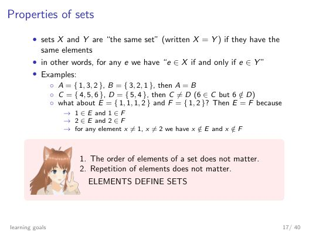


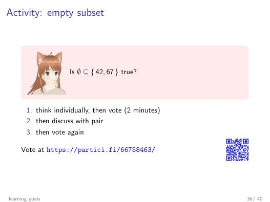


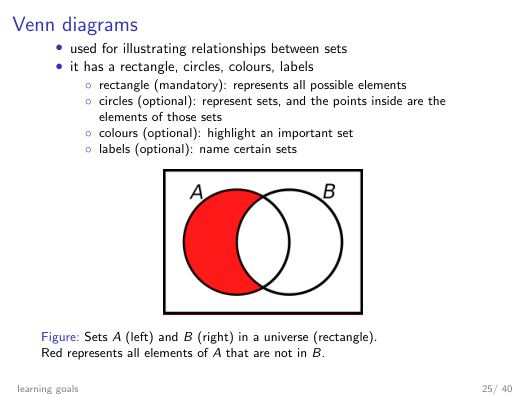

| English | 中文 | 说明 / 例句 |
|---|---|---|
| set | 集合 | A collection of objects; only membership matters. |
| element | 元素 | An object that belongs to a set: 1 ∈ {1, 2}. |
| roster notation | 列举法 | List the elements: A = {1, 2, 3}. |
| set builder notation | 描述法 | A = { x ∈ S : P(x) }, the elements of S that satisfy P. |
| subset | 子集 | A ⊆ B means every element of A is an element of B. |
| superset | 超集 | If A ⊆ B, then B is a superset of A. |
| set equality | 集合相等 | A = B iff (x ∈ A ⇔ x ∈ B), i.e. A ⊆ B and B ⊆ A. |
| empty set | 空集 | ∅ = { }; x ∉ ∅ for all x; ∅ ⊆ Y is always true. |
| universal set | 全集 | The set U of all elements under discussion. |
| intersection | 交集 | A ∩ B = { x ∈ U : x ∈ A and x ∈ B }. |
| union | 并集 | A ∪ B = { x ∈ U : x ∈ A or x ∈ B }; the “or” is inclusive. |
| complement | 补集 | A∁ = { x ∈ U : x ∉ A }. |
| set difference | 差集 | A ∖ B = { x ∈ U : x ∈ A and x ∉ B }; also written A − B. |
| symmetric difference | 对称差 | A ∆ B = (A ∖ B) ∪ (B ∖ A); the exclusive or. |
| Venn diagram | 维恩图 | Rectangle = universe, circles = sets, colours = highlights. |
| counterexample | 反例 | One element showing a claimed ⊆ or equality fails. |
先解绝对值不等式：−2 < n − 5 < 2，三边加 5 得 3 < n < 7。
n 必须是自然数，故 n ∈ {4, 5, 6}。检验：n = 4 时 |−1| = 1 < 2 成立；n = 6 时 |1| = 1 < 2 成立；n = 3 时 |−2| = 2 不满足严格小于，n = 7 同理被排除。
答案：{4, 5, 6}。通用做法是“先解不等式得区间，再与元素所在数集取交集”。
第一步，确定允许的 x：根号要求 x + 2 ≥ 0，即 x ≥ −2；同时左边 2x + 1 是算术平方根的值，必须 ≥ 0，故 x ≥ −1/2。可行范围是 [−1/2, ∞[。
第二步，两边平方（会引入增根，必须回代）：(2x + 1)² = x + 2，即 4x² + 4x + 1 = x + 2，整理得 4x² + 3x − 1 = 0。
第三步，判别式 9 + 16 = 25，根为 x = (−3 ± 5)/8，即 x = 1/4 或 x = −1。
第四步，用可行范围筛：−1 < −1/2 落在范围外，舍去；1/4 保留。所以 A = {1/4}。
结论：A ≠ B。−1 ∈ B 但 −1 ∉ A，指出这样一个元素即可否定相等。
E − F：属于 E 但不属于 F 的元素。E 的 0、2、4 都在 F 中，故只剩 6、8，即 {6, 8}。
F ∩ E：交集与顺序无关，{0, 2, 4}。
E∁：U 中去掉 E 的元素，即奇数 {1, 3, 5, 7, 9}。
最后一个：条件“x ∉ E 且 x ∈ F”对应 F ∖ E，F 中排除 0、2、4 后剩 {1, 3}。
四个答案合起来就是这类题的标准四连问：差集、交集、补集、以及一个用描述法伪装的运算。先翻译成符号再计算，可避免“按文字顺序硬抄”的错误。
想的过程：要证 ⊆，需任取 x ∈ A ∩ B，证 x ∈ A ∪ B。x ∈ A ∩ B 由定义给出两个信息：x ∈ A 且 x ∈ B。要证 x ∈ A ∪ B，只需“x ∈ A 或 x ∈ B”成立。由“且”推“或”合法（P ∧ Q ⇒ P ∨ Q），故成立。
Proof. 设 x ∈ A ∩ B 为任意元素。由交集定义，x ∈ A 且 x ∈ B。既然 x ∈ A 为真，命题“x ∈ A 或 x ∈ B”为真。由并集定义，x ∈ A ∪ B。由于 x 是 A ∩ B 中任意取定的元素，故 A ∩ B ⊆ A ∪ B。□
检验：取 A = {1}、B = {2}，则 A ∩ B = ∅、A ∪ B = {1, 2}，∅ ⊆ {1, 2} 成立；取 A = B = {1}，两边都是 {1}，包含关系成立（且相等）。
要证相等，做两个包含。
(⊆) 设 x ∈ (A ∩ B)∁，即 x ∉ A ∩ B。若同时 x ∈ A 且 x ∈ B，则 x ∈ A ∩ B，矛盾。所以“x ∈ A 且 x ∈ B”为假，由德摩根逻辑律等价于“x ∉ A 或 x ∉ B”，即 x ∈ A∁ 或 x ∈ B∁，故 x ∈ A∁ ∪ B∁。
(⊇) 设 x ∈ A∁ ∪ B∁，即 x ∉ A 或 x ∉ B。无论哪种情况，都不能同时有 x ∈ A 与 x ∈ B，所以 x ∉ A ∩ B，即 x ∈ (A ∩ B)∁。
两个方向都成立，故相等。□ 整个证明只用了两件事：交集与补集的定义，以及 ¬(P ∧ Q) ⇔ ¬P ∨ ¬Q。这也说明集合运算与逻辑运算是同一套结构的两种写法。
- 设 U = {1, 2, …, 12}、A = {2, 4, 6, 8, 10, 12}、B = {3, 6, 9, 12}。求 A ∩ B、A ∪ B、A ∖ B、B ∖ A、A ∆ B 与 (A ∪ B)∁。
- 用描述法写出集合 { x ∈ Z : −3 ≤ x < 4 且 x 为偶数 } 的全部元素。
- 判断真假并说明理由：(a) ∅ ∈ {∅}；(b) ∅ ⊆ {∅}；(c) {∅} ⊆ ∅；(d) {1, 2} ∈ {1, 2, {1, 2}}。
- 证明 A ∖ B = A ∩ B∁。
- 证明：若 A ⊆ B 且 B ⊆ C，则 A ⊆ C。
- 给出一个反例说明 A ∪ (B ∩ C) ≠ (A ∪ B) ∩ C 一般不成立。
参考答案与思路
1. A ∩ B = {6, 12}；A ∪ B = {2, 3, 4, 6, 8, 9, 10, 12}；A ∖ B = {2, 4, 8, 10}；B ∖ A = {3, 9}；A ∆ B = {2, 3, 4, 8, 9, 10}；U ∖ (A ∪ B) = {1, 5, 7, 11}。
2. 先解 −3 ≤ x < 4 得 x ∈ {−3, −2, −1, 0, 1, 2, 3}，取其中偶数：{−2, 0, 2}。0 是偶数、−2 也是偶数，这是最常见的漏项点。
3. (a) 真：{∅} 恰好以 ∅ 为元素。(b) 真：空集是任何集合的子集。(c) 假：∅ 没有元素，不能包含 {∅}（且 {∅} ≠ ∅）。(d) 真：{1, 2, {1, 2}} 把 {1, 2} 列为元素。
4. 两边互含。设 x ∈ A ∖ B，则 x ∈ A 且 x ∉ B，即 x ∈ A 且 x ∈ B∁，故 x ∈ A ∩ B∁；反向同理。关键是熟练使用 x ∉ B ⇔ x ∈ B∁。
5. 设 x ∈ A 为任意元素。由 A ⊆ B 得 x ∈ B；由 B ⊆ C 得 x ∈ C。故 x ∈ C。因 x 任意，A ⊆ C。这是传递性的模板证明，只用了两次定义。
6. 取 A = {1}、B = {1}、C = {2}。左边 A ∪ (B ∩ C) = {1} ∪ ∅ = {1}；右边 (A ∪ B) ∩ C = {1} ∩ {2} = ∅。两者不等。说明并集不能对交集“分配”，只有交集对并集可以分配。
考点分层
方法清单
判断 ∈ 与 ⊆ 与 = 的三问
- 左边是元素、右边是集合吗？是则只能谈 ∈，不能谈 ⊆
- 如果是 ⊆，检查两边是否都是集合（数字、元组都不能做子集）
- 如果是 =，准备两个方向：A ⊆ B 与 B ⊆ A
- 遇到 {∅} 或 {1, {1, 2}} 这类嵌套，先把元素逐个列出再判断
- 找到反例立即否定；找不到反例才尝试证明
计算集合运算的顺序
- 写出全集 U 与各集合的元素（去重、排序）
- 先算括号里的 ∩ 或 ∖，再算 ∪、∆
- 补集最后算，参照物必须是已明确的全集
- 遇到描述法先用不等式或条件筛元素，再套运算
- 用元素个数粗检：|A ∪ B| = |A| + |B| − |A ∩ B|
写 ⊆ 证明的模板
- 写下 Proof 与“设 x ∈ X 为任意元素”
- 把 x ∈ X 按定义展开成具体条件（且、或、不等式）
- 用逻辑或代数推出 x ∈ Y 所需的条件
- 按 Y 的定义把条件翻译回 x ∈ Y
- 声明 x 任意，写出 X ⊆ Y，以 □ 收尾
| 源文件 | 页码 | 覆盖的知识点 |
|---|---|---|
| 01-lesson.pdf | p4–p13 | 课程规则、评分与作业换分表、考试安排、AI 使用规定、学习方法与后续课程 |
| 01-lesson.pdf | p14–p20 | 学习数学的五个面向、第 1 周学习目标、集合的直观定义、列举法与描述法、∈ ∉ ∋ |
| 01-lesson.pdf | p21–p25 | 集合相等的判据、顺序与重复无关、空集、ZFC 公理与罗素悖论、常用数集与区间记号 |
| 01-lesson.pdf | p26–p29 | 集合与非集合的例子、∈ ⊆ = 的定义、⊆ 证明的两步法、Ex1–Ex5（含增根问题） |
| 01-lesson.pdf | p31–p39 | Venn 图要素、∩ ∪ ∆ ∁ ∖ 的定义与骰子例子、口诀与警告、Ex6–Ex7 真题 |
| 01-lesson.pdf | p41–p47 | 集合恒等式的证明方法、A ∩ B ⊆ A ∪ B 的完整范例、空集逻辑、⊆ 与 ⊄ 的证明指南、Ex9–Ex12 |
| Lecture1_Sets, relations and graphs.pdf | 全篇 | 背景材料对同一主题的更详细叙述，用于补充定义与证明细节 |
| （跳过） | p8 | AI 使用规定的图示页，属行政信息，不构成数学考点 |
| （跳过） | p26、p32、p37、p43、p46 | 课堂活动页（举手、投票、小组讨论），内容已并入相应知识点 |
| （补充拓展） | — | 罗素悖论与理发师悖论的对照、von Neumann 序数说明、德摩根律的完整双向证明 |
第 2 讲 · 集合族、幂集、笛卡尔积与二元关系
Families of Sets, Power Sets, Cartesian Products and Binary Relations 第 1 章 集合、关系与逻辑
本节定位
第 1 讲讲清“一个集合”；第 2 讲跨两级：先讲“集合的集合”（集合族 family of sets 与幂集 power set），再讲“由元素对组成的集合”（笛卡尔积与二元关系）。这两步为第 3 讲的关系运算与第 4 讲的函数定义铺路——函数就是特殊的二元关系。
集合族带来一个技术难点：∪ 与 ∩ 不再只作用于两个集合，而要作用于“一族”集合（⋃F、⋂F）。这也解释了为什么幂集 P(S) 有 2ⁿ 个元素，以及为什么空族会给出 ⋃∅ = ∅、⋂∅ = U 这样反直觉的结论。
学完本节你应当能够：
- 判断一个集合是不是集合族、是不是 U 的子集族
- 写出小集合的幂集 P(S)，并说出 |P(S)| = 2|S|
- 计算 ⋃F 与 ⋂F，包括 F 为空族与只含一个集合的情形
- 区分有序对 (a, b)、n 元组与集合：顺序与重复在前者中才有意义
- 写出 A × B 并判断某个集合是否为笛卡尔积（用投影法）
- 把二元关系用集合、表格、箭头图、有向图四种方式表示并互相转换
2.1 集合族：元素本身是集合
数学里经常要谈论“一组集合”，例如把 N、Z、Q、R 放在一起，或把 {a, b} 的全部子集放在一起。这时外层容器仍是集合，只是它的元素本身也是集合，这就是集合族（family of sets）。
定义：若集合 S 的每个元素都是集合，即 x ∈ S ⇒ x 是集合，则 S 是集合族。注意 ∅ 也是集合族——“每个元素都是集合”对空集是空真命题。
正例：{N, Z, Q, R}；{ {1,2,3}, {π, √2, −3}, {apple, banana, 5} }；{ A ⊆ {a, b} } = {∅, {a}, {b}, {a, b}}。反例：{∅, 0, {1, 2}} 因为 0 不是集合；N 本身也不是，因为 5 ∈ N 而 5 不是集合。判断的关键永远是逐个检查元素类型，而不是“看起来像不像”。
2.2 子集族与局部变量记号
设 U 是集合。若 S 的每个元素都是 U 的子集，即 x ∈ S ⇒ x ⊆ U，则 S 是 U 的一个子集族（family of subsets of U）。
专用写法 { A ⊆ U : … } 表示“U 的那些满足……的子集 A 所成之族”。这里 U 必须是已定义的集合，A 是局部变量（local variable），只在该花括号内有效。三个标准例：{ A ⊆ U : A ≠ ∅ }（全部非空子集）、{ A ⊆ S }（即幂集）、{ A ⊆ N : A 的元素之和 = 3 }。
字体约定（建议非硬规定）：小写字母表示元素，大写字母表示集合，花体字母表示集合族，例如 F = { A ⊆ B : A 有 3 个元素 }；用普通大写字母表示族也完全可以，例如 C = { {1,2,3}, {1,2,4} }。考试里重要的是让读者分清层次。
2.3 幂集 P(S)
幂集（power set）是子集族中最重要的一个：P(S) = { A ⊆ S }，以 S 的全部子集为元素。注意 ∅ ∈ P(S) 与 S ∈ P(S) 都成立——空集与 S 自己都是 S 的子集。
元素个数：若 |S| = n，则 |P(S)| = 2ⁿ。理由是对每个元素独立做“选/不选”两个决定，共 2ⁿ 种组合，每种组合给出唯一子集。第 7 讲会再用到这条结论（子集个数 C(n, k)），它也是 2022 年第三次考试第 1(e) 题的直接考点。
2.4 族的并与族的交
族 F 的并：⋃F = { x ∈ U : 存在 A ∈ F 使 x ∈ A }，即把 F 里所有集合的元素倒在一起；若 F = {A, B, C}，则 ⋃F = A ∪ B ∪ C。族的交：⋂F = { x ∈ U : 对所有 A ∈ F 都有 x ∈ A }，只保留同时属于每个成员集合的元素；若 F = {A, B, C}，则 ⋂F = A ∩ B ∩ C。
两个定义的差别全在量词：“存在某个”（some）对应并，“对所有”（all）对应交。判断 x 是否属于 ⋃F 时只需找到一个成员集合含 x；判断 x 是否属于 ⋂F 时必须验证每一个成员集合都含 x。
空族（课件用投票活动提出，答案是 A）：⋃∅ = ∅，因为不存在任何 A ∈ ∅，没有 x 能满足“存在 A ∈ ∅ 使 x ∈ A”；⋂∅ = U，因为“对所有 A ∈ ∅，x ∈ A”空真，U 里每个 x 都满足。这与“∅ ⊆ Y 恒真”是同一套空真逻辑。若 F = {A}，则 ⋃F = ⋂F = A，可用来检验是否真懂定义。
2.5 族运算的四条恒等式
设 U 是集合，G、F₁、F₂ 是 U 的子集族，则：(a) 若 F₁ ⊆ F₂ 则 ⋃F₁ ⊆ ⋃F₂；(b) 若 F₁ ⊆ F₂ 则 ⋂F₂ ⊆ ⋂F₁（方向反转）；(c) (⋂G)∁ = ⋃{ A∁ : A ∈ G }；(d) (⋃G)∁ = ⋂{ A∁ : A ∈ G }。证明留作作业或自学。
(a) 的直观：族变大，可选集合变多，能倒出的元素只会更多。(b) 的直观：族变大，要“同时满足”的集合变多，条件更严，交集只会更小——这就是方向反转的原因，也是极易失分点。(c)(d) 是德摩根律的“族版本”，与第 1 讲的两集合版本一致。
证明 (a)：设 x ∈ ⋃F₁，则存在 A ∈ F₁ 使 x ∈ A；因 F₁ ⊆ F₂ 得 A ∈ F₂，故 x ∈ ⋃F₂。证明 (d)：x ∈ (⋃G)∁ ⇔ x ∉ ⋃G ⇔ 对所有 A ∈ G 都有 x ∉ A ⇔ 对所有 A ∈ G 都有 x ∈ A∁ ⇔ x ∈ ⋂{A∁ : A ∈ G}。整串都是“定义的翻译”。
2.6 面包店过敏原：族交的实际用法
四款产品的过敏原：蛋糕（gluten, egg, milk）、酥皮（peanut, sesame）、小面包（gluten, sesame）、甜面包（gluten, egg, milk, peanut）。顾客只对一种配料过敏，但不知道是哪一种，是否保证他能吃到至少一样？
记四款产品的过敏原集合为 P₁ 至 P₄，顾客的过敏原为 {a}。他能吃某款产品当且仅当 a ∉ Pᵢ。要“保证有得吃”，必须让每种配料都被某款产品避开，也就是 ⋂{P₁, P₂, P₃, P₄} = ∅。逐个检查：gluten 不在酥皮；egg、milk 不在酥皮与小面包；peanut 不在小面包；sesame 不在蛋糕与甜面包。交集为空，故“保证有得吃”。这道题训练的是把自然语言翻译成“族交是否为空”。
2.7 有序对与 n 元组
有序对（ordered pair）是 (a, b)，n 元组（n-tuple）是 (a₁, …, aₙ)。与集合的区别用一张表说清：
| 性质 | n 元组 | 集合 |
|---|---|---|
| 装着对象吗 | 是 | 是 |
| 允许重复副本吗 | 是 | 否 |
| 顺序重要吗 | 是 | 否 |
所以 (1, 2) ≠ (2, 1) 而 {1, 2} = {2, 1}；(1, 1, 2) 是合法三元组，而 {1, 1, 2} = {1, 2}。这个差别在第 7 讲计数四公式里会变成“顺序是否重要、是否允许重复”的分类标准。
典型用法：把平面点写成 (x, y)；把列表写成 (第一项, 第二项, …, 最后一项)；把一副扑克牌写成 C = { (r, s) : r ∈ R, s ∈ S }，其中 R = {A, 2, 3, …, 10, J, Q, K}、S = {♠, ♡, ♣, ♢}，于是黑桃 A 就是 (A, ♠) ∈ C。
2.8 笛卡尔积 A × B
笛卡尔积：A × B = { (a, b) : a ∈ A, b ∈ B }，约定 A × A = A²。三个例子：扑克牌 C = R × S 共 52 张；平面 R² = { (x, y) : x, y ∈ R }；方格点阵 Z² = { (x, y) ∈ R² : x, y ∈ Z }。
n 元积：若 n ∈ Z⁺，则 A₁ × … × Aₙ = { (a₁, …, aₙ) : 对每个 i 有 aᵢ ∈ Aᵢ }。例：R³；n 维超立方体顶点 { (x₁, …, xₙ) ∈ Rⁿ : 每个 xᵢ ∈ {0, 1} }，共 2ⁿ 个。名称来源：笛卡尔与费马在 17 世纪发明解析几何，直角坐标系本质是两条数轴的笛卡尔积。
2.9 哪些集合是笛卡尔积：投影法
判断 S ⊆ A × B 是否等于某个 S₁ × S₂，用投影（projection）：S₁ = { a ∈ A : 存在 b 使 (a, b) ∈ S }、S₂ = { b ∈ B : 存在 a 使 (a, b) ∈ S }。判定定理（课件给出，并要求 S ≠ ∅）：S = S₁ × S₂ 当且仅当 S 本身是某个笛卡尔积。
方法三步：(a) 算 S₁；(b) 算 S₂；(c) 检查 S = S₁ × S₂。若不成立，则 S 不可能是任何集合的笛卡尔积——因为投影是唯一候选。直观判据：把 S 画成方格表，若有标记的格子恰好构成完整的矩形块（某几行与某几列的全部交叉）则是；只要出现“缺角”就不是。
S = {(1, 3), (1, 4), (2, 3)}：S₁ = {1, 2}、S₂ = {3, 4}，但 (2, 4) ∉ S，故 S ≠ S₁ × S₂。这正是“证明某集合不是笛卡尔积”的典型反例结构。2.10 二元关系的定义
设 X、Y 是集合，任何子集 R ⊆ X × Y 都称为 X 与 Y 上的二元关系（binary relation），X = Y 时简称 X 上的关系。常用 xRy 表示 (x, y) ∈ R。
例 1：R = { (x, y) ∈ R² : x 小于 y }，于是 (3, 1) ∉ R 而 (1, 3) ∈ R；这个关系干脆写成符号 <，于是 1 < 3 就是 (1, 3) ∈ < 的简写。例 2：X = Y = 全体人类，P = { (p, c) : p 是 c 的父母 }，则 aPb 读作“a 是 b 的父母”。
非例 1：{1, 2, 3, 4} 不是任何集合上的二元关系，因为元素不是有序对。非例 2：{(a, 1), (a, 2), (b, 4)} 不是 {a, b} 与 {1, 2, 3} 之间的关系，因为 (b, 4) ∉ {a, b} × {1, 2, 3}——关系必须是笛卡尔积的子集，越界的对不算。
2.11 关系的四种表示法
取 A = {1,2,3,4}、B = {1,…,6}、S = {(1,1), (1,2), (2,2), (2,3), (3,4), (3,5), (3,6), (4,4)}，同一个 S 有四种写法：① 集合写法，最精确，适合证明；② 表格，行是 A 的元素、列是 B 的元素，打勾表示属于 S；③ 箭头图，左边 A 的点、右边 B 的点，属于 S 的对画一支箭头；④ 有向图，当 X = Y 时把点画在一处，用带箭头的弧表示 (x, y)。
转换时最容易错的是“行列方向”：表格第 i 行第 j 列对应 (aᵢ, bⱼ)；箭头图里箭尾是第一坐标、箭头是第二坐标。第 3 讲的逆关系 R⁻¹ 等价于“把所有箭头反向”，合成 RS 则等价于“从 x 经 R 到 y 再经 S 到 z，跳过中间点”。
2.12 图（网络）的定义
有向图（directed graph）是二元组 (V, E)：V 是集合，元素称为顶点（vertices，也叫节点 nodes、点 points）；E ⊆ V² 是二元关系，元素称为边（edges，也叫箭头 arrows、线 lines）。
例：V = {v₁, v₂, v₃, v₄}、E = {(v₁,v₂), (v₁,v₃), (v₃,v₁), (v₃,v₃)}，于是 G = ({v₁,v₂,v₃,v₄}, {(v₁,v₂), (v₁,v₃), (v₃,v₁), (v₃,v₃)})。注意 (v₃, v₃) 这种自环（loop）在有向图里允许。画图时顶点位置完全不重要，重要的是连接关系正确。
无向图（undirected graph）：(V, E) 是有向图，且对任意 v₁, v₂ 有 (v₁, v₂) ∈ E 当且仅当 (v₂, v₁) ∈ E，即每条边双向。简单图（simple graph）：无向图且对任意 v 有 (v, v) ∉ E，即无自环。日常说“图”时通常指无向图或简单图，需看上下文。
2.13 从关系到图的实操
例（源文件 p35）：X = {v₁, …, v₆}，R = {(v₁,v₁), (v₁,v₄), (v₁,v₅), (v₂,v₃), (v₂,v₄), (v₃,v₅), (v₅,v₂), (v₆,v₁), (v₆,v₂)} ⊆ X²。R 二元，故可画表格；R ⊆ X²，故可画有向图，两种表示信息相同。
源文件的练习演示反向操作：由箭头图写关系（Ex10）；由语言描述写关系（Ex9 的 apricot/grass/cucumber/pizza/jade 与 F/G 两列，实质是分类关系）；由条件式画图（Ex11：{(a, b) ∈ {1,…,8}² : b/a ∈ N}，即“b 是 a 的倍数”，图很稠密）。
集合族的元素本身是集合，判断时逐个查元素类型，而不是看像不像，因此 ∅ 也算集合族而 N 不是。幂集 P(S) 含 S 的全部子集，∅ 与 S 自己都在内；若 |S|=n，则 |P(S)|=2ⁿ，因为每个元素独立做选或不选两个决定，共 2ⁿ 种组合，每种给出唯一子集——写完可数个数自检，漏 ∅ 或漏 S 最常见。族并 ⋃F 对应存在某个成员含 x，族交 ⋂F 对应对所有成员都含 x，差别全在量词。
原版图页（源 PDF 插图页）
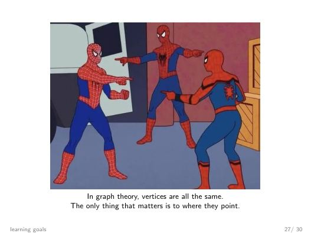

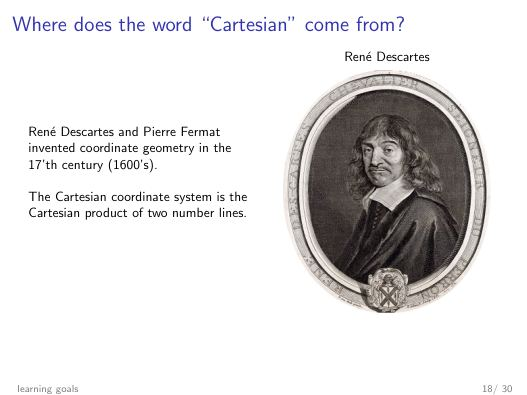
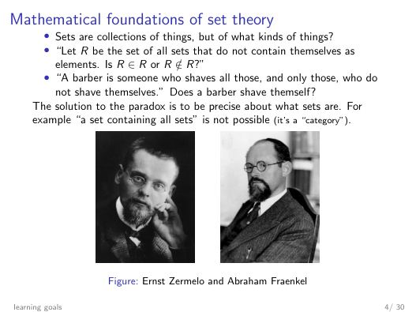

| English | 中文 | 说明 / 例句 |
|---|---|---|
| family of sets | 集合族 | A set whose elements are themselves sets. |
| family of subsets | 子集族 | Every element is a subset of a fixed set U. |
| power set | 幂集 | P(S) = { A ⊆ S }; it has 2|S| elements. |
| arbitrary union | 族的并 | ⋃F = { x ∈ U : x ∈ A for some A ∈ F }. |
| arbitrary intersection | 族的交 | ⋂F = { x ∈ U : x ∈ A for all A ∈ F }. |
| empty family | 空族 | ⋃∅ = ∅ but ⋂∅ = U. |
| ordered pair | 有序对 | (a, b); order matters, so (a, b) ≠ (b, a). |
| n-tuple | n 元组 | (a₁, …, aₙ); copies and order both matter. |
| Cartesian product | 笛卡尔积 | A × B = { (a, b) : a ∈ A, b ∈ B }; A × A = A². |
| projection | 投影 | S₁ = { a ∈ A : (a, b) ∈ S for some b }. |
| binary relation | 二元关系 | Any subset R ⊆ X × Y; xRy means (x, y) ∈ R. |
| arrow diagram | 箭头图 | Left column X, right column Y, arrows for pairs of R. |
| directed graph | 有向图 | (V, E) with E ⊆ V²; elements of E are edges. |
| simple graph | 简单图 | Undirected and without loops: (v, v) ∉ E. |
| vertex | 顶点 | Element of V; also called node or point. |
| edge | 边 | Element of E; also called arrow or line. |
族的并：把三个集合的元素倒在一起，⋃F = {1, 2, 3, 5}。
族的交：1 只在 A₁ 里，3 不在 A₂ 里，5 不在 A₁ 里，只有 2 三个都有，故 ⋂F = {2}。
检验：⋂F ⊆ ⋃F 必须成立（{2} ⊆ {1,2,3,5}）；并且 ⋂F 的每个元素都能在每一个 Aᵢ 里找到。
按子集大小分类枚举：0 个元素 ∅；1 个元素 {a}、{b}、{c}；2 个元素 {a,b}、{a,c}、{b,c}；3 个元素 {a,b,c}。
故 P({a,b,c}) = { ∅, {a}, {b}, {c}, {a,b}, {a,c}, {b,c}, {a,b,c} }，共 1 + 3 + 3 + 1 = 8 = 2³ 个。
易错：不要把 ∅ 写成 {∅}（后者含一个元素）；也不要把 {a,b,c} 写成 a, b, c（幂集的元素是集合）。
算投影：S₁ = {1, 2}、S₂ = {3, 4}。
候选积 S₁ × S₂ 有 4 个元素：(1,3)、(1,4)、(2,3)、(2,4)；S 只有 3 个，缺 (2,4)。
故 S ≠ S₁ × S₂，由定理，S 不是任何两个集合的笛卡尔积。方格表上第 2 行第 4 列是空的，出现“缺角”。
(⇒) 任取 a ∈ A。因 B 非空，可取 b ∈ B，于是 (a, b) ∈ A × B ⊆ C × D，故 a ∈ C，所以 A ⊆ C。同理任取 b ∈ B，取 a ∈ A 得 (a, b) ∈ C × D，故 b ∈ D，所以 B ⊆ D。
(⇐) 任取 (a, b) ∈ A × B，则 a ∈ A ⊆ C 且 b ∈ B ⊆ D，故 (a, b) ∈ C × D。所以 A × B ⊆ C × D。□
为什么必须非空：若 A = ∅、B = {1}、C = {2}、D = {3}，则 A × B = ∅ ⊆ C × D 成立，但 B ⊄ D，结论为假。取 b ∈ B 那一步正是靠“B 非空”才合法。
顶点取 {1,2,3,4}，逐对画箭头：1→1、1→2、2→2、3→3、3→4。
结构：每点都指向自己（自反），且只指向“自己或更大的点”，即 (a, b) ∈ R ⇒ a ≤ b。
语言描述：这是“小于或等于”关系 ≤ 在 {1,2,3,4} 上的限制。2025 年第三次考试第 1(b) 题就是反过来给图求关系。
- 设 S = {1, 2, 3}。写出 P(S)，并验证元素个数为 2³。
- 设 F = { {1,2}, {2,3}, {1,2,3} }，求 ⋃F 与 ⋂F；再设 G = ∅，求 ⋃G 与 ⋂G（U = {1,2,3}）。
- 写出 {a, b} × {1, 2} 与 {1, 2} × {a, b}，它们相等吗？
- 判断 S = {(1,1), (1,2), (2,1), (2,2), (3,1)} ⊆ {1,2,3}² 是否为笛卡尔积，用投影法说明。
- 设 R = {(x, y) ∈ {1,2,3,4}² : x + y = 5}。用列举法写出 R，并画有向图。
参考答案与思路
1. P(S) = {∅, {1}, {2}, {3}, {1,2}, {1,3}, {2,3}, {1,2,3}}，共 8 个，与 2³ 一致。
2. ⋃F = {1,2,3}；⋂F = {2}（1 不在 {2,3} 里，3 不在 {1,2} 里）。空族：⋃∅ = ∅，⋂∅ = U = {1,2,3}。
3. {a,b} × {1,2} = {(a,1), (a,2), (b,1), (b,2)}；{1,2} × {a,b} = {(1,a), (1,b), (2,a), (2,b)}。不相等，但元素个数都是 4，说明笛卡尔积不交换。
4. S₁ = {1,2,3}、S₂ = {1,2}，候选积 6 个元素而 S 只有 5 个，缺 (3,2)，故不是笛卡尔积。
5. R = {(1,4), (2,3), (3,2), (4,1)}；图上四条箭头，2↔3 与 1↔4 各成一对互逆箭头，无自环。
考点分层
方法清单
判断与计算集合族
- 逐个元素问“它本身是集合吗”，有一个不是就不是集合族
- 子集族还要检查“每个元素都是同一个 U 的子集”
- 写幂集按子集大小 0,1,2,…,n 分类枚举，最后用 2ⁿ 校验
- 算 ⋃F 用“存在”检验，算 ⋂F 用“所有”检验
- 遇到空族直接套 ⋃∅ = ∅、⋂∅ = U
判断笛卡尔积的三步
- 算出第一坐标投影 S₁ = { a : (a, b) ∈ S }
- 算出第二坐标投影 S₂ = { b : (a, b) ∈ S }
- 比较 S 与 S₁ × S₂：先比元素个数，再逐个核对
- 若不相等，结论是“不是任何笛卡尔积”
四种表示法互转
- 先在集合写法里把对写全（按第一坐标分组）
- 表格：行 = 第一坐标，列 = 第二坐标，打勾即可
- 箭头图：左列第一坐标，右列第二坐标，逐对画箭头
- 有向图：X = Y 时把点画在一处，自环要画出
- 转换后随机抽三对回查
| 源文件 | 页码 | 覆盖的知识点 |
|---|---|---|
| 02-lesson.pdf | p5–p6 | 集合论的历史动因：罗素悖论、理发师悖论、ZFC 公理清单 |
| 02-lesson.pdf | p7–p9 | 第 2 周学习目标 1.4–1.5、2.1–2.3、本章目录 |
| 02-lesson.pdf | p10–p12 | 集合族的定义与正反例、子集族定义与 { A ⊆ U : … } 记号、字体约定 |
| 02-lesson.pdf | p13–p17 | 幂集、族的并与交、空族的结果、四条恒等式 (a)–(d) |
| 02-lesson.pdf | p20–p21 | 有序对与 n 元组、与集合的性质对照表、扑克牌模型 |
| 02-lesson.pdf | p22–p25 | 笛卡尔积定义、A² 与 R²、Z²、n 元积、R³ 与超立方体顶点 |
| 02-lesson.pdf | p26–p27 | 投影法与判定定理、Ex6–Ex8 |
| 02-lesson.pdf | p29–p35 | 二元关系定义与正反例、表格与箭头图、有向图定义、无向图与简单图 |
| 02-lesson.pdf | p36 | Ex9–Ex11：由箭头图与条件式写关系、画图 |
| 03-exercise.pdf | 全篇 | 集合族判定、族的并与交、笛卡尔积判定、关系的图形表示等练习 |
| （跳过） | p14、p16、p25、p30 | 课堂投票与小组活动页，结论已并入正文 |
| （补充拓展） | — | 面包店过敏原问题的完整交集论证、A × B ⊆ C × D 的空集反例、幂集个数的组合解释 |
第 3 讲 · 逆关系与合成、命题逻辑与真值表
Inverse and Composition of Relations, Propositions and Truth Tables 第 1 章 集合、关系与逻辑
本节定位
第 3 讲有两个主题：先给关系加上两种“手术”——求逆（inverse）与合成（composition），再把“关系”升级为“命题”（proposition），引入 ∧、∨、¬、⇒、⇔ 与真值表。表面上是两件事，实质是同一件事：关系是集合，命题的真假也可以用集合来刻画。
从考试看，本讲对应第 1 题的“关系计算”和第 2 或第 3 题的“真值表”，几乎每年必出，且分值高（真值表常为 8 分）。真值表是整门课最机械的得分点，只要步骤规范就不会失分。
学完本节你应当能够：
- 写出逆关系 R⁻¹，并用“箭头反向”解释它
- 计算合成关系 RS，并说明“跳过中间点”的含义
- 证明 (RS)⁻¹ = S⁻¹R⁻¹，并解释为什么顺序要反转
- 判断一句话是不是命题，区分命题与开放公式（open formula）
- 写出 ∧、∨、¬、xor、⇒、⇔ 的真值表，并解释“前件为假时蕴含为真”
- 为含 2 个或 3 个原子命题的复合命题构造完整真值表（2ⁿ 行）
3.1 逆关系 R⁻¹
设 R 是 X 与 Y 之间的二元关系。它的逆关系定义是 R⁻¹ = { (y, x) ∈ Y × X : (x, y) ∈ R }，等价说法是 xRy 当且仅当 yR⁻¹x。求逆就是“把所有箭头的方向翻过来”，定义域与值域随之互换：R ⊆ X × Y 时 R⁻¹ ⊆ Y × X。
例（源文件 p8）：若 R 是 A→B 的一组箭头，则 R⁻¹ 把每条箭头的头尾对调；而 RS 表示“先走 R 再走 S”的捷径。常用性质：(R⁻¹)⁻¹ = R（翻两次回到原样），以及下一节要证的 (RS)⁻¹ = S⁻¹R⁻¹。第 12 讲会看到：用布尔矩阵表示关系时，R⁻¹ 的矩阵就是 R 的矩阵的转置。
3.2 合成关系 RS
设 R 是 X 与 Y 上的关系、S 是 Y 与 Z 上的关系。它们的合成是 X 与 Z 上的关系：RS = { (x, z) ∈ X × Z : 存在 y ∈ Y 使 xRy 且 ySz }。直观说法是“跳过中间点”“抄近路”：从 x 经 R 到某个 y，再经 S 到 z，就把 x 与 z 直接连起来。
记号并不统一：有人写 R ∘ S，有人写 RS。更要注意顺序约定：函数复合 g ∘ f 表示“先 f 后 g”，写在前面的 g 后执行；而关系的 RS 表示“先 R 后 S”，写在前面的 R 先执行。两个约定相反，是考试里最容易搞混的一处。
计算 RS 的机械做法：对每个 (x, y) ∈ R 与每个 (y, z) ∈ S，若中间点相同，就把 (x, z) 收进 RS，最后去重。若没有任何中间点能接上，RS 就是空集。
3.3 用语言解释逆与合成
设 H 是全体人类，xPy 表示“x 是 y 的父母”，xBy 表示“x 是 y 的兄弟”。则 xP⁻¹y 表示“x 是 y 的孩子”（因为 yPx 即 y 是 x 的父母）；xB⁻¹y 表示“x 的兄弟姐妹是 y”，即“y 是 x 的兄弟姐妹”。
xPBy 表示“x 是 y 的某个兄弟的父母”，即“x 是 y 的父母且 y 有兄弟”；xBPy 表示“x 是 y 的父母的兄弟”，即“x 是 y 的叔叔/伯伯/舅舅”（uncle）。这两条对照说明：合成不交换，PB 与 BP 是完全不同的关系。
3.4 合成与逆的计算实例
源文件 Ex1：R = {(A, developer), (A, tester), (B, tester), (C, developer)} 表示“人 x 担任角色 y”；P = {(developer, PushCode), (developer, Deploy), (tester, ReportBug)} 表示“角色 y 拥有权限 z”。求 RP 与 P⁻¹P。
RP：A 有 developer 与 tester 两个角色，故 A 能 PushCode、Deploy、ReportBug；B 只有 tester，只能 ReportBug；C 只有 developer，能 PushCode 与 Deploy。所以 RP = {(A, PushCode), (A, Deploy), (A, ReportBug), (B, ReportBug), (C, PushCode), (C, Deploy)}，语言解释：x 通过其角色拥有权限 z。
P⁻¹P：P⁻¹ = {(PushCode, developer), (Deploy, developer), (ReportBug, tester)}。合成把“同一角色能执行的两个动作”连起来：developer 能执行 PushCode 与 Deploy，故这两者互相可达（含自身）；tester 只能 ReportBug，故只有 (ReportBug, ReportBug)。结果 P⁻¹P = {(PushCode, PushCode), (PushCode, Deploy), (Deploy, PushCode), (Deploy, Deploy), (ReportBug, ReportBug)}，解释是“存在某个角色同时拥有这两个权限”。
3.5 性质 (RS)⁻¹ = S⁻¹R⁻¹
证明只用定义：(z, x) ∈ (RS)⁻¹ ⇔ (x, z) ∈ RS ⇔ 存在 y 使 xRy 且 ySz ⇔ 存在 y 使 zS⁻¹y 且 yR⁻¹x ⇔ (z, x) ∈ S⁻¹R⁻¹。每一步都是双向翻译，故两个包含同时成立。□
顺序反转的直观：逆关系把“从哪到哪”对调，而合成是“先 R 后 S”，对调之后自然变成“先 S⁻¹ 后 R⁻¹”。
3.6 拓展：n 元关系与关系数据库
给定 n ∈ Z⁺，集合 A₁, …, Aₙ 上的 n 元关系是 A₁ × … × Aₙ 的任意子集；A₁, …, Aₙ 称为域（domains），n 称为度（degree）。例：Pyth = { (a, b, c) ∈ R³ : a² + b² = c² }，于是 (3,4,5) ∈ Pyth 而 (1,2,1) ∉ Pyth。
关系数据库就是这一模型的工程化：赫尔辛基出发的列车表，每行是一个 4 元组（发车时间, 车次, 目的地, 站台），全部行构成 R ⊆ Times × Train nbrs × Train stations × Tracks；查询与维护用 SQL。这段是拓展材料，考试不直接考，但它解释了软件工程专业为什么学关系。
3.7 命题与开放公式
命题（proposition）是能够取真值的句子，也就是说，它只能被解释为真或假。疑问句（What is your name?）、祈使句（Do your homework!）、感谢与问候都不是命题——它们有含义，但没有真值。
判断题（源文件 p18）：(A) “Bye bye!” 不是命题；(B) “x + 7 = 5” 是开放公式（open formula），真值取决于 x；(C) “x + 7 = 5 当 x = −1” 是命题；(D) “存在 x ∈ R 使 x + 7 = 5” 是命题（真，取 x = −2）；(E) Brocard 问题“1·2·…·n + 1 = m² 在 n ∉ {4,5,7} 时有解”是命题——即使没人知道真假，它仍有确定真值。
开放公式的真值由解释（interpretation）决定。课件用图论例子：命题 Q 是“从 a 到 b 有箭头”，在某个图上为真、在另一个图上为假，所以 Q 本身是开放公式；解释（指定 a、b 与具体图）才给它真值。取值集合写作 {true, false}、{T, F} 或 {1, 0}（另有“多值逻辑”，本课程不涉及）。
解释必须服从逻辑规则。例：A 表示“外面在下雨”、B 表示“我在吃冰淇淋”、C 表示“外面在下雨且我在吃冰淇淋”。常识告诉我们：若 C 真，则 A 必真，B 也必真。这种“由复合命题的真假推出成分真假”的规则，就是逻辑运算符的解释规则。
3.8 五个逻辑运算符
课件给出的运算符表：∧ 读作 and（合取 conjunction）；∨ 读作 or（析取 disjunction）；¬ 读作 not（否定 negation）；⇒ 读作 if A then B 或 A implies B（蕴含 implication）；xor 读作“A or B but not both”（排他或 exclusive or）；另有 ⇔（等价 equivalent，读作 if and only if）与 ⇐（反向蕴含）。
每个运算符都有一条解释规则：只要知道成分命题的真值，就能算出复合命题的真值。写法是把所有输入组合列成表，对每种组合给出输出。例 1：“A ∧ B”只在 A、B 都真时为真。例 2：“¬A”取与 A 相反的真值。
3.9 基本真值表
合取（∧）：两个都真才真。析取（∨）：至少一个为真时为真（数学里是包含式或）。否定（¬）：取反。排他或（xor）：恰好一个为真时为真。
| A | B | A ∧ B | A ∨ B | A xor B |
|---|---|---|---|---|
| 0 | 0 | 0 | 0 | 0 |
| 0 | 1 | 0 | 1 | 1 |
| 1 | 0 | 0 | 1 | 1 |
| 1 | 1 | 1 | 1 | 0 |
否定只有两行：A = 0 时 ¬A = 1，A = 1 时 ¬A = 0。这四张表是全部真值计算的原子，必须背下来。
3.10 蕴含 ⇒ 的真值：承诺模型
课件的核心例子：早上老师说“如果我的头痛停了，我今天就来上数学 A 的课”。四种情况：(A) 头痛停了、上了课；(B) 头痛停了、没上课；(C) 头痛没停、上了课；(D) 头痛没停、没上课。哪一种算“说谎”？只有 (B)——承诺被违背。
于是 A ⇒ B 只在 A 真而 B 假时为假。当 B 真时无论 A 真假都为真；当 A 假时也为真。（D）的情形：你没中彩票，也买不起法拉利，我说“如果你中彩票就能买法拉利”并没有撒谎，因为我根本没有对你的购买力作出断言。
| A | B | A ⇒ B | 说明 |
|---|---|---|---|
| 0 | 0 | 1 | 前件假，承诺未被触发 |
| 0 | 1 | 1 | 前件假，结论反而成立 |
| 1 | 0 | 0 | 唯一的违背承诺情形 |
| 1 | 1 | 1 | 承诺兑现 |
⇐ 很容易：A ⇐ B 就是 B ⇒ A。等价 ⇔ 在 A、B 同真或同假时为真（0⇔0 = 1、0⇔1 = 0、1⇔0 = 0、1⇔1 = 1）。当说 A 与 B 逻辑等值时，意思就是 A ⇔ B 为重言式，即两者对所有真值组合都给相同结果。
3.11 四类重要命题与三种“变形”
矛盾式（contradiction）永远为假，例如 P ∧ ¬P。重言式（tautology）永远为真，例如 P ∨ ¬P。等值（equivalent）指 P 与 Q 真值相同，即 P ⇔ Q 为重言式。
给定 P ⇒ Q，三种变形必须分清：逆否命题（contrapositive）是 ¬Q ⇒ ¬P，与原文等值；逆命题（converse）是 Q ⇒ P，一般不等值；否命题（inverse）是 ¬P ⇒ ¬Q，一般也不等值。第 4 讲会看到：逆否等值是“逆否证明法”的全部依据。
3.12 ⇒ 与 ⇔ 在解方程中的区别
解方程时常用 ⇒：a = b ⇒ a² = b² 成立，但反向不成立（可能 a = −b）。要真正“解出”方程，必须写成 f(x) = g(x) ⇔ x ∈ {…}，两个方向都要成立。只有当两边做的运算可逆（reversible）时，⇐ 才自动成立；平方不可逆，所以必须回代检验。
源文件 Ex4：在 [−6, ∞[ 上解 √(2x + 12) = x + 2。定义域要求 2x + 12 ≥ 0 即 x ≥ −6（与题设一致）；又因左边是算术平方根，须 x + 2 ≥ 0 即 x ≥ −2。两边平方：2x + 12 = x² + 4x + 4，整理得 x² + 2x − 8 = 0，即 (x + 4)(x − 2) = 0，候选 x = −4 或 x = 2。用 x ≥ −2 筛选：−4 淘汰，2 保留。答案 x ∈ {2}。
3.13 其他逻辑词：unless 与 neither
“A unless B”（A 除非 B，例如 I’ll arrive early unless the bus is late）的意思是：当 B 为假时 A 一定为真；B 为真时不作保证。写成逻辑式就是 ¬B ⇒ A。“neither A nor B”（既不 A 也不 B）要求两者都为假，等价于 ¬A ∧ ¬B。自然语言要先翻译成逻辑式，再写真值表。
3.14 原子命题及其独立性
一个命题由两部分组成：原子命题（其真值由情境解释决定）与逻辑运算符。例 1：“如果下雨且刮风，我就看电影”写成 (R ∧ W) ⇒ M。例 2：“A × B ≠ B × A 除非 A = B 或 A = ∅ 或 B = ∅”写成 ¬(Q ∨ R ∨ S) ⇒ P。
关键要求：原子命题之间必须相互独立，或者完全相同。课件的错误例子：“如果下雨我就看电影；如果不下雨我也看电影”被写成 (R ⇒ M) ∧ (X ⇒ M)，其中 X 表示“不下雨”。但 R 真时 X 必假，两者真值互相决定，不能同时当原子命题。正确写法是 (R ⇒ M) ∧ (¬R ⇒ M)——用同一个原子 R 加否定，而不是新造一个 X。
3.15 写真值表的步骤与两种排版
步骤：① 把命题拆成原子命题与逻辑运算符；② 列出原子命题的所有真值组合（T=1、F=0）；③ 对每种组合按运算符逐步算出复合命题的真值。若有 n 个原子命题，表必须有 2ⁿ 行（不含表头）：1 个原子 2 行，2 个原子 4 行，3 个原子 8 行。
两种排版：Type 1（中间步骤列）把每个子公式单独列一列，例如 ¬B、A ∧ ¬B，最后算总的；Type 2（运算符列）把运算符写在原子命题之间的列标题里，按优先级从内到外填，用编号 1、2、3… 标出计算顺序。两种都可以，Type 2 更省纸但更容易串行错位。
3.16 两个示范
示范一（源文件 p4）：S: (A ⇒ B) ⇒ (A ⇒ (C ∧ B))。A = 0 时两个蕴含的前件都假，故 S = 1。A = 1、B = 0 时 A ⇒ B = 0，故 S = 1。A = 1、B = 1 时 A ⇒ B = 1，且 C ∧ B = C、A ⇒ (C ∧ B) = C，于是 S = C。所以 S 只在 A = 1、B = 1、C = 0 这一行为 0，其余七行为 1。检查方法：找“前件真、后件假”的唯一组合。
示范二（Ex5）：证明 P ⇒ Q 与 ¬P ∨ Q 等值。四行逐看：P=1,Q=1 两边都 1；P=1,Q=0 时 P⇒Q=0、¬P∨Q=0∨0=0；P=0,Q=1 时 1 与 1∨1=1；P=0,Q=0 时 1 与 1∨0=1。四行全同，故等值。这条等值式是把蕴含化成“或—非”的标准工具，也是 3.13 节 unless 翻译的依据。
3.17 逻辑谜题（拓展）
Ex8 是骑士与无赖（knights and knaves）问题：岛上居民要么总说真话（骑士），要么总说假话（无赖）。A 说“B 与 C 同类型”，随后有人问 C：“A 与 B 同类型吗？”分析要点是把每句话写成逻辑式，再枚举 A、B、C 的类型（2³ = 8 种），检查“话的真假”是否与“说话者类型”一致。这类题不考计算，考的是把语言翻译成真值约束。
课件最后提到 Boolos 的“最难逻辑谜题”：三位神分别叫 True、False、Random，只能问三个是非题，且回答用含义未知的 da 与 ja。它是拓展阅读，考试不要求。
求逆关系就是把每条箭头方向翻过来，定义域与值域随之互换；翻两次回到原样。合成 RS 是跳过中间点抄近路：存在 y 使 xRy 且 ySz，就把 x 与 z 直接连起来。最易混的是顺序约定：函数复合 g ∘ f 先 f 后 g、写在前的后执行；关系的 RS 却是先 R 后 S、写在前的先执行。用父母 P 与兄弟 B 验证：PB 是父母的兄弟即叔叔，BP 是兄弟的父母，两者完全不同。合成与逆还有 (RS)⁻¹ = S⁻¹R⁻¹。
原版图页（源 PDF 插图页）


| English | 中文 | 说明 / 例句 |
|---|---|---|
| inverse relation | 逆关系 | R⁻¹ = { (y, x) : (x, y) ∈ R }; flip all arrows. |
| composition | 合成 | RS = { (x, z) : ∃y, xRy and ySz }; skip the middle. |
| n-ary relation | n 元关系 | Any subset of A₁ × … × Aₙ; n is its degree. |
| relational database | 关系数据库 | Tables of n-tuples, queried with SQL. |
| proposition | 命题 | A sentence that can be interpreted only as true or false. |
| open formula | 开放公式 | A formula whose truth depends on unbound variables. |
| interpretation | 解释 | An assignment of truth values to a formula. |
| conjunction | 合取 | A ∧ B, true only when both are true. |
| disjunction | 析取 | A ∨ B, true when at least one is true; inclusive or. |
| negation | 否定 | ¬A, the opposite truth value of A. |
| exclusive or | 排他或 | A xor B, true when exactly one is true. |
| implication | 蕴含 | A ⇒ B, false only when A is true and B is false. |
| equivalence | 等价 | A ⇔ B, true when A and B share the same truth value. |
| tautology | 重言式 | Always true, e.g. P ∨ ¬P. |
| contradiction | 矛盾式 | Always false, e.g. P ∧ ¬P. |
| contrapositive | 逆否命题 | The contrapositive of P ⇒ Q is ¬Q ⇒ ¬P; equivalent. |
| converse | 逆命题 | The converse of P ⇒ Q is Q ⇒ P; not equivalent in general. |
| truth table | 真值表 | A table with 2ⁿ rows for n atomic propositions. |
RP：逐个配对再按中间点合并。A 有 developer 与 tester，得 (A, PushCode)、(A, Deploy)、(A, ReportBug)；B 只有 tester，得 (B, ReportBug)；C 只有 developer，得 (C, PushCode)、(C, Deploy)。
所以 RP = {(A, PushCode), (A, Deploy), (A, ReportBug), (B, ReportBug), (C, PushCode), (C, Deploy)}，语言解释：人 x 通过其角色拥有权限 z。
P⁻¹P：先把 P 反向得 {(PushCode, developer), (Deploy, developer), (ReportBug, tester)}，再与 P 合成。PushCode 与 Deploy 都由 developer 执行，故四对互相可达；ReportBug 只与自身相连。
结果 P⁻¹P = {(PushCode, PushCode), (PushCode, Deploy), (Deploy, PushCode), (Deploy, Deploy), (ReportBug, ReportBug)}，解释：存在某个角色同时拥有这两个权限。
一串等价变形即可：
(z, x) ∈ (RS)⁻¹ ⇔ (x, z) ∈ RS ⇔ 存在 y ∈ Y 使 xRy 且 ySz。
把两个关系各自反向并交换顺序：⇔ 存在 y 使 zS⁻¹y 且 yR⁻¹x ⇔ (z, x) ∈ S⁻¹R⁻¹。
由于每一步都是“当且仅当”，两个包含同时成立，故相等。□ 直观解释：逆关系把箭头的头尾对调，而合成是“先 R 后 S”，对调后自然成为“先 S⁻¹ 后 R⁻¹”。
三个原子命题，故 2³ = 8 行。逐行算 ¬B、A ∨ ¬B、C ∧ B，最后算等价。
| A | B | C | ¬B | A ∨ ¬B | C ∧ B | 结果 |
|---|---|---|---|---|---|---|
| 0 | 0 | 0 | 1 | 1 | 0 | 0 |
| 0 | 0 | 1 | 1 | 1 | 0 | 0 |
| 0 | 1 | 0 | 0 | 0 | 0 | 1 |
| 0 | 1 | 1 | 0 | 0 | 1 | 0 |
| 1 | 0 | 0 | 1 | 1 | 0 | 0 |
| 1 | 0 | 1 | 1 | 1 | 0 | 0 |
| 1 | 1 | 0 | 0 | 1 | 0 | 0 |
| 1 | 1 | 1 | 0 | 1 | 1 | 1 |
只有两行使整个命题为真：(A,B,C) = (0,1,0) 与 (1,1,1)。答题时把中间列都写出来可拿过程分；只写最后一列容易被判跳步。
第一步，写清定义域与隐含条件：被开方式 2x + 12 ≥ 0 给 x ≥ −6（题设已含）；右边等于算术平方根，故 x + 2 ≥ 0，即 x ≥ −2。
第二步，两边平方：2x + 12 = (x + 2)² = x² + 4x + 4，整理得 x² + 2x − 8 = 0。
第三步，因式分解：(x + 4)(x − 2) = 0，候选 x = −4 与 x = 2。
第四步，用 x ≥ −2 筛选并代回检验：x = 2 时左边 √16 = 4，右边 4，成立；x = −4 不满足条件，舍去。
结论：解集为 {2}。要点是“平方 ⇒ 增根 ⇒ 必须回代”，这也是把 ⇒ 升级为 ⇔ 的代价。
列出四行真值：
| P | Q | P ⇒ Q | ¬P ∨ Q |
|---|---|---|---|
| 0 | 0 | 1 | 1 |
| 0 | 1 | 1 | 1 |
| 1 | 0 | 0 | 0 |
| 1 | 1 | 1 | 1 |
两列逐行相同，故等值（P ⇔ Q 形式的重言式成立）。
用法：① 把蕴含改写成“或—非”，便于机器实现；② 求否定得 ¬(P ⇒ Q) ⇔ P ∧ ¬Q，这正是“举反例”的逻辑形式。
- 设 R = {(1,2), (2,3), (3,1)} ⊆ {1,2,3}²。写出 R⁻¹ 与 R²（即 RR），并说明 R³ 是什么。
- 设 R = {(a,1), (b,1), (b,2)}、S = {(1,x), (2,y)}。计算 RS 与 S⁻¹R⁻¹，并验证 (RS)⁻¹ = S⁻¹R⁻¹。
- 判断下列句子是否为命题：(a) 2 + 2 = 5；(b) 请关上门；(c) 存在实数 x 使 x² = −1；(d) x² = −1。
- 写出 (A ⇒ B) ∧ (B ⇒ A) 的真值表，并说明它与 A ⇔ B 的关系。
- 解方程 √(x + 3) = x − 3，并说明为什么要检验。
参考答案与思路
1. R⁻¹ = {(2,1), (3,2), (1,3)}；R² = RR：1→2→3 给 (1,3)，2→3→1 给 (2,1)，3→1→2 给 (3,2)，故 R² = {(1,3), (2,1), (3,2)} = R⁻¹；R³ = R²R = {(1,1), (2,2), (3,3)}，即单位关系。这是长度为 3 的循环。
2. RS：a→1→x 得 (a,x)；b→1→x 得 (b,x)；b→2→y 得 (b,y)，故 RS = {(a,x), (b,x), (b,y)}。(RS)⁻¹ = {(x,a), (x,b), (y,b)}。S⁻¹ = {(x,1), (y,2)}、R⁻¹ = {(1,a), (1,b), (2,b)}；S⁻¹R⁻¹ 得 (x,a)、(x,b)、(y,b)，一致。
3. (a) 是命题（假）；(b) 不是（祈使句无真值）；(c) 是命题（假，实数平方非负）；(d) 是开放公式，真值取决于 x。
4. (A⇒B)∧(B⇒A) 在 A、B 同真或同假时为 1，否则为 0，正是 A ⇔ B 的真值表，故两者等值。
5. 需 x + 3 ≥ 0 且 x − 3 ≥ 0，即 x ≥ 3。平方得 x + 3 = x² − 6x + 9，即 x² − 7x + 6 = 0，(x−1)(x−6) = 0。x = 1 不满足 x ≥ 3，舍去；x = 6 时左边 3、右边 3，成立。解集 {6}。
考点分层
方法清单
计算 RS 与 R⁻¹
- 把 R 与 S 都按第一坐标分组，便于找中间点
- 对每个 (x, y) ∈ R 与每个 (y, z) ∈ S 生成 (x, z)
- 去重（关系是集合，重复的对只算一个）
- 求逆就把每个 (x, y) 写成 (y, x)，并交换定义域与值域
- 检查元素个数：|RS| ≤ |R| · |S|，若超出说明算错
写真值表的四步
- 数出原子命题个数 n，准备 2ⁿ 行并按二进制顺序排列组合
- 给每个子公式单独开一列（Type 1），或按优先级标号（Type 2）
- 逐行按定义填值：先括号内、再 ¬、∧ 与 ∨、最后 ⇒ 与 ⇔
- 检查特殊行：蕴含只有“真⇒假”为假；等价只在同真同假时为真
判断命题与否
- 是陈述句吗？疑问、祈使、感叹一律不是命题
- 含自由变量吗？含则是开放公式，需要解释才有真值
- 有量词（存在、对所有）把变量约束住了吗？有则是命题
- 即使无人知道真假，只要有确定真值就仍是命题
| 源文件 | 页码 | 覆盖的知识点 |
|---|---|---|
| 03-lesson.pdf | p2–p3 | 第 2 周关键词回顾、本章目录 |
| 03-lesson.pdf | p6–p13 | 逆关系与合成的定义、箭头图与图例、父母与兄弟的语言解释、Ex1–Ex3 |
| 03-lesson.pdf | p13–p14 | n 元关系（拓展）、关系数据库与 SQL（拓展） |
| 03-lesson.pdf | p17–p20 | 命题的定义、非命题例句、A–E 判断、开放公式与解释 |
| 03-lesson.pdf | p22–p28 | ∧ ∨ ¬ xor 的定义与真值表、解释规则的写法 |
| 03-lesson.pdf | p30–p34 | 蕴含的承诺模型与四情形、⇒ ⇐ ⇔ 的真值表 |
| 03-lesson.pdf | p35–p37 | 矛盾式、重言式、等值、逆否/逆/否、⇒ 与 ⇔ 在解方程中的区别、Ex4 |
| 03-lesson.pdf | p37 | unless 与 neither…nor 的翻译 |
| 03-lesson.pdf | p39–p42 | 原子命题的独立性、真值表的两种排版、2ⁿ 行规则 |
| 03-lesson.pdf | p43–p44 | Ex5–Ex8：等值证明、真值表、集合运算与逻辑运算对照、骑士与无赖、Boolos 谜题 |
| 04-exercise.pdf | Ex2、Ex4 | 关系合成的图形计算、P ⇒ (Q ⇔ R) 的真值表练习 |
| （跳过） | p6、p18、p23、p30、p36 | 课堂活动与投票页，结论已并入正文 |
| （补充拓展） | — | n 元关系与关系数据库、Boolos 三神谜题、xor 的等价改写 |
第 2 章 证明、函数与基数 3 讲 章节页 →
第 4 讲 · 一阶逻辑、三类证明与数系进制
First-Order Logic, Three Proof Types and Number Systems 第 2 章 证明、函数与基数
本节定位
第 3 讲解决了“真值怎么算”，第 4 讲解决“证明怎么写”。它把第 3 讲的真值表升级为一阶逻辑的记号（∃、∀），并给出三类标准证明结构：直接证明、逆否证明、反证法。后半段转入数系与二进制、十六进制转换——这是软件工程方向唯一直接对应硬件的数学内容。
本讲对应第 4 周学习目标 5.1–5.2（读懂并判断证明是否正确、运用三类证明）与 4.1–4.2（举出数系例子、手动做二进制与十进制转换）。考试中“证明”题的比重最大，通常 6–8 分；“进制转换”几乎必出一道小题。
学完本节你应当能够：
- 用谓词、量词与集合记号把数学命题写成紧凑的一阶逻辑式
- 正确否定含 ∃ 与 ∀ 的命题，并区分“所有都不”与“并非所有”
- 按“Proof → 假设 → 推导 → 结论 → □”的框架写出直接证明
- 识别何时该用逆否证明，并写出 ¬C ⇒ ¬A 的推导
- 用反证法证明“不存在整数解”“√2 无理”这类命题
- 手动完成二进制与十进制、十六进制与十进制的互相转换
- 用 0/1 向量表示集合，并用 ∧、∨、¬ 实现集合运算
4.1 复习：真值表的两种排版
上一讲的真值表可以用两种排版。Type 1 为每个中间子公式单独开一列；Type 2 把运算符写在原子命题之间，按优先级从内到外计算并编号。例如 S 为 (A ⇒ B) ⇒ (A ⇒ (C ∧ B)) 时，Type 2 会在 A、B、C 之后依次填 A⇒B、C∧B、A⇒(C∧B)，最后填中间的 ⇒。两种排版结论相同，答题时任选一种，但要写全中间列。
课堂练习：(P ∧ ¬Q) ∨ (¬P ∧ Q) 在哪些真值组合下为真？四行算下来只有 P=0,Q=1 与 P=1,Q=0 为真——它正是 xor 的展开式。这条练习说明“同一个逻辑运算可以有多种写法”，后面化简逻辑式时会反复用到。
4.2 一阶逻辑的记号
为了更紧凑地写数学命题，需要一套“语言”。数学表达式分两类：封闭的（closed），如 2 + 2 = 4、0 > 10、π ∈ R，它们有确定真值；开放的（open），如 x ∈ R、x + 2 = 4、x² + x − 5 > 10，真值取决于 x。
谓词（predicate）P(x)、Q(x, y) 表示“关于 x 的命题”“关于 x, y 的命题”，把具体对象代入后才有真值。例：若 P(x) 表示“x ∈ R”，则 P(1) = T、P(π) = T、P(i) = F、P({1, 2, 4}) = F（集合不是实数）；若 Q(x, y) 表示“x < y”，则 Q(1, 2) = T、Q(5, 5) = F；若 R 表示“2 + 2 = 5”，则 R = F。
存在量词（existential quantifier）∃ 读作“存在”“至少有一个”“对某个”；∃x P(x) 表示“存在 x 使 P(x) 为真”。全称量词（universal quantifier）∀ 读作“对所有”“任给”；∀x P(x) 表示“P(x) 对所有 x 为真”。限定取值集合时写 (∃x ∈ A)P(x) 或 (∀x ∈ A)P(x)。
用它们可以把子集定义写成一串等价式：A ⊆ B ⇔ ∀x (x ∈ A ⇒ x ∈ B) ⇔ (∀x ∈ A)(x ∈ B)。这三步是同一个意思的三种写法，第 8 讲的“堆叠蕴含”与第 9 讲的整除证明都会用到这种翻译。
4.3 量词的否定
设 Rock 为全体岩石，G(x) 表示“x 是绿色的”。四句话：(∃x ∈ Rock)G(x)（有些岩石是绿的）、(∀x ∈ Rock)G(x)（所有岩石都是绿的）、(∃x ∈ Rock)(¬G(x))（有些岩石不是绿的）、(∀x ∈ Rock)(¬G(x))（所有岩石都不是绿的，即“没有岩石是绿的”）。
两条等值式必须背下来：¬(∃x)G(x) ⇔ (∀x)(¬G(x))；¬(∀x)G(x) ⇔ (∃x)(¬G(x))。也就是说，否定时量词翻转、谓词取反。
4.4 为什么需要证明
背景知识：自然数 p 是素数（prime），如果 p 只能被 p 与 1 整除。7 是素数，6 = 2·3 不是；素数序列 2, 3, 5, 7, 11, 13, 17, …。
数学结论并不宣称“终极真理”，它总是这种形式：假设 A（或某个语境），则 C 为真。证明的流程是：从假设出发，解释符号，做逻辑推导，抵达结论。不能跳细节，也不能误解句子；必须能回答任何人追问的“为什么”。
好证明的三条标准：使用公认的数学约定；逻辑有效（logically valid）；可读（引导读者、没有明显跳跃）；并且尽可能简洁（不重复、不写废话）。读证明的收益是：理解命题为何为真、看清因果、学会证明技巧、发现新的解题方法、以及评估结论的可信度（同行评议）。
4.5 三类证明与两个模型问题
模型问题 1（Goldbach 猜想）：若自然数 n > 2 是偶数，则它是两个素数之和。它有“假设—结论”的形式 A ⇒ C，其中 A 是“n > 2 且为偶数”，C 是“n 是两个素数之和”。
模型问题 2（Euclid 定理）：存在无穷多个素数。它只有结论 C，很难写成 A ⇒ C 的形式。这两类问题的区别决定了能用哪些证明方法——这一点在第 4.7 节会立刻用到。
4.6 直接证明
直接证明（direct proof）直接推出结论 C；若有假设（形如 A ⇒ C），就用上假设。结构是：假设 A → 逻辑推导 → 得到 C。开头写 Proof，结尾写 □、■ 或 Q.E.D.。
范例（源文件 p24）：设 A、B 是集合，证明 A ∩ B ⊆ B。先翻译：A ∩ B ⊆ B 意为“对任意 x，若 x ∈ A ∩ B 则 x ∈ B”。证明：设 x ∈ A ∩ B，由交集定义得 x ∈ A 且 x ∈ B，于是 x ∈ B。因 x 任意，故 A ∩ B ⊆ B。□
直接证明在中学最常见；成年之后要根据问题选择最合适的类型。判断标准在第 5 讲给出（假设简单就用直接证明）。
4.7 逆否证明
逆否证明（proof by contrapositive）证明 ¬C ⇒ ¬A，它与 A ⇒ C 等值。它只适用于 A ⇒ C 形式的命题。结构：从结论的否定 ¬C 出发 → 推导 → 得到假设的否定 ¬A。
| A | C | A ⇒ C | ¬C ⇒ ¬A |
|---|---|---|---|
| 0 | 0 | 1 | 1 |
| 0 | 1 | 1 | 1 |
| 1 | 0 | 0 | 0 |
| 1 | 1 | 1 | 1 |
范例（源文件 p29）：设 n ∈ Z，证明“若 n⁹ 是奇数，则 n 是奇数”。假设 n 不是奇数，则 n 是偶数，n = 2k（k ∈ Z）；于是 n⁹ = (2k)⁹ = 2⁹k⁹ = 2·(2⁸k⁹)，而 2⁸k⁹ 是整数，故 n⁹ 是偶数，即 n⁹ 不是奇数。这正好是 ¬C ⇒ ¬A。□
注意：Euclid 定理（“存在无穷多素数”）不能逆否证明，因为它不是 A ⇒ C 形式。判断“能否用逆否”的第一步永远是“命题有没有假设”。
为什么逆否与原命题等值？可以用一个生活例子检验：原句“如果下雨，我就待在室内”与逆否“如果我出门了，就没有下雨”同真同假；而逆命题“如果我待在室内，就下雨了”显然不等值。
4.8 反证法
反证法（proof by contradiction，reductio ad absurdum）证明“结论的否定会导致矛盾”。两种形式：结论型 C 证明 ¬C ⇒ F；蕴含型 A ⇒ C 证明 (A ∧ ¬C) ⇒ F。结构：假设 ¬C（若有假设 A 也一并假设）→ 逻辑推导 → 得到矛盾 F（如 0 = 1）→ 结论成立。
范例（源文件 p34）：证明方程 2x + 6y = 1 没有整数解。假设存在 x, y ∈ Z 使 2x + 6y = 1，则 1 = 2(x + 3y)；因 x + 3y ∈ Z，故 1 是偶数。但 1 是奇数，矛盾。所以无整数解。□
范例（源文件 Ex4）：证明 √2 是无理数。假设 √2 是有理数，则可写成最简分数 √2 = a/b（a, b ∈ Z⁺，且 a、b 无公因数）。两边平方：2b² = a²，故 a² 是偶数，由“a² 偶 ⇒ a 偶”得 a = 2k。代回：2b² = 4k²，即 b² = 2k²，故 b 也是偶数。于是 a、b 都是偶数，与“最简分数”矛盾。因此 √2 不是有理数。□
范例（源文件 Ex5）：一个挖去两个对角格的棋盘无法用 2×1 或 1×2 骨牌无重叠铺满。把棋盘染色成黑白相间，每块骨牌恰好覆盖一黑一白；挖去的两个对角格同色，故剩下的黑白格数相差 2，不可能配对。这是“不变量”式的反证。
4.9 数系的历史
课件按历史顺序展示数系：简单计数（tally counting，一根竖线表示 1）；象形文字与罗马数字；现代十进制；二进制；十六进制。
简单计数：one |、two ||、three |||、four ||||、five |||||、six ||||||……（Lebombo bone，Eswatini，约公元前 35000 年）。更高级的写法是分组：埃及象形文字里 ten 记作 2 形符号、twenty 记作 22，而 4622 写作 4444 3333 3322 ||（四个“千”、三个“百”、两个“十”、两根竖线）。
十进制：zero 0、one 1、…、four thousand six hundred twenty two 4622，即 4×1000 + 6×100 + 2×10 + 2×1。古埃及也用“大单位在前”的思想，但他们写四千用四个“千”符号，而不是把 4 这一个符号放到千位；现代位值制（positional notation）的关键是同一个符号 1 在不同位置表示不同值：最右位是 1，右数第二位是 10，第三位是 100，第七位是 10⁶。
二进制：zero 0、one 1、two 10、three 11、four 100、forty nine 110001。十六进制：0–9 之后用 A = 10、B = 11、…、F = 15。计算机用二进制是因为两种状态（通/断）最容易实现；十六进制是二进制的“缩写”，因为 16 = 2⁴，一位十六进制恰好对应四位二进制。
4.10 二进制与十六进制转十进制
二进制数的每位按 2 的幂加权：110001 = 1×2⁵ + 1×2⁴ + 0×2³ + 0×2² + 0×2¹ + 1×2⁰ = 32 + 16 + 1 = 49。课件给出 2¹⁰ 到 2⁰ 的值表：1024、512、256、128、64、32、16、8、4、2、1；另一例 1001 1110 = 128 + 16 + 8 + 4 + 2 = 158。
十六进制按 16 的幂加权：4E5A = 4×16³ + 14×16² + 5×16¹ + 10×16⁰ = 4×4096 + 14×256 + 5×16 + 10 = 16384 + 3584 + 80 + 10 = 20058。
术语来源：decimal ← 拉丁 decimus（第十）← decem（十）；binary ← binarius（由两个组成）← bini（成对）；hexadecimal ← hexa（六）+ deca（十），即十六进制。
记号歧义：1001 到底是“一千零一”还是二进制的 9？有歧义时写底数：1001₂ 表示二进制 1001，值等于 2³ + 2⁰ = 9；1001₁₀ 表示十进制一千零一。答卷里凡非十进制数，务必标底数。
4.11 十进制转二进制：除二取余
算法：不断除以 2，记录商与余数，直到商为 0；把余数从下往上读，就是二进制表示。以 152 为例：152/2 = 76 余 0；76/2 = 38 余 0；38/2 = 19 余 0；19/2 = 9 余 1；9/2 = 4 余 1；4/2 = 2 余 0；2/2 = 1 余 0；1/2 = 0 余 1。自下而上读余数：1001 1000，即 152₁₀ = 10011000₂。
检验方法：把结果按权展开加回去，128 + 16 + 8 = 152。这个“回代检验”只需几秒钟，却能挡住绝大多数抄写错误。
4.12 拓展：用 0/1 向量表示集合
设 U = {a, 2, 0, d, 5, hello}，取一个向量表示（vector representation）V = (0, 2, 5, a, d, hello)，即把 U 的元素各列一次。对子集 A = {hello, 2, d}，它的二进制向量是 V_A = (0, 1, 0, 0, 1, 1)：第 k 位为 1 当且仅当 V 的第 k 个元素属于 A。
形式化：若 V = (a₁, …, aₙ)，且 (b₁, …, bₙ) 是 0/1 向量，则它对应子集 A = { aⱼ ∈ U : bⱼ = 1 }；反之 bⱼ = 1 当 aⱼ ∈ A，否则为 0。
用途：集合运算变成逐位逻辑运算。VA∪B = V_A ∨ V_B、VA∩B = V_A ∧ V_B、VA∁ = ¬V_A（逐位进行）。例：V = (0,1,2,3,4,5)、A = {0,2,4}、B = {3,4,5}，则 V_A = (1,0,1,0,1,0)、V_B = (0,0,0,1,1,1)；逐位 ∧ 得 (0,0,0,0,1,0) 即 A ∩ B = {4}，逐位 ∨ 得 (1,0,1,1,1,1) 即 A ∪ B，逐位 ¬ 得 (0,1,0,1,0,1) 即 A∁。这就是计算机里“用位图做集合运算”的原理。
量词否定的规则是量词翻转、谓词取反，即存在命题的否定变成全称的否定。英文表述有个陷阱：所有岩石都不是绿的，意思是每一块都不绿；并非所有岩石都是绿的，意思只是有些不绿，两句完全不同。子集定义可写成三种等价形式，核心是对任意元素，若属于甲则也属于乙。这三种写法表达同一件事，后面的堆叠蕴含与整除证明都靠这种翻译。
原版图页（源 PDF 插图页）
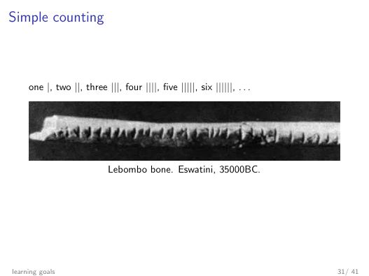

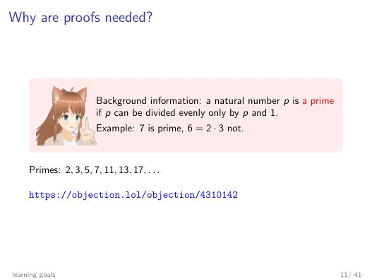
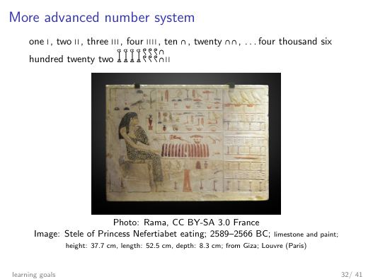
| English | 中文 | 说明 / 例句 |
|---|---|---|
| predicate | 谓词 | P(x) becomes true or false once x is given. |
| existential quantifier | 存在量词 | ∃x P(x): there is at least one x with P(x). |
| universal quantifier | 全称量词 | ∀x P(x): P(x) holds for every x. |
| negation of quantifiers | 量词否定 | ¬∃x P(x) ⇔ ∀x ¬P(x); ¬∀x P(x) ⇔ ∃x ¬P(x). |
| direct proof | 直接证明 | Assume A, deduce, conclude C. |
| proof by contrapositive | 逆否证明 | Prove ¬C ⇒ ¬A instead of A ⇒ C. |
| proof by contradiction | 反证法 | Assume ¬C (and A) and derive a contradiction F. |
| reductio ad absurdum | 归谬法 | Latin name for proof by contradiction. |
| logically valid | 逻辑有效 | Every step follows from definitions or earlier results. |
| Q.E.D. | 证毕 | Marker at the end of a proof; also written □. |
| positional notation | 位值制 | The same digit means different values in different positions. |
| binary | 二进制 | Base 2; digits 0 and 1; weights 2k. |
| hexadecimal | 十六进制 | Base 16; digits 0–9 and A–F. |
| least significant digit | 最低位 | The rightmost digit, weight 2⁰ or 16⁰. |
| binary vector | 二进制向量 | A 0/1 vector describing which elements belong to a subset. |
先把 ⊆ 翻译成元素语言：对任意 x，若 x ∈ A ∩ B 则 x ∈ B。
Proof. 设 x ∈ A ∩ B 为任意元素。由交集定义，x ∈ A 且 x ∈ B。于是 x ∈ B。由于 x 任意，故 A ∩ B ⊆ B。□
要点：整个证明只用了一次定义；不要写“显然”，因为“显然”掩盖了正是要考的那一步。
这是 A ⇒ C 形式（A：n⁹ 奇；C：n 奇）。结论的否定“n 不是奇数”比假设更容易展开，故选逆否证明。
Proof. 假设 n 不是奇数，则 n 是偶数，故存在 k ∈ Z 使 n = 2k。于是 n⁹ = (2k)⁹ = 2⁹k⁹ = 2·(2⁸k⁹)。因为 2⁸k⁹ ∈ Z，所以 n⁹ 是偶数，即 n⁹ 不是奇数。
我们证明了 ¬C ⇒ ¬A，它与 A ⇒ C 等值，故原命题成立。□
结论是“不存在”，适合反证法。
Proof. 假设存在 x, y ∈ Z 使 2x + 6y = 1。则 1 = 2(x + 3y)。因 x + 3y ∈ Z，这说明 1 是偶数。但 1 是奇数，矛盾（1 既偶又奇）。因此不存在整数解。□
推广：ax + by = c 有整数解的必要条件是 gcd(a, b) | c。本例 gcd(2, 6) = 2 不整除 1，故无解。第 9 讲会把这条充分必要条件完整证明。
Proof. 假设 √2 是有理数，则可写成最简分数 √2 = a/b，其中 a, b ∈ Z⁺ 且 a、b 没有公因数。
两边平方：2b² = a²。故 a² 是偶数；由“平方为偶数则本身为偶数”，a 是偶数，设 a = 2k。
代回：2b² = (2k)² = 4k²，两边除以 2 得 b² = 2k²，故 b² 是偶数，b 也是偶数。
于是 a 与 b 都是偶数，至少有公因数 2，与“最简分数”矛盾。因此 √2 不是有理数，即无理数。□
关键引理“n² 偶 ⇒ n 偶”本身可用逆否证明：若 n 奇则 n = 2k+1，n² = 4k²+4k+1 为奇。
152 除二取余：152→76 余 0；76→38 余 0；38→19 余 0；19→9 余 1；9→4 余 1；4→2 余 0；2→1 余 0；1→0 余 1。自下而上读：10011000。
回代检验：128 + 16 + 8 = 152，正确。
4E5A：4×4096 + 14×256 + 5×16 + 10 = 16384 + 3584 + 80 + 10 = 20058。
110001：32 + 16 + 1 = 49。三个结果与源文件数值一致，可作为核对。
- 用直接证明证明：若 A ⊆ B 且 B ⊆ C，则 A ⊆ C。
- 用逆否证明证明：若 x² 是偶数（x ∈ Z），则 x 是偶数。
- 用反证法证明：不存在整数 x, y 使 x² − 9y = 3。
- 把 238510 写成二进制，把 1011 1110₂ 写成十进制与十六进制。
- 设 U = {p, q, r, s}，V = (p, q, r, s)，A = {p, r}。写出 V_A，并用逐位运算求 A∁ 的向量。
参考答案与思路
1. 设 x ∈ A 任意。由 A ⊆ B 得 x ∈ B；由 B ⊆ C 得 x ∈ C。故 x ∈ C，因 x 任意得 A ⊆ C。□（这是传递性，三步只用两次定义。）
2. 逆否：假设 x 不是偶数，则 x 是奇数，x = 2k + 1，于是 x² = 4k² + 4k + 1 = 2(2k² + 2k) + 1 为奇数，即 x² 不是偶数。故 ¬C ⇒ ¬A 成立，原命题成立。□
3. 假设有整数解。则 x² = 9y + 3 = 3(3y + 1)，故 3 | x²。讨论 x 除以 3 的余数：x = 3k 时 x² = 9k² 被 9 整除；x = 3k ± 1 时 x² = 9k² ± 6k + 1 ≡ 1 (mod 3)，均不可能使 x² ≡ 0 (mod 3)。更简单的做法：x² ≡ 0, 1 (mod 3)，而 9y + 3 ≡ 0 (mod 3)，需 x² ≡ 0 (mod 3)，则 x = 3k，x² = 9k²，于是 9k² = 9y + 3，左边被 9 整除、右边不被 9 整除，矛盾。
4. 238510 连续除 2 取余，得 111010001111011110₂（可用 2 的幂回代核对）。1011 1110₂ = 128 + 32 + 16 + 8 + 4 + 2 = 190；十六进制按四位一组：1011 = B、1110 = E，故为 BE₁₆。
5. V_A = (1, 0, 1, 0)；A∁ 的向量 = ¬V_A = (0, 1, 0, 1)，对应 {q, s}。
考点分层
方法清单
选证明类型
- 先把命题写成 A ⇒ C 或纯 C 的形式
- 若是 A ⇒ C 且 A 简单，选直接证明
- 若是 A ⇒ C 但 ¬C 更好展开，选逆否证明
- 若结论是“不存在/不是/无穷”，选反证法
- 若都不顺，先用小例子与反例试探命题是否为真
写证明的骨架
- 第一行写 Proof，并声明“设 … 为任意元素”或“假设 …”
- 每个推导都注明依据（定义、已证结论、代数运算）
- 不跳步：把“由定义得”写出来，而不是写“显然”
- 结尾明确写出目标结论，并以 □ 收尾
- 检查是否用到了全部假设（未用的假设通常意味着证明有漏洞）
进制转换
- 十进制转二进制：反复除以 2，记下余数
- 从最后一个余数往上读，得到二进制串
- 二进制转十进制：按 2 的幂展开相加
- 二进制转十六进制：从右往左每四位一组，查表 1011=B、1110=E
- 最后用另一种方法回代检验
| 源文件 | 页码 | 覆盖的知识点 |
|---|---|---|
| 04-lesson.pdf | p2–p6 | 真值表复习（五种运算符）、S 的两种排版、课堂练习 xor 展开 |
| 04-lesson.pdf | p7–p12 | 第 4 周学习目标、一阶逻辑记号（谓词、∃、∀）、A ⊆ B 的逻辑写法、量词否定 |
| 04-lesson.pdf | p14–p17 | 为什么需要证明、数学事实的形式、好证明的三条标准、读证明的收益 |
| 04-lesson.pdf | p19–p24 | 两个模型问题（Goldbach、Euclid）、直接证明的结构与集合范例 |
| 04-lesson.pdf | p26–p30 | 逆否证明的结构与真值表、n⁹ 为奇的范例、Ex1–Ex3 |
| 04-lesson.pdf | p32–p35 | 反证法的两种形式、2x+6y=1、√2 无理、棋盘染色 |
| 04-lesson.pdf | p39–p43 | 计数、象形、罗马、十进制、位值制、二进制与十六进制示例 |
| 04-lesson.pdf | p45–p46 | 二进制按权展开、1001 1110 = 158、术语来源与底数记号 |
| 04-lesson.pdf | p47–p49 | 0/1 向量表示子集、逐位 ∧ ∨ ¬ 实现集合运算 |
| 04-lesson.pdf | p51–p52 | 除二取余算法（152 例）、Ex6–Ex8 进制计算 |
| 05-exercise.pdf | Ex3、Ex4 | 判断证明是否 sound、整除的传递性直接证明 |
| （跳过） | p8–p9、p13、p16、p21、p25、p31、p37–p38 | 目录页与课堂讨论页，内容已并入正文 |
| （补充拓展） | — | √2 无理性的完整证明、量词否定的英文陷阱、位图集合运算 |
第 5 讲 · 证明策略选择与函数
Choosing a Proof Type; Functions, Injections and Bijections 第 2 章 证明、函数与基数
本节定位
第 4 讲给了三类证明的模板；第 5 讲先回答“什么时候用哪一种”，再补上“函数”的严格定义。中间夹了一长段初等运算复习（绝对值、幂、根、对数、求和），因为它既是函数表达式的工具，也是后面计数与数论的基础。
结构上本讲是过渡：从“证明怎么写”过渡到“对象是什么”。函数正式定义为一种特殊的二元关系，后面第 6 讲的基数、第 7 讲的计数、第 12 讲的矩阵，全都建立在“函数是关系”这个认识上。
学完本节你应当能够：
- 用简单例子与反例先检验命题真假，再决定证不证
- 按“假设与结论谁更简单”选择直接、逆否或反证
- 熟练处理绝对值、幂、根、对数与求和记号，并写出定义域限制
- 判断一个关系是不是从 X 到 Y 的函数（两条：存在性与唯一性）
- 证明或否定单射、满射、双射，会用“解 f(x) = y”的统一方法
- 区分函数复合 g∘f 与关系合成 RS 的顺序，并会求逆函数
5.1 先把话说清楚：解释为什么能防错
好的解释有四个好处：听者不必猜你的意思；你自己会发现哪里不确定；数学概念更容易学会；而且它“简单得令人愉快”。课件用一段假证明演示解释的力量：设 a = b，则 a² = ab，于是 a² − b² = ab − b²，即 (a + b)(a − b) = b(a − b)，两边约去 (a − b) 得 a + b = b，即 2b = b，故 2 = 1。
错误在哪？约去 (a − b) 时要求 a − b ≠ 0，但 a = b 意味着 a − b = 0。若在每一步都写清“我在做什么、为什么可以做”，这个错误立刻暴露。这也是答卷要求的实质：不是写给老师看，而是逼自己检查。
5.2 不确定真假时：先找反例
课件给出命题：A、B、C、D 是集合且 A × B ⊆ C × D，则 A ⊆ C 且 B ⊆ D。在动手证明之前，先试简单情形：取 A = ∅、B = {1}、C = {2}、D = {3}，则 A × B = ∅ ⊆ C × D 成立（空集是任何集合的子集），但 B = {1} ⊄ {3} = D。假设真、结论假，命题为假。
接着试“去掉空集”的版本：所有非空情形都成立，于是猜想“在非空假设下命题为真”。这正是第 2 讲例 4 的证明。这条经验很实用：先用小例子找反例，找到就结束；找不到再猜条件、再证明。
反例的逻辑依据是量词否定：¬∀x P(x) ⇔ ∃x ¬P(x)。要推翻“对所有 x 成立”，只需给出一个 x 使 P(x) 为假，这个 x 就叫反例（counterexample）。课件 Ex1 要求判断 1/(2 − x) = 1/2 · (1 + x/2 + (x/2)²) 是否对所有 x ∈ ]−2, 2[ 成立：取 x = 1，左边 = 1，右边 = 1/2 · (1 + 1/2 + 1/4) = 0.875，不相等，故命题为假（真值应由无穷级数给出，截断式只在极限意义下成立）。
5.3 怎么选证明类型
先承认一件事：不存在“总能告诉你正确证法”的算法。Gödel 的结果说明，无法有一套指令对所有真命题都给出正确证明；也存在“有效但极慢”的算法（枚举所有可能的文本，直到某一段恰好是证明）。还有真命题根本没有证明。结论：选证法是技能，靠经验。
课程给出“够用”的准则（A 为假设，C 为结论）：对 A ⇒ C 型，若 A 比 C 简单，选直接证明；若 A 比 C 复杂，选逆否证明（此时 ¬C 比 ¬A 简单）。对纯 C 型，若 C 比 ¬C 简单，用直接证明；若 ¬C 看起来更简单，用反证法。一句话：最好让假设简单、结论复杂。
配套练习（Ex2–Ex5）示范：Ex2“若 x⁴ + 3x² + 4x + 1 ≤ 0 则 x ≤ 0”适合逆否（假设 x > 0 时左边为正）；Ex3“若 x > −2 则 x³ + 5x + 18 > 0”适合直接（把 x³ + 5x 在 x > −2 时的下界估出来）；Ex4“∅ × A = ∅”适合直接（元素不存在）；Ex5“P = {(1,3), (1,4), (2,3)} 不是笛卡尔积”用投影法给反例。
5.4 运算顺序与多项式
常规优先级：括号最先；其次乘方与开方（幂内与根号内相当于自带括号）；再乘除（从左到右）；最后加减（从左到右）。但 ∧、∨、⇒、⇔ 以及 sin、cos、log 这类符号没有统一的优先级传统，正确做法是加括号并看上下文。
多项式（polynomial）由变量与常数经乘、加、减构成，例如 P(x) = x² + 3x − 4、Q(n) = n²⁰ − 6054n⁸ + 34n³ + n + 1、R(x, y) = (x² + 4)(y − 3) + 5xy。关键性质：a = b ⇒ P(a) = P(b)，但反向一般不成立（P(a) = P(b) 推不出 a = b，例如 P(x) = x² 时 a = −b 也成立）。这条“单向”正是解方程要回代检验的根源。
5.5 绝对值
定义：|x| = x（x ≥ 0 时），|x| = −x（x < 0 时）。它表示数轴上点 x 到 0 的距离，|x − y| 表示 x 到 y 的距离。恒有 |x| ≥ 0。
性质：|x| ≥ 0；|−x| = |x|；|xy| = |x||y|；三角不等式 |x + y| ≤ |x| + |y|。解绝对值方程要用分段：|a| = b ⇔ (a ≥ 0 ∧ a = b) ∨ (a ≤ 0 ∧ −a = b)；而 |a| = b ⇒ a² = b² 只是单向（反过来 a = −b 也满足平方相等）。
例题（Ex6 系列）：解 |x − 1| = 2|x − 3|。分情况去绝对值可解，也可两边平方：(x−1)² = 4(x−3)²，得 3x² − 22x + 35 = 0，x = 5 或 x = 7/3，代回都成立（因为平方后需检验，本例两个都合格）。
5.6 Iverson 括号
设 P(x) 是谓词，A 是集合，定义函数 [P]: A → {0, 1} 为 [P(x)] = 0（P(x) 假）、[P(x)] = 1（P(x) 真）。这个函数叫 Iverson 括号（Iverson bracket），作用是把“条件”变成“可参与运算的数”。
例：[P₁]a + [P₂]b = c 等价于四种情况的并：P₁、P₂ 都真时 a + b = c；P₁ 真 P₂ 假时 a = c；P₁ 假 P₂ 真时 b = c；都假时 0 = c。用它可以优雅地写出分段函数，例如 f(x) = [x ≤ 0](−2x − 1) + [x ≥ −1]x²（Ex5(f)）。
5.7 幂与根
若 n ∈ Z⁺、b ∈ R，则 bⁿ = b·b·…·b（n 个因子），b 是底数（base），n 是幂（power），读作“b to the power n”。约定 b⁰ = 1（b ≠ 0），0⁰ 一般无定义。负指数定义为 b−n = 1/bⁿ。
幂法则：bm+n = bm · bn、(bm)n = bmn、(b·c)n = bn · cn。这三条是后面模运算与 RSA 的计算基础。
根：若 rⁿ = x，则 r 是 x 的 n 次根，写作 r = x1/n = ⁿ√x。对非负 x 有 r = ⁿ√x ⇔ rⁿ = x。注意 ⁿ√x 在实数范围内有定义的条件是：x ≥ 0；或者 x < 0 且 n 为奇数。所以 √(−4) 在实数里没有定义，而 ∛(−8) = −2 有定义。
5.8 实数指数与对数
分数指数：当指数不是整数时要求 x ≥ 0，定义 xp/q = (xp)1/q = (x1/q)p。为什么必须 x ≥ 0？因为若允许负数，运算法则就会矛盾：1/3 = 2/6，但 (−1)1/3 = −1，而 (−1)2/6 = ((−1)²)1/6 = 11/6 = 1，同一个数得到两个值。
无理指数（如 xπ）用有理数逼近：若 s ∈ Q 且 s ≈ π，则 xs ≈ xπ；逼近越好，结果越准。
对数：要解 xⁿ = a（a, n > 0）得 x = a1/n；要解 bˣ = a（a, b > 0）则 x = log_b a。定义：对 a, b > 0 且 b ≠ 1，x = log_b a ⇔ bˣ = a。
四条法则：log_b(xy) = log_b x + log_b y；log_b(x/y) = log_b x − log_b y；log_b(xk) = k log_b x；换底公式 log_a x = log_b x / log_b a。注意定义域：log 的参数必须为正，所以解对数方程时必须先写 x > 0（以及 x − 6 > 0 之类的附加条件）。
5.9 求和记号
数学里常见 f(1) + f(2) + … + f(n) 形式的式子，例如 1 + 2 + … + n = n(n+1)/2。为了精确，引入求和号（sigma notation）：给定公式 f(x) 与整数 a ≤ b，∑x=ab f(x) = f(a) + f(a+1) + … + f(b)。允许 a = −∞ 或 b = ∞ 表示无穷和。
使用要点：哑变量（dummy variable）可以改名，∑x=13 x² = ∑k=13 k²；上下限必须写清；空和约定为 0。第 8 讲的归纳法几乎全部围绕这种和式展开。
5.10 函数的定义
二元关系 f ⊆ X × Y 称为从 X 到 Y 的函数（function，也叫映射 mapping），记作 f: X → Y，当且仅当满足两条：
(a) (∀x ∈ X)(∃y ∈ Y)((x, y) ∈ f)——X 中每个元素都有对应的 Y 中元素；(b) (∀x ∈ X)(∀y₁, y₂ ∈ Y)((x, y₁) ∈ f ∧ (x, y₂) ∈ f ⇒ y₁ = y₂)——每个 x 至多对应一个 y。用英文说：(a) each element of X has a corresponding element in Y；(b) to each x there corresponds at most one element in Y。
术语：f(x) 表示唯一的 y 使 (x, y) ∈ f；X 是定义域（domain），Y 是陪域（codomain）。注意“陪域”不是“值域”：值域（image/range）是 { f(x) : x ∈ X }，它是陪域的子集，可能真包含于陪域。
5.11 函数与非函数的例子
(a) f: k ↦ k²，f: Z → N：每个整数平方后都是自然数，合法。它也可写成 f: Z → Z，同一个规则配不同陪域，是不同的函数。
(b) 规则 f: x ↦ 1/x，f: R → R 不是函数——x = 0 没有对应值。对应的关系是 f = { (x, y) ∈ R × R : y = 1/x, x ≠ 0 }，它是 R ∖ {0} → R 的函数。
(c) 分段规则 g(x) = 1/x（x ≠ 0）、g(0) = 36 是函数 R → R：唯一性由分段覆盖保证。(d) h: m ↦ m − 2 不是 N → N 的函数，因为 h(1) = −1 ∉ N；它是 N → Z 的函数。这两条说明“定义域与陪域必须写对”，否则规则本身合法也不是函数。
Ex6：H = {(x, y) ∈ R × R : x + y < 10} 不是函数——给定 x 有无数个 y 满足不等式，违反唯一性。Ex7：j = {(x, y) : x + y = 5} 是 R → R 的函数吗？由 j 的定义，y = 5 − x 唯一确定，故唯一性成立；且对任意 x ∈ R 都有 y = 5 − x ∈ R，故存在性成立。所以 j 是函数（即 j(x) = 5 − x）。
5.12 单射、满射、双射
单射（injection）：(∀x₁, x₂ ∈ X)(x₁ ≠ x₂ ⇒ f(x₁) ≠ f(x₂))，即不同点取不同值。满射（surjection）：(∀y ∈ Y)(∃x ∈ X)(y = f(x))，即每个 y 都是某个 x 的像。双射（bijection）：既是单射又是满射，即一一对应（one-to-one correspondence）。
例：f(x) = x³ 作为 R → R 是双射——单射用逆否（若 x₁³ = x₂³ 则 x₁ = x₂，取立方根）；满射用直接（给定 y，取 x = ∛y）。g(x) = x² 作为 R → R 既非单射（−1 ≠ 1 但 g(−1) = g(1)）也非满射（y = −1 无原像）。
同一个规则换定义域/陪域，性质会变：h: R → {y : y ≥ 0}、h(x) = x² 是满射但非单射；j: {x : x ≥ 0} → R、j(x) = x² 是单射但非满射；k: {x ≥ 0} → {y ≥ 0}、k(x) = x² 是双射。这组对照是理解“定义域与陪域属于函数的一部分”的最佳例子。
否定的形式也要会写：¬(∀x₁,x₂)(x₁ ≠ x₂ ⇒ f(x₁) ≠ f(x₂)) 等价于 (∃x₁,x₂)(x₁ ≠ x₂ ∧ f(x₁) = f(x₂))；¬(∀y)(∃x)(y = f(x)) 等价于 (∃y)(∀x)(y ≠ f(x))。所以“不是单射”只需一对反例，“不是满射”只需指出一个取不到的 y。
5.13 用解方程判断单射与满射
对由公式给出的 f: A → B，统一方法是解方程 f(x) = y：满射 ⇔ 对任意 y ∈ B 该方程都有解 x ∈ A；单射 ⇔ 对任意 y ∈ B 该方程至多有 0 或 1 个解。若涉及实数子集，先画图猜结论，再证明。
Ex8：s: R → [1, ∞[，s(t) = √(t² + 1)。单射？取 t = 1 与 t = −1，s 都是 √2，故不是单射（一对反例即可）。满射？给定 y ≥ 1，解 √(t² + 1) = y：平方得 t² = y² − 1 ≥ 0，取 t = √(y² − 1)（实数，因为 y ≥ 1），则 s(t) = y，故是满射。
5.14 复合函数
若 f: X → Y 与 g: Y → Z，则复合 g ∘ f: X → Z 定义为 (g ∘ f)(x) = g(f(x))。读法：“从 x 出发，先用 f，再用 g，抵达 z”。
例 1：f: N → Z, f(n) = n² − 25；g: Z → R, g(r) = πr²。则 g ∘ f: N → R，(g ∘ f)(n) = π(n² − 25)²。注意括号：先算 f 再平方。
例 2：设 S 是全体由字母 a–z 与空格构成的有限序列（首尾不能是空格）。LL: S → S 取最后一个字符；FW: S → S 取第一个“单词”。则 (FW ∘ LL)(s) 是 s 的最后一个字符（先取最后字符，它是一个只有一个字符的序列，其第一个单词就是它自己）；而 (LL ∘ FW)(s) 是 s 的第一个单词的最后一个字符。两者完全不同，再次说明复合不交换。
5.15 逆函数
若 f: X → Y、g: Y → X 且对一切 x ∈ X、y ∈ Y 有 g(f(x)) = x 与 f(g(y)) = y，则称 g 是 f 的逆函数（inverse function），记 g = f⁻¹。定理：f: X → Y 有逆函数当且仅当 f 是双射。
为什么要检查两个方向？例：f: R → [0, ∞[、f(x) = x²；g: [0, ∞[ → R、g(y) = √y。对 y ≥ 0 有 f(g(y)) = (√y)² = y 成立；但对 x ∈ R 有 g(f(x)) = √(x²) = |x| ≠ x（取 x = −1 即反例）。所以 g ≠ f⁻¹——事实上 f 不是双射，逆函数根本不存在。
求逆的实用方法：解方程 f(x) = y，若对每个 y ∈ B 恰有一个解 x ∈ A，则 f 可逆，且 f⁻¹(y) 就是那个解公式。Ex10：s: [0, ∞[ → [1, ∞[、s(t) = √(t² + 1)，由 t² = y² − 1 且 t ≥ 0 得 s⁻¹(y) = √(y² − 1)。
不确定命题真假时先找小例子试反例；找到就结束，依据是量词否定 ¬∀x P(x) ⇔ ∃x ¬P(x)。选证法的实用准则是让假设简单、结论复杂：A⇒C 型里 A 比 C 简单就直接证，A 复杂就证逆否，因为 ¬C 比 ¬A 简单；纯 C 型里 ¬C 更简单则用反证。约去 a−b 得到 2=1 的假证明错在 a=b 时 a−b=0，写清每一步的理由就能立刻暴露。不存在总能给出正确证法的算法，选证法靠经验。
拿到命题按顺序试探，哪条路短走哪条：①直接法——定义能顺推就直推（恒等式、不等式变形）；②逆否命题——结论是「若非A则非B」形态时，证 B→A 往往更短（涉及整除、有理数判定）；③反证法——结论含「存在/至多/唯一」或「无限多」时优先（无理数、素数无穷）；④归纳法——命题含 n 或可分解为 f(n+1)←f(n) 时（求和公式、整除序列）。set 解答册的满分卷都是先写一句「We prove by …」再动笔——方法声明本身就是给分点。
原版图页（源 PDF 插图页）

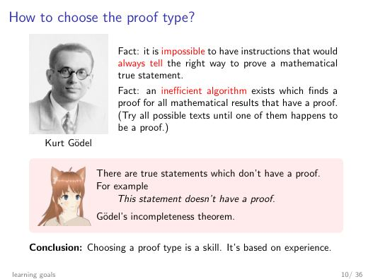
| English | 中文 | 说明 / 例句 |
|---|---|---|
| counterexample | 反例 | One x making P(x) false refutes ∀x P(x). |
| direct proof | 直接证明 | Prefer it when the assumption is simpler than the conclusion. |
| proof by contrapositive | 逆否证明 | Prefer it when ¬C is simpler than ¬A. |
| absolute value | 绝对值 | |x| = x for x ≥ 0, −x for x < 0; |x + y| ≤ |x| + |y|. |
| Iverson bracket | 艾弗森括号 | [P] = 1 if P is true, 0 otherwise. |
| power | 幂 | bⁿ is b multiplied n times; b⁰ = 1 for b ≠ 0. |
| nth root | n 次根 | r = ⁿ√x iff rⁿ = x; defined for x ≥ 0 or n odd. |
| logarithm | 对数 | x = log_b a iff bˣ = a; requires a, b > 0, b ≠ 1. |
| summation | 求和 | ∑ from a to b of f(x) is f(a) + … + f(b). |
| function | 函数 | A relation f ⊆ X × Y with existence and uniqueness. |
| domain | 定义域 | The set X of inputs. |
| codomain | 陪域 | The set Y that outputs live in; not the same as the image. |
| injection | 单射 | Different inputs give different outputs. |
| surjection | 满射 | Every y ∈ Y is f(x) for some x ∈ X. |
| bijection | 双射 | Both injective and surjective; a one-to-one correspondence. |
| composition | 复合 | (g ∘ f)(x) = g(f(x)); f acts first. |
| inverse function | 逆函数 | g = f⁻¹ iff g(f(x)) = x and f(g(y)) = y; exists iff f is a bijection. |
单射：找反例最快。t = 1 与 t = −1 不同，但 s(1) = √2 = s(−1)，故不是单射。
满射：任取 y ∈ [1, ∞[，解 √(t² + 1) = y。平方得 t² + 1 = y²，即 t² = y² − 1。因 y ≥ 1，y² − 1 ≥ 0，故可取 t = √(y² − 1) ∈ R。
验证：s(t) = √(y² − 1 + 1) = √(y²) = |y| = y（y ≥ 0）。故对任意 y 都有原像，s 是满射。
结论：满射但非单射。若把定义域限制为 [0, ∞[，则 s 变成双射（见例 4）。
f：单射，若 2n₁ = 2n₂ 则 n₁ = n₂。不满射，因为奇数（如 3）没有原像：2n = 3 无整数解。
g：不单射，g(2) = 4 = g(−2)；也不满射，负数没有原像（n² ≥ 0）。
对比：若把 f 的陪域改为偶数集 2Z，则 f 成为双射；若把 g 的定义域改为 N、陪域改为完全平方数集，则 g 成为双射。可见“改定义域/陪域”是构造双射的常用手段。
解方程 y = x/(2 − x)：两边乘 (2 − x) 得 y(2 − x) = x，即 2y − yx = x，故 2y = x(1 + y)，x = 2y/(1 + y)。
这要求 y ≠ −1。检查 y = −1 是否有解：−1 = x/(2 − x) ⇒ −2 + x = x ⇒ −2 = 0，无解。所以 f 的值域是 R ∖ {−1}，f 作为 R ∖ {2} → R ∖ {−1} 是双射。
故 f⁻¹(y) = 2y/(1 + y)，定义域 R ∖ {−1}。检验：f(f⁻¹(y)) = [2y/(1+y)]/[2 − 2y/(1+y)] = [2y/(1+y)]/[2/(1+y)] = y，成立。
教训：求逆时出现的分母条件（y ≠ −1）就是值域的缺口；若把陪域写成 R，则 f 不可逆。
两边平方（非负，等价）：(x − 1)² = 4(x − 3)²，展开得 x² − 2x + 1 = 4x² − 24x + 36。
整理：3x² − 22x + 35 = 0，判别式 484 − 420 = 64，根为 x = (22 ± 8)/6，即 x = 5 与 x = 7/3。
检验：x = 5 时 |4| = 4、2|2| = 4 成立；x = 7/3 时 |4/3| = 4/3、2|−2/3| = 4/3 成立。
说明：本例两边都非负，平方是等价变形，所以不必筛根；但若一边可能为负（如 √(…) = x − 3），平方后就必须回代。
证明（非空情形）：任取 a ∈ A；因 B 非空可取 b ∈ B；于是 (a, b) ∈ A × B ⊆ C × D，故 a ∈ C。所以 A ⊆ C。同理任取 b ∈ B，取 a ∈ A 得 (a, b) ∈ C × D，故 b ∈ D。□
反例（含空集）：A = ∅、B = {1}、C = {2}、D = {3}。此时 A × B = ∅ ⊆ C × D 成立，但 B ⊄ D。
这条对照说明：先用简单情形（尤其空集、0、边界值）试探，是选证明类型之前最省时间的一步。
- 判断 f: [0, ∞[ → [0, ∞[、f(x) = x² + 1 是否为单射、满射。
- 求 g: R → R、g(x) = 3x − 5 的逆函数，并说明 g 是双射。
- 化简 √(x²) 与 (√x)²，说明两者的定义域差异。
- 用反例说明“若 f ∘ g = h 则 g = h ∘ f⁻¹”需要 f 可逆。
- 解方程 log₂ x + log₂(x − 1) = 5。
参考答案与思路
1. 单射：x₁² + 1 = x₂² + 1 ⇒ x₁² = x₂² ⇒ x₁ = ±x₂；因 x ≥ 0 故 x₁ = x₂，是单射。满射：解 x² + 1 = y 得 x² = y − 1，要求 y ≥ 1；故 y ∈ [0, 1) 无原像，不是满射。
2. 解 y = 3x − 5 得 x = (y + 5)/3，故 g⁻¹(y) = (y + 5)/3。单射显然；满射因对任意 y 都有 x = (y + 5)/3 ∈ R。
3. √(x²) = |x|，对一切 x ∈ R 有定义；而 (√x)² = x 只在 x ≥ 0 时有定义。两者在 x ≥ 0 时相等，在 x < 0 时前者为 −x、后者无意义。
4. 取 f: R → [0,∞[、f(x) = x²（不可逆）。令 g(y) = √y、h(y) = |y|，则 g∘f = h∘f（都等于 |x|），但 g ≠ h。说明“左消去”需要 f 可逆。
5. 定义域要求 x > 0 且 x − 1 > 0，即 x > 1。合并：log₂(x(x−1)) = 5 ⇒ x(x−1) = 32 ⇒ x² − x − 32 = 0 ⇒ x = (1 ± √129)/2。只有 (1 + √129)/2 > 1 合格，另一个为负，舍去。
考点分层
方法清单
判断关系是否为函数
- 检查存在性：X 中每个元素是否都有配对
- 检查唯一性：同一个 x 是否配了两个不同的 y
- 对照定义域排查“坏点”（分母为零、根号内为负、log 参数非正）
- 检查陪域：像是否都落在 Y 内（如 m ↦ m − 2 不是 N → N）
- 两条都成立才是函数，否则给出违反的那一条的具体反例
判断单射与满射
- 单射：设 f(x₁) = f(x₂)，推出 x₁ = x₂；或找 x₁ ≠ x₂ 而 f 相等
- 满射：任取 y ∈ Y，解 f(x) = y，构造出 x ∈ X 并验证
- 双射：两个都要证；若要否定，只要否定其中一个
- 先画图（若定义在实数子集上）猜结论，再动笔证明
- 注意定义域与陪域的变化会改变结论
求逆函数
- 写出 y = f(x)
- 解出 x，得到 x = 关于 y 的表达式
- 记录解存在且唯一所需的 y 的条件（这给出新定义域）
- 把 x 与 y 互换写成 f⁻¹(y)
- 代回验证 f(f⁻¹(y)) = y 与 f⁻¹(f(x)) = x
| 源文件 | 页码 | 覆盖的知识点 |
|---|---|---|
| 05-lesson.pdf | p2–p3 | 第 3 周关键词回顾、本章目录 |
| 05-lesson.pdf | p6–p9 | 解释的价值、假证明 2 = 1 的错因、A × B ⊆ C × D 的空集反例、反例与量词否定、Ex1 |
| 05-lesson.pdf | p11–p16 | Gödel 事实、选证明类型的准则、Ex2–Ex5 |
| 05-lesson.pdf | p19–p22 | 运算顺序、多项式与 P(a) = P(b) 的单向性、绝对值定义与性质、Iverson 括号 |
| 05-lesson.pdf | p23–p27 | 幂与幂法则、根的定义与存在条件、分数指数与负底数反例、对数四条法则、求和记号 |
| 05-lesson.pdf | p29–p34 | 函数的关系定义（存在性与唯一性）、定义域与陪域、正例与非例、Ex6–Ex7 |
| 05-lesson.pdf | p36–p40 | 单射、满射、双射的定义与否定的量词形式、x³ 与 x² 的对照、解方程法、Ex8 |
| 05-lesson.pdf | p42–p45 | 复合函数的定义与顺序、与关系合成的对比、两个复合例子、逆函数定义与双射定理、Ex9–Ex10 |
| 06-exercise.pdf | Ex3、Ex4、Ex5、Ex6 | 定义域与解方程、函数与单满射判定、x/(2−x) 的性质、复合与逆 |
| （跳过） | p30、p39–p40 | 课堂投票与图示页，结论已并入正文 |
| （补充拓展） | — | Gödel 不完备性的通俗说明、左逆与右逆的区别、用 Iverson 括号写分段函数 |
第 6 讲 · 基数、可数集与对角线法
Cardinality, Countable Sets and Diagonalisation 第 2 章 证明、函数与基数
本节定位
第 5 讲把函数定义清楚了；第 6 讲把这套定义用到两件事上：一是给出单射、满射、逆函数的可操作证明策略，二是回答一个看似天真的问题——集合有多大？有限集可以数元素，无限集必须换标准，于是引入基数（cardinality）与可数/不可数。
这一讲是全课程最“反直觉”的部分：偶数与自然数一样多、旅馆客满还能再住进无限多位客人、实数多到无法列表。直觉在这里几乎全部失效，唯一可靠的是双射。对应学习目标 6.4 与 7.1–7.3。
学完本节你应当能够：
- 说出定义一个函数必须交代的三件事（定义域、陪域、对应规则）
- 用“直接法/逆否法/解方程法”证明或否定单射与满射
- 用双射 f: A → B 证明两个集合基数相同
- 构造 N 与偶数集、N 与 Z、N 与 N×N 之间的双射
- 用 Hilbert 旅馆解释可数集“加一个”“加无限多个”仍可数
- 用对角线法证明 B(N)（全体 0/1 序列）不可数
6.1 定义一个函数要说清三件事
上一讲给的是形式定义，本讲看它在实践中意味着什么。要定义一个函数，必须说清：(a) 定义域（一个集合 X）；(b) 陪域（一个集合 Y）；(c) 如何给每个 x ∈ X 指定唯一的 y ∈ Y。缺任何一条，函数就没有被定义。
中学常说“设 f 是函数 x²”，这句话其实不清楚：它取值是多少？“可逆吗”？作用在数、空间点、图片、声音流还是网络结构上？只有写上定义域与陪域才有意义。中学的默认约定通常是“定义域取 R 中能取的最大子集，陪域取 R”，但那只是约定。
课件的程序语言对照很传神：C 语言的函数签名写明了“定义域 = float × int、陪域 = float、规则 = 括号里的内容”，与数学一致；Python 是动态类型（dynamically typed），不写类型，因此不能直接当作数学函数的定义——数学不是动态类型的。
6.2 从关系判定函数：两个实例
例（国籍）：{ (p, c) ∈ persons × countries : p 具有国家 c 的国籍 }。它是不是函数？如果允许双重国籍，一个人会对应两个 c，唯一性失败；若限定“每人只有一个国籍”，则是函数。这说明“是不是函数”取决于建模假设，而不是句子本身。
例（学号）：{ (s, i) ∈ students at LUT × texts : 学生 s 的学号是 i }。每个学生恰有一个学号（存在且唯一），所以是函数；反过来，没有两个学生共用同一学号，所以它还是单射（injection）。但它不是满射——并非每个字符串都是某个学生的学号。
这两例给出的判断顺序是：先查存在性（有没有人没有对应值），再查唯一性（有没有人对应两个值），最后才谈单射/满射。
6.3 单射的证明策略
要证 f: X → Y 是单射，有两条路。直接法：假设 x₁ ≠ x₂，证明 f(x₁) ≠ f(x₂)。逆否法（更常用）：假设 f(x₁) = f(x₂)，证明 x₁ = x₂。第三条等价说法：给定 y ∈ Y，方程 f(x) = y 在 X 中至多有 0 个或 1 个解。
要证 f 不是单射：找一对 x₁, x₂ ∈ X 使 x₁ ≠ x₂ 但 f(x₁) = f(x₂)。一对反例足够。
Ex1：f: [2, ∞[ → R、f(x) = x² − 4x + 7 是否单射？配方得 f(x) = (x − 2)² + 3，在 [2, ∞[ 上严格递增，故是单射。逆否证明：若 (x₁−2)² + 3 = (x₂−2)² + 3，则 (x₁−2)² = (x₂−2)²，即 |x₁ − 2| = |x₂ − 2|；因两者都 ≥ 0，得 x₁ − 2 = x₂ − 2，故 x₁ = x₂。□
Ex2：g: R → R、g(x) = |x + 5| 是否单射？取 x₁ = −4、x₂ = −6，两者不同，但 g 都等于 1，故不是单射。（图像是 V 形，水平线撞两次。）
6.4 满射的证明策略
要证满射：设 y ∈ Y 是任意的（arbitrary，不是特殊选取的），证明存在 x ∈ X 使 f(x) = y。实际操作就是解方程 f(x) = y 并把 x 写出来。要证不是满射：找一个 y ∈ Y，使 f(x) = y 在 X 中无解。
Ex3：f: R → [3, ∞[、f(x) = x² − 4x + 7 是否满射？配方 f(x) = (x−2)² + 3 ≥ 3。任取 y ≥ 3，解 (x−2)² + 3 = y，得 (x−2)² = y − 3 ≥ 0，取 x = 2 + √(y − 3)，则 f(x) = y。故是满射。
Ex4：g: R → R、g(x) = |x + 5| 是否满射？取 y = −1，对任意 x 都有 g(x) ≥ 0 > −1，故无解，不是满射。注意这与“值域是 [0, ∞[”是一致的：陪域 R 比值域大，所以不满射。
6.5 复合与逆：两个提醒
复合例（源文件 p17）：f: N → Z, f(n) = n² − 25；g: Z → R, g(r) = πr²。则 (g ∘ f)(n) = π(n² − 25)²。务必先算 f 再平方，括号不能省。第二个例子（字符串的 LL 与 FW）说明复合不交换：FW ∘ LL 取最后字符，LL ∘ FW 取第一个单词的最后字符。
逆函数要检查两个方向：g(f(x)) = x 与 f(g(y)) = y 都对，才写 g = f⁻¹。f: R → [0,∞[、f(x)=x² 与 g: [0,∞[ → R、g(y)=√y 满足 f(g(y)) = y，但 g(f(−1)) = 1 ≠ −1，所以 g ≠ f⁻¹；事实上 f 不是双射，逆不存在。
6.6 先比较有限集：元素个数
两个有限集 A、B “一样大”当且仅当元素个数相同，记 #A = #B。#A 的取值是自然数 0, 1, 2, … 或无穷 ∞。
Ex5 练习：#{a, b, c, d} = 4；#{ x ∈ R : x² − 2x − 1 = 0 } = 2（判别式 4 + 4 = 8 > 0，两个实根）；#{ n ∈ N : (−5)ⁿ > 0 }：n 为偶数时为正，n 为奇数时为负，故个数为无穷（∞）。
6.7 无限集：用双射定义基数
两个集合 A、B 基数相同（have the same cardinality）当且仅当存在双射 f: A → B。这把元素“一一配对”，不需要数数。
两条例子：若 #A = n、#B = m 都是有限数，则 A 与 B 基数相同当且仅当 n = m（与“个数相同”一致）；N 与偶数集 {0, 2, 4, 6, …} 基数相同，双射是 f(n) = 2n（Ex6 要求证明这一点：单射显然，满射因任意偶数 2k 都有原像 k）。
还有一个方向性结论：存在满射 P(N) → N，但不存在单射 P(N) → N，故 P(N) 比 N “大”。（证明在背景材料 Lecture 4 的 Example 18；本课程只要求知道结论与“用双射比较”的方法。）
6.8 可数与不可数
若存在双射 N → A，则称 A 可数（countable）。若 A 无限但不可数，则称不可数（uncountable）。可数的直观含义是“能把元素排成一个无限列表”：若 f: N → S 是双射，则 S = {f(1), f(2), f(3), …}，因为 f 是满射保证都列到，f 是单射保证不重复。
历史注记：Cantor（1845–1918）在 1880 年代的著作是集合论的起点，他引入幂集、确立一一对应的重要性、定义无限集，并证明不可数集存在。课件也提到近年有研究指出他可能有学术伦理问题（未列入合作者姓名）。
6.9 基数不等于“密度”
很多人认为偶数集 E = {2, 4, 6, …} 的元素“只有正整数的一半”。这是错的：两者都无限多，#E = ∞ = #Z⁺，而且基数相同，双射是 h(n) = n/2。
不过它们确实有不同的密度（density）：#(E ∩ {1,…,n}) / n → 1/2，而 #(Z⁺ ∩ {1,…,n}) / n → 1。所以“一样大”有三种口径：元素个数（仅有限集）、基数（本课程采用）、密度（不讨论）。考试里凡问“是否一样多”，一律用基数回答。
6.10 Hilbert 旅馆
旅馆有房间 1, 2, 3, …，全部客满。来了一位新客人，经理想出办法：广播“请每位客人搬到下一号房，1 号搬 2 号，2 号搬 3 号……”。于是 1 号房空出来给新客人，没有人退房。对应的双射是 n ↦ n + 1，它把正整数集映到 {2, 3, 4, …}，留下 1 号房。
第二晚来了无限多位新客人（Guest 1, Guest 2, …）。经理让老客人搬到“房号的两倍”：n ↦ 2n，于是所有奇数号房空出；新客人按 n ↦ 2n − 1 入住。两个映射合起来是 N → N 的双射，说明“已满的无限旅馆”还能再容纳可数无限多客人。
课件的思考题：房费 1 欧元、维护费 500 欧元，旅馆怎么活？提示是看现金流与“无限”的关系——这是数学玩笑，不必深究；要点是理解“无限集可以与其真子集等势”。
6.11 可数集的两条封闭性质
命题：若 A、B 都是可数无限集，则 (a) A ∪ B 可数无限；(b) A × B 可数无限。直观对应旅馆的两种情形：(a) 是可数无限多客人来到已满的旅馆；(b) 是可数无限辆大巴、每辆载可数无限多客人来到空旅馆。
构造思路（(b)）：把 A、B 都按 N 编号，a₀, a₁, a₂, … 与 b₀, b₁, b₂, …，再按“对角线”枚举：先列 (a₀,b₀)，再列和为 1 的两对 (a₀,b₁)、(a₁,b₀)，再列和为 2 的三对……每一对都会在有限步内被列到，且不重复，于是得到 N → A × B 的双射。
另一条常用双射是 (m, n) ↦ 2m(2n + 1)，它把 N × N 双射到正整数（每个正整数唯一分解为 2 的幂乘以奇数）。考试里若要证明 N × N 可数，给出任一显式双射即可。
6.12 不可数：实数无法列表
R 是无限集，但它的元素极难（事实上不可能）排成一个列表：无论你给出什么列表，我都能构造出一个不在列表里的数——这就是 Cantor 的对角化论证（diagonalisation argument）。
定义：若 A 无限但不存在双射 f: N → A，则 A 不可数。常见不可数集：R 及 R²、R³、Rⁿ；P(N)；从某个无限集 X 到“至少有 2 个元素”的集合 Y 的全体函数 {f: X → Y}；还有很多。
6.13 证明不可数的两种策略
策略 1（直接）：构造一个到已知不可数集（如 R 或 P(N)）的双射。策略 2（反证）：假设它可数，导出矛盾。最有名的策略 2 就是对角化。
对角化的标准范例：全体无限二进制序列 B(N) = { s : N → {0, 1} } 不可数。证明：假设存在双射 f: N → B(N)，记 s_n = f(n)，于是所有序列可以竖排成一张表，第 n 行是 s_n 的各位。构造新序列 s_new(n) = 0（若 s_n(n) = 1）、s_new(n) = 1（若 s_n(n) = 0），即把对角线上每一位取反。
检验：s_new ≠ s₀，因为第 0 位不同；s_new ≠ s₁，因为第 1 位不同；对任意 x，s_new ≠ s_x，因为第 x 位不同。所以 s_new 不在表里。但 s_new ∈ B(N)，与“表列出全部元素”矛盾。故 B(N) 不可数。□
为什么这条证明能用在 R 上？因为实数（在 [0,1] 区间内）可以写成二进制小数，其各位构成 0/1 序列；把序列的集合换成实数的集合，对角化照搬即可。注意二进制小数有“0.1000… = 0.0111…”这类双表示问题，严格证明时要避开，本课程只要求掌握结构与思想。
6.14 拓展：基数的大小比较
记号：若存在单射 f: A → B，则说 A 的基数不超过 B 的基数，写 A ≾ B；若存在满射 f: A → B，则说 A 的基数不小于 B 的，写 A ≿ B。
Cantor–Schröder–Bernstein 定理：若 A ≾ B 且 B ≾ A，则 A ≈ B（存在双射）。课件打趣说它的证明“像洋葱：一层一层，而且会让你流泪”。它的实用价值是：要证两个集合基数相同，可以分别构造两个方向的单射，往往比直接构造双射容易。
另有几条需要选择公理（axiom of choice）的结论：(a) 若 A ≿ B 且 B ≿ A 则 A ≈ B；(b) 若 A ≿ B 且 A ≾ B 则 A ≈ B；(c) 分割原理（partition principle）：若 A ≿ B 则 B ≾ A。这些属拓展，考试不要求证明。
把整讲的逻辑再串一遍：比较大小先问“是有限集吗”。有限集直接数元素；无限集改用双射，因为数数会永远数不完。一旦用双射，就会发现 N、偶数集、Z、N×N、全体素数、全体有理数 Q 全都“一样大”，而 R、P(N)、B(N) 都比它们严格更大。判卷时最常见的错误是把“看起来稀疏”当作“更小”——稀疏是密度，大小是基数。
定义一个函数要说清三件事：定义域 X、陪域 Y，以及如何给每个 x ∈ X 指定唯一的 y ∈ Y，缺一不可。中学说函数 x² 并不完整，只有写上定义域与陪域才谈得上可逆；C 的函数签名写明了 float×int 到 float，与数学一致，Python 动态类型不写类型，不能直接当数学函数定义。判断关系是否函数，先查存在性再查唯一性，最后才谈单射满射：允许双重国籍就不是函数，每人恰一学号则是函数且单射，但并非每个字符串都是学号，故不满射。
原版图页（源 PDF 插图页）


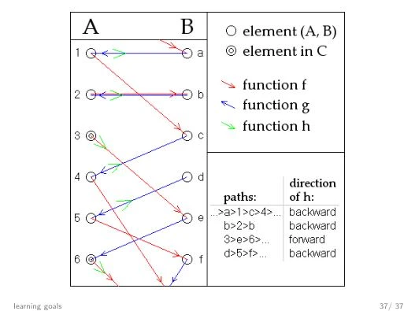

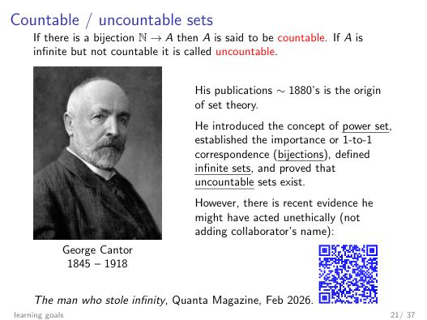

| English | 中文 | 说明 / 例句 |
|---|---|---|
| cardinality | 基数 | A and B have the same cardinality iff a bijection A → B exists. |
| countable | 可数 | There is a bijection N → A; the elements can be listed. |
| uncountable | 不可数 | Infinite but no bijection from N exists. |
| Hilbert’s hotel | 希尔伯特旅馆 | A full infinite hotel can still take new guests. |
| diagonalisation | 对角化 | Flip the diagonal to build an element missing from any list. |
| infinite binary sequence | 无限二进制序列 | A map s: N → {0, 1}; the set B(N) is uncountable. |
| density | 密度 | The limit of #(A ∩ {1,…,n})/n; different from cardinality. |
| one-to-one correspondence | 一一对应 | A bijection; pairs elements without counting. |
| proper subset | 真子集 | An infinite set can be equinumerous with a proper subset. |
| Cantor–Schröder–Bernstein | 康托-伯恩斯坦定理 | Injections both ways imply a bijection. |
| axiom of choice | 选择公理 | Needed for some comparisons of cardinalities. |
| enumeration | 枚举 | Listing elements as a₀, a₁, a₂, … to build a bijection from N. |
先配方：f(x) = (x − 2)² + 3，故最小值 3 在 x = 2 取到，图像是开口向上的抛物线。
作为 [2, ∞[ → R：在 [2, ∞[ 上严格递增。设 f(x₁) = f(x₂)，则 (x₁−2)² = (x₂−2)²，即 |x₁−2| = |x₂−2|；因 x₁−2, x₂−2 ≥ 0，得 x₁ = x₂。故是单射。
作为 R → [3, ∞[：任取 y ≥ 3，解 (x−2)² = y − 3，取 x = 2 + √(y−3)，则 f(x) = y，故是满射。
作为 R → R：既不单射（f(1) = f(3) = 4）也不满射（y = 0 无解）。三个结论不同，唯一差别是定义域与陪域。
构造 f: N → E、f(n) = 2n。先确认它确实映到 E（值都是偶数，合法）。
单射：若 2n₁ = 2n₂，两边除以 2 得 n₁ = n₂。满射：任取 m ∈ E，则 m = 2k 对某个 k ∈ N，取 n = k 得 f(n) = m。
故 f 是双射，N 与 E 基数相同。□ 这与“偶数只占一半”的直觉冲突，冲突来自把“密度”当成了“基数”。
反证。假设存在双射 f: N → B(N)，记 s_n = f(n)。把所有序列竖排成表：第 n 行是 s_n(0), s_n(1), s_n(2), …。
定义新序列 s_new(n) = 0（若 s_n(n) = 1）、s_new(n) = 1（若 s_n(n) = 0），即对角位取反。
对任意 x ∈ N，比较 s_new 与 s_x：它们在位置 x 上不同（一个是 0、一个是 1），故 s_new ≠ s_x。
于是 s_new 不在表中，但 s_new ∈ B(N)，与“表包含全部元素”矛盾。故不存在这样的双射，B(N) 不可数。□
显式公式：g(m, n) = 2m(2n + 1)。由算术基本定理，每个正整数唯一写成“2 的幂 × 奇数”，故 g 是双射（单射：分解唯一；满射：任给 k，把它写成 2m 乘奇数 2n+1）。
对角线枚举的直观：把 N × N 画成方格，(0,0)；(0,1)、(1,0)；(0,2)、(1,1)、(2,0)；…… 按 m + n 递增逐条对角线枚举，每条对角线上元素有限，故每个 (m, n) 都会在有限步内被访问且只访问一次，于是得到 N → N × N 的双射。
两种构造都说明 N × N 可数，这是 6.11 节 (b) 的具体实现。
设 A = {a₀, a₁, a₂, …} 可数，新元素为 b。定义 h: A ∪ {b} → A：h(b) = a₀，h(aₙ) = an+1。
单射：b 映到 a₀，而 aₙ 映到 an+1，后者的下标 ≥ 1，与 a₀ 不冲突；不同 aₙ 的下标不同，像也不同。满射：a₀ 有原像 b，ak（k ≥ 1）有原像 ak−1。
故 A ∪ {b} 与 A 基数相同，即可数。这就是“全体客人搬到下一号房”的数学版本。若新来可数无限多位，则用 h(bₙ) = a2n−1、h(aₙ) = a2n（下标从 1 起），同样得到双射。
- 判断 f: R → R、f(x) = 2x + 1 的单射与满射性，并求逆。
- 证明 N 与 Z 基数相同（构造双射）。
- 判断 g: [0, ∞[ → [0, ∞[、g(x) = x² 是否为双射，并求逆。
- 说明为什么“存在满射 P(N) → N”意味着 P(N) 不比 N 小。
- 用对角线法证明区间 (0, 1) 内的实数不可数（写出构造思路即可）。
参考答案与思路
1. 单射：2x₁ + 1 = 2x₂ + 1 ⇒ x₁ = x₂。满射：任取 y，取 x = (y − 1)/2 ∈ R。故双射，f⁻¹(y) = (y − 1)/2。
2. 双射：f(0) = 0，f(1) = 1，f(2) = −1，f(3) = 2，f(4) = −2…… 即 n 偶时 f(n) = n/2，n 奇时 f(n) = −(n+1)/2。单射与满射都可逐条验证。
3. 单射：x₁² = x₂² 且两者 ≥ 0 ⇒ x₁ = x₂。满射：任取 y ≥ 0，取 x = √y。故双射，g⁻¹(y) = √y。
4. 若有满射 P(N) → N，则 P(N) 的基数不小于 N；而由 Cantor 定理不存在单射 P(N) → N，故 P(N) 严格更大。这与“R 不可数”是同一层次的结论。
5. 假设 (0,1) 可数，列出 x₁, x₂, …，每个写成二进制小数 0.b₁b₂…。取新数 y，其第 n 位取反（并避开双表示问题，例如规定只用不终止的展开）。则 y ≠ xₙ 对一切 n 成立，但 y ∈ (0,1)，矛盾。
考点分层
方法清单
证明两个集合基数相同
- 先猜一个自然的配对规则（n ↦ 2n、n ↦ n/2、m,n ↦ 2m(2n+1) 等）
- 验证它映到目标集合（值域正确）
- 证单射：由 f(a) = f(b) 推出 a = b
- 证满射：任取目标元素，构造原像并代回验证
- 写结论：存在双射，故基数相同
证明一个集合不可数
- 先假设存在双射 f: N → A，把元素排成表
- 对“表”做对角构造，造出一个不可能在表里的元素
- 验证该元素确实属于 A（这一步最容易被忽略）
- 指出与“表包含全部元素”矛盾
- 若 A 是实数，先把实数写成小数/二进制展开，再套同一构造
判断单射与满射（公式型函数）
- 写出定义域与陪域，配方或求导判断单调性与值域
- 单射：设 f(x₁) = f(x₂) 推 x₁ = x₂，或给出一对撞车的反例
- 满射：任取 y，解 f(x) = y，检查解是否落在定义域内
- 两者都成立才是双射；此时才谈逆函数
| 源文件 | 页码 | 覆盖的知识点 |
|---|---|---|
| 06-lesson.pdf | p5–p11 | 函数的实践含义、国籍与学号两例、C 与 Python 的对照、定义函数的三要素 |
| 06-lesson.pdf | p12–p16 | 单射/满射/双射回顾、单射与满射的证明策略、Ex1–Ex4、复合例 |
| 06-lesson.pdf | p18–p19 | 逆函数的双向检验、√(x²) = |x| 的反例 |
| 06-lesson.pdf | p22–p27 | 元素个数 #A、Ex5、用双射定义基数、可数/不可数、Cantor、密度与基数的区别 |
| 06-lesson.pdf | p29–p34 | Hilbert 旅馆的两次扩容、可数集对并与积的封闭性 |
| 06-lesson.pdf | p36–p43 | 实数不可列表、不可数的定义与常见例子、两种证明策略、B(N) 的对角化证明、Cantor–Schröder–Bernstein 与选择公理 |
| 07-exercise.pdf | Ex1、Ex2 | 字符串拼接函数的单射/满射、置换与双射练习 |
| （跳过） | p6–p7、p13–p14、p29–p33 | 课堂活动与故事页，结论已并入正文 |
| （补充拓展） | — | N×N 的显式双射 2m(2n+1)、对角线枚举的图示解释、(0,1) 不可数的二进制版本 |
第 3 章 计数与归纳 2 讲 章节页 →
第 7 讲 · 组合计数：四公式、Pascal 三角与二项式定理
Combinatorics: Four Counting Formulas, Pascal’s Triangle and the Binomial Theorem 第 3 章 计数与归纳
本节定位
第 7 讲只有一件事：数清楚“从 n 个选项里选 k 次”有多少种做法。听起来简单，但四种情形（能否重复 × 顺序是否重要）给出四个完全不同的公式，而考试题往往把它们混在同一道题里考。
这一讲的另一条线是二项式系数：C(n, k) 既出现在计数公式里，也出现在 Pascal 三角与二项式展开中。第 8 讲会用归纳法证明 Pascal 递推，第 12 讲会把二项式系数用在矩阵幂上。
学完本节你应当能够：
- 对任一计数问题先问三件事：能重复吗、顺序重要吗、有没有额外限制
- 熟练写出四个公式并说出各自的适用条件
- 把“函数个数”“单射个数”“双射个数”翻译成计数公式
- 用“点与竖线”编码解释可重复无顺序公式 C(k+n−1, k)
- 写出 Pascal 三角的前几行，并会用递推公式
- 用二项式定理展开 (a + b)ⁿ 并说明系数的组合意义
7.1 组合数学在数什么
组合数学（combinatorics）研究“一件事能以多少种方式发生”。历史上的两个例子：印度《Bhagabadi Sutra》（约公元前 300 年）问“从甜、辣、涩、酸、咸、苦六种味道中选一、二或三种，有多少种组合”；中国《易经》（约公元前 1000–200 年）的六十四卦，是六条线、每条线有阴（断）阳（连）两态的“可重复排列”，共 2⁶ = 64 种。
课程把它们统一成一句话：做 k 次选择，开始时有 n 个选项。例如“从 6 个味道里选 3 个”：k = 3、n = 6，不能重复、顺序无关（甜酸咸与酸甜咸是同一盘菜）；“写 6 条线，每条两态”：k = 6、n = 2，可重复、顺序有关（卦象不同）。
动手之前必须回答三个问题：(a) 能重复吗？(b) 顺序重要吗？(c) 还有别的限制吗？前两条决定用哪个公式，第三条决定这道题是否“超出四公式范围”。课件给的例子 “4 位老师教 7 个班，每人至少教一个班” 就属于第三条：因为“至少一个”是额外限制，不能直接套公式。
7.2 四个公式的总表
| 顺序重要 order matters | 顺序无关 order doesn’t matter | |
|---|---|---|
| 允许重复 with repetition | nk | C(k + n − 1, k) |
| 不允许重复 no repetition | n! / (n − k)! | C(n, k) = n! / (k!(n − k)!) |
记忆方法：先看重复（重复 → 幂或“点线编码”；不重复 → 阶乘或二项式系数），再看顺序（顺序 → 除 (n−k)! 或直接相乘；无关 → 再除 k!）。四格里对角线上的两个公式最容易混：nk 与 C(k+n−1,k) 都是“可重复”，区别只在顺序。
7.3 可重复且顺序重要：nk
做 k 次选择、每次 n 个选项、可重复、顺序重要（两次选择结果只要某一位不同就算不同）。第 1 次有 n 个选项，第 2 次仍有 n 个（前面的选择不限制后面的），……第 k 次仍是 n 个，故总数 nk = n × n × … × n（k 个因子）。
典型例子：三位数密码锁，每位 0–9，允许 999、456 与 654 不同，故共 10³ = 1000 种（也可理解为从 000 = 0 到 999 共 1000 个数）。Ex1：一周 6 道题，每题“做了/没做”，填分表的方式有 2⁶ = 64 种。Ex2：A 有 12 个元素，则 A³ = A × A × A 有 12³ = 1728 个元素。Ex3：B 有 3 个元素，则有序对有 3² = 9 个（无序的二元子集只有 C(3,2) = 3 个）。
与函数的关系：若 #A = k、#B = n，则从 A 到 B 的函数共 nk 个。理由是对 A 的每个元素独立地选一个像，k 个元素各 n 种选择。这条把“计数”与“函数”直接连起来：Ex6 问 #A = 3、#B = 4 时有多少函数，答 4³ = 64。
7.4 不重复且顺序重要：n!/(n−k)!
第 1 次 n 个选项，第 2 次 n − 1 个（不能选已选的），…，第 k 次 n − k + 1 个，故总数 n(n−1)…(n−k+1) = n!/(n−k)!。记号 a! = a(a−1)(a−2)…3·2·1，并约定 0! = 1。
经典例子（源文件 p19）：芬兰冰球联赛 15 支队伍，发金、银、铜牌，不允许并列。金牌 15 种、银牌 14 种、铜牌 13 种，故 15 × 14 × 13 = 2730 种。课件把 2730 个三元组逐一列出，说明“顺序不同算不同结果”（HPK, IFK, ILV 与 HPK, ILV, IFK 是两种）。
Ex4：三个任务 E（查邮件）、H（做作业）、C（上课），安排顺序有 3! = 6 种。Ex5：#A = 3、#B = 4 时单射有 4 × 3 × 2 = 24 个；#A = 4、#B = 3 时没有单射（抽屉原理：4 个元素映到 3 个值必撞车），公式给 3!/(3−4)! 无意义，说明必须 k ≤ n。
趣味等式：六周有多少秒？10! = 60 × 60 × 24 × 7 × 6 = 3628800。因为 60 秒 × 60 分 × 24 小时 × 7 天 × 6 周，恰好是 10! 的分解。
7.5 单射与双射的个数
当 #A = k、#B = n 且 k ≤ n 时，单射 f: A → B 的个数是 n!/(n−k)!（k 个因子相乘）。特别地，当 #A = #B = n 时，双射个数是 n!——这正是“n 个元素的排列数”。
满射的个数不在本课程范围内，因为它很难（与 Stirling 数有关）。考试若出现“满射计数”，通常只是要求判断“这属于哪一类”，或说明“不能直接套公式”。
7.6 不重复且顺序无关：C(n, k)
先按“有顺序”选：n!/(n−k)! 种；每个最终的无序选择对应 k! 种不同的排列（k 个元素的全排列），故要除以 k!：C(n, k) = n!/((n−k)!·k!)，读作“n choose k”，称为二项式系数（binomial coefficient）。
例（源文件 p27–p28）：从六种味道里选两种做菜，不能重复（甜甜不算），顺序无关（甜酸 = 酸甜）。按有序算是 6 × 5 = 30 种，每种无序组合被数了 2! = 2 次，故 30/2 = 15 种。课件把 30 个有序对全部列出再两两配对，直观展示“除以 k!”的过程。
性质：C(n, k) = C(n, n−k)（选 k 个等价于留下 n−k 个）；C(n, 0) = C(n, n) = 1；C(n, 1) = n。若 #A = n，则 A 的 k 元子集个数为 C(n, k)——这正是第 2 讲幂集 2ⁿ 的加总来源：Σ_k C(n, k) = 2ⁿ。
Ex7：六种味道选三种，C(6,3) = 20。Ex8：5 元素集合的 2 元子集有 C(5,2) = 10 个。
7.7 可重复且顺序无关：多重集
多重集（multiset）是“顺序无关但允许重复”的集合：作为多重集 {2, 2} ≠ {2}、{2, 3, 2} = {2, 2, 3} ≠ {2, 3}。若 #A = n，则 A 的 k 元多重集个数是 C(k + n − 1, k)。
推导（点线编码）：一个选择可以这样记录——先约定颜色顺序，然后写一串“点”和“竖线”：每个点代表一个当前颜色的物品，每条竖线代表“换到下一种颜色”。选 k 个物品、有 n 种颜色，就需要 k 个点与 n − 1 条竖线，共 k + n − 1 个符号。任意选定其中哪 k 个位置放点（其余放竖线），就唯一确定一种选择；不同的选择对应不同的符号串。故总数为 C(k + n − 1, k)。
例（源文件 p33–p37）：用 5 种颜色装 6 个马卡龙，C(6 + 5 − 1, 6) = C(10, 6) = 210。编码 ...||.|.|.（颜色顺序绿、黄、紫、红、蓝）表示 3 绿、0 黄、1 紫、1 红、1 蓝。Ex10：黑五购物车恰好 4 件、店里有 100 种商品，C(4 + 100 − 1, 4) = C(103, 4) = 4421275 种。Ex11：5 元素集合的 3 元多重集，C(3 + 5 − 1, 3) = C(7, 3) = 35。
7.8 四种情形的辨认练习
课件给了一组辨析题：哪些问题的答案是 C(10, 5)？(A) 用 0–9 组成 5 位 PIN 码——可重复、顺序重要，应是 10⁵；(B) 10 名学生分成两队各 5 人打篮球——不重复、顺序无关，但“两队”无标签，故是 C(10,5)/2；(C) 从 10 名与会者中选 5 人组成委员会——正是 C(10,5)；(D) 长度 10、含 5 个 1 的比特串——相当于从 10 个位置里选 5 个放 1，也是 C(10,5)。
2024 年第一次考试第 3 题把这一辨析做成了大题：(1) 12 件不同物品，5 天每天取一件并记录哪天取到哪件——可重复？不，取出的不放回，故“不重复、顺序重要”，12!/7!；(2) 5 个青苹果、4 个红苹果、6 个黄苹果（同色不可区分），买 4 个——不重复？同色可重复取，顺序无关，故“可重复、顺序无关”，但其实只有 3 种颜色，C(4 + 3 − 1, 4) = 15；(3) 10 个 LED 灯串，亮 5 灭 5 的图案——不重复、顺序无关，C(10,5) = 252；(4) 100 元买 A（30 元）、B（10 元）、C（5 元）若干——有预算约束，属 (E) 其他，不能直接套公式。
7.9 Pascal 三角与递推
Pascal 三角的每一行是二项式系数：第 0 行 1；第 1 行 1 1；第 2 行 1 2 1；第 3 行 1 3 3 1；第 4 行 1 4 6 4 1；第 5 行 1 5 10 10 5 1；第 6 行 1 6 15 20 15 6 1；第 7 行 1 7 21 35 35 21 7 1。规律是：每个数等于它上方两个数之和。
用公式写就是 C(n, k−1) + C(n, k) = C(n+1, k)。证明思路（第 8 讲用归纳法完成）：假设第 n 行恰好是 C(n,0), C(n,1), …, C(n,n)，则由递推与首尾的 1，第 n+1 行就是 C(n+1,0), …, C(n+1,n+1)。
组合解释（更直观）：从 n+1 个元素里选 k 个，盯住某个特定元素 e。若不选 e，则要从其余 n 个里选 k 个，有 C(n,k) 种；若选 e，则还要从其余 n 个里选 k−1 个，有 C(n,k−1) 种。两类互斥且穷尽，故相加。
7.10 二项式定理
二项式（binomial）是形如 (a + b)ⁿ（n ∈ N）的多项式，a、b 可以是变量或数。例：(1 + x)² = 1 + 2x + x²；(y + z)³ = y³ + 3y²z + 3zy² + z³；(3 + a)⁵ = 3⁵ + 5·3⁴a + 10·3³a² + 10·3²a³ + 5·3a⁴ + a⁵。
定理：对一切 n ∈ N，(a + b)ⁿ = Σk=0n C(n, k) an−k bk = C(n,0)aⁿ + C(n,1)an−1b + … + C(n,n−1)abn−1 + C(n,n)bⁿ。
证明（组合证明）：把 (a + b)ⁿ 看成 n 个因子 (a + b) 相乘。展开时每个因子贡献一个 a 或一个 b；要得到项 an−kbk，必须恰有 k 个因子贡献 b。选哪 k 个因子贡献 b 的方式有 C(n, k) 种，故该项系数为 C(n, k)。这就是“二项式系数”这个名字的来源。
特例：取 a = b = 1 得 Σ C(n,k) = 2ⁿ（子集总数）；取 a = 1、b = −1 得 Σ (−1)k C(n,k) = 0（偶数子集与奇数子集一样多）。
7.11 四个常见陷阱的对照
陷阱一：把“不计顺序”算成“计顺序”。检验办法是问自己“交换两个被选项，算不算新结果”。陷阱二：把“不放回”当成“放回”。检验办法是问“同一个东西能被选两次吗”。陷阱三：忘了“无标签分组”要除以组数的阶乘（10 人分两队各 5 人，C(10,5)/2 = 126，因为 (ABCDE|FGHIJ) 与 (FGHIJ|ABCDE) 是同一分法）。陷阱四：圆排列忘记固定一个人（n 人围坐为 (n−1)!，不是 n!）。这四条覆盖了本课程计数题 90% 的失分点。
还有一个“反向陷阱”：把本该乘起来的分步过程写成相加。判断依据是独立选择（每一步的选项数与前面无关）用乘法原理，互斥情形（要么这样、要么那样）用加法原理。例如“密码前两位是字母、后两位是数字”是 26² × 10²（乘）；“首字母是 A 或 B”是 2 × …（乘）而不是 26 + …（加）。写答案前先问一句：这些情况会同时发生吗？
计数前先回答三问：能重复吗、顺序重要吗、还有别的限制吗，前两问决定四公式中的哪一格，第三问决定是否超纲。四格里最容易混的是两个可重复公式：顺序重要时每次都有 n 个选项，做 k 次得 nᵏ；顺序无关时用点线编码得 C(k+n−1,k)。不重复时顺序重要是 n!/(n−k)!，顺序无关再除以 k! 得 C(n,k)。函数计数直接接上：#A=k、#B=n 时从 A 到 B 的函数共 nᵏ 个，因为 A 的每个元素独立选一个像。至少一个这类额外限制不能直接套公式。
原版图页（源 PDF 插图页）
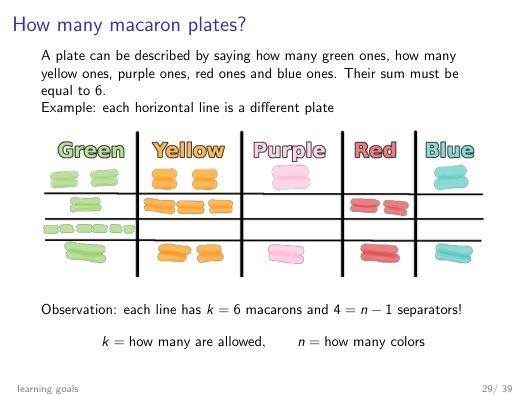


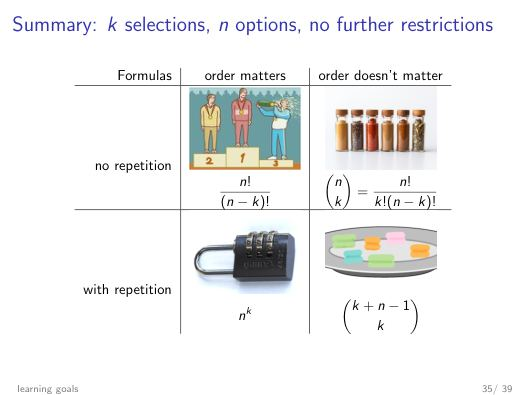

| English | 中文 | 说明 / 例句 |
|---|---|---|
| combinatorics | 组合数学 | Counting in how many ways something can happen. |
| repetition | 允许重复 | The same option may be chosen several times. |
| order matters | 顺序重要 | Two selections in different orders count as different. |
| factorial | 阶乘 | a! = a(a−1)…2·1, with 0! = 1. |
| permutation | 排列 | An ordered selection without repetition: n!/(n−k)!. |
| combination | 组合 | An unordered selection without repetition: C(n, k). |
| binomial coefficient | 二项式系数 | C(n, k) = n!/(k!(n−k)!), read “n choose k”. |
| multiset | 多重集 | Order does not matter but repetition is allowed: {2,2} ≠ {2}. |
| dots and bars | 点线编码 | k dots and n−1 bars encode a multiset. |
| Pascal’s triangle | 帕斯卡三角 | Each entry is the sum of the two above it. |
| Pascal’s rule | 帕斯卡递推 | C(n,k−1) + C(n,k) = C(n+1,k). |
| binomial theorem | 二项式定理 | (a+b)ⁿ = Σ C(n,k) an−k bk. |
| surjection count | 满射计数 | Hard; involves Stirling numbers, not required here. |
| injection count | 单射计数 | n!/(n−k)! for k ≤ n. |
三问：能重复吗？不能（一支队伍只能拿一块牌）；顺序重要吗？重要（金 ≠ 银）；有额外限制吗？没有。故属“不重复、顺序重要”，用 n!/(n−k)!。
分步：金牌 15 种；银牌在剩下 14 支里选，14 种；铜牌 13 种。故 15 × 14 × 13 = 2730。
也可写成 15!/(15−3)! = 15!/12! = 2730。检验：若把“只选三支获奖队伍、不计名次”，则是 C(15,3) = 455，2730/455 = 6 = 3!，正是“每组的 3! 种名次”。
三问：能重复吗？能（可以全是绿的）；顺序重要吗？不重要（只看每种颜色几个）；额外限制？没有。故属“可重复、顺序无关”，用 C(k+n−1, k)。
编码：约定颜色顺序，用 6 个点表示 6 个马卡龙、4 条竖线分隔 5 种颜色，共 10 个符号。任选 6 个位置放点即可。
计算：C(6 + 5 − 1, 6) = C(10, 6) = 10!/(6!·4!) = (10·9·8·7)/(4·3·2·1) = 210。
验证另一个方向：若用“隔板法”，把 6 个相同的球分到 5 个不同的盒子，允许空盒，正是 C(6+5−1, 5−1) = 210，两种说法一致。
按有序算：6 × 5 × 4 = 120 种有序三元组。
每种无序组合被数了 3! = 6 次（例如 甜酸咸、甜咸酸、酸甜咸……），故 120/6 = 20。
用公式：C(6, 3) = 6!/(3!·3!) = 720/36 = 20。
对照：若顺序重要（比如“第一口吃什么”），答案就是 120；若允许重复（甜甜辣也算），则是 C(3+6−1,3) = C(8,3) = 56。三个答案必须分清。
可重复（可以全买香蕉味）、顺序无关（只看数量），无额外限制，故用 C(k + n − 1, k)，其中 k = 12、n = 6。
计算：C(12 + 6 − 1, 12) = C(17, 12) = C(17, 5)。
C(17,5) = 17·16·15·14·13 / (5·4·3·2·1) = 742560/120 = 6188。
易错：若误用 C(6,12)（无意义）或 6¹²（当成有序），都会得到完全错误的数。判断“顺序无关”是关键。
(1) 12 件不同物品，5 天每天取一件并记录——不放回、有顺序：12·11·10·9·8 = 95040 = 12!/7!。
(2) 三种颜色苹果共 15 个（同色不可区分），买 4 个——可重复（同色可多取）、顺序无关：C(4+3−1, 4) = C(6,4) = 15。
(3) 10 个灯亮 5 灭 5——不重复、顺序无关（位置固定，只选哪些亮）：C(10,5) = 252。
(4) 100 元买 A、B、C 若干——有预算等式约束（30a + 10b + 5c ≤ 100），属 (E) 其他，题目明确说不需要算出具体数。
归纳：四公式只覆盖“无额外限制”的情形；带“至少/恰好/预算/无标签”字样的题一律要先分类再处理。
- 某网站密码要求 8 位，每位可取 26 个字母或 10 个数字，区分大小写，有多少种密码？
- 从 10 人中选 3 人组成小组（不分职务），有多少种？若分别担任组长、记录员、计时员呢？
- 用 4 种颜色给 7 个相同的球上色，只计每种颜色的球数，有多少种？
- 8 人围成一圈就座，有多少种坐法？（提示：圆排列先固定一个人）
- 展开 (2x − 1)⁴，并写出各项系数之和。
参考答案与思路
1. 每位 36 种，可重复、顺序重要：36⁸ = 2 821 109 907 456（约 2.82 × 10¹²）。
2. 不分职务：C(10,3) = 120；分职务：10·9·8 = 720 = 10!/7!。比值 720/120 = 6 = 3!。
3. 可重复、顺序无关：C(7+4−1, 7) = C(10,7) = C(10,3) = 120。
4. 圆排列：先固定一人消除旋转对称，其余 7 人排列，故 7! = 5040。（若还考虑翻转对称，则再除以 2。）
5. (2x−1)⁴ = 16x⁴ − 32x³ + 24x² − 8x + 1；系数和令 x = 1 得 (2−1)⁴ = 1，也可由 16−32+24−8+1 = 1 验证。
考点分层
Σ C(n,k) = 2ⁿ 与 C(n,k) = C(n,n−k)。② 会用点线编码解释隔板法。③ 知道满射计数涉及 Stirling 数，不属本课程。④ 会把“含恰好 k 个 1 的比特串”翻译成 C(n,k)。方法清单
计数问题的三问
- 问一：同一样东西能被选多次吗（可重复）
- 问二：交换选择顺序会得到不同结果吗（顺序）
- 问三：有没有“至少/恰好/不相邻/无标签”的额外限制
- 前两问定位四格表中的一格；第三问若为“有”，先归类为 E 再单独处理
- 最后代入公式并做数量级检查（结果不应超过 nk）
常用等价翻译
- 从 n 个里选 k 个（不计顺序、不放回）= C(n,k)，也是 n 元集的 k 元子集数
- n 个元素的排列 = n!，也是 n 元集上的双射数
- k 个元素的单射 A → B（#B = n）= n!/(n−k)!
- 把 k 个相同球放进 n 个不同盒子（可空）= C(k+n−1, k)
- 长度 n、含 k 个 1 的 0/1 串 = C(n,k)
展开二项式
- 写出 (a + b)ⁿ = Σ C(n,k) an−k bk
- 从 Pascal 三角第 n 行取系数（n 小的时候最快）
- 逐项写出，注意符号：b 为负时奇次项变号
- 用 x = 1 检验系数和是否等于 (a + b)ⁿ 在 x = 1 的值
| 源文件 | 页码 | 覆盖的知识点 |
|---|---|---|
| 07-lesson.pdf | p3–p5 | 四公式总表、Pascal 三角速览、第 7 周学习目标 8.1–8.2 |
| 07-lesson.pdf | p8–p12 | 组合数学的历史例子（Bhagabadi Sutra、易经）、三问框架、密码锁例子 |
| 07-lesson.pdf | p13–p17 | 可重复且顺序重要 nk、Ex1–Ex3、笛卡尔积元素个数、函数个数 nk |
| 07-lesson.pdf | p19–p25 | 不重复且顺序重要 n!/(n−k)!、冰球奖牌 2730、Ex4–Ex6、单射与双射个数、满射为何难 |
| 07-lesson.pdf | p27–p31 | 不重复且顺序无关 C(n,k)、味道例子、Ex7–Ex9、子集个数公式 |
| 07-lesson.pdf | p33–p39 | 马卡龙问题的点线编码、可重复且顺序无关 C(k+n−1,k)、Ex10–Ex11、多重集定义 |
| 07-lesson.pdf | p41–p43 | 四格表总结、C(10,5) 辨析题 |
| 07-lesson.pdf | p44–p46 | Pascal 三角与递推、二项式定义与二项式定理的组合证明 |
| 08-exercise.pdf | 全篇 | 计数与排列组合的配套练习（含两行记号与置换） |
| （跳过） | p6–p7、p26、p32、p43 | 目录页与讨论页，内容已并入正文 |
| （补充拓展） | — | 隔板法与点线编码的对照、圆排列、C(10,5)/2 的无标签分组说明、2024 年四情境题的完整归类 |
第 8 讲 · 堆叠蕴含与数学归纳法
Stacked Implications and Mathematical Induction 第 3 章 计数与归纳
本节定位
第 8 讲讲两种“强力证法”：堆叠蕴含（stacked implications）把多层假设的证明写成嵌套框架；数学归纳法（mathematical induction）用“第一步 + 传递”覆盖无限多个情形。归纳法是本课程最重要的工具，因为几乎所有和式公式、整除性质、算法正确性都用它证明。
本讲对应第 8 周学习目标 9.1–9.3：证明带堆叠蕴含的命题、正确使用归纳法、把归纳推广到“广义归纳”（well-ordered graph、双基例、步长 2）。考试中归纳法几乎是固定大题（8 分），Pascal 法则与各类和式公式都出自这里。
学完本节你应当能够：
- 把“若 A 则（若 B 则 C）”这类堆叠命题写成嵌套的证明框架
- 说清归纳法为什么有效（多米诺 + modus ponens）
- 写出归纳证明的两个必备部分：基例与归纳步
- 处理需要多个基例或步长为 2 的变形归纳
- 识别“缺基例”“基例错”“传递不成立”三类典型错误
- 用 Fermat 无穷递降与广义归纳处理更复杂的命题
8.1 堆叠蕴含量：证明的框架结构
先看一个具体命题：设 X 是集合、A, B ⊆ X，则“若 B ⊆ A，则 X ⊆ A ∪ B∁”。它的主框架是“if … then …”：假设 B ⊆ A，要证 X ⊆ A ∪ B∁。而后者本身又是一个“对任意 x ∈ X，若 x ∈ X 则 x ∈ A ∪ B∁”的命题，于是出现第二层框架：Let x ∈ X，然后证明 x ∈ A ∪ B∁。
课件的写法是把两层括号画出来：外层“Assume B ⊆ A … Hence X ⊆ A ∪ B∁”，内层“Let x ∈ X … Then x ∈ A ∪ B∁”。这就是堆叠蕴含（stacked implications）：每遇到一个“若…则…”，就缩进一层，假设它、证完它、再收回来。
以 Ex1 为例补完证明：设 x ∈ X。若 x ∈ A，则 x ∈ A ∪ B∁（并集定义）。若 x ∉ A，由 B ⊆ A 的逆否得 x ∉ B，即 x ∈ B∁，故 x ∈ A ∪ B∁。两种情形穷尽，故 x ∈ A ∪ B∁。因 x 任意，X ⊆ A ∪ B∁。□ 注意“分情形”正是把“或”拆开处理的标准手法。
8.2 多米诺效应：归纳法的直观
为什么所有骨牌都会倒？只需两个条件：第一块被推倒；并且任意一块倒下时会推倒下一块。这两条一给，第 1 块倒 → 第 2 块倒 → 第 3 块倒 → …… 无限延伸。
数学归纳法就是把这件事形式化。要证“P(n) 对一切 n ∈ N 成立”，只需证：(a) 基例（base case）：P(0) 为真；(b) 归纳步（induction step）：对一切 k ∈ N，P(k) ⇒ P(k+1) 为真。证 (b) 时的做法是“归纳假设（inductive hypothesis）：假设 P(k) 成立”，然后推出 P(k+1)。
关键在于 (b) 是一个关于 k 的全称命题，不是“假设所有 P(k) 都成立”。很多人误以为归纳法是循环论证，其实不是：我们一次只假设一个 k，把它推进一步。
8.3 第一个完整例子：前 n 个自然数之和
命题：对任意 n ∈ N，0 + 1 + 2 + … + n = n(n+1)/2。记号 LHS 表示等式左边（left-hand side），RHS 表示右边（right-hand side）。
基例 n = 0：LHS = 0，RHS = 0·(0+1)/2 = 0，两者相等，成立。
归纳步：设对某个 k ∈ N 有 0 + 1 + … + k = k(k+1)/2（记为 (1)）。要证 n = k+1 的情形：0 + 1 + … + (k+1) = (0 + 1 + … + k) + (k+1)，由 (1) 等于 k(k+1)/2 + (k+1)。通分：[k(k+1) + 2(k+1)]/2 = (k+1)(k+2)/2 = (k+1)((k+1)+1)/2，正是 n = k+1 的右端。故 P(k) ⇒ P(k+1)。
由基例与归纳步，命题对所有 n ∈ N 成立。□ 这段结构是所有归纳证明的模板：写基例 → 写“设 P(k) 成立” → 把 P(k+1) 的左边拆成“P(k) 的左边 + 新增项” → 代入假设 → 代数化简成 P(k+1) 的右边 → 声明完成。
8.4 历史：从隐含到严格
Al-Karaji（约公元 1000 年）最早用归纳法证明 Nicomachus 定理：Σj=1n j³ = (Σj=1n j)²，即 1³ + 2³ + … + n³ = (1 + 2 + … + n)²，对一切正整数成立；他也证明了二项式定理。他的论证实质上已包含“n = 1 成立”与“由 n = k−1 推出 n = k”。
Gersonides（1288–1344）首次严格（逻辑细节完整）地使用归纳法；Pascal 在《Traité du triangle arithmétique》（1665）中给出了归纳法的明确表述；Fermat（1607–1665）使用无穷递降（infinite descent），它是归纳法的间接形式：若 P(n) 为真则 P(k) 对某个 k < n 为真，那么 P 必须对所有 n 为假，因为自然数不可能有无限递减序列 n₀ > n₁ > n₂ > …。
8.5 为什么归纳法在逻辑上成立
靠的是肯定前件式（modus ponens）：若 P 为真且 P ⇒ Q 为真，则 Q 为真。真值表上只有一行使 P 与 P ⇒ Q 同时为真，那一行 Q 也为真。
把 modus ponens 用到归纳法：我们证了 P(0)；又证了 P(0) ⇒ P(1)，故 P(1)；再证 P(1) ⇒ P(2)，故 P(2)；…… 每一步都是一次 modus ponens。于是对任意给定的 n，经过有限步就能得到 P(n)。这就是“无限多个命题被两条有限长度的证明覆盖”的原理。
8.6 归纳法的变形
基例不必是 0，归纳步也不必是 +1。三种常见变形：
(a) 要证“P(n) 对所有 n ∈ N、n ≥ 5 成立”：基例是 P(5)，归纳步是 P(k) ⇒ P(k+1)（k ≥ 5）。(b) 要证“P(n) 对所有偶数 n 成立”：基例 P(0)，归纳步 P(k) ⇒ P(k+2)（k 为偶数）。(c) 要证“P(n) 对所有 n ≥ 5 成立”且步长 2 时需要两个基例（见 8.11）。
选择哪种变形，取决于命题在哪些 n 上有意义、以及“从 k 推到 k+1”时用到的相邻性。核心不变：基例覆盖起点，归纳步覆盖传递。
8.7 例：前 n 个奇数之和
Ex2：证明对任意 n ∈ Z⁺，1 + 3 + 5 + … + (2n − 1) = n²。
基例 n = 1：LHS = 1，RHS = 1² = 1，成立。归纳步：设 1 + 3 + … + (2k − 1) = k²，则 1 + 3 + … + (2k − 1) + (2(k+1) − 1) = k² + (2k + 1) = (k+1)²。故成立。□ 这里用到完全平方公式，是“代数化简”型归纳的典型。
8.8 陷阱一：鹦鹉同色
“证明”：所有鹦鹉同色。基例 n = 1：一只鹦鹉当然只有一种颜色。归纳步：假设任意 k 只鹦鹉同色；看 k+1 只，编号 1, 2, …, k+1。集合 A = {1, …, k} 与 B = {2, …, k+1} 各有 k 只，由归纳假设 A 中都是颜色 C₁、B 中都是颜色 C₂；而 A ∩ B = {2, …, k} 中的鹦鹉既是 C₁ 又是 C₂，故 C₁ = C₂，于是 k+1 只同色。
错误在哪？当 k = 1 时，A ∩ B = {2, …, 1} = ∅ 是空集，无法从中取出一只鹦鹉来“传递颜色”。整个论证只在 k ≥ 2 时有效，而基例只覆盖了 k = 1，缺口正好在 k = 1 → k = 2 这一步。这个例子说明：归纳步必须对所有 k ≥ 基例成立，包括最小的那个 k。
8.9 例：平方和
Ex3：证明对任意 n ∈ N，0² + 1² + … + n² = n(n+1)(2n+1)/6。
基例 n = 0：LHS = 0，RHS = 0，成立。归纳步：设 0² + … + k² = k(k+1)(2k+1)/6，则 LHS(k+1) = k(k+1)(2k+1)/6 + (k+1)²。提取公因子 (k+1)：(k+1)[k(2k+1)/6 + (k+1)] = (k+1)(2k² + k + 6k + 6)/6 = (k+1)(2k² + 7k + 6)/6。而 2k² + 7k + 6 = (k+2)(2k+3)，故结果 = (k+1)(k+2)(2k+3)/6，正是 n = k+1 的右端。□
代数技巧提示：这类题的难点全在“提取公因子 + 因式分解”，而不是归纳思想。若卡住，先写出目标右端（把 n 换成 k+1），再倒推需要凑出什么因子。
8.10 例：二的幂之和
命题（源文件 p24）：2⁰ + 2¹ + 2² + … + 2ⁿ = 2n+1 − 1，对一切整数 n ≥ 0。
基例 n = 0：2⁰ = 1，20+1 − 1 = 1，成立。归纳步：设对 k ≥ 0 有 2⁰ + … + 2k = 2k+1 − 1。则 2⁰ + … + 2k+1 = (2⁰ + … + 2k) + 2k+1 = 2k+1 − 1 + 2k+1 = 2·2k+1 − 1 = 2k+2 − 1 = 2(k+1)+1 − 1。故 P(k) ⇒ P(k+1)，命题成立。□
8.11 陷阱二：缺基例
“证明”：10 + n = n + 5 对所有 n ∈ N 成立。归纳步：设 10 + k = k + 5，则 10 + (k+1) = (10 + k) + 1 = (k + 5) + 1 = (k+1) + 5，故对 k+1 也成立。“于是对所有 n 成立”。
错误：从未证明基例。事实上基例是假的：10 + 0 = 10 ≠ 5 = 0 + 5。这条“证明”展示了一个重要事实：传递性本身不保证真，只有“基例 + 传递”才保证真。
8.12 Fermat 无穷递降
命题：x³ + 2y³ = 4z³ 在 Z⁺ 中无解。证明：假设有解 (x₁, y₁, z₁)。则 x₁³ = 4z₁³ − 2y₁³ = 2(2z₁³ − y₁³)，故 x₁³ 是偶数，x₁ 是偶数，设 x₁ = 2x₂。代入并除以 2 得 4x₂³ + y₁³ = 2z₁³，故 y₁ 是偶数，设 y₁ = 2y₂。再代入得 2x₂³ + 4y₂³ = z₁³，故 z₁ = 2z₂。整理得 x₂³ + 2y₂³ = 4z₂³，即 (x₂, y₂, z₂) 也是解，且 x₂ < x₁。
重复此过程得到无限递减的正整数序列 x₁ > x₂ > x₃ > …，不可能。故无解。□ 这就是无穷递降（infinite descent）：把“存在解”引向“存在更小的解”，与自然数的良序性矛盾。
8.13 例：需要两个基例
命题：对任意整数 n ≥ 5，存在 x, y ∈ N 使 n = 2x + 5y。记 P(n) 为该命题。证明用两个基例加步长 2 的归纳：基例 P(5)：5 = 2·0 + 5·1；基例 P(6)：6 = 2·3 + 5·0。归纳步：设 P(k) 对某个 k ≥ 5 成立，即 k = 2x + 5y，则 k + 2 = 2x + 5y + 2 = 2(x+1) + 5y，故 P(k+2) 成立。于是 5 → 7 → 9 → 11…，6 → 8 → 10 → 12…，两条链覆盖所有 n ≥ 5。□
为什么必须两个基例？因为步长是 2，只能在同一奇偶性的数之间传递；5 与 6 分别代表两个奇偶类，各需要一个起点。
8.14 广义归纳与良序图
定义：有向图 (V, E) 称为良序的（well-ordered），如果对每个 v ∈ V 满足：要么 v 没有指向它的箭头（起始点），要么存在一条从某个起始点到 v 的有限长路径。
广义归纳：给定命题 P(v) 与良序图 (V, E)，若能证 (a) P(v) 对所有起始点 v 成立；(b) 只要有箭头 v₁ → v₂ 就有 P(v₁) ⇒ P(v₂)，则 P(v) 对所有 v ∈ V 成立。
前面 8.13 的例子正是它的实例：顶点集 {5, 6, 7, …}，箭头是 n → n+2，起始点是 5 与 6；我们证了两个基例与 P(k) ⇒ P(k+2)，于是结论对所有 n ≥ 5 成立。普通归纳是它的特例（顶点为 N，箭头 n → n+1，起点 0）。
应用一（代码正确性）：证明一个大程序正确很难，但证明“每一小块在输入正确时输出正确”较容易；若输入正确且每个子程序都保正确，则整个程序正确——这正是良序图上的归纳（依赖图 + 局部正确）。
应用二（正有理数上的归纳）：Calkin–Wilf 树包含全部 q ∈ Q⁺。要证 P(q) 对所有 q ∈ Q⁺ 成立：基例 P(1)；归纳步证 P(a/b) ⇒ P(a/(a+b)) 与 P(a/b) ⇒ P((a+b)/a)。这属于拓展内容，考试不要求。
8.15 归纳证明的写作模板与常见错误
模板：① 明确写出要证的命题 P(n) 及其取值范围；② 写 Base case，代入最小的 n，分别算 LHS 与 RHS 并指出相等；③ 写 Induction step，用“Let k ≥ … and assume P(k) holds”开头，把假设单独编号；④ 把 P(k+1) 的左边拆成“P(k) 的左边 + 新增项”，用假设替换；⑤ 代数化简，化成 P(k+1) 的右边（把 n 替换成 k+1 的目标式先写在旁边对照）；⑥ 写“Hence P(k) ⇒ P(k+1)”，最后写“By induction, P(n) holds for all n”。
三类常见错误：缺基例（8.11）；基例错或范围错（例如命题只在 n ≥ 5 有意义却从 0 开始）；归纳步偷偷用了 P(k+1) 或“所有 ≤ k 的情形成立”——后者其实是强归纳（strong induction），若要用必须明确声明。
堆叠蕴含的操作是每遇到一个若则就缩进一层：先假设它、证完它、再收回来。证 X ⊆ A ∪ B∁ 时外层假设 B ⊆ A，内层令 x ∈ X，再分 x∈A 与 x∉A 两种情形穷尽，分情形正是把或拆开的标准手法。归纳法的结构可对照多米诺：基例推倒第一块，归纳步证明任意一块倒会推倒下一块。写归纳步时假设单个 P(k) 而非所有 P(k) 成立，不是循环论证。前 n 个自然数求和的模板是：基例→设 P(k)→把 P(k+1) 左边拆成左边加新增项→代入假设→化简成右边。
原版图页（源 PDF 插图页）
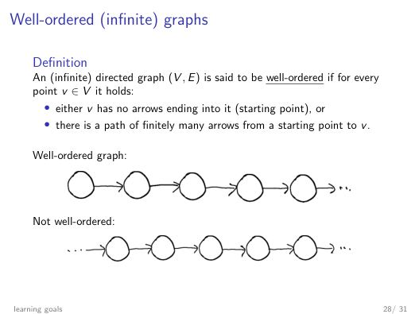


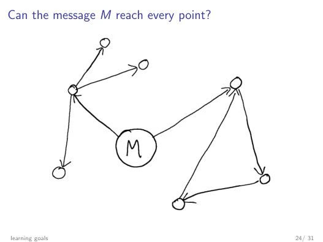
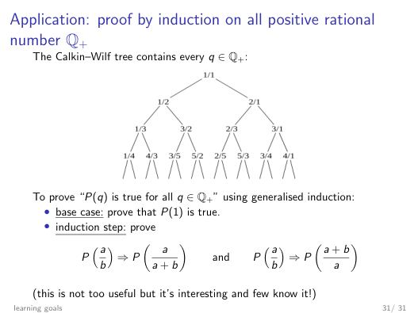

| English | 中文 | 说明 / 例句 |
|---|---|---|
| stacked implications | 堆叠蕴含 | Nested “if … then …” frames; indent one level per assumption. |
| mathematical induction | 数学归纳法 | Base case plus induction step covers all n ∈ N. |
| base case | 基例 | The smallest value, e.g. P(0) or P(1). |
| induction step | 归纳步 | Prove P(k) ⇒ P(k+1) for all admissible k. |
| inductive hypothesis | 归纳假设 | Assume P(k) holds, then derive P(k+1). |
| modus ponens | 肯定前件式 | From P and P ⇒ Q conclude Q. |
| domino effect | 多米诺效应 | First domino falls, and each falling knocks the next. |
| infinite descent | 无穷递降 | A solution yields a smaller one; impossible in N. |
| well-ordered graph | 良序图 | Every vertex is reachable from a start point by finitely many arrows. |
| generalised induction | 广义归纳 | Induction over a well-ordered graph instead of N. |
| strong induction | 强归纳 | Assume P(j) for all j ≤ k, not only j = k. |
| Pascal’s rule | 帕斯卡递推 | C(n,k−1) + C(n,k) = C(n+1,k), provable by induction. |
Base case n = 1：LHS = 1，RHS = 1² = 1，成立。
Induction step：设对某个 k ≥ 1 有 1 + 3 + … + (2k − 1) = k²。则
1 + 3 + … + (2k − 1) + (2(k+1) − 1) = k² + (2k + 1) = (k+1)²。
故 P(k) ⇒ P(k+1)。由归纳法，命题对一切 n ∈ Z⁺ 成立。□ 也可用几何解释：n² 个点排成方阵，第 k 层恰有 2k − 1 个点。
Base case n = 1：LHS = 1·2 = 2；RHS = 1·2·3/3 = 2，成立。
Induction step：设对 k ∈ Z⁺ 有 1·2 + … + k(k+1) = k(k+1)(k+2)/3。则
LHS(k+1) = k(k+1)(k+2)/3 + (k+1)(k+2)。提取公因子 (k+1)(k+2)：
= (k+1)(k+2)[k/3 + 1] = (k+1)(k+2)(k+3)/3，正是把 n 换成 k+1 的右端。
故 P(k) ⇒ P(k+1)，由归纳法命题成立。□ 评卷要点：写出归纳假设、把左边拆出新增项、化简到目标右端，三步各占分。
Base case n = 0：LHS = 0，RHS = 0，成立。
Induction step：设 0² + … + k² = k(k+1)(2k+1)/6，则
LHS(k+1) = k(k+1)(2k+1)/6 + (k+1)² = (k+1)[k(2k+1)/6 + (k+1)]（提取 k+1）。
括号内通分：[2k² + k + 6k + 6]/6 = (2k² + 7k + 6)/6 = (k+2)(2k+3)/6。
故 LHS(k+1) = (k+1)(k+2)(2k+3)/6，正是 n = k+1 的右端。□
两个基例：5 = 2·0 + 5·1；6 = 2·3 + 5·0。
Induction step（步长 2）：设 P(k) 对某个 k ≥ 5 成立，即 k = 2x + 5y。则 k + 2 = 2x + 5y + 2 = 2(x+1) + 5y，故 P(k+2) 成立。
于是 5, 7, 9, 11, … 与 6, 8, 10, 12, … 两条链覆盖全部 n ≥ 5，命题成立。□
要点：步长为 2 时必须两个基例；若只给 P(5)，6 永远推不到。
基例 n = 1 正确。归纳步里把 k+1 只鹦鹉分成 A = {1,…,k} 与 B = {2,…,k+1}，再由交集 A ∩ B = {2,…,k} 传递颜色。
当 k = 1 时，A = {1}、B = {2}，交集为空集，无法取到“既是 C₁ 又是 C₂”的鹦鹉，传递失败。
所以论证只证明了“k ≥ 2 时 P(k) ⇒ P(k+1)”，而 k = 1 → 2 这一步缺失，结论不成立。
教训：归纳步必须覆盖从基例开始的所有 k；写证明时要检查最小那个 k 的分支是否也成立。
- 证明 1 + 2 + … + n = n(n+1)/2 对一切 n ≥ 1 成立（用归纳法，基例取 n = 1）。
- 证明 2 + 4 + 6 + … + 2n = n(n+1) 对一切 n ∈ Z⁺ 成立。
- 证明 n³ − n 对一切 n ∈ N 都能被 6 整除。
- 证明 3⁰ + 3¹ + … + 3ⁿ = (3n+1 − 1)/2 对一切 n ≥ 0 成立。
- 找出“1 + 2 + … + n = n(n+1)/2 + 1”这一“证明”的漏洞（提示：它满足归纳步）。
参考答案与思路
1. n = 1：两边都是 1。设对 k 成立，则 1+…+k+(k+1) = k(k+1)/2 + (k+1) = (k+1)(k+2)/2，完成。
2. n = 1：2 = 1·2。设对 k 成立：2+…+2k = k(k+1)，则加 2(k+1) 得 k(k+1) + 2(k+1) = (k+1)(k+2)，完成。
3. n = 0 时 0 能被 6 整除。设 6 | k³ − k，则 (k+1)³ − (k+1) = k³ + 3k² + 3k + 1 − k − 1 = (k³ − k) + 3k(k+1)。前项被 6 整除；k(k+1) 是两个连续整数之积，必为偶数，故 3k(k+1) 被 6 整除。两者之和被 6 整除。□
4. n = 0：左边 1，右边 (3−1)/2 = 1。设对 k 成立，则加 3k+1 得 (3k+1 − 1)/2 + 3k+1 = (3·3k+1 − 1)/2 = (3k+2 − 1)/2，完成。
5. 归纳步确实成立：若 1+…+k = k(k+1)/2 + 1，则加 k+1 后得 (k+1)(k+2)/2 + 1。但基例 n = 1 时左边 1，右边 1·2/2 + 1 = 2，不成立。所以整条“证明”失效——再次说明基例不可省。
考点分层
a | f(n)。③ 证明 Pascal 法则。④ 指出某个“归纳证明”的错误（缺基例、基例错、传递缺口）。方法清单
写归纳证明的六步
- 写出 P(n) 的明确陈述与 n 的取值范围
- Base case：取最小允许值，分别算左右两端并写“相等”
- Induction step：写“Let k ≥ … and assume P(k)”，把假设编号 (1)
- 把 P(k+1) 的左边写成“P(k) 的左边 + 新增项”
- 用 (1) 替换，做代数化简（必要时通分、提取公因子、因式分解）
- 对照 P(k+1) 的右端，写“Hence P(k) ⇒ P(k+1)”，再写结论句
检查归纳证明是否可靠
- 基例真的成立吗（代入算一遍）
- 归纳步对最小的 k 也成立吗（鹦鹉例的教训）
- 是否偷偷使用了 P(k+1) 或“所有更小情形成立”
- 范围是否一致（命题写 n ≥ 5，基例就不能取 0）
- 步长与基例个数是否匹配（步长 2 需要两个基例）
堆叠蕴含的写法
- 找出最外层的“若…则…”，缩进一层写下假设
- 在内部继续找下一个“若…则…”，再缩进
- 最内层做元素级推导（设 x ∈ …）
- 由内向外逐层收回：先得内层结论，再得外层结论
- 每层结束时明确写出“Hence …”
| 源文件 | 页码 | 覆盖的知识点 |
|---|---|---|
| 08-lesson.pdf | p3–p4 | 考试信息、小抄规则、第 8 周学习目标 9.1–9.3 |
| 08-lesson.pdf | p7–p10 | 堆叠蕴含的四选项讨论、证明框架图、Ex1 |
| 08-lesson.pdf | p12–p16 | 多米诺效应、0+1+…+n 的完整归纳证明、Al-Karaji 与 Nicomachus 定理 |
| 08-lesson.pdf | p17–p19 | Gersonides、Pascal、Fermat 无穷递降、modus ponens 与归纳的有效性、归纳两步与变形 |
| 08-lesson.pdf | p21–p25 | 奇数和的例子、鹦鹉同色的错误、平方和、二的幂和 |
| 08-lesson.pdf | p25–p27 | 10+n=n+5 的缺基例错误、x³+2y³=4z³ 的无穷递降 |
| 08-lesson.pdf | p32–p36 | 两个基例的例子（n=2x+5y）、良序图定义、广义归纳、代码正确性、Calkin–Wilf 树 |
| 09-exercise.pdf | 全篇 | 归纳法、整除与数论的配套练习 |
| （跳过） | p11、p13、p29–p31 | 课堂讨论与图示页，结论已并入正文 |
| （补充拓展） | — | 强归纳与普通归纳的区别、Pascal 法则的组合证明、n³−n 被 6 整除的归纳证明 |
第 4 章 数论与模运算 3 讲 章节页 →
第 9 讲 · 整除、最大公因数与欧几里得算法
Divisibility, Greatest Common Divisors and the Euclidean Algorithm 第 4 章 数论与模运算
本节定位
从第 9 讲开始进入数论（Lessons 9–11）。本讲只处理“整数的除法”：整除（divisibility）、最大公因数（gcd）、欧几里得算法，以及用它解二元一次不定方程 ax + by = c。
这条线索会一路延伸到第 10 讲的模运算与第 11 讲的 RSA：RSA 的私钥 d 就是解 ed ≡ 1 (mod φ)，而它等价于解一个 ax + by = 1 型的不定方程。所以本讲的算法必须练到“不用想、直接写”的熟练度。
学完本节你应当能够：
- 用定义（存在 q 使 n = q·d）判断与证明整除，而不是用除法
- 证明整除的基本引理，特别是“若 c|a 且 c|b 则 c|ax + by”
- 写出带余除法 a = qb + r（0 ≤ r < b），并处理负数 a
- 用欧几里得算法求 gcd(a, b)，并解释它为何正确
- 用“反推欧几里得”求 ax + by = gcd(a, b) 的一组解
- 判断 ax + by = c 是否有解（gcd | c），并写出全部解的通式
9.1 数论研究什么
数论（number theory）研究整数的性质。典型问题：素数的性质（公式、统计、与其他数的关系）；方程的整数解，如 xⁿ + yⁿ = zⁿ、ax + by = c、x² = 4y + 2（这类只求整数解的方程叫丢番图方程 Diophantine equation）；整除性问题（x 何时整除 y）。
应用：密码学（cryptography，只有目标收件人能读的秘密书写）、纠错码（error-correcting codes，能在传输错误后自行纠正）、哈希函数（hash functions，单向秘密、数据完整性校验、快速数据库）。Gauss 的名言是：“数学是科学的皇后，而数论是数学的皇后。”
本课程在 9–11 讲会做四件事：解 ax + by = c；证明素数分解定理；学模运算并计算 2²⁰²⁶ 的最后两位；看 RSA 如何工作。这只是数论的短介绍，深入内容可参考 Rose 的《A Course in Number Theory》。
9.2 整除的定义与基本引理
定义：若存在 q ∈ Z 使 n = q·d，则称 d 整除 n（d divides n），记作 d | n；q 称为商。不整除记作 d ∤ n。例：5 | 10，但 4 ∤ 10。
引理（对任意整数 a, b, c）：(a) a | a、a | 0、1 | a、−1 | a；(b) 0 | a 当且仅当 a = 0；(c) 若 c > 0 且 a | c，则 c ≥ a；(d) 若 a | b 且 b | c，则 a | c（传递性）；(e) 若 c | a 且 c | b，则对一切 x, y ∈ Z 有 c | ax + by（线性组合）。
逐条的理由都很短：(a) a = 1·a、0 = 0·a、a = a·1、a = (−a)(−1)。(b) 0 | a 意为存在 q 使 a = q·0 = 0，故只有 a = 0。(c) a | c 且 c > 0 给 c = qa（q ≥ 1），故 c ≥ a。(d) b = q₁a、c = q₂b ⇒ c = (q₁q₂)a。(e) a = q₁c、b = q₂c ⇒ ax + by = (q₁x + q₂y)c。
9.3 整除的例题
Ex1：4 | 18？不成立（18 = 4·4.5，商不是整数）；−3 | 27？成立（27 = (−9)·(−3)）；10 | 32050？成立（32050 = 3205·10）。判断时只需找到那个 q。
Ex2：证明若 c | a 且 c | b，则对一切 x, y 有 c | ax + by。证明：由假设存在 q₁, q₂ 使 a = q₁c、b = q₂c，于是 ax + by = (q₁x + q₂y)c，而 q₁x + q₂y ∈ Z，故 c | ax + by。□ 这条引理是后面所有整除证明的主力。
Ex3：F = { n ∈ N : n | 12 } = {1, 2, 3, 4, 6, 12}（注意 0 不能作为除数，且 n ∈ N 含 0，但 0 ∤ 12）。Ex4 要求画出 F 上“整除”关系的网络图：从 x 指向 y 当且仅当 x | y，于是 1 指向所有元素，2 指向 4、6、12，3 指向 6、12，等等。
Ex5：f(n) = 32n+2 + 8n − 9，证明 8 | f(n)。做法一（归纳）：n = 0 时 f(0) = 9 − 9 = 0；且 f(n+1) − f(n) = 32n+4 − 32n+2 + 8 = 32n+2(9 − 1) + 8 = 8(32n+2 + 1)，被 8 整除，故由归纳得证。做法二（模 8）：3² = 9 ≡ 1，故 32n+2 = 9n+1 ≡ 1，而 8n ≡ 0、−9 ≡ −1，三项相加 ≡ 0（mod 8）。
9.4 最大公因数
动机：4x + 2y = 5 无整数解，因为左边永远是偶数而 5 是奇数。更一般地，若存在 m 使 m | a、m | b 但 m ∤ c，则 ax + by = c 无解。于是我们关心“同时整除 a 与 b 的最大者”。
定义：gcd(a, b) 是满足 m | a 且 m | b 的最大 m ∈ N。定理：若 a, b 不全为零，则 gcd(a, b) 存在且唯一。证明：令 D = { q ∈ N : q | a 且 q | b }，则 1 ∈ D 且 D ⊆ {1, 2, …, max(|a|, |b|)}，故 D 非空且有上界，因此有唯一最大元。□
三条性质必须记住：① gcd(a, b) 是能写成 ax + by（x, y ∈ Z）的最小正整数；② 若 d | a 且 d | b，则 d | gcd(a, b)；③ 若 a | n、b | n 且 gcd(a, b) = 1，则 ab | n。
例子：5 | 20、5 | 30，故 5 | gcd(20, 30) = 10；若 4 | n 且 7 | n，因 gcd(4,7) = 1，故 28 | n；但 4 | 24、8 | 24 而 gcd(4,8) = 4 ≠ 1，此时 32 ∤ 24——这说明性质 ③ 的“互素”条件不能省。
9.5 带余除法
定理（division algorithm）：给定 a, b ∈ Z 且 b > 0，存在唯一的整数 q（商）与 r（余数）使 a = q·b + r 且 0 ≤ r < b。
存在性（了解即可）：集合 { a − n·b : n ∈ Z } ∩ N 非空，取其最小元 ε = a − n_ε·b，令 r = ε、q = n_ε。若 r ≥ b，则 r′ = a − (n_ε + 1)b 是更小的非负元素，矛盾，故 r < b。
唯一性：设 a = qb + r = q′b + r′ 且 0 ≤ r, r′ < b。则 (q − q′)b = r′ − r。若 q ≠ q′，则 |r − r′| = |q − q′|b ≥ b，但 r、r′ 都小于 b 且非负，|r − r′| < b，矛盾。故 q = q′，进而 r = r′。□
Ex6：53 = 7·7 + 4（q = 7、r = 4）；−40 = (−14)·3 + 2（注意 r 必须非负，故 q 要“往小取”，得 q = −14、r = 2）；2634 = 21·123 + 51。这一“负数除法”是考试常见坑：−40/3 若写 q = −13、r = −1 就违反 0 ≤ r < b。
9.6 a mod b
a mod b 是一个函数：输入 a ∈ Z（正、负、零都可）与 b ∈ Z⁺，输出唯一满足 a = qb + r、0 ≤ r < b 的 r，即最小非负余数（least non-negative residue）。
Python 里就是 %：−21 % 12 = 3（因为 −21 = (−2)·12 + 3），365 % 7 = 1。注意 C 语言与 Java 的 % 对负数会给出负余数（−21 % 12 = −9），两者不同——考试用数学定义，不用某种语言的实现。
9.7 欧几里得算法
求 gcd 的高效方法是欧几里得算法（Euclidean algorithm）。先看例子（265 与 30）：设 d 是同时整除 265 与 30 的数。由 265 = 8·30 + 25 得 d | 25；由 30 = 1·25 + 5 得 d | 5；由 25 = 5·5 + 0 得“任何数都整除 0”。于是 d | 5，而 5 的最大约数是 5。反向检查：5 | 25、5 | 30，由第一式得 5 | 265，故 5 确实是公约数。因此 gcd(265, 30) = 5。
算法本身：gcd(a, b) = 若 b = 0 则 a，否则 gcd(b, a mod b)。写成竖式就是不断做带余除法，直到余数为 0，最后一个非零余数就是 gcd。
Ex8：gcd(10043, 616)。计算：10043 = 16·616 + 187；616 = 3·187 + 55；187 = 3·55 + 22；55 = 2·22 + 11；22 = 2·11 + 0。故 gcd = 11。
9.8 反推欧几里得：求 ax + by = gcd(a, b)
欧几里得算法不仅能算 gcd，还能顺便给出“把 gcd 写成 a、b 的整数线性组合”的方法：从最后一个非零余数开始，逐行把余数用上一层的数表示，最后回代到 a、b。
以 gcd(265, 30) = 5 为例：5 = 30 − 1·25；把 25 = 265 − 8·30 代入得 5 = 30 − (265 − 8·30) = 9·30 − 1·265。故 265·(−1) + 30·9 = 5，即 x = −1、y = 9。
以 10043 与 616 为例（源文件 p22）：从下往上写 11 = 55 − 2·22，把 22 = 187 − 3·55 代入得 11 = 7·55 − 2·187，再把 55 = 616 − 3·187 代入得 11 = 7·616 − 23·187，最后把 187 = 10043 − 16·616 代入得 11 = 375·616 − 23·10043。故 10043·(−23) + 616·375 = 11。
操作要点：每次代入只替换“较大的那个数”，系数一路累积；最后检查一遍（把 x、y 代回原式）以防符号出错。
9.9 当 c ≠ gcd(a, b)
若 gcd(a, b) ∤ c，则无解（因为 gcd 整除 a 与 b，必整除 ax + by，故必整除 c）。若 gcd(a, b) | c 但 c ≠ gcd，则先解 ax′ + by′ = gcd(a, b)，再把整式乘以 c/gcd(a, b)。
例：解 265x + 30y = −50。已知 gcd = 5，且 265·(−1) + 30·9 = 5。两边乘 −10 得 265·10 + 30·(−90) = −50，故 x = 10、y = −90 是一组解。
定理：设 a, b, c ∈ Z 且 a、b 不全为零，则 ax + by = c 有整数解当且仅当 gcd(a, b) | c。求一组解的三步指令：(a) 算 gcd(a, b)；(b) 检查 gcd | c（否则停）；(c) 用反推欧几里得解出 ax′ + by′ = gcd，再乘以 c/gcd。
9.10 全部解的公式
设 (x₀, y₀) 是一组解，(x₁, y₁) 是另一组。两式相减：a(x₁ − x₀) = −b(y₁ − y₀)。两边除以 g = gcd(a, b) 得 (a/g)(x₁ − x₀) = −(b/g)(y₁ − y₀)。因 gcd(a/g, b/g) = 1，故 a/g 必须整除 (y₁ − y₀)，即 y₁ = y₀ + (a/g)k；代回得 x₁ = x₀ − (b/g)k。
反过来（⇐），把这对式子代入原方程，两项的 k 部分恰好抵消，故对任意 k ∈ Z 都是解。两个方向合起来给出定理：(x₀, y₀) 的全部解为 {(x₀ − (b/g)k, y₀ + (a/g)k) : k ∈ Z}。
9.11 完整范例：1032x + 320y = 56
第一步，求 gcd：1032 = 3·320 + 72；320 = 4·72 + 32；72 = 2·32 + 8；32 = 4·8 + 0。故 gcd(1032, 320) = 8。
第二步，检查整除：c/g = 56/8 = 7 ∈ Z，故有解。
第三步，解 1032x′ + 320y′ = 8：从 8 = 72 − 2·32 开始，代 32 = 320 − 4·72 得 8 = 9·72 − 2·320，再代 72 = 1032 − 3·320 得 8 = 9·1032 − 29·320。
第四步，乘以 7：1032·63 + 320·(−203) = 56，故 (63, −203) 是一组解。
第五步，写全部解：x = 63 − (320/8)k = 63 − 40k，y = −203 + (1032/8)k = −203 + 129k，k ∈ Z。取 k = 1 得 (23, −74)，取 k = 2 得 (−17, 55)，可见 x 在 63 与 23 之间跨过 0，最接近 0 的两组是 (23, −74) 与 (−17, 55)。
Ex13：834x − 24y = 54。gcd(834, 24) = 6，6 | 54。反推：6 = 24 − 18 = 24 − (834 − 34·24) = 35·24 − 834，即 834·(−1) + 24·35 = 6；乘 9 得 834·(−9) + 24·315 = 54。注意原式是 834x − 24y = 54，故 x = −9、y = −315。全部解：x = −9 + 4k、y = −315 + 139k（因 b/g = 24/6 = 4，a/g = 834/6 = 139）。
Ex14：75x − 27y = 10。gcd(75, 27) = 3，而 3 ∤ 10，故无整数解。这一问只考“检查 gcd 是否整除 c”，一句话即可拿分。
判断 d | n 要按定义写存在 q ∈ Z 使 n = q·d，不要写 n/d 是整数，因为整数范围内商可能根本不存在。负数同样成立：−3 | 27 因为 27=(−9)(−3)。0 | a 当且仅当 a=0，别把除数为零当成可整除。线性组合引理是后续主力：若 c|a 且 c|b，则对一切 x,y 有 c | ax+by，证明只需把 a=q₁c、b=q₂c 代入得 ax+by=(q₁x+q₂y)c。解 ax+by=c 的路线是算 gcd、检查整除、反推欧几里得求一组解、再写通解。
原版图页（源 PDF 插图页）

| English | 中文 | 说明 / 例句 |
|---|---|---|
| number theory | 数论 | The study of properties of the integers. |
| divisibility | 整除 | d | n iff n = q·d for some q ∈ Z. |
| quotient | 商 | The q in n = q·d, or in a = q·b + r. |
| remainder | 余数 | The r with 0 ≤ r < b in a = q·b + r. |
| greatest common divisor | 最大公因数 | The largest m ∈ N dividing both a and b. |
| relatively prime | 互素 | gcd(a, b) = 1. |
| division algorithm | 带余除法 | Unique q, r with a = qb + r and 0 ≤ r < b. |
| least non-negative residue | 最小非负余数 | a mod b, the r in [0, b). |
| Euclidean algorithm | 欧几里得算法 | gcd(a,b) = gcd(b, a mod b) until the remainder is 0. |
| Diophantine equation | 丢番图方程 | An equation solved in integers, e.g. ax + by = c. |
| linear combination | 线性组合 | ax + by; if c divides a and b it divides every such combination. |
| general solution | 通解 | x = x₀ − (b/g)k, y = y₀ + (a/g)k, k ∈ Z. |
竖式：10043 = 16·616 + 187；616 = 3·187 + 55；187 = 3·55 + 22；55 = 2·22 + 11；22 = 2·11 + 0。故 gcd = 11。
反推：11 = 55 − 2·22；代入 22 = 187 − 3·55 得 11 = 7·55 − 2·187；代入 55 = 616 − 3·187 得 11 = 7·616 − 23·187；代入 187 = 10043 − 16·616 得 11 = 375·616 − 23·10043。
故 10043·(−23) + 616·375 = 11，即 x = −23、y = 375。
检验：10043 × (−23) = −230989；616 × 375 = 231000；两者相加 = 11，正确。
gcd：1032 = 3·320 + 72；320 = 4·72 + 32；72 = 2·32 + 8；32 = 4·8 + 0，故 gcd = 8；8 | 56，有解。
反推：8 = 72 − 2·32 = 72 − 2(320 − 4·72) = 9·72 − 2·320 = 9(1032 − 3·320) − 2·320 = 9·1032 − 29·320。
乘 56/8 = 7：1032·63 + 320·(−203) = 56，故 (63, −203)。
全部解：x = 63 − 40k、y = −203 + 129k（k ∈ Z）。取 k = 0,1,2 得 (63, −203)、(23, −74)、(−17, 55)。
先算 gcd(75, 27)：75 = 2·27 + 21；27 = 1·21 + 6；21 = 3·6 + 3；6 = 2·3 + 0，故 gcd = 3。
检查整除：3 ∤ 10（10 = 3·3 + 1）。
结论：无整数解。理由：3 整除 75 与 27，故 3 整除 75x − 27y；若等于 10，则 3 | 10，矛盾。
要求 −40 = q·3 + r 且 0 ≤ r < 3。
试 q = −13：−39 + r = −40 ⇒ r = −1，不合格。试 q = −14：−42 + r = −40 ⇒ r = 2，合格。
所以 q = −14、r = 2。也可用 −40 mod 3 = 2 直接得余数，再反推 q = (−40 − 2)/3 = −14。
常见错误：写 q = −13、r = −1，或写 q = −14、r = 2 但把余数写成 −1。记住余数永远落在 [0, b)。
用归纳。n = 0：3² + 0 − 9 = 0，被 8 整除。
设 8 | f(k)。计算差：f(k+1) − f(k) = 32k+4 − 32k+2 + 8 = 32k+2(3² − 1) + 8 = 8·32k+2 + 8 = 8(32k+2 + 1)，被 8 整除。
故 f(k+1) = f(k) + 8(…) 也被 8 整除，由归纳法得证。□
另解（模 8）：3² ≡ 1 (mod 8) ⇒ 32n+2 ≡ 1；8n ≡ 0；−9 ≡ −1；相加 ≡ 0 (mod 8)，即被 8 整除。
- 判断真假并说明理由：7 | 91、12 | 100、−5 | 0、0 | 7。
- 求 gcd(161, 434)，并判断 161x − 434y = 5 与 161x − 434y = 21 是否有解。
- 求 84x + 30y = 6 的一组解与全部解。
- 计算 2345 除以 17 的商与非负余数，并写出 2345 mod 17。
- 设 a | n、b | n 且 gcd(a, b) = 1。证明 ab | n。
参考答案与思路
1. 7 | 91 真（91 = 13·7）；12 | 100 假（100 = 8·12 + 4）；−5 | 0 真（0 = 0·(−5)）；0 | 7 假（不存在 q 使 7 = q·0）。
2. 434 = 2·161 + 112；161 = 1·112 + 49；112 = 2·49 + 14；49 = 3·14 + 7；14 = 2·7 + 0，故 gcd = 7。7 ∤ 5，故第一个方程无解；7 | 21，第二个有解（把 gcd 的表示乘以 3 即可）。
3. gcd(84, 30)：84 = 2·30 + 24；30 = 1·24 + 6；24 = 4·6，故 gcd = 6，且 6 = 30 − 24 = 30 − (84 − 2·30) = 3·30 − 84，即 84·(−1) + 30·3 = 6。全部解：x = −1 + 5k、y = 3 − 14k（b/g = 30/6 = 5，a/g = 84/6 = 14）。
4. 17·137 = 2329，2345 − 2329 = 16，故 q = 137、r = 16，即 2345 mod 17 = 16。
5. 由 a | n 得 n = q₁a；由 b | n 得 b | q₁a。因 gcd(a,b) = 1，故 b | q₁，设 q₁ = q₂b，则 n = q₂ab，即 ab | n。□（这条性质在 9.4 已作为结论列出。）
考点分层
方法清单
欧几里得算法（手算版）
- 把较大的数写在左、较小的写在右
- 做带余除法 a = q·b + r，余数必须非负
- 把 (a, b) 换成 (b, r)，重复
- 当余数为 0 时，最后一个非零余数就是 gcd
- 把每一步都写出来，便于反推与检查
解 ax + by = c 的四步
- 算 g = gcd(a, b)
- 检查 g | c：不整除则写出“无解”并说明理由
- 反推欧几里得，求 ax′ + by′ = g 的一组解
- 两边乘以 c/g，得到一组解 (x₀, y₀)
- 写通解 x = x₀ − (b/g)k、y = y₀ + (a/g)k，k ∈ Z
负数的带余除法
- 先写出目标形式 a = q·b + r 与约束 0 ≤ r < b
- 用 a mod b（Python 的 %）直接得 r
- 由 q = (a − r)/b 反算商
- 把 q、r 代回检验，确认 r 落在 [0, b)
| 源文件 | 页码 | 覆盖的知识点 |
|---|---|---|
| 09-lesson.pdf | p3–p7 | 数论的研究对象、应用（密码学/纠错码/哈希）、Gauss 名言、本课程三讲路线 |
| 09-lesson.pdf | p8–p9 | 整除的定义与五条引理、Ex1–Ex5（含 8 | 32n+2+8n−9） |
| 09-lesson.pdf | p11–p13 | 用反证法看 4x+2y=5 无解、gcd 的定义与存在唯一性、三条性质 |
| 09-lesson.pdf | p15–p17 | 带余除法的存在性与唯一性证明、Ex6–Ex7、a mod b 函数与 Python % |
| 09-lesson.pdf | p18–p19 | 欧几里得算法的原理（gcd(265,30)）、Ex8 gcd(10043,616) |
| 09-lesson.pdf | p21–p25 | 反推欧几里得、10043x+616y=11、c ≠ gcd 时乘倍数、充要条件与三步指令、Ex9–Ex11 |
| 09-lesson.pdf | p28–p34 | 1032x+320y=56 的四步全过程、全部解公式的推导（三个部分）、Ex12–Ex14 |
| 10-exercise.pdf | Ex4–Ex6 | gcd(2023,1428)、3x−5y=7、21x−35y=24、97x+127y=1、219x−396y=−12 |
| （跳过） | p5–p6、p11、p20–p21、p26–p27 | 目录与讨论页，内容已并入正文 |
| （补充拓展） | — | Bézout 恒等式、模 8 与模 9 的快捷证明、负系数方程的标准化处理 |
第 10 讲 · 素数分解与模运算
Prime Factorisation and Modular Arithmetic 第 4 章 数论与模运算
本节定位
第 9 讲解决“一次方程”，第 10 讲解决“乘法结构”：素数与唯一分解，以及模运算（clock arithmetic）。前者解释了为什么 gcd 可以从分解式一眼读出，后者把“余数相等”变成一个可以做加减乘的运算系统。
模运算是第 11 讲 RSA 的语言，也是“最后两位数字”“余数是多少”这类考题的唯一正解。本讲还给出从十进制数字直接判断整除性的规则，属于必考的小题。对应学习目标 10.4–10.8。
学完本节你应当能够：
- 判断一个不太大的整数是否为素数（只需试到 √n 的素数）
- 写出小整数的素因数分解，并用它求 gcd
- 用反证法证明“素数有无穷多个”与“每数皆素或素之积”
- 判断两个数是否同余，并用 a ≡ b (mod m) ⇔ m | (a − b) 计算
- 在模 m 下做加、减、乘、乘幂与多项式代入，并避开“除法陷阱”
- 用枚举法或欧几里得算法解同余方程
- 用数字和、末位、末两位、交错和判断 3、9、11、2、4 的整除性
10.1 复习：解 ax + by = c
上讲的四步仍然要熟练：算 gcd(a, b)；检查 gcd | c（不整除即无解）；反推欧几里得求一组解；写通解 x = x₀ − (b/g)k、y = y₀ + (a/g)k。本讲的模运算会把它变成“解一次同余方程”，方法是同一套。
热身例子：3x − 5y = 7。gcd(3,5) = 1，有解。反推：1 = 3·2 − 5·1，乘 7 得 3·14 − 5·7 = 7，故 x = 14、y = 7；通解 x = 14 + 5k、y = 7 + 3k。取 k = −2 得 (4, 1)，取 k = −3 得 (−1, −2)，都是解。
10.2 素数与合数
定义：p ∈ N 是素数（prime），若 (a) p ≥ 2，且 (b) p 的任何正因数 d 只能是 1 或 p。也就是说，1 与 p 之间没有它的因数。不是素数的自然数叫合数（composite）。
例：2, 3, 5, 7, 11, … 是素数；7 是素数，因为 2 ∤ 7、3 ∤ 7、4 ∤ 7、5 ∤ 7、6 ∤ 7；612 是合数，因为 2 | 612 且 1 < 2 < 612。注意 1 既不是素数也不是合数（定义要求 p ≥ 2）。
10.3 素数判定：只需试到 √n
命题：若 n 没有满足 2 ≤ f ≤ √n 的素因数 f，则 n 是素数。证明（反证）：假设 n 是合数，则 n = a·b 且 a, b ≥ 2。由假设，a 与 b 的每个素因数都 > √n，故 a, b > √n；于是 n = a·b > √n·√n = n，矛盾。故 n 必为素数。□
Ex5：判断 107。√107 ≈ 10.34，只需试 2、3、5、7。107 是奇数（2 ∤）；数字和 1+0+7 = 8，不被 3 整除；末位不是 0 或 5（5 ∤）；7·15 = 105，余 2（7 ∤）。故 107 是素数。
10.4 每个数都是素数或素数之积
定理：每个整数 n ≥ 2 要么是素数，要么是若干个素数的乘积。证明（反证）：假设存在 ≥ 2 却既非素数也非素数之积的数，取其中最小的 n₀。它不是素数，故为合数，n₀ = ab 且 1 < a, b < n₀。因 a, b ≥ 2 且都小于 n₀（最小反例），故 a、b 都是素数或素数之积；于是 n₀ = a·b 也是素数之积，矛盾。□
10.5 素数无穷多（Euclid 定理）
定理：素数有无穷多个。证明（反证）：假设只有有限个，列出 p₁, p₂, …, pₙ。令 E = p₁p₂…pₙ + 1。由上一定理，E 是素数之积，故有某个素因子 p。因 p₁, …, pₙ 被假设为全部素数，故 p = pₖ 对某个 k。于是 p | E 且 p | p₁…pₙ，相减得 p | 1，这与“素数 p ≥ 2”矛盾。□
注意这个证明是“构造式”的反证：它没有告诉你下一个素数是多少，只说明“有限列表必不完整”。第 4 讲把它当作“只有结论 C、没有假设 A”的模型问题，正因如此它不能用逆否证明。
10.6 算术基本定理
定理（算术基本定理 fundamental theorem of arithmetic）：每个大于 1 的整数都能写成素数之积，且在不计因子顺序的意义下写法唯一。证明见背景材料第 6 章 7–8 页，本课程只要求会用。
例：70 = 2·5·7；2000 = 2·1000 = 2²·500 = 2³·250 = 2⁴·125 = 2⁴·5·25 = 2⁴·5³；2025 = 3⁴·5²；129812419214 = 2·31·73·28681489。反过来，找大数的全部因子非常困难——RSA 的安全性就建立在这件事上。
标准写法：n = p₁α₁·p₂α₂·…·p_mα_m，其中 p₁ < p₂ < … < p_m 为不同素数，αⱼ ∈ N。例：10535 = 5·7²·43，于是 m = 3、p₁ = 5、p₂ = 7、p₃ = 43、α₁ = 1、α₂ = 2、α₃ = 1——唯一性说的就是这些参数被 n 唯一确定。
10.7 唯一性并非“理所当然”
课件给了一个反例说明唯一性是自然数结构的特殊性质。考虑 Z[√−5] = { a + b√−5 : a, b ∈ Z }，按普通规则运算并约定 √−5·√−5 = −5，在其中同样可以定义整除与“素数”。此时 6 = 2·3 = (1 + √−5)(1 − √−5)，而 2、3、1+√−5、1−√−5 在这个结构里都是“素数”。于是 6 有两种本质不同的分解。
这段是拓展：它提醒我们“唯一分解”是需要证明的定理，而不是定义的同义反复。对本课程只需知道自然数里它成立。
10.8 用分解式算 gcd
设 a = p₁α₁…p_kα_k、b = p₁β₁…p_kβ_k（允许某些指数为 0，素数集取两者的并）。则：b/a = p₁β₁−α₁…p_kβ_k−α_k；因此 a | b 当且仅当对所有 j 有 αⱼ ≤ βⱼ；并且 gcd(a, b) = p₁min(α₁,β₁)…p_kmin(α_k,β_k)。
例：m = 213612 = 2²·3·7·2543、n = 768512 = 2⁹·19·79。逐素数取最小指数：2 的指数 min(2,9) = 2，3 与 19、7 与 79 等在另一方指数为 0，故 gcd = 2² = 4。课件随即用欧几里得算法验证（768512 = 3·213612 + 127676 … 8 = 2·4 + 0），结果一致。
Ex6：分解 252 = 4·63 = 2²·3²·7。用分解式求 gcd 的优点是“一眼看出”，缺点是必须先分解，而大数分解极慢——这就是实际计算用欧几里得算法的原因。
10.9 模运算的定义
两个整数 a, b 除以 m 有相同的最小非负余数时，称它们同余（congruent）模 m，记 a ≡ b (mod m)，即 rem(a, m) = rem(b, m)。等价定义（更好用）：a ≡ b (mod m) 当且仅当 m | (a − b)。
例：模 5 时 … ≡ 67 ≡ 62 ≡ 57 ≡ 52 ≡ 47 ≡ …，因为它们都形如 5k + 2。这些数构成一个同余类（congruence class）。
直观：模运算是“钟表算术”（clock arithmetic）。表盘 12 点，现在 11 点，36 小时后是几点？11 + 36 = 47 ≡ 11 (mod 12)，即 11 点。注意 12 ≡ 0，所以“12 点”与“0 点”是同一个同余类。
判断题（源文件 p24）：(A) 4 ≡ 2 (mod 2) 真（差 2 被 2 整除）；(B) 10 ≡ −2 (mod 3) 真（差 12）；(C) 100 ≡ 3 (mod 9) 假（差 97 不被 9 整除）；(D) 5.25 ≡ 1.25 (mod 4) 不合法（同余只对整数定义）；(E) 2701 ≡ 1 (mod 27) 真（2700 = 27·100）。
10.10 模运算的计算规则
同余“几乎像等式”一样可以运算。允许的：加法（a ≡ b ⇒ a + c ≡ b + c）、乘法（a ≡ b ⇒ a·c ≡ b·c）、两者合并（a ≡ b, c ≡ d ⇒ a + c ≡ b + d 且 a·c ≡ b·d）、正幂（a ≡ b ⇒ ae ≡ be，e ∈ Z⁺）。
代入规则（substitution rule）：若 P 是整系数多项式，则 a ≡ b (mod m) ⇒ P(a) ≡ P(b) (mod m)。这条让你可以把底数替换成小数再算。例：求 947²³⁴ − 152²⁰²⁶ + 80⁸ (mod 8)。因 947 ≡ 3、3² = 9 ≡ 1，故 947²³⁴ = (3²)¹¹⁷ ≡ 1；152 ≡ 0，故 152²⁰²⁶ ≡ 0；80 ≡ 0，故 80⁸ ≡ 0。于是原式 ≡ 1 − 0 + 0 = 1 (mod 8)。
a/d ≡ b/d (mod m/d)。所以模运算里“不能随便约”，除法要靠乘逆元（第 11 讲）。Ex7：证明同余的传递性。a ≡ b 意为 m | (a − b)，b ≡ c 意为 m | (b − c)；两者相加得 m | (a − c)，即 a ≡ c。□ 这就是“可以代入”的合法性来源。
Ex8：10² ≡ 1 (mod 9)。按定义：100 − 1 = 99 = 9·11，被 9 整除。另一种：由 10 ≡ 1 (mod 9) 与幂规则，10² ≡ 1² = 1。Ex9：234 (mod 9)：由 10 ≡ 1 得 2·10² + 3·10 + 4 ≡ 2 + 3 + 4 = 9 ≡ 0。Ex10：72026 (mod 6)：由 7 ≡ 1 得 72026 ≡ 12026 = 1。
10.11 解同余方程：三种方法
同余方程（congruence equation）是含未知整数 x 的同余式，要求找出所有使它成立的 x。例：5x ≡ 2 (mod 7)，意为 7 | (5x − 2)，即 5x − 2 = 7y，是一个丢番图方程。
方法 1（枚举候选）：若 b 不太大，把所有 x ∈ {0, 1, …, b−1} 代进去试即可。合法性来自两点：多项式代入规则（同余的 x 给同余的值）与“每个整数都同余于 0…b−1 中的某一个”。
方法 2（欧几里得）：把 7x ≡ 2 (mod 10) 化为 7x − 10k = 2。先算 gcd(10, 7) = 1（10 = 1·7 + 3；7 = 2·3 + 1；3 = 3·1），故有解。反推 1 = 7 − 2·3 = 7 − 2(10 − 7) = 3·7 − 2·10，故 x′ = 3；乘 2 得 x₀ = 6。全部解 x = 6 + 10m，m ∈ Z，即 x ≡ 6 (mod 10)。
方法 3（乘逆元，进阶）：找 h 使 7h ≡ 1 (mod 10)。试出 h = 3（21 ≡ 1）。两边乘 3：21x ≡ 6，即 x ≡ 6 (mod 10)。这一方法在第 11 讲会被系统化（乘逆元存在的充要条件是 gcd(q, m) = 1）。
多项式同余的例子：解 x² ≡ x + 2 (mod 4)，即 x² − x − 2 ≡ 0。试 0, 1, 2, 3：x = 0 给 −2 ≢ 0；x = 1 给 −2 ≢ 0；x = 2 给 0（是解）；x = 3 给 4 ≡ 0（是解）。故 x ≡ 2 或 x ≡ 3 (mod 4)，即 x = 2 + 4k 或 x = 3 + 4k。
10.12 用数字判断整除性
把 n 写成十进制 n = (a_k ak−1 … a₂ a₁ a₀)₁₀ = a_k 10k + … + a₂10² + a₁10 + a₀，其中 aⱼ ∈ {0,…,9}。例：5295 = 5·10³ + 2·10² + 9·10 + 5，故 a₃ = 5、a₂ = 2、a₁ = 9、a₀ = 5。
判据（都是“当且仅当”）：10 | n ⇔ a₀ = 0；2 | n ⇔ 2 | a₀；4 | n ⇔ 4 | (a₁a₀)₁₀（末两位）；3 | n ⇔ 3 | (a_k + … + a₀)（数字和）；9 | n ⇔ 9 | 数字和；11 | n ⇔ 11 | (a₀ − a₁ + a₂ − … + (−1)k a_k)（交错和）。
证明思路（以 10 为例）：由 10 ≡ 0 (mod 10)，代入多项式 n ≡ a_k·0 + … + a₁·0 + a₀ = a₀ (mod 10)，故 10 | n ⇔ n ≡ 0 ⇔ a₀ ≡ 0，而 a₀ ∈ {0,…,9}，只能为 0。3 与 9 的证明用 10 ≡ 1 (mod 3) 与 10 ≡ 1 (mod 9)，于是 n 与数字和同余。11 的证明用 10 ≡ −1 (mod 11)，于是 10 的幂交替给 +1、−1。
例 1：23482 能被 9 整除吗？数字和 2+3+4+8+2 = 19，9 ∤ 19（再算 1+9 = 10，仍不被 9 整除），故不能。例 2（找错误）：23411 · 2734 = 64005684 对不对？模 9：23411 ≡ 2+3+4+1+1 = 11 ≡ 2；2734 ≡ 2+7+3+4 = 16 ≡ 7；乘积应 ≡ 2·7 = 14 ≡ 5。而 64005684 ≡ 6+4+0+0+5+6+8+4 = 33 ≡ 6。5 ≢ 6，故有错（正确答案是 64005674）。
进阶：7 或其他“异国情调”的数可以用整除图（divisibility graph）判断，课件给了两个外部链接（youtube 与 math.stackexchange），属于兴趣拓展，不在考试范围。
Ex11 要求手算判断 2383、9165、3450、3024、8687 对 2、3、4、5、6、9、10、11 的整除性。做法就是逐条套上表的判据；6 的判据是“同时被 2 与 3 整除”（因为 gcd(2,3) = 1，用第 9 讲性质 ③）。
素数判定只需试到 √n：若 n 合数则 n=ab 且 a,b≥2，若没有 ≤√n 的素因子则 a,b 都大于 √n，推出 n>√n·√n=n 矛盾。只需试素数，因为合数因子含更小的素因子。每个 n≥2 是素数或素数之积，用最小反例证：最小反例 n₀ 合数为 ab，a,b 更小故都是素数之积，于是 n₀ 也是，矛盾。 Euclid 定理同样构造式反证：假设素数有限列 p₁…pₙ，令 E=p₁p₂…pₙ+1，E 有素因子 p 却不在列表内，否则 p|1 矛盾。
Euclid 实战：六位数级的 gcd（Week 11 解答册）
课堂例题的数字偏小；set 11 的 Ex2c 给出一个 6–7 位数的实战：gcd(260 712, 561 752)。按质因数分解要走 17、43、71 这类大因子，手算不现实；Euclid 辗转相除七步即达：561 752 = 2·260 712 + 40 328
260 712 = 6·40 328 + 18 744
40 328 = 2·18 744 + 2 840
18 744 = 6·2 840 + 1 704
2 840 = 1·1 704 + 1 136
1 704 = 1·1 136 + 568
1 136 = 2·568 + 0 → gcd = 568
阶乘模的「置零」技巧（Ex4）
求 1! + 2! + ⋯ + 9001! 除以 21 的余数：一旦 n ≥ 7，n! 必含因子 7×6×…且其中含 3 → 21 = 3·7 | n! → n! ≡ 0 (mod 21)。于是无穷和塌缩为前六项：1+2+6+3+15+6 = 33 ≡ 12 (mod 21)。迁移：凡 mod m 的阶乘和，先找使 m | n! 的最小 n，其后项全部置零。
| English | 中文 | 说明 / 例句 |
|---|---|---|
| prime | 素数 | p ≥ 2 with no positive divisors other than 1 and p. |
| composite | 合数 | A natural number that is not prime (and > 1). |
| prime factorisation | 素因数分解 | n = p₁α₁…p_mα_m with distinct primes. |
| fundamental theorem of arithmetic | 算术基本定理 | Every n > 1 factors uniquely into primes, up to order. |
| Euclid’s theorem | 欧几里得定理 | There are infinitely many primes. |
| prime test | 素性检验 | It suffices to test primes up to √n. |
| congruence | 同余 | a ≡ b (mod m) iff m | (a − b). |
| congruence class | 同余类 | All integers with the same remainder modulo m. |
| clock arithmetic | 钟表算术 | Modular arithmetic with modulus 12. |
| substitution rule | 代入规则 | a ≡ b (mod m) ⇒ P(a) ≡ P(b) for integer polynomials P. |
| congruence equation | 同余方程 | An equation like ax ≡ c (mod m) to be solved in x. |
| divisibility test | 整除判别法 | Digit-sum test for 3 and 9, alternating sum for 11. |
√107 ≈ 10.34，故只需检查 2、3、5、7 这四个素数。
2 ∤ 107（奇数）；3 ∤ 107（数字和 8）；5 ∤ 107（末位 7）；7 ∤ 107（7·15 = 105，余 2）。
由“若 n 无 ≤ √n 的素因数则为素数”，107 是素数。□
要点：不必检查 4、6、8、9、10——合数的因子必含更小的素因子。
2000 = 2·1000 = 2·2·500 = 2³·250 = 2⁴·125 = 2⁴·5³。
2025 = 2025/5 = 405，405/5 = 81，81 = 3⁴，故 2025 = 3⁴·5²。
逐素数取最小指数：2 的指数 min(4, 0) = 0；3 的 min(0, 4) = 0；5 的 min(3, 2) = 2。故 gcd = 5² = 25。
用欧几里得检验：2025 = 1·2000 + 25；2000 = 80·25 + 0，故 gcd = 25，一致。
234 mod 9：由 10 ≡ 1 (mod 9)，代入多项式 2·10² + 3·10 + 4 得 2·1 + 3·1 + 4 = 9 ≡ 0。故 234 ≡ 0 (mod 9)，即被 9 整除。
72026 mod 6：由 7 ≡ 1 (mod 6) 与幂规则得 72026 ≡ 12026 = 1。故余数为 1。
两个计算都只用了代入规则与幂规则，没有真正算大数——这正是模运算的威力。
检验：234 = 9·26，正确；72026 是奇数且不被 3 整除（7 ≡ 1 mod 3），故 mod 6 = 1 合理。
化为 x² − x − 2 ≡ 0 (mod 4)。候选只有 0、1、2、3（因为任何整数都同余于其中之一）。
x ≡ 0：0 − 0 − 2 = −2 ≡ 2 ≢ 0。x ≡ 1：1 − 1 − 2 = −2 ≢ 0。
x ≡ 2：4 − 2 − 2 = 0 ≡ 0，是解。x ≡ 3：9 − 3 − 2 = 4 ≡ 0，是解。
故全部解为 x ≡ 2 (mod 4) 或 x ≡ 3 (mod 4)，即 x = 2 + 4k 或 x = 3 + 4k（k ∈ Z）。
分别求模 9 的余数：23411 → 2+3+4+1+1 = 11 → 1+1 = 2；2734 → 2+7+3+4 = 16 → 7。
乘积应 ≡ 2·7 = 14 ≡ 5 (mod 9)。
右端 64005684 → 6+4+0+0+5+6+8+4 = 33 → 3+3 = 6。6 ≢ 5，故等式有误（正确结果是 64005674）。
注意：模 9 检验只能发现错误，不能保证正确；它是必要条件而非充分条件。
- 判断 91、97、111 是否为素数，并说明依据。
- 求 720 与 1024 的素因数分解，并由此写出 gcd。
- 计算 3100 (mod 7)。
- 解同余方程 5x ≡ 3 (mod 11)，并写出全部解。
- 不用计算器判断 918273 是否被 3、9、11 整除。
参考答案与思路
1. 91 = 7·13，合数；97：√97 ≈ 9.8，试 2、3、5、7 均不整除，是素数；111 = 3·37，合数。
2. 720 = 2⁴·3²·5；1024 = 2¹⁰。gcd = 2⁴ = 16（其他素数指数为 0）。
3. 3¹ = 3、3² = 2、3³ = 6、3⁴ = 4、3⁵ = 5、3⁶ = 1 (mod 7)，周期 6。100 = 16·6 + 4，故 3100 ≡ 3⁴ = 81 ≡ 4 (mod 7)。
4. gcd(5,11) = 1，有唯一解类。试 x = 0..10：5x ≡ 3 ⇒ x = 5 时 25 ≡ 3 (mod 11)。故 x ≡ 5 (mod 11)。（也可用逆元：5·9 = 45 ≡ 1，乘 9 得 x ≡ 27 ≡ 5。）
5. 数字和 9+1+8+2+7+3 = 30，3 | 30 故被 3 整除；30 不被 9 整除（30 = 9·3+3），故不被 9 整除。交错和 3−7+2−8+1−9 = −18，11 ∤ −18，故不被 11 整除。
考点分层
gcd·lcm = a·b（2024 年考题用到 max + min = x + y）。方法清单
判断素数与分解
- 若 n 是偶数或末位 5 或数字和被 3 整除，直接判合数
- 否则列出 √n 以内的素数，逐个试除
- 若全部不整除，则 n 是素数
- 分解时从小素数开始，反复除到不能除为止
- 把结果写成 p₁α₁…p_mα_m 并按素数升序排列
计算 qe mod m
- 先找小周期：算 q¹, q², q³… 直到出现 1（或已知的 −1）
- 若 m 是素数且 m ∤ q，可直接用 t = m − 1（Fermat，第 11 讲）
- 把指数写成 e = k·t + r，只算 qr mod m
- 用平方-乘（反复平方）计算 qr，每一步都对 m 取余
- 最后检查余数落在 [0, m)
解同余方程
- 写出 ax ≡ c (mod m) 对应的丢番图方程 ax − mk = c
- 算 g = gcd(a, m)；若 g ∤ c 则无解
- 用欧几里得反推求一组解，或用逆元两边相乘
- 把解写成 x ≡ x₀ (mod m/g) 的形式
- 若题目要“全部解”，补上 x = x₀ + (m/g)·k，k ∈ Z
| 源文件 | 页码 | 覆盖的知识点 |
|---|---|---|
| 10-lesson.pdf | p3–p8 | 解 ax+by=c 的复习与例题、第 10 周学习目标 10.4–10.8、素数定义与例子 |
| 10-lesson.pdf | p9–p12 | 素数判定只需 √n、Ex5 107、每个数是素数或素数之积、Euclid 无穷多素数、算术基本定理与例子 |
| 10-lesson.pdf | p13–p15 | 10535 的标准分解、Z[√−5] 的唯一分解反例、用分解式算 b/a、a|b 与 gcd |
| 10-lesson.pdf | p17–p18 | gcd(213612, 768512) = 4 与欧几里得验证、Ex6 分解 252 |
| 10-lesson.pdf | p21–p25 | 商与余数、最小非负余数、同余的定义与等价定义、钟表算术、判断题 |
| 10-lesson.pdf | p26–p27 | 加减乘幂与代入规则、除法警告、Ex7–Ex10 |
| 10-lesson.pdf | p29–p34 | 同余方程与丢番图方程的互化、枚举法、欧几里得法、乘逆元法、多项式同余示例 |
| 10-lesson.pdf | p37–p41 | 十进制展开、10/3/9/11/2/4 的判据与证明、模 9 找错、Ex11 |
| 11-exercise.pdf | Ex1–Ex6 | 素因数分解、gcd、同余计算、同余方程、整除判据与乘法找错 |
| （跳过） | p6–p7、p16、p19–p20、p28、p36 | 目录与讨论页，内容已并入正文 |
| （补充拓展） | — | Z[√−5] 的完整说明、模 9 检验的局限、gcd·lcm = a·b 的关系 |
第 11 讲 · 乘法逆元、RSA 与矩阵初步
Multiplicative Inverses, RSA and First Steps in Matrices 第 4 章 数论与模运算
本节定位
第 11 讲是数论的高潮：先用乘法逆元把“模运算里的除法”补上，再用它算出大指数的余数，最后组装成 RSA 公钥密码。课程最后 15 分钟转入矩阵的定义与基本运算（加法、标量乘、转置），为第 12 讲的多重与求逆留出接口。
从考试看，本讲覆盖三块必考内容：qe mod m 的计算（常以“最后两位数字”“余数”出现）、乘法逆元的判断与计算、RSA 的加解密与求 d。矩阵的基本运算几乎每年都有一道小题。
学完本节你应当能够：
- 判断 q 在模 m 下是否有乘法逆元，并求出它
- 用 Fermat 小定理与 Euler 定理计算大指数的余数
- 处理 base 与 modulus 不互素的情形（降模技巧）
- 写出 RSA 的密钥生成、加密、解密三步，并证明 D = M
- 用扩展欧几里得求 RSA 私钥 d
- 说出矩阵的大小、元素记号，并做加法、减法、标量乘与转置
11.1 复习：解 ax + by = c
四步流程：算 gcd(a, b)；检查是否整除 c；反推欧几里得求一组解；写通解。例（源文件 Ex2）：−123x + 2343y = 21，先化符号再算 gcd，得到一组解后写 x = x₀ − (b/g)k、y = y₀ + (a/g)k。本讲的模运算就是把“找整数解”改写成“找同余类的代表元”，方法完全一致。
另一个热身：946x + 462y = 20。gcd(946, 462) = 22，而 22 ∤ 20，故无整数解。这类“先检查整除”的判断只需两三行，考试里是送分点。
11.2 模运算复习
模运算（modular arithmetic，又叫 mod-calculations、clock arithmetic）是在整数上“按表盘卷起来”做计算。模 3 时 …, −4, −3, −2, −1, 0, 1, 2, 3, 4, 5, 6, 7, … 里同色的数被视为“相同”，于是 1 + 4 = 5 ≡ 2 (mod 3)。
两条基本事实：a = b ⇒ a ≡ b (mod m)（对任何 m ∈ Z⁺）；a ≡ b (mod n) ⇒ a = b + kn（对某个 k ∈ Z）。在多项式表达式里，可以把任何“不在指数上的”数替换成与它同余的数（代入规则）。例：947²³⁴ − 152²⁰²⁶ + 80⁸ ≡ 1 − 0 + 0 = 1 (mod 8)，其中用到 947 ≡ 3 且 3² ≡ 1、152 ≡ 0、80 ≡ 0。
11.3 乘法逆元
模 m 下能乘，能不能除？5x ≡ 2 (mod 7) 想写成 x ≡ 2/5 是不合法的。但如果存在 h 使 q·h ≡ 1 (mod m)，则称 h 是 q 模 m 的乘法逆元（multiplicative inverse），此时“除以 q”就可以用“乘以 h”代替。
定理：q 模 m 的乘法逆元存在当且仅当 gcd(q, m) = 1。证明两个方向：(⇒) 设 qh ≡ 1，则 qh − 1 = mk，即 qh − mk = 1 有整数解，由第 9 讲定理 gcd(q, m) | 1，故 gcd(q, m) = 1。(⇐) 设 gcd(q, m) = 1，则由欧几里得算法，方程 qh − mk = 1 有解 h, k，即 m | qh − 1，也就是 qh ≡ 1 (mod m)。□
求法有两种：(a) 试遍 0, 1, 2, …, m−1；(b) 解 qh − mk = 1。例：求 29 模 44 的逆元。先化为 29h − 44k = 1，用欧几里得：44 = 1·29 + 15；29 = 1·15 + 14；15 = 1·14 + 1。反推 1 = 15 − 14 = 15 − (29 − 15) = 2·15 − 29 = 2(44 − 29) − 29 = 2·44 − 3·29，即 29·(−3) ≡ 1 (mod 44)。故 h ≡ −3 ≡ 41 (mod 44)，全部解 h = −3 − 44l。检验：29 × 41 = 1189 = 44 × 27 + 1。
11.4 Fermat 小定理与 Euler 定理
定理（Fermat 小定理 Fermat’s little theorem）：若 p 是素数且 gcd(q, p) = 1，则 qp−1 ≡ 1 (mod p)。推论：qp−2 就是 q 模 p 的乘法逆元（因为 q·qp−2 = qp−1 ≡ 1）。
定理（Euler 定理，进阶不考）：若 gcd(q, m) = 1，则 qφ(m) ≡ 1 (mod m)，其中 φ 是 Euler totient 函数 φ(m) = #{k ∈ {1,…,m} : gcd(k, m) = 1}。于是 qφ(m)−1 是 q 模 m 的逆元。
例：求 29 模 44 的逆元用 Euler 定理。44 = 2²·11，与 44 有公因子的数是 2 的倍数（22 个）与 11 的奇数倍（11、33，2 个），故 φ(44) = 44 − 22 − 2 = 20。于是 29²⁰ ≡ 1 (mod 44)，逆元是 29¹⁹。这个算法对考试不实用（要算 19 次方），但它给出了“逆元一定存在且可算”的理论保证。
11.5 计算大指数 qe mod m
三种情形，按难度排列：
(a) 小周期情形：若某个小幂 qt ≡ 1，直接把指数按 t 取余。34132 (mod 26)：因 3³ = 27 ≡ 1，而 4132 = 3·1377 + 1，故 34132 = 3·(3³)1377 ≡ 3·1 = 3。
(b) 模是素数：用 Fermat 小定理，取 t = p − 1。6934 (mod 13)：因 612 ≡ 1，而 934 = 77·12 + 10，故 6934 ≡ 610。再算 6² = 36 ≡ 10、6⁴ ≡ 100 ≡ 9、6⁸ ≡ 81 ≡ 3，于是 610 = 6⁸·6² ≡ 3·10 = 30 ≡ 4。
(c) 模非素数但互素：用 Euler 定理，取 t = φ(m)。总结成一句话：先找周期 t，把 e 写成 e = k·t + r，只算 qr。因为 qk·t = (qt)k ≡ 1k = 1。
Ex9：179000 (mod 307)。先确认 307 是素数：√307 ≈ 17.5，只需试 2、3、5、7、11、13、17，均不整除（307 = 7·43 + 6、307 = 11·27 + 10、307 = 13·23 + 8、307 = 17·18 + 1），故 307 是素数。于是 17306 ≡ 1，9000 = 29·306 + 126，故只需算 17126（用平方-乘）。
Ex10：83077 (mod 59)。59 是素数，858 ≡ 1；3077 = 53·58 + 3，故结果 = 8³ = 512 ≡ 512 − 8·59 = 512 − 472 = 40。
Ex11：2²⁰²⁶ 的最后两位数字，即求 mod 100。因 gcd(2, 100) ≠ 1，不能直接用 Euler 定理；改用中国剩余定理的思路：分别求 mod 4 与 mod 25。mod 4：22026 ≡ 0（指数 ≥ 2）。mod 25：φ(25) = 20，2026 = 101·20 + 6，故 22026 ≡ 2⁶ = 64 ≡ 14。设结果为 x，则 x ≡ 0 (mod 4)、x ≡ 14 (mod 25)。写 x = 4k，4k ≡ 14 (mod 25)，4 的逆元是 19（4·19 = 76 ≡ 1），故 k ≡ 14·19 = 266 ≡ 16，x = 64。最后两位是 64。
11.6 base 与 modulus 不互素（进阶）
要求 81653 (mod 30)：gcd(8, 30) = 2 ≠ 1，Euler 定理不适用。技巧是先降模：令 4·81652 ≡ V (mod 15)，则 4·81652 = V + 15k，两边乘 2 得 8·81652 = 2V + 30k，即 81653 ≡ 2V (mod 30)。
求 V：gcd(8, 15) = 1，可用 Euler 定理。φ(15) = 15 − 5（3 的倍数：3,6,9,12,15）− 2（5 的非 3 倍数倍：5,10）= 8。故 8⁸ ≡ 1 (mod 15)。又 1652 = 206·8 + 4，故 4·81652 = 4·8⁴·(8⁸)206 ≡ 4·8⁴ ≡ 4·4096 ≡ 4·1 = 4 (mod 15)（4096 = 15·273 + 1）。于是 81653 ≡ 2·4 = 8 (mod 30)。这一段是拓展，考试不要求。
11.7 对称密码与公钥密码
加密分两类。对称（symmetric）：双方共享同一把密钥。例子是替换密码：密文 “dsvvb c qt stcvcq”，密钥表把 a→q、b→a、c→z、d→w、e→s…… 解出明文是 “HELLO I AM EMILIA”。问题是“会写的人也会读”，只适合少数熟人通信。
公钥（public key）：加密钥匙公开、解密钥匙保密。课件给的 RSA 例子：公钥 (n, e) = (23493804793, 65537)，私钥 (n, d) = (23493804793, 14325793613)；密文 “1553534651” 可解出 “406669999”。于是“任何人有公钥都能写，只有持私钥者能读”，任何人都能与你通信。
11.8 RSA 算法三步
准备：选两个大素数 p、q（保密）。
初始化（密钥生成）：① 计算 n = p·q 与 ϕ = (p−1)(q−1)；② 选 1 < e < n 使 gcd(e, ϕ) = 1（常用 e = 2¹⁶ + 1 = 65537）；③ 求 1 < d < ϕ 使 e·d ≡ 1 (mod ϕ)。公钥是 (n, e)，私钥是 (n, d)。
加密：把消息写成一个满足 1 < M < n 的数，计算 C = Me mod n。解密：D = Cd mod n。
正确性证明：ϕ = φ(n)。若 gcd(M, n) = 1，Euler 定理给 M^ϕ ≡ 1 (mod n)；又 e·d ≡ 1 (mod ϕ) 意为 e·d = 1 + kϕ（k ∈ Z⁺）。于是 D ≡ Cd ≡ Med ≡ M1+kϕ ≡ M·(M^ϕ)k ≡ M·1k ≡ M (mod n)。gcd(M, n) ≠ 1 的情形技术上更繁（见背景材料），实际使用中 p、q、n 选得足够大，这种情形几乎不可能发生。
长消息的处理：先把文本转成数字（如 ASCII），再切成若干小于 n 的块，逐块加密发送。
11.9 RSA 的数值演练
加密：M = 12345654321，公钥 (23493804793, 65537)。直接算 Me 天文数字，但可以用模幂：Python 里 pow(12345654321, 65537, 23493804793) 得 10748999252，故 C = 10748999252。
解密：pow(10748999252, 14325793613, 23493804793) 得 12345654321，还原成功。考试允许用计算器/电脑算这一步，但必须写出“用模幂 pow(M, e, n)”的方法说明。
求 d 的过程（源文件 p24）：已知 e = 65537、ϕ = 153612，要求 65537d ≡ 1 (mod 153612)，即 65537d − 153612k = 1。欧几里得：153612 = 2·65537 + 22538；65537 = 2·22538 + 20461；……；最后 1 = 16 − 5·3，一路反推得 1 = −20573·153612 + 48221·65537。故 d ≡ 48221 (mod 153612)。提示：若得到负数，反复加 ϕ 直到落在 (1, ϕ) 内。
Ex12/Ex13（二进制消息）：公钥 (369949007, 65537)，消息二进制 101101101110001101。先用 int(s, 2) 转十进制得 M，再 pow(M, 65537, n)，最后 bin() 转回二进制，答案应为 1100100100110101100101110011。已知 p = 16481、q = 22447，则 ϕ = (p−1)(q−1) = 369910080，用 d = eφ(ϕ)−1 mod ϕ（Euler 定理）也可求 d，但实际仍用扩展欧几里得。
11.10 矩阵的定义
矩阵（matrix）是数的矩形阵列，其上定义了加法与乘法。本课程只考虑元素为实数的实矩阵（real matrix）。阵列中的数叫元素（entries/elements），横排叫行（row）、竖排叫列（column）。
大小：m 行 n 列称为 m × n 矩阵（m-by-n），m、n 称为维数（dimensions）。行数先说、列数后说。只有一行的叫行矩阵（row matrix），只有一列的叫列矩阵（column matrix），行数等于列数的叫方阵（square matrix）。记号：A = [aij]m×n，其中 aij 是第 i 行第 j 列的元素。
用公式定义矩阵的例子：[i − 2j]4×3 的第 1 行是 1−2, 1−4, 1−6 即 −1, −3, −5；第 2 行是 0, −2, −4；第 3 行是 1, −1, −3；第 4 行是 2, 0, −2。这类“按公式填表”的题只要按 i、j 的顺序逐格代入即可。
用途：作为带运算符的数据结构（硬件加速使代码跑得快）；计算机图形学（三维旋转）；网络分析（关联矩阵 incidence matrix）；神经网络；信号与图像处理、物理与工程仿真。
11.11 矩阵的加法、减法、标量乘与转置
加法与减法要求两个矩阵同型：[aij] ± [bij] = [aij ± bij]，逐元素进行。零矩阵（zero matrix）所有元素为 0，A + 0 = A、A − A = 0。
性质：加法交换 A + B = B + A；加法结合 (A + B) + C = A + (B + C)。证明只需逐元素看实数的交换律与结合律：[aij + bij] = [bij + aij]。减法不交换：A − B ≠ B − A（除非 A = B）。
标量乘：cA = [c·aij]，每个元素都乘 c。例：c = 4、A 为 2×3 矩阵时每个元素乘 4。注意 A − B = A + (−1)B。
转置（transpose）：Aᵀ = [a′ij]n×m，其中 a′ij = aji，即把行写成列。例：[1 2 3; 4 5 6]ᵀ = [1 4; 2 5; 3 6]。性质：(Aᵀ)ᵀ = A；(A + B)ᵀ = Aᵀ + Bᵀ；(cA)ᵀ = c(Aᵀ)。
模 m 下写 x ≡ 2/5 不合法，但当存在 h 使 q·h ≡ 1 (mod m) 时，除以 q 可换成乘 h。逆元存在的充要条件是 gcd(q,m)=1：正向由 qh−1=mk 得 gcd(q,m)|1；反向由 gcd=1 解 qh−mk=1 得 qh≡1。求 29 模 44 的逆元，化为 29h−44k=1，欧几里得反推得 1=2·44−3·29，故 h≡−3≡41。模运算中不在指数上的数可替换成同余数，如 947²³⁴ 中 947≡3 且 3²≡1，这正是算末两位的关键化简。
| English | 中文 | 说明 / 例句 |
|---|---|---|
| multiplicative inverse | 乘法逆元 | h with q·h ≡ 1 (mod m); exists iff gcd(q, m) = 1. |
| Fermat’s little theorem | 费马小定理 | qp−1 ≡ 1 (mod p) for prime p not dividing q. |
| Euler’s theorem | 欧拉定理 | qφ(m) ≡ 1 (mod m) when gcd(q, m) = 1. |
| Euler’s totient | 欧拉函数 | φ(m) counts k in 1..m coprime to m. |
| modular exponentiation | 模幂 | Compute qe mod m by reducing the exponent modulo a period. |
| symmetric encryption | 对称加密 | Sender and receiver share one secret key. |
| public-key encryption | 公钥加密 | Anyone can encrypt with the public key; only the private key decrypts. |
| RSA | RSA 算法 | n = pq, φ = (p−1)(q−1), C = Me mod n, D = Cd mod n. |
| public key | 公钥 | The pair (n, e). |
| private key | 私钥 | The pair (n, d). |
| matrix | 矩阵 | A rectangular array of numbers. |
| entry | 元素 | An element a_ij at row i, column j. |
| square matrix | 方阵 | Same number of rows and columns. |
| scalar multiplication | 标量乘 | cA = [c·a_ij]. |
| transpose | 转置 | Aᵀ has a′_ij = a_ji; rows become columns. |
先确认 307 是素数：√307 ≈ 17.5，试 2、3、5、7、11、13、17 均不整除（307 = 4·76+3、307 = 13·23+8、307 = 17·18+1），故 307 是素数。
由 Fermat 小定理，17306 ≡ 1 (mod 307)。
把指数按 306 取余：9000 = 29·306 + 126（29·306 = 8874，9000 − 8874 = 126）。故 179000 ≡ 17126。
用平方-乘：17² = 289 ≡ −18；17⁴ ≡ 324 ≡ 17；17⁸ ≡ 289；可见 17⁴ ≡ 17，于是 174k ≡ 17。126 = 4·31 + 2，故 17126 ≡ 17124·17² ≡ 17·289 ≡ 4913。4913 = 307·16 + 1 = 4912 + 1，故结果 ≡ 1。
（若按计算器直接算 pow(17, 9000, 307) 也得 1，可用作检验。）
先判存在性：gcd(7, 12) = 1，故逆元存在且唯一（模 12）。
试 0..11：7·1 = 7、7·2 = 14 ≡ 2、7·3 = 21 ≡ 9、7·4 = 28 ≡ 4、7·5 = 35 ≡ 11、7·6 = 42 ≡ 6、7·7 = 49 ≡ 1，故 7 的逆元是 7。
用欧几里得验证：12 = 1·7 + 5；7 = 1·5 + 2；5 = 2·2 + 1。反推 1 = 5 − 2·2 = 5 − 2(7 − 5) = 3·5 − 2·7 = 3(12 − 7) − 2·7 = 3·12 − 5·7，即 7·(−5) ≡ 1 (mod 12)，故逆元 ≡ −5 ≡ 7。一致。
对照 Ex2(b)：6 模 8，gcd(6, 8) = 2 ≠ 1，故逆元不存在（可验证 6h mod 8 只能取 0、2、4、6，永远取不到 1）。
加密：C = Me mod n。用模幂函数 pow(12345654321, 65537, 23493804793) = 10748999252，故密文 C = 10748999252。
解密：D = Cd mod n。用 pow(10748999252, 14325793613, 23493804793) = 12345654321，还原出 M。
为何有效：n = pq，φ(n) = (p−1)(q−1)，ed ≡ 1 (mod φ(n))，故 Med ≡ M (mod n)（Euler 定理）。
规模说明：这里的 n 只有 11 位，实际 RSA 的 n 有 2048 位以上；本课程只演示原理。
最后两位数字就是求 mod 100 的余数。因 gcd(2,100) = 2 ≠ 1，不能直接用 Euler 定理，改为分别求 mod 4 与 mod 25。
mod 4：指数 ≥ 2 时 2n ≡ 0 (mod 4)，故 22026 ≡ 0 (mod 4)。
mod 25：φ(25) = 20，2026 = 101·20 + 6，故 22026 ≡ 2⁶ = 64 ≡ 14 (mod 25)。
合并：x ≡ 0 (mod 4)、x ≡ 14 (mod 25)。令 x = 4k，则 4k ≡ 14 (mod 25)；4 的逆元是 19（4·19 = 76 ≡ 1），故 k ≡ 14·19 = 266 ≡ 16，x = 64。
检验：210 = 1024 ≡ 24，220 ≡ 76，…… 用计算器 pow(2, 2026, 100) = 64，一致。
A 是 3×3，B 是 3×1，大小不同，故 A + B 无意义（矩阵加法要求同型）。
Aᵀ 是 3×3：第 1 行变成第 1 列，即 [1 0 9; 2 0 9; 3 7 9]。
2A：每个元素乘 2，得 [2 4 6; 0 0 14; 18 18 18]。
要点：先看大小再运算；转置是“行列互换”，标量乘是“逐元素”。
- 判断下列各数在给定模下是否有乘法逆元，若有则求出：5 mod 7、4 mod 8、9 mod 26。
- 计算 32026 (mod 7) 与 52026 (mod 11)。
- 设 RSA 的 p = 5、q = 11、e = 3。求 n、φ、d，并加密 M = 7。
- 计算矩阵 [1 2; 3 4] + [0 1; 1 0]、3[1 2; 3 4] 与 [1 2; 3 4]ᵀ。
- 解释为什么 RSA 中不能把 d 公开，而 e 可以公开。
参考答案与思路
1. gcd(5,7) = 1，逆元 3（5·3 = 15 ≡ 1）；gcd(4,8) = 4 ≠ 1，无逆元；gcd(9,26) = 1，试得 9·3 = 27 ≡ 1，故逆元 3。
2. 32026 mod 7：周期 6（3⁶ ≡ 1），2026 = 337·6 + 4，故 ≡ 3⁴ = 81 ≡ 4。52026 mod 11：510 ≡ 1（Fermat），2026 = 202·10 + 6，故 ≡ 5⁶；5² = 3、5⁴ = 9、5⁶ = 9·3 = 27 ≡ 5。
3. n = 55，φ = 4·10 = 40；e = 3 且 gcd(3,40) = 1；解 3d ≡ 1 (mod 40) 得 d = 27（3·27 = 81 ≡ 1）。加密 C = 7³ mod 55 = 343 mod 55 = 343 − 330 = 13。检验解密：1327 mod 55 应回到 7。
4. 和为 [1 3; 4 4]；3A = [3 6; 9 12]；Aᵀ = [1 3; 2 4]。
5. e 只能用于加密（单向），知道 e 与 n 也无法在可行时间内求出 d，因为那需要分解 n = pq 求 φ；而 d 一旦泄露，任何人都能解密。RSA 的安全性建立在“大数分解很难”之上。
考点分层
方法清单
求乘法逆元
- 算 gcd(q, m)：不为 1 则不存在逆元，停止
- 写出 qh − mk = 1，用欧几里得算法列出竖式
- 反推把 1 表示成 q、m 的线性组合
- 读出 q 的系数 h₀，并把 h₀ 化成 [0, m) 内的代表元
- 代回验证 q·h ≡ 1 (mod m)
计算 qe mod m
- 若存在小 t 使 qt ≡ 1，用 t
- 若 m 为素数且 m ∤ q，用 t = m − 1（Fermat）
- 若 gcd(q, m) = 1，用 t = φ(m)（Euler）
- 把 e 写成 k·t + r，只算 qr
- 用平方-乘逐步取余，最后检查余数在 [0, m)
RSA 一轮流程
- 取素数 p、q，算 n = pq 与 φ = (p−1)(q−1)
- 选 e 使 1 < e < n 且 gcd(e, φ) = 1
- 解 ed ≡ 1 (mod φ) 得私钥 d
- 加密 C = Me mod n；解密 D = Cd mod n
- 验证 D = M，并检查 1 < M < n
| 源文件 | 页码 | 覆盖的知识点 |
|---|---|---|
| 11-lesson.pdf | p4–p6 | 解 ax+by=c 的复习与 Ex1–Ex2、模运算复习与代入示例、Ex3–Ex8 |
| 11-lesson.pdf | p10–p15 | 乘法逆元的定义与存在性证明、求法（枚举与欧几里得）、29 模 44 的例、Fermat 小定理、Euler 定理与 φ(44) |
| 11-lesson.pdf | p16–p19 | 大幂计算的三种情形（34132、6934）、Ex9–Ex11、降模技巧（81653 mod 30）、总结 |
| 11-lesson.pdf | p21–p25 | 对称与公钥加密的对比、RSA 三步算法与正确性证明、数值演练、求 d 的扩展欧几里得、Ex12–Ex13 |
| 11-lesson.pdf | p28–p31 | 矩阵的定义、大小与记号、[i−2j]4×3、矩阵的用途 |
| 11-lesson.pdf | p33–p36 | 加法与减法、交换律与结合律的证明、标量乘、转置及其性质 |
| 12-exercise.pdf | Ex1–Ex6 | 最后一位数字、逆元判定、Fermat 应用、RSA 加解密、转置与加法 |
| （跳过） | p2–p3、p8–p9、p20、p26–p27、p32 | 目录与回顾页，内容已并入正文 |
| （补充拓展） | — | 中国剩余定理式的降模、Euler φ 的容斥计算、RSA 安全性与大数分解 |
第 5 章 矩阵、复习与习题 3 讲 章节页 →
第 12 讲 · 矩阵运算、逆矩阵与 Gauss–Jordan 消元
Matrix Operations, Inverses and Gauss–Jordan Elimination 第 5 章 矩阵、复习与习题
本节定位
第 12 讲把矩阵补完整：上一讲只讲了加法、标量乘与转置，这一讲加进乘法、单位矩阵、逆矩阵、初等行变换与 Gauss–Jordan 消元，最后回到第 2 讲的关系——用布尔矩阵表示关系、用邻接矩阵数路径。
这条线索把整门课收束在一起：关系是集合（第 2 讲）→ 关系可以合成（第 3 讲）→ 合成对应布尔矩阵乘法（本讲）→ 线性方程组用矩阵消元求解（本讲）→ 逆矩阵对应双射（第 5、6 讲）。考试最后一道大题几乎总是“算 AB、解方程组或求 A⁻¹”。
学完本节你应当能够：
- 判断两个矩阵能否相乘，并按 cij = Σ aikbkj 计算乘积
- 说出矩阵乘法不交换、但结合且对加法分配的性质
- 用 2×2 的逆公式求逆，并判断何时不可逆（det = 0）
- 写增广矩阵，用初等行变换化到简化行阶梯形并读出解
- 用 (A | I) → (I | A⁻¹) 的方法求逆矩阵
- 用布尔矩阵表示关系，并用矩阵乘法或幂计算路径条数
12.1 矩阵与基本运算（复习）
矩阵是数的矩形阵列。本课程只考虑实矩阵（real matrix）。元素（entries）排成行（rows）与列（columns）；m 行 n 列记作 m × n，m、n 是维数（dimensions），行数先说。单行的叫行矩阵，单列的叫列矩阵，行数等于列数的叫方阵（square matrix）。记号 A = [aij]m×n，aij 是第 i 行第 j 列的元素。
加法与减法要求同型，逐元素进行：[aij] ± [bij] = [aij ± bij]。零矩阵（zero matrix）所有元素为 0，满足 A + 0 = A、A − A = 0。加法交换且结合，证明只是把实数的相应性质搬到每个位置上。减法不交换。
标量乘：cA = [c·aij]，每个元素乘 c；并且 A − B = A + (−1)B。转置：Aᵀ = [aji]，m × n 变 n × m；性质 (Aᵀ)ᵀ = A、(A + B)ᵀ = Aᵀ + Bᵀ、(cA)ᵀ = cAᵀ。
12.2 矩阵乘法
设 A 是 m × n、B 是 n × p。乘积 AB 是 m × p 矩阵 C，其元素 cij = ai1b1j + ai2b2j + … + ainbnj = Σk=1n aikbkj。口诀：“A 的第 i 行乘 B 的第 j 列，对应项相乘再求和”。
可乘条件：A 的列数必须等于 B 的行数。否则乘积无定义。结果的形状是“A 的行数 × B 的列数”，中间的 n 被“吃掉”。
例（源文件）：[2 3 4; 1 5 2] · [0 2; 1 4; 2 3] = [11 28; 9 28]。核对右下角：1·2 + 5·4 + 2·3 = 2 + 20 + 6 = 28；左上角：2·0 + 3·1 + 4·2 = 0 + 3 + 8 = 11。
性质：乘零矩阵得零矩阵；结合律 (AB)C = A(BC)（可乘时成立，课程不证明）；分配律 A(B + C) = AB + AC。但不交换：AB ≠ BA 一般成立，甚至可能一个有定义另一个没有（A 为 m×n、B 为 n×k 时 AB 有定义而 BA 要求 k = m）。
不交换的具体例子：[1 2; 3 4][0 1; 0 0] = [0 1; 0 3]，而 [0 1; 0 0][1 2; 3 4] = [3 4; 0 0]。两个结果完全不同。
乘积的转置反序：(AB)ᵀ = BᵀAᵀ。这与第 3 讲的 (RS)⁻¹ = S⁻¹R⁻¹ 是同一个“反序”现象。
12.3 单位矩阵与逆矩阵
n 阶单位矩阵（identity matrix）I_n 是主对角线全为 1、其余全为 0 的方阵。它满足 AI_n = A、I_nA = A（可乘时）。
n × n 矩阵 A 的逆（inverse）是满足 AA⁻¹ = I_n 且 A⁻¹A = I_n 的矩阵 A⁻¹。矩阵一般没有“除法”，但若 A 可逆，可以用“乘 A⁻¹”模拟除法。
性质（A、B 可逆）：(AB)⁻¹ = B⁻¹A⁻¹（反序）；(Aᵀ)⁻¹ = (A⁻¹)ᵀ。证明第一条：(B⁻¹A⁻¹)(AB) = B⁻¹(A⁻¹A)B = B⁻¹IB = I，另一侧同理。第二条：Aᵀ(A⁻¹)ᵀ = (A⁻¹A)ᵀ = Iᵀ = I。
12.4 2×2 矩阵的逆公式
引理：设 A = [a b; c d]，若 ad − bc ≠ 0，则 A⁻¹ = 1/(ad − bc) · [d −b; −c a]。量 ad − bc 叫行列式（determinant）。
证明：把候选 B = 1/(ad−bc)·[d −b; −c a] 与 A 相乘，得 AB = 1/(ad−bc) · [ad − bc, 0; 0, ad − bc] = I；同理 BA = I。故 B 是逆。□
口诀：主对角互换、副对角变号、再除以行列式。 例：A = [2 −4; −2 3]，det = 2·3 − (−4)(−2) = 6 − 8 = −2，故 A⁻¹ = (1/−2)[3 4; 2 2] = [−1.5 −2; −1 −1]。检验：第一行乘第一列 = 2·(−1.5) + (−4)(−1) = −3 + 4 = 1；第一行乘第二列 = −4 + 4 = 0。成立。
若 ad − bc = 0，则 A 不可逆。例：[2 −4; 1 −2] 的 det = −4 + 4 = 0，无逆（两行成比例，第二行是第一行的一半）。
12.5 初等行变换与初等矩阵
三类初等行变换（elementary row operations）：① 用非零数乘某一行（row multiplication）；② 交换两行（row switching）；③ 把某一行的倍数加到另一行（row addition）。
初等矩阵（elementary matrix）是把单位矩阵做一次初等行变换得到的矩阵。用初等矩阵 E 左乘 A（即 EA）恰好等于对 A 做对应的行变换。三种情形：行乘矩阵是对角阵（第 i 个对角元为 m）；行交换矩阵是把 I 的第 i、j 行互换；行加矩阵是 I 在 (i, j) 位置放 m。
每个初等矩阵都可逆，逆矩阵执行“反向操作”：乘 17 的逆是乘 1/17；交换两行的逆是再交换一次；把 2 倍第 3 行加到第 1 行的逆是减去 2 倍第 3 行（即 (i, j) 位置由 2 变 −2）。
若 A 能经有限次初等行变换变成 B，则称 A 与 B 行等价（row-equivalent），等价地存在初等矩阵 E₁, …, E_n 使 E₁…E_nA = B。
12.6 行阶梯形与简化行阶梯形
行阶梯形（row echelon form）要求：(i) 全零行都在最下面；(ii) 非零行的首元（leading coefficient）严格位于上一行首元的右侧。这两条推出“首元所在列的下方全为 0”，形状像台阶。
简化行阶梯形（reduced row echelon form）额外要求：每个非零行的首元是 1（leading 1）；且首元 1 所在列的其他元素全为 0。每个矩阵都能化为简化行阶梯形，且结果唯一（这是 Gauss–Jordan 法可靠的基础）。
12.7 Gauss–Jordan 消元解线性方程组
把方程组写成 Ax = b：A 是系数矩阵（coefficient matrix），x 是未知数列向量，b 是常数列向量。把 b 添到 A 的右边得到增广矩阵（augmented matrix）。对增广矩阵做初等行变换直到左边化为简化行阶梯形（理想情况是单位矩阵），右边就是解。
二变量例子（源文件）：x + y = 3、3x − 2y = 4。增广矩阵 [1 1 3; 3 −2 4]。第一步 R₂ − 3R₁ → R₂ 得 [1 1 3; 0 −5 −5]；第二步 R₂ ÷ (−5) 得 [1 1 3; 0 1 1]；第三步 R₁ − R₂ → R₁ 得 [1 0 2; 0 1 1]。读出 x = 2、y = 1，代回两个方程都成立。
三变量例子（源文件）：x − y + z = 8、2x + 3y − z = −2、3x − 2y − 9z = 9。增广矩阵 [1 −1 1 8; 2 3 −1 −2; 3 −2 −9 9]。依次做：R₂ − 2R₁、R₃ − 3R₁（消去第一列下方）；交换 R₂、R₃ 使第二列首元为 1；R₃ − 5R₂；R₃ ÷ 57；再用 R₃ 消去上方的第三列元素，最后用 R₂ 消去第一行第二列元素，得 [1 0 0 4; 0 1 0 −3; 0 0 1 1]。故 x = 4、y = −3、z = 1（代回第二式：8 − 9 − 1 = −2 ✓）。
12.8 用消元求逆矩阵
定理：对 n × n 矩阵 A，以下四条等价：(a) A 行等价于 I_n；(b) A 是初等矩阵的乘积；(c) A 可逆；(d) 齐次方程组 Ax = 0 只有零解。
证明思路：由 (a) 得 E₁…E_pA = I，两边依次左乘逆矩阵得 A = E_p⁻¹…E₁⁻¹，即 (b)；(b) 直接给出逆 A⁻¹ = F_q⁻¹…F₁⁻¹，即 (c)；(c) 时把 Ax = 0 两边乘 A⁻¹ 得 x = 0，即 (d)；(d) 时对增广矩阵消元必然得到左边为 I 的形态，即 (a)。
实用算法：把 A 与 I 并排写成 (A | I)，只对 A 侧做行变换，把它化成 I；此时 I 侧就变成了 A⁻¹，即 (A | I) → (I | A⁻¹)。若 A 侧化不出 I（出现全零行），则 A 不可逆。
例（源文件 Example 16）：A = [2 −4; −2 3]。步骤：(1/2)R₁ → R₁ 得 [1 −2; −2 3]；2R₁ + R₂ → R₂ 得 [1 −2; 0 −1]；−R₂ → R₂ 得 [1 −2; 0 1]；R₁ + 2R₂ → R₁ 得 I。把同样四步用在 I 上，得到 [−1.5 −2; −1 −1]，与 12.4 的公式结果一致。
推论：A 可逆当且仅当对任意 b，Ax = b 有唯一解（解为 x = A⁻¹b）。这条把“求逆”与“解方程组”变成同一个问题的两面。
还有一个省力事实：若 A、B 是 n × n 且 AB = I，则 A = B⁻¹ 且 BA = I——只需验证一侧即可。证明用 Ax = 0 只有零解。
12.9 布尔矩阵与关系
布尔矩阵（Boolean matrix）的元素取自 {0, 1}。它天然表示有限集之间的二元关系：若 R ⊆ X × Y，X = {x₁,…,x_m}、Y = {y₁,…,y_n}，则 Mij = 1 当 (xᵢ, yⱼ) ∈ R，否则为 0。
例（源文件 Example 19）：{1,2,3,4} 上的整除关系 |，其布尔矩阵为 [1 1 1 1; 0 1 0 1; 0 0 1 0; 0 0 0 1]（第 1 行全 1 因为 1 整除所有数；第 2 行为 2 | 1?否、2 | 2 是、2 | 3 否、2 | 4 是）。
布尔积（Boolean product）A ∘ B：把普通乘法的“乘”换成 ∧、“加”换成 ∨，即 cij = (ai1 ∧ b1j) ∨ … ∨ (aip ∧ bpj)。可乘条件同普通乘法（A 的列数 = B 的行数）。
关键结论：若 R、S 分别由 M_R、M_S 表示，则合成关系 R ∘ S 的矩阵就是 M_R ∘ M_S。例（Example 20）：A = {a,b,c}、B = {1,2}、C = {x,y,z}，R 的矩阵 3×2、S 的矩阵 2×3，布尔积为 3×3，与直接算 R∘S 得到的矩阵相同。
另一条：逆关系的矩阵是原矩阵的转置，MR⁻¹ = M_Rᵀ（Example 21）。这与第 3 讲“逆关系 = 箭头反向”完全一致。
12.10 邻接矩阵与路径计数
图（第 2 讲）的邻接矩阵（adjacency matrix）A 定义为：Aij = 1 若存在从 i 到 j 的箭头，否则 0。它就是一个布尔矩阵。
定理（考试常用）：Aⁿ 的第 (i, j) 个元素等于“从顶点 i 到顶点 j、长度恰为 n 的路径条数”。理由：矩阵乘法的求和式 Σ_k (An−1)ik·Akj 正好枚举“走 n−1 步到 k、再走一步到 j”的所有方式，把各中间点 k 的路径数加起来。
用法（2023 年第二次考试第 5 题、2025 年第三次考试第 5 题）：先写邻接矩阵 A；再算 A⁴（逐次平方 A²、A⁴ 可省力）；读出指定位置的数就是长度 4 的路径条数；“4 步或更少”则把 A + A² + A³ + A⁴ 的相应元素相加（注意长度 0 的路径只有 i = j 时的单位矩阵，题目一般不计）。
矩阵乘法要求 A 的列数等于 B 的行数，结果形状是 A 的行数乘 B 的列数，中间的 n 被吃掉；元素 cᵢⱼ 是 A 第 i 行乘 B 第 j 列对应项求和。矩阵一般不可交换，甚至一个有定义另一个没有。转置与逆都反序：(AB)ᵀ = BᵀAᵀ、(AB)⁻¹ = B⁻¹A⁻¹，这与第 3 讲关系合成的 (RS)⁻¹ = S⁻¹R⁻¹ 是同一个反序现象。单位矩阵满足 AI=A、IA=A；可逆时乘 A⁻¹ 模拟除法，Gauss–Jordan 消元就是把增广矩阵化成单位阵读出逆或解。
| English | 中文 | 说明 / 例句 |
|---|---|---|
| matrix multiplication | 矩阵乘法 | c_ij = Σ_k a_ik b_kj; A’s columns must equal B’s rows. |
| identity matrix | 单位矩阵 | I_n has 1 on the diagonal and 0 elsewhere; AI = IA = A. |
| invertible | 可逆 | A has A⁻¹ with AA⁻¹ = A⁻¹A = I. |
| determinant | 行列式 | For 2×2: ad − bc; zero means not invertible. |
| elementary row operation | 初等行变换 | Multiply a row, swap rows, add a multiple of a row. |
| elementary matrix | 初等矩阵 | I with one row operation applied; EA performs that operation. |
| row equivalent | 行等价 | One matrix becomes the other by finitely many row operations. |
| row echelon form | 行阶梯形 | Zero rows at the bottom; leading entries move right. |
| reduced row echelon form | 简化行阶梯形 | Leading 1s with zeros above and below; unique. |
| augmented matrix | 增广矩阵 | Coefficient matrix with the constant column appended. |
| Gauss–Jordan elimination | 高斯-约当消元 | Row reduce the augmented matrix to read off the solution. |
| Boolean matrix | 布尔矩阵 | 0/1 matrix representing a relation. |
| Boolean product | 布尔积 | Replace × by ∧ and + by ∨ in the matrix product. |
| adjacency matrix | 邻接矩阵 | A_ij = 1 iff there is an arrow i → j. |
AB：第一行乘第一列 = 1·0 + 2·1 = 2；第一行乘第二列 = 1·1 + 2·0 = 1；第二行乘第一列 = 3·0 + 4·1 = 4；第二行乘第二列 = 3·1 + 4·0 = 3。故 AB = [2 1; 4 3]。
BA：第一行乘第一列 = 0·1 + 1·3 = 3；第一行乘第二列 = 0·2 + 1·4 = 4；第二行乘第一列 = 1·1 + 0·3 = 1；第二行乘第二列 = 1·2 + 0·4 = 2。故 BA = [3 4; 1 2]。
两者不同，说明矩阵乘法不交换。这里 B 是“交换两行”的初等矩阵，左乘 B 交换 A 的行，右乘 B 交换 A 的列——效果完全不同。
方法一（公式）：det = 2·3 − (−4)(−2) = 6 − 8 = −2 ≠ 0，故可逆。按“主对角互换、副对角变号、除以 det”：A⁻¹ = (1/−2)[3 4; 2 2] = [−1.5 −2; −1 −1]。
方法二（Gauss–Jordan）：把 (A | I) 写成 [2 −4 | 1 0; −2 3 | 0 1]。
(1/2)R₁ → R₁：[1 −2 | 0.5 0; −2 3 | 0 1]；2R₁ + R₂ → R₂：[1 −2 | 0.5 0; 0 −1 | 1 1]；−R₂ → R₂：[1 −2 | 0.5 0; 0 1 | −1 −1]；R₁ + 2R₂ → R₁：[1 0 | −1.5 −2; 0 1 | −1 −1]。
右侧即 A⁻¹ = [−1.5 −2; −1 −1]。检验：A·A⁻¹ 的第一行第一列为 2(−1.5) + (−4)(−1) = 1，第一行第二列为 2(−2) + (−4)(−1) = 0，成立。
增广矩阵：[1 −1 1 | 8; 2 3 −1 | −2; 3 −2 −9 | 9]。
R₂ − 2R₁、R₃ − 3R₁：[1 −1 1 | 8; 0 5 −3 | −18; 0 1 −12 | −15]；交换 R₂ 与 R₃：[1 −1 1 | 8; 0 1 −12 | −15; 0 5 −3 | −18]。
R₃ − 5R₂：[1 −1 1 | 8; 0 1 −12 | −15; 0 0 57 | 57]；R₃ ÷ 57：[… ; 0 0 1 | 1]。
回代消去上方：12R₃ + R₂ → R₂ 得 [1 −1 1 | 8; 0 1 0 | −3; 0 0 1 | 1]；R₂ + R₁ → R₁ 得 [1 0 1 | 5; …]；−R₃ + R₁ → R₁ 得 [1 0 0 | 4; 0 1 0 | −3; 0 0 1 | 1]。
故 x = 4、y = −3、z = 1。代回检验：4 + 3 + 1 = 8；8 − 9 − 1 = −2；12 + 6 − 9 = 9，全部成立。
M_R = [1 0; 0 1; 1 1]（3×2），M_S = [1 0 1; 0 1 1]（2×3）。
布尔积：第 1 行与第 1 列：(1∧1) ∨ (0∧0) = 1；第 1 行与第 2 列：(1∧0) ∨ (0∧1) = 0；第 1 行与第 3 列：(1∧1) ∨ (0∧1) = 1。
第 2 行：(0∧1)∨(1∧0) = 0、(0∧0)∨(1∧1) = 1、(0∧1)∨(1∧1) = 1。第 3 行：1、1、1（因为两列都有 1）。
故 MR∘S = [1 0 1; 0 1 1; 1 1 1]，对应 R∘S = {(a,x), (a,z), (b,y), (b,z), (c,x), (c,y), (c,z)}。直接按定义合成也得同一结果。
A 表示 1→2、2→3、3→1 的循环。A²：1→2→3 给 (1,3)；2→3→1 给 (2,1)；3→1→2 给 (3,2)，故 A² = [0 0 1; 1 0 0; 0 1 0]。
A³ = A²·A = I（回到自身，恰好一条长度 3 的回路）。A⁴ = A³·A = A。
每条长度 3 的路径唯一（循环走一圈），故不存在“两点间有两条不同长度 3 路径”的情形；A³ 的元素非 0 即 1 正说明这一点。
要点：矩阵幂的元素计数；若某个元素 ≥ 2，就说明有多条路径。
- 计算 [1 2 3; 4 5 6] · [1 0; 0 1; 1 1]，再交换顺序计算 [1 0; 0 1; 1 1] · [1 2 3; 4 5 6]，比较两者形状与结果。
- 判断 A = [3 1; 6 2] 是否可逆；若可逆，求 A⁻¹。
- 用 Gauss–Jordan 解 2x + y = 5、x − 3y = −1。
- 设 A = [1 2; 0 1]，求 A³，并解释它的几何含义（提示：这是剪切矩阵）。
- 设关系 R 的布尔矩阵为 [1 1 0; 0 1 1; 1 0 1]，写出 R 的集合表示与逆关系 R⁻¹ 的矩阵。
参考答案与思路
1. 先看形状：[1 2 3; 4 5 6] 是 2×3，[1 0; 0 1; 1 1] 是 3×2，中间 3 = 3，可乘，结果为 2×2。第一行 (1·1 + 2·0 + 3·1, 1·0 + 2·1 + 3·1) = (4, 5)；第二行 (4·1 + 5·0 + 6·1, 4·0 + 5·1 + 6·1) = (10, 11)。故乘积为 [4 5; 10 11]。交换顺序后中间 2 = 2 同样可乘，但结果是 3×3：第一行 [1 2 3]，第二行 [4 5 6]，第三行 [1+4, 2+5, 3+6] = [5 7 9]。形状与元素都不同，再次说明矩阵乘法不交换。
2. det = 3·2 − 1·6 = 0，不可逆（第二行是第一行的 2 倍）。
3. 增广矩阵 [2 1 | 5; 1 −3 | −1]。交换行后 R₂ − 2R₁：[1 −3 | −1; 0 7 | 7]；R₂ ÷ 7：[1 −3 | −1; 0 1 | 1]；R₁ + 3R₂：[1 0 | 2; 0 1 | 1]。故 x = 2、y = 1。
4. A² = [1 4; 0 1]，A³ = [1 6; 0 1]。一般 Aⁿ = [1 2n; 0 1]：这是把点沿 x 方向按 y 的倍数剪切的线性变换，重复 n 次等价于剪切 2n 倍。
5. 设行对应 {1,2,3}、列对应 {1,2,3}，R = {(1,1), (1,2), (2,2), (2,3), (3,1), (3,3)}；R⁻¹ 的矩阵是转置 [1 0 1; 1 1 0; 0 1 1]。
考点分层
方法清单
矩阵乘法
- 先核对形状：A 是 m×n、B 是 n×p，中间 n 一致才可乘
- 结果预备成 m×p 的空表
- 对每个 (i, j)：取 A 的第 i 行与 B 的第 j 列，对应项相乘再求和
- 把结果填进 (i, j) 位置，逐格推进
- 抽查一格（如右下角）用手算复核
求逆矩阵
- 2×2：先算 det = ad − bc；为 0 则不可逆，停止
- 2×2：主对角互换、副对角变号、除以 det
- 一般情形：写 (A | I)，只做行变换把左侧化为 I
- 若左侧出现全零行，则 A 不可逆
- 右侧即 A⁻¹；用 A·A⁻¹ = I 抽查一列
Gauss–Jordan 解 Ax = b
- 写增广矩阵 [A | b]
- 自上而下：用主元消去该列下方所有元素
- 必要时交换行，把非零首元换到主元位置
- 把主元化为 1，再自下而上消去上方元素
- 读到 [I | x] 后，把 x 代回原方程检验
| 源文件 | 页码 | 覆盖的知识点 |
|---|---|---|
| Lecture8_Matrices.pdf | p1–p2 | 矩阵定义、元素、行列、大小、行列矩阵与方阵、加法与性质 |
| Lecture8_Matrices.pdf | p2–p4 | 减法与零矩阵、标量乘、转置及其三条性质 |
| Lecture8_Matrices.pdf | p5–p6 | 矩阵乘法的定义与可乘条件、算例、不交换的反例、(AB)ᵀ = BᵀAᵀ |
| Lecture8_Matrices.pdf | p6–p7 | 单位矩阵、逆矩阵、逆的性质、2×2 逆公式及证明 |
| Lecture8_Matrices.pdf | p8–p11 | 三类初等行变换、初等矩阵、行等价 |
| Lecture8_Matrices.pdf | p11–p16 | 行阶梯形与简化行阶梯形、系数矩阵与增广矩阵、Gauss–Jordan 两个完整例子 |
| Lecture8_Matrices.pdf | p17–p21 | 可逆的四条等价条件、非可逆例、用初等矩阵求逆、唯一解推论、AB = I 的省力事实 |
| Lecture8_Matrices.pdf | p22–p24 | 布尔矩阵表示关系、布尔积、逆关系对应转置 |
| 12-exercise.pdf | Ex6 | 转置、加法与标量乘的练习 |
| 13_Week 11_1_12-exercise.pdf | Ex6 | 同上（同一份习题的另一条转录） |
| （跳过） | — | 11-lesson 的矩阵部分已在第 11 讲覆盖，此处不重复 |
| （补充拓展） | — | Aⁿ 计路径条数的解释、Aⁿ = [1 2n; 0 1] 的剪切解释、布尔积与关系合成的对应 |
第 13 讲 · 习题课与考试题型总览
Exercise Class and Overview of Exam Problem Types 第 5 章 矩阵、复习与习题
本节定位
这一讲不是新知识，而是把 12 讲的内容按“考试题号”重新编排一次。课程 2022–2025 年的九套试卷结构高度稳定：第 1 题集合与关系、第 2 题逻辑或函数、第 3 题函数与证明、第 4 题数论或归纳、第 5 题矩阵。习题课（0X-exercise）与常规练习（routine-exercises）覆盖的题型与试卷基本一一对应。
如果你的复习时间只剩两天，顺序应当是：四公式与真值表（最容易拿满）→ 欧几里得与同余 → 矩阵乘法与逆 → 归纳证明模板 → 集合运算与关系合成。本讲把每条线的“通用解法”压缩成可背的流程。
学完本节你应当能够：
- 由题号判断该题考什么、用什么工具、大致几步
- 写出每类题的标准开头与收尾（拿过程分的关键）
- 在 3 小时内为 five 类题分配时间并留出检查余量
- 识别“看起来像某类、实际是另一类”的陷阱题（如带额外限制的计数）
- 把小抄写成“公式 + 判据 + 模板”，而不是抄教材
13.1 考核结构与时间
考试 0–40 分，作业 0–112 分可换最多 8 分额外分（84 分以上换满）。最终成绩按总分换算：< 20 为 0，20–23 为 1，24–27 为 2，28–32 为 3，33–36 为 4，37+ 为 5。允许带一张 A4 小抄（正反两面，打印或手写），考后交回。三次考试机会（12 月、3 月、4 月），作业分对三次都有效。
考试时长 3 小时，通常 5 道大题、满分 40 分。按分值分配时间：40 分 / 180 分钟 ≈ 每分 4.5 分钟，即 8 分的题约 36 分钟。建议留 15 分钟检查，实际每分按 4 分钟计。答题要求“解释你的答案（为什么用这个公式）”，所以只写结果必然失分。
13.2 题型总览
| 题号 | 主题 | 出现年份 | 典型分值 | 解法主线 |
|---|---|---|---|---|
| 1 | 集合运算 + Venn 图公式 + 关系图 | 2022–2025 全部 | 8 | 去重排序 → 逐个运算 → 画图/写公式 → 用定义解释 |
| 2 | 真值表 / 命题判断 / 逻辑等值 | 2022–2025 全部 | 8 | 数原子命题 → 2ⁿ 行 → 逐列填 → 找特殊行 |
| 3 | 函数单射满射、复合、证明 | 2022、2024、2025 | 6–8 | 写定义域陪域 → 解 f(x)=y → 构造或给反例 |
| 4 | 数论：gcd、丢番图、同余、进制 | 2022–2025 全部 | 8 | 竖式 gcd → 检查整除 → 反推 → 写通解 |
| 5 | 矩阵：AB、A⁻¹、方程组、邻接矩阵 | 2022–2025 全部 | 8 | 核形状 → 行乘列 → det 或消元 → 读出解 |
| 插入 | 计数四公式 / 归纳证明 | 2022、2023、2024、2025 | 8 | 三问分类 → 套公式；或基例 + 归纳步 |
从上表能看出：第 1、2、4、5 题几乎必出且题型固定，这四题共 32 分，是全课程最值得反复练的部分。第 3 题与“计数/归纳”轮换出现，需要两条线都准备。
13.3 第 1 题：集合与关系
标准四问：(a) 给定全集与两三个集合，计算 A ∩ B、A ∪ B、A ∖ B、A ∆ B、A∁；(b) 由 Venn 图的阴影写公式并解释；(c) 给定关系 R，求 R⁻¹ 与 RR（或 RS）；(d) 由关系画有向图，或用邻接矩阵数路径。
通用流程：① 把每个集合写成去重、升序的列表；② 按“先括号、再交差、后并对称差、补集最后”的顺序算；③ 关系题先把对按第一坐标分组，便于找中间点；④ 画图题先定点再连边，自环不要漏；⑤ 公式题用“x 落在区域内 ⇔ 公式为真”逐块验证。
易错提醒：补集要相对全集；“大于 3”的否定是“至多 3”；(b, 4) 这种越界的对不能写进关系；RS 是“先 R 后 S”。
13.4 第 2 题：逻辑与真值表
标准问法：写某个复合命题的真值表（8 分）；判断命题真假或“能否为假”；证明两个命题等值。流程：① 数原子命题 n，画 2ⁿ 行（按 00,01,10,11 或 000…111 排列）；② 为每个子公式开一列，从最内层括号开始；③ 按 ∧、∨、¬、⇒、⇔ 的定义逐行填；④ 最后检查“蕴含只有真⇒假为假”“等价只在同真同假为真”。
等值证明的两条常用式：P ⇒ Q ⇔ ¬P ∨ Q；¬(P ⇒ Q) ⇔ P ∧ ¬Q。判断“能否为假”只需找一行使整体为 0；判断“是否重言式”则要所有行都为 1。
易错提醒：¬ 的优先级高于 ∧ ∨，但答题时最好显式加括号；原子命题必须独立（不能把 ¬R 另立为新原子 X）；行数不足 2ⁿ 直接判错。
13.5 第 3 题：函数、基数与证明
常见三小问：(a) 判断关系是否为函数（存在性 + 唯一性）；(b) 证明或否定单射（设 f(x₁)=f(x₂) 推 x₁=x₂，或给一对反例）；(c) 证明或否定满射（任取 y，解 f(x)=y 并构造 x）。
答题模板：证明满射必须写“Let y ∈ Y be arbitrary”，然后给出 x 的公式并验证 f(x) = y；证明单射必须写“Assume f(x₁) = f(x₂)”，推出 x₁ = x₂；否定单射要给具体的一对 x₁ ≠ x₂。
基数题（若出现）：要证两集合“一样大”，构造双射并分别验证单射与满射；要证不可数，用对角线法（假设有列表 → 对角取反 → 得到不在表里的元素 → 矛盾）。
13.6 计数题：先分类再计算
四格表必须背：可重复 + 顺序 = nk；可重复 + 无序 = C(k+n−1, k)；不重复 + 顺序 = n!/(n−k)!；不重复 + 无序 = C(n, k)。
2024 年第一次考试第 3 题的问法是“把四个情境归类，并计算每种有多少种”，这说明“分类”本身就是得分点。凡出现“至少/恰好/无标签/预算/相邻”等字样，先标 (E) 其他，再决定是否要额外处理。
常见换算：n 人围坐 = (n−1)!；10 人分两队各 5 人 = C(10,5)/2；长度 n 含 k 个 1 的比特串 = C(n,k)；把 k 个相同球放进 n 个盒子（可空）= C(k+n−1,k)。
13.7 第 4 题：数论与归纳
数论三连：(a) 算 gcd，写竖式；(b) 判断 ax + by = c 是否有解（gcd | c），有解则给一组；(c) 写全部解 x = x₀ − (b/g)k、y = y₀ + (a/g)k。
同余题三连：(a) 判断是否同余（差被 m 整除）；(b) 计算 qe mod m（找周期、缩指数、平方-乘）；(c) 解 ax ≡ c (mod m)（化丢番图或用逆元）。
归纳题模板：写出 P(n) 与范围 → 基例 → 设 P(k) → 把 P(k+1) 左边拆成“P(k) 左边 + 新增项” → 代入化简 → 对照右端 → 结论。评卷按“基例 1 分、假设 2 分、化简 3 分、结论 2 分”给分，所以每一步都要写出来。
进制题（偶有出现）：十进制转二进制用除二取余、自下而上读；二进制转十进制按 2 的幂展开；十六进制每四位一组。
13.8 第 5 题：矩阵
四小问通常依次是：A + B 或 A − B（1 分）、Aᵀ 或 cA（1 分）、AB（3 分，要求写中间步骤）、A⁻¹（3 分）或解方程组（4 分）。
AB 的三个检查：形状对不对（m×n 乘 n×p 得 m×p）；中间项数是否等于 n；抽查一格（一般取右下角）。A⁻¹ 的两条路：2×2 用公式（det 与副对角变号），3×3 用 (A | I) 消元。
方程组题：写增广矩阵 → 自上而下消元 → 主元化 1 → 自下而上消元 → 读出解 → 代回检验。若消元出现“0 = 非零”则该方程组无解；出现自由变量则有无穷多解（考试多是唯一解）。
13.9 高频失分点总表
| 失分点 | 后果 | 纠正办法 |
|---|---|---|
| ∈ 与 ⊆ 混用、对数字用 ⊆ | 整小问 0 分 | 先问“右边是集合吗” |
| 证明不写“任意元素”开头 | 扣过程分一半 | 固定句式：Let x ∈ X be arbitrary |
| 真值表少写中间列 | 判跳步扣分 | 每个子公式一列 |
| 蕴含 0⇒0 写成 0 | 整表错一行 | 记“只有真⇒假为假” |
| 解方程平方后不回代 | 多写增根 | 代回或用非负条件筛 |
| 计数忘“无标签”除 2 | 结果恰好 2 倍 | 问“交换组名算不算新分法” |
| gcd 不写竖式 | 过程分全失 | 每步带余除法都写 |
| 同余方程只给一个 x | 答案不完整 | 写成 x ≡ x₀ (mod m) |
| 矩阵乘法逐元素相乘 | 整题错 | 行乘列求和 |
| 求逆只改 A 侧 | 右侧不是逆 | 每步同时作用于 I |
13.10 小抄怎么写
小抄的价值不在“抄下来”，而在“筛选出必须记住的东西”。建议分四栏：① 公式（四计数公式、二项式定理、2×2 逆公式、全部解通式、真值表五行）；② 判据（3/9/11/4 的整除判据、素数判定到 √n、逆元存在条件 gcd = 1）；③ 模板（⊆ 证明、归纳六步、满射构造、Gauss–Jordan 四步）；④ 陷阱（本节 13.9 的表）。
反面教材是把课件整页缩印——既看不清也用不上。正面做法是每栏只写“触发条件 + 动作”，例如“看到‘恰好/至少’→ 归 E 类，先分类再算”。
13.11 三年趋势
2022–2023 年：题量大、分值细（第 1 题常拆成 6 个小问，每个 1–2 分），重视定义与基本运算；出现“用真值表证明等值”“归纳证明和式”等标准题。
2024–2025 年：题量精简为 5 道大题，每道 8 分左右，更强调“解释”和“分类判断”（如 2024 年第一次考试第 3 题要求给四个情境归类，2025 年第一次考试第 4 题要求用欧几里得算连分数）。矩阵题的分值上升（求逆、解方程组各 4 分），并出现“邻接矩阵数路径”这种跨讲综合题。
不变的部分：集合运算、真值表、gcd 与丢番图、矩阵乘法与求逆——这四块占 30 分以上，且题型十年不变。把它们的流程练到不用想，是通过考试的最短路径。
13.12 逐题速查卡
把五道大题压成五张“卡”，考前各读一遍即可。卡 1（集合与关系）：去重排序 → 括号内先算 → 交集/差集 → 并集/对称差 → 补集（相对全集）→ 关系题按第一坐标分组 → 求逆翻箭头 → 求合成找中间点 → 画图先点后边。卡 2（逻辑）：数原子 → 2ⁿ 行 → 子公式各一列 → 先括号后 ¬ 再 ∧∨ 最后 ⇒⇔ → 检查“真⇒假”那一行。
卡 3（函数）：写清 domain 与 codomain → 单射设 f(x₁)=f(x₂) 推 x₁=x₂ 或给反例 → 满射任取 y 解 f(x)=y 并构造 → 逆函数解 x 并记录 y 的限制。卡 4（数论）：竖式 gcd（余数非负）→ 检查 gcd | c → 反推得一组解 → 通解带 k ∈ Z → 同余题先判 gcd(a, m) | c，再同除 g（模数也除）→ 大幂先找周期再缩指数。卡 5（矩阵）：核形状 → 行乘列求和 → 抽查右下角 → 2×2 逆用 det 公式 → 3×3 用 (A|I) → 方程组写增广矩阵后自上而下消元、再自下而上消元。
13.13 最容易“会做但做错”的六种情形
| 情形 | 为什么容易错 | 现场纠正 |
|---|---|---|
| 解含根号方程 | 平方后忘了筛增根 | 写完候选解立刻代回或用非负条件筛 |
| 同余方程两边同除 | 只除了左边，模数没除 | 记住 a/g 与 m/g 同时变 |
| 计数里“两队无标签” | 默认了两队有名字 | 问“交换队名算新分法吗” |
| 求逆矩阵 | 只改左侧，右侧没同步 | 每做一步都在两侧同时进行 |
| 归纳步 | 把“对某个 k”写成“对所有 k” | 固定句式：assume P(k) holds for some k |
| 真值表 | 行数不足或顺序乱 | 先写 2ⁿ 行骨架，再填内容 |
这六种情形之所以危险，是因为它们不涉及“不会”，只涉及“手快”。考场上每写完一问，回头只检查这六项对应的位置，通常能在 5 分钟内挽回 4–6 分。
考试三小时通常五道大题四十分，按每分约四点五分钟分配，留十五分钟检查。集合、逻辑、数论、矩阵四题几乎必出且各约八分，共三十二分，最值得反复练；函数与计数归纳轮换出现。答题要求解释为什么用这个公式，只写结果必失分。集合题先把集合去重升序再算，注意补集相对全集；关系题 RS 是先 R 后 S。真值表先数原子命题画 2ⁿ 行，从最内层括号填起，蕴含只有真⇒假为假。
| English | 中文 | 说明 / 例句 |
|---|---|---|
| exam structure | 考试结构 | 5 problems, 40 points, 3 hours, one A4 cheat sheet. |
| exercise points | 作业分 | 0–112 points converting to at most 8 extra exam points. |
| problem type | 题型 | The recurring shape of an exam problem. |
| worked solution | 完整解答 | Answer with all intermediate steps shown. |
| classification | 归类 | Deciding which of the four counting cases applies. |
| time budget | 时间分配 | About 4 minutes per point, plus 15 minutes to check. |
| cheat sheet | 小抄 | Formulas, criteria and templates rather than full pages. |
| common mistake | 常见错误 | A repeated error that costs whole sub-questions. |
| grading rubric | 评分标准 | Points for base case, hypothesis, algebra and conclusion. |
| cross-topic problem | 跨讲综合题 | E.g. adjacency matrix powers counting paths. |
R⁻¹：把所有对反向，得 {(1,1), (2,1), (3,2), (1,3)}。
RR：按中间点配对。1→1→1 给 (1,1)；1→1→2 给 (1,2)；1→2→3 给 (1,3)；2→3→1 给 (2,1)；3→1→1 给 (3,1)；3→1→2 给 (3,2)。故 RR = {(1,1), (1,2), (1,3), (2,1), (3,1), (3,2)}。
长度 3 的路径：用邻接矩阵 A = [1 1 0; 0 0 1; 1 0 0]，算 A³ 的第 (1,1) 元素。A² = [1 1 1; 1 0 0; 1 1 0]，A³ = A²·A，其第 (1,1) 元素 = 1·1 + 1·0 + 1·1 = 2。
结论：有 2 条（1→1→1→1 与 1→2→3→1）。这类“数路径”题的关键是把关系转成矩阵再取幂。
化为丢番图方程：56x − 100k = 4。
算 gcd(56, 100)：100 = 1·56 + 44；56 = 1·44 + 12；44 = 3·12 + 8；12 = 1·8 + 4；8 = 2·4，故 gcd = 4。4 | 4，有解。
两边除以 4（模数同时除以 4）：14x ≡ 1 (mod 25)。求 14 模 25 的逆元：试得 14·9 = 126 = 125 + 1 ≡ 1，故逆元是 9。
两边乘 9：x ≡ 9 (mod 25)，即 x = 9 + 25k，k ∈ Z。检验：56·9 = 504 = 500 + 4 ≡ 4 (mod 100)，成立。
要点：gcd(a, m) | c 时，两边同除 g 的同时模数也要除以 g（第 10 讲的“除法规则”）。
观察结构：第二式与第三式的 a、b 系数互为相反数，先相加：(−2a − 3b − 3c) + (2a + 3b + 4c) = 9 + (−3)，得 c = 6。
把 c = 6 代回第一式：3a − 3b = 1，即 a − b = 1/3。代回第三式：2a + 3b = −27。
由 a = b + 1/3 代入：2b + 2/3 + 3b = −27，即 5b = −83/3，得 b = −83/15；于是 a = −83/15 + 5/15 = −78/15 = −26/5。
检验第二式：−2(−26/5) − 3(−83/15) − 3·6 = 52/5 + 83/5 − 18 = 135/5 − 18 = 27 − 18 = 9，成立。
答案允许分数，不要因为“除不尽”就怀疑算错；若用 Gauss–Jordan，同样得到 (a, b, c) = (−26/5, −83/15, 6)。
- （2025 年第一次考试 1(a) 型）A = {0,1,2,3}、B = {3,4,5,6}、C = {1,…,8}，求 A ∩ C、A ∪ B、C ∖ A、{x ∈ C : x 不是素数}。
- （2025 年第三次考试 2 型）写出 ((A ∨ B) ∧ B) ⇒ C 的真值表。
- （2023 年第二次考试 4 型）求 gcd(2024, 2002)，并解 2024x − 2002y = 110。
- （2022 年第一次考试 5 型）M = [6 −3; 8 7]、N = [−3 4; 7 7]，求 M + N、Mᵀ、MN、M⁻¹。
- （2022 年第二次考试 4(b) 型）证明 1 + 3 + 3² + … + 3ⁿ = (3n+1 − 1)/2。
参考答案与思路
1. A ∩ C = {1,2,3}；A ∪ B = {0,1,2,3,4,5,6}；C ∖ A = {4,5,6,7,8}；C 中非素数 = {1,4,6,8}（注意 1 不是素数）。
2. 化简：(A ∨ B) ∧ B = B（吸收律），故整个命题等价于 B ⇒ C，真值表只在 B = 1、C = 0 时为 0，其余 7 行为 1。若按原式逐列写，也应得到同一结果。
3. 2024 = 1·2002 + 22；2002 = 91·22 + 0，故 gcd = 22。22 | 110（110 = 5·22），有解。反推 22 = 2024 − 2002，乘 5 得 2024·5 − 2002·5 = 110，故 (5, 5) 是一组解；全部解 x = 5 + 91k、y = 5 + 92k（b/g = 2002/22 = 91，a/g = 2024/22 = 92）。
4. M + N = [3 1; 15 14]；Mᵀ = [6 8; −3 7]；MN = [6(−3)+(−3)7, 6·4+(−3)7; 8(−3)+7·7, 8·4+7·7] = [−39, 3; 25, 81]；det M = 42 + 24 = 66，M⁻¹ = (1/66)[7 3; −8 6]。
5. n = 0：左边 1，右边 (3−1)/2 = 1。设对 k 成立，则加 3k+1 得 (3k+1 − 1)/2 + 3k+1 = (3k+1 + 2·3k+1 − 1)/2 = (3·3k+1 − 1)/2 = (3k+2 − 1)/2，完成。
考点分层
方法清单
考前 48 小时的复习顺序
- 四计数公式 + 二项式定理（1 小时，配 3 道分类题）
- 真值表五行 + 两个等值式（1 小时，配 2 张表）
- 欧几里得 + 丢番图 + 同余方程（2 小时，配 4 道题）
- 矩阵乘法 + 2×2 逆 + Gauss–Jordan（2 小时，配 3 道题）
- 集合五运算 + 关系合成 + Venn 公式（1 小时）
- 归纳与反证模板各写一遍（1 小时）
- 把 13.9 的失分点抄进小抄（30 分钟）
考场上的五步
- 先通读五题，按“会做程度”排序，先拿稳的 24 分
- 每题先写“识别句”（这题属于哪类、用什么公式），这句也给分
- 证明/计算都写中间步骤，公式先写再代数
- 留 15 分钟检查：符号、单位、k ∈ Z、行数 2ⁿ、det 是否为 0
- 交卷前把小抄与答卷一起交回（课程要求）
自测清单
- 能在 3 分钟内写出四计数公式并各举一例
- 能在 6 分钟内写完一张 3 原子命题的真值表
- 能在 4 分钟内用竖式算出一对六位数的 gcd
- 能在 5 分钟内解出一个 ax + by = c 的通解
- 能在 6 分钟内算出一个 2×3 与 3×2 的乘积并求 2×2 逆
| 源文件 | 页码 / 题号 | 覆盖的知识点 |
|---|---|---|
| 2022-exam1.pdf | 第 1–5 题 | 集合运算、gcd 与丢番图、函数的单满射、真值表、矩阵加法与求逆 |
| 2022-exam2.pdf | 第 1–5 题 | 关系合成与 SS⁻¹、二进制转换、计数四情形、反证与归纳、矩阵运算 |
| 2022-exam3.pdf | 第 1–5 题 | 集合与幂集、指数/根式/绝对值/对数方程、Pascal 法则证明、模 80 的阶乘和、矩阵 |
| 2023-exam1.pdf | 第 1–5 题 | 集合与关系图、真值表、floor 函数的单满射、归纳（连续整数积）、三元方程组 |
| 2023-exam2.pdf | 第 1–5 题 | 集合与 Venn、集合恒等式证明、甜甜圈计数、gcd 与通解、邻接矩阵与路径 |
| 2023-exam3.pdf | 第 1–5 题 | 集合运算与笛卡尔积、方程求解、Pascal 法则、同余与整除、矩阵 |
| 2024-exam1.pdf | Problem 1–5 | 集合与关系、逻辑等值、计数四情境分类、gcd 与 lcm、函数判定与归纳 |
| 2024-exam2.pdf | Problem 1–5 | Venn 图填色与容斥、函数复合与逆、方程求解、丢番图与星期推算、三元配比方程组 |
| 2024-exam3.pdf | Problem 1–5 | 集合与图、命题真假与真值表、二次函数的单满射、同余方程、方程组与矩阵幂 |
| 2025-exam1.pdf | Problem 1–5 | 集合四问与 Venn、函数判定与满射、逻辑等值、连分数与欧几里得、矩阵左逆与求逆 |
| 2025-exam2.pdf | Problem 1–5 | 集合与关系合成、奇偶性证明与反例、真值表、同余方程、矩阵乘法与方程组 |
| 2025-exam3.pdf | Problem 1–5 | 集合与对称差、真值表、二进制与八进制、三角形数归纳、邻接矩阵与路径计数 |
| routine-exercises.pdf | 全篇 | 覆盖全部主题的常规练习（含答案版 routine-exercises-solutions） |
| 070 Guide to Set Theory Proofs.pdf | 全篇 | 集合证明的写作指南，用于补充第 1、3 讲的证明模板 |
| background-material-errata.pdf | 全篇 | 背景材料的勘误，核对公式与例题时参考 |
| （跳过） | — | 各 exercise 集的重复转录（如 03_Week 1_1_02-exercise 与 02-exercise 内容相同），按内容去重只计一份 |
补充 · 12 套习题课题目与解答册：六类题型与标准写法
Exercise Sets 1-12 and the Solutions Booklet: Six Problem Types and Standard Wording 第 5 章 矩阵、复习与习题
本节定位
前 13 讲把 lecture 1–8 的定义、定理与算法讲完了，但整套练习材料一直没有进正文：02-exercise 到 12-exercise 是每周带到 exercise class 上的题面，01-exercise-solutions 到 10-exercise-solutions 是课后发下来的标准解答。正文只引用了 lesson PDF、Lecture 1–8 的讲义与历年考试卷，练习册恰好落在缝里。
本讲把这些文件收进来，做三件正文没做的事：把六十道题归成六类、每类给出可迁移的解法步骤、把解答册里最值得照抄的英文句式挑出来。板书版（-WB）与例行练习库也一并交代清楚，以后复习时不必再猜它们是什么。
学完本讲你能够：
- 能够把任意一道练习判进「集合与逻辑 / 证明 / 计数 / 归纳 / 整除与模 / 函数与关系」六类之一，并说出该类的第一步动作；
- 能够用双向包含模板写出集合等式证明，并用一句话说明为什么不能拿特例代替证明；
- 能够区分「原命题、逆命题、逆否命题、反证」四种写法，判断一段证明是否 sound；
- 能够在
exercise-solutions里找到与当前题目同型的标准解答，照它的句式重写自己的答案； - 能够说明
-WB文件为什么没有新知识，以及routine-exercises-solutions的正确用法。
一、这批文件的实际结构
先把数量对齐。目录里 02-exercise.pdf 到 12-exercise.pdf 共 11 份题面，页眉写的集号依次是 2 到 11，另有一份 13_Week 11_1_12-exercise.pdf 与 12-exercise.pdf 内容完全相同（只有首行 SOURCE: 不同）。解答册只有 01 到 10，也就是 set 1–10 有解、set 11 与 set 12 没有解答。所以「12 套题」是集号 1–12，题面缺 set 1（只在第一次习题课当堂发），解答缺 set 11 与 set 12。
还有两处原文自身的不一致，读的时候不要被绕进去：02-exercise.pdf 的页眉是「Exercise set 2」，文件名却比集号小 1，全套都是这个偏移；12-exercise.pdf 的页眉仍写「Exercise set 11」，但文件名与题目要求的上交周（23.–27.11.）都指向第 12 套，最可能是排版时页眉没改。判断集号时以「页眉的集号 + 上交周次」两者一起看，只看文件名会错位一格。
每套题固定 6 题。解答册 08-exercise-solutions.pdf 里会出现第 7 个 Exercise 标题，那是正文里「(n + 1) over 2」被拆行后误识别成标题，实际仍是 6 题。
1.1 上交节奏
02（set 2）7.–11.9.；03（set 3）14.–18.9.；04（set 4）21.–25.9.；05（set 5）28.9.–2.10.；06（set 6）5.–9.10.；07（set 7）12.–16.10.；08（set 8）26.–30.10.；09（set 9）2.–6.11.；10（set 10）9.–13.11.；11（set 11）16.–20.11.；12（set 12）23.–27.11.- set 1 的说明是「To be done during the first week's exercise class」，属于当堂练习，并且明确要求「Do these exercises without a calculator!」，答案写精确值，例如写 2/3 而不是 0.6667。
1.2 计分规则（set 2 原文给出的三条）
从 set 2 起，题面开头都写着同一段规则：参加小组 1 分、上台在白板前讲（一部分）题 1 分、每道标为 done 的题 1 分。关键是「标 done」的含义被原文解释得很松：「It can be a partial solution, or it can be what you tried even if it didn't work.」也就是说白板上只要有东西可写就算，包括走错的尝试。
这条规则直接决定了练习的用法：先自己动手写，写不下去也把卡住的地方写出来，再到课上对照别人的白板与助教的说法修正。解答册是周五发布、用来对照的，不是用来抄的（set 4 开头原文：「Remember to read the solutions to homework which are posted on Fridays at 5PM and compare with your own.」）。
1.3 每套末尾的 hints
每套解答册最后一页都有「Hints and things to pay attention to」。它比题面更接近考点，因为那是出题人写下的「这题最容易被搞错的地方」。例如 set 2 的提示里有三条值得记住：「if x ∈ A and B ∈ C, it doesn't necessarily mean that x ∈ C」、「difference between ∈ and ⊆」、「to show that A = B make sure to prove both A ⊆ B and B ⊆ A」。复习时先读 hint，再回看自己错在哪一类，比刷题本身有效。
二、六类题型：判别信号与要调用的定义
六十道题看起来杂，其实按「第一步该做什么」可以分成六类。下表左列是类别，第二列是它出现在哪几套，第三列是看到题干里什么词就该归到这一类，第四列是必须立刻写出来的定义。
| 类别 | 出现套数 | 判别信号 | 第一步要写出的定义 |
|---|---|---|---|
| 集合与逻辑 | set 2、3、4 | 「List the elements」「A ⊆ B?」「A ∩ B」「family of sets」「A × B」 | ∈ 与 ⊆ 的定义；∪、∩、\、∁、△ 的定义 |
| 证明 | set 2、5、6、9 | 「Prove」「Show that」「Is this a sound proof」「is false」 | 命题的符号化；双向包含；逆否；反证；反例 |
| 计数 | set 8 | 「In how many ways」「selection」「Prove for natural numbers n」 | C(n, k) = n!/(k!(n−k)!)，带重复 C(n+k−1, k) |
| 归纳 | set 9 | 「for any integer n ≥ 2」「Prove by induction」「is it missing details」 | base case；induction assumption；把 n = k 的结果代进 n = k+1 |
| 整除与模 | set 5、10、11、12 | 「a | b」「gcd」「ax + by = c」「mod」「remainder」 | a | b ⇔ ∃k ∈ Z, b = ka；Euclid 算法；同余两边可加可乘 |
| 函数与关系 | set 3、4、6、7 | 「injection」「surjection」「permutation」「RS」「R⁻¹」「cardinality」 | 单射/满射；合成 RS 的顺序；two-line notation |
这张表不是分类学，而是行动表：题干里出现哪个信号，就先把对应那一行的定义抄在纸上，后面每一步都用得上。练习册里失分最多的情况不是不会算，而是没写出定义就开始变形，变到一半忘了自己允许做什么。
三、逐类的通用解法
3.1 集合与逻辑：先数元素，再判关系
集合题的第一动作永远是「把元素列清楚」。三种花招要认出来：第一，{10, {20, {2}, {}, 2}, 3} 这种嵌套，元素是逗号分隔的那几项，要靠配对括号找出内层集合从哪开始到哪结束（set 2 Ex1(b)：元素是 10、集合 {20, {2}, {}, 2}、3）；第二，{{5}} 只有一个元素，那个元素是集合 {5}，与 {5} 不同；第三，∅ 没有元素，但 {∅} 有一个元素。
往下是三个不同的判定动作，混用就会全错：
- X ⊆ Y：取 X 的每个元素，逐个检查是否属于 Y。反例只要一个元素就够。
- X ∈ Y：不看 X 的内部，只看 Y 的元素列表里有没有一项等于 X。set 2 Ex4 的 (c) 与 (d) 就是同一件事的两种写法：
{1, 2, {1, 2}}里既有 1、2 又有集合 {1, 2}，所以 ⊆ 与 ∈ 同时成立。 - 集合族：先确认每个元素本身是集合（set 3 Ex1(a) 的毛病就是混进了数字 5），再看 ∪A 与 ∩A。要构造「∪A 等于给定集合」的族，把它拆成若干块即可；要构造「∩B = {a, b, c}」的 9001 个集合，就让 a、b、c 出现在每一个集合里，其余元素各不相同。
笛卡尔积的检验有一个非常快的判据：若 P = A × B，那么只要 (a, b₁) 与 (a′, b₂) 都在 P 里，就说明 a、a′ ∈ A 且 b₁、b₂ ∈ B，于是 (a, b₂) 也必须在 P 里。set 3 Ex3(a) 正是用这条否掉：由 (b, a) 得 b ∈ A，由 (f, b) 得 b ∈ B，于是 (b, b) 必须出现，而它不在集合里。写这类「不是笛卡尔积」的题，只需指出这一个缺失的元素。
幂集的元素个数是 2n，这是所有「P(C) 有几个元素」问题的唯一入口。set 3 Ex2(c) 要求至少 5 个、至多 10 个，逐个试：n = 2 得 4、n = 3 得 8、n = 4 得 16，只有 n = 3 落在区间里，答案就是「任意三元集合」。
逻辑部分（set 4 Ex4–6）要会用真值表，也要会认出「骑士与无赖」这种语义题：骑士说真话、无赖说假话，把每句话写成命题再检查真假一致性即可，set 4 给了两种解法——直接推理与真值表——两种都要能写。P ⇒ Q 与 ¬P ∨ Q 等值这一条，是后面所有「证明是否 sound」判断的底座。
3.2 证明：四个模板与一个判据
集合等式（set 2 Ex5、Ex6，set 3 Ex4）用双向包含模板，五个动作固定：
- 声明要证 X ⊆ Y 与 Y ⊆ X 两个方向；
- 写「Let x ∈ X be arbitrary.」（任取，不许挑特例）；
- 用定义把 x ∈ X 展开成若干个「且」或「或」；
- 逐条推到 x ∈ Y；
- 收尾写「Since x was arbitrary, X ⊆ Y.」，再对反方向重复一遍。
如果两个集合都是同一批定义的改写（例如 A × (B ∩ C) 与 (A × B) ∩ (A × C)），set 3 Ex4 用的是更短的写法：一路「⇐⇒」下去，每一步旁边注明用的是哪个定义，最后得到「(a, b) 属于左边当且仅当属于右边」。这种写法在每个箭头都可逆时才成立，一旦中间出现平方、开方这类不可逆步骤就必须回到双向包含。
逆否模板（set 5 Ex3(a)）：要证「ab 偶 ⇒ a 或 b 偶」，改证「a 与 b 都奇 ⇒ ab 奇」。写法是「Suppose a and b are odd, that is a = 2k + 1 and b = 2m + 1」，展开乘积写成 2(…) + 1。反证模板（set 5 Ex3(c)、set 6 Ex1）：假设结论的否定成立，推出矛盾，收尾写「A contradiction. Hence …」。set 6 Ex1 判 x² = 4y + 2 无解，关键一步是「x² 是偶数，所以 x 是偶数」，写成 x = 2k 后得到 2k² = 2y + 1，左边偶右边奇。
反例模板（set 6 Ex2）：要证「对任意关系 R、S 都有 (RS)⁻¹ = R⁻¹S⁻¹」是假的，只需一组反例。原文取 R = {(0, 1)}、S = {(1, 2)}，算出 (RS)⁻¹ = {(2, 0)} 而 R⁻¹S⁻¹ = ∅。写反例题的标准句式是「It is enough to find some example …」，然后真的把两边都算出来，不能只说「显然不等」。
判断一段证明是否 sound（set 5 Ex3）有一个机械的判据：把结论命题符号化成 P ⇒ Q，再看这段文字实际建立的是哪个蕴含式。(a) 假设 ¬Q 推出 ¬P，建的是 ¬Q ⇒ ¬P，正是 P ⇒ Q 的逆否，等价，sound；(b) 假设 Q 推出 P，建的是 Q ⇒ P，这是逆命题（converse），与 P ⇒ Q 不等价，无效；(c) 假设 P ∧ ¬Q 推出矛盾 F，建的是 (P ∧ ¬Q) ⇒ F，等价于 P ⇒ Q，是反证，sound。这套判据也解释了 set 10 Ex2 的 Juha 之错：他从「a 被 6 整除」推到「a 被 3 整除」，证的是逆命题，原文的评语是「The deduction assumes the conclusion and proves the assumption.」
3.3 计数：先把「顺序重不重要、能不能重复」问清
set 8 的每道题都卡在这两个问题上。四条公式的分工：不放回且不计顺序用 C(n, k)；不放回且计顺序用 n!/(n−k)!；放回且不计顺序用 C(n+k−1, k)；放回且计顺序用 nk。
计算 C(n, k) 时不要真的去乘阶乘。原文示范的是「先约分再乘」：C(70, 5) = (70·69·68·67·66)/(5·4·3·2·1)，把 70/5 得 14、69/3 得 23、68/4 得 17、66/2 得 33，于是 14·23·17·67·33 = 12 103 014。原文还有一句值得记住的话：「in a division a·b/(c·d) we can do the division in any order」，所以挑好约的组合去约，不要老老实实按从左到右除。
「带重复、不计顺序」的典型外壳是「买 10 块寿司、5 种可选」（set 8 Ex2）：把 10 次选择看成 10 个球放进 5 个盒子，答案是 C(5+10−1, 10) = C(14, 10) = 1001。只要题干出现「只关心每种各取几个，不管顺序」，就用这一条。
恒等式的证明（set 8 Ex3、Ex4 与 Pascal 规则）走代数路线：把 C(n, k) 展开成阶乘，通分后分子合并。set 8 Ex3 的收尾是「n(n−1)/2 + (n+1)n/2 = (n² − n + n² + n)/2 = n²」，两行就完。二项式展开（set 8 Ex6 的 (2 + x)⁸）则是把 C(8, k)·28−k·xk 逐项写出，系数与次数都要写全，中间漏一项就是错。
set 8 Ex5 用同一批数字问出三种答案，正好检验那两个问题有没有答完：4 位 PIN 码允许重复、顺序重要，是 10⁴ = 10000；递增序列 x₁ ≤ x₂ ≤ x₃ ≤ x₄ 允许重复，但选好集合后顺序被大小关系定死，所以等价于「带重复、不计顺序」，是 C(13, 4) = 715；4 元子集不允许重复、顺序无关，是 C(10, 4) = 210。数字集合相同、取几个也相同，三个问法三个答案——公式必须靠那两个问题来选。
3.4 归纳：三步与三处常见缺失
set 9 Ex2 把一段有毛病的归纳证明摊开让人找错，那段批注本身就是这三步的教科书：
- Base case：把 n 的最小值代进去，左右两边各算一遍，明确写「so the base case is true」；
- Induction assumption：写「Assume that the claim is true when n = k」，这是假设，不是结论；
- Induction step：把 n = k+1 的左边拆成「前 k 项 + 第 k+1 项」，用假设替换前 k 项，再化到 n = k+1 的右边。
原文点出的三处问题正好对应三个高频错误：缺 base case；把「The claim is true when n = k」写成结论（那是假设，必须写 Assume）；以及跳过代数步骤——从 1/3·k(k+1)(k+2) + (k+1)(k+2) 到 1/3·(k+1)((k+1)+1)((k+1)+2) 之间要写出「提取公因子 (k+1)(k+2)，括号里 1/3·k + 1 = (k+3)/3」。评分时这三处任何一处缺失都算不完整，因为归纳法的说服力就靠这三段闭合。
set 9 还收了几个必须会证的经典式：1/(1·2) + 1/(2·3) + … + 1/((n−1)n) = (n−1)/n（n ≥ 2 起）；Nicomachus 定理（前 n 个奇数的和是 n² 的立方关系）；Fibonacci 数的归纳性质；以及带谓词的堆叠蕴含（set 9 Ex1 与 Ex6）。堆叠蕴含的写法是「逐层假设、逐层放宽」：先假设 A × B ⊆ C × D，再任取 x ∈ A，取一个 y ∈ B 造出 (x, y)，才能用上第一个假设。注意「B 非空」这个条件是必要的，否则 (x, y) 根本造不出来——这也是原文特意声明 A、B、C、D 都非空的原因。
3.5 整除与模：定义、Euclid、回代、判据
所有整除题的起点只有一句：a | b 当且仅当存在整数 k 使 b = k·a。set 10 Ex1 要求「by definition」证明 5 | 75、−3 | 51、55 | 0，答案就是三个等式：75 = 15·5、51 = (−17)·(−3)、0 = 0·55。第三步最容易漏，因为 0 的写法不唯一，但 0 = 0·55 就是定义要的。
「求所有 n 使 n | (3n + 2)」是这类题的模板：把条件写成 3n + 2 = k·n，移项得 2 = (k − 3)n，于是 n 必须是 2 的因数——2 的整数分解只有 1·2、2·1、(−1)(−2)、(−2)(−1) 四种，所以 n ∈ {2, 1, −2, −1}，再逐一代回验证。原文特意提醒「Remember negative solutions too!」。
gcd 一律用 Euclid 算法，并且要写成带余除法的竖列，每一步都写全：2023 = 1·1428 + 595；1428 = 2·595 + 238；595 = 2·238 + 119；238 = 2·119 + 0，所以 gcd = 119。最后余数为 0 时，上一行的余数就是答案，这是最容易写错位置的一步。
要解 ax + by = c（set 10 Ex4、Ex5），先算 gcd(a, b)，再看它是否整除 c：不整除就写「无整数解」，理由要写明「左边永远是 gcd 的倍数，右边不是」——set 10 Ex5(b) 的 21x − 35y = 24 就是这一类。整除则用回代：从 Euclid 竖列的最下面一行往上，把每个余数写成上一行的组合，最后得到 119 = 5·2023 − 7·1428，于是 (x, y) = (5, 7)。原文还给出通解形式 x = 5 + 12k、y = 7 + 17k（1428/119 = 12、2023/119 = 17），但题目只要求「some integers x and y」时，给出一个解就够。
同余部分（set 11、set 12）要背三条操作：两边可以同时加同一个数、乘同一个数；可以整体取幂；除以一个数与模不互素的因子时不行（那正是「乘法逆元是否存在」的问题）。set 12 Ex1 求 72026 的末位，就是取模 10 看周期：7¹ = 7、7² = 9、7³ = 3、7⁴ = 1，周期 4，2026 ÷ 4 余 2，末位是 9。set 11 Ex3「x ≡ 9 (mod 24) 时 7x + 4 的最小非负余数」，直接把 x = 9 代进去算 67 mod 24 = 19 即可，因为同余类里取哪个代表元结果都一样。
素因子分解（set 11 Ex1）要「试到 √n 为止」：143 = 11·13、561 = 3·11·17、588 = 2²·3·7²。原文的 hint 写得很硬：「Make sure to try dividing the number n by all prime numbers in the range 2 ≤ p ≤ √n」，漏掉一个大于 √n 之前没试的素数，就可能把合数当素数。
3.6 函数、关系与基数
合成关系的方向是最容易反的一处。原文的定义是「xRSz if and only if there is y ∈ Y such that xRy and ySz」，也就是 RS 表示先 R 后 S，与函数复合 f∘g 的「先 g 后 f」相反。set 4 Ex1 因此建议画箭头图：把 X→Y→Z 三段箭头并排，从 x 顺着箭头能走到的 z 就是合成里的对。逆关系 R⁻¹ 就是把所有箭头翻向，所以 RR⁻¹ 里会出现 (5, 6) 与 (6, 5) 这种「同一对的两个方向」——这正是原文算出 {(4,4), (5,5), (5,6), (6,5), (6,6)} 的原因。
单射与满射的判定动作不同：单射要「假设 f(a) = f(b)，推出 a = b」，或者「假设 a ≠ b，推出 f(a) ≠ f(b)」；满射要「任取值域里的 c，解 f(x) = c，并说明解落在定义域里」。set 6 Ex5 的 f(x) = x/(2 − x) 就是从 f(x) = c 解出 x = 2c/(1 + c)，顺带看出 c = −1 时无解，于是它不是满射——这类题必须把「解不出来」的那个点指出来才算完整。
置换的 two-line notation（set 7 Ex2）复合时，把 p 的第二行改写成「按 q 的像排列」再上下对齐，逐列读下来就是 p∘q：q 把 1 送到 3，p 把 3 送到 4，所以 p∘q 把 1 送到 4。求 q⁻¹ 就是把两行交换后按第一行排序。原文提醒这两个运算「well defined」是因为定义域与值域都是同一个 M 且都是双射。
基数部分（set 7 Ex3–6）的三件工具：能构造双射就说明等势（[0,1] 与 (0,1) 的构造题）；Hilbert 旅馆说明可数集加上有限个甚至可数无穷个元素后仍可数（把老客人往后挪）；对角线法说明实数不可数（假设列表存在，逐位取反造出一个不在表里的序列）。这三件工具在正文第 6 讲讲过，练习册的价值在于要求你真的把双射写出来，而不是只说「显然」。
四、解答册里值得背下来的句式
这些句子不是装饰，而是评分点：助教扫一眼就知道你有没有按定义做。原文原句照抄，后面是用途。
- 「Let x ∈ A be arbitrary.」＋「Since x was arbitrary, A ⊆ B.」——双向包含的两端，缺任一端逻辑链就断；
- 「It is enough to find some example …」——反例题的开场，先声明策略再算；
- 「Suppose, for contradiction, that …」——反证题的开场；
- 「Taking (k + 1)(k + 2) as a common factor we see that …」——归纳题里跳过代数的那一步，写出来就不丢分；
- 「The elements of a set are the objects separated by commas …, and the elements of an element are not elements of the original set.」——set 2 Ex1 的原话，一句话解释嵌套集合；
- 「X ∈ Y means that some element of Y is equal to X. X ⊆ Y means that every element of X is an element of Y.」——set 2 Ex4 把两个符号并排定义，比任何解释都清楚；
- 「We have a | b if and only if there is k ∈ Z such that b = k·a.」——所有整除题的第一行；
- 「This is the contrapositive of … and hence equivalent to it.」——判断证明是否 sound 时的结论句。
五、板书版（-WB）与重复副本
七份 -WB 文件（02、03、04、05、07、以及同名副本 06、10、11）在文本层里只有页码标记，正文长度 17–47 个字符，说明它们是把课上白板拍照后直接装订成的 PDF，没有文字层。所以：一是它们不提供新知识，与对应 lesson 的内容重复，只是把课堂上现场推的式子留了影；二是不能用文字检索，要用只能看图像；三是它们在不同周目录里重复出现（02 与 10 的文本层一致、03 与 06、11 一致），同一张板书被复制到了多个周次下面。复习时直接把 -WB 跳过，看 lesson 正文即可。
六、例行练习库与作业信息页
routine-exercises-solutions.pdf 是 62 页的自学题库，与上交作业无关（原文第一句：「For your own self study and practice.」），2026-08-28 最后更新，开头有从 2022 年起的更新日志。它按 12 个主题分节，每节题目连续编号，正好可以按讲次对号入座：
- 第 1 节 集合；第 2 节 序对、关系与图；第 3 节 命题逻辑；第 4 节 二进制与证明类型；第 5 节 函数；第 6 节 基数；第 7 节 组合；第 8 节 归纳；第 9 节 整除、mod 运算、Euclid 算法、gcd 与整数方程 ax + by = c；第 10 节 同余与 RSA 加密；第 11 节 矩阵运算；第 12 节 高斯消元与 Gauss–Jordan 法。
用法建议：每讲复习完，只做对应那一节的单数题，错的那道再回正文找定义。它比练习册更适合考前突击，因为题量大、按主题归好、且带完整解答。
01_Info_1_Homework info.html 是行政页，不含数学内容，但有三条与学习节奏有关的规则：
- 作业每周一 8:00 提前一周发布，所以「第 2 周的作业」放在第 1 周的页签下；
- 不许用 AI 写最终解答，但可以用 AI 练习或加深理解——原文引的是 Arene 的红灯模型；第一周的题在课上发，助教会当场带着做；
- 习题课得分规则：参加 1 分、上台讲 1 分、每解出一题 1 分（上限 6 分），折算成考试加分；分数在 Grades 的 User report 里查，缺分要自己发邮件问本组助教；每组上限 20 人，固定参加自己那一组；线上答疑走 Zoom，链接发在每周页签里。
每套习题固定六题，从 set 2 起计分规则是参加小组一分、上台讲题一分、每道标为 done 的题一分；done 解释得很松， partial solution 或走错的尝试都算，所以先自己写、把卡住处写出来，再到课上对照修正。解答册周五发布，用来对照而非抄写。判断集号要看页眉集号加上交周次，只看文件名会错位一格：02-exercise 页眉是 set 2，12-exercise 页眉却仍写 set 11。set 1 当堂做且明确要求不用计算器，答案写精确值如 2/3。
7. Exercise set 11 逐题解答（16.–20.11. 习题课，2026-11-21 抓取）
moodle-updates/2026-11-21/verify/30565/Week 11/Homework 11 solutions.pdf（提取文本 moodle-updates/2026-11-21/text/30565/Homework 11 solutions.pdf.txt）。解答册原版为英文，此处保留原始推导并加中文注。Ex 1 · 质因数分解（用 √n 上限检验）：143：√143≈11.96 → 只需试 2,3,5,7,11 → 143 = 11·13；561：数字和 12 → 3 | 561，561/3 = 187，1−8+7 = 0 → 11 | 187，187/11 = 17 → 561 = 3·11·17；588：末两位 88 = 4·22 → 2² | 588，588/4 = 147，1+4+7 = 12 → 3 | 147，147/3 = 49 = 7² → 588 = 2²·3·7²。
Ex 2 · 最大公约数（两条路）：a) 28 = 2²·7，−35 = −5·7 → gcd 按质因子取指数较小者且忽略符号 → gcd(28, −35) = 7。b) 120 = 2³·3·5，132 = 2²·3·11 → gcd = 2²·3 = 12。c) 260 712 = 2³·3³·17·71，561 752 = 2³·23·43·71 → 按分解得 2³·71 = 568，但手算难凑 17/43/71，改用 Euclid 更稳：
| Euclid 辗转相除 |
|---|
| 561 752 = 2·260 712 + 40 328 260 712 = 6·40 328 + 18 744 40 328 = 2·18 744 + 2 840 18 744 = 6·2 840 + 1 704 2 840 = 1·1 704 + 1 136 1 704 = 1·1 136 + 568 1 136 = 2·568 + 0 → gcd = 568 |
Ex 3 · 同余运算规则：x ≡ 9 (mod 24) ⟹ 7x ≡ 63 ≡ 63−2·24 = 15 (mod 24) ⟹ 7x + 4 ≡ 19 (mod 24)。规则：同余式两边可同乘、同加。
Ex 4 · 阶乘和模 21（1!+2!+⋯+9001! mod 21）：逐项算到 6!：1!≡1, 2!≡2, 3!≡6, 4!≡24≡3, 5!≡5·3≡15, 6!≡6·15≡90≡6 (mod 21)。关键转折：7! = 7·6! 含因子 7 与 3（即 21）⟹ 7! ≡ 0，其后所有 n! (n ≥ 7) 都 ≡ 0。求和 1+2+6+3+15+6 = 33 ≡ 12 (mod 21)。
Ex 5 · 线性同余方程的三种解法：a) 5x ≡ 6 (mod 7)：枚举 {0..6} 得 x ≡ 4 (mod 7)；Euclid 回代：1 = 3·5 − 2·7 → 两边乘 6 → x₀ = 18 ≡ 4；乘法逆元：5·3 ≡ 1 → x ≡ 3·6 ≡ 18 ≡ 4。三法同答案。b) 14x ≡ 12 (mod 16)：gcd(14,16) = 2 | 12 → 两解 x ≡ 2 与 x ≡ 10 (mod 16)，合并为 x ≡ 2 (mod 8)；或约分 7x ≡ 6 (mod 8)，7 ≡ −1 → 7² ≡ 1，7 自乘即逆元 → x ≡ 7·6 ≡ 42 ≡ 2 (mod 8)。c) x³ − 10x ≡ 1 (mod 11)：多项式同余只能枚举 {0..10}，代入得 x ≡ 9 (mod 11)（验算：9³ − 90 = 639 = 58·11 + 1 ✓；x = 31 同样满足 ✓）。方法适用性：枚举法全能；Euclid/逆元只适用于线性方程（c 项三次多项式不适用）。
Ex 6 · 数字判别与弃九验算：a) 判据：9 | n ⟺ 数字和（可随时把 9 当 0）≡ 0 (mod 9)；11 | n ⟺ 交错和（首位加、次位减…）是 11 的倍数。3515215：数字和 21≡3？逐位 3+5+1+5+2+1+5 = 22 ≡ 4 ≠ 0 → 9 不整除；交错和 3−5+1−5+2−1+5 = 0 → 11 整除 ✓。1535450：数字和 23 ≡ 5 ≠ 0；交错和 1−5+3−5+4−5+0 = −7 → 9、11 都不整除。b) 三个大乘法找错：先弃九（mod 9），前两题左边 ≡ 右边验不出，第三题 0·8 ≢ 1 → 第 3 题错；再用奇偶：第 1 题两因子都是奇数（末位 3、1）而「积」末位 2 是偶数——奇×奇≠偶 → 第 1 题也错。通用思路：弃九先筛，筛不出换模 2（看末位奇偶），还可换 mod 11 交错和。
| English | 中文 | 说明 / 例句 |
|---|---|---|
| exercise set | 习题集 | Each set has six problems; sets 2-12 are on paper, set 1 is done in class. |
| exercise class | 习题课 | Present your solution on the whiteboard and get exercise points. |
| hint | 提示 | The last page of each solution booklet lists "Hints and things to pay attention to". |
| set equality | 集合相等 | To prove A = B, prove A ⊆ B and B ⊇ A. |
| double inclusion | 双向包含 | The standard template for set equalities, one direction at a time. |
| arbitrary element | 任意元素 | Let x ∈ A be arbitrary; never pick a specific x. |
| contrapositive | 逆否命题 | P ⇒ Q is equivalent to ¬Q ⇒ ¬P. |
| converse | 逆命题 | Q ⇒ P is not equivalent to P ⇒ Q; proving it proves nothing. |
| proof by contradiction | 反证法 | Assume P ∧ ¬Q and derive a contradiction F. |
| counterexample | 反例 | One example is enough to disprove a "for all" claim. |
| binomial coefficient | 二项式系数 | C(n, k) = n! / (k!(n − k)!); cancel before multiplying. |
| with repetition | 允许重复 | Choosing k from n types, order ignored: C(n + k − 1, k). |
| induction step | 归纳步 | Split off the (k + 1) term, substitute the assumption, simplify. |
| base case | 基础情形 | Check the smallest n; a missing base case makes the proof incomplete. |
| divisibility | 整除 | a | b iff there is k ∈ Z with b = k·a. |
| Euclidean algorithm | 欧几里得算法 | Repeated division; the last non-zero remainder is the gcd. |
设 X = {1, 2}，W = {2, 3}，Y = (X \ W) ∪ {X ∪ W}。判断 X ⊆ Y 与 X ∈ Y 各自真假。
解：先算 Y，两步都要按定义。
第一步，差集：X \ W = {1, 2} \ {2, 3}，把 W 的元素从 X 里去掉，得 {1}。
第二步，括号里的集合：{X ∪ W} 是一个以集合为元素的集合，X ∪ W = {1, 2, 3}，所以 {X ∪ W} = {{1, 2, 3}}。注意这里不能漏掉外层花括号，它是「单元素集合」，元素本身是 {1, 2, 3}。
于是 Y = {1} ∪ {{1, 2, 3}} = {1, {1, 2, 3}}，Y 有两个元素：数字 1 和一个集合。
判 ⊆：X 的元素是 1 与 2。1 ∈ Y，但 2 不在 Y 的两个元素里（Y 里没有数字 2，只有一个集合 {1, 2, 3}，而 2 ≠ {1, 2, 3}），所以 X ⊄ Y。
判 ∈：Y 的元素是 1 与 {1, 2, 3}，没有一个是 {1, 2}，所以 X ∉ Y。
要点：「2 ∈ {1, 2, 3}」为真，但「2 ∈ Y」为假，因为 Y 的元素不是 {1, 2, 3} 的成员，而是 {1, 2, 3} 这个整体。集合嵌套题的失分九成出在这里。
设 A、B 是全集 U 的子集，证明 (A ∪ B)∁ = A∁ ∩ B∁。
解：等式两边都是集合，按模板证两个方向。
方向一（(A ∪ B)∁ ⊆ A∁ ∩ B∁）：任取 x ∈ (A ∪ B)∁。由补集定义，x ∈ U 且 x ∉ A ∪ B。而 x ∉ A ∪ B 意味着「x 不在 A 里，且 x 不在 B 里」（若在任一个里就属于并集）。于是 x ∈ A∁ 且 x ∈ B∁，即 x ∈ A∁ ∩ B∁。因为 x 是任取的，所以 (A ∪ B)∁ ⊆ A∁ ∩ B∁。
方向二（A∁ ∩ B∁ ⊆ (A ∪ B)∁）：任取 x ∈ A∁ ∩ B∁。则 x ∈ A∁ 且 x ∈ B∁，即 x ∉ A 且 x ∉ B。既然两个都不在，x 就不可能在并集里，所以 x ∉ A ∪ B，也就是 x ∈ (A ∪ B)∁。方向二成立。
两个方向都成立，故 (A ∪ B)∁ = A∁ ∩ B∁。∎
要点：「x ∉ A ∪ B」要展开成「x ∉ A 且 x ∉ B」，这是并集定义的逆用，原文的 hint 也专门点了这一步。若只在 Venn 图上涂色说明，原文的评语是「This is acceptable as a proof in practice as long as there is clear explanation」，但考试写文字证明更稳。
寿司店有 5 种寿司（Anago、Ebi、Kappa maki、Maguro、Sake），买 10 块。只关心每种各买几块，不问顺序，有多少种选法？
解：先把题干翻成模型语言。选 10 次、每次从 5 种里选，同一种可以选多次，「只关心每种几块」＝不计顺序，所以是「带重复、不计顺序」的情形，公式 C(n + k − 1, k)，其中 n = 5（种类）、k = 10（块数）。
代入：C(5 + 10 − 1, 10) = C(14, 10) = 14!/(10!·4!)。
约分：分子写 14·13·12·11（14! 与 10! 消掉后只剩这四个），分母 4·3·2·1 = 24。12/4 = 3、3/3 = 1、14/2 = 7，于是 7·13·1·11 = 1001。
答：1001 种。
要点：同一道题如果改成「按顺序摆在盘子里」，答案就变成 5¹⁰。「顺序是否重要」这一问必须在套公式之前答完，答错方向整题归零。
求 gcd(2023, 1428)，并找整数 x、y 使 2023x − 1428y = gcd(2023, 1428)。
解：第一步，竖列做带余除法，直到余数为 0。
2023 = 1 * 1428 + 595
1428 = 2 * 595 + 238
595 = 2 * 238 + 119
238 = 2 * 119 + 0最后一个非零余数是 119，所以 gcd(2023, 1428) = 119。
第二步，从最下面一行往上回代，把 119 写成 2023 与 1428 的组合。
由 595 = 2·238 + 119 得 119 = 595 − 2·238；把 238 = 1428 − 2·595 代进去：119 = 595 − 2(1428 − 2·595) = 5·595 − 2·1428；再把 595 = 2023 − 1·1428 代进去：119 = 5(2023 − 1428) − 2·1428 = 5·2023 − 7·1428。
对照 2023x − 1428y = 119，得 (x, y) = (5, 7)。验证：5·2023 − 7·1428 = 10115 − 9996 = 119。
要点：回代必须每层只替换一个数，替换完立刻合并同类项，否则四个式子叠在一起就没法查错。原文还给出通解 x = 5 + 12k、y = 7 + 17k（12 = 1428/119、17 = 2023/119），题目只要一个解时不写通解也行，但要知道为什么步长是这两个数。
练习 1（set 3 Ex2(c) 的变体） 设 P(C) 的元素个数不少于 5、不多于 10，求 |C|，并说明为什么只有这一个可能。
参考答案与思路
|P(C)| = 2|C|。逐试：|C| = 2 得 4（太少）、|C| = 3 得 8（落在 5–10）、|C| = 4 得 16（太多）。指数函数严格递增，所以区间内只有 |C| = 3。答案：C 是任意三元集合，例如 C = {1, 2, 3}，P(C) 有 8 个元素。
练习 2 证明 (A ∩ B)∁ = A∁ ∪ B∁，要求两个方向都写出来。
参考答案与思路
方向一：任取 x ∈ (A ∩ B)∁，则 x ∉ A ∩ B，即「不同时在 A 和 B 里」，也就是「x ∉ A 或 x ∉ B」，故 x ∈ A∁ 或 x ∈ B∁，即 x ∈ A∁ ∪ B∁。方向二：任取 x ∈ A∁ ∪ B∁，则 x ∉ A 或 x ∉ B，所以不可能同时在 A 与 B 中，x ∉ A ∩ B，即 x ∈ (A ∩ B)∁。两方向成立，等式成立。关键：∩ 的否定是「或」，∪ 的否定是「且」，这一步就是全部内容。
练习 3 求满足 n | (3n + 2) 的全部整数 n。
参考答案与思路
写成 3n + 2 = k·n（k ∈ Z），移项得 2 = (k − 3)n。令 k′ = k − 3，则 2 = k′·n，即 n 是 2 的因数。2 的整数分解为 1·2、2·1、(−1)(−2)、(−2)(−1)，故 n ∈ {1, 2, −1, −2}。验证：2 | 8、1 | 5、−2 | −4、−1 | −1，全部成立。易错：只写正因数 {1, 2}，漏掉负解。
练习 4 用归纳法证明：对任意整数 n ≥ 2，1/(1·2) + 1/(2·3) + … + 1/((n−1)n) = (n−1)/n。
参考答案与思路
Base case n = 2：左边 = 1/2，右边 = (2−1)/2 = 1/2，成立。Induction：设 n = k 时成立。n = k+1 时左边 = (前 k 项) + 1/(k(k+1)) = (k−1)/k + 1/(k(k+1))，通分到 k(k+1)：(k−1)(k+1)/(k(k+1)) + 1/(k(k+1)) = (k² − 1 + 1)/(k(k+1)) = k²/(k(k+1)) = k/(k+1)，正是 (k+1−1)/(k+1)。三步齐全：base、assume、化简到目标形状。
练习 5 指出下面这段归纳证明缺了什么：「The claim is true when n = k. Then (sum to k+1) = (sum to k) + (k+1)(k+2) = … so the claim is true.」
参考答案与思路
三处：①缺 base case（要从最小 n 验一遍）；②「The claim is true when n = k」被写成了陈述，应是 Assume；③从「加一项」到「等于 n = k+1 的右边」之间缺少代数过程（要写提取公因子、合并的过程）。这正是 set 9 Ex2 原文点名的三个毛病。
不用计算器判断：485 845 416 843 583 × 5 414 518 454 648 546 841 的乘积末位可能是 2 吗？
参考答案
不可能。两因子末位分别是 3 和 1，都是奇数；奇 × 奇 = 奇，而 2 是偶数。所以「积 = …2」必有错误（这正是解答册里第 1 个乘法算式的错处）。通用顺序：先弃九（快、但可能验不出），再奇偶（末位一眼定），必要时 mod 11。
① 集合等式的双向包含证明（De Morgan、分配律、笛卡尔积对 ∩/∪ 的分配）；② 用定义做整除题，尤其是「求所有 n 使 n | (an + b)」这一型；③ Euclid 算法求 gcd 加回代求 ax + by = c 的一个解；④ 带重复不计顺序的计数（寿司题外壳）；⑤ 归纳三段的完整写法，以及「找出这段归纳证明的毛病」的批改题。
① 拿特例当证明（set 2 原文专门警告过：只能证你自己那几个集合）；② 把逆命题当原命题（set 10 的 Juha 之错，set 5 Ex3(b) 同型）；③ 漏 base case，或把归纳假设写成结论；④ 混淆 ∈ 与 ⊆，尤其在嵌套集合与 {X ∪ W} 这种「集合当元素」的写法上；⑤ 关系合成的顺序：RS 是先 R 后 S，写成先 S 后 R 就全错；⑥ 算 C(n, k) 时硬乘阶乘，既慢又容易算错；⑦ gcd 的最后一步取错余数（应取最后一个非零余数）。
① △（对称差）表的构造与「A △ B = ∅ ⇔ A = B」的观察（set 3 Ex6）；② Iverson 括号写分段方程（set 6 Ex3(f)：[x ≤ 0](−2x − 1) + [x ≥ −1]x² = 2）；③ 堆叠蕴含「逐层假设」的写法，以及「非空」条件为什么不能省（set 9 Ex1）；④ 「p unless q」的符号化（set 5 Ex6 专门考了这个短语）；⑤ 对角线法构造「不在列表里的序列」（set 7 Ex6）；⑥ 用模 9 或模 11 的位数规则检查一长串乘法是否算错（set 11 Ex6）。
做任何一道练习，按这个顺序走一遍；这也是 whiteboard 上该出现的顺序：
- 读题干，先把出现的符号对应的定义写在纸上（∈、⊆、|、"even" 的代数形式等）；
- 判类型：查上面的六类表，确定第一步是「列元素」「双向包含」「套计数公式」「写 base case」还是「做竖列除法」；
- 写策略句：证明题先写「We prove both directions」或「It is enough to find one example」，让助教一眼看到路线；
- 做代数：每一步只改一处，并在旁边注明用的是哪个定义（原文的 ⇐⇒ 链就是这么写的）；
- 检查边界：是否漏了负解、是否漏了 n = 1、分母是否可能为 0、定义域是否被扩大；
- 对答案：周五发布解答后逐题对照，错的题回到对应讲次找定义，不要只记结论；
- 把这一题的 hint 抄到错题本上，下次遇到同型先看 hint。
下表把这 18 组文件（去重后）逐一对到页码与内容。同一份文件在周目录里的副本已合并成一行，并在备注里写明重复关系；批次总量为 34 个实体副本，去重后 18 组。
| 文件 | 页码 / 章节 | 覆盖内容与备注 |
|---|---|---|
| 01-exercise-solutions.pdf | p1–p4 / Exercise set 1 | 数集与代数：相反数、绝对值、倒数、指数与根式、展开、二次方程、函数最小值；set 1 无题面文件 |
| 02-exercise-solutions.pdf | p1–p7 / Exercise set 2 | 集合：列元素、∁/∩/\、Venn 8 区、∈ 与 ⊆、De Morgan 与分配律的双向包含 |
| 03-exercise-solutions.pdf | p1–p5 / Exercise set 3 | 集合族与 ∪/∩、幂集 2n、笛卡尔积检验、R×R⁺ 上的关系、△ 关系表 |
| 04-exercise-solutions.pdf | p1–p6 / Exercise set 4 | 关系合成 RS 与 RR⁻¹、箭头图、含根号方程、命题逻辑、骑士与无赖、P ⇒ Q ≡ ¬P ∨ Q |
| 05-exercise-solutions.pdf | p1–p6 / Exercise set 5 | Lebombo 骨刻与象形数制、十六进制、二进制转换表、四段证明的 soundness 判定、整除传递、unless 的符号化 |
| 06-exercise-solutions.pdf | p1–p6 / Exercise set 6 | 反证（x² = 4y + 2 无解）、反例（(RS)⁻¹ ≠ R⁻¹S⁻¹）、定义域限制下的指数/对数/绝对值/ Iverson 方程、关系的性质、单射判定 |
| 07-exercise-solutions.pdf | p1–p6 / Exercise set 7 | join 算子的单射/满射、置换 two-line notation 的复合与逆、等势、Hilbert 旅馆、[0,1]→(0,1) 双射、对角线法 |
| 08-exercise-solutions.pdf | p1–p5 / Exercise set 8 | C(70,5) 与 C(121,115) 的约分、带重复计数（寿司）、n² 恒等式、Pascal 规则、PIN 码 10⁴ 与递增序列 C(13,4) 与 4 元子集 C(10,4)、(2+x)⁸ 展开 |
| 09-exercise-solutions.pdf | p1–p7 / Exercise set 9 | 堆叠蕴含与「非空」条件、归纳证明的三处毛病与修正、1/(k(k+1)) 求和、Nicomachus、Fibonacci、谓词归纳 |
| 10-exercise-solutions.pdf | p1–p5 / Exercise set 10 | 整除定义与 n | (3n+2)、Juha 的逆命题之错、gcd(250,210) 与 A∩B、gcd(2023,1428) 回代、3x−5y=7 等的可解性判据 |
| 02-exercise.pdf | p1–p2 / Exercise set 2 | 题面（6 题）。重复副本：03_Week 1_1_02-exercise.pdf，内容仅首行 SOURCE 不同 |
| 02/03/04/05/07-lesson-WB.pdf | p1 起（各 1–7 页） | 板书照片，无文字层（正文 17–47 字符，仅页码标记），与对应 lesson 内容重复，不含新知识 |
| 06-lesson-WB.pdf、10-lesson-WB.pdf、11-lesson-WB.pdf | p1 等 | 重复副本：06 与 03、10 与 02、11 与 03 的文本层完全一致，是同一张板书被复制到不同周目录 |
| routine-exercises-solutions.pdf | p1–p62 / 12 个 section | 自学题库：集合、关系与图、命题逻辑、二进制与证明、函数、基数、组合、归纳、整除与 gcd、同余与 RSA、矩阵、Gauss–Jordan；2026-08-28 版 |
| 01_Homework info.html | 整页（行政页） | 作业发布节奏、AI 使用红线、习题课 1+1+每题 1 分（上限 6 分）、分组上限 20 人、Zoom 答疑、成绩查询路径 |
| —（本课源文件） | — | 本课未出现任何「not in exam / 不考」字样：练习册与解答册都属于课程训练内容，只是没有进正文；唯一明确「不考」的说明出现在 30352 的 Extra reading，见那门课的补遗 |
补充专题与习题训练 1 讲 章节页 →
补充专题 · 集合证明工作坊：从定义到完整论证
Set Proof Workshop: Definitions, Cases and Double Inclusion 补充专题与习题训练
本讲定位与学习目标
本讲依据课程资料中保存的十页 Guide to Proofs on Sets 编写，承接集合运算、命题逻辑与证明方法，重点练习如何把直观理解写成逐步可检查的正式证明。它是原课知识的深化练习，不代表新增官方考点，也不改变课程评分要求。
复习时先读目标句，再决定证明结构；不要先写一串集合符号，最后才猜这串符号是否说明了结论。文氏图有助于猜测关系，正式论证则需要解释任意元素为什么满足目标条件。
- 能够把子集、并集、交集、差集、对称差和幂集转换成元素层面的条件。
- 能够区分“已知某性质时可推出什么”与“为证明某性质必须完成什么”。
- 能够为并集条件建立覆盖所有情况的分类证明。
- 能够将集合相等拆成双向包含，将当且仅当拆成两个方向。
- 能够检查变量引入、假设作用范围、空集情况及循环论证。
一、核心视角：集合由元素决定
指南第 1 页强调：集合完全由其中的元素决定。因此，证明集合关系时，常常需要引入题目中原本没有出现的元素变量 x。引入 x 不是增加一个额外条件，而是把一个整体命题展开成可以操作的元素命题。
S ⊆ T 的含义是：对任意 x，只要 x ∈ S，就有 x ∈ T。写作“取任意 x ∈ S”，意味着后续推理只依赖 x 属于 S 这一事实，不能偷偷选一个特别方便的元素。例如取 S 中最小的元素，既可能没有定义，也不能代表 S 的所有元素。
如果 S 是空集，则不存在反例元素，S ⊆ T 仍然成立。这里不需要另行断言 S 非空。若证明中出现“因为 S 非空，取 x”，就应检查题目是否真的给出了非空条件。
二、两套方向不同的规则
| 形式 | 作为已知条件使用 | 作为待证目标处理 |
|---|---|---|
| S ⊆ T | 已有 x ∈ S 时，推出 x ∈ T。 | 取任意 x ∈ S，证明 x ∈ T。 |
| x ∈ S ∪ T | 得到 x ∈ S 或 x ∈ T，通常分类讨论。 | 证明 x 至少属于其中一个集合。 |
| x ∈ S ∩ T | 同时得到 x ∈ S 与 x ∈ T。 | 分别证明两个成员条件。 |
| x ∈ S − T | 得到 x ∈ S 且 x ∉ T。 | 既要证明属于 S，也要排除属于 T。 |
| x ∈ S Δ T | x 恰好属于 S、T 中的一个。 | 证明一个成员条件成立，另一个不成立。 |
| S = T | 成员与非成员关系可以在两集合之间替换。 | 证明 S ⊆ T 以及 T ⊆ S。 |
| A ∈ P(B) | 按幂集定义得到 A ⊆ B。 | 转而证明 A ⊆ B。 |
这些规则不是可随意倒转的箭头。已知 x ∈ S ∪ T，不能指定 x 一定属于 S；目标为 x ∈ S ∩ T，也不能只完成属于 S 的一半。遇到卡住的证明，先检查是否把“或”读成了“且”，或把“足够的条件”误写成了“所有情况下都成立的事实”。
使用子集假设不必再引入新的任意元素。例如已经有 x ∈ B 且 B ⊆ D，直接推出同一个 x ∈ D。若这时另取 y ∈ B，再证明 y ∈ D，就丢失了当前需要追踪的元素。
三、把证明写成“假设表＋目标树”
- 列出已知条件，例如 A ⊆ B ∪ C、B ⊆ D、C ⊆ E。
- 读目标最外层：要证 A ⊆ D ∪ E，先取任意 x ∈ A。
- 从已知条件向前推：得到 x ∈ B ∪ C，再得到 x ∈ B 或 x ∈ C。
- 按这个或条件分情况；两种情况都要回到同一个目标 x ∈ D ∪ E。
- 合并情况后，用 x 的任意性收束为集合包含关系。
前向推理使用已有信息；后向拆解解释目标需要什么。两者应在中间接上。例如目标是进入 D ∪ E，于是只要能进入 D 或 E；假设恰好提供 B 到 D、C 到 E 的两条路径。这里的分类由来源 B ∪ C 决定，不是凭空增加一种限制。
分类不要求互斥。一个元素可能同时属于 B 和 C；只要所有可能都覆盖，且每个分支均能推出目标，证明就有效。不要为避免重叠，额外加入题目中不存在的 B ∩ C = ∅。
四、集合相等和逻辑等价不是同一层拆分
集合等式 S = T 可以拆成两个包含关系，这是 double inclusion。逻辑等价 P ↔ Q 则拆成“假设 P 证明 Q”和“假设 Q 证明 P”。两种拆分可能嵌套：一个方向里的目标仍可能是集合等式，因此还要继续拆分。
例如 A ∩ B = A ↔ A ∈ P(B)，有两个逻辑方向。正向由等式推出 A ⊆ B；反向由 A ⊆ B 推出等式，后者又包括 A ∩ B ⊆ A 与 A ⊆ A ∩ B 两个子目标。所以正式证明共要完成三个包含论证，而不是写完一个方向就结束。
两个方向的临时假设必须隔离。正向可使用 A ∩ B = A；反向则只能使用 A ∈ P(B) 及共同定义。不能把正向已经假设的等式带入反向证明，否则就是直接假设了目标。
五、幂集的类型检查
P(B) 的元素本身是集合，定义为 P(B) = {T | T ⊆ B}。因此 A ∈ P(B) 与 A ⊆ B 等价。元素属于与集合包含的符号不同，但幂集定义正好提供两者之间的桥梁。
取 B = {1, 2} 时，P(B) = {∅, {1}, {2}, {1, 2}}。于是 {1} ∈ P(B) 为真，1 ∈ P(B) 为假。∅ ∈ P(B) 永远成立，因为空集是任何集合的子集。P(B) 中的成员数量在有限情形为 2 的 |B| 次幂；这里的计数只是连接既有幂集知识，不是本指南证明步骤的替代。
写证明时在草稿边上标注对象类型：x 是元素、A 和 B 是集合、P(B) 是集合的集合。若你写出 x ⊆ B，就先检查 x 是否确实被定义成集合；若你写 A ∈ B，也不能仅凭 A ⊆ B 推出它。
六、如何校正看似明显的证明
- “画图可知”只说明直观，不解释任意元素的条件。将图中的每一步改写为成员条件。
- “由 A ⊆ B，可知 A ∩ B = A”可作为已证明定理使用；若题目本来要求证明此定理，就必须补上双向包含。
- “取 x ∈ S ∪ T，因此 x ∈ S”遗漏另一种情况。修正为分类讨论，或者显式保留或命题。
- “A ⊆ B，所以 A ∈ B”混淆层级。应检查目标是否其实是 A ∈ P(B)。
- “任取 x，再设 x 满足结论”把目标偷放进了假设。开始时只假设定义允许的来源条件。
证明集的两条铁律与四个模板（CS103 Guide to Proofs on Sets 落地）
原子假说（课程的指导思想）：All sets are made of elements, and they're completely defined by their elements——集合没有「内在性质」，一切论证都落到元素归属上。写任何集合证明前先问：我要操纵的元素是什么？它属于哪个集合？
| English | 中文 | 说明 / 例句 |
|---|---|---|
| element-chasing proof | 追元素法 | 证 x ∈ A∪B：拆成 x∈A 或 x∈B；证 x∈A∩B：两者都要 |
| subset proof template | 子集证明模板 | 证 A ⊆ B：任取 x ∈ A（let x be arbitrary）→ 一路推导 → x ∈ B；A=B 则证两个方向 |
| set equality | 集合相等 | A = B ⟺ A ⊆ B 且 B ⊆ A；或用 x ∈ A ↔ x ∈ B 的双向推导 |
| counterexample | 反例法 | 证「不成立」只需一个反例：列出全部集合与元素，指明它满足条件却不满足结论 |
| vacuous truth | 空集真 | ∀x∈∅, P(x) 恒真——凡涉及空集的子集论证要主动说明 |
| power set | 幂集 | P(S) 的元素是「S 的子集」；证 X ∈ P(S) 等价于证 X ⊆ S |
写作规范（Guide 原文风格）：证明是写给读者的论证，不是计算流水账：开头一句方法声明（We prove A ⊆ B by picking an arbitrary element…），中间每步一句理由，结尾用 ∎ 或 Therefore 收束。变量必须先引入（let x ∈ A be arbitrary）再使用。
幂集与计数：证明里最常见的三个坑（Guide §Power Set / §Counterexamples）
①「∈ 与 ⊆ 混写」：x ∈ A 与 X ⊆ A 是两个层次；P(S) 的元素是集合（X ∈ P(S) ⟺ X ⊆ S）。写 {{1}, 2} 这种「套娃」集合时，先问每一层的元素到底是什么。②「∀ 推 ∃」的非法跳跃：证明存在性必须给出具体对象（construct/explicit witness），对任意性的推导不能反过来当存在性证据。③「画图代替证明」：Venn 图是直觉检查工具，不能作为证明本身——图上没画出来的重叠区域（比如两集合不相交的情形）常是反例藏身处。计数类命题把逻辑转成映射：|A∪B| = |A| + |B| − |A∩B| 的每一项都要对应到「哪些元素被数了几次」。
从证明到计数：|P(S)| = 2ⁿ 的证明骨架
Guide 的思路同样适用于计数论证。证明 |P(S)| = 2ⁿ（|S| = n）：①构造映射：S 的每个子集 ↔ 长度为 n 的 0/1 串（元素 i 在子集中记 1，不在记 0）；②证明它是双射：正向每个子集唯一对应一个串（由「元素完全决定集合」）；反向每个串唯一确定子集 { xᵢ : 第 i 位为 1 }；③计数：0/1 串共 2ⁿ 个，由双射得 |P(S)| = 2ⁿ。可迁移套路：凡是「数东西」的证明，先造双射或把集合拆成不相交片段再用加法原则——这正是 Week 8 组合计数的集合论根基。
证明从 5 人小组选委员会（至少 1 人）的方法数 = 2⁵ − 1，并说明 −1 的组合含义。
参考答案
每个「委员会」↔ 一个非空子集；全部子集 2⁵ 个中恰有一个是空集（无人入选），不合法，故 2⁵ − 1 = 31。−1 的含义就是排除空集这个唯一不合法子集——证明结构 = 双射 + 排除非法情形。
等价与双向条件的证明落点
涉及 ⟺（当且仅当）的命题必须证两个方向，且两个方向都不能偷懒：①(→) 假设 P 成立推出 Q；②(←) 假设 Q 成立推出 P。集合语境里 A = B 的「元素级」写法就是双向包含；逻辑语境里 p ↔ q 拆成 p → q 与 q → p。常见省略错误：把「可逆推导」写成单向然后写 ∎——评卷时双向少一个就是少一半分。答题模板：We prove both directions. (→) … (←) … Hence p ↔ q. ∎
英文术语与表达
| English | 中文 | 说明 / 例句 |
|---|---|---|
| element chasing | 逐元素追踪 | 跟踪同一个任意元素在集合之间的成员关系。 |
| arbitrary | 任意的 | 不施加题目未给出的特殊限制。 |
| assumption / goal | 假设／目标 | 假设供使用，目标需要证明。 |
| proof by cases | 分类证明 | 每个分支均须完成同一目标，全部情况要覆盖。 |
| double inclusion | 双向包含 | S ⊆ T and T ⊆ S imply S = T. |
| power set | 幂集 | A ∈ P(B) if and only if A ⊆ B. |
| biconditional | 双条件／当且仅当 | 证明正向与反向两个蕴含。 |
| axiom of extensionality | 外延公理 | 具有相同元素的两个集合相等。 |
| symmetric difference | 对称差 | Elements belonging to exactly one of two sets. |
例题：从拆解到收束
已知 A ⊆ B ∪ C、B ⊆ D、C ⊆ E，证明 A ⊆ D ∪ E。
取任意 x ∈ A。由第一个包含关系，x ∈ B ∪ C，所以 x ∈ B 或 x ∈ C。情况一：若 x ∈ B，由 B ⊆ D 得 x ∈ D，进而 x ∈ D ∪ E。情况二：若 x ∈ C，由 C ⊆ E 得 x ∈ E，进而 x ∈ D ∪ E。
两种情况均得到同一个结论。因 x 任意，所以 A ⊆ D ∪ E。这里没有假设 B 与 C 不相交，也没有假设 A 非空。通用路径是：任取来源元素 → 展开并集 → 分支使用子集 → 放入目标并集。
证明 A ∩ B = A 当且仅当 A ∈ P(B)。
正向：假设 A ∩ B = A。取任意 x ∈ A，由等式可得 x ∈ A ∩ B，因此 x ∈ B。于是 A ⊆ B，按定义得到 A ∈ P(B)。
反向：假设 A ∈ P(B)，则 A ⊆ B。先证 A ∩ B ⊆ A：任取 x ∈ A ∩ B，由交集定义即有 x ∈ A。再证 A ⊆ A ∩ B：任取 y ∈ A，由 A ⊆ B 得 y ∈ B，故 y ∈ A ∩ B。双向包含说明 A ∩ B = A。
两方向合在一起完成等价。注意反向中的第二个包含确实需要 A ⊆ B；一般情况下若 B = ∅、A 非空，它并不成立。
证明 A ∩ (B ∪ C) = (A ∩ B) ∪ (A ∩ C)。这是运用指南规则编写的补充例题。
左到右：取 x ∈ A ∩ (B ∪ C)，得到 x ∈ A，且 x ∈ B 或 x ∈ C。若 x ∈ B，则 x ∈ A ∩ B；若 x ∈ C，则 x ∈ A ∩ C。两种情况都给出 x ∈ (A ∩ B) ∪ (A ∩ C)。
右到左：取 y ∈ (A ∩ B) ∪ (A ∩ C)。若 y ∈ A ∩ B，则 y ∈ A 且 y ∈ B ∪ C；若 y ∈ A ∩ C，也有同一结论。故 y ∈ A ∩ (B ∪ C)。两向成立，等式成立。
证明 A ∪ (A ∩ B) = A（吸收律）。
解：① ⊆：let x ∈ A ∪ (A∩B) be arbitrary. 若 x∈A，右侧成立；若 x∈A∩B 则 x∈A 且 x∈B，同样 x∈A。故 x∈A。② ⊇：let x ∈ A be arbitrary. 则 x ∈ A∪(A∩B) 由并集定义成立。两方向合起来 A = A∪(A∩B)。∎——注意两个方向都用「任取元素」开头，这正是 Guide 的 element-chasing 风格。
独立练习与参考思路
先独立写出证明开头、已知条件和目标，再展开答案核对。以下练习为本讲编写的迁移题，不是新增的官方作业。
已知 A ⊆ B 且 B ⊆ C，证明 A ⊆ C。
答案与思路
取任意 x ∈ A。由 A ⊆ B 得 x ∈ B，再由 B ⊆ C 得 x ∈ C。因 x 任意，A ⊆ C。不能只写“包含关系具有传递性”，因为此题要求的正是解释传递性。
已知 A ⊆ B，证明 A ∩ C ⊆ B ∩ C。
答案与思路
取任意 x ∈ A ∩ C，得到 x ∈ A 且 x ∈ C。由 A ⊆ B 得 x ∈ B，保留 x ∈ C，合并即得 x ∈ B ∩ C。最后用任意性收束。
若 B = {1, 2}，判断 ∅ ∈ P(B)、{1} ∈ P(B)、1 ∈ P(B)、{{1}} ⊆ P(B)。
答案与思路
依次为真、真、假、真。最后一个命题检查 {{1}} 的唯一元素 {1} 是否属于 P(B)，答案为是。不要把 {{1}} 与 {1} 当成同一集合。
证明 A − B = A 当且仅当 A ∩ B = ∅。
答案与思路
正向：若交集有元素 x，则 x ∈ A 且 x ∈ B；由 A = A − B 又得 x ∉ B，矛盾，所以交集为空。反向：A − B ⊆ A 按定义成立；任取 x ∈ A，由交集为空得 x ∉ B，否则 x 属于交集。因此 x ∈ A − B。双向包含得等式。
错误论证：“取 x ∈ A ∪ B，则 x ∈ A，所以 A ∪ B ⊆ A。”指出缺失条件并给出反例。
答案与思路
并集只给出或条件。取 A = ∅、B = {1}，则 A ∪ B = {1} 并非 A 的子集。若增加 B ⊆ A，则分类后两支都能得 x ∈ A，结论才成立。
判断并证明：对任意集合 A, B，是否总有 A ∩ (B ∪ C) ⊆ B？若不成立给出反例。
参考答案
不成立。反例：A = {1}, B = ∅, C = {1}。则 A∩(B∪C) = {1}，但 B = ∅，{1} ⊄ ∅。——反例要完整列出所有集合的元素，并明确指出「满足前件、违背后件」这一点。
复习重点与常见失分点
下面按站点既有标签组织复习，不构成教师对出题范围或分值的承诺。
必考（基础复习） 掌握元素法证明子集、并交差的逻辑翻译、集合相等的双向包含，以及 A ∈ P(B) 与 A ⊆ B 的转换。
易错 从或条件擅选一个分支；交集目标只证一半；等价命题只证一个方向；把 ∈ 写成 ⊆；将一个方向的临时假设带入另一个方向；忽略空集。
进阶 在同一题中嵌套使用双条件拆分、双向包含和分类证明；说明每一个局部结论依赖哪些假设，审查是否存在循环论证。
可迁移的证明清单
- 圈出结论最外层符号：⊆、=、↔ 或 ∈ P(B)，先确定证明骨架。
- 把所有已知条件单列；每个方向新开一组局部假设。
- 证明子集时引入任意来源元素；保持跟踪同一个变量。
- 将集合运算逐层展开成且、或、非；遇到或考虑分类。
- 从已有成员关系与子集假设推到目标需要的成员关系。
- 逐一关闭分支、包含方向和蕴含方向，不能只完成最难的一支。
- 核对空集、交叠情况、元素层级和符号；检查没有假设目标。
- 最后明确写出：由任意性得到包含，由双向包含得到相等。
来源与补充边界
| 源文件 | 位置 | 覆盖内容 |
|---|---|---|
| 070 Guide to Set Theory Proofs.pdf | 第 1 页 | 元素视角；集合由其元素决定。 |
| 070 Guide to Set Theory Proofs.pdf | 第 2—5 页 | 子集证明与使用规则；并交差及对称差；分类证明；例 1。 |
| 070 Guide to Set Theory Proofs.pdf | 第 5—6 页 | 集合相等、外延性、双向包含与幂集定义。 |
| 070 Guide to Set Theory Proofs.pdf | 第 6—10 页 | 双条件与双向包含的嵌套；例 2 的完整论证。 |
| 本讲补充编写 | 类型检查、英文句型、例 3、练习 1—5 | 只迁移已给出的集合与证明规则；不是原卷题目或官方新增考点。 |
来源为工作区既有 Moodle 资料归档，本轮未重新下载。指南第 9 页的一处解释把交集过滤的对象写成 B，本讲按实际目标 A ⊆ A ∩ B 解说为“没有 A 中元素被过滤”；正式证明按元素定义核对。
CT10A9900 学习导论 DD Studies
双学位软件与系统工程的第一门导论课：讲清院系与学位阶梯、职业路径、AI 使用与声明规则、四个必做作业（信息检索、PSP、CV、学术伦理），并用团队协作、自我管理与学习能力把三年默认课表落到可执行的计划上。 · 2 章 · 4 讲
第 1 章 学习环境与团队协作 2 讲 章节页 →
第 1 讲 · 软件工程系、学习环境与课程要求
Software Engineering at LUT, Study Environment and Course Requirements 第 1 章 学习环境与团队协作
本讲定位
CT10A9900 是双学位（Double Degree）软件与系统工程专业的第一门“学习导论”。它不讲编程，而是把接下来三年要用的东西一次交代清楚：你所在的院系与学位阶梯、毕业后的岗位地图、必须遵守的 AI 规则、四个必做作业，以及遇到问题时该找谁。
课件把内容分成四块：LUT 的软件工程、软件工程的职业路径、借助个人学习计划（PSP）按时完成学业、课程本身说明。本讲处理第一、二块与课程要求，团队协作、学位结构与 PSP、CV 作业分别放在第 2–4 讲，四讲合起来覆盖整门课。
学完本讲你应当能够：
- 说清软件工程系的两个校区与学士—硕士—博士三段学位阶梯的年限与学分
- 把课件列出的岗位按“开发与架构 / 产品与支持 / 领导与其他”三类归档
- 区分产品公司与咨询公司，并判断一个岗位属于哪一类
- 在 Sisu 中查一门课的先修要求，并据此判断本学期能否报名
- 按 LUT 要求写出合规的 Declaration of AI usage（AI 使用声明）
一、这门课是什么
课程全名是 Introduction to DD Studies in Software and Systems Engineering（双学位软件与系统工程学习导论），2025 年 9 月 1 日至 2026 年 4 月 17 日在 Lahti 校区面授。课件署名 Katja Karhu（Junior Researcher）与 Maria Paasivaara（Professor），标注日期 02.09.2025。
课程页给出的四个内容块是：Software Engineering at LUTCareer Paths in Software EngineeringCompleting your studies in schedule with the help of personal study plan (PSP)About the course。这不是随手排的顺序：先知道自己在哪个组织里读书，再知道读完之后去哪里工作，然后才知道这三年怎么排课，最后才是这门课怎么考。
二、软件工程系与两个校区
软件工程系（Department of Software Engineering）成立于 2020 年，在 Lappeenranta 与 Lahti 两个校区同时运作。课件用两张城市地图把两地并列，说明同一个系跨校区组织教学与研究。
对你的实际影响很具体：课程、辅导（tutoring）、自习空间与实习机会可能分布在两个城市；看课表时必须同时确认城市、教室、时间三件事，而不是只看课程代码。第 6 讲的数字导览会说明，上课地点只在 Time-Edit 里给出，这正是一个跨校区院系必须依赖排课系统的原因。
三、学位阶梯：学士 → 硕士 → 博士
学士（Bachelor）之后是本专业方向的硕士项目（Master’s programmes in software engineering）；硕士之后是博士阶段。LUT 的博士教育由 LUT Doctoral School（LUT DS）统筹：它由学校的博士项目组成、在校级运作，在博士项目之间传播良好实践，并对博士教育提出建议。
课件给出的三个硬数字要记住：博士学位约需 3–4 年全日制学习；licentiate（副博士学位）通常 2 年全日制；博士阶段的学习范围为 30 ECTS cr。LUT 的博士学位按具体研究领域（research fields）规划与组织，不是按课程清单堆出来的。
| 阶段 | 英文 | 年限 / 学分（课件原文） |
|---|---|---|
| 学士 | Bachelor’s degree | 项目按三年毕业设计（见第八节） |
| 硕士 | Master’s programmes in software engineering | 学士之后的下一段，具体项目见学位结构 |
| 副博士 | Licentiate degree | 通常 2 年全日制 |
| 博士 | Doctoral degree | 约 3–4 年全日制；博士阶段学习 30 ECTS cr |
四、职业路径：一张岗位地图
4.1 开发与架构
软件开发的岗位包括 software developer / designer、DevOps engineer、software tester、test automation developer / architect、UX designer。架构方向包括 solution architect、enterprise architect、technical architect 等。课件用「Etc…」明确表示这只是示例，不是完整清单。
4.2 产品管理与支持性职能
产品管理方向有 product owner、product designer、service designer；支持性活动（supporting activities）包括 information security、IT infrastructure、IT support、IT compliance、operations、sales。注意 sales 被归在支持性活动里——软件公司的销售卖的是技术方案，需要读得懂产品与架构。
4.3 领导与其他
领导方向是 team leader 与各类 managerial roles，另加 business development；其他方向包括 AI specialist、data scientist、agile coach / Scrum master、researcher、university teacher、entrepreneurship。课件的结语是：“Your bachelor’s degree can be a basis for a multitude of different career paths”——学士学位是多种职业路径的共同基础，而不是一条单行道。
| 类别 | 课件列出的岗位 | 共同能力 |
|---|---|---|
| 开发与架构 | developer / designer、DevOps、tester、test automation、UX；solution / enterprise / technical architect | 写代码、读代码、系统分解 |
| 产品与支持 | product owner、product designer、service designer；information security、IT infrastructure、IT support、IT compliance、operations、sales | 理解需求、跨团队沟通 |
| 领导与其他 | team leader、managerial roles、business development；AI specialist、data scientist、agile coach、researcher、teacher、entrepreneur | 组织协作、领域专精 |
五、产品公司还是咨询公司
课件把软件公司分成两类：产品公司（product companies）开发并销售自己的软件产品；咨询公司（consulting companies）向其他公司提供软件顾问（开发者、测试者等）或承接软件项目。第三类容易被忽略：许多“传统”企业与组织内部也有 IT 与软件工程岗位。
三类雇主的差别不在技术栈，而在你每天面对的对象：产品公司面对自己产品的用户与长期演进；咨询公司面对客户的需求、合同与交付期限；传统企业的 IT 部门面对内部业务流程与遗留系统。
| 维度 | 产品公司 | 咨询公司 | 传统企业的 IT / SE 岗 |
|---|---|---|---|
| 你做的对象 | 自家产品的一个模块或一条产品线 | 客户项目，按合同交付 | 内部系统与业务流程 |
| 节奏来源 | 产品路线图与版本发布 | 客户排期与验收节点 | 业务需求与合规要求 |
| 能力侧重 | 长期可维护性、领域深度 | 快速理解新领域、沟通与交付 | 系统集成、稳定运行 |
六、一位教师的职业故事（Katja Karhu）
课件用一整页讲 Katja 自己的路径，目的是让你看到“职业不是直线”。按年份拆开：
| 年份 | 事件 |
|---|---|
| 1999 | 在 LUT 开始学习 |
| 2000 | 互联网泡沫（dot-com bubble），实习机会很难找 |
| 2005 | 在 LUT 做研究/教学助理 |
| 2007 | 从 LUT 硕士毕业 |
| 2008 | 进入一家 Nokia 的分包商工作 |
| 2010 | 金融危机后 Nokia 收缩业务，被裁员 |
| 2010 | 自己创业；她的评价是“这不适合我，如果重来，我希望有一支技能互补的团队” |
| 2012 | 重新求职，进入 Finago Group 做财务管理软件开发 |
| 2012–2024 | 在 Finago Group 工作 |
| 2024 | 成为 LUT 的博士研究员（doctoral researcher） |
| 至 2028 | 向 Finago Group 请学习假（study-leave） |
这段故事给出三条可迁移的结论：第一，行业周期会打断个人路径，实习与第一份工作的时间窗要提前布局；第二，创业失败往往不是技术问题，而是缺少技能互补的团队；第三，读博可以是职业中期的选择，而不是只有应届一条路。
七、求职与网络：课件的 Key Takeaways
课件明确提醒：暑期实习要尽早开始找，有些岗位的申请期早在 12 月就开放。此外，软件工程之外的工作经验同样被高度重视——客服、销售、仓库、教学助理都能证明可靠性与沟通能力。
网络（networking）不是加好友，而是让自己出现在有人的场合：参加 meetups、活动、招聘会（recruitment fairs），产业讲者来课堂时主动提问与交流。课件把同伴放在最高位置：“Your peers are your most valuable network”——在学习中交朋友，参加 guilds（学生行会）与 student union（学生会）组织的活动与社团。
- 每年 12 月起定期查看暑期实习岗位，而不是等到春天
- 把非软件岗位的经历也写进 CV，并写清可迁移技能
- 每学期至少参加一次招聘会或企业宣讲，并当场提问
- 加入一个 guild 或社团，承担一件具体的事（而不只是挂名）
八、PSP 与三年默认进度
学士项目是按“三年毕业”设计的。课件用一句反直觉的话提醒你：“Studying faster does not mean you can graduate faster”——提前修课不等于提前毕业，因为毕业受模块学分、先修链与学期开设限制。按个人学习计划里的默认课表与课程建议走，会让自己的生活更轻松。
推荐节奏是每学年 60 credits。这个数字不是上限，而是留出余量的设计值：它保证你有时间休息与恢复、管理自己的生活（课件用 adulting 这个词）、照顾身心健康、维持朋友关系、做职业网络与实习、并按时完成学业。
8.1 先修课（prerequisite）
有些课程必须先完成另一门课才能报名，这些约束必须体现在 PSP 里。Sisu 中能看到某门课是否要求先修课。课件给的例子是：要报名 Object-Oriented Programming，必须先完成 Fundamentals of Programming 与 Software Engineering 两门。9.9.2025 的那次课是 PSP workshop，由学习辅导员 Lotta 带着你现场做自己的学习计划。
8.2 夏季学期
学校允许在夏季学期（5–8 月）学习：许多课程 6 月 1 日开始、7 月 31 日结束。夏季学习不是强制的，它的主要用途是补救——如果某门关键课程没过，夏季是唯一不拖慢后续链条的窗口。
8.3 奖学金
按时完成学业有奖学金机会。学校每月通过邮件（发件人 LUT.graduation@lut.fi）向符合条件的毕业生发送问卷；奖学金一般在毕业后两个月内发放，逾期申请不被接受。PHP Foundation 向“在企业完成学士论文”的软件与系统工程学生提供 500 欧元奖学金；同一份在企业完成的学士论文不再获得其他奖学金（课件举例 VITAKO）。
课件的落脚点很实在：学习的最大动机仍应是拿到一份有趣的工作，薪水总会比这些奖励更好。奖学金是副产品，不是目标。
8.4 按时完成的 tips
先照顾好基本需求：恢复与休息、食物、维生素 D。然后是自己领导自己（lead yourself）：设定清晰目标、尝试不同的学习技巧（但避开“整夜不睡加一壶咖啡”那种）、与同伴分享成果、给任务排优先级、为忙碌期（如考试周）提前减少干扰、提前备餐、设定边界、压力期结束后安排恢复——你不可能一直 100% 运转。如果撑不住，去找帮助，学校有一整套支持服务（课程页面的 Other resources 也放了入口）。
九、找谁帮忙：三层支持
| 角色 | 姓名与联系方式 | 负责什么 |
|---|---|---|
| Study counsellor（学习辅导员） | Lotta Meriläinen，lotta.merilainen@lut.fi，050 439 9915 | 一般学习指导与咨询；PSP 的审阅、咨询与一般指导；先前学习或在外完成学习的学分认定（inclusion 或 replacement）；学习权延期申请 |
| Study advisor（学习顾问） | Liam Hallanoro，liam.hallanoro@lut.fi | 由 LUT 在校学生担任，处理实务：Sisu 中课程与考试的报名、逾期报名、与课程相关的问题（如学习计划的排课） |
| Academic advisor / Teacher tutor（教师导师） | Siiri Leppälampi，siiri.leppalampi@lut.fi | 本学位项目的教师，负责专业发展与职业规划相关的问题 |
Lotta 的服务方式：可通过 Bookings Teams 预约线上咨询（预约时注意选择 Lotta Meriläinen）；自 4.9.2025 起每周四 11–17 在 Lahti 校区 A142 房间，可以邮件预约，也可以路过时直接聊。
十、AI 使用规则（全课程通用）
课件把规则压缩成一句话：“Rule-of-thumb: always be transparent of your AI usage!” 具体展开为：所有课程都必须披露/声明 AI 使用情况，即使你没有用 AI；每门课有自己的 AI 说明，必须先读；有些课程或作业完全禁止使用 AI；情况不明时联系教师。还要记住 AI 不是所有任务的好工具：永远对 AI 生成的文本做事实核查。课件推荐的读物是 Emily M. Bender 与 Alex Hanna 的 The AI Con。做小组作业前，先读该作业的 AI 说明，并讨论组内偏好（不用 AI / 允许 AI）。
10.1 Declaration of AI usage 必须写什么
LUT 软件工程系实施的课程要求：所有包含设计与写作任务的学生提交作品，都必须附一份 “Declaration of AI usage”（芬兰语 Ilmoitus tekoälyn käytöstä）。声明放进提交的报告，内容二选一：
- 列出在本文档内容开发中使用的所有 AI 系统，并逐一说明如何、在哪里使用（插图、校对、获取文本想法、生成图表等）；
- 明确声明本次作业没有使用任何 AI 辅助或工具。
这份声明是提交的强制部分：漏掉即视为作品不完整，不予评分。反过来，声明“没有使用 AI”但 Turnitin 的 AI 检测得分很高，本身就足以构成不合格的理由。课件原话还提醒：Turnitin 同时检查 AI 使用与整体相似度，永远不要把任何内容直接复制粘贴进作业。
10.2 AI 与软件工程学习
课件对“AI 会不会取代开发者”的回答是条件式的：你必须学会编程基础；必须能阅读并理解代码，才能定位与修复问题；生成式 AI 不总是产出高质量代码，它更擅长解决已经存在的问题；你还要学会与团队中的人（例如资深开发者）沟通；AI 不一定给出正确答案。企业在持续投入生成式 AI，寻找的是开发功底扎实、同时会用 AI的开发者；同时也要意识到存在 AI 泡沫的可能。Moodle 里有 AI Quiz，用来自测你对 LUT AI 指南的掌握。
十一、课程要求：学分、作业与学习成果
课程的计量方式：1 ECTS 学分约等于 27 小时工作；课程贯穿 Periods 1–4（整个学年）；有四个必做作业，其中作业 1 与 2 在线完成。
| 作业 | 主题 | 截止 |
|---|---|---|
| Assignment 1 | Information searching and Information Security（信息检索与信息安全） | 9 月底 |
| Assignment 2 | Personal Study Plan（PSP，在 9.9 课上可获得协助） | 9 月 16 日 |
| Assignment 3 | CV | 10 月底 |
| Assignment 4 | Academic ethics（学术伦理） | 1 月 |
学习成果（Sisu 原文）：学生了解大学学习的要求与目标，包括 LUT 信息安全培训课程的材料；熟悉学习所需的各类工具与数据库；吸收让学习更高效所需的信息与技能；理解创业式学习（entrepreneurial learning）的意义。具体能力有五项：能使用学校的内部与外部数据库获取学习所需的科学知识；能按学术格式报告；能发展自己的学习技能；能设计并管理用于学习的时间；能规划并遵循符合个人职业目标与优势的课程体系。
| 能力（中文） | Sisu 英文原句 |
|---|---|
| 使用校内与外部数据库获取科研知识 | is capable of using both internal and external databases of the university for acquiring scientific knowledge |
| 按学术格式报告 | is capable of reporting in academic format |
| 发展学习技能 | is capable of developing his/hers learning skills |
| 设计并管理学习时间 | is able to design and manage the time used for studying |
| 规划并遵循符合个人目标的课程 | is able to plan and follow a curriculum that meets his/her personal career goals and strengths |
课件最后的 Final takeaways 只有六句，但每句都对应一个动作：学会照顾自己的身体与心理；对自己友善；完成 PSP；遵循三年默认课表、不要贪多；9.9 那节课在 Lotta 指导下做 PSP；认识同学——他们是你最重要的职业网络；以及，主动求助。
本讲的 AI 规则是全课程底线，三处表述要连读：所有课程都必须声明，即使没用也要写明“未使用”；每门课有自己的 AI 说明且优先；声明是提交的强制部分，漏掉即视为不完整不予评分。原话 always be transparent of your AI usage 把判断落在透明，而非“用得巧不巧”。
把它与后面两门 MOOC 对照会更清楚：循环经济课完全禁用 AI，气候课允许但须披露——同一所学校里规则按课程定。声明中若写“未使用”，而 Turnitin 的 AI 检测得分很高，本身就构成不合格理由，所以“永远不要把任何内容直接复制粘贴进作业”。
芬兰学术邮件文化偏直接但有格式：①主题栏写 课程号 + 事项；②称呼 Dear Professor X（首次）或 Hi X（回复中）；③第一段一句话说清诉求（I am writing to ask whether…）；④结尾 Kind regards, Full name + student number。工作日回复通常 1–3 天，周末与假期（7 月全芬兰放暑假）不要催——提前计划比事后道歉有效。
原版 PPT 图片（SSE 课程介绍 PPT）


SSEIntro2026.pptx 的内嵌媒体（已过滤主题装饰小图），文字要点在上方知识精讲中。| English | 中文 | 说明 / 例句 |
|---|---|---|
| ECTS credit | 学分 | One ECTS credit equals about 27 hours of work. |
| personal study plan (PSP) | 个人学习计划 | A plan in Sisu covering the structure of studies and the timeline. |
| prerequisite | 先修课 | A course that must be completed before enrolling on a more advanced course. |
| Declaration of AI usage | AI 使用声明 | A mandatory statement listing AI systems used and how, or declaring that none were used. |
| study counsellor | 学习辅导员 | Handles PSP review, credit transfer, and extension of study right. |
| study advisor | 学习顾问 | A LUT student helping with practical Sisu enrolments and scheduling. |
| teacher tutor | 教师导师 | A teacher of the degree programme advising on professional development and career planning. |
| doctoral degree | 博士学位 | About 3–4 years of full-time studies; doctoral studies cover 30 ECTS cr. |
| licentiate degree | 副博士学位 | Usually two years of full-time studies. |
| product company | 产品公司 | Develops its own software product or products. |
| consulting company | 咨询公司 | Provides software consultants or software projects to other companies. |
| credit transfer | 学分认定 | Inclusion or replacement of studies completed elsewhere. |
| Turnitin | 查重与 AI 检测系统 | Checks both AI-generated text and overall similarity. |
| study right | 学习权 | The right to study towards a degree; extensions are applied for separately. |
第一步，查先修。在 Sisu 打开该课程页，看 Prerequisites 栏；课件给的例子是必须先完成 Fundamentals of Programming 与 Software Engineering。
第二步，查状态。在 Sisu 的已完成学习（completed studies）里确认这两门是“已完成”而不是“在修”或“报名中”。
第三步，查学期。在 PSP 的 Timeline 里看这两门先修课是否排在目标学期之前；若排在同学期，则本学年无法满足链条。
第四步，定方案。若先修未完成，本学期不报 OOP，改报可并行且无先修要求的课程，并把 OOP 顺延到下一学年；随后在 PSP 里调整，必要时约 Lotta 审阅。
判断标准：先修课全部“已完成”＋Timeline 顺序正确＋该学期确实开设，三条同时满足才报名。
60 credits 在整个学年（Periods 1–4）里分配，均值是每 period 约 15 credits；实际分配要按课程的先修链与开课周期调整，而不是机械四分。
若某门关键课没过：先确认它是否后续课程的先修。如果是，暑期（6 月 1 日–7 月 31 日有许多课）补修是唯一不拖慢链条的窗口；暑期学习非强制，但此时属于“补救性投入”。
若不补，代价是下一学年的进阶课报不上，PSP 的 Timeline 要整体后移，可能影响三年毕业与奖学金资格（按时完成才有奖学金机会）。
决策规则：关键课＝“是后续课程的先修”或“本学年必修模块”。是→暑期补；否→可在下一学年正常学期重修，优先保住暑期休息与实习。
合格写法：“Declaration of AI usage: Microsoft M365 Copilot was used (1) to shorten and polish the abstract of Section 3 — the original text and all technical claims were written by the authors; (2) to generate the first draft of the process diagram in Figure 2, which was then redrawn and verified by the authors. No AI was used to produce the results or the literature review.”
为什么合格：点明了系统名称（M365 Copilot）、逐一说明用途与位置（摘要、图 2）、并说明人对结果的复核。既没有隐瞒，也没有把 AI 的产出说成自己的分析。
不合格写法：只写“AI was used”，或写“No AI used”但正文有明显 AI 痕迹（Turnitin AI 得分高），或干脆不写声明（作品视为不完整，不予评分）。
（a）“我去年在另一所大学修过两门课，能不能算进学位？”→ study counsellor（Lotta），因为她负责 credit transfer 的 inclusion / replacement。
（b）“Sisu 里这门课报名按钮是灰的，截止了吗？”→ study advisor（Liam），他处理 Sisu 报名、逾期报名与排课问题。
（c）“我想往数据科学方向就业，硕士该选哪个项目？”→ teacher tutor（Siiri），她负责专业发展与职业规划。
- 写出你所在学位项目“学士—硕士—博士”三段各自的年限与学分要求，并指出哪一段属于 LUT Doctoral School 统筹。
- 把课件列出的岗位归入“开发与架构 / 产品与支持 / 领导与其他”三类，每类至少写三个岗位。
- 某同学想用 AI 生成整份实验报告并直接提交。按本讲规则，指出至少三处违规，并写出正确的替代做法。
- 你的 PSP 里把 Object-Oriented Programming 排在第一学年第二学期，但 Fundamentals of Programming 排在第二学年第一学期。指出问题并给出修改方案。
- 列出你会用到的三个支持角色，并为每个角色写一个“该找他/她”的具体问题。
参考答案与思路
1. 学士按项目三年设计；硕士为 software engineering 方向的硕士项目；博士约 3–4 年全日制、博士阶段 30 ECTS cr；licentiate 通常 2 年。博士阶段由 LUT Doctoral School（LUT DS）统筹，它在校级运作、在博士项目间传播良好实践。
2. 开发与架构：software developer/designer、DevOps engineer、software tester、UX designer、solution architect。产品与支持：product owner、product designer、service designer、information security、IT support、sales。领导与其他：team leader、managerial roles、business development、AI specialist、data scientist、agile coach/Scrum master、researcher、entrepreneur。
3. 违规点：①提交 AI 生成的成品作为自己的作品；②未写 Declaration of AI usage（或写了“未使用”而实际使用）；③若课程禁止 AI 则直接违反课程政策；④未对 AI 文本做事实核查。正确做法：自己写报告，用 AI 只做理解与检查（如让它解释错误、做 code review 式点评），在报告中写明所用系统与用途，并核对每条数据与引用。
4. 问题在于先修顺序颠倒：OOP 要求先完成 Fundamentals of Programming 与 Software Engineering，而后者排在其后，第一学年第二学期必然报不上。修改：把 Fundamentals of Programming 与 Software Engineering 前移到第一学年第一/第二学期，OOP 顺延到第二学年；用 PSP 的 timing template 重新排，并检查每学期工作量是否仍接近 30 credits。
5. 示例：counsellor → “我在国外交换修的课能否计入选修模块？”；advisor → “这门课的考试报名我错过了截止日期，还能补报吗？”；teacher tutor → “我更适合走产品方向还是架构方向？”
开学前两周清单
- 在 Sisu 打开自己的 PSP（eHOPS），确认每个模块（general / language / minor studies 等）都有足够学分
- 确认学位总学分达到至少 180 credits，且各模块状态为 “Selections done”
- 把所有课程排进 Timeline，并启用本学位项目的 timing template
- 逐门检查计划中进阶课程的先修课是否已排在更早学期
- 9.9 带电脑参加 PSP workshop，当场完成初稿
- 9 月 16 日前完成 PSP 并在 Sisu 给 Lotta 发消息
- 把四个作业的截止日期写进 LUT Calendar 并设提醒
- 保存 Lotta、Liam、Siiri 的邮箱到通讯录
- 找到 Moodle 上的 AI Quiz，做完并记录错题
- 在第一次小组作业前，与组员约定 AI 使用规则
提交前 AI 声明自检
- 声明是否已放进提交文件（不是只写在邮件里）
- 是否逐一列出 AI 系统名称（Copilot / ChatGPT / 其他）
- 是否逐处说明用途（插图、校对、想法、图表）
- 是否说明人对 AI 产出的复核方式
- 若确实未使用，是否明确写出“no AI assistance or tools were used”
- 正文是否存在直接复制粘贴的段落（Turnitin 会同时查相似度）
| 源文件 | 位置 | 覆盖内容 |
|---|---|---|
| 3_Lectures_1_SSEIntro2026.pptx.txt | slide 2–3 | 课程名称、授课教师、时间地点、四块内容 |
| 3_Lectures_1_SSEIntro2026.pptx.txt | slide 5–6 | 软件工程系 2020 年成立、Lappeenranta 与 Lahti 两校区 |
| 3_Lectures_1_SSEIntro2026.pptx.txt | slide 8–9 | 学士后硕士项目；LUT Doctoral School、博士 3–4 年、licentiate 2 年、30 ECTS cr |
| 3_Lectures_1_SSEIntro2026.pptx.txt | slide 10–12 | 职业路径三类岗位清单 |
| 3_Lectures_1_SSEIntro2026.pptx.txt | slide 13 | 产品公司与咨询公司；传统企业的 IT 岗位 |
| 3_Lectures_1_SSEIntro2026.pptx.txt | slide 14–15 | Katja 的职业故事；求职与网络 Key Takeaways |
| 3_Lectures_1_SSEIntro2026.pptx.txt | slide 16–19 | PSP、三年默认进度、60 credits/年、先修与计划纪律 |
| 3_Lectures_1_SSEIntro2026.pptx.txt | slide 20–23 | 先修课与 Sisu 示例、夏季学期、奖学金 |
| 3_Lectures_1_SSEIntro2026.pptx.txt | slide 24–27 | 按时完成 tips、counsellor / advisor / teacher tutor 分工 |
| 3_Lectures_1_SSEIntro2026.pptx.txt | slide 28–32 | AI 使用规则、Declaration of AI usage、Turnitin、AI Quiz |
| 3_Lectures_1_SSEIntro2026.pptx.txt | slide 33–35 | Sisu 学习成果、1 ECTS≈27h、四个作业、Final takeaways |
| （跳过） | slide 1、4、7、18、36 | 空白页或纯图片页，无可抽取文字；slide 18 的“60 credits 长什么样”只有图，未据此推断具体课程 |
| （补充） | — | 把 1 ECTS=27 小时换算为“每 period 约 15 credits”的估算、以及“关键课＝后续课程先修”的判断规则，属于基于原文的推算，非课件原文 |
第 2 讲 · 团队协作与多元文化团队
Teamwork and Multicultural Teams 第 1 章 学习环境与团队协作
本讲定位
第 1 讲讲的是“你一个人在什么制度里学习”；本讲讲“你和别人一起怎么把事做成”。软件工程几乎所有产出都是团队产出，所以这门课把团队协作单列一讲，并且把 AI 使用边界放在最前面——因为小组作业里最容易出问题的不是技术，而是有人偷偷用 AI 把整份报告“做完了”。
学完本讲你应当能够：
- 说清“不用 AI 学编程”在实践中的边界：什么算 vibe coding，什么算允许的 AI 辅导
- 用心理安全感的七个问题给一个团队做体检
- 识别学生团队里七种典型问题及其六个成因
- 用 HBR 的四类挑战分析多元文化团队，并选出适应、退出、结构干预或管理干预
- 按课件流程开第一次团队会议：谈期待、定目标、拆 backlog、约 status meeting
一、先划边界：这门课里 AI 能做什么、不能做什么
课件第一页就处理一个具体问题：“do not use AI in learning programming”在实践里到底是什么意思？答案分两半。不允许的是：No vibe coding（靠感觉让 AI 写、自己不理解的代码）；不要把 AI 生成的代码作为作业提交。允许的是：把 AI 当导师（例如让它“Explain what my code does in detail”）；把 AI 当代码审查者；在自己代码不工作又不知道为什么时，用 AI 分析并解释错误信息。
基本规则一句话：你可以为自己的学习生成 AI 输出，但不应该把 AI 生成的输出当作自己的成果提交。并且每门课、每个作业可能有自己的 AI 说明，它们覆盖其他所有说明——包括这一条。
| 用法 | 是否允许 | 课件依据 |
|---|---|---|
| 让 AI 逐行解释自己的代码 | 允许（AI as a tutor） | “Explain what my code does in detail” |
| 让 AI 当 code reviewer 提改进 | 允许 | AI as a code reviewer |
| 把报错贴给 AI 请它解释原因 | 允许 | analysing and explaining error messages |
| 让 AI 写完整个作业直接提交 | 不允许 | Do not submit AI-generated code as your assignment |
| 不看代码、靠反复试提示词“碰”出能跑的版本 | 不允许（vibe coding） | No vibe coding |
二、团队是什么
课件引用 Merriam-Webster 的定义：团队工作是 “work done by a group acting together so that each member does a part that contributes to the efficiency of the whole”——一群人共同行动，每个人承担一部分，从而提升整体的效率。定义里有四个要素：有共同目标；成员都朝这个目标工作；成功的团队协作需要付出；团队协作是可以学习和发展的技能。
最后一点最重要：它把“我不擅长团队合作”从性格判断改写成技能判断。技能意味着可以拆解、可以练习、可以观察到进步。
三、为什么这门课有这么多团队作业
课件给了四条理由：软件工程本身就是团队工作；你有机会与不同背景的人练习协作；你能看清自己需要提升哪些技能才能成为更好的团队成员；你能认识同伴（第 1 讲已说，同伴是最有价值的职业网络）。
换句话说，团队作业的评分对象不只是“交付物”，还包括“你在团队里的行为”。这也是为什么本讲后半部分几乎都在讲沟通与冲突，而不是讲工具。
四、什么让团队成功
课件的三条结论：有效的团队协作依赖清晰的沟通、相互尊重与共享目标，它们提升协作与生产力；团队内的心理安全感（psychological safety）让成员感到被重视与被理解，从而敢于冒险与创新；定期的团队建设活动与反馈环节能强化团队动力、提升整体表现。
4.1 心理安全感的七个自检问题
课件引用 APA 的七个问题，可以直接拿来给团队做体检：
- 如果你在这个团队犯了错，会被记在心里、以后拿来对付你吗？
- 团队成员能不能把问题和棘手的事摆到桌面上？
- 成员有时会因为别人“不一样”而排斥他吗？
- 在这个团队里冒险是安全的吗？
- 向其他成员求助是不是很难开口？
- 团队里有人会故意做出削弱大家努力的行为吗？
- 在这个团队工作，独特的技能与天赋是否被重视并使用？
用法：七个问题各打 1–5 分，最低的那两题就是本周要处理的团队问题。注意这些问题问的是感受，不是事实，所以匿名收集比举手表决更真实。
4.2 如何培养心理安全感
课件的五个做法都给了可直接照抄的句式：把注意力放在找解法上，问“what can we all do to help solve this problem?”；主动要意见，“I’d love to get your feedback on that idea.”；认真听同事的想法并提出尊重的问题；即使不同意，也要对分享想法的人保持善意与尊重；给反馈时用尊重、经过思考的方式。
五、学生团队里的典型问题
5.1 七种现象
课件列出的现象几乎覆盖所有课程小组：一个人主导团队；有些成员完全被动；一个人干了所有活；某个成员被当成局外人；ghosting（失联、不回消息）；感觉自己缺乏必要技能；难以表达自己的意见；有人用了 AI，把最终报告搞砸了。
5.2 六个成因
目标不清晰；时间压力；沟通风格不同；对角色与责任理解不清；期待不同；groupthink（群体思维：成员不愿挑战他人的意见与想法）。
把现象与成因对上，才知道该改什么：“一个人干了所有活”常常不是因为他强，而是因为目标没拆细、角色没定义；“有人用 AI 搞砸报告”常常不是技术问题，而是团队从未约定 AI 规则。
| 现象 | 最可能的成因 | 先改什么 |
|---|---|---|
| 一个人主导 | 角色与责任不清 | 把任务拆到人、到日期 |
| 成员被动 / 局外人 | 目标不清、期待不同 | 第一次会议明确目标与分工 |
| 一个人干所有活 | 任务没拆小、没有状态跟踪 | backlog 拆到 3 天以内并设 status meeting |
| ghosting | 时间压力、缺乏跟进机制 | 固定短会 + 明说“失联即视为阻塞，需要上报” |
| 不敢表达 / groupthink | 心理安全感低 | 先用便签或 Miro 匿名写想法再讨论 |
| AI 搞砸报告 | 未约定 AI 使用 | 写清 AI 约定与声明责任 |
六、多元文化团队的四类挑战
课件引用 HBR 的框架，把跨文化团队的摩擦归为四类，每一类都给了具体机制：
6.1 直接沟通 vs 间接沟通
直接沟通可能被视为粗鲁，于是“冒犯者”被排除在沟通之外；而习惯直接沟通的人，又常常读不懂间接表达。判断标准不是哪种更礼貌，而是团队是否把两种风格都当作有效表达。
6.2 口音与流利度
课件给了一个很实用的反问：在某些情况下，书面沟通是不是更有效？把口头讨论改成共享文档 + 书面评论，可以让非母语成员有时间组织语言，也让结论留痕。
6.3 对层级与权威的态度不同
在按地位区别对待的文化里，成员在“扁平团队”里会不舒服。如果他们服从高地位成员，在多数人来自层级文化的团队里会被视为得体；但如果多数人来自平等主义文化，这种行为反而会损害其地位与可信度，甚至带来羞辱。
6.4 决策规范冲突
各文化在决策上差异极大，尤其是该多快做决定与事前需要多少分析。一个团队里同时有人要“先分析清楚再定”、有人要“先定再迭代”，冲突就会出现在每次会议上。
七、芬兰职场的四个典型特征
课件引用 Aalto 的材料，列出四条。了解它们不是为了“入乡随俗”，而是为了理解为什么芬兰同学在团队里的默认行为是这样的。
| 特征 | 具体表现 |
|---|---|
| 低层级（low hierarchies） | 不论职位，所有人以名字相称；学校里教师也用名字；人人平等；咖啡壶空了，即使你是 CEO 也得自己去煮 |
| 高信任（high trust） | 重视自主与独立决策；通常没有微观管理 |
| 简洁沟通（concise communication） | “芬兰人常常直率、直接、以问题为中心，因此可能显得不礼貌或爱批评”；“做得好的事可以不说、视为理所当然”；“谦逊是核心美德，沉默常被视为金”；偏好快速决策 |
| （课件同页） | 以上三条共同构成“芬兰工作生活的典型特征”，是与多元文化团队对照的基线 |
八、多元文化团队的四种应对策略
课件引用 HBR 给出四条路径，从轻到重：Adaptation（适应）——成员选择适应主流的做事与沟通方式；Exit（退出）——离开团队；Structural intervention（结构干预）——成员尝试不同的工作方式（改流程、改会议形式、改分工）；Managerial intervention（管理干预）——由上级介入。
顺序不是随意的：先尝试适应与结构调整，仍无法解决才退出或上报。对课程小组来说，“上级”是教师或辅导员。
九、软件开发中的团队协作
课件把软件开发的协作特点讲得很直白：敏捷开发提供了团队协作的框架、工具与方法；沟通之所以重要，是因为作为团队成员你会大量接收与给出反馈。课件列出的反馈类型包括：code review（代码审查）；测试者给开发者的反馈；对 product owner 关于规格不清的反馈；生产环境的缺陷——你会收到 bug reports。
9.1 敏捷（agile）
定义：“Agile is the ability to create and respond to change. It is a way of dealing with, and ultimately succeeding in, an uncertain and turbulent environment.” 它的核心是自适应规划（adaptive planning）：在做中学（learning while doing）。
Agile 是一个伞形术语，覆盖一组协作式软件开发框架，课件举例：Scrum、Kanban、Scrumban、Extreme Programming (XP)、SAFe (Scaled Agile Framework)。重点不在框架名字，而在它把注意力放在做事的人以及他们如何一起工作：解决方案通过自组织、跨职能团队的协作逐步演化，团队选用适合自身情境的实践。
9.2 Scrum
Scrum 是最常见的组织软件开发的方式之一。课件的比喻是：把工作一小块一小块地交给团队完成，过程中不断实验与反馈，边做边学、边学边改。
Scrum Team 由三类角色组成：Product Owner 负责给 product backlog 排优先级；Scrum Master 是团队的 servant-leader（服务型领导，不告诉团队该做什么），负责主持/促进会议；Developers 为共同目标一起工作，可以包括测试者与设计者。典型团队规模 6–8 人；团队内部没有子团队、没有层级；它是一个凝聚的整体，一次聚焦一个目标。
| 角色 | 职责（课件原文要点） | 常见误解 |
|---|---|---|
| Product Owner | 给 product backlog 排优先级 | 不是“项目经理”，不派活给人 |
| Scrum Master | 服务型领导；促进会议；不指挥团队 | 不是“组长”，不能决定技术方案 |
| Developers | 为共同目标一起工作，可含测试者、设计者 | 不是“只写代码的人” |
9.3 Pair programming（结对编程）
两名开发者在一台电脑上解决同一个问题：Driver 写代码；Navigator / Observer 审查代码并提出修复与改进的想法；两人频繁交换角色。收益是沟通与学习，以及更少的缺陷。
它同时是一种低成本的团队技能训练：讲清思路、接受即时反馈、在不伤自尊的前提下被纠正——这三件事在远程团队里同样要用。
十、开始团队作业之前：先谈，再做
10.1 必须谈开的期待
课件列了一串问题，本质是把隐式期待变成显式约定：你们的目标分数是多少？偏好直接还是间接沟通？偏好面谈还是线上？想要一个明确分工的领导，还是扁平分工？风险有哪些、如何缓解？如果有人必须退出，备份方案是什么？团队出现冲突怎么解决？
还有一条专门针对 AI：讨论你们的 AI 使用与作业的 AI 说明。如果组内有人反对用 AI、有人想凡事都用 AI，课件给的选项是：妥协，或者分成新的团队。这不是玩笑——它比在截止日前夜发现报告是 AI 拼出来的要便宜得多。
10.2 设定清晰目标
只问两句：要达成什么？截止什么时候？目标必须能被写成一句可验收的话，例如“11 月 20 日前提交一份 10 页的需求规格，含 5 个用例图，通过教师的形式检查”，而不是“把项目做好”。
10.3 团队建设
课件建议做一个 team building activity（课件另给了一份团队建设活动清单作参考）。目的不是娱乐，而是让成员在低风险情境下看到彼此的沟通风格。
十一、目标设定之后：backlog 与跟进
课件把执行拆成五步：准备 backlog（也就是 to-do 清单），写清为达成目标需要完成哪些任务；把任务拆小——在软件开发中，一个任务通常少于 3 天的工作量；把工作分给成员；用状态会议跟进，安排一个简短的周期性会议，讨论“做了什么、遇到什么问题”；用工具跟踪进度；再安排一次“一起做点好玩的事”的团队建设。
- 写出目标（可验收的一句话 + 截止日期）
- 列 backlog：为达成目标需要完成的所有任务
- 拆到每个任务 ≤ 3 天工作量
- 按技能与兴趣分配到人，并写明交付物
- 为每个任务设状态：Not started / In progress / Done
- 安排固定的短会（例如每周一 15 分钟）
- 每次会议只回答：完成了什么、卡在哪里、下一步谁做什么
十二、沟通与协作工具
如果当面谈期待让你不舒服，课件建议用便签或 Miro 收集所有人的想法：每人用 5 分钟写下自己的想法，然后进入小组讨论。这个“先写后说”的顺序能显著降低表达门槛，也让安静的人的意见进入记录。
工具能帮你的三件事：列出任务；把任务分配给人；通过状态跟踪完成情况（Not started / In progress / Done）。课件推荐的免费工具：共享 Excel 或 Word 里的任务清单、Trello、Miro、线下用便签；沟通工具：Teams、Discord 等。
| 需求 | 可选工具 | 适用场景 |
|---|---|---|
| 任务清单与状态 | 共享 Excel / Word、Trello、Miro、线下便签 | 课程小组、3–8 人、两周内交付 |
| 想法收集（匿名/并行） | 便签、Miro | 谈期待、做回顾、避免一个人主导 |
| 日常沟通 | Teams、Discord | 远程协作、快速问答 |
| 结对与代码审查 | 共享编辑器 + 语音、代码托管平台的 review 功能 | 编程作业、互相学习 |
十三、TL/DR
课件的收尾只有六句：讨论期待；设定清晰目标；倾听；对队友和自己都保持善意与尊重；遇到问题尽早沟通并求助；主动提供帮助。这六句没有一句需要工具，也几乎覆盖了本讲所有失败案例。
学生团队里“一个人干所有活”常被误读为某人太强，其实多半是目标没拆细、角色没定义；ghosting 也不是性格问题，而是缺固定的状态跟进。把任务拆到 3 天以内、设周期短会并明说“失联即视为阻塞”，比抱怨有效得多。
多元团队里另一个误解是把沉默读成“没意见”。在低层级＋简洁沟通的芬兰文化里，沉默常表示“没问题、可以继续”；若等一句明确的“我同意”，会议会一直拖。反过来，习惯间接表达的人又可能被误判为不参与——先写后说（便签或 Miro）能把安静者的意见带进记录。Scrum 的 servant-leader 也常被叫成“组长”，但 Scrum Master 不派活、不定技术方案，只主持与促进。
小组项目卡壳多数符合 Tuckman 四阶段：forming（客气）→ storming（摩擦）→ norming（定规矩）→ performing（出活）；storming 期出现分歧是正常信号而不是团队要散，关键是尽早把「怎么决策、怎么分工、怎么联系」写成显式规则。跨国团队里还要注意沟通风格差异：低语境文化（德国、芬兰）期待直说，高语境文化（中国、日本）期待留面子——用书面确认（会议纪要 + 责任人 + 截止日）能同时照顾两边。
原版 PPT 图片（SSE 团队协作 PPT）
.pptx-08.jpg)
.pptx-09.jpg)
SSE-teamwork (5).pptx 的内嵌媒体（已过滤主题装饰小图），文字要点在上方知识精讲中。| English | 中文 | 说明 / 例句 |
|---|---|---|
| vibe coding | 凭感觉编程 | Generating code with AI without understanding it; forbidden in programming courses here. |
| teamwork | 团队协作 | Work done by a group acting together so each member contributes to the efficiency of the whole. |
| psychological safety | 心理安全感 | The shared belief that it is safe to take risks, speak up, and ask for help. |
| groupthink | 群体思维 | Reluctance to challenge other members’ opinions and ideas. |
| ghosting | 失联 | A team member stops responding and disappears from the work. |
| multicultural team | 多元文化团队 | A team whose members differ in communication style, hierarchy norms and decision practices. |
| adaptation | 适应策略 | Team members adapt to the prevalent ways of working and communicating. |
| structural intervention | 结构干预 | Members try different approaches to working, e.g. new meeting formats or task splits. |
| agile | 敏捷 | The ability to create and respond to change; adaptive planning, learning while doing. |
| Scrum | Scrum 框架 | A framework for getting work done in small pieces with continuous feedback loops. |
| product backlog | 产品待办列表 | The prioritised list of work; the Product Owner sets the order. |
| servant-leader | 服务型领导 | The Scrum Master facilitates and supports but does not tell the team what to do. |
| pair programming | 结对编程 | Driver writes code, Navigator reviews and suggests; roles switch often. |
| code review | 代码审查 | A structured feedback practice on code before it is accepted. |
| status meeting | 状态会议 | A short recurring meeting on what was done and what is blocking. |
| bug report | 缺陷报告 | Feedback arriving from production defects. |
0–10 分钟：自我介绍 + 期待。每人回答三个问题：目标分数、偏好直接还是间接沟通、偏好面谈还是线上。用便签或 Miro 并行写，避免被最能说的人带节奏。
10–20 分钟：AI 约定。读作业页面的 AI 说明；每人说自己打算怎么用 AI；形成一句可执行的约定，例如“允许用 AI 解释报错与做 code review，禁止把 AI 生成的段落直接写进报告；提交前由 X 统一写 Declaration of AI usage”。
20–30 分钟：定目标。写出一句可验收的目标 + 截止日期 + 交付物清单。
30–50 分钟：拆 backlog。把目标拆成 ≤3 天的任务，逐条分配负责人，标出依赖关系（谁先做、谁等谁）。
50–60 分钟：定节奏与风险。约固定短会（时间、时长、平台）；约定失联处理（48 小时无回应即视为阻塞，由谁上报）；指定一个备份人。
产出：一页会议记录（目标、分工表、AI 约定、下次会议时间），发到 Teams 频道置顶。
先写目标：“第 6 周周五前提交 8 页设计文档 + 可运行原型 + 10 分钟演示”。
再拆任务（每条 ≤3 天）：需求访谈提纲（0.5 天）；用例图 5 张（1 天）；领域模型（1 天）；界面草图 3 页（1 天）；原型登录与主流程（2 天）；单元测试（1 天）；文档排版与引用（1 天）；演示脚本与彩排（0.5 天）。
然后把每条放进 Trello 的三列：Not started / In progress / Done，卡片上写负责人与截止日。规则：每人同时只有一张卡在 In progress（限制在制品数量），卡住超过 1 天就在频道里说出来。
每次 15 分钟短会只看三件事：昨天完成了哪张卡、今天做哪张、哪张卡被阻塞。会议不讨论技术细节，技术细节另开 30 分钟。
第一步（当天）：私聊一次，明确问“你还好吗？这周的 X 任务还需要你，什么时候能给？”——先确认是人出了问题还是沟通渠道出了问题。
第二步（48 小时无回应）：在团队频道公开 @ 他，并说明影响：“X 任务卡住会导致 Y 延期”，把问题从私人变成团队可见。
第三步（仍无回应）：做结构干预——把该任务拆成更小的部分，先由别人接手可做的部分，同时更新 backlog 与截止风险。
第四步：按课程规则联系教师或辅导员（管理干预），并保留沟通记录（日期、渠道、内容）。不要替队友“默默做完再抱怨”，那会让评估失真，也会让问题在下一门课重演。
判断标准：先归因（能力 / 意愿 / 情境），再选策略；四种策略的顺序是适应 → 结构干预 → 退出 → 管理干预。
把自己写的一段函数贴给 AI，提示词写成：“You are a senior developer reviewing my code. Do not rewrite it. List: (1) three concrete bugs or edge cases; (2) one readability issue; (3) one question that tests whether I understand the logic.”
拿到回复后，逐条自己判断：哪条成立、哪条是误报、怎么改。改完再把 diff 贴回去问“did my fix address issue 1 without breaking anything else?”
这个过程满足三条：代码是你写的；AI 只做审查与解释；你能说出每一处修改的理由。提交时在报告里写清“AI used as a code reviewer for Section 4; all code written and verified by the author”。
- 用自己的话解释“No vibe coding”，并举一个允许的与一个不允许的 AI 用法。
- 给一个 5 人小组做心理安全感体检：设计 7 个问题的匿名打分方式，并说明如何从结果选出本周要改的一件事。
- 一个团队里有人偏好直接沟通、有人偏好间接沟通，已经出现“直接的人被孤立”。按本讲框架给出两步干预。
- 把“完成课程项目”拆成 6 条 ≤3 天的任务，并为每条写负责人角色与状态。
- 组内对 AI 使用意见分裂：两人想全用、三人反对。给出两个可执行方案，并说明各自的代价。
参考答案与思路
1. No vibe coding 指不理解代码、靠反复试提示词“碰”出能跑的版本。允许：让 AI 解释自己写的代码、做代码审查、解释报错。不允许：让 AI 生成作业代码并提交，或不看代码只靠试错交付。
2. 用在线表单匿名收集，七题各 1–5 分；计算均分与最低分题；挑最低分且最影响交付的一题，设一个两周内可完成的动作（例如“每次会议前 24 小时发议程”“错误只讨论修复方案，不追责个人”），两周后重测同七题。
3. 第一步结构干预：把“口头即时讨论”改为“书面提案 + 会议确认”，给间接沟通者表达通道；会议规则写明“对事不对人”。第二步适应：直接沟通者练习先问“我能给一个直接的意见吗？”，间接沟通者练习用一句话给出明确结论。若仍恶化，再考虑退出或请教师介入。
4. 示例：需求提纲（0.5 天，产品角色）；用例图（1 天，设计角色）；数据模型（1 天，开发角色）；界面草图（1 天，设计角色）；原型主流程（2 天，开发角色）；测试与文档（1 天，测试角色）。状态统一用 Not started / In progress / Done。
5. 方案 A（妥协）：约定“AI 只用于解释、审查、生成图表初稿，正文与人名、引用、结论必须人工写”，并指定一人负责 AI 声明。代价：想全用的人觉得受限，需要一次明确投票。方案 B（拆队）：按 AI 偏好重新分组，代价是重新磨合、进度重置，且要向教师说明。课件把这两个选项并列给出，选择依据是“哪种代价更小”。
团队启动清单（第一次会议前）
- 读完作业页面的 AI 说明，并准备好自己的 AI 使用立场
- 准备三个问题的答案：目标分数、沟通偏好、面谈/线上偏好
- 想好两个风险与对应的缓解办法
- 想好“如果有人退出”的备份方案
- 准备一个 15 分钟能做完的团队建设活动
第一次会议产出清单
- 一句可验收的目标 + 截止日期 + 交付物清单
- 一份 AI 使用约定（允许什么、禁止什么、谁写声明）
- backlog：每条 ≤3 天、有负责人、有依赖标注
- 固定短会的时间、时长、平台
- 失联与冲突的处理规则（多久算阻塞、找谁）
- 会议记录已发到共享频道并置顶
每周跟进清单
- 每张卡的状态是否更新（Not started / In progress / Done）
- 是否有人同时进行超过一张卡（限制在制品）
- 是否有卡停在同一状态超过 2 天
- 是否有人连续两次会议缺席或无回应
- 本周是否给出过一次具体、尊重的反馈
- 是否有人一直没发言（用便签或文字补充）
| 源文件 | 位置 | 覆盖内容 |
|---|---|---|
| 3_Lectures_2_SSE-teamwork (5).pptx.txt | slide 3 | AI 使用边界：no vibe coding、AI as tutor / code reviewer、课程说明优先 |
| 3_Lectures_2_SSE-teamwork (5).pptx.txt | slide 4–5 | 团队定义、共同目标、可学习的技能、为什么这么多团队作业 |
| 3_Lectures_2_SSE-teamwork (5).pptx.txt | slide 6–8 | 成功团队三要素、心理安全感七问与五种培养做法 |
| 3_Lectures_2_SSE-teamwork (5).pptx.txt | slide 9–10 | 七种典型问题与六个成因 |
| 3_Lectures_2_SSE-teamwork (5).pptx.txt | slide 11–13 | HBR 四类跨文化挑战、芬兰职场特征、四种应对策略 |
| 3_Lectures_2_SSE-teamwork (5).pptx.txt | slide 14–19 | 软件开发中的反馈类型、agile、Scrum 三角色、pair programming |
| 3_Lectures_2_SSE-teamwork (5).pptx.txt | slide 20–24 | 会前谈期待与 AI、定目标、backlog 与 status meeting、沟通与协作工具 |
| 3_Lectures_2_SSE-teamwork (5).pptx.txt | slide 25 | TL/DR 六条 |
| （跳过） | slide 1、26 | 空白页 |
| （补充） | — | Scrum 循环（backlog → 迭代 → 增量 → 回顾）在课件中只有示意图，无文字，故在正文标为拓展背景，不作为考点 |
第 2 章 学位规划与求职材料 2 讲 章节页 →
第 3 讲 · 学位结构、个人学习计划（PSP）与自我管理
Degree Structure, Personal Study Plan and Self-management 第 2 章 学位规划与求职材料
本讲定位
第 1 讲说了“要按三年默认进度走”，但没说那份计划长什么样、在哪个系统里做、做到什么程度算合格；本讲把这件事做完。同时补齐一面常被忽略的功课：计划能不能执行，取决于你的自我管理能力——这正是 Lotta Meriläinen 那节课（Self-management and life skills）的内容。
本讲把两条线并在一起：制度线（学位结构 → 模块学分 → Timeline → Sisu 提交与反馈）与个人线（自我认识 → 价值观 → 优先级 → 孤独与韧性 → 心理健康 → 学习能力）。前者决定你“能不能毕业”，后者决定你“能不能按计划活下来”。
学完本讲你应当能够：
- 说清一份可行（feasible）的学习计划在 Sisu 中必须满足的四条标准
- 按“建计划 → 检查状态 → 启用的 timing template → 发消息给辅导员”的顺序提交 PSP
- 用“价值观—目标—障碍—行动”四步给自己做一次学期规划
- 用 Eisenhower 矩阵给一周任务排序，并解释为什么“紧急≠重要”
- 用学习能力（ability to study）四要素定位自己卡在哪一环
一、PSP 是什么，在课程里占什么位置
PSP（Personal Study Plan，个人学习计划）在 Sisu 里对应 eHOPS，由两部分组成：学习结构（Structure of Studies）与时间线（Timeline）。它不是选课草稿，而是一份“从入学到毕业现实可完成”的规划。
在这门课里，它是作业 2：要求在 Sisu 中创建一份可行的学习计划，9 月 16 日前完成并可供审阅；9 月 9 日那节课是 PSP workshop，可以在学习辅导员 Lotta 的指导下现场做。做计划时可以参照 eLUT 的 Sisu Instructions 页面。你也可以从 tutors（学生辅导员）、study advisor、study counsellor 三处获得帮助。
二、什么算“可行且就绪”：四条硬标准
作业说明给了一个可直接当验收清单的判定：当 Structure of Studies 与 Timeline 满足以下条件时，计划才算 feasible and ready。
- 每个模块（general studies、language studies、minor studies 等）都包含足够的学分，且状态为 “Selections done”；
- 学位总学分至少 180 credits，且状态为 “Selections done”；
- 计划中的所有课程都已排进 Timeline；
- 启用（activate）学位项目设计的 timing template——它会考虑课程先修关系、各学期工作量、以及讲座与考试的安排。
第三条最容易被跳过：很多人的结构页看起来完整，但 Timeline 上空着若干课程，系统就不认为计划完成。第四条是“别自己发明课表”的机制保障：学校已经按先修链与工作量做好了模板，你的任务是在模板上做个人化调整，而不是从零排。
| 检查项 | 合格标准 | 常见不合格 |
|---|---|---|
| 模块学分 | 每个模块学分足够，状态 Selections done | 通识或语言模块少 2–5 学分 |
| 学位总学分 | ≥ 180 credits，状态 Selections done | 模块加起来只有 170 多 |
| Timeline | 所有课程都已排入 | 结构页有课，Timeline 空缺 |
| timing template | 已启用本学位的模板 | 手工排课，先修顺序错乱 |
三、做计划时的两条操作纪律
第一，在 selection assistant 里做任何选择时，都要读完全部说明与附加信息。这个助手是按决策流程设计的（例如选语言课），它给出的提示就是规则本身。第二，PSP 是“计划”，可以改：比如第一学年后你仍可以换副修（minor），但要检查改动是否仍符合你的时间表与毕业目标。
这两条合起来是一种态度：计划要写死到“可验收”，但不要写死到“不能改”。前者保证系统认可，后者保证现实可执行。
四、提交与反馈：三步闭环
作业说明给的操作流程只有三步，但每一步都有坑：
- 在 Sisu 中完成 PSP（eHOPS），做到第二节四条标准
- 在 Sisu 中给 Lotta Meriläinen 发消息，告知你已完成
- 等辅导员检查；检查通过后，作业才会记分
之后的时间线是：辅导员会在一个月内给出个人反馈，反馈通过 Sisu 的评论/消息（comments/messages）发送，所以要定期查看 Sisu 消息。如果辅导员要求你修改或补充计划，完成这些修改是这项作业通过的必要条件。评分只有两档：1 = Pass，0 = Failed；而本课程要求每一步都通过，任何一步没过，整门课就不过。
五、学期节奏：把关键日期写进日历
作业说明还塞了几条与 PSP 相邻的时间信息，容易被忽略但很致命：考试周之前，要先熟悉 eLUT 上的考试说明，并在 Sisu 里报名考试；12 月要报名 2027 年春季的课程；确切时间表在 eLUT 上公布；并且“有严格的截止日期，不能错过”。
把这几条与第 1 讲的四个作业截止（9 月底、9 月 16 日、10 月底、1 月）叠在一起，你会发现整学年的关键节点分布很均匀：九月两周内两个截止、十月一个、十二月报名、一月一个。这正是一份“默认课表”想教你的节奏感。
| 时间 | 动作 | 依据 |
|---|---|---|
| 9 月 9 日 | PSP workshop，现场做计划 | 第 1 讲课件 |
| 9 月 16 日 | PSP 完成并可供审阅 | 作业说明 |
| 9 月底 | 作业 1（信息检索与信息安全）截止 | 第 1 讲课件 |
| 10 月底 | 作业 3（CV）截止 | 第 1 讲课件 |
| 12 月 | 报名 2027 春季课程 | 作业说明 |
| 1 月 | 作业 4（学术伦理）截止 | 第 1 讲课件 |
| 考试周前 | 读 eLUT 考试说明、在 Sisu 报名考试 | 作业说明 |
六、自我管理：为什么它属于“学士学习导论”
第三节开始的内容来自 Lotta Meriläinen 的课（Self-management and life skills，标注 1.10.2026），主题清单是：自我认识与自尊、对大学学习的期待与成功、价值观、孤独、韧性、心理健康与日常作息、学习能力（study ability）。这份清单看起来“软”，但它处理的正是 PSP 落地时最常见的失败：计划写得漂亮，人撑不住。
6.1 自我认识（self-knowledge）
定义：自我认识是思想、行动与情绪之间的连接；要理解、评估并发展自己的活动与思维，自我认识是必需的。维持心理健康与“生活可控感（experience of life management）”都需要自我认识；良好的自我认识是幸福感与自尊的基础，也与构建生活与生活技能（life skills）强相关。
6.2 自尊与情绪
自尊（self-esteem）描述一个人整体的自我价值感——你有多欣赏、多喜欢自己。课件用两个问题把它从抽象变具体：你怎么跟自己说话？像对你最好的朋友那样吗？以及你是不是把自己想的每一件事都当真？
情绪（emotions）是对外部或内部刺激的自发、短期反应；情绪是此时此地被感受到的；情绪总是个人的，不同的人感受不同。课件接着问：学习中有哪些情绪在场？
幻灯片的结论有四句：按自己的价值观（而不是别人的期待）生活需要自尊；情绪有时会挡路；偶尔情绪低落、缺乏自尊是正常的，每个人都会；这时要对自己慈悲——没达到自己设的全部目标时，像对最好的朋友那样对自己说话。
6.3 对大学学习的期待
课件先问“你对大学学习有什么期待”，再给出学生常见的答案：自由、责任、新朋友、独立、有趣的学科与课程、努力与成功、学位等等。然后追问一句更关键的话：要成功，它要求你付出什么？
期待与要求的差值，就是第一学期最容易崩的地方：期待“自由”，要求却是“自己给自己排节奏”。
七、价值观—目标—障碍—行动
课件给的四步框架非常简洁：Values（生活中什么对你有意义）→ Goals（可实现、动手可做的目标）→ Obstacles（在通往“基于价值观的生活”路上的内部或外部障碍）→ Actions（单一选择或一件具体的事；幻灯片在 Actions 旁标注了 “extrinsic”）。
课件对价值观的说明是：价值观是个人的；它指向你真正看重、觉得重要的东西；它为你的行动、决定与行为提供地基；它会随着经历改变。两个用它来自检的问题：我是不是在学对的领域？我未来想要什么样的工作？
还有四句更锋利的追问：你的价值观真的是你的吗，还是别人的期待、或来自媒体/社会环境/家庭的压力？你是在做自己真正想做的事吗？这对我真的重要吗？你的行动是否反映了你的价值观？
八、优先级：Eisenhower 矩阵
课件推荐用 Eisenhower Decision Matrix 给任务排优先级，核心自问是：“Do I really have to do this TODAY?”
两个维度的定义值得逐字理解。紧急（urgent）任务需要你立即注意：它必须现在做，不按时完成会有明确后果；这类任务无法回避，拖得越久压力越大。重要（important）任务可能不需要立即注意，但它们帮你达成长期目标；不紧急不等于不重要，你需要认真规划它们，才能高效使用资源。
对学生的实际用法：把“写 PSP”放进“重要不紧急”——它决定整学年，但没人催你；把“明天交的作业”放进“紧急且重要”；把“群里刷消息”放进“紧急不重要”，限时处理。
九、孤独：识别、成因与后果
课件先降调：孤独几乎每个人一生中都会经历，可能是短暂的，也可能更持久。它分两种：情绪性孤独（emotional loneliness）——缺少亲近的人；社会性孤独（social loneliness）——缺少社交网络，或感觉自己不属于任何群体。
一个关键区分：孤独是被迫的、压迫性的，而独处是一种选择。所以要学的是“能自在地独处”，而不是“永远不独处”。
成因清单：生活情境改变；学生文化（独立学习、缺少学习小组、独居、竞争）；互动技能（倾听、关注他人、开启对话）；霸凌；气质与性格特质。后果也很具体：学业与毕业延迟；心理健康问题（抑郁、焦虑、低自尊、睡眠问题、压力升高）；影响整体幸福感。课件还引用了 KOTT 2024 关于高等教育学生孤独感的数据（按性别呈现，图中未给可读数值）。
走出孤独的做法：不把任何人排除在群体之外；尊重差异——我们本来就都不同；找新爱好；与父母、兄弟姐妹、老朋友保持联系；参加活动；如果孤独伴随抑郁与无价值感，去求助。
十、韧性（resilience）
定义：韧性与心理灵活性、对变化的适应有关；它帮助你承受并从逆境与变化中恢复；正向变化也需要韧性——例如到一个新城市或新国家开始学业。
课件还纠正了一个旧观念：过去韧性被视为稳定的人格特质（坚持型/非坚持型），现在它被视为一种情境相关的应对风格，由一个人的学习历史与其遭遇的事件相互作用形成。它是“以某种方式面对困难，从而变得更强、并从经历中学到东西”的能力。
最重要的一句提醒：韧性不等于“尽可能快、尽可能高效地恢复”——恢复需要时间，最好的衡量标准是个人体验。
如何发展韧性：照顾好自己，这是成长与维持个人资源的基础；相信自己有能力应对，并对未来抱有希望；从过去的经验中学习（你自己的应对策略是什么）；分享并倾听他人的韧性故事；保持乐观与对新事物的兴趣；韧性会随年龄与经验增长；一个有韧性的人知道如何求助。
十一、心理健康与日常选择
WHO（2013）的定义：心理健康是一种幸福状态，在其中每个个体都能实现自己的潜能、能应对正常的生活压力、能有效率地工作、并能对社区作出贡献。
课件把它落到“每天的选择”上，给五个自问：你通常醒来时是有精神的吗？你的饮食与饮水习惯支持你的健康吗？你能否与某人分享自己的情绪与想法？你是否找到了让自己感觉良好的运动方式？你是否学到了让你愉悦的新东西？
接着是一个 2–3 人的同伴讨论：心理健康的哪几部分你做得好、为什么？哪部分需要改变、可以怎么改、会带来什么好处？你有哪些好的日常作息？课件另指向 MIELI 心理健康协会的资料页，供进一步了解。
十二、学习能力（ability to study）
课件引用芬兰的学生健康材料，给出一句总纲：“The ability to study forms and evolves in a dynamic interaction between the student and the study environment.”——学习能力在学生与学习环境的动态互动中形成并演变。它由四块构成，每块都有具体条目。
| 板块 | 包含的条目 | 卡住时的典型表现 |
|---|---|---|
| 个人资源 Personal resources | 健康与健康相关行为；社会情绪技能；认知技能；社会关系；身份发展；生活情境与条件 | 睡不好、经济压力、关系冲突 |
| 学习技能 Study skills | 先备知识；学习动机；与学习相关的情绪；计划、时间管理与达成；学习技巧；互动技能 | 会做题但排不出时间、拖延 |
| 学习环境 Study environment | 物理环境；数字环境；心理社会环境；文化环境；教学法环境 | 找不到安静位置、系统不会用 |
| 教学与辅导 Teaching and counselling | 以学生为中心的方法；建构一致的教學（constructively aligned teaching）；评估与反馈；可达性；以学生为中心的指导；投入与参与 | 不清楚评分标准、得不到反馈 |
这张图最好的用法是诊断：当你说“我学不进去”时，先问是哪一块。若是个人资源，先睡觉与吃饭；若是学习技能，改学习方法与时间表；若是学习环境，换地点、学系统（第 5–6 讲）；若是教学与辅导，去看课程的学习成果与评分标准，或直接问教师。
十三、支持入口
课件最后给了三个入口：eLUT 的 Study guidance and support services / Student support and wellbeing 页面；NYYTI 的心理健康信息；以及 YTHS（芬兰学生健康服务）关于 ability to study 的说明。第 1 讲已给出具体的人：counsellor、study advisor、teacher tutor。
把本讲的两条线接起来看：PSP 是“计划层”，ability to study 是“执行层”。计划写得再完整，若卡在个人资源、学习技能、学习环境或教学辅导中的某一块，仍会失败。考试若问“计划为什么会落空”，答案要落到四块中的具体一环，而不是“我不够努力”。
时间线上还有两个易漏的硬节点：12 月报名次年春季课程、考试周前在 Sisu 报名考试，错过就没有补救。用 Eisenhower 矩阵看，写 PSP 属“重要不紧急”——它决定整学年却没人催；把关键日期抄进日历，正是把长期目标从“愿望”变成“本周能做的一件事”。
Sisu 的选课注册有窗口期（registration period），热门课先到先得；每学年按三个教学期（Period I–III，秋季两个 + 春季一个）拆开，学士学位标准节奏是每学年 60 ECTS（一学期 20 学分左右）。PSP（个人学习计划）不是一次写完的文档：每学期末对着 degree structure 检查缺口，把下一学期的课先加进 PSP 再去 Sisu 注册，顺序反了容易选不上必修。
| English | 中文 | 说明 / 例句 |
|---|---|---|
| personal study plan (PSP) | 个人学习计划 | Created in Sisu as eHOPS; contains the structure of studies and the timeline. |
| structure of studies | 学习结构 | The module-level composition of the degree, with credits per module. |
| timeline | 时间线 | The semester-by-semester schedule of all courses in the plan. |
| timing template | 时间模板 | The degree programme’s designed schedule considering prerequisites, workload and exam dates. |
| selection assistant | 选择助手 | The Sisu tool that guides course and language selections with instructions. |
| feasible study plan | 可行的学习计划 | A plan that would realistically enable you to complete the degree from start to finish. |
| self-knowledge | 自我认识 | The link between thoughts, actions and emotions. |
| self-esteem | 自尊 | A person’s overall sense of self-worth or personal value. |
| values | 价值观 | Personal principles that provide the groundwork for actions, decisions and behaviours. |
| Eisenhower matrix | 艾森豪威尔矩阵 | A prioritisation tool separating urgent from important tasks. |
| emotional loneliness | 情绪性孤独 | Lack of close people. |
| social loneliness | 社会性孤独 | Lack of a social network or a feeling of not belonging. |
| resilience | 韧性 | A situation-dependent coping style; the ability to face difficulties and learn from them. |
| mental health | 心理健康 | A state of well-being enabling people to realise their potential and cope with normal stress. |
| ability to study | 学习能力 | Formed in the interaction between the student and the study environment. |
| constructively aligned teaching | 建构一致的教学 | Teaching, assessment and learning outcomes designed to support each other. |
第 1 步：开结构页。在 Sisu 打开 PSP（eHOPS）的 Structure of Studies，逐个模块检查：general studies、language studies、minor studies 等是否都有足够学分。
第 2 步：核对总学分。模块合计必须 ≥180 credits；不足时先补模块，不要先排时间。
第 3 步：处理状态。每个模块与总学位都应为 “Selections done”；若显示未完成，点进去看缺哪一项选择（常见是语言课或副修未定）。
第 4 步：启用 timing template。选择本学位项目设计的模板，它会把先修关系、学期工作量、讲座与考试安排一起考虑进去；不要手工从零排。
第 5 步：检查 Timeline。确认计划里的每一门课都出现在某个学期；有空缺就补上，有冲突就按先修顺序调整。
第 6 步：提交。在 Sisu 给 Lotta 发消息说明已完成；之后一个月内查看 Sisu 消息，按反馈修改。
判断标准：四个条件（模块学分、180 总学分、全部排入 Timeline、template 已启用）同时满足，才算 ready。
先分类：① 明天到期的作业 → 紧急且重要；② PSP（9 月 16 日截止但今天才 3 号）→ 重要不紧急；③ 群里未读消息与会议通知 → 紧急不重要；④ 刷短视频 → 不紧急不重要。
再排程：上午精力最好的一小时给 ①；每天固定 45 分钟给 ②（分成“查模块—核总学分—排 Timeline”三次，避免一次做完);③ 集中在午饭后 20 分钟处理；④ 设上限或直接删。
为什么这样排：课件说紧急任务“拖得越久压力越大”，重要任务“不紧急不等于不重要，需要认真规划才能高效使用资源”。PSP 属于后者——它不会催你，但它决定整学年。
检验：周末回看，如果 ② 一次都没做，说明你的矩阵只是分类，没有排进日历。
先写症状：例如“坐下就想刷手机，两小时只看了三页，晚上又自责”。
逐块排查：个人资源——最近睡眠是否 <7 小时、是否跳餐？学习技能——是否没有具体任务（“看书”不是任务，“读完 12–18 页并写 5 条摘要”才是）？学习环境——是否在宿舍床上、通知是否常驻？教学与辅导——是否不知道这门课考什么、评分标准在哪？
选一个最小的干预：若属学习技能，把任务改成可验收的小块并设 25 分钟计时；若属环境，换到图书馆并开勿扰；若属个人资源，先补睡眠三天再看；若属教学与辅导，去读课程的学习成果与评分标准，或发消息问教师。
判断标准：两周后同一症状是否减轻。若四块都排查过仍无改善，按第 1 讲的支持路径找 counsellor，而不是继续自责。
第一步：在 Sisu 的 comments/messages 里读完整反馈，把每条要求抄成清单（例如“副修学分不足”“两门课未排入 Timeline”“先修顺序颠倒”）。
第二步：逐条修改，改完在结构页与 Timeline 各复查一次；涉及先修顺序的，用 timing template 重新生成再手工微调。
第三步：在 Sisu 回复消息，逐条说明改了什么（“已把 XX 课移到第二学年第一学期，副修补足 25 credits”），便于辅导员核对。
第四步：记住规则：完成被要求的修改是通过这项作业的必要条件；评分只有 1=Pass / 0=Failed，而课程要求每一步都通过。
- 写出一份 PSP 的四条验收标准，并指出哪一条最容易被忽略、为什么。
- 你的价值观之一是“想做能帮助人的技术”，请按“价值观—目标—障碍—行动”写出一组具体条目（行动必须是本周能做的）。
- 用紧急/重要两个维度，给你本周的 8 件事分类，并说明其中哪一件应当被删掉。
- 区分情绪性孤独与社会性孤独，各举一个大学生场景，并各给一个可执行的应对。
- 用 ability to study 的四块，分析“计划总是完不成”的三个可能原因。
参考答案与思路
1. 四条：每个模块学分足够且 Selections done；学位 ≥180 credits 且 Selections done；所有课程都排入 Timeline；启用本学位的 timing template。最容易被忽略的是第三条（结构页完整但 Timeline 有空缺），因为它不影响“看起来”的学分总数，却让系统判定计划未完成。
2. 价值观：帮助人的技术。目标：本学期为某公益组织做一个可用的信息页（可验收：页面上线并被使用 10 次）。障碍：不会前端、时间被课程占满。行动：本周选一门 2 小时的前端入门教程并搭出首页骨架；下周三前联系该组织确认需求。
3. 示例八件事：明天交作业（紧急重要）；PSP（重要不紧急）；实习申请（重要不紧急）；群消息（紧急不重要）；社团临时会议（紧急不重要）；整理笔记（重要不紧急）；刷短视频（不紧急不重要）；比价买日用品（紧急不重要）。应删掉的是刷短视频（无长期价值、无明确后果）。
4. 情绪性孤独：独自在新城市，没有可以说心里话的人 → 应对：固定每周与家人/老朋友通话，加入一个兴趣小组建立深度关系。社会性孤独：课上有同学但从不参加活动，感觉自己不属于任何群体 → 应对：参加一次 guild 或社团活动并主动承担一个小任务。
5. 示例：个人资源——睡眠不足导致注意力差；学习技能——任务没有拆成可验收的小块、时间估计过于乐观；学习环境——在宿舍学习、通知不断打断。三者可同时存在，干预要挑“最便宜的那一个”先做。
PSP 验收清单（提交前逐项打勾）
- 每个模块（general / language / minor studies 等）学分足够
- 模块状态与学位状态均为 “Selections done”
- 学位总学分 ≥180 credits
- 所有计划内课程都已排入 Timeline
- 已启用本学位项目的 timing template
- 进阶课程的先修课排在更早学期
- 每学期工作量大致均衡（无明显 40+ credits 的学期）
- 已在 Sisu 给 Lotta 发消息告知完成
- 已把 12 月春季报名与考试报名写进日历
每周自我管理清单
- 本周三件“重要不紧急”的事是否已排进日历（而不是待办清单）
- 每个学习任务是否写成可验收的小块
- 是否有一件“紧急不重要”的事可以压缩或删掉
- 睡眠、饮食、运动三项是否至少两项达标
- 是否与一个人有过真实的交流（不是群消息）
- 本周是否做过一件让自己恢复的事
| 源文件 | 位置 | 覆盖内容 |
|---|---|---|
| 5_Assignments_1_Assignment 2 …intro.html.txt | 正文第 1–4 段 | PSP 与学习指导、可行性定义、Sisu Instructions 入口 |
| 5_Assignments_1_Assignment 2 …intro.html.txt | 四条列表 | 模块学分、180 credits、Timeline、timing template 与 Selections done |
| 5_Assignments_1_Assignment 2 …intro.html.txt | 注意事项与截止 | selection assistant 说明、PSP 可修改、9 月 16 日截止、一个月内反馈 |
| 5_Assignments_1_Assignment 2 …intro.html.txt | How to complete 与评分 | 三步提交、1=Pass/0=Failed、每步都要通过 |
| 5_Assignments_1_Assignment 2 …intro.html.txt | 考试与报名段 | 考试说明与报名、12 月报名春季课程、严格截止 |
| 3_Lectures_3_Bachelors2026-27_Lahti.pdf.txt | p2–p3 | 课程主题清单：自我认识、期待、价值观、孤独、韧性、心理健康、学习能力 |
| 3_Lectures_3_Bachelors2026-27_Lahti.pdf.txt | p4–p6 | 自我认识、自尊与情绪 |
| 3_Lectures_3_Bachelors2026-27_Lahti.pdf.txt | p7–p12 | 对大学学习的期待、价值观与四步框架、价值观自检问题 |
| 3_Lectures_3_Bachelors2026-27_Lahti.pdf.txt | p13 | Eisenhower 矩阵：紧急与重要的定义 |
| 3_Lectures_3_Bachelors2026-27_Lahti.pdf.txt | p14–p17 | 孤独的类型、成因、后果与走出孤独 |
| 3_Lectures_3_Bachelors2026-27_Lahti.pdf.txt | p18–p19 | 韧性的定义、现代理解与发展方式 |
| 3_Lectures_3_Bachelors2026-27_Lahti.pdf.txt | p22–p24 | WHO 心理健康定义、五个自问、同伴讨论、支持入口 |
| 3_Lectures_3_Bachelors2026-27_Lahti.pdf.txt | p25 | 学习能力（study ability）总纲与四要素 |
| （跳过） | p1、p20–p21 | 保密标识页、名言页与纯图片页，无可抽取文字 |
| （补充） | — | Eisenhower 四象限的具体四格、以及“每 period 约 15 credits”的换算，属于通用背景与推算，课件未逐格写出 |
第 4 讲 · CV 作业：结构、写法与提交
The CV Assignment: Structure, Writing and Submission 第 2 章 学位规划与求职材料
本讲定位
第 1 讲说“暑期实习要尽早找”，第 3 讲把三年排进了日历；本讲交付第一份可用的求职材料。CV 是这门课的作业 3（10 月底截止），也是你后面所有实习、交换、第一份工作的起点。
课件给的不是“模板填空”，而是一套判断标准：必须有哪 11 个部分、10 秒内要能读懂、1–2 页、字号不小于 9–10、时间与技能等级写法一致、要过 ATS。本讲用 LUT Career Services 的英文与芬兰文样板，以及一份真实的在读学生 CV，把标准落到具体句子上。
学完本讲你应当能够：
- 列出 CV 的 11 个组成部分，并判断哪些是“有才写”的可选部分
- 用 10 秒规则与 ATS 要求检查一份 CV
- 把课程项目改写成“动作 + 技术 + 结果”的要点句
- 在没有正式工作经验时，用项目、竞赛、职务与爱好证明能力
- 按目标岗位调整 3–5 段最相关经历的顺序并导出 PDF
一、作业要求：用什么材料、交什么格式
作业说明只有一句核心要求：借助 Career Services 的通用 CV 说明创建一份 CV。它给出两类范例：TEK 的 CV 示例（其中有一份专门面向学士学位学生的示例），以及 LUT Career Services 的 CV 样板（英文版与芬兰文版）。最后一句是提交要求：把 CV 作为 PDF 文件上传。
这意味着评分的不是“好看”，而是“是否符合通用规范 + 是否可读 + 是否与目标岗位相关”。模板只是外壳，内容与结构才是评分点。
二、CV 必须有的 11 个部分
作业说明用一份清单列出了 CV 的组成部分，前六项基本是必备，后五项是“有才写”。
| 序号 | 部分（英文） | 中文 | 是否必备 |
|---|---|---|---|
| 1 | A headline (CV, Curriculum Vitae or Resume) | 标题行 | 必备 |
| 2 | Personal information | 个人信息 | 必备 |
| 3 | Short profile | 简短自述 | 必备 |
| 4 | Education | 教育经历 | 必备 |
| 5 | Work experience | 工作经历 | 必备 |
| 6 | Language skills | 语言能力 | 必备 |
| 7 | IT skills | IT 技能 | 必备（对学生尤其重要） |
| 8 | Projects (if you have some) | 项目 | 有则写 |
| 9 | Positions of trust (if you have some) | 信任职务 | 有则写 |
| 10 | Competence certificates (if you have some) | 能力证书 | 有则写 |
| 11 | References (if you have some) | 推荐人 | 有则写 |
注意顺序：教育经历排在 work experience 之前。对在读学生这是合理的——你当前的身份是学生，教育就是你最相关的“经历”。等你有了全职工作，再把工作经历提前。
三、九条格式硬要求
作业说明的第二份清单是“你的 CV 还必须满足这些要求”，每一条都可以直接当检查项：
- 10 秒规则：CV 必须清晰到能在 10 秒内被读懂。
- 标准长度 1–2 页。
- 设计清晰、小标题可理解，标题要一眼能找到。
- 字体易读，字号不小于 9–10。
- 用要点句（bullet points）或结构化句子：关键信息在长段落里最容易丢失。
- 全文一致：时间段写法统一（如 4/2021），技能等级写法统一（如 “Chinese – native”“MATLAB – excellent”）。
- 按与岗位的匹配度组织章节，最相关的技能与经历要最先跳出来。
- 考虑申请人跟踪系统（ATS）与 CV 机器人：一些在线投递会先被程序扫描，所以格式要简单，并放入与岗位相关的关键词。
- 检查拼写与语法。
四、LUT 样板逐块拆解（FYC CV, EN）
这份样板的价值在于：它把每一条抽象要求变成了具体写法，甚至把“不要写什么”也标在了版面上。
4.1 抬头与联系方式
版面顶部是 NAME 与 TITLE（姓名与职业称号），右侧是联系方式：电话（+358…）、邮箱、LinkedIn、作品集或其他必要链接。样板在邮箱旁直接标注 “Email: Not LUT or LAB address!”——求职用个人邮箱，不用学校邮箱；LinkedIn 要写个性化地址，而不是系统生成的一串数字。
4.2 PROFILE（简短自述）
样板原文：“I am a result-oriented soon-to-graduate M.Sc. (Tech.) who is focused on environmental development projects. I work with a prompt and professional approach both at the customer interface and within the team. If you want to know me better, watch my brief video introduction Here [hyperlink].”
四句话的结构值得照抄：身份 + 方向（即将毕业的理工硕士，聚焦环境发展项目）→ 工作方式（在客户界面与团队内部都迅速、专业）→ 行动召唤（想看更多可看短视频介绍）。没有形容词堆砌，每句都能被追问。
4.3 EDUCATION（教育经历）
样板给两段：硕士在前——Master of Science (Technology)，Major: Chemical Engineering，Master’s programme: Biorefineries，Minor: Environmental Technology，50/120 ECTS，LUT，8/2020–；学士在后——Bachelor of Engineering，Degree program: Sustainable Solutions Engineering，Thesis: Development of an environmental system for Xxx，LAB University of Applied Sciences，8/2016–5/2020。
旁边的注记是整页最重要的一句方法论：“Additional education if it’s relevant for the position. Mainly the highest degree and the latest, on-going education are enough.”——只写与岗位相关的教育；通常最高学位与最近/在读的教育就够了。
4.4 WORK EXPERIENCE（工作经历）
样板用三段结构：Title（职称）→ Job description 要点 → Company | 时间。示例是 Senior Data Analyst：收集并分析循环经济数据（在专用软件与客户界面中）；排查软件问题；在一个需要强案例能力与任务导向的团队型单元中工作。版面上还有一句提醒：“Remember transferable skills!”——别忘了可迁移技能，不要只写技术。
数量规则：每份申请写 3–5 段最相关的工作经历。其余可以放进 “More experience”：实习或其他无薪经历（如 work try-out）；与专业不直接相关的工作——“all work experience is important if you don’t have enough experience in your own field yet!”
4.5 SKILLS / IT SKILLS / LANGUAGE SKILLS
SKILLS 列的是软技能：Problem solving、Organizational skills、Design thinking、User research and training、Self-motivation、Sustainable development mindset。IT SKILLS 用“工具 + 等级”两列：O365 Excellent、C++ Excellent、MathLab Basics、Apotti Good、Social media Intermediate（FB, Twitter, vlogs）。LANGUAGE SKILLS 同样两列：Finnish Native、English Working proficiency、Swedish Basics。
注记说明用法：只放对目标岗位必要的技能，需要时加第二页。等级词要统一——样板用 Excellent / Good / Intermediate / Basics 四档，全文不混用“熟练/精通/了解”。
4.6 证书、职务、爱好、项目与其他
样板把五类内容合并成一个标题：CERTIFICATES / POSITIONS OF TRUST / HOBBIES / PROJECTS / OTHER。这是一个实用设计：内容少的类别不必各自占一个标题，避免版面被切碎。
4.7 REFERENCES（推荐人）
两种写法任选：“References available upon request”，或列出 Name / Title 并注明 “Contact information upon request”。不要未经同意把别人的手机号写上去。
五、芬兰文版：不是翻译，是本地化
FYC CV (FI) 与英文版结构一一对应，但用词按芬兰招聘习惯改写：TYÖKOKEMUS（工作经历）、KOULUTUS（教育）、SUOSITTELIJAT（推荐人）、TAIDOT（技能）、KIELITAITO（语言能力）、SERTIFIKAATIT / HARRASTUKSET / LUOTTAMUSTOIMET / PROJEKTIT / MUU。
几个细节值得注意：邮箱标注为 “Ei LUT/LAB s-posti!”（不要用 LUT/LAB 邮箱）；技能等级用 Erinomainen（优秀）、Hyvä（良好）、Perusteet（基础）；语言用 Äidinkieli（母语）；工作经历旁提醒 “Muista myös yleiset taidot, ei vain tekninen osaaminen!”（也要记住通用技能，不只是技术能力）。
结论：投芬兰语岗位就用芬兰语版本，并且用本地等级词；不要用英文版直接机翻，等级词与章节名会显得不专业。
| 英文 | 芬兰文 | 说明 |
|---|---|---|
| Work experience | TYÖKOKEMUS | 工作经历 |
| Education | KOULUTUS | 教育 |
| Skills | TAIDOT | 技能 |
| Language skills | KIELITAITO | 语言能力 |
| References | SUOSITTELIJAT | 推荐人 |
| Native | Äidinkieli | 母语 |
| Excellent / Good / Basics | Erinomainen / Hyvä / Perusteet | 技能等级 |
六、一份真实的学生 CV：没有工作经验怎么写
Zishuo Wang 的 CV 是本课程的真实样例（版式注明取自本课程的模板）。它的最大价值是回答“没有正式工作经历怎么办”。
抬头与联系方式：姓名 + “SOFTWARE ENGINEERING STUDENT”；电话、学校邮箱、地点 Lahti、国籍、出生日期、GitHub、可工作时间（“Part-time during term, full-time summer 2027”）。这一行“可用时间”对招实习生的人非常有用，很多学生 CV 会漏。
PROFILE 用四句交代身份与目标：LUT 双学位项目（与河北工业大学合作）软件工程一年级学生；会写 Python 工具与网页原型、部署本地 LLM、使用开源工具；正在找第一份 trainee 或实习岗位。
SKILLS 是软技能（问题解决、团队协作、快速自学、调试排错、技术写作、敏捷与迭代思维）；IT SKILLS 用“工具 + 等级”（Python Proficient、Git/GitHub Proficient、UML 2.0 Good、MS Office Good、HTML/CSS/JS Good、TypeScript/React Good、Docker Good、C/C++ Basics、Linux/Bash Basics、Nuclei/Fofa Basics）；LANGUAGE SKILLS 用“语言 + 等级”（Chinese Native、English (IELTS 6.0) Working proficiency、Finnish (A1) Basics）。
WORK EXPERIENCE 一栏没有空白，也没有编造：“No formal work or internship experience to date. Practical experience comes from my own Python and open-source projects, local LLM deployment work and the LUT Energy Hackathon 2026.” 这句话把“没有”转成了“有，只是来自别处”。
EDUCATION 写学士（BSc Tech，LUT Lahti，09/2026–expected 2030），下面用一行写专业与双学位项目编号（ST251），再用一行列课程（Programming、Data Structures and Algorithms、Software Engineering、Discrete Mathematics、UML 2.0 Modelling、Digital Logic）；高中一段写 09/2023–06/2026 与高考（Gaokao, Hebei, 2026）。
PROJECTS 是整页的核心：每个项目一行标题 + 技术栈 + 一到两句“做了什么、能干什么”。例如 Lecture Translator（Python、FastAPI、Docker、Ollama）做讲座实时双语字幕，支持课程会话、术语表翻译，可导出 Markdown、Word、SRT 与 Anki；LUT Timetable（TypeScript、React、Electron、Capacitor）做 LUT 与 LAB 学生的时间表应用，自动同步 SISU 与 TimeEdit、处理冲突、按课程上色、支持筛选与上课提醒。
最后是 COMPETITIONS（Energy Hackathon 2026，为 Kempower 做技术与市场调研并做出可运行原型）、CERTIFICATES / POSITIONS OF TRUST / HOBBIES（IELTS 6.0；短视频比赛一等奖；团校与团活动；爱好 Python 脚本、本地 AI 模型部署、游戏模组、AI 图像与视频生成），以及 REFERENCES（代码作品集 GitHub；并注明 CV 版式来自本课程模板）。
七、把“做过”写成“能证明能力”
样板与真实 CV 的共同写法是：动作动词开头 + 技术/方法 + 对象 + 结果或规模。对比一下：
| 弱写法 | 强写法 | 差别 |
|---|---|---|
| Worked on a course project | Built a Python CLI that converts lecture audio to bilingual subtitles (Whisper + FastAPI), exported to SRT and Anki | 有技术、有对象、有产出 |
| Good at teamwork | Coordinated a 5-person team in a 6-week course project; ran weekly 15-minute status meetings and kept a Trello backlog | 有规模、有方法、可核验 |
| Used AI in studies | Used Copilot as a code reviewer for 4 assignments; wrote the Declaration of AI usage for each submission | 符合本课程的 AI 规则，且能证明判断力 |
对没有量化结果的项目，用“规模、复杂度、约束”代替数字：几人团队、几周、多少行/多少个接口、支持哪些平台、处理了哪些边界情况。
八、ATS 与投递：格式上的隐形门槛
作业说明专门提醒 ATS 与 CV 机器人：一些在线投递会先被程序扫描，所以要保持格式简单，并放入与岗位相关的关键词。可操作的规则是：
- 用单栏版式，不用分栏、表格套表格、文本框
- 章节标题用常规写法（Education / Work experience），不用图形化标题
- 技能写成标准工具名（Python、Docker、Figma），不用自造缩写
- 时间统一写成 09/2026 – 06/2030 或 9/2026–6/2030，全文一致
- 导出为 PDF，文件名写“姓_名_CV.pdf”，不要用 “final_v3”
- 提交前用纯文本方式打开一次，检查是否还能读出章节与关键词
九、常见失分点
按作业说明与两份样板反推，最容易失分的地方是：没有标题行（读者不知道这是什么文件）；用学校邮箱；小标题不显眼；用长段落代替要点；时间格式三种混用；技能等级只写“熟悉”；写了 3 页；放了一堆与岗位无关的经历；拼写与语法错误；以及把 PDF 交成了 Word 或图片。
没有正式工作经验时，CV 不靠编造而靠改写来源：课程项目、开源仓库、黑客松、社团职务都有可验证的产出。弱写法 Worked on a course project 换成“Built a Python CLI converting lecture audio to bilingual subtitles, exported to SRT and Anki”，动作＋技术＋对象＋结果一次到位；没有数字就用规模、复杂度与约束代替。
10 秒规则不是修辞：招聘方先扫标题行、最近一段教育与技能关键词。教育排在经历之前正好符合在读生身份；技能等级全文统一，求职用个人邮箱而非学校邮箱。还要过 ATS——单栏、常规小标题、标准工具名，提交前用纯文本打开一次，确认章节与关键词仍可读。
CV 每条经历都可以用 STAR 压缩：Situation 场景、Task 任务、Action 你做的动作、Result 可量化的结果。对比：«负责社团宣传»（弱）vs «Led a 4-person team to redesign the club website; visits grew 40% in 3 months»（强）。动词开头用强动词（led, built, organized, automated），数字优先于形容词。芬兰雇主的 CV 惯例是 1–2 页、无照片。
| English | 中文 | 说明 / 例句 |
|---|---|---|
| curriculum vitae (CV) | 履历 | A structured document of education, experience and skills. |
| resume | 简历 | North-American term for a short CV; the headline may read CV, Curriculum Vitae or Resume. |
| headline | 标题行 | The line identifying the document, e.g. “CV”. |
| profile | 简短自述 | Three to four sentences on who you are, your direction and what you offer. |
| transferable skills | 可迁移技能 | General skills such as problem solving or organising that apply across jobs. |
| applicant tracking system (ATS) | 申请人跟踪系统 | Software that scans applications before a human reads them; keep formatting simple. |
| 10 second rule | 10 秒规则 | The CV must be readable and understandable in less than ten seconds. |
| competence certificate | 能力证书 | A certificate proving a specific competence, e.g. a language or safety certificate. |
| position of trust | 信任职务 | A role such as a student association board member or team captain. |
| references | 推荐人 | People who can recommend you; often “available upon request”. |
| work try-out | 试工 | Unpaid trial work that counts as experience. |
| skill level | 技能等级 | A consistent scale such as Native / Excellent / Good / Basics. |
| 便携文档格式 | The required submission format for the CV assignment. | |
| thesis | 学位论文 | Listed under education with its topic when relevant. |
第 1 步：收集素材（30 分钟）。列出教育（学校、专业、起止、学分、论文题目）、工作与实习（公司、职称、起止、三件做过的事）、项目（技术栈、产出、链接）、技能（工具 + 等级）、语言（等级或考试分数）、证书、职务、爱好。
第 2 步：选版式（10 分钟）。用单栏、标题清晰、字号 ≥9–10 的模板；不要用双栏或图形化时间轴。
第 3 步：写 profile（15 分钟）。四句：身份与方向 / 你擅长什么 / 一个证据 / 行动召唤或可用时间。
第 4 步：按“教育 → 经历 → 项目 → 技能 → 语言 → 其他”填。每段经历写 2–4 条要点，动词开头，带技术或方法。
第 5 步：统一格式。所有时间用同一种写法；技能等级只用四档词；章节标题大小一致。
第 6 步：自检与导出。用 10 秒规则看一遍（能否立刻找到姓名、最近教育、三项关键技能）；检查拼写；导出 PDF 并命名。
原始素材：软件工程课小组项目，做了一个图书借阅系统的后端，用了 Spring Boot 和 MySQL，写了接口文档，最后演示。
改写：“Built the REST backend of a library-loan system in a 5-person course team (Spring Boot, MySQL); designed 12 endpoints, wrote the OpenAPI documentation, and demoed the working flow in the final review.”
拆解：动作（Built）＋对象（REST backend of a library-loan system）＋规模（5-person team、12 endpoints）＋技术（Spring Boot, MySQL）＋结果（documentation, working demo）。
再压缩到一行（CV 用）：“Library-loan backend — Spring Boot, MySQL; 12 REST endpoints, OpenAPI docs, 5-person team.”每个词都能被追问，没有形容词。
10 秒测试：把 CV 给一个不了解你的同学看 10 秒，然后合上，问他三个问题：这人学什么、最近在做什么、最擅长哪三个工具。三个都答对，说明层级与关键词有效。
ATS 测试：把 PDF 另存为纯文本（或复制到记事本），检查章节标题是否还在、技能是否还能读成一行行文字、时间是否完整。若变成一堆碎片，说明用了文本框、分栏或图形化标题。
修正常见动作：把图形化时间轴改成普通列表；把“技能”做成“工具 — 等级”的两列表；把邮箱从学校邮箱换成个人邮箱；把三页压到两页，删掉与岗位无关的早期经历。
先写目标岗位的三个关键词（例如“后端、测试、云”）。然后把所有素材逐条标注命中哪个关键词：实习（后端接口，命中 2 个）＞课程项目（测试自动化，命中 1 个）＞黑客松（云端部署，命中 1 个）＞社团财务（组织能力，命中 0 个）。
按命中数排序，取前 3–5 段；命中 0 的放进 “Other” 或删掉。若总经历不足 3 段，就把项目拆成两段（如“后端”与“测试”各一段），并用课程作业补足。
判断标准：招聘方读完前三分之一页，就应该知道你与这个岗位的匹配点在哪里。
- 列出 CV 的 11 个组成部分，并标出哪四项是“有才写”。
- 把这句话改成 CV 要点句：“我参加过一个小组项目，负责前端，做了一些页面，最后拿了不错的分数。”
- 你的 CV 有 3 页，其中 1 页是高中经历与爱好。按本讲标准给出压缩方案。
- 为什么要避免用 LUT 邮箱？给出两个具体理由与一个替代做法。
- 写一份 4 句的 profile，目标岗位是“软件开发实习生”。
参考答案与思路
1. headline、personal information、short profile、education、work experience、language skills、IT skills、projects、positions of trust、competence certificates、references。其中 projects、positions of trust、competence certificates、references 是“有才写”。
2. 示例：“Built the front end of a 5-person course project (React, 6 pages), implemented responsive layouts and form validation, and contributed to a final grade of 4/5.”——动作、技术、规模、结果都有。
3. 保留：与岗位相关的教育、经历、项目、技能、语言；压缩：高中只留一行（学校、时间、毕业）；爱好只留 1–2 项能证明能力的；删掉与岗位无关的早期经历或移入 “More experience”。目标 1–2 页，字号不小于 9–10。
4. 理由：学校邮箱可能在你毕业后失效或被限制转发；求职场景中雇主期望稳定可达的个人邮箱，样板也明确写 “Not LUT or LAB address!”。替代：用“名.姓”形式的个人邮箱，并在 CV 与求职信里保持一致。
5. 示例：“First-year Software Engineering student at LUT in the double-degree programme with Hebei University of Technology. I build Python tools and web prototypes and have deployed local LLM setups. I am looking for my first trainee or internship role in software development, part-time during term and full-time in summer 2027.”（四句：身份、能力、目标、可用时间。）
CV 完成清单
- 标题行写明 CV / Curriculum Vitae / Resume
- 个人信息含个人邮箱（非 LUT/LAB）、电话、地点、LinkedIn 个性化地址
- profile 四句以内，含身份、方向、证据、可用时间
- 教育按“最高 + 最近/在读”排列，含专业、项目、学分或论文题目
- 工作/项目每段 2–4 条要点，动词开头，含技术或方法
- 技能写成“工具 — 等级”，等级词全文统一
- 时间格式全文统一（如 09/2026 – 06/2030）
- 总长 1–2 页，字号不小于 9–10
- 最相关的 3–5 段经历排在最前
- 已用纯文本方式检查 ATS 可读性
- 拼写与语法已检查（可用工具辅助，但需人工确认）
- 导出为 PDF，文件名含姓名
投递前 10 秒自测
- 10 秒内能否说出“这人学什么专业”
- 10 秒内能否说出“最近在做什么”
- 10 秒内能否说出“最擅长哪三个工具”
- 标题与小标题是否一眼可见
- 第一屏是否出现与岗位相关的关键词
| 源文件 | 位置 | 覆盖内容 |
|---|---|---|
| 5_Assignments_2_Upload your CV_intro_intro.html.txt | 第 1 段与范例 | 作业要求、Career Services 说明、TEK 与 LUT 样板 |
| 5_Assignments_2_Upload your CV_intro_intro.html.txt | “The CV should have” 清单 | 11 个组成部分与可选标记 |
| 5_Assignments_2_Upload your CV_intro_intro.html.txt | “should also fulfill” 清单 | 10 秒规则、1–2 页、字号、要点句、一致性、相关性排序、ATS、拼写 |
| 5_Assignments_2_Upload your CV_intro_intro.html.txt | 末段 | 以 PDF 上传 |
| FYC CV (EN).pdf.txt | p1 全页 | 英文样板：抬头、profile、教育、工作、技能、语言、推荐人的具体写法与注记 |
| FYC CV (FI).pdf.txt | p1 全页 | 芬兰文样板的章节名与等级词（Erinomainen / Hyvä / Perusteet、Äidinkieli） |
| Zishuo_Wang_CV.pdf.txt | p1 | 真实学生 CV：无正式工作经验时的 profile、项目、竞赛、证书与爱好写法；可用时间一行 |
| （跳过） | Zishuo_Wang_CV.pdf.txt p2 | 空白页 |
| （补充） | — | “动作 + 技术 + 对象 + 结果”的写法模板、文件名规范与投递前 10 秒自测，属于基于样板句式的迁移方法，非原文条款 |
CT30A1000 学习工具与AI
系统讲清 LUT 的学习工具链：eLUT 与十个入口、Office 365（Word/Excel/Copilot）、PowerPoint 演示、OneNote/Visio/Miro 绘图，以及 AI 生成音乐图像视频的合规边界；最后一讲把提示词技巧（人格化、上下文工程、思维链、少样本、反向提示、角色扮演）与课程成绩构成一起收口。 · 3 章 · 6 讲
第 1 章 学习工具与办公软件 2 讲 章节页 →
第 1 讲 · 学习工具与服务
Tools and Services for Studying 第 1 章 学习工具与办公软件
本讲定位
CT30A1000 的第一讲不教软件操作，而是先把“学校给你配了哪些系统、每个系统管什么”讲清楚。原因很实际：在 LUT，信息不是找不到，而是散在十个系统里；找错系统比不会用更浪费时间。
本讲按课件顺序讲十个入口：eLUT 与 Student IT Guide、LUT 邮箱、LUT Calendar、OneDrive、Teams、Zoom、Moodle、TimeEdit、LUTPub、Primo，并补上线上课堂的礼仪。第 2–6 讲分别深入办公软件、演示、绘图、AI 生成内容与 AI 学习方法。
学完本讲你应当能够：
- 说出“查课表 / 交作业 / 找论文 / 开会 / 存文件”各应打开哪个系统
- 用 LUT 邮箱与 DuoMobile 完成两步验证登录
- 在 Teams 里建课程频道并发起带议程的会议
- 按线上课堂礼仪参加 Zoom 讲座（摄像头、静音、举手、聊天）
- 用 Primo 与 LUTPub 找到一篇论文或一份学位论文
一、eLUT 与 Student IT Guide：所有入口的总入口
eLUT 是 LUT 学生的信息页：所有与学习有关的信息、新闻、活动都在这里；它有一个强力的搜索引擎用来找信息；首页给出最常用服务与工具的快捷链接（Quick links）；主菜单（Main menu）则链接到全部服务与工具。
主菜单下有一个关键分支：Student IT Guide → Study systems，那里放的是 IT 相关信息，以及“学生可用的学习工具怎么用”的说明。也就是说，eLUT 负责“告诉你有什么”，Student IT Guide 负责“教你怎么用”。
1.1 为什么必须用学校提供的工具
课件给了七条理由，逐条都指向成本与风险：使用同一套工具能避免混乱、省下配置时间；不必为了配合不同小组去学多个应用；小组作业在同一个系统上更顺畅；学校工具附带官方支持与指导；工具经过学校批准，并考虑了学生数据隐私；软件由学校付费，学生不用自己买；而替代工具或个人工具可能达不到学校的安全标准，从而把你的文件、个人数据或研究置于风险中。
1.2 eLUT 搜索怎么用才快
eLUT 的搜索引擎是找“规则类信息”的最快入口：考试说明、报名截止、IT 指南、表格模板都在里面。有效的做法是用“系统名 + 动作”做关键词，例如“TimeEdit calendar”“Sisu enrolment”“turnitin thesis”，而不是用一句自然语言提问。
如果搜索结果指向 Student IT Guide，就说明这是一条“操作说明”；如果指向某门课程页，就说明这是“课程特定规则”。两者的优先级不同：课程页的说明覆盖通用指南。
二、LUT 邮箱：官方通信的唯一通道
入口是 LUT 的 Outlook 网页版。用学生邮箱登录，格式为 firstname.surname@student.lut.fi，并配合 DuoMobile 两步验证（2FA）应用。关于 LUT ID 与登录的说明在 Student IT Guide 的 “LUT ID and signing in” 页面。
课件特别标注：教师与教职工只回复你用 LUT 邮箱发出的消息；用私人邮箱发的邮件不会得到回复，这是为了隐私与数据保护。还有一条容易被忽略：不要把学校邮件转发到私人邮箱地址。
三、LUT Calendar：把课表、会议与截止日放在一处
日历与邮箱是集成的：可以直接从 Outlook 邮件里安排事件与会议；可以设提醒，避免忘记任务或约会；可以把日历分享给同学，用于小组项目或与学习伙伴协调时间；与 Microsoft Teams 同步后，可以从日历一键加入线上课程或会议；手机、平板、电脑都能查看与更新；可以用颜色区分事件类型（例如课程、个人、截止日），让安排一眼可读。
对学生的用法建议：把四个作业截止、考试报名、12 月春季选课这些“只出现一次但后果严重”的日期全部建成全天事件，并设两周前与三天前两次提醒。
四、OneDrive：文件的主平台
OneDrive 是保存、访问与在线共享文件的主平台；与 Microsoft 365（Word、Excel、PowerPoint 等）集成；任何联网设备都能访问；是与教师和学校工作人员共享文档的主要方式；也推荐用于团队或学习小组内部共享。
课件列出的好处：自动备份——设备丢失或损坏时学习材料仍在；在任何设备（手机、平板、笔记本）上访问并同步文档、作业与演示；易于协作——与同学实时共享并共同编辑；用文件夹把课程作业、笔记与项目整理清楚；免费且安全的 5 TB 存储。
五、Teams：课程与项目的主场
Teams 是给学生与教师的沟通协作平台，属于 Microsoft 365，与 OneDrive、Word、Excel、PowerPoint 集成；把聊天、视频会议、文件共享与团队协作放在一处；桌面、手机、网页都能用；课件称它是“每个人都有的推荐协作工具”。
好处：与同学和教师即时聊天或开会；为课程或项目创建团队（team）与频道（channel）；共同编辑文档、共享文件、使用共享笔记；把对话、会议与文件都留在同一处；任何设备都能入会并获取材料。
5.1 频道、聊天与文件
课件第 2 页展示三件事：为小组作业与课程建立 Teams 频道；单独或分组聊天；发起新聊天；访问并共享文件。实践上的分工是：频道放“属于这门课/这个项目”的讨论与文件，聊天放临时的两人或小组对话。
5.2 发起一场会议
课件第 3 页的操作要点：点 Teams 会议（Tap the Teams meeting）；添加参会人；写清议程（agenda）。议程不是礼貌，它决定会议能否在 30 分钟内结束。
- 在课程频道里点“会议”，选时间
- 添加参会人（同学、教师）
- 在描述里写议程：每条对应一个决定或一个交付物
- 附上会前材料（文档、链接、上次会议记录）
- 会前 10 分钟测试麦克风与共享屏幕
六、Zoom：教师侧的线上课堂
Zoom 是教师用于线上讲座与会议的交互式视频会议工具；支持视频、音频、屏幕共享、聊天，以及标注（annotations）与分组讨论室（breakout rooms）等互动工具；加入会议不需要 Zoom 账号——教师会提供链接、会议 ID 与密码；可以通过浏览器、桌面客户端或手机应用参加（要完整功能建议用桌面客户端）。
加入步骤：提前安装 Zoom 客户端；点击链接或输入会议 ID 与密码（来自 Moodle 或教师）；也可以用浏览器加入，但部分功能受限；加入前测试扬声器与麦克风。
6.1 线上课堂礼仪
| 项目 | 讲座（lecture） | 会议（meeting） |
|---|---|---|
| 摄像头 | 发言、提问或小组工作时打开 | 通常应打开，以显示投入与专业 |
| 麦克风 | 轮到你说话前保持静音 | 同左 |
| 举手 | 发言前用 Raise hand，维持秩序、避免打断 | 同左 |
| 聊天 | 只用于相关问题或讨论，避免离题 | 同左 |
| 屏幕共享 | 即使不打算演示，也提前练习一次 | 同左 |
| 设备 | 会前测试耳机与麦克风 | 同左 |
七、Moodle：所有课程的学习环境
Moodle 是所有课程的主要在线学习环境：用它获取课程材料、提交作业、完成考试；浏览器或手机应用都能访问；支持测验（quizzes）、论坛（forums）与反馈等互动学习。
课件的 Important Notice 是一条纪律：所有课程作业与提交都应在 Moodle 完成；除非教师明确指示，不要把作业或课程完成情况用邮件发送。
八、TimeEdit：唯一权威的课表与教室
TimeEdit 是学校官方的在线排课与预约系统：显示课程时间表、上课地点与考试安排；上课地点的详细信息只在 TimeEdit 里给出；课程时间与教室可能变动，甚至开课之后也会变；所有更新会自动出现在 TimeEdit；你可以订阅自己的课表并加入 Outlook 日历；浏览器或手机应用都能随时查看。
九、LUTPub：学位论文与研究材料的仓库
LUTPub 是 LUT 的出版仓库：收录学士与硕士论文、licentiate 论文、博士论文以及摘要；也包含其他出版物、研究数据集、教学材料与演示资源；可以在线检索、阅读与下载。
课件的实用提示：LUTPub 是找论文题目灵感、潜在导师与相关研究的好地方。用法是先按关键词找近三年的硕士论文，看它们的目录结构与研究方法，再顺着参考文献找导师与课题组。
十、Primo：图书馆的一站式检索
Primo 是图书馆检索工具：提供对图书与电子书、文章、数据库等的一站式检索；记得先在右上角登录，登录后才能看到完整的可用资源与权限。
课件的 tip 很实用：在 Google Scholar 里显示为付费的文章，可能在 Primo 里可以免费获取；用标题或出版物编号去 Primo 搜。
10.1 Primo 的三种检索入口
Primo 支持三种入口，用途不同：关键词适合探索一个主题，先用宽词看有哪些文献；标题适合你已经知道要哪一篇；出版物编号（DOI、ISBN 或期刊卷期）最快命中唯一记录。检索不到时，先减少限定词（年份、语言、文献类型），再换编号；仍然不到，就换到 LUTPub 或去问图书馆员。
- 用引号把短语固定住，避免词被拆开检索
- 先宽后窄：先看结果量，再加年份与文献类型
- 结果页先看“在线访问”是否有全文，再看纸本馆藏位置
- 导出引用前核对作者、年份与期刊名，机器生成的引用常有小错
10.2 LUTPub 与 Primo 的分工
两个系统都“能搜到论文”，但覆盖范围不同：Primo 覆盖图书馆订购的图书、期刊与数据库，适合找期刊论文与教材；LUTPub 覆盖本校产生的学位论文、研究数据集与教学材料，适合找选题、看本校的研究方向与导师。找“别人怎么写这个题目”用 Primo，找“本校谁做过这个题目”用 LUTPub。
一个高效的顺序是：先用 Primo 找 3 篇综述建立框架，再用 LUTPub 找 2 篇本校硕士论文看结构与本地数据，最后回到 Primo 补齐引用。三步都做完，再动笔。
十一、十个入口怎么配合：四个真实闭环
| 场景 | 顺序 | 判断标准 |
|---|---|---|
| 今天上什么、在哪上 | TimeEdit → LUT Calendar → Moodle | 时间、教室、材料三者一致；教室以 TimeEdit 为准 |
| 交作业 | Moodle → OneDrive（附件）→ LUT 邮箱（仅沟通） | 作业在 Moodle 提交；邮件只用于问问题 |
| 找一篇论文 | Primo（先登录）→ LUTPub（学位论文） | 能下载全文，或找到可申请的馆藏 |
| 小组协作 | Teams 团队/频道 → OneDrive 文件夹 → Calendar 会议 | 文件在频道里，会议有议程，记录可追溯 |
十个入口不是清单，而是四条闭环：查课走 TimeEdit → Calendar → Moodle，交作业走 Moodle → OneDrive，找论文走 Primo → LUTPub，协作走 Teams → OneDrive → Calendar。最易混的是教室信息的唯一权威：Lecture location details are available only in TimeEdit。Moodle 给材料、邮件给沟通，都不给教室；课程页规则覆盖通用指南。
“老师没回邮件”常常不是忙，而是你用了私人邮箱——课件明确只回复 LUT 邮箱发出的消息，也别把学校邮件转发到私人地址。另一个隐蔽坑是 OneDrive 共享链接默认可能是“有链接即可编辑”：给教师改为 Can view，给小组才给 Can edit，含敏感材料勾选 Can't download。会议同理：写清 agenda 比寒暄更能让 30 分钟内结束。
| English | 中文 | 说明 / 例句 |
|---|---|---|
| eLUT | 学生信息门户 | The info page for LUT students: news, events, quick links to all services. |
| Student IT Guide | 学生 IT 指南 | Instructions on how to use the study tools and systems. |
| LUT ID | LUT 账号 | The account used to sign in to LUT services. |
| two-factor authentication (2FA) | 两步验证 | Sign-in requires DuoMobile in addition to the password. |
| OneDrive | 云盘 | The main platform for saving, accessing and sharing files; 5 TB for students. |
| Teams channel | Teams 频道 | A workspace inside a team for a course or project, with files and conversations. |
| agenda | 议程 | A written list of what a meeting must decide or deliver. |
| Zoom breakout room | Zoom 分组讨论室 | Small sub-meetings inside a Zoom session. |
| Raise hand | 举手 | A Zoom/Teams tool used before speaking to keep order. |
| Moodle | 在线学习平台 | The main online learning environment for materials, submissions and exams. |
| TimeEdit | 排课系统 | The official scheduling system; lecture locations appear only here. |
| LUTPub | 出版仓库 | Stores theses, dissertations, research datasets and teaching materials. |
| Primo | 图书馆检索 | One-stop search for books, e-books, articles and databases. |
| annotation | 标注 | Drawing on a shared screen during an online session. |
| subscription (calendar) | 日历订阅 | Adding a timetable feed to Outlook so updates appear automatically. |
第 1 步：打开 TimeEdit，看今天的课程块，记下时间、教室、课程代码。教室信息只在这里有，所以先看它。
第 2 步：打开 LUT Calendar，确认有没有与课程冲突的会议或截止提醒；如果课表有变动，把 TimeEdit 的新时间手动更新到日历（或确认订阅已同步）。
第 3 步：打开 Moodle 的课程页，看本周要交的作业与材料，确认提交入口是否已开放。
第 4 步：若课程是线上，回到 Calendar 点会议链接（Teams 或 Zoom），提前 5 分钟测试音频。
判断标准：三处信息一致（时间、地点、任务），且你知道“万一教室变了要去哪看”（TimeEdit）。
会前：提前安装 Zoom 客户端（浏览器版功能受限）；从 Moodle 或教师邮件拿到链接、会议 ID 与密码；测试扬声器与麦克风；把手机静音，准备好笔记位置。
入会：点链接或输入 ID + 密码；若被要求，输入显示名（用真名，便于教师识别）；加入后先静音。
会中：发言、提问或进入分组讨论时打开摄像头；用 Raise hand 再说话；聊天区只发与内容相关的问题；需要时用标注指出屏幕上的位置。
会后：把笔记存入 OneNote 或 OneDrive；如需提问，用 LUT 邮箱写给教师，主题写课程代码。
常见错误：用浏览器入会却发现不能分组；全程开麦导致回声；在聊天区发与课程无关的内容。
第 1 步：在 Teams 里为这门课建一个团队（或使用教师已建好的课程团队），再建一个频道，命名如 “Project report”。
第 2 步：在频道的“文件”标签里新建文件夹（如 01_outline、02_drafts、03_figures），把 Word 文档放在 02_drafts。
第 3 步：共享时给组员“可编辑”，给教师“可查看”；需要时关闭“可下载”。
第 4 步：在频道里发起会议，写清议程（本周要定大纲、分工、截止），并把会议记录置顶。
判断标准：任何人打开频道就能看到“最新版本在哪、谁负责哪节、下次什么时候开会”。
第 1 步：在 Google Scholar 记下论文标题与出版物编号（DOI 或期刊卷期）。
第 2 步：打开 Primo，先在右上角登录（不登录看不到完整权限）。
第 3 步：用标题或出版物编号检索；若显示有电子全文，直接下载；若只有纸本，记下馆藏位置与索书号。
第 4 步：若这是一篇学位论文，改到 LUTPub 按关键词检索，通常能直接下载 PDF，并用它顺藤找到导师与相关研究。
判断标准：你拿到的是全文而不是摘要；引用时记录 DOI 与访问日期。
- 列出“查教室、交作业、找论文、开小组会、存共享文件”分别该用哪个系统，并说明理由。
- 写出用 LUT 邮箱登录的两步验证流程，并解释为什么不能把学校邮件转发到私人邮箱。
- 设计一场 30 分钟小组会议的 Teams 议程（至少 4 项，每项对应一个决定或交付物）。
- 线上讲座中，你要在分组讨论里发言并在主会场提问。写出你会用到的 Zoom 功能与礼仪动作。
- TimeEdit 与 LUT Calendar 都能显示时间，为什么教室信息必须以 TimeEdit 为准？
参考答案与思路
1. 查教室 → TimeEdit（地点只在这里给出）；交作业 → Moodle（所有提交在 Moodle，除非教师明确指示）；找论文 → Primo（先登录，一站式检索）与 LUTPub（学位论文全文）；开小组会 → Teams（频道 + 会议 + 议程）；存共享文件 → OneDrive（与 Office 集成、5 TB、可设权限）。
2. 用 firstname.surname@student.lut.fi 登录 Outlook 网页版，密码之后再通过 DuoMobile 应用确认。不转发的原因：隐私与数据保护；转发后邮件离开了学校控制的通道，且教师只回复 LUT 邮箱，转发件容易丢上下文与附件权限。
3. 示例：0–5 分钟确认上次行动项；5–15 分钟定本周交付物与分工（决定：谁在周五前交哪一节）；15–25 分钟解决一个阻塞（决定：采用方案 A/B）；25–30 分钟定下次会议与记录人。每项都写“要决定什么”。
4. 分组讨论：用 breakout room 进入小组，打开摄像头与麦克风；回主会场后先静音，用 Raise hand 请求发言，被点名后再开麦；需要指屏幕时用 annotation；聊天区只写与问题相关的内容。
5. 因为 TimeEdit 是官方排课与预约系统，课程时间与教室的变动会自动更新在那里；Calendar 只是你个人的日程副本，订阅同步可能有延迟，手动添加的条目更不会自动改。
第一周系统配置清单
- 用 LUT 邮箱 + DuoMobile 完成首次登录，并在手机上配置邮件
- 把 LUT Calendar 加到手机，创建“课程 / 截止 / 个人”三种颜色
- 在 TimeEdit 订阅自己的课表，确认已出现在 Outlook 日历中
- 在 OneDrive 建“课程/学年/课程代码”三级文件夹
- 在 Teams 里找到本学期课程团队，打开通知
- 安装 Zoom 桌面客户端并测试麦克风、扬声器、屏幕共享
- 在 Moodle 打开每门课，确认作业入口与材料位置
- 在 Primo 登录一次，确认能下载一篇电子全文
- 在 LUTPub 检索一个自己感兴趣的主题，保存两篇论文
每次线上课前的五分钟检查
- 摄像头可用、背景整洁
- 麦克风默认静音，耳机已连接
- 知道 Raise hand 与聊天区在哪里
- 会前材料已下载到本地（防止共享时找不到）
- 会议链接来自 Moodle 或教师，而不是转发的旧链接
| 源文件 | 位置 | 覆盖内容 |
|---|---|---|
| Lecture 1 Tools and services for studying.pdf.txt | p2 | 课程标题与十个工具清单 |
| Lecture 1 Tools and services for studying.pdf.txt | p3–p4 | eLUT 与 Student IT Guide；为何使用学校工具；只回复官方平台消息 |
| Lecture 1 Tools and services for studying.pdf.txt | p5 | LUT 邮箱地址格式、DuoMobile 2FA、不转发到私人邮箱 |
| Lecture 1 Tools and services for studying.pdf.txt | p6 | LUT Calendar 的六项功能 |
| Lecture 1 Tools and services for studying.pdf.txt | p7 | OneDrive 的定义、五项好处、5 TB 存储 |
| Lecture 1 Tools and services for studying.pdf.txt | p8–p10 | Teams 的定义、好处、频道与聊天、发起会议与议程 |
| Lecture 1 Tools and services for studying.pdf.txt | p11–p12 | Zoom 的功能、加入方式、线上课堂礼仪 |
| Lecture 1 Tools and services for studying.pdf.txt | p13 | Moodle 的用途与“提交都在 Moodle”的规定 |
| Lecture 1 Tools and services for studying.pdf.txt | p14 | TimeEdit 的功能、地点只在此、变动自动更新、订阅日历 |
| Lecture 1 Tools and services for studying.pdf.txt | p15–p16 | LUTPub 收录范围与选题提示；Primo 登录与付费文章提示 |
| （跳过） | p1、p17 | 封面与结束空白页 |
| （补充） | — | 四个“真实闭环”、共享权限建议与第一周五分钟检查，属于基于原文功能的操作化整理 |
第 2 讲 · 办公软件与 AI（Word、Excel、Copilot）
Office Software and AI: Word, Excel and M365 Copilot 第 1 章 学习工具与办公软件
本讲定位
第 1 讲把“去哪找”讲完了，本讲讲“找到之后用什么写”。LUT 给每个学生配了完整的 Microsoft 365：Word、Excel、PowerPoint、OneDrive、Teams，以及 M365 Copilot。本讲只深入三个最常用的：Word（写作）、Excel（数据）、Copilot（AI 助手）。
学完本讲你应当能够：
- 用 Word 的样式与引用工具写出格式一致的长文档，并导出 PDF
- 按“可编辑 / 可审阅 / 可查看 / 不可下载”设置共享权限
- 用 Excel 做一张表、一个透视汇总与一张图表
- 判断 Copilot 能做什么、不能做什么（它不在 Word/Excel 里）
- 用 Copilot 建一个可重复使用的 Agent
一、Microsoft 365 在 LUT 是什么
它是一整套面向所有 LUT 学生的生产力工具：提供 Word、Excel、PowerPoint、OneDrive、Teams 与 Copilot AI；可在桌面、浏览器与手机上使用；文件通过 OneDrive 自动同步；支持实时协作与 AI 辅助的工作流；是经学校批准、可用于学习与研究的安全环境。
这句话里有两个容易被忽略的词：自动同步与安全环境。前者意味着你不需要“记得保存”，后者意味着你不应该把课程材料搬到未经批准的个人网盘。
二、Word：写作的主工具
Word 是写报告、论文、文档与学位论文的主工具：多数书面作业要求用它提交；它支持学术写作的引用与参考文献工具；支持实时协作编辑与评论，能保证小组作业与长文档的格式一致；内置样式、标题、引用与模板；与 OneDrive 完全集成，提供自动保存与版本历史；桌面、浏览器、手机都能用。
2.1 一个省时间的技巧：官方论文模板
课件给了一个非常实用的提示：用搜索工具在 eLUT 上找到官方且最新的 LUT 学位论文 Word 模板；这个模板稍作修改就能用于课程作业。它的价值在于：页边距、字体、标题层级、封面与参考文献格式已经符合学校要求，你只需要替换内容。
2.2 共享文档：四种权限
共享的步骤是：找到要共享的人，或直接输入邮箱地址；设置文档权限——可编辑（can edit）、可审阅（review）、可查看（view）、或不可下载（can’t download）；加一句消息说明这份文档是什么；“复制链接”会生成可分享的链接（记得同时设对权限）；“发送”会把链接与消息发给选定的人。
| 权限 | 对方能做什么 | 什么时候用 |
|---|---|---|
| Can edit | 直接改正文 | 小组共同撰写 |
| Review | 用修订/批注提意见，不直接改 | 请同学或教师评审 |
| View | 只能看 | 发给教师确认进度 |
| Can’t download | 能看但不能下载 | 含敏感或个人数据的材料 |
2.3 导出 PDF
操作只有四步：打开 File 菜单 → 选择 Export → Download as PDF → Word 弹出 “Your document is ready” 对话框后按 Download。导出前先检查三件事：目录页码是否更新、图表编号是否连续、字体是否被替换。
2.4 长文档靠三件事维持秩序
第一，样式驱动结构：标题 1/2/3 用样式而不是手动加粗，目录与编号才会自动更新；第二，分节符控制页眉页脚：封面、目录、正文各一节，页码从正文重新开始；第三，版本历史：OneDrive 会保留旧版本，改坏了可以回到上一版，不必靠“final_v2”这种文件名。
2.5 协作冲突怎么处理
两人同时改同一段时，Word 会保留双方的修订。处理顺序是：先看版本历史确认谁改了什么，再逐条接受或拒绝；评审阶段统一用 Review 权限收意见，定稿阶段只留一个人有编辑权。这一步能避免“最后一份文件是谁的”这种典型小组事故。
2.6 为什么用链接而不是附件
把 Word 文件作为附件发给五个人，你会得到五个版本；发共享链接，只有一份文件。课件强调 OneDrive 是“与教师共享文档的主要方式”，原因就在这里：链接指向同一份真源，权限可以随时收回，版本历史可以追溯。
判断标准很简单：需要对方改，给可编辑链接；需要对方看，给只读链接；需要对方评，给 Review 链接。附件只用于“必须留一份不可改的快照”，例如提交到 Moodle 的最终 PDF。
2.7 引用工具到底替你做了什么
Word 的引用与参考文献工具做三件事：把你输入的来源（作者、年份、标题、出版信息）存成一条记录；在正文插入引用标记；在文末按选定样式自动生成参考文献列表。它的价值不是“帮你查资料”，而是“保证正文标记与文末条目一一对应，并且在改动顺序后自动重排”。
因此有两个操作纪律：来源信息必须自己核对（工具不会验证真伪）；样式一经确定就全文统一，不要手工改某一条的格式，否则自动重排会把它改回去。
课程报告常见的要求是“正文有引用、文末有列表、格式统一”。三者都做到，才算“按学术格式报告”——这正是本课程学习成果里的一条。
三、Excel：数据、计算与图表
Excel 能做的事：创建与编辑表格、计算与结构化数据；用公式、函数与透视表（pivot tables）分析数据；用图表把信息可视化；通过 OneDrive 实时协作编辑；使用预算、计划、数据跟踪等模板；尤其适合实验报告、研究数据、统计与项目工作。
课件还给了一句很坦诚的建议：请通过搜索网上适合自己学习风格的教程来掌握 Excel 基础。换句话说，课堂不讲函数语法，但作业会用到。
3.1 从数据到图表
课件给的四步是：选 Insert 选项卡 → 选中数据 → 选图表类型（示例用的是饼图 Pie chart）→ 右键点图表并选 Format 进行编辑。
- 把原始数据整理成“一行一条记录、一列一个字段”的规范表
- 选中数据区域（含表头）
- Insert → 选择图表类型（比较用柱状、趋势用折线、占比用饼图）
- 右键图表 → Format，改标题、坐标轴、数据标签
- 把图表复制到报告时，保留数据来源与单位
3.2 三个最基本的计算
课件只要求会用公式、函数与透视表，没有列具体函数。作为操作补充（非课件原文），学生最常用的是三个：SUM 求和、AVERAGE 求平均、COUNTIF 条件计数（例如统计不及格人数）。它们的共同前提仍是规范表：一行一条记录、一列一个字段。
写公式时用单元格引用而不是手打数字，表格增删行后结果才会自动更新；做完后用一两个手算结果抽查，避免整列引用错位。
3.3 透视表的四步
透视表的价值是把几百行数据压成几张汇总。四步是：选中规范表 → Insert → PivotTable → 在字段面板把字段拖到四个区域：行（分类维度）、列（第二维度）、值（要计算的数字，默认求和，可改为平均/计数）、筛选（用于切片）。
常见错误是“值”区放了文本字段，结果只能计数；或行区放了唯一值（如姓名），汇总等于没汇总。判断标准：透视后的行数应明显少于原始行数，否则说明维度选错了。
四、M365 Copilot：AI 助手，但不在 Word/Excel 里
Copilot 是 AI 助手，有网页版与手机应用；帮做通用任务：写作、总结、解释、头脑风暴；能生成文本、想法、大纲、邮件与学习笔记；适合做规划、调研与理解复杂主题；它与 Office 工具并肩工作，但并不直接在 Word/Excel 里面；用 LUT 账号可以使用免费版。
它能帮你做的事（课件清单）：总结长文档或文章；重写或改进你的文本；为项目或作业生成想法；创建解释、示例、图表或清单；准备邮件、报告或学习计划。
4.1 怎么用：聊天与“+”号
打开 Copilot 后，在 AI Chat 里直接打字或说话即可；它能读取并分析不同类型的文档与文件；用 “+”号可以把内容加给它——从你的电脑，或从 OneDrive 云端。
4.2 Copilot Agents：把重复的指令变成助手
Agent 是可定制的 AI 助手，你可以创建一个来重复或自动执行特定任务。它的意义是：不必每次都给同样的指令，而是建一个记得自己角色、目标与规则的助手。
创建步骤：直接输入你的想法，或浏览现成的 Agent；Copilot 会引导你完成流程；在配置页可以修改，或从零创建你想要的 Agent；技巧是看看现成 Agent 是怎么做的，从中学；如果卡住，就问 Copilot 下一步怎么做。
4.3 给 Copilot 的提示词写成四段
可复用的结构是：角色（你是谁、按什么标准判断）→ 任务（要产出什么）→ 上下文（课程要求、受众、已有材料，用 + 号上传）→ 输出格式（几段、多长、要不要清单）。四段齐全，产出才稳定；缺哪一段，就等着返工哪一部分。
- 角色：Act as a thesis supervisor in software engineering.
- 任务：Review Section 3 and list three weaknesses with locations.
- 上下文：上传课程评分标准与本节草稿。
- 格式：A table with columns Issue / Location / Suggested fix, max 8 rows.
4.4 Copilot 的三种安全用法与三种危险用法
安全用法：让它解释一段你没读懂的方法；让它按评分标准列出你草稿的薄弱点；让它把长表格改写成三行摘要（你再核对数字）。这三种都发生在“你已经有一份自己的工作”之后。
危险用法：让它直接写出你还没想的结论；让它生成参考文献（极易编造）；让它把整段英文改写成“看起来专业”的句子而你无法核对。判断标准仍是第 6 讲那条：用完能不能脱稿讲出来。
4.5 把 Copilot 的产出搬进文档的三条路径
第一条是复制文本：适合短清单与提纲，粘进 Word 后必须套用本文章的样式，否则字体会突然变样。第二条是让 Copilot 生成文件再下载：适合表格与演示骨架，下载后放在 OneDrive 同一文件夹，避免出现“桌面版”和“云端版”两个真源。
第三条是手工转录：听起来最笨，但对“必须自己负责的结论”最安全——你读一遍、写一遍、核一遍，错误会在这一步暴露。三种路径可以混用：骨架用第二条，措辞用第一条，结论用第三条。
五、三个工具如何配合：一份报告的流水线
| 阶段 | 工具 | 产出 |
|---|---|---|
| 收集与整理数据 | Excel | 规范表、透视汇总、1–2 张图表 |
| 列提纲与写初稿 | Word（可用 Copilot 生成提纲） | 带标题层级的草稿 |
| 排版与引用 | Word 样式 + 引用工具 + 官方模板 | 格式一致的正文与参考文献 |
| 评审与修改 | Word 共享（Review 权限）+ 评论 | 带批注的版本 |
| 提交 | Word → Export → PDF；Moodle 提交 | PDF 文件 |
为什么用链接而不是附件？发五个人附件就得到五个版本，链接只指向一份真源，权限可收回、版本历史可追溯。由此推出三种判据：要对方改给 Can edit，要对方评给 Review，要对方看给 View；附件只留给提交 Moodle 的最终 PDF。长文档用样式而非手动加粗，目录与编号才会自动更新，改坏还能回退。
最大的工作流误解是以为 Copilot 嵌在 Word/Excel 里能“点一下改全文”——课件明确它 works alongside, not inside，产出要自己搬进文档。其次别把它当事实来源：它不知道你的评分标准，也常编造参考文献。提示词写成四段——角色（Act as a thesis supervisor）、任务、上下文（用 + 号上传评分标准）、输出格式。
校园版 Copilot 分两种入口：网页聊天（带商业数据保护）输入不会被用于训练模型，Office 内嵌只处理你当前文档。红线是：任何时候不要把他人个人数据（同学作业、成绩单、身份证件）贴进任何 AI 工具——这受 GDPR 与学校政策双重约束。小组项目里用 AI 生成初稿没问题，但提交前要能逐句解释内容（老师会当面问）。
| English | 中文 | 说明 / 例句 |
|---|---|---|
| Microsoft 365 | 微软 365 套件 | Word, Excel, PowerPoint, OneDrive, Teams and Copilot for all LUT students. |
| style | 样式 | A named set of formatting rules applied to headings and body text. |
| heading level | 标题层级 | H1/H2/H3 structure that also feeds the table of contents. |
| citation tool | 引用工具 | Built-in Word feature for references and bibliographies. |
| version history | 版本历史 | OneDrive keeps older versions so you can restore them. |
| document privileges | 文档权限 | Can edit, review, view, or can’t download. |
| collaboration | 协作 | Real-time co-editing and commenting in Word and Excel. |
| export as PDF | 导出 PDF | File → Export → Download as PDF. |
| pivot table | 透视表 | Summarises large tables by rows, columns and values. |
| chart type | 图表类型 | Pie for proportions, bar for comparison, line for trends. |
| M365 Copilot | 微软 Copilot | AI assistant in web and mobile apps; works alongside, not inside, Word/Excel. |
| prompt | 提示词 | The instruction you give the AI; output quality reflects input quality. |
| Copilot Agent | Copilot 智能体 | A reusable assistant that remembers its role, goals and rules. |
| free version | 免费版 | Available with a LUT account. |
| OneDrive sync | OneDrive 同步 | Files sync automatically across devices. |
第 1 步：在 eLUT 搜索并下载最新的 LUT 学位论文 Word 模板；另存为课程报告文件名，放在 OneDrive 的课程文件夹。
第 2 步：用模板自带的标题样式写章节（不要手动加粗改字号）；写完后更新目录，检查页码。
第 3 步：用引用工具插入参考文献；正文中的引用与文末列表要能一一对应。
第 4 步：插入 Excel 生成的图表，统一图注编号（Figure 1、Figure 2）。
第 5 步：File → Export → Download as PDF；打开 PDF 检查分页、字体与图表清晰度。
判断标准：目录页码正确、图表编号连续、字体未被替换、参考文献格式统一。
在 Word 里点共享，输入教师邮箱；权限选 Review（可提批注与修订，但不能直接改正文）；消息里写“Please review Section 2–3 by Friday; comments only, I will apply the changes.”；发送链接。
为什么这样选：教师需要能标注问题，但不需要改动你的正文；你保留修改权，版本不会被两个人同时改乱。
如果对方只是要看进度，选 View；如果材料含访谈原文或个人信息，勾选 can’t download。
把数据整理成两列（例如“温度 / 产率”），第一行是表头；选中整个区域（含表头）；Insert → 选择散点图或折线图；右键图表 → Format，改坐标轴标题与单位，加上数据标签。
若要按组汇总，先插入透视表：行放“组别”，值放“产率”的平均值；再用透视结果做柱状图。
常见错误：把单位写进单元格（“25 °C”变成文本，无法计算）；表头有合并单元格；图表没有轴标题，读者不知道数字含义。
第一次（聊天）：给 Copilot 一段上下文：“I have a 6-lecture course on study tools and AI; exam in 12 days; I can study 90 minutes on weekdays and 3 hours on weekends. Build a day-by-day plan with active recall tasks, and list what to skip if I fall behind.”
第二次（Agent）：把这段需求变成 Agent 的角色与规则——“You are my study planner for CT30A1000. Always ask for my available hours first, then produce a day-by-day plan with active recall and a fallback plan.” 之后每次只需说“update my plan”。
注意：计划里的课程内容必须回到 Moodle 与课件核对；Copilot 不在 Word/Excel 内，产出要自己复制到文档；提交作业时按课程要求写 AI 声明。
- 写出 Word 中“可编辑 / 可审阅 / 可查看 / 不可下载”四种权限各自适用的场景。
- 把一份 30 页的 Word 文档导出为 PDF，列出导出前必须检查的三件事。
- 给定一张“班级 / 姓名 / 成绩”的表，说明如何用透视表算出每班平均分，并选一种合适的图表。
- Copilot 能做什么、不能做什么？各写三条，并说明“不在 Word/Excel 内”对工作流的影响。
- 设计一个用于“每周检查作业格式”的 Copilot Agent：写出它的角色、目标与三条规则。
参考答案与思路
1. Can edit：小组共同撰写；Review：请教师或同学提意见但不改正文；View：只让对方看进度；Can’t download：含个人信息、访谈原文或未公开数据的材料。
2. 检查目录与页码是否更新、图表编号与交叉引用是否连续、字体与页边距是否被替换；另外确认 PDF 里图片清晰、没有空白页。
3. 选中整表 → Insert → PivotTable；行放“班级”，值放“成绩”并设为平均值；图表选柱状图（比较各班），不用饼图（饼图适合占比）。
4. 能：总结长文、改写、生成想法/提纲/清单、准备邮件与计划、读文件（用 + 号加文件）。不能：直接在 Word/Excel 内部改文档、保证事实正确、替代你自己的核对与判断。影响：需要在 Copilot 与 Office 之间复制粘贴，产出要人工校对后再进文档。
5. 角色：“You are a formatting checker for LUT course reports.” 目标：“Find formatting inconsistencies against the official template.” 规则：①只列问题与位置，不改写内容；②按“标题层级 / 图表编号 / 参考文献 / 页边距”四类输出；③不确定时标注“needs human check”。
写报告前
- 已从 eLUT 下载最新官方 Word 模板
- 文档已存在 OneDrive 课程文件夹（自动保存已开）
- 标题使用样式而非手动加粗
- 引用工具已设置为课程要求的引用格式
- 图表在 Excel 中生成，编号规则已确定
共享与提交前
- 共享权限按对象设置（教师 View/Review、组员 Edit）
- 共享消息写清“这是什么文件、需要对方做什么、什么时候”
- 版本历史中能看到今天的修改记录
- 导出 PDF 后逐页检查分页与图表
- 在 Moodle 提交的是 PDF（若课程要求）
- 按课程要求写了 Declaration of AI usage
用 Copilot 时
- 提示词里给了角色、任务、受众、格式与限制
- 上传的是必要文件（用 + 号从电脑或 OneDrive）
- 对产出逐条核对事实与引用
- 没有把 Copilot 产出直接当作自己的分析提交
| 源文件 | 位置 | 覆盖内容 |
|---|---|---|
| Lecture 2 Office software and AI.pdf.txt | p3 | Office 365 的组成、跨平台、OneDrive 同步、安全环境 |
| Lecture 2 Office software and AI.pdf.txt | p4 | Word 的定位、引用工具、协作、样式与模板、版本历史、论文模板提示 |
| Lecture 2 Office software and AI.pdf.txt | p5 | 共享文档的步骤与四种权限 |
| Lecture 2 Office software and AI.pdf.txt | p6 | 导出 PDF 的四步与 “Your document is ready” 对话框 |
| Lecture 2 Office software and AI.pdf.txt | p7–p8 | Excel 的用途、透视表、模板；Insert → 选数据 → 选图表 → Format |
| Lecture 2 Office software and AI.pdf.txt | p9–p10 | Copilot 的定义、能力清单、免费版、AI Chat 与 + 号加文件 |
| Lecture 2 Office software and AI.pdf.txt | p11 | Copilot Agents 的定义与创建步骤 |
| （跳过） | p1、p12 | 封面与结束空白页 |
| （补充） | — | “报告流水线”的五阶段与导出前检查项，属于基于原文功能的流程化整理 |
第 2 章 演示与设计工具 2 讲 章节页 →
第 3 讲 · 演示工具与 AI
Presentation Tools and AI 第 2 章 演示与设计工具
本讲定位
第 2 讲解决“写”，本讲解决“讲”。课件把演示拆成三件事：做出幻灯片（PowerPoint）、设计好幻灯片（结构、简洁、一致、可读）、以及现场讲好（讲稿、计时、设备）。最后还演示了用 M365 Copilot 直接生成一份 pptx。
学完本讲你应当能够：
- 按“引言—要点—结论”的结构在 10 分钟内讲清一个项目
- 用模板、字号、留白与图表把一页幻灯片的信息量控制在可读范围
- 用 Speaker Notes 写讲稿，并做一次带计时的彩排
- 完成现场技术检查：投影、声音、翻页器、屏幕共享
- 判断 Copilot 生成的演示需要改什么、声明什么
一、PowerPoint 是什么
PowerPoint 用来制作含文字、图片、图表与多媒体内容的幻灯片（slide decks）；提供专业版式的模板；可以整合 Word、Excel 与 OneDrive 的内容；可以与同学或教师实时协作。
它在学习中的四个作用（课件原文）：清晰、专业地呈现想法；总结研究、项目或作业；为口头报告提供视觉辅助；为学术与职业场景做准备。
1.1 一页幻灯片的三件套
把每页拆成三件套，设计就有了抓手：标题写结论（一句完整的话）、证据放一张图或一组数字、落点用一行字说明“所以呢”。三件套齐全，听众不需要你念稿也能读懂这一页。
如果一页里有两张图、三段文字、四个颜色，说明你想讲两个观点。拆成两页，或者把次要内容移到附录——附录不是浪费，它让你在被追问时有东西可翻。
1.2 从报告目录到幻灯片结构
最省力的做法不是“重新想一套结构”，而是把报告的目录映射过来：引言对应“问题与动机”，方法对应“我们怎么做”，结果对应 2–3 页证据，讨论对应“局限与下一步”，结论对应最后一页。映射完再删：报告里为评审写的细节（参数、推导、完整表格）在演示里通常只需要一句结论加一个附录入口。
映射的好处是内容不会漏，页数也不会失控：一份 6 章的报告大约对应 9–12 页演示，超过 15 页通常说明你把附录搬上了台。
1.3 幻灯片的“可读距离”
判断字号够不够，不必猜磅数：把幻灯片缩到 40% 左右看屏幕，如果标题仍能读出、正文仍能辨认，投影到教室后排通常也能看清。缩到 25% 就完全糊掉的，现场一定看不清。
这个测试同时能测出信息量：缩略图状态下每页只剩标题与一块图像，说明结构清楚；缩略图里仍是一片文字，说明你还停留在“文档”而不是“演示”。
二、设计好幻灯片：七条规则
课件的七条规则几乎覆盖了学生演示的所有扣分点：
- 有清晰的结构与逻辑流：引言、主要观点、结论。
- 幻灯片保持简洁，用短句或要点，而不是整段文字。
- 用图片、图表、示意图或图标支持你的观点。
- 统一使用同一套模板、颜色、字体与版式。
- 文字易读：字体清晰、字号足够大。
- 减少干扰：避免过多动画、切换效果与堆砌。
- 为图片、数据与引用标注来源，保持可信度。
2.1 字号与信息量的经验规则
课件要求“可读的字体与足够的字号”，但没有给具体数字。可操作的做法是：正文不小于 20–24 pt，标题不小于 28–32 pt；每页不超过 6 行、每行不超过约 10 个词；图表只保留支撑结论的那一条信息，其余移入附录。这些是从“简洁 + 可读”两条规则推出的操作标准，不是课件原文。
2.2 图表怎么选
课件要求“用图片、图表、示意图或图标支持观点”，选错图表会让观点变模糊。操作规则是：比较大小用柱状图，看趋势用折线图，看占比用饼图（类别不超过 5 个），看两个变量的关系用散点图，看流程用流程图。
无论选哪种，只保留支撑结论的那一条信息：删掉网格线、删掉图例中不用的系列、把要强调的那根柱子换颜色。图表不是数据的展览，是论点的证据。
2.3 套用官方模板而不破坏版式
拿到 Copilot 或旧文档的内容后，不要直接整页粘贴。正确顺序是：先在官方模板里新建页，选择对应版式（标题页、标题+内容、两栏、图表页），再把内容以纯文本粘进占位框，最后用模板的主题字体与颜色重新排版。
这样做的原因是：直接粘贴会把原文档的字体、行距、项目符号一起带进来，后面每一页都要手工修；用占位框则一次成型。判断标准是“改完全部页后，字体面板里只出现模板规定的两种字体”。
三、讲好：六条与三个技术检查
课件给的六条：用关键观点、例子或故事吸引听众；幻灯片是支持你的讲述，不是复述你要说的话；用 Speaker Notes 引导讲述，同时不把幻灯片塞满；按听众的水平与兴趣调整内容；练习讲述以控制时间与建立信心；提前测试技术设置。
技术检查三项：练习屏幕共享；测试投影仪、声音与遥控翻页器（remote clicker）；练习如何使用 Speaker Notes。
| 准备项 | 检查什么 | 失败后果 |
|---|---|---|
| 屏幕共享 | 能否只共享窗口、字体是否可读 | 听众看到通知或看不清代码 |
| 投影与比例 | 16:9/4:3、颜色是否发白 | 图表变形、深色背景看不清 |
| 声音 | 视频音量、麦克风 | 开场十分钟在调设备 |
| 翻页器 | 电池、连接、下一页键 | 讲到一半要回电脑按键 |
| Speaker Notes | 是否在演讲者视图可见、字号够大 | 现场低头看稿、失去眼神交流 |
3.1 现场讲述的三个动作
讲述时可以只用三个动作控制节奏：指（说到图表的某一点时用手或指针明确指过去）、停（说完结论后停两秒，让听众消化）、问（在过渡处抛一个问题，把注意力拉回你身上）。三个动作都不需要额外准备，但能显著减少“念幻灯片”的感觉。
如果紧张，把第一页的前三句写进 Notes 并背下来。开场稳住了，后面通常就顺了。
3.2 线上演示与线下演示的差别
线上演示多两个变量：共享方式与延迟。共享整个屏幕会把通知、私聊、桌面文件暴露给听众；共享单个窗口更安全。切换窗口时会有 1–2 秒延迟，所以每次切换前先说一句“接下来看第二张图”，让听众知道画面要变。
线下演示多两个变量：光线与距离。投影会把深色背景与细线冲淡，正文对比度要比在笔记本上看到的更高；后排距离决定字号，最后一排能看清的最小字号就是你的下限。
两种场景的共同点是：都要提前到场测试。课件把“测试技术设置”列为讲好的第六条，不是可选项。
四、在 LUT 找到 PowerPoint 与官方模板
PowerPoint 从 Office 365 进入，也可以从 M365 Copilot 侧进入；LUT 提供官方模板（Official LUT Templates），用于课程与学位演示，能保证配色、字体与标志符合学校规范。
使用官方模板的额外好处：模板已经处理好标题层级与占位框，你把内容填进去即可，不必从空白页调格式。
五、放映、讲稿与录制
课件的界面示意标出三处：Speaker Notes（讲稿区）、Start slide show（开始放映）、Presentation tools（演示工具，如指针、标注、放大）。
还有一个常被忽略的能力：桌面版可以录制演示，并把录制导出为视频。用途包括：提交“录播式”作业、提前彩排看自己的语速与口头禅、给不能到场的组员看。
- 在 Speaker Notes 里写“每页 3 句”：结论、证据、过渡
- 用 Start slide show 进入演讲者视图，确认 Notes 可见
- 用手机计时完整讲一遍，记录每页实际用时
- 回看录制，删掉重复词与口头禅
- 按 80% 的时间余量准备（10 分钟的报告准备 8 分钟内容）
5.1 演讲者视图里的三块信息
放映时的演讲者视图通常给三块信息：当前页、下一页预览、Speaker Notes。它的价值是让你在看观众的同时知道下一句讲什么；练习时要专门练“看一眼 Notes 就抬头”的动作，而不是低头念完。
5.2 录像回看检查什么
回看录制时只看四项：语速（是否越讲越快）、填充词（嗯、那个、然后）、页面切换（是否在讲完前就翻页）、时间分配（前 3 页是否占了 40% 的时间）。每项记一个具体数字，下次才有改进目标。
5.3 排练的时间安排
一次 10 分钟的演示，至少排三遍：第一遍不看时间，只求讲完，记录每页卡住的地方；第二遍计时，标出超时的页；第三遍只练超时页与被追问的三个问题。三遍的总投入约 40 分钟，比临场加快语速有效得多。
组队演示还要多一遍“交接排练”：谁讲完把话交给谁、翻页由谁负责、两人之间不重复内容。交接不顺，听众会立刻感觉到团队没准备。
5.4 录制演示的三种用途与一个边界
三种用途：给自己回看语速与填充词；给缺席的组员补看；作为“录播式”作业提交。桌面版可以直接录制并导出视频，这比用手机拍屏幕清晰得多。
一个边界：录制会同时拍下画面与声音，如果画面里有同学的头像、聊天窗口或未公开的数据，导出前要确认对方同意，必要时只共享幻灯片窗口再录。
六、用 M365 Copilot 生成一份演示
课件的流程是：开始一个新的 chat（Start a new chat）；写一段描述性的提示词（descriptive prompt），说明你要做什么主题的演示；并要求它以 pptx 文件提供下载；生成后会给出一个可下载的链接（Downloadable link to the presentation that was generated）。课件注明使用的是 GPT-5。
提示词里至少要写清五件事：主题与目的、听众（同学/教师/企业）、时长与页数、必须包含的内容（数据、案例、结论）、格式要求（语言、模板、是否需要讲稿）。
八、问答与突发情况
演示的最后一分钟往往决定印象。课件没有展开问答，但可以用它的两条原则推导：幻灯片是支持而不是讲稿，所以问答时不要回去翻页找答案；为图片与数据标注来源，所以被问“这个数字哪来的”时能立刻答出出处。
- 准备三个最可能被问的问题，各写一句答案与一个证据
- 被问到不会的，先说“我没有这个数据”，再说“我会在什么时候补给你”
- 设备故障时切到 PDF 备份，并口头继续讲结论
- 超时被提醒时，直接跳到结论页，不解释“我还有几页”
七、一次 10 分钟项目汇报的完整设计
| 页 | 内容 | 目标 |
|---|---|---|
| 1 | 标题、姓名、项目名、日期 | 让人知道这是谁讲的什么 |
| 2 | 问题与动机（一张图或一个数字） | 30 秒内建立“为什么值得听” |
| 3 | 目标与范围（做了什么、不做什么） | 避免听众期待错位 |
| 4–6 | 方法、实现、关键结果（每页一个观点） | 用证据支撑结论 |
| 7 | 演示或截图（可选） | 让抽象结果可感知 |
| 8 | 局限与下一步 | 显示判断力 |
| 9 | 结论（一句话）+ 致谢/提问 | 留下可记住的句子 |
最省力的结构设计不是重新构思，而是把报告目录映射过来：引言→问题与动机，方法→我们怎么做，结果→2–3 页证据，讨论→局限与下一步，结论→最后一页。6 章报告约对应 9–12 页演示，超过 15 页通常说明把附录搬上了台。映射后每页压成三件套：标题写一句完整结论、证据放一张图或一组数字、落点写一行“所以呢”。
课件把“Use slides to support what you say, not to repeat it”列为讲好的关键：幻灯片不是提词器。Speaker Notes 只写三行——让人记住什么、支撑它的证据、过渡到下一页的话；念整页正文是最大失分点。另一个常被忽略的能力是桌面版可录制并导出视频：按 80% 时间余量准备（10 分钟报告备 8 分钟内容），回看只查语速、填充词、页面切换、时间分配四项。
| English | 中文 | 说明 / 例句 | |
|---|---|---|---|
| slide deck | 幻灯片组 | The full set of slides for one presentation. | |
| template | 模板 | A predefined layout, colour and font set; LUT provides official templates. | |
| placeholder | 占位框 | Boxes in a layout where text, images or charts go. | |
| speaker notes | 演讲者备注 | Notes visible to the presenter, not to the audience. | |
| slide show | 放映 | The full-screen presentation mode. | |
| presentation tools | 演示工具 | Pointer, annotation and zoom tools available while presenting. | |
| transition | 切换效果 | Animation between slides; use sparingly. | |
| animation | 动画 | Movement of objects within a slide; avoid clutter. | |
| screen sharing | 屏幕共享 | Sharing a window or screen in an online presentation. | |
| remote clicker | 遥控翻页器 | A device to change slides away from the laptop. | |
| record presentation | 录制演示 | The desktop version can record and export the presentation as video. | |
| pptx | audience | 演示文件格式 | The PowerPoint file format Copilot can provide for download. |
| audience | 听众 | The people the presentation is tailored to. | |
| logical flow | 逻辑流 | Introduction, main points, conclusion. | |
| citation of visuals | 图表来源标注 | Credit the source of images, data and quotes. |
第 1 步：先写结论句（一句话），再倒推需要哪三组证据；报告里的方法细节只留一页，其余进附录。
第 2 步：按第七节的结构排页：标题、问题、目标、方法、结果 2–3 页、演示、局限、结论。
第 3 步：每页只留一个观点：标题写成完整句子，正文最多 6 行；把长段落改成图或表。
第 4 步：统一模板与字号（正文 ≥20–24 pt），给每张图标注来源。
第 5 步：在 Speaker Notes 写“结论—证据—过渡”三句，计时讲一遍；超过 10 分钟就删页，而不是加快语速。
每页 Notes 只写三行：这一页要让人记住什么（一句）、支撑它的证据（一个数字或一张图）、过渡到下一页的话（一句）。
例如结果页：“记住返工率从 18% 降到 6%——证据是这三周的缺陷数——接下来讲我们怎么做到的。”
好处：不背整段文字，现场可以看听众反应调整；忘词时看一眼三行就能接上；也便于组员轮流讲同一份稿。
提示词：“Create a 10-slide presentation (pptx) for a 10-minute course project demo. Audience: teacher and classmates. Topic: our library-loan system. Include: problem, scope, architecture diagram, three results with numbers, limitations, next steps. Use short bullet points, English, and leave space for a LUT template.”
拿到文件后：套用 LUT 官方模板；把示例数据换成自己的真实数据并补来源；把架构图重画成自己能讲清的样子；删掉多余页；在 Notes 写三行讲稿。
合规：按课程要求声明使用了 Copilot（生成骨架/初稿），并说明你改写了哪些部分。
① 打开投影，确认比例与颜色；② 播放一段含声音的视频，确认音量；③ 连上翻页器，测试下一页与黑屏键；④ 用演讲者视图确认 Notes 可见；⑤ 若线上，测试屏幕共享（只共享窗口）与麦克风；⑥ 准备一份 PDF 备份，防止字体或版本问题。
判断标准：你能在不看电脑的情况下翻页、看 Notes、切到视频再切回来。
- 把一份 20 页报告压成 8 页演示：写出每页的标题句（完整句子，不是名词）。
- 列出设计幻灯片的七条规则，并指出你自己最常违反的两条。
- 说明 Speaker Notes 与幻灯片正文的分工，并给一页写三行示例。
- 用 Copilot 生成演示的提示词必须包含哪五类信息？各举一例。
- 现场演示前必须测试哪五项？分别说明失败后果。
参考答案与思路
1. 示例标题句：“现有借阅流程平均耗时 4 分钟”“我们把查询与续借合并到一步”“测试组把错误率降到 2%”“剩余风险是并发借同一本书”“下一步接入校园卡”。
2. 七条见正文；最常见的两条是“幻灯片写成整段文字”与“模板/字号不统一”。
3. 正文给听众看（短句、图、数字）；Notes 给讲者看（结论、证据、过渡）。示例：“记住：返工率 18%→6%。证据：三周缺陷数。过渡：接下来讲做法。”
4. 主题与目的、听众、时长与页数、必须包含的内容、格式要求（语言/模板/讲稿）。
5. 屏幕共享（共享错窗口）、投影与比例（图表变形）、声音（视频无声）、翻页器（无法翻页）、Speaker Notes（看不见稿）。
做幻灯片
- 已确定一句话结论，并倒推出三组证据
- 每页标题是完整句子，正文不超过 6 行
- 使用同一套模板、字体与字号（正文 ≥20–24 pt）
- 图片、数据、引用都标了来源
- 动画与切换只保留必要的
- 长内容移入附录而不是硬塞
讲之前
- 每页 Speaker Notes 写了结论、证据、过渡三行
- 完整计时讲了一遍，留 20% 余量
- 看过一次录制，删掉重复词
- 测试投影、声音、翻页器、屏幕共享
- 准备 PDF 备份
- 线上会议提前 5 分钟进入并测试麦克风
用 Copilot 生成后
- 事实与数据已逐条核对
- 已套用 LUT 官方模板
- 架构图/示意图能自己讲清
- 删除与主题无关的页
- 按课程要求写了 AI 使用声明
| 源文件 | 位置 | 覆盖内容 |
|---|---|---|
| Lecture 3 Presentation tools.pdf.txt | p3 | PowerPoint 的功能与在学习中的四个作用 |
| Lecture 3 Presentation tools.pdf.txt | p4 | 设计幻灯片的七条规则 |
| Lecture 3 Presentation tools.pdf.txt | p5 | 讲好的六条与技术检查三项 |
| Lecture 3 Presentation tools.pdf.txt | p6 | Office 365 与 M365 Copilot 入口、官方 LUT 模板 |
| Lecture 3 Presentation tools.pdf.txt | p7 | Speaker Notes、Start slide show、Presentation tools、录制并导出视频 |
| Lecture 3 Presentation tools.pdf.txt | p8–p9 | Copilot 生成演示：新 chat、描述性提示词、要求 pptx 下载、结果 |
| （跳过） | p1、p10 | 封面与结束空白页 |
| （补充） | — | 字号与每页行数的具体数值、10 分钟演示的九页结构，属于把“简洁 + 可读”落成操作标准的推算，非课件原文 |
第 4 讲 · 绘图与设计软件（OneNote、Visio、Miro）
Drawing and Design Software: OneNote, Visio and Miro 第 2 章 演示与设计工具
本讲定位
第 2–3 讲处理“文字与演示”，本讲处理“画出来”：笔记与手绘（OneNote）、结构化图表（Visio）、以及协作白板（Miro）。三者分工不同：OneNote 是个人知识库，Visio 是交付级图表，Miro 是团队思考的空间。
学完本讲你应当能够：
- 用 OneNote 建“笔记本—分区—页面”三级结构，做带手绘图的课堂笔记
- 用 Visio 模板画出流程图并连接图形、标注判断分支
- 用 Miro 组织一次“静默写—聚类—投票”的需求工作坊
- 按产出类型（个人笔记/正式图表/团队讨论）选对工具
一、OneNote：数字笔记本
OneNote 是 Microsoft 365 里的数字笔记本：可以打字、绘画、手写、插入图片或文件；支持用笔记本（notebook）、分区（section）、页面（page）组织学习材料；桌面、网页、手机都能用。
为什么用它（课件四条）：把课堂笔记、课程材料与研究整理在一处；通过共享笔记本与同学协作；可以直接在笔记里画示意图、思维导图或草图；跨设备同步，随时学习。
1.1 上手三步
课件的起步只有三件事：为主题或章节添加分区；为笔记、图表或链接添加页面；用文字、绘图、图片或文件来组织笔记。
- 新建一个“课程名”笔记本
- 按周或按章节建分区（如 Week1、Week2）
- 每节课建一个页面，标题写“日期 + 主题”
- 把课件 PDF 作为“插入文件”放进页面，旁边写自己的批注
- 手绘示意图时用绘图工具，事后用文字复述一遍
1.2 搜索、标签与共享
笔记多了以后，靠翻页找内容是浪费。三个习惯能把 OneNote 变成可检索的知识库：页面标题统一“日期 + 主题”；关键术语用标签（tag）标记，之后可按标签汇总；把笔记本共享给小组时只给需要的人，并约定“谁在哪个分区写”。
共享笔记本的好处是多人同时写、自动合并；代价是结构容易被改乱。约定分区命名与页面标题格式，比事后整理便宜得多。
1.3 课堂笔记的三栏法
一页笔记分三栏，比从头记到尾更有用：左栏写概念与定义（考试要背的），中栏写操作步骤（作业要做的），右栏写我的疑问（课后要问的）。下课时右栏就是你复习与提问的清单。
手写与打字不必二选一：公式、箭头、示意图用手写更快；定义、步骤、引用用打字更可检索。OneNote 的好处正是两者能在同一页共存。
1.4 插入文件与“打印输出”的区别
OneNote 里放课件有两种方式：插入文件（作为附件）与打印输出（把页面图像铺在笔记里）。附件省空间，但要双击打开才能看；打印输出可以直接在页面上批注，代价是文件变大、文字不可检索。
课堂上的实用组合是：打印输出当“可批注的底稿”，附件当“原始文件备份”。两者都放，复习时既能看批注，也能回到原文核对。
二、Visio：把流程画成可交付的图
Visio 是 Microsoft 的图表与流程图工具；在 Microsoft 365 下提供轻量网页版；可以画流程图、组织架构图、时间线与简单示意图；通过浏览器访问，并与其他 Microsoft 365 应用集成。
为什么用它（课件四条）：快速做出专业外观的图表，用于作业或小组项目；方便在线共享与协作；提供常见图表的模板与图形（shapes）；帮助把流程、层级或数据关系表达清楚。
2.1 四种替代用法
课件专门列了四类“不只是流程图”的用法：思维导图与头脑风暴——为论文、项目或研究把想法可视化；故事板与创意规划——为媒体或设计课程规划视觉叙事、动画序列或视频项目；数据可视化与组织架构图——为演示或作业表达层级、网络或关系；项目规划与工作流图——把小组任务、责任与时间线画出来。
2.2 画一张流程图的四步
课件给的操作顺序是：选择模板（流程图、示意图、思维导图等）→ 把图形拖放到画布（drag and drop shapes onto the canvas）→ 用线或箭头连接图形（connect shapes with lines or arrows）→ 需要更多图形时点“Find more shapes”。
- 先写下流程的“开始—步骤—判断—结束”，不要先打开软件
- 选模板：流程图用 basic flowchart，组织关系用 org chart
- 拖入图形，一个框只写一个动作（动词开头）
- 用箭头连方向；判断分支在箭头上写“是/否”
- 对齐与间距统一，导出前检查每条线都有两端
2.3 图形语义：让图自己说话
课件只要求“拖图形、连线”，但要画出一张别人能读懂的图，需要约定图形语义（属通用绘图规范，非课件原文）：矩形表示步骤，菱形表示判断，圆角矩形或椭圆表示开始/结束，箭头表示流向，并行分支用分叉线表示。
另一个细节是方向：主干从左到右或从上到下，回退的箭头画在下方或侧边，避免交叉。读者第一次看就能找到起点，这张图才算合格。
2.4 时间线与组织图的两条规则
时间线只放“有日期的事件”，不要把所有任务都塞进去；同一行只放同一类型（课程、交付、考试），否则读者无法比较间隔。组织图只放“汇报关系”，不要混入“协作关系”，后者用虚线另画。
两张图的共同要求是“能数得清层级”：时间线的刻度一致，组织图的同级框大小一致。对齐一旦乱了，图表达的就不是结构，而是混乱。
2.5 Visio 网页版的边界与替代
课件明确它是“lightweight web version”，意味着复杂功能（大规模模板库、精细数据链接）可能不如桌面版。对学生作业，够用的部分是：常见模板、基本图形、连接线、导出。
如果要做很复杂的图，替代方案是先用纸笔或 Miro 理清结构，再回到 Visio 用模板重画；不要在一个工具里同时做“想”和“排版”两件事。
2.6 从流程图到检查表：同一份流程的两种交付
流程图适合放在报告里解释“整体怎么走”，检查表适合放在执行时保证“每一步没漏”。两张东西来自同一份流程：把每个矩形改写成一条可勾选的检查项，把每个判断改写成“若不满足则回到上一步”。
课程项目里两者都要：报告用图证明你想清楚了，执行用清单证明你没漏。只画图不写清单，常在截止日前发现漏了测试或引用。
三、Miro：团队思考的白板
Miro 是在线协作白板平台：支持头脑风暴、示意图、流程图、思维导图与便签（sticky notes）；与同学或项目团队实时协作；浏览器或应用都能用。
为什么用它（课件五条）：适合视觉化思考与小组协作；容易整理想法、规划项目或梳理流程；用便签、图形、连接线与模板支持创意；不是学校官方要求，但在课程与小组项目中被广泛使用；小项目可免费使用。
3.1 上手：画布、邀请与工具栏
课件的起步步骤：选择一个预制画布开始，或用空白板（black board）；邀请成员/协作者加入白板或团队；用 “Find more templates” 找模板；用 “Create new” 菜单新建；工具栏（tool bar）里选便签、图形、连接线、文本等。
3.2 一个可直接用的工作坊流程
第 2 讲提过：如果当面谈期待让你不舒服，可以用便签或 Miro 收集想法——每人 5 分钟写下自己的想法，然后进入小组讨论。把它扩展成完整工作坊：
- 画布上分三栏：现在的问题 / 想法 / 决定
- 每人 5 分钟静默写便签（一贴一个想法）
- 主持人把相似便签聚类，不评价
- 每人三票（dot voting）投给最想先做的想法
- 只对前三名讨论“谁做、什么时候、怎么验收”
- 会后把决定复制到 Teams 频道与 Trello 卡片
3.3 权限、导出与复盘
Miro 的协作默认比较开放，分享前要确认链接权限（可编辑/可评论/可查看），避免把内部讨论发给外部；会后导出 PDF 或图片留档，因为免费版的历史版本与访问权限可能变化。
复盘只需三问：这次有没有人一句话没说？投票结果是否真的变成了任务？下次要不要换更小的画布？三问的答案决定下一次工作坊是 20 分钟还是 60 分钟。
3.4 白板的三条协作规则
第一条，一贴一想法：一张便签写两件事，聚类时一定出错。第二条，先写后说：静默写完再讨论，避免嗓门大的人定义问题。第三条，先投票后承诺：投票只排序，不等于有人负责；每张进入“决定”栏的便签都必须写上负责人与日期。
这三条规则与第 2 讲的心理安全感直接相关：它们让“不敢说”的人也有进入记录的通道，也让“说了就算”变成“写了才算”。
4.1 交付格式与命名
课程作业提交的图通常是 PNG、PDF 或直接嵌入 Word。导出时注意三点：分辨率足够（截图放大不糊）、背景透明或纯白（避免深色底打印成黑块）、文件名含图号与主题（fig2_architecture.png）。
如果图要放进报告，图注写“图 2 系统架构（作者自绘）”；若参考了他人模板，注明来源。图的版权与文字一样需要交代。
3.5 白板规模：超过 15 人怎么办
一块板上超过 15 人同时写，便签会重叠、聚类会失控。可执行的做法是分组板：主板上只放“目标、规则、时间”，每组一块子板，最后把每组的 top 3 贴回主板。
另一种做法是“轮转”：每组写 5 分钟，然后整组移到下一块板继续补充。轮转能让每组看到别人的想法，也避免第一组占满版面。
4.2 三种产出，三种保存方式
个人笔记存 OneNote（可检索、可手写）；正式图表存 Visio 并导出 PNG/PDF（可打印、可插入报告）；团队讨论存 Miro 并导出 PDF（留档），同时把决定抄进 Teams 与任务工具（可执行）。
判断标准：三个月后你还能不能找到它，并且知道它当时为什么这么画。找得到但看不懂原因，等于没存；看得懂但找不到，也等于没存。
2.7 一张图的两种读者
同一张流程图有两类读者：评审者看“逻辑是否闭合”，执行者看“我下一步做什么”。给评审者的版本要标出输入、输出与判断条件；给执行者的版本要把每个框写成动词开头的任务，并在旁边留一个“完成标志”（例如“测试报告已上传”）。
课程作业通常两种都要：正文放逻辑版，附录放执行版。只交一种，读者就会在错误的层级上提问。
四、三者怎么选
| 需求 | 首选 | 理由 |
|---|---|---|
| 课堂笔记、手绘图、资料归档 | OneNote | 笔记本—分区—页面，跨设备同步，可插入文件 |
| 作业里的流程图、组织图、时间线 | Visio | 模板与图形齐全，输出专业、可协作 |
| 团队头脑风暴、需求梳理、投票 | Miro | 实时多人、便签与连接线、模板多 |
| 课程要求必须提交的图 | Visio（或按教师指定） | Miro 不是官方要求，交付格式需确认 |
| 临时讨论、无需留档 | 白板/纸笔/聊天 | 避免为小事建一整套结构 |
三者分工一句话记：要“交付”的图用 Visio，要“思考”的图用 Miro，要“记住”的图用 OneNote。同一份流程有两种读者：评审者看逻辑是否闭合（正文放标了判断条件的逻辑版），执行者看“下一步做什么”（附录放动词开头、旁边留完成标志的执行版）。三个月后还能找到并看懂当时为何这么画，才算保存合格。
把 Miro 当学校官方工具是典型误用：课件写明 not officially required but widely used，教师不保证支持，交付格式与数据合规也不受保障——提交前先确认课程是否接受截图或导出，并保留 PDF/PNG。另一个高频错是流程图一个框塞多个动作，或用箭头表示时间顺序却不标条件：矩形写步骤、菱形写判断、箭头上标“是/否”，读者才不会卡住。
| English | 中文 | 说明 / 例句 |
|---|---|---|
| OneNote | 数字笔记本 | Digital notebook in Microsoft 365 for notes, drawings and files. |
| notebook | 笔记本 | The top level of OneNote structure. |
| section | 分区 | A group of pages, e.g. one per week or chapter. |
| page | 页面 | One note page for a lecture, diagram or link. |
| handwriting | 手写 | Writing with a stylus or finger inside OneNote. |
| Visio | 流程图工具 | Microsoft diagram and flowchart tool; lightweight web version with M365. |
| flowchart | 流程图 | Shapes connected by arrows showing steps and decisions. |
| organizational chart | 组织架构图 | A diagram of hierarchy and reporting lines. |
| timeline | 时间线 | A diagram placing events or tasks along time. |
| shape | 图形 | A draggable element in Visio or Miro. |
| connector | 连接线 | A line or arrow linking two shapes. |
| Miro | 协作白板 | Online collaborative whiteboard; widely used but not officially required. |
| sticky note | 便签 | A small note used for brainstorming and clustering. |
| dot voting | 点投票 | Participants place a limited number of votes to prioritise ideas. |
第 1 步：新建笔记本 “CT30A1000”，放在 OneDrive 里（便于同步与共享）。
第 2 步：建六个分区，对应六讲：L1 Tools、L2 Office、L3 Presentation、L4 Drawing、L5 AI content、L6 AI study。
第 3 步：每讲建一个页面，标题写“日期 + 主题”；把课件 PDF 插入页面左侧，右侧写三栏笔记：概念 / 操作步骤 / 我的疑问。
第 4 步：需要画流程时用绘图工具画，画完在下方用文字复述一遍（复述才是记忆）。
第 5 步：考前用搜索找关键词，把六个页面导出或打印成复习单。
第 1 步：先在纸上列节点：需求访谈 → 写用例 → 设计界面 → 实现原型 → 测试 → 写文档 → 提交。
第 2 步：打开 Visio 网页版，选 basic flowchart 模板；把每个节点拖成一个矩形，一个框一个动作。
第 3 步：在“测试”后加一个判断菱形：“缺陷数 = 0？”是→写文档，否→回到“实现原型”。
第 4 步：用箭头连接，判断分支的箭头上标“是/否”；用对齐工具让主干在同一条水平线上。
第 5 步：加标题与图注，导出 PNG 或 PDF 放进报告；在正文用一句话说明这张图。
准备：新建空白板，画三栏（问题 / 想法 / 决定）；把链接发到 Teams 频道；设 5 分钟计时器。
静默写：每人 5 分钟写便签，一贴一个想法，不讨论——这一步保证安静的人的意见也能进入记录。
聚类：主持人移动便签归类，只问“这两张是一件事吗”，不评价好坏。
投票：每人三票，投给最想先解决的问题；票数最高的三项进入“决定”栏。
收口：对前三项各写“谁做、什么时候、怎么验收”，会后复制到 Trello 与频道置顶。
（a）课上老师讲得快，你要边听边画时序图 → OneNote（手写 + 插入课件）。
（b）作业要求提交一张“系统架构图” → Visio（模板、图形、导出）。
（c）五个人要对“项目范围”达成一致 → Miro（便签、聚类、投票）。
判断规则：个人记忆 → OneNote；正式交付 → Visio；团队共识 → Miro。
- 写出 OneNote 的 notebook / section / page 三级结构，并为一门六讲的课设计一套命名。
- 把“如果测试不通过就回到开发”画成流程图的节点与箭头（用文字描述）。
- Visio 与 Miro 都能画流程图，什么时候必须用 Visio？说明两条理由。
- 设计一个 20 分钟的 Miro 工作坊，写出四个步骤与每步的时间。
- 为什么课件说 Miro “not officially required but widely used”？这对提交作业意味着什么？
参考答案与思路
1. 笔记本 “CT30A1000”；六个分区 L1–L6；每区内页面标题“日期 + 主题”，如 “2026-09-15 L1 Tools”。
2. 矩形“运行测试” → 菱形“缺陷数 = 0？” → 是：矩形“写文档”；否：箭头标“否”回到矩形“修改实现”。每条箭头都有起点与终点。
3. 理由：①作业要求可提交、可打印的正式图表，Visio 提供模板与导出；②Miro 不是学校官方要求，交付格式与账号权限不受保障。
4. 示例：0–3 分钟说明目标与规则；3–8 分钟静默写便签；8–15 分钟聚类与澄清；15–20 分钟投票并写行动项。
5. 因为它好用但不是学校批准/要求的工具，教师可能不保证支持、也不保证数据合规。提交作业前先确认课程是否接受 Miro 截图或导出文件，并保留导出（PDF/PNG）。
建笔记（每次上课前 2 分钟）
- 笔记本在 OneDrive 中，已开启同步
- 本节的分区与页面已建好，标题为“日期 + 主题”
- 课件 PDF 已插入页面
- 页面里留出“概念 / 步骤 / 疑问”三栏
画图（提交前）
- 一个框只写一个动作，动词开头
- 每个判断都有“是/否”两条分支
- 每条连接线两端都接在图形上
- 对齐与间距统一，图有标题与图注
- 已导出 PNG/PDF 并插入报告
团队白板（会后）
- 便签已聚类，重复项已合并
- 投票结果已记录
- 前三项都写了“谁做、何时、怎么验收”
- 决定已复制到 Teams 与任务工具
- 白板链接已设为团队成员可访问
| 源文件 | 位置 | 覆盖内容 |
|---|---|---|
| Lecture 4 Drawing and design software.pdf.txt | p3–p4 | OneNote 的定义、四条用途、上手三步 |
| Lecture 4 Drawing and design software.pdf.txt | p5–p6 | Visio 的定义、四条用途、四类替代用法 |
| Lecture 4 Drawing and design software.pdf.txt | p7 | Visio 操作：选模板、拖图形、连箭头、找更多图形 |
| Lecture 4 Drawing and design software.pdf.txt | p8 | Miro 的定义、五条用途、免费与“非官方要求” |
| Lecture 4 Drawing and design software.pdf.txt | p9–p10 | Miro 上手：预制画布/空白板、邀请成员、模板、Create new、工具栏 |
| （跳过） | p1、p11 | 封面与结束空白页 |
| （补充） | — | “静默写—聚类—投票—行动项”的工作坊流程与工具选择规则，是把课件零散提示整合成的操作方法 |
第 3 章 AI 生成内容与使用规范 2 讲 章节页 →
第 5 讲 · 各类 AI 生成内容（音乐、图像、视频）
Content Produced by Various AIs: Music, Images and Video 第 3 章 AI 生成内容与使用规范
本讲定位
第 2–4 讲用的都是“学校批准的工具”。本讲转向另一类：用 AI 生成音乐、图像与视频。它们大多不在 LUT 的许可范围内，所以本讲的重点不是“哪个工具最好”，而是你发布的内容由你负责——版权、肖像、风格模仿、平台条款，四条都可能让你从“做得漂亮”变成“惹上麻烦”。
学完本讲你应当能够：
- 列出使用 AI 生成内容时必须遵守的七条责任规则
- 写出包含主体、风格、光线、背景、画幅五要素的图像提示词
- 解释为什么视频生成比图像与音乐更贵、更慢
- 判断某个工具是否允许商用或公开发布，并知道存疑时怎么做
一、第一原则：你对自己发布的内容负责
课件开头只有一句加粗的话：“Remember that you are responsible of the content you publish!” 后面七条是它的展开，每条都对应一种真实风险。
- AI 工具可能有意或无意地产出与他人受版权保护作品相似的内容；
- 不要把 AI 生成内容完全当作你自己的创作成果；要透明；
- 避免生成过度模仿他人风格的内容，这可能违反知识产权或伦理准则；
- 生成真实人物的图像要谨慎，同意（consent）与隐私规则仍然适用；
- 确认你使用的工具允许发布生成内容（有些工具限制商业或公开使用）；
- 存疑时，注明 AI 工具并说明内容是如何制作的；
- 绝不用 AI 生成内容误导、冒充他人，或暗示它是真实的纪实证据。
1.1 三种用途，三种合规强度
同一张 AI 图，用在不同地方，风险不同：课堂内部（作业、小组讨论）风险最低；公开发布（博客、社团公众号、视频平台）要看工具条款与平台声明；商用（收费课程、外包项目、周边售卖）风险最高，必须确认许可证。
判断顺序是：先定用途，再选工具，最后才写提示词。反过来做（先生成再看能不能用）往往白做，因为工具条款不允许时，图再好看也不能发。
二、AI 音乐：LUT 的 Copilot 做不了
课件给了一个具体限制：M365 Copilot 不支持插件，因此 LUT 支持的 M365 Copilot 不能创作音乐。音乐要用专门的工具。
课件列出 2025 年 12 月仍有免费档（free-tier）的选择：Suno AI、Udio、Stable Audio。使用建议是：先试、先探索，并用 AI 聊天来写提示词与歌词，这样结果质量更高。
实务提醒：用歌词生成功能时，注意不要直接提交受版权保护的歌词；发布到视频平台时，平台通常要求你声明使用了 AI 生成音乐。
2.1 音乐用在哪儿、要多长
课程里需要音乐的场合通常是视频片头、播客背景与演示过渡，长度多在 15–60 秒。生成时把“用途”写进提示词，比只写风格更有用：片头要“前 3 秒有记忆点、结尾可淡出”，背景要“无突出旋律、不抢人声”。
拿到音乐后要试听三件事：循环是否无缝、音量是否盖过人声、有没有突然的鼓点打断讲述。任何一项不合格，就回去改提示词而不是在剪辑里硬修。
2.2 歌词与提示词：先写结构再写词
音乐提示词可以按“风格 + 情绪 + 乐器 + 速度 + 结构”写，例如“calm ambient electronic, hopeful, soft piano and pads, 90 BPM, intro–build–fade out”。结构写清楚，生成结果才不会在 10 秒内突然转调。
需要歌词时，先把主题、叙事视角与押韵要求写给自己看，再让 AI 扩写；直接用受版权保护的歌词做输入，是明确不能做的事。
2.3 音乐与视频的合成：三个技术点
把 AI 音乐放进视频，要处理三件事：音量（背景音乐通常比人声低 15–20 dB，具体以听感为准）、循环（30 秒音乐配 2 分钟视频要无缝循环，接缝处会有“咔哒”声）、淡出（结尾 2–3 秒渐弱，避免突然截断）。
这三点都不需要专业软件，剪辑工具里都有对应参数。做完用耳机与手机外放各听一遍：耳机能听出接缝，外放能听出人声是否被盖住。
三、AI 图像：LUT 的 Copilot 可以做
课件明确：LUT 支持的 M365 Copilot 可以创建图像。要做出想要的图，提示词要尽可能清楚地描述场景，包含五类细节：
| 要素 | 英文 | 示例 |
|---|---|---|
| 主体 | Subject | a person, an object, a landscape |
| 风格 | Style | realistic, cinematic, HDR |
| 光线 | Lighting | natural light, sunset, studio lighting |
| 背景 | Background | forest, city, beach |
| 画幅 | Orientation | portrait, landscape, square |
课件还列出 2025 年 12 月有免费档的其他图像工具：Google Gemini 3 Nano Banana、ChatGPT、Stable Diffusion、Bing Image Creator（DALL-E 3）、Flux AI。
用 Copilot 生成图像的操作：开始一个新的 M365 Copilot 聊天 → 写提示词（也可以让 AI 聊天帮你写提示词）→ 把图像下载到电脑 → 复制粘贴到演示、文档、聊天中。
- 写清主体与用途（“用于课程报告封面，不要文字”）
- 补风格、光线、背景、画幅
- 生成 2–4 个变体，挑最接近的一个
- 检查手部、文字、透视等常见失真
- 下载并在文件名或图注里记录工具与提示词
3.2 迭代提示词：一次只改一个变量
生成图像最常见的浪费是“一次改五个词，然后不知道是哪一句起了作用”。有效做法是固定主体与构图，只改一个变量：先只调风格，再只调光线，再只调画幅。每次保留文件名与提示词，最后能复现出满意的那一张。
另一个技巧是先让 AI 聊天帮你把一句话扩成结构化提示词（主体、风格、光线、背景、画幅），再拿去生成；这比自己在生成框里反复试要快。
3.3 图像失真的四类检查
拿到图先按四类检查：手部（指头数量与关节方向）、文字（招牌、书脊、屏幕上的字）、透视（桌边、窗框是否平行）、物理（阴影方向、反射、物体接触）。四类里任何一类出错，缩略图可能看不出，放大就会被发现。
课程报告里的图会被打印，所以还要检查对比度与留白：深色图在黑白打印时会糊成一块，浅色文字在白底上会消失。
3.4 图像提示里的“不要什么”
课件给的五要素是“要什么”，实践里还要写“不要什么”：不要文字、不要多余人物、不要品牌标志、不要特定艺术家风格。这些否定条件能显著减少返工，也降低误撞他人作品的风险。
注意不同工具对否定条件的支持不同：有的用单独字段，有的只能写在提示词里。写之前先看该工具的说明，不要把某个工具的写法套到另一个工具上。
四、AI 视频：为什么更贵、更慢
课件专门解释“为什么生成视频不像其他 AI 任务那么容易”。原因有三层：
- 计算量大、复杂度高 → 迭代慢。视频是每秒很多帧（30 fps = 每秒 30 张图）。生成一段 10 秒、分辨率尚可的片段，可能需要数百张图，还要处理运动一致性、插帧（interpolation）与放大（upscaling）。
- 云服务按 GPU 时间、内存与存储计费。即使很短的片段也会很快耗尽免费额度。
- 免费档限制多。工具通常只给每天或每月很少的短片额度，或者输出带水印。
课件给出 2025 年 12 月可试的工具与各自的免费条件：Runway ML（可免费测试一段 25 秒视频）、Google Gemini Whisk / VEO、Luma Labs（草稿模式可免费用 8 段视频）、Pika（带水印、额度有限）。
4.1 先写分镜，再决定要不要生成
视频生成的额度很贵，所以顺序要反过来：先写 6–8 个镜头的分镜表（镜号、画面、时长、是否需要人物），再判断哪些镜头必须生成、哪些可以用静态图加运动、哪些可以用屏幕录制。通常只有 1–2 个镜头真的需要文生视频。
- 镜号 / 画面描述 / 时长（秒）/ 运动方式（推、拉、摇、静）/ 素材来源（生成、拍摄、截图）
- 先做 3 秒测试片段，确认风格与运动一致性再批量生成
- 保留每次生成的提示词与版本号，便于替换单镜头
4.2 免费额度的现实用法
免费额度不适合“边想边试”，适合“想清楚再试”。可执行的策略是：先用静态图与文字把分镜定下来，只对最关键的 1–2 个镜头用视频生成；每个镜头只生成一次，失败就改分镜而不是反复抽卡。
另外要预留“导出与拼接”的时间：生成只是素材，剪辑、配乐、字幕、导出往往比生成更花时间，而免费额度不覆盖这些。
5.1 图注与署名的写法
合规的做法不是“什么都不写”，而是写清楚。图注可以是一句：“Figure 3. Campus at dawn. AI-generated image (M365 Copilot), prompt: autumn lakeside campus, soft morning light; no real persons depicted.” 这一句同时交代了来源、工具与“不含真实人物”。
如果图经过二次编辑（裁切、调色、拼接），在图注里补一句“cropped and colour-adjusted by the author”。透明度越高，被质疑时越容易解释。
4.3 平台声明与课程声明的区别
平台声明是给观众的：说明这条内容含 AI 生成元素，避免误导。课程声明是给评分的：说明你用了哪个系统、用在哪、你怎么核对。两者不能互相替代——在平台上标了，不等于作业里可以不写 Declaration of AI usage。
同一份作品可能同时需要两种声明：视频发布到平台要标注，提交到 Moodle 要写课程声明。两者都做，才既合规又可评分。
五、合规使用的一张检查表
| 问题 | 若答“是” | 动作 |
|---|---|---|
| 要公开发布或商用？ | 查工具条款是否允许 | 不允许就换工具，或只用于课堂内部 |
| 含可识别的真实人物？ | 需要本人同意 | 改用虚构人物或侧影/背影 |
| 明显模仿某位艺术家风格？ | 可能侵犯知识产权/伦理 | 改为通用风格描述 |
| 可能被当成真实照片/记录？ | 误导风险 | 在图注写明“AI-generated image” |
| 用了 AI 生成音乐/视频？ | 平台要求声明 | 在发布说明中标注工具 |
视频贵在帧数：10 秒 × 30 fps = 300 帧，生成 3 个候选约 900 帧，再插帧与放大计算量更高；云服务按 GPU 时间、内存、存储计费，所以免费额度只够试两次。由此推出合规顺序：先定用途（课堂内部／公开发布／商用），再选工具，最后才写提示词——反过来先生成再看能否用往往白做。图像提示按主体、风格、光线、背景、画幅五要素写，并补“不要文字、不要真实人物”。
两条最容易踩的线：模仿某位在世艺术家的标志性风格并公开发布，风险高于“扁平插画”这类通用风格；未经同意生成可识别的真实人像，即使不商用也可能侵犯人格权。还要分清平台声明与课程声明：平台标了“含 AI 内容”，不等于作业里可不写 Declaration of AI usage。图注可写：AI-generated image (M365 Copilot), no real persons depicted.
| English | 中文 | 说明 / 例句 |
|---|---|---|
| generative AI | 生成式 AI | AI that produces text, images, music or video. |
| copyright | 版权 | Legal protection of original works; AI output may resemble protected works. |
| intellectual property | 知识产权 | Rights over creations; style imitation can raise concerns. |
| consent | 同意 | Permission from a real person before generating their image. |
| free tier | 免费档 | A limited free plan, e.g. a few clips per day. |
| watermark | 水印 | A visible mark on free-tier outputs. |
| frame rate | 帧率 | Frames per second; 30 fps means 30 images per second. |
| motion consistency | 运动一致性 | Keeping objects coherent across frames. |
| interpolation | 插帧 | Generating intermediate frames between key frames. |
| upscaling | 放大 | Increasing resolution of generated frames. |
| GPU time | GPU 时间 | Computing time billed by cloud providers. |
| draft mode | 草稿模式 | A lower-quality mode that uses fewer credits. |
| orientation | 画幅方向 | Portrait, landscape or square. |
| impersonation | 冒充 | Presenting AI content as a real person or event. |
| plugin | 插件 | Add-on capability; M365 Copilot does not support plugins. |
提示词：“A wide-angle photograph of a Finnish lakeside campus in early autumn, soft morning light, realistic style, no people, no text, landscape orientation, space on the left for a title.”（主体 + 光线 + 风格 + 画幅 + 留白要求）。
生成后：挑一张没有失真（手、文字、透视）的图；下载并把文件名写成 “cover_ai_copilot_v1.png”；在图注写 “Image generated with M365 Copilot (prompt: …)”。
合规检查：不含真实人物；不模仿特定艺术家；用于课程报告（非商用）；已注明工具。
若要用在公开博客：先确认工具条款允许公开发布，再决定是否使用。
第 1 步：确认 LUT 的 M365 Copilot 不支持插件，无法生成音乐——不要在这条路上耗时。
第 2 步：从课件列出的免费档工具中选一个（Suno、Udio、Stable Audio），先用 AI 聊天写提示词：风格（如 “calm ambient electronic”）、情绪、时长、是否有鼓点、结尾是否淡出。
第 3 步：生成 2–3 个版本，选一个；下载并记录工具与提示词。
第 4 步：若视频要公开发布，按平台要求声明使用了 AI 生成音乐；不要使用受版权保护的现成歌词。
计算：30 fps × 10 s = 300 帧；若生成 3 个候选版本，约 900 帧；若再做一次放大（upscaling）与插帧，实际计算量更高。
对照免费额度：课件说 Runway ML 可免费测试一段 25 秒视频、Luma Labs 草稿模式可免费用 8 段、Pika 带水印且额度有限。
结论：课程作业里，用“AI 图像 + 剪辑/转场 + 文字动画”通常比全片文生视频更可控；若必须用视频生成，先写分镜、只生成必要镜头、保留重试余量。
不能直接做。课件明确：生成真实人物的图像要谨慎，同意与隐私规则仍然适用；也禁止用 AI 内容冒充他人或暗示其为真实记录。
可行做法：改用虚构人物、背影/侧影、或纯图形化插画；若确实需要本人形象，先取得书面同意，并在图注说明“AI-generated illustration based on a photo used with permission”。
判断标准：被生成的人看到这张图，会不会觉得被冒犯或被误导？会，就不要发。
- 列出使用 AI 生成内容的七条责任规则，并指出哪两条与“公开发布”最相关。
- 为一个“课程项目封面图”写提示词，必须包含主体、风格、光线、背景、画幅五要素。
- 解释为什么 10 秒 AI 视频比 10 张 AI 图像贵得多（至少三点）。
- LUT 的 M365 Copilot 能生成音乐吗？为什么？替代方案是什么？
- 你打算把 AI 生成的图用在公开博客上，需要依次确认哪四件事？
参考答案与思路
1. 七条见正文；与公开发布最相关的是“确认工具允许发布生成内容（有些限制商业或公开使用）”与“存疑时注明 AI 工具并说明制作方式”。
2. 示例：“A square illustration of a laptop and a stack of books on a desk, flat vector style, soft daylight from the left, plain light-grey background, square orientation, no text.”
3. ①帧数：30 fps × 10 s = 300 帧，需保证运动一致性与插帧；②算力与云计费：GPU 时间、内存、存储；③免费档限制：短片额度或水印；④重试成本：每次候选都要重新生成。
4. 不能。M365 Copilot 不支持插件，因此 LUT 支持的 Copilot 无法创作音乐。替代：Suno、Udio、Stable Audio（课件列出的免费档工具），并用 AI 聊天写提示词与歌词。
5. ①工具条款是否允许公开发布/商用；②是否含可识别真实人物（需同意）；③是否过度模仿他人风格；④是否需要标注“AI-generated”与声明工具。
生成前
- 明确用途：课堂内部 / 公开发布 / 商用
- 已读工具条款中关于发布与商用的限制
- 提示词包含主体、风格、光线、背景、画幅
- 不含可识别的真实人物（或已取得同意）
- 没有过度模仿特定艺术家风格
生成后
- 检查失真：手部、文字、透视、多余肢体
- 下载并命名，记录工具与提示词
- 在图注写明 “AI-generated”
- 公开发布前再次确认平台与工具的声明要求
- 课程作业按需写入 Declaration of AI usage
| 源文件 | 位置 | 覆盖内容 |
|---|---|---|
| Lecture 5 Content produced by various AIs.pdf.txt | p3 | AI 生成内容的七条责任规则 |
| Lecture 5 Content produced by various AIs.pdf.txt | p4 | Copilot 不支持插件、不能做音乐；Suno / Udio / Stable Audio |
| Lecture 5 Content produced by various AIs.pdf.txt | p5 | Copilot 可生成图像；提示五要素；五个有免费档的图像工具 |
| Lecture 5 Content produced by various AIs.pdf.txt | p6 | Copilot 生成图像的操作：新 chat、提示词、下载、粘贴 |
| Lecture 5 Content produced by various AIs.pdf.txt | p7 | 视频难的三条原因；Runway / Whisk / VEO / Luma / Pika 的免费条件 |
| （跳过） | p1、p8 | 封面与结束空白页 |
| （补充） | — | 帧数估算（30 fps × 10 s = 300 帧）与合规检查表，属于基于原文事实的推算与操作化整理 |
第 6 讲 · 在学习中使用 AI：提示技巧与成绩说明
Using AI in Studies: Prompting Techniques and Course Grades 第 3 章 AI 生成内容与使用规范
本讲定位
前五讲都在讲“用哪个工具、怎么用”。最后一讲回答更根本的问题：怎样用 AI 才真的在学，而不是在替代学习。课件把 AI 比作一面镜子——照出你的输入质量，也照出你是走“偷懒路径”还是“批判路径”。
本讲同时把课程的评分方式讲清（在线考试 + 项目 + 总评），因为这两件事共同决定你该如何分配最后两周的精力。
学完本讲你应当能够：
- 区分 AI 的“偷懒路径”与“批判路径”，并为自己的每次使用定位
- 写出带角色、上下文、样例与追问的提示词，拿到可用于学习的反馈
- 识别 AI 的偏见与幻觉，并知道“永远不要引用 AI 本身”
- 用 chain-of-thought、few-shot、reverse prompting、role-play 四种技巧完成一次面试演练
- 读懂成绩表，算出一门课的总分构成与目标分数
一、AI 不会读心
AI 依据它从海量数据中学到的统计模式运作；除非你明确说明，它不理解你的潜在意图或困惑。因此，AI 的输出质量是你输入质量（提示词）的直接反映。
这条听起来像常识，但它解释了一个常见体验：你觉得“AI 很笨”，往往是因为你只说“帮我看看这段”，没有说你是谁、给谁看、要达到什么标准。
二、AI 是一面镜子：两条路径
课件把使用方式分成两条路，这是本讲的核心对照：
| 维度 | 偷懒路径（Lazy Path） | 批判路径（Critical Path） |
|---|---|---|
| 做法 | 用 AI 生成最终答案、摘要或草稿，且不 review | 用 AI 检验你的理解、挑战你的假设、生成不同视角 |
| 后果 | 被动消费，批判性思维被侵蚀 | 主动学习，批判性思维被保留甚至加强 |
| 典型信号 | 你读 AI 的答案时“觉得懂了”，但合上电脑说不出来 | 你能指出 AI 哪一句错了、为什么错 |
| 判断标准 | 产出是否取代了你的思考 | 产出是否暴露了你的盲点 |
三、提示词的第一课：躲开“有帮助”的陷阱
课件指出一个结构性偏差：AI 被设计成顺从、有帮助，它最大化“正面交互”的可能性；训练数据也让模型倾向于给出正面反馈或安全答案，因为那看起来是用户想听的。结果是你问“我这篇写得好吗”，它大概率说“很好”。
解法是人格化提示（persona prompting）——主动要求残酷、诚实的反馈。课件给了对照：
| 不要这样写 | 这样写 |
|---|---|
| “Check my essay.” | “I want you to act as the chief editor for a top-tier academic journal. Your acceptance rate is less than 5%. Be hyper-critical of the methodology, logical leaps, and citation rigor. I can handle difficult feedback.” |
为什么有效：角色改变了模型对“什么算好答案”的取样范围；明确的“我承受得住”解除了它“不要冒犯用户”的倾向。
四、迭代与挑战：不要接受第一个答案
课件的操作很具体：永远不要接受第一个回答，要求 AI 做三件事——
- “Argue the opposite viewpoint.”（论证相反观点）
- “List three factual points where my summary might be weak.”（列出我的摘要可能薄弱的三个事实点）
- “Re-write this explanation for a high school student and then for a domain expert.”（先写给高中生，再写给领域专家）
第三条的作用是强制 AI 综合并调整复杂度，同时检验你和它是否真的理解——如果你能看出两版差别在哪，说明你掌握了抽象层级。
五、AI 会复制人类的偏见
大语言模型训练所用的巨量文本，反映了人类写作中历史、文化与社会层面的偏见。课件要求你做一个怀疑的读者，每次都问：“这个答案是否在延续某种刻板印象或过度简化？”
实践建议：让 AI 生成“有哪些群体可能被这个方案忽略”，或要求它列出反面案例；对涉及性别、国籍、年龄、专业的概括尤其警惕。
六、AI 可以很自信，但仍然是错的
幻觉（hallucination）的机制：AI 是文本预测机器，不是事实检索系统；它可以生成听起来合理但完全错误的信息。
处理规则只有两条，但必须执行：永远核对来源（引文或原文），确认 AI 输出有效；永远不要引用 AI 本身作为学术来源。
七、上下文工程（context engineering）
原则：把 AI 成功完成任务所需的全部上下文都给它。课件的对照很直观：通用输出 “Write me a sales email.” 一听就像 AI 写的；好的输出要先告诉 AI“你平时是怎么说话的”。做法是上传品牌指南、你的语气说明，或你自己的写作样本。
课件给了一个完整的“上下文工程”示例：提示词写成“Write me a sales email from our brand voice guideline...”，并上传或写出指南；“...that references the discussion I had with this customer...”，上传销售通话记录；“...also reference our product specifications whichever we referenced in the call.”，给 AI 访问产品信息。结果是：个性化、领域特定、听起来像你写的输出。
迁移到学习场景：写课程报告时，把课程的学习成果、评分标准、教师给的范例一起给 AI，让它按“这门课的标准”提意见，而不是按“互联网的平均标准”。
八、思维链（chain-of-thought）：让它把思考说出来
“Thinking out loud”常常带来解题的突破。做法是在提示词里加一句：“Before you respond, please walk me through your thought process step by step.”
为什么对 AI 有效：AI 是逐词预测，它并不预先想好答案；把中间步骤写出来，等于给它更多的“预测上下文”，也让推理中的跳跃暴露出来。结果是你能看到“黑箱”里有什么，从而评估答案中的假设与逻辑。
九、少样本提示（few-shot prompting）
课件说得很直白：AI 的基础回答“听起来像互联网”，而大部分人对 AI 的直觉是错的。做法是先想清楚你要什么样的输出，然后把好样例放进提示词：“here is how the good answer look to me...”，再把坏样例放进去：“here is how the bad answer look to me...”，最后要求：“Please follow the good example and steer clear of this bad example.”
这是最省时间的技巧之一：一个样例胜过十句形容词。
十、反向提示（reverse prompting）
AI 不会主动问你问题，除非你允许它问。做法是告诉它：在开始前，把它做出好答案所需要的信息问清楚——“And before you get started, ask me any information you need to do a good job.”
这条特别适合“你自己也没想清楚”的任务（选题、研究问题、报告结构）：让 AI 先问你五个问题，往往比你自己憋一小时更有用。
十一、给 AI 一个角色
给 AI 一个角色，能帮它调动相关知识并建立联系：“I want you to be a professional [Expertise Field] expert.” 或 “I want you to be a [famous person].” 这会给你一个“别人会怎么解决这个问题”的视角，并把它的知识范围收窄到该专业。
十二、角色扮演：为真实场景排练
课件把 role-play 拆成四个准备项，这套结构可以直接用于面试、客户电话、导师会谈：
- 给 AI 一个人设（招聘者、客户、老板），写清这个人的性格、沟通风格、情绪倾向；
- 写清你们的关系（第一次面试、长期客户、导师与学生）；
- 给内容：这次谈话是关于什么（面试、销售电话）；
- 写场景：谈话在哪里发生、双方各自想要什么、你希望得到什么结果；并提供附加信息（招聘广告、你的 CV、产品资料）。
执行方式是：把上述信息粘贴到语音 AI 聊天里，让它在这个情境中扮演这个人，与你对话；对话结束后，把逐字记录（transcript）粘回文本聊天，要求具体反馈：“Review this transcript and give me specific feedback on what I did well and where I need to improve.”
十三、课程成绩怎么算
课程成绩由两部分组成：在线考试（Online Exam）与项目（Project）。成绩表列出六列：ID number、Online Exam、Online Exam Grade、Project Points、Project Grade、Course total - Max 100、Course Grade。
把表中数值放在一起看，可以得到几条可核对的关系（以下为依据表格数据归纳，非课件文字说明）：
- 在线考试与项目各自的得分上限都是 20 分；
- 总分 = 2.5 ×（在线考试得分 + 项目得分），因此 20 + 20 = 100；
- 例如考试 18.17、项目 20 → 2.5 × 38.17 = 95.43；考试 19.17、项目 19 → 2.5 × 38.17 = 95.43；两组不同的输入得到同一个总分，正好验证了“两项等权、系数 2.5”；
- 课程总评的分档与 90 分对应 5 分一致：表中 91.25 及以上为 5，86.68 与 88.33 为 4。
由此可以做一个简单的目标倒推：想拿 5（≥90），两项合计需 ≥36 分；若项目拿满 20，考试至少 16 分；若考试只有 16.67（表中的一个实际值，对应考试等级 4），项目 20 时总分 91.68，仍然是 5。
成绩表还显示：考试等级 5 对应约 18.17 及以上，4 对应 16.5–17.83，3 对应 15.67（按 90%/80%/70% 的常见分档可解释）；项目得分 18–20 都记为 5.00。这些同样是表中数值的归纳。
十四、把六讲连成一条学习闭环
第 1 讲给你系统，第 2–4 讲给你工具，第 5 讲给你内容生产与合规，第 6 讲给你方法。闭环是：用工具产出 → 用 AI 做批判性检查 → 回到原始来源核对 → 写清 AI 声明 → 提交。任何一步跳过，前一步的价值都会打折。
“有帮助陷阱”是结构性的：AI 被设计成顺从、最大化正面交互，所以你问“我这篇写得好吗”，它大概率说很好。破解方式是人格化提示（persona prompting）——要求它扮演录用率低于 5% 的主编，并补一句 I can handle difficult feedback，解除它“不要冒犯用户”的倾向。判断走哪条路径只看一件事：用完能否脱稿把结论讲给别人听。
成绩表里 18.17+20 与 19.17+19 都得 95.43，验证“两项等权、系数 2.5”：总分 = 2.5 ×（考试 + 项目），每项上限 20；想拿 5（≥90）合计需 ≥36。但这是依表格反推，若课程页说明不同以其为准。“永远不要引用 AI 本身”：流畅表达 + 具体数字 + 看似规范的参考文献都能生成，必须回到原始来源核对。
稳定拿到高质量 AI 输出的骨架是四件事：角色（You are a teaching assistant for a logic course）+ 任务（check my proof for gaps）+ 格式（list each gap as: step, why wrong, fix）+ 约束（do not rewrite the proof, only point at lines）。进阶两招：给示例（few-shot：先给一对「错→改」再让它照做）；要求自查（before answering, list what you are unsure about）。成绩说明（disclosure）按本课模板写一句即可：用了什么工具、做了什么。
原版图页（源 PDF 插图页）


| English | 中文 | 说明 / 例句 |
|---|---|---|
| prompt | 提示词 | The instruction given to an AI; output quality reflects input quality. |
| lazy path | 偷懒路径 | Generating final answers or drafts without review; passive consumption. |
| critical path | 批判路径 | Using AI to test understanding and challenge assumptions; active learning. |
| helpful trap | 有帮助陷阱 | AI tends to be agreeable, giving positive feedback the user wants to hear. |
| persona prompting | 人格化提示 | Assigning a critical role, e.g. a chief editor with a 5% acceptance rate. |
| hallucination | 幻觉 | Plausible-sounding but false information generated by an AI. |
| bias | 偏见 | Patterns in training data that reproduce stereotypes or oversimplification. |
| context engineering | 上下文工程 | Providing all context needed: guidelines, tone, transcripts, specifications. |
| chain-of-thought | 思维链 | Asking the AI to walk through its reasoning step by step. |
| few-shot prompting | 少样本提示 | Including good and bad examples in the prompt. |
| reverse prompting | 反向提示 | Asking the AI to request the information it needs before answering. |
| role-play | 角色扮演 | AI plays a recruiter or client; you practise a real situation. |
| transcript | 逐字记录 | The text of a spoken practice session, used for feedback. |
| online exam | 在线考试 | One of the two graded components; 20 points maximum in the grade table. |
| course total | 课程总分 | Course total - Max 100; in the table 2.5 × (exam + project). |
| course grade | 课程等级 | 0–5 scale; 5 corresponds to about 90 points and above in the table. |
提示词：“I want you to act as the chief editor for a top-tier academic journal. Your acceptance rate is less than 5%. Be hyper-critical of the methodology, logical leaps, and citation rigor. I can handle difficult feedback. Here is my draft: [贴上 800 字].”
第一轮回复后追问：“List three factual points where my argument might be weak, and for each tell me what evidence would fix it.”
第二轮再追问：“Argue the opposite viewpoint in 150 words, then tell me which of your objections is strongest.”
怎么用结果：不接受它的措辞，只接受它指出的位置；每条批评回到原文核对，能改的改，不能改的写进 limitations。
上下文：上传三段你以前写过的邮件、一份招聘广告、你的 CV；告诉 AI“我的语气是直接、简短、不用夸张形容词”。
少样本：给一个好样例（你满意的旧邮件）与一个坏样例（模板腔的邮件），要求“follow the good example and steer clear of this bad example”。
提示词：“Write a 120-word email to the recruiter for this summer trainee position, using my tone. Mention two concrete projects from my CV and one reason I fit this team. No clichés.”
检查：是否出现你没做过的经历（幻觉）；语气是否像你；长度是否适合邮件；最后自己改写一遍再发。
第 1 步（反向提示）：“I have an interview for a software trainee position in 5 days. Before you start, ask me any information you need to help me prepare well.” 回答它的问题（岗位、公司、你的 CV、薄弱环节）。
第 2 步（角色扮演）：给它人设（“a hiring manager at a product company, direct communication style, impatient with vague answers”）、关系（第一次面试）、内容（技术实习面试）、场景（线上 30 分钟，你要拿到二面），并给招聘广告与 CV。
第 3 步：在语音聊天里完成 15 分钟对话；把 transcript 粘回文本聊天，要求“specific feedback on what I did well and where I need to improve”，并让它指出三个最模糊的回答。
第 4 步：针对三个模糊回答写出 STAR 版答案，再演练一次。
假设你的在线考试 17.5 分、项目 19 分。按表中归纳的关系：总分 = 2.5 × (17.5 + 19) = 2.5 × 36.5 = 91.25，对应课程等级 5。
若考试只有 15.5、项目 19：2.5 × 34.5 = 86.25，落在 4 分区间（表中 86.68 为 4）。
目标倒推：想稳拿 5（≥90），两项合计需 ≥36；项目通常较难失分，所以考试至少要 16 分左右。复习时优先补“能稳定拿分的题型”，而不是啃最难的边角。
提醒：2.5 倍与 20 分上限是从成绩表数值归纳的；若课程页给出不同权重，以课程页为准。
- 用一句话区分偷懒路径与批判路径，并给你自己最近一次使用 AI 的经历定位。
- 写出一个 persona prompt，要求 AI 以“顶级期刊主编、录取率低于 5%”的标准批评你的报告。
- 解释幻觉的机制，并说明为什么“不要引用 AI 本身”。
- 用 reverse prompting 设计一段提示词，让 AI 在开始前先问你五个问题。
- 已知在线考试 18 分、项目 17 分，按成绩表归纳的关系算总分与等级；再倒推“想拿 5 分，项目最低要多少”。
参考答案与思路
1. 偷懒路径＝用 AI 产出替代自己的思考（生成即交差）；批判路径＝用 AI 暴露自己的盲点（检验、挑战、对照）。定位看“合上电脑还能不能讲出来”。
2. 示例：“Act as the chief editor of a top-tier journal with an acceptance rate below 5%. Be hyper-critical of my methodology, logical leaps and citation rigor. I can handle difficult feedback. Do not rewrite my text; list the ten weakest points with locations.”
3. 机制：AI 是文本预测机器而非事实检索系统，它会生成“看起来合理”的下一个词，因此可能编造事实与文献。不能引用 AI 本身，因为 AI 不是可核查的来源；必须引用它指向的原始文献，并核对原文。
4. 示例：“I need to write a 10-page course report on AI in studies, but I am not sure about the scope. Before you start, ask me any information you need to do a good job — audience, course requirements, available sources, deadline, and what I find difficult.”
5. 总分 = 2.5 × (18 + 17) = 87.5，课程等级 4（表中 86.68、88.33 为 4）。想拿 5（≥90），两项合计需 ≥36；考试 18 时项目至少 18，即 2.5 × 36 = 90。
每次用 AI 前的自检
- 我这次是要“替代思考”还是“暴露盲点”
- 提示词里写清了角色、任务、受众、格式、限制
- 给了必要上下文（课程要求、评分标准、样例）
- 要求它指出薄弱点，而不只是“评价一下”
- 对涉及事实与人物的内容，准备了核对路径
拿到输出后
- 至少追问一轮（反面观点 / 三个薄弱点 / 换受众改写）
- 逐条核对事实与引文，找到原始来源
- 没有把 AI 列为参考文献
- 检查是否存在刻板印象或过度简化
- 最终文本由自己改写并负责
- 按课程要求写了 Declaration of AI usage
考前与成绩核对
- 知道在线考试与项目各占多少（按课程页确认）
- 用成绩表关系算过自己的目标分数
- 把“稳定拿分题型”排在复习首位
- 考试报名与截止日期已进日历
| 源文件 | 位置 | 覆盖内容 |
|---|---|---|
| Lecture 6 Using AI in studies.pdf.txt | p3–p4 | AI 不读心、输出反映输入；偷懒路径与批判路径 |
| Lecture 6 Using AI in studies.pdf.txt | p5 | “有帮助”陷阱；persona prompting 的主编示例 |
| Lecture 6 Using AI in studies.pdf.txt | p6 | 迭代与挑战：三种追问方式 |
| Lecture 6 Using AI in studies.pdf.txt | p7–p8 | AI 复制人类偏见；幻觉与“核对来源、不引用 AI” |
| Lecture 6 Using AI in studies.pdf.txt | p9–p10 | 上下文工程的原则与销售邮件示例 |
| Lecture 6 Using AI in studies.pdf.txt | p11 | 思维链：让它逐步讲出思考过程 |
| Lecture 6 Using AI in studies.pdf.txt | p12–p14 | 少样本提示、反向提示、给 AI 角色 |
| Lecture 6 Using AI in studies.pdf.txt | p15–p16 | 角色扮演的四个准备项、语音对话与 transcript 反馈 |
| 8_Course Grades_1_20261115CourseGrades.pdf.txt | p1–p2 | 成绩表六列、考试与项目得分、总分与课程等级 |
| （跳过） | p1、p17 | 封面与结束空白页 |
| （补充） | — | 2.5 倍权重、20 分上限与 90 分对应 5 的结论，均由成绩表数值归纳；报告与图片版权相关提醒为跨讲衔接 |
CT60A0250 编程基础
用 Python 3.13 从零讲起：开发环境、变量与数据类型、运算符与输入输出、条件分支、循环、函数、序列容器与文件读写，全程配合课堂练习与期末复习。 · 15 章 · 18 讲
第 1 章 入门：类型、运算与输入输出 2 讲 章节页 →
① 环境、变量与数据类型
Setup, Variables and Data Types 第 1 章 入门：类型、运算与输入输出
这门课用 Python 3.13 从零开始。第一讲先把「工具装好、程序长什么样、数据怎么存」三件事解决掉，后面所有章节都建立在这三个概念上。
学完本讲你能够：
- 安装 Python 3.13.7 与课程定制的 IDLE-Mod 编辑器，并跑出第一行输出；
- 说清 Python 程序的执行顺序，用
print()与注释把意图写明白； - 用变量保存数据，并区分
int/float/str/bool/None五种基本类型； - 用
type()查类型，用int()/float()/str()做显式转换。
"3" 和 3 就会遇到 TypeError，而 Python 的报错信息一多半来自类型不对。一、安装与运行环境
1.1 安装 Python 3.13.7
- 到 python.org 下载 Windows installer (64-bit) 版 3.13.7；
- 安装界面上务必勾选 Add python.exe to PATH，不勾就得手动配环境变量；
- 选 Customize installation 时可以保持默认，但 pip 必须勾上；
- 装完在终端输
python --version，应回显Python 3.13.7。
1.2 IDLE-Mod 编辑器
课程提供定制版 IDLE-Mod，它比官方 IDLE 多了运行按钮、代码补全与自动缩进。三条原则：一个文件一个程序（扩展名 .py）、保存到本课程文件夹、每改一行就 Ctrl+S。
python 文件名.py，窗口才不会一闪而过。1.3 程序的结构
一个 Python 程序就是一行行的语句（statement），从上往下依次执行。没有花括号，用缩进（indent，默认 4 个空格）表示层。注释用 # 开头，写给自己看：
# 计算两个数之和
a = 3 # 第一个加数
b = 5
print(a + b) # 输出 8二、变量 Variable
变量是「名字 + 值」的绑定。Python 不需要声明类型，赋值那一刻自动推断：
name = "Zishuo"
age = 20
height = 1.75
is_student = True2.1 命名规则
- 只能由字母、数字、下划线组成，且不能以数字开头；
- 区分大小写：
Age与age是两个变量； - 不能用关键字（
if、for、class、True等）； - 习惯用小写加下划线：
student_name、total_price。
三、五种基本数据类型
| 类型 | 含义 | 例子 | 注意点 |
|---|---|---|---|
int | 整数 | 42, -7, 0 | Python 整数不限大小 |
float | 浮点数 | 3.14, 1.0, -0.5 | 会0.1+0.2≠0.3 的精度误差 |
str | 字符串 | "hello", 'a' | 单双引号皆可，内容不可改 |
bool | 布尔值 | True, False | 首字母大写，不是 true/false |
NoneType | 空值 | None | 表示「没有值」，不是 0 也不是空串 |
用 type() 可以随时查：type(3.14) 返回 <class 'float'>。
四、类型转换 Type conversion
| 写法 | 结果 | 典型坑 |
|---|---|---|
int(3.9) | 3 | 直接截断，不是四舍五入 |
int("42") | 42 | int("4.2") 会报 ValueError |
float("3.5") | 3.5 | 可转 "3" 也可转 "3.5" |
str(42) | "42" | 常用拼接："x=" + str(42) |
bool(0) | False | 0、""、None、空容器都是 False |
"3" + 3 会报 TypeError: can only concatenate str (not "int") to str。要么 int("3") + 3，要么 "3" + str(3)。把变量想成“盒子”是后面类型错误的根源。Python 里变量是名字到值的绑定，赋值那刻才推断类型。"3" + 3 抛 TypeError，不是加号坏了，而是对两种类型没定义；要么 int("3") + 3，要么 "3" + str(3)。看到 TypeError 先查两边类型，别急着改运算符。
两个坑来自“值”的性质。int(3.9) 是向零截断得 3，不是四舍五入；要舍入用 round()。0.1 + 0.2 != 0.3 是二进制浮点固有误差，比较写 abs(a-b) < 1e-9 而非 ==。假值判断：0、""、None、空容器都是 falsy，但 "0" 是非空字符串，为 True。
原版图页（源 PDF 插图页）
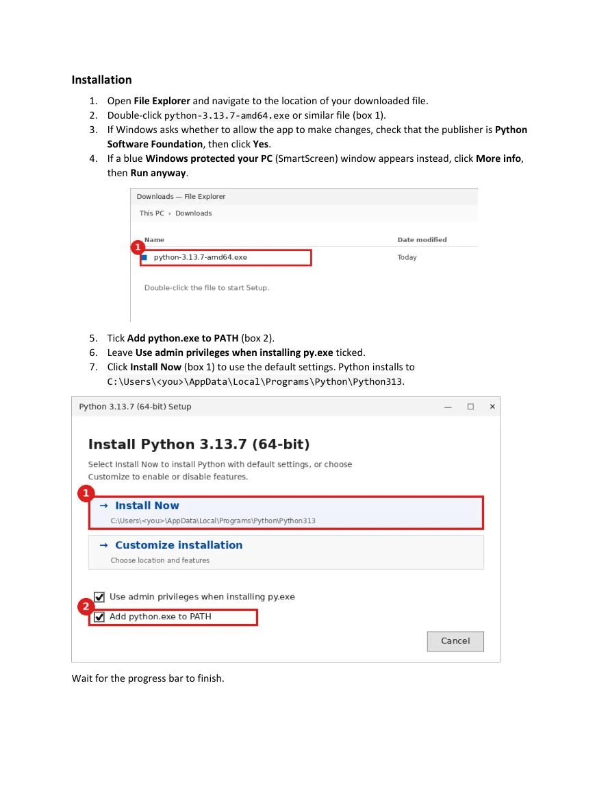
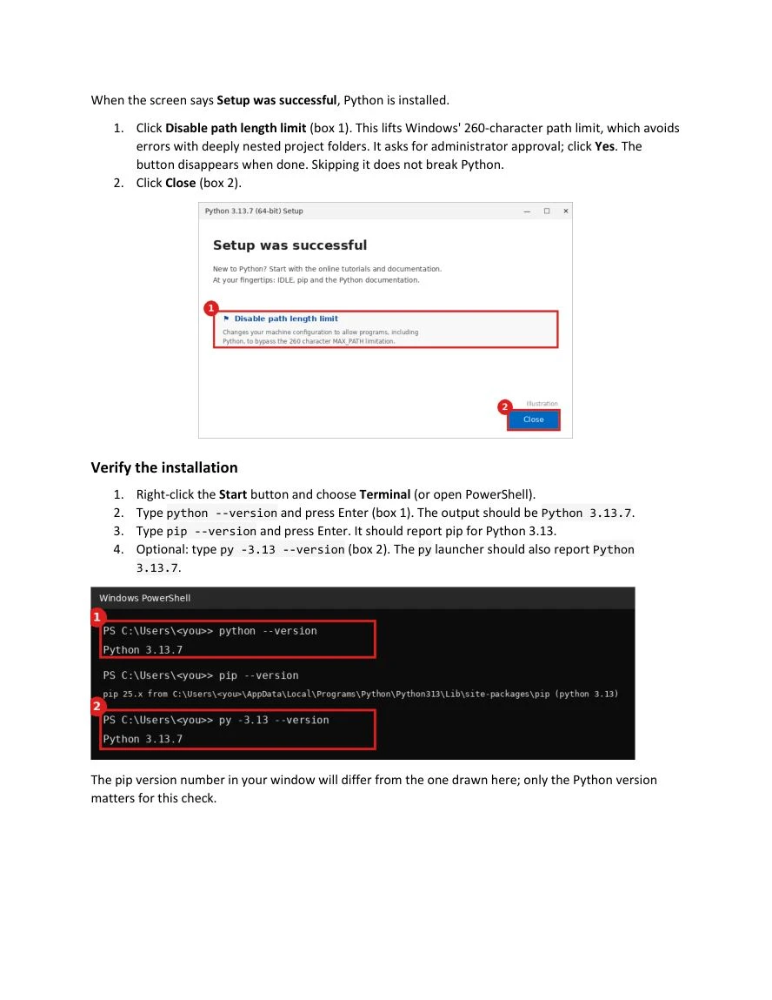
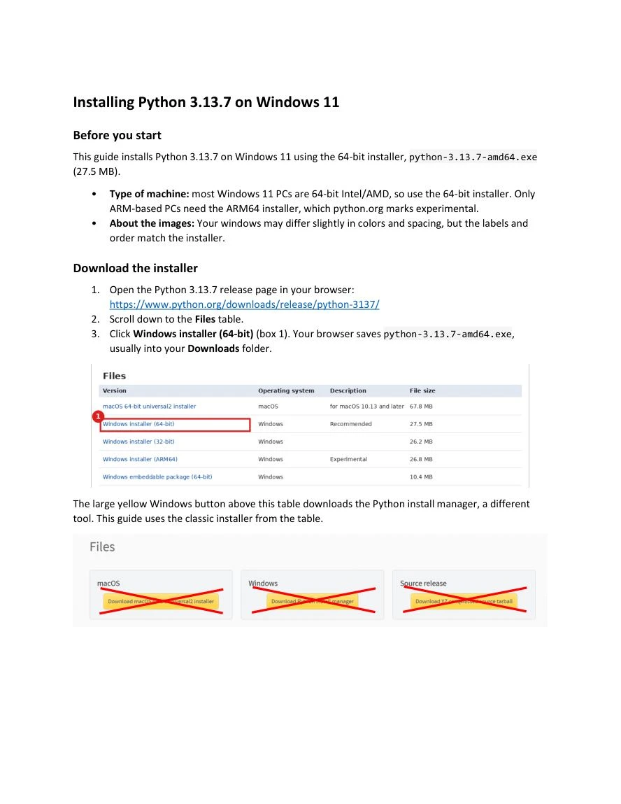
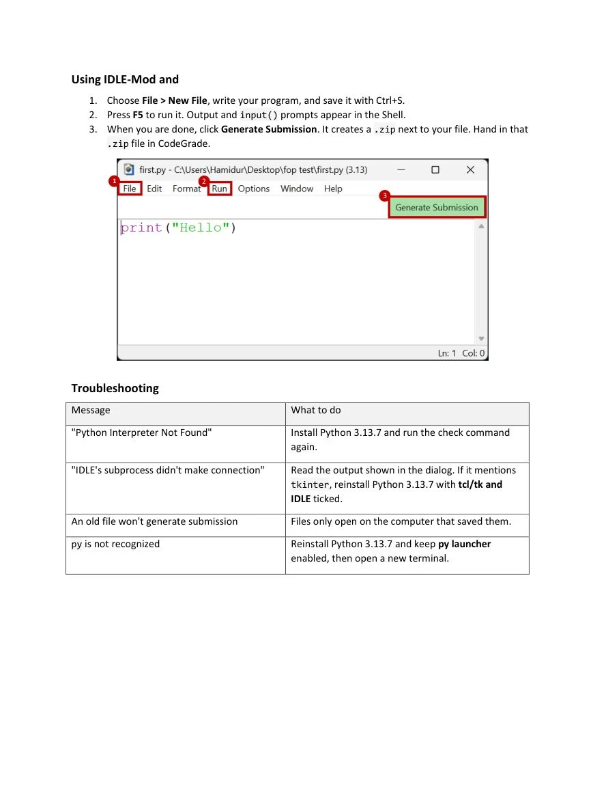
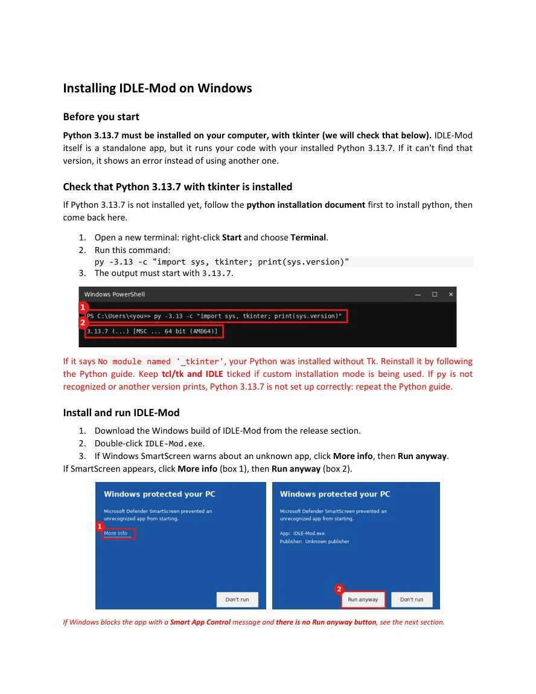
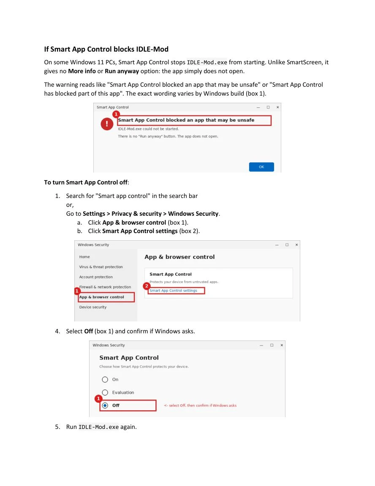
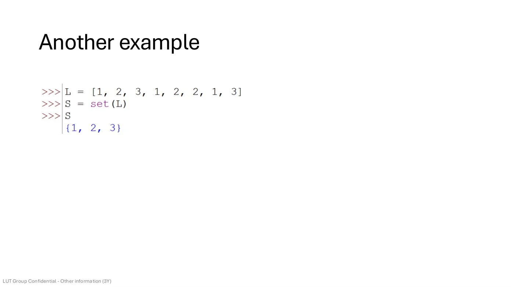
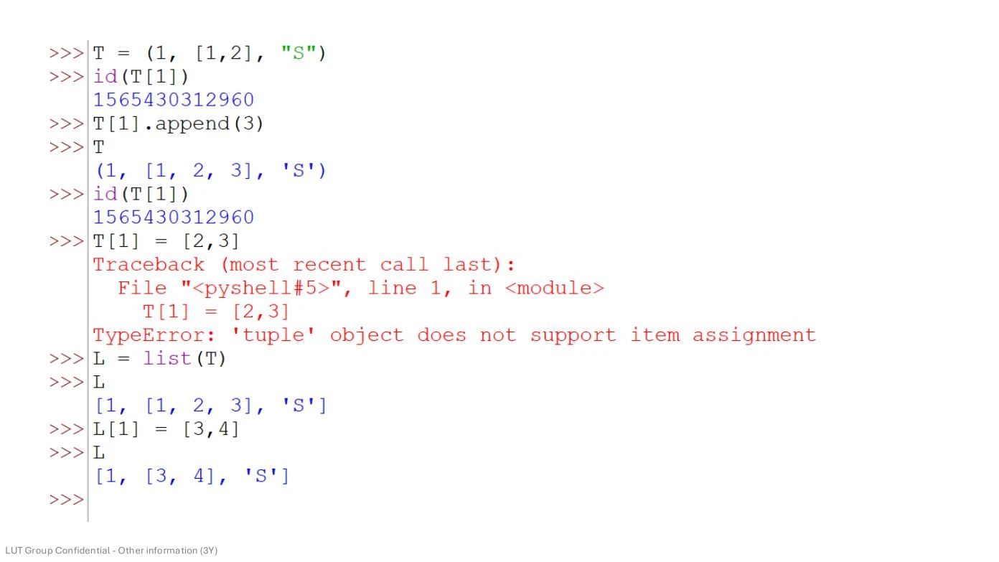
| English | 中文 | 说明 / 例句 |
|---|---|---|
| interpreter | 解释器 | Python is an interpreted language. |
| variable | 变量 | Assign a value to a variable. |
| data type | 数据类型 | Every value has a data type. |
| integer / float | 整数 / 浮点数 | 4 is an integer, 4.0 is a float. |
| string | 字符串 | A string is a sequence of characters. |
| boolean | 布尔值 | The comparison returns a boolean. |
| None | 空值 | A function without a return statement returns None. |
| type conversion | 类型转换 | Convert the input to an integer. |
| indentation | 缩进 | Python uses indentation to define blocks. |
print(7 // 2, 7 % 2, 7 / 2)解：// 是整除取整数部分 → 3；% 取余 → 1；/ 永远是浮点除法 → 3.5。输出：3 1 3.5。
解：age = int(input("Age: ")) 把字符串转成整数，再 print(age + 10)。若忘写 int()，得到的是字符串拼接 "2010"，或者直接 TypeError。
False：0、"0"、""、None、[]、0.0解：除 "0" 以外全是假值。"0" 是一个长度 1 的非空字符串，为 True。这是考试与调试中极高频率的坑。
3.7 的整数部分（不四舍五入）。2nd、my-var、_tmp、class、total2"120" 转成整数再乘 2，输出结果。0.1 + 0.2 == 0.3 的结果是 False。参考答案与思路
1. print(int(3.7)) 或 print(3.7 // 1)，结果均为 3。
2. 只有 _tmp 与 total2 合法。2nd 数字开头，my-var 含减号，class 是关键字。
3. print(int("120") * 2) → 240。注意不能写 "120" * 2，那会得到 "120120"。
4. 二进制浮点无法精确表示 0.1、0.2，相加得 0.30000000000000004。比较浮点数应写 abs(a - b) < 1e-9。
// 与 / 的区别、% 的用法、int()/float()/str() 的转换、type() 判断类型。input() 返回的永远是字符串；int("4.2") 会报错，要先 float() 再 int()。2 ** 1000；浮点用 IEEE 754 双精度，15–16 位有效数字。- 先想清楚要存什么类型的数据，再选 int / float / str / bool；
- 凡是来自
input()的值，默认就是字符串，用前必须转换； - 写完一行打印出来看一眼，确认类型与值都对；
- 看到
TypeError先查两边的类型，而不是改运算符号； - 变量名写完了能自己念一遍、别人能看懂，才算合格。
| 源文件 | 覆盖内容 |
|---|---|
| Installing Python 3.13.7 on Windows 11.pdf | 安装步骤与 PATH 选项 |
| Installing IDLE-Mod on Windows.pdf | 课程编辑器安装与 F5 运行 |
| The_structure_of_program.pdf | 语句顺序、缩进、注释 |
| Variables.pdf | 变量绑定与命名规则 |
| Data_types.pdf | int / float / str / bool / None |
| type_conversions.pdf | 显式类型转换 |
| New_type_None.pdf | NoneType 的语义 |
「0.1+0.2」的精度说明属于与原文知识点直接相关的补充，不引入新考点。
② 运算符、输入输出与 f-string
Arithmetic, Booleans, Input/Output and f-strings 第 1 章 入门：类型、运算与输入输出
上一讲把数据存好了，这一讲把数据算出来、读进来、印出去。运算符决定了能怎么算，input() 与 print() 决定了程序怎么跟人交互，f-string 决定了输出好不好看。
学完本讲你能够：
- 正确使用
+ - * / // % **六种算术运算并说明优先级； - 用
== != < > <= >=做比较，用and or not组合条件； - 用
input()读入数据并显式转换； - 用 f-string 把变量嵌进字符串，控制小数位数与对齐。
一、算术运算符
| 运算符 | 含义 | 例子 | 结果 |
|---|---|---|---|
+ | 加（字符串拼接） | 2 + 3 | 5 |
- | 减 | 5 - 8 | -3 |
* | 乘（字符串重复） | "ab" * 3 | ababab |
/ | 浮点除 | 7 / 2 | 3.5 |
// | 整除（向下取整） | -7 // 2 | -4 |
% | 取余（模） | -7 % 2 | 1 |
** | 幂 | 2 ** 10 | 1024 |
// 是向下取整不是截断：-7 // 2 = -4，而 int(-7/2) 得 -3。余数同样跟随除数符号：-7 % 2 = 1。1.1 优先级
从高到低：** → 一元负号 → * / // % → + -。同级从左往右。拿不准就加括号，这不是浪费时间。
例：2 + 3 * 4 ** 2 = 2 + 3 * 16 = 50。
二、布尔值与比较运算符
bool 只有 True 与 False。比较运算产生布尔值：
| 运算符 | 含义 |
|---|---|
== | 等于（不是赋值 =） |
!= | 不等于 |
< > <= >= | 小于 / 大于 / 小于等于 / 大于等于 |
字符串比较按字符编码逐位比："apple" < "banana" 为 True。
2.1 逻辑运算符
| 写法 | 含义 | 短路行为 |
|---|---|---|
a and b | 两者都真才真 | a 为假就不看 b |
a or b | 有一个真就真 | a 为真就不看 b |
not a | 取反 | — |
优先级：not > and > or。所以 not a and b 等价于 (not a) and b。
0 < x < 10 在 Python 里可以直接写，等价于 0 < x and x < 10。三、输入与输出
3.1 input()
input(提示文字) 会在终端显示提示并等待用户输入，返回的永远是字符串：
name = input("Your name: ")
age = int(input("Your age: "))3.2 print()
print(a, b, sep=", ", end="\n")：sep 控制多个值之间的分隔符（默认空格），end 控制结尾（默认换行）。
print("a", "b") # a b
print("a", "b", sep="-") # a-b
print("no newline", end="")四、f-string（推荐写法）
在字符串前加 f，用花括号嵌变量或表达式：
name = "Zishuo"
score = 87.456
print(f"{name} scored {score:.1f}") # Zishuo scored 87.5
print(f"{score:8.2f}|") # 宽度 8，保留 2 位：" 87.46|"
print(f"{42:05d}") # 0042
print(f"{0.25:.1%}") # 25.0%| 格式符 | 含义 |
|---|---|
:.2f | 保留两位小数 |
:8.2f | 总宽 8，右对齐，两位小数 |
:<8 / :>8 / :^8 | 左 / 右 / 居中，宽度 8 |
:05d | 整数，补零到 5 位 |
:.1% | 转百分比，一位小数 |
:, | 千分位分隔，如 1,234,567 |
{score:.2f} 写对是最常见的送分点，也是最常见的丢分点。花括号里冒号左边是值、右边是格式，顺序不能反。五、几个高频内置函数
| 函数 | 作用 | 例子 |
|---|---|---|
len(x) | 长度 | len("hello") → 5 |
max() / min() | 最大 / 最小 | max(3, 9, 2) → 9 |
abs(x) | 绝对值 | abs(-4.5) → 4.5 |
round(x, n) | 四舍五入到 n 位 | round(3.14159, 2) → 3.14 |
sum(seq) | 求和 | sum([1,2,3]) → 6 |
// 是向下取整不是截断：-7 // 2 = -4，而 int(-7/2) 得 -3；余数跟随除数符号，-7 % 2 = 1。另一个坑是 input() 永远返回字符串，age + 10 会拼接或报错，必须先转换。写 f"{score:.2f}" 时冒号左边是值、右边是格式，顺序不能反。
优先级从高到低：** → 一元负号 → * / // % → + -，拿不准就加括号。and／or 有短路求值，name = input() or "anonymous" 能给出默认值。它们返回的是操作数本身而非布尔值：3 and 0 得 0，0 or 5 得 5；在 if 里非零当真，但赋值时拿到的是那个值。
原版图页（源 PDF 插图页）
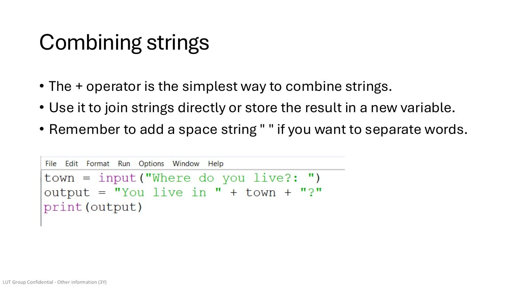
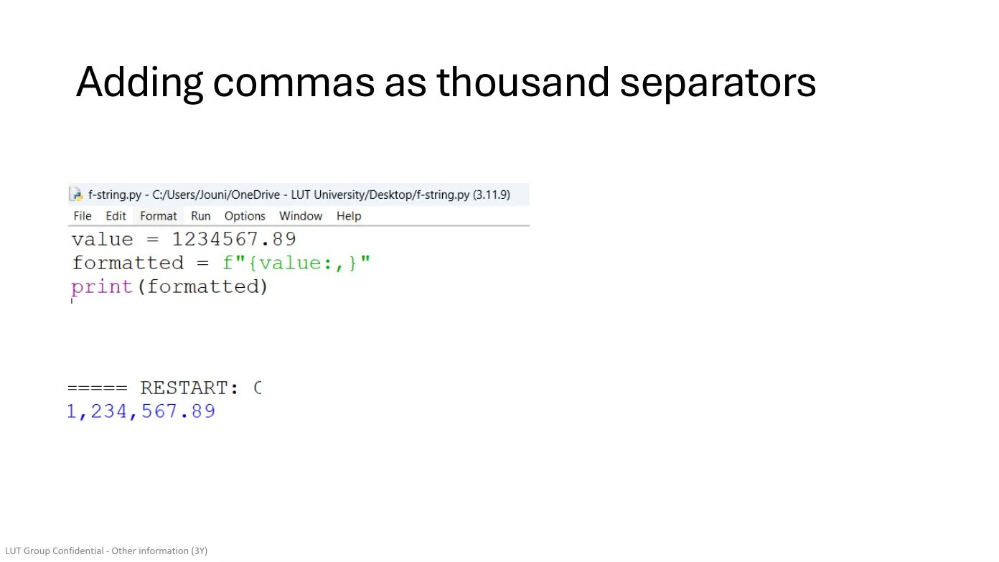
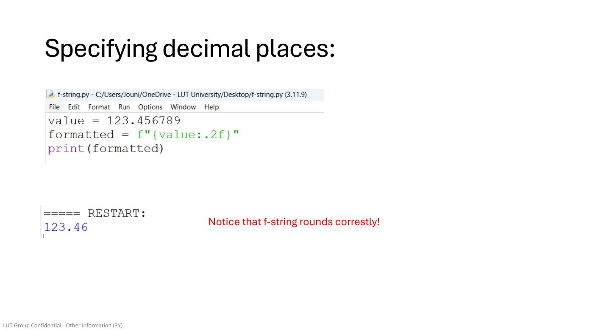
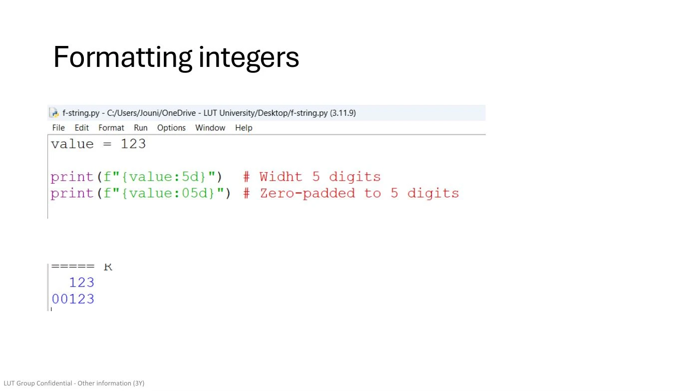
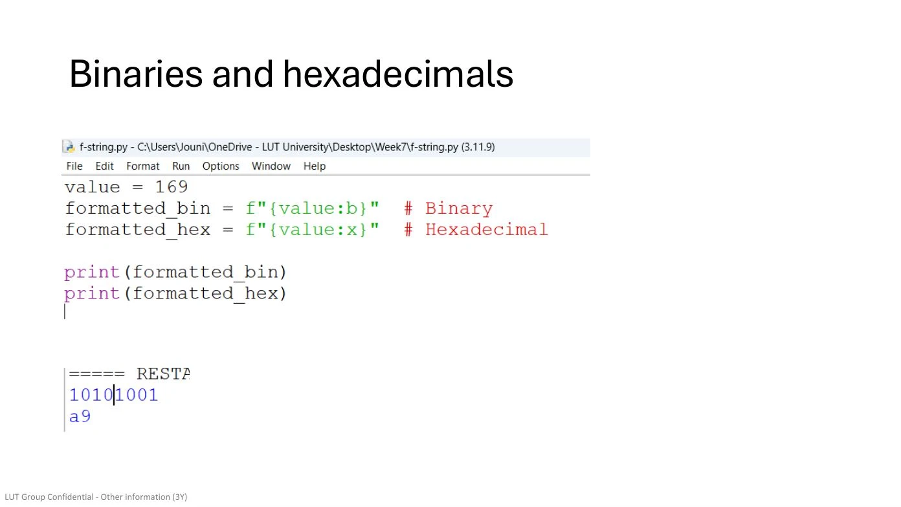
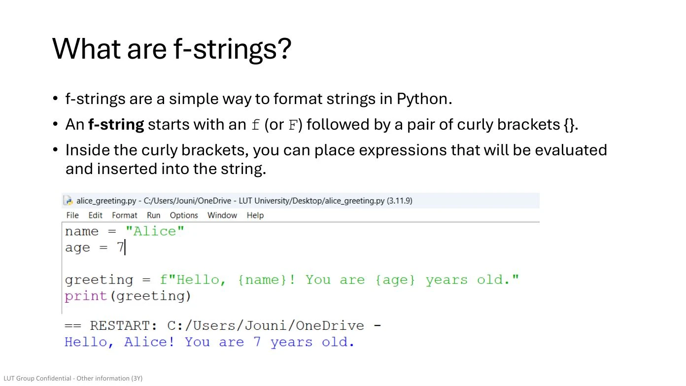
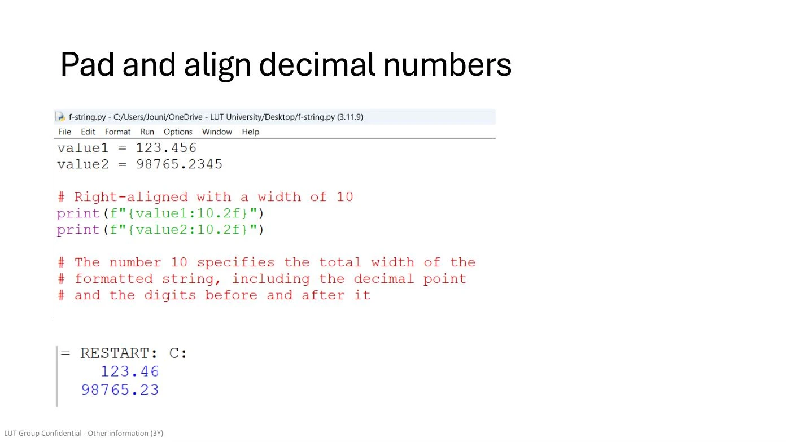
| English | 中文 | 说明 / 例句 |
|---|---|---|
| arithmetic operator | 算术运算符 | The operator ** means exponentiation. |
| precedence | 优先级 | Multiplication has higher precedence than addition. |
| comparison operator | 比较运算符 | Use == to test equality. |
| boolean operator | 逻辑运算符 | and, or and not are boolean operators. |
| short-circuit | 短路求值 | and stops evaluating once a falsy value is found. |
| prompt | 提示文字 | The input prompt is shown to the user. |
| format specifier | 格式说明符 | {:.2f} keeps two decimal places. |
| padding | 填充 / 对齐 | Use :>8 to right-align in a field of width 8. |
解：r = float(input("r: "))，area = 3.14159 * r ** 2，print(f"Area = {area:.2f}")。注意先 float()，否则字符串不能做幂运算。
int() 打包，判断 137 是否为奇数，并输出各位数字之和。解：奇数 → 137 % 2 == 1。各位和：137 // 100 = 1，137 // 10 % 10 = 3，137 % 10 = 7，合计 11。这是 // 与 % 的经典组合。
print(1 if 5 > 3 else 2, not 0, 3 and 0)解：5 > 3 为真取 1；not 0 为 True；3 and 0 返回 0（and 返回第一个假值）。输出 1 True 0。
17 // 5、17 % 5、-17 % 5 的值。参考答案与思路
1. a=int(input());b=int(input()) 然后 print(a//b, a%b)。除数为 0 时会抛 ZeroDivisionError。
2. print(f"{0.876:.1%}") → 87.6%。
3. 分别是 3、2、3。余数符号跟随除数（5 为正），所以 -17 % 5 = 3。
4. n % 2 == 0 and n > 10。也可写成 n > 10 and not n % 2。
input() 必须转换类型、逻辑运算符优先级。= 与 == 混用；"5" + 5 的 TypeError；f-string 忘写前面的 f，结果原样打出花括号。and 与 or 返回的是操作数本身而非布尔值，所以可以写 name = input() or "anonymous"。- 把所有
input()的结果立刻包上int()或float()； - 写复杂表达式时先加括号，跑通后再考虑化简；
- 输出涉及小数就固定格式，不要让它打出 15 位；
- 比较浮点相等时用误差容忍，不要写
==； - 交作业前把每个 print 的期望值和实际值对一遍。
| 源文件 | 覆盖内容 |
|---|---|
| Arithmetic_operations.pdf | 七种算术运算符与优先级 |
| Bool.pdf | 布尔类型与真值表 |
| Boolean_operators.pdf | and / or / not 与短路 |
| Input_output.pdf | input / print 的参数 |
| F-strings.pdf | 格式符与对齐 |
| Build_in_functions.pdf | len / max / min / abs / round / sum |
浮点比较的容差写法属于必要的工程补充。
第 2 章 字符串与打印 1 讲 章节页 →
③ 注释、字符串与输出控制
Comments, Strings and Print Control 第 2 章 字符串与打印
本节定位
第 2 章前半部分讲的是同一件事的两面：让机器读懂人、也让人读懂机器。注释把意图写进代码，字符串承载所有文本，print 的 sep 与 end 决定版式，round() 与 int() 决定小数怎么落地。
上一讲解决了「数据怎么算、怎么读进来、怎么印出去」；这一讲把文本本身拆开：字符怎么编号、怎么切段、为什么改不动。下一讲开始让程序做判断。
学完本讲你应当能够：
- 用
#与 docstring 写出有用的注释，而不是复述代码 - 说明
\n、\t、\\、\"各自是什么意思 - 用正索引和负索引取出任意一个字符，并解释
IndexError的来源 - 用切片取出子串、反转字符串，并说清「含 start 不含 stop」
- 解释字符串为什么不可变，改用切片重组来「修改」它
- 用
sep/end控制多值输出与不换行输出
一、注释：写给人看的代码
课件先从动机讲起：真实的程序会长到几百行、几百个文件（Part 1 p2），到那时连作者本人也会忘记某一行为什么要那样写。注释（comment）就是留给「人」读的说明，解释器整段跳过。
1.1 单行注释以 # 开始
从 # 到行尾都属于注释，不会被运行（Part 1 p3）。它既可以独占一行，也可以写在代码右边当行内注释。
# 这一整行都是注释，解释器什么也不做
price = 12.5 # 行内注释：# 之前照常执行
name = "page#1" # 这个 # 在字符串里面，不算注释
print(name)page#1最后一行给出了一条容易忽略的边界：# 只有出现在字符串之外才开启注释；写在引号里它就是普通字符。链接、颜色值 "#ff0000"、井号标签都不需要转义。
1.2 三引号字符串与文档字符串
课件讲多行字符串时说「一件事占一行太麻烦」，于是用三个引号把多行包起来（Part 2 p5）。这种写法常被借来当块注释：
"""
这段说明被当作块注释使用。
解释器仍会创建这个字符串对象，只是没有变量接收，
于是它立刻被丢弃，效果看起来与注释相同。
"""
print("done")严格说它不是注释，而是「未绑定变量的字符串字面量」。真正有身份的是放在函数、类或模块第一行的那种字符串，叫文档字符串（docstring）：
def area(r):
"""Return the area of a circle with radius r."""
return 3.14159 * r ** 2
print(area(2))
help(area)help(area) 会把 docstring 打印出来——这正是课程示例程序里每个函数开头都写一句 """Prints the menu options for calculating areas.""" 的原因：它既是注释，又能被工具读取。
x = x + 1 # add one 是废话；x = x + 1 # 补偿从 0 开始的下标 才有价值。二、字符串是一串字符
2.1 定义与长度
字符串（string）是字符的序列：字母、数字、符号、空格、汉字各算一个字符。用一对单引号或一对双引号包起来即可，两种写法完全等价（Part 2 p2）：
s1 = 'This is a string'
s2 = "This is a string"
print(s1 == s2)
print(len("programming"))True
11len() 返回字符个数（Part 2 p3），数的是「字符」而不是「字节」：len("中文") 得 2。
2.2 转义序列
有些字符没法直接写进引号里（引号本身、换行），于是用反斜杠开头的转义序列（escape sequence）表示（Part 2 p4）。
| 转义写法 | 实际内容 | 典型用途 |
|---|---|---|
\\ | 一个反斜杠 | Windows 路径、正则表达式里常见 |
\' | 单引号 | 在单引号字符串里表示引号本身 |
\" | 双引号 | 在双引号字符串里表示引号本身 |
\n | 换行 | newline，最常用 |
\t | 制表符 | tab，用来对齐列 |
print("第一行\n第二行")
print("姓名\t年龄")
print("He said \"hi\"")
print('It\'s ok')第一行
第二行
姓名 年龄
He said "hi"
It's ok第二行的输出里，姓名与年龄之间是一个制表符（显示宽度随终端而定），所以看起来像几个空格。
2.3 多行字符串
text = """第一行
第二行
第三行"""
print(text)
print(len(text))内容里的真实换行会原样变成字符串中的 \n，所以 len(text) 把换行符也算进去。这里有个隐蔽的坑：三引号内部每行行首的空白也是字符，把多行字符串写在缩进很深的函数里，内容会凭空多出一排空格。
2.4 拼接与重复
print("Hello" + " " + "World")
print("-" * 20)
print(("ab" + "\n") * 2, end="")Hello World
--------------------
ab
ab+ 只能把字符串接字符串："a" + 1 抛 TypeError，必须先 str(1)。乘法 * 需要一个整数，"ab" * 0 得空字符串，负数也得空字符串。
"abc" "def" 就是 "abcdef"。写长句时很方便，但列表里漏了逗号写成 ["a" "b"]，会静默变成只有一个元素 "ab"，不报错、很难发现。三、索引：正着数与倒着数
每个字符有一个位置编号，从 0 开始（Part 3 p2）。长度为 12 的 "I love code!"：I 是 0，空格是 1，l 是 2……最后一位 ! 是 11。
s = "I love code!"
print(s[0], s[2], s[11])
print(len(s) - 1)I l !
11写 s[len(s) - 1] 而不是硬编码 s[11]，字符串一变长度就不需要改代码。负索引（negative index）从右往左数，最后一位是 -1（Part 3 p3）：
s = "I love code!"
print(s[-1])
print(s[-2])
print(s[-len(s)])!
e
Ilen(s) - 1 或小于 -len(s)，会抛 IndexError: string index out of range。空字符串连 s[0] 都不能取。负索引的合法范围是 -len(s) 到 -1。四、字符串不可变
immutable 的意思是「创建之后内容不能改」（Part 3 p4）。下面这条语句不是「把第 0 个字符换成 H」，而是直接报错：
s = "hello"
s[0] = "H"TypeError: 'str' object does not support item assignment能做的是整体换一个新字符串：s = "Hello"。要记住区别：这是「让变量指向另一个字符串」，不是「修改原来那个字符串」。本讲末尾的切片重组，以及第 8 讲的列表可变性，都建立在这一点上。
五、切片：一次取一段
切片（slice）的完整形式是 s[start:stop:step]，规则只有一条：含 start，不含 stop（Part 3 p5）。三个参数都可以省略。
| 写法 | 含义 | 例子（s = "I love code!"） | 结果 |
|---|---|---|---|
s[2:6] | 下标 2 到 5 | s[2:6] | love |
s[:4] | 开头到下标 3 | s[:4] | I lo |
s[7:] | 下标 7 到结尾 | s[7:] | code! |
s[:] | 整串的副本 | s[:] == s | True |
s[::2] | 每隔一个取 | s[::2] | Ilv oe |
s[::-1] | 整串反转 | s[::-1] | !edoc evol I |
三条边界：切片越界不报错（s[5:100] 自动截到末尾）；start 大于 stop 且步长为正时返回空串 ""；切片得到的是新字符串，与原来不是同一个对象。
因为切片产生新串，「改字符串」的标准手法就是切片重组（Part 3 p6）：把不要的段切掉，把新段拼进去。
s = "I love code!"
print(s[:2] + "really " + s[2:])I really love code!同理，把首字母改成大写可以写 s[0].upper() + s[1:]；去掉末尾换行可以写 s[:-1]（仅当确实以换行结尾时）。
s[::-1] 反转；s[-3:] 取末三位；s[1:] 去掉首字符。考试里出现频率极高，也是写回文、扩展名、日期重排的通用零件。六、print 的 sep 与 end
print() 有两个可选参数控制版式（Part 4 p2–p6）：sep 是多个值之间的分隔符，默认一个空格；end 是结尾追加的内容，默认换行 \n。
print("a", "b", "c")
print("a", "b", "c", sep="-")
print("a", "b", "c", sep="")
print("no newline", end="")
print(" continues here")
print("end of report", end="\n\n")a b c
a-b-c
abc
no newline continues here
end of report
sep 可以是任意字符串：空串、" -> "、", "；end 也是，包括 ""（不换行）、"\t"（同行制表）、"\n\n"（多空一行）。
这两个参数只影响 print 的输出，不改变数据本身："a" + "b" 永远是 "ab"，不会因为 sep 变成 a-b。循环里逐个印又不想换行，写 print(item, end="")；想用逗号隔开，写 print(item, end=", ")，并自行处理末尾多出来的那个逗号。
print("a" + "b", sep="-") 输出的仍是 ab：只有一个参数，分隔符没有用武之地。想要 a-b 必须写 print("a", "b", sep="-")。七、int、float 与 round
7.1 round() 是四舍五入，但有两个意外
round(x) 返回最接近的整数，round(x, n) 保留 n 位小数（Part 5 p2）。
print(round(6.7))
print(round(6.7, 0))
print(round(3.14159, 2))
print(round(2.5), round(3.5))7
7.0
3.14
2 4意外一：round(6.7, 0) 得 7.0 而不是 7——只要给了第二个参数，返回类型仍是 float。意外二：round(2.5) 得 2 不是 3，因为 Python 用「银行家舍入」（banker's rounding），恰好 .5 时向偶数靠。
7.2 int() 是截断，不是四舍五入
int(x) 把 float 转成 int 时，小数部分被直接丢弃（Part 5 p2）。
print(int(6.9))
print(int(-6.9))
print(int(3.0))6
-6
3int(-6.9) 得 -6，是向零截断而不是向下取整；要向下取整得用 // 或第 10 讲的 math.floor。字符串转数字有前提：int("42") 可以，int(" 42 ") 也可以（两端空白被忽略），int("3.7") 不行——抛 ValueError，得先 float("3.7") 再 int()。
八、常见错误与调试提示
"total: " + 12 抛 TypeError。三种改法：str(12)、交给 print 的 sep、或 f"total: {12}"（推荐）。print("hello) 报 SyntaxError: unterminated string literal。错误标记常落在行尾，真正的问题在少了一个引号，往回数引号个数即可。s[0:3]；写成 s[0:2] 只有两个字符。自检方法：切片结果长度 = stop - start（步长为 1 时）。len()、单个下标、切片分别打印出来，比盯着代码猜快得多；也可以把字符串放进 repr() 里，让 \n 显示成两个字符。字符串不可变（immutable）：s[0] = "H" 抛 TypeError，只能让变量指向新串。切片是这个限制的副产品——s[::-1] 反转、s[-3:] 取末三位、s[1:] 去首字符，都产生新对象；规则只有“含 start 不含 stop”，取前三字符是 s[0:3]。切片越界不报错，和索引越界抛 IndexError 形成对比。
注释写“为什么”而非复述“做什么”：x = x + 1 # add one 是废话，写清补偿下标才有价值。三引号的多行文本严格说不是注释，是未绑定变量的字符串字面量；只有函数／类第一行的才是 docstring，能被 help() 读出。两隐蔽坑：相邻字符串字面量会静默拼接，print("a"+"b", sep="-") 只有一个参数，分隔符不生效。
原版图页（源 PDF 插图页）
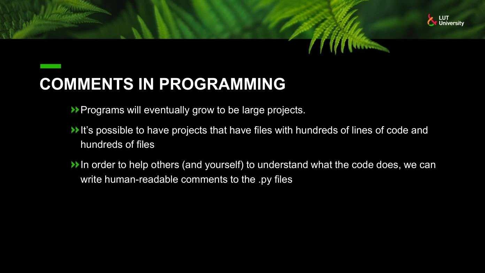
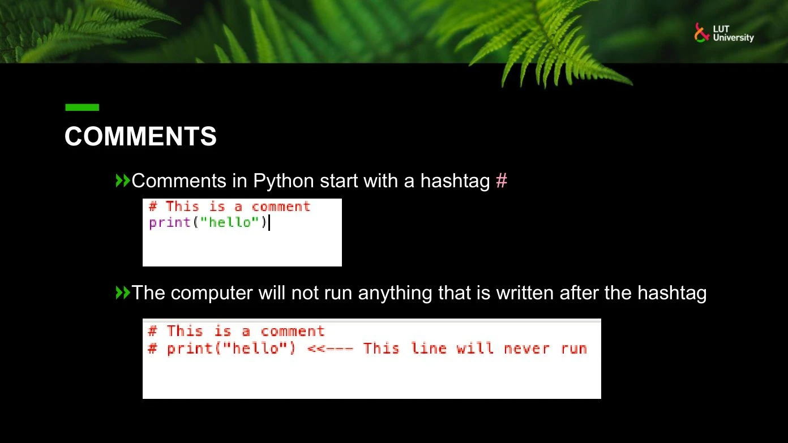
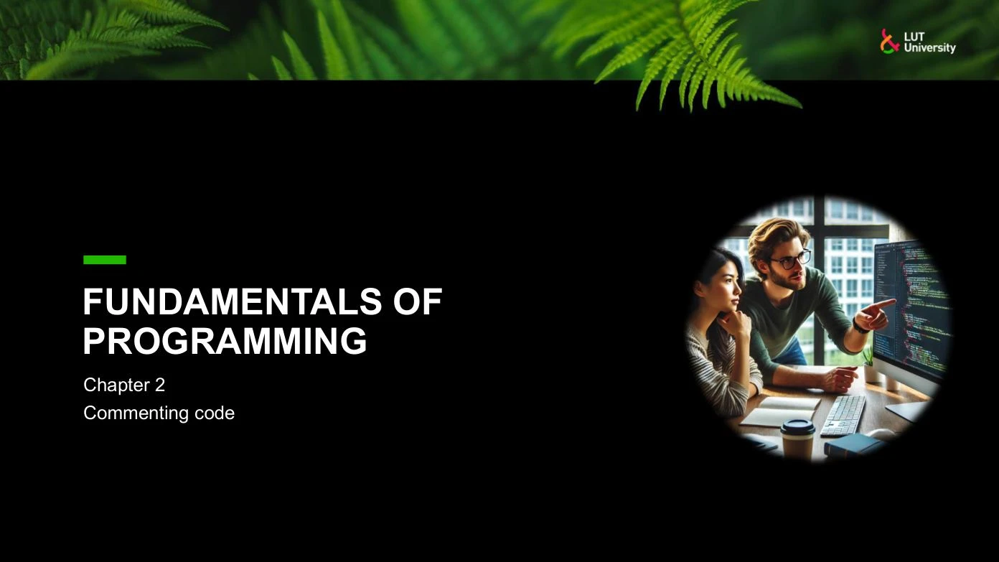
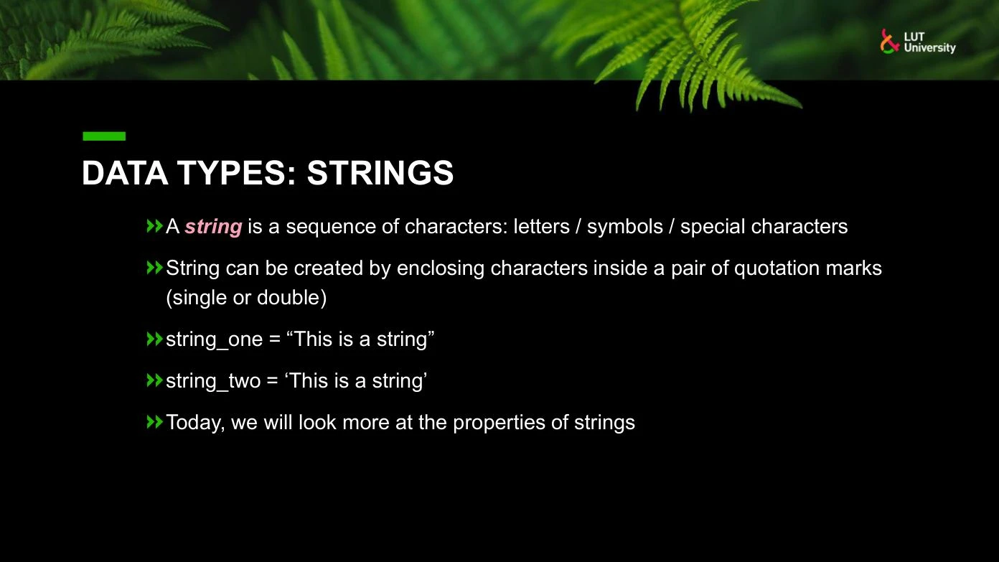
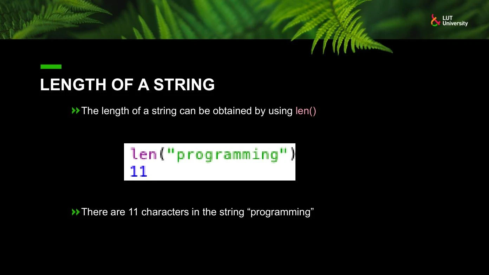

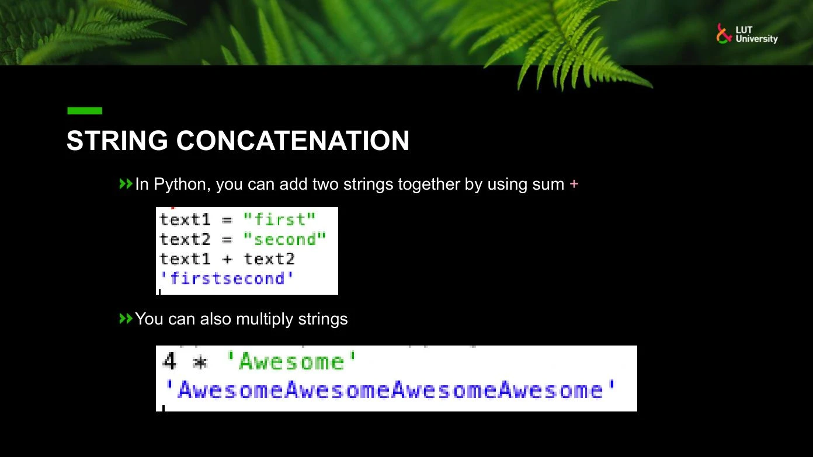

| English | 中文 | 说明 / 例句 |
|---|---|---|
| comment | 注释 | Anything after # is ignored by the interpreter. |
| docstring | 文档字符串 | A string as the first statement of a function; readable with help(). |
| escape sequence | 转义序列 | \n is a newline, \t is a tab. |
| immutable | 不可变的 | A string cannot be changed in place: s[0] = "H" raises TypeError. |
| index | 索引 / 下标 | The position of a character, starting from 0. |
| negative index | 负索引 | s[-1] is the last character. |
| slice | 切片 | s[start:stop] includes start but excludes stop. |
| concatenation | 拼接 | Joining two strings with +. |
| repetition | 重复 | "ab" * 3 gives "ababab". |
| len() | 长度 | len("programming") returns 11. |
| sep | 分隔符 | print("a", "b", sep="-") prints a-b. |
| end | 结尾字符 | print("x", end="") suppresses the newline. |
| rounding | 舍入 | round(3.14159, 2) returns 3.14. |
| truncation | 截断 | int(6.9) returns 6, dropping the decimals. |
s = "Fundamentals of Programming"，输出它的长度、首字符、末字符、反转串与大写形式。把五个操作分开写，输出带标签，便于核对：
s = "Fundamentals of Programming"
print("length:", len(s))
print("first:", s[0])
print("last:", s[-1])
print("reversed:", s[::-1])
print("upper:", s.upper())输出：
length: 27
first: F
last: g
reversed: gnimmargorP fo slatnemadnuF
upper: FUNDAMENTALS OF PROGRAMMING逐点解释：len(s) 数到 27（含两个空格）；s[0] 是 F；s[-1] 等价于 s[26]，是 g；s[::-1] 步长为 −1，从末尾倒着走；s.upper() 返回新串，原串不变。
sep 画分隔线。思路：表格宽度固定为 20，用 f-string 的 :<12（左对齐）与 :>8（右对齐）拼列；分隔线用 print("-" * 20) 生成。
item = "Coffee beans"
price = 9.5
qty = 3
total = price * qty
print("ITEM AMOUNT")
print("-" * 20)
print(f"{item:<12}{total:>8.2f}")
print("-" * 20)
print("TOTAL", f"{total:.2f}", sep=" = ")输出：
ITEM AMOUNT
--------------------
Coffee beans 28.50
--------------------
TOTAL = 28.50解释：:<12 把 "Coffee beans" 补到 12 列左对齐；:>8.2f 把 28.5 补到 8 列右对齐并保留两位；最后一行演示 sep=" = " 只在多参数时生效。
1:02:05 的形式。思路：小时 = // 3600；余下秒数再除以 60 得分钟；最后 % 60 得秒。分钟与秒要求两位补零，用 f-string 的 :02d。
total = 3725
h = total // 3600
m = total % 3600 // 60
s = total % 60
print(f"{h}:{m:02d}:{s:02d}")1:02:05解释：3725 // 3600 = 1；3725 % 3600 = 125，125 // 60 = 2；3725 % 60 = 5。% 与 // 的配合是「拆分数量」的通用套路，第 5 讲算硬币找零会再遇到。
- 判断
"level"与"Level"是否回文，分别输出结果。 - 从邮箱
"student.name@lut.fi"里取出用户名与域名两部分。 - 把金额 1234567.891 打印成
1,234,567.89。 - 把
"2024-11-20"改写成20.11.2024（只用切片与拼接）。 - 用一条
print输出1-2-3-4-5，再用循环外的方式输出12345（提示：sep）。
答案与思路
1. 回文判断统一写 s == s[::-1]。"level" == "level" → True；"Level" == "leveL" → False。若要不区分大小写，先 s.lower() 再比较。
2. user, domain = s.split("@") 需要解包（第 8 讲元组）；本讲范围内用 s.split("@")[0] 与 s.split("@")[-1]，得到 student.name 与 lut.fi。
3. print(f"{1234567.891:,.2f}") → 1,234,567.89。逗号是千分位分隔符，必须写在 .2f 前面。
4. 年月日各四位两位两位，固定长度最好切：d[8:] + "." + d[5:7] + "." + d[:4] → 20.11.2024。若格式可能变化，改用 split("-") 再倒序拼接。
5. print(1, 2, 3, 4, 5, sep="-") → 1-2-3-4-5；print(1, 2, 3, 4, 5, sep="") → 12345。两题都不要写字符串加法。
s[-1]；sep 与 end 的默认值；字符串不可变的含义；round() 与 int() 的区别。s[:3] 不是 s[:2]；取末三位是 s[-3:] 不是 s[-2:]。画格子数一遍再写。s[0:3] = "abc" 对字符串非法（TypeError），切片只能读；要「改」必须拼一个新串并重新赋值给变量。"C:\temp" 里的 \t 会被当成制表符；需要字面反斜杠时写 "C:\\temp"，或用正斜杠 "C:/temp"。round() 的银行家舍入、int() 的向零截断、以及 0.1 + 0.2 != 0.3 这三件事常被拿来出判断题。浮点比较别写 ==，写 abs(a - b) < 1e-9，或先 round(a, 5)。操作清单
动一段文本之前，先问四件事
- 这段文本的长度是多少？最后一位下标是
len(s) - 1，负索引最后一位是 −1 - 我要的是「一个字符」还是「一段子串」？一个字符用
s[i]，一段用切片 - 切片的 stop 要不要 +1？默念一遍「含头不含尾」
- 结果是只读展示，还是要拼回一个新串？字符串永远不能被原地修改
调试字符串输出
- 用
repr(s)看一眼隐藏的\n与\t - 数字与字符串拼接前先
str()，或直接用 f-string - 多值输出先用
sep，不要手工拼"-" - 循环里不想换行时检查是否写了
end="" - 切片报空串时，先打印
len(s)确认没有越界
| 源文件 | 页码 | 覆盖知识点 |
|---|---|---|
| Ch 2 - Part 1 - Comments.pdf | p2–p3 | 注释动机、# 注释规则、解释器跳过注释 |
| Ch 2 - Part 2 - Strings.pdf | p2–p6 | 字符串定义、len()、转义序列表、多行字符串、+ 与 * |
| Ch 2 - Part 3 - More on strings.pdf | p2–p6 | 正/负索引、不可变性、切片六种写法、切片重组修改字符串 |
| Ch 2 - Part 4 - Modify Printing.pdf | p2–p6 | sep 与 end 的默认值和任意取值、两者组合 |
| Ch 2 - Part 5 - Converting ints and floats.pdf | p2 | round(x)、int(x) 截断 |
跳过项：Part 2–4 中标注 Example1.py–example7.py 的截图页只给出代码文件本身（代码已并入本讲示例与正文），不另设页码；Moodle 上的「课程考核 / 作业截止」类行政页不进入本讲。
拓展项：docstring 与 help()、相邻字面量隐式拼接、repr() 调试、银行家舍入的解释，都属于在原知识点上补背景，不引入新考点。
第 3 章 条件与布尔逻辑 1 讲 章节页 →
④ 条件分支与 match-case
Conditionals, if-elif-else and match-case 第 3 章 条件与布尔逻辑
本节定位
前三讲的程序是一条直线：从上到下，每行都执行。这一讲让程序第一次出现「分岔」——根据数据的真假决定走哪条路，其余路径直接跳过。这是控制结构（control structure）的起点，也是后面循环、函数里所有判断的基础。
上一讲把文本切开、拼好、印出去；这一讲用比较和逻辑运算把文本与数字变成 True / False，再交给 if 决定去留。下一讲用同样的布尔表达式控制循环。
学完本讲你应当能够：
- 写出
== != < > <= >=六种比较，并解释链式比较x < y < 15 - 用
and/or/not组合条件，并说明短路求值的影响 - 写出缩进正确的
if/if-else/if-elif-else，并解释块的边界 - 根据取值范围设计互斥、顺序正确的
elif链 - 用
match-case改写长elif链，并用case _兜底
一、为什么需要分支
到目前为止，程序只有顺序结构：第 1 行、第 2 行……全部执行（if.pdf p2）。但现实充满选择：穿什么取决于天气，吃什么取决于忌口。程序也一样，需要「满足条件才做」。
控制结构（control structure）让执行顺序依赖数据。写法极其简单：
age = 20
if age >= 18:
print("You are an adult.")
else:
print("You are a minor.")读法：if 后面是条件，条件为真执行缩进的那一块；else 后面是条件为假时执行的那一块。条件本身是一个布尔表达式（boolean expression），值只能是 True 或 False。
二、布尔表达式：比较运算符
2.1 六种比较
| 运算符 | 含义 | 例子（x = 5, y = 10） | 结果 |
|---|---|---|---|
== | 等于 | x == y | False |
!= | 不等于 | x != y | True |
> | 大于 | x > y | False |
< | 小于 | x < y | True |
>= | 大于等于 | x >= y | False |
<= | 小于等于 | x <= y | True |
== 是比较，= 是赋值，这两个符号永远不要写混。x = y 不会返回真假，它会把 y 的值塞进 x，然后 if x = y: 直接是语法错误。
2.2 链式比较
数学里的 0 < x < 10 在 Python 里可以直接写，等价于 0 < x and x < 10，而且中间那个 x 只计算一次：
x = 5
y = 10
print(x < y < 15)
print(0 <= x <= 5)True
True2.3 字符串比较
字符串按字符的编码逐位比较，本质上就是字典序（lexicographic order）。规则有三条：从左往右逐字符比，第一个不同的字符决定大小；前缀更短的更小（"ab" < "abc"）；大写字母排在小写字母前面（编码 65 起 vs 97 起）。
string1 = "hello"
string2 = "world"
print(string1 == string2)
print(string1 < string2)
print("Hello" < "hello")
print("apple" < "banana")False
True
True
True字符串不能和数字比大小（Example2 的最后一行）：
print("banana" > 5)TypeError: '>' not supported between instances of 'str' and 'int'
原因是两种类型没有定义比较规则。想比「长度」必须先取 len()：len("banana") < 5 是 False。
2.4 浮点比较
浮点数在内存中是近似值（第 1 讲的数据类型、Extra reading 都提过），所以下面这行看起来该真、其实为假：
print(0.1 + 0.2)
print(0.1 + 0.2 == 0.3)0.30000000000000004
False判断两个浮点数「相等」要允许误差：abs(a - b) < 1e-9，或先把两边都 round(a, 5) 再比。
三、逻辑运算符
3.1 and / or / not
| 写法 | 含义 | 为真的条件 |
|---|---|---|
a and b | 并且 | a、b 都为真 |
a or b | 或者 | 至少一个为真 |
not a | 取反 | a 为假 |
a = True
b = False
print("a and b:", a and b)
print("a or b:", a or b)
print("not a:", not a)
print("not False:", not False)a and b: False
a or b: True
not a: False
not False: True优先级从高到低是 not → and → or，比较运算符又高于它们。所以 not a and b 等于 (not a) and b；a == 1 or b == 2 and c == 3 等于 (a == 1) or ((b == 2) and (c == 3))。条件一复杂就加括号，读代码的人会感谢你。
3.2 短路求值
and 左侧为假时右边根本不看；or 左侧为真时右边也根本不看。这叫短路（short-circuit），Example4 用一个未定义的变量演示了它：
a = True
b = False
# c 未定义
print(a or c) # True：左边已真，不再看 c
print(b and c) # False：左边已假，不再看 c
# 下面两行会报 NameError，因为真的去看了 c
# print(b or c)
# print(a and c)这解释了两件实用的事：一是 if x != 0 and 10 / x > 2: 不必担心除零，因为 x != 0 为假时右边被跳过；二是「先判断再访问」的写法是安全的。反过来，如果短路掩盖了本应暴露的错误，调试时会更难——这也是为什么 Example4 把会报错的两行注释掉而不是删掉。
True and "x" 得 "x"，False or "y" 得 "y"，0 or 5 得 5。放在 if 里结果一样（非空串、非零数都当真），但如果把表达式结果直接赋给变量，拿到的是那个操作数。初学阶段建议条件里只放比较与逻辑运算，别依赖这个特性。四、if 语句与缩进
4.1 语法骨架
基本语法（if.pdf p3）：if 关键字 → 条件 → 冒号 → 换行 + 缩进的块。
temperature = 20
if temperature > 15:
print("It's warm outside!")冒号表示「下面开始是这个 if 的块」。块内的行必须比 if 多缩进（通常 4 个空格），块在缩进退回时结束（if.pdf p6）。
4.2 缩进是语法，不是风格
别的语言用花括号 {} 划块，缩进只是好看；Python 直接用缩进定义块（if.pdf p4）。漏缩进会被判为「期望一个缩进块」：
if 5 > 2:
print("Five is greater than two!")IndentationError: expected an indented block after 'if' statement on line 1同一个块内缩进量必须完全一致（Example6）。下面这段第一行缩进 1 个空格、第二行缩进 8 个，Python 无法判断它们是否属于同一块：
if 5 > 2:
print("Five is greater than two!")
print("Five is greater than two!")IndentationError: unexpected indent还有两条实务规则：不要混用空格与 Tab——不同编辑器对 Tab 的宽度解释不同，切编辑器就会出错；IDLE 会在你回车时自动补上缩进，省事但也容易让人忘记检查层级。
4.3 块在哪里结束
缩进退回的那一行不属于 if 的块（Example7）：
i = 10
if i > 15:
print("variable i is less than 15")
print("I am NOT in if")I am NOT in if条件为假，块内那行被跳过；没有缩进的 print("I am NOT in if") 与 if 无关，照常执行。顺带一提，示例里那句提示文字写反了（i 是 10，条件 i > 15 为假），这类「注释与代码不一致」的 bug 比语法错误更难发现——读代码时以代码为准。
五、if-else：二选一
写法（if_else.pdf p2）：条件为真走第一块，为假走 else 块，两块必有一块执行。
a = int(input("Enter an integer: "))
b = int(input("Enter another integer: "))
if a > b:
print("The largest integer is", a)
else:
print("The largest integer is", b)输入 7 与 3，输出 The largest integer is 7。注意 input() 返回字符串，必须 int() 之后再比，否则比的是字典序（"10" < "9" 为真）。
六、if-elif-else：多选一
6.1 结构与执行规则
elif 是 else if 的缩写（if_else.pdf p4–p5）。执行顺序是从上往下逐个检查，第一个为真的块执行完，整个链条就结束，后面的 elif / else 全部跳过。
| 规则 | 说明 |
|---|---|
| 只有一个块执行 | 哪怕多个条件同时为真，也只走最上面那个 |
| 最多一个 else | 每个 if 链最多一个 else，且必须放最后 |
| elif 可以有多个 | 想排几个排几个，顺序即优先级 |
| else 可以省略 | 不需要兜底时省略，什么都不做 |
| 条件互斥靠你保证 | Python 不会替你检查区间是否重叠 |
6.2 顺序决定正确性
成绩等级的例子（if_else.pdf p6）是经典：
score = 85
if score >= 90:
grade = 5
elif score >= 80:
grade = 4
elif score >= 70:
grade = 3
elif score >= 60:
grade = 2
elif score >= 50:
grade = 1
else:
grade = 0
print("Grade:", grade)Grade: 4为什么能从大到小这么写？因为 85 已经满足了 >= 80，不会再往下看。如果把顺序写反（先判 >= 50），85 会命中第一条，直接得 1 分——这就是条件链最常见的逻辑错误：范围宽的放前面，后面的永远轮不到。
规则总结：判断区间时，要么按「从大到小」写 >=，要么按「从小到大」写 < 并让每条上界收紧，总之让条件互斥且覆盖全集。
6.3 一个完整的业务例子：运费
Example10 把订单金额映射到运费档位，结构与本讲完全一致：
order_value = float(input("Enter the total order value in EUR: "))
if order_value >= 100:
shipping_cost = 0
elif order_value >= 50:
shipping_cost = 5
elif order_value >= 20:
shipping_cost = 10
else:
shipping_cost = 15
print("The shipping cost for your order is " + str(round(shipping_cost, 2)) + " EUR.")输入 63.5，输出 The shipping cost for your order is 5 EUR.。三个要点：float() 而不是 int()（金额有小数）；str() 把数字拼进字符串；边界值 100、50、20 都归入「较便宜」的一档，因为用的是 >=。
七、match-case：值匹配的更整齐写法
7.1 语法
match-case 是 Python 3.10 引入的（match_case.pdf p2），作用类似 C / Java 的 switch，用来替代一长串「同一个变量反复比较」的 elif。
status_code = 404
match status_code:
case 200:
print("OK")
case 404:
print("Not Found")
case 500:
print("Internal Server Error")
case _:
print("Unknown status code")Not Found下划线 _ 是通配符（wildcard），兜住所有没匹配上的值（match_case.pdf p3）。它等价于 else，但只能出现一次且习惯放最后。
7.2 一个 case 匹配多个值
用竖线 | 把多个候选写在一起（match_case.pdf p4）：
fruit = "banana"
match fruit:
case "apple" | "banana" | "orange":
print("This is a common fruit.")
case _:
print("This is not a common fruit.")This is a common fruit.可以匹配数字、字符串、布尔值。注意 | 是「或」，不是正则里的管道，两侧只能是字面量或模式，不能写表达式。
7.3 完整例子：博物馆开放时间
Kiasma_open.py 是课程给的完整练习：给定星期几，输出开放时间。
day = input("Give a day (Mon/Tue/Wed/Thu/Fri/Sat/Sun): ")
match day:
case "Mon":
print("Closed")
case "Tue" | "Fri":
print("Open 10-20")
case "Wed" | "Thu":
print("Open 10-18")
case "Sat" | "Sun":
print("Open 10-17")
case _:
print("There is no such day")输入 Wed 输出 Open 10-18；输入 mon（小写）输出 There is no such day——match 是精确匹配，大小写敏感，所以用户输入最好先规范成 day.strip().capitalize() 或统一转小写后比较。
7.4 match 与 elif 链怎么选
| 场景 | 推荐写法 |
|---|---|
| 同一个变量与若干固定值比较 | match-case，一眼看出分支表 |
比较范围（>=、<） | if-elif，match 不适合区间 |
| 条件涉及多个变量 | if-elif |
| 需要兜底分支 | 两者都行：case _ 或 else |
功能上 match 并不比 elif 强，它换来的是可读性；所以考试里两种写法都要会读、会改。
case day: 不是「当值等于变量 day 时」，而是「新建一个叫 day 的变量并匹配任何值」，于是后面的 case 永远轮不到。要比较变量，写 case "Mon": 这样的字面量，或先把候选值放进常量。_ 是唯一安全的通配符。八、常见错误清单
if x = 5: 是语法错误；if x = 5 想表达的「判断相等」应写 ==。反过来 x == 5 单独一行只是算了个真假然后丢掉，不报错，也很难发现。if x > 5 后面没有冒号，报 SyntaxError: expected ':'。冒号是块的开场白，if / elif / else / for / while / def 全都要。>= 50 在前，高分也会掉进低档。写完用边界值（49、50、89、90）各测一遍。if "no": 恒为真，因为非空字符串为真。判断用户回答要写 if answer == "no":，不能只写字符串本身。if-elif-else 里顺序即正确性：第一个为真的分支执行完，整条链就结束。成绩若先判 >= 50，85 会命中第一条得 1；所以要么从大到小写 >=，要么从小到大收紧上界。互斥与覆盖全集要自己保证，Python 不检查重叠。浮点别直接比相等：0.1 + 0.2 == 0.3 为 False。
缩进是语法不是风格：漏缩进抛 IndentationError，同块缩进量必须一致，别混用空格与 Tab。= 是赋值，== 才是比较。短路能防除零——if x != 0 and 10/x > 2 在 x 为 0 时右边不算。但 and／or 返回操作数：True and "x" 得 "x"，赋给变量时别当成布尔值。
| English | 中文 | 说明 / 例句 |
|---|---|---|
| control structure | 控制结构 | if, for and while change the order of execution. |
| boolean expression | 布尔表达式 | An expression that evaluates to True or False. |
| comparison operator | 比较运算符 | ==, !=, <, >, <=, >=. |
| chained comparison | 链式比较 | 0 <= x <= 5 means 0 <= x and x <= 5. |
| logical operator | 逻辑运算符 | and, or, not. |
| short-circuit | 短路求值 | or stops at the first true operand; and stops at the first false one. |
| indentation | 缩进 | Indentation defines the block in Python. |
| block | 代码块 | The indented statements controlled by if. |
| elif | 否则如果 | Short for else if; checked only if the previous conditions failed. |
| match-case | 模式匹配语句 | Introduced in Python 3.10; an alternative to long elif chains. |
| wildcard | 通配符 | case _ catches every value that did not match. |
| lexicographic order | 字典序 | "Hello" < "hello" because uppercase letters come first. |
| mutually exclusive | 互斥的 | Only one branch of an if-elif chain can run. |
思路：先按「大于 0 / 等于 0 / 其余」三分支；绝对值用 abs()（第 2 讲的内置函数），不要手写两遍分支。
num = int(input("Enter a number: "))
if num > 0:
print("Positive number")
elif num == 0:
print("Zero")
else:
print("Negative number")
print("Absolute value:", abs(num))输入 -7，输出：
Negative number
Absolute value: 7解释：三个分支互斥且覆盖全部整数；abs() 让「求绝对值」不必再写一个 if。注意这里用 int()，若允许小数要改 float()，但那样 num == 0 就要写成 abs(num) < 1e-9。
规则：能被 4 整除，但不能被 100 整除；或者能被 400 整除。把「或者」直接翻译成 or，把「但是」翻译成 and not。
year = int(input("Enter a year: "))
if (year % 4 == 0 and year % 100 != 0) or year % 400 == 0:
print(year, "is a leap year")
else:
print(year, "is not a leap year")输入 1900 → 1900 is not a leap year；输入 2000 → 2000 is a leap year（被 400 整除）；输入 2024 → 闰年。
解释：括号不能省。and 优先级高于 or，这里刚好符合预期，但写清楚括号能让读者一眼确认分组。测试时至少覆盖 1900（例外）、2000（400 的例外之例外）、2024（普通闰年）、2023（普通平年）四个边界。
match-case 实现一个简易计算器：输入运算符与两个数，输出结果。思路：用 case "+" 等字面量分支；除零要在分支里单独判，避免 ZeroDivisionError（第 11 讲会系统处理异常）。
op = input("Operator (+ - * /): ")
a = float(input("First number: "))
b = float(input("Second number: "))
match op:
case "+":
print(a + b)
case "-":
print(a - b)
case "*":
print(a * b)
case "/":
if b == 0:
print("Cannot divide by zero")
else:
print(a / b)
case _:
print("Unknown operator")输入 *、3、4 输出 12.0；输入 /、1、0 输出 Cannot divide by zero。
解释：match 只负责「选哪个运算符」，除数是否为零是分支内的二级判断——这种「外层匹配 + 内层条件」的嵌套在菜单类程序里非常常见。
- 输入三个整数，按从大到小输出（先比较再交换，不要用
sorted）。 - 输入百分制成绩，按 90/80/70/60/50 输出 5/4/3/2/1/0 等级，并处理「输入不在 0–100」的情况。
- 输入一个字符，判断它是大写字母、小写字母、数字还是其他（提示：可以用比较，也可以查第 2 讲的字符串方法）。
- 用
match-case把 Kiasma 例子改成「输入小写也认」的版本。 - 输入 BMI 的两个分量（体重 kg、身高 m），按
<18.5/18.5–24.9/25–29.9/>=30输出四档结论。
答案与思路
1. 三个数排序的经典写法是三次两两交换：先让 a >= b（否则交换），再让 a >= c，最后让 b >= c。交换用 a, b = b, a（第 8 讲元组解包），本讲范围内也可用临时变量 t = a; a = b; b = t。
2. 先判合法性再判等级：if score < 0 or score > 100: print("Invalid")，否则接原来的 elif 链。这正是「先做守卫判断（guard clause）」的思路，比把非法值塞进等级链更清晰。
3. 用链式比较最直观：if "A" <= ch <= "Z": ... elif "a" <= ch <= "z": ... elif "0" <= ch <= "9": ...。也可以用 ch.isupper() / ch.islower() / ch.isdigit()（第 2 讲字符串方法）。注意 isdigit() 对空串返回 False。
4. 在读入后统一大小写：day = input(...).strip().capitalize()，这样 mon、MON、" Mon " 都变成 Mon，match 分支不用改。capitalize() 只把首字母大写、其余小写，正好匹配 Mon 形式。
5. bmi = weight / height ** 2，然后四档 elif，注意边界：<18.5、<25、<30、其余。用「上界递增」的写法保证互斥：if bmi < 18.5: ... elif bmi < 25: ...。
if-elif-else 的执行顺序与「只执行一个块」；缩进定义块；字符串比较的字典序；and/or 的短路；match-case 与 case _。>= 50 先截住就得 1 分。写完拿边界值 49/50/59/60/89/90 走一遍。IndentationError 分两种：expected an indented block（该缩进没缩进）与 unexpected indent（不该缩进却缩了）。看错误行号，往上找它所属的 if。input() 返回字符串，"9" > "10" 为真。比较数字前必须 int() / float()。abs(a - b) < 1e-9；match 里裸变量名是捕获而非比较；and/or 返回操作数而非布尔值。这三点是判断题与改错题的常客。操作清单
写 if 之前
- 把条件写成一句能判真假的话，例如「年龄大于等于 18」→
age >= 18 - 确认参与比较的两边类型一致：数字比数字、字符串比字符串
- 列出所有分支，检查是否互斥、是否覆盖全部情况
- 确定顺序：区间判断从宽到窄或从窄到宽，只能选一个方向
- 写完用边界值各测一次
缩进与语法自检
- 每个
if/elif/else行末都有冒号 - 同一块内缩进量完全一致，没有混用 Tab 与空格
- 块的结束靠缩进退回，退回后的语句不属于 if
==用于比较，=只用于赋值- 条件里没有写「永远为真」的非空字符串
| 源文件 | 页码 | 覆盖知识点 |
|---|---|---|
| if.pdf | p2–p6 | 控制结构动机、if 语法、冒号、缩进定义块、缩进错误、Tab 与空格、块结束 |
| if_else.pdf | p2–p7 | if-else 二选一、elif 链、成绩等级例子、单块执行规则 |
| match_case.pdf | p2–p4 | match-case 起源（3.10）、case _、| 多值匹配 |
| 09_Chapter 3_1_Chapter 3 Code Examples_Example1.py | 全文 | 六种比较与链式比较的正例 |
| 09_Chapter 3_1_Chapter 3 Code Examples_Example2.py | 全文 | 字符串比较、大写在前、str 与 int 不可比 |
| 09_Chapter 3_1_Chapter 3 Code Examples_Example3.py | 全文 | 逻辑运算组合与括号 |
| 09_Chapter 3_1_Chapter 3 Code Examples_Example4.py | 全文 | 短路求值与未定义变量 |
| 09_Chapter 3_1_Chapter 3 Code Examples_Example5.py–Example7.py | 全文 | 条件为假不执行、缩进不一致、块结束 |
| 09_Chapter 3_1_Chapter 3 Code Examples_Example8.py | 全文 | 取两个数的较大者 |
| 09_Chapter 3_1_Chapter 3 Code Examples_Example10.py | 全文 | 运费分档、float() 与 str() 拼接 |
| 09_Chapter 3_1_Chapter 3 Code Examples_Kiasma_open.py | 全文 | match-case 完整程序、| 分支、兜底 |
跳过项：Moodle 第 3 章的考核说明、作业截止页属于行政信息，不构成知识点，已按第 1 讲的课程结构说明处理；纯截图页（无文字）不单列页码。
拓展项：浮点相等判断、and/or 返回操作数、match 中裸变量名的捕获语义、守卫判断（guard clause）写法，都是在原知识点边界上补的常见坑，未引入新语法考点。
第 4 章 循环 1 讲 章节页 →
⑤ 循环与迭代
Loops and Iteration 第 4 章 循环
本节定位
上一讲让程序学会了「分岔」，这一讲让它学会「绕圈」：同一段代码重复执行，直到把一整个列表处理完、或者等到某个条件成立。循环是这门课后面所有程序的主干——菜单、统计、文件逐行处理、项目作业，全靠它。
结构上，循环的判断条件与第 4 讲的 if 用的是同一套布尔表达式；区别只在于 if 走一次，while 走很多次。下一讲把这些重复的代码块打包成函数。
学完本讲你应当能够：
- 说清
for与while各自适合什么场景，并按场景选对 - 用
range(start, stop, step)生成任意等差数列，并解释为什么不含 stop - 写出不会死循环的
while：初始化、条件、更新三件套齐全 - 用
break提前退出、用continue跳过本轮，并说明二者差别 - 写出两层嵌套循环处理二维结构，并算出总执行次数
- 把求和、求积、计数、找极值四类问题套进对应模板
一、重复这件事：loop 与 iteration
课件给出的场景很具体：要把这门课所有学生的邮箱逐个发一遍邀请（Part 1 p3–p6）。手写一条语句发一个人，人数一多就无法维护；循环把「同一件事做 N 次」压成一小段代码。
两个术语必须分清：循环（loop）是「重复执行一段代码」的结构；迭代（iteration）是其中一次执行（Part 1 p7）。说「这个循环跑了 5 次迭代」，意思是循环体执行了 5 遍。
| 术语 | 含义 | 说明 |
|---|---|---|
| loop | 循环 | A construct that repeats a block of code. |
| iteration | 迭代 / 一次循环 | One execution of the loop body. |
| loop body | 循环体 | The indented statements inside the loop. |
| loop variable | 循环变量 | The variable that takes each item of the sequence in turn. |
| iterable | 可迭代对象 | Anything a for loop can walk through: a string, a list, a range. |
| infinite loop | 死循环 | A loop whose condition never becomes False. |
Python 只有两种循环（Part 1 p8）：for 用来遍历一个已知序列，while 用来在条件成立时反复执行。选哪一种，取决于你「知不知道要做多少次」。
二、for 循环：遍历序列
2.1 执行流程
fork 的语义是：把序列里的元素依次取出来，每次取一个赋给循环变量，然后执行一遍循环体（Part 2 p2）。序列走完，循环结束。
for <variable> in <sequence>:
<do something>sequence 可以是字符串、列表、range() 产生的数字序列，或任何可迭代对象。for 行末的冒号与循环体的缩进，规则与第 4 讲的 if 完全一样。
for i in [10, 20, 30]:
print("i is", i)
print("loop finished")i is 10
i is 20
i is 30
loop finished注意最后一行没有缩进，它在循环结束后执行一次。循环变量 i 在循环结束后仍然存在，值是最后一次赋的值（这里是 30）——这是 Python 的行为，不要依赖它，但读别人代码时要认得。
2.2 遍历字符串
字符串是字符的序列，所以可以直接被 for 遍历（Part 2 p4）。L4E1 用它提取一句话里所有大写字母，把 Central Processing Unit 变成 CPU：
sentence = input("Enter a sentence with capital letters: ")
print("The capital letters of", sentence, "are:")
for character in sentence:
if character.isupper():
print(character, end="")输入 Central Processing Unit，输出 The capital letters of Central Processing Unit are: 换行后紧跟 CPU。end="" 让字母连在一起而不是各占一行（第 3 讲）。
2.3 遍历列表
L4E2 的对比很直观：手写 print(values[1])、print(values[4]) 只能覆盖几个元素，换一个列表就得重写；for 一次解决（Part 2 p5）。
values = [1, 2, 3, 7, 44, 98, 360]
for val in values:
print(val)循环变量 val 每次拿到的是元素本身，不是下标。需要下标时用第 8 讲的 range(len(...)) 或 enumerate()。
2.4 空序列与「零次迭代」
for x in []:
print("never printed")
print("done")done空列表、空字符串、range(0) 都让循环体一次也不执行。这不是错误，而是「没有东西可做」的正常情况——统计类程序要考虑这种输入。
三、range()：生成数字序列
3.1 三种参数形式
range() 最多接受三个参数：起点、终点、步长（Part 2 p6）。起点默认 0，步长默认 1，终点必须给。
| 写法 | 产生的数字 | 迭代次数 |
|---|---|---|
range(5) | 0, 1, 2, 3, 4 | 5 |
range(1, 5) | 1, 2, 3, 4 | 4 |
range(1, 10, 2) | 1, 3, 5, 7, 9 | 5 |
range(11, 0, -2) | 11, 9, 7, 5, 3, 1 | 6 |
range(0) | （空） | 0 |
3.2 不含 stop：off-by-one 的根源
range(start, stop) 和切片一样含头不含尾。想累加 1 到 100，必须写 range(1, 101)（Part 2 p7 的示例正是 range(0, 10) 给出 0–9）：
seq_sum = 0
for i in range(1, 100 + 1):
seq_sum = seq_sum + i
print("1 + 2 + ... + 100 =", seq_sum)1 + 2 + ... + 100 = 5050写 100 + 1 而不是硬写 101，是为了让读代码的人一眼看出「到 100 为止」。
3.3 负步长
seq_mul = 1
for i in range(11, 0, -2):
seq_mul = seq_mul * i
print("11 * 9 * ... * 1 =", seq_mul)11 * 9 * ... * 1 = 10395步长为负时起点必须大于终点，否则一次都不执行（例如 range(0, 11, -2) 是空序列）。
3.4 range 不是列表
r = range(3)
print(r)
print(list(r))range(0, 3)
[0, 1, 2]range 对象是惰性序列：它不把数字全部装进内存，而是按需产生。所以 print(r) 只显示 range(0, 3)；要看到内容得用第 8 讲的 list() 转换。
四、while 循环：条件成立就继续
4.1 执行流程
先判断，再执行（Part 3 p2–p4）：条件为真执行循环体，执行完再回来判断；条件为假立刻退出。如果一开始条件就为假，循环体一次都不执行。
while <expression>:
<do something>count = 3
while count > 0:
print("count =", count)
count = count - 1
print("liftoff")count = 3
count = 2
count = 1
liftoff4.2 三件套：初始化、条件、更新
写 while 必须同时安排好三件事，缺一件就是死循环：
- 初始化：在循环之前给控制变量一个初值
- 条件：写出「什么时候继续」的布尔表达式
- 更新：在循环体内改变控制变量，使它最终能让条件变假
下面这段就是典型的死循环——条件永远为真，因为循环体里没有改变 count：
count = 3
while count > 0:
print("forever")真实运行会刷屏，需要 Ctrl+C 中断，Python 抛 KeyboardInterrupt（第 11 讲）。
4.3 while True + break
另一种常见形态是「先无限循环，满足条件时 break 跳出」。条件复杂、退出点分散时，这比把所有条件塞进一个 while 表达式更清楚（Part 4 p3 的例子正是这个结构）：
while True:
n = int(input("Please enter a number: "))
if n % 13 == 0:
print(n, "is divisible by 13")
break这段程序不断要用户输入，直到输入一个能被 13 整除的数才停。
4.4 用 while 做输入驱动的循环
L4E4 用哨兵值（sentinel）结束循环：用户输入 -1 表示退出，其余输入按及格线给结论（Part 3 p5–p6）。
score = ""
while score != "-1":
score = input("Please input score OR -1 to quit: ")
if score == "-1":
print("Bye!")
elif float(score) >= 50:
print("Pass")
else:
print("Reject")要点：score 必须先在循环外初始化成 ""，否则第一次判断时变量还不存在（NameError）；比较用字符串 "-1"，因为 input() 返回字符串，若先 float() 再比较就会在输入 -1 时也被当成数字。
什么时候用 while 而不是 for？判断标准只有一条：循环次数事先未知（等用户输入、等某个条件成立）就用 while；要遍历一个已知序列就用 for。
五、break 与 continue
两个语句都只能写在循环里，作用完全不同（Part 4 p2–p6）：
| 语句 | 作用 | 之后的代码 | 典型场景 |
|---|---|---|---|
break | 立刻结束整个循环 | 循环体剩余部分不执行，循环外继续 | 找到了要找的东西，不必再找 |
continue | 结束本轮，进入下一轮 | 本轮剩余部分跳过 | 跳过不符合条件的元素 |
L4E6 用 continue 打印列表里的偶数：遇到奇数就跳过本轮，不执行后面的 print。
list_numbers = list(range(2, 65, 3))
print("List:", list_numbers)
for x in list_numbers:
if x % 2 != 0:
continue
print(x, end=", ")List: [2, 5, 8, 11, 14, 17, 20, 23, 26, 29, 32, 35, 38, 41, 44, 47, 50, 53, 56, 59, 62]
2, 8, 14, 20, 26, 32, 38, 44, 50, 56, 62, 注意输出末尾多了一个逗号与空格——这是「最后一个元素也照样加分隔符」的经典小瑕疵，正式输出时要单独处理。
while 循环里如果 i = i + 1 写在 continue 之后，被 continue 跳过的那一轮就不会更新 i，条件永远为真。规则：更新语句放在循环体最前面，或改用 for。break 只结束它所在的那一层（Part 4 p2）。要一次跳出两层，得用标志变量或在函数里 return（第 6 讲）。六、嵌套循环
循环体里再写一个循环，就是嵌套（Part 5 p2）。它用于「二维」的问题：矩阵的每个元素、表格的每一行每一列、图形的每一行每一列。外层每走一步，内层完整走一遍，所以总执行次数是两层次数相乘。
L4E7 的乘法表是最小完整例子：外层 i 控制行，内层 j 只走到 i，于是第 i 行有 i 个式子（Part 5 p6）。
for i in range(1, 10):
for j in range(1, i + 1):
print(str(i) + "*" + str(j) + "=" + str(i * j), end="\t")
print()1*1=1
2*1=2 2*2=4
3*1=3 3*2=6 3*3=9
...
9*1=9 9*2=18 ... 9*9=81内层的 print() 带 end="\t" 让同一行的式子用制表符隔开；外层的 print() 不带参数，只输出一个换行，负责「换行」。这个「内层不换行、外层换行」的搭配是打印二维结构的标准写法。
七、四种累积模式
绝大多数循环题都能归到这四种模式之一，认出模式就能直接套模板：
| 模式 | 初始化 | 循环体 | 典型题 |
|---|---|---|---|
| 累加求和 | total = 0 | total = total + x | 求和、求平均 |
| 累乘 | prod = 1 | prod = prod * x | 阶乘、连乘 |
| 计数 | count = 0 | count = count + 1（满足条件时） | 统计元音、统计及格人数 |
| 找极值 | best = 第一个元素 | if x > best: best = x | 最大值、最小值 |
累加与累乘的初值不能写错：求和从 0 开始，求积从 1 开始。prod = 0 会让整个乘积永远是 0 而毫无报错——这类错误只能靠想清楚语义来避免。
numbers = [4, 9, 2, 7]
total = 0
biggest = numbers[0]
for x in numbers:
total = total + x
if x > biggest:
biggest = x
print("sum:", total, "max:", biggest, "avg:", total / len(numbers))sum: 22 max: 9 avg: 5.5八、常见错误与调试
while x != 10 而 x 每次加 2 会跳过 10）。先读三件套，再看条件能否被打破。range(1, 10) 只到 9；range(10) 是 0–9。打印首尾值确认：print(list(range(1, 10)))。for x in L: L.remove(x) 会漏掉元素，因为删除后下标整体前移，而循环变量还在按旧位置走。要删除请遍历副本 for x in L[:]，或新建一个列表。0.1 + 0.2 != 0.3）。累加金额时最后 round(total, 2)，比较时用 abs(a - b) < 1e-9。range(start, stop) 和切片一样含头不含尾，累加 1 到 100 要写 range(1, 101)，少写就是 off-by-one。while 三件套缺一就死循环：循环外初始化、写清条件、循环体内更新；continue 放在更新语句前会让那轮不更新，同样卡死。break 只跳出最内层，退出两层要靠标志变量或函数 return。
四类累积模式覆盖大多数循环题：求和初值 0、累乘初值 1、计数 +1、找极值先取第一个元素。prod = 0 让乘积永远为 0 且不报错，只能靠想清语义避免。嵌套循环次数是两层次数相乘，三层就是立方——1000 个元素做十亿次操作，出现循环套循环套循环基本说明思路错了。
原版图页（源 PDF 插图页）
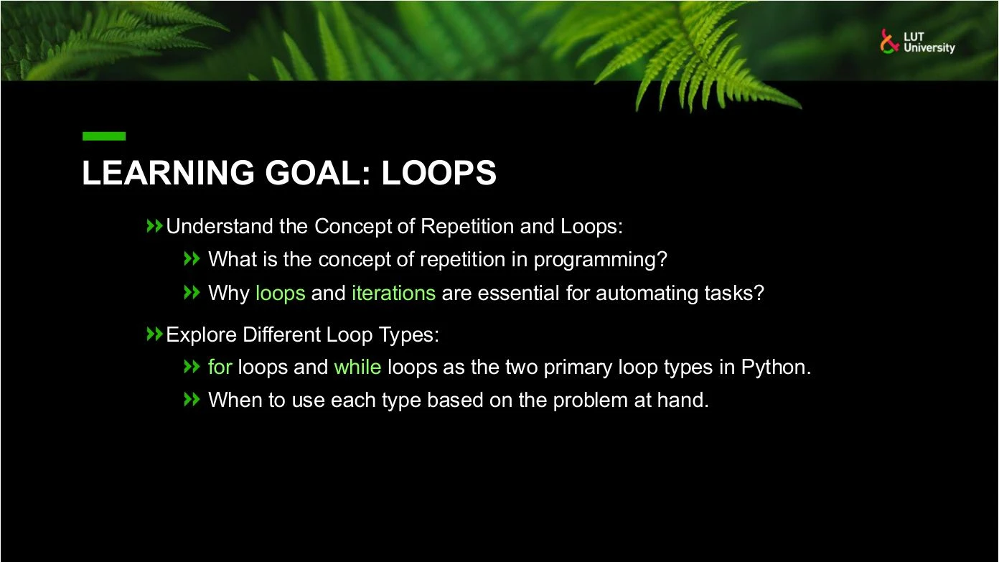


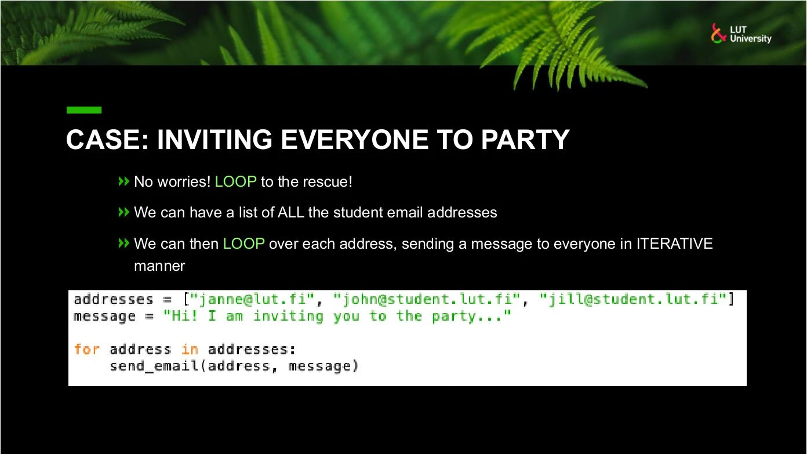

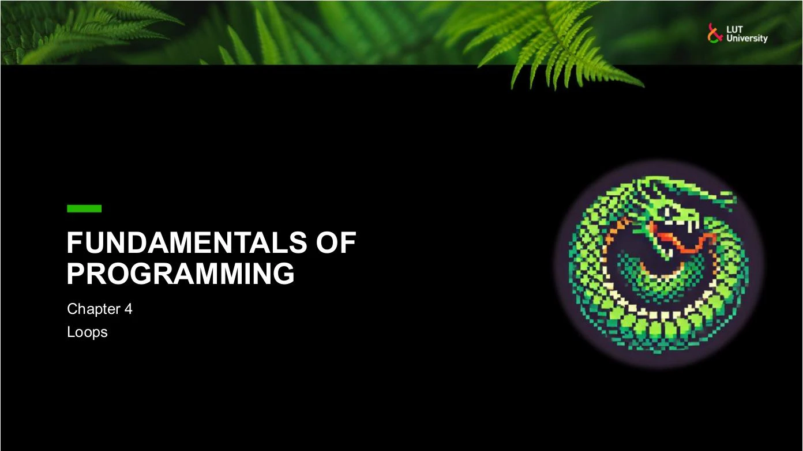


| English | 中文 | 说明 / 例句 |
|---|---|---|
| loop | 循环 | A block of code that repeats. |
| iteration | 迭代 | One pass through the loop body. |
| for loop | for 循环 | Iterates over the items of a sequence. |
| while loop | while 循环 | Repeats while a condition stays true. |
| range() | 数字序列函数 | range(1, 101) yields 1 to 100, stop excluded. |
| loop variable | 循环变量 | The variable bound to the current item. |
| break | 跳出循环 | Ends the whole loop immediately. |
| continue | 跳过本轮 | Skips the rest of this iteration. |
| nested loop | 嵌套循环 | A loop inside another loop; counts multiply. |
| accumulator | 累加器 | total = 0 before the loop, total += x inside. |
| sentinel value | 哨兵值 | A special input such as -1 that ends the loop. |
| infinite loop | 死循环 | The condition never becomes False; stop with Ctrl+C. |
| off-by-one | 差一错误 | range(1, 10) stops at 9, not 10. |
两个都是累积模式：求和初值 0，求积初值 1。步长为 −2 的 range 直接给出 11, 9, 7, 5, 3, 1。
seq_sum = 0
for i in range(1, 101):
seq_sum = seq_sum + i
print("sum 1..100 =", seq_sum)
seq_mul = 1
for i in range(11, 0, -2):
seq_mul = seq_mul * i
print("11*9*...*1 =", seq_mul)输出：
sum 1..100 = 5050
11*9*...*1 = 10395逐点解释：range(1, 101) 的最后一个值是 100（含头不含尾）；range(11, 0, -2) 依次给 11、9、7、5、3、1，走到 −1 时已越过终点 0 而停止。
思路：用 % 10 取出末位，用 // 10 把它去掉，循环直到数变成 0。这是「拆分数字」的标准套路，循环次数取决于位数，所以用 while。
n = int(input("Enter a positive integer: "))
total = 0
while n > 0:
digit = n % 10
total = total + digit
n = n // 10
print("Digit sum:", total)输入 12345，输出 Digit sum: 15。
逐轮追踪：n=12345 → digit=5，n=1234；→ digit=4，n=123；→ 3，12；→ 2，1；→ 1，0。此时条件 n > 0 为假，退出。注意循环体里三步的顺序：先取位、再加、最后缩小 n，缺任何一步都会死循环或算错。
思路：对每个 n，用 2 到 n−1 逐个试除；一旦找到因子就把标志设为「不是质数」并 break，不必再试。
for n in range(2, 51):
is_prime = True
for d in range(2, n):
if n % d == 0:
is_prime = False
break
if is_prime:
print(n, end=" ")输出：
2 3 5 7 11 13 17 19 23 29 31 37 41 43 47解释：外层遍历候选数，内层做试除；break 只跳出内层，外层的 if is_prime 照常判断。标志变量 is_prime 每轮都要在外层循环体内重置为 True，写在循环外就只会记住第一次的结果——这是嵌套 + 标志组合最常见的错误。
这是「哨兵 + 计数 + 累加」的组合，也是项目作业里菜单循环的雏形。
total = 0
count = 0
passed = 0
while True:
score = float(input("Score (-1 to quit): "))
if score == -1:
break
total = total + score
count = count + 1
if score >= 50:
passed = passed + 1
if count > 0:
print("Average:", round(total / count, 2))
print("Passed:", passed)
else:
print("No scores given")输入 80、45、-1，输出 Average: 62.5 与 Passed: 1。
解释：while True 先进入，靠 break 退出；count > 0 的判断避免除零（第 11 讲的 ZeroDivisionError 在这里是真实风险）；及格人数用「计数模式」，条件写在累加之后。
- 打印 1 到 30 之间所有能被 3 整除但不能被 6 整除的数。
- 求
n!（n 由用户输入），并说明循环变量从哪里开始、到哪里结束。 - 统计一个字符串里元音字母（a e i o u）的个数，大小写都要算。
- 打印 5 行「金字塔」：
* *** ***** ******* ********* - 反复读入整数，直到读入 0；输出其中最大值与最小值（不考虑 0）。
答案与思路
1. for n in range(1, 31): if n % 3 == 0 and n % 6 != 0: print(n)。也可以直接用 range(3, 31, 3) 再剔除 6 的倍数。关键是上界写 31。
2. result = 1，for i in range(1, n + 1): result = result * i。若写 range(n) 会从 0 开始，结果恒为 0——这是累乘初值与起点双重踩坑。n=0 时按定义为 1，恰好被 range(1, 1) 的空序列正确处理。
3. count = 0，for ch in s: if ch.lower() in "aeiou": count += 1。用 lower() 统一大小写，比写两遍 in "aeiouAEIOU" 更简洁；in 判断子串是否出现在字符串里，是第 2 讲字符串方法的一部分。
4. 外层 for row in range(1, 6)，先打印 " " * (5 - row) 个空格，再打印 "*" * (2 * row - 1) 个星号，最后 print() 换行。规律来自行号：第 row 行有 2row−1 个星、5−row 个前导空格。
5. 用 while True 读入，读 0 就 break；第一个非零数同时初始化 maximum 与 minimum，之后每读一个就更新两个值。若用一个不可能的大数当初始最大值（如 10**9），遇到更大输入时会错——用「第一个元素初始化」才安全。
for 与 while 的选择依据；range() 三种参数与「不含 stop」；break 与 continue 的区别；嵌套循环的总执行次数。while 里忘记更新控制变量，或更新语句被 continue 跳过。写循环先写下三件套，再写循环体。range(1, 10) 是 1–9；要 10 得写 range(1, 11)。负数步长时起点必须大于终点。range(0, 10, -1) 是空序列，不报错，容易误判成「程序没跑」。is_prime = True 要放在外层循环体内；求总和时 total = 0 要放在所有循环之外。for 循环的循环变量在循环结束后仍保留最后的值，写测试时可以利用这一点。操作清单
写循环之前先确认四件事
- 要重复的是哪一段？把它写成缩进的循环体
- 循环次数已知还是未知？已知用
for，未知用while - 控制变量/累加器的初值是多少？在哪一层初始化？
- 循环什么时候结束？把结束条件写成能判真假的表达式，并确认它最终会成立
写完后的自检
- 打印首尾值确认边界：
print(list(range(...))) while的更新语句在continue之前break只跳出最内层，确认这是你要的效果- 嵌套循环的内层依赖外层变量时，内层次数随外层变化
- 累乘初值是 1，累加初值是 0，找极值用第一个元素初始化
| 源文件 | 页码 | 覆盖知识点 |
|---|---|---|
| Chapter 4 - Part 1 - Loop Theory.pdf | p2–p8 | 重复的动机、party 邀请案例、loop 与 iteration 的定义、两种循环的分工 |
| Chapter 4 - Part 2 - For Loop.pdf | p2–p8 | for 执行流程、遍历字符串/列表、range() 三参数、range(0, 10) 示例 |
| Chapter 4 - Part 3 - While Loop.pdf | p2–p6 | while 先判后执行、条件重估、输入驱动循环、哨兵 −1 示例 |
| Chapter 4 - Part 4 - Controlling Loops.pdf | p2–p6 | break 终止整个循环、continue 跳过本轮、两者流程图 |
| Chapter 4 - Part 5 - Nested For.pdf | p2–p7 | 嵌套循环流程、乘法表、嵌套的性能提醒与 bad code smell |
| 10_Chapter 4_1_Chapter 4 Code Examples_L4E1.py | 全文 | 遍历字符串 + isupper() + end="" 提取大写字母 |
| L4E2.py / L4E3.py | 全文 | 遍历列表、range 求和与连乘 |
| L4E4.py / L4E5.py | 全文 | 哨兵循环、while True + break 找 13 的倍数 |
| L4E6.py / L4E7.py | 全文 | continue 过滤奇数、嵌套循环打印乘法表 |
跳过项：Part 1 的 party 案例配图（纯图片）、Part 5 p4 的空页、以及各 Code Example 的运行截图均不构成新知识点；课程考核与作业截止页属于行政信息，已在第 1 讲处理。
拓展项：循环结束后的变量残留、range 对象的惰性、遍历时修改列表的危险、浮点累加误差，都是原课件结论的边界补充，不引入新语法。
第 5 章 函数 1 讲 章节页 →
⑥ 函数与参数传递
Functions, Parameters and Scope 第 5 章 函数
本节定位
前五讲的代码都是「一条一条往下写」。程序一变长，重复的片段就会出现，改一处要改十处。这一讲把代码打包成函数：给名字、留入口（参数）、留出口（返回值），以后随时调用。
循环与函数是这门课的两根支柱：循环解决「重复」，函数解决「复用与结构」。后面第 7 讲的类、第 9 讲的文件处理、第 12 讲的项目作业，都是「若干函数 + 一个主流程」的形态。
学完本讲你应当能够：
- 用
def写出带参数、带返回值的函数，并解释五个组成部分 - 说清
return与print的区别，知道没有 return 时函数返回None - 按位置正确传参，解释为什么参数个数与顺序都不能错
- 用默认参数给可选参数设默认值，并避开「可变默认参数」陷阱
- 解释局部变量的独立性，以及为什么列表传进函数会被改到
- 按「定名称 → 定输入 → 定输出 → 定判定 → 定累加」五步设计一个函数
一、函数是什么，为什么要用
课件给的定义很短：函数是一个「小程序」，专门完成某一件事（What is a function p2）。它把一段代码打包、起名字、留出入口（参数）与出口（返回值），以后在程序任何地方都能再叫它一次。
用函数有三层收益：
- 结构：把长程序切成若干块，每块只做一件事，读代码时不必一次装进脑子；
- 复用：定义一次，调用无数次，改一处就全改；
- 协作：把一组函数写成一个库（library），别人
import就能用——这正是第 10 讲「模块」的由来。
课件还提到一个特殊情形：函数可以调用自己，叫递归（recursion）。这门课不深入递归，但要知道它是函数机制自然允许的。
1.1 内置函数与自定义函数
前几讲一直在用内置函数（built-in functions）：print()、input()、len()、int()、float()、str()、round()、range()。它们随 Python 一起装好，不用导入就能用。
这门课的重点是自定义函数（user-defined functions）：为了解决自己的问题而写的函数（What is a function p5）。两者用法完全一样——都是「给输入、拿输出」。
课件的 round() 例子值得细看（p4）：它接受两个输入，第一个是要处理的数，第二个是保留几位小数，顺序不能反。
print(round(3.14159, 2))
print(round(6.7, 0))
print(round(3.14159))3.14
7.0
3round(6.7, 0) 得 7.0 而不是 7：只要给了第二个参数，返回类型就是 float。这提醒我们：函数的返回值有类型，用之前要知道拿到的是什么。
二、用 def 定义函数
2.1 骨架的五个部分
定义函数的语法（Self-defined functions p2–p5）可以拆成五块：
def function_name(parameters):
# function body
return result| 部分 | 作用 | 规则 |
|---|---|---|
def | 声明「这里开始定义一个函数」 | 关键字，不能拼错 |
function_name | 函数的名字 | 小写、用下划线分词，描述它做什么 |
(parameters) | 参数列表，函数的输入 | 逗号分隔；没有参数也要写一对空括号 |
: | 函数头结束，函数体开始 | 漏了就是 SyntaxError |
| 缩进的函数体 | 函数真正执行的代码 | 整块必须比 def 多缩进 |
return result | 把结果交回调用者 | 可以没有，也可以在中间提前返回 |
命名规范与变量一致：只能字母、数字、下划线，不能有空格，不能以数字开头；习惯全小写 + 下划线（count_vowels），而不是 CountVowels 或 cv。名字要让人只看名字就知道它做什么。
2.2 一个最小可运行函数
def greet(name):
message = "Hello, " + name + "!"
return message
result = greet("Alice")
print(result)Hello, Alice!三行代码里发生了三次「跨边界」：调用时 "Alice" 被复制给参数 name；函数体算出一个新字符串；return 把它交给调用处，赋给 result。函数内部的 message 在外面看不见（下一节讲作用域）。
三、return：函数唯一的出口
3.1 return 结束执行并交回一个值
return 做两件事：立刻结束函数的执行；把后面的表达式作为返回值交给调用者（p6）。return 之后的语句永远不会执行。
def check(n):
if n < 0:
return "negative"
return "non-negative"
print(check(-5))
print(check(0))negative
non-negative一个函数里可以有多条 return，但每次调用只会执行其中一条——上面就是「负数提前返回」的写法，避免了层层嵌套的 if。这种提前返回叫守卫式写法（guard clause），第 4 讲已经用过同样的思路。
3.2 return 与 print 不是一回事
这是本章最容易混的一点（p6）：print() 只是把文字显示到屏幕上，不产生值；return 才把值交回给调用者。
def add_print(a, b):
print(a + b)
def add_return(a, b):
return a + b
x = add_print(2, 3)
y = add_return(2, 3)
print("x is", x)
print("y is", y)5
x is None
y is 5add_print 把 5 打在屏幕上，但它的返回值是 None，所以 x 拿到的是 None。CodeGrade 的反馈里那句 The function should return a value（CG Guide）对应的就是这个错误：该 return 的地方写了 print。
3.3 没有 return 的函数返回 None
如果函数体里根本没有 return，Python 会在函数结束时自动返回 None（none.py）。None 是第 1 讲介绍过的「空值」类型，表示「没有值」。
def show(word):
print(word)
value = show("Cat")
print("value is", value)Cat
value is None反过来，return 不带表达式也返回 None，常用于「提前结束、不返回东西」的场景：
def divide(a, b):
if b != 0:
return a / b
result = divide(10, 0)
if result is None:
print("Error: Division by zero!")
else:
print(result)Error: Division by zero!注意判断用的是 is None 而不是 == None：None 是单例对象，is 比较的是「是不是同一个对象」，语义更准确。
四、调用函数：把值送进去
定义只是「写好一份说明书」，真正执行要调用（call）：写函数名加括号，括号里给实参（p7）。
def fun(p):
return p * 2
x = 66
y = fun(x)
print(y)132调用时发生的事：实参 x 的值被复制给形参 p；函数体用 p 算出结果；return 把结果交回；赋值语句把它存进 y。整条链上 x 本身没有被改动。
函数必须先定义、后调用。把调用写在 def 之前会抛 NameError: name 'fun' is not defined——Python 从上往下执行，定义也是一个「执行动作」。
五、参数：位置、数量、顺序
5.1 按位置对应
参数按位置一一对应（Parameters p2）：第一个实参给第一个形参，第二个给第二个。数量和顺序都不能错。
def describe(name, age):
return name + " is " + str(age) + " years old"
print(describe("Alice", 30))
print(describe(30, "Alice"))Alice is 30 years old
30 is Alice years old第二个调用不报错，但语义完全错了——这正是「顺序有意义」的意思。参数个数不对则会直接抛 TypeError：
def describe(name, age):
return name + " is " + str(age) + " years old"
print(describe("Alice"))TypeError: describe() missing 1 required positional argument: 'age' 5.2 为什么必须用参数，而不是靠外面的变量
课件强调：函数需要的所有「外部信息」都必须通过参数传进来（Parameters p4）。这样做换来三件事——函数独立（不偷偷依赖全局状态）、可复用（换个输入就能用）、可测试（给定输入就能验证输出）。
反面例子：函数直接读一个全局变量 PI 或 tax_rate，换一个场景就得改函数体。写成 def total(price, tax_rate)，函数就能在任何地方用。
5.3 默认参数
默认参数（default parameter）让某个参数「可以不传」，不传时用预先写好的值（Parameters p5）：
def greet(name, greeting="Hello"):
return greeting + ", " + name + "!"
print(greet("Alice", "Hi"))
print(greet("Bob"))Hi, Alice!
Hello, Bob!两条规则：第一，有默认值的参数必须放在没有默认值的参数后面，写成 def f(a=1, b) 是语法错误；第二，默认值只在定义时求值一次，之后每次调用共用同一个对象。
def add_item(x, box=[]) 里的 [] 只创建一次，所有调用共用同一个列表：add_item(1) 得 [1]，再调 add_item(2) 得 [1, 2]。正确写法是把默认值设为 None，进了函数再判断：if box is None: box = []。def add_item(x, box=[]):
box.append(x)
return box
print(add_item(1))
print(add_item(2))[1]
[1, 2]六、作用域：函数里的名字是独立的
6.1 局部变量
函数体内定义的变量与参数都是局部的（local）：只在这个函数里存在，函数返回就消失，别的函数看不到（Parameters p3）。所以两个函数各有一个 n 互不干扰。
def f1():
n = 1
return n
def f2():
n = 2
return n
print(f1(), f2())1 2如果函数里给一个「外面已有」的变量赋值，Python 会把它当成新的局部变量，外面的同名变量不变。想改外面的变量得用 global，但这门课不建议这么做——用参数传入、用 return 传出，才是可维护的写法。
6.2 值传递：改参数不影响外面的不可变对象
add_one.py 是课件给出的追踪练习：
def add_one(nr):
nr = nr + 1
x = 2 * nr
return x
x = 10
y = 7
print("returned:", add_one(y))
print("x and y now:", x, y)returned: 16
x and y now: 10 7为什么 y 仍是 7？因为 y 的值被复制给 nr，函数里改的是副本。同理函数里的局部变量 x 与外面的 x 是两个不同的名字，互不影响。
6.3 例外：传入可变对象时会被改到
列表、字典是可变对象（mutable），传参时复制的是「指向同一个对象的引用」而不是内容。函数里改元素，外面的列表跟着变（list_parameter.py）：
def modify_parameter(my_list):
my_list[2] = 33
A = my_list
A[0] = 1000
original_list = [1, 2, 3]
print("Before:", original_list)
modify_parameter(original_list)
print("After:", original_list)Before: [1, 2, 3]
After: [1000, 2, 33]第 8 讲会系统讲列表，这里先记住结论：不可变对象（数字、字符串、元组）传进函数，外面不变；可变对象（列表、字典、集合）传进去，函数里的修改会反映到外面。
七、从需求到函数：设计五问
课件用一个具体的题示范设计流程（Example: writing a function p2）：写一个函数，返回字符串里元音字母的个数。动笔之前先回答五个问题：
- 函数叫什么名字？→
count_vowels（动词 + 名词，说明它做什么） - 参数是什么？→ 一个字符串
s - 返回什么？→ 一个整数（个数），不是打印
- 怎么判断一个字符是不是元音？→
ch.lower() in "aeiou" - 怎么数？→ 计数器初值 0，命中就 +1；用不用循环？→ 要遍历每个字符，用
for
def count_vowels(s):
count = 0
for ch in s.lower():
if ch in "aeiou":
count = count + 1
return count
print(count_vowels("Programming is fun"))5这五个问题就是「通用解题思路」：定名称 → 定输入 → 定输出 → 定判定条件 → 定累加方式。换成「统计及格人数」「数出单词个数」都是同一套问法。
八、用函数组织一个完整程序
课件的 example_with_menu.py 把「面积计算器」拆成五个函数：一个打印菜单并读选择，三个算面积，一个算平方根；主程序是一个 while 循环，按选择调用对应函数。
def print_menu():
"""Print the menu and return the user's choice."""
print("\nCompute the area of:")
print("1) a circle")
print("2) a rectangle")
print("3) a triangle")
print("4) quit")
return int(input("Enter your choice: "))
def circle_area(r):
return 3.14159 * r ** 2
def rectangle_area(w, h):
return w * h
def triangle_area(a, b, c):
s = (a + b + c) / 2
return (s * (s - a) * (s - b) * (s - c)) ** 0.5
choice = print_menu()
if choice == 1:
r = float(input("Radius: "))
print("Area:", round(circle_area(r), 2))
elif choice == 2:
w = float(input("Width: "))
h = float(input("Height: "))
print("Area:", round(rectangle_area(w, h), 2))
elif choice == 3:
a = float(input("Side 1: "))
b = float(input("Side 2: "))
c = float(input("Side 3: "))
print("Area:", round(triangle_area(a, b, c), 2))
else:
print("Bye!")结构上的三个要点：每个函数只做一件事（单一职责）；菜单函数既打印又返回选择，把「读输入」与「决定流程」分开；主程序只负责调度，不写计算细节。三角形面积用海伦公式（Heron's formula）：半周长 s = (a+b+c)/2，面积 √(s(s−a)(s−b)(s−c))，开方用 ** 0.5。
"""Returns the area of a circle."""，既是注释又能被 help() 读出来（第 3 讲）。项目作业里评分的可读性就看这个。九、常见错误与调试
return；要同时看结果，在调用处 print 返回值。TypeError: f() takes 2 positional arguments but 3 were given。数一遍 def 括号里的参数与调用括号里的值。def inc(n): n = n + 1 改的是副本。要「改到外面」，得 return 新值并让调用处重新赋值：x = inc(x)。print() 只把文字显示在屏幕，不产生值；return 才交回值。函数只 print 不 return，调用处拿到 None（CodeGrade 报 The function should return a value 就是这个错）。另一个陷阱是可变默认参数：box=[] 只在定义时创建一次，多次调用共用；正确写法是默认 None，进函数再 if box is None: box = []。
参数传递的差别来自可变性：不可变对象（数字、字符串）传进函数，改的是副本，外面不变；可变对象（列表、字典）传的是引用，改元素会反映到外面。由此推出设计原则——外部信息用参数传进来，别偷读全局变量，函数才独立可复用。判断 None 用 is None 而非 == None；函数必须先定义后调用。
原版图页（源 PDF 插图页）
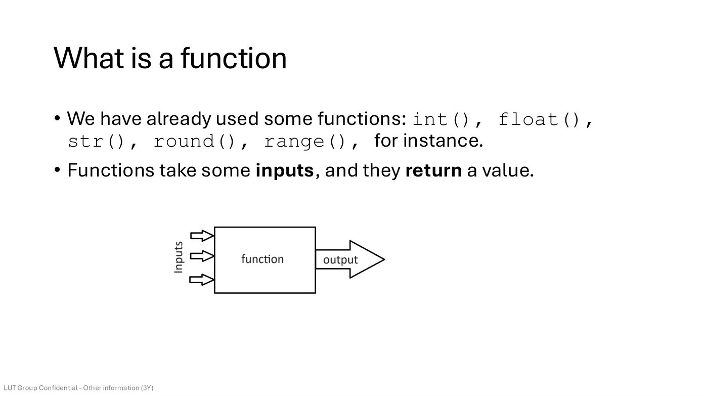
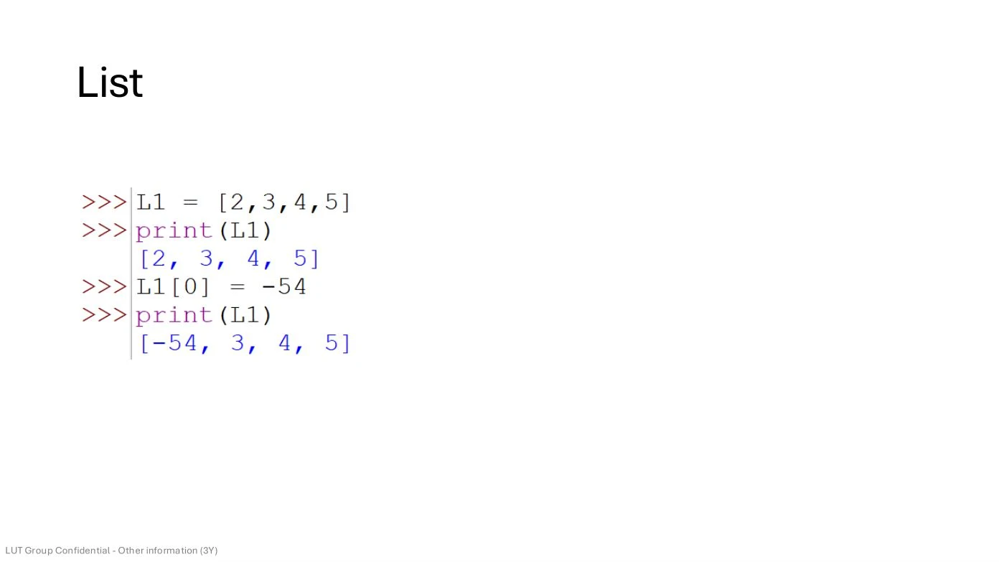
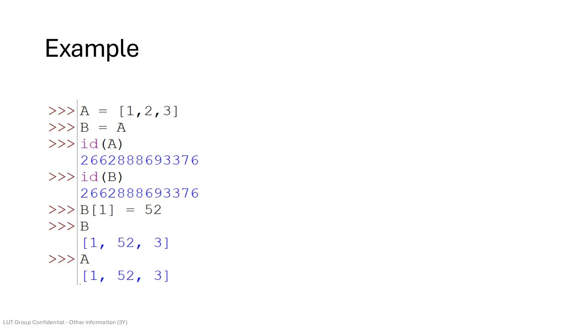
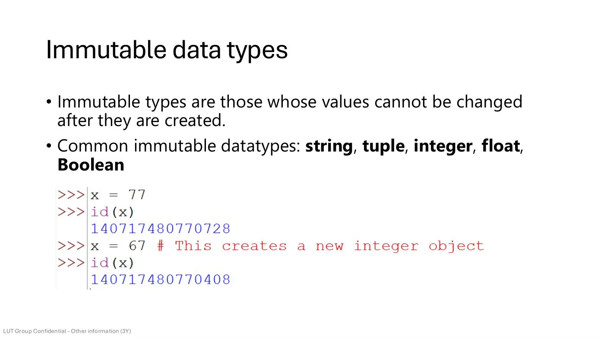
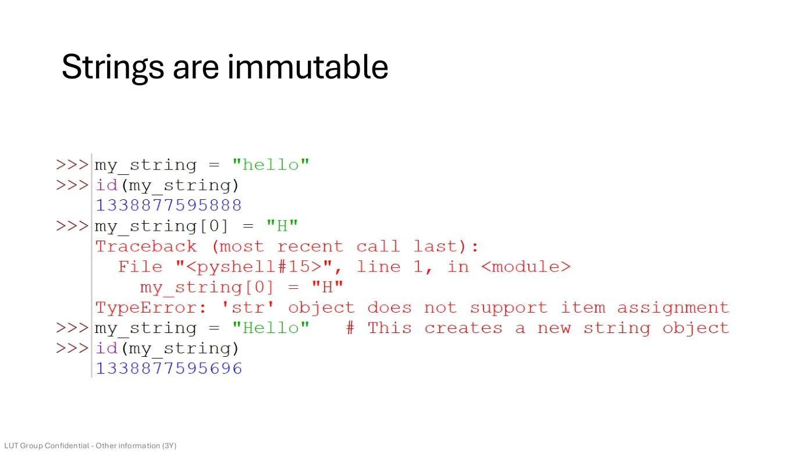
| English | 中文 | 说明 / 例句 |
|---|---|---|
| function | 函数 | A named block of code that performs one task. |
| def | 定义函数的关键字 | def area(r): starts a function definition. |
| parameter | 形参 | A variable listed in the parentheses of the definition. |
| argument | 实参 | The value passed in when the function is called. |
| function body | 函数体 | The indented statements inside the function. |
| return | 返回 | Sends a value back to the caller and ends the function. |
| None | 空值 | The value a function returns when it has no return statement. |
| function call | 函数调用 | greet("Bob") executes the function. |
| scope | 作用域 | Variables inside a function are local to it. |
| local variable | 局部变量 | A variable that exists only inside the function. |
| default parameter | 默认参数 | def greet(name, greeting="Hello") can be called with one argument. |
| mutable object | 可变对象 | A list passed to a function can be modified inside it. |
| docstring | 文档字符串 | A string on the first line of a function, read by help(). |
| recursion | 递归 | A function that calls itself. |
count_vowels(s) 返回元音个数，并解释每一行的作用。先按设计五问定好名称、输入、输出、判定、累加，再写代码。
def count_vowels(s):
count = 0 # 计数器：初值 0
for ch in s.lower(): # 遍历每个字符，统一转小写
if ch in "aeiou": # 判定：是不是元音
count = count + 1 # 命中就 +1
return count # 把结果交回调用者
print(count_vowels("Programming is fun"))
print(count_vowels("XYZ"))输出：
5
0解释：s.lower() 让大小写都算；ch in "aeiou" 是子串判断，比写六个 or 简洁；return 放在循环外面，循环结束后才返回总数——若缩进到循环里，函数会在第一个字符处就返回。
先写出预期的中间值，再运行验证。函数：nr = nr + 1，return 2 * nr；调用 add_one(7)。
def add_one(nr):
nr = nr + 1
x = 2 * nr
return x
x = 10
y = 7
print("returned:", add_one(y))
print("x and y now:", x, y)输出：
returned: 16
x and y now: 10 7逐步追踪：调用把 y 的值 7 复制给 nr；nr 变成 8；x（局部）是 16；返回 16。外面的 y 从未被赋值过，所以仍是 7；外面的 x 也是 10，因为函数里的 x 是另一个局部名字。
is_prime(n) 返回布尔值，并用它打印 20 以内的质数。关键设计决策：返回 True / False，而不是打印「是质数」——这样调用者可以拿它做别的判断。
def is_prime(n):
if n < 2:
return False
for d in range(2, n):
if n % d == 0:
return False
return True
for n in range(2, 21):
if is_prime(n):
print(n, end=" ")输出：
2 3 5 7 11 13 17 19解释：n < 2 与「找到因子」两处都提前 return False，函数立刻结束；只有全部试完都没找到因子，才走到最后的 return True。把「判定」写成返回布尔值的函数，是让代码可复用的关键一步。
circle_area(r) 与 triangle_area(a,b,c)，并在主程序里调用。函数只负责算，主程序负责读输入与打印，职责分开。
def circle_area(r):
return 3.14159 * r ** 2
def triangle_area(a, b, c):
s = (a + b + c) / 2
return (s * (s - a) * (s - b) * (s - c)) ** 0.5
r = float(input("Radius: "))
print("Circle area:", round(circle_area(r), 2))
a = float(input("Side 1: "))
b = float(input("Side 2: "))
c = float(input("Side 3: "))
print("Triangle area:", round(triangle_area(a, b, c), 2))输入 2、3、4、5，输出：
Circle area: 12.57
Triangle area: 6.0解释：圆面积 3.14159×4 = 12.56636 → 12.57；三角形三边 3、4、5 是直角三角形，面积 6，海伦公式给出 s=6、6×3×2×1=36、开方得 6。若三边构不成三角形（如 1、2、10），s−a 会为负，开方得到复数——真实程序应先校验三边关系。
- 写
max_of_three(a, b, c)，返回三者中的最大值（不许用max()）。 - 写
count_char(s, ch)，返回ch在s中出现的次数（不许用count()）。 - 写
is_even(n)返回布尔值；再写一段代码，用它打印 1–10 中的偶数。 - 写
to_celsius(f)把华氏温度转成摄氏温度（公式 C = (F − 32) × 5 / 9），返回保留一位小数的值。 - 把第 5 讲的「反复读成绩、输出平均分与及格人数」改写成函数
average(scores)，参数是一个分数列表。
答案与思路
1. 先假设 a 最大，再依次比较：best = a；if b > best: best = b；if c > best: best = c；return best。这是「找极值」模式，初值必须是列表里真实存在的元素，不能写 0（全负数时出错）。
2. count = 0，for c in s: if c == ch: count += 1，return count。若 ch 长度大于 1，这个写法按字符比会永远不相等——要按子串计数得用 s.count(ch) 或滑动窗口，题目限定单字符才有上面的简单解。
3. def is_even(n): return n % 2 == 0。函数体只有一行时，返回的就是这个布尔表达式，不必写 if。调用处：for i in range(1, 11): if is_even(i): print(i, end=" ")。
4. return round((f - 32) * 5 / 9, 1)。注意运算顺序：先减再乘除；写成 f - 32 * 5 / 9 会因为乘除优先而算错。
5. def average(scores): if not scores: return None（空列表要单独处理，否则 sum/0 报 ZeroDivisionError），否则 return sum(scores) / len(scores)。及格人数另写一个函数 count_passed(scores)，每个函数只做一件事。
def 定义、return 与 print 的区别、参数按位置传递、无 return 时得 None、局部变量的独立性。The function should return a value 就是这个。看到题目写「返回」，第一反应写 return。def f(a=1, b) 是语法错误；def f(box=[]) 会让所有调用共享同一个列表，必须改用 None 哨兵。my_list[0] = 1000 会改到外面的列表。想保留原数据，调用前先 L[:] 复制（第 8 讲）或 list(L)。return 一次只能返回一个对象，要返回多个值请用元组（第 8 讲）。操作清单
写函数之前，先回答五个问题
- 函数叫什么名字？用动词开头、全小写下划线
- 参数有哪些？每个参数的类型与含义写清楚
- 返回什么？一个值还是多个值，类型是什么
- 判定的条件是什么？写成布尔表达式
- 要不要循环？需要累积就用「计数器/累加器 + 循环」模板
写完之后的检查
- 每个要「返回」的路径都写了
return - 调用时参数个数、顺序与定义一致
- 函数里没有偷偷依赖全局变量
- 默认参数只用于「可选」的尾部参数，且没有用可变对象
- 函数体只做一件事，超过 20 行就该考虑拆开
| 源文件 | 页码 | 覆盖知识点 |
|---|---|---|
| What_is_ a_funtion.pdf | p2–p5 | 函数的定义与动机、复用/结构化/库、递归提及、内置函数与自定义函数、round() 两参数示例 |
| Self_defined_functions.pdf | p2–p7 | def 五个组成部分、命名规范、函数体缩进、return 结束执行、return ≠ print、调用方式 |
| Parameters.pdf | p2–p5 | 按位置传参、参数数量与顺序、局部变量独立、值复制、为什么必须用参数、默认参数 |
| Example_writing_a_function.pdf | p2 | 元音计数题的设计五问：命名、参数、返回、判定、计数、是否需要循环 |
| Mutable_vs _immutable .pdf | p2–p8 | 可变/不可变类型、B = A 指向同一对象、列表参数会被函数改到（list_parameter.py） |
| add_one.py | 全文 | 值复制追踪：函数内改参数不影响外部变量 |
| greeting.py | 全文 | 默认参数的调用方式 |
| none.py / returning_none.py | 全文 | 无 return 返回 None、用 is None 判断 |
| example_with_menu.py | 全文 | 用多个函数组织菜单程序、docstring、海伦公式 |
跳过项：课件中只给出文件名而无正文的截图页（Example1.py 等）已按代码文件内容吸收到正文与示例；Moodle 的作业说明与评分页属于行政信息，不进入本讲。
拓展项：可变默认参数陷阱、is None 判断、函数必须先定义后调用、UnboundLocalError 的成因，都是围绕原知识点的边界补充，不引入新语法考点。
第 6 章 类、列表与矩阵 2 讲 章节页 →
⑦ 类与对象入门
Classes and Objects 第 6 章 类、列表与矩阵
本节定位
前六讲的数据都是「一个变量装一个值」，函数是「一段代码做一件事」。当一组数据要配上一组操作、还要被很多地方重复使用时，就需要类：把数据（属性）和行为（方法）打包成一个对象。
这一讲只讲最浅的一层——够读课件、够写项目作业里的 Car / Person / Transaction。真正的 OOP（继承、多态、封装）是另一门课的内容，本课不考。下一讲回到容器：列表、矩阵与元组。
学完本讲你应当能够：
- 解释类与实例的关系，并说出「类是模板、对象是实例」
- 写出带
__init__的类，用self把参数装成属性 - 定义方法并用点号调用，读写的都是当前对象的属性
- 创建多个实例，并说明它们的状态为什么互不影响
- 把对象作为参数传给普通函数，在函数里调用它的方法
- 认出漏写
self、__init__拼错、类属性误当实例属性这三类错误
一、面向对象：先摆正预期
课件第一句话很坦率：这是「回到 1980 年代的编程」（Chapter 6 Part 1 p2）。面向对象编程（object-oriented programming，OOP）本身是一门独立课程，这门课只讲最浅的一层——会定义类、会创建对象、会用对象的属性与方法。
核心比喻只有两个：类（class）是模板或模型，对象（object）是按模板造出来的东西，也叫实例（instance）。课件用汽车举例：Car 是类，Fiat 与 Audi 是它的实例；两者都是车，但各自有品牌、颜色、年份（Part 1 p3）。人也一样：Human 是类，Janne 是一个实例。
Python 是面向对象的语言，而且「一切皆对象」（Part 1 p4）：字符串、列表、整数都各自属于某个类。你早就在用对象了——"abc".upper() 里的 .upper() 就是字符串对象的方法。本讲只是学会自己造类。
二、四个术语
课件把术语压到四个（Part 2 p2–p4），这四个词必须能互相解释清楚：
| 术语 | 英文解释 | 中文说明 |
|---|---|---|
| 类 class | A template that defines structure and behaviour. | 定义对象「有哪些数据、能做什么」的模板 |
| 对象 / 实例 object, instance | One concrete thing created from the class. | 按模板造出来的具体个体 |
| 属性 attribute | A variable stored in the object; its properties. | 对象自己的数据，如 brand、year |
| 方法 method | A function defined inside the class. | 对象能执行的动作，如 start_engine() |
课件给的属性例子是 age、year、size、weight、color、location；方法例子是 get_age()、start_engine()、calculate_distance()、close()、run()（Part 2 p4）。规律很清楚：属性是名词，方法是动词。
三、定义一个类
3.1 语法骨架
class ClassName:
def __init__(self, parameters):
self.attribute = parameters
def method_name(self):
# do something with self.attribute
return something三件事要注意：类名用首字母大写的驼峰写法（Car、Person、BankAccount），与函数的小写下划线区分开；class 行末有冒号；类里的所有方法都要缩进一层，而方法体再缩进一层。
3.2 构造函数 __init__ 与 self
__init__ 是特殊方法，叫构造函数（constructor）：创建对象时会被自动调用，用来把初始数据装进对象（Part 2 p6）。名字前后各有两个下划线，写错一个就退化成普通方法，创建对象时不会执行。
self 指「当前这个对象」。在类里访问自己的属性或调用自己的方法，都必须写 self.xxx。调用时 self 不用传，Python 自动把对象塞进去。
class Car:
def __init__(self, brand, color, year):
self.brand = brand
self.color = color
self.year = year
def start_engine(self):
print(self.brand + " says WROOM!")
car1 = Car("Tesla", "Black", 2019)
car1.start_engine()Tesla says WROOM!追踪一下 Car("Tesla", "Black", 2019)：Python 新建一个空对象；把对象作为 self、把三个实参依次给 brand、color、year；执行 __init__ 的函数体，把三个值挂到对象上；最后把对象交回给 car1。
3.3 点号访问
点号（dot notation）是「走进对象内部」的唯一入口（Part 2 p5）：对象.属性 读或写数据，对象.方法() 执行动作。
class Car:
def __init__(self, brand, year):
self.brand = brand
self.year = year
car = Car("Skoda", 2012)
print(car.brand)
print(car.year)
car.year = 2015
print(car.year)Skoda
2012
2015最后一步说明属性是可写的：直接给 car.year 赋新值就行。想控制「怎么改」时，就写一个方法（如 update_year(new_year)），把规则集中在类里。
四、多个实例，各自独立
同一个类可以造出无数个对象，每个对象有自己的属性值——这是类与「一个装着数据的字典」最大的区别（Part 1 p3）。L6E1 造了两辆车：
class Car:
def __init__(self, brand, color, year):
self.brand = brand
self.color = color
self.year = year
def start_engine(self):
print(self.brand + " says WROOM!")
car1 = Car("Tesla", "Black", 2019)
car2 = Car("Skoda", "Grey", 2012)
print("car1 is of brand", car1.brand)
print("car2 is of brand", car2.brand)
car1.start_engine()
car2.start_engine()car1 is of brand Tesla
car2 is of brand Skoda
Tesla says WROOM!
Skoda says WROOM!car1 与 car2 是两个不同的对象：改 car1.year 不会影响 car2.year。方法里的 self 决定「操作哪一个对象」——car1.start_engine() 时 self 就是 car1。
五、完整的类：Person
课件的 L6E2 给出一个更完整的例子（Part 3 p2）：三个属性、五个方法，既有只读的 getter，也有修改状态的 updater，还有一个做判断的 is_adult()。
class Person:
def __init__(self, name, age, country):
self.name = name
self.age = age
self.country = country
def get_name(self):
return self.name
def get_age(self):
return self.age
def get_country(self):
return self.country
def is_adult(self):
return self.age >= 18
def update_age(self, new_age):
self.age = new_age
def update_country(self, new_country):
self.country = new_country
person1 = Person("Alice", 30, "USA")
person2 = Person("Pekka", 17, "Finland")
print(person1.get_name(), person1.get_age(), person1.get_country())
person1.update_country("Canada")
print(person1.get_country())
print(person2.get_name(), "adult?", person2.is_adult())
person2.update_age(18)
print(person2.get_name(), "adult?", person2.is_adult())Alice 30 USA
Canada
Pekka adult? False
Pekka adult? True读这段代码要注意三点：get_* 方法只是把属性值交出去，没有副作用；update_* 方法改的是 self.age，所以改完之后同一个对象的后续查询会看到新值；is_adult() 把判断规则写在类里，外部调用者不必知道「18 岁」这个阈值。
六、对象作为参数
对象可以像普通值一样传给函数。L6E2 的后半段定义了一个普通函数，参数是一个 Person 对象：
def can_buy_alcohol(human):
if human.is_adult():
print(human.get_name() + " can buy alcohol in Finland")
else:
print(human.get_name() + " cannot buy alcohol in Finland")
can_buy_alcohol(person2)Pekka cannot buy alcohol in Finland函数里直接调用 human.is_adult()：它不关心对象内部有几个属性，只依赖对象「会做什么」。这就是把数据与行为放在一起的好处——调用方代码更短，规则变化时只改类。
七、类、字典、函数：什么时候用哪个
| 需求 | 推荐做法 | 原因 |
|---|---|---|
| 只是把几个字段捆在一起传 | 字典 {"brand": "Ford", "year": 2015} | 第 12 讲；轻量、可直接打印、适合读 JSON |
| 一组数据要配上一组操作，且要被多处复用 | 类 | 属性和方法绑在一起，调用方只需知道接口 |
| 纯计算，不保存状态 | 普通函数 | 最简单，不必造对象 |
课件的项目作业（汽车租赁系统）里，车辆、客户、交易都是「一条记录 + 若干操作」，用字典列表也能做，用类会更整齐。考试两种都可能出现，读得懂就行。
八、类属性与实例属性
课件没有展开这一点，但它是最容易「看起来能跑、其实错了」的地方。写在 __init__ 里、带 self. 的是实例属性，每个对象一份；直接写在类体里的（不带 self.）是类属性，所有对象共享。
class Car:
wheels = 4 # 类属性：所有实例共享
def __init__(self, brand):
self.brand = brand # 实例属性：每个对象一份
a = Car("Tesla")
b = Car("Skoda")
a.wheels = 3 # 这一步新建了 a 自己的属性
print(a.wheels, b.wheels, Car.wheels)
print(a.brand, b.brand)3 4 4
Tesla Skoda读 a.wheels 时，先找实例属性，找不到才去类里找；给 a.wheels 赋值只影响 a，于是出现 3 4 4。如果写的是 Car.wheels = 3，三个输出就都变 3。初学阶段建议所有属性都写进 __init__，避免这种歧义。
九、检查对象里到底有什么
调试类的问题，第一步永远是「属性到底装上了没有」。三种看法：
class Person:
def __init__(self, name, age):
self.name = name
self.age = age
p = Person("Alice", 30)
print(p.__dict__) # 所有实例属性
print(type(p).__name__) # 类名
print(isinstance(p, Person)) # 是不是这个类的实例{'name': 'Alice', 'age': 30}
Person
Truep.__dict__ 直接把属性表打出来，比逐个猜快得多：里面少了哪个属性，就说明 __init__ 里漏了对应的 self.xxx = ...。
十、常见错误与调试
def start_engine():，调用 car.start_engine() 会抛 TypeError: start_engine() takes 0 positional arguments but 1 was given——那个多出来的实参就是自动传入的对象。__int__、_init_ 或 init，创建对象时不会执行，属性全部不存在，之后访问 car.brand 抛 AttributeError。前后各两个下划线，一个都不能少。__init__ 里写 brand = brand，只是创建了一个局部变量，对象上没有这个属性。必须是 self.brand = brand。print(car) 输出 <__main__.Car object at 0x...>，因为默认没有「怎么显示自己」的规则。要看内容请打印具体属性，或在类里定义 __str__（属拓展内容，考试不要求）。方法漏写 self，调用 car.start_engine() 会抛 TypeError——那个多出来的实参就是 Python 自动传入的对象。__init__ 前后各两个下划线，拼成 __int__ 就退化成普通方法，之后访问属性抛 AttributeError。在 __init__ 里写 brand = brand 只创建局部变量，必须是 self.brand = brand。
类是数据 + 行为的打包：属性是名词（brand、year），方法是动词（start、is_adult）。多个实例各自独立，self 决定操作哪一个对象。把对象传给普通函数，函数只调用 human.is_adult()，不关心内部属性，规则变化时只改类。调试第一步看属性装没装上：p.__dict__ 直接打出属性表，缺哪个就回 __init__ 补。
原版图页（源 PDF 插图页）
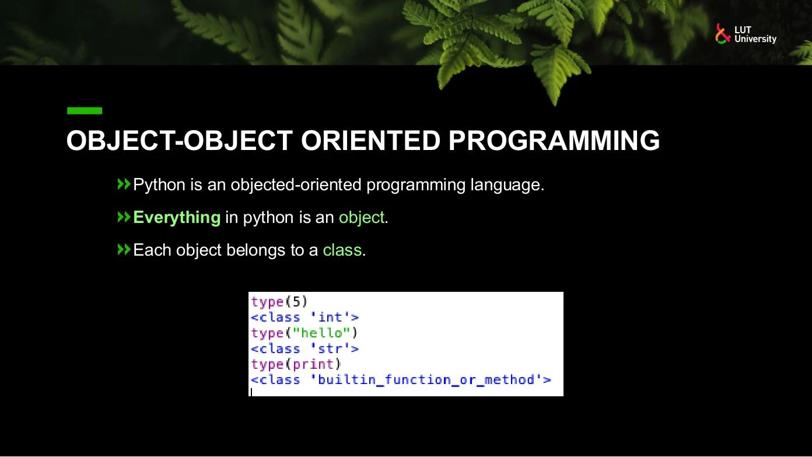
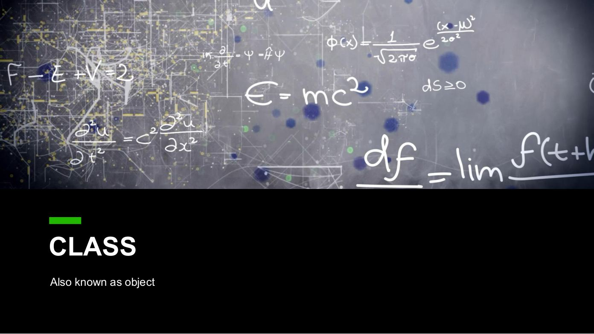
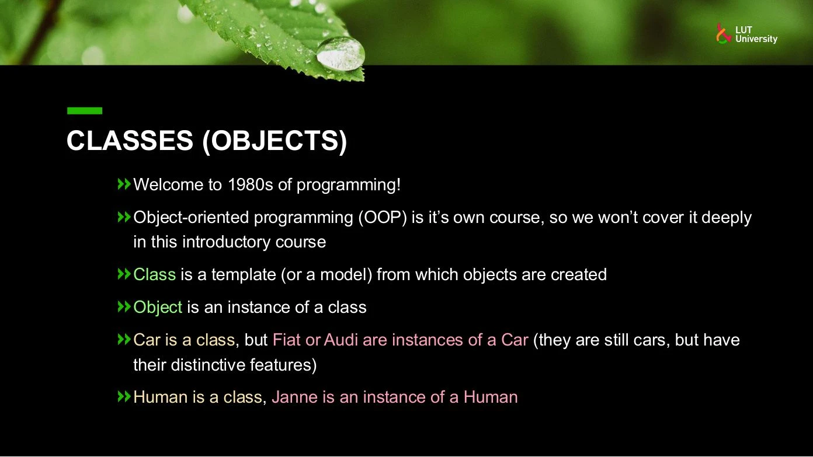
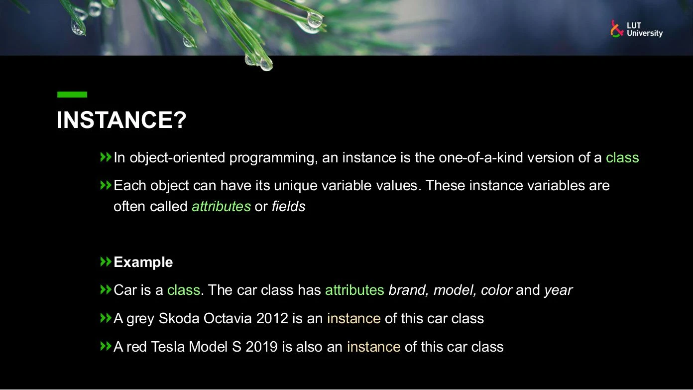
| English | 中文 | 说明 / 例句 |
|---|---|---|
| class | 类 | A template for creating objects. |
| object | 对象 | A concrete thing created from a class. |
| instance | 实例 | One particular object of a class; car1 is an instance of Car. |
| attribute | 属性 | A variable stored in the object: self.brand. |
| method | 方法 | A function defined inside a class: start_engine(). |
| constructor | 构造函数 | __init__ runs automatically when an object is created. |
| self | 自身引用 | Refers to the current object inside the class. |
| dot notation | 点号访问 | car.year reads an attribute; car.start() calls a method. |
| instantiate | 实例化 | Create an object from a class: car = Car("Tesla", 2019). |
| object-oriented programming | 面向对象编程 | Organising code around classes and objects. |
| state | 状态 | The current values of an object's attributes. |
| behaviour | 行为 | What an object can do, defined by its methods. |
Car 类（品牌、颜色、年份 + 启动方法），创建两辆车并输出品牌。这是课件 L6E1 的完整结构：构造函数装数据，方法用数据。
class Car:
def __init__(self, brand, color, year):
self.brand = brand
self.color = color
self.year = year
def start_engine(self):
print(self.brand + " says WROOM!")
car1 = Car("Tesla", "Black", 2019)
car2 = Car("Skoda", "Grey", 2012)
print(car1.brand, car1.color, car1.year)
print(car2.brand, car2.color, car2.year)
car1.start_engine()
car2.start_engine()输出：
Tesla Black 2019
Skoda Grey 2012
Tesla says WROOM!
Skoda says WROOM!逐点解释：Car("Tesla", "Black", 2019) 自动调用 __init__，三个值分别挂到 self.brand、self.color、self.year；两个实例互不影响；start_engine 里用 self.brand 取当前对象的品牌，所以同一段代码对两辆车输出不同文字。
Person 类加一个 birthday() 方法，使年龄加一，并验证对象状态确实变了。修改状态的方法要直接写 self.age = self.age + 1，调用后同一个对象再查询就能看到变化。
class Person:
def __init__(self, name, age):
self.name = name
self.age = age
def birthday(self):
self.age = self.age + 1
def is_adult(self):
return self.age >= 18
p = Person("Pekka", 17)
print(p.name, p.age, p.is_adult())
p.birthday()
print(p.name, p.age, p.is_adult())输出：
Pekka 17 False
Pekka 18 True解释：birthday() 没有参数（除 self），也不返回值——它的作用是改状态。这类「只做副作用、不返回值」的方法很常见，调用后要重新读属性来确认效果。
BankAccount 类，支持存款、取款、查余额；取款金额超过余额时拒绝并给出提示。把规则写进方法里，调用方就不必自己判断——这是类相对「裸字典」的优势。
class BankAccount:
def __init__(self, owner, balance=0):
self.owner = owner
self.balance = balance
def deposit(self, amount):
self.balance = self.balance + amount
def withdraw(self, amount):
if amount > self.balance:
print("Insufficient funds")
else:
self.balance = self.balance - amount
def show(self):
print(self.owner, "balance:", self.balance)
acc = BankAccount("Alice", 100)
acc.deposit(50)
acc.withdraw(500)
acc.withdraw(30)
acc.show()输出：
Insufficient funds
Alice balance: 120解释：初始 100，存 50 得 150；取 500 被拒绝，余额不变；取 30 得 120。注意 __init__ 的 balance=0 是默认参数（不可变对象，安全），可以 BankAccount("Bob") 只给名字。
- 定义
Rectangle类（宽、高），带area()与perimeter()两个方法。 - 给
Person类加一个greet()方法，输出Hi, I am NAME。 - 定义
Student类（姓名、学号、成绩列表），加方法average()返回平均分。 - 写
Counter类，有increment()与value()两个方法，模拟一个计数器。 - 把第 5 讲的乘法表程序改写成
MultiplicationTable类，方法show(n)打印 n 行。
答案与思路
1. __init__(self, w, h) 存两个属性；area 返回 self.w * self.h；perimeter 返回 2 * (self.w + self.h)。测试 Rectangle(3, 4)：面积 12、周长 14。
2. def greet(self): print("Hi, I am " + self.name)。用「方法内部拼接」而不是返回值，是因为要求是「输出」；若题目说「返回问候语」，就得写 return（第 6 讲的区别）。
3. average 里要防零：if not self.grades: return 0，否则 sum / 0 抛异常。成绩列表是可变对象，直接存引用即可，但若担心外部改动，可在 __init__ 里写 self.grades = list(grades)。
4. __init__ 里 self.count = 0；increment 里 self.count += 1；value 返回 self.count。三次 increment() 后 value() 应为 3。
5. 方法 show(self, n) 里用双重循环：外层 range(1, n + 1)，内层 range(1, i + 1)，内层 print(..., end="\t")，外层结束后 print()。类在这里只是「把数据和操作打包」的容器，循环逻辑与第 5 讲完全相同。
__init__ 自动调用；self 的含义与省略规则；属性与方法的点号访问；多个实例状态独立。def f(): 而调用 obj.f() 会多传一个实参，报 TypeError。类里所有实例方法第一个参数都写 self。brand = "Tesla" 是类属性，所有实例共享；要每个对象一份，必须写 self.brand = ...。两者读起来都能 obj.brand，但改一个会影响全部，非常隐蔽。AttributeError。写完先 print(obj.__dict__) 看属性有没有装上。__str__ 可以自定义 print(obj) 的内容；isinstance(obj, Car) 可以判断类型。两者都超出本课考点，但读课件之外的代码时会遇到。操作清单
定义类之前
- 列出需求里的名词 → 这些是属性
- 列出需求里的动词 → 这些是方法
- 确认哪些数据必须「每个对象一份」→ 写进
__init__并用self. - 确认哪些规则应该由类自己守 → 写成方法，而不是让调用方判断
写完后的检查
- 类名首字母大写，
__init__前后各两个下划线 - 每个方法第一个参数都是
self - 所有属性赋值都写了
self. - 创建对象时实参个数与
__init__的参数（不含 self）一致 - 打印对象时输出的是属性而不是
<... object at 0x...>
| 源文件 | 页码 | 覆盖知识点 |
|---|---|---|
| Chapter 6 Part 1 - Introduction to Classes.pdf | p2–p4 | OOP 的定位、类与实例的比喻、属性/实例变量、Python 中一切皆对象 |
| Chapter 6 Part 2 - More on classes.pdf | p2–p7 | class / object / attribute / method 四术语、点号访问、__init__ 构造函数、self、创建对象 |
| Chapter 6 - Part 3 - More Code Examples on Classes.pdf | p2 | Person 类的属性与方法清单：get_name/get_age/get_country/is_adult/update_age/update_country |
| L6E1.py | 全文 | Car 类完整示例、两个实例、方法读取属性 |
| L6E2.py / example.py | 全文 | Person 类完整示例、更新状态、对象作为函数参数 |
跳过项：Part 1 的 1980 年代配图、Part 2 的类图截图只有图片没有新文字；Moodle 的作业与评分页属于行政信息，不进入本讲。
拓展项：类属性与实例属性的区别、__dict__ 查看属性、isinstance 与 __str__ 的提及，都是围绕「属性从哪里来」的边界补充，不引入新考点。
⑧ 列表、矩阵与元组
Lists, Matrices and Tuples 第 6 章 类、列表与矩阵
本节定位
前面的变量一次只能装一个值。这一讲引入容器：列表装一串会变的数据，矩阵装二维表格，元组装一组不该变的值。它们几乎出现在后面每一讲——文件读进来是列表，CSV 是列表的列表，字典的值常常是列表。
上一讲的对象与这一讲的列表关系密切：列表本身就是对象，append、sort 都是它的方法。下一讲把这些数据落到文件里，让程序关掉之后数据还在。
学完本讲你应当能够：
- 创建列表、用正负下标与切片取元素，并解释切片为什么不改原列表
- 用三种方式遍历列表，按需要选择取元素还是取下标
- 正确使用
append/pop/remove/sort，并说出它们的返回值 - 区分
L.sort()与sorted(L)、B = A与A[:] - 用双重下标读写矩阵，写出遍历与转置
- 创建元组、用解包一次拿到多个值，并说明元组与列表的取舍
一、列表：一个变量装一串值
列表（list）是最常用的容器（Chapter 6 Part 4 p2）：方括号里放若干项，逗号分隔，fruits = ["apple", "banana", "pineapple", "orange"]。一个变量名，装一整串数据。
fruits = ["apple", "banana", "pineapple", "orange"]
print(fruits)
print(len(fruits))
empty = []
print(empty)['apple', 'banana', 'pineapple', 'orange']
4
[]列表与字符串有很多共同点（p2）：都能索引、都能切片、都能用 len()、都能被 for 遍历。不同点只有一条，但很关键——列表可变，字符串不可变。
fruits = ["apple", "banana", "pineapple", "orange"]
print(fruits[0])
print(fruits[-1])
print(fruits[1:3])
print(fruits[::-1])apple
orange
['banana', 'pineapple']
['orange', 'pineapple', 'banana', 'apple']切片规则与第 3 讲完全相同：含头不含尾，越界不报错，结果是新列表。所以 fruits[1:3] 得到的是两个元素的新列表，改它不会动到 fruits。
二、遍历列表的三种写法
L6E3 把三种写法摆在一起（Part 4 p4），各自适合不同场景：
my_list = [1, 2, 3, 4, 5]
for item in my_list: # 1. 直接取元素
print(item, end=" ")
print()
for i in range(len(my_list)): # 2. 取下标再取元素
print(my_list[i], end=" ")
print()
i = 0 # 3. while 手动控制下标
while i < len(my_list):
print(my_list[i], end=" ")
i = i + 1
print()1 2 3 4 5
1 2 3 4 5
1 2 3 4 5| 写法 | 优点 | 什么时候用 |
|---|---|---|
for item in L | 最短、最不容易出错 | 只需要元素值 |
for i in range(len(L)) | 能拿到下标 | 需要下标做位置运算、或要改元素 |
while i < len(L) | 可以自由控制 i 的推进 | 需要跳过、回退或条件式推进 |
需要同时拿到下标与元素时，Python 还有 enumerate()，写作 for i, item in enumerate(L)。它超出本讲考点，但项目作业里很常见。
三、可变性：列表能原地改
字符串不能改单个字符，列表可以（Part 5 p5）：
L = [1, 2, 3]
L[1] = 5
print(L)[1, 5, 3]除了按下标改，还能整体替换一段（切片赋值），例如 L[1:3] = [8, 9, 10] 会把中间两个元素换成长度不同的三个。这个写法容易把列表长度搞乱，初学阶段建议只用「按下标改」与下面要讲的列表方法。
四、列表方法与内置函数
4.1 常用方法
列表本身也是类（Part 5 p3），每个列表对象都带着一批方法。下表是最常用的十个：
| 方法 | 作用 | 返回值 | 例子 |
|---|---|---|---|
L.append(x) | 在末尾加一个元素 | None | [1,2].append(3) → [1,2,3] |
L.extend(M) | 把另一个列表的元素逐个加进来 | None | [1].extend([2,3]) → [1,2,3] |
L.insert(i, x) | 在下标 i 处插入 x | None | [1,3].insert(1,2) → [1,2,3] |
L.remove(x) | 删掉第一个等于 x 的元素 | None | 找不到则 ValueError |
L.pop() | 删掉并返回最后一个元素 | 被删的元素 | [1,2,3].pop() → 3 |
L.pop(i) | 删掉并返回下标 i 的元素 | 被删的元素 | [1,2,3].pop(0) → 1 |
L.index(x) | x 第一次出现的下标 | 整数 | 找不到则 ValueError |
L.count(x) | x 出现的次数 | 整数 | [1,1,2].count(1) → 2 |
L.sort() | 原地排序 | None | 改的是 L 本身 |
L.reverse() | 原地倒序 | None | 等价于 L = L[::-1]，但不动原对象 |
L = L.append(4) 会把 L 变成 None，随后 len(L) 报 TypeError。正确写法是单独一行 L.append(4)。同样，L = L.sort() 会把整个列表弄丢。4.2 内置函数：不修改原列表
课件把内置函数与列表方法分开讲（Part 5 p2），区别就在「改不改原列表」：
L = [3, 1, 2]
print(len(L))
print(sorted(L))
print(L)
print(min(L), max(L), sum(L))3
[1, 2, 3]
[3, 1, 2]
1 3 6sorted(L) 返回排好序的新列表，L 保持原样；L.sort() 直接把 L 排序、返回 None。考试常问「哪个改变了原列表」，答案看返回值是不是 None。
两个前提：min / max 要求元素之间能比较（全是数字或全是字符串，混着来会 TypeError）；sum 要求元素是数字。空列表上 min / max 会抛 ValueError。
五、从输入构建列表
L6E4 是「输入 → 字符串 → 列表」的标准流水线（Part 5 p6）：input() 拿到一整行，split(",") 切成字符串列表，再逐个 int() 转成数字列表。
input_string = input("Give integers separated by comma:\n")
list_of_chars = input_string.split(",")
print(list_of_chars)
list_of_ints = []
for piece in list_of_chars:
list_of_ints.append(int(piece))
print(list_of_ints)输入 3,1,4,1,5，输出：
['3', '1', '4', '1', '5']
[3, 1, 4, 1, 5]注意两个列表的区别：第一个装的是字符串（打印时带引号），第二个才是整数。若输入里有空格（"3, 1, 4"），int(" 1") 仍能成功（两端空白被忽略），但若用 split() 不带参数，则会按任意空白切分，逗号会留在元素里。
六、矩阵：列表的列表
把列表套进列表，就是矩阵（matrix，Part 6 p2）：外层每个元素是一行，内层每个元素是一格。M = [[1,4,5],[-5,8,9]] 是 2 行 3 列。
M = [[1, 4, 5], [-5, 8, 9]]
print(M[0])
print(M[1])
print(M[1][0])
print(len(M), len(M[0]))[1, 4, 5]
[-5, 8, 9]
-5
2 3读法：第一个下标选行，第二个下标选列。M[1][0] 是第 2 行第 1 列，得 −5。注意 M[1, 0]（逗号写在一个方括号里）对普通列表是错的，那是 NumPy 的写法（第 10 讲）。
遍历矩阵要两层循环：外层拿行，内层拿格（L6E5）：
list_of_lists = [[1, 2], [3, 4], [5, 6]]
for row in list_of_lists:
for value in row:
print(value, end=" ")
print()1 2
3 4
5 6求「每行之和」时，内层用累加器、外层负责清零与输出：
M = [[1, 4, 5], [-5, 8, 9]]
for row in M:
total = 0
for value in row:
total = total + value
print("row sum:", total)row sum: 10
row sum: 12转置（行列互换）需要按下标遍历，且内层用列号取各行的同一列：
M = [[1, 2, 3], [4, 5, 6]]
T = []
for c in range(len(M[0])):
new_row = []
for r in range(len(M)):
new_row.append(M[r][c])
T.append(new_row)
print(T)[[1, 4], [2, 5], [3, 6]]这个双重循环的「外列内行」顺序是转置的关键：外层走列号，内层走行号，于是新矩阵的第 c 行收集的是原矩阵的第 c 列。
七、别名、拷贝与浅拷贝
7.1 B = A 不是复制
课件专门警告（Mutable vs immutable p4）：B = A 只是让两个名字指向同一个对象，通过 B 改内容，A 看到的也变了。
A = [1, 2, 3]
B = A
B[0] = 100
print(A)
print(B)
print(A is B)[100, 2, 3]
[100, 2, 3]
Trueis 比较「是不是同一个对象」，== 比较「内容是否相等」。上面两者 is 为 True，说明根本没有复制。
7.2 怎样真的复制
A = [1, 2, 3]
B = A[:] # 切片复制
C = list(A) # 用 list() 构造
D = A.copy() # 列表方法
B[0] = 100
print(A, C, D)[1, 2, 3] [1, 2, 3] [1, 2, 3]三种写法都产生新列表，但都是浅拷贝（shallow copy）：只复制最外层，内层元素仍是共享的引用。
M = [[0, 0], [0, 0]]
N = M[:]
N[0][0] = 9
print(M)[[9, 0], [0, 0]]改 N[0][0] 会改到 M，因为 M[0] 与 N[0] 是同一个内层列表。彻底独立要深拷贝（deep copy），第 12 讲用 copy.deepcopy 处理。
[[0] * 3] * 3 里的三行是同一个内层列表的三份引用：改 grid[0][0]，三行一起变。要造独立矩阵，写 [[0] * 3 for _ in range(3)]（列表推导属拓展）或老老实实嵌套 append。八、元组：不能改的列表
8.1 创建与访问
元组（tuple）用圆括号，逗号分隔；有序、可索引、不可变（tuples.pdf p2–p3）。
t = (1, "two", 3.0)
print(t[0])
print(t[-1])
print(t[1:])
print(len(t))1
3.0
('two', 3.0)
3单个元素的元组必须带逗号：(5) 只是数字 5，(5,) 才是元组。空元组写 ()。
print(type((5)))
print(type((5,)))<class 'int'>
<class 'tuple'>元组不可变，所以 t[0] = 9 抛 TypeError；但元组内部若装了列表，那个列表仍可改——「不可变」指的是元组自己的格子不能换。
8.2 两个方法与解包
元组只有两个常用方法（tuples.pdf p6）：count(x) 数出现次数，index(x) 找第一次出现的下标。
t = (1, 2, 2, 3)
print(t.count(2))
print(t.index(3))2
3解包（unpacking）是元组最有用的地方：把元组里的值一次分给多个变量。
point = (3, 7)
x, y = point
print(x, y)
a, b = 1, 2
a, b = b, a
print(a, b)3 7
2 1第二段是交换两个变量的标准写法，a, b = b, a 右边其实是一个元组 (b, a)，左边解包赋值。它比用临时变量更短，考试常考。
8.3 用元组返回多个值
函数一次只能 return 一个对象，于是把多个值装进元组返回（tuples.pdf p7、tuple.py）：
def area_and_perimeter(length, width):
area = length * width
perimeter = 2 * (length + width)
return (area, perimeter)
result = area_and_perimeter(3, 4)
print(result)
a, p = result
print(a, p)(12, 14)
12 14也可以直接 area, perimeter = area_and_perimeter(3, 4)，一步拿到两个值。课件里那句 result[0]、result[1] 的写法更啰嗦，但等价。
8.4 列表与元组怎么选
| 维度 | 列表 list | 元组 tuple |
|---|---|---|
| 可变性 | 可变，能增删改 | 不可变，创建后固定 |
| 写法 | [1, 2, 3] | (1, 2, 3) |
| 方法 | append / sort / pop 等十个以上 | 只有 count 与 index |
| 典型用途 | 会变化的数据集合 | 固定的一组值：坐标、RGB、函数返回的多个值 |
| 性能 | 略慢（要支持修改） | 略快、占用更小（tuples.pdf p5） |
(3, 7)、颜色 (255, 0, 0) 本来就不该被改。写进元组，读代码的人立刻知道它不会被修改。九、常见错误与调试
L = L.append(4)、L = L.sort()、L = L.reverse() 都会把列表变成 None。方法是「对 L 做动作」，不是「返回一个新 L」。L[len(L)] 一定越界；遍历用 range(len(L)) 而不是 range(len(L) + 1)。for x in L: L.remove(x) 会漏掉元素。改成 for x in L[:]（遍历副本）或先收集要删的、再统一删。print(type(L[0])) 或 print(L) 看有没有引号。字符串列表打印形如 ['3', '1']，整数列表是 [3, 1]。列表方法 append／pop／sort 大多原地修改并返回 None：L = L.append(4) 会把 L 变成 None，随后 len(L) 抛 TypeError。对比 sorted(L) 返回新列表、L 不变——问“哪个改了原列表”，看返回值是不是 None 即可。空列表上 min／max 抛 ValueError。
B = A 不是复制：两个名字指向同一对象，is 为 True。真正的复制 A[:]／list(A)／A.copy() 都是浅拷贝，内层可变元素仍共享；改 N[0][0] 会动到 M。[[0]*3]*3 的三行是同一列表的三份引用，改一行三行全变。元组不可变指格子不能换，装了列表那个列表仍可改；单元素元组要带逗号 (5,)。
原版图页（源 PDF 插图页）


| English | 中文 | 说明 / 例句 |
|---|---|---|
| list | 列表 | An ordered, mutable collection: [1, 2, 3]. |
| element / item | 元素 | One value stored in the list. |
| index | 下标 | L[0] is the first element, L[-1] the last. |
| slice | 切片 | L[1:3] returns a new list with two elements. |
| mutable | 可变的 | Lists can be changed after creation. |
| append | 追加 | L.append(x) adds x at the end and returns None. |
| sort / sorted | 排序 | L.sort() sorts in place; sorted(L) returns a new list. |
| nested list | 嵌套列表 | A list whose elements are lists; used as a matrix. |
| matrix | 矩阵 | M[r][c] selects row r, column c. |
| alias | 别名 | B = A makes both names refer to the same object. |
| shallow copy | 浅拷贝 | L[:] copies the outer list only. |
| tuple | 元组 | An immutable sequence: (1, 2, 3). |
| unpacking | 解包 | x, y = point assigns both values at once. |
| immutable | 不可变的 | A tuple cannot be changed after creation. |
流水线：input → split → 逐个 int() 装进新列表 → 用内置函数统计。
line = input("Give integers separated by comma: ")
pieces = line.split(",")
numbers = []
for piece in pieces:
numbers.append(int(piece))
print("list:", numbers)
print("len:", len(numbers))
print("sum:", sum(numbers))
print("avg:", sum(numbers) / len(numbers))输入 3,1,4,1,5，输出：
list: [3, 1, 4, 1, 5]
len: 5
sum: 14
avg: 2.8解释：split(",") 得到字符串列表；append 在循环里逐个补进 numbers；sum 与 len 是内置函数，不改列表。若输入为空行，split 得到 ['']，int('') 会抛 ValueError——真实程序要先判空。
行和用「外层取行、内层累加」；列和用「外层走列号、内层走行号」。
M = [[1, 2, 3], [4, 5, 6], [7, 8, 9]]
for row in M:
total = 0
for v in row:
total = total + v
print("row sum:", total)
for c in range(len(M[0])):
total = 0
for r in range(len(M)):
total = total + M[r][c]
print("col", c, "sum:", total)输出：
row sum: 6
row sum: 15
row sum: 24
col 0 sum: 12
col 1 sum: 15
col 2 sum: 18解释：行和的累加器 total 在外层循环体内清零，所以每行独立；列和的外层是列号 c，内层用 M[r][c] 竖着取值。两段代码的差别只有下标顺序，这正是矩阵题的核心。
先把两个结果装进元组返回，再在调用处解包；顺带说明「元组不可变」不影响内部计算。
def area_and_perimeter(length, width):
area = length * width
perimeter = 2 * (length + width)
return (area, perimeter)
area, perimeter = area_and_perimeter(3, 4)
print("area:", area)
print("perimeter:", perimeter)
result = area_and_perimeter(3, 4)
print(result, type(result))输出：
area: 12
perimeter: 14
(12, 14) <class 'tuple'>解释：return (area, perimeter) 返回一个二元组；area, perimeter = ... 按位置解包。type(result) 确认它是 tuple 而不是列表——元组更适合「一次性的多值返回」。
sort() 与 sorted() 的差别，以及 B = A 的别名效果。用 is 判断是不是同一个对象，是最直接的验证手段。
A = [3, 1, 2]
B = sorted(A)
print("A after sorted:", A)
print("B:", B)
C = A
C.sort()
print("A after C.sort():", A)
print("C is A:", C is A)
D = A[:]
D[0] = 99
print("A:", A)
print("D:", D)
print("D is A:", D is A)输出：
A after sorted: [3, 1, 2]
B: [1, 2, 3]
A after C.sort(): [1, 2, 3]
C is A: True
A: [1, 2, 3]
D: [99, 2, 3]
D is A: False解释：sorted(A) 不动 A；C = A 后 C.sort() 改的是同一个对象，所以 A 也变了；D = A[:] 才是副本，改 D 不影响 A。这三行就是「别名 vs 拷贝」的全部区别。
- 读入 5 个整数存入列表，输出最大值、最小值与平均值（不用
max/min，自己写循环）。 - 把
[3, 1, 4, 1, 5, 9, 2, 6]去重后按升序输出（提示：循环 +in判断）。 - 给定 2×3 矩阵，输出它的转置（3×2）。
- 写函数
min_max(L)，用元组返回列表中的最小值与最大值。 - 解释并修正这段代码：
L = [1, 2, 3]; L = L.append(4); print(len(L))。
答案与思路
1. nums = [] 收集输入；biggest = nums[0]、smallest = nums[0]；循环里逐个比较更新；平均用 sum(nums) / len(nums)。初值取第一个元素而不是 0，才能处理全负数。
2. result = []，for x in L: if x not in result: result.append(x)，再 result.sort()。这是「先判断再追加」的模式；用 in 在列表上查找是线性时间，元素多时更该用第 12 讲的集合。
3. 外层 for c in range(len(M[0]))，内层 for r in range(len(M))，把 M[r][c] 追加到新行，再把新行 append 到结果。
4. 循环比较得两个极值，return (smallest, biggest)，调用处 lo, hi = min_max(L)。空列表要单独处理（返回 None, None 或抛 ValueError）。
5. append 返回 None，所以第三行把 L 变成了 None，len(None) 抛 TypeError。改成 L.append(4) 单独一行，再 print(len(L)) 得 4。
append / pop / remove 的行为；sort() 与 sorted() 的差别；矩阵的双下标；元组的不可变与解包。L = L.append(x)、L = L.sort() 会把列表变成 None。要新列表就用 sorted(L) 或 L + [x]。B = A 是同一对象；矩阵的 M[:] 只是浅拷贝，改内层会同时改两边；[[0] * 3] * 3 三行共享。remove 会跳过元素；L[len(L)] 必然越界。改元素用下标遍历，删元素遍历副本。[x * 2 for x in L] 与 enumerate 在项目作业里很常见；元组比列表更省内存、遍历更快，所以「固定的一组值」优先用元组。操作清单
处理列表之前先想清楚
- 这份数据会不会变？会变用列表，不变用元组
- 我要的是元素还是下标？要下标就
range(len(L)) - 这个操作是「改原列表」还是「产生新列表」？看方法有没有返回值
- 要不要保留原数据？要就先
L[:]或sorted(L)
写完后的检查
- 下标范围在 0 到
len(L) - 1之内 - 没有把返回 None 的方法赋回给列表变量
- 矩阵用两个下标，先选行再选列
- 元组解包时变量个数与元素个数一致
- 需要独立副本时用了
L[:]/list(L)/copy.deepcopy
| 源文件 | 页码 | 覆盖知识点 |
|---|---|---|
| Chapter 6 - Part 4 - List.pdf | p2–p4 | 列表定义与空列表、索引与切片、遍历列表（L6E3 三种写法） |
| Chapter 6 - Part 5 - List Builtins and Methods.pdf | p2–p6 | len/sorted/min/max/sum、列表也是类、常用方法、可变性、输入转列表 |
| Chapter 6 - Part 6 - Matrix.pdf | p2–p3 | 列表的列表即矩阵、行与列的下标、2×3 类型、矩阵遍历示例 |
| tuples.pdf | p2–p7 | 元组定义与不可变、索引、用途（坐标/RGB/多返回值）、列表与元组对比、count 与 index |
| Mutable_vs _immutable .pdf | p2–p8 | 可变/不可变类型、B = A 别名、字符串不可变、列表参数被函数改到 |
| L6E3.py | 全文 | 三种遍历写法对照 |
| L6E4.py | 全文 | split + append 构造整数列表 |
| L6E5.py | 全文 | 矩阵下标与双重循环 |
| tuple.py | 全文 | 用元组返回面积与周长 |
跳过项：Part 5 p4 的方法列表页以表格截图呈现的部分已按正文表格重建；Moodle 的作业说明与评分页属于行政信息，不进入本讲。
拓展项：enumerate、列表推导、copy.deepcopy 的预告、浅拷贝的嵌套陷阱，都是在原知识点边界上的补充；深拷贝的完整讨论放在第 12 讲。
第 7 章 文本文件与 CSV 1 讲 章节页 →
⑨ 文件读写与 CSV
Files, Text I/O and CSV 第 7 章 文本文件与 CSV
本节定位
前面所有程序的数据都只活到程序结束。这一讲让数据活下来：把结果写进文件，下次运行时再读回来。文件也是「批量数据」的入口——项目作业里的车辆、客户、交易，全都存在文本文件里。
技术上它把三件事合在一起：字符串处理（第 3 讲的 strip / split）、容器（第 8 讲的列表与矩阵）、循环（第 5 讲的逐行处理）。可以说这一讲是前面内容的第一次综合应用。
学完本讲你应当能够：
- 说出文本文件与二进制文件的区别，并判断本课处理哪一类
- 用
open的三种模式打开文件，解释w为什么会清空内容 - 用
readline循环与readlines两种方式读文件，并处理行尾换行 - 用
write/writelines写文件，自行补\n - 把 CSV 读成「列表的列表」，做筛选、追加与整体重写
- 每个
open都配上close，并知道不关的后果
一、为什么需要文件
到现在为止，程序里的数据都活在内存里：程序一结束，变量、列表全部消失（Files p2）。要让数据「关机之后还在」，就得写进文件。文件（file）是存放在硬盘（HDD）或固态盘（SSD）上的一串数据。
课件把文件分成两大类（Files p3–p5）：
| 类别 | 内容形式 | 常见扩展名 | 能否直接用文本编辑器改 |
|---|---|---|---|
| 文本文件 text file | 字符（ASCII / Unicode） | .txt .csv .html .xml .py | 能 |
| 二进制文件 binary file | 原始字节 | .bin .exe .jpg .png .dat | 不能，需要专门软件 |
这门课只处理文本文件。判断依据很简单：能用记事本打开、能看懂，就是文本文件。文本文件按行组织，每行末尾有一个换行符 \n——这一点决定了后面所有读写细节。
课件的文件操作清单有五步（Files p6）：打开（读/写/追加）、读、写、追加、关闭。下面按这个顺序展开。
二、open()：打开文件并拿到句柄
打开文件的函数是 open(文件名, 模式)，返回值叫文件对象（file object）或文件句柄（file handle）（Reading p2）。它本身不装内容，只是「通向那个文件的一条通道」。
file = open("Example.txt", "r")
print(type(file))<class '_io.TextIOWrapper'>文件不存在时，读模式会直接报错：
file = open("example.txt", "r")FileNotFoundError: [Errno 2] No such file or directory: 'example.txt' 注意文件名大小写敏感：Example.txt 与 example.txt 是两个不同的文件。Linux 与 macOS 上尤其明显，Windows 上虽然不区分，但代码里也不该靠这个巧合。
| 模式 | 含义 | 文件不存在时 | 文件已存在时 |
|---|---|---|---|
"r" | 只读 | 报 FileNotFoundError | 从头读 |
"w" | 只写 | 新建空文件 | 清空原有内容 |
"a" | 追加 | 新建空文件 | 保留内容，写在末尾 |
"w" 打开一个已有文件，内容立刻被抹掉，哪怕你一行都没写。只想加内容就用 "a"；只想读就别写。三、读文件
3.1 readline()：一次一行
假设 Example.txt 有四行（课件原文）：
Hello, this is a sample text file.
It contains multiple lines of text.
Python can read this file.
This is the fourth line.readline() 每次读一行，返回字符串，行尾的 \n 保留在字符串里；读到文件末尾后再调用，返回空字符串 ""（Reading p4）。
file = open("Example.txt", "r")
line1 = file.readline()
print(repr(line1))
line2 = file.readline()
print(repr(line2))
file.close()'Hello, this is a sample text file.\n'
'It contains multiple lines of text.\n'用 repr() 才能看见那个隐藏的 \n。直接 print(line1) 会看到「多一个空行」，因为字符串自带一个换行、print 又补一个。
3.2 用循环读到结尾
file = open("Example.txt", "r")
while True:
line = file.readline()
if line == "":
break
print(line.strip())
file.close()Hello, this is a sample text file.
It contains multiple lines of text.
Python can read this file.
This is the fourth line.line == "" 是「读完了」的信号，不是空行——空行读出来是 "\n"。这个区别在统计行数时非常关键。
3.3 strip()：去掉行尾换行与空白
strip() 去掉字符串两端的空白字符，包括空格、制表符、换行符（Reading p6）。读文件时几乎总要配它：
print(repr(" hello \n".strip()))
print(repr("hello\n".strip()))'hello'
'hello'要小心 strip() 会去掉两端所有空白：如果数据本身前后有意义的空格（比如对齐的表格），就改用 rstrip("\n") 只去换行。
3.4 readlines()：一次读成列表
readlines() 把整个文件读成一个列表，每个元素是一行，仍然带着 \n；最后一行如果文件本身没有换行符，就不带（Reading p8）。
file = open("Example.txt", "r")
lines = file.readlines()
file.close()
print(len(lines))
print(repr(lines[0]))
print(repr(lines[-1]))4
'Hello, this is a sample text file.\n'
'This is the fourth line.'拿到列表后就能用第 8 讲的所有手段：len() 求行数、切片取前几行、循环处理。这也是 CSV 处理的标准起点。
3.5 read()：一次读完整个文件
课件最后提到「读取整个文件」（Reading p10）：read() 不带参数时返回一个包含全部内容的字符串。适合小配置文件；文件大时会把内存占满。
file = open("Example.txt", "r")
content = file.read()
file.close()
print(len(content))
print(content.count("\n"))122
3三个换行符对应四行——最后一行没有换行符。同一个文件也可以先 readlines() 再 read()，但第二次会得到空字符串，因为读写位置（文件指针）已经到末尾了。
四、写文件
用 "w" 打开就是写模式（Writing p2）：文件不存在会新建，已存在会被清空。写用 write()（写一个字符串）或 writelines()（写一个字符串列表）。
file = open("output.txt", "w")
file.write("First line\n")
file.write("Second line\n")
file.close()write() 不会自动加换行，想让每行独立就必须自己写 \n。忘记加的后果是所有内容挤成一行。
lines = ["Alice,30\n", "Bob,25\n"]
file = open("output2.txt", "w")
file.writelines(lines)
file.close()writelines() 同样不会补换行（Writing p5 专门强调）：列表里每个字符串该带 \n 就得带，否则会被首尾相连。它名字里的「lines」容易让人误以为会自动分行。
五、追加：a 模式
追加（append）是在文件末尾加内容，不动原有数据（Appending p2）。模式写 "a"，文件不存在时自动新建。
file = open("log.txt", "a")
file.write("This is the text to append.\n")
file.close()连续运行三次，log.txt 里就有三行相同内容——这正是日志（log）的写法：程序每次运行追加一条，历史记录全部保留。
六、CSV：用逗号分列的文本
6.1 结构
CSV（comma-separated values）是用逗号分隔字段的文本文件（CSV p2）。每一行是一条记录，每个逗号前是一个字段；第一行通常是表头（header），也可能没有。
name,age,city
Alice,30,New York
Bob,25,Los Angeles
Charlie,35,Chicago它在 Excel 里打开就是一张表，但本质仍是纯文本——所以用同样的 open + readlines 就能处理。
6.2 读 CSV：strip + split
课件的 read_csv.py 给出标准四步（CSV p6）：打开 → readlines → 关文件 → 逐行 strip().split(",") 装进列表。
file = open("people.csv", "r")
lines = file.readlines()
file.close()
data = []
for line in lines:
row = line.strip().split(",")
data.append(row)
print(data[0])
print(data[1])
print(len(data))['name', 'age', 'city']
['Alice', '30', 'New York']
8顺序不能反：先 strip() 去掉行尾 \n，再 split(",")；若先 split，最后一列会变成 'New York\n'（带换行）。得到的 data 是「列表的列表」，即第 8 讲的矩阵：data[i][0] 是第 i 行的姓名，data[i][1] 是年龄（仍是字符串）。
for row in data[1:]:
if int(row[1]) > 28:
print(row[0], "is", row[1])Alice is 30
Charlie is 35注意 row[1] 是字符串，比较大小或做算术前必须 int()，否则 "9" > "28" 会为真。
6.3 追加一行
file = open("people.csv", "a")
row = "Peter,52,Helsinki\n"
file.write(row)
file.close()追加 CSV 就是把一整行拼成字符串写进去，末尾别忘 \n。字段里若本身含逗号（如地址），这种「手工拼」的写法就会错位——那种情况要用第 12 讲的 csv 模块。
6.4 删除一行（并说明示例中的隐患）
课件的 delete_from_csv.py 先全部读进内存，改完再整体写回：
file = open("people.csv", "r")
lines = file.readlines()
file.close()
data = [line.strip().split(",") for line in lines]
for line in data:
if line[0] == "Eva":
data.remove(line)
file = open("people.csv", "w")
for line in data:
file.write(line[0] + "," + line[1] + "," + line[2] + "\n")
file.close()思路是对的：读模式不能删，只能用写模式把「改好的全部内容」重写一遍。但边遍历边 remove 有隐患：删除后后面的元素整体前移，循环变量还按旧位置前进，于是紧跟在被删元素后的那一条会被跳过。这里只有一条 Eva 所以结果正确；要删多条就得遍历副本或重建列表。
safe = []
for row in data:
if row[0] != "Eva":
safe.append(row)「筛选出要保留的，重建一个新列表」永远比「在列表里删」安全，值得养成习惯。
七、关闭文件与资源管理
每个 open 都必须配一个 close()（Files p6）。不关的后果：写入的内容可能还在缓冲区没落盘；文件被占用，别的程序改不了；程序开很多文件会耗尽句柄。
CodeGrade 会直接检查这一点（CG Guide 第 4.1.2 节）：反馈里出现 File not closed 就是忘了 close()；出现 Incorrect file mode 则是模式写错（该 "r" 写了 "w"）。
with open(...) as f: 的写法，离开缩进块时自动关闭文件，即使中途抛异常也会关。课程示例统一用 open / close，考试按课程写法即可；但在自己的项目里 with 更安全。八、路径与编码
文件名可以写相对路径（"people.csv"，相对当前工作目录）或绝对路径（"C:/data/people.csv"）。IDLE 里运行时，当前目录通常是脚本所在目录；从别处运行时可能变，找不到文件的第一个排查点就是它。
Windows 路径里的反斜杠是转义字符（第 3 讲）："C:\temp\a.txt" 中的 \t 会被当成制表符。三种写法都可行："C:/temp/a.txt"（推荐）、"C:\\temp\\a.txt"、或原始字符串 r"C:\temp\a.txt"。
中文内容要保证编码一致：open(..., encoding="utf-8") 是明确写法。Windows 默认编码不一定是 UTF-8，读写含中文的文件时若出现乱码，先检查这一点（属拓展内容，课程示例未涉及）。
九、常见错误与调试
r 读一遍看内容。File not closed；writelines 不补换行，忘记 \n 会全挤成一行。\n，后续比较、转数字全部失败。固定写 line.strip().split(",")。len(lines)、repr(lines[0])、repr(data[0])。绝大多数文件问题在这三个输出里就能看出来：行数不对、换行没去掉、切分错位。"w" 打开已有文件会立刻清空，哪怕一行没写——只想加内容用 "a"，只想读用 "r"。readline() 保留行尾换行，print(line) 会多一个空行，要配 strip()；write()／writelines() 都不自动补换行，忘记写换行就挤成一行。读 CSV 固定写 line.strip().split(",")，先 split 会让末列带换行。
这一讲是前面内容的首次综合：文件读进来是字符串（字符串讲），split 成列表、CSV 是列表的列表（容器讲），逐行处理靠循环。CSV 值全是字符串，算术前必须 int()，否则 "9" > "28" 为真。删多行别边遍历边 remove（前移会跳过下一条），改为重建新列表。每个 open 配 close，否则 CodeGrade 报 File not closed。
| English | 中文 | 说明 / 例句 |
|---|---|---|
| file | 文件 | A collection of data stored on disk. |
| text file | 文本文件 | Stores characters; readable in a text editor. |
| binary file | 二进制文件 | Stores raw bytes; needs special software. |
| file handle | 文件句柄 | The object returned by open(); a channel to the file. |
| mode | 打开模式 | "r" read, "w" write (truncates), "a" append. |
| readline | 读一行 | Returns one line including its \n, or "" at EOF. |
| readlines | 读成列表 | Returns a list of lines, each keeping its \n. |
| strip | 去两端空白 | Removes spaces, tabs and newlines from both ends. |
| write | 写入 | file.write("text") does not add a newline. |
| writelines | 写多行 | Writes a list of strings; newlines must be included. |
| append | 追加 | "a" mode adds content at the end without erasing. |
| CSV | 逗号分隔值 | Rows of comma-separated fields; opens as a table. |
| header | 表头 | The first row of a CSV file with column names. |
| FileNotFoundError | 文件不存在 | Raised when the path cannot be found. |
用 readlines() 一次读入，再用第 8 讲的循环找最长行。比较长度前先 strip()，否则行尾的 \n 会算进长度。
file = open("Example.txt", "r")
lines = file.readlines()
file.close()
print("lines:", len(lines))
longest = ""
for line in lines:
clean = line.strip()
if len(clean) > len(longest):
longest = clean
print("longest:", longest)
print("length:", len(longest))输出：
lines: 4
longest: It contains multiple lines of text.
length: 35解释：readlines() 得到 4 个元素；strip() 让每行去掉换行再比较；longest 初值用空串，因为任何行都比它长（若求最短行就不能这么初始化）。
写的时候用 w 模式 + 手工拼行；读的时候用 strip().split(",")，数字列要 float()。
rows = [("Alice", 90), ("Bob", 75), ("Charlie", 60)]
file = open("scores.csv", "w")
file.write("name,score\n")
for name, score in rows:
file.write(name + "," + str(score) + "\n")
file.close()
file = open("scores.csv", "r")
lines = file.readlines()
file.close()
total = 0
count = 0
for line in lines[1:]:
parts = line.strip().split(",")
total = total + float(parts[1])
count = count + 1
print("average:", round(total / count, 1))输出：
average: 75.0解释：写文件时先写表头，再逐行写「姓名,分数」；str(score) 把数字变字符串才能拼接。lines[1:] 跳过表头；float(parts[1]) 把 '90' 变成数字。平均 (90+75+60)/3 = 75.0。
先读到矩阵，再用两层下标取值；比较前把年龄转成整数。
file = open("people.csv", "r")
lines = file.readlines()
file.close()
data = []
for line in lines[1:]:
data.append(line.strip().split(","))
for row in data:
if int(row[1]) > 30:
print(row[0], "-", row[2])输出：
Charlie - Chicago
Frank - Miami解释：lines[1:] 去掉表头；row[1] 是年龄字符串，int() 之后才能比大小；row[2] 是城市，本身含空格（New York）也不受影响，因为分割只看逗号。
追加模式保留历史；w 会把之前的日志全部清空。
from datetime import datetime
stamp = datetime.now().strftime("%Y-%m-%d %H:%M:%S")
file = open("log.txt", "a")
file.write(stamp + " program started\n")
file.close()
file = open("log.txt", "r")
lines = file.readlines()
file.close()
print("log lines:", len(lines))
print(lines[-1].strip())第二次运行后输出（行数会随运行次数增加）：
log lines: 2
2026-11-20 02:53:16 program started解释：strftime 把当前时间格式化成字符串（第 10 讲详讲）；"a" 让每次运行都往末尾加一条；读回来用 lines[-1] 看最近一条。若把 "a" 改成 "w"，行数永远是 1。
- 写程序统计 Example.txt 中一共有多少个单词（以空格分隔）。
- 把 1 到 5 的平方写成两列表头的 CSV 文件
squares.csv（数字,平方）。 - 读入一个文本文件，输出去掉空行后的行数。
- 把 people.csv 中所有人的年龄加一，写回一个新文件
people_new.csv（保留表头）。 - 解释并修正：
f = open("a.txt", "w"); print(f.readline())。
答案与思路
1. 逐行 strip().split()（不带参数的 split() 按任意空白切），每行的 len() 累加。注意空行切出来是空列表，长度 0，不影响结果。
2. "w" 打开，先写 "number,square\n"，再循环 range(1, 6) 写 str(i) + "," + str(i * i) + "\n"，最后 close()。检查方法：用记事本打开看是否有 6 行。
3. 读所有行，if line.strip() != "": count += 1。关键是用 strip() 判断——只含 \n 的行 strip() 后是空串，而 line == "" 只匹配文件末尾。
4. 读 people.csv 得矩阵，表头原样写入新文件；数据行把 row[1] 转 int 加一，再拼回字符串写 people_new.csv。绝不能直接写回原文件——用 "w" 打开原文件会先把数据清空。
5. 两个错误："w" 模式不能读（应 "r"）；readline() 是文件对象的方法，用 print(f.readline()) 可以，但打开后马上清空了文件。正确写法是 "r" 打开、读完、close()。
r / w / a 三种模式的区别；readline 与 readlines 的返回形式；行尾 \n 与 strip()；CSV 的 strip().split(",")；必须 close()。w 重写。不能边读边写同一个文件。print(line) 会多出空行（行自带 \n 加 print 的换行）；write() 不会自动换行。读写两侧的 \n 都要自己负责。FileNotFoundError 先查三件事：文件名拼写与大小写、当前工作目录、扩展名是否隐藏（Windows 默认隐藏扩展名，a.txt.txt 很常见）。with open(...) as f: 自动关闭；csv 模块能正确处理字段内含逗号与引号的情况（第 12 讲 DictReader）；大文件应逐行 readline 处理而不是 readlines 全读进内存。操作清单
读写文件之前
- 我要读、写还是追加？
r/w/a先定下来 - 文件路径对不对？相对路径先确认当前工作目录
- 读完要做什么：整行处理用
readline循环，批量处理用readlines - 写的时候每一行末尾有没有
\n - 结束前一定调用
close()
调试文件问题
- 先
print(len(lines))确认行数 - 用
repr(lines[0])看隐藏的\n - CSV 一定是
strip()在前、split(",")在后 - 数字列比较或运算前先
int()/float() - 写回同一文件前，确认没有还在读取它的句柄
| 源文件 | 页码 | 覆盖知识点 |
|---|---|---|
| Files.pdf | p2–p6 | 文件的定义与存储介质、文本/二进制文件的区别、常见扩展名、五步文件操作 |
| Reading_from_file.pdf | p2–p10 | open(name, "r") 与文件句柄、FileNotFoundError、readline 循环、strip、readlines、整文件读取 |
| Writing_to_file.pdf | p2–p5 | "w" 清空/新建、write、writelines、需自行补 \n |
| Appending_.pdf | p2 | "a" 模式追加、不存在则新建、追加后 close |
| CSV.pdf | p2–p6 | CSV 定义、表头、Excel 互操作、split 分列、读/追加/删除三个示例 |
| read_csv.py / append_csv.py / delete_from_csv.py | 全文 | CSV 读入矩阵、追加一行、删除一行后整体重写 |
| people.csv / Example.txt | 全文 | 本讲所有示例使用的数据文件内容 |
跳过项：Files.pdf 的存储设备示意图、CSV 在 Excel 中的截图只有图片信息；Moodle 第 7 章的文件作业说明与截止页属于行政信息，不进入本讲。
拓展项：with 语句、encoding="utf-8"、csv 模块、逐行处理大文件，都是围绕原知识点的工程化补充；考试仍按 open / close 写法。
第 8 章 Python 模块 1 讲 章节页 →
⑩ 模块、标准库与包
Modules, Standard Library and Packages 第 8 章 Python 模块
本节定位
到第 9 讲为止，所有功能都是自己写的。这一讲开始「站在别人肩膀上」：用标准库里的 math、random、datetime、time，再装一个第三方的 NumPy 处理矩阵。项目作业里读日期、算价格、随机分配，全靠这些模块。
它也是第 6 讲「函数库」想法的落地：你写的函数可以给别人用，别人写的模块也可以给你用。第 12 讲会把这个想法倒过来——把自己的函数写成模块。
学完本讲你应当能够：
- 说出模块与包的区别，并解释为什么不该重复实现已有功能
- 用
import/from ... import/as三种写法导入并正确访问 - 用
math做取整、阶乘、对数、开方，并说出与int()截断的区别 - 用
random生成指定范围的随机数，并用seed复现 - 用
date+timedelta做日期加减，用strftime/strptime双向转换 - 创建 NumPy 数组、查
shape，用@做矩阵乘法并用inv求逆
一、模块是什么
模块（module）就是一个 .py 文件，里面装着函数、类和常量，供别的程序导入使用（Chapter 8 Part 1 p3）。你写的每个 Python 文件其实都是模块——第 12 讲会讲到「自己的模块」。
好处只有一个但很大：不用重复造轮子。math 里的开方、datetime 里的日期运算，都是别人写好、测试过的代码（Part 1 p4）。这也是开源生态的基础。
Python 标准库（standard library）自带两百多个模块，装好 Python 就能用，例如 math、random、datetime、time、csv、json。此外还有海量的第三方模块，质量参差——课件提醒：有些非常好用，有些根本跑不起来，还有些会偷数据，用之前要看清来源。
import math
radius = 5
circumference = 2 * math.pi * radius
print(round(circumference, 2))31.42二、三种导入写法
课件的 L8E1 把三种写法放在一起（Part 1 p6–p8）：
import math
from math import pi
import math as m
print(math.pi)
print(pi)
print(m.pi)3.141592653589793
3.141592653589793
3.141592653589793| 写法 | 用法 | 优点 | 风险 |
|---|---|---|---|
import math | math.sqrt(2) | 来源清楚，不污染命名空间 | 名字长一点 |
from math import pi | 直接用 pi | 短 | 名字可能与自己的变量冲突 |
import math as m | m.sqrt(2) | 短且来源仍在 | 别名太随便会看不懂 |
别名有行业惯例：numpy as np、datetime as dt。课件提醒不要自己乱起名——别人读你的代码时，np 一眼就懂，x 就得猜。
还有 from math import * 把所有名字倒进来，简单但危险：你不知道哪些名字被覆盖了。这门课只要求能读懂，不建议使用。
忘记模块里有什么时，用 help() 查（Part 1 p9）：
import math
help("math")它会打印模块说明与全部函数清单。IDLE 里也可以直接输 dir(math) 看名字列表（拓展）。
三、math：数学函数
课件列的六个函数（Part 2 p2）覆盖了这门课会用到的全部数学需求：
| 函数 | 作用 | 例子 | 结果 |
|---|---|---|---|
math.ceil(x) | 向上取整 | math.ceil(5.1) | 6 |
math.floor(x) | 向下取整 | math.floor(5.9) | 5 |
math.factorial(x) | 阶乘 | math.factorial(5) | 120 |
math.exp(x) | e 的 x 次方 | math.exp(1) | 2.718... |
math.log(x, base) | 对数 | math.log(8, 2) | 3.0 |
math.sqrt(x) | 平方根 | math.sqrt(144) | 12.0 |
import math
print(math.ceil(5.1), math.floor(5.9))
print(math.factorial(5))
print(math.log(8, 2), math.sqrt(144))
print(round(math.pi, 4))6 5
120
3.0 12.0
3.1416注意 ceil / floor 与第 3 讲的 int() 不同：int(-5.9) 向零截断得 −5，math.floor(-5.9) 向下取整得 −6。负数时差别很明显。
math.log(x) 不带第二个参数时是自然对数（以 e 为底），math.log(100, 10) 才是常用对数。开方也可以用 x ** 0.5（第 6 讲的海伦公式就是这么写的），两者结果相同。
四、random：随机
四个常用函数（Part 3 p2）：
| 函数 | 作用 | 取值范围 |
|---|---|---|
random.randrange(stop) | 0 到 stop−1 的随机整数 | 不含 stop |
random.randrange(start, stop, step) | 等差序列中随机取一个 | 不含 stop |
random.randint(a, b) | a 到 b 的随机整数 | 含两端 |
random.choice(seq) | 从序列里随机取一个元素 | 字符串、列表都行 |
random.seed(n) | 设定随机种子 | 让结果可复现 |
import random
print(random.randrange(0, 11, 2))
print(random.randint(1, 6))
fruits = ["apple", "banana", "cherry", "date"]
print(random.choice(fruits))每次运行结果不同。想复现同一串随机数（调试、出题、测试）就固定种子：
import random
random.seed(42)
print([random.randint(1, 6) for _ in range(5)])[6, 1, 1, 6, 3]randint(1, 6) 与 randrange(1, 7) 等价，都给出 1–6；写 randrange(1, 6) 就永远掷不出 6——这是最常犯的随机数 off-by-one。
五、datetime：日期与时间
5.1 date 与 timedelta
课件说「时间在编程里很难」，因为要处理时区、闰年、月末（Part 4 p1）。datetime 模块把这些复杂度收进类里，我们只用最简单的几个。
from datetime import date, timedelta
today = date.today()
print(today)
yesterday = date(2023, 10, 29)
print(yesterday)
print(yesterday + timedelta(days=7))
print((date(2024, 1, 5) - date(2023, 12, 20)).days)2026-11-20
2023-10-29
2023-11-05
16date 表示年月日，timedelta 表示一段时长；两者相加得到新日期，两个日期相减得到天数。不要自己写「加 30 天」的月份运算——月末、闰年全都会错。
5.2 datetime.now() 与两种格式化
带时分秒的时间用 datetime 类。now() 取当前时刻，strftime() 把时间对象变字符串，strptime() 把字符串变时间对象（Part 5 p2–p5）。名字只差一个字母，方向相反：f = format（格式化输出），p = parse（解析输入）。
from datetime import datetime
now = datetime.now()
print(now.strftime("%Y-%m-%d %H:%M:%S"))
print(now.strftime("%d.%m.%Y"))
print(now.strftime("%B"))
d = datetime.strptime("15:30 31.10.2023", "%H:%M %d.%m.%Y")
print(d)
print(d.strftime("%Y/%m/%d"))2026-11-20 02:53:16
20.11.2026
November
2023-10-31 15:30:00
2023/10/31第二个参数是格式字符串，必须与输入字符串逐字符对应："%H:%M %d.%m.%Y" 里既有冒号、点号，也有空格，输入少一个空格就抛 ValueError。
课件给了一张完整的格式码表（Part 5 p6），常用的这些要记住：
| 格式码 | 含义 | 例子 |
|---|---|---|
%Y | 四位年份 | 2026 |
%m | 两位月份 | 01–12 |
%d | 两位日期 | 01–31 |
%H / %M / %S | 24 小时制时 / 分 / 秒 | 15 / 30 / 00 |
%I | 12 小时制小时 | 01–12 |
%p | AM / PM | PM |
%B / %b | 月份全名 / 缩写 | November / Nov |
%A / %a | 星期全名 / 缩写 | Wednesday / Wed |
%j | 一年中的第几天 | 001–366 |
%U / %W | 周数（周日起 / 周一起） | 00–53 |
%m 是月份，%M 是分钟。大小写写反是日期题最常见的错误，输出会莫名其妙地错位。同理 %H（24 小时）与 %I（12 小时）、%d（日）与 %D（无此码）。5.3 日期运算的边界
课件 L8E5 里有这么一行：datetime(today.year, today.month, today.day + 1, 9, 0, 0)。它在大多数日子正确，但若今天是月末（如 11 月 30 日），day + 1 = 31 会抛 ValueError: day is out of range for month。正确做法是用 timedelta：
from datetime import datetime, timedelta
tomorrow = datetime.now() + timedelta(days=1)
print(tomorrow.strftime("%Y-%m-%d"))
这类「用手算代替库函数」的写法，是日期题丢分的第二大原因。
六、time：秒、暂停与计时
课件列的三个函数（Part 6 p2）各有明确用途：
| 函数 | 返回 | 用途 |
|---|---|---|
time.time() | 自 1970-01-01 UTC 起的秒数（浮点） | 记录时间戳、算耗时 |
time.sleep(n) | 无 | 暂停 n 秒（可以是小数） |
time.perf_counter() | 高精度秒数 | 测量短耗时，比 time() 准 |
import time
start = time.perf_counter()
total = 0
for i in range(1000000):
total = total + i
end = time.perf_counter()
print("sum:", total)
print("elapsed:", round(end - start, 4), "s")sum: 499999500000
elapsed: 0.0412 s耗时数字随机器不同，重要的是方法：开始前后各取一次，相减。测短间隔要用 perf_counter()，time() 的分辨率可能只有几十毫秒，测不出来。
七、包与 pip
7.1 模块与包
模块是一个 .py 文件；包（package）是一个目录，里面装着一个或多个模块（packages p3）。标准库模块随 Python 装好，第三方包要自己装。
第三方包发布在 PyPI（Python Package Index）上，用 pip 安装（packages p4–p5）：
pip install numpy
pip uninstall numpy
pip install --upgrade numpy
pip --versionpip 是 Python 自带的包管理器（名字是「Pip Installs Packages」的递归缩写）。安装完就能 import numpy；如果 import 报 ModuleNotFoundError，通常是「装到了另一个 Python 环境」——终端里的 pip 与 IDLE 用的解释器不是同一个（拓展）。
7.2 安装并验证 NumPy
本课用 NumPy 处理矩阵（installing_numpy p2）。安装后验证方式很朴素：在 IDLE 里 import numpy，没有报错就成功。
import numpy as np
print(np.__version__)2.5.4八、NumPy 数组
8.1 为什么不用列表
NumPy 数组（array）为数值计算优化：数据存在连续内存块里，访问快、数学运算快，而且支持整体运算——不用写循环（using_numpy p2）。代价是数组创建后大小固定，且元素类型必须一致。
8.2 创建数组
import numpy as np
a = np.array([1, 2, 3, 4, 5])
print(a)
m = np.array([[1, 2, 3], [4, 5, 6]])
print(m)
print(np.zeros((2, 2)))
print(np.ones((2, 2)))
print(np.eye(3))[1 2 3 4 5]
[[1 2 3]
[4 5 6]]
[[0. 0.]
[0. 0.]]
[[1. 1.]
[1. 1.]]
[[1. 0. 0.]
[0. 1. 0.]
[0. 0. 1.]]注意打印格式：没有逗号，元素之间用空格。zeros / ones 默认是浮点，所以带小数点；dtype=int 可以指定整型（拓展）。np.empty 不初始化，里面是内存里的残留值，不要指望它是 0。
8.3 三个属性
import numpy as np
m = np.zeros((2, 4))
print(m.shape)
print(m.size)
print(m.dtype)(2, 4)
8
float64shape 是「行数, 列数」的元组；size 是元素总数（行×列）；dtype 是元素类型。三者常被拿来检查数组是不是建对了。
8.4 索引与切片
NumPy 用一个方括号里的逗号同时给行列下标，这与普通列表的 M[1][2] 不同：
import numpy as np
m = np.array([[1, 2, 3], [4, 5, 6]])
print(m[1, 2])
print(m[0, :])
print(m[:, 1])6
[1 2 3]
[2 5]m[0, :] 是第 0 行全部列，m[:, 1] 是所有行的第 1 列。: 表示「这一维全要」。若写成 m[1][2] 也能得到 6，但每多一层索引就会多产生一个中间数组，效率更低。
8.5 矩阵运算
同样形状的数组可以直接相加，逐元素相加：
import numpy as np
a = np.array([[1, 2], [3, 4]])
b = np.array([[5, 6], [7, 8]])
print(a + b)
print(a * b)[[ 6 8]
[10 12]]
[[ 5 12]
[21 32]]+ 与 * 都是逐元素运算，a * b 不是矩阵乘法！矩阵乘法要用 np.dot(a, b) 或 @ 运算符（using_numpy p9–p11），前提是「左矩阵的列数 = 右矩阵的行数」：
import numpy as np
a = np.array([[1, 2], [3, 4]])
b = np.array([[5, 6], [7, 8]])
print(np.dot(a, b))
print(a @ b)[[19 22]
[43 50]]
[[19 22]
[43 50]]手算验证第一个元素：1×5 + 2×7 = 19；第二行第一列：3×5 + 4×7 = 43。这个「行乘列再求和」的定义要能默写。
8.6 逆矩阵
只有方阵才可能有逆矩阵，且行列式不为零。用 np.linalg.inv() 求逆（using_numpy p12–p14）：
import numpy as np
m = np.array([[2, 3], [1, 4]])
inv = np.linalg.inv(m)
print(inv)
print(m @ inv)[[ 0.8 -0.6]
[-0.2 0.4]]
[[ 1.00000000e+00 -1.11022302e-16]
[ 0.00000000e+00 1.00000000e+00]]乘积本该是单位矩阵，但出现了 -1.11e-16 这样的「近乎 0」。这是浮点误差，不是错误：计算机算 0.8 * 3 + (-0.6) * 4 时无法精确表示 0。判断「是否为单位矩阵」要允许误差，写 np.allclose(m @ inv, np.eye(2))（拓展）。
九、常见错误与调试
NameError: name 'math' is not defined 是没 import；ModuleNotFoundError: No module named 'datetimes' 是模块名拼错（正确是 datetime）。from math import pi 之后又写 pi = 3，模块里的值就被盖掉了。要么用 import math 加前缀，要么给自己的变量换名字。ValueError: time data '2024/10/27' does not match format '%Y-%m-%d'：格式串必须与输入逐字符对应，分隔符也要一致。randint(1, 6) 含 6，randrange(1, 6) 不含。掷骰子写错就永远没有 6。help("math")、help("random") 会列出全部函数与说明。比在网上搜过时的教程快得多，也不会看错版本。math.ceil／floor 与 int() 截断在负数上分道扬镳：int(-5.9) 得 -5，math.floor(-5.9) 得 -6。日期两坑：手算 day + 1 在月末抛 ValueError，要用 timedelta；%m 是月份、%M 是分钟，写反就错位。strftime（f=format 输出）与 strptime（p=parse 输入）方向相反。
导入三写法各有取舍：import math 来源清楚、不污染命名空间；from math import pi 短但可能重名；import math as np 要守惯例（numpy as np）。random.randint(1, 6) 含两端，randrange(1, 6) 永远掷不出 6——又是 off-by-one。想复现随机数用 seed；pip 装完仍 ModuleNotFoundError，多半是终端的 pip 与 IDLE 的解释器不是同一个。
| English | 中文 | 说明 / 例句 |
|---|---|---|
| module | 模块 | A .py file that defines functions, classes and constants. |
| standard library | 标准库 | Modules that come with the Python installation. |
| import | 导入 | import math makes math.sqrt available. |
| alias | 别名 | import numpy as np gives the module a short name. |
| package | 包 | A directory containing one or more modules. |
| pip | 包管理器 | pip install numpy fetches a package from PyPI. |
| PyPI | Python 包索引 | The public repository of third-party packages. |
| ceil / floor | 向上 / 向下取整 | math.ceil(5.1) is 6, math.floor(5.9) is 5. |
| factorial | 阶乘 | math.factorial(5) is 120. |
| seed | 随机种子 | random.seed(42) makes the sequence reproducible. |
| timedelta | 时间间隔 | date.today() + timedelta(days=7). |
| strftime | 格式化时间 | Turn a datetime into a string with %Y-%m-%d. |
| strptime | 解析时间 | Turn a string into a datetime using a format. |
| array | 数组 | A NumPy structure for fast numerical computing. |
| matrix multiplication | 矩阵乘法 | np.dot(a, b) or a @ b, not a * b. |
连续复利公式是 A = P × ert，用 math.exp 算 e 的幂。
import math
principal = 1000
rate = 0.05
years = 3
amount = principal * math.exp(rate * years)
print("amount:", round(amount, 2))
print("interest:", round(amount - principal, 2))输出：
amount: 1161.83
interest: 161.83解释：rate * years = 0.15，e0.15 ≈ 1.161834，乘 1000 得 1161.83。若按单利算只有 1150——复利的差别就在这个 exp 上。也可以用 math.e ** 0.15，结果相同。
用 random.randint(1, 6)（含两端）；计数用第 8 讲的「列表 + 下标」或字典，这里先用列表。
import random
random.seed(7)
counts = [0, 0, 0, 0, 0, 0, 0]
for _ in range(1000):
roll = random.randint(1, 6)
counts[roll] = counts[roll] + 1
for face in range(1, 7):
print("face", face, ":", counts[face], "times")输出（种子固定，结果可复现）：
face 1 : 155 times
face 2 : 172 times
face 3 : 178 times
face 4 : 162 times
face 5 : 175 times
face 6 : 158 times解释：counts 开了 7 个格子（下标 0 空着不用），这样 counts[roll] 可以直接用点数当下标，比 counts[roll - 1] 少一处容易出错的减法。1000 次里每面约 167 次，实际值围绕它波动——这就是随机。
日期相减得 timedelta，取 .days 得整数；加 timedelta 得新日期。
from datetime import date, timedelta
start = date(2023, 12, 20)
end = date(2024, 1, 5)
diff = end - start
print("days between:", diff.days)
later = start + timedelta(days=30)
print("30 days later:", later)输出：
days between: 16
30 days later: 2024-01-19解释：跨年不影响计算，date 内部处理了月份长度；2023-12-20 加 30 天跨过 12 月 31 天，落在 1 月 19 日。若手工写「月份加一、日子加 30」，就会算错。
乘法用 @；验证用 np.allclose，避免浮点误差误判。
import numpy as np
a = np.array([[1, 2], [3, 4]])
b = np.array([[5, 6], [7, 8]])
print(a @ b)
m = np.array([[2, 3], [1, 4]])
inv = np.linalg.inv(m)
print(np.round(inv, 2))
print(np.allclose(m @ inv, np.eye(2)))输出：
[[19 22]
[43 50]]
[[ 0.8 -0.6]
[-0.2 0.4]]
True解释：a @ b 得 [[19,22],[43,50]]，与手算一致；inv 是 [[0.8,-0.6],[-0.2,0.4]]；m @ inv 名义上是单位矩阵，但含 1e-16 级误差，所以用 allclose（允许小误差）而不是 ==。
- 用
math计算半径为 7 的圆面积与球体积（体积公式 4/3·π·r³），保留 2 位小数。 - 用
random生成 10 个 1–100 的随机整数，输出其中最大的一个。 - 读入一个
dd.mm.yyyy格式的日期字符串，输出它是星期几（提示：strptime+strftime("%A")）。 - 计算从今天起 100 天后的日期，输出
YYYY-MM-DD。 - 用 NumPy 创建 3×3 的单位矩阵与全 5 矩阵，输出它们的和。
答案与思路
1. math.pi * 7 ** 2 与 4 / 3 * math.pi * 7 ** 3，各 round(..., 2)。注意 4 / 3 要先算，写 4 / 3 * ... 没问题，但 4 / (3 * math.pi * ...) 就完全错了。
2. random.randint(1, 100) 循环 10 次，用「找极值」模式（初值取第一个数）或直接 max()。若要可复现，先 random.seed(...)。
3. datetime.strptime(s, "%d.%m.%Y") 解析，再 .strftime("%A") 得到英文星期名（%a 得缩写）。解析失败会抛 ValueError，真实程序应先用 try 包住（第 11 讲）。
4. (date.today() + timedelta(days=100)).strftime("%Y-%m-%d")。不要自己算月份。
5. np.eye(3) + np.full((3, 3), 5) 得对角线为 6、其余为 5 的矩阵。注意 np.ones((3,3)) * 5 也行；* 5 是逐元素乘，正是想要的效果。
math 的 ceil/floor/sqrt/factorial；random.randint 与 randrange 的边界差别；strftime 与 strptime 的方向；timedelta 做日期加减；NumPy 的 shape 与矩阵乘法。%m 月份、%M 分钟；%H 24 小时、%I 12 小时。写反了程序不报错，只是结果离谱。randrange(1, 6) 永远没有 6；写 randint(1, 6) 才对。日期加减用手算而不是 timedelta 同样会踩月末。* 是逐元素乘，矩阵乘法用 @ 或 np.dot；形状不匹配（左列数 ≠ 右行数）会抛 ValueError。np.allclose 或 round；time.perf_counter 测短耗时；第三方包装错环境时 ModuleNotFoundError 其实是解释器不匹配。操作清单
用模块之前
- 确定要用的模块名（math / random / datetime / time / numpy）
- 选一种 import 写法：
import x优先，名字太长再起别名 - 查一下函数签名：
help("模块名") - 确认返回类型：int 还是 float、字符串还是对象
- 涉及日期就一律用
timedelta，不手算月份
调试时的检查
NameError先看是否漏了 importModuleNotFoundError先看模块名拼写与是否安装ValueError（日期）先对齐格式串与输入串- 随机结果每次不同是正常的，要复现就
seed - NumPy 数组用
shape与dtype确认建对了
| 源文件 | 页码 | 覆盖知识点 |
|---|---|---|
| Chapter 8 - Part 1 - Introduction to modules.pdf | p3–p9 | 模块定义、标准库与第三方、三种 import 写法、别名惯例、help() |
| Chapter 8 - Part 2 - Math.pdf | p2 | ceil/floor/factorial/exp/log/sqrt |
| Chapter 8 - Part 3 - Random.pdf | p2 | randrange/randint/choice/seed |
| Chapter 8 - Part 4 - Dates.pdf | p2–p4 | 日期处理的难点、date 类、date.today()、timedelta 运算 |
| Chapter 8 - Part 5 - Formating datetime.pdf | p2–p6 | strptime 解析、格式码表、strftime 格式化、%B 示例 |
| Chapter 8 - Part 6 - Time.pdf | p2 | time.time、sleep、perf_counter |
| packages.pdf | p2–p5 | 模块与包的区别、PyPI、pip 安装/卸载/升级 |
| installing_numpy.pdf | p2–p5 | NumPy 定位、用 pip 安装、import 验证 |
| using_numpy.pdf | p2–p14 | 数组特性、创建方式、dtype/shape/size、索引切片、加法、dot/@、linalg.inv |
| L8E1.py–L8E7.py | 全文 | 三种 import、math/random/datetime/strftime/strptime/time 的可运行示例 |
跳过项：Part 4–5 开头的「时间是什么」哲思页、pip 安装截图、NumPy 安装截图只作背景；Moodle 第 8 章的作业与截止页属于行政信息，不进入本讲。
拓展项：dir()、np.allclose、np.full、pip 与解释器不匹配的问题，都是围绕原知识点的实用补充，考试按课件函数清单即可。
第 9 章 错误与异常 1 讲 章节页 →
⑪ 错误、异常与调试
Errors, Exceptions and Debugging 第 9 章 错误与异常
本节定位
写程序的时间，大半花在找错上。这一讲不教新功能，而是教「怎么看懂报错、怎么让它别崩」。它是整门课从「会写」走向「写得能跑」的分水岭，也是期末机考最容易丢分的地方——不是不会写，而是报错看不懂。
内容上与前面每一讲都相关：语法错误对应第 3–5 讲的缩进与冒号，运行时错误对应第 3 讲的类型、第 8 讲的下标、第 9 讲的文件，逻辑错误对应第 4 讲的 elif 顺序与第 5 讲的边界。
学完本讲你应当能够：
- 把错误分成语法、运行时、逻辑三类，并说出各自能否被
try捕获 - 认识
TypeError、NameError、IndexError、ValueError、ZeroDivisionError、FileNotFoundError的触发条件 - 从 traceback 的最后一行读出异常类型，再顺着调用栈找到自己写的行
- 写出
try/except，用as e拿到异常对象并打印 - 用多
except按类型分别处理，并解释顺序为什么重要 - 写出「输入不合法就重试」的循环，直到拿到合法值
一、错误是编程的一部分
课件开门见山：错误（bug）不可避免，识别与修复它是程序员的核心技能（Errors p2）。错误大致分三类，处理方式完全不同：
| 类型 | 发生时机 | 典型例子 | 能否被 try 捕获 |
|---|---|---|---|
| 语法错误 syntax error | 写代码时/运行前 | 漏冒号、缩进错、括号不配对、10 = x、把关键字当变量名 | 不能——程序根本没跑起来 |
| 运行时错误 runtime error | 执行到那一行时 | 除零、类型不匹配、变量未定义、下标越界 | 能——这是 try/except 处理的对象 |
| 逻辑错误 logical error | 程序跑完、结果不对 | 条件写反、循环少一次、初值错、用错运算符 | 不能——不报错，只能靠测试发现 |
这三类的排查顺序不同：语法错误看报错行号；运行时错误看异常类型与调用栈；逻辑错误没有报错，只能靠「输入 → 期望输出 → 实际输出」的对照。
二、语法错误：解释器根本读不懂
课件列的五个典型（Errors p3）几乎覆盖了所有语法错误：
if x > 5 # 漏冒号
print("big")
if 5 > 2:
print("no indent") # 缩进错
print("a" # 括号不配对
10 = x # 赋值目标不能是字面量
def = "house" # 关键字不能当变量名它们都在程序运行之前就被 Python 拦下，报错信息里带文件、行号与一个 ^ 指向大致位置。注意行号常常「晚一行」——解释器要到下一行才发现上一行没收尾，所以真正的错误往往在报错行的上一行。
File "demo.py", line 3
print("a"
^
SyntaxError: '(' was never closed三、运行时错误：能跑，但跑到某行就崩
课件列了四种最常见（Errors p5）：除零 10 / 0、类型错误 "hello" + 5、变量未定义、下标越界。下面这张表把异常名与触发条件对齐（Run-time_errors p2–p10）：
| 异常 | 触发条件 | 最小例子 |
|---|---|---|
TypeError | 对不合适的类型做运算 | "hello" + 5 |
NameError | 名字（变量/函数）不存在 | print(total)（从未赋值） |
IndexError | 下标越界 | [1, 2][5] |
AttributeError | 对象没有这个属性/方法 | "abc".push("d") |
ValueError | 类型对但值不合适 | int("abc") |
ZeroDivisionError | 除零或对零取模 | 10 / 0 |
FileNotFoundError | 文件/目录不存在 | open("nope.txt") |
ImportError | 模块找不到或名字不在模块里 | import datetimes |
记住两个容易混的：ValueError 是「类型对了、值不对」（int("abc") 的输入确实是字符串），TypeError 是「类型就不对」（int([1,2])）。
四、读懂 traceback
报错时 Python 打印的整段叫调用栈回溯（traceback）。读法只有一条：先看最后一行（异常类型 + 消息），再往上找自己写的文件与行号。
def divide(x, y):
return x / y
print(divide(7, 0))Traceback (most recent call last):
File "demo.py", line 4, in <module>
print(divide(7, 0))
File "demo.py", line 2, in divide
return x / y
ZeroDivisionError: division by zero课件逐行拆解过这段（Run-time_errors p10–p11）：line 4, in <module> 说明错误从主程序的第 4 行发起；print(divide(7, 0)) 是那一行的代码；line 2, in divide 说明进入了 divide 函数；return x / y 是真正出事的位置；最后 ZeroDivisionError: division by zero 是类型与原因。
「most recent call last」的意思是：越靠下越接近出错点。所以从下往上看调用链、从上往下读代码，是最快的定位方式。
五、try / except：把错误接住
异常处理（exception handling）让程序在出错时不崩，而是转去执行另一段代码（Handling p2）。结构是 try 包住「可能出错的代码」，except 写「出错了怎么办」。
try:
number = int(input("Give an integer: "))
print("You gave", number)
except ValueError:
print("That was not an integer.")输入 abc 时，int() 抛 ValueError，try 里剩下的语句被跳过，直接进 except，输出提示。输入 42 时正常走完 try，except 不执行。
try 的范围要小：只包住可能出错的那一两行，不要把整个程序塞进去。范围一大，出错时你连是哪一行出的都难判断，还会掩盖本不该被捕获的错误。
六、except Exception as e：拿到异常对象
出错时 Python 会创建一个异常对象，里面装着类型与消息（Handling p4）。用 as e 把它接住就能查看：
try:
number = int(input("Give an integer: "))
print("You gave", number)
except Exception as e:
print(type(e))
print(e)
print("Please retry!")输入 abc，输出：
<class 'ValueError'>
invalid literal for int() with base 10: 'abc'
Please retry!type(e) 给出异常类，print(e) 给出消息。except Exception 能捕获几乎所有运行时异常，代价是「太宽」——它把你的编程错误也一起吞掉了。初学阶段用它兜底可以，但要知道自己在放弃什么。
七、多个 except：按类型分别处理
Example3 是课件给的完整形态（Handling p6）：一个循环里同时可能出现输入错误、除零、用户中断，三种情况给出三种提示。
while True:
try:
x = int(input("Enter an integer: "))
y = 10 / x
print(y)
break
except ValueError:
print("Invalid input. Please enter an integer.")
except ZeroDivisionError:
print("Division by zero error. Give other number than zero.")
except KeyboardInterrupt:
print("User interrupted the program.")
break三个要点：顺序——具体的异常写前面，宽泛的（Exception）写后面，否则后面的永远轮不到；只处理你懂的——不知道怎么办就别捕获；KeyboardInterrupt 是用户按 Ctrl+C 触发的，它不像其他异常那样打印完整 traceback。
八、重试循环：让用户有机会改
输入校验的标准形态是「不合法就重来」，直到拿到合法值才 break（Example1、Example2）：
while True:
try:
nr = int(input("Enter an integer: "))
break
except ValueError:
print("You did not give an integer, retry!")
print(f"The entered integer is {nr}")输入 abc 会提示重试；输入 7 才跳出循环。break 必须写在 try 里、而且是「成功之后」——写在 except 里就变成「出错才退出」，正好反了。
九、调试：不靠猜，靠证据
课件列了四种手段（Errors p7），按成本从低到高：
- 插入
print：在关键位置打印变量值与「走到这里了」，最快看清执行流 - 用调试器（debugger）：IDLE 的 Debug 菜单可以逐行执行、设断点、查看变量
- 请别人看代码：换一双眼睛最容易发现「你以为自己写了、其实没写」的部分；也可以让 AI 解释报错
- 写小测试（unit testing）：给函数准备几组「输入 → 期望输出」，改完就跑一遍
CodeGrade 的反馈本质上就是第 4 种：它把你的函数用固定输入跑一遍，比较返回值（CG Guide 第 4.2 节）。看到 Expected: 7 / Received: 3，就说明逻辑错了；看到 The function should return a value，就是用了 print 没 return。
十、一个 bug 的完整修复过程
把前面所有工具串起来，看一次真实的排查流程。假设程序要读入年龄并判断是否成年，代码如下：
age = input("Age: ")
if age >= 18:
print("adult")
else:
print("minor")输入 20，程序崩了，报：
Traceback (most recent call last):
File "demo.py", line 2, in <module>
if age >= 18:
TypeError: '>=' not supported between instances of 'str' and 'int'
- 读最后一行：
TypeError，「字符串与整数不能用 >= 比较」 - 往上找自己的行：第 2 行，
if age >= 18 - 回到第 1 行看
age从哪来：input()返回字符串 - 修：
age = int(input("Age: ")) - 复测：输入 20 输出 adult，输入 17 输出 minor，输入 abc 观察新的报错
第五步很重要：修完要测边界与异常输入。abc 会让 int() 抛 ValueError，这才是该加 try/except 的地方——而不是一开始就把整个程序包起来。
十一、主动抛异常与收尾工作
两件课件没展开、但读别人代码会遇到的事（拓展，不作为考点）：
def set_age(age):
if age < 0:
raise ValueError("Age cannot be negative")
return age
try:
set_age(-5)
except ValueError as e:
print("Rejected:", e)
try:
print("working")
finally:
print("cleanup always runs")Rejected: Age cannot be negative
working
cleanup always runsraise 让你在「值不合理」时主动报错，比返回一个特殊值更明确；finally 里的代码无论成功还是异常都会执行，适合关文件、释放资源。第 9 讲的 with 本质上就是自动帮你做这件事。
十二、处理异常的原则
except: 什么都不写会捕获包括 Ctrl+C 在内的一切，程序看起来「永不报错」，实际问题被藏起来。至少写 except ValueError:，或 except Exception as e: 并打印 e。if y != 0: print(x / y) 比「先除再看有没有异常」清楚得多。异常是给「预料之外的失败」用的，不是流程控制。except: pass 等于把错误吞掉。至少打印提示、返回默认值、或让用户重试——否则程序「静默地错」比崩溃更难查。三类错误排查顺序不同：语法错误运行前拦下，看行号（真错常在报错行上一行）；运行时错误看异常类型与调用栈；逻辑错误不报错，只能靠“输入—期望—实际”对照。traceback 按 most recent call last 排，越靠下越接近出错点：先读最后一行定类型，再往上找自己的行。ValueError 是“类型对、值不对”，TypeError 是“类型就不对”。
try 范围要小，只包可能出错的一两行，包住整个程序就掩盖位置。break 要写在 try 里“成功之后”，写进 except 就变成出错才退出。多个 except 要具体在前、宽泛在后。裸 except: 连 Ctrl+C 都吞，except: pass 让程序静默地错。调试阶段先不加 try，让 traceback 打全再决定捕获。
| English | 中文 | 说明 / 例句 |
|---|---|---|
| bug | 程序错误 | Any issue that prevents the code from working as intended. |
| syntax error | 语法错误 | The code breaks Python's grammar; caught before running. |
| runtime error | 运行时错误 | The program crashes while executing a statement. |
| logical error | 逻辑错误 | The program runs but produces the wrong result. |
| exception | 异常 | An object describing a runtime error. |
| traceback | 调用栈回溯 | The report showing the chain of calls that led to the error. |
| try / except | 异常处理结构 | try holds risky code; except handles the failure. |
| raise | 抛出异常 | raise ValueError("bad input") creates an error on purpose. |
| ValueError | 值错误 | Right type, unsuitable value: int("abc"). |
| TypeError | 类型错误 | Wrong type for the operation: "a" + 1. |
| ZeroDivisionError | 除零错误 | Raised by 10 / 0. |
| IndexError | 下标越界 | Raised by accessing a position that does not exist. |
| debugging | 调试 | Finding and fixing errors: print, debugger, tests. |
| unit test | 单元测试 | A small test that checks one function with known inputs. |
用 while True + try + break：成功才跳出，失败留在循环里。
while True:
try:
n = int(input("Enter an integer: "))
break
except ValueError:
print("Not an integer, try again.")
print("You entered", n)
print("Its square is", n * n)交互示例（> 表示用户输入）：
Enter an integer: > abc
Not an integer, try again.
Enter an integer: > 2.5
Not an integer, try again.
Enter an integer: > 12
You entered 12
Its square is 144解释：int("abc") 与 int("2.5") 都抛 ValueError（第二个是因为字符串本身带小数点，不是整数字面量），所以都被 except 接住。只有 int("12") 成功，执行到 break 跳出。
两个 except 按类型分开；顺序无关（两者互不包含），但具体类型写在前面是好习惯。
try:
a = int(input("Dividend: "))
b = int(input("Divisor: "))
print("Result:", a / b)
except ValueError:
print("Both inputs must be integers.")
except ZeroDivisionError:
print("Cannot divide by zero.")三种输入的结果：
Dividend: 10 Divisor: 2 -> Result: 5.0
Dividend: 10 Divisor: 0 -> Cannot divide by zero.
Dividend: ten Divisor: 2 -> Both inputs must be integers.解释：除数 0 时 a / b 抛 ZeroDivisionError，被第二个 except 接住；输入 ten 时 int() 先抛 ValueError，根本走不到除法。注意 try 里三行是一个整体：任何一行抛异常，后面都不执行。
文件类操作最适合用异常处理：路径由用户给，缺失是常态。
filename = input("File name: ")
try:
file = open(filename, "r")
lines = file.readlines()
file.close()
print("lines:", len(lines))
except FileNotFoundError:
print("No such file:", filename)两种输入的结果：
File name: > Example.txt
lines: 4
File name: > missing.txt
No such file: missing.txt解释：open 找不到文件时抛 FileNotFoundError（消息里带 Errno 2），被捕获后只打印提示。file.close() 写在 try 里，只有打开成功才会执行——这也说明为什么 try 的范围要恰好包住相关操作。
题目代码：n = int(input()); if n > 0: print("正"); elif n > 10: print("很大")。
n = int(input("n: "))
if n > 0:
print("positive")
elif n > 10:
print("large")这是逻辑错误，不是语法或运行时错误：n > 10 为真时 n > 0 一定也为真，所以第二个分支永远走不到。程序不报错，只是结果与意图不符。
修正思路：把范围窄的条件放前面，或者用互斥区间写全。这类错误只能靠「拿边界值测一遍」发现：输入 0、1、10、11，看输出是否符合预期。
- 下面哪些是语法错误、哪些是运行时错误？①
if x > 1后漏冒号 ②10 / 0③int("abc")④print("a"⑤len(5) - 写一个函数
safe_int(s)：能转成整数就返回整数，否则返回None。 - 读入两个数做除法，要求：除数为 0 时输出提示、重新输入；输入非数字时也重新输入。
- 解释这段代码为什么会崩，并修正：
L = [1,2,3]; print(L[3])。 - 写一段代码，捕获
IndexError并从列表中安全地取第 10 个元素（不存在时返回None）。
答案与思路
1. ①④ 是语法错误（漏冒号、括号未闭合），程序根本跑不起来；②③⑤ 是运行时错误：ZeroDivisionError、ValueError、TypeError（len 不接受整数）。判断标准：能不能通过解释器的语法检查。
2. try: return int(s) / except ValueError: return None。捕获范围要窄，只 catch ValueError；若 catch Exception，连 TypeError（比如传了列表）也会被吞掉，掩盖真正的问题。
3. 两层校验可以放在同一个 try 里：先 int(input()) 两次，再判断除数是否为 0；except ValueError 处理非数字，if b == 0 单独给提示。注意 continue 与循环结构：把「成功」放在最后并 break。
4. 列表长度 3，合法下标 0–2，L[3] 抛 IndexError: list index out of range。修正：取 L[-1] 或判断 if len(L) > 3；如果确实要「不存在就返回 None」，用 try/except IndexError。
5. try: return L[9] / except IndexError: return None。更好的写法是先判断 if len(L) > 9——异常处理适合「意料之外」，长度检查适合「可以预知」的情况。
try/except 结构与 as e；重试循环的写法。except Exception 写在最前面，后面所有具体异常都轮不到，提示永远是通用的那句。具体在前、宽泛在后。except: pass 会把 Ctrl+C 都吞掉。范围要小、类型要具体。break 必须写在 try 成功路径的末尾；写进 except 就变成「一出错就退出」。raise ValueError("message") 可以主动抛异常；finally 里的代码无论成功失败都会执行（适合关闭文件）；自定义异常类属于后续课程。操作清单
看到报错时的处理顺序
- 先读最后一行：异常类型 + 消息
- 再往上找自己文件的行号与函数名
- 回到那一行，打印相关变量的值确认状态
- 判断是三类中的哪一类：语法 / 运行时 / 逻辑
- 修完用同样的输入再跑一次，并补一个边界输入
写异常处理时的检查
try只包住可能出错的那几行except写具体类型，必要时才用Exception- 捕获后给出了提示或替代结果，没有
pass - 重试循环里
break在成功路径上 - 调试阶段先不加 try，让 traceback 完整显示
| 源文件 | 页码 | 覆盖知识点 |
|---|---|---|
| Errors.pdf | p2–p7 | 错误不可避免、语法/运行时/逻辑三类、各自例子、四种调试手段 |
| Run-time_errors.pdf | p2–p11 | TypeError、NameError、IndexError、AttributeError、ValueError、ZeroDivisionError、FileNotFoundError、ImportError、traceback 逐行解读 |
| Handling_exceptions.pdf | p2–p6 | exception handling 概念、try/except、as e 取异常对象、多 except、KeyboardInterrupt |
| 15_Chapter 9_1_Chapter 9 Code Examples_Example1.py | 全文 | 裸 except 重试读整数 |
| Example2.py | 全文 | except Exception as e + type(e) + print(e) |
| Example3.py | 全文 | 多 except 分别处理 ValueError / ZeroDivisionError / KeyboardInterrupt |
| CG Guide 2026.pdf | 第 3–4 节 | AutoTest 如何报告 expected/actual 与 «should return a value»，作为调试的外部反馈 |
跳过项：Errors.pdf 与 Run-time_errors.pdf 的报错截图页只有图片，正文已用可复制的 traceback 重建；Moodle 的作业与评分页属于行政信息，不进入本讲。
拓展项：raise、finally、KeyError 的提及、以及「先用判断代替异常」的原则，都是围绕原知识点的补充；本课只要求 try / except。
第 10 章 数据、字典、JSON 与自有模块 1 讲 章节页 →
⑫ 字典、集合与 JSON
Dictionaries, Sets and JSON 第 10 章 数据、字典、JSON 与自有模块
本节定位
这是全课程最后一讲新内容，也是把前面所有容器收口的一讲：字典用来「按键查找」，集合用来「去重与比较」，JSON 把嵌套数据存成文本。项目作业里的车辆、客户、交易记录，形状就是这一讲的「列表套字典」。
它同时回收了三条旧线：第 8 讲的列表与元组（字典的值常常是列表，items() 返回元组）、第 9 讲的文件读写（JSON 就是文件里的文本）、第 10 讲的模块（这一讲把你自己的文件变成模块）。
学完本讲你应当能够：
- 创建字典、按键取值与赋值，并解释
KeyError从哪来 - 用字典统计频次，处理「新键先建初值」的问题
- 把多条记录写成「列表套字典」，并遍历筛选
- 说清浅拷贝与深拷贝的区别，知道什么时候必须
deepcopy - 用集合去重并做并、交、差、对称差运算
- 用
DictReader读 CSV、用json模块存取嵌套数据 - 把自己的函数写成模块，并用
__main__判断隔离测试代码
一、先看数据处理的全貌
课件在第 10 章开头先讲了「数据」这件事本身（Chapter 10 Part 1 p3）：数据分析（data analytics）是把原始数据变成可用于决策的信息，分四层——数据层（数据库、API、CSV）、分析层（Python、R、Excel）、可视化层（图表、网页）、AI 层（机器学习）。这门课只做分析层里最基础的一段：用 Python 处理原始数据。
课件给的四个阶段（Part 1 p5）值得记住，因为每一阶段都对应一种数据结构：
| 阶段 | 做什么 | 本讲对应的结构 |
|---|---|---|
| 1. 数据收集 collection | 从公开数据、日志、CSV 里拿到原始数据 | 文件读取（第 9 讲） |
| 2. 数据处理 processing | 整理成表格、列表、对象等好处理的形状 | 列表套字典（记录） |
| 3. 数据清洗 cleanup | 去掉坏数据、补缺失、检查合理性 | 字典遍历 + 条件判断 |
| 4. 探索性分析 EDA | 算统计量、找趋势 | 字典计数、集合去重 |
二、字典：用键找值
2.1 创建与访问
字典（dictionary）是键值对（key-value pair）的集合（Part 2 p2）：每个值配一个键，用键就能直接取到值，不必知道它在第几个。
person = {
"name": "John",
"age": 30,
"city": "New York"
}
print(person)
print(person["name"])
print(person["age"]){'name': 'John', 'age': 30, 'city': 'New York'}
John
30键必须是不可变类型：字符串、数字、元组可以，列表不行（TypeError: unhashable type）。值可以是任何东西，包括列表与另一个字典。
取值用方括号加键：person["name"]。键不存在时抛 KeyError——这是字典最典型的错误：
person = {"name": "John"}
print(person["age"])KeyError: 'age' 2.2 修改与添加
字典是可变的（Part 2 p2）：赋值语句既能改已有的键，也能新建键——语法完全一样，区别只在键是否存在。
phone_numbers = {"Elon Musk": "555-3928372"}
phone_numbers["Elon Musk"] = "555-0000000"
phone_numbers["Bill Gates"] = "555-39482949"
print(phone_numbers){'Elon Musk': '555-0000000', 'Bill Gates': '555-39482949'}正因为「赋值即新增」，拼错键名不会报错，只会多出一条没人用的数据。这类错误只能靠「打印出来看看」发现。
2.3 遍历
for 直接遍历字典时，拿到的是键（Part 2 p4）；要取值再用 d[key]：
my_dict = {"a": 1, "b": 2, "c": 3}
for key in my_dict:
print(key, my_dict[key])a 1
b 2
c 3顺序按插入顺序（Python 3.7 起保证），但不要把它当排序结果——要排序请用 sorted()。
2.4 字典 vs 列表
课件用「按名字查电话」把两者对比得很清楚（Part 2 p5）：
| 维度 | 列表 | 字典 |
|---|---|---|
| 存法 | 按顺序堆进去 | 按键值对存 |
| 查找方式 | 下标 L[2]，或循环比对值 | 键 d["Sarah"] |
| 查找代价 | 与元素个数成正比（线性） | 基本恒定（哈希） |
| 适合 | 有顺序、要遍历、要排序 | 按名字/编号快速查找 |
# 用列表：要循环找
names = ["Janne", "Elon"]
phones = ["555-492843", "555-2943483"]
for i in range(len(names)):
if names[i] == "Elon":
print(phones[i])
# 用字典：直接取
phone_numbers = {"Janne": "555-492843", "Elon": "555-2943483"}
print(phone_numbers["Elon"])555-2943483
555-2943483两个列表「平行存放」是常见但脆弱的写法：插入一个元素要同时改两个列表，一旦顺序错位，数据就全乱了。字典把键和值绑在一起，从结构上避免这种错位。
三、字典的常用操作
| 操作 | 作用 | 说明 |
|---|---|---|
d[key] | 取值 | 键不存在 → KeyError |
d[key] = v | 改值或新增 | 键存在就改，不存在就加 |
key in d | 判断键是否存在 | 只查键，不查值 |
len(d) | 键值对数量 | — |
d.pop(key) | 删掉并返回值 | 键不存在 → KeyError |
d.popitem() | 删掉并返回最后一对 | 返回 (key, value) |
d.clear() | 清空 | — |
sorted(d) | 把键排序成列表 | 不改原字典 |
d.copy() | 浅拷贝 | 嵌套对象仍共享 |
d = {"a": 1, "b": 2, "c": 3}
print("b" in d)
print(sorted(d))
print(d.pop("b"))
print(d)
print(d.popitem())
print(d)True
['a', 'b', 'c']
2
{'a': 1, 'c': 3}
('c', 3)
{'a': 1}统计类程序的标准套路是「键存在就加一，不存在就建 1」，可以写成 d[k] = d.get(k, 0) + 1（get 属拓展），也可以先判断 if k in d。两种写法都不报错，直接写 d[k] += 1 在第一次遇到新键时会抛 KeyError。
四、列表 + 字典：一条记录
真实数据通常是一堆「结构相同的记录」，每条记录用字典，整体用列表装（Part 2 p9）。这是本课处理 CSV、JSON 的通用形状。
cars = [
{"brand": "Ford", "year": 2015, "price": 15000},
{"brand": "Skoda", "year": 2012, "price": 5000}
]
for car in cars:
if car["brand"] == "Ford":
print("Year of the Ford is:", car["year"])Year of the Ford is: 2015读法：car 是一条记录（字典），car["year"] 取这一条的年份。要统计「每个品牌几辆车」，就用「品牌做键、数量做值」的字典累加。
五、浅拷贝与深拷贝
课件专门讲了这一对概念（Part 2 p10–p11），因为它在「复制一份再改」时是隐形杀手。
person = {"name": "John", "city": ["Helsinki", "Tallinn"]}
shallow = person.copy()
shallow["city"][0] = "Stockholm"
print(person)
print(shallow){'name': 'John', 'city': ['Stockholm', 'Tallinn']}
{'name': 'John', 'city': ['Stockholm', 'Tallinn']}copy() 只复制了最外层：新字典的 city 仍指向同一个列表，所以改浅拷贝里的列表，原字典也变。
import copy
person = {"name": "John", "city": ["Helsinki", "Tallinn"]}
deep = copy.deepcopy(person)
deep["city"][0] = "Oslo"
print(person)
print(deep){'name': 'John', 'city': ['Helsinki', 'Tallinn']}
{'name': 'John', 'city': ['Oslo', 'Tallinn']}copy.deepcopy() 递归复制所有层，两个对象彻底独立。判断标准很简单：值里有列表/字典等可变对象，就要深拷贝。
六、集合：只关心「有没有」
集合（set）像数学里的集合（sets p2）：元素不重复、没有顺序、用花括号写。它最适合两件事——去重与 membership 判断。
numbers = [1, 2, 2, 3, 3, 3]
unique = set(numbers)
print(len(numbers), len(unique))
print(sorted(unique))
empty = {} # 这是空字典，不是空集合！
empty_set = set()
print(type(empty), type(empty_set))6 3
[1, 2, 3]
<class 'dict'> <class 'set'>元素必须可哈希（hashable），也就是不可变：整数、字符串、元组可以，列表与字典不行（sets p3）。原因是集合用哈希表实现，靠哈希值快速定位。
6.1 增删
| 方法 | 作用 | 注意 |
|---|---|---|
s.add(x) | 加一个元素 | 已存在则不重复加 |
s.update(iterable) | 批量加 | 把列表/字符串的元素逐个加 |
s.remove(x) | 删指定元素 | 不存在 → KeyError |
s.discard(x) | 删指定元素 | 不存在也不报错 |
s.pop() | 删并返回任意一个 | 集合无序，无法预测是哪个 |
s.clear() | 清空 | — |
6.2 集合运算
这是集合最有价值的部分，方法与运算符一一对应（sets p6–p7）：
| 运算 | 方法 | 运算符 | 含义 |
|---|---|---|---|
| 并集 | a.union(b) | a | b | 两边的全部元素 |
| 交集 | a.intersection(b) | a & b | 两边都有的 |
| 差集 | a.difference(b) | a - b | 在 a 不在 b |
| 对称差 | a.symmetric_difference(b) | a ^ b | 只在一边出现的 |
| 子集 | a.issubset(b) | a <= b | a 全在 b 里 |
| 超集 | a.issuperset(b) | a >= b | a 包含 b |
IEEE = {"Python", "Java", "JavaScript", "C++", "TypeScript"}
TIOBE = {"Python", "C++", "Java", "C", "C#"}
print(sorted(IEEE | TIOBE))
print(sorted(IEEE & TIOBE))
print(sorted(IEEE - TIOBE))
print(sorted(IEEE ^ TIOBE))['C', 'C#', 'C++', 'Java', 'JavaScript', 'Python', 'TypeScript']
['C++', 'Java', 'Python']
['JavaScript', 'TypeScript']
['C', 'C#', 'JavaScript', 'TypeScript']课件留了四个问题（sets p9）：两个榜单里出现过的语言（并集）、同时上榜的（交集）、只在 IEEE 的（差集）、只在一个榜单的（对称差）。上面四行输出就是四个答案，注意结果都先 sorted() 再打印——集合无序，直接打印每次顺序可能不同。
七、CSV 的 DictReader
第 9 讲用 split(",") 手工切 CSV。字段里若含逗号或引号，手工切就会错位；标准库的 csv 模块能正确处理，DictReader 还会把每行变成字典（Part 3 p4–p5）：
import csv
csvfile = open("csv_e04.csv")
reader = csv.DictReader(csvfile)
for row in reader:
print(row["name"], row["age"], row["gender"])
csvfile.close()Alice 25 Female
Bob 30 Male
Charlie 28 Malecsv_e04.csv 的第一行是表头 name,age,gender；DictReader 用它当键，于是可以按列名取值 row["age"]，不必记「年龄是第 1 列」。值仍是字符串，算术前要 int()。
八、JSON：能装嵌套结构的数据格式
CSV 只能表示「二维表」，装不了嵌套。JSON（JavaScript Object Notation）用花括号表示对象、方括号表示数组，能表达任意层嵌套（Part 4 p2）。它起源于 2000 年代初，现在是配置文件与网络接口的事实标准。
JSON 与 Python 字典长得很像，但有两条硬差别（Part 4 p3）：
| 维度 | Python 字典 | JSON |
|---|---|---|
| 键的类型 | 任何不可变类型 | 只能是字符串 |
| 字符串引号 | 单双引号都行 | 必须双引号 |
| 额外值 | True / False / None | true / false / null |
| 注释 | 可以有 # | 不允许 |
import json
person = {"name": "Alice", "age": 25, "hobbies": ["reading", "coding"]}
text = json.dumps(person)
print(text)
back = json.loads(text)
print(back)
print(type(back)){"name": "Alice", "age": 25, "hobbies": ["reading", "coding"]}
{'name': 'Alice', 'age': 25, 'hobbies': ['reading', 'coding']}
<class 'dict'>json.dumps() 把对象变成字符串（dump string），json.loads() 把字符串变回对象；读写文件用 json.dump() / json.load()（没有 s）。四个名字只差一个字母，方向记法：s = string。
import json
books = [
{"title": "Python Basics", "year": 2020},
{"title": "Data Handling", "year": 2023}
]
file = open("books.json", "w")
json.dump(books, file)
file.close()
file = open("books.json", "r")
loaded = json.load(file)
file.close()
print(len(loaded), loaded[0]["title"])2 Python Basics多个对象存成 JSON 的标准形状是「对象数组」：外层方括号，里面每个元素是一个花括号对象。读回来就是一个「列表套字典」，与第四节的结构完全一致。
九、把自己的函数变成模块
第 10 讲用的是别人的模块；这一节把自己的代码变成模块（Part 5 p2–p3）。做法只有四步：
- 新建一个
.py文件，名字是合法的 Python 标识符（如calculator.py） - 在里面写函数、类、常量
- 把文件放在与调用者相同的目录（最简单）
- 在另一个文件里
import calculator，然后calculator.add(2, 3)
# calculator.py
PI = 3.14159
def add(x, y):
return x + y
def divide(x, y):
if y == 0:
return "Cannot divide by zero"
return x / y# main.py
import calculator
print(calculator.PI)
print(calculator.add(2, 3))
print(calculator.divide(10, 0))3.14159
5
Cannot divide by zero导入时 Python 会生成一个 __pycache__ 目录，里面是编译后的字节码，用来加速下次导入（Part 5 p5）。它不是给人读的，可以删掉，删了也不影响运行；打包给别人时最好删掉。
9.1 if __name__ == "__main__"
一个文件既可能被「直接运行」，也可能被「导入」。导入时我们不希望它的测试代码自动执行，于是用这个判断把「只有直接运行时才做的事」包起来（Part 5 p6）：
# greet_module.py
def greet(name):
return "Hello, " + name
if __name__ == "__main__":
print(greet("world"))
print("This runs only when the file is executed directly.")# other.py
import greet_module
print(greet_module.greet("Alice"))直接运行 greet_module.py 会打印那两行；被 other.py 导入时只输出 Hello, Alice，因为此时 __name__ 是 "greet_module" 而不是 "__main__"。项目作业里把测试代码放进去，评分脚本导入你的模块时才不会被打扰。
十、常见错误与调试
d["nmae"] 一定报错。print(d) 看真实键名；不确定时用 if key in d 先判断，或 d.get(key, default) 取默认值。set()。type({}) 是 dict，很多「去重没生效」的 bug 就出在这里。s[0] 直接抛 TypeError。要顺序就先 sorted(s) 变成列表。d.copy() 是浅拷贝。含列表/字典的值要 copy.deepcopy()。json.loads("{'a': 1}") 抛 JSONDecodeError，因为 JSON 只认双引号。把单引号换成双引号，或干脆用 json.dumps 生成字符串。这一讲回收三条旧线：字典的值是列表、items() 返回元组（容器讲），JSON 是文件里的文本（文件讲），函数写进 .py 就是模块。数据四阶段——收集、处理、清洗、探索分析——对应“文件读取 → 列表套字典 → 字典遍历加判断 → 字典计数与集合去重”。真实记录就是列表套字典：一条记录一个 dict，car["year"] 取字段。
字典赋值即新增，拼错键名不报错，只会多出无用数据——只能靠打印发现；直接 d[k] += 1 第一次遇新键抛 KeyError，要先判断或用 d.get(k, 0) + 1。copy() 是浅拷贝，值里有可变对象时改浅拷贝会动到原对象，要 copy.deepcopy。空集合写 set()，{} 是空字典；集合无序，打印前先 sorted()。
| English | 中文 | 说明 / 例句 |
|---|---|---|
| dictionary | 字典 | A collection of key-value pairs. |
| key / value | 键 / 值 | You look up a value by its key. |
| key-value pair | 键值对 | "name": "John" is one pair. |
| KeyError | 键不存在 | Raised when the key is not in the dictionary. |
| hashable | 可哈希 | Only immutable objects can be dictionary keys or set elements. |
| set | 集合 | An unordered collection of unique elements. |
| union | 并集 | a | b contains everything from both sets. |
| intersection | 交集 | a & b contains elements in both. |
| difference | 差集 | a - b contains elements in a but not in b. |
| symmetric difference | 对称差 | a ^ b contains elements in exactly one set. |
| shallow copy | 浅拷贝 | copy() duplicates the outer level only. |
| deep copy | 深拷贝 | copy.deepcopy() duplicates every nested level. |
| JSON | JSON 格式 | A text format for nested data; keys are strings in double quotes. |
| DictReader | 字典读取器 | csv.DictReader turns each row into a dictionary keyed by the header. |
| module | 模块 | Your own .py file can be imported like any library. |
「键是姓名、值是号码」是最小可用的字典；遍历时同时打印键与值。
phone_book = {}
phone_book["Alice"] = "555-0101"
phone_book["Bob"] = "555-0202"
phone_book["Charlie"] = "555-0303"
print(phone_book["Bob"])
print("Bob" in phone_book)
del_number = phone_book.pop("Charlie")
print("removed:", del_number)
for name in phone_book:
print(name, phone_book[name])输出：
555-0202
True
removed: 555-0303
Alice 555-0101
Bob 555-0202解释：空字典写 {}；赋值即新增；in 只查键；pop 删除并返回值。若查一个不存在的名字，例如 phone_book["Dan"]，会抛 KeyError——所以查之前通常先 in 一下。
「单词做键、次数做值」是字典最经典的用法；排序时用 sorted 的 key 参数按值排（拓展用法，理解即可）。
text = "the quick brown fox jumps over the lazy dog the fox"
words = text.split()
counts = {}
for w in words:
if w in counts:
counts[w] = counts[w] + 1
else:
counts[w] = 1
pairs = sorted(counts.items(), key=lambda kv: kv[1], reverse=True)
for word, n in pairs[:3]:
print(word, n)输出：
the 3
fox 2
quick 1解释：if w in counts 分支保证第一次遇到新词时先建 1，否则 counts[w] += 1 会 KeyError；counts.items() 把键值对变成 (key, value) 元组列表（第 8 讲解包）；key=lambda ... 指定按值排序。若不想用 lambda，可以先按次数把字典反转再排序，思路相同。
四个问题正好对应四种集合运算，结果都先 sorted() 再打印，避免顺序随机。
A = {"Python", "Java", "C++", "Go"}
B = {"Python", "C#", "Java", "Rust"}
print("union:", sorted(A | B))
print("intersection:", sorted(A & B))
print("only A:", sorted(A - B))
print("exactly one:", sorted(A ^ B))输出：
union: ['C#', 'C++', 'Go', 'Java', 'Python', 'Rust']
intersection: ['Java', 'Python']
only A: ['C++', 'Go']
exactly one: ['C#', 'C++', 'Go', 'Rust']解释：^ 是「并集减去交集」，等价于 (A | B) - (A & B)。若把集合换成列表做同样的事，就得写四层循环加 in 判断——这就是集合的价值。
写用 json.dump，读用 json.load，两侧都要 open / close（第 9 讲）。
import json
config = {"user": "alice", "theme": "dark", "font_size": 14}
file = open("config.json", "w")
json.dump(config, file)
file.close()
file = open("config.json", "r")
loaded = json.load(file)
file.close()
loaded["font_size"] = 16
print(loaded)
print(json.dumps(loaded))输出：
{'user': 'alice', 'theme': 'dark', 'font_size': 16}
{"user": "alice", "theme": "dark", "font_size": 16}解释：json.dump 直接写进文件对象；读回来是普通字典，可以照常改；json.dumps 把结果变回字符串看格式。注意 JSON 输出里全是双引号——这正是它与 Python 字典打印结果的区别。
- 用字典统计一个字符串中每个字符出现的次数（只统计字母）。
- 给定两个列表（姓名、电话），改写成「姓名 → 电话」的字典，并查询指定姓名。
- 给定一个有重复元素的列表，输出去重后的结果与重复元素集合。
- 把
{"a": 1, "b": 2}写成 JSON 字符串，再读回来并新增一个键。 - 读入
csv_e04.csv，用DictReader统计男性与女性各有多少人。
答案与思路
1. counts = {}，遍历 s.lower()，用 ch.isalpha() 过滤，再按「存在就 +1，否则建 1」更新。如果只统计字母，别忘 lower() 统一大小写。
2. d = {}，for i in range(len(names)): d[names[i]] = phones[i]。本质是把两个平行列表合成一个映射；用 zip 更短（拓展），但下标写法最直白。
3. unique = set(L)；重复元素需要计数才能判断，简单的做法是「出现次数大于 1 的元素」：{x for x in L if L.count(x) > 1}（集合推导属拓展），或循环 + 字典计数后筛选。
4. s = json.dumps(d)；back = json.loads(s)；back["c"] = 3。注意 dumps 的结果里是双引号，这是 JSON 规范。
5. counts = {"Male": 0, "Female": 0}，遍历 reader，counts[row["gender"]] += 1。这里键只有两种，先建好 0 就不会 KeyError；若性别值不确定，仍要先 if ... in。
KeyError；in 判断键、pop、len；字典与列表查找方式的区别；集合的去重与四种运算；CSV 的 DictReader；JSON 的 dumps / loads 与「键必须是字符串、必须双引号」。{}、空集合 set()，写反了「去重」就变成「往字典里塞东西」，报错信息还会让人一头雾水。d.copy() 只复制外层；值里有列表时改副本会同时改原字典。要独立就 copy.deepcopy。s[0] 抛 TypeError，直接 print(s) 每次顺序还可能不同。要顺序请 sorted(s)。d.get(k, default) 避免 KeyError；counts.items() 同时取键值；if __name__ == "__main__" 让模块可导入；collections.Counter 一行完成计数（属后续课程）。操作清单
选数据结构
- 数据是「一串有序的值」→ 列表
- 数据是「按名字/编号查的值」→ 字典
- 数据要「去重」或「判断有没有」→ 集合
- 数据是「一条记录多个字段」→ 字典；多条记录 → 列表套字典
- 数据要跨程序保存、还要嵌套 → JSON 文件
写完后的检查
- 访问字典前，键是否一定存在（必要时先
in） - 统计计数时，新键是否先建了初值
- 复制含嵌套的字典用了
deepcopy - 打印集合前先
sorted() - JSON 的键都是字符串、引号都是双引号
- 自己的模块被导入时，测试代码放在
__main__判断里
| 源文件 | 页码 | 覆盖知识点 |
|---|---|---|
| Chapter 10 - Part 1 - About data.pdf | p3–p5 | 数据分析的定义与四层结构、收集/处理/清洗/探索四阶段 |
| Chapter 10 - Part 2 - Dictionaries.pdf | p2–p11 | 键值对定义、键必须不可变、创建与修改、遍历取键、字典 vs 列表、方法、记录列表、浅拷贝与 deepcopy |
| Chapter 10 - Part 3 - CSV.pdf | p2–p5 | CSV 复习、csv.DictReader 按列名取值 |
| Chapter 10 - Part 4 - JSON.pdf | p2–p6 | JSON 的由来与用途、与字典的两条差别、dumps/loads、对象数组、json.load 读文件 |
| Chapter 10 - Part 5 - Own modules.pdf | p2–p6 | 自建模块的四步、import 与 from ... import、__pycache__、__main__ 判断 |
| sets.pdf | p2–p9 | 集合定义、去重、无序、hashable、增删方法、六种集合运算与运算符、IEEE/TIOBE 练习 |
| W10E01.py / W10E02.py | 全文 | 字典查找与「列表 + 字典」记录 |
| W10E03.py | 全文 | 浅拷贝改到原字典的实证 |
| W10E04.py / csv_e04.csv | 全文 | DictReader 按列名读取 |
| W10E05.py | 全文 | json.dumps 与 json.loads 往返 |
| W10E06.py / calculator.py | 全文 | 自建模块的导入与调用 |
跳过项：Part 1 的 TED 演讲链接与配图、Part 3–4 的 Excel/JSON 截图只作背景；Moodle 第 10 章的作业与截止页属于行政信息，不进入本讲。另有「38_Project work」下的项目作业说明（汽车租赁系统）与概念回顾课件，其知识点（print / input / def / while / for / 文件 / 日期）已分别落在第 5–10 讲，作业要求本身属于考核材料，不单列讲次。
拓展项：d.get、items()、zip、lambda 排序键、集合推导，都是围绕原知识点的实用补充；考试以课件函数与方法清单为准。
第 11 章 元组、集合、包与 NumPy 1 讲 章节页 →
Chapter 11 · 元组、集合、类型转换、包与 NumPy
Tuples, Sets, Type Conversions, Packages and NumPy 第 11 章 元组、集合、包与 NumPy
本节定位
Chapter 11 是课程最后一周：把前面用过的容器补齐为「元组 / 集合 / 列表」三件套，再跨出标准库，用 pip 安装 NumPy 处理矩阵。它是期末考「容器选择 + 简单数据分析」的来源。
学完本章你应当能够：
- 创建元组、索引与解包，说明为什么元组不可变
- 用元组从函数返回多个值，并解释与返回列表的差别
- 创建集合、去重、做交并差，说明元素为什么必须可哈希
- 在 list / tuple / set 之间转换，并预判转换后的顺序与去重
- 区分模块、包、PyPI 与 pip 的角色
- 安装 NumPy 并创建一维/二维数组、读取 shape、做基本运算
与前后讲的衔接：第 6 章讲过列表与矩阵，本章把「不可变版本」和「无序版本」补上；NumPy 是第 6 章矩阵的工业版实现。
11.1 元组：不可变的有序集合（tuples.pdf）
元组（tuple）把一组元素按固定顺序放在一起，用圆括号和逗号创建。与列表唯一的本质差别是不可变：创建后不能增删改元素。
point = (3, 5)
rgb = (255, 128, 0)
single = (42,) # 一个元素也要留逗号
empty = ()
print(point[0], point[-1]) # 3 5
print(len(rgb)) # 3正因为不可变，元组可以放进集合、可以当字典的键；列表不行。元组适合存「不该被改动」的数据：坐标、RGB 颜色、函数返回的多值。
| 对比项 | tuple | list |
|---|---|---|
| 可变性 | 不可变 | 可变（append/remove/赋值） |
| 括号 | () | [] |
| 能否作集合元素/字典键 | 可以（可哈希） | 不可以 |
| 遍历与访问速度 | 通常更快、更省内存 | 因可变性略有开销 |
| 内置方法 | 只有 count()、index() | 大量方法 |
元组只有两个方法：count(x) 数出现次数，index(x) 返回第一次出现的下标。
t = (1, 2, 2, 3)
print(t.count(2)) # 2
print(t.index(3)) # 3返回多个值：Python 函数表面只能返回一个对象，用元组就能「打包」多个值，调用处再解包。
def min_max(nums):
return min(nums), max(nums)
low, high = min_max([3, 1, 7])
print(low, high) # 1 711.2 集合：无序、去重、可哈希（sets.pdf）
集合（set）对应数学集合：用花括号写元素，或用 set() 从列表/元组构造。三个特征：元素不重复、没有顺序与下标、本身可变但元素必须不可变。
a = {1, 2, 2, 3}
print(a) # {1, 2, 3}
b = set([3, 3, 4])
print(b) # {3, 4}
print(2 in a) # True集合用哈希表实现：加入元素时先算哈希值，因此元素必须可哈希（整数、字符串、元组可以；列表、字典不行）。这也是集合查找为 O(1) 的原因。
| 运算 | 写法 | 结果示例 |
|---|---|---|
| 并集 | a | b 或 a.union(b) | {1,2,3} | {3,4} = {1,2,3,4} |
| 交集 | a & b 或 a.intersection(b) | {1,2,3} & {3,4} = {3} |
| 差集 | a - b 或 a.difference(b) | {1,2,3} - {3,4} = {1,2} |
| 对称差 | a ^ b | {1,2,3} ^ {3,4} = {1,2,4} |
{} 是空字典不是空集合；空集合必须写 set()。另外集合没有下标，s[0] 会报 TypeError。11.3 三种容器互转（type_conversions.pdf）
| 目标 | 函数 | 顺序 | 重复元素 |
|---|---|---|---|
| list | list(t) | 保持原顺序（set 转 list 顺序不定） | 保留 |
| tuple | tuple(l) | 保持原顺序 | 保留 |
| set | set(l) | 无顺序 | 自动去重 |
l = [3, 1, 3, 2]
print(list(set(l))) # 顺序不定，长度 3
print(tuple(l)) # (3, 1, 3, 2)
print(set(tuple(l))) # {1, 2, 3}用集合去重的经典写法是 list(set(l))，但要注意结果顺序不可依赖；需要「去重且保序」时，用循环 + 已见集合自己实现。
11.4 模块、包与 PyPI（packages.pdf）
| 概念 | 定义 | 例子 |
|---|---|---|
| module 模块 | 一个 .py 文件，含函数/类/变量 | math、random、自己写的 tools.py |
| package 包 | 一个目录，含一个或多个模块 | numpy、pandas |
| standard library 标准库 | 随 Python 预装 | math、random、datetime |
| PyPI | 第三方包的索引站 | pypi.org |
| pip | 安装包的工具 | pip install numpy |
导入方式：import math、from math import sqrt、import numpy as np。包要先安装才能 import，标准库不需要。
11.5 安装 NumPy（installing_numpy.pdf）
- 打开终端（Terminal / PowerShell / cmd）
- 确认 pip：
pip --version - 升级 pip：
pip install --upgrade pip - 安装：
pip install numpy - 验证：
python -c "import numpy; print(numpy.__version__)"
pip install numpy -i https://pypi.tuna.tsinghua.edu.cn/simple；装错版本用 pip install numpy==1.26.4 固定版本。11.6 使用 NumPy（using_numpy.pdf）
NumPy 的核心是 ndarray：同类型元素、连续内存、固定形状。它支持逐元素运算、广播、矩阵乘法与统计函数，比嵌套列表快一个数量级。
import numpy as np
a = np.array([1, 2, 3, 4, 5]) # 一维
m = np.array([[1, 2, 3], [4, 5, 6]]) # 二维
print(m.shape) # (2, 3)
print(m[1, 2]) # 6
print(a * 2) # [2 4 6 8 10]
print(m.sum(axis=0)) # 每列之和 [5 7 9]
print(np.zeros((3, 3)))
print(np.ones((2, 4)))| 操作 | 写法 | 说明 |
|---|---|---|
| 创建 | np.array(list) | 从列表/嵌套列表构造 |
| 全零/全一 | np.zeros(shape) / np.ones(shape) | 参数是元组 |
| 形状 | arr.shape | 返回 (行, 列) |
| 变形 | arr.reshape(3, 2) | 元素总数必须一致 |
| 矩阵乘 | a @ b 或 np.dot(a, b) | 不是逐元素乘 |
| 统计 | arr.sum(axis=0/1) | 按列/按行求和 |
a * b 是逐元素乘，矩阵乘要用 a @ b；reshape 不改变原数组，返回新数组。11.9 补全：元组与 NumPy 的原版课件知识点（Chapter 11 slides 落地）
元组（tuple）四要点（tuples.pdf）：① 不可变（immutable）——创建后不能增删改元素；② 有序——按下标访问；③ 可混装——整数、字符串、甚至其他元组/列表/字典都能放；④ 语法：point = (3, 5)、color = (255, 128, 0)，访问 point[0]。
| English | 中文 | 说明 / 例句 |
|---|---|---|
| immutability | 不可变性 | 不能 add/remove/modify；这是元组与列表的根本区别 |
| return multiple values | 返回多个值 | 函数默认只能返回一个值；用元组实现多返回值：def min_max(xs): return min(xs), max(xs) |
| packing / unpacking | 打包 / 解包 | a, b = 1, 2 与 x, y = point；星号解包 *rest 收集剩余元素 |
| tuple vs list | 元组 vs 列表 | () vs []；元组更快更省内存（不可变开销小）；列表可变适合增删改 |
| count() / index() | 仅有的两个方法 | t.count(x) 计出现次数；t.index(x) 求第一个下标 |
| fixed collection | 固定集合场景 | 坐标 (x, y)、RGB 颜色三元组、星期几等「不该被改」的数据 |
NumPy 三页课件的要点链（installing_numpy.pdf → using_numpy.pdf）：
- 安装：NumPy 不在标准库里，用 pip 安装（课程提供 installing_numpy.pdf 指引），导入约定为 import numpy as np
- 创建：np.array([1,2,3,4,5]) 一维；np.array([[1,2,3],[4,5,6]]) 二维；np.zeros((3,3)) / np.ones((2,4)) 按形状造
- 特性：连续内存块存储 → 元素访问与数学运算更快；尺寸创建时固定，形状可用 reshape 改
- 能力：线性代数、统计运算、傅里叶变换等科学计算函数库
- 对比：列表逐元素运算要写循环，NumPy 直接
a * 2、a + b整组算（向量化）
(3,)（带逗号），(3) 只是整数 3；② np.array 里混入不同长度的嵌套列表不会得到二维数组，而是 dtype=object 的一维；③ 元组「不可变」指顶层元素不可重新赋值，嵌在里面的列表内容仍可改。| English | 中文 | 说明 / 例句 |
|---|---|---|
| tuple | 元组 | point = (3, 5) |
| immutable | 不可变 | t[0] = 1 会报错 |
| unpacking | 解包 | low, high = min_max(x) |
| set | 集合 | a = {1, 2, 3} |
| hashable | 可哈希 | 元组可哈希，列表不可 |
| duplicate | 重复元素 | 集合自动去重 |
| union / intersection | 并集 / 交集 | a | b, a & b |
| type conversion | 类型转换 | list()、tuple()、set() |
| package | 包 | numpy 是包，math 是模块 |
| PyPI | Python 包索引 | pypi.org |
| pip | 包安装工具 | pip install numpy |
| ndarray | NumPy 数组 | np.array([1,2,3]) |
| shape | 形状 | (2, 3) 表示 2 行 3 列 |
| broadcasting | 广播 | 不同形状按规则扩展 |
例题 1：去重并保序
[3, 1, 3, 2, 1] 去重且保持首次出现顺序。直接用 list(set(l)) 会丢顺序。正确做法是用一个已见集合：
seen = set()
out = []
for x in l:
if x not in seen:
seen.add(x)
out.append(x)例题 2：元组做字典键
元组可哈希，能直接做键：counts[(r, c)] = counts.get((r, c), 0) + 1。若用列表 [r, c] 会抛 TypeError: unhashable type。
例题 3：NumPy 求列平均
m.mean(axis=0) 返回长度 2 的数组；axis=0 表示沿行方向压缩，即按列统计。若写成 axis=1 得到每行平均。
练习
1. 写出把 [1, 2, 2, 3] 变成 (1, 2, 2, 3) 与 {1, 2, 3} 的代码。
答案与思路
tuple(l) 保序保重复；set(l) 去重且无序。
2. 为什么 {[1,2]} 会报错？怎么改？
答案与思路
列表不可哈希，不能放进集合；改成元组 {(1,2)}。
3. 解释 pip、PyPI、package 三者的关系。
答案与思路
PyPI 是索引站，pip 是从 PyPI 下载安装的工具，package 是被安装的包（如 numpy）。
4. 用 NumPy 创建 3×3 全零矩阵并把中心设为 1。
答案与思路
m = np.zeros((3,3)); m[1,1] = 1，下标从 0 开始。
下面四行各自发生什么？t=(3)、t=(3,)、t=(3,5); t[0]=9、a,b=(1,2,3)（最后一行会不会报错？怎么改成合法？）
参考答案
① (3) 是整数 3（括号被当运算符）；② (3,) 才是单元素元组；③ TypeError——不可变，不能赋值；④ 报 ValueError，因为左边 2 个名字右边 3 个值；改成 a,b,_=(1,2,3) 或 a,*rest=(1,2,3)。
写一个函数 stats(xs) 同时返回列表的最小值、最大值与平均值，并在调用处用解包接住。
参考答案
def stats(xs):
return min(xs), max(xs), sum(xs)/len(xs)
lo, hi, avg = stats([2, 8, 3])
print(lo, hi, avg) # 2 8 4.333...原理：return 后面的逗号创建元组；左边三个名字做解包——课件 p7 的标准用法。
考点与难点
- 元组与列表的三点区别（可变性、括号、可否作键）
- 元组解包返回多值
- 集合去重与交并差运算
- 三种容器互转后的顺序与去重行为
- 模块/包/PyPI/pip 的概念区分
- NumPy 数组创建、shape、axis 统计
- 空集合写成 {}（那是字典）
- 用 list(set(l)) 后依赖顺序
- 把元组当可变对象去赋值
- 矩阵乘用 * 而不是 @
- reshape 以为原地修改
能解释「集合查找为什么是 O(1)」「NumPy 为什么比嵌套列表快」，把哈希表与连续内存两件事讲清楚，是本章的加分点。
方法清单
- 先问数据会不会变：会变用 list，不会变用 tuple
- 需要去重或集合运算时再转 set，别过早转换
- 要保序去重就用「已见集合 + 输出列表」
- 用元组做复合键前确认元素都可哈希
- 第三方包先 pip install，再 import，最后验证版本
- NumPy 统计先确认 axis：0 按列，1 按行
源文件对应
| 源文件 | 页码 | 覆盖内容 |
|---|---|---|
| tuples.pdf | p1–p7 | 11.1 元组定义、不可变、创建、场景、对比、方法、返回多值 |
| sets.pdf | p1–p4 | 11.2 集合创建、去重、无序、哈希表、交并差 |
| type_conversions.pdf | p1–p4 | 11.3 三种容器互转 |
| packages.pdf | p1–p4 | 11.4 模块、包、PyPI、pip |
| installing_numpy.pdf | p1–p4 | 11.5 安装步骤与验证 |
| using_numpy.pdf | p1–p6 | 11.6 ndarray、创建、shape、运算与统计 |
| tuple.py | 代码示例 | 11.1 返回多值的完整例子 |
说明：本章原属第 6、8、10 讲中的元组/集合/包内容，现按 Moodle Chapter 11 独立成章；原讲次保留作为前置复习，不重复计入本章。
第 12 章 未开放 1 讲 章节页 →
Chapter 12 · 未开放（源课程为空）
Chapter 12 (not published) 第 12 章 未开放
本节定位
Moodle 上 Chapter 12 这一栏在 2026 学年是空的：既没有 slides/video，也没有代码示例或练习。本页说明它的状态，避免你在总览里误以为「漏抓」。
- 确认该章在源课程中确实为空
- 知道替代的复习材料在哪里
- 遇到后续开放时如何补进来
12.1 抓取证据
登录后打开 course/view.php?id=30352§ion=17：section 里只有标题，没有 mod_label、mod_folder、mod_resource 或 video 链接。
Chapter 12 section 的 courseindex-sectioncontent 列表为空，且 section 带锁图标。
12.2 为什么可能出现空章
- 课程进度未到：材料按周发布，后两章可能排在期末之后；
- 内容合并：部分年份把最后两章并入 Chapter 10/11 或项目工作；
- 权限/隐藏：section 被设置为对 students 隐藏。
12.3 现在该复习什么
用已发布的 Chapter 10（数据、字典、CSV、JSON、自有模块）与 Chapter 11（元组、集合、包、NumPy）覆盖容器与库的全部考点；再用附录 A 的视频索引补看项目与考试说明。
| English | 中文 | 说明 |
|---|---|---|
| section | 栏目 | Moodle 课程分区 |
| not published | 未发布 | 无材料 |
说明
源课程未发布材料，无法据此判断考点；以老师公告为准，不要自行推测。
练习
1. 打开课程页确认该 section 是否仍为空。
提示
登录 Moodle，展开对应 section，看是否有新增资源。
考点与难点
空章不代表不考；若老师后续补发材料，以新材料为准。
方法清单
- 每月回看一次该 section 是否有更新
- 关注公告论坛
- 用相邻章节材料覆盖同类考点
源文件对应
| 来源 | 位置 | 状态 |
|---|---|---|
| Moodle course page | section 17 | 空（无资源） |
第 13 章 未开放 1 讲 章节页 →
Chapter 13 · 未开放（源课程为空）
Chapter 13 (not published) 第 13 章 未开放
本节定位
Moodle 上 Chapter 13 这一栏在 2026 学年是空的：既没有 slides/video，也没有代码示例或练习。本页说明它的状态，避免你在总览里误以为「漏抓」。
- 确认该章在源课程中确实为空
- 知道替代的复习材料在哪里
- 遇到后续开放时如何补进来
13.1 抓取证据
登录后打开 course/view.php?id=30352§ion=18：section 里只有标题，没有 mod_label、mod_folder、mod_resource 或 video 链接。
Chapter 13 section 同样为空，且位于课程末尾、紧接 Exercises 之前。
13.2 为什么可能出现空章
- 课程进度未到：材料按周发布，后两章可能排在期末之后；
- 内容合并：部分年份把最后两章并入 Chapter 10/11 或项目工作；
- 权限/隐藏：section 被设置为对 students 隐藏。
13.3 现在该复习什么
用已发布的 Chapter 10（数据、字典、CSV、JSON、自有模块）与 Chapter 11（元组、集合、包、NumPy）覆盖容器与库的全部考点；再用附录 A 的视频索引补看项目与考试说明。
| English | 中文 | 说明 |
|---|---|---|
| section | 栏目 | Moodle 课程分区 |
| not published | 未发布 | 无材料 |
说明
源课程未发布材料，无法据此判断考点；以老师公告为准，不要自行推测。
练习
1. 打开课程页确认该 section 是否仍为空。
提示
登录 Moodle，展开对应 section，看是否有新增资源。
考点与难点
空章不代表不考；若老师后续补发材料，以新材料为准。
方法清单
- 每月回看一次该 section 是否有更新
- 关注公告论坛
- 用相邻章节材料覆盖同类考点
源文件对应
| 来源 | 位置 | 状态 |
|---|---|---|
| Moodle course page | section 18 | 空（无资源） |
附录 A 课程全景 1 讲 章节页 →
附录 A · 课程全景、评分与视频索引
Course Map, Grading and Video Index 附录 A 课程全景
本节定位
前面 14 讲讲语法与代码，这一讲补的是「课程本身」：Moodle 上 39 个栏目到底有什么、分数怎么算、每章配了哪些视频、练习与考试怎么组织。它对应原始课程页而不是某个 PDF，因此单独成节。
学完本节你应当能够：
- 说出课程总分公式与 1–5 级的分数区间
- 算清练习、辅导课出勤、项目、考试各自的分值来源
- 按 11 章顺序找到每章的主题视频与课件，知道哪两章是空的
- 区分「学习材料区的 Chapter N」与「练习区的 Chapter N」
- 明白 CodeGrade 提交次数上限与只准用课内语法的限制
- 知道哪些内容无法离线化（视频、quiz 题目）以及为什么
与前后讲的衔接：第 1 讲讲环境，这一讲讲清整门课的地图；复习时先看这一讲的评分公式，再决定时间分配。
1. 课程组织
课程同时在 Lahti 与 Lappeenranta 两个校区开设，教学由课堂讲座、学习视频、课件、每周练习与项目工作组成，结束时必须通过期末考试。官方语言是英语。每周练习、项目与考试都必须在本年度内完成。
| 角色 | Lahti | Lappeenranta |
|---|---|---|
| 负责教师 | Jouni Järvinen | Janne Parkkila（10 月前由 Eero Suomalainen 代课） |
| CodeGrade 管理 | Lilla Bagossi | — |
| 助教 | Lilla Bagossi、Fabiha Bushra、Hamidur Khan、Cristian Taietu、Rareș-Cristian Radu | Rose Brennan、Artúr Kiss、Kanishka Ashok Kumar、Vladislav Levinschi、Máté Molnár |
通知渠道：公告论坛（Announcements）的帖子会同步发到邮箱，必须自行关注；技术问题先查 Discord，不要在 Moodle 里发联系人请求。
2. 分数怎么算
| 组成 | 权重 | 说明 |
|---|---|---|
| ExerciseGrade | 25% | 每周 CodeGrade 练习，每周 20 分 |
| ProjectGrade | 25% | 汽车租赁项目，CodeGrade 自动检查语法范围 |
| ExamGrade | 50% | 期末考试（三次考试机会） |
| CourseGrade | — | 0.25×练习 + 0.25×项目 + 0.5×考试，四舍五入，.5 一律进位 |
三个部分各自按 0（不合格）、1–5（通过）评定；只有三部分都通过才得到课程等级。最终等级按总分区间：
| 等级 | 分数区间 |
|---|---|
| 1 | 140–184 |
| 2 | 185–229 |
| 3 | 230–274 |
| 4 | 275–319 |
| 5 | 320 及以上 |
练习规则：提交到 CodeGrade，只能使用课程教过的语法与结构；每道题最多提交 17 次；每周练习共 20 分；正确答案在每周辅导课（Tutorials）上讲评；自愿上台讲题可加 2 分。
辅导课出勤：参加一次辅导课得 5 分（第一周 20 分），每周只能参加一次；为尚未抵达芬兰的学生安排线上场次，9 月后合并。
3. 39 个栏目全景
Moodle 课程页按 section 编号 0–38，前 19 个是「学习材料区」，后 19 个是「练习区」。同名的 Chapter 12/13 在前区是空的，后区也没有内容，说明这两章本年度未开放。
| section | 栏目 | 内容 |
|---|---|---|
| 0 | General | 课程说明、时间表、两校区信息 |
| 1 | Personnel | 负责教师与助教名单 |
| 2 | Communication | 公告论坛与 Discord |
| 3 | Grading | 总分公式与等级说明 |
| 4 | Tutorials | 辅导课选时段（Lahti / Lappeenranta）与教师页 |
| 5 | Learning materials | 说明：材料 = 视频 + 课件，按概念成对 |
| 6–16 | Chapter 1–11 | 每章一个主题标签（slides + video）+ 代码示例文件夹 |
| 17–18 | Chapter 12–13 | 空（未开放） |
| 19 | Exercises | 练习提交规则（CodeGrade、17 次上限、每周 20 分） |
| 20 | Exercise grade | 等级 1–5 的分数区间 |
| 21 | CodeGrade | 平台入口、第一周出勤分、Tutorial 1 的 4 个任务 |
| 22–32 | Chapter 1–11（练习区） | 每章 C-Q 小测 + C-T 编程任务 |
| 33–34 | Chapter 12–13（练习区） | 空 |
| 35 | IDLE-Mod | 定制 IDE 安装与 Generate Submission |
| 36 | AI tutor | AI 助教说明（仅 Chrome） |
| 37 | Project work | 项目说明、时间表、概念回顾、文件与提交 |
| 38 | Exam | 三次考试、练习考试预约 |
4. 每章主题与视频索引（59 个）
每个主题都配一个 Echo360 视频；下面按章列出。视频是流媒体，不在离线包里，点链接会打开浏览器。
| 章 | 主题 | 视频（Echo360） |
|---|---|---|
| Chapter 1 · 入门 | CHAPTER 1: Getting started with programming Data types | video 1 |
| Chapter 1 · 入门 | Basic math on ints and floats | video 2 |
| Chapter 1 · 入门 | Variables | video 3 |
| Chapter 1 · 入门 | Inputting and outputting. Type conversions | video 4 |
| Chapter 2 · 字符串与打印 | CHAPTER 2: Strings and Printing Commenting code | video 1 |
| Chapter 2 · 字符串与打印 | Strings | video 2 |
| Chapter 2 · 字符串与打印 | More on strings | video 3 |
| Chapter 2 · 字符串与打印 | Modify printing | video 4 |
| Chapter 2 · 字符串与打印 | Converting numbers | video 5 |
| Chapter 2 · 字符串与打印 | （本节视频） | video 6 |
| Chapter 3 · 条件与布尔 | Conditional statements and Boolean logic New data type: bool | video 1 |
| Chapter 3 · 条件与布尔 | Boolean operators | video 2 |
| Chapter 3 · 条件与布尔 | （本节视频） | video 3 |
| Chapter 3 · 条件与布尔 | （本节视频） | video 4 |
| Chapter 3 · 条件与布尔 | （本节视频） | video 5 |
| Chapter 4 · 循环 | Mastering loops in programming Theory on loops | video 1 |
| Chapter 4 · 循环 | For loop | video 2 |
| Chapter 4 · 循环 | While loop | video 3 |
| Chapter 4 · 循环 | Controlling loops | video 4 |
| Chapter 4 · 循环 | Nested loops | video 5 |
| Chapter 5 · 函数 | Everything about functions What is a function? | video 1 |
| Chapter 5 · 函数 | Build-in functions | video 2 |
| Chapter 5 · 函数 | Self-defined functions | video 3 |
| Chapter 5 · 函数 | Example: Writing a function | video 4 |
| Chapter 5 · 函数 | Parameters | video 5 |
| Chapter 5 · 函数 | Mutable vs immutable types | video 6 |
| Chapter 5 · 函数 | The structure of a program | video 7 |
| Chapter 5 · 函数 | New type: None | video 8 |
| Chapter 6 · 类、列表与矩阵 | Class, List & Matrix Introduction to Object-Oriented Programming | video 1 |
| Chapter 6 · 类、列表与矩阵 | More on Classes | video 2 |
| Chapter 6 · 类、列表与矩阵 | Code example on Classes | video 3 |
| Chapter 6 · 类、列表与矩阵 | Lists | video 4 |
| Chapter 6 · 类、列表与矩阵 | List Build-in Methods & Functions | video 5 |
| Chapter 6 · 类、列表与矩阵 | Matrix | video 6 |
| Chapter 7 · 文本文件 | Dealing with text files Files in general | video 1 |
| Chapter 7 · 文本文件 | Reading from a file | video 2 |
| Chapter 7 · 文本文件 | Writing to a file | video 3 |
| Chapter 7 · 文本文件 | Appending to a file | video 4 |
| Chapter 7 · 文本文件 | CSV files | video 5 |
| Chapter 8 · 模块 | Python modules Modules introduction | video 1 |
| Chapter 8 · 模块 | Module: math | video 2 |
| Chapter 8 · 模块 | Module: random | video 3 |
| Chapter 8 · 模块 | Module: datetime | video 4 |
| Chapter 8 · 模块 | Formating dates | video 5 |
| Chapter 8 · 模块 | Module: time | video 6 |
| Chapter 9 · 错误与异常 | Handling errors and exceptions Errors | video 1 |
| Chapter 9 · 错误与异常 | Runtime-errors | video 2 |
| Chapter 9 · 错误与异常 | Exception handling | video 3 |
| Chapter 10 · 数据、字典、CSV、JSON | Data, Dictionaries, CSV, JSON & Own Modules About Data | video 1 |
| Chapter 10 · 数据、字典、CSV、JSON | Dictionaries | video 2 |
| Chapter 10 · 数据、字典、CSV、JSON | CSV | video 3 |
| Chapter 10 · 数据、字典、CSV、JSON | JSON | video 4 |
| Chapter 10 · 数据、字典、CSV、JSON | Own Modules | video 5 |
| Chapter 11 · 数据结构与库 | Tuples | video 1 |
| Chapter 11 · 数据结构与库 | Sets | video 2 |
| Chapter 11 · 数据结构与库 | Type conversions | video 3 |
| Chapter 11 · 数据结构与库 | Packages | video 4 |
| Chapter 11 · 数据结构与库 | Installing NumPy | video 5 |
| Chapter 11 · 数据结构与库 | Using NumPy | video 6 |
5. 练习与测验的结构
每章练习区固定两类：C-Q 小测（Moodle quiz）与 C-T 编程任务（CodeGrade LTI）。以第 1 章为例：
| 名称 | 类型 | 作用 |
|---|---|---|
| C1-Q1 … C1-Q5 | Quiz | 概念小测，题量小，用于自检 |
| C1-T1 … C1-T3 | CodeGrade LTI | 编程任务，自动判分 |
| Chapter N tutorials participation points | Assignment | 辅导课出勤与讲题加分 |
| First week tutorial participation points | Assignment | 第一周出勤 20 分 |
各章题目数量不同：第 1 章 5 个 quiz + 3 个任务；第 2–5 章 4 个 quiz + 4–5 个任务；第 6–8 章 3 个 quiz + 5 个任务；第 9–11 章 2 个 quiz + 4–5 个任务。quiz 题目需要开始作答才可见，且作答会留下记录，所以本页只登记题目位置，不代替你点开。
6. 项目与考试
项目工作在第二学段开始，持续约三周。代码由 CodeGrade 自动检查，确保只使用课程教过的语法与概念；项目本身不自动评分。项目页包含：About project work（要求与时间表）、概念回顾视频与代码、Car rental management system 说明、四个数据文件、提交与重交入口。
考试共三次，均为电子考试（EXAM 环境）：没有 CodeGrade，也不能访问外网。可在 EXAM 预约练习考试熟悉环境。考试信息 10 月后公布。
IDLE-Mod 是定制版 IDLE，课程后半段使用；提交前要点「Generate Submission」打包，它会强制技术限制（例如禁止某些语法），所以平时就用它写作业，避免最后改代码。
7. 哪些内容无法放进离线包
- 59 个 Echo360 视频是流媒体，离线包里只保留链接，不下载视频文件；
- quiz 题目需登录并开始作答才显示，本页只列题号，不复制题目；
- CodeGrade 任务在 LTI 平台内，题目与判分都在线；
- Chapter 12/13 在源课程里本来就是空的，没有可抓内容；
- 公告、Discord、AI tutor 属于动态内容，只保留入口说明。
8. Moodle Chapter ↔ 课件 ↔ 本站讲次
下表把每个 Chapter 的全部课件文件与本站讲次对上，可以直接核对「某个 PDF 收在哪里」。例如 Chapter 11 的 tuples.pdf 收在第 8 讲的 8.1–8.4 节。
| Moodle 章 | 课件文件（本地均已收录） | 本站对应讲次 |
|---|---|---|
| Chapter 1 | Arithmetic_operations.pdf Data_types.pdf Input_output.pdf Variables.pdf | ch01-env-basics |
| Chapter 2 | Ch 2 - Part 1 - Comments.pdf Ch 2 - Part 2 - Strings.pdf Ch 2 - Part 3 - More on strings.pdf Ch 2 - Part 4 - Modify Printing.pdf Ch 2 - Part 5 - Converting ints and floats.pdf Extra reading.pdf F-strings.pdf HowToUseAI.pdf | ch02-operators-io、ch03-strings-comments |
| Chapter 3 | Bool.pdf Boolean_operators.pdf if.pdf if_else.pdf match_case.pdf | ch04-conditionals |
| Chapter 4 | Chapter 4 - Part 1 - Loop Theory.pdf Chapter 4 - Part 2 - For Loop.pdf Chapter 4 - Part 3 - While Loop.pdf Chapter 4 - Part 4 - Controlling Loops.pdf Chapter 4 - Part 5 - Nested For.pdf | ch05-loops |
| Chapter 5 | Build_in_functions.pdf Example_writing_a_function.pdf Mutable_vs _immutable .pdf New_type_None.pdf Parameters.pdf Self_defined_functions.pdf The_structure_of_program.pdf What_is_ a_funtion.pdf | ch06-functions |
| Chapter 6 | Chapter 6 - Part 3 - More Code Examples on Classes.pdf Chapter 6 - Part 4 - List.pdf Chapter 6 - Part 5 - List Builtins and Methods.pdf Chapter 6 - Part 6 - Matrix.pdf Chapter 6 Part 1 - Introduction to Classes.pdf Chapter 6 Part 2 - More on classes.pdf String_methods.pdf | ch07-classes、ch08-lists-tuples |
| Chapter 7 | Appending_.pdf CSV.pdf Files.pdf Reading_from_file.pdf Writing_to_file.pdf | ch09-files-csv |
| Chapter 8 | Chapter 8 - Part 1 - Introduction to modules.pdf Chapter 8 - Part 2 - Math.pdf Chapter 8 - Part 3 - Random.pdf Chapter 8 - Part 4 - Dates.pdf Chapter 8 - Part 5 - Formating datetime.pdf Chapter 8 - Part 6 - Time.pdf | ch10-modules |
| Chapter 9 | Errors.pdf Handling_exceptions.pdf Run-time_errors.pdf | ch11-errors |
| Chapter 10 | Chapter 10 - Part 1 - About data.pdf Chapter 10 - Part 2 - Dictionaries.pdf Chapter 10 - Part 3 - CSV.pdf Chapter 10 - Part 4 - JSON.pdf Chapter 10 - Part 5 - Own modules.pdf | ch12-dicts-sets-json |
| Chapter 11 | installing_numpy.pdf packages.pdf sets.pdf tuples.pdf type_conversions.pdf using_numpy.pdf | ch08-lists-tuples（元组）、ch12-dicts-sets-json（集合）、ch10-modules（包与 NumPy） |
说明：Chapter 11 同时包含 tuples / sets / packages / NumPy，因此分散在第 8、10、12 讲；Chapter 6 同时包含类与列表，分散在第 7、8 讲。这是按主题合并的结果，不是漏抓。
| English | 中文 | 说明 / 例句 |
|---|---|---|
| CourseGrade | 课程总分 | 0.25·Exercise + 0.25·Project + 0.5·Exam |
| ExerciseGrade | 练习等级 | 每周 20 分 |
| ProjectGrade | 项目等级 | 三周项目 |
| ExamGrade | 考试等级 | 电子考试，无外网 |
| CodeGrade | 自动判分平台 | 每题最多提交 17 次 |
| tutorial | 辅导课 | 出勤 5 分，第一周 20 分 |
| participation points | 出勤分 | Assignment 形式登记 |
| quiz | 小测 | C1-Q1 形式 |
| LTI | 外部工具集成 | CodeGrade 任务以 LTI 嵌入 |
| Echo360 | 视频平台 | 每主题一个视频 |
| section | 课程栏目 | 0–38 共 39 个 |
| Generate Submission | 生成提交包 | IDLE-Mod 的打包按钮 |
| AI tutor | AI 助教 | 仅 Chrome 可用，不能代做题 |
| electronic exam | 电子考试 | EXAM 环境 |
例题 1：算一次总分
按公式：0.25×4 + 0.25×3 + 0.5×5 = 1 + 0.75 + 2.5 = 4.25，四舍五入为 4 级。
若考试掉到 3 级：0.25×4 + 0.25×3 + 0.5×3 = 3.25 → 3 级。考试权重决定了它是最敏感的一项。
例题 2：练习分怎么变成等级
220 落在 185–229 → 2 级。差 10 分到 3 级，相当于多做对半周练习或上台讲 5 次题（每次 2 分）。
例题 3：该先复习哪一块
先把项目做到能通过（占 25%，且三周任务可压缩为最小可用版本），再用剩余时间刷考试题型（占 50%）。练习边际收益最低，维持即可。
练习
1. 写出课程总分公式，并说明为什么 0.5 的考试权重意味着「练习满分也救不了考试崩」。
答案与思路
CourseGrade = 0.25E + 0.25P + 0.5X；考试每降 1 级直接损失 0.5，而练习从 5 降到 1 只损失 1.0。
2. 学习材料区第 3 章与练习区第 3 章分别有什么？
答案与思路
材料区：Chapter 3 主题标签（bool、条件、match-case 的 slides+video）与 Code Examples 文件夹；练习区：C3-Q1–Q4 小测与 C3-T1–T4 编程任务。
3. 为什么 Chapter 12/13 没有讲义？
答案与思路
源课程的两个 Chapter 12/13 section 为空（未开放/未发布材料），不是抓取遗漏。
4. CodeGrade 的 17 次上限对复习策略有什么影响？
答案与思路
不能靠反复提交试错；先在本地用 IDLE-Mod 跑通样例，再提交，把次数留给边界情况。
考点与难点
- 总分公式与三个组成部分的权重
- 等级 1–5 的分数区间
- 每周练习 20 分、每题 17 次提交上限
- 考试为电子考试、无外网与 CodeGrade
- 把学习材料区的 Chapter N 与练习区同名栏目混淆
- 以为 quiz 可以随便点开看题（会消耗作答）
- 以为视频会打包进离线包（实为流媒体链接）
能用分数公式反推「每多对一个 C-T 任务值多少最终等级」，据此安排每周投入，而不是平均用力。
方法清单
- 先确认本周 section 属于材料区还是练习区
- 读 slides → 看 video → 在 IDLE-Mod 跟敲示例
- 练习先在本地跑通样例，再进 CodeGrade 提交
- 每周记录练习得分，对照 140/185/230/275/320 的等级线
- 项目与考试优先于刷练习（权重 25% + 50%）
- 复习时用本页视频索引定位薄弱主题，而不是从头看所有视频
源文件对应
| Moodle 栏目 | section | 覆盖内容 |
|---|---|---|
| General / Personnel / Communication / Grading | 0–3 | 第 1–2 节：组织、名单、通知、评分 |
| Tutorials | 4 | 第 2 节：辅导课出勤分值 |
| Learning materials | 5 | 第 3 节：材料构成说明 |
| Chapter 1–11 | 6–16 | 第 4 节：59 个主题视频索引与课件清单 |
| Chapter 12–13 | 17–18, 33–34 | 第 3、7 节：空栏目说明 |
| Exercises / Exercise grade / CodeGrade | 19–21 | 第 5 节：练习规则与平台 |
| Chapter 1–11 练习区 | 22–32 | 第 5 节：C-Q 小测与 C-T 任务矩阵 |
| IDLE-Mod / AI tutor | 35–36 | 第 6–7 节：定制 IDE 与 AI 助教 |
| Project work | 37 | 第 6 节：项目要求、文件、提交 |
| Exam | 38 | 第 6 节：三次电子考试与练习考试 |
说明：本节内容来自登录后的 Moodle 课程页（2026-11-20 抓取），不包含 quiz 题目与视频文件本身；课件 PDF 与代码示例已在第 1–13 讲逐份对应。
附录 B 环境、项目与代码示例 2 讲 章节页 →
补充 · 安装、AI 使用准则与汽车租赁项目
Installing on macOS and Linux, How to Use AI, and the Car Rental Project 附录 B 环境、项目与代码示例
本节定位
前 12 讲按章节走完了 Python 的语言本身，但有三类材料一直没进正文：一门课的开课准备（macOS 与 Linux 上怎么装 Python 与 IDLE-Mod）、一份 AI 使用准则（HowToUseAI.pdf）、以及占成绩很大一块的课程项目（汽车租赁管理系统，带四个数据文件与完整的提交与评分规则）。正文只讲了 Windows 安装与各章语法，这三块恰好是「动手之前」与「交作业之前」必须知道的部分。
另外两份文件也要处理：Extra reading.pdf 讲二进制、ASCII、浮点与内存地址，原文第 2 页明确写了它不考（“This material is not asked in EXAM”）；Tutorial instructors.html 是答疑时间表，属于行政信息。两者都收进来，但标注清楚用法差别，避免复习时把力气用错地方。
学完本讲你能够：
- 能够在一台 Mac 或 Linux 机器上装好 Python 3.13.7（或 3.13.x）与 IDLE-Mod，并用一条命令验证 tkinter 可用；
- 能够按报错信息定位「解释器找不到 / 版本不对 / 应用已损坏 / 子进程连不上」四类问题；
- 能够说出课程允许与不允许的 AI 用法，并解释为什么「代写」会让你在后面的章节掉队；
- 能够讲清
vehicles.txt、customers.txt、rentedVehicles.txt、transactions.txt四个文件的字段含义与读写时机； - 能够按「每开始 24 小时算一天」算出租金，并把结果写成两位小数；
- 能够按 CodeGrade 的要求打包提交，并说清抄袭检测为什么认得出改名的代码。
一、三个平台的安装：macOS 与 Linux 补齐
正文第 1 讲只讲 Windows 11 的装法，这门课还有两份安装说明没被用到：Installing Python 3.13.7 on macOS.pdf 与 Installing IDLE-Mod on macOS.pdf、Installing IDLE-Mod on Linux.pdf。三份文件加起来只讲一件事：先把 Python 装成课程要求的版本，再装那个改过的 IDLE，最后用一条命令验证 tkinter 在不在。
1.1 macOS：用官方 pkg 装 Python 3.13.7
装的是 python-3.13.7-macos11.pkg（67.8 MB），原文写明它能装在 Intel 与 Apple Silicon 两类 Mac 上，系统要求 macOS 10.13 或更新。文件里的插图是重绘的示意图（红框加编号标出该点哪里），不是真实截屏，所以自己的窗口长得略有差别属正常。
- 在浏览器打开 python.org 的 3.13.7 发布页，翻到 Files 表；
- 点「macOS 64-bit universal2 installer」，浏览器会把 pkg 存到「下载」；
- 打开访达进「下载」，双击 pkg，出现 Install Python 窗口；
- Introduction 点 Continue，Read Me 再点 Continue；
- License 点 Continue，在滑出的框里点 Agree；
- 若出现 Destination Select，接受默认磁盘点 Continue；
- Installation Type 点 Install，按提示输密码或用 Touch ID，再点 Install Software；
- 进度条走完显示 The installation was successful，点 Close（问是否移到废纸篓就选 Move to Trash）。
两个容易踩的点。第一，发布页上方那个大黄色按钮下的是 Windows 的「Python install manager」，是另一个工具，不要点；本课要的是 Files 表里的经典安装包。第二，若 macOS 拒绝打开这个文件，去「系统设置 → 隐私与安全性」，在 Security 一节点 Open Anyway；原文特意补了一句：只对从 python.org 下载的文件这么做。
验证只要两条命令，都在「终端」里跑（Command + 空格，输 Terminal，回车）：python3 --version 应回 Python 3.13.7；pip3 --version 应报告是 Python 3.13 的 pip。
出错对照（原文四条，逐条给了处理办法）：
| 现象 | 原因 | 处理 |
|---|---|---|
| command not found: python3 | 当前终端的 PATH 还没刷新 | 关掉终端重开一个新窗口；仍不行就双击 Python 3.13 文件夹里的 Update Shell Profile.command，再开新窗口 |
| python3 显示的是别的版本 | PATH 上更前面有旧版 Python 或 Homebrew 的工具 | 用 which python3 看是哪一份在跑，或直接用 python3.13 调用课程这一份 |
| 输 python 没反应／报错 | macOS 上安装包不创建裸的 python 命令 | 一律用 python3 或 python3.13 |
| 想卸载 | pkg 没有卸载器 | 删「应用程序」里的 Python 3.13 文件夹、删 /Library/Frameworks/Python.framework/Versions/3.13，再清 /usr/local/bin 里的 python3.13 链接；先备份自己的项目 |
1.2 IDLE-Mod：先验 tkinter，再解 Gatekeeper
IDLE-Mod 是课程改过的编辑器，本身是个独立应用，但它调用你机器上已装的 Python 3.13.7 跑代码；找不到这个版本就报错，不会退而求其次用别的版本。所以装之前必须先确认 tkinter 在：
python3.13 -c "import sys, tkinter; print(sys.version)"输出必须以 3.13.7 开头。两种失败的含义不同：报 No module named '_tkinter' 说明这套 Python 装的时候没带 Tk，要按安装说明重装；打印出更新的 3.13.x（例如来自 Homebrew）也不行，因为那不是课程这一份，要改用 python.org 的安装包装 3.13.7。
- 到发布页下 macOS 版，按芯片挑：Apple Silicon（M1 及以后）下 arm64，Intel 下 intel（「苹果菜单 → 关于本机」里看 Chip 或 Processor 就知道自己是哪种）；
- 解压得到 IDLE-Mod.app；
- 应用没有 Apple 签名，macOS 可能说它「已损坏」，在终端跑
xattr -cr ~/Downloads/IDLE-Mod.app（路径按实际位置改）； - 把 IDLE-Mod.app 拖进「应用程序」再打开；
- File → New File 写程序，Cmd+S 保存，F5 运行，输出与 input() 提示都出现在 Shell 里；
- 写完后点 Generate Submission，它会在文件旁边生成一个 .zip，把这个 .zip 交到 CodeGrade。
IDLE-Mod 的报错只有四种，记住它们的因果关系就不会乱试：
| 提示 | 含义 | 处理 |
|---|---|---|
| Python Interpreter Not Found | 找不到 3.13.7 | 先装 Python 3.13.7，再跑那条 tkinter 检查命令 |
| IDLE's subprocess didn't make connection | 子进程起不来，多半是 tkinter 缺失 | 看对话框里的输出；若提到 tkinter，就用 python.org 的安装包重装 |
| IDLE-Mod is damaged | Gatekeeper 拦了未签名应用 | 按安装第 3 步跑 xattr -cr |
| 旧文件生成不了提交包 | 文件只能在保存它的那台机器上打开 | 换机器就重写或重新保存，不要指望跨机打开 |
1.3 Linux：版本可以松一格，Tk 不能少
Linux 说明与 macOS 有两处不同。第一，Python 只要求 3.13.x——「any patch would work i.e. 3.13.x」，不强制 3.13.7。第二，Tk 通常要单独装：报 No module named '_tkinter' 时要「先装 Tk 包再重编」，包名是 tk-dev 或 tk-devel。若终端说 python3.13: command not found，那是没在 PATH 上，加进去即可。
- 跑同一条检查命令
python3.13 -c "import sys, tkinter; print(sys.version)"，输出以 3.13.x 开头； - 下
IDLE-Mod-linux.tar.gz，进到下载目录解包，再运行里面的可执行文件； - File → New File，Ctrl+S 保存，F5 运行；
- 点 Generate Submission 生成 .zip，交到 CodeGrade。
1.4 三平台对照
| 事项 | Windows（正文第 1 讲） | macOS | Linux |
|---|---|---|---|
| 解释器命令 | python | python3 或 python3.13 | python3.13 |
| 运行快捷键 | F5 | F5 | F5 |
| 保存快捷键 | Ctrl+S | Cmd+S | Ctrl+S |
| 提交 | Generate Submission 生成 .zip | 同左 | 同左 |
| 特有坑 | 安装时忘了勾 Add python.exe to PATH | 没有裸 python；未签名应用要先 xattr -cr | 要先装 tk-dev / tk-devel |
python 要么不存在、要么指向系统的旧版本。课程的所有命令都应按平台写成 python／python3／python3.13，报错信息里的命令名本身就是线索。二、HowToUseAI：五条准则与一条硬约束
HowToUseAI.pdf 只有一页，五条，但它决定了你整门课的学习方式。原文逐条的意思：
- 不要直接让 AI 给你写程序——「You will learn nothing that way」；
- 练习题假设你已经掌握前面各章；如果一味盲用 AI，很快会完全跟不上；
- 把 AI 当老师：学新东西时可以提问；
- 用 AI 找错：看不懂为什么跑不通时，让 AI 解释这个错误；
- 练习题的解答只能用课程教过的结构，这一点由 CodeGrade 自动检查。
前四条是学习建议，第五条是硬约束，性质完全不同：前四条做不到只会让你学得慢，第五条做不到会直接判「用了课外的结构」。所以即便 AI 给了你一个用 try/except/finally 加列表推导的漂亮答案，只要这两样还没讲到，就不能出现在提交里。
三、Extra reading：数据的二进制表示（原文注明不考）
3.1 ASCII 与 Unicode
计算机只处理 0 和 1 的组合，所以文字、数字、图片、音乐都必须先约定编码。ASCII 是 1960 年代定下的标准（American Standard Code for Information Interchange），把每个字符表示成一串比特：小写 a 是 01100001，大写 A 是 01000001——两者只差一个比特，这也解释了为什么大小写转换在底层很便宜。
最早的 ASCII 是 7 位，只有 2⁷ = 128 个字符。今天 ASCII 已被 Unicode 取代，但 UTF-8 的前 128 个字符与 ASCII 完全一致（这就是英文文本用 UTF-8 存也不变长的原因）。Unicode 标准收录 149,186 个字符，足以覆盖世界主要字母与符号。
Python 里查码点用 ord()，它返回十进制数：ord("A") 得 65，ord("a") 得 97，ord("她") 得 22905。反过来用 chr() 把码点变回字符。
3.2 整数：把十进制拆成 2 的幂
十进制每一位是 10 的幂，二进制每一位是 2 的幂，最右边都是「个位」。因为每个十进制数都能唯一写成 2 的幂之和，所以整数有唯一的二进制写法：50 = 32 + 16 + 2 = 2⁵ + 2⁴ + 2¹，需要的幂次位写 1、其余写 0，得 110010。
bin(50) 返回 '0b110010'，前缀 0b 只是「这是二进制」的标记，不是数值的一部分。反过来把二进制还原成十进制，就是把为 1 的那些位对应的 2 的幂加起来。
3.3 浮点：为什么 0.1 + 0.2 不等于 0.3
小数部分同样是 2 的幂之和，但指数是负的：2⁻¹ = 0.5、2⁻² = 0.25、2⁻³ = 0.125、2⁻⁴ = 0.0625。所以 0.5625 = 0.5 + 0.0625，二进制写作 0.1001，小数点后第一位对应 2⁻¹。
问题出在 0.1：它的二进制是 0.000110011001100…，从小数点后第四位起「1100」无限循环。内存有限，只能截断成近似值——原文举例说若给小数部分 23 个比特，存下来的是 2⁻⁴ + 2⁻⁵ + 2⁻⁸ + 2⁻⁹ + 2⁻¹² + 2⁻¹³ + 2⁻¹⁶ + 2⁻¹⁷ + 2⁻²⁰ + 2⁻²¹ = 0.09999990463，已经很接近 0.1，但仍不是 0.1。两个这样的近似值相加，误差就露出来了：0.1 + 0.2 得 0.30000000000000004。
这不是 Python 的 bug，是二进制浮点的通病。十进制里也有同样的现象：1/3 只能写成 0.333…，截到 10 位后三个相加得 0.9999999999 而不是 1。解决办法是控制显示精度：round(0.1 + 0.2, 5) 得 0.3，第二个参数是保留几位小数。
3.4 内存、字节与 id()
内存是一格一格的「槽」，每格一个字节（8 比特），每格有唯一地址，地址本身就是一个大整数。程序靠地址存取数据。id() 返回对象在内存里的地址，对象一创建就分配，同一次运行里同一对象不变，但每次运行、每台机器都可能不同。
原文的例子最能说明「变量是名字不是盒子」：n = 300 后 id(n) 是一个值，m = n 后 id(m) 与它相同（两个名字指向同一个对象）；而 n = 3223 之后 id(n) 变了——不是 300 被改成了 3223，而是 n 改指向了新对象。这一点在第 8 讲讲可变与不可变时还会再遇到。
四、课程项目：汽车租赁管理系统
Project instructions Car rental management system.html 是这门课唯一一份项目说明书，信息密度很高：四个数据文件的字段、菜单的四个操作、每条校验规则、代码约束、提交时间、评分与补交、抄袭判定，全部写在这一页里。
4.1 开工前要熟的七个概念
原文列了七条，都是课程已经讲过的：print 输出、input 读入、def 定义函数、while 显示菜单、for 遍历列表、文件读写、datetime 处理日期。配套的复习材料有三份：Project work concepts recap.pptx（提取到三张幻灯：标题页、七条概念清单、「回去补课」的提醒）、project_work_concepts.py（一个待办清单管理器，把菜单循环、文件读写、文本转日期三件事串起来）、以及一段同名讲解视频。
project_work_concepts.py 值得逐行读一遍，它用注释把每个函数对应到上面的概念编号：show_menu() 是菜单循环（概念 1、2、4），add_task() 用 datetime.datetime.strptime(due_date_str, "%Y-%m-%d").date() 把输入串变成日期对象（概念 7），view_tasks() 用 enumerate(tasks, start=1) 编号打印（概念 5）。项目里的日期格式是 DD/MM/YYYY，把格式串换成 "%d/%m/%Y" 就是同一套写法。
4.2 四个数据文件与字段
四个文件都是纯文本、逗号分隔、一行一条记录。原文用一张表说明了「谁只读、谁会变」：
| 文件 | 存什么 | 程序会不会改它 |
|---|---|---|
| vehicles.txt | 公司拥有的车 | 不会，只读 |
| customers.txt | 所有租过车的客户 | 会，新客户追加到末尾 |
| rentedVehicles.txt | 当前还没还车的租借 | 会，追加新行、删除已还的行 |
| transactions.txt | 已经结束的租借 | 会，追加新行 |
vehicles.txt（每行一辆车）：1 车牌号（如 FRO-377，是这辆车的标识）；2 车型（如 Toyota Yaris Cross）；3 日租金，欧元整数（如 68），用来算租金；4 起是车辆属性（如 Air Conditioning、Hybrid、Automatic Transmission）。一辆车至少有一个属性，可以有好几个，所以不同行的字段数不一样——程序必须能处理任意个属性，不能写死成 6 列。
customers.txt（每行一位客户）：1 出生日期（如 14/03/1998），它同时是这位客户的标识；2 名；3 姓；4 邮箱。原文特别声明「No two customers have the same birthdate」——现实里当然不成立，但这个「小世界」里成立，于是可以用生日找客户。姓名必须大写字母开头且不能以数字开头，所以 janne 与 11john 都不合法，而 Xenon12 合法（首字母大写、后面可以有数字）。客户只增不删。
rentedVehicles.txt（每行一次尚未结束的租借）：1 车牌；2 租车人的出生日期；3 起租时刻（如 14/10/2026 12:33）。租出时追加一行，归还时删掉那一行，所以文件里只有「在租」的记录，同一辆车最多出现一次。
transactions.txt（每行一次已结束的租借）：1 车牌；2 客户生日；3 起租时刻；4 归还时刻；5 租期天数；6 租金（欧元，永远两位小数）。归还时追加一行。
4.3 四个文件的格式纪律
- 字段之间用逗号，逗号两边不留空格；
- 每一行以换行符
"\n"结尾，最后一行也要有； - 日期写成
DD/MM/YYYY，时刻写成DD/MM/YYYY HH:MM（24 小时制）； - 文件名区分大小写，必须一字不差地使用
vehicles.txt等四个名字； - 嫌数据脏了不要硬修，重新下一份干净的起始文件即可。
4.4 计费规则：向上取整到整天
这是整个项目唯一需要「想一下」的算术，原文写得很清楚：每一个开始的 24 小时都按一个整天收费。示例：车在外面 4 天 8 小时 19 分，前 4 个整天已经计满，剩下的 8 小时 19 分也算一天，所以收 5 天。不到 24 小时的租借按 1 天算。
租金 = 租期天数 × 该车的日租金。示例里 RUX-42 的日租金是 36，5 × 36 = 180.00，与 transactions.txt 里那一行完全对得上。
4.5 菜单与四个操作
程序启动先显示菜单，用户选一项，做完回到菜单，直到选 0 退出。菜单原文五项：1) List available cars 2) Rent a car 3) Return a car 4) Count the money 0) Exit。输入不是这五个之一时，程序要说明并重新显示菜单——原文一句硬要求：The program must never crash on bad input。
- List available cars：把
vehicles.txt里没有出现在rentedVehicles.txt的车逐辆打印，每辆给车牌、车型、日租金、属性； - Rent a car：问车牌 → 不存在或已租就报错回菜单；问生日 → 格式不合法报错回菜单；年龄必须 18 到 100 岁；生日不在 customers.txt 里就是新客户，要问名、姓、邮箱并把姓名与邮箱规则验一遍后追加；老客户直接按名字打招呼、不再问资料；最后记下当前时刻追加到 rentedVehicles.txt 并确认；
- Return a car：问车牌 → 不在租就报错回菜单；记下当前时刻；按 4.4 算天数与租金；从 rentedVehicles.txt 删掉那一行、往 transactions.txt 追加一行；打印「租了几天、多少钱」；
- Count the money：把 transactions.txt 所有租金相加，按两位小数打印总额。
原文给的输出样例值得照着做，因为格式本身就在传达信息：「Hello Lea」＋「You rented the car FRO-377」；「The rent lasted 5 days and the cost is 180.00 euros」；「The total amount of money is 2819.00 euros」。最后这个数字就是四个起始文件算出来的总额，程序跑通后应当与它一致。
4.6 输入校验清单
| 输入 | 规则 | 不合法时 |
|---|---|---|
| 车牌 | 必须存在于 vehicles.txt，且当前未租出 | 告知并回菜单 |
| 生日 | 必须是 DD/MM/YYYY 的合法日期 | 告知并回菜单 |
| 年龄 | 18 ≤ 年龄 ≤ 100 | 告知并回菜单 |
| 名 / 姓 | 首字母大写，不能以数字开头 | 告知并回菜单 |
| 邮箱 | 必须含 @，且 @ 之后至少有一个 . | 告知并回菜单 |
4.7 代码要求与提交
- 整个程序写在一个文件
project.py里，并且要用 IDLE-Mod 写； - 只能用课程讲过的结构与模块（见 4.1 的七条），CodeGrade 会自动检查；日期时间一律用
datetime； - 每次需要数据就重新读文件，每次改动立刻写回，保证文件始终反映当前状态；
- 必须能处理四个文件的任意合法内容，不能只对样例数据正确——助教会拿自己的数据测；
- 按功能拆成名字清楚的函数，不直观的地方写注释。
提交到 CodeGrade，截止 2026 年 11 月 16 日（周一）23:59。没有自动打分器给你的程序打分，但 CodeGrade 会先做两项预检：文件检查（必须叫 project.py 且由 IDLE-Mod 产出）与代码结构检查（只用了课内结构）。
4.8 评分与补交
助教按一张「必备功能清单」逐项核对，满分 100，等级换算如下：90 分及以上 5 级、80 及以上 4 级、70 及以上 3 级、60 及以上 2 级、50 及以上 1 级、低于 50 本轮被拒。被拒的项目要在 2026 年 12 月 4 日（周五）23:59 前改好重交，重交最高只能拿 3 级；第一轮拿 1 级或 2 级的项目也允许重交。
4.9 抄袭：改名骗不过去
原文把抄袭（plagiarism）定义为「把别人的工作、想法、代码或解答当作自己的，且不给出恰当的出处」，并说明四条机制：所有项目都会用 CodeGrade 的查重工具互相比对；改变量名和函数名没用；每次提交都带 IDLE-Mod 加上的识别指纹，所以提交别人的代码会被认出来；系统分不清谁抄谁，所以查重分高的提交一律同样处理、当轮作废，并上报学校相关部门。结论很直接：不要把代码发给别人。
4.10 起始数据的实际规模
把四个文件数一遍，可以当作自己程序的第一个回归测试基准：vehicles.txt 有 17 辆车、customers.txt 有 12 位客户、rentedVehicles.txt 有 6 条在租、transactions.txt 有 8 条成交记录。8 条租金分别是 395、102、180、592、704、576、176、94，加起来正好 2819.00，与说明书里的样例总额一致。如果你的 Count the money 打印出别的数，先查这四件事：漏读了最后一行（没有换行符的行）、把两位小数当成字符串相加、把 94.00 读成 9400、或把在租的那 6 条也算进去了。
五、Tutorial instructors：答疑时间表
Tutorial instructors.html 是行政页，只列两个校区的答疑时段与当值助教，不含任何编程内容。它的用处是「卡住时找谁」：
- Lappeenranta：周一 16–18 Namondo；周二 8–10 Rose、12–14 Vladislav、14–16 Namondo；周三 8–10 Rose、12–14 Vladislav、16–18 Máté；周四 8–10 Kanishka、14–16 Nabiha、16–18 Artúr；周五 8–10 Máté、10–12 Nabiha、12–14 Artúr、14–16 Kanishka；
- Lahti：周二 12–14 Fabiha、14–16 Hamidur；周三 8–10 Rareș、14–16 Hamidur、17–19 Cristian；周四 8–10 Cristian、16–18 Fabiha；周五 8–10 Rareș、10–12 Lilla、14–16 Lilla。
用法上只有一条建议：带着具体问题去，最好带上那段跑不通的代码与报错原文。「帮我看看哪里错了」和「这段 for 循环里 i 的值为什么第二次就是 3」，后者五分钟能解决。
补充讲把环境与项目收口，但复习重心要分清：Extra reading.pdf 原文写明 This material is not asked in EXAM，只读作背景——浮点误差、ASCII/Unicode、id() 都不出题。真要动手的是项目：四个文本文件里 vehicles.txt 只读，另外三个会增删追加。开工前七概念（print、input、def、while、for、文件、datetime）全是正文讲过的。项目日期 DD/MM/YYYY，格式串写 "%d/%m/%Y"。
AI 准则里前四条是学习建议，第五条是硬约束：练习解答只能用前 12 讲教过的结构，CodeGrade 自动检查——AI 给的漂亮答案若含还没讲到的 try/except 或列表推导，就不能提交。平台差异也易错：macOS 没有裸 python，要用 python3／python3.13；IDLE-Mod 报 Interpreter Not Found 多半是 tkinter 缺失或版本不对。
原版 PPT 图片（Project work concepts recap PPT）


Project work concepts recap.pptx 的内嵌媒体（已过滤主题装饰小图），文字要点在上方知识精讲中。| English | 中文 | 说明 / 例句 |
|---|---|---|
| installer | 安装包 | python-3.13.7-macos11.pkg is the official installer for macOS. |
| universal2 | 通用二进制 | One installer that runs on both Intel and Apple Silicon Macs. |
| PATH | 可执行文件搜索路径 | If python3 is not on the PATH, the shell says command not found. |
| tkinter | Tk 图形库 | IDLE-Mod needs tkinter; check it with python3.13 -c "import tkinter". |
| Gatekeeper | macOS 的签名检查 | An unsigned app may be reported as damaged; clear it with xattr -cr. |
| IDLE-Mod | 课程定制编辑器 | Write the file, press F5, then click Generate Submission. |
| CodeGrade | 提交与查重平台 | Submit project.py as the .zip produced by IDLE-Mod. |
| menu-driven | 菜单驱动 | The program shows a menu until the user chooses 0. |
| main key | 主键 / 标识 | The birthdate is the identifier of a customer. |
| daily rate | 日租金 | Price = rental days × daily rate. |
| rental duration | 租期 | Every started 24-hour period counts as one full day. |
| round up | 向上取整 | 4 days 8 hours is billed as 5 days, not 4. |
| two decimal places | 两位小数 | Prices are always printed with two decimals, e.g. 180.00. |
| ASCII | 美国信息交换标准码 | Lowercase a is 01100001, uppercase A is 01000001. |
| UTF-8 | Unicode 的一种编码 | The first 128 characters of UTF-8 match ASCII. |
| plagiarism | 抄袭 | Renaming variables does not hide copied code. |
情形：装完 python-3.13.7-macos11.pkg，敲 python3 --version 却显示 Python 3.11.x。
诊断顺序（不要直接重装，重装通常解决不了 PATH 顺序问题）：
第一步，确认装上了没有：python3.13 --version。如果这条给出 3.13.7，说明安装本身成功，问题只在「py3 这个名字指到了别人」。
第二步，看是谁在抢这个名字：which python3。若路径落在 /opt/homebrew/bin 或 /usr/local/bin 下，那就是 Homebrew 或旧版装的副本排在前面。
第三步，按用途选择：只是自己跑程序，直接把命令写成 python3.13；要让 IDLE-Mod 找到解释器，它自己会找 3.13.7，不用改 PATH。
为什么不能靠重装解决：安装包只会把 3.13.7 放到 /Library/Frameworks 下并建链接，不会改动你已有的 PATH 顺序。原文给的处理也是「用 which python3 看是哪一份在跑，或直接调用 python3.13」，并没有让你重装。
若连 python3.13 都说 command not found：先关掉终端重开（PATH 只在开窗口时读一次）；仍不行就双击 Python 3.13 文件夹里的 Update Shell Profile.command，再开新窗口。
情形：双击 IDLE-Mod.app，macOS 弹窗说它已损坏，应该移到废纸篓。
解：这不是文件真的坏了，是 Gatekeeper 对未签名应用的默认反应。
第一步，在终端跑 xattr -cr ~/Downloads/IDLE-Mod.app：-c 清除全部扩展属性、-r 递归处理包内所有文件，把「来自网络」的标记与隔离属性一并去掉。路径按 app 的实际位置改；若已拖进应用程序，就写 /Applications/IDLE-Mod.app。
第二步，重新打开应用。
仍然打不开时，再分两种：若是系统设置里被拦（提示「无法打开，因为无法验证开发者」），去「隐私与安全性」点 Open Anyway；若提示是「Python Interpreter Not Found」，那就不是签名问题而是版本问题，回到 tkinter 检查那一步。
要点：三种报错指向三件不同的事——damaged 指签名、Interpreter Not Found 指版本、subprocess didn't make connection 指 tkinter。先读提示原文再动手，别一律重装。
情形：rentedVehicles.txt 里有一行 YLE-814,08/12/1965,14/10/2026 12:33，该车日租金 85。客户在 19/10/2026 22:20 还车。求租期天数与租金，并写出要追加到 transactions.txt 的那一行。
解：第一步，算实际时长。14/10 12:33 到 19/10 12:33 正好 5 个整天；再走到 22:20 是 9 小时 47 分，所以总时长 5 天 9 小时 47 分。
第二步，套「每开始 24 小时算一天」：前 5 个整天计 5 天，剩下的 9 小时 47 分是「已开始但未满」的第 6 个 24 小时，也要计 1 天，所以租期 = 6 天。
第三步，租金 = 6 × 85 = 510，写成两位小数 510.00。
第四步，写成交行：车牌、客户生日、起租时刻、归还时刻、天数、租金，六个字段逗号分隔、不加空格：
YLE-814,08/12/1965,14/10/2026 12:33,19/10/2026 22:20,6,510.00顺手验算总额：原 transactions.txt 合计 2819.00，加这一行就是 3329.00；Count the money 之后应当打印这个数。
易错：把天数算成 5（向下取整）会让租金少 85；把起租时刻抄成归还时刻会让天数为 0 却被当成 1 天。两处都要用 datetime 相减算，不要手数日历。
情形：print(0.1 + 0.2) 输出 0.30000000000000004。
解：0.1 的二进制是 0.000110011001100…，小数点后第四位起「1100」无限循环。内存放不下无限位，只能截断成近似值（原文按 23 位小数举例，得到 0.09999990463）。两个近似值相加，误差就显出来了，于是结果比 0.3 大一点点。
处理方式取决于用途。只是显示：round(0.1 + 0.2, 5) 得 0.3，第二个参数是保留几位小数。要按货币输出：用格式串 f"{value:.2f}" 得到两位小数，这也是项目里租金必须两位小数的做法。
要判断相等：不要写 a == b，改成「差值足够小」，例如 abs(a - b) < 1e-9。
要点：这不是 Python 的 bug，十进制里 1/3 截断后三个相加也不等于 1。凡是涉及小数比较或金额显示，都要主动控制精度。
练习 1 在 Linux 上跑 python3.13 -c "import sys, tkinter; print(sys.version)" 报 No module named '_tkinter'。按原文，下一步该做什么？为什么不是重装 IDLE-Mod？
参考答案与思路
这说明这套 Python 编译时没有带 Tk。原文的处置是「rebuild it, with the Tk package installed first」，对应的包名是 tk-dev 或 tk-devel。IDLE-Mod 只是调用你机器上的 Python，它自己不带 Tk，所以重装 IDLE-Mod 不会让 tkinter 出现——问题在解释器，不在编辑器。
练习 2 给项目的邮箱校验写一份判定规则，并用 4 个例子验证（至少一个通过、一个不通过）。
参考答案与思路
规则两条同时成立才算合法：①含 @；②@ 之后至少有一个 .。例：lea.moreau@gmail.com 通过（有 @，@ 后有 .）；lea.moreau.gmail.com 不通过（没有 @）；lea@localhost 不通过（@ 后没有 .）；lea@@gmail.com 依原文规则仍算通过（有 @，@ 后有 .）——这说明原文的规则是最小校验，不是完整 RFC 校验。写代码时按原文这条最小规则即可，不要自行加严。
练习 3 某车日租金 47，起租 08/10/2026 16:40，归还 12/10/2026 09:10。求天数、租金，并说明若误用「向下取整」会差多少。
参考答案与思路
08/10 16:40 → 12/10 16:40 是 4 个整天；实际归还早于 16:40，所以总时长 3 天 16 小时 30 分。按每开始 24 小时算一天：3 个整天 + 已开始的第 4 个 24 小时 = 4 天。租金 4 × 47 = 188.00。若向下取整得 3 天、141.00，少收 47（正好一天）。
练习 4 为什么「把变量名改成 a1、b2」躲不过抄袭检测？原文给了哪两条互相独立的机制？
参考答案与思路
两条机制：①CodeGrade 的查重工具把所有提交互相比对，比的是结构而不是名字，改名不影响相似度；②每次提交都带 IDLE-Mod 生成的识别指纹，所以「提交别人的文件」会被直接认出。再加上原文那句「系统分不清谁抄谁，查重分高的一律同样处理」，所以分享代码的风险是双向的。
① 四个数据文件的字段顺序与「谁会变、谁只读」；② 租期按「每开始 24 小时算一天」的算法与两位小数输出；③ 菜单循环 + 坏输入不崩（这是评分清单里最基础的一项）；④ 只能用课内结构（CodeGrade 自动查）；⑤ 文件读写时机：每次要数据就重读，每次改动立刻写回。
① 把 vehicles.txt 写死成 6 列（属性个数是可变的）；② 用 "%Y-%m-%d" 解析 DD/MM/YYYY 的日期（应 "%d/%m/%Y"）；③ 天数向下取整或四舍五入；④ 删除 rentedVehicles.txt 的行时留下空行，导致下一行读成空记录；⑤ 用 open(..., "w") 追加（会清空文件，追加要用 "a"）；⑥ 租金打印成 180.0 或 180 而不是 180.00；⑦ 只对样例数据正确，助教换数据就崩。
① 把「读文件 → 列表 → 写回文件」抽成一组小函数，主流程只剩菜单与分支，这样助教一眼能看出结构；② 写一个自测脚本：把起租时刻设成固定值、批量跑几个边界（0 分钟、23:59、整 24 小时、100 岁、18 岁），不依赖真实时间；③ 老客户识别只查生日一个字段即可，不要拿姓名做联合主键（原文说生日唯一）；④ 把 datetime.now() 的结果格式化成 DD/MM/YYYY HH:MM 再写文件，保证文件里永远是文件格式而不是对象字符串。
交项目之前，按顺序过一遍这十条；每一条都能在原文里找到出处：
- 环境：
python3.13 -c "import sys, tkinter; print(sys.version)"输出以 3.13 开头； - 文件：只有一个
project.py，用 IDLE-Mod 写的； - 读取：四个文件名一字不差，读的时候按
"\n"分行并去掉每行末尾的换行； - 日期：用
datetime.strptime(s, "%d/%m/%Y")与"%d/%m/%Y %H:%M"两种格式； - 天数：向上取整，且整 24 小时不多加一天；写两个用例验证；
- 金额：
f"{price:.2f}"输出两位小数； - 校验：车牌存在且未租、生日合法且年龄 18–100、姓名首字母大写、邮箱含 @ 且 @ 后有点；
- 写回：新增用追加模式，删除行要重写整个文件而不是留空行；
- 健壮性：菜单里乱输、空输入、只输空格都不能崩；
- 提交：Generate Submission 生成 .zip → CodeGrade，截止 2026-11-16 23:59；不要把代码发给同学。
下表把这一讲的 13 份源文件（表中 12 行，四个数据文件合并一行）逐一对到页码/章节与覆盖内容。同一份内容有两种载体的、或在不同目录重复出现的，都在备注里写明。
| 文件 | 页码 / 章节 | 覆盖内容与备注 |
|---|---|---|
| Installing Python 3.13.7 on macOS.pdf | p1–p4 | macOS 安装：pkg 名称与大小、universal2、系统要求、8 步安装、Gatekeeper 放行、验证命令、四条报错与卸载 |
| Installing IDLE-Mod on macOS.pdf | p1–p2 | tkinter 前置检查、arm64/intel 选择、xattr -cr、Cmd+S 与 F5、Generate Submission、四种报错 |
| Installing IDLE-Mod on Linux.pdf | p1–p2 | 与 macOS 版同一模板：3.13.x 版本放宽、tk-dev/tk-devel、tar.gz 解包、Ctrl+S、三种报错 |
| HowToUseAI.pdf | p1（单页） | 五条 AI 使用准则；第五条「只能用课内结构」由 CodeGrade 检查，属硬约束 |
| Extra reading.pdf | p1–p17 | ASCII 与 Unicode、ord()、整数二进制与 bin()、浮点误差与 round()、字节与 id()；原文第 2 页原话：“This material is not asked in EXAM” |
| Project instructions Car rental management system.html | 第 1–8 节（原文无第 7 节编号） | 四个文件字段、格式纪律、计费规则、菜单与四个操作、校验规则、代码要求、提交、评分与补交、抄袭判定 |
| Project work concepts recap.pptx | slide 1–3 | 七条前置概念的清单与「回去补课」的提醒；重复副本：38_Project work_1_Project work concepts 目录下同名文件（仅首行 SOURCE 不同） |
| project_work_concepts.py | 全文（待办清单示例） | 菜单循环 + 文件读写 + 文本转日期的可运行范例；与 pptx 是同一内容两种载体 |
| vehicles.txt / customers.txt / rentedVehicles.txt / transactions.txt | 各 17 / 12 / 6 / 8 行 | 起始数据；transactions 的 8 条合计 2819.00，可作回归基准；四个文件在 38_Project work_3_Files for project 目录下各有一份重复副本 |
| Tutorial instructors.html | 整页（行政页） | Lappeenranta 14 个时段、Lahti 10 个时段的答疑安排，无编程内容 |
| 各章 Code Examples 里的 exampleN.py / L8E1–L8E5 / Example2 等 | 对应章节目录 | 章节代码示例的散件；同一份代码在「章节目录」与根目录各有一份（仅首行 SOURCE 不同），内容已由正文各讲覆盖 |
| —（本课对照） | — | 本课明确「不考」的只有 Extra reading（原文原话）；安装说明与 AI 准则是操作规范，项目说明是评分依据，都不属于「不考」 |
补充 · 章节代码示例、项目说明与练习卷
Chapter Code Examples, Project Brief and Practice Exam 附录 B 环境、项目与代码示例
本节定位
第 1–12 讲按章讲语法，这一讲把 Moodle 各章「Code Examples」文件夹里散落的示例、项目说明页与练习卷集中起来：这些文件考试不直接考，但它们是作业与项目的最小可运行模板。
学完本节你应当能够：
- 正确写出含引号、换行、制表符与反斜杠的字符串，并读懂三引号多行文本
- 用切片完成取子串、步长、倒序与「中间改一个字符」
- 解释缩进错误为什么是 IndentationError，并统一用 4 个空格
- 用 math / random / datetime 三个模块解决圆周、随机与日期计算
- 用 open(..., "a") 追加写文件，并说明与 "w" 的区别
- 按项目说明拆出菜单循环、四个数据文件与日期解析三部分
与前后的衔接：第 2 讲字符串、第 8 讲模块、第 9 讲文件、第 13 讲项目，在这里各取一个真实示例串起来。
1. 字符串里的转义：example1.py
双引号字符串里要出现双引号，必须写成 \"；单引号字符串里出现单引号写 \'。反斜杠本身要写两次 \\，换行是 \n，制表符是 \t。
print("Sam says, \"Hello!\"")
print('Timmy\'s balloon is red.')
print("This string\nspans multiple\nlines.")
print("Here is a backslash: \\")
print("1.\tShark\n2.\tShrimp\n10.\tSquid")最后一行用 \t 对齐、\n 换行，输出就是一个两列清单。考试里常见的坑是把 \n 写成 /n（斜杠方向错），或忘记转义导致引号提前结束字符串。
\t = tab（制表），\n = newline（换行），\\ = 一个反斜杠。记忆：反斜杠是「转义开关」，要输出开关本身就得按两次。2. 三引号与多行文本：example2.py
三个引号（''' 或 """）包住的字符串可以跨行，换行符会原样保留，常用于打印标题框、长段说明、SQL 语句。
text = '''
=======================================
| |
| Introduction to Programming |
| for international programs |
| |
=======================================
'''
print(text)要点：三引号内的缩进也会成为字符串内容；想让边框对齐，等号与竖线的数量必须逐字符数清楚。
3. 切片：example4.py 与 example5.py
切片语法 s[start:stop:step]：含 start、不含 stop，step 为负表示倒着取。
| 表达式 | 结果 | 含义 |
|---|---|---|
| ss[2:13] | ink your mil | 从下标 2 到 12 |
| ss[2:13:2] | ikyu ml | 同区间，每隔一个取 |
| ss[::] | Drink your milk! | 整串副本 |
| ss[::-1] | !klim ruoy knirD | 倒序 |
| ss[-1:-5] | (空串) | 默认步长为正，起点在终点右侧 → 取不到 |
| ss[-1:-5:-1] | !kli | 步长为负才能从右往左取 |
| 1_Tutorial instructors.html | 05_Tutorials | 每周答疑教师与时段安排（行政页，了解即可） |
example5.py 用切片修一个拼错的单词：把 progsamming 拆成 prog + amming，中间补 r，得到 programming。
word = "progsamming"
begin = word[:4] # prog
end = word[5:] # amming
print(begin + "r" + end) # programmings[0:100] 只取到末尾。真正会报错的是用下标访问，如 s[100] → IndexError。4. 拼接与类型：example3.py
字符串相加是「拼接」，不会自动加空格；字符串与数字相加会抛 TypeError，必须先 str()。
word3 = "Hello" + "World" # HelloWorld
word3 = "Hello" + " " + "World" # Hello World
number = 5
combination = str(number) + "Stars" # 5Stars反过来把字符串变数字用 int() / float()，这也是 input() 之后必须做的转换。
5. 缩进与代码块：Example6.py、Example9.py
Python 用缩进表示「哪些行属于同一个块」，同一块必须空格数一致。示例里第二行多缩进，运行会得到 IndentationError: unexpected indent。
if 5 > 2:
print("Five is greater than two!")
print("Five is greater than two!")Example9.py 是「正数 / 零 / 负数」三路分支的标准写法，注意 elif 的条件顺序与 float(input(...)) 的转换：
num = float(input("Enter a number: "))
if num > 0:
print("Positive number")
elif num == 0:
print("Zero")
else:
print("Negative number")6. math 与 random：L8E2.py–L8E4.py
math 提供常量与标量函数：math.pi、math.floor、math.ceil、math.exp、math.sqrt。注意 floor 向下取整、ceil 向上取整，两者都不是四舍五入（四舍五入是 round()）。
import math
radius = 5
print(2 * math.pi * radius) # 31.4159...
print(math.floor(5.9)) # 5
print(math.ceil(5.1)) # 6
print(1000 * math.exp(0.05 * 3)) # 连续复利终值random 三个常用函数：randrange(start, stop, step) 取范围内按步长的整数，randint(a, b) 含两端，choice(seq) 从序列随机取一个。
import random
random.randrange(0, 11, 2) # 0,2,4,6,8,10
random.randint(1, 6) # 1..6 含端点
random.choice(["apple", "banana", "cherry"])L8E4.py 用 random.seed(42) 固定随机序列，便于复现实验结果；这在不允许使用外部库的作业里很实用。
7. datetime 与 timedelta：L8E5.py
datetime.now() 取当前时间；replace(hour=9, minute=0) 复制出一个改过时分的新对象（原对象不变）；timedelta(days=30) 表示时间间隔，可直接与 datetime 相加。
from datetime import datetime, timedelta
today = datetime.now()
print(today.replace(hour=9, minute=0))
print(today + timedelta(days=30))项目里从文本读日期用 datetime.strptime(s, "%d.%m.%Y")，写回文本用 strftime("%d.%m.%Y")；这是「文本 ↔ 日期」的唯一可靠通道。
8. 追加写文件：append.py
open(path, "a") 在文件末尾追加，不覆盖原内容；"w" 会清空重写。追加常用于日志，每次写一行并自己补 \n。
file = open("test.txt", "a")
file.write("This is the text to append.\n")
file.close()更安全的写法是 with open(...) as f:，异常时也会自动关闭文件。
9. 项目说明与练习卷
《2_Project instructions: Car rental management system》要求写一个菜单式租车管理系统，只用课程学过的语法：print、input、def、while 菜单、for 遍历列表、文件读写、datetime。系统依赖四个文本文件（车辆、客户、租赁记录等），每次操作后写回，直到用户选择退出。
- 先跑通 project_work_concepts.py（待办清单示例），确认菜单循环与文件读写能配合
- 确定四个文件的字段与分隔符，并写一个读入函数、一个写回函数
- 把每个菜单项写成一个函数，主循环只负责分发
- 金额用向上取整（math.ceil）避免少收，日期用 strptime/strftime 统一格式
- 提交前用一组手工数据走完整流程：新增 → 修改 → 删除 → 退出后重新读入
practice_exam.png 是练习卷截图（无文字层），只能作为题型参考：读代码写输出、补全函数、找错、文件读写小综合。不要把它当作正式考试范围。
| English | 中文 | 说明 / 例句 |
|---|---|---|
| escape sequence | 转义序列 | \n, \t, \\, \" |
| triple-quoted string | 三引号字符串 | '''...''' 可跨行 |
| slicing | 切片 | s[start:stop:step] |
| negative step | 负步长 | s[::-1] 倒序 |
| concatenation | 拼接 | "a" + "b" |
| type conversion | 类型转换 | str(5), int("5") |
| indentation | 缩进 | 同一代码块空格数一致 |
| IndentationError | 缩进错误 | 多缩进导致 unexpected indent |
| module | 模块 | import math |
| floor / ceil | 向下/向上取整 | floor(5.9)=5, ceil(5.1)=6 |
| seed | 随机种子 | random.seed(42) |
| timedelta | 时间间隔 | today + timedelta(days=30) |
| append mode | 追加模式 | open(path, "a") |
例题 1：读代码写输出
ss = "Drink your milk!"，写出 print(ss[2:13:2]) 与 print(ss[::-1]) 的结果。先标下标：s[0]=D, 1=r, 2=i … 12=空格? 逐字符写出来再切片，别心算。
ss[2:13] = ink your mil（含 2 不含 13）；再每隔一个取 → ikyu ml。
ss[::-1] 从末尾倒着取全部 → !klim ruoy knirD。
例题 2：修 bug
print("Total: " + 5)字符串只能与字符串相加，5 是 int，Python 不做隐式转换，抛 TypeError。
改法一：print("Total: " + str(5))；改法二：print("Total:", 5)（print 的逗号会自动加空格）；改法三：f-string print(f"Total: {5}")。
例题 3：缩进错误
if x > 0: 下一行缩进 4 空格，再下一行缩进 8 空格，会发生什么？第二行属于 if 块，第三行缩进更多却没有新的块语句（如 if/for/def），Python 报 IndentationError: unexpected indent。
修法：同一块统一 4 空格；需要嵌套就明确写出内层语句。
练习
1. 用一行代码把 "2026-11-20" 变成 "20.11.2026"（提示：切片 + 拼接）。
答案与思路
s = "2026-11-20"; print(s[8:] + "." + s[5:7] + "." + s[:4])
2. 用 random 生成 10 个 1–100 的整数并求平均值（不允许用 statistics 模块）。
答案与思路
循环 10 次 random.randint(1,100) 累加，再除以 10；注意不要用 randrange(1,100) 因为不含 100。
3. 读文件 vehicles.txt，把每行按 ; 分割后打印第二个字段。
答案与思路
with open("vehicles.txt") as f: for line in f: print(line.strip().split(";")[1])；strip() 去掉行尾换行，否则最后一段会带 \n。
4. 解释 open("log.txt","a") 与 open("log.txt","w") 的区别，并说明为什么日志要用前者。
答案与思路
"w" 打开即清空，之前内容全丢；"a" 指针在末尾，保留历史。日志需要累积，所以用 "a"。
课件 example_with_menu.py 的菜单循环里，如果用户输入 4（没有的选项），循环发生什么？输入 Q 退出后程序从哪里继续？
思路
- 找到 while True 与 break 的位置
- 菜单不匹配 → 走 else 分支打印提示，回到循环顶
- break 只跳出最近一层循环，循环后是主程序收尾
考点与难点
- 转义字符与三引号字符串的输出结果
- 切片三要素（含/不含端点、负步长）
- 字符串与数字相加的类型错误及三种改法
- 缩进规则与 IndentationError 的成因
- math / random / datetime 的基本调用
- 把 \n 写成 /n
- ss[-1:-5] 以为能倒取（默认步长为正，结果空串）
- floor/ceil 与 round 混用
- randint 与 randrange 端点差异
- "w" 当追加用，把数据清空
能说清 datetime.replace() 返回新对象而不是修改原对象，以及 timedelta 可跨月/跨年正确进位，说明你理解了「不可变对象 + 运算返回新值」这一 Python 设计。
方法清单
- 写字符串前先决定用单引号还是双引号，再决定哪些字符要转义
- 切片前把下标逐字符标出来，负步长单独验证一次
- 遇到 TypeError 先看两边类型，不要先怀疑语法
- 缩进统一 4 空格，粘贴代码后检查是否混入 Tab
- 用模块前先 import，函数名前带模块名（math.floor）
- 文件操作优先 with open，追加用 "a"，重写才用 "w"
源文件对应
| 源文件 | 位置 | 覆盖内容 |
|---|---|---|
| example1.py | 08_Chapter 2/1_Chapter 2 Code Examples | 第 1 节 转义、换行、制表符 |
| example2.py | 同上 | 第 2 节 三引号多行文本 |
| example3.py | 同上 | 第 4 节 拼接与 str() 转换 |
| example4.py / example5.py | 同上 | 第 3 节 切片、步长、倒序与改字 |
| example6.py | 同上 | 第 4 节 print 的 sep 参数 |
| Example6.py | 09_Chapter 3/1_Chapter 3 Code Examples | 第 5 节 缩进错误 |
| Example9.py | 同上 | 第 5 节 三路分支 |
| L8E2.py | 14_Chapter 8/1_Chapter 8 Code Examples | 第 6 节 math 常量与取整 |
| L8E3.py / L8E4.py | 同上 | 第 6 节 random 三函数与 seed |
| L8E5.py | 同上 | 第 7 节 datetime 与 timedelta |
| append.py | 13_Chapter 7/1_Chapter 7 Code Examples | 第 8 节 追加写文件 |
| 2_Project instructions Car rental management system.html | 38_Project work | 第 9 节 项目要求与实现步骤 |
| practice_exam.png | 根目录 | 第 9 节 练习卷题型（图片无文字层） |
重复副本：根目录的 example1–6.py、L8E2–L8E5.py、append.py、Example9.py 与章节目录同名文件内容一致，按 md5 去重。拓展：第 7 节的 strptime/strftime 与第 8 节的 with open 为补充写法，不改变课程原有考点。
CT60A4050 软件工程基础
以 Sommerville 第 10 版为骨架的英文授课软件工程入门：从软件与工程的定义、SDLC 与敏捷（瀑布、螺旋、V、RAD、XP、Scrum）、过程活动与过程改进，到需求工程、UML 建模、体系结构设计、测试与质量管理、演化与遗留系统、项目管理与估算、质量与配置管理；并以 Telerik、Pearson、IBM、Sasken、EXCEED、Catalise 六个真实案例训练判断，最终落到课程项目（需求规格、界面设计、项目计划与两次演示）。 · 4 章 · 14 讲
第 1 章 导论与过程模型 3 讲 章节页 →
第 1 讲 · 课程导论与软件工程概览
Course Introduction and Introduction to Software Engineering 第 1 章 导论与过程模型
本节定位
这是全课的第一讲，把两件事合并起来讲：一是这门课怎么组织、怎么评分、项目要交付什么（原 Lecture 0）；二是软件工程这门学科的基本框架——软件是什么、好软件有哪些属性、软件工程的定义、软件生产的四项基本活动、影响软件的一般问题、以及工程师的职业伦理（原 Lecture 1）。最后一节用 Andreessen 的《Why Software Is Eating the World》说明：为什么在软件已经渗入一切行业的今天，仍然需要「工程化」地做软件。
本节是后面所有内容的地基。第 2、3 讲谈过程模型与过程活动，本质是把这里的「四项基本活动」展开成可执行的流程；第 4 至 6 讲分别展开需求、建模、体系结构；第 7 至 10 讲谈测试、演化、项目管理、质量与配置管理。
学完本节你应当能够：
- 用 IEEE 2010 的定义准确说出软件工程是什么，并指出它与「写程序」的区别
- 区分通用产品（generic product）与定制产品（customized product），并判断需求规格由谁拥有
- 说出好软件的四个本质属性，并解释为什么可维护性最关键
- 把任意一个软件系统归入八种应用类型之一，并说明理由
- 在具体情境中识别违反 ACM/IEEE 伦理准则的行为，并指出对应的原则条款
- 解释软件生产的四项基本活动，以及它们在不同过程模型中如何被重新编排
1.1 这门课怎么组织、怎么算分
课程是 6 ECTS。按芬兰学制，1 ECTS 对应 27 小时工作量，因此全课约 6 × 27 = 162 小时；课程跨度约 14 周，平均每周约 10 小时。课件的建议很直接：每周持续投入，不要期末突击。
评分结构（Lecture 0 与 Lecture 1 的幻灯片一致）如下：
| 考核项 | 占比 | 说明 |
|---|---|---|
| 每周个人作业 + 同伴评审（3:1） | 20% | 11 次个人作业，周一 10:00 前提交；同伴评审周日 23:59 前提交 |
| 每周课堂小测 | 10% | 随堂测验，基于教材第 10 版全球版 |
| 出勤加分 | 5% | 课堂参与 |
| 每周校内练习 | 10% | Exercise Sessions，案例讨论与小组任务 |
| 课程项目（报告 + 演示） | 25% | 三次提交：项目提案、状态报告 + 5 分钟 pitch、终期报告 + 7 分钟 pitch |
| 客座讲座 | 5% | Guest Lecture |
| 期末考试 | 30% | 闭卷笔试（pen and paper） |
幻灯片另有一条容易被忽略的硬性规定：课程项目与期末考试各需至少 50 分（表中标 * 的两项）。也就是说，总分再高，项目或期末不及格仍然不能通过。评分等级为 5 = 85–100%、4 = 75–84%、3 = 65–74%、2 = 55–64%、1 = 45–54%、0 = 0–44%。
课程项目只写需求规格说明书，不要求写代码。课件原话是：
“The purpose of the project is to create requirements specification document for a software product … You do not need to code/develop anything.”（项目的目的是产出一份软件产品的需求规格说明书……你不需要写任何代码。）
教材是 Ian Sommerville 的《Software Engineering》第 10 版全球版，所有小测与练习都基于该版本；Moodle 每周另配阅读与视频材料。
1.2 软件是什么
课件给出的定义是：
“Computer programs and associated documentation. Software products that may be developed for a particular customer or may be developed for a general market.”（计算机程序及与之相关的文档。软件产品既可以是为特定客户开发的，也可以是为通用市场开发的。）
这句话有两个要点。第一，软件 = 程序 + 文档，不是只有可执行文件；第二，软件产品按「为谁开发」分成两类，这一点直接决定需求由谁说了算（见 1.3）。
软件按用途可分为五种：
| 类型 | 作用 | 例子 |
|---|---|---|
| 系统软件 system software | 管理硬件、提供运行平台 | 操作系统、设备管理程序 |
| 应用软件 application software | 完成用户的具体任务 | 办公软件、订票系统 |
| 中间件 middleware | 连接不同系统、屏蔽异构性 | 应用服务器、消息队列 |
| 驱动软件 driver software | 让操作系统控制具体硬件 | 打印机驱动、显卡驱动 |
| 编程软件 programming software | 辅助开发与调试 | 汇编器、编译器、调试器、解释器 |
课件还补充了一个有趣的观点：软件具有「自然性」（naturalness）——它由人在各种约束下写成，因而和自然语言一样具有重复性与可预测性（Hindle 等，《On the naturalness of software》，Communications of the ACM，2016）。这不是考点，但它解释了为什么代码补全、代码克隆检测这类技术能奏效。
1.3 通用产品与定制产品：规格归谁所有
这是本节最容易被低估、但在项目与考试中反复出现的区分。
| 维度 | 通用产品 generic products | 定制产品 customized products |
|---|---|---|
| 定义 | 独立系统，卖给任何愿意购买的客户 | 受特定客户委托、满足其自身需求 |
| 例子 | 图形软件、项目管理工具、CAD、牙医预约系统 | 嵌入式控制系统、空管软件、交通监控系统 |
| 规格由谁拥有 | 开发者（developer）拥有「软件该做什么」的规格 | 客户（customer）拥有规格 |
| 变更由谁决定 | 开发者决定是否以及如何变更 | 客户决定需要哪些变更 |
课件原文：“The specification of what the software should do is owned by the software developer and decisions on software change are made by the developer.”（通用产品的规格归开发者所有，变更决策由开发者做出。）定制产品则相反：规格归客户，变更也由客户决定。
1.4 好软件的四个本质属性
课件列出四个 essential attributes，并且给出了英文定义，考试常要求逐条解释：
| 属性 | 英文定义（课件原句） | 中文解释 |
|---|---|---|
| 可维护性 maintainability | Software should be written in such a way so that it can evolve to meet the changing needs of customers. | 软件应能被修改以适应用户需求变化。课件强调这是 critical attribute，因为业务环境变化使软件变更不可避免。 |
| 可靠性与安全性 dependability and security | Software dependability includes a range of characteristics including reliability, security and safety. Dependable software should not cause physical or economic damage in the event of system failure. | 包含可靠性、安全性（security）与功能安全（safety）。系统失效时不得造成人身或经济损失，恶意用户不得访问或破坏系统。 |
| 效率 efficiency | Software should not make wasteful use of system resources such as memory and processor cycles. | 不浪费内存与处理器周期，包括响应速度、处理时间、内存占用等。 |
| 可接受性 acceptability | Software must be acceptable to the type of users for which it is designed. This means that it must be understandable, usable and compatible with other systems that they use. | 对目标用户而言可理解、可使用，并与其使用的其他系统兼容。 |
为什么可维护性被放在第一位？因为软件成本的大头在投入使用之后。课件反复强调：“software costs more to maintain than it does to develop”（维护比开发更贵），第 8 讲会用 2 到 100 倍这个量级再展开。
1.5 软件工程的定义
课件给了两个定义，考试可能要求同时写出并比较：
Definition 1：“[SE is] the establishment and use of sound engineering principles in order to obtain economically software that is reliable and works efficiently on real machines.”（建立并使用可靠的工程原则，以便经济地获得在真实机器上可靠、高效运行的软件。）
Definition 2（IEEE）：“Software engineering: (1) The application of a systematic, disciplined, quantifiable approach to the development, operation, and maintenance of software; that is, the application of engineering to software. (2) The study of approaches as in (1).”（把系统化、守纪律、可度量的方法应用于软件的开发、运行与维护，即把工程用于软件；以及对上述方法的研究。）
IEEE 定义里有三个形容词值得拆开：systematic（有章法，不是凭灵感）、disciplined（守纪律，按既定流程执行）、quantifiable（可度量，能用数据说话）。第 10 讲的质量度量、第 9 讲的估算，都是「quantifiable」的具体化。
课件还给出一个更贴近实践的四段式定义：软件工程满足客户需求，通过应用系统化、可度量的过程，进行软件产品与服务的开发与演化，并受资源及其他外部约束的限制。这四段正好对应四个驱动力（见 1.6）。
最后是「工程学科」的完整表述：
“Software engineering is an engineering discipline that is concerned with all aspects of software production from the early stages of system specification through to maintaining the system after it has gone into use.”（软件工程是一门工程学科，关注从系统规格的早期阶段直到系统投入使用后维护的软件生产的所有方面。）
课件对这句话作了两点解释：engineering discipline 指在组织与财务约束下，用恰当的理论与方法解决问题；all aspects of software production 指不只是技术开发过程，还包括项目管理，以及支撑软件生产的工具与方法的开发。
1.6 四个驱动力：改一个，动全身
课件用一张图说明项目的四个力：客户与用户（customers, users）、约束与情境（constraints, context）、产品与技术（products, technology）、过程与团队（processes, teams）。关键结论是：
“A significant change related to any one of them affects all aspects of a project.”（其中任何一个发生显著变化，都会影响项目的所有方面。）
四者的关系可以记成一句话：需求驱动、约束施压、产品被构建、过程去满足。例如客户临时要求支持离线模式（需求变），会牵动技术选型（产品与技术）、排期与人力（过程与团队），并可能触碰合同与法规（约束与情境）。第 12 讲 IBM 案例中「开发末期插入 4000 万美元需求」就是这条规律的教科书式演示。
1.7 软件工程的历史坐标
课件用一条时间轴把软件工程史串起来，理解这条线有助于解释「为什么会有今天这些方法」：
| 年代 | 标志事件 | 意义 |
|---|---|---|
| 1942 | Konrad Zuse 的 Plankalkül | 第一个高级程序设计语言 |
| 1947 | Kathleen Booth 的 ARC2 汇编语言 | 汇编语言出现，机器指令可被符号化表达 |
| 1950–1960 | AUTOCODE（Glennie, 1952）、FORTRAN（Backus, 1957）、ALGOL（Perlis, 1958）、COBOL（Hopper, 1959）、LISP（McCarthy, 1959） | 高级语言家族成型，后来的 Pascal、Ada、C、Java 都源自 ALGOL 一脉 |
| 1960–1970 | 软件危机（software crisis）：复杂度上升、成本超支、交付延期；结构化程序设计（Böhm & Jacopini, 1966） | 「写程序」第一次被当作需要工程方法的问题 |
| 1970–1980 | 软件危机延续；面向对象（OOP）引入；通过 SSADM 推广 SDLC | 过程模型与结构化方法成为主流 |
| 1980–1990 | 美国国防部 1985 年采用瀑布模型；Python（van Rossum, 1989） | 瀑布成为官方标准流程 |
| 1990–2000 | XP（Beck）、Ruby（Matsumoto, 1993）、PHP（Lerdorf, 1994）、Scrum（Schwaber, 1995）、Java（Gosling, 1995）、JavaScript（Eich, 1995）、UML（Booch, 1997）；互联网兴起 | 轻量方法与面向对象建模同时爆发 |
| 2000–2010 | Y2K 问题；轻量方法；敏捷宣言（2001，17 位实践者） | 敏捷从边缘实践变成行业主流 |
| 2010–2020 | SOA、云计算、AI4SE 与 SE4AI、LLM | 软件既是被工程化的对象，也成为工程化的工具 |
| 2020–2030 | 「你有机会塑造 SE 的版图」 | 课件把这一段留给学生 |
注意「软件危机」出现两次（1960s 与 1970s），说明它不是一次事件，而是一种长期状态：需求越来越复杂，而方法跟不上。第 2 讲的所有过程模型，都是对这场危机的不同回应。
1.8 软件生产的四项基本活动
这是全课出现频率最高的四个词，必须能背出英文并解释：
| 活动 | 英文定义（课件原句） | 产出 |
|---|---|---|
| 软件规格 software specification | Customers and engineers define the software that is to be produced and the constraints on its operation. | 需求文档 / SRS |
| 软件开发 software development | The software is designed and programmed. | 设计文档 + 可执行系统 |
| 软件验证 software validation | The software is checked to ensure that it is what the customer requires. | 测试报告、缺陷记录 |
| 软件演化 software evolution | The software is modified to reflect changing customer and market requirements. | 新版本、补丁 |
关键的一句话是：这四项活动存在于所有软件过程中，区别只在于它们如何被编排。瀑布模型把它们排成顺序，增量开发把它们交织在一起（第 3 讲详述）。
1.9 影响软件的一般问题与应用类型
课件列出四个 general issues：
- 异构性 heterogeneity：系统要在包含不同计算机与移动设备的网络上以分布式方式运行。
- 业务与社会变化 business and social change：新兴经济体发展与新技术出现，使业务与社会变化极快，必须能改旧软件、快速造新软件。
- 安全与信任 security and trust：软件与生活各方面交织，必须可被信任。
- 规模 scale：从可穿戴设备中的极小嵌入式系统，到服务全球的互联网级云系统。
因为问题多样，课件强调「软件工程多样性」：没有一套放之四海皆准的技术；方法与工具的选择取决于应用类型、客户需求、团队背景。
八种应用类型（考试常以「给一个系统，判断属于哪类」的形式出现）：
| 应用类型 | 英文要点 | 典型例子 |
|---|---|---|
| 独立应用 stand-alone applications | 在本机运行，包含全部功能，不需联网 | PC 上的图像处理软件 |
| 交互式事务型应用 interactive transaction-based applications | 在远端执行，用户通过终端访问 | 电子商务网站 |
| 嵌入式控制系统 embedded control systems | 控制和管理硬件设备；数量上可能多于任何其他类型 | 家电控制器、汽车 ECU |
| 批处理系统 batch processing systems | 大批量处理输入、生成对应输出 | 工资结算、账单生成 |
| 娱乐系统 entertainment systems | 主要供个人娱乐 | 游戏、流媒体播放器 |
| 建模与仿真系统 systems for modeling and simulation | 由科学家与工程师开发，模拟物理过程或情境，含大量相互作用的独立对象 | 气象模拟、流体仿真 |
| 数据采集系统 data collection systems | 用传感器从环境采集数据并送往其他系统处理 | 环境监测网 |
| 系统的系统 systems of systems | 由若干其他软件系统组合而成 | 智慧城市平台 |
1.10 职业伦理：不只是守法
课件明确指出：软件工程涉及的责任超出技术技能；工程师必须以诚实、负责任的方式行事，才能被当作专业人士尊重；伦理行为「more than simply upholding the law」，还要遵循一套道德上正确的原则。
四项专业责任：
| 责任 | 英文表述 | 含义 |
|---|---|---|
| 保密 confidentiality | Respect the confidentiality of employers or clients irrespective of whether a formal confidentiality agreement has been signed. | 即使没有签保密协议，也应尊重雇主与客户的机密。 |
| 胜任力 competence | Should not misrepresent their level of competence; should not knowingly accept work which is not within their competence. | 不夸大自己的能力；不明知超出能力仍接下工作。 |
| 知识产权 intellectual property rights | Be aware of local laws governing patents, copyright; ensure the IP of employers and clients is protected. | 了解专利、版权等地方法律，保护雇主与客户的知识产权。 |
| 计算机误用 computer misuse | Should not use technical skills to misuse other people’s computers. | 从上班时间打游戏到传播病毒，都属于误用。 |
ACM/IEEE 软件工程职业道德准则包含八项原则，按对象排列，非常好记：
- Public：与公众利益保持一致。
- Client and Employer：以客户与雇主的最佳利益行事，但须与公众利益一致。
- Product：确保产品及其修改达到可能的最高专业标准。
- Judgment：在专业判断中保持正直与独立。
- Management：管理者应支持并推广合乎伦理的开发与维护管理方式。
- Profession：增进职业的正直与声誉，与公众利益一致。
- Colleagues：公平对待同事并给予支持。
- Self：终身学习，并推动职业实践的伦理取向。
课件还解释了准则的必要性（rationale）：计算在商业、工业、政府、医疗、教育、娱乐与社会中居于核心且日益重要的地位；软件工程师因此有大量「行善或致害」的机会，所以必须承诺让软件工程成为有益且受尊重的职业。准则分「短版」（aspirations，高层抱负）与「长版」（clauses，具体条款）：没有抱负，条款会变成琐碎的法律条文；没有条款，抱负会变成空洞的口号。
1.11 为什么软件在「吞噬世界」
Andreessen 2011 年的文章是本讲的拓展阅读，用来回答一个朴素的问题：既然软件无处不在，为什么还要强调「工程化」？
他的核心论断是：我们正处在一场技术与经济的巨变中，软件公司正在接管大片经济领域；从电影到农业到国防，越来越多业务由软件运行、以在线服务交付。原因不是商业模式，而是技术条件终于齐备：宽带用户从十年前的约 5000 万增至 20 亿以上，未来十年至少 50 亿人将拥有智能手机；而启动成本急剧下降——2000 年在 Loudcloud 上运行一个基础互联网应用约需每月 15 万美元，今天在 Amazon 云上运行同样的应用约需每月 1500 美元。
他给的证据后来大多成了常识：Borders 2001 年把线上业务交给 Amazon，最终破产，而全球最大书店 Amazon 本质是一家软件公司；Netflix 击溃 Blockbuster；音乐、游戏、摄影、招聘、电信、汽车、零售物流（Wal-Mart、FedEx）、金融、农业、国防，都在被软件重写；医疗与教育在他看来是下一批。
但他也列出三项挑战：一是所有新公司都在经济逆风中创建；二是大量劳动者缺乏参与软件革命所需的教育与技能，而企业又极度缺人；三是新公司必须证明自己的价值——建立文化、取悦客户、建立竞争优势。
把这篇与 1.4、1.5 连起来看，结论很清楚：软件越重要、规模越大、可靠性要求越高，「靠手艺写代码」就越不够用。这正是软件工程存在的理由。
两个高频误区值得先拆开。其一，定制产品不是界面可定制或可配置，而是指由某一特定客户委托、为其业务专门开发，规格与变更决策都归客户；SaaS 即使能换主题，只要规格由厂商拥有，仍是通用产品。其二，软件工程不等于编程：软件是程序加文档，编程只是开发活动的一环，规格、验证、演化以及项目、配置、质量管理都属工程范畴。四属性可记成改得动、靠得住、跑得省、用得顺；可维护性排第一，正因为维护成本远高于开发。
原版图页（源 PDF 插图页）
| English | 中文 | 说明 / 例句 |
|---|---|---|
| software engineering | 软件工程 | The application of a systematic, disciplined, quantifiable approach to the development, operation and maintenance of software. |
| generic product | 通用产品 | Stand-alone system marketed and sold to any customer; the developer owns the specification. |
| customized product | 定制产品 | Software commissioned by a specific customer; the customer owns the specification. |
| maintainability | 可维护性 | Software can evolve to meet changing customer needs. |
| dependability | 可靠性（含安全） | Reliability, security and safety; no physical or economic damage on failure. |
| acceptability | 可接受性 | Understandable, usable and compatible with other systems the users rely on. |
| software specification | 软件规格 | Defining what the system should do and the constraints on its operation. |
| software validation | 软件验证 | Checking that the software is what the customer requires. |
| software evolution | 软件演化 | Modifying software to reflect changing customer and market requirements. |
| heterogeneity | 异构性 | Systems must operate as distributed systems across different types of device and network. |
| embedded control system | 嵌入式控制系统 | Software that controls and manages hardware devices; numerically the most common type. |
| system of systems | 系统的系统 | A system composed of a number of other software systems. |
| confidentiality | 保密 | Respect client confidentiality even without a signed agreement. |
| computer misuse | 计算机误用 | Using technical skills to misuse other people’s computers, from trivial to serious. |
情境：某医疗器械公司委托一家软件公司，为其新型输液泵开发控制软件；同一家软件公司另有面向所有医院销售的排班系统。请判断两者的产品类型，并说明需求规格与变更由谁决定。
分析：先看「为谁开发」。输液泵控制软件是为一个特定客户（医疗器械公司）专门开发、满足其自身产品需求，属于定制产品；排班系统是打包销售给任何愿意购买的医院，属于通用产品。
再看规格归属。定制产品的规格由客户拥有，客户决定需要哪些变更——课件原句是 “The specification of what the software should do is owned by the customer”。通用产品的规格由开发者拥有，由开发者决定是否变更。
最后看后果：定制产品的验收标准写在合同与 SRS 里，需求变更要走变更单（第 4 讲）；通用产品要做市场调研、自己判断哪些功能值得做，需求来自产品经理而非单一客户。
情境：某城市在地铁站、公交站部署了数千个传感器，实时采集客流与环境数据，汇总到中心平台做拥堵预测，并把预测结果推送给另一个调度系统。请归类并说明理由。
分析：第一步看数据来源——系统通过一组传感器从环境中采集数据，这是 data collection system 的定义特征；第二步看输出——数据被送往其他系统处理，而不是直接面向终端用户；第三步看整体结构——它由采集子系统、分析子系统、调度接口组合而成，符合 systems of systems 的「由若干其他软件系统组成」。
因此最准确的描述是：以数据采集系统为核心的系统的系统。若题目只允许选一个，选 data collection systems，并把「与其他系统集成」作为补充说明。
通用思路：先判「数据/事件由谁产生」，再判「是否有硬件控制」，再判「是否由多个独立系统组合」，最后判「是否面向个人娱乐」。四步足以覆盖八类。
情境：你负责的定制产品已通过内部测试，但你知道一个边界条件下会导致数据丢失。客户要求按期上线，并说「出了问题我们自己承担」。你该怎么做？请用 ACM/IEEE 原则说明。
分析：第一步识别受影响方——用户（病患、乘客等最终使用者）、客户、雇主、公众。第二步匹配原则：Product 要求产品达到最高专业标准，明知有数据丢失缺陷仍交付不符合；Public 要求与公众利益一致，若缺陷可能造成人身或经济损失，公众利益优先；Judgment 要求保持专业判断的独立，不能因商业压力放弃技术判断；Client and Employer 要求以客户最佳利益行事——短期上线未必是客户的最佳利益，声誉与法律责任才是。
第三步给出行动：书面记录缺陷、影响范围与复现条件；提出可选方案（限制功能上线、加临时校验、灰度发布、延期）；把决定提交给有权限的人并留痕；若被要求隐瞒，则援引 Professional 与 Public 两条原则拒绝。
注意：「客户说他们承担」不能免除工程师的责任，这是课件所说 ethical behaviour is more than upholding the law 的具体含义。
情境：课程为 6 ECTS。若你每周只能投入 6 小时，14 周共投入多少小时？与课程要求相差多少？
解：课程要求 6 × 27 = 162 小时。你的投入为 6 × 14 = 84 小时。差额 162 − 84 = 78 小时，仅达要求的 84/162 ≈ 52%。
结论：每周约需 10 小时（162 ÷ 14 ≈ 11.6，课件取整为 10）。这类计算题的关键是先统一口径——ECTS 是「工作量」而非「课时」。
- 软件工程与计算机科学、系统工程的区别是什么？请各用一句话说明，并举一个例子。
- 判断：通用产品的需求规格由客户拥有。（对/错，说明理由）
- 某银行要在每天夜间批量处理上百万笔交易并生成对账单，应归入哪种应用类型？若该银行要求「处理失败时不得产生重复扣款」，这属于四属性中的哪一个（或哪几个）？
- 写出软件生产的四项基本活动，并说明在瀑布模型中它们的排列方式。
- 情境设计：你所在的团队要为一家医院开发预约系统，客户提出「下个月必须上线」。请列出至少三项你会用来判断「该不该答应」的工程依据（提示：从四属性、驱动力、过程活动角度）。
参考答案与思路
1. 计算机科学关注算法与计算的理论基础（如复杂度、可计算性）；软件工程关注在约束下经济地生产可靠软件的全部活动（含管理）；系统工程关注包含硬件、软件、人员与流程的整体系统。例子：证明排序下界属 CS；为医院排班系统定需求与测试计划属 SE；设计机场行李系统（传送带 + 软件 + 人员）属系统工程。
2. 错。通用产品的规格由开发者拥有，变更也由开发者决定；定制产品才由客户拥有规格。
3. 批处理系统（batch processing systems）。「不得重复扣款」首先是可靠性/正确性问题（dependability），同时涉及数据一致性；若失败会造成经济损失，则 dependability 的定义（不得造成经济损失）直接命中。
4. specification → development → validation → evolution，瀑布模型把它们排成严格顺序，且每个阶段完成后才进入下一阶段，阶段之间没有反馈路径（第 2 讲详述其代价）。
5. 可用的依据包括：需求是否已明确到可验收（否则规格活动无法完成）；上线日期与验证活动所需时间是否冲突（验证不可跳过）；系统的 dependability 要求（医疗场景失效代价高，不能以「先上线」妥协）；团队能力与资源约束（competence 与 constraints）；变更由谁决策（定制产品由客户决策，但工程判断必须独立）。
分析一个软件系统的清单
- 判定产品类型：为特定客户开发（定制）还是面向市场销售（通用）
- 判定规格归属与变更决策权：客户还是开发者
- 判定应用类型：本机／事务型／嵌入式／批处理／娱乐／仿真／采集／系统的系统
- 对照四属性逐条评估：可维护、可靠安全、效率、可接受
- 对照四项活动检查项目是否覆盖规格、开发、验证、演化
- 识别四个驱动力中当前最不稳定的一项，评估其对排期与范围的影响
- 做一次伦理扫描：保密、胜任力、知识产权、计算机误用，以及八项原则中受影响最大的两三项
| 源文件 | 页码 | 覆盖知识点 |
|---|---|---|
| 07_Week 1/1_SE - Lecture 0 - 2026.pdf | p1–p7 | 课程人员、教学目标、每周讲座与作业形式、6 ECTS 工作量 |
| 07_Week 1/1_SE - Lecture 0 - 2026.pdf | p8–p15 | 模块日程、评分结构与等级、作业截止、课程项目目的与教材 |
| 07_Week 1/1_SE - Lecture 0 - 2026.pdf | p16–p25 | 软件的经济现实、软件失败的两类原因、两个软件工程定义、四个驱动力 |
| 08_Week 2/2_SE - Lecture 1 - 2026.pdf | p5–p10 | 软件定义、软件类型、通用与定制产品、规格归属 |
| 08_Week 2/2_SE - Lecture 1 - 2026.pdf | p11–p15 | 四个本质属性、IEEE 定义、软件工程史、工程学科与「所有方面」 |
| 08_Week 2/2_SE - Lecture 1 - 2026.pdf | p16–p22 | 四项过程活动、四个一般问题、多样性、八种应用类型 |
| 08_Week 2/2_SE - Lecture 1 - 2026.pdf | p23–p32 | 职业伦理、四项专业责任、ACM/IEEE 八项原则与准则依据 |
| 08_Week 2/2_SE - Lecture 1 - 2026.pdf | p33–p34 | Key points 汇总 |
| 08_Week 2/1_Why Software Is Easting The World.pdf | p1–p6 | 软件重塑经济的论据、启动成本下降、三类挑战（拓展阅读） |
| （跳过）07_Week 1/3_Honor code | 全篇 | 课程诚信政策（考试纪律），属行政页，未纳入讲义 |
| （拓展） | — | 软件吞噬世界的成本对比（15 万美元/月 → 1500 美元/月）与 Borders/Amazon 案例属背景补充，不构成考点 |
| （跳过）07_Week 1/2_Exercise Sessions | 全篇 | 练习课时间地点与项目启动安排，属行政页 |
第 2 讲 · SDLC 模型、瀑布、螺旋、V 模型与敏捷
Software Development Life Cycle Models and Agile Methods 第 1 章 导论与过程模型
本节定位
上一讲把软件生产拆成四项基本活动；这一讲回答「这些活动按什么顺序、以什么节奏组织」。课件一口气讲了七种模型：瀑布、螺旋、V 模型、迭代、RAD、快速软件开发（RSD）与敏捷（XP、Scrum），最后给出「如何选模型」的判据表。信息量是全课最大的一讲。
本讲是第 3 讲（过程活动与过程改进）的前置：先有「模型」这张地图，才能理解过程活动为什么在不同模型里被排成不同顺序。第 11 讲的敏捷实践课会把这里的 Scrum 与 XP 落到具体仪式与度量上。
学完本节你应当能够：
- 说出 SDLC 的定义与目标，并列出瀑布模型的六个阶段及各阶段产出
- 对比瀑布、螺旋、V 模型、迭代、RAD 的适用条件与主要风险
- 准确复述敏捷宣言四条价值观与五条原则，并指出「右侧也有价值」的含义
- 列出 XP 的十余项实践，并解释重构、测试先行、结对编程各自解决什么问题
- 说清 Scrum 的三个阶段、三个角色、三个产物与一个仪式，并用 velocity 做简单排期
- 针对给定项目（需求稳定性、风险、团队规模、客户参与度）选出合适模型并给出理由
2.1 SDLC 是什么
课件定义：SDLC 是「a structured process that is used to design, develop, and test good-quality software」，据课件说法最早由 Winston N. Boyce 提出。它把软件开发的整个过程一步步定义清楚，目标是交付高质量、可维护、满足用户需求的软件，并为每个阶段规定计划，使各阶段能高效执行，从而在给定时间内以低成本交付。
幻灯片只写了「SDLC is a collection of these six stages」，没有逐一列出六个阶段名称（原图在 PDF 中）。按经典划分，六个阶段是：规划与可行性、需求分析、设计、实现（编码）、测试、部署与维护。答题时若被要求写六阶段，用这六个即可，并注明「课件以图示呈现」。
要区分两个词：SDLC 是「生命周期」——有哪些阶段；SDLC model 是「模型」——这些阶段如何排列、是否迭代、如何反馈。同一套阶段可以排出完全不同的模型。
2.2 瀑布模型的六个阶段
瀑布模型用于大型、复杂项目，特征是「结构化、顺序化」（structured, sequential）。典型适用条件：需求已明确定义、目标清晰、规模大、周期长。
| 阶段 | 关键活动 | 产出/要点 |
|---|---|---|
| 1 需求 Requirements | 可行性研究（理解问题、列出候选方案、比较利弊后选定）；需求分析与规格 | SRS 文档；分析要消除不完整性（incompleteness，遗漏）与不一致性（inconsistency，相互矛盾）；SRS 作为开发团队与客户之间的合同，未来争议以 SRS 为准 |
| 2 设计 Design | 把 SRS 转换为可用编程语言实现的形式；高层设计 HLD、详细设计 LLD、总体体系结构 | 软件设计文档 SDD |
| 3 开发 Development | 按设计编写各模块代码；单元测试；增量式集成 | 可运行模块；集成后的部分系统；每步集成后都要测试 |
| 4 测试 Testing | 系统测试：alpha（开发团队自己做）、beta（友好客户做）、acceptance（交付后客户做，决定接受或拒绝） | 测试报告与验收结论 |
| 5 部署 Deployment | 部署到客户真实环境验证性能；全面测试确保满足需求、无缺陷；UAT 由最终用户验证 | 上线系统；有时含用户培训 |
| 6 维护与演化 Maintenance and evolution | 维护占总工作量约 60%；三类维护 | 纠错性 corrective、完善性 perfective、适应性 adaptive |
三类维护必须能区分：corrective 修开发阶段未发现的错误；perfective 按客户要求增强功能；adaptive 把软件移植到新环境（新平台、新操作系统）。第 8 讲会把它扩展成三类并讨论其成本占比。
瀑布的优点（课件七条）：易懂；阶段逐个处理；每阶段定义清晰；里程碑明确；文档完备；强化好习惯（define-before-design、design-before-code）；对小项目与需求明确的项目有效。
瀑布的缺点：没有反馈路径（no feedback path）、难以容纳变更请求、阶段不可重叠、灵活性有限、干系人参与有限、缺陷发现晚、开发周期长。这七条要能对应到具体后果：缺陷发现晚 → 返工成本高；无反馈 → 需求错了只能一路错到底。
适用场景：需求已被充分理解、几乎不期待变更、中小规模、可预测、法规合规要求严格、客户偏好线性顺序、资源有限。典型应用：大型软件开发项目、安全关键系统（航空航天、医疗）、政府与国防项目、需求明确且稳定的项目。
2.3 螺旋模型
螺旋模型由 Barry Boehm 提出，是瀑布与迭代的结合，最大特点是支持风险处理（risk handling）。它的阶段数不固定，由项目经理根据项目风险动态决定——这也意味着项目经理在螺旋模型中角色极重。每一圈螺旋都是一次完整的开发周期：从需求收集与分析，到设计、实现、测试、维护。
四个象限（必须能按顺序说出）：
- 确定目标并识别备选方案：每圈开始时从客户收集需求，明确并细化目标，提出该阶段的可行方案。
- 识别并消解风险：评估所有方案、选出最优；识别该方案的风险并用最佳策略消解；本象限结束时为最优方案建立原型。
- 开发下一版本产品：开发已识别的功能并测试验证；本象限结束时得到软件的下一个版本。
- 评审并为下一圈做计划：客户评估已开发的版本；随后开始下一阶段的计划。
优点：每圈都做风险分析与处理；适合大型复杂项目；需求可在后期变更并被准确纳入；客户满意度高；迭代增量、灵活；强调风险管理；改善沟通；提升质量。
缺点：比其他模型复杂；昂贵，不适合小项目；过度依赖风险分析（没有经验丰富的专家就会失败）；阶段数未知导致时间估算困难；多次迭代与评审耗时；资源密集。
适用：需要频繁发布；适合先做原型；需要评估风险与成本；中高风险项目；需求复杂且含糊；任何时刻都可能修改；因经济优先级变化而不宜一次性长期承诺的项目。
2.4 V 模型与迭代模型
V 模型又称验证与确认模型（Verification and Validation model），过程按 V 字形顺序执行：左侧自顶向下逐层细化（需求 → 概要设计 → 详细设计 → 编码），右侧自底向上逐层验证（单元测试 → 集成测试 → 系统测试 → 验收测试）。其核心思想是「每个开发阶段都有一个对应的测试阶段」（association of a testing phase for each corresponding development stage）。
| 左侧开发阶段 | 右侧对应测试 | 验证的问题 |
|---|---|---|
| 需求分析 | 验收测试 acceptance testing | 系统是否满足用户需要 |
| 概要设计（体系结构） | 系统测试 system testing | 各组件集成的系统是否满足需求 |
| 详细设计 | 集成测试 integration testing | 模块间接口与交互是否正确 |
| 编码 | 单元测试 unit testing | 最小单元是否正确 |
课件只给了 V 模型的定义与图形，上表的「阶段—测试」对应关系是按 V 模型的标准含义补足的（第 12 讲 EXCEED 案例正是 V 过程：测试用例与需求、概设、详设同步开发）。
迭代模型把瀑布的顺序步骤与迭代设计的灵活性结合：允许在每个阶段做改进与变更，而不是等到项目末才改。它与增量开发的区别在于：迭代强调「反复重做同一部分直到正确」，增量强调「一块一块地交付」。
2.5 RAD 与快速软件开发
RAD（Rapid Application Development）由 IBM 在 1980 年代提出，是增量过程模型，开发周期极短。使用前提很苛刻：需求已被完全理解，且采用基于构件（component-based）的构建方式。
四个基本阶段：
- 需求规划 Requirements Planning：用需求获取技术（头脑风暴、任务分析、表单分析、用户场景、FAST——Facilitated Application Development Technique 等），并制定描述关键数据、获取方法与处理方式的结构化计划。
- 用户描述 User Description：收集用户反馈，用开发工具构建原型；即对第一阶段收集的数据做复核与验证，并识别数据属性。
- 构建 Construction：细化原型并交付；用强大的自动化工具把流程与数据模型转成可工作的产品，完成所有修改与增强。
- 切换 Cutover：测试不同团队开发的独立模块之间的所有接口；用自动化工具与子部件降低测试难度；随后由用户做验收测试。
快速软件开发（RSD）的背景：快速开发与交付已成为最重要的需求，因为业务需求变化快，实际上不可能产出一套稳定的需求；计划驱动开发对某些系统必要，但满足不了这种业务需求。敏捷方法因此在 1990 年代末出现，目标是大幅缩短交付可用软件的时间。
2.6 敏捷：宣言与原则
敏捷开发的特征（课件五条）：规格、设计与实现相互交织；系统以一系列版本或增量开发，干系人参与增量的规格与评估；频繁交付新版本供评估；广泛使用工具支持（如自动化测试工具）；最少文档，聚焦可工作的代码。
敏捷方法出现的原因：对 1980、1990 年代设计方法的「开销」不满。这些方法：聚焦代码而非设计；基于迭代；意图快速交付可工作软件并快速演化。目标是减少过程开销、快速响应需求变化而不过度返工。
敏捷宣言（2001）四条价值观，原文必须能背：
- Individuals and interactions over processes and tools（个体与互动 高于 流程与工具）
- Working software over comprehensive documentation（可工作的软件 高于 详尽文档）
- Customer collaboration over contract negotiation（客户协作 高于 合同谈判）
- Responding to change over following a plan（响应变化 高于 遵循计划）
紧接的一句最关键：“That is, while there is value in the items on the right, we value the items on the left more.”（右侧项也有价值，但我们更看重左侧项。）这句话是「敏捷不是不要文档、不要计划」的原文依据，简答题常考。
五条原则：
| 原则 | 英文要点 | 含义 |
|---|---|---|
| 客户参与 customer involvement | Customers should be closely involved throughout the development process; their role is to provide and prioritize requirements and evaluate iterations. | 客户全程深度参与，负责提供并排序需求、评估每次迭代。 |
| 增量交付 incremental delivery | The software is developed in increments with the customer specifying the requirements to be included in each increment. | 由客户指定每个增量包含哪些需求。 |
| 人重于过程 people not process | The skills of the development team should be recognized and exploited; team members should be left to develop their own ways of working. | 认可并发挥团队技能，不用规定性流程束缚成员。 |
| 拥抱变化 embrace change | Expect requirements to change and design the system to accommodate these changes. | 预期需求会变，并在设计中预留容纳变化的能力。 |
| 保持简单 maintain simplicity | Focus on simplicity in both the software and the process; actively work to eliminate complexity. | 软件与过程都要简单，主动消除复杂性。 |
适用性：一是在软件公司开发面向销售的中小型产品（几乎所有软件产品与 App 现在都用敏捷）；二是组织内部的定制系统开发，且客户明确承诺参与、外部规则与法规很少。
2.7 极限编程 XP
XP 是 1990 年代末极具影响力的敏捷方法，采取「极端」的迭代做法：
- 新版本可能每天构建多次；
- 每 2 周向客户交付一个增量；
- 每次构建都必须运行所有测试，只有测试全部通过，构建才被接受。
十余项实践（课件分两页列出，考试常考「下列哪项不是 XP 实践」）：
| 实践 | 英文说明 | 要点 |
|---|---|---|
| 增量规划 incremental planning | Requirements are recorded on story cards; stories for a release are chosen by time available and relative priority; developers break stories into tasks. | 故事卡 → 发布内容 → 开发任务；时间是硬约束，优先级决定取舍。 |
| 小规模发布 small releases | The minimal useful set of functionality that provides business value is developed first; releases are frequent. | 先交付最小可用功能，再逐步叠加。 |
| 简单设计 simple design | Enough design is carried out to meet current requirements and no more. | 只为当前需求做足够的设计，不预先过度设计。 |
| 测试先行 test-first development | An automated unit test framework is used to write tests before the functionality is implemented. | 先写测试再写实现。 |
| 重构 refactoring | Developers refactor continuously as soon as code improvements are found. | 持续改善代码结构，保持简单可维护。 |
| 结对编程 pair programming | Developers work in pairs, checking each other’s work. | 两人一台机器，互为评审。 |
| 集体所有 collective ownership | Pairs work on all areas of the system; anyone can change anything. | 避免知识孤岛，全员对全部代码负责。 |
| 持续集成 continuous integration | As soon as a task is complete it is integrated; after any integration all unit tests must pass. | 任务完成即集成，集成后测试必须全绿。 |
| 可持续节奏 sustainable pace | Large amounts of overtime are not acceptable. | 长期加班会降低代码质量与中期生产率。 |
| 现场客户 on-site customer | A representative of the end user is available full time; the customer is a member of the team. | 客户是团队成员，负责把需求带进来。 |
XP 与敏捷原则的对应关系（课件总结）：增量开发 ← 小而频繁的发布；客户参与 ← 客户全职嵌入；人重于过程 ← 结对、集体所有、避免长时间加班；支持变化 ← 定期发布；保持简单 ← 持续重构。
现实提醒：XP 偏技术，难以与多数组织的管理实践整合，因此「原教旨 XP」并不广泛使用；真正被广泛借用的核心实践是：用户故事做规格、重构、测试先行、结对编程。
2.8 三项核心技术实践：故事、重构、测试先行
用户故事（user stories）：在 XP 中客户是团队一员，负责需求决策；需求以故事或场景表达，写在卡片上；开发团队把故事拆成实现任务，任务是排期与成本估算的基础；客户根据优先级与排期估算挑选下个发布要做的故事。
重构（refactoring）：传统观点是「为变化而设计」，值得花时间预判变化以降后期成本；XP 认为变化无法可靠预判，因此不预判，而是持续改进代码，使变化真的到来时更容易实现。团队在没有立即需求时也主动寻找并实施改进：这提升了可理解性，从而减少文档需求；因为结构清晰，变更更容易。但有些变更需要体系结构级重构，代价高得多。
测试先行 / 测试驱动开发（test-first / test-driven development）：测试在 XP 中处于中心地位，每次变更后都测试。XP 测试的特征：测试先行；从场景出发增量开发测试；用户参与测试的开发与验证；用自动化测试框架在每次构建时运行全部组件测试。
TDD 的具体做法：测试写成程序而非数据，因而可自动执行；测试自身包含「是否正确执行」的检查；通常依赖 JUnit 之类框架；新增功能时自动运行全部新旧测试，从而检查新功能是否引入错误。测试先行的价值在于：写测试的过程就是澄清需求的过程。
测试先行的三个已知问题（高频考点）：程序员偏爱写代码不爱写测试，可能走捷径写出不完整的测试（不检查所有可能的异常）；有些测试很难增量编写，例如复杂界面中的「显示逻辑」与屏幕间工作流；很难判断一组测试是否完备——系统测试再多，也可能没有覆盖全。
测试自动化（test automation）：测试在工作任务实现之前就被写成可执行组件；这些组件应独立、能模拟输入提交、能检查输出是否符合规格；自动化框架让「写可执行测试、提交一批测试执行」变得容易；因此任何时候都能快速跑一遍测试，新代码引入的问题能被立即发现。
结对编程（pair programming）：两人同机共同开发；动态配对，使所有人彼此合作过；它形成非正式评审——每行代码至少被两人看过；促进重构（全队都能从改进中获益）；促进集体所有权与知识扩散，降低人员离职带来的项目风险。课件特别指出：没有证据表明结对必然低效，反而有一些证据显示一对程序员比两个各自为战的程序员更高效。
客户在测试中的角色：帮助下个发布要实现的用户故事编写验收测试；随开发推进写测试，从而验证新代码正是客户需要的。但现实困难是：担任客户角色的人时间有限，无法全职投入；他们可能认为「提供需求已经够了」，不愿参与测试。
2.9 Scrum：角色、仪式、产物
Scrum 是敏捷方法，但它的关注点是管理迭代开发，而不是具体技术实践。三个阶段：
- 初始阶段（outline planning）：确立项目总体目标，设计软件体系结构。
- 一系列冲刺周期（sprint cycles）：每个周期开发系统的一个增量。
- 项目收尾阶段（project closure）：完成必要文档（系统帮助、用户手册），评估经验教训。
术语表（课件原文分两页，必须能英中对照）：
| 术语 | 定义 |
|---|---|
| Development team 开发团队 | 自组织（self-organizing）的开发小组，不超过 7 人；负责开发软件与其他必要项目文档。 |
| Potentially shippable product increment 潜在可交付的产品增量 | 一次冲刺交付的软件增量；理想状态下它已处于完成状态，无需再测试即可并入最终产品；实践中并不总能做到。 |
| Product backlog 产品待办列表 | Scrum 团队要处理的「待办」清单；可以是功能定义、软件需求、用户故事，或架构定义、用户文档等补充任务。 |
| Product owner 产品负责人 | 识别产品特性或需求、为其排优先级，并持续审视产品待办列表，确保项目持续满足关键业务需要；可以是一个人，也可以是一个小组。 |
| Scrum（daily meeting） | Scrum 团队的每日会议，回顾进展并确定当天要优先做的工作；理想情况下是全员参加的简短面对面会议。 |
| ScrumMaster | 确保 Scrum 过程被遵循，并指导团队有效使用 Scrum；负责与公司其他部分对接，确保团队不被外部干扰；Scrum 开发者坚持认为 ScrumMaster 不应被视为项目经理。 |
| Sprint 冲刺 | 一次开发迭代，通常 2–4 周。 |
| Velocity 速率 | 团队在一个冲刺内可完成的产品待办工作量的估计；理解速率有助于估计一个冲刺能覆盖多少内容，也是衡量绩效改进的基准。 |
团队协作方式：ScrumMaster 是促进者（facilitator）——安排每日会议、跟踪待办、记录决策、对照待办度量进展、与团队外的客户和管理层沟通。全队参加简短的每日会议（Scrum），成员分享信息、说明上次会议以来的进展、出现的问题、以及次日计划。
Scrum 的收益：产品被拆成可管理、可理解的块；不稳定的需求不会阻塞进展；全队对所有事情可见，沟通改善；客户看到增量按时交付并获得反馈；客户与开发者之间建立信任，形成「大家都预期项目会成功」的正向文化。
2.10 规模化敏捷与多团队 Scrum
敏捷在小中型、可共处一地（co-located）的团队中被证明有效；其成功很大程度来自「大家在一起」带来的沟通改善。规模化就是要改造敏捷方法，以应对多个团队、可能分布在不同地点的大型长期项目。
两个方向要区分：scaling up 指用敏捷开发小型团队做不了的大型系统；scaling out 指把敏捷引入到有多年软件开发经验的大型组织。规模化时必须保持敏捷的基本要素：灵活规划、频繁发布、持续集成、测试驱动开发、良好的团队沟通。
多团队 Scrum 的四个做法：角色复制（每个团队各有自己的 Product Owner 与 ScrumMaster）；产品架构师（各团队选出架构师，协作设计与演化整体体系结构）；发布对齐（各团队发布日对齐，使系统可演示且完整）；Scrum of Scrums（每日由各团队代表开会讨论进展与计划）。
2.11 敏捷的现实问题与选型
课件列出三类实际障碍：
- 合同：敏捷的非正式性与大公司常用的法律化合同定义不兼容；多数定制系统合同基于「规格」，而规格前置恰好排除了敏捷所依赖的「规格与开发交织」；按时间计费的合同又常被法务视为高风险，因为交付内容无法保证。
- 维护：敏捷最适合新软件开发，而大公司的软件成本主要来自维护既有系统；若敏捷要成功，必须能支持维护。两个关键问题：以最少文档为特征的敏捷开发出的系统是否可维护？敏捷能否有效用于响应客户变更请求的演化？此外，原开发团队若无法保留，问题会加剧（缺文档、客户参与难维持、团队连续性难保持）。
- 分布式与大型系统：大型系统通常是若干独立通信系统的集合，由不同团队（常在不同地点、时区）开发；大型系统是「brownfield」——与大量既有系统交互，很多需求与这些交互有关，不适合灵活增量；集成类项目中很大一部分工作是系统配置而非原创编码；大型系统还受外部法规约束、采购与开发周期长、干系人多样，无法让所有干系人都参与开发。
组织层面的阻力：没有敏捷经验的项目经理不愿承担新方法的风险；大型组织的质量程序与标准往往与敏捷不兼容；敏捷在技能水平较高的团队效果最好，而大组织技能分布很宽；长期使用传统系统工程流程的组织可能存在文化抵触。
「敏捷 vs 计划驱动」的判断因素（课件分三组）：
| 维度 | 偏向敏捷 | 偏向计划驱动 |
|---|---|---|
| 系统规模 | 小型、可共处一地的团队 | 大型、多团队、分布式 |
| 系统类型 | 无需大量前期分析的系统 | 需要大量前期分析、详细设计的系统 |
| 预期寿命 | 较短 | 长寿命系统需要文档把开发者意图传给支持团队 |
| 外部监管 | 监管少 | 受监管的系统通常要提交详细文档作为安全案例 |
| 人员技能 | 技能水平较高 | 把详细设计翻译成代码的较低技能即可 |
| 团队组织 | 同地协作 | 分布式团队可能需要设计文档 |
| 支撑工具 | 有可视化与分析工具即可少文档 | 缺少设计文档时必须有 IDE 支持 |
| 组织文化 | 能接受非正式流程 | 以详细文档为常态的工程组织 |
2.12 如何选 SDLC 模型
课件给出八组判据，每组都是「什么情况选什么」，考试常用「给情境选模型」的方式考：
| 判据 | 选择 |
|---|---|
| 需求清晰、不易变 | Waterfall 或 V-Model |
| 需求不清或易演化 | Agile 或 Iterative |
| 小项目、简单 | Waterfall 或 RAD |
| 大型、复杂、需要灵活性 | Agile、Spiral 或 DevOps |
| 高风险、不确定性大 | Spiral |
| 低风险 | Waterfall |
| 团队有迭代开发经验 | Agile 或 Scrum |
| 团队需要结构化指引 | Waterfall 或 V-Model |
| 需要频繁客户反馈 | Agile、Scrum 或 RAD |
| 初始规划后客户参与很少 | Waterfall 或 V-Model |
| 时间与预算固定 | Waterfall 或 V-Model |
| 时间与预算可调整 | Agile 或 Spiral |
| 需要快速发布 | Agile 或 RAD |
| 没有紧迫截止日期 | Waterfall 或 V-Model |
| 需要长期持续更新与支持 | Agile 或 DevOps |
| 几乎不需要维护 | Waterfall 或 V-Model |
| 干系人希望持续参与 | Agile 或 Scrum |
| 干系人只在大里程碑参与 | Waterfall 或 V-Model |
课件的结语值得记住：SDLC 是让软件开发更有序、更优化的框架；「No software model is the best it depends of varied situations」——没有最好的模型，只有适合情境的模型。
先分清两个词：SDLC 是生命周期，回答有哪些阶段；SDLC model 是模型，回答这些阶段如何排列、是否迭代、如何反馈。同一套六阶段能排出完全不同的模型。瀑布适合需求稳定、法规合规严格的项目，安全关键系统尤其典型：失效后果严重，必须把验证与文档前置、把变更纳入严格控制，而瀑布的阶段性评审与完备文档正好满足。反过来，瀑布缺反馈路径，缺陷发现晚、返工贵。辨析维护三类也很关键：纠错性修漏掉的错误，完善性按客户增强功能，适应性移植到新环境。
原版图页（源 PDF 插图页）


| English | 中文 | 说明 / 例句 |
|---|---|---|
| SDLC | 软件开发生命周期 | A structured process used to design, develop and test good-quality software. |
| waterfall model | 瀑布模型 | Plan-driven, sequential phases with no feedback path. |
| SRS | 软件需求规格说明书 | The document that serves as a contract between developers and customers. |
| spiral model | 螺旋模型 | Iterative model combining waterfall and iterative development with explicit risk handling; four quadrants per loop. |
| V-model | V 模型 | Verification and validation model; each development stage has a corresponding test stage. |
| iterative model | 迭代模型 | Repeats development steps so improvements can be made at every stage. |
| RAD | 快速应用开发 | Incremental model with very short cycles; needs fully understood requirements and component-based construction. |
| agile manifesto | 敏捷宣言 | Four value statements; the items on the right still have value. |
| extreme programming | 极限编程 | Agile method with builds several times a day, two-week increments and all tests on every build. |
| refactoring | 重构 | Continuous code improvement to keep the design simple and changes cheap. |
| test-first development | 测试先行开发 | Write an automated test before implementing the functionality. |
| pair programming | 结对编程 | Two developers at one machine, providing continuous informal review. |
| Scrum | Scrum | Agile method focused on managing iterative development; three phases, sprints of 2–4 weeks. |
| product backlog | 产品待办列表 | The list of to-do items the Scrum team must tackle. |
| sprint | 冲刺 | A development iteration, usually 2–4 weeks. |
| velocity | 速率 | Estimate of how much backlog effort a team can cover in one sprint. |
情境 A：某国防项目，需求已在合同中冻结，需通过严格评审与文档审查，交付周期 3 年。
情境 B：某初创公司要做一款面向消费者的 App，市场窗口 6 个月，需求每周都在变。
情境 C：某银行核心系统替换，涉及 12 个既有系统对接，法规审查严格，团队分布在三个国家。
请分别为 A、B、C 选模型并说明理由与主要风险。
分析：先抓三个判据——需求稳定性、风险与不确定性、团队与干系人结构。
A：瀑布（或 V 模型）。需求冻结、法规与安全关键、评审驱动，正符合瀑布「阶段清晰、里程碑明确、文档完备」的优势；V 模型更合适，因为每个开发阶段都有对应测试，验证与确认被显式绑定。主要风险是「无反馈路径」：一旦某阶段理解错误，缺陷会晚发现。缓解手段是把评审做扎实、在需求阶段引入原型验证关键假设。
B：敏捷（Scrum + XP 实践）。需求快速变化、需要快速交付可用软件、客户可深度参与，符合敏捷适用条件；用 2 周冲刺、产品待办列表排序、每冲刺交付潜在可交付增量。主要风险是「规模化成瘾」：早期架构若完全不设计，后期重构代价高——课件提醒体系结构重构非常昂贵，所以应在初始阶段做一次 outline planning 定架构。
C：混合，以计划驱动为骨架 + 迭代交付。大型 brownfield 系统、外部监管、分布式团队、众多既有接口，都不适合纯敏捷；但完全瀑布又无法应对 12 个系统的接口不确定性。可行方案是：总体用螺旋模型做风险驱动的前期（接口风险最大），实施阶段用迭代增量交付，并用 Scrum of Scrums 做跨团队协调、发布对齐。主要风险是「阶段数不可预知导致时间估算困难」（螺旋的固有缺点）。
通用思路：先判需求稳定性 → 再判风险高低 → 再判规模与分布 → 最后判监管与合同形式。四步之后，模型基本只剩一个候选。
情境：一个 6 人团队采用 XP，客户要求「随时可演示、随时可发布」。请给出一天与两周内的构建、测试、集成安排，并说明每条安排对应哪项 XP 实践。
解：
① 每日多次构建：开发者完成任务即集成到主干，触发自动构建；对应 continuous integration 与 XP 的「新版本可能每天构建多次」。
② 每次构建运行全部单元测试与验收测试，全绿才算通过；对应 test-first development 与「所有测试必须在每次构建时运行」。
③ 两人结对完成每个任务，代码每行至少两人看过；对应 pair programming 与 collective ownership。
④ 发现可改进结构立即重构，不夹带新功能；对应 refactoring 与 simple design。
⑤ 两周一个增量交付客户，增量内容由客户按优先级从故事卡中挑选；对应 incremental planning 与 small releases。
⑥ 不安排长期加班；对应 sustainable pace。
⑦ 客户代表全程在团队中，负责写验收测试与挑选故事；对应 on-site customer。
检查：这套安排是否满足「每次构建都被测试验证」？是——②保证了这一点。是否满足「增量只做最小有用功能」？是——⑤由客户按业务价值挑选。
情境：某 Scrum 团队过去三个冲刺完成的故事点数为 21、24、18。产品待办列表剩余 150 点。若每冲刺固定 2 周，问：预计还需几个冲刺？若客户要求 8 周内交付，团队应如何回应？
解：先算速率。取平均 velocity = (21 + 24 + 18) ÷ 3 = 63 ÷ 3 = 21 点/冲刺。剩余 150 点 ÷ 21 ≈ 7.14，向上取整为 8 个冲刺。
8 个冲刺 × 2 周 = 16 周，远多于客户要求的 8 周（即 4 个冲刺，约 4 × 21 = 84 点）。团队不应承诺 150 点，而应：① 按优先级把待办列表裁到约 84 点以内；② 明确告知「范围可减、日期不减」——这正是敏捷计划的原则（见第 9 讲：若功能无法在时限内完成，缩减范围，绝不完全延长交付日期）；③ 把剩余项放入后续发布。
注意：velocity 是「估计」而非承诺，第一次冲刺的数值最不可靠；用三点估算或规划扑克可以提高可信度（第 11 讲）。
情境：客户法务坚持「固定总价 + 固定范围 + 固定交付日」，而你方希望采用 Scrum。请指出冲突点，并给出两种可行的合同结构。
分析：冲突点在于：Scrum 的规格与开发交织，范围在开发中才逐步确定；固定总价固定范围要求范围前置，二者直接矛盾。课件原文指出：多数定制系统合同基于规格，而这「precludes interleaving specification and development」。
方案一：按工作量计费（time and materials）+ 范围弹性。合同约定团队规模、时间盒与单价，范围由产品待办列表动态排序；风险是客户法务认为「交付内容无法保证」。缓解：设置「最小可交付功能集」作为合同附件，并约定每冲刺演示与验收。
方案二：固定范围、浮动日期（或固定日期、浮动范围）。用故事点与 velocity 建立可核查的进度指标，合同约定「按优先级交付，日期固定、范围按速率调整」；第 12 讲 Pearson 案例正是用 velocity 与故事点把承诺变得可衡量。
结论：合同形式不是技术问题而是风险分配问题；答题时应同时指出「谁承担范围不确定的风险」这一本质。
- 列出瀑布模型六个阶段的名称与各阶段主要产出。
- 螺旋模型的四个象限分别做什么？为什么说它的「阶段数不确定」既是优点也是缺点？
- 敏捷宣言说「右侧项也有价值」，请用两个例子说明敏捷项目中仍然需要文档与计划。
- XP 的「简单设计」与传统的「为变化而设计」是否矛盾？请说明理由。
- 某 5 人团队要做校内二手交易平台，需求不稳定、客户就是学生代表。请选模型，并列出你会采用的三项具体实践。
- ScrumMaster 与项目经理的区别是什么？请从职责与权力两个角度回答。
参考答案与思路
1. 需求（SRS）→ 设计（SDD：HLD/LLD/体系结构）→ 开发（代码、单元测试、增量集成）→ 测试（alpha/beta/acceptance）→ 部署（上线、UAT、培训）→ 维护与演化（corrective/perfective/adaptive）。
2. ①确定目标与备选方案；②识别并消解风险（结束时产出原型）；③开发下一版本；④客户评审并计划下一圈。阶段数由项目经理按风险决定：优点是「按风险投入、不为低风险阶段浪费一圈」，缺点是「开始时无法确定要几圈，因而时间与成本难估算」。
3. 文档：架构决策记录、用户手册、监管所需的安全案例——这些无法靠「可工作的软件」替代；计划：发布计划与冲刺计划仍存在，只是粒度更细、可调整。敏捷反对的是「详尽且一旦写成就不再更新的文档」与「不可调整的长期计划」。
4. 不矛盾，但取向不同。为变化而设计是「预判并预留扩展点」，成本前置且可能预判错误；简单设计是「只满足当前需求，等变化真的发生再重构」，成本后置但依赖重构能力。XP 的选择建立在「变化不可可靠预判」这一判断上，因此把赌注押在重构而非预设计上。
5. 选 Scrum（或 XP 简化版）：需求不稳、客户可参与、团队小。三项实践示例：2 周冲刺 + 每冲刺演示；产品待办列表按价值排序，客户代表任 Product Owner；持续集成 + 单元测试（XP 借用到 Scrum 中）。
6. 职责：ScrumMaster 确保过程被遵循、移除障碍、保护团队免受外部干扰、促进会议；项目经理对范围、进度、预算、资源负责并向管理层汇报。权力：ScrumMaster 对「团队怎么做」有引导权但无命令权，不能分配任务；项目经理通常有任务分配与资源调度权。课件特别强调 ScrumMaster 不应被视为项目经理。
选模型与设计迭代的清单
- 判需求稳定性：能否在开工前冻结（能→瀑布/V；不能→迭代/敏捷）
- 判风险：是否有高不确定性需要每圈消解（是→螺旋）
- 判规模与分布：单团队同地（敏捷）／多团队异地（混合 + Scrum of Scrums）
- 判监管与合同：是否需要前置规格与安全案例（是→计划驱动骨架）
- 判客户参与度：能否全职嵌入（能→XP/Scrum；不能→计划驱动 + 里程碑评审）
- 定节奏：冲刺长度（2–4 周）、构建频率（每日多次）、测试门槛（全绿才合并）
- 定度量：velocity、故事点、缺陷密度、构建时长
- 写清「范围可减、日期不减」的交付规则，并让客户签字确认
| 源文件 | 页码 | 覆盖知识点 |
|---|---|---|
| 09_Week 3/1_SE - Lecture 2 - 2026.pdf | p5–p7 | SDLC 定义、目标、六阶段、七种模型清单 |
| 09_Week 3/1_SE - Lecture 2 - 2026.pdf | p8–p15 | 瀑布六阶段细节、SRS 合同作用、三类系统测试、三类维护、优缺点、适用与应用 |
| 09_Week 3/1_SE - Lecture 2 - 2026.pdf | p16–p21 | 螺旋模型四象限、优缺点、适用条件 |
| 09_Week 3/1_SE - Lecture 2 - 2026.pdf | p22–p25 | V 模型、迭代模型、RAD 四阶段 |
| 09_Week 3/1_SE - Lecture 2 - 2026.pdf | p26–p32 | 快速软件开发背景、敏捷特征、敏捷宣言、五条原则、适用性 |
| 09_Week 3/1_SE - Lecture 2 - 2026.pdf | p33–p48 | XP 定义与发布节奏、十余项实践、XP 与敏捷原则对应、用户故事、重构、测试先行、测试自动化问题、结对编程 |
| 09_Week 3/1_SE - Lecture 2 - 2026.pdf | p49–p58 | 敏捷项目管理、Scrum 三阶段与术语、冲刺周期、团队协作、收益、规模化 |
| 09_Week 3/1_SE - Lecture 2 - 2026.pdf | p59–p69 | 合同与计费问题、敏捷与维护、系统/人员/组织因素、大型系统、多团队 Scrum、组织阻力 |
| 09_Week 3/1_SE - Lecture 2 - 2026.pdf | p70–p73 | 选型判据八组、key takeaway |
| （补充） | — | V 模型「阶段—测试」对应表按标准含义补足；课件仅给定义与图形 |
| （跳过）09_Week 3/2_Exercise Sessions | 全篇 | IBM 案例讨论说明页（讨论题与阅读指南），案例本身已并入第 12 讲 |
| （补充） | — | SDLC 六阶段名称按经典划分补足；课件仅写「a collection of these six stages」 |
第 3 讲 · 软件过程、过程活动与过程改进
Software Processes, Process Activities and Process Improvement 第 1 章 导论与过程模型
本节定位
第 2 讲讲了「有哪些模型」，这一讲把镜头拉近到模型内部：一个软件过程由哪些活动组成、活动之间有哪些产物与角色、当变化来临时过程如何应对，最后讨论组织如何系统地改进自己的过程（SPI）。这一讲是「从项目视角看过程」转向「从组织视角看过程」的桥梁。
与前后讲的衔接：第 2 讲的过程模型是本讲的三种基本过程模型的理论来源；本讲的「四项活动」在第 4 至 8 讲逐一展开；本讲末尾的过程改进与度量，直接通向第 10 讲的质量管理与配置管理。
学完本节你应当能够：
- 用「活动 + 顺序 + 产物 + 角色 + 前后条件」完整描述一个软件过程
- 区分计划驱动过程与敏捷过程，并说明现实中为什么大多数过程是混合的
- 比较瀑布、增量开发、集成与配置三种过程模型的适用条件与风险
- 解释变更代价的两个降低手段：变更预期（change anticipation）与变更容忍（change tolerance）
- 说明原型与增量交付各自降低哪一类风险，以及各自的局限
- 为一个组织设计一套可度量的过程改进方案，并选择归纳式或规范式方法
3.1 软件过程是什么
课件定义：“A structured set of activities required to develop a software system.”（开发一个软件系统所需的一组结构化活动。）所有软件过程都包含四项活动：
- 规格 specification：定义系统应该做什么；
- 设计与实现 design and implementation：定义系统的组织方式并实现系统；
- 验证 validation：检查系统是否做了客户想要的事；
- 演化 evolution：根据变化的客户需求修改系统。
而「过程模型」（process model）是过程的抽象表示：它从某个特定视角描述过程。课件原句：“A software process model is an abstract representation of a process. It presents a description of a process from some particular perspective.”同一过程可以画出多个模型，取决于你关心什么（时间？角色？产物？风险？）。
3.2 过程描述里有什么
描述与讨论过程时，我们通常谈活动及其顺序（例如「定义数据模型」「设计用户界面」）。但完整的过程描述还应包含：
| 要素 | 英文 | 说明 |
|---|---|---|
| 产物 | products | 过程活动的产出，如 SRS、设计文档、测试报告 |
| 角色 | roles | 参与者的职责，如产品负责人、架构师、测试工程师 |
| 前置条件 | pre-conditions | 活动开始前必须为真的事实，如「需求已基线化」 |
| 后置条件 | post-conditions | 活动完成后必须为真的事实，如「所有单元测试通过」 |
这四个要素是「过程可执行」的关键：没有产物就无法检查，没有角色就无人负责，没有前后条件就无法判断活动是否真的完成。第 13 讲的课程项目计划书要求写「检查点（checkpoints）与评审内容」，本质就是给阶段补上前置与后置条件。
3.3 计划驱动与敏捷：不是二选一
课件定义：计划驱动过程（plan-driven processes）指所有过程活动都事先计划好，并按计划度量进展；敏捷过程（agile processes）指规划是增量的，过程可较容易地改变以反映变化的客户需求。
紧接着是一句极重要的判断：“In practice, most practical processes include elements of both plan-driven and agile approaches. There are no right or wrong software processes.”（实践中大多数过程同时包含计划驱动与敏捷要素；软件过程没有对错之分。）
3.4 三种基本过程模型
| 模型 | 特征 | 可能是计划驱动或敏捷 |
|---|---|---|
| 瀑布模型 the waterfall model | 计划驱动；规格与开发是分离而独立的阶段 | 计划驱动 |
| 增量开发 incremental development | 规格、开发、验证相互交织 | 两者皆可 |
| 集成与配置 integration and configuration | 系统由既有的可配置构件组装而成 | 两者皆可 |
课件的关键补充：实践中大多数大型系统使用的过程都同时包含这三种模型的要素。例如：总体按瀑布分阶段立项与验收，内部按增量开发交付，部分模块直接集成商用构件。
3.5 增量开发的收益与代价
收益三条：
- 容纳客户需求变化的成本降低——需要重做的分析与文档远少于瀑布；
- 更容易获得客户对已完成工作的反馈——客户可以对着演示评论，看到已经实现了多少；
- 更快速地向客户交付并部署有用软件——客户能比瀑布更早使用并获得价值。
代价两条（高频考点）：
- 过程不可见（the process is not visible）：管理者需要定期可交付物来衡量进展；如果系统开发很快，为每个版本都产出反映其状态的文档并不经济，于是「进展」变得难以从外部观察。
- 系统结构退化（structure tends to degrade）：除非投入时间与金钱做重构，频繁变更会侵蚀软件结构；结构一旦变坏，后续变更越来越难、越来越贵。
第 2 讲的「保持简单 + 持续重构」与这里呼应：增量开发的代价必须用重构来偿还，否则「增量」会变成「技术债复利」。
3.6 集成与配置：以复用为基础
该模型基于软件复用：系统由既有构件或应用系统集成而成，这类现成系统常被称为 COTS（Commercial-off-the-shelf，商用现货）。被复用的元素可以被配置，以适配用户需求的行为与功能。课件指出：复用现在是构建许多类型业务系统的标准做法。
优点：更少的从零开发 → 成本与风险降低；更快的交付与部署。
缺点：需求妥协不可避免，系统可能并不满足用户真实需要；失去对复用元素演化的控制——构件供应商的升级节奏不由你决定。
3.7 四项过程活动的内部结构
课件强调：真实的过程是技术、协作与管理活动的交织序列；四项基本活动在不同过程中被不同地组织——瀑布里排成序列，增量开发里相互交织。
软件规格：确定需要哪些服务，以及系统运行与开发的约束。需求工程过程包括三步：需求获取与分析（干系人要求或期望什么）、需求规格（详细定义需求）、需求验证（检查需求的有效性）。第 4 讲会完整展开。
设计与实现：把系统规格转换为可执行系统的过程。设计是「设计一个能实现规格的软件结构」，实现是「把这个结构翻译成可执行程序」。二者密切相关、可以交织。课件另有一张「设计过程的一般模型」图（原 PDF 为图），其要点是：设计从体系结构设计开始，逐层细化到构件设计与接口设计，并与需求反复核对。
实现有两条路径：开发一个或多个程序；或配置一个应用系统（configuring an application system）。对多数系统而言，设计与实现是交织活动。
软件验证：验证与确认（V&V）旨在表明系统符合其规格并满足客户需求；包括检查与评审过程以及系统测试。系统测试用从规格与真实数据导出的测试用例来执行系统。课件明确指出：测试是最常用的 V&V 活动。
软件演化：软件天生灵活、可以改变；当业务环境变化导致需求变化时，支撑业务的软件必须演化。过去「开发」与「演化/维护」之间有明确分界，但随着全新系统越来越少，这条分界越来越不重要——这也是第 8 讲的主题。
3.8 应对变化：让返工变便宜
变化在所有大型软件项目中都不可避免，来源至少三类：业务变化带来新的或改变的需求；新技术带来改进实现的可能性；平台变化要求应用改动。变化导致返工（rework），因此变化成本包含两部分：返工的成本 + 实现新功能的成本。
降低返工成本有两个思路，必须能区分：
| 手段 | 英文 | 做法 | 典型技术 |
|---|---|---|---|
| 变更预期 | change anticipation | 在过程里安排能「提前发现」可能变化的活动，使重大返工发生前就预见到变化 | 系统原型、原型化需求验证 |
| 变更容忍 | change tolerance | 把过程设计成「变化发生时能以较低成本被容纳」 | 增量交付、可配置架构、自动化回归测试 |
课件给出两个具体技术：系统原型（快速开发系统或其一部分，以检查客户需求与设计决策的可行性，支持变更预期）与增量交付（把增量交付给客户评论与试用，同时支持变更规避与变更容忍）。
3.9 原型：为学习而建
原型定义：“A prototype is an initial version of a system used to demonstrate concepts and try out design options.”（用于演示概念、试验设计选项的系统初始版本。）
原型的收益（课件五条）：改善系统可用性；更贴近用户真实需要；改善设计质量；改善可维护性；减少开发工作量。
要理解「原型」的两种用法（这是课件图示的要点，也是常见考点）：抛弃型原型（throw-away prototype）用于澄清需求后丢弃，不进入产品；演化型原型（evolutionary prototype）逐步演化为最终系统。前者适合验证不确定性，后者要承担「原型代码质量差却上线」的风险。
3.10 增量交付：按优先级分批交付
增量交付不是一次性交付整个系统，而是把开发与交付拆成若干增量，每个增量交付部分功能。用户需求被排优先级，优先级最高的进入早期增量。
关键规则：一旦某个增量的开发开始，该增量的需求就被冻结；但后续增量的需求可以继续演化。这条规则解决了「既要稳定又要灵活」的矛盾：冻结当前、放开未来。
优点：每个增量都交付客户价值，功能更早可用；早期增量充当原型，帮助引出后续增量的需求；整体项目失败的风险更低；优先级最高的服务通常获得最多测试。
问题：多数系统需要一套被各部分共用的基础设施，而识别所有增量都需要的公共设施很难；此外，迭代过程的本质是「规格与软件一起发展」，这与许多组织的采购模型冲突——在这些组织里，完整系统规格是开发合同的一部分。
3.11 过程改进：从「救火」到「改流程」
课件的出发点很现实：无论大型、中型、小型还是初创软件公司，通常在开发与交付中都会遇到问题——缺文档、不遵循流程、缺过程治理、团队间缺集成与协作、缺需求可追溯性、缺技术管理等等。这些问题的后果是项目失败：进度、成本、质量三方面。
SPI（software process improvement）可被视为软件开发项目中的再工程或变更管理过程：识别开发生命周期中的低效环节并加以解决，从而得到更好的过程。课件另一定义：过程改进意味着理解现有过程并改变这些过程，以提高产品质量和／或降低成本与开发时间。
动机（课件列了八条，可归为四组）：
| 动机 | 说明 |
|---|---|
| 标准化与过程一致性 | 建立与组织目标、战略对齐的、标准且实用的开发过程 |
| 成本降低 | 通过改进过程消除问题、冗余与缺陷来改善项目成本 |
| 竞争优势 | 例如通过 CMMI 认证，可凭「基于标准方法的成熟过程」获得更多销售机会 |
| 达成目标、缩短上市时间 | 组织目标、项目交付、质量标准、有价值的产品、专业文档都是 SPI 的产出 |
| 提升客户满意度 | 按时、按规格、高质量交付会提升满意度并改善销售 |
| 工作满意度 | 员工因产出高质量产品、清楚知道自己该做什么而获得满足感，减少因不成熟过程引发的冲突与救火 |
| 自动化与自治 | 引入工具实现自动化、提升质量与一致性，并让不同员工承担不同角色 |
| 已被证明的成效 | 成功实施的 SPI 项目有大量证据支持其价值 |
3.12 过程改进循环与度量
课件给出「过程改进循环」图（原 PDF 为图），其四步可概括为：度量现状 → 分析原因 → 实施改变 → 再度量验证，并循环往复。它与 PDCA 同构，关键在于「以数据开头、以数据收尾」。
过程度量（process measurement）的两条原则：
- 尽可能收集定量的过程数据；但在组织没有清晰定义过程标准时这很难——你不知道该测什么，因此可能必须先定义过程，才可能度量。
- 过程度量应当用于评估改进效果；但这不意味着「度量驱动改进」。改进的驱动因素应是组织目标。
过程度量指标（process metrics）三类：
| 类别 | 含义 | 例子 |
|---|---|---|
| 时间 | 完成过程活动所需时间 | 日历时间；完成某活动或过程的工作量 |
| 资源 | 过程或活动所需资源 | 总工作量（人日） |
| 事件次数 | 特定事件发生次数 | 发现的缺陷数 |
SPI 方法分两大类：归纳式（inductive，自下而上）与规范式（prescriptive，自上而下），多数方法都是循环的、含四个主要步骤。
| 类别 | 代表方法 | 思路 |
|---|---|---|
| 规范式 prescriptive | CMMI（Capability Maturity Model Integration）、SPICE（Software Process Improvement and Capability dEtermination） | 由外部成熟度模型给出「应该达到什么」，组织对照差距逐级提升 |
| 归纳式 inductive | QIP（Quality Improvement Paradigm）、iFLAP（improvement framework utilizing lightweight assessment and improvement planning） | 从团队自身实践出发，轻量评估后制定改进计划 |
课件在「能力成熟度等级」页只放了图，并列出需要自行阅读的主题：Kanban、Crystal、CMMI、SPICE。CMMI 的五个成熟度等级是：初始级（initial）、已管理级（managed）、已定义级（defined）、量化管理级（quantitatively managed）、优化级（optimizing）；SPICE（ISO/IEC 15504）用 0–5 的能力等级描述单个过程的能力。这部分课件要求自学，考试若出现通常只考「五级名称与顺序」或「CMMI 属规范式、QIP 属归纳式」。
最容易走极端的判断是瀑布过时、敏捷唯一正确。课件明确：实践中大多数过程同时含计划驱动与敏捷要素，软件过程没有对错；选择应落到需求稳定性、风险、监管与团队，而非流派站队。另一个被低估的代价是增量开发：它降低变更成本、带来早期反馈，但过程不可见——管理者难从外部衡量进展；结构也易退化，除非投入重构，否则变更越来越贵。完整过程描述不只要活动顺序，还要产物、角色、前置与后置条件，否则活动无法检查、无人负责。
原版图页（源 PDF 插图页）


| English | 中文 | 说明 / 例句 |
|---|---|---|
| software process | 软件过程 | A structured set of activities required to develop a software system. |
| process model | 过程模型 | An abstract representation of a process from some particular perspective. |
| product | 产物 | The outcome of a process activity, e.g. a requirements document. |
| role | 角色 | The responsibilities of the people involved in the process. |
| pre-condition | 前置条件 | A statement that must be true before an activity is enacted. |
| post-condition | 后置条件 | A statement that must be true after an activity is enacted or a product produced. |
| plan-driven process | 计划驱动过程 | All process activities are planned in advance and progress is measured against the plan. |
| incremental development | 增量开发 | Specification, development and validation are interleaved. |
| integration and configuration | 集成与配置 | The system is assembled from existing configurable components. |
| COTS | 商用现货 | Commercial-off-the-shelf system reused and configured rather than built. |
| change anticipation | 变更预期 | Process activities that anticipate possible changes before significant rework. |
| change tolerance | 变更容忍 | The process is designed so changes can be accommodated at low cost. |
| prototype | 原型 | An initial version used to demonstrate concepts and try out design options. |
| incremental delivery | 增量交付 | Delivering part of the functionality in each increment, highest priority first. |
| process improvement | 过程改进 | Understanding existing processes and changing them to raise quality or cut cost and time. |
| process metric | 过程度量 | Quantitative data on time, resources or event occurrences in a process. |
情境：某团队做了三件事：① 在需求阶段用可点击原型与客户确认关键流程；② 把系统拆成可独立部署的六个服务，任一服务可单独升级；③ 建立自动化回归测试，每次提交都跑。请判断各属于变更预期还是变更容忍，并说明理由。
分析：先抓定义。变更预期是「在重大返工前提前发现变化」，手段是让不确定性尽早暴露；变更容忍是「变化发生时以低成本容纳」，手段是结构与流程上的可替换性。
① 属变更预期：原型让客户在看到具体界面后提出真实需求，把「需求理解错误」这类返工提前到编码之前。
② 属变更容忍：服务化把变更的影响范围限制在单个服务内，架构本身容纳变化。
③ 属变更容忍：自动化回归测试让「改一处、坏三处」能被立即发现，从而降低每次变化的代价。
检查：三者是否互相替代？不。预期降低「变化发生的概率与规模」，容忍降低「变化发生后的代价」，二者互补。
情境：某政务系统必须在 4 个月内上线「企业注册」功能，但「税务申报」部分需求尚不明确，客户也无法说清。团队规模 8 人。请给出交付策略并说明理由。
分析：两个部分的不确定性不同：注册功能需求明确、有明确上线日期；申报功能需求不清。这决定了两者应使用不同的不确定性处理手段。
策略：整体采用增量交付：把需求排优先级，把「企业注册」作为第一个增量，冻结其需求并在 4 个月内交付；「税务申报」作为后续增量，需求继续演化。对申报部分先用原型做变更预期——把原型给税务窗口人员试用，暴露「他们说不清但一看就知道不对」的需求。
理由：增量交付解决「何时交付价值」与「范围冻结」的问题；原型解决「需求无法言说」的问题。两者组合正是课件所说的「早期增量本身充当原型，帮助引出后续增量的需求」。
风险与对策：公共设施（登录、权限、审计日志）会被两个增量共用，若在第一个增量里只为注册设计，第二个增量会被迫改造——所以在增量 1 就要识别并实现公共设施，这正是课件指出的增量交付首要问题。
情境：某 60 人软件公司连续三个项目延期，客户投诉缺陷多；公司没有统一的过程文档，各团队各写各的；管理层想「上个 CMMI 三级」。请给出一个务实的过程改进方案。
分析：先诊断，再选方法，再定度量，最后定节奏。
诊断：症状是「延期 + 缺陷多 + 无统一过程」。可能的根因是：无过程基线（不知道正常水平）、无需求可追溯性（变更无法评估影响）、无缺陷度量（无法定位高缺陷模块）。
方法选择：直接冲 CMMI 三级风险高——CMMI 是规范式（自上而下），需要大量过程资产与证据。务实做法是先归纳后规范：先用 iFLAP 之类轻量方法在 1–2 个团队试点（自下而上，成本低、阻力小），把「需求基线 + 变更单 + 缺陷记录」三件事做起来；等有数据、有共识后，再对照 CMMI 二级（已管理级）的要求补齐项目管理制度。
度量设计：按课件三类指标各取一个——时间（需求从提出到基线化的日历时间）、资源（每个需求的人日）、事件（每千行代码缺陷数、变更请求数）。关键原则：度量用于评估改进，改进的驱动是组织目标（按期交付、降低缺陷），不是「把数字做好看」。
节奏：按「度量 → 分析 → 改变 → 再度量」循环，每季度一轮；每轮只改一两个环节，避免一次改太多导致无法归因。
注意：课件提醒「在过程未定义前无法度量」——所以第一步不是收集数据，而是把「需求基线化」这个活动定义清楚（产物、角色、前后条件）。
情境：某公司要做一套医院排班系统，市场上已有成熟的排班引擎可授权使用（COTS）。但医院要求「按科室自定义排班规则，且规则需支持护士工会的复杂条款」。请分析复用该引擎的利弊，并给出建议。
分析：用课件的两条缺点逐一检验。
需求妥协：COTS 引擎的规则模型是固定的，工会条款这类高度定制的规则很可能无法表达，或只能通过外部脚本绕行。妥协的代价是「系统不完全满足真实需要」，而这恰恰是排班系统的核心价值。
演化失控：工会条款会随劳资协议变化，而引擎升级节奏由供应商决定；若供应商停止支持或修改规则模型，医院将被迫跟随。
收益：排班算法的核心（约束求解、冲突检测）极其复杂，自研成本与风险高；复用可显著缩短上市时间。
建议：分层决策——核心求解引擎复用，规则表达层自研（把工会条款翻译成引擎可执行的约束）；合同中约定源码托管（escrow）与规则模型的扩展接口，以缓解演化失控。这是「部分复用 + 关键差异化自研」的典型折中。
- 写出软件过程的四项基本活动，并说明「过程模型」与「软件过程」的区别。
- 增量开发的两大问题是什么？分别给出一种缓解手段。
- 判断：集成与配置模型中，需求妥协是可以完全避免的。（对/错，说明理由）
- 某团队在每个增量开始后仍允许修改该增量的需求，结果每个增量都延期。请指出违反了哪条规则，并说明正确做法。
- 设计三个过程度量指标，分别对应时间、资源、事件三类，并说明它们能回答什么管理问题。
- CMMI 与 QIP 分别属于规范式还是归纳式？各自的优缺点是什么？
参考答案与思路
1. 规格、设计与实现、验证、演化。软件过程是现实中的一组活动；过程模型是对它的抽象表示，从一个特定视角描述它，因此同一过程可以有多个模型。
2. ①过程不可见——缓解：设定轻量的固定交付节奏（如每两周演示 + 一页进展说明），用可运行的增量代替厚文档作为进展证据；②结构退化——缓解：持续重构、把重构排进每个增量、用自动化测试保护重构。
3. 错。课件明确「requirements compromises are inevitable」：复用构件的功能边界决定了系统能做什么，需求必须向构件让步。
4. 违反了「增量开始后需求冻结，只有后续增量的需求可继续演化」。正确做法：把新需求排入后续增量的待办列表；若必须插入当前增量，则等量移除其他内容（范围不变），否则日期必然滑动。
5. 时间：需求从提出到基线化的中位天数——回答「我们的规格活动是否成为瓶颈」；资源：每个需求从设计到验收的人日——回答「单位功能的成本是否在改善」；事件：每千行代码的缺陷数——回答「质量是否在提升、哪个模块最危险」。
6. CMMI 属规范式（外部模型给出目标等级，组织对照差距改进）；QIP 属归纳式（从团队自身数据与经验出发）。规范式优点是标准、可比、利于投标；缺点是文档负担重、易形式主义。归纳式优点是贴合实际、阻力小；缺点是难以横向比较、易停留在局部优化。
描述与改进一个过程的清单
- 写出过程包含的活动，并标注顺序与并行关系
- 为每个活动定义产物（可检查的交付物）
- 为每个活动指定角色（谁负责、谁批准）
- 写出前置条件与后置条件（怎样才算开始、怎样才算完成）
- 标注哪些活动用于「变更预期」、哪些用于「变更容忍」
- 选出三类度量各一个（时间、资源、事件），并写明采集方式
- 按「度量 → 分析 → 改变 → 再度量」设定改进循环与复盘节奏
- 评估是否需要规范式模型（CMMI/SPICE）；若需要，先补齐二级（已管理级）的项目管理证据
| 源文件 | 页码 | 覆盖知识点 |
|---|---|---|
| 10_Week 4/1_SE - Lecture 3 - 2026.pdf | p4–p7 | 软件过程定义、四项活动、过程模型、过程描述要素（产物/角色/前后条件）、计划驱动与敏捷 |
| 10_Week 4/1_SE - Lecture 3 - 2026.pdf | p8–p13 | 增量开发、收益与问题、集成与配置、COTS、复用优缺点 |
| 10_Week 4/1_SE - Lecture 3 - 2026.pdf | p14–p23 | 四项活动的内部结构：需求工程过程、设计与实现、验证与确认、演化 |
| 10_Week 4/1_SE - Lecture 3 - 2026.pdf | p24–p31 | 应对变化、返工成本、变更预期与变更容忍、原型、增量交付及其优缺点 |
| 10_Week 4/1_SE - Lecture 3 - 2026.pdf | p32–p43 | 过程改进的动因、SPI 定义、改进循环、度量与指标、归纳式与规范式方法、CMMI/SPICE |
| 10_Week 4/1_SE - Lecture 3 - 2026.pdf | p44 | 自学任务：Kanban、Crystal、CMMI、SPICE |
| （跳过） | — | 本周无纯图片或行政页需跳过 |
| （补充） | — | CMMI 五级名称与 SPICE 能力等级按标准定义补足；课件仅给图并要求自学 |
第 2 章 需求、建模与架构 3 讲 章节页 →
第 4 讲 · 需求工程
Requirements Engineering 第 2 章 需求、建模与架构
本节定位
需求工程是整门课最「贵」的一讲：课件给出一个量化结论——交付后再修一个需求错误的成本，可能是修一个实现错误的 100 倍。因此这一讲不只是概念，而是一套「把错误挡在编码之前」的方法：如何找对人、如何问出真需求、如何写得可验证、如何验证写对了、如何管理后续变更。
与前后的衔接：第 3 讲把「规格」列为四项活动之一，本讲把它展开；第 5 讲的建模（用例图、顺序图）是需求表达的工具；第 13 讲的课程项目正是产出一份需求规格说明书，本讲与第 12 讲的写作规范直接服务于它。
学完本节你应当能够：
- 区分用户需求与系统需求，并说明两类文档的读者差异
- 把一条需求正确归类为功能需求、非功能需求或领域需求
- 把一个模糊的「目标（goal）」改写成可验证的非功能需求
- 为给定项目设计访谈与观察（民族志）方案，并指出访谈的三个典型问题
- 对一份需求规格做五维检查（validity, consistency, completeness, realism, verifiability）
- 描述需求变更管理的三个阶段，并说明可追溯性在其中的作用
4.1 需求工程是什么
课件定义：“The process of establishing the services that a customer requires from a system and the constraints under which the system operates and developed.”（确立客户需要系统提供哪些服务，以及系统运行与开发所受约束的过程。）而在该过程中产生的「系统服务的描述与约束」，就是系统需求（system requirements）。
课件另给一个更工程化的定义：需求工程是在系统设计的每个阶段对需求进行形式化与定义的过程，包括客户需求、设计需求与测试需求；它是对软件系统需求进行定义、创建与验证的系统而严格的方法，目的是确保软件满足用户需要，并按时、按预算、按质量交付。
4.2 一条需求可以有多抽象
课件指出：需求可以是「高层抽象的服务陈述或系统约束」，也可以是「详细的数学化功能规格」。这不是失误，而是因为需求有双重功能：
- 它可能是投标的基础——因此必须开放给不同承包商作不同解释；
- 它可能是合同本身的基础——因此必须被详细定义；
- 这两种陈述都叫「需求」。
Davis 的经典表述把这件事说透了：
“If a company wishes to let a contract for a large software development project, it must define its needs in a sufficiently abstract way that a solution is not pre-defined … Once a contract has been awarded, the contractor must write a system definition for the client in more detail so that the client understands and can validate what the software will do. Both of these documents may be called the requirements document for the system.”（若公司要为大型项目招标，必须以足够抽象的方式定义需求，使方案不被预先锁定……中标后，承包方必须为客户写出更详细的系统定义，使客户理解并能验证软件将做什么。这两份文件都可以称为该系统的需求文档。）
这段话解释了为什么同一项目会有「招标用需求」与「合同用需求」两套文本，也解释了为什么第 13 讲的项目模板要求「需求要可验收」——课程项目模拟的是合同后的详细规格。
4.3 用户需求与系统需求
| 类型 | 英文定义 | 读者 | 形式 |
|---|---|---|---|
| 用户需求 user requirements | Statements in natural language plus diagrams of the services the system provides and its operational constraints. Written for customers. | 客户、最终用户、业务方 | 自然语言 + 图，避免技术细节 |
| 系统需求 system requirements | A structured document setting out detailed descriptions of the system’s functions, services and operational constraints. Defines what should be implemented so may be part of a contract. | 开发者、测试、架构师、合同方 | 结构化文档，含详细功能与非功能约束 |
课件用一张「不同需求类型的读者」图说明：用户需求写给客户看，系统需求写给技术方看，两者不能混写。混写的典型后果是「客户看不懂技术条款，开发看不懂业务意图」。
4.4 干系人
干系人定义：“Any person or organization who is affected by the system in some way and so who has a legitimate interest.”（以某种方式受系统影响、因而具有正当利益的任何个人或组织。）课件列了四类：最终用户（end users）、系统管理者（system managers）、系统所有者（system owners）、外部干系人（external stakeholders）。
4.5 敏捷与需求
课件如实呈现了敏捷对需求的挑战：许多敏捷方法认为「产出详细系统需求是浪费时间」，因为需求变化太快，需求文档总是过时；敏捷通常采用增量式需求工程，用「用户故事」表达需求。这对业务系统是实用的，但对「需要交付前分析的系统」或「多个团队共同开发的系统」是有问题的。
为什么有问题？因为交付前分析（如安全关键系统的危害分析）必须在实现前完成；多团队开发需要共享的、稳定的接口定义。用户故事粒度太小、太口语化，无法承担这两类任务。这一点在第 12 讲 Sasken 案例（客户要求「完整产品」而非「增量故事」）中会具体呈现。
4.6 功能需求、非功能需求、领域需求
| 类型 | 英文定义 | 例子 |
|---|---|---|
| 功能需求 functional requirements | Statements of services the system should provide, how the system should react to particular inputs and how the system should behave. May state what the system should not do. | 系统应向用户开具发票；系统应拒绝超过信用额度的订单 |
| 非功能需求 non-functional requirements | Constraints on the services or functions offered by the system such as timing constraints, constraints on the development process, standards. Often apply to the system as a whole rather than individual features. | 响应时间不超过 2 秒；必须使用公司指定的 IDE；须符合 WCAG 2.1 AA |
| 领域需求 domain requirements | Constraints on the system from the domain of operation. | 医疗系统须符合病历保存年限法规；航空系统须符合 ARINC 653 分区要求 |
功能需求的细节：它描述功能或系统服务，取决于软件类型、预期用户、系统使用场景；功能性的用户需求可以是高层陈述（「系统应支持排班」），但功能性的系统需求必须详细描述服务（「系统应在 3 秒内为 200 名护士生成满足最大连续工时 5 小时的排班，冲突时给出替代方案」）。
4.7 完整性与一致性：原则上要求，实践中做不到
课件明确：原则上需求应既完整（complete，包含所有需要设施的说明）又一致（consistent，设施描述之间无冲突或矛盾）。但实践中，由于系统与环境的复杂性，不可能产出完整且一致的需求文档。
这句话的考试价值在于：它解释了为什么需求管理（4.13）是必需的，也解释了为什么「需求文档必须完美才能开工」是伪命题。工程答案是：接受不完整，但用可追溯性与变更控制来管理不完整。
4.8 非功能需求为什么更关键
非功能需求定义系统属性与约束（响应时间、存储要求、I/O 设备能力、系统表示等）；过程需求也可被规定（指定 IDE、编程语言或开发方法）。课件给出一个强判断：非功能需求可能比功能需求更关键；若不满足，系统可能变得无用。
原因是功能可以被绕过，而非功能不能。用户发现少了某个功能，会用 Excel 补上；但系统不可靠或太慢，用户就完全无法达成目标（第 10 讲会以「主观质量主要由非功能特性决定」再次论证）。
非功能需求对架构的影响：它们往往影响整体体系结构而非单个构件。例如为满足性能要求，你可能必须把系统组织成「最小化构件间通信」的形式。此外，一条非功能需求（如安全需求）可能派生出一批功能需求（需要哪些服务来实现安全），也可能限制既有需求（某些功能因安全策略被禁止）。
非功能需求的三种分类：
| 分类 | 英文 | 含义 | 例子 |
|---|---|---|---|
| 产品需求 | product requirements | 规定交付的产品必须以某种方式表现 | 响应时间、可用性、内存占用 |
| 组织需求 | organisational requirements | 源于组织的政策与流程 | 必须使用公司指定的开发流程与工具、必须遵循文档模板 |
| 外部需求 | external requirements | 源于系统及其开发过程之外的因素 | 法规、会计标准、互操作标准 |
4.9 目标与可验证需求
非功能需求很难精确陈述，不精确的需求难以验证。课件区分两个词：
- 目标 goal：用户的总体意图，如「易用」。
- 可验证的非功能需求 verifiable non-functional requirement：使用某种可被客观测试的度量来陈述。
目标是开发者理解用户意图的有用信息，但不能作为验收标准。改写方法：给目标加上「度量 + 条件 + 判定阈值」。例如「易用」→「新用户在无培训情况下，5 分钟内完成首次下单，成功率 ≥ 90%（可用性测试，n ≥ 20）」。
4.10 需求工程的四个通用活动
不同应用领域、不同人员、不同组织的过程差异很大，但所有过程都有若干通用活动：需求获取（elicitation）、需求分析（analysis）、需求验证（validation）、需求管理（management）。实践中它们是迭代交织的，课件用「需求工程过程的螺旋视图」表示：每一圈都从获取开始，经分析、规格，再进入下一轮。
4.11 需求获取与分析
获取（elicitation，也叫 requirements discovery）指技术人员与客户合作，了解应用领域、系统应提供哪些服务、系统的运行约束。参与者可能包括最终用户、管理者、维护工程师、领域专家、工会等。
五个典型问题（高频考点）：
- 干系人并不知道自己真正想要什么；
- 干系人用自己的术语表达需求；
- 不同干系人的需求可能相互冲突；
- 组织与政治因素会影响系统需求；
- 需求在分析过程中还会变化——新干系人出现、业务环境变化。
获取过程的四个活动：
| 活动 | 英文 | 做什么 |
|---|---|---|
| 需求发现 | requirements discovery | 与干系人互动，发现其需求；领域需求也在此阶段被发现 |
| 分类与组织 | requirements classification and organisation | 把相关需求分组，组织成连贯的簇 |
| 排优先级与协商 | prioritisation and negotiation | 排定优先级，解决需求冲突 |
| 需求规格 | requirements specification | 把需求文档化，并输入螺旋的下一轮 |
4.12 获取技术：访谈、民族志、场景
访谈（interviewing）是最常用的技术。类型有二：封闭式（closed，基于预先确定的问题清单）与开放式（open，与干系人自由探讨各种议题）。实践中通常是二者的混合。
访谈的实践要点：适合获得「干系人做什么、如何与系统交互」的总体理解；访谈者必须不带先入之见；要主动用「建议某些需求」的方式引导用户开口，而不是只问「你想要什么」——因为用户往往说不出抽象需求，但能对具体建议作出反应。
访谈的三个问题：领域专家使用的语言，需求工程师听不懂；访谈不适合获取领域需求——工程师不理解专业术语，而有些领域知识太熟悉，人们觉得「不值得说」或根本说不出来。
民族志（ethnography）：社会科学家花相当长时间观察并分析人们实际如何工作。优点是人们不必解释或陈述自己的工作；能观察到重要的社会与组织因素；研究表明实际工作总比简单系统模型所暗示的更丰富、更复杂。
民族志能发现两类需求：来自「人们实际怎么做」（而非流程文件说应该怎么做）的需求；来自「协作与对他人活动的感知」（awareness）的需求——知道别人在做什么，会改变我们做事的顺序与方式。
局限：民族志适合理解现有过程，无法识别应该新增哪些功能。补救办法是聚焦民族志（focused ethnography）：把民族志与原型结合——原型开发产生的未解问题，正好聚焦民族志分析的方向。另一个问题是它研究的是既有实践，而这些实践可能有已失去意义的历史包袱。
故事与场景（stories and scenarios）：场景与用户故事是「系统如何被使用」的真实例子；因为它们基于具体情境，干系人能把自己代入并评论。
场景是用户故事的结构化形式，应包含五要素：
- 起始情境的描述（starting situation）；
- 正常事件流的描述（normal flow of events）；
- 可能出什么错的描述（what can go wrong）；
- 其他并发活动的信息（concurrent activities）；
- 场景结束时状态的描述（state when the scenario finishes）。
4.13 需求规格：怎么写
规格是把用户需求与系统需求写进需求文档的过程。用户需求必须让没有技术背景的最终用户与客户看懂；系统需求更详细、可含更多技术信息；需求可能是开发合同的一部分，因此必须尽可能完整。
五种表示法（课件表格）：
| 表示法 | 说明 | 适用与局限 |
|---|---|---|
| 自然语言 natural language | 用编号句子书写，每句表达一条需求 | 表达力强、直观、通用；但易歧义 |
| 结构化自然语言 structured natural language | 在标准表单或模板上书写，每个字段提供需求某一方面的信息 | 一致性较好；对业务需求有时过于僵化 |
| 设计描述语言 design description languages | 类似编程语言但更抽象，通过定义系统的操作模型来规定需求 | 现在很少使用；对接口规格仍有用 |
| 图形表示 graphical notations | 图形模型 + 文字注释定义功能需求；常用 UML 用例图与顺序图 | 直观、便于沟通；细节需文字补充 |
| 数学规格 mathematical specifications | 基于有限状态机、集合等数学概念 | 无歧义、可减少需求文档中的模糊；但客户难懂，成本高 |
需求与设计不可分：原则上需求说「做什么」，设计说「怎么做」；实践中二者不可分——体系结构可能被设计用来组织需求；系统可能与其他系统互操作而产生设计需求；为满足非功能需求而选用特定架构可能本身就是领域需求；这些也可能来自监管要求。
自然语言规格的写作指南（课件五条，考试常考）：
- 发明一种标准格式，并对所有需求统一使用；
- 语言用法一致：shall 表示强制需求，should 表示期望需求；
- 用文本高亮标出需求的关键部分；
- 避免计算机行话；
- 为每条需求加入理由（rationale），说明它为什么必要。
结构化规格（structured specifications）：限制写作者的自由度，用标准方式书写需求。它对某些类型需求很有效，但对业务系统需求有时过于僵化。表单式规格（form-based）的字段包括：功能或实体的定义；输入及其来源；输出及其去向；计算所需信息及其他被使用的实体；要采取的动作；前置与后置条件（如适用）；函数的副作用（如有）。
4.14 用例（use cases）
用例是 UML 中的一种场景：它识别交互中的参与者（actors）并描述交互本身。一组用例应描述与系统的所有可能交互；形式是「高层图形模型 + 更详细的表格描述」；UML 顺序图可用于补充细节，展示系统中事件处理的顺序。
用例表的标准字段（第 13 讲项目模板完全采用这套字段）：ID、名称与版本、参与者、前置条件、描述、异常、结果、其他需求。第 12 讲的 EXCEED 与第 13 讲的示例项目都用这套表格。
4.15 软件需求文档
软件需求文档（SRS）是「对系统开发者所要求内容」的正式陈述；应同时包含用户需求的定义与系统需求的规格。
课件有一句加粗的警告：它不是设计文档。“It is NOT a design document. As far as possible, it should set out WHAT the system should do rather than HOW it should do it.”（它应尽可能说明系统该做什么，而不是怎么做。）
4.16 需求验证
验证关注「需求是否定义了客户真正想要的系统」。为什么重要？因为需求错误代价极高：交付后修一个需求错误，可能是修一个实现错误的 100 倍。
五维检查（必须能背）：
| 检查项 | 英文 | 问的问题 |
|---|---|---|
| 有效性 | Validity | 系统是否提供了最支持客户需要的功能？ |
| 一致性 | Consistency | 需求之间是否存在冲突？ |
| 完整性 | Completeness | 客户要求的所有功能是否都包含？ |
| 现实性 | Realism | 在给定预算与技术下，这些需求能实现吗？ |
| 可验证性 | Verifiability | 需求能被检查吗（是否有客观判据）？ |
三种验证技术：需求评审（对需求做系统的人工分析）、原型（用可执行模型检查需求）、测试用例生成（为需求开发测试，以检查其可测试性）。第三种最容易被忽略：写不出测试，说明需求不可验证。
4.17 需求变更与需求管理
需求必然变化，课件给了四个原因：系统安装后业务与技术环境总会变；付钱的人与使用的人很少是同一批人；大型系统用户群多样，需求与优先级可能冲突甚至矛盾；最终需求是折中，而经验表明「对不同用户的支持力度」常常需要重新平衡。
需求管理（requirements management）是在需求工程过程与系统开发过程中管理变化需求的过程。新需求会在开发中以及投入使用后出现。你需要：跟踪每条需求；维护依赖需求之间的链接（以便评估变更影响）；建立正式的变更提案流程，并把提案与系统需求关联。
变更管理的三个阶段：
- 问题分析与变更规格：分析问题或变更提案是否有效；把分析结果反馈给提出者，提出者可能给出更具体的提案，或撤回请求。
- 变更分析与成本核算：利用可追溯性信息（traceability）与对系统需求的一般知识评估变更影响；分析完成后，决定是否继续该变更。
- 变更实现：修改需求文档，必要时修改系统设计与实现。理想情况下文档的组织方式应使变更易于实施。
注意第一阶段与第二阶段的区别：第一阶段判断「这个变更请求是否成立」，第二阶段判断「实施它要付什么代价」。两者都通过才进入实现。
需求可以很抽象，也可以很详细，这不是失误而是双重功能：招标阶段要抽象到不锁定方案，中标后要详细到可验证，两者都叫需求文档，对应课程项目模拟的合同后详细规格。务必区分读者：用户需求写给客户，用自然语言加图；系统需求写给开发、测试与合同方，是结构化文档。干系人也不等于用户——出钱的所有者、运维的系统管理者、监管等外部干系人都有正当利益却未必直接使用系统。非功能需求常被忽视，却可能比功能需求更关键。
原版图页（源 PDF 插图页）


| English | 中文 | 说明 / 例句 |
|---|---|---|
| requirements engineering | 需求工程 | Establishing the services a customer requires and the constraints on operation and development. |
| system requirements | 系统需求 | A structured document with detailed descriptions of functions, services and constraints; may be part of a contract. |
| user requirements | 用户需求 | Natural language statements plus diagrams, written for customers. |
| functional requirement | 功能需求 | Services the system should provide and how it reacts to particular inputs. |
| non-functional requirement | 非功能需求 | Constraints on services or functions: timing, process, standards. |
| domain requirement | 领域需求 | Constraints derived from the domain of operation. |
| stakeholder | 干系人 | Any person or organisation affected by the system with a legitimate interest. |
| elicitation | 需求获取 | Technical staff working with customers to find out the domain, services and constraints. |
| ethnography | 民族志 | Observing how people actually work to discover requirements. |
| scenario | 场景 | A structured user story with starting situation, normal flow, what can go wrong, concurrent activities and final state. |
| use case | 用例 | A UML scenario identifying actors and the interaction itself. |
| requirements validation | 需求验证 | Demonstrating that the requirements define the system the customer really wants. |
| verifiability | 可验证性 | Whether a requirement can be checked objectively. |
| traceability | 可追溯性 | Links between requirements used to assess the impact of change. |
| requirements management | 需求管理 | Managing changing requirements during RE and development. |
| SRS | 软件需求规格说明书 | The official statement of what is required; WHAT, not HOW. |
情境：某医院预约系统的需求如下。① 患者可在 App 上选择科室、医生与时段并确认预约。② 系统在早 8:00–10:00 高峰期的预约请求响应时间不超过 1.5 秒（95 分位）。③ 系统须符合《电子病历管理规范》关于预约记录保存 15 年的要求。请分类并说明理由。
分析：先问「它约束的是行为还是属性」。① 描述系统提供什么服务、如何响应输入 → 功能需求。② 描述系统作为一个整体的性能约束 → 非功能需求（产品需求中的性能子类）。③ 约束来自医疗业务领域法规，不是用户提出也不是技术选择 → 领域需求。
进一步：② 是可验证的（有度量、有负载条件、有分位数）；如果把 ② 写成「系统应快速响应」，那就是目标（goal）而非可验证需求，验收时无法判定。
通用思路：功能需求看「做什么」，非功能需求看「多快、多稳、多安全、受什么流程约束」，领域需求看「这个行业的规则从哪来」。
情境：客户说「这个系统要非常好用，护士看一眼就会」。请改写为可验证的非功能需求，并说明验证方式。
解：第一步找可观测的量——「会用」可以操作化为「在无培训条件下完成核心任务的成功率与耗时」。第二步加条件——任务是什么、用户是谁、样本多大。第三步给阈值与判定方式。
改写结果：「在无培训条件下，20 名未使用过本系统的注册护士中，至少 18 名（90%）能在 3 分钟内完成『为一名患者改约到下周二下午』这一任务，且无需求助；测试在真实设备（10 英寸平板）上进行，采用可用性测试脚本，记录任务完成率与耗时。」
验证方式：可用性测试（形成性测试用于改进，总结性测试用于验收）；若未达标，则记录失败点并迭代界面。
注意：不要把它写成「界面应简洁美观」——那是目标，不是需求；也不要把实现方案（「用大按钮」）写进需求，那是设计。
情境：你要为某快递公司的分拣中心开发一套「异常件处理」系统。调度主管说「我们流程很标准，你按流程文档写就行」。请设计获取方案，并指出只做访谈会漏掉什么。
分析：「流程很标准」本身是风险信号——课件指出实际工作总比流程文档所暗示的更丰富。
方案：① 开放式访谈调度主管与一线分拣员，先问「昨天最难处理的一件是什么」，用具体事件代替抽象流程；② 封闭式访谈质控与 IT，核对异常代码表、系统接口与报表口径；③ 民族志观察一个完整班次（含交接班），记录实际动作、口头沟通、便签与临时表格；④ 用场景把观察到的典型情形写成五要素剧本，回读给分拣员确认；⑤ 用原型（异常件登记界面）做聚焦民族志，让操作员在真实节奏下试用。
只做访谈会漏掉：① 人们「说不出来」的隐性规则（例如某类破损件必须先拍照再上报，因为理赔需要）；② 协作与感知类需求（分拣员通过看邻台是否堆货来判断是否叫人）；③ 实际工作中的绕行做法（用纸单兜底）；④ 语言差异导致的误解（「滞留件」「疑难件」「问题件」在不同班组含义不同）。
结论：访谈拿「意图」，观察拿「事实」，场景拿「共识」，原型拿「反应」。四者组合才构成完整获取。
情境：需求文档中有三条：R1「系统应支持导出报表」；R2「所有报表导出必须在 1 秒内完成」；R3「报表格式须符合财政局 2024 年第 7 号文」。另有新提案「增加按科室维度导出」。请做验证检查，并分析变更影响。
验证：有效性——R1 未说明哪些报表、给谁用，无法判断是否支持客户需要；一致性——R2 的「1 秒」对「全量年度报表」可能不现实，与 R1 的范围模糊共同构成潜在冲突；完整性——缺「无数据时如何导出」「权限不足时如何处理」；现实性——R2 在现有数据库上可能不可达；可验证性——R2 可验证（有度量），但缺测量条件（数据量、并发数）。
变更影响：借助可追溯性，从「按科室维度导出」追溯到：报表生成服务（R1）、性能约束（R2，新增维度可能破坏 1 秒指标）、格式规范（R3，需确认新维度是否在规范允许的列范围内）、数据模型（是否已有科室字段与权限模型）。
结论：该提案技术上可行但会触碰 R2；应在变更分析阶段给出「新增维度后的性能实测」，再决定是放宽 R2 还是优化查询。这正是「变更分析与成本核算」阶段的作用。
- 用户需求与系统需求的区别是什么？各举一例。
- 判断：非功能需求只影响单个构件，不影响整体架构。（对/错，说明理由）
- 写出场景的五要素，并用其中三要素描述「患者在 App 上改约」的正常流程。
- 访谈为什么不适合获取领域需求？给出两种补救手段。
- 把「系统应安全」改写为两条可验证的非功能需求。
- 某需求在开发中期被提出变更。请按变更管理的三阶段写出你的处理步骤。
参考答案与思路
1. 用户需求用自然语言 + 图，写给客户看，避免技术细节（「护士应能在一个屏幕上看到本班次全部患者」）；系统需求是结构化文档，写给技术方，可含详细约束（「该屏幕在 200 名患者、10 英寸设备上首屏渲染 ≤ 800 ms」）。
2. 错。课件明确：非功能需求常影响整体体系结构而非单个构件，例如为满足性能须最小化构件间通信；一条安全需求还可能派生出一批功能需求。
3. 五要素：起始情境、正常事件流、可能出错之处、并发活动、结束状态。示例：起始——患者已登录且有一个未来 7 天内的预约；正常流——进入「我的预约」→ 选择该预约 → 点「改约」→ 选择新时段 → 确认；结束——旧预约被取消、新预约生成、双方收到通知。
4. 因为工程师不懂专业术语，且部分领域知识过于熟悉，从业者认为不值得说或说不清。补救：请领域专家参与并充当翻译；用民族志观察实际工作；用原型引出对具体方案的反应。
5. 例：「系统在检测到未授权访问尝试后 60 秒内锁定该账户并通知所有者」；「系统对静态存储的患者数据使用 AES-256 加密，密钥轮换周期不超过 90 天」。两条都有度量或可检查的机制。
6. ①问题分析与变更规格：确认提案是否成立、范围与验收标准，反馈给提出者；②变更分析与成本核算：用可追溯性找出受影响需求、设计、测试，估算工作量与风险，决定是否实施；③变更实现：更新需求文档与基线，同步修改设计、代码与测试用例，并记录变更日志。
写与查需求的清单
- 找全干系人：用户、管理者、所有者、外部（监管/工会/合作方）
- 选获取手段：访谈（意图）+ 观察（事实）+ 场景（共识）+ 原型（反应）
- 分类每条需求：功能 / 非功能（产品·组织·外部）/ 领域
- 把每个目标改写成可验证需求：度量 + 条件 + 阈值
- 写场景五要素，确保有异常路径与并发活动
- 用用例表写清参与者、前置条件、异常、结果
- 做五维验证：有效性、一致性、完整性、现实性、可验证性
- 为每条需求建立追溯链接（需求 ↔ 设计 ↔ 测试）
- 按「问题分析 → 变更分析 → 变更实现」三阶段处理变更，并记录基线
| 源文件 | 页码 | 覆盖知识点 |
|---|---|---|
| 11_Week 5/1_SE - Lecture 4 - 2026.pdf | p4–p9 | 需求工程定义、需求的双重功能、Davis 抽象论述、用户需求与系统需求、读者差异 |
| 11_Week 5/1_SE - Lecture 4 - 2026.pdf | p10–p12 | 干系人类型、敏捷与需求、功能/非功能/领域需求 |
| 11_Week 5/1_SE - Lecture 4 - 2026.pdf | p13–p19 | 功能需求细节、完整性与一致性、非功能需求的重要性与实现影响、三类分类、目标与可验证需求 |
| 11_Week 5/1_SE - Lecture 4 - 2026.pdf | p20–p34 | RE 四个活动、获取的五个问题、获取过程四活动、访谈与问题、民族志与聚焦民族志、故事与场景 |
| 11_Week 5/1_SE - Lecture 4 - 2026.pdf | p35–p42 | 需求规格、五种表示法、需求与设计不可分、自然语言规格与写作指南、结构化与表单式规格、用例 |
| 11_Week 5/1_SE - Lecture 4 - 2026.pdf | p43–p50 | SRS 定义与「不是设计文档」、需求验证与 100 倍成本、五维检查、三种验证技术、变更原因、需求管理与三阶段 |
| 11_Week 5/1_SE - Lecture 4 - 2026.pdf | p51–p52 | 结论与要点 |
| （跳过）11_Week 5/2_Exercise Sessions | 全篇 | Pearson 案例讨论说明页，案例本身已并入第 11 讲 |
| （补充） | — | 非功能需求的具体度量示例与指标写法属于应用性补充，不引入新考点 |
第 5 讲 · 系统建模与 UML
System Modeling and UML 第 2 章 需求、建模与架构
本节定位
需求讲完「要什么」，建模讲「怎么把它说清楚」。系统建模是用抽象模型从不同视角描述系统，今天几乎都用 UML 表示。这一讲给出四个视角（外部、交互、结构、行为）、五类常用图，以及一种把模型变成代码的激进思路——模型驱动工程（MDE/MDA）。
与前后衔接：本讲的用例图与顺序图是第 4 讲需求表达工具的具体化；类图与状态图为第 6 讲的体系结构设计与第 7 讲的测试提供输入；第 13 讲的项目要求「用例图 + 用例表」，正是本讲的直接应用。
学完本节你应当能够：
- 说出系统建模的定义与建模的三种用途（讨论、文档化、代码生成），并指出各用途对模型正确性/完整性的要求
- 区分四个建模视角，并为给定问题选出合适的视角
- 为给定场景画/描述用例图与顺序图，写清参与者、边界与消息顺序
- 用类图表达类、关联与泛化，并说明泛化如何帮助管理复杂性
- 用状态机描述一个对象对事件的响应，区分状态、事件与迁移
- 解释 MDE 与 MDA 的差别，说出 CIM/PIM/PSM 三层模型及 MDA 采用受限的三个原因
5.1 系统建模是什么
课件定义：“System modeling is the process of developing abstract models of a system, with each model presenting a different view or perspective of that system.”（开发系统的抽象模型，每个模型呈现该系统的一个不同视图或视角。）
课件补充：今天「系统建模」几乎等于「用某种图形符号表示系统」，而这些符号几乎都基于 UML（Unified Modeling Language）。建模的作用是帮助分析人员理解系统功能，并作为与客户沟通的工具。
模型有两种对象：
| 模型对象 | 用途 | 阶段 |
|---|---|---|
| 现有系统的模型 models of the existing system | 澄清现有系统做什么，作为讨论其优缺点的基础，进而引出新系统需求 | 需求工程 |
| 新系统的模型 models of the new system | 向其他干系人解释拟议需求；用于讨论设计方案、记录实现 | 需求工程与设计 |
| 可生成实现的模型 | 在模型驱动工程中，可从模型生成完整或部分的系统实现 | 设计到实现 |
5.2 四个建模视角
| 视角 | 英文 | 建什么 | 常用图 |
|---|---|---|---|
| 外部视角 | external perspective | 系统的上下文或环境 | 上下文模型（系统边界图） |
| 交互视角 | interaction perspective | 系统与环境之间、或系统构件之间的交互 | 用例图、顺序图 |
| 结构视角 | structural perspective | 系统的组织，或系统所处理数据的结构 | 类图、构件图 |
| 行为视角 | behavioral perspective | 系统的动态行为及对事件的响应 | 活动图、状态图 |
5.3 为什么要 UML
课件先讲动机：软件工程师不断寻求自动化生产软件、提升质量、降低成本与上市时间的技术，包括构件技术、可视化编程、模式与框架，以及管理系统规模与复杂度的手段。
另一类问题是要解决反复出现的架构难题：物理分布、并发、复制、安全、负载均衡、容错。课件指出，为万维网开发虽然简化了一些事情，却加剧了这些架构难题。UML 正是为回应这些需求而设计的。
UML 设计的六个主要目标（给干系人提供）：
- 可立即使用、富有表现力的可视化建模语言，以便开发并交换有意义的模型；
- 可扩展、可特化的机制，用于扩展核心概念；
- 独立于特定编程语言与开发过程的通道；
- 理解建模语言的形式基础；
- 对更高层开发概念（协作、框架、模式、构件）的支持；
- 整合最佳实践的基础。
为什么 UML 图这么多？课件解释：因为我们从许多不同视角看系统，而开发中有许多角色不同的干系人——分析师、设计者、编码者、测试者、QA、客户、技术文档作者。每种角色关心不同的视图。
5.4 两类 UML 图
| 类别 | 英文 | 定义 | 包含 |
|---|---|---|---|
| 结构图 | structure diagrams | 展示系统及其各部分在不同抽象与实现层次上的静态结构，以及它们之间的关系；表达系统的有意义概念，可含抽象概念、现实世界概念与实现概念 | 类图、构件图、部署图、对象图、包图 |
| 行为图 | behavior diagrams | 展示系统中对象的动态行为，可描述为随时间发生的一系列系统变化 | 活动图、用例图、顺序图、状态图、通信图 |
课件重点介绍五类图：
| 图 | 英文 | 展示什么 |
|---|---|---|
| 活动图 | activity diagrams | 一个过程或数据处理中涉及的活动（可用于业务流程建模） |
| 用例图 | use case diagrams | 系统与其环境之间的交互 |
| 顺序图 | sequence diagrams | 参与者与系统之间、系统构件之间的交互（含时间顺序） |
| 类图 | class diagrams | 系统中的对象类以及类之间的关联 |
| 状态图 | state diagrams | 系统如何对内部与外部事件作出反应 |
5.5 模型的三类用途与正确性要求
这是本节最容易被简化、但考试很爱考的一张对照：
| 用途 | 对模型的要求 | 原因 |
|---|---|---|
| 促进对现有或拟议系统的讨论 | 不完整、不正确也可以 | 模型的角色是支持讨论，争论过程本身产生价值 |
| 记录现有系统 | 应准确表示系统，但不必完整 | 文档化的目的是让人理解关键结构，不是穷举 |
| 作为可生成实现的详细系统描述 | 必须既正确又完整 | 生成器不会替你补全缺失的语义 |
一句话记法：讨论可以错，文档要准，生成要全。
5.6 系统边界与上下文模型
系统边界（system boundary）用来界定什么在系统内、什么在系统外；上下文模型展示被使用或依赖于本系统的其他系统。关键判断是：边界的位置对系统需求有深刻影响。
课件还给出一个很「社会学」的提醒：确定系统边界是政治判断（political judgment）——可能存在压力，要求把边界划得使某个部门的 influence 或 workload 增大或减小。这一点在答题时可以显著提升深度：边界不是技术事实，而是组织权力的投影。
上下文模型的局限：它只展示环境中的其他系统，不展示本系统在环境中如何被使用。要展示后者，需要过程模型（process model）——过程模型揭示被开发的系统如何在更广的业务流程中被使用，可用 UML 活动图来定义业务流程模型。
5.7 交互模型
课件给出三条理由：建模用户交互有助于识别用户需求；建模系统与系统交互能暴露可能出现的通信问题；建模构件交互帮助判断拟议的系统结构是否可能交付所需的性能与可靠性。工具是用例图与顺序图。
用例建模：用例最初用于支持需求获取，后被纳入 UML。每个用例代表一个涉及与系统外部交互的离散任务；参与者（actor）可以是人，也可以是其他系统；用例既用图给出概览，也用更详细的文本形式描述。图中要画出系统边界，参与者位于边界之外。
顺序图：UML 的一部分，用于建模参与者与系统内对象之间的交互；展示某个用例或用例实例中发生的交互顺序。参与者与对象列在图的顶部，并从它们向下画虚线（生命线）；对象之间的交互用带注释的箭头表示。
5.8 结构模型与类图
结构模型展示系统的组织：由哪些构件组成、构件之间什么关系。它可以是静态模型（展示设计时的结构），也可以是动态模型（展示运行时的组织）。结构模型通常在讨论与设计体系结构时创建。
类图用于面向对象的系统建模：展示系统中的类以及类之间的关联（association）。对象类可理解为一类系统对象的通用定义；关联是类之间的链接，表明它们之间存在某种关系。在早期建模中，对象通常代表现实世界中的事物（患者、处方、医生）。
泛化（generalization）是管理复杂性的日常技术：我们不必学习遇到的每个实体的细节，而是把它们归入更一般的类，学习这些类的特征，从而推断同类成员具有某些共同特征。类图中的泛化用空心三角箭头指向父类。
5.9 行为模型：数据驱动与事件驱动
行为模型是系统执行时动态行为的模型，展示系统响应环境刺激时「发生了什么」或「应该发生什么」。刺激有两类：数据（到达并需被处理的数据）与事件（触发系统处理的事件，事件可能带数据，也可能不带）。
| 类型 | 适用系统 | 建模方式 | 例子 |
|---|---|---|---|
| 数据驱动建模 data-driven modeling | 以数据处理为主、外部事件处理较少的业务系统 | 展示处理输入数据并生成输出的动作序列；适合在需求分析中展示端到端处理 | 工资结算、保单生成 |
| 事件驱动建模 event-driven modeling | 实时系统，数据处理极少 | 基于「系统有有限个状态、事件可引起状态迁移」的假设 | 电话交换机：摘机 → 拨号音 |
状态机模型：建模系统对外部与内部事件的响应行为；展示系统对刺激的响应，常用于实时系统建模；把系统状态画成节点、事件画成节点之间的弧；事件发生时，系统从一个状态迁移到另一个状态。UML 中的状态图（statecharts）是状态机模型的表示法。
5.10 模型驱动工程 MDE
MDE 是一种开发方式：模型而非程序是开发过程的主要产出；在硬件/软件平台上执行的程序由模型自动生成。支持者认为这提升了软件工程的抽象层次，使工程师不必再关心编程语言细节或执行平台的具体特性。
MDA（Model-Driven Architecture）是更一般的 MDE 的前身：一种以模型为中心的软件设计与实现方法，使用 UML 模型的一个子集描述系统；在不同抽象层次上创建模型，理论上可以从高层的平台无关模型生成可工作程序而无需人工干预。
三层模型（必须能区分）：
| 模型 | 英文 | 描述什么 | 别名/说明 |
|---|---|---|---|
| 计算无关模型 | CIM（computation independent model） | 系统中重要的领域抽象 | 也称领域模型 domain model |
| 平台无关模型 | PIM（platform independent model） | 系统的运行方式，不涉及实现 | 通常用 UML 描述静态结构与对内外事件的响应 |
| 平台相关模型 | PSM（platform specific model） | 由 PIM 转换而来，针对每个应用平台各有一份 | 理论上可有多层 PSM，每层增加平台相关细节 |
MDA 采用受限的三个原因：需要专门工具支持在层次间转换模型；工具可得性有限，组织可能需要改造与定制工具以适配自身环境；对于用 MDA 开发的长寿命系统，公司不愿自建工具，也不愿依赖可能倒闭的小公司。
MDA 与敏捷的关系：MDA 的开发者声称它支持迭代开发，因而可用于敏捷；但「大量前期建模」与敏捷宣言的基本理念矛盾，敏捷开发者对 MDE 感到不适。课件给出一个条件性结论：若转换能完全自动化、能从 PIM 生成完整程序，那么原则上 MDA 可用于敏捷过程，因为不再需要单独编码。
UML 图多，是因为视角与角色多，不是画得越全越好。四个视角可记成四问：它和谁相邻（外部）、和谁说话（交互）、由什么组成（结构）、随时间怎么变（行为）。决定图该多精确的，是模型的用途：用于讨论时不必完整甚至可暂不正确，争论本身有价值；用于记录现有系统要准但不必全；用于生成实现则必须既正确又完整，因为生成器不会补缺失语义。一句话是讨论可错、文档要准、生成要全。系统边界位置会深刻影响需求，界定它其实是政治判断。
原版图页（源 PDF 插图页）


| English | 中文 | 说明 / 例句 |
|---|---|---|
| system modeling | 系统建模 | Developing abstract models, each presenting a different view of the system. |
| UML | 统一建模语言 | A standard graphical notation; structure diagrams and behaviour diagrams. |
| context model | 上下文模型 | Shows the other systems in the environment of the system being developed. |
| process model | 过程模型（业务） | Shows how the system is used in broader business processes; often an activity diagram. |
| system boundary | 系统边界 | Defines what is inside and outside the system; a political judgment. |
| use case diagram | 用例图 | Shows interactions between a system and its environment; actors outside the boundary. |
| sequence diagram | 顺序图 | Shows the sequence of interactions among actors and objects during a use case. |
| class diagram | 类图 | Shows object classes and the associations between them. |
| association | 关联 | A link between classes indicating some relationship. |
| generalization | 泛化 | Placing entities into more general classes to manage complexity. |
| state machine model | 状态机模型 | States as nodes, events as arcs; a statechart in UML. |
| data-driven modeling | 数据驱动建模 | Models the sequence of actions processing input data into output. |
| event-driven modeling | 事件驱动建模 | Models how the system responds to external and internal events. |
| model-driven engineering | 模型驱动工程 | Models, not programs, are the principal outputs; programs are generated. |
| MDA | 模型驱动架构 | Model-focused design using a subset of UML; CIM, PIM, PSM. |
| PIM | 平台无关模型 | Models the operation of the system without reference to its implementation. |
情境：某团队要做一个「图书馆自助借还」系统。四个问题：① 系统要与学校的统一身份认证、短信网关、财务系统对接，接口边界在哪？② 学生借书时，系统与自助机、后台服务之间按什么顺序交互？③ 系统里有哪些主要对象，它们之间什么关系？④ 一本书从「在架」到「借出」再到「丢失赔偿」，状态如何变化？请为每个问题选视角与图。
分析：逐题抓关键词——「边界/对接」是外部视角；「按什么顺序」是交互视角；「有哪些对象/关系」是结构视角；「状态如何变化」是行为视角。
① 外部视角 + 上下文模型：画出系统边界，边界外放统一身份认证、短信网关、财务系统，标注数据流向。注意课件提醒：边界位置是政治判断，若把「短信通知」划进系统内，就要承担短信失败的责任。
② 交互视角 + 顺序图：参与者「学生」、对象「自助机界面」「借阅服务」「库存服务」「通知服务」，按时间顺序画消息：扫码 → 校验身份 → 查询可借 → 创建借阅记录 → 更新库存 → 发送凭条。
③ 结构视角 + 类图：Book、Copy（馆藏副本）、Loan、Member、Fine；关联：Member 1—* Loan，Loan *—1 Copy，Copy *—1 Book。
④ 行为视角 + 状态图：状态 InShelf、OnLoan、Overdue、Lost、Damaged；事件 borrow、return、renew、reportLost、payFine；迁移带守卫条件（如 renew 仅在未逾期时允许）。
检查：四个模型是否互相矛盾？例如类图里 Copy 有状态字段，状态图的状态集合必须与之一致——这是一致性检查的典型做法。
情境：在线课程平台，学生可以「申请延期提交作业」。请写一个用例表，并描述对应的顺序图。
用例表：ID：UC-7；名称与版本：申请作业延期，v1；参与者：学生（主要）、教师（次要）；前置条件：学生已登录、已选修该课程、作业未截止或截止未超过 7 天；描述：学生在作业页点击「申请延期」→ 选择新截止日期并填写理由 → 提交；系统校验新日期不超过课程结束日 → 生成申请单并通知教师；异常：新日期超过课程结束日则拒绝并提示；理由为空则拒绝；同一作业已有待审申请则提示不可重复提交；结果：生成一条状态为「待审」的延期申请，教师收到通知；其他需求：需网络连接；通知在 30 秒内送达。
顺序图：顶部列 Student、AssignmentPage、ExtensionService、NotificationService、Teacher。消息顺序：① Student → AssignmentPage：requestExtension(newDate, reason)；② AssignmentPage → ExtensionService：validate(newDate, reason)；③ ExtensionService → ExtensionService：checkCourseEnd(newDate)（自调用，表示内部校验）；④ ExtensionService → AssignmentPage：OK / Error；⑤ AssignmentPage → ExtensionService：createRequest()；⑥ ExtensionService → NotificationService：notify(teacher, requestId)；⑦ NotificationService → Teacher：sendNotification()。
要点：顺序图只画「成功路径」不够，专业做法是用 alt 片段画异常分支（校验失败时直接返回错误，不创建申请）。
情境：某停车场系统有 Vehicle、Car、Truck、Motorcycle 四类对象；车位有 Free、Occupied、Reserved、OutOfService 四个状态。请说明类图中的泛化关系，并写出一个状态迁移表（至少 5 条迁移）。
泛化：Car、Truck、Motorcycle 都泛化为 Vehicle；Vehicle 拥有公共属性（车牌、入场时间）与公共操作（assignSpace、calculateFee），子类特化费率计算（Truck 按轴数、Motorcycle 按次）。这样费率规则变化时只改子类，不改公共逻辑——这正是「管理复杂性」的含义。
状态迁移表：
| 当前状态 | 事件 | 守卫条件 | 下一状态 | 动作 |
|---|---|---|---|---|
| Free | reserve | 会员预约 | Reserved | 锁定车位 15 分钟 |
| Reserved | arrive | 15 分钟内 | Occupied | 开始计费 |
| Reserved | timeout | 超过 15 分钟 | Free | 释放并通知 |
| Occupied | leave | 费用已结清 | Free | 结束计费、抬杆 |
| Occupied | markFault | 设备故障 | OutOfService | 停止计费并派单 |
| OutOfService | repairDone | 维修完成 | Free | 恢复可用 |
检查：是否有「不可达状态」或「无法退出的状态」？OutOfService 必须有出口（repairDone），否则车位永久失效——这是状态机建模的常见缺陷。
情境：某保险公司要用 MDA 生成理赔系统。请分别举例说明 CIM、PIM、PSM 三层的内容，并说明为什么该公司可能最终放弃 MDA。
CIM：「理赔案件」「保单」「受益人」「免赔额」等领域概念及其业务规则（如「同一事故 24 小时内仅可立案一次」）。这是业务人员能读懂的领域模型。
PIM：用 UML 描述系统静态结构与行为——ClaimService 的接口、Claim 的状态机（Submitted → UnderReview → Approved/Rejected → Paid），不涉及 Java 还是 C#、不涉及数据库类型。
PSM：针对 Java EE 平台生成 ClaimServiceBean、JPA 实体、消息队列配置；若还要支持 .NET 平台，则另有一份 PSM。
为什么可能放弃：① 需要专门的模型转换工具，且要定制到公司环境；② 工具供应商多为小公司，长寿命系统不愿依赖；③ 生成的代码在性能与可维护性上未必达标，最后仍需手写；④ 保险业规则频繁变化，维护模型的成本可能高于维护代码。这正是课件所说「工具可得性有限 + 组织不愿依赖小公司」的现实版本。
- 系统建模的四个视角是什么？各举一个 UML 图。
- 判断：用于讨论的模型必须完整且正确。（对/错，说明理由）
- 上下文模型与过程模型的区别是什么？为什么需要过程模型？
- 用例图能否表达「先登录再下单」的顺序？如果不能，应改用什么图？
- 写出状态图中「状态」「事件」「迁移」的定义，并说明守卫条件（guard）的作用。
- MDE 与 MDA 的关系是什么？CIM、PIM、PSM 各描述什么？
参考答案与思路
1. 外部（上下文模型/系统边界图）、交互（用例图、顺序图）、结构（类图）、行为（状态图、活动图）。
2. 错。课件明确：作为讨论手段时，模型不完整、不正确也可以，因为其作用是支持讨论；只有作为「可生成实现的详细描述」时才必须既正确又完整。
3. 上下文模型只展示环境中的其他系统，不展示本系统如何被使用；过程模型展示系统在更广业务流程中的使用方式（常用活动图），因此能揭示跨系统的业务顺序与职责边界。
4. 不能。用例图只表达参与者与用例的关联，不表达时序；时序用顺序图（或活动图）表达。
5. 状态是系统在某一时刻的情形；事件是触发处理的外部或内部刺激；迁移是事件导致的从一状态到另一状态的变化。守卫条件是对迁移是否允许的布尔约束（如「仅当未逾期」），使同一事件在不同条件下走向不同状态。
6. MDA 是 MDE 的前身与一个具体流派：MDE 泛指以模型为主要产出、自动生成程序；MDA 特指用 UML 子集 + CIM/PIM/PSM 分层转换。CIM 描述领域抽象，PIM 描述与平台无关的运行方式，PSM 描述特定平台上的实现细节。
建模的清单
- 明确建模目的：讨论 / 文档化 / 生成代码（决定正确性与完整性要求）
- 选视角：外部 → 交互 → 结构 → 行为
- 画系统边界，并把边界外的系统/角色列全（注意边界的组织含义）
- 用用例图列出参与者与离散任务，每个用例配一张表（前置、异常、结果）
- 用顺序图表达关键用例的时序，务必画异常分支（alt）
- 用类图表达对象、关联与泛化，标注多重性
- 用状态图表达对象生命周期，检查不可达状态与无出口状态
- 做一致性检查：图与图之间的名称、状态、关系必须对得上
| 源文件 | 页码 | 覆盖知识点 |
|---|---|---|
| 12_Week 6/1_SE - Lecture 5 - 2026.pdf | p3–p6 | 学习目标、系统建模定义、现有/新系统模型、四个视角 |
| 12_Week 6/1_SE - Lecture 5 - 2026.pdf | p7–p13 | UML 的动机与设计目标、干系人角色、结构图与行为图 |
| 12_Week 6/1_SE - Lecture 5 - 2026.pdf | p14–p17 | 五类图、模型三类用途与正确性要求、系统边界与政治判断、过程模型 |
| 12_Week 6/1_SE - Lecture 5 - 2026.pdf | p18–p23 | 交互模型、用例建模、顺序图、结构模型、类图与关联、泛化 |
| 12_Week 6/1_SE - Lecture 5 - 2026.pdf | p24–p27 | 行为模型、数据驱动与事件驱动、状态机模型 |
| 12_Week 6/1_SE - Lecture 5 - 2026.pdf | p28–p32 | MDE、MDA、CIM/PIM/PSM、MDA 采用受限的原因、与敏捷的关系 |
| （跳过） | — | 本周无纯图片或行政页需跳过 |
| （补充） | — | UML 图清单中的构件图/部署图/对象图/包图按 UML 标准补足；课件只列五类重点图 |
第 6 讲 · 软件体系结构设计
Software Architectural Design 第 2 章 需求、建模与架构
本节定位
需求说「做什么」，体系结构说「整体怎么组织」。这一讲回答四个问题：架构设计决策如何影响非功能属性；用什么视图来描述架构；有哪些经过验证的架构模式（MVC、分层、仓库、客户-服务器、管道-过滤器）；以及一类系统的通用架构（应用架构）。
与前后衔接：第 5 讲的类图与构件图是描述架构的符号；本讲的「性能/安全/可用性/可维护性」与第 7 讲的非功能测试、第 10 讲的质量属性直接对应；第 12 讲的 IBM 案例（RAD 与 WAS 的接口依赖）与 Pearson 案例（服务化与团队结构）都是架构决策的现实版本。
学完本节你应当能够：
- 说明架构设计为什么是需求工程与设计之间的关键环节
- 针对给定非功能需求（性能、安全、安全（safety）、可用性、可维护性）选择相应的架构策略
- 说出逻辑、开发、进程、物理、场景五种视图各自回答什么问题
- 用「名称—描述—何时使用—优点—缺点」五段式描述五种架构模式
- 判断一个业务系统适合分层架构还是仓库架构，并说明理由
- 说明应用架构（application architecture）的五种用途
6.1 什么是体系结构设计
课件定义：“Architectural design is concerned with understanding how a software system should be organized and designing the overall structure of that system.”（体系结构设计关注理解软件系统应如何组织，并设计该系统的整体结构。）
它的特殊地位在于：架构设计是设计与需求工程之间的关键连接，因为它识别系统中的主要结构构件以及它们之间的关系。其产出是一个架构模型，把系统描述为一组相互通信的构件。
课件还给出一个与敏捷有关的现实判断：普遍认为敏捷过程的早期阶段应设计整体系统架构；原因是重构体系结构的代价很高，因为它影响系统中太多构件。这与 XP「简单设计」并不矛盾——XP 反对的是过度预设计，不是反对有一次总体架构决策。
6.2 小架构与大架构
| 层次 | 英文 | 关注对象 | 问题 |
|---|---|---|---|
| 程序内架构 | architecture in the small | 单个程序 | 单个程序如何分解为构件 |
| 企业级架构 | architecture in the large | 包含其他系统、程序、程序构件的复杂企业系统 | 这些企业系统分布在不同的计算机上，而这些计算机可能由不同公司拥有和管理 |
两者的差别不只是规模，而是治理边界：程序内架构你可以决定一切；企业级架构中，你只能决定自己那一块，其他系统的升级节奏、接口稳定性、故障责任都不由你控制。
6.3 显式架构的三个好处
- 干系人沟通：架构可作为系统干系人讨论的焦点；
- 系统分析：使「系统能否满足其非功能需求」的分析成为可能；
- 大规模复用：架构可在一系列系统中复用，并可发展产品线架构（product-line architectures）。
6.4 盒线图：最常用，也最受批评
简单、非正式的框图（box and line diagrams）是记录软件架构最常用的方法。但它受到批评：缺乏语义（lack semantics），不显示实体之间关系的类型，也不显示实体的可见属性；它过于抽象，既不说明构件关系的性质，也不说明子系统的外部可见属性。
然而课件给出平衡结论：盒线图对与干系人沟通和项目计划仍然有用。这与第 5 讲「模型用途决定要求」是同一条原则：用于讨论的图不必精确，用于生成的图必须完整。
架构模型的两类用途：一是促进对系统设计的讨论（高层视图不杂糅细节，干系人能理解抽象视图，从而不被细节干扰）；二是记录已设计的架构（目标是产出完整的系统模型，显示不同构件、它们的接口与连接）。
6.5 架构设计与系统特征
架构设计是创造性过程，因系统类型而异；但有一批跨所有设计过程的共同决策，它们影响系统的非功能特征。课件给出五组「特征 → 策略」的对应，这是本节最高频的考点：
| 系统特征 | 架构策略（课件原句要点） | 解释 |
|---|---|---|
| 性能 performance | Localise critical operations and minimise communications. Use large rather than fine-grain components. | 把关键操作局部化、最小化通信；用大粒度构件而非细粒度构件，减少跨构件调用次数 |
| 安全 security | Use a layered architecture with critical assets in the inner layers. | 分层架构，把关键资产放在内层；外层被攻破时内层仍有保护 |
| 功能安全 safety | Localise safety-critical features in a small number of sub-systems. | 把安全关键功能集中到少数子系统，便于验证与认证 |
| 可用性 availability | Include redundant components and mechanisms for fault tolerance. | 冗余构件 + 容错机制 |
| 可维护性 maintainability | Use fine-grain, replaceable components. | 细粒度、可替换构件，便于局部修改 |
6.6 架构复用与模式
同一领域的系统往往有相似的架构，反映该领域的核心概念；应用产品线（application product lines）围绕一个核心架构构建，用变体满足特定客户需求。系统架构可围绕一个或多个架构模式（也称风格 style）设计：模式捕捉架构的本质，并可以以不同方式实例化。
课件的模式描述采用统一的五段式：NAME / Description / When used / Advantages / Disadvantages。答题时按这五段写，结构分基本就稳了。
6.7 MVC 模式
| 项 | 内容 |
|---|---|
| 名称 | MVC（Model-View-Controller） |
| 描述 | 把表示与交互从系统数据中分离。系统分为三个逻辑构件：Model 管理数据及对数据的操作；View 定义并管理数据如何呈现给用户；Controller 管理用户交互，并把交互传给 View 与 Model。 |
| 何时使用 | 有多种方式查看与操作同一份数据时；未来对交互与呈现的需求未知时。 |
| 优点 | 数据可以独立于其表示而变化，反之亦然；支持以不同方式呈现同一数据，一处表示的修改会体现在所有表示中。 |
| 缺点 | 当数据模型与交互都很简单时，会引入额外代码与复杂度。 |
MVC 的本质是「一份数据、多种视图、一个控制器」。它解决的是「表示与数据耦合」问题，而不是「性能」问题；因此在高并发场景中，MVC 本身不提供任何性能优势。
6.8 分层架构
分层架构用于建模子系统之间的接口：把系统组织成一组层（或抽象机器），每层提供一组服务。它支持在不同层中增量开发子系统；当某层接口变化时，只有相邻层受影响。缺点是：把系统这样分层常常是人为的（often artificial）。
| 项 | 内容 |
|---|---|
| 名称 | LAYERED ARCHITECTURE |
| 描述 | 把系统组织成层，每层关联一组相关功能。一层向其上层提供服务，因此最底层代表贯穿系统使用的核心服务。 |
| 何时使用 | 在既有系统之上构建新设施时；开发分散在多个团队、每个团队负责一层功能时；需要多级安全（multi-level security）时。 |
| 优点 | 只要接口保持，整层可以被替换；每层可提供冗余设施以提高可靠性。 |
| 缺点 | 实践中很难在层间做干净分离，高层可能不得不直接与低层交互；性能可能成为问题，因为一个服务请求在每层都要被解释一次（multiple levels of interpretation）。 |
6.9 仓库架构
子系统必须交换数据，有两条路：共享数据放在中央数据库或仓库中，供所有子系统访问；或每个子系统维护自己的数据库并显式传递数据。当需要共享大量数据时，仓库模型最常用，因为它是高效的数据共享机制。
| 项 | 内容 |
|---|---|
| 名称 | REPOSITORY |
| 描述 | 系统中所有数据由一个中央仓库管理，所有系统构件都可访问；构件之间不直接交互，只通过仓库交互。 |
| 何时使用 | 系统产生大量需长期保存的信息时；数据驱动系统中「数据进入仓库触发动作或工具」时。 |
| 优点 | 构件相互独立，不需要知道其他构件存在；一个构件做的修改可传播到所有构件；数据集中管理，一致性容易保证。 |
| 缺点 | 仓库是单点故障，仓库出问题影响整个系统；所有通信都经由仓库可能低效；把仓库分布到多台计算机上可能很困难。 |
6.10 客户-服务器架构
客户-服务器是分布式系统模型，展示数据与处理如何分布在一组构件上；它可以在单台计算机上实现。组成是：一组提供特定服务（打印、数据管理）的独立服务器；一组调用这些服务的客户；以及允许客户访问服务器的网络。
| 项 | 内容 |
|---|---|
| 名称 | CLIENT-SERVER |
| 描述 | 把系统功能组织成服务，每个服务由独立服务器提供；客户是这些服务的使用者，通过访问服务器来使用它们。 |
| 何时使用 | 需要从多个位置访问共享数据库中的数据时；由于服务器可复制，也用于系统负载可变时。 |
| 优点 | 服务器可分布到网络上；通用功能可对所有客户可用，不需要每个服务都实现一遍。 |
| 缺点 | 每个服务都是单点故障，易受拒绝服务攻击或服务器故障影响；性能不可预测，因为它同时取决于网络与系统；若服务器由不同组织拥有，可能有管理问题。 |
6.11 管道-过滤器架构
功能变换把输入处理成输出，这类架构可称为管道-过滤器模型（如 UNIX shell）。变体非常常见：当变换是顺序的，就是批顺序模型（batch sequential model），广泛用于数据处理系统。它不太适合交互式系统。
| 项 | 内容 |
|---|---|
| 名称 | PIPE AND FILTER |
| 描述 | 把数据处理组织成：每个处理构件（过滤器）是离散的，执行一种数据变换；数据像在管道中一样从一个构件流到另一个构件处理。 |
| 何时使用 | 数据处理应用中，输入分阶段处理并生成相关输出时。 |
| 优点 | 易理解，支持变换复用；工作流风格匹配许多业务流程的结构；通过增加变换来演化很直接；可实现为顺序或并发系统。 |
| 缺点 | 通信的变换之间必须就数据传输格式达成一致；每个变换必须解析其输入、反解析其输出为约定格式；这增加系统开销，并可能使使用不兼容数据结构的变换无法复用。 |
6.12 架构视图
设计架构时要问两个问题：哪些视图或视角有用？用什么符号描述架构模型？关键前提是：每个架构模型只展示系统的一个视图或视角。
表示法之争：有人认为 UML 适合描述与记录系统架构；架构描述语言（ADLs）已被开发出来，但并未被广泛使用。
五种视图（课件逐一介绍，必须能对上「视图—回答的问题」）：
| 视图 | 英文 | 回答什么问题 | 内容要点 |
|---|---|---|---|
| 逻辑视图 | logical view | 系统向用户提供哪些服务（功能需求） | 把系统分解为一组关键抽象，多来自问题域，以对象或对象类的形式表示；是功能的蓝图（如空管系统的逻辑视图） |
| 开发视图 | development view | 软件在开发环境中如何组织 | 关注实际的软件模块组织：软件被打包成可由一个或少数开发者开发的块（程序库、子系统）；关注子系统分解 |
| 进程视图 | process view | 运行时并发与分布如何安排 | 考虑性能、可用性等非功能需求；处理并发与分布、系统完整性、容错，以及逻辑视图中的主要抽象落在哪个控制线程上执行 |
| 物理视图 | physical view | 软件如何映射到硬件节点 | 主要考虑可用性、可靠性（容错）、性能（吞吐）、可扩展性；软件运行在一组计算机或处理节点（nodes）组成的网络上 |
| 场景视图 | scenarios | 用具体用例把各视图串起来 | 用若干场景（如一次本地通话的选路阶段）验证架构能否支撑真实使用 |
6.13 应用架构
应用系统是为满足组织需要而设计的。由于业务有许多共同点，其应用系统也往往有共同架构，反映应用需求。通用应用架构（generic application architecture）是某一类软件系统的架构，可被配置与适配，以构建满足特定需求的系统。
应用架构的五种用途：作为架构设计的起点；作为设计检查清单；作为组织开发团队工作的方式；作为评估构件可复用性的手段；作为讨论应用类型的词汇表。
信息系统架构：信息系统有一个通用架构，可组织为分层架构；它们是基于事务的系统，因为与这些系统的交互通常涉及数据库事务。层包括：用户界面、用户通信、信息检索、系统数据库。
另一种更常见的四层划分（课件后一页）：
| 层 | 职责 |
|---|---|
| 表示层 Presentation Layer | 负责用户与软件系统的交互 |
| 应用/业务层 Application/Business Layer | 处理与完成功能需求相关的方面 |
| 领域层 Domain Layer | 负责算法与程序构件 |
| 基础设施/持久化/数据库层 Infrastructure/Persistence/Database Layer | 负责处理数据与数据库 |
注意两层「分层」说法的差别：前者按「界面—通信—检索—数据库」的技术栈切分，后者按「表示—业务—领域—基础设施」的职责切分。答题时先说明采用哪一种切分口径，再展开。
架构设计连接需求与实现，识别主要构件及其关系。高频考点是五组特征到策略的对应，尤其一对矛盾：性能要求把关键操作局部化、用大粒度构件减少通信；可维护性却要细粒度、可替换构件便于局部修改。两者方向相反，正说明架构是权衡——先定本项目最重要的两三个质量属性再取舍。小架构与大架构的差别不只是规模，而是治理边界：企业级架构里其他系统的升级节奏、接口稳定性都不由你控制。盒线图缺乏语义，但用于干系人沟通与项目计划仍有效。
原版图页（源 PDF 插图页）


| English | 中文 | 说明 / 例句 |
|---|---|---|
| architectural design | 体系结构设计 | Understanding how a system should be organised and designing its overall structure. |
| architecture in the small | 程序内架构 | Architecture of individual programs: how one program is decomposed. |
| architecture in the large | 企业级架构 | Architecture of complex enterprise systems including other systems, possibly owned by different companies. |
| box and line diagram | 盒线图 | Informal block diagram; lacks semantics but useful for communication and planning. |
| architectural pattern | 架构模式 | A stylised description of good design practice tried in different environments. |
| MVC | 模型-视图-控制器 | Separates presentation and interaction from system data. |
| layered architecture | 分层架构 | Layers of related functionality; each layer provides services to the layer above. |
| repository architecture | 仓库架构 | All data managed in a central repository; components interact only through it. |
| client-server | 客户-服务器 | Services delivered by separate servers; clients access them over a network. |
| pipe and filter | 管道-过滤器 | Each processing component performs one transformation; data flows between them. |
| application architecture | 应用架构 | A generic architecture for a type of software system, configurable for specific requirements. |
| architectural view | 架构视图 | Logical, development, process, physical and scenario views; each shows one perspective. |
| single point of failure | 单点故障 | One component whose failure brings down the whole system, e.g. a repository or a server. |
情境：某证券行情系统要求：① 行情推送端到端延迟 < 100 ms；② 交易指令必须防止越权；③ 系统全年可用性 99.99%；④ 策略模块需每周更新并可独立上线。请为每条需求给出架构策略。
分析：逐条对应课件的「特征 → 策略」表。
① 性能 → 局部化关键操作、最小化通信、使用大粒度构件。具体做法：把行情解析与推送放在同一进程内，避免跨进程序列化；用批量推送代替逐条推送。
② 安全 → 分层架构、关键资产在内层。具体做法：把指令校验与签名放在最内层，外层网关只做限流与鉴权；即使外层被攻破，内层仍需独立授权。
③ 可用性 → 冗余构件 + 容错机制。具体做法：推送服务双活、数据库主备 + 自动切换、关键链路熔断降级。
④ 可维护性 → 细粒度、可替换构件。具体做法：策略模块做成独立服务/插件，定义稳定接口，支持灰度与回滚。
冲突提示：①要「大粒度」，④要「细粒度」——两者在同一系统里冲突。可行解是分层处理：行情链路用大粒度，策略模块用细粒度，并在架构文档中明确这条权衡。
情境：某高校要做「教师工作量统计」系统：数据来自教务、科研、人事三个库；同一份数据要给教师看（明细）、给院长看（汇总）、给人事看（报表导出）。请选架构模式并说明理由。
分析：先抓「同一份数据的多种表示」这个特征——这是 MVC 的典型适用条件；再抓「多来源数据 + 事务一致性」——这是仓库架构的适用条件。两者并不互斥：系统整体可用仓库，表示层用 MVC。
方案：总体采用仓库架构：建立中央工作量数据仓库，从三个源系统抽取、清洗、汇总；各前端不直接连源库，只读仓库。表示层采用 MVC：Model 是工作量数据与聚合逻辑，View 分别是教师明细页、院长看板、人事报表，Controller 处理筛选与导出请求。
理由：仓库避免三套口径不一致（数据集中、可一致管理），并使前端与源系统解耦；MVC 使三种视图共享同一模型，修改一处表示不影响其他。
风险：仓库是单点故障，且抽取任务失败会导致数据陈旧——需加监控与重跑机制；这正是仓库模式「缺点」栏的内容。
情境：某银行每晚要处理百万级交易流水：解析 → 反洗钱规则匹配 → 计费 → 汇总 → 生成报表。另有柜员需要实时查询单笔交易状态。请判断两类需求分别适合什么架构。
分析：批处理链路是「顺序变换、输入分阶段处理、生成相关输出」——正是管道-过滤器的定义场景（顺序时称批顺序模型）。实时单笔查询是「从多个位置访问共享数据」——正是客户-服务器的适用条件。
方案：批处理链路用管道-过滤器：每个过滤器只做一种变换，中间结果用约定格式（如 Avro/Parquet）落盘；新增反欺诈规则时只需插入一个过滤器，符合「通过增加变换来演化很直接」的优点。实时查询用客户-服务器：查询服务作为服务器，柜员终端作为客户。
注意管道-过滤器的代价：相邻过滤器必须就数据格式达成一致，每个过滤器都要解析输入、反解析输出，开销不小；若某一步骤需要全局状态（如跨笔交易的关联分析），纯管道模型会很别扭，需要引入共享存储。
情境：请用逻辑、开发、进程、物理、场景五种视图描述一个「在线考试系统」，每个视图写两句话。
逻辑视图：系统由 Exam、Question、AnswerSheet、Grading、Proctor 等关键抽象组成；Exam 聚合 Question，AnswerSheet 关联 Exam 与 Student。它回答「系统向用户提供哪些服务」。
开发视图：代码分为 exam-core、grading-engine、web-api、web-ui 四个模块，分别由 2–3 人小组开发；grading-engine 以独立库形式被 web-api 依赖。它回答「开发环境里如何分包」。
进程视图：web-api 多实例部署于负载均衡之后；grading-engine 作为独立进程消费阅卷队列，支持水平扩容；考试进行中禁止重启 web-api。它回答「并发与分布如何安排」。
物理视图：web-api 与数据库部署在主数据中心，阅卷集群部署在可弹性伸缩的云区域；数据库跨可用区主备。它回答「软件映射到哪些节点」。
场景视图：场景「考试开始前 5 分钟 3000 名学生同时进入」：负载均衡 → web-api 扩容 → 题库缓存预热 → 数据库连接池打满告警。它用具体用例验证其他四个视图能否支撑真实负载。
要点：五个视图不是五份文档，而是同一架构的五个投影；写完后要检查它们是否矛盾（例如进程视图说「多实例」，逻辑视图就不能假设单例状态）。
- 为什么说架构设计是需求工程与设计之间的关键连接？
- 写出五种「系统特征 → 架构策略」的对应关系。
- 分层架构的两条主要缺点是什么？为什么说「分层常常是人为的」？
- 仓库架构与客户-服务器架构在「单点故障」上的表现有何不同？
- MVC 的三个构件各负责什么？什么情况下不宜用 MVC？
- 应用架构的五种用途是什么？
参考答案与思路
1. 因为架构设计识别系统的主要结构构件及其关系，从而把「需求（尤其非功能需求）」翻译成「结构决策」；它同时为详细设计与需求验证提供依据，因此是两者的连接点。
2. 性能 → 局部化关键操作、最小化通信、大粒度构件；安全 → 分层并把关键资产放内层；功能安全 → 把安全关键功能集中到少数子系统；可用性 → 冗余 + 容错；可维护性 → 细粒度可替换构件。
3. ①很难做干净分离，高层可能被迫直接访问低层；②性能受损，因为请求在每层都被解释一次。说它「人为」是因为业务本身未必是层状的，分层往往是为了组织开发与安全而强加的结构。
4. 仓库的单点故障是「数据层」的：仓库一坏，所有构件都失效；客户-服务器的单点故障是「每个服务各自」的：一个服务坏，只影响该服务，但该服务完全不可用，且易受拒绝服务攻击。前者影响面更广，后者更易被针对性攻击。
5. Model 管理数据及操作；View 定义并管理数据如何呈现；Controller 管理用户交互并转发给 View 与 Model。数据模型与交互都很简单时不宜用，因为会引入不必要的代码与复杂度。
6. 架构设计起点、设计检查清单、组织团队工作的方式、评估构件可复用性的手段、讨论应用类型的词汇表。
做架构决策的清单
- 列出最重要的 2–3 个质量属性（不要试图全优）
- 为每个属性选策略：性能（局部化/大粒度）、安全（分层/内层）、安全（集中）、可用性（冗余）、可维护性（细粒度）
- 选模式并写出五段式：名称、描述、何时使用、优点、缺点
- 画五种视图，每个视图只回答自己的问题
- 检查视图间一致性（多实例 vs 单例状态、层数 vs 部署节点）
- 标注单点故障与故障影响面
- 记录被否决的方案与理由（架构决策记录）
- 用 2–3 个场景走查架构，验证它能否支撑真实负载
| 源文件 | 页码 | 覆盖知识点 |
|---|---|---|
| 13_Week 7/1_SE - Lecture 6 - 2026.pdf | p4–p9 | 架构设计定义与关键连接地位、敏捷与架构、程序内/企业级架构、显式架构的三好处、盒线图 |
| 13_Week 7/1_SE - Lecture 6 - 2026.pdf | p10–p13 | 设计决策、架构复用与产品线、五种特征-策略对应、架构视图的表示法（UML 与 ADL） |
| 13_Week 7/1_SE - Lecture 6 - 2026.pdf | p14–p23 | 逻辑视图、开发视图、进程视图、物理视图、场景视图 |
| 13_Week 7/1_SE - Lecture 6 - 2026.pdf | p24–p36 | 模式的定义、MVC、分层、仓库、客户-服务器、管道-过滤器（五段式） |
| 13_Week 7/1_SE - Lecture 6 - 2026.pdf | p37–p41 | 应用架构定义与五种用途、信息系统分层、四层职责划分 |
| （跳过） | — | 本周无纯图片或行政页需跳过 |
| （补充） | — | 分层「人为性」的具体解释与视图一致性检查属应用性补充 |
第 3 章 测试、演化与项目管理 4 讲 章节页 →
第 7 讲 · 软件测试与质量管理
Software Testing and Quality Management 第 3 章 测试、演化与项目管理
本节定位
这一讲回答两个问题：怎么知道软件「做对了」（测试），以及怎么保证「持续做对」（质量管理）。测试部分是全课实践性最强的内容：从单元测试到发布测试、从等价类划分到压力测试、从 TDD 到验收测试。质量部分给出 SQM 的定义与度量的作用，为第 10 讲的质量标准与配置管理铺垫。
与前后衔接：第 3 讲把「验证」列为四项活动之一，本讲展开；第 5 讲的状态图与用例是设计测试用例的输入；第 12 讲 EXCEED 案例是「系统测试效率低下」的真实诊断；本讲的等价类划分与接口错误分类是期末考试的高频计算/分析题。
学完本节你应当能够：
- 区分验证（verification）与确认（validation），并说明两者各自回答的问题
- 区分「确认测试」与「缺陷测试」，并解释「成功的测试」在两种语境下的不同含义
- 为给定输入域设计等价类划分，并写出边界用例
- 列出四种接口类型与三类接口错误，并给出一个具体例子
- 描述 TDD 的循环步骤与四项收益，并说明它为何不保证测试完备
- 区分开发测试、发布测试、用户测试（alpha/beta/acceptance）的目的与执行者
7.1 测试要做什么、不能做什么
课件开篇的定义很克制：“Testing is intended to show that a program does what it is intended to do and to discover program defects before it is put into use.”（测试旨在表明程序做了它该做的事，并在投入使用前发现缺陷。）
做法是：用人工数据（artificial data）执行程序，检查运行结果中的错误、异常，或获取程序非功能属性的信息。
最关键的一句判断是：测试可以揭示错误的存在，但不能证明错误的不存在（“Can reveal the presence of errors not their absence.”）。这就是为什么测试永远不能等同于「正确性证明」，也是为什么需要把测试看作更广的 V&V 过程的一部分——V&V 还包括静态验证技术（评审、检查、形式化分析）。
7.2 测试的两个目标，导出两种测试
课件给出两个目标，并明确它们导出两种完全不同的测试：
| 目标 | 导出 | 测试用例设计 | 「成功」的含义 |
|---|---|---|---|
| 向开发者与客户证明软件满足其需求 | 确认测试 validation testing | 用例反映系统的预期使用 | 测试成功 = 系统按预期工作 |
| 发现软件行为不正确、不期望或不符合规格的情形 | 缺陷测试 defect testing | 用例被设计来暴露缺陷 | 测试成功 = 让系统出错并暴露缺陷 |
对定制软件，第一个目标意味着「需求文档中的每条需求至少有一个测试」；对通用产品，意味着「产品发布中包含的所有功能及其组合都有测试」。第二个目标关注崩溃、与其他系统的不良交互、错误计算、数据损坏等。
课件还给出一个「程序测试的输入-输出模型」：测试用例是输入 + 期望输出；执行后比较实际输出与期望输出；差异即缺陷线索。这个模型看似简单，实际难点在于「输入空间无限、期望输出难以判定」。
7.3 验证与确认
课件用两句口号区分：
- Verification：“Are we building the product right?”（我们是否把产品做对了？）软件应符合其规格。
- Validation：“Are we building the right product?”（我们是否在做对的产品？）软件应做用户真正需要的事。
V&V 的目标是建立「适用于目的」（fit for purpose）的信心。信心水平取决于三件事：
- 软件用途：软件对组织越关键，所需信心越高；
- 用户期望：用户对某类软件可能期望很低（例如免费工具），于是「够用」即可；
- 市场环境：早上市可能比多找几个缺陷更重要。
最后一条很现实：V&V 的强度不是纯技术决策，而是商业决策。答题时能指出这一点，往往能加分。
7.4 检查与测试：互补而非对立
| 手段 | 英文 | 做什么 | 类型 |
|---|---|---|---|
| 软件检查 | software inspections | 分析系统的静态表示以发现问题 | 静态验证 static verification |
| 软件测试 | software testing | 执行并观察产品行为 | 动态验证 dynamic verification |
课件明确：二者互补，不是对立的技术，V&V 过程中都应使用。检查能检查「是否符合规格」，但不能检查「是否符合客户真实需求」；检查不能检查性能、可用性等非功能特性。
检查的做法：由人检查源表示，目的是发现异常与缺陷；不需要执行系统，因此可在实现之前使用；可应用于系统的任何表示（需求、设计、配置数据、测试数据）；已被证明是发现程序错误的有效技术。
检查的三个优势（高频考点）：
- 测试中错误会掩盖（mask）其他错误；检查是静态过程，不必担心错误之间的相互作用；
- 不完整的版本可以低成本地被检查；若程序不完整，测试需要专门搭建测试夹具（test harness）才能测可用部分；
- 除寻找缺陷外，检查还能评估更广的质量属性：是否符合标准、可移植性、可维护性。
7.5 三个阶段：开发测试、发布测试、用户测试
| 阶段 | 英文 | 谁做 | 目的 |
|---|---|---|---|
| 开发测试 | development testing | 开发团队 | 开发过程中发现 bug 与缺陷 |
| 发布测试 | release testing | 独立的测试团队 | 在交付用户前测试完整版本 |
| 用户测试 | user testing | 用户或潜在用户 | 在用户自己的环境中测试 |
7.6 开发测试：单元、构件、系统
开发测试包含开发团队执行的所有测试活动，分三层，重点各不相同：
| 层次 | 对象 | 关注点 |
|---|---|---|
| 单元测试 unit testing | 单个程序单元或对象类 | 对象或方法的功能 |
| 构件测试 component testing | 若干单元集成的复合构件 | 构件接口 |
| 系统测试 system testing | 系统中部分或全部构件集成后作为整体 | 构件之间的交互 |
单元测试是在隔离状态下测试单个构件，属缺陷测试过程。单元可以是：对象内的单个函数或方法；含多个属性与方法的对象类；带定义接口的复合构件。
对象类测试的完整覆盖包含三件事：测试与对象相关的所有操作；设置并查询所有属性；让对象经历所有可能状态。课件提醒：继承使对象类测试更难设计，因为要测的信息不局限在一个类中（父类行为、子类覆盖、多态分派都要考虑）。
自动化单元测试：尽可能自动化，使测试无需人工干预即可运行与检查。使用测试自动化框架编写与运行测试；框架提供通用测试类，你继承它来创建具体测试用例，然后运行所有已实现的测试并报告结果。
自动化测试的三个组成部分（必须能背）：
- setup：用测试用例（输入与期望输出）初始化系统；
- call：调用被测试的对象或方法；
- assertion：比较调用结果与期望结果；断言为真则测试成功，为假则失败。
7.7 测试策略：划分与准则
两种策略：
- 划分测试 partition testing：识别具有共同特征、应以相同方式处理的输入组，从每组中各选测试；
- 基于准则的测试 guideline-based testing：用测试准则选择用例，这些准则反映「程序员在开发构件时常犯何种错误」的经验。
等价类划分（equivalence partitioning，也称 ECP，equivalence class partitioning）：输入数据与输出结果常落入不同的类，同一类的所有成员行为等价；每个这样的类是一个等价分区或域；测试用例应从每个分区中各取。它属于黑盒测试：把输入域划分为数据类，据此类推导测试用例。
7.8 构件测试与接口测试
软件构件常是由多个交互对象组成的复合构件；你通过定义的构件接口访问这些对象的功能。因此测试复合构件应聚焦于「构件接口是否按其规格行事」——可以假定构件内各对象的单元测试已完成。
接口测试的目标：发现因接口错误或对接口的错误假设而导致的缺陷。四种接口类型：
| 接口类型 | 英文 | 含义 | 例子 |
|---|---|---|---|
| 参数接口 | parameter interfaces | 数据从一个方法或过程传给另一个 | 函数调用传参 |
| 共享内存接口 | shared memory interfaces | 一块内存在过程或函数间共享 | 共享缓冲区、全局状态 |
| 过程接口 | procedural interfaces | 子系统封装一组过程供其他子系统调用 | SDK、库 API |
| 消息传递接口 | message passing interfaces | 子系统向其他子系统请求服务 | REST 调用、消息队列 |
三类接口错误：
| 错误 | 英文 | 定义 | 例子 |
|---|---|---|---|
| 接口误用 | interface misuse | 调用构件在使用接口时出错 | 参数顺序传反、单位不一致（毫秒当秒） |
| 接口误解 | interface misunderstanding | 调用构件对被调用构件的行为嵌入了错误假设 | 假设返回列表有序、假设失败时抛异常（实际返回 null） |
| 时序错误 | timing errors | 被调用与调用构件速度不同，读到过期信息 | 生产者写入频率高于消费者读取，读到半写状态 |
7.9 系统测试
系统测试在开发中整合构件、创建系统版本，然后测试整合后的系统。焦点是构件之间的交互：检查构件是否兼容、是否正确交互、是否在正确的时间通过接口传递正确的数据。系统测试测试的是系统的涌现行为（emergent behaviour）——只有把部件组合起来才会出现的行为（如死锁、竞态、端到端延迟）。
7.10 测试驱动开发 TDD
TDD 是把测试与编码交织的开发方式：测试先于代码编写，「通过测试」是开发的关键驱动；你增量地开发代码，同时为该增量写测试；在当前增量通过测试之前，不进入下一个增量。TDD 最初作为 XP 等敏捷方法的一部分出现，但也可用于计划驱动过程。
TDD 循环五步（必须能按序写出）：
- 识别所需的功能增量——通常应当很小，几行代码即可实现；
- 为该功能写一个测试，并实现为自动化测试；
- 运行该测试以及所有其他已实现的测试——此时功能未实现，新测试必然失败；
- 实现功能并重新运行测试；
- 所有测试通过后，进入下一块功能。
TDD 的四项收益：
- 代码覆盖率：你写的每段代码都至少有一个相关测试，因此所有代码至少被一个测试覆盖；
- 回归测试：回归测试套件随程序开发增量建立；
- 简化调试：测试失败时问题位置显而易见——只需检查并修改新写的代码；
- 系统文档：测试本身是一种文档，描述代码应该做什么。
但要记住第 2 讲的问题清单：程序员可能写不完整的测试；界面与工作流的测试难以增量编写；测试集的完备性难以判断。TDD 保证「写了的代码被测」，不保证「该测的都测了」。
7.11 发布测试
发布测试针对「打算在开发团队之外使用的某个系统发布版本」。其首要目标是说服系统的供应方相信它足够好用：必须表明系统交付了规定的功能、性能与可靠性，并且在正常使用中不会失败。
发布测试通常是黑盒测试：测试只从系统规格导出。它与系统测试的重要差别有两条：
- 应由未参与开发的独立团队负责；
- 开发团队的系统测试以发现缺陷为目的（缺陷测试）；发布测试的目的是确认系统满足需求、足够好用（确认测试）。
性能测试属于发布测试的一部分，用于测试系统的涌现属性（性能、可靠性）。测试应反映系统的使用剖面（profile of use）；通常规划一系列测试，负载逐步增加直到性能不可接受。压力测试（stress testing）是性能测试的一种：故意让系统过载，以测试其失效行为。
7.12 用户测试
用户测试（或客户测试）是用户/客户对系统测试提供输入与建议的阶段。即使做了充分的系统测试与发布测试，用户测试仍然必要——因为用户工作环境的影响对系统的可靠性、性能、可用性、健壮性有很大作用，而这些无法在测试环境中复制。
| 类型 | 英文 | 谁在哪测 | 适用 |
|---|---|---|---|
| alpha 测试 | alpha testing | 软件的用户与开发团队一起，在开发者场所测试 | 通用产品与定制系统均可 |
| beta 测试 | beta testing | 把软件发布给用户，让其在真实环境试用并向开发者报告问题 | 通用产品常用 |
| 验收测试 | acceptance testing | 客户测试系统，决定是否从开发者手中接受并部署到客户环境 | 主要针对定制系统 |
敏捷与验收测试：在敏捷方法中，用户/客户是开发团队的一员，负责判断系统可接受性；测试由用户/客户定义，并与其他测试集成——变更时自动运行；因此没有独立的验收测试过程。主要问题是：嵌入的用户是否「典型」，能否代表所有干系人的利益。
7.13 软件质量管理 SQM
课件定义：SQM 是确保软件在功能、可靠性、用户满意度方面达到最高标准的系统化过程；是对软件开发生命周期、部署与维护各方面进行监督与改进的守纪律方法，以确保最终产品达到或超过用户期望。它涵盖关注功能、性能、可靠性、用户满意度的过程、标准与实践。
SQM 强调持续改进：把质量改进融入开发过程直到达到期望；目标是营造「质量是团队每个人责任」的工作环境。它的重要性在于帮助识别并纠正错误，而这对项目有效实施至关重要——「软件质量就是产品满足你需要的程度的度量」。
SQM 度量（metrics）是用于评估开发、部署、维护各方面的定量测量，提供客观数据以评价产品、过程与团队的质量。度量以可执行的洞察揭示产品、过程与项目的健康状况，使你能够：制定更好的策略指导项目生命周期；识别所有需要关注的领域；做出由策略与业务信息驱动的决策。
7.14 质量维度与测试类型（练习课补充）
第 13 周练习课给出两张对照表，考试可能直接引用：
| 质量维度 | 说明 |
|---|---|
| 功能性 functionality | 软件是否按需求正确、完整地工作 |
| 可靠性 reliability | 在不同条件下持续运行的能力；低错误率 |
| 可维护性 maintainability | 代码易读、易改、易扩展 |
| 性能 performance | 响应时间、吞吐量、资源利用率 |
| 可用性 usability | 界面友好、操作简单 |
| 安全性 security | 防止数据泄露与未授权访问 |
| 测试类型 | 目的 |
|---|---|
| 单元测试 unit testing | 测试最小功能单元的正确性 |
| 集成测试 integration testing | 验证模块之间的接口与交互 |
| 系统测试 system testing | 检查整个系统是否满足需求 |
| 验收测试 acceptance testing | 确认软件满足用户或客户需要 |
| 回归测试 regression testing | 确保代码变更不引入新缺陷 |
练习课还要求讨论「哪些测试可自动化、哪些更适合人工」：回归、单元、接口通常可自动化；探索性测试、可用性测试、验收中的业务判断更适合人工。这个判断在第 11 讲的 CI 流水线设计中会再次使用。
最经典的陷阱是成功的测试在两种语境下含义相反：确认测试里按预期工作才算成功，缺陷测试里让系统出错、暴露缺陷才算成功。测试能揭示错误存在，不能证明错误不存在，因此永不等于正确性证明。另一组对照是验证与确认：前者问是否把产品做对（符合规格），后者问是否做了对的产品（用户真正需要）。检查与测试互补：检查是静态的，能查是否符合规格与标准，却查不了性能和真实需求；测试是动态的。信心水平还受用途、期望与市场环境制约，本就是商业决策。
| English | 中文 | 说明 / 例句 |
|---|---|---|
| verification | 验证 | Are we building the product right? Conform to specification. |
| validation | 确认 | Are we building the right product? Do what the user really requires. |
| defect testing | 缺陷测试 | Test cases designed to expose defects; a successful test makes the system fail. |
| software inspection | 软件检查 | Static analysis of representations by people, without executing the system. |
| unit testing | 单元测试 | Testing individual components in isolation; a defect testing process. |
| component testing | 构件测试 | Testing composite components, focusing on component interfaces. |
| interface misuse | 接口误用 | A calling component makes an error in using the interface, e.g. wrong parameter order. |
| interface misunderstanding | 接口误解 | The caller embeds incorrect assumptions about the called component’s behaviour. |
| timing error | 时序错误 | Components operate at different speeds and out-of-date information is accessed. |
| system testing | 系统测试 | Testing integrated components; focus on interactions and emergent behaviour. |
| test-driven development | 测试驱动开发 | Tests written before code; passing tests drives development. |
| release testing | 发布测试 | Black-box testing of a release by an independent team to show it is good enough for use. |
| stress testing | 压力测试 | Deliberately overloading the system to test its failure behaviour. |
| acceptance testing | 验收测试 | Customers decide whether to accept the system for deployment. |
| equivalence partitioning | 等价类划分 | Dividing the input domain into classes that behave equivalently; pick one test per class. |
| software quality management | 软件质量管理 | A systematic process ensuring software meets standards of functionality, reliability and satisfaction. |
情境：某函数接收「年龄」参数（整数，允许 0–120），用于保险报价；小于 18 岁需监护人确认，18–65 为成人费率，66 及以上为老年费率。请设计等价类与测试用例。
分析：先分有效类与无效类，再按业务规则把有效域细分，最后补边界。
有效等价类：E1 = 0–17（未成年）；E2 = 18–65（成人）；E3 = 66–120（老年）。无效等价类：I1 = 负数；I2 = 121 及以上；I3 = 非整数（如 3.5）；I4 = 非数字（如空、字母）。
代表值：E1 取 10；E2 取 30；E3 取 80；I1 取 −1；I2 取 121；I3 取 17.5；I4 取「abc」。共 7 个用例。
边界值（必须补）：−1、0、17、18、65、66、120、121。边界最容易出错，因为实现常用 < 与 ≤ 混淆。
期望输出要写清：E1 应返回「需监护人确认」并给出未成年费率；E2 成人费率；E3 老年费率；无效类应抛出明确错误而非静默返回默认值。
情境：某支付服务调用风控服务。① 风控接口签名为 check(userId, amount, currency)，调用方写成 check(amount, userId, currency)；② 调用方假设「风控返回 false 时一定抛异常」，实际是返回「code = RISK」；③ 风控侧每 200 ms 刷新一次黑名单，支付侧在请求开始时读取黑名单快照，但请求排队 1 秒后才执行。请分别归类。
解：① 参数顺序传反 → 接口误用 interface misuse（调用方使用接口时出错）。
② 对返回契约的错误假设 → 接口误解 interface misunderstanding（对被调用方行为嵌入了错误假设）。这类错误往往在集成测试才暴露，因为单元测试里 mock 的行为是调用方自己设想的。
③ 快照过期 → 时序错误 timing error（两侧速度/时序不同，读到过期信息）。
对策：① 用具名参数或 DTO 替代长参数列表；② 契约测试（consumer-driven contract test）+ 明确文档；③ 在请求执行时而非入队时读取黑名单，或用版本号校验。
情境：要实现「密码强度校验」：长度 ≥ 12，含大写、小写、数字、符号中至少三类，不得包含用户名。请写出 TDD 的前三轮循环，并说明哪一类测试不适合用 TDD 增量编写。
第一轮：写测试「长度 11 的密码应被判为弱」→ 运行，失败（功能未实现）→ 实现最小逻辑（长度检查）→ 重跑，通过。
第二轮：写测试「长度 12 但只含小写的密码应被判为弱」→ 失败 → 增加字符类别计数 → 通过。
第三轮：写测试「包含用户名（不区分大小写）的强密码应被判为弱」→ 失败 → 增加用户名比对 → 通过。
收益对应：每轮都留下一个回归测试（回归测试增量建立）；失败时只需看新写的代码（简化调试）；测试本身就是「密码规则」的可执行文档（系统文档）；每段实现代码都有测试（覆盖率）。
不适合增量编写：复杂界面的「显示逻辑」与屏幕间工作流——因为难以在界面未成形时写出稳定的断言；这类测试更适合在界面稳定后用端到端测试或人工探索性测试补足。这正是课件列出的 TDD 问题之一。
情境：某公司要把一套「药店库存与处方核对」系统卖给连锁药店（通用产品）。请设计发布测试与用户测试方案，并说明各自不能替代什么。
发布测试（独立团队，黑盒，从规格导出）：① 功能覆盖：规格中每条需求至少一个用例，含处方核对的正例与反例（药物相互作用、剂量超限、重复用药）；② 非功能：在典型药店网络（4G 备份链路）下的响应时间；③ 性能与压力：模拟 200 家门店同时在早高峰下单，负载逐步增加至性能不可接受，记录失效行为；④ 可靠性：连续运行 7 天，检查内存泄漏与数据一致性。
用户测试：alpha——选 3 家合作药店，在开发者场所模拟真实柜台流程，观察药师操作；beta——向 30 家门店发布候选版本，收集问题报告；验收——由连锁总部按合同条款逐项验收（可用性、数据迁移、报表口径）。
不能替代什么：发布测试不能替代用户测试——药店的柜台空间、网络抖动、药师的工作习惯无法在测试环境复制（课件原句：these cannot be replicated in a testing environment）；用户测试也不能替代发布测试——用户不会系统覆盖规格，也测不出压力下的失效行为。
- 「测试可以揭示错误的存在，但不能证明错误的不存在」——这句话对工程实践有什么含义？
- 确认测试与缺陷测试对「成功」的定义有何不同？各举一个用例设计思路。
- 软件检查的三个优势是什么？检查不能发现哪两类问题？
- 自动化单元测试的三个组成部分是什么？请用「登录函数」举例说明。
- 写出 TDD 的五步循环，并说明它与「先写代码后补测试」在调试成本上的差异。
- 某系统要在 1000 台设备上运行，设备的屏幕尺寸、系统版本、网络状况各异。请说明你会如何组合开发测试/发布测试/用户测试，并指出压力测试在这个场景中的作用。
参考答案与思路
1. 含义是：测试只能提供「未发现缺陷」的证据，不能提供「无缺陷」的证明。工程含义有三：①测试必须与静态检查、评审结合（V&V 而非只有测试）；②测试要充分性论证（覆盖需求、覆盖等价类、覆盖风险），而不是「跑通了就行」；③发布决策是基于风险的判断，不是基于「测试全绿」的保证。
2. 确认测试：成功 = 系统按预期工作（用例反映真实使用）；缺陷测试：成功 = 系统出错并暴露缺陷（用例刻意攻击边界、异常、并发）。前者像「验收演练」，后者像「找茬」。
3. ①静态过程不受错误相互掩盖影响；②不完整版本也能低成本检查（不必搭测试夹具）；③能评估更广的质量属性（标准符合性、可移植性、可维护性）。不能发现：是否符合客户真实需求（只能查规格一致性）；非功能特性（性能、可用性）。
4. setup（准备输入与期望输出，如用户名「alice」、密码「Secret123!」、期望返回 token）、call（调用 login(user, pwd)）、assertion（断言返回非空且含过期时间）。
5. 识别增量 → 写自动化测试 → 运行（必然失败）→ 实现 → 重跑至通过。差异：先写代码后补测试时，测试失败可能来自多处改动，定位成本高；TDD 失败通常只来自刚写的几行代码。但 TDD 不保证完备性。
6. 开发测试：单元 + 构件接口测试，配合设备矩阵的自动化脚本；发布测试：独立团队做黑盒功能与性能，覆盖主流机型与弱网；用户测试：beta 分发到真实门店，收集真实网络与操作问题。压力测试作用：验证「大量设备同时上报」时的失效行为（是降级、排队还是崩溃），从而决定是否需要限流与本地缓存。
测试设计与评审的清单
- 先明确测试目的：确认（证明满足需求）还是缺陷（暴露问题）
- 按层分配：单元（功能）→ 构件（接口）→ 系统（交互与涌现行为）
- 对每个输入做等价类划分：有效类 + 无效类 + 边界值
- 对每个接口检查三类错误：误用、误解、时序
- 为每个自动化测试写全 setup / call / assertion
- 确认回归套件可在每次构建时全量运行
- 安排独立团队做发布测试（黑盒、从规格导出）
- 安排用户测试：alpha（开发者场所）、beta（真实环境）、验收（客户决策）
- 用压力测试确认过载时的失效行为可控
| 源文件 | 页码 | 覆盖知识点 |
|---|---|---|
| 16_Week 10/1_SE - Lecture 7 - 2026.pdf | p4–p9 | 测试的定义与局限、两个目标、确认测试与缺陷测试、V 与 V 的区别、信心的三个来源 |
| 16_Week 10/1_SE - Lecture 7 - 2026.pdf | p10–p13 | 检查与测试的互补、检查的适用与优势 |
| 16_Week 10/1_SE - Lecture 7 - 2026.pdf | p14–p23 | 三个阶段、开发测试三层、单元测试与对象类测试、自动化测试三部分、划分与准则、等价类划分 |
| 16_Week 10/1_SE - Lecture 7 - 2026.pdf | p24–p28 | 构件测试、接口测试四类型、三类接口错误、系统测试与涌现行为 |
| 16_Week 10/1_SE - Lecture 7 - 2026.pdf | p29–p39 | TDD 定义、五步、四收益、发布测试、性能与压力测试、用户测试三类型、敏捷验收测试 |
| 16_Week 10/1_SE - Lecture 7 - 2026.pdf | p40–p42 | SQM 定义、持续改进、度量及其作用 |
| 19_Week 13/3_Exercise Session 3 (1).pdf | p2–p5 | 质量六维度、五类测试的目的、版本控制定义（集中式 SVN / 分布式 Git） |
| （跳过）19_Week 13/2_Exercise Session 7.pptx | 全篇 | 复习课行政页（点名、提交链接、同伴评审规则），未纳入讲义 |
| （补充） | — | 边界值分析与压力测试的具体做法属应用性补充 |
第 8 讲 · 软件演化、维护与遗留系统
Software Evolution and Maintenance 第 3 章 测试、演化与项目管理
本节定位
前面七讲讲的是「把系统造出来」，这一讲讲「系统造出来之后的几十年」。课件给出一个残酷的事实：大型公司软件预算的大部分花在改变与演化既有软件上，而不是开发新软件。因此这一讲的核心不是技术，而是经济学：为什么旧系统改起来贵、什么时候该修、什么时候该换、怎么用重构延缓衰败。
与前后衔接：第 3 讲的「演化」是四项活动之一，本讲展开；第 6 讲的架构决策决定后续演化的难易；第 10 讲的配置管理是演化的基础设施；第 12 讲的 Sasken 案例展示了「需求持续演化 + 离岸团队」如何放大维护难度。
学完本节你应当能够：
- 陈述 Lehman 第一定律，并解释它对项目预算的含义
- 说明遗留系统的六个组成要素，并解释为什么它不只是软件
- 用「质量 × 业务价值」四象限为遗留系统选择处置策略
- 区分三类维护，并说明为什么维护成本通常是开发的 2–100 倍
- 区分再工程（reengineering）与重构（refactoring）的时机与目的
- 识别五种典型代码坏味道，并给出对应重构手法
8.1 变化是常态：Lehman 第一定律
课件开篇引用 Lehman 的软件演化第一定律：
“Software must continually change, or it becomes progressively less useful.”（软件必须持续变化，否则会逐渐变得不那么有用。）
这句话不是修辞，而是预算现实：组织在软件系统上有巨额投资，这些系统是关键的商业资产；要维持这些资产对业务的价值，就必须不断修改与更新。课件明确指出：大型公司软件预算的大部分用于改变与演化既有软件，而不是开发新软件。
软件为什么会变？课件列了六个来源：软件被使用后出现新需求；业务环境变化；错误必须修复；新的计算机与设备被加入系统；技术变化（包括 AI 进入软件工程）；系统的性能或可靠性需要提升。对所有组织而言，关键问题是如何实施并管理对既有系统的改变。
8.2 生命周期的三个阶段
课件用「开发与演化的螺旋模型」表示：系统投入使用后，每一圈都是「提出变更 → 分析影响 → 实现 → 发布」的循环。生命周期后段可分三段：
| 阶段 | 英文 | 定义 | 特征 |
|---|---|---|---|
| 演化 | evolution | 系统处于运行使用中，随着新需求被提出并实现而演化 | 仍在增加新功能 |
| 服务 | servicing | 软件仍然有用，但所做的改变仅限于维持其可运行 | 不增加新功能 |
| 淘汰 | phase-out | 软件可能仍在使用，但不再做任何改变 | 只等替代或下线 |
这三个阶段的划分直接决定维护预算的分配：演化阶段要投入功能开发；服务阶段只需投入纠错与适配；淘汰阶段应尽量不再投入，把资源转向替代方案。
8.3 演化过程由什么决定
课件指出，软件演化过程取决于三件事：被维护软件的类型；所使用的开发过程；参与人员的技能与经验。
变更提案是系统演化的驱动力（proposals for change are the driver for system evolution）。变更提案应与受影响的构件建立链接，从而可以估算变更的成本与影响——这正是第 4 讲「可追溯性」在演化阶段的价值。变更识别与演化贯穿系统的整个生命周期。
变更实现（change implementation）是开发过程的一次迭代：设计、实现并测试对系统的修订。它的第一阶段可能是程序理解（program understanding），尤其当原开发者不负责此次变更时。在程序理解阶段，你必须弄清程序如何组织、如何交付功能、拟议变更可能如何影响程序。
8.4 紧急变更与紧急修复过程
紧急变更可能不得不在不走完整个软件工程过程的情况下实施，典型情形有三种：严重系统故障必须修复以恢复normal运行；系统环境的改变（如操作系统升级）产生了意外影响；业务变化要求极快响应（如竞争对手发布产品）。
紧急修复过程（emergency repair process）的要点是：先止血（回滚、打补丁、关闭功能），再做根因分析，最后把修复纳入正常变更流程并补测试。课件以图呈现该过程（原 PDF 为图）。答题时的关键判断是：紧急修复允许跳过评审与文档，但不允许跳过「事后补齐」，否则技术债会以复利增长。
8.5 敏捷与演化：无缝，但有交接问题
敏捷方法基于增量开发，因此从开发到演化的过渡是无缝的：演化只是基于频繁发布的开发过程的延续；自动化回归测试在变更时尤其有价值；变更可以表达为额外的用户故事。
但「交接」会出问题，两个方向都要能说：
- 开发用敏捷、演化团队不熟悉敏捷且偏好计划驱动：演化团队期望详细文档来支撑维护，而敏捷过程不产出这类文档；
- 开发用计划驱动、演化团队偏好敏捷：演化团队可能要从零建立自动化测试，而既有代码可能从未按敏捷期望被重构与简化。
8.6 遗留系统：不只是软件
遗留系统（legacy systems）是依赖「已不再用于新系统开发的语言与技术」的较老系统；可能依赖较老的硬件（如大型机），并伴随遗留的流程与规程。
课件强调：遗留系统不只是软件系统，而是更广的社会技术系统（socio-technical systems），包含硬件、软件、库与其他支撑软件，以及业务流程。
六个组成要素：
| 要素 | 英文 | 说明 |
|---|---|---|
| 硬件 | hardware | 常依赖过时硬件 |
| 支撑软件 | support software | 依赖可能已过时或不再受支持的支撑软件（操作系统、中间件、编译器） |
| 应用软件 | application software | 通常由多个交付业务服务的程序组成 |
| 应用数据 | application data | 由应用系统处理，常在不同数据库中不一致或重复 |
| 业务流程 | business processes | 为达成业务目标而设，可能受遗留系统限制 |
| 业务策略与规则 | business policies and rules | 定义业务运作，可能与遗留系统的使用交织在一起 |
8.7 为什么替换难、改也难
替换遗留系统风险高、成本高，因此企业继续使用它们。风险高的四个原因：
- 缺乏完整的系统规格；
- 系统与业务流程紧密集成；
- 嵌入在遗留系统中的业务规则没有被文档化；
- 新软件开发可能延期或超预算。
改遗留系统昂贵的原因（六条）：
- 没有一致的编程风格；
- 使用过时的编程语言，掌握该语言的人很少；
- 系统文档不足；
- 系统结构退化；
- 程序优化（如手工汇编级优化）使其难以理解；
- 数据错误、重复与不一致。
8.8 遗留系统的四种处置策略
依赖遗留系统的组织必须选择演化策略：完全废弃系统并修改业务流程使其不再需要；继续维护；通过再工程改造以提升可维护性；用新系统替换。所选策略应取决于系统质量与业务价值。
| 质量 / 价值 | 低业务价值 | 高业务价值 |
|---|---|---|
| 低质量 | 废弃（scrap） | 再工程或替换（若市场上有合适系统） |
| 高质量 | 用 COTS 替换、废弃或维护 | 正常维护继续运行 |
业务价值评估要听取多方视角：系统最终用户、业务客户、直线经理、IT 经理、高层管理者；访谈不同干系人并汇总结果。评估时看四点：系统的使用情况（偶尔用或少数人用 → 价值低）；所支撑的业务流程（迫使使用低效流程 → 价值低）；系统可靠性（不可靠且直接影响业务客户 → 价值低）；系统输出（业务依赖其输出 → 价值高）。
系统质量评估看三方面：业务流程评估（业务流程对当前业务目标的支持程度）；环境评估（系统环境的有效性与其维护成本）；应用评估（应用软件系统本身的质量）。
定量测量可用于评估应用质量，课件给三个指标：变更请求数量（累计值越高，质量越低）；系统使用的不同用户界面数量（界面越多，越可能存在不一致与冗余）；系统处理的数据量（文件数、数据库规模越大，数据中的不一致与错误越多；清理旧数据非常昂贵耗时）。
8.9 维护：定义与三类
维护是「在程序投入使用后修改程序」。该词主要用于定制软件；通用软件产品则说「演化出新版本」。维护通常不涉及对系统架构的重大改变；变更通过修改既有构件与增加新构件实现。
| 类型 | 英文 | 做什么 | 例子 |
|---|---|---|---|
| 纠错性维护 | fault repairs | 修改系统以修复 bug/漏洞、纠正未满足需求的缺陷 | 修复结算金额舍入错误 |
| 环境适配 | environmental adaptation | 让软件在不同于初始实现的环境中运行 | 迁移到新操作系统、新硬件 |
| 功能增加与修改 | functionality addition and modification | 修改系统以满足新需求 | 增加导出 Excel 功能 |
课件用饼图给出维护工作量分布（原 PDF 为图，考试不要求具体百分比）；理解要点是：三类维护中功能增加与修改通常占用最多工作量，纠错占比相对较小。这解释了为什么「维护 = 改 bug」是错误直觉。
8.10 维护成本与预测
维护成本的五个判断：
- 通常大于开发成本（视应用不同，为 2 到 100 倍）；
- 受技术与非技术因素共同影响；
- 随软件被维护而上升——维护会侵蚀软件结构，使后续维护更难；
- 老化软件的支持成本高（旧语言、旧编译器）；
- 在维护阶段给系统增加新功能，通常比在开发阶段增加同样功能更贵。
维护预测（maintenance prediction）关注「系统的哪些部分可能出问题、维护成本高」。课件的因果链值得背：变更的接受程度取决于受影响构件的可维护性；实施变更会降低系统可维护性；维护成本取决于变更数量，而变更成本取决于可维护性。这是一个正反馈回路——越改越难改。
变更预测（change prediction）需要理解系统与其环境的关系：紧耦合系统在环境变化时就需要变更。影响因素有三：系统接口的数量与复杂度；本质上易变的系统需求数量；系统被使用的业务流程。
8.11 再工程与重构
再工程（reengineering）是「在不改变功能的前提下，重构或重写遗留系统的部分或全部」。它适用于「大型系统中部分（而非全部）子系统需要频繁维护」的情形。再工程投入额外工作量使系统更易维护：系统可能被重构与重新文档化。
再工程的两个优势：降低风险（新软件开发有高风险——开发问题、人员问题、规格问题）；降低成本（再工程成本常显著低于开发新软件）。
再工程的典型手段（课件以图呈现，此处按标准含义展开）：源代码翻译（转成新语言）、逆向工程（从代码恢复设计与规格）、程序结构改善（去除 goto、结构化控制流）、程序模块化（把紧耦合代码拆成模块）、数据再工程（清理与规范化数据）。
重构（refactoring）是「改进程序以延缓因变更导致的结构退化」，可理解为预防性维护（preventative maintenance）：修改程序以改善结构、降低复杂度、使其更易理解；重构时不应增加功能，而应专注于程序改进。
两者的区别（高频考点）：
| 维度 | 再工程 reengineering | 重构 refactoring |
|---|---|---|
| 时机 | 系统已被维护一段时间、维护成本上升之后 | 开发与演化的全过程，持续进行 |
| 范围 | 常涉及整个系统或子系统，用自动化工具处理 | 通常是局部代码结构 |
| 手段 | 源代码翻译、逆向工程、模块化、数据再工程 | 提取函数、内联、重命名、搬移、以多态替换条件 |
| 是否改变功能 | 不改变功能 | 不增加功能，只改进结构 |
| 目的 | 把遗留系统变成更易维护的新系统 | 避免结构与代码退化推高维护成本 |
8.12 代码坏味道
课件列出五种「坏味道」（bad smells）与对应处理：
| 坏味道 | 英文 | 问题 | 处理 |
|---|---|---|---|
| 重复代码 | duplicate code | 同一逻辑散落多处，改一处漏一处 | 用单一函数或方法消除重复 |
| 长方法 | long methods | 方法过长，难以理解与测试 | 拆成更短的方法 |
| switch 语句 | switch statements | 重复的 switch 难以扩展 | 在面向对象语言中用多态替换 |
| 数据泥团 | data clumping | 同一组数据反复一起出现 | 封装成对象 |
| 投机泛化 | speculative generality | 为「将来可能用到」而加的泛化 | 删除不必要的泛化 |
这五种味道对应的重构手法，是代码评审（第 10 讲）最常用的检查项。
8.13 AI 与软件演化
课件的第四节讨论 AI 对演化的影响，给了三个判断：
- AI 的整合正在驱动大规模企业转型，各行业公司都在改变其构建、组织与现代化软件系统的方式；
- AI 把日常维护、重构与文档的负担从人转移到机器；
- 组织意识到遗留架构与碎片化数据无法支撑现代 AI 工作负载，因此系统正在向「AI-ready」演化——不是把 AI 当作一个功能，而是改造架构与数据。
课件用 Lehman 的三条定律对照「传统现实」与「AI 转型」：
| Lehman 定律 | 传统现实 | AI 转型 |
|---|---|---|
| 持续变化定律 Law of Continuing Change | 保持软件更新需要大量人工工程努力与缓慢的发布周期 | AI 降低持续更新的摩擦，使代码库能更顺畅地吸收变化 |
| 复杂性递增定律 Law of Increasing Complexity | 复杂性不可避免地增长；重构常被忽视，因为它不交付新功能 | AI 扫描代码库、识别反模式、廉价地完成复杂结构清理——自动化的重构 |
| 熟悉度守恒 Conservation of Familiarity | 增长受人的认知极限约束——团队能理解多少代码 | AI 文档与语义检索扩展团队对庞大遗留仓库的理解（认知放大） |
课件最后给出一段很重要的价值判断：转型不可避免但渐进；一个常见误解是「传统基础不再重要」，现实恰恰相反——新工程师必须严格掌握传统最佳实践（扎实的架构、严谨的设计模式、调试直觉、系统约束）；AI 是强大的放大器，但无法替代人的判断：决定哪些代码应该存在、系统如何安全扩展、架构边界应划在哪里。掌握基础并拥抱 AI 速度的人，会成为「桥梁工程师」（bridge engineer）。
维护常被误读为只改 bug。实际按 Lehman 第一定律，软件必须持续变化否则逐渐失去用处，维护预算大头用在功能增强与演化上。生命周期后段分三段：演化仍加新功能，服务只维持可运行，淘汰不再改动、等替代。变更提案是演化的驱动力，应与受影响构件建立链接以估算成本——这正是需求追溯在维护期的价值。紧急修复允许跳过评审与文档，但不允许跳过事后补齐，否则技术债复利增长。遗留系统是社会技术系统，除软件还含硬件、库与业务流程。
| English | 中文 | 说明 / 例句 |
|---|---|---|
| software evolution | 软件演化 | The stage where the system is in operational use and evolves as new requirements are implemented. |
| Lehman’s first law | Lehman 第一定律 | Software must continually change, or it becomes progressively less useful. |
| servicing | 服务阶段 | The software remains useful but only changes required to keep it operational are made. |
| phase-out | 淘汰阶段 | The software may still be used but no further changes are made. |
| legacy system | 遗留系统 | Older socio-technical system relying on obsolete languages, hardware and processes. |
| socio-technical system | 社会技术系统 | Hardware, software, libraries, business processes and rules taken together. |
| corrective maintenance | 纠错性维护 | Repairing faults not discovered during development. |
| adaptive maintenance | 适应性维护 | Adapting software to a new environment such as a new OS or platform. |
| perfective maintenance | 完善性维护 | Adding or modifying functionality to satisfy new requirements. |
| maintenance prediction | 维护预测 | Assessing which parts may cause problems and have high maintenance costs. |
| change prediction | 变更预测 | Predicting how many changes are needed from coupling to the environment. |
| reengineering | 再工程 | Restructuring or rewriting part or all of a legacy system without changing functionality. |
| refactoring | 重构 | Program improvements that slow degradation; preventative maintenance. |
| bad smell | 代码坏味道 | Symptoms such as duplicate code, long methods, switch statements. |
| emergency repair | 紧急修复 | Fixing a serious fault outside the normal process, followed by root cause analysis. |
情境：某集团有四套系统：A 是 1998 年的工资系统，仍在用但每年只改两次，代码质量尚可；B 是 2005 年的订单系统，业务核心、每天处理 10 万单，但代码混乱、无人懂原语言；C 是 2010 年的内部会议室预订系统，使用人数少、流程低效；D 是 2003 年的报表系统，质量尚可但业务已迁到新数据仓库。请分别给出处置策略。
分析：先做两维评估——业务价值（是否被业务依赖、使用频率、是否影响客户）与系统质量（结构、文档、语言、数据一致性），再落四象限。
A：高质量 + 高价值 → 正常维护继续运行。改动频率低、质量尚可，替换的收益不足以抵消风险。
B：低质量 + 高价值 → 再工程或替换。业务核心不能停，因此优先评估「再工程」（保留业务规则、改善结构与文档）与「替换」的成本；若市场有合适系统且迁移风险可控，则替换。切忌「推倒重写」而不做业务规则挖掘。
C：低质量 + 低价值 → 废弃。先改业务流程使其不再需要，再下线系统；继续维护是纯浪费。
D：高质量 + 低价值 → 用 COTS 替换、废弃或维护。业务已迁走，优先废弃；若仍有少量报表需求，用现成 BI 工具替代，避免为少量需求维护一套系统。
注意：四象限是决策起点而非终点；还要看「替换的时间窗口」与「数据迁移成本」，这两项常是真正决定成败的因素。
情境：某系统上线后发生四件事：① 客户报表金额少了一分钱，排查发现是浮点舍入；② 公司把服务器从 Windows 迁到 Linux，程序无法启动；③ 财务要求新增「按项目维度分摊」功能；④ 系统换了新的短信服务商，接口协议变化。请分类，并说明哪一类通常成本最高、为什么。
解：① 纠错性维护（fault repair）：修复开发阶段未发现的缺陷。② 环境适配（environmental adaptation）：迁移到新平台。③ 功能增加与修改（functionality addition）：满足新需求。④ 也是环境适配：外部依赖的接口协议变化属于运行环境变化。
成本：③ 通常成本最高，因为它要求理解既有设计、改动数据结构与界面、更新测试与文档，且可能触碰架构约束；课件指出在维护阶段增加功能比在开发阶段增加同样功能更贵。
为什么维护越来越贵：每次变更都侵蚀结构（维护预测的因果链），可维护性下降使下一次变更更贵；此外老语言人才稀缺、文档不足、数据不一致都会叠加成本。
情境：某银行的核心账务模块有 200 万行 COBOL，每年有 300 次变更请求，维护成本已占 IT 预算 40%；同期一个小的对账工具只有 5000 行 Java，结构尚可但方法过长。请分别为两者选择手段。
分析：判断依据是「范围 + 时机 + 是否改变功能」。核心账务模块已被维护多年、成本高、范围大、语言过时 → 再工程：先逆向工程恢复业务规则与设计，再做源代码翻译与模块化，最后补文档与自动化回归测试；不改变功能，因此可用「新旧并行对账」验证等价性。
对账工具：范围小、结构尚可、问题局部 → 重构：拆分长方法、消除重复代码、以多态替换 switch；不增加功能，持续进行。
为什么不能反过来：对 200 万行 COBOL 做手工重构不现实（缺人、缺测试、风险高），必须借助工具与分阶段迁移；对 5000 行 Java 做「再工程」是过度投入——它不需要逆向工程与语言翻译。
情境：某公司引入 AI 编码助手后，变更频率提高了 3 倍，但线上缺陷率也上升。请用 Lehman 定律与课件观点解释这一现象，并给出治理建议。
分析：用三条定律逐一对照。
持续变化：AI 降低了变更摩擦，使代码库能吸收更多变化——这是收益，但变化越快，结构退化越快。
复杂性递增：若 AI 生成代码未被重构与审查，复杂性会加速累积；课件说 AI 能「廉价地做结构清理」，但前提是团队真的把重构纳入流程，而不是只追功能。
熟悉度守恒：团队对代码的理解速度没有同比提升；AI 生成的代码若无人真正理解，认知负荷反而上升，缺陷率随之上升。
治理建议：① 把「AI 生成代码」纳入与人工代码相同的评审与测试门槛（check before check-in、never break the build）；② 用自动化重构与静态分析定期清理坏味道；③ 限制单人单次变更规模，保持可审查性；④ 建立「谁能解释这段代码」的责任制，避免熟悉度赤字。
结论：AI 是放大器而非替代品；课件原文强调 human judgment 在「哪些代码该存在、系统如何安全扩展、架构边界在哪」上不可替代。
- 陈述 Lehman 第一定律，并解释它为什么意味着「维护预算必然占大头」。
- 演化、服务、淘汰三阶段的区别是什么？各阶段的预算应如何分配？
- 遗留系统的六个组成要素是什么？为什么说它是社会技术系统？
- 替换遗留系统的四个风险与修改遗留系统的六个原因分别是什么？
- 再工程与重构的区别（至少三点）。
- 写出五种代码坏味道及其处理方式。
参考答案与思路
1. 软件必须持续变化，否则逐渐失去用处。因为业务环境、技术平台、用户需求持续变化，系统不更新就会与业务脱节；而既有系统是巨额投资，维持其价值只能靠持续修改，因此预算大头在演化而非新建。
2. 演化：增加新功能，投入功能开发预算；服务：只做维持运行的必要修改，投入纠错与适配的最小预算；淘汰：不再修改，预算转向替代方案与数据迁移。
3. 硬件、支撑软件、应用软件、应用数据、业务流程、业务策略与规则。因为它的价值与风险都嵌在业务流程与规则中，而不只在代码里；替换系统等于替换流程，因此风险远高于「换一套软件」。
4. 替换风险：缺完整规格、与业务流程紧耦合、业务规则未文档化、新开发可能延期超预算。修改困难：编程风格不一致、语言过时且人才稀缺、文档不足、结构退化、程序优化难懂、数据错误重复不一致。
5. 时机（再工程在维护成本上升后，重构持续进行）；范围（再工程常涉及整系统/子系统并用工具，重构多局部）；手段（再工程含逆向工程、语言翻译、数据再工程，重构是提取/内联/重命名/多态替换）；二者都不改变功能，但再工程是「一次性改善可维护性」，重构是「预防性日常维护」。
6. 重复代码 → 提取单一函数；长方法 → 拆短；switch → 多态；数据泥团 → 封装对象；投机泛化 → 删除。
遗留系统处置的清单
- 确认系统处于演化、服务还是淘汰阶段
- 评估业务价值：使用频率、支撑流程、可靠性、输出依赖
- 评估系统质量：流程、环境、应用三方面 + 三个定量指标
- 落四象限，得到初步策略（废弃/维护/再工程/替换）
- 若选再工程：先逆向工程恢复业务规则，再做结构改善与数据清理
- 若选替换：评估规格缺失、流程耦合、规则未文档化、新开发延期四类风险
- 为紧急变更建立「止血 → 根因 → 补齐测试与文档」的闭环
- 把重构纳入日常：定期扫描五种坏味道并修复
| 源文件 | 页码 | 覆盖知识点 |
|---|---|---|
| 17_Week 11/1_SE - Lecture 8 - 2026.pdf | p4–p8 | Lehman 第一定律、软件变化的六个来源、演化的重要性、开发与演化的螺旋、演化/服务/淘汰 |
| 17_Week 11/1_SE - Lecture 8 - 2026.pdf | p9–p16 | 演化过程的决定因素、变更提案与可追溯、变更实现与程序理解、紧急变更与紧急修复、敏捷与演化、交接问题 |
| 17_Week 11/1_SE - Lecture 8 - 2026.pdf | p17–p27 | 遗留系统定义与社会技术属性、六要素、替换风险、修改困难、四种策略与四象限、业务价值与质量评估、三个定量指标 |
| 17_Week 11/1_SE - Lecture 8 - 2026.pdf | p28–p35 | 维护定义、三类维护、工作量分布、维护成本、维护预测与变更预测、再工程定义与优势 |
| 17_Week 11/1_SE - Lecture 8 - 2026.pdf | p36–p39 | 再工程手段、重构定义、再工程与重构的区别、五种坏味道 |
| 17_Week 11/1_SE - Lecture 8 - 2026.pdf | p40–p42 | AI 与演化、AI-ready、Lehman 三定律对照表、基础功与桥梁工程师 |
| （跳过） | — | 本周无纯图片或行政页需跳过 |
| （补充） | — | 再工程的五种具体手段按标准含义展开；课件以图呈现 |
第 9 讲 · 软件项目管理与计划
Software Project Management and Planning 第 3 章 测试、演化与项目管理
本节定位
前八讲谈「怎么把软件做好」，这一讲谈「怎么把项目管住」：在预算与工期的约束下按时交付、控制风险、带好团队、做出可执行的计划。课件把管理活动归为五类（风险管理、人员管理、项目计划、报告、提案写作），重点展开前三类，并对比计划驱动与敏捷两种计划方式。最后用 Jørgensen 的实证综述补充「估算为什么总是不准」。
与前后的衔接：第 2 讲的「敏捷项目管理」在此落地为 release/iteration planning；第 3 讲的「过程度量」是本讲风险监控与进度衡量的基础；第 13 讲的项目计划书（任务、进度、检查点、成本、风险、质量、变更、组织）直接套用本讲的结构。
学完本节你应当能够：
- 说出项目管理的定义与四条成功标准
- 按「项目风险 / 产品风险 / 业务风险」对风险分类，并完成识别、分析、计划、监控四步
- 为一个风险写出避免、最小化、应急三套策略
- 区分提案阶段、启动阶段、开发过程中的计划，各自的精度与用途
- 对比计划驱动与敏捷计划的差异，写出 release planning 与 iteration planning 的分工
- 说明估算的七条已知结论与三条未知，并解释「赢家的诅咒」
9.1 项目管理管什么
课件定义：软件项目管理关注「确保软件按时、按进度、并符合开发与采购组织的需求被交付」所涉及的活动。英文原句是：“Concerned with activities involved in ensuring that software is delivered on time and on schedule and in accordance with the requirements of the organisations developing and procuring the software.”为什么需要它？因为软件开发总是受组织设定的预算与进度约束。
四条成功标准（可用于验收一个项目）：
- 在约定时间把软件交付给客户；
- 把总体成本控制在预算内；
- 交付满足客户期望的软件；
- 维持一个连贯、运作良好的开发团队。
注意第四条：团队状态也是成功标准。一个「按时交付但团队散了」的项目，在课件标准下并不完全成功。
9.2 软件项目管理的三个特殊性
| 特殊性 | 英文 | 含义 | 管理含义 |
|---|---|---|---|
| 产品无形 | the product is intangible | 软件看不见摸不着，管理者无法通过「看工地」判断进展 | 必须用可交付物、度量与演示代替「目视检查」 |
| 多为一次性项目 | many projects are one-off | 大型项目与以往项目总有不同，经验丰富者也难预判问题 | 不能简单套用历史模板，要重新做风险识别 |
| 过程多变且组织特定 | processes are variable and organization specific | 仍无法可靠预测某个过程何时会导致问题 | 需要用度量与复盘逐步建立本地基线 |
影响项目管理的因素（六个）：公司规模、软件客户、软件规模、软件类型、组织文化、软件开发过程。课件结论：这些因素意味着不同组织的项目经理可能以很不同的方式工作。
9.3 五类管理活动
| 活动 | 英文 | 内容 |
|---|---|---|
| 风险管理 | risk management | 评估可能影响项目的风险、监控风险，并在问题出现时采取行动 |
| 人员管理 | people management | 选人、建立能带来有效团队绩效的工作方式 |
| 项目计划 | project planning | 计划、估算、排期，并把人员分配到任务 |
| 报告 | reporting | 向客户与公司管理层报告进展 |
| 提案写作 | proposal writing | 项目第一阶段可能是写提案以赢得合同，描述项目目标与实施方式 |
9.4 风险管理：为什么软件特别需要
风险管理是「识别风险并制定计划以最小化其对项目影响」的过程：“Risk management is concerned with identifying risks and drawing up plans to minimise their effect on a project.”课件指出软件风险管理重要，是因为软件开发内在的不确定性，来源包括：需求定义松散；客户需求变化导致需求变更；开发所需时间与资源难以估算；个体技能差异。
管理者的任务是：预期风险、理解风险对项目/产品/业务的影响、采取措施避免风险。
风险分类有两个维度：风险类型（技术、组织等）与受影响对象：
| 类别 | 英文 | 影响 | 例子 |
|---|---|---|---|
| 项目风险 | project risks | 影响进度或资源 | 关键人员离职导致进度延误 |
| 产品风险 | product risks | 影响软件质量或性能 | 采用未验证的框架导致性能不达标 |
| 业务风险 | business risks | 影响开发或采购软件的组织 | 客户预算被削减 20% |
9.5 风险管理四步
- 风险识别（risk identification）：识别项目、产品与业务风险；可由团队活动完成，也可基于项目经理个人经验；可用常见风险清单（checklist）识别。
- 风险分析（risk analysis）：评估每个风险的概率与严重性。概率可分为 very low / low / moderate / high / very high；后果可分为 catastrophic / serious / tolerable / insignificant。
- 风险计划（risk planning）：为每个风险制定管理策略——避免（avoidance，降低发生概率）、最小化（minimization，降低影响）、应急计划（contingency plan，风险发生时的应对方案）。
- 风险监控（risk monitoring）：定期评估每个已识别风险是变得更可能还是更不可能，并评估其影响是否变化；每个关键风险应在管理进展会议上讨论。
风险识别清单的五类：技术风险、组织风险、人员风险、需求风险、估算风险。这五类可以直接作为项目计划书风险表的分类框架（第 13 讲）。
课件的「what-if」问题很适合训练风险思维：
- 如果几名工程师同时病倒怎么办？
- 如果经济下行导致项目预算削减 20% 怎么办？
- 如果某开源软件性能不达标，而唯一熟悉它的专家离职了怎么办？
- 如果供应并维护软件构件的公司倒闭了怎么办？
- 如果客户未能按预期交付修订后的需求怎么办？
9.6 人员管理
课件开篇的判断很直接：人是组织最重要的资产；管理任务本质上是「面向人的」；缺乏对人的理解，管理不会成功；人员管理不善是项目失败的重要贡献因素。
四条人员管理原则：
| 原则 | 英文 | 含义 |
|---|---|---|
| 一致性 | consistency | 团队成员应被以可比的方式对待，无偏袒与歧视 |
| 尊重 | respect | 成员技能不同，这些差异应被尊重 |
| 包容 | inclusion | 让所有成员参与，确保其观点被考虑 |
| 诚实 | honesty | 对项目哪些顺利、哪些不顺，始终诚实 |
激励是管理者的重要职责：激励意味着组织工作与工作环境，使人愿意有效工作。若人没有被激励，就不会对工作感兴趣，会做得慢、更易出错、也不会为团队与组织的更大目标做贡献。
课件用 Maslow 需求层次解释软件团队的激励落点：在软件团队中，基本生理与安全需求通常不是问题，因此重点在：
| 层次 | 在软件团队中的落点 | 管理动作 |
|---|---|---|
| 生理 | 公平薪酬、舒适工作条件、充分休息；提供必要的工具、设备与技术 | 保证资源到位 |
| 安全 | 清晰期望、一致反馈、工作安全感；明确的计划、时间线与风险管理 | 减少不确定性带来的焦虑 |
| 归属 | 正向团队文化、协作、开放沟通、团建；认可贡献 | 让人感到被重视与连结 |
| 尊重 | 成长机会、认可与奖励成就、建设性反馈；授权任务与责任 | 提升自我评价 |
| 自我实现 | 挑战性任务、鼓励创新、职业发展机会；持续学习的文化 | 让人发挥潜能 |
课件同时提醒：需求层次「几乎肯定是过度简化」。因此还要考虑人格类型：
- 任务导向（task-oriented）：被工作本身激励——软件工程师中常见；
- 互动导向（interaction-oriented）：被同事的存在与行动激励；
- 自我导向（self-oriented）：主要被个人成功与认可激励。
9.7 项目计划：把工作拆开并预判问题
项目计划是「把工作拆成部分、分配给团队成员、预判可能出现的问题并准备初步解决方案」。项目开始时制定的计划用于向团队与客户沟通工作将如何完成，并帮助评估进展。
三个计划时机，精度与用途不同：
| 阶段 | 已知信息 | 目的 |
|---|---|---|
| 提案阶段 proposal stage | 只有概要需求 | 为定价提供信息；项目定价需估算开发成本，考虑人员、硬件、软件成本 |
| 启动阶段 startup phase | 更了解需求，但无设计与实现信息 | 做出足以决定预算与人员的计划；作为资源分配的基础；定义项目监控机制；敏捷开发也需要启动计划以便分配资源 |
| 开发过程中 periodically | 已获得经验与进展信息 | 按经验修订进度、成本估算与风险 |
9.8 计划驱动开发：优点与代价
计划驱动（plan-based）开发是「开发过程被详细计划」的方式，基于工程项目管理技术，是管理大型软件项目的传统方式。项目计划记录：要做的工作、谁来做、开发进度、工作产物。管理者用计划支持决策并衡量进展。
支持理由：早期计划使组织性问题（人员可用性、其他项目冲突）被细致考虑；潜在问题与依赖在项目开始前就被发现，而不是开工后才发现。
反对理由：许多早期决策必须被修订，因为软件开发与使用环境会变化。
项目计划的七个部分（考试常考「计划应包含什么」）：
- 引言（introduction）；
- 项目组织（project organization）；
- 风险分析（risk analysis）；
- 硬件与软件资源需求（hardware and software resource requirements）；
- 工作分解（work breakdown）；
- 项目进度（project schedule）；
- 监控与报告机制（monitoring and reporting mechanisms）。
计划过程是迭代的：启动阶段创建初始计划，随项目推进不断修订；业务目标变化也会导致所有项目重新计划。
计划假设要「现实而非乐观」：项目中总会出现各种问题导致延期，因此初始假设与排期必须把意外问题计入；计划中应包含应急余量（contingency），使事情出错时交付进度不被严重打乱。
风险缓解（risk mitigation）：若开发工作出现可能导致重大延误的严重问题，需要启动风险缓解行动以降低项目失败风险；同时必须重新计划，这可能涉及与客户重新协商约束与交付物，并建立新的、与客户达成一致的完成时间表。
9.9 敏捷计划
敏捷开发是迭代方法，软件以增量交付。与计划驱动不同，增量的功能不预先计划，而是在开发中决定：一个增量包含什么，取决于进展与客户优先级。客户优先级与需求会变，因此灵活的、能容纳变化的计划才合理。
两个层次的计划：
| 层次 | 英文 | 时间跨度 | 决定什么 |
|---|---|---|---|
| 发布计划 | release planning | 向前看数月 | 一次系统发布应包含哪些特性 |
| 迭代计划 | iteration planning | 短期，通常 2–4 周 | 下一次增量做什么 |
软件交付规则（必须记住）：每个项目迭代结束时总要交付一个软件增量；若增量包含的功能无法在允许时间内完成，则缩减工作范围；交付日期绝不延长。这条规则是敏捷承诺的核心机制。
敏捷计划的困难：依赖客户参与与可用性，而客户代表常要优先处理其他工作，无法参加计划活动（planning game）；部分客户熟悉传统项目计划，难以投入敏捷计划过程。
适用性：敏捷计划适合小型、稳定的开发团队，大家可以坐在一起讨论要实现的故事；团队很大、地理分布、成员频繁变动时，让所有人参与协作计划实际上不可能。
9.10 AI 与软件项目管理
课件的第四节给出四个变化方向：
| 方向 | 具体表现 |
|---|---|
| 增强的计划与估算 | 智能排期（分析历史数据、技能与资源可用性生成更现实的进度）；预测性分析（在延期、超支、资源短缺发生前预警） |
| 任务自动化与效率 | 自动化的进度跟踪与状态更新、报告与文档生成、按技能与容量自动分配任务、用 NLP 做会议摘要与转写；AI 辅助编码（如 Copilot）、标记缺陷、自动化部分测试 |
| 改进的风险与资源管理 | 主动风险缓解（扫描项目文档、历史数据甚至外部市场状况，发现人可能忽略的风险；模拟 what-if 场景测试应急计划）；优化资源分配（实时可见的资源利用，匹配人与任务，平衡负载，防止倦怠或闲置） |
| 项目经理角色转变 | 从管理者到战略者（重复任务自动化后，专注于干系人管理、教练团队、解决复杂冲突、推动创新）；数据驱动决策（用 AI 洞察与实时数据分析替代直觉与手工计算） |
9.11 估算：我们知道的与不知道的
Jørgensen 的实证综述是本周阅读材料，它回答一个项目管理中最痛的问题：为什么估算总是不准？
开篇的事实：大量证据表明软件项目存在成本与工作量超支倾向，平均约 30%；把 1980 年代的估算精度与近期调查相比，精度没有明显改善；估算方法也没有大变——尽管有大量形式化估算模型研究，主导方法仍是专家估算（expert estimation）。
七条有充分证据支持的结论：
- 没有「最好的」估算模型或方法：不同研究里赢家各不相同；核心关系（如工作量与规模的关系）随情境而变，影响最大的变量也在变。因此公司应建立自己的估算模型，而不是指望通用模型在本地准确。
- 客户对低价的偏好是超支的主因：在价格竞争激烈的情境（投标）中，低估尤其明显；在非价格竞争情境（内部开发）没有这种倾向，甚至相反。推论：低估的提案更容易中标，于是「赢家的诅咒」发生。
- 最小—最大区间太窄：诸如 90% 置信区间，系统性偏窄，无法反映真实不确定性；PERT（三点估算）等方法仍假设人能给出可靠的最值。建议用历史估算误差来设定区间，而不是凭专家判断。
- 估算容易被误导，且很难从被误导中恢复：所有估算都需要专家判断，而专家判断极易被锚定（estimation anchors）影响——在估算前或估算中知道预算、客户期望、可用时间，估算就会不自觉靠近这些锚；带倾向性的措辞（「这个又小又简单的项目要多少钱？」）也会误导。目前没有可靠方法中和这些偏差，唯一可行的是不让估算者接触误导性信息。
- 相关的历史数据与检查清单能提高精度：当历史数据相关、清单按公司定制时，活动不易被遗漏，风险余量更可能被加入，经验更可能被复用；用类似项目做类比估算（analogy / reference class estimation）尤其有效。但许多公司两者都不用。
- 组合独立估算能提高精度：不同来源估算的平均值通常比多数单个估算更准；关键假设是独立性（来源在专长、背景、估算过程上不同）。类似 Delphi 的过程——如规划扑克（Planning Poker），开发者同时亮出各自独立得出的估算——在软件估算中特别有用。群体过程还因知识共享而增值；「群体思维」与群体更高风险偏好的负面效应在软件估算中未被证实。
- 估算可能有害：估算不仅预测未来，也经常影响未来。过低估算导致质量下降、后期返工、失败风险上升；过高估算则按帕金森定律（Parkinson’s law：工作会膨胀以填满可用时间）降低生产率。因此要问「是否真的需要估算」；若不需要或可推迟，等到信息更多时再估算更安全。敏捷只规划下一个冲刺或发布，正是避免过早估算之害的方式。
三条「我们不知道」：
- 如何准确估算超大型复杂项目：赌注更大，但相关经验与历史数据更少；这类项目的活动常涉及业务流程变更与复杂干系人互动，极难估算；
- 如何度量软件规模与复杂度以支持准确估算：多年研究提出的度量都不够好，能准确估算的情境似乎很少；
- 如何度量并预测生产率：即使有了规模与复杂度，还要预测个人或团队的生产率；开发者与团队之间的生产率差异常常大得惊人；除「真实编程测试」（trialsourcing）外没有好方法。此外，我们甚至不知道软件项目是规模经济还是规模不经济：多数实证研究支持规模经济，而实践者通常相信规模不经济，且研究结果很可能是分析方法造成的假象。
综述给出的六条可执行建议：建立并使用贴合本地情境的简单模型，并与专家估算结合；用历史估算误差设定最小—最大区间；避免接触误导性与无关信息；使用按本组织定制的检查清单；使用保证估算独立性的结构化群体过程；避免基于高度不完整信息的早期估算。
软件项目管理的特殊性源于三件事：产品无形，不能靠看工地判断进展，须用可交付物、度量与演示代替目视检查；多为一次性项目，历史模板不可照搬，要重新识别风险；过程多变且组织特定，只能靠度量与复盘建立本地基线。四条成功标准里有一条常被漏掉——维持连贯、运作良好的团队，所以按时交付但团队散了并不算完全成功。风险管理四步是识别、分析（概率乘严重性）、计划（避免、最小化、应急、转移）与监控，软件的不确定性来自需求松散、变更、估算难与个体技能差异。
| English | 中文 | 说明 / 例句 |
|---|---|---|
| project management | 项目管理 | Ensuring software is delivered on time, on schedule and in accordance with requirements. |
| success criteria | 成功标准 | Agreed time, budget, customer expectations, coherent team. |
| intangible product | 无形产品 | Software cannot be seen or touched, so progress cannot be judged by looking at it. |
| project risk | 项目风险 | Risk affecting the schedule or resources. |
| product risk | 产品风险 | Risk affecting the quality or performance of the software. |
| business risk | 业务风险 | Risk affecting the organisation developing or procuring the software. |
| risk planning | 风险计划 | Avoidance, minimisation and contingency strategies for each risk. |
| contingency plan | 应急计划 | What to do if the risk actually arises. |
| people management | 人员管理 | Choosing people and establishing ways of working that lead to effective performance. |
| Maslow’s hierarchy | 需求层次 | Physiological, safety, belonging, esteem, self-actualisation needs. |
| project plan | 项目计划 | Resources, work breakdown and schedule; seven standard sections. |
| plan-driven development | 计划驱动开发 | The development process is planned in detail before work starts. |
| release planning | 发布计划 | Looks ahead several months and decides the features in a release. |
| effort estimation | 工作量估算 | Predicting effort; expert estimation still dominates practice. |
| planning poker | 规划扑克 | A Delphi-like process where estimators reveal independent estimates simultaneously. |
| winner’s curse | 赢家的诅咒 | The most optimistic bid wins, leading to overruns and lower quality. |
情境：某 5 人团队要在 4 个月内为一所学校做「选课与排课」系统，客户是教务处，学校 IT 只提供一台旧服务器，团队中只有一人懂排课算法。请识别 5 个风险，给出类别、概率、严重性、原因与应对。
分析：先按五类清单扫一遍（技术、组织、人员、需求、估算），再为每个风险写「原因—事件—影响」。
| 风险 | 类别 | 概率 / 严重性 | 原因 | 应对 |
|---|---|---|---|---|
| 排课算法专家离职或病假 | 项目风险（人员） | 中 / 严重 | 单点知识，无备份 | 避免：结对 + 文档化算法决策；应急：外部顾问名单 |
| 旧服务器性能不足，排课计算超时 | 产品风险（技术） | 高 / 严重 | 硬件老旧，算法复杂度高 | 最小化：先做性能原型验证；应急：申请云资源或降低排课频次 |
| 教务处需求在开发中期大改（如增加走班制） | 产品风险（需求） | 高 / 严重 | 政策变化；客户未参与早期评审 | 避免：每两周演示 + 需求基线；应急：用范围置换而非延期 |
| 开发工作量低估（4 个月实际需 6 个月） | 项目风险（估算） | 高 / 严重 | 新团队、无历史数据 | 避免：用类比估算 + 规划扑克；应急：砍可选功能 |
| 学校 IT 无法提供接口文档 | 业务风险（组织） | 中 / 可容忍 | 对方运维人力不足 | 最小化：提前约定接口清单与责任人；应急：用数据导入导出兜底 |
要点：每条风险都要有「应对」，且应对要区分避免（降概率）与应急（降影响）；只有「注意一下」不算风险计划。
情境：团队 6 人要用规划扑克估算一个用户故事「学生可在线申请缓考」。请写出流程，并说明为什么不能先说出「大概 5 天」再让大家出牌。
流程：① 产品负责人朗读故事并说明验收标准，团队提问澄清；② 每人私下选一张牌（斐波那契数列：1、2、3、5、8、13…），同时亮牌；③ 若数值差异大，请最大与最小者各说明理由（尤其是低值者的隐含假设与高值者看到的风险）；④ 澄清后重新出牌；⑤ 重复至收敛，取共识值；⑥ 记录该故事的估算与讨论要点（作为后续类比估算的依据）。
为什么不能先说数字：因为那会成为估算锚点。Jørgensen 指出，人在估算前或估算中知道预算、期望或其他数值，会不自觉地把估算拉向该值；且一旦被锚定，很难通过讨论完全恢复。同时亮牌保证估算独立，而独立估算的平均值通常比单个估算更准。
常见错误：让最资深的人先出牌（锚定）；只取平均而不讨论分歧（丢掉分歧背后的信息）；把故事点当工时（故事点是相对度量）。
情境：团队历史数据显示，过去 10 个项目的实际工作量相对估算的中位偏差为 +35%，且偏差分布很宽（−10% 到 +120%）。本次估算为 200 人日。客户要求「给出 90% 把握的上限」。请给出一个务实的回答，并说明为什么不能用「200 × 1.1」。
分析：先看历史：中位偏差 +35% 说明系统性低估；分布很宽说明不确定性大。用历史误差设定区间，而不是用专家的乐观判断（这正是 Jørgensen 的建议）。
计算：若按中位偏差校正，期望值约为 200 × 1.35 = 270 人日；90% 上限应取历史分布的高分位，而不是中位数。若历史上有 1/10 的项目超过 +120%，则 90% 上限至少应覆盖 200 × 2.2 = 440 人日这一量级。
为什么不能用 200 × 1.1：因为 1.1 是一个「乐观的、凭感觉的」缓冲，既没有覆盖系统性低估（+35%），也没有覆盖尾部风险（+120%）；PERT 式三点估算同样常给出过窄区间。
回答方式：「按历史数据，50% 把握约 270 人日，90% 把握约 440 人日；若必须承诺一个日期，建议以 270 为计划值，并把范围裁剪到 270 能覆盖的部分。」这既诚实又可执行。
情境：某团队 2 周一个冲刺，velocity 约 30 点。发布计划承诺 6 个冲刺交付 12 个特性（共 200 点）。到第 3 个冲刺末，只完成 70 点，客户要求「加人赶工，日期不变」。请给出你的处理方案。
分析：先算现实：3 个冲刺完成 70 点 → velocity ≈ 23 点/冲刺，而非 30。剩余 3 个冲刺可完成约 69 点，合计约 139 点，距 200 点差 61 点。
处理：① 按「范围可减、日期不减」原则，与客户按优先级裁剪约 60 点（约 3–4 个低优先级特性），把发布内容调整为 140 点左右；② 「加人」在敏捷里通常短期降低 velocity（新人需要带教、沟通成本上升），不应作为主要手段；③ 分析 velocity 下降原因（是否技术债、是否故事拆分过大、是否环境不稳定），并在回顾中改进；④ 把被裁剪的特性移入下一次发布，并明确新的发布计划。
考点：这道题同时考 velocity 计算、范围/日期权衡、以及「加人不能线性加速」的工程常识（《人月神话》的经验，课件未直接提，但逻辑一致）。
- 项目管理的四条成功标准是什么？为什么「团队状态」也算成功标准？
- 风险分类的两个维度是什么？各举一例。
- 为一个「关键供应商倒闭」的风险写出避免、最小化、应急三套策略。
- Maslow 的五层需求分别对应软件团队的什么管理动作？
- 计划驱动的项目计划包含哪七个部分？为什么计划必须是迭代的？
- release planning 与 iteration planning 的区别是什么？「范围可减、日期不减」的含义是什么？
参考答案与思路
1. 按时交付、成本在预算内、满足客户期望、维持连贯且运作良好的团队。因为项目是由人完成的；若交付后团队瓦解、知识流失，组织长期交付能力受损，下一项目会为此付出代价。
2. 维度一：风险类型（技术、组织等）；维度二：受影响对象（项目/产品/业务）。例：技术类项目风险「采用新框架导致开发延期」；组织类业务风险「客户预算被削减」。
3. 避免：合同中要求源码托管（escrow）与至少 5 年支持承诺；最小化：把该构件的接口封装在适配层，便于替换；应急：预先评估两个替代供应商并保留迁移脚本。
4. 生理——保证工具、设备、环境；安全——清晰期望、一致反馈、明确计划与风险管理；归属——协作文化、开放沟通、认可贡献；尊重——成长机会、奖励、建设性反馈、授权；自我实现——挑战性任务、创新空间、职业发展。
5. 引言、项目组织、风险分析、资源需求、工作分解、项目进度、监控与报告机制。因为信息随项目推进而增加，业务目标也会变化，计划不修订就会迅速失真。
6. 发布计划看数月、决定一次发布包含哪些特性；迭代计划看 2–4 周、决定下一增量。含义是：当功能做不完时，减内容而不推迟交付日；这样交付节奏可预测，范围成为变量。
做项目计划的清单
- 写清四条成功标准，并与客户确认优先级（时间/成本/范围/质量）
- 按五类清单识别风险，每条写「原因—事件—影响」
- 为每个风险标概率与严重性，并写避免/最小化/应急三套策略
- 做工作分解，标注依赖与检查点（前置/后置条件）
- 估算用两种独立方法交叉验证（类比 + 规划扑克）
- 用历史误差设定最小—最大区间，不用感觉设缓冲
- 选计划方式：计划驱动（详细前置）或敏捷（release + iteration）
- 约定交付规则：范围可减、日期不减；变更走范围置换
- 定义监控与报告机制：进度、velocity、缺陷、风险复评节奏
| 源文件 | 页码 | 覆盖知识点 |
|---|---|---|
| 18_Week 12/1_SE - Lecture 9 - 2026.pdf | p4–p8 | 项目管理定义、四条成功标准、三个特殊性、六个影响因素、五类管理活动 |
| 18_Week 12/1_SE - Lecture 9 - 2026.pdf | p9–p16 | 风险管理定义与不确定性来源、三类风险、四步流程、识别清单、分析与计划、what-if、监控 |
| 18_Week 12/1_SE - Lecture 9 - 2026.pdf | p17–p23 | 人员管理原则、激励、Maslow 五层、三种人格类型 |
| 18_Week 12/1_SE - Lecture 9 - 2026.pdf | p24–p35 | 项目计划定义与三阶段、定价、计划驱动优缺点、七段计划、迭代计划过程、现实假设与应急、风险缓解与重新计划 |
| 18_Week 12/1_SE - Lecture 9 - 2026.pdf | p36–p40 | 敏捷计划、release/iteration planning、交付规则、困难与适用性 |
| 18_Week 12/1_SE - Lecture 9 - 2026.pdf | p41–p44 | AI 与项目管理四个方面 |
| What we do and dont know about software development effort estimation. .pdf | p1–p4 | 30% 平均超支、专家估算主导、七条已知结论、三条未知、六条建议、赢家的诅咒 |
| （跳过） | — | 本周无纯图片或行政页需跳过 |
| （补充） | — | 风险表示例与 velocity 计算属应用性练习，不引入新考点 |
第 10 讲 · 软件质量与配置管理
Software Quality and Configuration Management 第 3 章 测试、演化与项目管理
本节定位
这是 Module 2 的收官讲，把两个看似不同的主题放在一起：质量（产品做得好不好）与配置管理（在不断变化中，你怎么知道现在到底是哪个版本）。二者的连接点是「变更」：质量体系约束变更的质量，配置管理记录并控制变更本身。
与前后衔接：第 7 讲给出了 SQM 的定义与度量，本讲展开为组织级/项目级框架、质量标准与质量计划；第 8 讲的演化与重构依赖版本管理与构建；第 11 讲的 CI 流水线是本讲「系统构建」的工程化实现。
学完本节你应当能够：
- 说出质量管理的三个层面（组织、项目执行、项目质量计划）与质量团队的独立性要求
- 写出一份质量计划的五个组成部分，并解释为什么它必须简短
- 列出常用质量属性，并说明质量属性之间为什么必然冲突
- 区分产品标准与过程标准，各举三例
- 说出配置管理的四项活动，并解释为什么敏捷「不可能」离开配置管理工具
- 设计分支策略与合并/变基方案，并说明冲突与回滚的处理方式
10.1 质量管理管三个层面
软件质量管理关注「确保软件产品达到所需质量水平」。课件给出三个主要关注点：
- 组织层面：建立一套组织过程与标准的框架，使之能产出高质量软件；
- 项目层面（执行）：应用具体的质量过程，并检查这些计划的过程是否被遵循；
- 项目层面（计划）：为项目建立质量计划，阐明项目的质量目标，并定义将使用哪些过程与标准。
质量管理活动应提供对开发过程的独立检查：检查项目交付物是否与组织标准及目标一致。因此质量团队应独立于开发团队，以便对软件采取客观视角、在不被开发问题影响的情况下报告质量。
10.2 质量计划
质量计划阐明期望的产品质量、如何评估这些质量，并定义最重要的质量属性；它应定义质量评估过程，说明应应用哪些组织标准，必要时定义新的标准。
质量计划的五个组成部分：产品介绍（product introduction）、产品计划（product plans）、过程描述（process descriptions）、质量目标（quality goals）、风险与风险管理（risks and risk management）。
课件对篇幅有一条很实用的要求：质量计划应当简短——“If they are too long, no-one will read them.”（太长就没人看。）这句话可直接用于论述题：质量体系的失败往往不是缺文档，而是文档没人读。
10.3 质量管理的范围
质量管理对大型复杂系统尤其重要：质量文档是进展的记录，并在开发团队更替时支撑开发的连续性。对较小系统，质量管理需要更少文档，应聚焦于建立质量文化；使用敏捷开发时，技术也必须演化。
10.4 软件质量的两种定义
最简单的定义：质量意味着产品符合其规格（meet its specification）。但对软件系统，这有问题：
- 客户的质量要求（效率、可靠性）与开发者的质量要求（可维护性、可复用性）之间存在张力；
- 有些质量要求难以无歧义地规定；
- 软件规格通常不完整且常常不一致。
因此关注点可能应转向「适用于目的」（fitness for purpose）而非「符合规格」。课件的六个检查问题很好地说明了「适用于目的」的含义：
- 软件是否已被恰当测试？
- 软件是否足够可靠、可以投入使用？
- 软件在正常使用中的性能是否可接受？
- 软件是否可用（usable）？
- 软件结构是否良好、是否可理解？
- 开发过程中是否遵循了编程与文档标准？
10.5 非功能特性决定主观质量
课件给出一条经验判断：软件的主观质量很大程度上取决于其非功能特性。这反映真实的用户体验——如果软件功能不是用户期望的，用户往往会绕过它、找别的办法完成目标；但如果软件不可靠或太慢，用户实际上无法达成目标。
这句话与第 4 讲「非功能需求可能比功能需求更关键」是同一判断的两种表述，可以互相引用。
常用质量属性（课件列了 15 个）：安全性（safety）、可理解性（understandability）、可移植性（portability）、安全性（security）、可测试性（testability）、可用性（usability）、可靠性（reliability）、适应性（adaptability）、可复用性（reusability）、韧性（resilience）、模块化（modularity）、效率（efficiency）、健壮性（robustness）、复杂性（complexity）、可学习性（learnability）。
质量冲突不可避免：任何系统都不可能对所有属性最优——例如提高健壮性可能损失性能。因此质量计划必须定义「对本软件最重要的质量属性」，并包含质量评估过程的定义：一种约定的、判断某质量（如可维护性或健壮性）是否存在于产品中的方式。
10.6 过程质量与产品质量
开发产品的质量受生产过程质量的影响。这在软件开发中很重要，因为有些产品质量属性难以评估（例如可维护性）。但课件也提醒：软件过程与产品质量之间的关系非常复杂且理解不足——个人技能与经验的应用尤其重要；外部因素（应用的新颖性、需要加速的开发进度）可能损害产品质量。
「基于过程的质量」（process-based quality）的逻辑是：如果过程被定义为能产出高质量产品的过程，并且过程被遵循、被度量、被改进，那么产品质量就有了间接保证。这也是 CMMI/SPICE 类模型的立论基础（第 3 讲）。
10.7 质量文化
质量管理者应致力于建立质量文化：让所有对软件开发负责的人都承诺达到高产品质量；鼓励团队为自己工作的质量负责，并开发新的质量改进方法；支持关注质量「无形方面」的人；鼓励所有成员的专业行为。
为什么文化重要？因为质量体系能约束「可检查的动作」，但无法约束「没写下来的偷懒」。第 11 讲 Telerik 案例中「每个人都对产品有 ownership」正是质量文化的组织版本。
10.8 标准：产品标准与过程标准
标准定义产品或过程所需的属性，在质量管理中作用重要。标准可以是国际、国家、组织或项目标准。它的三个作用：封装最佳实践（避免重复过去的错误）；提供「在特定情境中质量意味着什么」的框架（即该组织对质量的看法）；提供连续性（新员工通过理解所用标准来理解组织）。
| 类别 | 英文 | 适用对象 | 例子 |
|---|---|---|---|
| 产品标准 | product standards | 被开发的软件产品 | 设计评审表单、需求文档结构、方法头格式、Java 编程风格、项目计划格式、变更请求表单 |
| 过程标准 | process standards | 开发过程中应遵循的过程 | 设计评审的组织方式、新代码提交构建的流程、版本发布流程、项目计划审批流程、变更控制流程、测试记录流程 |
标准的三个问题（很现实）：可能被工程师认为不相关、不过时；常涉及过多官僚式填表；若没有工具支持，维护与标准相关的文档就要做大量枯燥的填表工作。
10.9 敏捷中的质量管理
敏捷开发中的质量管理是非正式的、而非基于文档的：它依赖建立质量文化，让所有团队成员对软件质量有责任感并采取行动维持质量。敏捷社区从根本上反对标准式方法与质量过程所带来的官僚开销。
三条「共享好实践」（shared good practice，可直接作为代码评审清单）：
- Check before check-in：程序员有责任在代码提交到构建系统之前，与其他成员组织自己的代码评审；
- Never break the build：成员不应提交导致系统失败的代码；开发者必须针对整个系统测试自己的改动，并确信其按预期工作；
- Fix problems when you see them：若程序员发现他人代码中的问题或不清晰之处，可以直接修复，而不是转回给原作者。
评审在敏捷中通常是非正式的：Scrum 在每个迭代完成后有冲刺评审（sprint review），可讨论质量问题；XP 用结对编程保证代码持续被另一名成员检查。
敏捷质量管理在大型系统中的三个局限：为外部客户开发大系统时，最少文档的敏捷质量管理可能不实际——大客户有自己的质量过程，会要求以兼容方式报告进展；多个地理分布、可能来自不同公司的团队参与开发时，非正式沟通不实际；长寿命系统的开发团队会变化，没有文档，新成员可能无法理解开发。
10.10 配置管理：在不断变化中保持可辨识
软件系统在开发与使用中持续变化。配置管理（CM）是「管理变化中的软件系统的策略、过程与工具」。为什么需要它？因为很容易失去对「每个系统版本里到底包含哪些变更与构件版本」的追踪；对团队项目，CM 是控制不同开发者所做变更所必需的。
四项配置管理活动：
| 活动 | 英文 | 做什么 |
|---|---|---|
| 版本管理 | version management | 跟踪系统构件的多个版本，确保不同开发者对构件的修改不互相干扰 |
| 系统构建 | system building | 把程序构件、数据与库组装起来，编译成可执行系统 |
| 变更管理 | change management | 跟踪来自客户与开发者的变更请求，核算变更的成本与影响，决定是否实施 |
| 发布管理 | release management | 为对外发布准备软件，并跟踪已发布给客户使用的系统版本 |
注意「变更管理」在三个语境中的不同含义：第 4 讲是需求变更管理（变更提案与追溯），本讲是配置变更管理（变更请求、成本、影响、是否实施），第 13 讲的项目计划里是项目变更管理（计划偏差的纠正）。三者共享「记录—评估—决策—实施」的骨架。
10.11 敏捷与配置管理
敏捷开发中构件与系统每天被修改多次，没有 CM 工具是不可能做到的。典型流程是：构件的权威版本保存在共享的项目仓库中；开发者把它们复制到自己的工作区；修改代码后用构建工具在自己机器上构建新系统并测试；满意后把修改过的构件送回项目仓库。
这条流程解释了为什么「分支/合并策略」在敏捷中不是可选项：多人高频修改同一仓库，冲突是常态而非例外。
10.12 版本控制与分支策略（练习课补充）
练习课给出的定义：版本控制是管理源代码与文档变更的系统；它记录每次修改的历史，支持协作开发、分支管理与回滚操作，从而提高可维护性与开发效率。常见系统分两类：集中式（如 SVN）与分布式（如 Git）。
| 维度 | 集中式 centralized（SVN） | 分布式 distributed（Git） |
|---|---|---|
| 仓库位置 | 单一中央服务器保存全部历史 | 每个克隆都是完整仓库，含全部历史 |
| 离线工作 | 受限（需连服务器） | 可完全离线提交，之后推送 |
| 分支成本 | 较高（常靠目录复制） | 极低（分支只是指针） |
| 权限控制 | 集中、细粒度 | 以仓库/分支为单位，较弱 |
| 典型风险 | 服务器单点故障 | 历史分散，需要约定推送与评审流程 |
分支规划（branch planning）：主分支（main/master）应始终可发布；功能分支（feature branch）从主分支切出，完成后经评审合并；修复分支用于紧急缺陷；发布分支用于冻结与打补丁。关键约定是「主分支永远绿」——这与敏捷的「Never break the build」是同一条纪律。
合并策略：merge 保留分支历史与真实分叉，产生合并提交；rebase 把提交「重放」到目标分支之上，得到线性历史，但会改写提交哈希。经验规则是：共享分支上用 merge，未推送的本地分支上可用 rebase 整理历史；对已推送的公共分支做 rebase 会破坏他人的历史。
冲突处理与回滚：冲突应「小步、频繁」地解决——频繁从主分支同步可把冲突控制在几行之内；回滚优先用「反向提交」（revert）而不是改写历史（reset --hard），因为后者会让协作者的历史分叉。这些是工程约定，考试通常考「merge 与 rebase 的区别及适用场景」。
10.13 AI 与软件质量管理
课件的最后一节把 AI 对质量管理的影響分成三块。第一块是从「被动测试」走向「预测性工程」的四种能力：
- 自动化测试生成：生成式 AI 把用户故事与代码库转成单元与端到端测试脚本，大幅削减手工编写工作；
- 自愈式自动化：AI 实时检测 UI 与布局变化，自动修复失效的测试定位器，无需人工干预；
- 预测性缺陷分析：机器学习分析提交历史与代码复杂度，在缺陷进入生产前标记高风险模块；
- 智能优化：AI 根据最近代码变更决定跑哪些测试用例，加速 CI/CD 反馈回路。
第二块是它对质量管理「三个主要关注点」的重塑：组织标准（如 ISO 9001 扩展到 AI 治理、数据隐私与偏差标准，如 ISO/IEC 42001）；动态最佳实践（AI 监控跨项目遥测，持续更新编码标准、标记架构反模式）；持续过程审计（AI 以自动检查 CI/CD 流水线与拉取请求的合规性，替代人工把关）；自适应项目质量计划（质量计划从静态文档变成「活蓝图」，根据历史数据动态调整测试覆盖与风险优先级）。
第三块是收益与新风险的权衡：已有文献显示 AI 驱动分析把缺陷检出率提高 30%–50%，同时减少误报与维护成本；系统综述确认 LLM 测试生成与 ML 预测能达到比传统自动化更高的代码覆盖率；但存在「代码质量悖论」——若不加约束，AI 生成的代码可能增加代码变动率、重复与安全漏洞（高出 23.7% 到 2.74 倍）。课件的共识是：AI 是质量保证的强大「力量倍增器」，但严格的人工监督与成熟的治理仍不可或缺。
质量高不是单一维度，而是多属性向量且属性间冲突：提高健壮性可能损失性能，因此质量计划必须写明本项目最重要的属性。质量有两种定义——符合规格，或适用于目的；后者更实用，因为规格往往不完整且不一致，客户要效率可靠性、开发者要可维护可复用，本就存在张力。质量团队必须独立于开发团队，这不是组织政治，而是保证报告客观：若绩效由进度决定，质量报告必被软化。质量计划还宜短，太长就没人读，质量体系失败常因文档无人问津。
| English | 中文 | 说明 / 例句 |
|---|---|---|
| quality management | 质量管理 | Ensuring that the required level of quality is achieved in a software product. |
| quality plan | 质量计划 | Sets out desired product qualities, how they are assessed, and which standards apply. |
| fitness for purpose | 适用于目的 | Quality judged by whether the software serves its purpose, not merely by specification conformance. |
| quality attribute | 质量属性 | Safety, security, reliability, usability, maintainability, efficiency, testability, etc. |
| quality conflict | 质量冲突 | Improving one attribute, e.g. robustness, may degrade another, e.g. performance. |
| quality culture | 质量文化 | Everyone responsible for development is committed to high product quality. |
| product standard | 产品标准 | Applies to the software product, e.g. document structure, coding style. |
| process standard | 过程标准 | Defines the process to be followed, e.g. review conduct, change control. |
| configuration management | 配置管理 | Policies, processes and tools for managing changing software systems. |
| version management | 版本管理 | Tracking multiple versions of components and preventing interference between developers. |
| system building | 系统构建 | Assembling components, data and libraries and compiling an executable system. |
| release management | 发布管理 | Preparing software for external release and tracking released versions. |
| branch | 分支 | An independent line of development; feature branches merge back to main. |
| merge | 合并 | Combines histories and creates a merge commit; used on shared branches. |
| rebase | 变基 | Replays commits onto another base for a linear history; rewrites hashes. |
| technical debt | 技术债 | Short-term shortcuts that raise the cost of future change. |
情境：某 6 人团队为医院开发预约系统，合同要求「符合医院信息安全规范，且上线后 6 个月内缺陷修复响应不超过 4 小时」。请写出质量计划的五个部分，并各给一句具体内容。
解：
| 部分 | 内容示例 |
|---|---|
| 产品介绍 | 面向患者与导诊台的预约系统，含挂号、改约、取消、通知四个核心流程；首批上线 3 个科室。 |
| 产品计划 | M1 完成需求基线；M2 完成核心流程与安全加固；M3 通过发布测试与验收；上线后进入 6 个月保障期。 |
| 过程描述 | 需求评审 → 设计评审 → 代码评审（check before check-in）→ 自动化回归（每次提交）→ 独立发布测试 → 验收测试。 |
| 质量目标 | P0 缺陷零遗留；关键流程响应 ≤ 1.5 s（95 分位）；安全规范逐条核查通过；缺陷修复响应 ≤ 4 h。 |
| 风险与风险管理 | 风险：安全规范条款理解偏差；措施：邀请医院信息安全负责人参加设计评审并签字确认。 |
要点：质量目标必须可度量（分位数、时限、条款清单），否则无法评估；质量计划要与合同条款对齐，而不是另起一套。
情境：某通用软件产品完全符合其规格文档，但用户抱怨「太慢、经常崩」。产品经理说「我们符合规格，质量没问题」。请用本讲的两种质量观分析，并给出改进方向。
分析：「符合规格」是开发视角的质量；「适用于目的」是用户视角的质量。该产品在第一种意义上合格，在第二种意义上不合格。
为什么会出现这种分裂：课件指出三个原因——客户与开发者的质量要求存在张力（开发者关注可维护性，客户关注效率与可靠性）；部分质量要求难以无歧义规定（「快」没有阈值）；规格本身不完整、常不一致（遗漏了性能与故障恢复）。
改进方向：① 把「快」「稳」写成可验证的非功能需求（响应时间分位数、可用性目标、故障恢复时间）；② 把非功能特性纳入发布测试与验收标准（第 7 讲的性能与压力测试）；③ 在质量计划中明确「本项目最重要的三个质量属性」，并接受其他属性的妥协；④ 建立用户反馈到需求变更的通道（第 4 讲的变更管理）。
结论：「符合规格」是必要条件，「适用于目的」才是充分条件；质量计划应同时覆盖两者。
情境：某团队 8 人，用 Git，两周一个冲刺，每天多次提交；有 3 个功能并行开发，另有 1 个紧急线上缺陷要修。主分支必须随时可发布。请设计分支策略，并说明合并与回滚规则。
设计：① main 保护分支，只接受通过评审与 CI 的合并，始终可发布；② 每个功能一个 feature/xxx 分支，从 main 切出，小步提交，每日从 main 同步（merge 或 rebase 本地未推送部分）；③ 紧急缺陷从 main 切 hotfix/xxx，修复后同时合并回 main 并打标签发布；④ 每个冲刺末从 main 切 release/x.y 用于冻结与回归，只接受缺陷修复。
合并规则：功能分支合并到 main 用 merge（保留上下文与评审记录，且不破坏他人历史）；开发者在自己未推送的分支上可用 rebase 整理提交，使评审更清晰。禁止对已推送的 main 做 rebase。
冲突与回滚：冲突通过「每日同步 + 小 PR」控制在几行内；回滚线上问题时用 revert 生成反向提交（保留审计轨迹），而不是 reset --hard 改写公共历史；发布版本用 tag 标记，回滚即回到上一个 tag。
与配置管理四活动的对应：分支与保护规则 = 版本管理；CI 构建 = 系统构建；PR 评审与变更单 = 变更管理；tag 与发布分支 = 发布管理。
情境：某 30 人团队用 Scrum 为一家银行开发信贷审批系统。银行要求每季度提交质量报告、提供需求到测试的追溯矩阵、并通过外部审计。团队的「非正式质量文化」被打回。请给出改造方案。
分析：这正是课件指出的三个局限中的两个——大客户有自己的质量过程并要求兼容报告；系统受外部监管。非正式做法不足以满足证据要求。
方案：① 保留敏捷内核（冲刺、评审、结对、CI），但在每个冲刺的 Definition of Done 中加入「追溯矩阵更新」「质量指标快照」；② 用工具自动生成追溯矩阵（需求 ID ↔ 提交 ↔ 测试用例 ↔ 测试结果），把「文档负担」转成「流水线副产品」；③ 把冲刺评审的纪要、缺陷趋势、覆盖率作为季度质量报告的素材，避免另做一套；④ 对审计关注的过程标准（评审记录、变更控制）保留最小但完整的证据链；⑤ 质量角色独立于开发（向质量负责人而非项目经理汇报），以满足独立性要求。
结论：敏捷与合规不是二选一；关键是让「证据」由流程自动产生，而不是事后补文档。
- 质量管理的三个层面是什么？质量团队为什么必须独立？
- 质量计划的五个部分是什么？为什么课件要求它必须简短？
- 「符合规格」与「适用于目的」的差别是什么？各有什么困难？
- 写出至少八个质量属性，并给出一对相互冲突的属性及原因。
- 产品标准与过程标准各举三例。标准有哪三个常见问题？
- 配置管理的四项活动是什么？敏捷为什么离不开配置管理工具？
参考答案与思路
1. 组织层面（过程与标准框架）、项目层面（执行质量过程并检查遵循）、项目层面（制定质量计划）。独立是为了客观报告质量，不受开发进度与开发问题的压力影响。
2. 产品介绍、产品计划、过程描述、质量目标、风险与风险管理。太长就没人读，质量体系会退化为「抽屉里的文档」。
3. 符合规格 = 按写下来的要求做（困难：规格本身不完整、不一致，且难有无歧义表述）；适用于目的 = 真正满足使用需要（困难：需要理解用户真实场景，且「目的」会随业务变化）。
4. 安全性、可靠性、可用性、效率、可维护性、可测试性、可移植性、可复用性、健壮性、可理解性。冲突例：健壮性 vs 效率——增加校验、重试与冗余会带来额外开销；性能 vs 可维护性——大粒度构件快但难替换，细粒度可替换但通信开销大（第 6 讲）。
5. 产品标准：需求文档结构、方法头格式、Java 编程风格；过程标准：设计评审的组织、变更控制流程、版本发布流程。问题：被认为不相关/过时；官僚式填表过多；缺工具支持时维护成本高。
6. 版本管理、系统构建、变更管理、发布管理。因为敏捷每天多次修改构件与系统，没有仓库、构建与版本追踪就无法协调多人修改，也无法知道「当前构建里是哪一版」。
质量与配置管理清单
- 确定本项目最重要的 2–3 个质量属性，其余明确妥协
- 为每个质量目标写可度量判据（分位数、时限、条款清单）
- 写质量计划五部分，控制在一到两页
- 确认质量报告的路径独立于开发进度压力
- 选定产品标准（文档结构、编码风格）与过程标准（评审、变更、发布）
- 把三条敏捷好实践写进团队公约：check before check-in、never break the build、fix problems when you see them
- 建立仓库与分支策略：main 保护、feature 短生命周期、hotfix 独立、release 冻结
- 约定合并规则（共享分支 merge、本地未推送可 rebase）与回滚规则（revert 优先）
- 让追溯矩阵与质量指标由 CI 自动生成，而不是事后补文档
| 源文件 | 页码 | 覆盖知识点 |
|---|---|---|
| 19_Week 13/1_SE - Lecture 10 - 2026.pdf | p4–p8 | 质量管理三个关注点、质量活动的独立检查、质量计划结构与简短要求、范围与文化 |
| 19_Week 13/1_SE - Lecture 10 - 2026.pdf | p9–p16 | 质量的两种定义与困难、适用于目的的六问、非功能特性、质量属性清单与冲突、过程与产品质量、质量文化 |
| 19_Week 13/1_SE - Lecture 10 - 2026.pdf | p17–p23 | 标准的定义与层级、产品/过程标准对照、标准的问题、敏捷质量管理、三条共享好实践、评审、大系统局限 |
| 19_Week 13/1_SE - Lecture 10 - 2026.pdf | p24–p26 | 配置管理定义与必要性、四项活动、敏捷与 CM 的工作流 |
| 19_Week 13/1_SE - Lecture 10 - 2026.pdf | p27–p29 | AI 与 SQM：测试生成、自愈、预测缺陷、智能优化；三个关注点的重塑；收益与风险 |
| 19_Week 13/3_Exercise Session 3 (1).pdf | p4–p5 | 版本控制定义、集中式与分布式、分支规划、合并策略、冲突与回滚（练习课要求） |
| （跳过）19_Week 13/2_Exercise Session 7.pptx | 全篇 | 复习课行政页，未纳入讲义 |
| （跳过）19_Week 13/2_Exercise Session 7.pptx | 全篇 | 复习课行政页，未纳入讲义 |
| （补充） | — | merge/rebase 的具体规则与 revert 优先原则属工程约定补充 |
第 4 章 实践、案例与课程项目 4 讲 章节页 →
第 11 讲 · 习题课：Scrum、冲刺、探针与规划扑克的实践
Agile Practices in Action: Scrum, Sprints, Spikes, Poker and CI 第 4 章 实践、案例与课程项目
本节定位
前几讲把敏捷讲成了「模型与原则」，这一讲把它落成「每天怎么过、每个冲刺怎么开、估算怎么做、集成分支怎么管」。三份材料各提供一个视角：Telerik 案例给出一个把敏捷做成「组织设计」的公司；Pearson 案例给出一次从瀑布到敏捷的「闪切」及其成长阵痛；CI 经验报告给出测试人员如何用持续集成把测试塞进开发循环。
这一讲是第 2 讲（Scrum/XP 术语）、第 7 讲（TDD 与测试分层）、第 10 讲（构建与版本管理）三者的交汇处，也是第 12 讲案例研究的分析工具箱。
学完本节你应当能够：
- 描述一个冲刺从计划到回顾的完整仪式链，并说清每个仪式的产出
- 用 burn-down chart 与 velocity 判断团队进展，并解释故事点为何是相对度量
- 设计并主持一轮规划扑克，说明「同时亮牌」与「讨论离群值」的作用
- 对比 Scrum 与 Kanban 的适用条件，说明 WIP 限制与吞吐量的含义
- 画出并解释一条 CI 流水线（从代码提交到测试报告的每一步）
- 解释「技术测试债」与「皮下测试」的含义，并说明它们与 CI 的关系
11.1 为什么要有这一讲
敏捷宣言与 Scrum 术语都很容易背，但真实团队卡住的往往不是定义，而是细节：每日站会开成汇报会、冲刺计划会开成讨价还价、估算变成拍脑袋、集成变成每两周一次的痛苦合并。这一讲用三个真实组织把这些细节摊开。
三个案例的分工：Telerik 展示「敏捷作为组织设计」——物理空间、团队结构、人力资本政策如何支撑敏捷；Pearson 展示「转型」——瀑布的具体失败、闪切的执行、以及 Scrum 与 Kanban 的选择；CI 经验报告 展示「工程实践」——测试如何通过持续集成嵌入开发循环。
11.2 一个冲刺的完整仪式链
| 仪式 | 英文 | 参与者 | 产出 |
|---|---|---|---|
| 冲刺计划 | sprint planning | 产品负责人 + 团队 | 冲刺目标、冲刺待办列表（sprint backlog）、任务拆分 |
| 每日站会 | daily scrum | 团队（ScrumMaster 主持，管理者可旁听但不得替团队决策） | 当天计划、障碍清单 |
| 开发与集成 | development & integration | 团队 | 可工作的增量、通过测试的构建 |
| 冲刺评审 | sprint review | 团队 + 干系人 | 对增量的反馈、待办列表调整 |
| 回顾 | retrospective | 团队 | 改进项（下个冲刺执行） |
Telerik 的每日站会只有约 15 分钟：成员报告昨天的开发、当前目标与遇到的问题；站会旁边是「scrum board」（任务板）。Pearson 的案例补充了一个关键细节：站会时所有人站着，目的是让人简洁、把会议控制在 15 分钟内；并且「除团队成员外，任何人不得参与团队层面的决策」——管理者可以旁听，但不能替团队决定当天怎么做。
11.3 冲刺、待办列表与燃尽图
Telerik 的项目通常以 1–2 周为一个冲刺；从产品待办列表（product backlog）中选入某冲刺的软件特性称为冲刺待办列表（sprint backlog）。冲刺的配套工具是燃尽图（burn-down chart）：描绘该冲刺中「还剩多少工作要完成」，张贴在团队工作区，每天更新。开发以迭代方式持续，直到产品功能完整。
燃尽图的读法：横轴是时间（天），纵轴是剩余工作量（故事点或任务数）；理想线是从左上到右下的直线；实际线若长期高于理想线，说明进度落后；若出现「阶跃式下降」，说明任务被批量完成而不是持续流动——后者常是任务拆分过大或集成不及时的信号。
Pearson 案例给出另一种度量：velocity 由「把每个用户故事折算成标准的工作量单位（story points），再统计每个冲刺完成了多少点」得到。课件特别指出，velocity 的作用是帮助团队估计「一个冲刺能覆盖多少」，并作为衡量绩效改进的基准。
11.4 探针与规划扑克
探针（spike）：若开发者对某个特性没有把握，可以先实现一个基础原型（basic prototype），以便更多地了解该特性以及它应如何被正确开发。探针的本质是「用最小成本买信息」，其产出通常是知识而非可交付功能；因此它应当有时间盒（例如 1–3 天），结束时必须给出结论：可行/不可行、预估范围、风险清单。
规划扑克（planning poker） 是 Telerik 的估算方式，也是 Jørgensen 综述推荐的「保证独立性的结构化群体过程」。Telerik 的做法：决定下一阶段要做的特性后，请每位开发者估算所需时间；用一套写有不同天数的特制扑克牌；每人选一张面朝下放在桌上；所有人选完后同时翻开；开发者讨论各自的估算并解释选择，尤其是估值最低与最高的人；过程重复若干轮，理想情况下估算收敛。其哲学是「让开发者以合理的方式达成共识」。
为什么这些细节重要：同时亮牌保证独立性（避免锚定）；讨论离群值是把「隐性假设」变成「共享知识」；多轮收敛避免「取平均」掩盖分歧。Jørgensen 指出，独立估算的平均值通常比多数单个估算更准，而群体过程还能因知识共享而增值。
11.5 Telerik：把敏捷做成组织设计
背景：Telerik 2002 年由四位大学毕业生在索菲亚创立，做 Microsoft .NET 的 UI 控件；2011 年已是全球领先的 .NET UI 控件供应商，400 多名员工、9 个地点、3 个大洲；2012 年控件产品线超过 160 个产品，10 万多家组织在 94 个国家使用。2006 年起全面采用敏捷开发。
组织设计的关键特征：
| 维度 | 做法 | 作用 |
|---|---|---|
| 团队结构 | 每队 7–10 人，混合分析、设计、编程专长；每队有 team leader（通常是资深技术员工）与独立的 unit manager（履行项目经理职能，保证进度并负责跨团队沟通） | 团队对「开发、交付、支持自己的产品」负全责，产生 ownership；unit manager 承担对外协调，让技术 leader 专注团队 |
| 物理空间 | 开放式办公、簇状工作区、专门的团队协作与晨会区域；无高管独立办公室；两位联席 CEO 在不同团队区域办公并每 6–9 个月轮换 | 缩短沟通路径，管理者「在前线」获得信息 |
| 自主权 | 团队被赋予高度自主与决策权 | 与「人重于过程」原则一致 |
| 人力资本 | 只招有学位、英语流利、具备相关技能者；招聘广告甚至写入「Alpha Geek behavior」；入职配 coach（领域专家）、mentor（资深员工）与 team leader；离职率 5%，行业平均接近 75% | 高技能 + 低流动是敏捷能运转的前提 |
| 发布节奏 | 多数产品线每年 3 个发布日（前三季度各一次），具体日期由高管与 team leader 根据工作量、节假日确定 | 给客户可预期的节奏，同时保留调整空间 |
团队使用的具体实践：每日 scrum；结对编程（一人写、一人评论建议，提升生产率并减少错误）；重构（持续改善设计以提升可读性、可维护性、可扩展性）；设计模式（复用经过验证的设计，加快开发并获得健壮设计）；测试驱动开发（每几行代码就被充分测试）；特性驱动开发（FDD，按特性增量迭代，用规划扑克估算）；冲刺与探针；以客户为导向的支持（电话、邮件、博客、问卷、投票、支持反馈）；短周期（产品 3–9 个月，团队同时负责修错、扩展功能与客户支持）。
课件给出一组很有用的经验数字：CEO 估计「约 6 个月让一个团队达到生产力阶段，12 个月让产品上市，18 个月让产品获得 traction」；公司只做项目计划，不做更长期的业务战略。
案例末尾的张力：公司快速扩张（新增澳大利亚办公室），创始人担心「作为成功关键的文化与团队过程能否在地理扩张中被复制」。这正好对应第 2 讲的 scaling out 问题：敏捷的成功很大程度来自「大家在一起」，一旦分布式，非正式沟通的优势会消失。
11.6 Pearson：一次闪切与它的成长阵痛
背景：Pearson 数字学习部门的 SuccessMaker 是帮助中小学生学数学与阅读的软件；2005 年开始一次重大升级（从客户端-服务器转向互联网交付，并全面重做教学内容），投入约 3000 万美元；但上线 6–8 个月后市场接受度差，早期采用者抱怨「不满足任何需求」。
瀑布失败的具体机制（案例列得很清楚）：
- 开发团队驱动一切决策，而非产品管理；开发与客户之间几乎没有直接沟通，导致许多「用心良苦」的功能完全偏离需求；
- 需求在周期开始时被正式文档冻结，而大部分软件在印度离岸开发，美印团队间误解常见；受合同约束，开发中期修改功能要么昂贵要么不可能；
- 多年路线图承诺：功能被单独预算并写进业务单元战略计划，任何变更都被视为负面的「scope creep」（范围蔓延）；这使内部规划容易，却几乎不投入精力去确认「承诺的功能是否真的满足客户需要」。
转型的执行（闪切 flash-cut）：周五还在瀑布，周一就 100% 敏捷；时机选在第二版发布到制造（刻盘）之后；部分成员因不适应而离职。课件强调这「既是流程变革，也是文化变革」。
培训分三阶段（这个结构很适合答题）：① 讲清敏捷方法的底层理由，确保所有人理解核心原则；② 讲如何在敏捷框架内工作，讨论具体工作实践；③ 聚焦 SuccessMaker 团队，请成员说出「为什么敏捷在我们这里行不通」，主动回应这些担忧——教练指出，若不主动处理，残留的疑虑会在数周甚至数月后以行为形式表现出来。
组织与角色的调整：先把离岸开发全部转回内部（在亚利桑那招聘开发者），因为敏捷要求几乎每日的紧密协作；开发与 QA 原本是两个独立自治团队，转为合并并互相交叉培训；产品管理从「被动救火」变为驱动开发与特性优先级；每个团队设 scrum master 帮助移除障碍；开发团队按 Release 3 拆成四个组（两个 Java 组、一个报表与课程逻辑组、一个 Flash 动画组）。
成长阵痛（案例的核心冲突）：
- QA 的角色危机：过去 QA 不接触开发，只等代码完成，按独立于详细需求文档的测试用例检查，发现缺陷只负责「报回去」；新模式下没有需求文档，整个团队（开发 + QA）共同对「冲刺结束时交付可工作代码」负责，职责边界模糊，QA 感到「缺少问责与可追踪性」，并试图把瀑布做法带回来；
- 管理者的越位：scrum 允许管理者参加每日站会，但规定「除团队成员外，任何人不得参与团队层面的决策」；案例中管理者越来越多地介入任务管理，产品副总不得不反复提醒「团队要自我管理日常计划」；
- velocity 下降：Release 3 的前几个冲刺 velocity 显著下降；副总认为这与团队「回归瀑布习惯」同时发生，并非巧合；关键开发者因此建议从 Scrum 改为 Kanban。
转型的量化结果（可作为「敏捷收益」的论据）：代码库减半，功能数增加最多 75%，新功能受客户好评；开发团队规模缩小至少三分之一（主要通过取消离岸团队）。
仍存在的问题：只有软件开发团队转了敏捷，内容团队等仍用瀑布；端到端集成测试与测试完全自动化仍是「进行中」，需要时仍会退化为「迷你瀑布」；产品负责人能准确规划「每个开发团队两个冲刺」，希望随着成熟度提高规划到三到四个迭代，但这要求 velocity 更稳定、迭代目标更可预测；团队对「自己的 velocity 是多少」理解不一致，难以向客户承诺发布；上下文切换（context switching）——同一迭代内从一个特性切到另一个特性，导致反复熟悉系统构件、velocity 下降，需要建立「特性与系统构件的映射」；维护发布仍不顺畅。
11.7 Scrum 还是 Kanban
案例把两种方法的差别讲得很清楚：
| 维度 | Scrum | Kanban |
|---|---|---|
| 节奏 | 时间盒（timebox）：固定长度冲刺，每冲刺交付一批 | 无时间盒：持续流动，按需拉取 |
| 限制对象 | 限制「一个冲刺内承诺多少」 | 限制「每一步在制品数量」（WIP limit） |
| 核心度量 | velocity（每冲刺完成的故事点） | throughput（单位时间完成的特性数）与周期时间 |
| 承诺时点 | 冲刺计划时承诺冲刺内容 | 把承诺推迟到特性真正进入开发时 |
| 看板 | 任务板（scrum board） | Kanban 板：可视化工作流与队列 |
| 来源 | 敏捷软件开发 | 精益制造 / 丰田生产系统（TPS），JIT 的「拉动」系统 |
Kanban 的原始含义：日语「看板」即「signboard」；下游工序需要更多部件时，通过看板卡向上游「拉取」，因此是拉动系统（pull system）；除卡片外，Kanban 还包括对生产流的分析与优化，通过限制系统与各工序的在制品来减少浪费（muda，無駄），提升整体吞吐。软件 Kanban 把这些原则用于「用户故事创建 → 开发 → 测试 → 部署」等步骤，用每步的 WIP 限制来优化整体流程，并聚焦系统瓶颈。
决策建议（答题框架）：若团队的问题是「承诺不准、节奏不稳」，Scrum 的时间盒与 velocity 更有帮助；若问题是「某一步骤长期堵塞（如测试排队）、需求到达不均匀、维护与插单频繁」，Kanban 的 WIP 限制与流动度量更合适。案例中的团队 velocity 下降伴随「回归瀑布习惯」，此时换方法可能只是换症状，真正要解决的是 QA 角色与自管理；这也是副总「想守住自己熟悉的方法」的合理之处，但他需要以数据（周期时间、在制品、缺陷逃逸率）而不是偏好来做决定。
11.8 持续集成：让测试进入开发循环
CI 经验报告的作者是一位做了八年瀑布测试的测试人员，2007 年转入敏捷团队。他最初两个冲刺仍用传统测试方法（测试计划、澄清需求、写用例、用例评审），结果每个迭代都时间不够、覆盖不足；「技术测试债」（technical testing debt）以「每个冲刺末要跑的手工回归测试」的形式累积，而 team 根本没时间跑。
他总结出七项必须落地的敏捷测试实践：
- 定义并执行「刚好够」的验收测试（just-enough acceptance tests），让客户为团队定义外部质量，并让所有人相信故事在冲刺末是完整可用的；
- 尽可能自动化接近 100% 的验收测试，防止手工回归集不断膨胀形成技术测试债；
- 用 xUnit 框架 + 应用 API 做「皮下测试」（subcutaneous test），比 GUI 自动化更少脆弱、更易开发与维护回归套件；
- 每次构建（至少每天）运行回归套件中的全部验收测试，快速反馈「既有功能是否被新代码破坏」；
- 冲刺内为所有新代码开发单元测试，提升内部质量，并使「刚好够」的验收测试成为可能；
- 每次构建运行全部单元测试，快速反馈单元级回归；
- 每天多次构建，使最新代码与变更在整个工作日都被测试与演练，也让开发者更频繁集成、更快发现集成问题。
他们的问题：没有任何自动化框架；构建过程需要三次才能无错通过；没有单元与功能测试自动化。
解决方案是 CI。课件引用 Martin Fowler 的定义：
“a software development practice where members of a team integrate their work frequently, usually each person integrates at least daily – leading to multiple integrations per day. Each integration is verified by an automated build (including test) to detect integration errors as quickly as possible.”（团队成员频繁集成各自的工作，通常每人至少每天集成一次，从而每天有多次集成；每次集成都由自动化构建（含测试）验证，以尽快发现集成错误。）
CI 的典型事件链（这是「画流水线」题的標準答案骨架）：检测仓库变更 → 取最新源码 → 编译（解释型语言则做 lint 等检查）→ 编译失败即停止 → 运行单元测试 → 失败即停止 → 部署到测试环境 → 运行自动化验收测试 → 失败即停止 → 发布构建到公共位置 → 通知团队并生成报告（跑了哪些测试、多少、构建号、结果链接）。
该团队的具体实现（可作为「落地细节」的例证）：两台物理机 + 两台虚拟机，一台物理机托管构建虚拟机、另一台托管测试虚拟机；工具包括 Automated Build Studio（构建与 CI）、STAF（跨机远程命令）、Visual Studio 2008（编译）、Surround（源码仓库）、VBScript（重置测试虚拟机）、三个 C# 辅助程序（Test Distributor / Test Runner / Test Results Processor）、NUnit（单元与验收测试框架）。
用 Fowler 的十项实践做前后对比，可以看到 CI 的成熟度模型：单一源码仓库；自动化构建；构建自测试；每人每天提交；每次提交都在集成机上构建主干；保持构建快速（他们的构建 10–15 分钟，并指出「重构要尽早做」）；在类生产环境的克隆中测试（用干净的虚拟机测试客户端）；让任何人容易获得最新可执行版本（统一构建输出位置 + 构建邮件附链接）；让所有人看到发生了什么（Web 界面 + 邮件状态）；自动化部署。
作者的三条复盘经验值得记住：① 让测试与开发并行，打破了测试与开发之间传统的割裂关系；② 「自动化接近 100% 验收测试」听起来可怕，但「皮下测试 + xUnit」让它变得可行，代价是测试人员要写更多代码、学习产品 API；③ 说服开发者「自动化测试是好主意」不难，难的是让他们愿意经历搭建 CI 的「痛苦驼峰」——在小团队里没有「额外时间」，作者只能用午休、晚上与周末做概念验证，等构建能自动触发、测试虚拟机自动启动后，开发者才被吸引并同意把剩余任务排进冲刺待办。
把每日站会开成向经理汇报进度，是最常见的退化。站会是团队自我协调：谁需要帮助、今天怎么分工、什么阻碍进展；一旦变成表演，障碍就不再暴露，所以站着开、控制在约十五分钟。两个估算概念务必分清：故事点是相对度量而非工时，velocity 是每个冲刺完成点数的估计而非承诺；把两者混用会退化成隐形工时换算。探针用最小成本买信息，产出是知识而非功能，须有时间盒。规划扑克同时亮牌保证独立、讨论离群值把隐性假设变共享知识。
| English | 中文 | 说明 / 例句 |
|---|---|---|
| daily scrum | 每日站会 | A short stand-up meeting, about 15 minutes, to share progress, plans and obstacles. |
| sprint backlog | 冲刺待办列表 | The features selected from the product backlog for one sprint. |
| burn-down chart | 燃尽图 | Shows work remaining in a sprint, updated daily in the team area. |
| spike | 探针 | A basic prototype built to learn about a feature and how to develop it. |
| planning poker | 规划扑克 | Estimators choose cards face down and reveal simultaneously, then discuss outliers. |
| story point | 故事点 | A relative measure of effort used to size user stories. |
| velocity | 速率 | Story points completed per sprint; an estimate, not a commitment. |
| feature-driven development | 特性驱动开发 | Incremental development organised around features chosen to give the client extra functionality. |
| Kanban | 看板 | A pull system with work-in-progress limits and no timebox; uses throughput. |
| WIP limit | 在制品限制 | A cap on items in progress at a step, used to expose and relieve bottlenecks. |
| continuous integration | 持续集成 | Integrating at least daily, with every integration verified by an automated build including tests. |
| technical testing debt | 技术测试债 | Accumulated manual regression tests the team has no time to run. |
| subcutaneous test | 皮下测试 | Acceptance tests automated through the application API with an xUnit framework rather than the GUI. |
| flash-cut | 闪切 | Immediate, complete switch from one methodology to another. |
| context switching | 上下文切换 | Moving between features within an iteration, which reduces velocity. |
| just-enough acceptance test | 刚好够的验收测试 | Acceptance tests defined by the customer to confirm a story is complete and functional. |
情境：团队 5 人估算故事「学生可在 App 上查看本学期课表并导出为日历文件」。前三位分别出 3、5、8，第四位出 21。请写出你的主持步骤，并分析 21 可能反映什么。
步骤：① 让产品负责人读完故事与验收标准（含支持的日历格式、时区处理、课表数据来源），团队提问；② 五人同时亮牌；③ 请出 21 的人先说明理由（通常是他看到了别人没看到的复杂性）；④ 再请出 3 的人说明其假设（可能假设课表数据已有现成 API）；⑤ 澄清后重投；⑥ 若仍分歧，取共识或拆小故事；⑦ 记录估算与关键假设。
21 可能反映：课表数据分散在三个系统且无统一 API；需要处理跨时区与夏令时；日历格式（ICS）的重复规则复杂；权限与隐私（谁能看谁的课表）。这些恰恰是「出低值者看不到的风险」。
要点：先请高值者发言是刻意的——它把风险摆到桌面上，避免团队被低值锚定。这与 Jørgensen 的「避免锚定」建议一致。
情境：团队要在冲刺中实现「离线模式下提交表单，恢复网络后自动同步」。无人做过离线冲突合并。请判断是否应该做 spike，并给出 spike 的验收标准。
判断：应当做 spike。理由：存在技术不确定性（冲突合并策略、本地存储容量、同步顺序），若直接排进冲刺，很可能到冲刺末才发现方案不可行，导致承诺失败。探针的作用正是「用最小成本买信息」。
spike 设计：时间盒 2 天；目标只验证一件事——「两人同时离线修改同一条记录，恢复后能否以可接受的方式合并」；产出是「可行/不可行 + 推荐策略 + 预估范围 + 风险清单」，不要求生产级代码。
验收标准：① 有一个可运行的演示（两个客户端、一个服务端）；② 记录三种冲突场景的结果；③ 给出对正式故事的估算（例如 8 点还是 13 点）；④ 明确未解决的风险（如大数据量下的存储上限）。
常见错误：把 spike 做成「半个正式实现」并直接上线——探针代码通常缺少错误处理、测试与性能考量。
情境：某团队做 Java Web 应用，仓库用 Git，测试用 JUnit，部署到 Kubernetes。要求「每次提交 15 分钟内给出反馈」。请设计流水线阶段与失败策略。
流水线：
| 阶段 | 动作 | 时长目标 | 失败策略 |
|---|---|---|---|
| 触发 | 监听 main 与 PR 分支的 push | 即时 | — |
| 构建 | 拉取源码、编译、静态检查（lint/格式） | ≤ 3 min | 失败即停止并通知提交者 |
| 单元测试 | 运行全部单元测试（并行分片） | ≤ 5 min | 失败即停止；标记该提交不可合并 |
| 打包 | 生成制品并打版本号/提交哈希 | ≤ 1 min | 失败即停止 |
| 部署到测试环境 | 用干净环境部署（等价于生产镜像） | ≤ 2 min | 失败即停止并回滚环境 |
| 验收测试 | API 级（皮下）验收测试 + 少量端到端 | ≤ 4 min | 失败即停止；保留日志与截图 |
| 发布与通知 | 制品归档到公共位置；邮件/IM 通知结果与链接 | 即时 | — |
关键设计判断：① 快速失败——把最便宜、最快的检查放前面；② 环境洁净——每次用干净容器/虚拟机，避免「上次残留」造成的假通过；③ 测试分层——大量皮下测试 + 少量端到端，兼顾速度与信心；④ 保持构建快（案例中 10–15 分钟，并指出「重构要尽早做」）；⑤ 失败必须阻断合并（never break the build）。
与课件对应：这条流水线正是 Fowler 十项实践中「自动化构建、构建自测试、每次提交构建主干、保持构建快、在类生产环境克隆中测试、自动化部署、让所有人看到」的组合。
情境：某运维团队负责 20 个内部系统，工作内容是「修故障 + 小改动 + 临时请求」，每天插入的新请求平均 6 个，测试环节经常排队 3 天。团队试过两周冲刺，但冲刺目标几乎每次都被插单打断。请给出建议与度量方案。
分析：症状匹配 Kanban 的适用条件：需求到达不均匀、插单频繁、某一环节（测试）长期堵塞。Scrum 的时间盒与冲刺承诺在这种环境下会不断被破坏，团队挫败感强。
建议：改用 Kanban：① 可视化工作流（待办 → 开发 → 代码评审 → 测试 → 发布）；② 为每列设 WIP 限制，尤其把「测试」列的 WIP 压到团队能消化的数量，让排队显性化；③ 把承诺推迟到「进入开发」时（Kanban 的这一特性正好适配插单）；④ 设立「 expedite 通道」但限制同时只允许一个紧急项。
度量：用 throughput（每周完成项数）与 cycle time（从进入到完成的中位时间）；用累积流量图（cumulative flow diagram）看哪一列在变宽（即瓶颈）；不要用 velocity（那是 Scrum 的度量）。
何时回 Scrum：若后续工作转为「有明确版本目标的产品开发」，且插单减少、团队稳定，Scrum 的时间盒与冲刺评审更利于聚焦与干系人对齐。方法可以换，但换方法必须由数据驱动，而不是由「不顺手」驱动。
- 写出一个冲刺的五个仪式及各自产出。
- 燃尽图长期高于理想线说明什么？出现阶跃式下降又说明什么？
- 规划扑克为什么要同时亮牌？为什么要先请估值最高的人发言？
- 什么情况下应该做 spike？spike 的产出是什么，不应是什么？
- Scrum 与 Kanban 在「限制什么」上的根本差别是什么？
- 写出 CI 事件链的八个步骤，并说明「快速失败」如何体现。
参考答案与思路
1. 冲刺计划（冲刺目标与冲刺待办）；每日站会（当天计划与障碍）；开发与集成（可工作增量）；冲刺评审（干系人反馈与待办调整）；回顾（改进项）。
2. 长期高于理想线 = 进度落后于计划（可能估算偏低或障碍未清除）。阶跃式下降 = 任务被批量完成而非持续流动，常见于任务拆分过大、集成不及时、或「冲刺末突击」。
3. 同时亮牌保证估算独立，避免第一个人说出来后形成锚定；先请最高值发言是为了把「别人没看到的风险」先摆上桌，避免团队被低值锚定。
4. 存在技术不确定性、且直接排期可能导致冲刺承诺失败时应做 spike。产出是知识（可行/不可行、方案建议、估算范围、风险清单），不应是生产级功能。
5. Scrum 限制「一个时间盒内承诺多少」（时间盒 + 冲刺范围）；Kanban 限制「每一步的在制品数量」（WIP limit），不设时间盒，按吞吐与周期时间度量。
6. 检测变更 → 取源码 → 编译/静态检查 → 单元测试 → 部署测试环境 → 验收测试 → 发布制品 → 通知与报告。「快速失败」体现在：任何阶段失败立即停止，且最便宜最快的检查排在最前。
运行敏捷实践的清单
- 冲刺计划：只承诺 velocity 能覆盖的范围，并把故事拆到 1–2 天粒度
- 每日站会：站着、15 分钟、只谈昨天/今天/障碍，管理者不替团队决策
- 看板/任务板：每列设 WIP 限制，阻塞项标红并当天处理
- 估算：先澄清验收标准，再用规划扑克同时亮牌，讨论离群值后重投
- 不确定性高时先开 spike（时间盒 1–3 天），产出结论与估算而非功能
- 每日多次构建，每次构建跑全部单元测试，合并前跑验收测试
- 验收测试走 API（皮下测试），尽量自动化，避免手工回归债
- 冲刺评审请真实干系人看增量，回顾只产出 1–2 个可执行改进项
- 度量用 velocity（Scrum）或 throughput/cycle time（Kanban），不用来考核个人
| 源文件 | 页码 | 覆盖知识点 |
|---|---|---|
| 10_Week 4/2_Exercise Sessions/data/Scrums, Sprints, Spikes and Poker.pdf | p1 | Telerik 背景、每日 scrum 与 scrum board、敏捷管理哲学 |
| 10_Week 4/2_Exercise Sessions/data/Scrums, Sprints, Spikes and Poker.pdf | p2–p6 | 保加利亚软件业、Telerik 历史与规模、工作环境、产品与技术、敏捷方法的价值与批评 |
| 10_Week 4/2_Exercise Sessions/data/Scrums, Sprints, Spikes and Poker.pdf | p7–p10 | 团队规模与角色、七项具体实践（scrum、结对、重构、设计模式、TDD、FDD 与规划扑克、冲刺与探针）、客户支持、发布节奏、人力资本 |
| 10_Week 4/2_Exercise Sessions/data/Scrums, Sprints, Spikes and Poker.pdf | p11–p15 | 奖项、Telerik 价值观、招聘文案（组织文化证据） |
| 11_Week 5/2_Exercise Sessions/data_Pearsons Successmaker.pdf | p1–p8 | SuccessMaker 背景、瀑布失败机制、闪切与三段培训、团队重组、QA 角色危机、管理者越位、velocity 下降、成果与遗留问题、上下文切换、Scrum 与 Kanban |
| 11_Week 5/2_Exercise Sessions/data_Pearsons Successmaker.pdf | p9–p13 | 瀑布小结、敏捷十二原则与 Scrum 概述、Kanban 的定义与度量 |
| Enabling Agile Testing Through Continuous Integration.pdf | p1–p3 | 测试人员转型、技术测试债、七项敏捷测试实践、问题诊断、CI 定义与事件链、实现布局与工具 |
| （跳过）10_Week 4/2 与 11_Week 5/2 的 Exercise Sessions 页面 | 全篇 | Telerik 与 Pearson 两份案例讨论说明页，讨论题已并入 11.3–11.7 |
| （拓展） | — | Kanban 源自丰田生产系统与精益制造的「拉动」与 muda 概念，属背景拓展 |
| Enabling Agile Testing Through Continuous Integration.pdf | p4–p6 | Fowler 十项实践前后对比、七项实践验收、复盘经验（并行测试、皮下测试、痛苦驼峰） |
第 12 讲 · 案例研究：IBM、Sasken、EXCEED 与 Catalise
Case Studies: IBM, Sasken, EXCEED and Ethical AI at Catalise 第 4 章 实践、案例与课程项目
本节定位
这一讲把四个真实组织放在一起，用同一套分析框架检验前面十讲的概念：需求变更（第 4 讲）、迭代与阶段（第 2、3 讲）、质量与度量（第 7、10 讲）、分布式团队与过程纪律（第 8 讲）、伦理（第 1 讲）。案例课的目的不是「知道这几家公司发生了什么」，而是练出一种可迁移的判断：面对不完整信息，如何给出有证据支撑的立场。
四个案例的互补性：IBM 考「迭代末期的范围决策」；Sasken 考「离岸产品开发的过程纪律与质量体系」；EXCEED 考「用数据区分相关与因果」；Catalise 考「速度与伦理的冲突」。
学完本节你应当能够：
- 用案例法三步（阅读准备、小组讨论、全班讨论）分析一个管理决策，并给出有证据的立场
- 解释 IBM 六周迭代的节奏安排，并分析「末期插入需求」的三种选项与代价
- 说明 Sasken 案例中「产品成熟度、过程纪律、质量、离岸协作、文化差异」如何相互作用
- 用 EXCEED 的测试与网络数据判断「低生产率」的多种可能原因，并指出哪些是相关而非因果
- 分析 AI 产品中的数据偏差、精确率与召回率的取舍，并援引 ACM/IEEE 原则给出行动方案
- 从四个案例中提炼三条跨案例的规律，并用证据支持
12.1 案例法：没有标准答案，但有证据标准
课件的案例课采用三步法：
- 案例阅读与准备：案例是对某组织领导所面对真实情境的详细描述，除背景信息外，还包含一个必须做出的关键决策；你的任务是分析所给信息（这些信息是故意不完整的），判断你会怎么做。
- 小组讨论：把想法带到一个背景多样的小组，讨论发现，从不同视角理解案例。
- 全班讨论：在小范围讨论后，准备在与全班讨论时修正自己的想法；要求主动倾听与参与，设身处地考虑「如果我是案例主角」，并解释推理。
八条阅读指南（可直接作为考试答题的步骤清单）：先读案例的首尾两节定位核心情境；快速扫读其他章节与图表，知道信息在哪而不背细节；先看讨论题并记下初读得到的要点（核心情境、主角目标、重大不确定性）；列出「要理解情境、达成目标还缺哪些关键信息」；边读边标记与清单对应的信息；仔细分析这些信息如何帮助理解主要问题；目标是形成一个有充分支持的立场（案例通常没有客观正确答案，最好的方案是证据最强的方案）；随着新信息出现，不断问「它如何改变我对主要问题的理解」，并考虑替代观点。
12.2 IBM：迭代末期的范围决策
情境：2010 年 11 月，IBM Rational 产品开发负责人 John Lalonde 收到 WebSphere 产品开发负责人 Neil Mayor 的请求：为一个客户需求在 Rational 产品中增加一项功能，使 WebSphere 能交付某个特性。该客户需求潜在带来 4000 万美元收入（WebSphere 3000 万 + Rational 1000 万），但提出得非常晚——两个产品的开发周期都已进入最后几个迭代。
背景：IBM 2010 年营收 998 亿美元、利润 148 亿美元，五大业务板块（全球技术服务、全球商业服务、软件、系统与技术、全球融资）。软件板块毛利率约 80%，竞争激烈。RAD（Rational Application Developer）与 WAS（WebSphere Application Server）高度互相依赖，IBM 总在同一天发布两者的大版本，但它们由独立业务单元管理，预算、人员、资源各自独立。RAD 2005 年由收购的 Rational 平台与 IBM 自有平台合并而成；两者都由美洲、亚洲、欧洲的数百名开发者开发。
IBM 的迭代方法（关键细节）：项目周期 3–15 个月；RAD 这次是 18 个月（2009-06-25 起），与 WAS 同在 2010-12-22 发布；每个迭代 6 周 = 4 周计划/设计/实现 + 2 周测试；前 4 周内架构师与开发者写设计文档，后段开发者写代码，测试者用设计文档开发测试计划与场景，测试计划需干系人批准；2 周测试期内修缺陷；若某缺陷在本次迭代内无法修复且导致某特性不可用，则把该特性的全部代码整体回退（back out），缺陷修复与该特性推迟到下一迭代；所有特性完成并测试后进入代码冻结（code freeze），此后不得新增代码。
这个「回退」规则是案例的技术核心：它保证「任何迭代交付的特性都像可发布一样完整」，代价是可能浪费已完成的代码，并把压力转移到下一迭代的计划与设计团队。
案例对瀑布的批评也值得引用：支持者认为瀑布迫使团队彻底理解需求、把设计定死，从而省时省钱；反对者认为不可能在进入下一阶段前把当前阶段做到完美——设计阶段无法预见实现阶段的困难，需求会演化，且测试只能在实现完全结束后才开始，导致缺陷发现极晚、极难修。
三个选项（答题时必须都摆出来）：
| 选项 | 做法 | 收益 | 代价与风险 |
|---|---|---|---|
| 接受需求 | 申请在最后迭代写代码，开发该功能 | 拿下 4000 万美元；避免客户流向 Oracle/HP 等竞品 | 可能破坏质量、延误发布（IBM 对客户有发布日承诺）；末期改动可能引入回归缺陷 |
| 做原型子集 | 交付只含部分功能的原型，完整功能后续交付 | 降低延期与缺陷风险；挽回部分收入 | 需说服客户接受原型并等待；客户若拒绝则可能丢掉 4000 万 |
| 拒绝或推迟 | 不在本版本做，排入下一版本 | 保护质量与发布日 | 直接损失收入；客户关系与 2015 路线图受影响 |
分析框架：先算「不做的代价」（4000 万 + 客户终身价值 + 竞品替代风险），再算「做的代价」（末期改动的回归风险 × 发布延误的合同违约风险），最后看「有没有第三条路」（原型、功能开关、灰度、只在特定配置下提供）。课件没有给答案，但给了判断所需的全部数字与约束——这正是案例法的训练目标。
12.3 Sasken：离岸产品开发的三重压力
情境：Sasken 是印度的通信软件公司（1989 年成立，2009 年约 3300 人，21 项美国专利），为全球无线设备厂商提供研发外包。2006 年，它受日本一家领先手机厂商委托，为高端手机开发高级多媒体播放器；项目在班加罗尔离岸中心执行，而日本是当时全球最先进的移动服务市场。
为什么难：日本市场在手机功能与服务上领先世界（iMode 1999 年即提供常驻互联网接入；2001 年 10 月即商用 3G；2006 年日本手机市场销售额 112 亿美元、4730 万部）；日本运营商以「价值网络」（value network）方式与设备商、内容商、平台商紧密协作，接口规范由运营商制定并持续升级，这与西方以标准委员会为中心的松散模式不同。Sasken 必须满足这些由运营商层层传递下来的接口与质量标准。
两个项目的对比（这是案例最有教学价值的结构）：
| 维度 | codec 项目（2001 起） | media player 项目（2007 起） |
|---|---|---|
| 技术层次 | 多媒体子系统底层（codec/driver 层） | 多媒体子系统上层（应用、控制器、协议栈） |
| 规格明确度 | 协议/软件层次的下层定义得相对清楚；Sasken 已有可移植的 RCI 架构，软件成熟稳定 | 上层规格常常不如下层明确 |
| 主要挑战 | 按客户性能目标做定制（编解码速度、内存占用） | 功能完整性与规格理解；流媒体与 DRM；媒体传输协议移植 |
| 结果 | 质量与时间完全可控；客户随后追加多个芯片平台的移植订单 | 挑战大得多，暴露了产品成熟度、过程纪律、需求演化、质量与协作的全部问题 |
五个压力源（可作为分析框架）：
- 产品成熟度：产品开发地点应靠近用户所在地；离用户与市场远，就难以完整构想特性并纳入架构。团队可能「漏掉重要功能却不自知」，而客户期望的是完整产品，并把「基础功能集」视为理所当然——对 Sasken 团队而言，客户眼中的基础功能往往变成「定制与变更请求」，导致周期与工作量上升。日本市场还领先 1–2 年，进一步加剧了这种差距。
- 过程纪律：客户频繁修改需求却仍期望不延期，团队容易通过压缩评审与测试来缩短周期；在短周期里做的许多变更叠加严格接口约束，会使实现逐渐偏离原设计，使后续修改越来越贵，并降低可维护性、可移植性与可复用性。过程管理要求：使用公司成熟过程并按情境裁剪；使用配置管理系统与集中缺陷库；度量、分析并采取纠正措施。
- 需求演化：欧美客户习惯以详尽书面协议明确需求；日本客户偏好隐性、持续协商的协议，且常在产品发布前才签约，供应商需前期投入并承担质量与时间风险。
- 质量：日本项目缺陷率中位数为 0.020，欧洲 0.225、印度 0.263、美国 0.400（每千行代码的缺陷密度口径）。缺陷分「测试缺陷」（实验室内发现并修复）与「现场缺陷」（客户在运行现场报告），后者是重要的可靠性度量。缺陷从运营商 → 客户测试团队 → Sasken 测试团队逐级下传，修复反向回流；所有现场缺陷修完前产品不被接受，且每一层测试都接受修复后，测试请求才算关闭；客户还要求详细的根因分析报告与预防措施。
- 离岸协作与文化：Sasken 在日本派驻测试工程师作为联络（而非传统由销售市场人员组成的 bridgehead），他们有目标测试设施；但完整的测试平台因运营商对客户的限制条款无法提供给印度团队，因此印度团队常需「想象」缺陷场景才能修，导致多次往返。缺陷登记从简单表格膨胀为含解决时间、迭代次数的度量表，客户用它做跟踪分析，但团队认为交换笨重的表格效率低。语言与文化的直接后果是：邮件沟通易误解；客户希望有位能流利说日语、且文化契合的日本本地项目经理；日本工作时长显著更长（每周 60 小时以上者约占非农业劳动力 12%）；Sasken 团队偏年轻（许多人首次做产品开发），客户项目经理则有 20–25 年经验，期望极高。
商业模式的反差也值得注意：Sasken 起家于产品开发，但服务业务已占收入 90% 以上，其中 90% 以上是「时间与材料」（time and materials）计费——资源按人天计费，投入与支出极小，因而「主动的项目管理」需求不明显；而产品开发是固定价格，必须靠有效管理与监控才能在预算内完成并取得正回报。这解释了为什么产品项目对项目经理的要求远高于服务项目。
结局：2008 年 5 月，含音频、视频、流媒体的播放器在客户捆绑手机上上线；2008 年 8 月，约 25 名工程师继续开发与支持 codec，另 25 人支持播放器；Sasken 把这段经验复用到欧美客户项目。项目经理的总结很精辟：「日本在移动多媒体与互联网应用上总比世界其他地方领先 1–2 年，因此为日本客户开发产品很有挑战——必须在最严格的质量管理下使用最新技术，并具备随需求变化的敏捷性；但这段经验让我们后来能复用到欧美客户。」
12.4 EXCEED：用数据区分相关与因果
情境：2017 年 2 月，Exceed Communications（2013 年成立，36 人，总部中东 + 班加罗尔离岸中心）的总经理 Karamath 收到客户 H&K 的升级投诉：某软件包的系统测试进展缓慢，且测试阶段发现多个缺陷。该客户投诉频率明显高于其他客户。项目按时间与材料计费，客户密切监控人员规模与生产率；开发采用 V 过程模型（需求 → 概设 → 详设 → 编码 → 单元/集成/系统/验收测试，测试用例与各设计文档同步开发）。项目 2016 年 8 月启动，2017 年 2 月处于客户测试环境的系统测试阶段；前期因需求收集延误而滞后，开发阶段已追回。
数据：系统测试用例执行统计按每 2 小时窗口记录，共 20 个工作日 × 5 个窗口 = 100 个观测。我们可算出的基本统计是：均值约 82.3 个用例/2 小时，最小 72、最大 92；按日平均，最低的三天是 1 月 12 日（76.6）、1 月 17 日（79.2）、1 月 31 日（79.2），最高为 2 月 2 日（84.4）。网络响应时间在 210–236 毫秒之间波动。
团队会上给出的一堆「同样合理」的原因：测试数据难找（需复杂 SQL 才能定位可测数据）；开发团队常在 11 点才部署修复后的新包（约定是 9 点前），压缩了上午的测试窗口；测试机内存不足；访问客户测试环境有网络延迟；测试是手工的、无法复用（重测失败场景要重新录入数据），而上一项目有自动化、客户可能期待同样标准；非正式议论还包括「板球系列赛分散注意力」「主管早退时离岸成员会放松」。
分析要点（这是案例的核心训练）：
- 均值 82.3、极差 20（约 24%）说明波动存在但不大；「某几天低」不足以证明「过程失控」，需要看是否超出正常波动范围（如控制图的上下限），而不是凭印象挑出最低的三天；
- 网络延迟 210–236 ms 的波动幅度很小，且与测试用例执行的波动未必同步——「相关」不等于「因果」；要证明因果，需要把同一时段、同一包版本、同一测试集下的执行数与网络指标配对分析；
- 「11 点才部署」是一条可验证的机制性原因：它直接减少上午可用窗口，可用「首次部署时间 vs 当日上午执行数」的散点图验证；
- 「手工测试导致重测成本高」是结构性原因：它不解释日间波动，但解释整体生产率水平；两类原因要分开处理；
- 「注意力分散」属观察性证据，不能作为管理决策的主要依据，但在 1 对 1 沟通中可作为线索。
课件给出的质量工具正是为此准备的：因果图（鱼骨图）用于把众多原因归类（人、机、料、法、环、测）；帕累托图用于挑出贡献最大的 20%；控制图用于区分「正常波动」与「异常波动」；五个为什么用于追根因。案例要求「系统地筛选众多问题与原因，找出最佳行动」，而不是「把所有原因都改一遍」。
测试自动化的决策必须带商业论证：自动化投入高，但能消除重测的数据录入开销、提高回归频率；对时间与材料合同，客户是否愿意为自动化付费、自动化后人力如何计费，都是必须先谈清的问题——这正是「不能没有商业论证就推荐自动化」的含义。
12.5 Catalise：速度、偏差与伦理
情境：Catalise 是一家用语音分析诊断精神疾病的初创公司。其产品 Catalisence 通过分析语音模式诊断精神分裂症，被约 40% 的美国精神健康诊所采用，带来超过 3 亿美元风投，并吸引医院与大学合作。新任高级产品经理 Taylor 接手 Catalisten——一款通过语音诊断重度抑郁障碍（MDD）的 AI 产品，预计是公司未来数年最赚钱的产品；CEO 要求提前发布以抢在竞品之前。
问题：Taylor 审查测试结果时发现，AI 把女性语音样本误判为 MDD 的比例为 19%，而男性仅 2.1%。假阳性诊断会导致不必要的治疗与费用，而女性本就更容易被过度诊断 MDD 并被过度处方精神药物。首席 AI 工程师 Eduardo 说，若要修正女性假阳性率，至少要多花 6 周，会得罪 CEO 并可能危及竞争优势，劝 Taylor「放过这个问题」。
根因（案例给出的两个拐点）：
- 数据准备阶段：团队难以编出男女样本均衡的训练集——可获取的患者数据源中男性比例显著更高；又因防泄密被隔离，数据科学家无法向健康系统或研究伙伴索取更好的数据。团队首席数据科学家曾在工作流聊天中确认数据存在性别偏差，并指出样本中女性 MDD 比例高于平均，警告「若用这些数据训练，模型会更倾向过度诊断女性」；但时任临时产品负责人 Eduardo 因时间压力指示继续使用该数据集，并承诺在测试与验证阶段解决。
- 测试与验证阶段：工程师确认女性假阳性率更高，随后在聊天中就是否优先 precision 还是 recall 发生激烈争论。precision 回答「模型做出预测时，这个预测有多可能正确」，= 真阳性 ÷ 全部阳性，假阳性少则高；recall 回答「模型识别真实病例的能力有多好」，= 真阳性 ÷（真阳性 + 假阴性），假阴性少则高。二者常相互张力：优先 precision → 更保守、假阳性低但漏诊多；优先 recall → 覆盖更多病例但误诊多。产品当时是高 recall：正确诊断了所有 MDD 病例，也把一些没有 MDD 的人诊断为 MDD。
争论的两方立场（都要能复述）：支持高 recall 的工程师认为「确保所有需要治疗的人都得到治疗」是好事，而且对生意有利——诊所客户会看到诊断量上升，从而带来更多诊疗与处方收入；反对者指出，误诊（尤其对女性）会导致不必要用药，影响情绪稳定、社会互动甚至法律权利。Eduardo 的最终决定是维持高 recall，并写下这段话（原句）：“Let’s not draw any more attention to the 19% false-positive rate for women … Any fallout effect from the false-positive discrepancy isn’t our problem. It’s in the hands of our customers who write the prescriptions … Our job is to get this product to market as fast as we can.”（不要再让人注意女性 19% 的假阳性率……这一差异带来的任何后果不是我们的问题，而在开处方的客户手里……我们的工作就是尽快把产品推向市场。）随后写道：「不要再让人注意女性 19% 的假阳性率。假阳性差异带来的任何后果不是我们的问题，而是在开处方的客户手里——他们知道所有技术都有风险。我们的工作就是尽快把产品推向市场。」
AI 产品开发流程（案例图 1 的六步，可作为答题骨架）：界定问题（UX 研究访谈用户，形成问题陈述）→ 收集与准备数据（选择与问题陈述匹配的数据集，注意不要被种族、性别等类别偏斜；清洗缺失与错误；标注以平衡类别分布）→ 设计模型（AI 工程师写模型代码）→ 训练模型（让模型在清洗标注后的数据上发现模式，逐步形成预测）→ 测试与验证（用更接近真实世界脏数据的数据集测试，精度下降就回到补充训练数据）→ 部署。这个流程的关键含义是：偏差在第一步和第二步就被引入，之后每一步都只能缓解而不能免费消除。
伦理分析（用第 1 讲的框架）：
| 原则 | 在本案中的含义 |
|---|---|
| Public | 女性患者会被不必要地用药，涉及人身健康与法律权利，公众利益优先于上市速度 |
| Client and Employer | 看似「为公司好」的快速上市，实际会带来声誉与法律风险；真正的最佳利益是可持续的产品 |
| Product | 明知 19% vs 2.1% 的偏差仍发布，不符合「达到最高专业标准」 |
| Judgment | 工程师与产品经理应保持专业判断的独立，不因 CEO 压力放弃技术结论 |
| Profession | 若公开后被揭露「知情仍发布」，损害整个 AI 医疗产品行业的信任 |
行动方案（Taylor 可以做的，按成本从低到高）：① 用数据说话——把「19% vs 2.1%」换算成绝对人数（如每 1000 名女性使用者多出多少误诊、多少不必要的处方与费用），并附文献支持；② 提出「有条件发布」——限定适用人群（如仅用于男性或作为「辅助提示」而非诊断）、在界面标注置信度与局限、要求临床复核；③ 提出「分期修复」——先修数据重采样与阈值调整（可能只需数天），再排 6 周的完整修正；④ 升级到有权限的人（首席医疗官、合规/法务），并书面留痕；⑤ 准备「不发布」的替代方案与时间表，供决策者比较。
案例留下的问题（也是考试可能问的）：「如果你要说服首席产品官推迟发布，你会怎么做？」好的答案不是「坚持伦理」，而是「把伦理翻译成商业语言」：误诊导致的诉讼与监管风险、被媒体揭露后的信任崩塌、以及「先修偏差再发布」其实可能只需数周而非六周。
12.6 跨案例的三条规律
把四个案例放在一起，可以提炼出三条反复出现的规律，考试时用它们做「综合」最有说服力：
- 变更的成本取决于它发生的位置，而不是它的金额。IBM 的 4000 万美元需求之所以难，不是因为钱多，而是因为它出现在最后迭代；Sasken 的「基础功能」之所以变成变更请求，是因为它出现在离用户最远的地方；EXCEED 的投诉之所以难处理，是因为它出现在系统测试阶段。
- 过程纪律不是官僚，而是让不确定性可承受的机制。IBM 用「回退整个特性 + 代码冻结」保证迭代交付质量；Sasken 用配置管理、集中缺陷库、根因分析报告维持高标准的客户信任；EXCEED 的困境恰恰是缺少自动化与可复现的测试数据，使波动无法被解释。
- 伦理不是附加项，而是需求的一部分。Catalise 的偏差本质是「非功能需求（公平性、安全性）没有被写进规格」；一旦写进去，它就会像性能或可靠性一样，成为架构与测试的对象，而不是发布前的道德辩论。
这三条也正好回扣第 1 讲的四属性、第 3 讲的变更代价、第 4 讲的非功能需求——案例课的价值就在于让你看到：这些抽象词在真实组织里长什么样。
案例课没有标准答案，但有证据标准：目标不是猜出题人意图，而是在故意不完整的信息里形成证据最强的立场，并在新信息出现时不断修正。读案例可先抓首尾的核心情境与主角目标，再列出还缺哪些关键信息。IBM 案例的技术核心是迭代回退规则：某特性在本迭代内修不好就整体回退代码、推迟下轮，以保证任何交付特性都像可发布一样完整，代价是浪费已完成代码。分析末期范围决策时，先算不做的代价（收入、客户终身价值、竞品替代），再算做的代价（回归风险与发布延误）。
| English | 中文 | 说明 / 例句 |
|---|---|---|
| iterative development | 迭代开发 | Development in iterations so evolving requirements can be accommodated. |
| code freeze | 代码冻结 | A stage where no new code may be added, protecting a stable system before release. |
| back out | 整体回退 | Removing all code for a feature that cannot be fixed within the iteration. |
| value network | 价值网络 | Closely tied operators, vendors, content and platform providers with operator-specified interfaces. |
| product maturity | 产品成熟度 | The completeness, modularity and quality a client expects as the baseline feature set. |
| defect density | 缺陷密度 | Defects per thousand lines of code; Japan 0.020 vs US 0.400 in the cited study. |
| field defect | 现场缺陷 | A problem reported from the operational site, an important reliability measure. |
| root cause analysis | 根因分析 | Reports explaining how a bug was resolved and how recurrence is prevented. |
| V-process | V 过程 | Test cases developed alongside requirements, high-level and detailed design. |
| control chart | 控制图 | Distinguishes normal variation from abnormal variation over time. |
| pareto chart | 帕累托图 | Ranks causes so the few contributing most can be addressed first. |
| data bias | 数据偏差 | Skewed training data leading to systematically different error rates across groups. |
| precision | 精确率 | True positives divided by all positives; higher when false positives are low. |
| recall | 召回率 | True positives divided by true positives plus false negatives. |
| ethical AI | 伦理 AI | Developing AI products consistent with public interest, professional standards and human judgment. |
情境：假设你是 Lalonde。请用不超过 200 字写一份给 Mayor 的决策备忘录，说明你的选择与条件。
示例：「我接受该需求，但以三个条件为前提：① 只做可通过功能开关隔离的最小实现，默认关闭，避免影响既有路径；② 在最后迭代只投入两名资深开发者，其余人力继续保障发布；③ 若在测试窗口内无法修复相关缺陷，按既有规则整体回退，功能推迟到下一版本，届时由双方共同向客户说明。理由是：4000 万美元收入与客户终身价值高于末期改动的可控风险；但质量与 12 月 22 日发布承诺不可让。请 WebSphere 侧确认其功能可在同一开关下与我们同步启用。」
分析要点：① 明确「接受」而非模糊表态；② 用功能开关把「末期改动」的风险隔离；③ 保留课件中已有的「回退」规则作为兜底，使决策可逆；④ 指出跨产品同步（RAD 与 WAS 同一天发布）这一组织约束；⑤ 给出「不做」时的沟通责任人。
评分点：是否引用了案例的具体约束（6 周迭代、2 周测试、代码冻结、同日发布、独立业务单元），而不是只谈「质量很重要」。
情境：客户投诉「播放器在特定运营商网络上流媒体卡顿」。请用鱼骨图的六个分支（人、机、料、法、环、测）各写一条可能原因，并指出你会优先验证哪两条。
鱼骨：人——团队年轻、缺乏日本运营商网络配置经验；机——印度侧无完整目标测试平台，无法复现运营商网络条件；料——流媒体分片与码率参数来自客户规格，但规格版本可能滞后；法——缺陷仅用表格登记，缺少可复现的抓包与日志规范；环——跨国网络时延与日本本地网络差异；测——测试用例未覆盖弱网切换（Wi-Fi ↔ 移动网）。
优先验证：① 「机/环」——先在客户日本测试设施上复现，确认是否只在特定网络出现；② 「测」——检查用例是否覆盖网络切换与码率自适应，因为这是流媒体卡顿最常见的触发条件。
为什么这两条：它们最可能同时解释「特定运营商」与「卡顿」两个限定词；而「人年轻」虽真实，却不能解释为什么只在某网络出现——这就是「相关 vs 因果」的判断。
情境：用本讲给出的统计（均值 82.3、最小 72、最大 92、日最低 76.6），判断「系统测试过程是否失控」，并写出你的论证。
论证：① 全样本 100 个窗口的均值为 82.3，日间均值在 76.6–84.4 之间，极差约 10%；单窗口极差 20（72–92），约 24%。② 若把这 100 个点画成控制图，先按 ±2σ 估算正常波动范围（σ 约 5–6，则下限约 70–72），可以看到最低点 72 仍在范围内，没有明显超出正常波动的证据。③ 因此「过程失控」的结论不成立；但「整体水平是否达到客户期望」是另一个问题——这需要与合同约定的生产率基线比较，而不是与团队自己的历史比。
进一步：要检验「11 点部署」这一机制性原因，应做「首次部署时间」与「当日上午（9:00 与 11:00 窗口）执行数」的配对分析；要检验网络延迟，应做「响应时间」与「执行数」的同步相关分析，并注意 210–236 ms 的波动幅度本身很小。
结论写法：「数据显示波动在正常范围内，因此优先处理结构性原因（手工测试导致的整体水平偏低、部署时间不稳定），而不是把某几天的低值当作异常去追责。」这既回应了客户的「进展缓慢」，也避免了错误归因。
情境：你是 Taylor。请写出说服首席产品官 Darnell 推迟发布的三分钟陈述（要点式），要求包含数据、风险、方案与请求。
陈述要点：
- 数据：女性假阳性 19%、男性 2.1%；换算为每 1000 名女性使用者约多出 170 例误诊，按现行诊疗路径意味着不必要的处方与随访成本；已有文献指出女性本就存在被过度诊断的风险，产品会放大这一偏差。
- 风险：三类——患者健康（不必要用药）、法律与监管（歧视性偏差的诉讼与审查）、商业（一旦被媒体或研究者揭露，「知情仍发布」会摧毁医院合作伙伴与 3 亿美元融资所依赖的信任）。
- 方案：分三档——A 立即修数据与阈值（预计 1–2 周，可显著缩小差距）；B 有条件发布（仅作辅助提示、强制临床复核、界面标注置信区间与适用人群）；C 完整修复（6 周，含重新采样与再验证）。
- 请求：批准 A + B 组合，把完整修复排入下一版本；同时请首席医疗官共同签署发布标准，避免后续争议。
为什么这样组织：它把伦理问题翻译成「健康—法律—商业」三重风险，并给出「不必等六周」的可行路径——这正是案例课要求的「有证据支撑的立场」，而不是道德表态。
- 案例法三步是什么？为什么案例通常没有客观正确答案？
- IBM 的迭代为什么是「4 周 + 2 周」？「整体回退特性」这条规则解决了什么问题、代价是什么？
- Sasken 案例中，「产品成熟度」与「需求演化」如何共同推高成本？
- EXCEED 案例中，哪两条原因属于「机制性原因」、哪两条属于「结构性原因」？为什么这个区分重要？
- 写出 precision 与 recall 的定义，并说明在医疗诊断场景中优先哪一个会带来什么后果。
- 从四个案例中各取一条证据，说明「变更的成本取决于它发生的位置」。
参考答案与思路
1. 阅读准备、小组讨论、全班讨论。因为案例信息故意不完整、决策涉及多方价值权衡，评价标准是「证据强度与推理质量」，不是「是否猜中主角的选择」。
2. 4 周做计划、设计与实现，2 周专门测试与修缺陷，使「每个迭代交付的特性都像可发布一样完整」。整体回退解决了「带缺陷的特性污染增量」的问题，保证质量门禁；代价是浪费已完成代码、把压力推到下一迭代，并可能反复回退。
3. 产品成熟度决定「客户眼中的基础功能」与「团队认知的定制项」之间的落差；需求演化使客户在开发中持续修改且期望不延期。两者叠加 → 团队压缩评审与测试 → 实现偏离原设计 → 后续修改更贵、可维护性下降。
4. 机制性：11 点才部署（直接压缩上午窗口）、测试数据难找（每个用例的准备时间不同）。结构性：手工测试无法复用（整体水平低）、测试机内存与网络延迟（环境能力）。区分重要，因为机制性原因可以立即改正并验证效果，结构性原因需要投资与商业论证。
5. precision = 真阳性 ÷ 全部阳性（假阳性少则高）；recall = 真阳性 ÷（真阳性 + 假阴性）。医疗诊断优先 recall → 漏诊少但误诊多（本案即此，女性 19% 假阳性）；优先 precision → 误诊少但漏诊多，可能延误治疗。取舍应结合疾病的可逆性与误诊伤害。
6. IBM：需求出现在最后迭代，所以 4000 万美元的改动极难；Sasken：接口规范由运营商持续升级，变更出现在离用户最远的离岸团队；EXCEED：投诉出现在系统测试阶段，返工成本高；Catalise：偏差在数据准备阶段被引入，越晚修复代价越大（重采样 + 再训练 + 再验证）。
案例分析的清单
- 读首尾两节，写出核心情境、主角目标、必须做的决策
- 扫读图表，标出关键数字（金额、日期、比率、人数）
- 列出「要判断这个决策还缺什么信息」，并在案例中找对应证据
- 把决策选项列全（至少三个，含「不做」与「部分做」）
- 为每个选项写收益、代价、风险与可逆性
- 用课程概念命名问题（范围蔓延、技术债、non-functional requirement、偏差）
- 检查伦理维度：受影响方、ACM/IEEE 原则、可执行的替代方案
- 给出立场，并写明「什么新证据会让我改变立场」
| 源文件 | 页码 | 覆盖知识点 |
|---|---|---|
| 16_Week 10/2_Case Study/data/IBM.pdf | p1 | 案例情境、4000 万美元需求、末期插入、四个待答问题 |
| 16_Week 10/2_Case Study/data/IBM.pdf | p2–p5 | IBM 业务与战略、RAD 与 WAS 的依赖、发布节奏、开发四阶段与代码冻结、回归缺陷 |
| 16_Week 10/2_Case Study/data/IBM.pdf | p5–p7 | 瀑布的辩护与批评、迭代方法、6 周迭代构成、回退规则、三个选项 |
| 16_Week 10/2_Case Study/data/IBM.pdf | p8–p9 | 业务板块财务数据（支撑「4000 万美元」量级判断） |
| Sasken.pdf | p1–p4 | 日本移动市场与价值网络、接口规范由运营商主导、Sasken 背景 |
| Sasken.pdf | p4–p7 | codec 与 media player 两项目对比、产品成熟度、过程纪律、需求演化 |
| Sasken.pdf | p7–p10 | 质量与缺陷率、测试层级与根因分析、离岸协作与 bug sheet、文化差异、产品 vs 服务 |
| Sasken.pdf | p10–p15 | 上线与后续、财务与架构附录、术语表 |
| 16_Week 10/2_Case Study/data/EXCEED.pdf | p2–p4 | V 过程、时间与材料合同、投诉分类、测试执行统计、团队会上的多种原因 |
| 16_Week 10/2_Case Study/data/EXCEED.pdf | p7–p8 | 用例执行数据表、网络响应时间数据（用于相关/因果分析） |
| 17_Week 11/2_Case Study/data/Move Fast, but without Bias - A.pdf | p1–p3 | Catalise 背景、Catalisten、19% vs 2.1%、六周修复成本、NLP 与诊断 |
| 17_Week 11/2_Case Study/data/Move Fast, but without Bias - A.pdf | p3–p5 | AI 产品六步流程、数据偏差的两个拐点、precision 与 recall、Eduardo 的决定、行动问题 |
| （合并） | — | IBM 的 6 份重复副本、Move Fast 的 2 份副本已按内容去重，此处只列一次 |
| （拓展） | — | 案例阅读八步法为通用分析方法，可迁移到其他管理案例 |
| （跳过） | — | 各周 Case Study 的 Moodle 说明页（讨论题与阅读指南）内容已并入 12.1，不单列 |
第 13 讲 · 课程项目与状态报告写作
The Course Project: Requirements Specification, Status Report and Project Plan 第 4 章 实践、案例与课程项目
本节定位
这一讲把整门课收束到一件具体的事：交出一份「像真的一样」的需求规格说明书 + 项目计划 + 界面设计，并在两次演示中讲清楚。它不是写作技巧课，而是把第 4 讲（需求）、第 5 讲（用例）、第 9 讲（项目计划）、第 10 讲（质量与配置）落到一份可评分的文档上。
为什么值得认真对待：项目占 25%，且必须通过（至少 50 分）并完成两次演示。更重要的是，它训练的是工作中最常见的交付物——一份能被客户、开发、测试三方同时读懂的规格。
学完本节你应当能够：
- 说出项目三次提交的内容、格式要求与截止时间，并据此排自己的进度
- 按模板结构写出一份合格的需求规格说明书（含 ≥50 条需求、4 个用例、界面设计与附录）
- 把用户故事拆成带 ID、描述与优先级的需求条目，并写出被拒绝需求及理由
- 写出状态报告中的「变更表」（日期、动机、描述、影响）与「反思」
- 按七段结构写项目计划，并给出可信的任务、检查点、成本与风险表
- 用评分标准自查：需求是否合理、计划是否现实、演示是否在时限内讲清重点
13.1 项目是什么
项目目的：为一个移动应用产出需求规格说明书。课件明确：“You do not need to program anything. Consider the requirements from different perspectives, such as the customer or the developer, and document the requirements as if the application would actually be developed.”（不需要编程；要从客户、开发者等不同视角考虑需求，并像应用真的会被开发一样把需求文档化。）
学习目标：了解软件项目中要做什么，以及项目计划里包含哪些内容。
组织形式：5–6 人一组，由课程预先分组；项目是必修的，值 100 分（占成绩 25%）；通过需要至少 50 分，并完成两次演示（状态演示与终期演示）。
背景故事（写文档时的设定，很重要）：
「你在一家叫 X Software 的公司工作。这是家有 10 人的小公司，办公室在 Lahti Science Park，专做移动应用。现在公司想开发一款新应用，可能增加收入并让公司有能力多招人。应用要在 6 个月内准备好，会有 6 人团队参与。你的工作是创建这个项目并定义新的移动应用。」
这个设定决定了三件事：① 团队规模 6 人、周期 6 个月——所有排期与成本估算都要与之一致；② 公司小、要增加收入——商业目标必须写清楚；③ 应用是「产品」而非「某客户的定制系统」——需求来自你们对市场的判断（对应第 1 讲的 generic product）。
如果没有想法，课件给了三个方向：旅行应用（指路、餐厅、景点、酒店）、烹饪应用（按名称或食材找食谱、收藏、上传、评论）、健康应用（饮食日记、运动记录、每日健康提示）。
要回答的六个问题：应用如何工作？用户能用它做什么？在什么场景/何时/为何使用？需求是什么？界面长什么样？应用怎么做、项目是什么样的？→ 最终交付：需求规格 + 界面设计 + 项目计划。
13.2 三次提交与评分
| 提交 | 内容 | 截止/形式 | 分值 |
|---|---|---|---|
| 项目提案 Project proposal | 应用想法、客户需求、团队角色；用 Moodle 模板 | 9 月 25 日 | 5 分 |
| 状态报告 Status report | 项目状态、项目目标、干系人、用户群、应用描述、团队反思；用模板 | 10 月 30 日；另加 5 分钟演示（10 月 31 日/11 月 1 日，替代该周练习课） | 10 分 + 演示 8 分 |
| 终期报告 Final report | 完整需求规格 + 界面设计 + 项目计划 + 附录 | 12 月 11 日；另加 7 分钟演示（12 月 12/13 日） | 需求 25 + 界面 15 + 计划 25 + 演示 12 |
评分细则（课件原文口径）：
| 评分项 | 分值 | 评分要点 |
|---|---|---|
| 需求规格 | 25 | 需求合理、说得通；有功能需求也有非功能需求；识别出重要干系人群体；用例清晰 |
| 界面设计 | 15 | 符合需求；清晰完整；展示最重要的视图；解释了不同界面 |
| 项目计划 | 25 | 清晰、全面、现实；遵循课程所教原则；与用例和需求一致 |
| 终期演示 | 12 | 易懂、简明地呈现应用、遵守时限 |
| 状态演示 | 8 | 同上 |
| 项目提案 | 5 | 遵循模板、清楚呈现项目想法、初始用户群与干系人合理 |
| 状态报告 | 10 | 遵循模板、清楚呈现项目想法、初始用户群与干系人合理 |
13.3 终期报告的骨架
模板的章节顺序本身就是一个检查清单：
- Introduction（概述 + 挑战与状态）；
- Project Goals（目标表）；
- Limitations（限制表）；
- Stakeholders（干系人表）；
- User Groups（用户群表）；
- Requirements（需求表，≥50 条）；
- Use Cases（列出 4 个用例，详细描述放附录 1）；
- Assumptions（假设）；
- Team（背景与角色/贡献）；
- Project Plan（七段结构）；
- References；
- 附录 1 用例与用例图；附录 2 界面；附录 3 被拒绝的需求；附录 4 反思。
注意模板里的编号：正文写「Appendix 1. Use cases」「Appendix 2. User interface」「Appendix 4. Rejected requirements」「Appendix 5. Reflection」，而目录与提示里又出现 Appendix 3 界面、Appendix 4 反思——这是模板自身的小不一致。提交前统一编号即可，评分看内容不看编号。
13.4 需求怎么写：ID、描述、优先级
需求表四列：ID、日期、需求（短名）、需求描述、优先级。示例项目的做法值得模仿：ID 用 01–59 连续编号；每条需求一句「The app should …」；优先级用五档——Very important、Important、Quite important、Optional（示例中还出现 Interested，属笔误，不要学）。
写需求的四条实务规则：
- 一条需求只表达一件事——「用户应能登录，并能用邮箱或手机号注册」应拆成两条；
- 用「The app should …」句式，避免「可能」「尽量」「友好」这类不可验证的词；
- 把非功能需求也编号（示例项目第 17–22 条就是性能、可靠性、安全、可用性、可扩展性、容量）；
- 每条需求都能对应到某个用例或界面，否则它可能是「愿望」而不是需求。
示例项目的非功能需求写法可以直接借鉴：「The application should have an average loading duration under 3 seconds for its functionality.」（性能）「The application should have an uptime of 99.5%.」（可靠性）「The application should be able to handle 1000 requests per second.」（容量）——它们都有度量。
13.5 被拒绝的需求：附录里最容易被忽略的加分项
模板要求单列「被拒绝的需求」表：ID、拒绝日期、需求、理由。示例项目给了五个很好的例子：
| 被拒需求 | 理由 | 可取之处 |
|---|---|---|
| 地图应有明显指南针 | 我们不需要这个需求 | 直接说明范围外 |
| 用户应能查看区域实时信息（交通、温度） | 需求含糊（ambiguous） | 点出「不可验证」这一根本问题 |
| 平均加载时间低于 1 秒 | 实现成本超出预算 | 用可行性（realism）拒绝，符合五维检查 |
| 用户应能在应用内订酒店 | 功能过于复杂，用户可通过应用跳转酒店网站完成 | 给出替代方案，而非简单说「不做」 |
| 付费会员可享更多服务 | 应用没有那么多额外服务 | 说明与产品定位不符 |
为什么这张表重要：它证明你们做过范围管理（第 4 讲的 prioritisation and negotiation）与可行性判断（realism）。评审看这份文档时，最想知道的是「你们知不知道自己不做什么、为什么」。
写理由的三个层次（从差到好）：「我们不想做」→「超出预算/工期」→「该需求与产品定位冲突，或不可验证，且已有替代路径（用户在浏览器完成）」。
13.6 用例与用例图
要求：至少 4 个用例（“You should have at least 4 use cases. Do not describe trivial use cases.”），不要描述琐碎用例；要画一张包含所有用例的用例图。用例表的字段（第 4 讲已给）：ID、名称与版本、参与者、前置条件、描述、异常、结果、其他需求。
示例项目的四个用例（可作为写法参照）：登录或注册（UC-1）、浏览地图（UC-6）、阅读反馈（UC-8）、切换语言与时区（UC-26）。它们的共同点是：都有明确的前置条件（如「用户已登录」「手机已开启定位并授予权限」）、都有异常分支（如「邮箱已被记录则提示创建失败」）、都有可判定的结果（如「新用户创建成功」）。
常见失分点：用例写成功能列表（无参与者、无异常、无结果）；前置条件写成「用户打开应用」（这不是前置条件，是描述的一部分）；异常写成「系统出错」（不可判定）。
用例图要点（第 5 讲）：参与者画在系统边界之外；用例用椭圆；参与者与用例之间用连线；不要把「先登录再下单」的顺序画进用例图——顺序用顺序图或文字描述。
13.7 界面设计
要求：5 个不同设计（展示应用的不同视图，如主视图、个人资料、登录）；说明每个设计展示什么、各按钮与图标的作用；必须符合需求；可用 Miro 的 App wireframe 模板、Figma 或任何设计工具；终期报告里放截图并逐图解释。
评分逻辑：界面不是「好看」加分，而是「与需求一致」加分。做法：给每个界面标注它实现了哪几条需求 ID；如果某条界面元素没有对应需求，要么补需求，要么删元素。
13.8 项目计划：七段结构
模板要求先做一次选择：瀑布还是敏捷，然后按所选模型填写。七段内容：
| 段落 | 要写什么 | 常见错误 |
|---|---|---|
| Background | 公司现状、为什么启动这个项目 | 写成产品介绍，不写组织动因 |
| Project Goal | 终点目标与子目标（可量化） | 只写「做一个 App」，无成功判据 |
| Tasks | 要做哪些任务、与目标的关系 | 任务与需求不对应 |
| Schedule & Checkpoints | 进度表 + 检查点 + 每个检查点评审什么 | 检查点只有日期，没有「评审什么」 |
| Costs | 总成本与成本构成（人力、工具、分发） | 只写一个总数，无构成与依据 |
| Risk Analysis | 5–10 个风险：风险、概率、严重性、原因、预防 | 只写风险名，无原因与预防 |
| Quality / Change Management / Organization | 质量如何保证与测试；变更如何管理（含版本控制）；项目组与项目板成员及角色 | 质量写成「会认真测试」；变更写成「按需修改」 |
示例项目的计划可以作为「合格线」的参照：
- 任务与检查点：T00 准备开始（2023-01-02）→ T01 项目启动（工作站与工具就绪，检查点「所有工作站具备所需工具并符合公司标准」）→ T02 城市文字指南（依赖 T01）→ T03 数据库结构（后续地图功能的前置）→ T04 基础地图（检查点：地图框架完成后，其他地图特性可并行）→ T05 路线（依赖 T04）→ T06 搜索与过滤（依赖 T04）→ T07 用户资料（依赖 T03）→ T08 位置信息（依赖 T03）→ T09 实时流与通知（依赖 T08，检查点：用户收到适量且相关的通知）→ T10 本地化（前置：所有文本菜单完成）→ T11 终测（前置：所有任务完成；检查点：无重大缺陷）→ T12 上架（前置：终测完成）。
- 成本：6 名全职（1 名资深工程师 + 5 名开发者）；工资按芬兰平均水平估算：资深 6 个月 €29 376，5 名开发者共 €104 558，合计 €133 934；工作站 6 × €1 000 = €6 000，开发工具 6 × €500 = €3 000，Apple 开发者计划 €94，Google Play 注册 €25；工具合计 €9 119；总计 €143 053。
- 风险表（示例给了五个，每个都有概率、严重性、原因、预防）：人员变动（较可能/显著；预防：早期团队建设 + 有吸引力的福利）；不达截止日（可能/可控；预防：遵守冲刺计划 + 明确可选需求清单以便裁剪）；额外成本（不太可能/不严重；预防：不过度排期、任务均衡）；性能问题（中等/显著；预防：用测试确保新特性不显著降低性能）；商家兴趣低（中等/严重；预防：与商家干系人频繁沟通，确保其期望的功能被纳入）。
- 质量与变更：质量由「每人负责特定需求类别」+ 自动化测试（回归 + 监控构建间性能变化）保证；变更管理依靠「高度模块化 + 可选需求可裁剪」，并设专人做市场调研以确保最有市场的特性被纳入。
- 组织：6 人，其中 3 人组成项目板（资深工程师兼项目经理、项目秘书、市场与需求分析师），另有 UI 设计师、全栈开发者、后端开发者。
这套写法的高明之处在于「一致性」：6 人团队、6 个月、€143 053、12 个任务、5 个风险，全部互相对得上；项目板 3 人正好对应「规划与优先级」的职责。评分标准里的「is clear, comprehensive and realistic」说的就是这个。
13.9 状态报告与反思
状态报告的模板结构与终期报告类似，但多了两块：Project Status（第一次迭代的计划是什么、团队完成了什么、自提案以来的重大变更）与 Appendix 1 Reflection（什么顺利、什么不顺、未达目标的原因、如何克服、下一迭代要改什么）。
变更表必须有四列：变更、日期、动机、变更描述、影响（implications）。示例（Ventura 组的做法）值得学：
| 变更 | 日期 | 动机 | 描述 | 影响 |
|---|---|---|---|---|
| 投资额筛选 Investment Ask Filter | 2026-10-22 | 提供更个性化的用户体验 | 让投资人按愿意投资的金额筛选机会，而不必看完整个 pitch | 下一迭代需为筛选器投入更多时间 |
| 分享功能 Share Feature | 2026-11-01 | 提供更有用的功能 | 允许投资人把 pitch 分享给其他投资人 | 需在第二迭代实现，因为该功能属于「Feed」标签页，而 Feed 大部分在第一迭代完成 |
反思怎么写才算好：具体、可归因、前后一致。课程反馈里点名批评过一份状态报告：「Appendix 1 的回答很泛，而且自相矛盾——第一问说『我们团队合作很好、彼此沟通』，第三问却把未达目标归因于『沟通不畅』。」这是最典型的失分方式。
好的反思长什么样（结构）：① 顺利的事 + 具体做法（「每日 15 分钟站会 + 共享任务板，使阻塞当天暴露」）；② 不顺的事 + 具体机制（「需求在第二周才基线化，导致界面设计与数据模型返工」）；③ 未达目标的原因（用数据或事件，不用「沟通不畅」这类结论）；④ 下一迭代的两个具体改动（可验证）。
13.10 从反馈中学到的六条
课程给出的状态报告反馈（原文摘录与转述）几乎覆盖了所有常见问题，值得逐条对照：
- 与竞品比较不足（0.5/1）：只描述自己的应用，没有说明「相比现有方案，为什么用户会换」。
- 干系人与用户群被混用（0.5/1）：同一批人被同时写进两张表，且描述重复。干系人是「受影响的个人或组织」（含投资人、监管、平台方），用户群是「会使用应用的人群」（按需求与场景划分）。
- 反思泛化且自相矛盾（0.75/1.5）：见 13.9。
- 目标表的日期应是未来的目标截止日，而不是报告提交日（反馈明确指出「14.11.2026 是提交日，不是目标日」）。
- 引用不足：终期报告要增加参考文献，并按哈佛格式（LUT 要求学术引用，in-text citation 作者 + 年份，文末 References 列表）。
- 校对与封面：报告要通读校对、填好标题页；演示要提前练习并预约时段。
正面反馈也值得注意：「应用描述及其定位非常出色，而且是一个真实的原型！」——这说明「把应用讲清楚、有可点的原型」比堆砌需求更能打动评审。
13.11 两次演示
状态演示（5 分钟）：介绍团队、应用概览、干系人、用户群。终期演示（7 分钟）：简短说明应用是什么、用户能做什么；展示界面设计并简要解释应用如何工作；没有时间讲每个细节，抓重点；提前练习。
演示的评分点是「易懂、简明、守时」，不是「信息密度」。7 分钟的结构建议：1 分钟问题与用户；2 分钟核心流程（用界面串起来）；1.5 分钟项目计划要点（团队、进度、风险）；1 分钟质量与测试；1 分钟收获与下一步；30 秒缓冲。
13.12 提交前的自查清单
把评分标准翻译成可勾选的动作，比反复读模板有效得多。以下几项是「一定会被检查」的：需求 ≥ 50 条且功能与非功能都有；干系人 5–10 个、用户群 5–10 个且互不重复；4 个用例都有前置条件、异常与结果，并配用例图；5 个界面且每个都对应需求；项目计划七段齐全且数字自洽；被拒需求有理由；反思具体不矛盾；参考文献按哈佛格式；标题页与目录完整。
项目设定是 X Software 这家十人小公司要在六个月内用六人团队做一款移动应用，这决定了排期与估算必须与之一致，且应用是通用产品、需求来自团队对市场的判断。终期报告模板的章节顺序本身就是评分清单：需求不少于五十条、四个用例、七段项目计划，缺一节就缺一块分。演示有明确时限，状态演示五分钟、终期七分钟，清晰简明比内容堆砌更重要。写需求时从客户与开发者多视角考虑，像真会开发一样文档化，但本讲不要求写任何代码。
| English | 中文 | 说明 / 例句 |
|---|---|---|
| requirements specification | 需求规格说明书 | The official statement of what is required of the system developers; WHAT, not HOW. |
| project proposal | 项目提案 | Application idea, customer needs and team roles; first submission. |
| status report | 状态报告 | Project status, goals, stakeholders, user groups, application description and reflection. |
| use case table | 用例表 | ID, name and version, actors, preconditions, description, exceptions, result, other requirements. |
| requirement priority | 需求优先级 | Very important, important, quite important, optional. |
| rejected requirement | 被拒绝的需求 | A requirement deliberately excluded, with a stated reason. |
| risk table | 风险表 | Risk, probability, severity, reasons, prevention. |
| project plan | 项目计划 | Background, goal, tasks, schedule, checkpoints, costs, risks, quality, change, organisation. |
| reflection | 反思 | What went well, what did not, causes and next-iteration changes. |
| Harvard referencing | 哈佛引用格式 | In-text author–year citations plus a reference list. |
| checkpoint | 检查点 | A scheduled review that states what is reviewed, not just a date. |
| assumption | 假设 | Hardware or user-expertise assumptions behind requirements and use cases. |
情境：用户故事「作为一个经常出差的人，我想在到陌生城市前保存一份两天的行程，这样我下飞机就能直接按计划走」。请拆成 4 条需求（含 1 条非功能），并给优先级。
解：
| ID | 需求 | 描述 | 优先级 |
|---|---|---|---|
| R01 | 创建行程 | 用户应能创建一份带名称与起止日期的行程。 | Very important |
| R02 | 添加地点 | 用户应能把地点（景点、餐厅、酒店）加入某一天的行程。 | Very important |
| R03 | 离线查看 | 用户应能在无网络时查看已保存行程的地点名称、地址与备注。 | Important |
| R04 | 同步时延 | 行程在联网后 30 秒内完成同步，冲突时以最后一次修改为准并提示用户。 | Quite important |
分析：原故事包含三个可分离的能力（创建、添加、离线查看）与一个隐含的非功能要求（同步）。拆分的判据是「能否独立验收」：R01 与 R02 可以分别演示；R03 需要断网测试；R04 需要构造冲突场景。
注意：不要把「保存行程」写成一条巨型需求——它无法在一个冲刺内验收，也无法定位缺陷。
情境：你的项目是「校园二手书交易 App」，6 人、6 个月、预算约 €140 000。请写出 5 条风险并给概率、严重性、原因、预防。
示例：
| 风险 | 概率 | 严重性 | 原因 | 预防 |
|---|---|---|---|---|
| 用户增长不及预期，交易冷启动失败 | 高 | 严重 | 双边市场，先有书还是先有人 | 先在一个学院试点，用班级群导流；把「求购」做成可发布需求 |
| 支付/物流对接延期 | 中 | 显著 | 第三方审批周期不可控 | 第 1 个月就发起申请；先做「线下自提」兜底 |
| 核心成员期末周不可用 | 高 | 可控 | 学期节奏与项目周期重叠 | 排期避开考试周；关键模块双人熟悉 |
| 书籍信息录入质量差 | 中 | 显著 | 用户不愿填 ISBN | 支持扫码录入；缺 ISBN 时用「书名 + 封面照」 |
| 隐私与合规（学生个人信息） | 低 | 严重 | 涉及个人信息收集 | 最小化收集；上线前做一次合规自查并写入质量计划 |
要点：每条都要有「原因」，否则概率无法评估；「预防」要能落到具体动作与时间点，而不是「注意风险」。
情境：项目第 6 周，团队决定把「书籍推荐」从第一版移除，改为「按课程代码筛选」。请写出变更表的四个字段，并说明它如何影响计划。
变更行：变更 = 用「课程代码筛选」替换「书籍推荐」；日期 = 第 6 周（具体日期）；动机 = 推荐算法需要大量交易数据，而冷启动阶段数据不足，推荐质量无法保证；筛选功能直接对应「找同门教材」这一高频场景，且实现成本低。描述 = 在搜索结果页增加课程代码下拉筛选，移除推荐位。影响 = 需求表删除 2 条推荐相关需求、新增 1 条筛选需求；界面设计第 3 屏调整；第三迭代的任务从「推荐服务」改为「筛选索引」，工期减少约 4 人日，可用于补测试；风险表新增「课程代码数据来源不稳定」，预防为「提供手工录入兜底」。
为什么这样写：变更行不只是「记录改了什么」，而是要让读者看出「为什么改、改到哪里、对计划的影响」。这正是模板要求 date / motivation / description / implications 四个字段的原因。
情境：你的终期报告已完成。请按 100 分结构做一次自查，列出最可能丢分的三项与补救动作。
自查（按分值权重）：
| 评分项 | 自查问题 | 若答「否」的补救 |
|---|---|---|
| 需求 25 | 有 ≥50 条？功能与非功能都有？每条可验收？ | 补非功能需求（性能、可靠性、安全、容量各一条）；把「友好」「快速」改成度量 |
| 界面 15 | 5 个界面？每个都标了对应需求 ID？解释了按钮/图标？ | 补第 5 屏；给每个界面加「实现 Rxx」标注 |
| 计划 25 | 七段齐全？任务与需求对得上？成本有构成？风险有原因与预防？ | 补成本明细；给每个检查点写「评审什么」 |
| 演示 12+8 | 7 分钟内讲完？练过 3 次？ | 删细节，只留问题—流程—计划—质量 |
| 提案/状态 15 | 遵循模板？目标日期是未来？反思具体？ | 把目标日期改成真实目标；重写反思 |
| 其他 | 哈佛引用？封面？目录页码？ | 补参考文献与标题页 |
结论：最常丢分的是「需求不可验收」「界面与需求脱节」「计划数字不自洽」。这三项都能在提交前两小时内修好，收益远大于再写一个新功能。
- 项目的三次提交分别是什么？各占多少分？通过项目的两个硬性条件是什么？
- 「干系人」与「用户群」的区别是什么？各举三个例子（用你自己的项目）。
- 版本控制中的「变更表」四列是什么？为什么「影响」这一列不能省？
- 写出项目计划的七个段落，并为「检查点」写一句合格的定义。
- 一条需求写成「应用应易于使用」，问题在哪？请改写为可验收的需求。
- 状态报告的反思部分，怎样写才算「具体、可归因、前后一致」？给一个反例与一个正例。
参考答案与思路
1. 提案（5 分，9/25）、状态报告 + 5 分钟演示（10 + 8 分，10/30 与 10/31–11/1）、终期报告 + 7 分钟演示（需求 25 + 界面 15 + 计划 25 + 演示 12，12/11 与 12/12–13）。硬性条件：总分 ≥ 50，且完成两次演示。
2. 干系人是受系统影响、有正当利益的个人或组织：投资人、学校 IT 部门、支付平台、监管机构；用户群是会使用应用的人群：本校学生、教职工、校外买家。前者关注项目成败与合规，后者关注功能与体验。
3. 变更、日期、动机、描述、影响。「影响」回答「这次变更牵动哪些需求、界面、任务、工期与风险」，没有它，变更记录就只是日志，读者无法据此调整计划。
4. 背景、项目目标、任务、进度、检查点、成本、风险分析、质量管理、变更管理、项目组织（模板把后四项放在计划内）。检查点 = 「在某个日期，由谁评审哪些产物、依据什么标准判定通过」。
5. 问题：不可验证（没有度量、没有条件、没有阈值）。改写：「新用户在无培训条件下，5 分钟内完成首次发布书籍，成功率 ≥ 90%（可用性测试 n ≥ 20）」。
6. 反例：「我们团队合作很好，沟通顺畅……未达目标的主要原因是沟通不畅。」正例：「第一迭代我们做了每日 15 分钟站会与共享任务板，阻塞平均当天暴露，因此 R01–R06 按期完成；但需求在第 2 周才基线化，导致界面第 3 屏与数据模型返工约 3 人日，使 R12 延至第二迭代。下一迭代我们会在冲刺计划前完成需求评审并冻结范围。」
提交前的自查清单
- 需求 ≥ 50 条，功能与非功能都有，每条可验收
- 干系人 5–10 个、用户群 5–10 个，两张表不重复
- 4 个用例齐全（前置、异常、结果），并配一张用例图
- 5 个界面，每个标注实现的需求 ID 与按钮/图标说明
- 项目计划七段齐全；任务、进度、检查点、成本、风险互相自洽
- 风险 5–10 条，每条有概率、严重性、原因、预防
- 被拒需求有理由（不可验证/超预算/与定位冲突/有替代路径）
- 变更表四列齐全，影响写到需求、界面、任务与风险
- 反思具体、可归因、不矛盾；下一迭代改动 ≤ 2 项且可验证
- 哈佛引用、封面、目录、页码、拼写检查
- 演示计时练 3 次，7 分钟内讲完
| 源文件 | 页码 | 覆盖知识点 |
|---|---|---|
| ProjectIntroduction2025.pdf | p2–p8 | 项目目的、学习目标、分组与分值、三次检查点、背景故事、应用方向、要回答的六个问题 |
| ProjectIntroduction2025.pdf | p9–p15 | 需求规格与 50 条要求、界面设计 5 屏、项目计划要点、两次演示的内容、评分细则 100 分 |
| FinalProjectTips.pdf | p3–p6 | 终期报告三份文档的具体要求、用例与图、被拒需求、反思、界面工具（Miro/Figma） |
| FinalProjectTips.pdf | p7–p11 | 哈佛引用格式、in-text citation 与参考列表、终期演示要求、校对与预约 |
| 07_Week 1/2_Exercise Sessions/data/Example_project1.pdf | p1–p7 | 示例项目结构：应用描述、商业目标表、限制表、干系人表、用户群表、用例表、假设 |
| 07_Week 1/2_Exercise Sessions/data/Example_project1.pdf | p8–p12 | 项目计划：背景、目标、12 个任务与检查点、成本明细（€143 053）、风险表、质量与变更管理、组织与项目板 |
| 07_Week 1/2_Exercise Sessions/data/Example_project1.pdf | p14–p19 | 59 条需求（含非功能）、用例与用例图、界面、被拒需求表、贡献分工 |
| 20_Course Project（模板三份与 Ventura 提案/状态报告） | 全篇 | 模板章节顺序、需求/目标/干系人/用户群/风险表列结构、变更表四列、反思问题清单、反馈中的六类问题 |
| （合并） | — | 三份模板的重复副本（提案模板 3 份、状态模板 2 份）已按内容去重 |
| （拓展） | — | 模板附录编号在 1–5 与 1–4 之间存在不一致，提交前统一编号即可 |
| （跳过） | — | Online text 与 Feedback comments 的提交页框架；反馈内容已提炼进 13.10 |
补充 · 项目文档模板、Honor Code 与案例讨论
Project Templates, the Honor Code, and the Case Discussion Questions 第 4 章 实践、案例与课程项目
本节定位
前 13 讲把 SDLC 模型、过程、需求、建模、架构、测试、演化、项目管理、质量与配置管理都讲完了，也讲过案例研究（IBM、Sasken、EXCEED、Catalise）。但课程项目这条线一直缺三块：文档模板（提案与状态报告的章节结构与每节要回答的问题）、两份真实范例（Ventura 的提案与状态报告，以及助教给它的反馈）、规则层（Honor Code 与各周习题课的案例讨论安排）。
这三块决定的是「分数怎么拿」而不是「概念懂不懂」：同样的知识，写进模板的对应小节、按 Honor Code 的口径独立完成、在案例讨论里讲出有证据的立场，分数才会到位。本讲把它们逐条拆开，并把范例的优点与问题都点出来——范例是用来学的，不是用来抄的。
学完本讲你能够：
- 能够默写 Proposal 与 Status Report 的章节顺序，并说出每一节要回答哪几个问题；
- 能够把「利益相关者」与「用户组」分开写，各给 5–10 条并说明为什么不能复用同一批描述；
- 能够按「日期 / 动机 / 描述 / 影响」四要素写一条需求变更记录；
- 能够指出 Ventura 两份文档里哪些地方做得好、哪些地方会被扣分（含原文自身的编号与日期不一致）；
- 能够说出 Honor Code 的五条落地要求、七类违规与两条后果；
- 能够把六次案例讨论的题目归到「过程模型 / 质量诊断 / 分布式协作 / 伦理 / 需求对齐」五类问题上。
一、两份模板：章节结构与每节要回答的问题
模板不是格式装饰，它其实是评分清单的骨架：评审按节找答案，缺一节就等于缺一块分。两份模板的封面字段完全一样：学校与学院（LUT School of Engineering Science）、课程名与编号（模板上印的是 CT60A4002 Software Engineering）、文档类型（Project work: Group Project Proposal / Group Project Status Report）、学期（模板印 Fall 2023）、应用名（Application X）、日期、组名或组号、作者列表（学号、姓名、邮箱）。
1.1 Proposal：四节，一节一个问题组
目录只有四节：1 Introduction、2 Customer Needs、3 Team、4 References。节数少，但每节下面挂着若干必答问题，模板是把问题直接印在正文位置上的，回答时逐条对应即可。
- Introduction：在做什么应用？它长什么样？为什么做、满足什么需求？新在哪里？项目的商业目标与其他目标可能是什么？
- Customer Needs → Stakeholders：团队之外的主要客户是谁？次级利益相关者有哪些？他们各自想要什么、为什么想要？
- Customer Needs → Needs：选了哪个客户问题来解决？应用提供什么用户收益？这个收益如何支撑客户期望的整体体验？你怎么知道客户真的得到了这个收益？
- Team：成员的背景？有没有与软件开发相关的实习或工作经历？每个人在这个项目里计划承担什么角色？
- References：项目里用到的参考文献列表。
这一节的结构值得注意：模板把「Stakeholders」和「Needs」分成两个小标题，而不是笼统写「客户需求」。前者问「谁在乎」，后者问「解决什么、给谁什么好处、怎么验证」。两份 Ventura 文档在这两个小标题下的写法差异，正好对应评分反馈里被扣分的那一项（见第二节）。
1.2 Status Report：七节加一个附录
目录：1 Introduction、2 Project Goals、3 Stakeholders、4 User Groups、5 Application Description、6 Team、7 References，外加 Appendix 1 Reflection。相比提案，多了 Project Goals、User Groups、Application Description 三节，并要求把 Goals、Stakeholders、User Groups 写成表格。
- 1 Introduction 分两块：Overview（与提案同样的四个问题，外加「描述客户期望的整体体验」）与 Project Status（这一迭代原计划做什么、实际完成了什么、相对提案有哪些重大变更——每条变更要给出日期、动机、描述、影响）；
- 2 Project Goals：商业目标与其他目标列进表，可加一段引言；要求「像真实项目那样评估目标」；
- 3 Stakeholders：写明有哪些利益相关者、各自角色（客户、用户、客户方的技术人员的等），要求识别 5–10 个；
- 4 User Groups：识别不同用户组并描述它们对应用的需求与要求，同样 5–10 个；
- 5 Application Description：介绍应用与主要挑战、概括设计理由、简述系统的外部交互；
- 6 Team：背景（含「团队里有人做过类似的东西吗」）、角色（本迭代各人担任什么、各自贡献了什么）；
- 7 References：参考文献；
- Appendix 1 Reflection：什么做得好？什么不好？没达成的目标卡在哪？怎么克服？下一迭代打算改什么？
模板还给三张表的表头与示例行，照抄表头就不会漏字段：
| 表 | 列 | 模板示例行 |
|---|---|---|
| Goals | ID ｜ Date ｜ Goal ｜ Description of the goal ｜ Notes | Example 01 ｜ 1.10.2021 ｜ Profits ｜ 靠高级会员付费与应用内广告带来利润 ｜ 第一年利润目标 40000€ |
| Stakeholders | ID ｜ Date ｜ Stakeholder ｜ Description and role of the stakeholder ｜ Notes | E 01 ｜ 1.11.2021 ｜ 应用的使用者 ｜ 日常生活中使用这个应用 ｜ 重要群体 |
| User Groups | ID ｜ Date ｜ User group ｜ Description and role ｜ Notes | E 01 ｜ 1.11.2021 ｜ 高级用户 ｜ 付费后获得额外权益 ｜ 3,99 €/月；E 02 ｜ 学生 ｜ 用于与同伴沟通 |
1.3 模板与 Final Report 的关系
Project Final Report 目录下放的仍是 Proposal 与 Status Report 两份模板（同一文件），外加一份 Final Report Template；前者已在前 13 讲引用，本讲只补尚未引用的 Proposal 与 Status Report 两份。这说明三份文档共用同一套封面与引用节，写作时可以把 Proposal 的 Introduction、Team、References 直接延续下来，只需要把状态更新到最新迭代。
二、Ventura 范例：值得学的地方与被扣分的地方
Project Proposal Ventura.pdf（8 页）与 Ventura status report.pdf（12 页）是第 1 组 2026 年秋季的真实提交，随状态报告一起放出了助教的 Feedback comments。这样一组「文档 + 反馈」是整门课里最有用的材料：它把评分标准具体化成了几条可对照的意见。
2.1 提案做对了什么
- 「新在哪里」写成了四条可对照的差异：视频即路演（不用 30 页没人读的 deck）、档案是活的（视频 + 创始人履历 + 实时进展放在一页，随公司成长更新）、不需要熟人引荐（让投资人看到自己圈子之外的创始人）、一个产品覆盖完整漏斗（Discover → Watch → Engage → Close 在一处完成）。四条都是可验证的产品差异，不是形容词。
- 利益相关者分了五类并逐类说明「想要什么、为什么」：投资人、导师与创业教练、加速器与孵化器、大学与创业组织、平台管理员。每一类的「为什么」都落回它的工作场景，而不是重复「他们想用这个应用」。
- 团队分节写到人：五人各自的专业与经验，再逐人写「计划承担的角色」（设计/UML/需求、演示/UI/计划、需求分析与文档、需求规格与计划、演示与客户满意度）。这让评审能判断分工是否覆盖了全部工作。
2.2 提案自身的问题
- 封面课程编号是 CT60A4002，而同一项目的状态报告封面写 CT60A4050；同一课程的两份文档编号不一致，读者无法判断哪一个是本课程。
- 日期写作 10/13/2026：按芬兰习惯
DD/MM/YYYY读是无效日期（没有 13 月），只能按美式MM/DD/YYYY理解；而状态报告写的是 12/11/2026，两份文档的日期体系不统一。 - References 只有一条（产品官网），对一个讲了市场、竞品与商业目标的项目来说明显偏少——反馈里也专门提醒「In the final project don't forget to include more references」。
- Customer Needs 把模板的问题原样当小标题，其中「How will the benefit support the customer's desired overall experience?」出现在答句之前、与上下文断开，看起来像漏排的小标题。
2.3 状态报告做对了什么
- 变更表四要素齐全：两处变更都写了日期、动机、描述与影响。「Investment Ask Filter」22/10/2026，动机是让投资人按愿意投的金额筛，影响写明「下一迭代要为此多分配时间」；「Share Feature」01/11/2026，动机是让投资人把路演转给同行，影响写明「属于 Feed 标签页，需在第二迭代落地」。这正是模板要求的写法。
- Goals 表带数值目标：四行 LE01–LE04，从「上线时 1500 个创业公司与投资人注册」到「扩张到新客户群」，每行附利润目标区间（25 000€ 起，逐级到 5M–10M€），符合「像真实项目那样评估目标」。
- Stakeholders 与 User Groups 各自成表且条目够数：利益相关者 S01–S09，用户组 E01–E06，数量都在模板要求的 5–10 区间内，且用户组逐条写了「他们需要什么功能」（例如加速器需要 Saved 区快速看进展）。
2.4 状态报告的问题
- 机器翻译痕迹导致语义不通：Application Description 里出现「The Russian news is to reduce screening friction」、「our minpages」、「ammunition the experience」这类句子，母语读者读不出原意。这是最容易被判「表达不清」的一类问题，且与内容质量无关，纯属交付前没过一遍语言。
- Goals 四行的 Date 全是 14.11.2026，而 14.11.2026 正是状态报告的提交日期。反馈直接点了这一点：表里的日期应当是未来的目标截止日，不是报告写完的那一天。
- Stakeholders 与 User Groups 的内容被复用：反馈原文「User groups and stakeholders are also actually different, watch out on that detail in the final project. They've been reused which is not accurate.」，并因此只给了 0.5/1。
- 目录把作者名写进标题（1 INTRODUCTION (Rucha) 等），属于内部协作痕迹没有清掉；另有 Develope、Spesifying 这类拼写错误。
- Reflection 泛泛且自相矛盾：第一问答「我们团队合作得很好、彼此沟通」，第三问却把未达成的目标归因于「misunderstandings and poor communication」。反馈的评语是「answers to Appendix 1 are generic, and contradicting」，给了 0.75/1.5。
2.5 从反馈反推评分关注点
Feedback comments.html 只有五段，但每一段都能反推出一条评分关注点：
| 反馈原文要点 | 扣分 | 说明什么 |
|---|---|---|
| 与竞争者比较不足 | 0.5/1 | 「新在哪里」必须对着竞品说，不能只描述自己 |
| 用户组与利益相关者被复用、区分不清 | 0.5/1 | 两张表是两套人：谁受影响 vs 谁使用 |
| Reflection 泛泛且自相矛盾 | 0.75/1.5 | 反思要具体到事件，且前后不能互相打脸 |
| Goals 表的日期用了提交日期 | —（提示） | 日期是目标截止日，不是写作日 |
| Application Description 与真实原型做得好 | 表扬 | 有可运行原型会显著加分 |
| References 太少 | —（提示） | 最终报告要补文献 |
要注意反馈末尾那句括注：「8.25/10 - this score is just for visual purposes and is not a part of grading」。也就是说这个分数只是给学生看的参考，不计入正式评分；正式评分由助教按功能清单另行给出。读反馈时应该把注意力放在「哪一项为什么只给了一半分」，而不是那个总分。
三、Honor Code：五条落地要求、七类违规、两条后果
Honor code.html 是课程要求所有人接受的学术诚信承诺，原文说明它是改编自斯坦福大学的版本。承诺本身只有两句，但落地条款才是可执行的规则。
两条承诺：不在考试中给予或接受帮助；不在课堂作业、报告准备或任何被教师用作评分依据的工作中给予或接受未经允许的帮助。并且「每人要做好自己那一份，同时主动确保他人也遵守守则的精神与字面」。
落地五条（原文 In practice, this means that）：
- 所有作业必须自己完成，不得与他人合作或求助，除非明确允许或要求；
- 必须阅读并理解学校的 AI 政策，或就其中不清楚的地方寻求澄清，并按政策规定申报 AI 的使用；
- 必须自己写作业、自己做测验，在提交自己的答案之前不得与他人讨论；
- 有些活动要求协作；若某任务需要小组完成，会单独说明；
- 必须为使用的所有来源标注引用，包括课程教材。
七类被认定为违规的行为（原文举例）：未经允许的合作；抄袭（plagiarism，定义为「使用他人的原创工作——无论是代码、公式、想法、语言、研究、策略、写作还是其他形式——而不给出合理恰当的出处或致谢」）；未经教师知情同意就修改并重新提交测验或考试以求重新评分；在带回家完成的考试中给予或接受未经允许的帮助；把别人的工作当成自己的；在「一个理性人应当知道该帮助不被允许」的情形下仍给予或接受帮助；抄别人的答卷或让别人抄自己的。
两条后果：课程不及格，并失去此前已获得的全部分数；以及接受学校处理学术违规的官方机构所施加的一切处罚。注意第一条的措辞是「losing all points awarded so far」——不是这一项作业零分，而是整门课的分数清零。
四、习题课与案例讨论：时间、方法与题目
4.1 三种周次形态
各周的 Exercise Sessions 页面并不都是同一种东西，混着看会误判：
- 第 1 周是纯时间表页：给出四个时段（周一 14:00–16:00 线上；周三 10:00–26:00 在教室 M19_D247；周五 10:00–12:00 同教室；周五 12:00–14:00 在 Zoom），主题只有两项——项目启动（Project initiation）与示例项目（附
Example_project1.pdf）。注意「10:00–26:00」是原文的笔误，世上没有 26 点。 - 第 3、4、5 周是「习题课 + 案例」：先说明本周用案例法，再给本周案例摘要与 3–7 个讨论题，并附该案例的 PDF；
- 第 10、11、12 周换成
Case Study页面，结构相同但案例更长、讨论题更偏决策。
4.2 案例法三步
原文对 Case Study Method 的解释在每周页面上都重复一遍，三步是固定的：
- 案例阅读与准备（Case reading and preparation）：案例是对某位组织领导者所面对真实情境的详细描述，除背景信息外还含一个必须做出的关键决策；材料故意不完整，任务是分析信息并决定「你会怎么做」；
- 小组案例讨论（Group case discussion）：课上把想法带到一个背景各异的小组里讨论，从别人的视角补自己的盲区；
- 全班理解性讨论（Comprehension case discussion）：在小组之后与全班讨论最佳行动方案，要求积极倾听、站在案例主角的位置上说明理由。
阅读指南八条（原文 Case reading guidelines），可压成四步执行：先读首尾两节锁定核心情境；快速扫其余小节与图表，知道信息在哪而不必记住每个细节；先看讨论题再带着问题做笔记；最后形成「有证据支撑的立场」——原文特意强调「there is usually no objectively correct answer to a case, and the best solution is the one with the strongest evidence to back it up」。
4.3 六个案例与讨论题的主题
| 周 | 案例 | 讨论题在问什么 |
|---|---|---|
| 第 3 周 | IBM：迭代式软件开发方法 | 关键需求在产品周期很晚才提出——团队能不能满足？该不该做？做了能不能不延期？ |
| 第 4 周 | Telerik：Scrums, Sprints, Spikes and Poker | 组织文化的关键因素？敏捷是软件设计工具还是组织设计工具？员工需要什么技能？能否随规模持续？增长会带来什么挑战？ |
| 第 5 周 | Pearson SuccessMaker | 五年路线图的挑战？开发方法如何影响对市场的响应？从瀑布转敏捷的收益与代价？什么情形适合哪种？该不该从 Scrum 转 Kanban？用什么度量？ |
| 第 10 周 | EXCEED：提升交付的生产率与可靠性 | 客户投诉的性质？先解决哪些问题？系统测试过程是否如所称受控？网络延迟是不是欠产的主因？ |
| 第 11 周 | Catalise：Move Fast, but without Bias | 主角想坚持什么价值立场？各方各冒什么风险？利益相关者之间如何对齐？为修正算法偏见而推迟发布要付什么代价？ |
| 第 12 周 | Sasken：为先进移动市场开发产品 | 如何为海外市场做出功能完整的产品？如何在时间与质量间维持过程纪律？如何管理变化且不清晰的需求？如何满足挑剔客户的质量标准？分布式团队怎么沟通协调？ |
把这 18 个问题归一下类，会发现只有五种问法，考试与讨论都能套：
- 过程模型选择（瀑布 / 迭代 / 敏捷 / Scrum vs Kanban）：什么情形用哪种，切换的代价是什么；
- 质量与生产率诊断（EXCEED）：投诉 → 数据 → 用质量工具（因果图、帕累托、控制图）找主因，而不是接受第一个解释；
- 分布式与跨文化协作（Sasken）：时区、语言、需求在远方演化时的沟通机制；
- 伦理与偏见（Catalise）：算法对群体不公平时，发布速度与责任怎么权衡；
- 需求与客户对齐（IBM、Pearson）：交付的东西与客户想要的之间的落差怎么在过程中被发现。
4.4 一份能拿分的讨论发言长什么样
按上面的三步与八条指南，发言的结构应当固定：先用一句话给出立场（「我会推迟两周而不是按期发布」），再用案例里的具体事实支撑（哪一页的哪个数据、哪个人物说过什么），然后主动说出反方最强的理由并回应它，最后给出可执行的下一步与判断成败的指标。只说立场不说证据，是这类讨论里最常见的低分回答；只说事实不给立场，同样拿不到分。
五、Feedback comments：五类常见反馈与改法
把 Feedback comments.html 的五段话拆成「反馈类型」，就是一份可自查的清单：
| 反馈类型 | 典型评语 | 改法 |
|---|---|---|
| 对比不足 | Compare the application to competitors (0.5/1) | 在「新在哪里」里逐条对着竞品写差异，并注明竞品名与来源 |
| 角色混淆 | User groups and stakeholders ... have been reused (0.5/1) | 利益相关者写「谁受影响、谁出钱、谁维护」；用户组写「谁每天用它、用它做什么」；两表人不同、描述不同 |
| 反思泛化或自相矛盾 | answers to Appendix 1 are generic, and contradicting (0.75/1.5) | 每条反思绑一个具体事件（某次会议、某次延期），并检查前后归因是否冲突 |
| 日期口径错 | make sure the dates in the table reflect actual future target deadlines | Goals 表的日期写目标截止日；报告日期写在封面 |
| 引用太少 | don't forget to include more references | 每个外部论断配一条来源，教材也算 |
这张表的价值在于：它把「写得好不好」翻译成了「哪一项拿了几分、为什么」。写完文档后拿它逐行对照一遍，比再读一遍模板更有效。
六、重复副本与行政页
这一批文件里有三类需要标注清楚，不然会误以为漏读了内容：
- 模板的重复副本：
Project Proposal Template.docx在三个目录各有一份（Proposal、Status Report、Final Report 的 intro/files 下），内容完全一致，只是首行的路径标记不同；Project Status Report Template.docx有两份（Status Report 与 Final Report 目录）。所以去重后只有 2 份模板。 - 行政页：第 1 周的
Exercise Sessions页面只有时间与主题，是排课信息；Online text.html是小组提交视频的留言页（一句问候加一个视频链接），既不含评分信息也不含知识点。 - 「不考」标注：本课源文件里没有出现「not in exam」这类字样；唯一与「不计分」有关的是反馈里「this score is just for visual purposes and is not a part of grading」，指的是那个 8.25/10 的展示分，不是指某份材料不考。
模板不是格式装饰，而是评分骨架：评审按节找答案，缺一节等于缺一块分。提案只有四节，却在客户需求下把 Stakeholders 与 Needs 拆成两个小标题——前者问谁在乎，后者问解决什么、给谁好处、怎么验证收益；把两者混写正是常见扣分点。状态报告多了项目目标、用户群、应用描述三节，并要求目标、干系人、用户群写成表格，照抄表头就不会漏字段。项目状态要列每条重大变更的日期、动机、描述与影响；反思附录则要写清什么没达成、卡在哪、下轮怎么改。
| English | 中文 | 说明 / 例句 |
|---|---|---|
| project proposal | 项目提案 | Four sections: Introduction, Customer Needs, Team, References. |
| status report | 状态报告 | Seven sections plus Appendix 1 Reflection. |
| stakeholder | 利益相关者 | Who is affected, who pays, who maintains; 5-10 of them. |
| user group | 用户组 | Who uses the application and what they need; 5-10 of them. |
| primary customer | 主要客户 | The customer outside the team. |
| reflection | 反思 | What went well, what did not, and what you will change next iteration. |
| iteration | 迭代 | The status report covers one iteration of the project. |
| goal evaluation | 目标评估 | Goals carry dates and numbers, as in a real project. |
| honor code | 荣誉守则 | An adaptation of the Stanford honor code. |
| plagiarism | 抄袭 | Using another person's work without proper credit. |
| academic integrity | 学术诚信 | Violations fail the course and lose all points awarded so far. |
| case study method | 案例教学法 | Read and prepare, discuss in groups, then discuss with the whole class. |
| waterfall to agile | 从瀑布转敏捷 | Compare benefits, downsides and suitable market conditions. |
| Kanban | 看板方法 | The decision in the Pearson case: stay with Scrum or move to Kanban. |
| evidence-based position | 有证据的立场 | There is usually no single correct answer; the best one has the strongest evidence. |
情形：模板在 Customer Needs 下印了六个问题（主要客户、次级利益相关者、他们想要什么与为什么、选哪个客户问题、给什么用户收益、如何支撑期望体验、怎么知道客户得到了收益）。怎样组织成一段能得分的文字？
解：先按模板的两个小标题分层，每层用「名单 + 逐条理由」的结构，最后单独收一句验证方式。
Stakeholders 层：先点明团队之外的主要客户是谁（一句话，具体到角色，不要写「所有用户」），再列次级利益相关者 3–6 类，每类后面跟一句「他们想要什么、为什么」——理由要落回他们的工作场景，例如「导师想知道项目当前卡在哪，否则给不出针对性建议」。
Needs 层：先写「我们选择解决哪个客户问题」，用一句可检验的话（谁在什么情形下遇到什么障碍）；再写「用户收益是什么」，收益要能对应上面的问题；然后写「这个收益如何支撑客户期望的整体体验」——把收益接到客户的完整流程上，而不是孤立的功能；最后写「怎么知道客户得到了收益」，给出可观察的判据（例如「创业公司收到投资人主动预约」）。
为什么这样写能得分：模板的六个问题在评分时是逐条对答案的，分层写作让评审一眼看到「主要客户 / 次级 / 问题 / 收益 / 体验 / 验证」六个点都在。反过来，把六个问题混成一段散文，即使内容都对，评审也容易漏读。
常见失误：把「用户收益」写成功能清单（「可以上传视频」是功能，不是收益）；「怎么知道」一栏写「用户会反馈」——那不是判据。
情形：项目进行到一半，团队决定给 Feed 页加一个「按投资金额筛选」的功能。状态报告里这条变更该怎么写？
解：模板要求四要素：日期、动机、描述、影响。照着填四格即可，每格一句话、不混内容。
日期：决定采纳的那一天（Ventura 写的是 22/10/2026），不是写报告的那一天。
动机：为什么现在改——「让投资人按自己愿意投的金额筛选，不必看完整个路演再判断是否匹配」。动机要写用户侧的理由，不要写「客户提了」或「我们觉得更好」。
描述：改了什么——「在 Feed 增加一个按 investment ask 过滤的筛选项」。一句话说清范围，不要展开实现细节（那是设计文档的事）。
影响：对计划、进度、其他需求的影响——「下一迭代要为筛选功能多分配时间」。这一格最容易被写成「无影响」，而实际上任何变更都有影响；写「无」通常意味着没想清楚。
对照检查：Ventura 的第二条变更（01/11/2026 的 Share Feature）四要素同样齐全，影响一栏写的是「属于 Feed 标签页，需在第二迭代落地」——把变更挂回到迭代计划上，这就是「影响」该有的写法。
情形：状态报告里利益相关者表与用户组表写的是同一批人、同一套描述，助教各扣一半分。
解：先把两张表的判定问题分开，再按问题重写描述。
利益相关者问的是「谁与这个项目有利益关系」——包括不出钱也不直接使用的人：出资方、客户的 IT 部门、平台管理员、监管或合规方、合作机构。描述写「它与项目的关系 + 它关心什么」，例如「客户方的技术人员：负责把应用接入内部系统，关心接口与数据格式」。
用户组问的是「谁坐在屏幕前用它、用它完成什么」——按使用场景与熟练度分：新用户与重度用户、个人用户与团队用户、内部用户与外部用户。描述写「使用场景 + 对功能的要求」。
两张表允许出现同一个组织，但描述的角度必须不同：同一家公司在利益相关者表里是「出钱的客户」，在用户组表里是「每天用后台审核内容的运营人员」。
自查方法：把两张表的描述并排看，如果有任意一行逐字相同，就说明被复用了。Ventura 的反馈正是这样被抓出来的。
情形 A：与同学一起把习题讨论到双方都懂，然后各自写答案提交。情形 B：把自己写好的代码发给同学参考，同学改了几个变量名后提交。情形 C：用 AI 解释一段报错，自己按解释改了代码，并在提交时按学校政策申报了使用。
解：逐条对照守则的五条落地要求与七类违规。
情形 A：原文要求「必须自己写作业、自己做测验，在提交自己的答案之前不得与他人讨论」，除非明确允许合作。所以「先讨论再各自写」在未获允许时属于未经允许的合作，是违规；正确做法是各自先独立写完提交，之后再讨论。
情形 B：两方都违规。给代码的一方构成「给予未经允许的帮助」（且在理性人应当知道不被允许的情形下），提交的一方构成抄袭（使用他人工作而不给出出处、并表示为自己的）。改改变量名不构成「自己的作品」，这一点与现代码查重工具的存在是同一件事。
情形 C：不违规。原文要求「阅读并理解学校的 AI 政策，并按政策申报使用」，本例既用于理解与查错、也做了申报，属于允许范围。但若把 AI 生成的大段代码直接提交且不申报，就同时踩了「抄袭」与「未申报 AI 使用」两条。
要点：判断违规不看「有没有用工具」，看两件事——是否申报、最终产物是不是自己写的。
练习 1 按顺序默写 Status Report 的七个正文章节名与附录名，并说明哪三节要求写成表格、各要几条。
参考答案与思路
1 Introduction、2 Project Goals、3 Stakeholders、4 User Groups、5 Application Description、6 Team、7 References，外加 Appendix 1 Reflection。其中 2、3、4 三节用表格：Goals 表列为 ID/Date/Goal/Description/Notes；Stakeholders 与 User Groups 各要求 5–10 条。
练习 2 Ventura 状态报告里四个目标的日期都写成 14.11.2026。这条为什么会被反馈点名？应该怎么改？
参考答案与思路
14.11.2026 是状态报告的提交日。Goals 表的 Date 语义是「这个目标的目标截止日」，写成写作日会让四个目标看起来「当天到期」，无法评估进度。改法：按每个目标的实际计划给未来日期（例如上线目标 2027 春季、扩张目标再往后），并在 Notes 里保留数值判据（注册数、利润区间）。
练习 3 用一句话说明「利益相关者」与「用户组」的区别，并举一个同时出现在两表中但描述不同的例子。
参考答案与思路
利益相关者是「与项目有利益关系的人或组织」（谁受影响、谁出钱、谁维护）；用户组是「实际使用应用并完成某类任务的人」（谁用、用来做什么）。例：某大学既是利益相关者（出资并希望扶持本校创业），也是用户组（就业服务中心的人员每天用它筛项目）。两处描述的角度不同，不算复用。
练习 4 把「我会推迟发布以修正算法偏见」写成一段 4 句话的案例讨论发言，要求含立场、证据、反方、指标。
参考答案与思路
第 1 句立场：我会推迟发布，先修正对女性误诊率偏高的问题。第 2 句证据：案例里已有数据表明该工具对女性的误诊更频繁，而产品定位是医疗辅助判断，错误代价由患者承担。第 3 句反方：推迟会错过窗口期、影响融资与团队士气，回应是把修正范围限定在可验证的子集并在发布说明中披露限制。第 4 句指标：上线后按性别分层的误诊率差距、以及召回率不低于当前版本。（评分看的是结构与证据，不是立场本身。）
练习 5 Honor Code 对违规的后果有两条，其中哪一条最容易被低估？为什么？
参考答案与思路
「Fail the course, losing all points awarded so far」——整门课不及格并失去此前所有得分。学生常以为只是该项作业零分，实际是一次违规把整门课的积累清零，再加上学校纪律机构的处罚。低估的原因是把课程作业当成彼此独立的评分项。
① 两份模板的章节名与顺序（Proposal 四节；Status Report 七节 + Appendix 1）；② 状态报告里变更记录的四要素（日期 / 动机 / 描述 / 影响）；③ Stakeholders 与 User Groups 各自 5–10 条且含义不同；④ Reflection 的五个问题；⑤ Honor Code 的五条落地要求与两类后果（含「失去此前全部得分」）；⑥ 案例法的三个阶段名称。
① 把 Stakeholders 与 User Groups 写成同一批人、同一段话（真实提交里就被扣了一半分）；② Goals 表的日期写提交日而不是目标截止日；③ 变更记录只写「改了什么」，漏掉动机与影响；④ Reflection 前后矛盾（先说沟通好、再怪沟通差）；⑤ References 只有一条产品官网；⑥ 把「AI 用了但没申报」当成小事——它同时构成抄袭与未申报两条；⑦ 把案例讨论答成「只讲事实」或「只给立场」，两者都拿不到分。
① 用「五类问题」给任意案例定位：先判它属于过程模型、质量诊断、分布式协作、伦理还是需求对齐，再决定搬哪套框架（质量工具、沟通机制、偏见评估、需求追踪）；② 变更表的「影响」一栏写成「对迭代计划的影响」，把变更挂回计划；③ 状态报告的 Introduction 与提案共用同一段 Overview，只更新 Project Status，能保证两份文档口径一致；④ 引用格式统一（教材也算来源），并在正文里让每条引用都能对应到一个论断。
提交两份文档之前，按顺序过一遍；每条都能在模板或反馈里找到出处：
- 封面：课程编号与学期在两份文档里一致（Ventura 的 4002/4050 不一致就是反例）；
- 日期：封面写提交日，Goals 表写目标截止日，全篇统一 DD/MM/YYYY 或 MM/DD/YYYY 一种；
- 章节：Proposal 四节／Status Report 七节 + 附录，名字与顺序不改；
- Stakeholders 与 User Groups：各 5–10 条，逐行比对，确保没有逐字相同的描述；
- Goals 表：每条带可检验的判据（时间、数值），不只写目标名；
- 变更记录：每条都有日期、动机、描述、影响四格；
- Application Description：应用是什么、主要挑战、设计理由、外部交互四点齐；
- Reflection：五问逐条答，每条绑一个具体事件，前后不自相矛盾；
- References：每个外部论断有来源，教材也算；
- 语言与痕迹：过一遍机器翻译痕迹、拼写（Develope/Spesifying 这类）、目录里的作者名；
- 合规：所有协作者与 AI 使用都按 Honor Code 申报。
下表把这 14 组文件（实体副本 17 份，其中模板的 5 份副本是同一内容）逐一对到章节与覆盖内容，并标注重复副本与行政页。
| 文件 | 章节 / 页 | 覆盖内容与备注 |
|---|---|---|
| Project Proposal Template.docx | 封面 + 四节（1 Introduction / 2 Customer Needs / 3 Team / 4 References） | 提案的章节结构与每节必答问题；Customer Needs 分 Stakeholders 与 Needs 两层 |
| Project Status Report Template.docx | 封面 + 七节 + Appendix 1（docx，无页码） | 状态报告结构；Goals / Stakeholders / User Groups 三张表的表头与示例行；Reflection 五问 |
| Project Proposal Ventura.pdf | p1–p8 | 真实提案范例：四节齐全；novelty 四条、利益相关者五类、团队分工到人；问题见 2.2（课程号 4002、10/13/2026、引用仅一条） |
| Ventura status report.pdf | p1–p12 | 真实状态报告范例：变更表四要素齐全、Goals 四行带利润目标、S09/E06 两表齐；问题见 2.4（机翻痕迹、日期全为 14.11.2026、两表复用、目录带作者名） |
| Feedback comments.html | 整页（反馈） | 五段反馈：对比 0.5/1、角色混淆 0.5/1、Reflection 0.75/1.5、Goals 日期提示、引用提示；8.25/10 不计入评分 |
| Week 1 Exercise Sessions.html | 整页（行政页） | 四个答疑时段与两项主题（项目启动、示例项目）；「周三 10:00–26:00」为原文笔误 |
| Week 3 Exercise Sessions.html | 整页 | 案例法三步与八条阅读指南；IBM 迭代开发案例与三个讨论题 |
| Week 4 Exercise Sessions.html | 整页 | Telerik 敏捷转型案例与五个讨论题（文化、敏捷是设计还是组织工具、技能、可持续性、增长挑战） |
| Week 5 Exercise Sessions.html | 整页 | Pearson SuccessMaker 案例与七个讨论题（路线图、方法对市场响应、收益与代价、Scrum 转 Kanban、度量） |
| Week 10 Case Study.html | 整页 | EXCEED 案例与四个讨论题（投诉性质、优先级、测试是否受控、网络延迟） |
| Week 11 Case Study.html | 整页 | Catalise（Catalisten 抑郁筛查工具）与四个伦理讨论题（价值立场、风险、对齐、延迟代价） |
| Week 12 Case Study.html | 整页 | Sasken 离岸开发案例与五个讨论题（海外功能、过程纪律、需求变化、质量标准、分布式沟通） |
| Online text.html | 整页（行政页） | 小组提交视频的留言页，一句问候加一个视频链接，无评分与知识点内容 |
| Project Proposal / Status Report Template 的重复副本 | — | Proposal 模板在 Proposal、Status Report、Final Report 三个目录各一份（共 3 份，内容一致）；Status Report 模板在 Status Report 与 Final Report 目录各一份（共 2 份） |
| —（本课对照） | — | 本课源文件无「不考」字样；唯一与「不计分」相关的是反馈中 8.25/10「just for visual purposes and is not a part of grading」，指展示分而非材料 |
K200DJ96 芬兰语1
LUT 零起点芬兰语入门课：问候与自我介绍、字母与发音、元音和谐、数字与部分格、国家语言国籍、第一类动词与否定式、学习与工作表达、家庭与拥有结构、属格与个人信息，最终以口试（20 问抽 8）与笔试（听力、反应、问答、-ko 问句、属格、动词变位）考核。 · 5 章 · 13 讲
第 1 章 入门：问候、字母与近况 3 讲 章节页 →
Tunti 1 · 问候、姓名与告别
Greetings, Introductions and Goodbyes 第 1 章 入门：问候、字母与近况
本节定位
这是 K200DJ96 的第一讲，也是整门课的“社交启动包”。课件把三件事放在同一页里：怎么打招呼（tervehtiminen）、怎么报名字（oma nimi）、怎么告别（hyvästely）。三者共用一套极短的固定表达，但各自有语体差别——同一句“我叫 Anna”，书面语和口语是两种写法。
本讲不是“背几句问候语”就结束。它同时埋下了整门课的两条主线：第一，语体意识（kirjakieli 书面标准语 vs puhekieli 口语），这条线一直延伸到第 12 讲的口试；第二，动词必须变位（olen / olet / on），这条线在第 6 讲展开成完整的第一类动词变位。
学完本讲你能够：
- 用五到六种说法打招呼，并判断哪种适合课堂、哪种只适合朋友之间
- 用书面与口语两套说法介绍自己的名字，并在同一段话里不混搭
- 对“初次见面”与“告别”分别给出得体的回应（Hauska tavata – Samoin；Nähdään – Näkemiin）
- 在“递东西、道谢、道歉、道晚安”四类场景里选出正确的固定搭配
- 听出对方用的是书面语还是口语，并把一句书面自我介绍改写成口语版
1.1 两套语体：kirjakieli 与 puhekieli
芬兰语的口语（puhekieli, spoken Finnish）与书面标准语（kirjakieli, standard Finnish）差别明显，而且差别正好落在最高频的词上：人称代词、olla（to be）的变形、以及所有格。课件第 3 页和第 4 页把同一批句子并列给出两套版本，这不是对错关系，而是语体选择关系。
| 书面 kirjakieli | 口语 puhekieli | 中文 |
|---|---|---|
| minä | mä | 我 |
| sinä | sä | 你 |
| hän | se | 他/她（口语直接用 se） |
| me | me | 我们 |
| te | te | 你们 |
| he | ne | 他们 |
| olen | oon | 我是 |
| olet | oot | 你是 |
| minun | mun | 我的 |
| sinun | sun | 你的 |
| nimeni | mun nimi | 我的名字 |
注意最后一行：书面语把所有格后缀缀在名词上（nimi → nimeni），口语则用属格代词 mun + 名词基本形式 nimi，后缀消失。这正是第 10 讲 genetiivi（属格）与所有格后缀的伏笔：先在这里见一次“两套说法”，第 10 讲再解释后缀从哪来。
英文表述：Finnish has a marked difference between standard written Finnish and colloquial spoken Finnish; the difference concentrates on personal pronouns, the verb olla, and possessive marking.
Minä oon Anna 与 Mä olen Anna 都属于“半对半错”。选一套用到底：写作、笔试默认书面；跟同学聊天可以全口语。听力材料里两种都会出现，所以两种都要能听懂。口语里 hän 常被 se 取代（Se on Anna = 她叫 Anna）。这不是不敬，而是口语常态；但书面语里用 se 指人会显得随便，写作时仍用 hän。
1.2 打招呼：hei 家族的六个说法
课件第 2 页给出七个招呼语，它们按“随意程度”排成一条线。选择依据不是语法，而是场合与关系远近。
| 表达 | 中文 | 使用场合 |
|---|---|---|
| Hei! | 嗨／你好 | 中性，几乎任何场合 |
| Heippa! | 嗨 | 轻松，朋友或熟人 |
| Moi! | 你好 | 中性偏随意，芬兰最常用 |
| Moikka! | 嗨 | 更随意，年轻人常用 |
| Terve! | 你好 | 中性，略“老派”但仍是标准说法 |
| Tere! | 你好 | 口语/方言化，来自 terve |
| Tervehdys! | 致敬／您好 | 正式书面，邮件开头 |
hei 一个词身兼两职：见面说 Hei!，离开说 Hei hei!。判断依据是重复与语调：单说一次是招呼，说两次是告别。moi 同理（Moi / Moi moi）。
Moi!（见面）与 Moi moi!（告别）。不确定语体时用它不会失礼；课堂里对老师用 Hei 或 Moi 都可以，因为芬兰人直呼名字、不用头衔（见 1.7）。1.3 按时段问候：为什么是 hyvää 而不是 hyvä
| 表达 | 中文 | 使用时段 |
|---|---|---|
| Hyvää huomenta! / Huomenta! | 早上好 | 清晨到上午 |
| Hyvää päivää! / Päivää! | 日安／你好 | 白天，正式场合常用 |
| Hyvää iltaa! / Iltaa! | 晚上好 | 傍晚之后 |
| Hyvää yötä! / Yötä! | 晚安 | 睡前告别 |
四种问候都用 hyvää，它是 hyvä（good）的 partitiivi（部分格）。字面意思是“（祝你拥有）好的早晨”，partitive 在这里承载“一部分／某种好的东西”的祝愿含义。省略 hyvää 后剩下 Huomenta!，形式仍然是 partitive，只是把祝愿词省掉了。
英文表述：The greeting adjective appears in the partitive case (hyvää), literally “good morning (to you)”. The shortened forms Huomenta / Päivää / Iltaa / Yötä keep the partitive ending but drop the adjective.
hyvä + huomen → hyvää huomenta。同理 hyvää päivää、hyvää iltaa、hyvää yötä。写成 hyvä huomenta 是把两个不同格的词硬拼在一起。两对固定搭配要记住：Hyvää yötä! 的回应是 Nuku hyvin!（睡个好觉）；Hyvää ruokahalua!（祝好胃口）的回应是 Kiitos, samoin!。这两对都出现在笔试的“反应选择”题里。
1.4 自我介绍：三种书面句式与一条语序规则
| 句式 | 语体 | 结构说明 |
|---|---|---|
| Minä olen Anna. | 书面/中性 | 主语 + olla + 名字 |
| Nimeni on Anna. | 书面 | nimi + 后缀 -ni（我的） |
| Olen Anna. | 中性 | 省略主语，-n 已表明第一人称 |
| Mä olen Anna. | 口语 | mä + olen |
| Mä oon Anna. | 口语 | oon 是 olen 的口语形 |
| Mun nimi on Anna. | 口语 | mun（属格）+ nimi 基本形式 |
问句是 Kuka sinä olet?（书面）或 Kuka sä olet?（口语）。注意 olla 的第二人称单数是 olet，结尾 -t；第三人称单数 on 没有任何后缀。
英文表述：The question word comes first and the rest of the word order stays unchanged — Kuka sinä olet? not Kuka olet sinä? Finnish does not invert the subject and verb in questions.
Kuka sinä olet? 正确，Kuka olet sinä? 不自然。这条规则从本讲的 Kuka sinä olet? 一直用到第 5 讲的 Mistä sinä olet kotoisin?、第 9 讲的 Onko sinulla lapsia? 和第 12 讲的口试。三种书面句式可以互相改写，但要注意：Nimeni on Anna 里的 -ni 已经是“我的”，所以不能再加 minun；写成 Minun nimeni on Anna 属于“双重标记”，口语里可以听到，标准书面语里通常只保留一种。
1.5 初次见面与告别
初次见面用 Hauska tavata!（Nice to meet you），回应 Samoin!（Likewise）。笔试选项里还出现 Hauska tutustua!，它与 Hauska tavata! 意思接近：tavata 强调“见到”，tutustua 强调“认识／结识”，两者都能用于第一次见面。
| 告别表达 | 中文 | 使用场合 |
|---|---|---|
| Hei hei! | 再见 | 通用 |
| Moi moi! | 再见 | 通用，偏随意 |
| Heippa! | 拜拜 | 随意 |
| Moikka! | 拜拜 | 随意 |
| Nähdään! | 回头见 | 朋友之间，暗示还会再见 |
| Näkemiin! | 再见 | 礼貌、正式，或不确定再见 |
| Hyvästi! | 永别了 | 长期分离，带文学色彩 |
Nähdään 字面是“会被看见”，暗示不久再见面；Näkemiin 是中性礼貌的告别，用于正式场合或不知何时再见。笔试第 3 题 Nähdään! 的正确反应是 Näkemiin!——对方在告别，你要回一句告别，而不是回“回头见”。Näkemiin 内部是“看见”的 illative 结构，字面“直到再看见”。不必背这个变格，只要记住它比 Nähdään 正式、比 Hyvästi 温和。
1.6 礼貌用语：六组高频固定搭配
| 芬兰语 | 中文 | 用法 |
|---|---|---|
| Ole hyvä! | 给你／请／不客气 | 递东西；也可回应 kiitos |
| Kiitos! | 谢谢 | 任何场合 |
| Anteeksi! | 对不起／打扰一下 | 引起注意或道歉 |
| Sori! | 抱歉 | 口语，轻量道歉 |
| Anteeksi, että olen myöhässä. | 抱歉我迟到了 | 完整句，含 että 从句 |
| Olen pahoillani. | 我很抱歉 | 较重的道歉 |
| Ei se mitään! | 没关系 | 回应道歉 |
| Onnea! | 恭喜 | 生日、考试通过 |
| Onneksi olkoon! | 祝贺你 | 更完整的祝贺 |
| Hyvää ruokahalua! | 祝好胃口 | 开饭前 |
| Nuku hyvin! | 睡个好觉 | 回应 hyvää yötä |
Ole hyvä 是双向的：递东西时说“给你”，别人道谢时也可说“不客气”。它和 kiitos 构成最小礼貌循环：Ole hyvä! – Kiitos! – Ole hyvä!。
Anteeksi, että olen myöhässä 值得单独记：että 引导从句，“我迟到了”整句用现在时 olen，不用过去时。口语版是 Anteeksi, että oon myöhässä。
Tässä kukka, ole hyvä! → Kiitos!（不是 Ei se mitään）；Minä olen Mikko. → Hauska tutustua!；Nähdään! → Näkemiin!；Mitä kieltä sinä puhut? → Englantia.（不是 englantilainen 或 englannista）；Hyvää yötä! → Nuku hyvin!。1.7 称呼：为什么芬兰人可以直呼老师的名字
芬兰人通常直呼名字（etunimi），对老师也一样，邮件写 Moi Noora! 完全正常。头衔 herra（先生）、rouva（夫人）、neiti（小姐）很少用，真用时也只跟姓：herra Virtanen、rouva Lahti。职位名可以跟姓：professori Mattila、opettaja Kukkonen。
rakas、kulta 相当于英语 my beloved，绝不用于陌生人；对熟人滥用会显得越界。芬兰语的礼貌靠语气、表情与守时，而不是堆敬语；但 kiitos 一定要说，它是被高度重视的表达。
英文表述：Finns address each other by first name, avoid titles, and express politeness through punctuality and tone rather than through honorifics.
1.8 本讲错误清单
- 把
Hei!当万能词，告别时只说一次 —— 应为Hei hei! - 把
hyvä直接放在时段词前 —— 必须是 partitivehyvää - 用
Näkemiin回应Nähdään—— 两者都是告别语，但随意程度不同，答句要与问句同级 - 在书面作业里写
mä、oon、mun—— 这三种只出现在口语与听力材料 - 自我介绍漏掉动词：
Minä Anna✗，必须写Minä olen Anna - 把
Hauska tavata当成问句回答Kiitos—— 正确回应是Samoin
书面语 kirjakieli 与口语 puhekieli 的差别集中在最高频词上：minä→mä、sinä→sä、olen→oon、nimeni→mun nimi。最刺耳的是混搭，Minä oon Anna 与 Mä olen Anna 都半对半错；写作笔试默认书面，同学聊天才全口语。时段问候必须用部分格 hyvää huomenta（字面「祝有一个好早晨」），写成 hyvä huomenta 是把两个格硬拼。疑问句不倒装：Kuka sinä olet? 正确，Kuka olet sinä? 不自然，这条一直用到 Onko sinulla lapsia?。告别里 Nähdään 暗示不久再见、Näkemiin 中性礼貌，笔试 Nähdään! 的反应要回 Näkemiin!。礼貌循环是 Ole hyvä! – Kiitos! – Ole hyvä!；芬兰人直呼老师名字，不用 herra/rouva 堆敬语。
原版图页（源 PDF 插图页）


| Suomi / Finnish | 中文 | English 说明 / 例句 |
|---|---|---|
| tervehdys | 问候 | A greeting. Hei! Moi! Terve! |
| hei | 嗨／你好 | The most neutral greeting; doubled hei hei = goodbye. |
| moi | 你好 | Very common everyday greeting. Moi moi! = bye. |
| Minä olen … | 我是…… | Standard way to introduce yourself. Minä olen Anna. |
| Nimeni on … | 我的名字是…… | nimi + possessive suffix -ni. |
| Kuka sinä olet? | 你是谁？ | Question word first, no inversion. |
| Hauska tavata! | 很高兴见到你 | Reply: Samoin! (likewise). |
| Samoin | 同样／我也是 | Standard reply to good wishes or to Hauska tavata. |
| Näkemiin! | 再见（正式） | Polite goodbye, neutral in tone. |
| Nähdään! | 回头见 | Implies you will meet again; informal. |
| Hyvää huomenta! | 早上好 | Partitive hyvää + huomenta. |
| Hyvää yötä! | 晚安 | Reply: Nuku hyvin! |
| Ole hyvä! | 给你／不客气 | Used when handing something over and as a reply to thanks. |
| Kiitos! | 谢谢 | The single most appreciated polite word in Finnish. |
| Anteeksi! | 对不起／打扰一下 | Used both to apologise and to attract attention. |
| Ei se mitään! | 没关系 | Reply to an apology. |
| Onneksi olkoon! | 祝贺你 | Fuller form of Onnea! |
| kirjakieli | 书面标准语 | Standard written Finnish taught in exams. |
| puhekieli | 口语 | Spoken Finnish: mä, sä, oon, mun. |
| hyvästi | 永别 | Farewell, used for long separations. |
原句：Minä olen Anna. Nimeni on Anna.
逐词：Minä（我，书面）→ Mä；olen（我是）→ oon；Nimeni（我的名字 = nimi + -ni）→ mun nimi（属格代词 + 基本形式）。
结果：Mä oon Anna. Mun nimi on Anna.
要点：改写只动三处——代词、olla、所有格。名词 Anna 不变，因为专有名词不加后缀。
— Hei! Minä olen Mikko.
— Hei! Hauska tavata. Minä olen Liisa.
— Samoin!
逐句：第一句 Hei! 是招呼，Minä olen Mikko 是标准自我介绍。第二句重复招呼 Hei!，再加 Hauska tavata（很高兴见到你）与自己的介绍。第三句 Samoin! 是“我也是／同样”，用来回应对方的 Hauska tavata。
语法点：Hauska tavata 是固定短语，tavata 是动词原形（to meet），前面不加主语；整句相当于“（见到你）很高兴”。
场景一：早上八点进教室，见到老师。选 Hyvää huomenta! 或 Huomenta!，也可用 Moi!。
场景二：晚上十点离开朋友家。选 Hyvää yötä! 或 Nähdään!；对方回 Nuku hyvin! 或 Nähdään!。
场景三：把咖啡递给同事。选 Ole hyvä!；同事回 Kiitos!。
要点：同一句“你好”在不同时段有不同形式，时段词本身已经包含了时间信息，不需要另外说 aamulla（在早上）。
1. Tässä kukka, ole hyvä!（这是花，请拿着）→ A) Kiitos!。递东西后应道谢；Ei se mitään 是回应道歉的。
2. Minä olen Mikko.（我是 Mikko）→ A) Hauska tutustua!（很高兴认识你）。Nähdään 是告别，Tervetuloa 是“欢迎”。
3. Nähdään!（回头见）→ C) Näkemiin!。对方在告别，你回一句告别。
4. Mitä kieltä sinä puhut?（你说什么语言）→ A) Englantia.。语言名要用 partitive（englantia）；englantilainen 是“英国人”，englannista 是“从英国”。
5. Hyvää yötä!（晚安）→ A) Nuku hyvin!（睡个好觉）。
- 填空：
______ huomenta!（早上好）与______ yötä!（晚安）中缺的是同一个词，写出它并说明为什么用这个格。 - 把
Minä olen Liisa. Nimeni on Liisa.改写成口语版（两句都要改）。 - 选择正确反应：
Anteeksi, että olen myöhässä.→ A)Ei se mitään!B)Samoin!C)Ole hyvä! - 翻译成芬兰语（书面）：“你好！我叫 Wang Zishuo。很高兴见到你。”
- 改错：
Hyvä päivää! Minä oon Wang.（两处错误，说明理由）
答案与思路
1. Hyvää。问候语的形容词必须用 partitive，因为整句是“祝你拥有好的早晨”这类祝愿结构；hyvä 是 nominative，不能直接修饰 partitive 的 huomenta。
2. Mä oon Liisa. Mun nimi on Liisa.。改写点：Minä→Mä、olen→oon、Nimeni→mun nimi。
3. A。对方在道歉（“抱歉我迟到了”），正确反应是“没关系”。Samoin 回应祝愿，Ole hyvä 是递东西或回应道谢。
4. Hei! Minä olen Wang Zishuo. Hauska tavata!。注意姓在前还是名在前不影响语法；Hauska tavata 不需要主语。
5. 两处：Hyvä päivää → Hyvää päivää（partitive）；oon 是口语，与前面的书面 Hyvää päivää 混搭，应统一为 olen。
Hauska tavata – Samoin；五种告别语的区别；“反应选择”五组固定搭配（Tässä kukka → Kiitos，Nähdään → Näkemiin，Hyvää yötä → Nuku hyvin）。hyvä huomenta、hyvä päivää 都是错的，必须是 hyvää。这是本讲丢分最多的一处。Minä oon、Mä olen、Minun nimi on（应为 Nimeni on 或 Mun nimi on）都属于混搭。Kiitos 与 Ole hyvä 是一对；Anteeksi 与 Ei se mitään 是一对；Hyvää yötä 与 Nuku hyvin 是一对，不能交叉使用。自我介绍五步检查
- 先定语体：考试写作 → 书面；口试/聊天 → 口语（选定后不换）
- 招呼语按时段选：huomenta / päivää / iltaa / yötä，形容词一律 partitive
- 报名字三选一：Minä olen X / Nimeni on X / Olen X（口语 Mä oon X / Mun nimi on X）
- 加一句 Hauska tavata，等对方回 Samoin
- 告别按关系远近选：Nähdään（还会见）/ Näkemiin（礼貌）/ Hyvästi（长期）
礼貌用语配对记忆法
- 递东西说 Ole hyvä，接东西说 Kiitos
- 道歉说 Anteeksi，回应说 Ei se mitään
- 睡前说 Hyvää yötä，回应说 Nuku hyvin
- 祝贺说 Onnea / Onneksi olkoon，回礼说 Kiitos, samoin
| 源文件 | 页码 | 覆盖知识点 |
|---|---|---|
| 02_Tunti 1/1_Tervehtiminen, oma nimi ja muu.pdf | p2 | 七种招呼语 hei / heippa / moi / moikka / terve / tere / tervehdys |
| 02_Tunti 1/1_Tervehtiminen, oma nimi ja muu.pdf | p3–p4 | 自我介绍：书面 Minä olen / Nimeni on / Olen；口语 Mä olen / Mun nimi on / Oon |
| 02_Tunti 1/1_Tervehtiminen, oma nimi ja muu.pdf | p5 | Hauska tavata – Samoin |
| 02_Tunti 1/1_Tervehtiminen, oma nimi ja muu.pdf | p6 | 告别：hei hei / moikka / nähdään / näkemiin / hyvästi |
| 02_Tunti 1/2_Mitä sanot, tervehdykset.pdf | 全篇 | 情景图片题：按场景选恰当反应（图片本身未抽取，按课件标题与课后词汇表还原场景） |
| 02_Tunti 1/3_KOTITEHTÄVÄ 1（Sanasto, Tervehdykset-korjattu.docx） | 全篇 | 17 条问候与礼貌用语词汇表，含时段问候、道歉、祝贺、用餐 |
| （跳过） | — | 01_Info 课程结构页与“如何完成课程”页属于教务信息，无语言点，不进入讲义 |
| （拓展） | — | 1.1 的语体对照表在课件里是分散例句，此处整理成一张对照表；1.7 的称呼文化取自 14_Finnish culture 第 2–3 页，提前在此点出以便理解“为什么可以叫老师名字” |
Tunti 2 · 字母、发音与拼读
Alphabet, Sounds and Spelling 第 1 章 入门：问候、字母与近况
本节定位
第一讲解决“说什么”，第二讲解决“怎么读、怎么拼”。芬兰语的正字法几乎是“一字一音”，看起来比英语简单，但真正的门槛在三个地方：ä / ö / y 这三个前元音、长短音对立（kesto）、以及双写字母。这三件事决定了你能否听懂数字、能否拼对名字、以及后面所有变格后缀能否写对。
本讲还埋下第三讲的 vokaaliharmonia（元音和谐）的种子：一旦你知道元音分成前、中、后三组，就能理解为什么同一个后缀有时是 -ssa、有时是 -ssä。这条规则会贯穿第 3、5、10 讲直到考试。
学完本讲你能够：
- 按芬兰语字母表顺序念出 29 个字母，并指出哪 9 个只出现在名字与借词里
- 把中文名字或英文名字逐字母拼给芬兰人听（Miten sinun nimi tavataan?）
- 把元音分成前元音（ä ö y）、中性元音（i e）、后元音（a o u）三类
- 用最小对立组（tuli/tuuli、kuka/kukka、saari/sääri）听辨长短音
- 解释为什么 bank 在芬兰语里是 pankki，prisma 常被读成 risma
2.1 字母表：29 个字母与“只在名字里出现”的字母
芬兰语字母表（aakkoset）在 Z 之后还有三个字母：
A B C D E F G H I J K L M N O P Q R S T U V W X Y Z Å Ä Ö
共 29 个。课件特别指出：B、C、F、G、Q、W、X、Z 与 Å 只用于名字和借词。也就是说，一个纯芬兰语本土词里不会出现这些字母（ng 组合是唯一例外，见 2.4）。
Å 是瑞典语遗留字母（读作 ruotsalainen oo，“瑞典的 o”），只在瑞典语名字（如 Åbo）和极少数固定写法里出现。Ä、Ö 则是真正的芬兰语字母，排在字母表最后，与 A、O 是完全不同的字母——在字典里它们各自独立排序，不并入 a、o。
英文表述：The Finnish alphabet has 29 letters; b, c, f, g, q, w, x, z and å occur only in names and loanwords, while ä and ö are independent letters sorted after z.
字母名称（拼读名字时必须用）：
| 字母 | 名称 | 字母 | 名称 |
|---|---|---|---|
| A | aa | N | än |
| B | bee | O | oo |
| C | see | P | pee |
| D | dee | Q | kuu |
| E | ee | R | är |
| F | äf | S | äs |
| G | gee | T | tee |
| H | hoo | U | uu |
| I | ii | V | vee |
| J | jii | W | kaksinkertainen vee |
| K | koo | X | äks |
| L | äl | Y | yy |
| M | äm | Z | tset |
| Å | ruotsalainen oo | Ä | ä |
| Ö | ö |
W（kaksinkertainen vee，“双 v”）、Y（yy）、Ä（ä）、Ö（ö）最容易念错。Å 几乎只出现在瑞典语名字里，可以先只认不背。2.2 拼读名字：tavata 与双写字母
课件第 2 页的问句是 Miten sinun nimi tavataan?（How do you spell your name?），回答是：
Minun nimi tavataan A-NN-A, Anna.（aa-än-än-aa）
逐项拆开：Miten（如何）+ sinun（你的，属格）+ nimi（名字）+ tavataan（被拼读，被动式）。回答里先把字母一个个念出来，最后再念整个词。
关键规则：双写字母表示长音，拼读时读成两个字母名。Anna 的 NN 读成 än-än，而不是单个 n。书写上必须双写，因为长短对立区别词义（见 2.5）。
英文表述：A doubled letter marks a long sound and is spelled out as two letter names: Anna = A–NN–A, pronounced aa-än-än-aa.
| 名字 | 拼读 | 易错点 |
|---|---|---|
| Anna | A - NN - A | NN 必须念两次 |
| Katriina | K - A - T - R - I - I - N - A | 三个 i 的位置要念清，中间的双 i 是长音 |
| Väinö | V - Ä - I - N - Ö | ä 与 ö 是独立字母，不能念成 a、o |
| Kyösti | K - Y - Ö - S - T - I | y 是前元音，不是“优” |
| Kyllikki | K - Y - LL - I - K - K - I | 两处双写：LL 与 KK |
ä、ö、y 不是 a、o、u 的变体，而是独立的音。拼读时必须念成 ä（近似“æ”）、ö（近似“ø”）、y（近似“ü”但更前）。写成 a/o/u 会被当成另一个名字，例如 Väinö 写成 Vaino 就是另一个词。课堂练习（PUHU PARILLE: Sano kirjaimet）给了一串难拼的名字：Quvenzhane、Saoirse、Charlize、Katriina、Untamo、Väinö、Chiwetel、Gabourey、Irmeli、Henrikki、Emmanuel、Tittariina、Kristiina、Sakarias、Joshamee、Ilmari、Nestori、Kyösti、Kyllikki、Harald、Jalmari。这些名字故意混入了只在借词里出现的字母（Q、Z、C、G、X），练习目的就是让“字母名”变成条件反射。
2.3 元音三分类：前、中、后
| 类别 | 芬兰语 | 元音 | 作用 |
|---|---|---|---|
| 前元音 | etuvokaalit | Ä Ö Y | 决定后缀取前元音形式（-ssä） |
| 中性元音 | keskivokaalit | I E | 不决定和谐方向，跟随词内其他元音 |
| 后元音 | takavokaalit | A O U | 决定后缀取后元音形式（-ssa） |
这个分类就是第 3 讲 vokaaliharmonia（元音和谐）的全部基础：一个词里 A O U 与 Ä Ö Y 一般不能混用；I E 是中性的，可以跟任何一边走。例如 talo（房子）只有后元音 → talossa；käsi（手）只有前元音 → kädessä；pieni（小）只有中性元音 → 取前元音 pienessä。
最小对立组（只差一个元音，意思完全不同）：
| 词一 | 词二 | 差别 |
|---|---|---|
| vaara（危险） | väärä（错误的） | a : ä |
| saari（岛） | sääri（小腿） | a : ä（两个位置） |
| tuli（火） | tyly（冷淡的） | u : y |
第三组 tuli（火）/ tyly（冷淡的）说明 u 与 y 的对立同样能区别词义：一个字母之差，词义全变。反过来，把 y 随手写成 u，往往就变成另一个词，甚至根本不成词。所以 ä、ö、y 必须写对。
2.4 辅音：哪些是本土的，哪些是借来的
芬兰语本土辅音只有 D、H、J、K、L、M、N、P、R、S、T、V 这一小组。B、C、F、G、Q、W、X、Z 属于借词层，出现在 banaani（香蕉）、filmi（电影）、gramma（克）、energia（能量）这类词里。
G 的例外：在芬兰本土词里，g 只以 ng 组合出现，读 [ŋ]：kengät（鞋）、Helsingissä（在赫尔辛基）、kaupunki 里的 ng。看到单独的 g（如 gramma），基本可以判定是借词。
C 的读音分两种：在 A、O、U 前读 [k]（cafe → kafe）；在 E、I、Y、Ä、Ö 前读 [s]（circus → sirkus）。这解释了为什么芬兰人把 Celsius 念成“塞尔西乌斯”。
英文表述：Native Finnish consonants are limited; b, c, f, g, q, w, x, z appear mainly in loanwords. g occurs in native words only in the cluster ng [ŋ], and c is read [k] before a, o, u but [s] before e, i, y, ä, ö.
Helsingissä 读作 hel-sin-ŋis-sä，中间的 ng 是一个鼻音 [ŋ]，不是“恩格”。同样 kengät 读 ken-ŋät。2.5 长短音：kesto 是词义的分界线
芬兰语区分短音与长音，长短不同就是不同的词。课件第 9 页给了四组最小对立：
| 短音 | 长音 | 中文 |
|---|---|---|
| tuli | tuuli | 火 / 风 |
| kuka | kukka | 谁 / 花 |
| sari（人名 Sari） | saari | Sari / 岛 |
| mato | matto | 虫 / 地毯 |
长音在书写上用双写表示，包括元音与辅音：tuuli 的 uu 是长元音，kukka 的 kk 是长辅音。这不是“加重语气”，而是音位区别：/tuli/ 与 /tuːli/ 是两个不同的词。
英文表述：Finnish distinguishes short and long sounds phonemically; length is written with double letters and changes the meaning of the word (tuli fire vs tuuli wind).
tu-li 两拍；tuu-li 仍是两拍，但第一拍被元音占满。辅音同理：ku-ka 与 kuk-ka 的差别在 k 的持续时间。这一组对立还预告了第 7 讲与第 10 讲的 astevaihtelu（辅音交替，consonant gradation）：kukka → kukan（kk : k）、kuppi → kupin（pp : p）、tyttö → tytön（tt : t）。长辅音在变格时会“缩短”，这正是因为长短本身承载语法信息。
2.6 音节结构、重音与借词适应
芬兰语本土词多为 VCVC 结构（元音-辅音-元音-辅音）：kala（鱼）、käsi（手）。词重音永远在第一个音节，之后每个音节轻重交替，不需要任何重音标记。
借词进入芬兰语会被“改造”：去掉芬兰语不允许的辅音丛，补上元音，把音“芬兰化”。
| 原词 | 芬兰语形式 | 改造方式 |
|---|---|---|
| bank | pankki | 补元音、辅音丛拆开、双写 k |
| banana | banaani | 补长元音 aa |
| motor | moottori | 补长元音 oo |
| zebra | seepra | z → s |
| prisma | risma（口语） | 词首辅音丛 pr- 简化成 r- |
| smoothie | smuuthie | 按芬兰语音系改写 |
这也解释了为什么芬兰人读英语借词会“少一个音”：prisma 里的 pr- 辅音丛被简化成 r-。学习时按芬兰语拼读规则读借词，不要按英语读。
还有一个现象：芬兰语允许大量元音连排，如 yö（夜）两个元音、sierain（鼻孔）三连元音、kauan（很久）、vaa'alla（在秤上／在市场）里还有喉塞音。遇到这种词不要慌，按音节慢慢切开即可。
2.7 正字法与发音的对应关系
- 每个字母固定读一个音（c、g 例外见 2.4）
- 双写 = 长音，单写 = 短音，没有“半长”
- 重音固定在第一个音节，不需要标记
- 没有不发音的字母（对比英语的 knife、hour）
- ä、ö、y 是独立元音，不是 a、o、u 的变体
- 借词的拼写已被芬兰化，看到就能读
2.8 本讲常见错误
- 把
ä写成a（Väinö→Vaino，变成另一个名字） - 双写漏一个字母（
kukka→kuka，从“花”变成“谁”） - 把
ng读成两个音（Helsingissä读错） - 用英语规则读
y（读成“歪”而不是前高圆唇元音） - 拼读时用字母的“音”而不是“名称”（把 B 念成“b”而不是 bee）
芬兰语字母表 29 个，Z 后还有 Å Ä Ö；B C F G Q W X Z 与 Å 只进名字和借词。Ä、Ö 是与 A、O 完全不同的字母，字典里各自排序——把 Väinö 写成 Vaino 就是另一个名字。正字法近乎一字一音，但真正的门槛是长短音 kesto：书写用双写，tuli（火）与 tuuli（风）、kuka（谁）与 kukka（花）只差一个字母；长音是拉长一拍，不是加重语气。前元音 Ä Ö Y、中性 I E、后元音 A O U 的三分，是下一讲后缀选 -ssa 还是 -ssä 的全部基础。词重音永远在第一音节，不需标记；本土词里 g 只作 ng 读 [ŋ]（Helsingissä 不是「恩格」），c 在 e/i/y/ä/ö 前读 [s]。借词按芬兰语音系改造：bank→pankki、prisma→risma。
原版图页（源 PDF 插图页）


| Suomi / Finnish | 中文 | English 说明 / 例句 |
|---|---|---|
| aakkoset | 字母表 | The Finnish alphabet, 29 letters. |
| äänne | 音素 | A single sound; Finnish spelling is nearly one-to-one with sounds. |
| vokaali | 元音 | A, E, I, O, U, Y, Ä, Ö. |
| konsonantti | 辅音 | Native set is limited; b, c, f, g, q, w, x, z are loanword letters. |
| etuvokaali | 前元音 | Ä, Ö, Y — they pull suffixes to the front form. |
| takavokaali | 后元音 | A, O, U — they pull suffixes to the back form. |
| keskivokaali | 中性元音 | I and E; neutral in vowel harmony. |
| kesto | 长短音 | Sound length; tuli vs tuuli. |
| tavata | 拼读 | Miten sinun nimi tavataan? How is your name spelled? |
| kirjain | 字母 | A single letter, e.g. kirjain kerrallaan letter by letter. |
| diftongi | 双元音 | Two vowels in one syllable: yö, kauan, sierain. |
| tavu | 音节 | Syllable; stress is always on the first one. |
| astevaihtelu | 辅音交替 | Consonant gradation: kukka → kukan. |
| lainasana | 借词 | Loanword; adapted to Finnish phonology: bank → pankki. |
| ng-äänne | ng 音 | [ŋ], written ng in native words. |
| paino | 重音 | Word stress, always initial in Finnish. |
| vokaaliharmonia | 元音和谐 | Front and back vowels do not mix within a word. |
| kirjain kerrallaan | 一个字母一个字母地 | Letter by letter, used when spelling names. |
问：Miten sinun nimi tavataan?
答：Minun nimi tavataan A - NN - A, Anna.（aa - än - än - aa）
同理：Katriina → K - A - T - R - I - I - N - A（koo - aa - tee - är - ii - ii - än - aa）。注意 I 出现三次，中间是双写 II，要念两次。
要点：先念字母名，再念整词；双写念两次；ä、ö、y 用本音，不替换。
听到 kuka 与 kukka，如何区分？
分析：前者是 ku-ka，两个音节都是短辅音，意思是“谁”；后者是 kuk-ka，中间 k 占满一拍（长辅音），意思是“花”。判断依据是中间 k 的持续时间，而不是音高。
迁移：同一方法用于 tuli / tuuli（短/长元音）、mato / matto（短/长辅音）。听写时先判断“长短在哪一段”，再决定写一个还是两个字母。
bank → pankki：b 在芬兰语本土词里不出现，改用 p；词尾辅音丛 -nk 需要补元音，写成 nkki。
zebra → seepra：z 改成 s；开音节 e 拉长成 ee。
motor → moottori：第一个 o 拉长成 oo，词尾补 i。
要点：芬兰化不是随意改写，而是“符合芬兰语音节结构与长短规则”的系统性调整。
pankki 里的 kk 是长辅音，来自原词 bank 的鼻音+塞音组合被重新音节化：pan-kki。
如果写成 panki，读音会变成“pan-ki”，与芬兰语的长短系统不符，也会与变格形式冲突（属格 pankin 需要词干 pankki- 的交替）。
要点：借词的拼写一旦固定，就完全按芬兰语规则参与变格与交替，不能“按英语习惯”处理。
- 按字母表顺序写出 Z 之后的三个字母，并说明各自的使用范围。
- 拼读下列名字（写出字母名序列）：
Kyösti、Kyllikki、Irmeli。 - 判断长短：
tuli/tuuli、mato/matto，各写出中文意思。 - 把
Helsingissä按音节切开，并标出ng的读音。 - 把下列借词改成芬兰语拼写：
film、gram、circus。 - 改错：
Minun nimi tavataan V-A-I-N-O.（说明错在哪）
答案与思路
1. Å（ruotsalainen oo，只用于瑞典语名字与少数固定写法）、Ä（ä）、Ö（ö）。Ä 与 Ö 是芬兰语正式字母，独立排序。
2. Kyösti = K - Y - Ö - S - T - I（koo - yy - ö - äs - tee - ii）；Kyllikki = K - Y - LL - I - K - K - I；Irmeli = I - R - M - E - L - I。
3. tuli = 火（短 u），tuuli = 风（长 u）；mato = 虫（短 t），matto = 地毯（长 t）。
4. Hel-sin-ŋis-sä。四个音节，ng 是一个 [ŋ] 音，与后面的 i 连读。
5. film → filmi；gram → gramma（补 a、双写 m）；circus → sirkus（c 在 i 前读 s，词尾改 -us）。
6. V-A-I-N-O 漏了 ä：应为 V - Ä - I - N - Ö。写成 A、O 会变成另一个名字，且读音完全不同。
kukka、matto、pankki 都是双写；漏一个就变成另一个词，或使后面的变格无法进行。c 分 [k]/[s] 两种，g 在 ng 里读 [ŋ]，y 是前高圆唇元音。听到一个芬兰语词时的四步处理
- 先切音节：一个辅音最多带一个元音，长音占一拍
- 判断每个元音是前（ä ö y）、中（i e）还是后（a o u）
- 判断每个辅音是单写（短）还是双写（长）
- 按“一字一音”直接读出，重音放第一音节
拼读名字检查清单
- 双写字母念两次（NN = än-än）
- ä、ö、y 用本音，不替换成 a、o、u
- 先念字母序列，再念整词
- 遇到 q、z、c、x 先确认对方期望的芬兰语读法（kuu、tset、see、äks）
| 源文件 | 页码 | 覆盖知识点 |
|---|---|---|
| 03_Tunti 2/1_Suomen aakkoset ja äänteet.pdf | p2 | 29 个字母、借词字母、G 的 ng 组合、C 的两种读音 |
| 03_Tunti 2/1_Suomen aakkoset ja äänteet.pdf | p3 | 元音三分类（etuvokaalit / keskivokaalit / takavokaalit）与最小对立 vaara–väärä、saari–sääri |
| 03_Tunti 2/1_Suomen aakkoset ja äänteet.pdf | p4 | vokaaliharmonia 预览：talossa / pihalla、kädellä / pöydässä、pienessä / piirissä |
| 03_Tunti 2/1_Suomen aakkoset ja äänteet.pdf | p5–p6 | 借词辅音、VCVC 音节结构、prisma / smoothie 的简化 |
| 03_Tunti 2/1_Suomen aakkoset ja äänteet.pdf | p7–p8 | 元音连排（yö、sierain、kauan、vaa'alla）与借词改写（bank→pankki 等） |
| 03_Tunti 2/1_Suomen aakkoset ja äänteet.pdf | p9 | kesto：tuli–tuuli、kuka–kukka、sari–saari、mato–matto |
| 03_Tunti 2/2_Nimen tavaaminen.pdf | 全篇 | Miten sinun nimi tavataan? 与 A-NN-A 的拼读范式 |
| 03_Tunti 2/3_PUHU PARILLE Sano kirjaimet.html | 全篇 | 21 个难拼名字的字母朗读练习 |
| （跳过） | — | 课件 p1 为封面、p5 的匈牙利语对比为旁注，均无独立语言点 |
| （拓展） | — | 2.1 的字母名称表在课件里未列出（只给了 aa-än-än-aa 的示例），此处按芬兰语字母名补全，仅用于拼读，不作为独立考点；2.5 末尾对 astevaihtelu 的预告为第 7、10 讲的衔接 |
Tunti 3 · 近况问答与元音和谐
How Are You? Vowel Harmony in Suffixes 第 1 章 入门：问候、字母与近况
本节定位
第一讲学了“见面说什么”，本讲学“见面之后问什么”。芬兰人日常最常用的两个近况问句是 Miten menee? 与 Mitä kuuluu?。它们意思几乎一样（How are you），但语法要求不同的格，回答的用词也略有分工——这正是本讲的语法核心。
第二个核心是 vokaaliharmonia（元音和谐）。第二讲已经把元音分成前、中、后三组，本讲把它落到“后缀到底加 -ssa 还是 -ssä”这个具体动作上。Miten sinulla menee 里的 -lla 与 hänellä 里的 -llä，就是同一条规则的两个结果。这条规则会一路影响到第 5 讲的 -sta/-stä、-lainen/-läinen，第 10 讲的属格，以及考试里的每一道变格题。
学完本讲你能够：
- 用
Miten menee?与Mitä kuuluu?分别提问，并说出两者对格的要求不同 - 给出五到六种肯定回答，并区分
Hyvin与Hyvää该配哪个问句 - 在否定回答里补一个理由（
Olen väsynyt/Olen flunssassa），符合芬兰人的交际习惯 - 背出 adessiivi（-lla/-llä）与 allatiivi（-lle）两套人称形式
- 用元音和谐规则判断任何一个后缀该取 a 还是 ä，包括复合词
3.1 两个问句的分工：mennä 要 adessiivi，kuulua 要 allatiivi
两句问话看起来同义，但动词不同，要求的“经历者”格也不同：
| 问句 | 字面 | 经历者用什么格 | 完整形式 |
|---|---|---|---|
| Miten menee? | 事情进行得怎样 | adessiivi（-lla/-llä） | Miten sinulla menee? |
| Mitä kuuluu? | （向你）传来什么 | allatiivi（-lle） | Mitä sinulle kuuluu? |
记忆办法：mennä（to go）是“在某人身上/身边进行”，所以用 adessiivi（“-lla 上”）；kuulua（to be heard, to belong）是“朝向某人传来”，所以用 allatiivi（“-lle 向”）。
英文表述：Miten menee? takes the adessive of the person (sinulla), while Mitä kuuluu? takes the allative (sinulle). The two questions are near-synonyms but not interchangeable in their case government.
Miten sinulle menee? ✗、Mitä sinulla kuuluu? ✗ 都是典型错误。判断口诀：menee 配 -lla，kuuluu 配 -lle。反问时也同样分两套：回答 Miten menee 之后说 Entä sinulla?（你呢）；回答 Mitä kuuluu 之后说 Entä sinulle?。课件把这两种反问并列写出，正是提醒不要用错格。
3.2 肯定回答：Hyvin 与 Hyvää 的分工
| 问句 | 可用的回答 | 中文 |
|---|---|---|
| Miten menee? | Hyvin. | 我很好 |
| Miten menee? | Ihan hyvin. | 还不错 |
| Miten menee? | Siinähän se. | 还那样／马马虎虎 |
| Miten menee? | Ihan okei. | 还行 |
| Mitä kuuluu? | Hyvää. | 我挺好 |
| Mitä kuuluu? | Ihan hyvää. | 还不错 |
| Mitä kuuluu? | Ei ihmeellistä. | 没什么特别的 |
| Mitä kuuluu? | Ihan okei. | 还行 |
差别在词形：menee 的回答用副词 hyvin（well）；kuuluu 的回答用部分格形容词 hyvää（(something) good）。这是因为 kuulua 后面接的是“被听到的东西”，宾语位置要用 partitive。
英文表述：Answers to Miten menee? use the adverb hyvin; answers to Mitä kuuluu? use the partitive adjective hyvää, because kuulua takes a partitive complement.
Miten (sinulla) menee? Mitä (sinulle) kuuluu?。回答必须与问句配套：问 menee 答 Hyvin, kiitos. Entä sinulla?；问 kuuluu 答 Hyvää, kiitos. Entä sinulle?。3.3 否定回答：一定要给理由
| 问句 | 否定回答 | 补充理由 |
|---|---|---|
| Miten menee? | Ei kovin hyvin. | Olen väsynyt.（我累了） |
| Mitä kuuluu? | Vähän huonoa. | Olen flunssassa.（我感冒了） |
注意 Ei kovin hyvin 用副词，Vähän huonoa 用 partitive——与 3.2 的分工一致。理由句 Olen flunssassa 里的 -ssa 表示“处于某种状态中”（inessive），flunssa（flu）是名词，不是形容词。
文化提示（课件 p5 专门加注）：芬兰人不会对这两个问题给出很负面的回答。真要说负面，通常要补一个笼统的理由；而且负面回答更可能出现在亲友之间。对不熟的人一律 Hyvin, kiitos 即可。
Kiitos, hyvin 或 Kiitos, ihan hyvin 都不会出错，再补一句 Entä sinulle/sinulla? 就把话轮交回去。3.4 口语形式：sulla、sulle、mulla、mulle
| 书面 | 口语 | 含义 |
|---|---|---|
| sinulla | sulla | 你身上（adessiivi） |
| sinulle | sulle | 向你（allatiivi） |
| minulla | mulla | 我身上 |
| minulle | mulle | 向我 |
| hänellä | sillä | 他/她身上 |
| heillä | niillä | 他们身上 |
口语把 sinä 类代词的词干缩短（sinä → sä → su-），再加同样的格后缀。课件把 Miten (sulla/sinulla) menee? 并列写，是让你“听懂两种、写作只用书面一种”。
3.5 adessiivi 与 allatiivi 的完整人称表
两个格都属于“外部方位格”（外格）：adessiivi 表示“在……上／在某人身边”，allatiivi 表示“到……上／向某人”。人称代词的形式是不规则的，必须整组背：
| 人称 | adessiivi（-lla/-llä） | allatiivi（-lle） | 中文 |
|---|---|---|---|
| minä | minulla | minulle | 我／向我 |
| sinä | sinulla | sinulle | 你／向你 |
| hän | hänellä | hänelle | 他/她 |
| me | meillä | meille | 我们 |
| te | teillä | teille | 你们 |
| he | heillä | heille | 他们 |
注意 hänellä 用 -llä，因为 hän 里有前元音 ä；其余五个人称都用 -lla。这不是“例外”，正是元音和谐在起作用：hän 是前元音词，后缀取 ä 形式。
hänella ✗（应为 hänellä）、heillä ✗（应为 heillä，因为 he 只有中性元音 e，按规则取前元音形式）。3.6 元音和谐：一条规则决定所有后缀的 a/ä
规则只有一句话：一个词里如果出现 A、O、U 中任何一个，后缀就用 a 形式；如果只出现 Ä、Ö、Y（以及中性的 I、E），后缀就用 ä 形式。
| 词 | 词内元音 | 后缀选择 | 结果 |
|---|---|---|---|
| talo（房子） | a, o | 后元音 → -ssa | talossa |
| piha（院子） | i, a | 有 a → -lla | pihalla |
| käsi（手） | ä, i | 前元音 → -ssä | kädessä |
| pöytä（桌子） | ö, y, ä | 前元音 → -ssä | pöydässä |
| pieni（小） | i, e（仅中性） | 取前元音 → -ssä | pienessä |
| piiri（圈） | i, i（仅中性） | 取前元音 → -ssä | piirissä |
英文表述：Vowel harmony — a word containing any of a, o, u takes back-vowel suffixes; a word containing only ä, ö, y (plus the neutral i, e) takes front-vowel suffixes. Neutral vowels i, e alone pattern with the front series.
这条规则管的不只是 -ssa/-ssä，而是所有“含 a/ä 的后缀”：-sta/-stä（从……来）、-lla/-llä（在……上）、-lainen/-läinen（……人）、-a/-ä（partitive）、-ko/-kö（疑问）。第 5 讲的三组后缀全部由它决定。
3.7 复合词与借词：和声看哪一部分
复合词（yhdyssana）按最后一个构词成分决定和谐：
| 复合词 | 拆解 | 和谐依据 | 带后缀的形式 |
|---|---|---|---|
| polkupyörä（自行车） | polku + pyörä | pyörä 是前元音词 | polkupyörässä |
| työhuone（工作室） | työ + huone | huone 只有 o, u, e → 后元音 | työhuoneessa |
| olympialaiset（奥运会） | 借词 olympia- | 按固定习惯取后元音 | olympialaisissa |
课后作业把 olympialaiset 与 polkupyörä 列为“例外”，其实两者机制不同：polkupyörä 是标准复合词规则（看末成分），olympialaiset 是固定借词的整体读法（尽管 olympia 听起来像外语，仍按后元音处理，不能写 olympiäläiset）。
3.8 本讲词汇与课文
| Suomi | 中文 | 说明 |
|---|---|---|
| Miten menee? | 你好吗／近来怎样 | 回答用 hyvin |
| Mitä kuuluu? | 你好吗 | 回答用 hyvää |
| mennä (menee) | 去；进行 | 第三代单数 menee，用于问句 |
| sinä (sinulla) | 你（你身上） | 括号里是 adessiivi 形式 |
| ihan | 相当、挺 | ihan hyvin = 还不错 |
| vähän | 一点 | vähän huonoa = 有点不好 |
| väsynyt | 累的 | Olen väsynyt. |
| yrittää (yritä) | 尝试 | 括号里是命令式 yritä |
| levätä | 休息 | Hän haluaa levätä. 他/她想休息 |
| joo | 是的（口语） | 书面用 kyllä |
TEKSTI 1 的词汇表就是上面这一组，课文本身围绕“两个同学见面互问近况”展开。抽取文本只保留了词汇表，因此本讲以词汇 + 问答句型覆盖该课文，课文原文不在讲义中复述。
3.9 本讲错误清单
- 把
Miten menee的回答说成Hyvää（应为Hyvin） - 把
Mitä kuuluu的回答说成Hyvin（应为Hyvää） - 反问用错格：问 menee 却回
Entä sinulle - 把
hänellä写成hänella，或把heillä写成heillä之外的hella - 否定回答只说
Ei不给理由 —— 芬兰人习惯补一句原因
两句「你好吗」近义却不能换格：Miten sinulla menee? 的 mennä（进行）要求 adessiivi -lla；Mitä sinulle kuuluu? 的 kuulua（传来）要求 allatiivi -lle。答句也分工：问 menee 用副词 Hyvin / Ihan hyvin，问 kuuluu 用部分格形容词 Hyvää / Ihan hyvää，混答是必考点。反问须同格：Entä sinulla? 对 menee，Entä sinulle? 对 kuuluu。口语把 sinä 词干缩短成 sulla / sulle / mulla / mulle，听力两种都要懂，写作只用书面。否定回答习惯补理由：Olen väsynyt、Olen flunssassa。元音和谐一句话管住所有后辍：词里出现 a/o/u 取 -lla/-ssa，只有 ä/ö/y 或纯 i/e 取 -llä/-ssä，所以 hänellä 用 ä 而 meillä、heillä 也取前元音形式——后者正是中性 e 随前的例子。
词尾 -ssa/-ssä 由词干元音决定：back vowels（a o u）配 -ssa，front vowels（ä ö y）配 -ssä；e 和 i 是中性，看它前面最近的强元音：kirkossa（i 中性，看前面的 a？不——kirkko 词干含 o → ssa）、kävelyllä（ä → llä）。复合词各段各自和谐：talossa 但 jäätalossa（jäätalo 后段 alos → ssa）。考试最爱考中性元音的复合词。
原版图页（源 PDF 插图页）


听力与视频材料（本地可播）
preload="none" 表示打开页面不会自动下载，点播放才开始加载。听力技巧：第一遍抓大意，第二遍跟读，第三遍听写关键词。| Suomi / Finnish | 中文 | English 说明 / 例句 |
|---|---|---|
| Miten menee? | 你好吗 | Answered with an adverb: Hyvin. |
| Mitä kuuluu? | 你好吗 | Answered with a partitive: Hyvää. |
| menee | 进行、去 | 3rd person singular of mennä. |
| kuulua | 被听到；属于 | Takes the allative of the person: sinulle kuuluu. |
| hyvin | 好（副词） | Adverb used with menee. |
| hyvää | 好（部分格） | Partitive adjective used with kuuluu. |
| ihan | 相当、挺 | ihan hyvin = quite well. |
| vähän | 一点 | vähän huonoa = a bit bad. |
| väsynyt | 累的 | Olen väsynyt. I am tired. |
| flunssa | 感冒 | Olen flunssassa. I have a flu (inessive). |
| adessiivi | 上格／在格 | -lla/-llä: minulla, sinulla, hänellä. |
| allatiivi | 向格 | -lle: minulle, sinulle, hänelle. |
| vokaaliharmonia | 元音和谐 | Back-vowel words take -a suffixes, front-vowel words take -ä. |
| etuvokaali | 前元音 | ä, ö, y. |
| takavokaali | 后元音 | a, o, u. |
| yhdyssana | 复合词 | Harmony follows the last component: polkupyörä. |
| Entä sinulla? | 你呢？ | Follow-up after Miten menee. |
| Entä sinulle? | 那你呢？ | Follow-up after Mitä kuuluu. |
| Siinähän se | 还那样 | Neutral, slightly resigned answer. |
| Ei ihmeellistä | 没什么特别的 | Reply to Mitä kuuluu. |
问：Moi, Anna! Miten menee?
答：Hyvin, kiitos. Entä sinulla?
分析：Miten（如何）+ menee（进行）。回答用副词 hyvin，因为修饰的是动词 menee；反问 Entä sinulla? 重复问句隐含的 adessiivi。
若换成：Moi, Anna! Mitä kuuluu? → Hyvää, kiitos. Entä sinulle?。这里 hyvää 是 partitive，sinulle 是 allatiivi。
问：Miten menee?
答（不完整）：Ei kovin hyvin.
补理由：Ei kovin hyvin. Olen väsynyt.（不是很好，我累了。）
分析：Ei kovin hyvin 是否定 + 副词；Olen väsynyt 用 olla + 形容词（nominative），因为 väsynyt 作表语。若说感冒，用 Olen flunssassa，此时 flunssa 是名词，要加 inessive -ssa。
metsä（森林）→ metsässä：词内只有 ä、e，前元音 → -ssä。
talo → talossa：有 a、o → -ssa。
keittiö → keittiössä：ö、i → -ssä。
koulu → koulussa：o、u → -ssa。
kylppäri（浴室，口语）→ kylppärissä：ä、i → -ssä。
要点：先找 a/o/u；找不到就取 ä 形式。
polkupyörä = polku（小径）+ pyörä（自行车）。前半有 o、u（后元音），后半有 y、ö、ä（前元音）。
按“末成分决定”规则，取 pyörä 的前元音：polkupyörässä，不是 polkupyörassa。
对照：työhuone = työ + huone，末成分 huone 有 o、u → työhuoneessa。同一个词首成分是前元音，也不影响结果。
- 填空：
Miten ______ menee?与Mitä ______ kuuluu?（填人称代词的格形式） - 给回答配对：a)
Miten menee?b)Mitä kuuluu?—— ①Ihan hyvää.②Siinähän se. - 写出 hän 的 adessiivi 与 allatiivi，并说明为什么后缀不同。
- 加后缀：
käsi+-ssa/-ssä；pöytä+-lla/-llä；koulu+-ssa/-ssä。 - 改错：
Miten sinulle menee? Mitä sinulla kuuluu?
答案与思路
1. Miten sinulla menee?（adessiivi，因为 menee 要求 -lla/-llä）；Mitä sinulle kuuluu?（allatiivi，因为 kuulua 要求 -lle）。
2. a → ② Siinähän se.（副词性回答）；b → ① Ihan hyvää.（partitive 回答）。
3. hänellä / hänelle。两个后缀都因 hän 含前元音 ä 而取 ä 形式（-llä / -lle），其中 -lle 本身两种词都写作 -lle，只有 adessiivi 才显出 a/ä 的对立。
4. kädessä（ä → -ssä）、pöydällä（ö、y、ä → -llä）、koulussa（o、u → -ssa）。
5. 两处格用反了：Miten sinulla menee?、Mitä sinulle kuuluu?。
Hyvin 与 Hyvää 的配法；hän 的 hänellä/hänelle；元音和谐决定 -ssa/-ssä。metsässa、talossä、hänella。判断永远从“词内有没有 a/o/u”开始。polkupyörä 按末成分 pyörä 取前元音，不是按首成分 polku。hänellä 与 minulla 后缀不同、为什么第 5 讲的国籍后缀有 -lainen/-läinen 两套、为什么第 10 讲属格后的所有格后缀也有 -nsa/-nsä 两种。把这条规则当成“全局开关”，不要当成零散例外。近况问答四步
- 判断对方问的是 menee 还是 kuuluu
- 选对人称的格：menee → -lla/-llä；kuuluu → -lle
- 选对回答词形：menee → hyvin；kuuluu → hyvää
- 反问同一格：Entä sinulla? / Entä sinulle?
判断后缀 a 还是 ä 的三步
- 第一步：看是不是复合词 —— 是则只看最后一个成分
- 第二步：在词里找 a、o、u —— 找到就用 a 形式
- 第三步：没有 a/o/u（只剩 ä ö y i e）—— 用 ä 形式
- 记住中性元音 i、e 单独出现时跟 ä 走（pienessä、piirissä）
| 源文件 | 页码 | 覆盖知识点 |
|---|---|---|
| 04_Tunti 3/3_Diat, miten menee, korjattu.pdf | p2 | Miten menee 的问答与 Entä sinulla |
| 04_Tunti 3/3_Diat, miten menee, korjattu.pdf | p3–p4 | 两种问句的五组回答、Mitä kuuluu 与 Entä sinulle |
| 04_Tunti 3/3_Diat, miten menee, korjattu.pdf | p5 | 否定回答 + 理由，以及“芬兰人不给过度负面回答”的交际习惯 |
| 04_Tunti 3/1_KOTITEHTÄVÄ 2（Sanasto, miten menee.docx） | 全篇 | mennä / sinulla / ihan / vähän / väsynyt / yrittää / levätä / joo 八个词 |
| 04_Tunti 3/4_KOTITEHTÄVÄ 3 Vokaaliharmonia | 全篇 | -ssa/-ssä 选择练习、复合词与 olympialaiset / polkupyörä 两个“例外” |
| 03_Tunti 2/1_Suomen aakkoset ja äänteet.pdf | p4 | 元音和谐规则的原始出处（talossa、pihalla、kädellä、pöydässä、pienessä、piirissä） |
| （跳过） | — | TEKSTI 1 课文正文未随抽取保留（只有词汇表），故不复述原文，仅覆盖其词汇与问答句型 |
| （拓展） | — | 3.5 的完整人称表在课件里以例句出现（sinulla/sulla），此处补全六个人称；3.6 的“中性元音跟 ä 走”是从课件例词归纳出的规则表述，课件只给例词 |
第 2 章 数字、国家与动词 3 讲 章节页 →
Tunti 4 · 数字与部分格
Numbers, Counting and the Partitive 第 2 章 数字、国家与动词
本节定位
第四讲把“数字”和“部分格（partitiivi）”绑在一起教，这是芬兰语入门最聪明的一处安排：因为数字一出现，名词就必须变格。kaksi lasta（两个孩子）、32 vuotta（32 岁）、monta opiskelijaa（多少学生）——每一个数字后面跟着的都是 partitive，而不是词典里的原形。
所以本讲有两个必须同时拿下的目标：把 0 到一百万说顺，以及把“数词 + partitive”变成条件反射。第 10 讲还会回到 partitive（与属格对照），但“数字后必用 partitive”这条规则在本讲就要成型。
学完本讲你能够：
- 从 0 数到 100，说出 100、200、1000、10 000、1 000 000 的芬兰语形式
- 把 25、34、61、89、132、517 这类数字拆成“十位 + 个位”连读
- 在数字后正确使用单数 partitive（kaksi lasta、kolme vuotta、sata opiskelijaa）
- 用
Mikä numero?/Kuinka monta?/Kuinka vanha?提问并回答 - 读出电话号码、价格与年份，并解释为什么这些场合的读法与普通数字不同
4.1 零到十：十个必须脱口而出的词
| 数字 | Suomi | 读音提示 |
|---|---|---|
| 0 | nolla | 重音在 nol- |
| 1 | yksi | y 是前元音 |
| 2 | kaksi | |
| 3 | kolme | |
| 4 | neljä | ä 结尾，别读成 nelja |
| 5 | viisi | 长 ii |
| 6 | kuusi | 长 uu；也是“云杉” |
| 7 | seitsemän | ä 结尾 |
| 8 | kahdeksan | 注意 h 与 k 的顺序 |
| 9 | yhdeksän | ä 结尾 |
| 10 | kymmenen | 双写 mm |
这一组必须做到“看到就念、听到就写”，因为后面所有数字都是在它们上面拼装的。特别容易写错的是 kahdeksan（8）与 yhdeksän（9）：两者都是“h + 辅音”的结构，不能写成 kahdeksan 之外的形式。
4.2 十一到十九：toista 结构
| 数字 | Suomi | 拆解 |
|---|---|---|
| 11 | yksitoista | yksi + toista |
| 12 | kaksitoista | kaksi + toista |
| 13 | kolmetoista | kolme + toista |
| 14 | neljätoista | neljä + toista |
| 15 | viisitoista | viisi + toista |
| 16 | kuusitoista | kuusi + toista |
| 17 | seitsemäntoista | seitsemän + toista |
| 18 | kahdeksantoista | kahdeksan + toista |
| 19 | yhdeksäntoista | yhdeksän + toista |
toista 是 toinen（第二）的 partitive，字面意思是“第二个十”，即“十以上的第二段”。所以 11–19 的结构是“个位 + toista”，个位在前。
英文表述：Numbers 11–19 are formed as unit + toista (partitive of toinen, “the second [ten]”), e.g. yksitoista = eleven.
kolmetoista，而 30 = kolmekymmentä，两个词只差后半段，听写时必须听清 -toista 还是 -kymmentä。4.3 二十到九十：kymmentä 结构
| 数字 | Suomi | 拆解 |
|---|---|---|
| 20 | kaksikymmentä | kaksi + kymmentä |
| 30 | kolmekymmentä | kolme + kymmentä |
| 40 | neljäkymmentä | neljä + kymmentä |
| 50 | viisikymmentä | viisi + kymmentä |
| 60 | kuusikymmentä | kuusi + kymmentä |
| 70 | seitsemänkymmentä | seitsemän + kymmentä |
| 80 | kahdeksankymmentä | kahdeksan + kymmentä |
| 90 | yhdeksänkymmentä | yhdeksän + kymmentä |
kymmentä 是 kymmenen（十）的 partitive，字面“若干个十”。所以整组是“个位 + kymmentä”，十位在前，与英语一致，与 11–19 相反。
英文表述：Multiples of ten are formed as unit + kymmentä (the partitive of kymmenen); compound numbers are written as one word, e.g. kaksikymmentäviisi = 25.
组合数字直接连写，中间不加空格：
| 数字 | Suomi | 拆解 |
|---|---|---|
| 25 | kaksikymmentäviisi | 20 + 5 |
| 34 | kolmekymmentäneljä | 30 + 4 |
| 61 | kuusikymmentäyksi | 60 + 1 |
| 89 | kahdeksankymmentäyhdeksän | 80 + 9 |
课件里 89 写成 kahdeksankymmentä-yhdeksän，那个连字符只是排版换行用的，正式书写不加连字符。
4.4 百、千、百万
| 数字 | Suomi | 说明 |
|---|---|---|
| 100 | sata | 单独一个词 |
| 200 | kaksisataa | kaksi + sataa（partitive） |
| 1000 | tuhat | 单独一个词 |
| 2000 | kaksituhatta | kaksi + tuhatta（partitive） |
| 10 000 | kymmenentuhatta | kymmenen + tuhatta |
| 1 000 000 | miljoona | 单独一个词 |
| 3 000 000 | kolme miljoonaa | miljoona 要变 partitive |
规律很清楚：百位、千位、百万位上的数词本身也要用 partitive（sataa、tuhatta、miljoonaa），因为它们前面有大于 1 的数词。这和 4.5 讲的名词规则是同一条。
芬兰语写大数用空格分组（10 000），不用逗号；小数用逗号（4,50）。这与中文、英文的习惯都不同，读写时要注意。
4.5 数字后的格：为什么必须是 partitive
规则：数词 2 及以上，后面的名词（以及“百/千/百万”本身）用单数 partitive。
| 结构 | 正确 | 错误 | 说明 |
|---|---|---|---|
| 2 + 名词 | kaksi lasta | kaksi lapsi | lapsi → lasta |
| 3 + 名词 | kolme vuotta | kolme vuosi | vuosi → vuotta |
| 5 + 名词 | viisi opiskelijaa | viisi opiskelija | opiskelija → opiskelijaa |
| monta + 名词 | monta kysymystä | monta kysymys | kysymys → kysymystä |
| 100 + 名词 | sata opiskelijaa | sata opiskelija | 同样用 partitive |
为什么？因为 partitive 表示“不完整的、未界定的量”。kaksi lasta 说的是“两个孩子（作为一个数量）”，而不是“全部的孩子”——数量本身没有把“孩子”这个集合穷尽，所以用部分格。
英文表述：After numerals of two and above, the counted noun stands in the singular partitive, because the quantity is bounded but the referent is not exhaustively measured.
Kuinka monta ...? 后面永远接 partitive：Kuinka monta opiskelijaa、Kuinka monta järveä、Kuinka monta ihmistä。答句同样用 partitive：Niitä on kaksikymmentäviisi.4.6 partitive 的四种构成法
| 类型 | 词尾 | 例子 | 规律 |
|---|---|---|---|
| a 型 | -a / -ä | talo → taloa；tyttö → tyttöä | 词干后加 a/ä，按元音和谐 |
| i 型（-i 结尾） | -a / -ä（i 保留） | tuoli → tuolia；järvi → järveä | 部分 -i 词要把 i 变 e 再加 a/ä |
| e 型（-e 结尾） | -tta / -ttä | kissa → kissaa（-a 型）；ovea（ovi → ovea） | 按词形分别处理 |
| 辅音词干型 | -ta / -tä | vuosi → vuotta；lapsi → lasta；ihminen → ihmistä | 词干本身变化，再加 ta/tä |
最实用的四个高频词单独记：vuosi → vuotta（年/岁）、lapsi → lasta（孩子）、ihminen → ihmistä（人）、ovi → ovea（门）。这四个词在数字问答里出现频率最高，也最容易错。
再看几组课堂原句里的 partitive：tuolia（椅子）、opettajaa（老师）、pöytää（桌子）、läppäriä（笔记本电脑）、ikkunaa（窗户）、ovea（门）、ministeriä（部长）、presidenttiä（总统）、järveä（湖）、ihmistä（人）。这些正是 Kuinka monta ... on? 练习里的十一个名词。
4.7 数字问句四型
| 问句 | 含义 | 答句模板 |
|---|---|---|
| Mikä numero tämä on? | 这是几号？ | Se on … |
| Kuinka monta … on? | 有多少……？ | Niitä on … |
| Kuinka vanha sinä olet? | 你多大了？ | Olen … vuotta. |
| Mikä on sinun puhelinnumero? | 你的电话号码是多少？ | Minun numero on … |
Kuinka monta 后面跟 partitive（monta 本身就是 moni 的 partitive）；Kuinka vanha 后面跟 nominative，因为问的是“多大”这一属性；答句 Olen 32 vuotta 里的 vuotta 是 partitive，因为 32 大于 1。
Mikä numero tämä on? 与 Mikä on sinun puhelinnumero? 都用 mikä（什么/哪个），不用 kuka（谁）——数字是“物”，不是“人”。
4.8 电话、价格与年份的读法
电话号码逐位读，不按“几十几”读：3-5-8-5-0-5-9-9-2-1-3-8 读成 kolme viisi kahdeksan viisi nolla …。0 读 nolla。
价格用“欧元 + 欧分”：4,50 读 neljä (euroa) viisikymmentä (senttiä)，课件简写为 neljä viisikymmentä。注意 euroa、senttiä 都是 partitive，因为金额是“量”。
英文表述：Telephone numbers are read digit by digit (nolla for 0), while prices are read as euros plus cents, both units standing in the partitive because they express an amount.
年份用 Minä vuonna …?（在哪一年）或 Milloin …?（什么时候）提问。vuonna 是 vuosi 的 essive（作为某年）。
KUUNTELE JA KIRJOITA: Mikä luku? 有七道题，全部是“听数字写答案”：老师的出生年、年龄、丈夫年龄、妹妹年龄、教龄、芬兰独立年、拉赫蒂建城年。做题时先写下“听到的每个数”，再判断问的是年份还是年龄，最后补单位词（vuotta / vuonna）。4.9 本讲错误清单
- 把 13 写成
kolmekymmentä（那是 30），或把 30 写成kolmetoista（那是 13） - 数字后误用 nominative：
kaksi lapsi✗、kolme vuosi✗ - 把
kahdeksan写成kahdeksän（8 是后元音词，用 a） - 电话号码按“几十几”读（应逐位读）
- 把
monta后面的名词写成 nominative：monta opiskelija✗ - 在
miljoona前用 nominative：kolme miljoona✗（应为miljoonaa）
数字 11–19 是「个位 + toista」，20–90 是「个位 + kymmentä」，听写时 kolmetoista(13) 与 kolmekymmentä(30) 只差后半段；复合数词连写不空格，kaksikymmentäviisi 是一个词。百千位也走部分格：kaksisataa、kaksituhatta、kolme miljoonaa。核心规则是数词 2 以上后面的名词用单数部分格：kaksi lasta、32 vuotta、sata opiskelijaa，因为数量有限而所指并未被穷尽；Kuinka monta ...? 后永远跟部分格，答句 Niitä on kaksikymmentäviisi.。四个高频变形先当词块记：vuosi→vuotta、lapsi→lasta、ihminen→ihmistä、ovi→ovea。电话号码逐位读（0 是 nolla），价格 4,50 读 neljä euroa viisikymmentä senttiä，金额单位同样用部分格。这条 partitive 规则在第 10 讲会系统展开。
部分格（partitive）三种词尾：①-a/-ä（词干以短元音收尾且单音节/双音节开放：kirja → kirjaa）；②-ta/-tä（词干以辅音或长元音、双元音收尾：vesi → vettä（辅音变化）、kyytiä）；③双写尾元音（-a/-ä 型的例外：kirjaa = kirja+a，同型如 maa → maata 是 -ta 型）。判断顺序：先看词干收尾（元音？辅音？），再看音节结构。数字后面永远跟部分格单数：kaksi kirjaa。
原版图页（源 PDF 插图页）


原版 PPT 图片（Numerot 数字 PPT）


NumerotUusi.pptx 的内嵌媒体（已过滤主题装饰小图），文字要点在上方知识精讲中。| Suomi / Finnish | 中文 | English 说明 / 例句 |
|---|---|---|
| nolla | 零 | 0; also used when reading phone numbers digit by digit. |
| yksi | 一 | 1; the base of yksitoista, yksitoista. |
| kymmenen | 十 | 10; partitive kymmentä is used in 20–90. |
| toista | （第二个十） | Partitive of toinen; used in 11–19. |
| sata | 一百 | 100; partitive sataa in 200. |
| tuhat | 一千 | 1000; partitive tuhatta in 2000. |
| miljoona | 一百万 | 1 000 000; partitive miljoonaa. |
| partitiivi | 部分格 | Case used after numerals ≥ 2. |
| Kuinka monta? | 多少个？ | Always followed by a partitive: Kuinka monta opiskelijaa? |
| Kuinka vanha? | 多大年纪？ | Answer: Olen 32 vuotta. |
| vuosi → vuotta | 年／岁 | Irregular partitive, extremely frequent. |
| lapsi → lasta | 孩子 | Partitive used after numbers: kaksi lasta. |
| ihminen → ihmistä | 人 | Partitive ihmistä. |
| Mikä numero? | 几号？ | Mikä numero tämä on? — Se on … |
| puhelinnumero | 电话号码 | Read digit by digit. |
| vuonna | 在……年 | Essive of vuosi: Minä vuonna? |
| sentti | 欧分 | Partitive senttiä in prices. |
| euro | 欧元 | Partitive euroa in prices. |
| Niitä on … | 有……个 | Answer frame for Kuinka monta. |
| bingo | 宾果 | Number-listening game used in class. |
132 = sata kolmekymmentäkaksi。拆解：sata（100）+ kolmekymmentä（30）+ kaksi（2）。
517 = viisisataa seitsemäntoista。拆解：viisi + sataa（partitive，因为 5 大于 1）+ seitsemäntoista（17）。
要点：百位用 partitive sataa；十位与个位直接连写；整句里百位与十位之间可以有停顿，但书写不加逗号。
问：Kuinka vanha sinä olet?
答：Minä olen 32 vuotta.
分析：vuotta 是 vuosi 的 partitive，因为 32 大于 1。若说“我一岁”，则用 nominative：Olen yksi vuosi（实际口语常说 Olen yksivuotias）。
延伸：问别人年龄可以不加代词：Kuinka vanha hän on?；回答 Hän on 19 vuotta.
Kuinka monta tuolia on?（多少把椅子）→ tuoli → tuolia。
Kuinka monta opiskelijaa on? → opiskelija → opiskelijaa。
Kuinka monta pöytää on? → pöytä → pöytää。
Kuinka monta ikkunaa on? → ikkuna → ikkunaa。
Kuinka monta ovea on? → ovi → ovea（i 变 e）。
Kuinka monta järveä on? → järvi → järveä。
Kuinka monta ihmistä Suomessa on? → ihminen → ihmistä。
规律：-a/-ä 型最多；-i 结尾常要把 i 换成 e 再加 ä；ihminen 这类 -nen 词要整词变形。
价格：Yhteensä 4,50. 读 neljä (euroa) viisikymmentä (senttiä)。
电话：Minun numero on 3-5-8-5-0-5-9-9-2-1-3-8. 逐位读 kolme viisi kahdeksan viisi nolla viisi yhdeksän yhdeksän kaksi yksi kolme kahdeksan。
要点：价格里的单位词用 partitive（量），电话号码逐位读（不构成“数量”，所以不涉及 partitive 规则）。两者都要求把 0 读成 nolla。
- 写出芬兰语：25、34、61、89、132、1000、10 000。
- 填空：
Minulla on kaksi ______ (lapsi).；Hän on 19 ______ (vuosi). - 把
monta后的名词改成正确形式：monta opiskelija、monta järveä、monta ihminen。 - 回答：
Kuinka monta tuolia luokassa on?（12 把） - 读出并写出：
4,50与电话号码040-123-4567。 - 改错：
Minä olen kolmekymmentä vuosi.
答案与思路
1. 25 kaksikymmentäviisi；34 kolmekymmentäneljä；61 kuusikymmentäyksi；89 kahdeksankymmentäyhdeksän；132 sata kolmekymmentäkaksi；1000 tuhat；10 000 kymmenentuhatta。
2. kaksi lasta（lapsi → lasta）；19 vuotta（vuosi → vuotta）。
3. monta opiskelijaa、monta järveä、monta ihmistä。
4. Niitä on kaksitoista.（12 = kaksitoista，注意是 toista 而不是 kymmentä）。
5. 4,50 = neljä euroa viisikymmentä senttiä；040-123-4567 = nolla neljä nolla yksi kaksi kolme neljä viisi kuusi seitsemän。
6. vuosi → vuotta：Minä olen kolmekymmentä vuotta.
Kuinka monta + partitive；Kuinka vanha 答 vuotta；电话号码逐位读。kolmetoista（13）与 kolmekymmentä（30）。听写时抓 -toista / -kymmentä 这个尾巴。kaksi lapsi、kolme vuosi、monta opiskelija 全错。只要数词 ≥ 2，名词一律 partitive。vuosi → vuotta、lapsi → lasta、ihminen → ihmistä、ovi → ovea。这四个必须单独背，不能靠规则推。vuotta、euroa、opiskelijaa）；第三层放进完整句（Minulla on kaksi lasta.）。三层都顺了，数字才算过关。读一个数字的四步
- 先分段：百位 / 十位 / 个位
- 百位、千位、百万位本身用 partitive（sataa、tuhatta、miljoonaa）
- 十位用 -kymmentä，11–19 用 -toista
- 后面接的名词用单数 partitive（lasta、vuotta、opiskelijaa）
数字题检查清单
- 11–19 是否用了 toista，20–90 是否用了 kymmentä
- 8 与 9 是否写成 kahdeksan / yhdeksän（不是 kahdeksän）
- 大于 1 的数词后，名词是否已变 partitive
- 电话号码是否逐位读、0 是否读 nolla
- 价格里 euroa / senttiä 是否用了 partitive
| 源文件 | 页码 | 覆盖知识点 |
|---|---|---|
| 05_Tunti 4/1_NumerotUusi.pptx | slide 1–2 | 0–10 的十个基数词 |
| 05_Tunti 4/1_NumerotUusi.pptx | slide 3 | 11–19 的 toista 结构 |
| 05_Tunti 4/1_NumerotUusi.pptx | slide 4–5 | 20–90 的 kymmentä 结构与组合数字 25 / 34 / 61 / 89 |
| 05_Tunti 4/1_NumerotUusi.pptx | slide 6 | 100 sata / 200 kaksisataa / 1000 tuhat / 10 000 kymmenentuhatta / miljoona |
| 05_Tunti 4/2_NUMEROT.pdf | p2–p5 | 四个数字问句：Mikä numero、Montako、Kuinka vanha、puhelinnumero |
| 05_Tunti 4/3_PUHU PARILLE.html | 全篇 | 11 个名词的 Kuinka monta 练习（tuolia、opiskelijaa、pöytää、ovea、järveä、ihmistä 等），是 partitive 形式的集中训练 |
| 05_Tunti 4/4_KUUNTELE JA KIRJOITA Mikä luku_.html | 全篇 | 七道听力题：年份、年龄、教龄、芬兰独立年、拉赫蒂建城年 |
| 05_Tunti 4/5_Numerot, bingo.docx | 全篇 | 22 个数字的宾果听写清单（0–1000） |
| （跳过） | — | 宾果卡片空白表格本身为课堂活动用纸，无语言点 |
| （拓展） | — | 4.6 的 partitive 四种构成法是从课件例词（tuolia、ovea、järveä、ihmistä、vuotta、lasta）归纳出的规则化表述，课件只给例词不给规则 |
Tunti 5 · 国家、国籍与语言
Countries, Nationalities and Languages 第 2 章 数字、国家与动词
本节定位
第五讲是整门课“后缀最多”的一讲：同一个国家名后面可以接三种不同的后缀——-sta/-stä（来自）、-lainen/-läinen（……人）、以及语言名的 -a/-ä（说……语）。三者都由第二、三讲的元音和谐控制，所以本讲既是词汇课，也是“把元音和谐用到实战”的一讲。
这一讲还第一次出现例外清单：Suomi → Suomesta（不是 Suomista）、Venäjä → Venäjältä（用外格 -lta 而不是 -sta）、Yhdysvallat → amerikkalainen（国籍与国名完全不同源）。这些例外是考试的高频失分点，必须单独记。
学完本讲你能够：
- 回答“你从哪里来”“你是什么国籍”“你说什么语言”三组问题，且每组用对后缀
- 说出 19 个课内国家名的芬兰语形式，并给每个国家配上 -sta/-stä 形式
- 区分
Mitä kieltä（第一语言/某一种语言）与Mitä kieliä（多种语言） - 复述 8 组不规则形式（Suomi、Irlanti、Venäjä、Malta、Filippiinit、Yhdysvallat 等）
- 解释为什么国籍与语言名在芬兰语里不大写
5.1 三组后缀总览：一个问题对应一个后缀
| 问题 | 问的是 | 后缀 | 例句 |
|---|---|---|---|
| Mistä sinä olet kotoisin? | 来自哪个国家 | -sta / -stä | Olen kotoisin Suomesta. |
| Minkä maalainen sinä olet? | 国籍 | -lainen / -läinen | Olen suomalainen. |
| Mitä kieltä sinä puhut? | 说什么语言 | -a / -ä | Puhun suomea. |
| Mikä on sinun kotimaa? | 祖国（名词） | 基本形式，不变 | Minun kotimaa on Suomi. |
| Mikä on sinun äidinkieli? | 母语（名词） | 基本形式，不变 | Minun äidinkieli on suomi. |
注意后两行：kotimaa 与 äidinkieli 在答句里用基本形式（词典形），因为它们是 on 后面的表语，不表示“从哪来”也不表示“说哪种语言”。课件在 PUHU PARILLE 里特意标注 “basic form, dictionary form”，就是提醒这一点。
英文表述：Three different suffixes answer three different questions: -sta/-stä for origin, -lainen/-läinen for nationality, and -a/-ä for the language spoken. The nouns kotimaa and äidinkieli stay in the dictionary form after on.
Olen Suomesta（错在把“来自”当成“是”）→ 应为 Olen kotoisin Suomesta 或 Olen suomalainen。Olen suomesta ✗（国籍不能加 -sta）。Puhun suomi ✗（语言要加 -a）。5.2 -sta/-stä：来自某地
规则：国名 + -sta（后元音词）或 -stä（前元音词）。
| 国家 | 来自 | 元音依据 |
|---|---|---|
| Kanada | Kanadasta | a → -sta |
| Italia | Italiasta | a → -sta |
| Kiina | Kiinasta | a → -sta |
| Japani | Japanista | a → -sta |
| Egypti | Egyptistä | i 而已 → -stä |
| Belize | Belizestä | e 而已 → -stä |
| Ruotsi | Ruotsista | o、u → -sta |
| Viro | Virosta | o → -sta |
这组看起来“加个后缀就行”，但课件紧接着给了八条不规则形式。原因有两类：一是词干本身要变（Suomi → Suome-），二是某些地名在芬兰语的方位系统里被视为“外部地点”，要用外格 -lta/-ltä 而不是内格 -sta/-stä。
| 国家 | 正确形式 | 类型 |
|---|---|---|
| Suomi | Olen Suomesta. | 词干变：Suomi → Suome- |
| Irlanti | Olen Irlannista. | 词干变：Irlanti → Irlanni-（加 n） |
| Israel | Olen Israelista. | 规则 |
| Pakistan | Olen Pakistanista. | 规则 |
| Venäjä | Olen Venäjältä. | 外格：-lta |
| Malta | Olen Maltalta. | 外格：-lta |
| Filippiinit | Olen Filippiineiltä. | 复数 + 外格 |
| Yhdysvallat | Olen Yhdysvalloista. / USA:sta. | 复数词干 -i- |
为什么 Venäjä 用 -lta？芬兰语把一部分地名（尤其“地区/国土”性质的名字）当作“表面”而不是“内部”：Venäjältä（从俄罗斯来）、Maltalta（从马耳他来）。这类地名还有 Filippiineiltä（菲律宾，复数 + 外格）。
英文表述：A small group of place names — Venäjä, Malta, Filippiinit — take the outer cases -lta/-ltä instead of the usual -sta/-stä.
Suomesta、Irlannista、Israelista、Pakistanista、Venäjältä、Maltalta、Filippiineiltä、Yhdysvalloista。5.3 -lainen/-läinen：哪国人
规则：国名 + -lainen（后元音）或 -läinen（前元音）。这是形容词性后缀，可以作表语（Olen suomalainen），也可以修饰名词（suomalainen kahvi）。
| 国家 | 国籍 | 元音依据 |
|---|---|---|
| Kanada | kanadalainen | a → -lainen |
| Kiina | kiinalainen | a → -lainen |
| Japani | japanilainen | a → -lainen |
| Slovenia | slovenialainen | a → -lainen |
| Egypti | egyptiläinen | i → -läinen |
| Belize | belizeläinen | e → -läinen |
课件还给了城市级的用法：Lahti → lahtelainen、Helsinki → helsinkiläinen。也就是说 -lainen 不只用在国家，也可以加在城市后面表示“某地人”。
英文表述：The suffix -lainen/-läinen forms adjectives of origin and can be attached to countries and cities alike: lahtelainen, helsinkiläinen.
不规则清单：
| 国家 | 国籍 | 说明 |
|---|---|---|
| Suomi | suomalainen | 不用 Suomi- 词干 |
| Ruotsi | ruotsalainen | 规则，但注意 -ts- 保留 |
| Pakistan | pakistanilainen | 加 -i- 再接 -lainen |
| Venäjä | venäläinen | 原来的 -jä- 脱落 |
| Yhdysvallat | amerikkalainen（口语 jenkki） | 国名与国籍不同源 |
| Iso-Britannia | britti / brittiläinen | 也可细分 englantilainen、skotti、walesilainen |
Venäjä → venäläinen 的变化值得单独看：venäjä- 里的 -jä- 在加后缀时脱落，只留 venä- + -läinen。这是课件明确标注的“syllable -jä- disappears”。
suomalainen、kanadalainen、suomi、ranska。只有国家名大写（Suomi、Kanada）。写成 Suomalainen 是英语习惯的迁移，在芬兰语里算拼写错误。5.4 语言名：kieli + -a/-ä
问“你说什么语言”用 Mitä kieltä sinä puhut?；回答时语言名要加 partitive -a/-ä，因为 puhua 是“部分格动词”（说的是某种语言的一部分/一种）。
| 语言 | 说……语 | 元音依据 |
|---|---|---|
| ranska | ranskaa | a → -a |
| kiina | kiinaa | a → -a |
| venäjä | venäjää | ä → -ä |
| japani | japania | a → -a |
| ruotsi | ruotsia | o、u → -a |
| iiri | iiriä | i 而已 → -ä |
| espanja | espanjaa | a → -a |
| englanti | englantia | a → -a |
| suomi | suomea | 词干变：suomi → suome- |
两个不规则：suomi → suomea（词干变 e）、thai → thaita 或 thai-kieltä（可加 kieli 说清楚）。
Mitä kieltä（单数 partitive）通常指第一语言/某一种语言；Mitä kieliä（复数 partitive）指会说的多种语言。回答多种语言时每个语言名都要 partitive，并用 ja 连接：Puhun suomea, ruotsia ja kiinaa.
英文表述：Mitä kieltä asks for one language, Mitä kieliä for several; every language name stands in the partitive and the items are linked with ja.
Puhun … + 语言（partitive）。单数问就答一个，复数问就答一串：Puhun ranskaa, englantia ja vähän espanjaa.（我说法语、英语，还会一点西班牙语）——vähän 修饰“会的程度”，不影响格。5.5 提问体系：五组问句与两种语体
| 问句 | 中文 | 语体 |
|---|---|---|
| Mistä sinä olet kotoisin? | 你从哪里来？ | 书面/中性 |
| Mikä on sinun kotimaa? | 你的祖国是哪里？ | 略正式 |
| Minkä maalainen sinä olet? | 你是哪国人？ | 常用 |
| Mikä on sinun kansallisuus? | 你的国籍是什么？ | 略正式 |
| Mitä kieltä sinä puhut? | 你说什么语言？ | 常用 |
| Mitä kieliä sinä puhut? | 你会说哪些语言？ | 常用 |
| Mikä on sinun äidinkieli? | 你的母语是什么？ | 略正式 |
口语版把 sinä 换成 sä：Mistä sä olet kotoisin?、Minkä maalainen sä olet?、Mitä kieltä sä puhut?。课件每一页标题都并列了这两种写法。
kotoisin 是副词“来自（某地）”，必须和 -sta/-stä 连用：Olen kotoisin Kanadasta.。不能单独说 Olen Kanadasta 吗？可以，意思是“我是从加拿大来的”，但“我来自加拿大”完整说法是加 kotoisin。
5.6 十九个国家名与它们的三种形式
| 国家 | 来自（-sta/-stä） | 国籍（-lainen/-läinen） | 语言 |
|---|---|---|---|
| Suomi | Suomesta | suomalainen | suomea |
| Ruotsi | Ruotsista | ruotsalainen | ruotsia |
| Venäjä | Venäjältä | venäläinen | venäjää |
| Viro | Virosta | virolainen | viroa |
| Saksa | Saksasta | saksalainen | saksaa |
| Iso-Britannia | Iso-Britanniasta | brittiläinen | englantia |
| Irlanti | Irlannista | irlantilainen | iiriä |
| Brasilia | Brasiliasta | brasilialainen | portugalia |
| Yhdysvallat | Yhdysvalloista | amerikkalainen | englantia |
| Kiina | Kiinasta | kiinalainen | kiinaa |
| Japani | Japanista | japanilainen | japania |
| Etelä-Korea | Etelä-Koreasta | korealainen | koreaa |
| Thaimaa | Thaimaasta | thaimaalainen | thaita |
| Intia | Intiasta | intialainen | hindiä |
| Pakistan | Pakistanista | pakistanilainen | urdua |
| Saudi-Arabia | Saudi-Arabiasta | saudiarabialainen | arabiaa |
| Egypti | Egyptistä | egyptiläinen | arabiaa |
| Sudan | Sudanista | sudanilainen | arabiaa |
| Etelä-Afrikka | Etelä-Afrikasta | eteläafrikkalainen | englantia |
这张表可以直接当“三栏练习卡”用：遮住后两列，只看国家名，依次说出 -sta/-stä、-lainen/-läinen 与语言名。注意 Etelä-Afrikka → eteläafrikkalainen 里 k 的双写（afrikka + lainen → afrikkalainen）。
5.7 本讲错误清单
Suomesta写成Suomista（词干是 Suome-，不是 Suomi-）Venäjältä写成Venäjästä（该地名用外格 -lta）venäläinen写成venäjäläinen（-jä- 脱落）- 国籍或语言名大写（
Suomalainen✗） Puhun suomi漏 partitive（应为suomea）Mitä kieltä与Mitä kieliä混用（单数问一种，复数问多种）Olen Kanadasta当“我是加拿大人”用（国籍要用kanadalainen）
三个问题各要一个后缀：Mistä sinä olet kotoisin? 用 -sta/-stä（Suomesta），Minkä maalainen sinä olet? 用 -lainen/-läinen（suomalainen），Mitä kieltä sinä puhut? 用语言名部分格 -a/-ä（suomea）。而 kotimaa、äidinkieli 在 on 后保持原形。三组不规则必考：Suomi→Suomesta（词干变 e）、Venäjä→Venäjältä、Malta→Maltalta、Filippiinit→Filippiineiltä 用外格 -lta，Yhdysvallat→Yhdysvalloista 但国籍是 amerikkalainen，Venäjä→venäläinen 的 -jä- 脱落。国籍与语言名一律小写，Suomalainen 是英语习惯迁移。Mitä kieltä 问一种、Mitä kieliä 问多种，答 Puhun suomea, ruotsia ja kiinaa.；vähän 只表程度不改格。
原版图页（源 PDF 插图页）


| Suomi / Finnish | 中文 | English 说明 / 例句 |
|---|---|---|
| maa | 国家 | Plural maat; also “country, land”. |
| kotimaa | 祖国 | Stays in the dictionary form after on. |
| kansallisuus | 国籍 | Formal question: Mikä on sinun kansallisuus? |
| kieli | 语言 | Partitive kieltä after puhua. |
| äidinkieli | 母语 | First language; dictionary form after on. |
| Mistä olet kotoisin? | 你从哪里来？ | Answer with -sta/-stä. |
| Minkä maalainen olet? | 你是哪国人？ | Answer with -lainen/-läinen. |
| Mitä kieltä puhut? | 你说什么语言？ | One language; answer in the partitive. |
| Mitä kieliä puhut? | 你会说哪些语言？ | Several languages; each in the partitive. |
| kotoisin | 来自 | Adverb requiring -sta/-stä. |
| Suomesta | 从芬兰 | Irregular stem: Suomi → Suome-. |
| Venäjältä | 从俄罗斯 | Uses the outer case -lta. |
| Maltalta | 从马耳他 | Also an outer-case place name. |
| Filippiineiltä | 从菲律宾 | Plural stem + -lta. |
| Yhdysvalloista | 从美国 | Plural stem Yhdysvallo-i-. |
| suomalainen | 芬兰人（的） | Nationalities are written in lower case. |
| venäläinen | 俄罗斯人（的） | The syllable -jä- drops. |
| amerikkalainen | 美国人（的） | Nationality differs from the country name. |
| lahtelainen | 拉赫蒂人 | The suffix also attaches to city names. |
| Puhun suomea | 我说芬兰语 | Language name in the partitive. |
问：Mistä sinä olet kotoisin? Minkä maalainen sinä olet? Mitä kieltä sinä puhut?
答：Olen kotoisin Kiinasta. Olen kiinalainen. Puhun kiinaa ja englantia.
分析：Kiinasta（-sta，因为 Kiina 有 a）；kiinalainen（-lainen，同样因 a）；kiinaa / englantia（partitive）。三个后缀都遵循元音和谐，没有一个需要背特殊形式。
问：Mistä sinä olet kotoisin?
答：Olen kotoisin Venäjältä.
分析：大多数国名用内格 -sta/-stä（“从……内部”），但 Venäjä 被当作“外部地点”，用外格 -lta/-ltä（“从……表面”）。同样处理的有 Malta → Maltalta、Filippiinit → Filippiineiltä。
对照：国籍与语言不受这条影响：venäläinen、venäjää 都按普通规则。
单数：Mitä kieltä sinä puhut? → Puhun suomea.（一种语言，partitive 单数）
复数：Mitä kieliä sinä puhut? → Puhun suomea, ruotsia ja kiinaa.（多种语言，每个都是 partitive）
要点：kieltä（单数 partitive）与 kieliä（复数 partitive）只差一个字母，但决定了答句要给一个还是一串语言。
Olen kanadalainen. 不能写成 Olen Kanadalainen.——芬兰语里国籍是形容词，一律小写；只有国名 Kanada 大写。
Yhdysvallat（美国，字面“合众国”，复数）的国籍不是 yhdysvaltalainen 的常用形式，而是 amerikkalainen（口语 jenkki）。国名与国籍不同源，必须单独记。
同理：Iso-Britannia 的国籍可以是 brittiläinen / britti，若要说“英格兰人”则用 englantilainen。
- 写出三个答句：
Mistä sinä olet kotoisin?（中国）、Minkä maalainen sinä olet?（中国人）、Mitä kieltä sinä puhut?（中文）。 - 把下列国名变成“来自”形式：
Suomi、Venäjä、Irlanti、Malta、Yhdysvallat。 - 把下列国名变成国籍：
Egypti、Japani、Venäjä、Yhdysvallat。 - 改错：
Olen Suomesta. Puhun suomi.（两处） - 用
Mitä kieliä造句：你会说的三种语言（用 partitive 并加vähän修饰其中一种）。
答案与思路
1. Olen kotoisin Kiinasta. Olen kiinalainen. Puhun kiinaa.（三个后缀分别为 -sta、-lainen、-a，均按元音和谐取后元音形式。）
2. Suomesta（词干 Suome-）、Venäjältä（外格）、Irlannista（加 n）、Maltalta（外格）、Yhdysvalloista（复数词干）。
3. egyptiläinen（-läinen）、japanilainen（-lainen）、venäläinen（-jä- 脱落）、amerikkalainen（不同源）。
4. Olen Suomesta 语义不完整 → Olen kotoisin Suomesta 或 Olen suomalainen；Puhun suomi → Puhun suomea（partitive）。
5. 例：Puhun kiinaa, englantia ja vähän suomea.（vähän 放在最后一个语言前，三个语言名都是 partitive。）
Suomista、Irlantista、venäjäläinen。三个词都要先改词干再加后缀。Puhun suomi、Puhun ruotsi。语言名必须 -a/-ä。回答“你从哪里来”的三步
- 听清问的是 origin、nationality 还是 language
- 选对应后缀：-sta/-stä / -lainen/-läinen / -a/-ä
- 检查元音和谐：词内有 a/o/u 用后元音形式，否则前元音形式
国籍与国名检查清单
- 国名是否大写、国籍与语言是否小写
- Suomi / Irlanti / Venäjä 的词干是否已调整（Suome- / Irlanni- / venä-）
- Venäjä、Malta、Filippiinit 是否用了外格 -lta/-ltä
- Yhdysvallat 是否写成 amerikkalainen 而不是按国名直译
- 语言名前是否加了 partitive -a/-ä
| 源文件 | 页码 | 覆盖知识点 |
|---|---|---|
| 06_Tunti 5/2_Maat, kielet, kansallisuudet.pdf | p2–p3 | Mistä olet kotoisin 与 Mikä on sinun kotimaa（含“basic form”提示） |
| 06_Tunti 5/2_Maat, kielet, kansallisuudet.pdf | p4–p5 | -sta/-stä 规则与 Kiina / Japani / Egypti / Belize 四例，元音和谐三行口诀 |
| 06_Tunti 5/2_Maat, kielet, kansallisuudet.pdf | p6 | 八条不规则：Suomi、Irlanti、Israel、Pakistan、Venäjä、Malta、Filippiinit、Yhdysvallat |
| 06_Tunti 5/2_Maat, kielet, kansallisuudet.pdf | p7–p10 | -lainen/-läinen 规则、城市级用法（lahtelainen、helsinkiläinen）、大小写规则 |
| 06_Tunti 5/2_Maat, kielet, kansallisuudet.pdf | p11 | 国籍不规则：suomalainen、ruotsalainen、pakistanilainen、venäläinen、amerikkalainen、britti |
| 06_Tunti 5/2_Maat, kielet, kansallisuudet.pdf | p12–p16 | Mitä kieltä / kieliä 的区别、语言名 -a/-ä、单数与复数问法 |
| 06_Tunti 5/2_Maat, kielet, kansallisuudet.pdf | p17 | 语言不规则：suomi → suomea、thai → thaita / thai-kieltä |
| 06_Tunti 5/1_KOTITEHTÄVÄ 4（Sanasto, maat.docx） | 全篇 | 19 个国家名的词汇表 |
| 06_Tunti 5/3_PUHU PARILLE.html | 全篇 | 七个问句的口语对练脚本（含 kotimaa、äidinkieli 用基本形式） |
| 06_Tunti 5/5_KOTITEHTÄVÄ 5 Kirjoita kysymys | 全篇 | 用 kuka / mikä / missä / milloin / mitä / millainen 造句，本讲先掌握 mikä 与 mistä 两类 |
| （跳过） | — | PUHU PARILLE 的第二个文件（Esittele sinun pari ryhmälle）为课堂口语活动说明，无新语言点 |
| （拓展） | — | 5.6 的“语言”一列在课件里只给了部分语言（ranska、kiina、venäjä、japani、ruotsi、iiri），其余按同一规则补全；5.2 关于“外格表示地区性国土”的解释是对课件例外清单的归纳，课件只列形式 |
Tunti 6 · 人称代词与第一类动词
Personal Pronouns and Verb Type 1 第 2 章 数字、国家与动词
本节定位
前五讲的所有句子都只用了两种动词：olla（是）与少数几个背下来的固定说法。从第六讲开始，芬兰语真正的主干出现了——动词变位（konjugaatio）。芬兰语动词随着主语改变词尾，而且人称代词可以省略，因为词尾已经说明是谁。
本讲只处理肯定式与第一类动词（verbityyppi 1），这是全部芬兰语动词里最大的一类：不定式以两个元音结尾（puhua、asua、ostaa、lukea……）。否定式留到第七讲，因为否定式要先把“词干”概念练熟，再加 ei。
学完本讲你能够：
- 背出六个人称代词，并解释为什么
hän不分男女 - 从不定式取出词干（去掉词尾 -a/-ä），再加六个人称后缀
- 完整变位
olla、asua、puhua三个动词 - 说出为什么第三人称单数要写双元音（
puhuu、asuu） - 给 24 个第一类动词配中文意思，并说出其中十个的第一人称形式
- 判断一个动词该跟
-ssa/-ssä还是 partitive（asua Lahdessa / puhua suomea）
6.1 人称代词：六个词，一套逻辑
| 单数 | 中文 | 复数 | 中文 |
|---|---|---|---|
| minä | 我 | me | 我们 |
| sinä | 你 | te | 你们 |
| hän | 他/她 | he | 他们 |
三个要点：
hän同时是“他”和“她”，芬兰语没有语法性别，也没有 he/she 之分；指代物也可以用它te既表示“你们”，也表示礼貌的“您”（虽然现代芬兰语很少用您）- 口语里
hän常被se取代，he常被ne取代（第一讲已见）
英文表述：Finnish has no grammatical gender; hän covers both “he” and “she”, and the plural he covers “they” for people.
6.2 变位的总原则：词干 + 人称后缀
芬兰语动词变位只有两步：
- 取词干：把不定式词尾的 -a/-ä 去掉（puhua → puhu-，asua → asu-）
- 加人称后缀：-n、-t、（第三人称单数不加后缀但拉长元音）、-mme、-tte、-vat/-vät
| 人称 | 后缀 | puhua 的变化 | 说明 |
|---|---|---|---|
| minä | -n | puhun | 词干 + n |
| sinä | -t | puhut | 词干 + t |
| hän | 无后缀，词干末元音拉长 | puhuu | puhu + u |
| me | -mme | puhumme | 词干 + mme |
| te | -tte | puhutte | 词干 + tte |
| he | -vat / -vät | puhuvat | 按元音和谐选 vat 或 vät |
人称代词可以省略，因为后缀已经表明主语：Puhun suomea 与 Minä puhun suomea 都是完整句子。课件特意写“personal pronoun can be used but it is not mandatory”。
Minä puhun suomea, sinä puhut ruotsia.（我讲芬兰语，你讲瑞典语）——对比时保留代词更自然。6.3 第一类动词的识别：不定式以两个元音结尾
芬兰语把动词分成六类，第一类（verbityyppi 1）的特征是不定式以两个元音结尾：
| 不定式 | 词尾 | 词干 |
|---|---|---|
| puhua | -ua | puhu- |
| asua | -ua | asu- |
| ostaa | -aa | osta- |
| lukea | -ea | luke- |
| ymmärtää | -ää | ymmärrä- |
| itkeä | -eä | itke- |
| tanssia | -ia | tanssi- |
| kysyä | -yä | kysy- |
取词干的办法统一是：去掉最后一个元音。puhua 去掉 a → puhu；ostaa 去掉第二个 a → osta；ymmärtää 去掉第二个 ä → ymmärrä。
英文表述：Verb type 1 infinitives end in two vowels; the stem is formed by dropping the final vowel, and the personal endings are added to that stem.
puhua 去掉 a 得 puhu-，不是 puhua-，也不是 puh-。写成 minä puhuan 或 minä puhn 都是典型错误。6.4 三个核心动词的完整变位
| 人称 | olla（是） | asua（住） | puhua（说） |
|---|---|---|---|
| minä | olen | asun | puhun |
| sinä | olet | asut | puhut |
| hän | on | asuu | puhuu |
| me | olemme | asumme | puhumme |
| te | olette | asutte | puhutte |
| he | ovat | asuvat | puhuvat |
看三列的第 3 行：on 最短、asuu 与 puhuu 都把词干末元音拉长。规则是“第三人称单数不加后缀，而是把词干最后一个元音延长”，所以 asu- → asuu、puhu- → puhuu。olla 是例外，直接就是 on。
第 6 行 asuvat / puhuvat 用的是 -vat；若词干含前元音，则用 -vät：kysyä → kysyvät、itkeä → itkevät。这是元音和谐在动词上的又一次出现。
hän 一列尤其容易丢分，因为 asuu / puhuu 的双元音常被写成单写。6.5 olla 是不规则动词
olla 的词干不是 olla-，而是 ole-：olla → ole-。加后缀后得到 olen / olet / on / olemme / olette / ovat。其中 on 与 ovat 仍是完全不含 ole- 的形式，必须单独记。
olla 的三种常见用途：
- 表身份/状态：
Minä olen opiskelija.（我是学生） - 表存在/位置：
Helsinki on Suomessa.（赫尔辛基在芬兰） - 构成否定式的基础（第七讲）：
en ole
英文表述：olla is irregular; its stem is ole-, and the 3rd person singular on and plural ovat are irregular forms to memorise separately.
6.6 动词与格的搭配：asua 要 -ssa，puhua 要 partitive
动词决定后面名词的格，这是芬兰语最需要“成对记”的地方：
| 动词 | 搭配的格 | 例句 |
|---|---|---|
| asua（住） | -ssa / -ssä（inessive） | Asun Lahdessa. / Asun Helsingissä. |
| puhua（说某种语言） | partitiivi | Puhun suomea. / Puhun venäjää. |
| opiskella（学某学科） | partitiivi | Opiskelen sähkötekniikkaa. |
| olla（是） | nominatiivi | Olen opiskelija. |
| olla töissä（在……工作） | -ssa / -ssä 或 -lla / -llä | Olen töissä sairaalassa. / Olen töissä yliopistolla. |
asua 用 inessive 是因为“住在某个空间内部”；puhua 用 partitive 是因为说的语言是“部分/一种”，与第四讲“数字后 partitive”同源——都是“未穷尽的量”。
Asun Lahti ✗（应为 Asun Lahdessa）；Puhun suomi ✗（应为 Puhun suomea）。这两句在口试第 12、13 题里必出现。6.7 二十四个第一类动词
| 不定式 | 中文 | minä 形式 |
|---|---|---|
| puhua | 说 | puhun |
| sanoa | 说（某句话） | sanon |
| asua | 住 | asun |
| katsoa televisiota | 看电视 | katson televisiota |
| kysyä | 问 | kysyn |
| ymmärtää | 理解 | ymmärrän |
| istua | 坐 | istun |
| seisoa | 站 | seison |
| ostaa | 买 | ostan |
| maksaa | 付钱 | maksan |
| kirjoittaa | 写 | kirjoitan |
| lukea | 读 | luen |
| nauraa | 笑 | nauran |
| itkeä | 哭 | itken |
| tanssia | 跳舞 | tanssin |
| laulaa | 唱歌 | laulan |
| rakastaa | 爱 | rakastan |
| etsiä | 寻找 | etsin |
| saunoa | 洗桑拿 | saunon |
| ajaa pyörällä | 骑自行车 | ajan pyörällä |
| matkustaa | 旅行 | matkustan |
| odottaa | 等待 | odotan |
| harrastaa | 爱好／从事（爱好） | harrastan |
| kalastaa | 钓鱼 | kalastan |
这张表左侧是词汇任务，右侧是变位任务：先用中文记住意思，再把第一人称形式当作“词干 + n”的练习。注意几个词干变化：lukea → luen（k 脱落）、itkeä → itken（k 脱落）、ajaa → ajan（j 保留、a 单写）。
英文表述：All 24 verbs belong to type 1; several of them undergo consonant gradation in the first person (lukea → luen, itkeä → itken), which is a preview of the gradation rules used in the negative forms.
rakastaa、odottaa、etsiä、harrastaa、katsoa 这几个动词后面都跟 partitive（爱某人/等某物/找某物/爱好某活动/看某物）。把它们单独列成一列，与 6.6 的 puhua 一起记。6.8 TEKSTI 2 的七个问题
第七讲的课文 TEKSTI 2 讲一位叫 Ulla 的学生，课后题要求用完整句回答七个问题：
| 问题 | 问的是 | 答句结构 |
|---|---|---|
| Kuinka vanha Ulla on? | 年龄 | Ulla on … vuotta. |
| Missä Ulla asuu? | 住处 | Ulla asuu …-ssa/-ssä. |
| Kenen kanssa Ulla asuu? | 和谁住 | Ulla asuu … kanssa. |
| Missä Ulla opiskelee? | 学校 | Ulla opiskelee …-ssa/-ssä. |
| Mitä Ulla opiskelee? | 专业 | Ulla opiskelee …-a/-ä. |
| Mikä on Ullan kämppiksen nimi? | 室友名字 | Hänen nimi on … |
| Mitä Ullan kämppis opiskelee? | 室友专业 | Hän opiskelee …-a/-ä. |
这七个问题把前六讲的全部句型串起来了：年龄用 partitive（第四讲）、住处用 inessive（本讲 6.6）、和谁住用 kenen kanssa（属格，第十讲会正式讲）、专业用 partitive（第八讲展开）。
6.9 本讲错误清单
- 第三人称单数写成单写元音：
hän puhu✗ →puhuu - 人称后缀配错：
sinä puhun✗（应为puhut）、me puhuvat✗（应为puhumme） - 词干取错：
minä puhuan✗（应为puhun） he一列漏掉 -vät 的元音和谐：kysyvät写成kysyvatolla第三人称单数写成olen✗（应为on）
第一类动词不定式以两个元音结尾（puhua, asua, ostaa, kysyä）。变位两步：去掉最后一个元音得词干 puhu-，再加 -n / -t / 长元音 / -mme / -tte / -vat(-vät)。第三人称单数不加辅音词尾而是拉长词干末元音，所以 asuu、puhuu 必须双写；he 的 -vat 还是 -vät 由元音和谐定（kysyvät）。人称后缀已表明主语，代词可省，但对比时保留更自然：Minä puhun suomea, sinä puhut ruotsia.。三个动词决定三种格，是口试高频错句：asua 接内格 Asun Lahdessa、puhua 接部分格 Puhun suomea、olla 接主格 Olen opiskelija。olla 是不规则，词干 ole- 但 on / ovat 单独记；hän 不分性别，口语常被 se 取代。第七讲会在此基础上加否定式与辅音交替。
原版图页（源 PDF 插图页）


听力与视频材料（本地可播）
preload="none" 表示打开页面不会自动下载，点播放才开始加载。听力技巧：第一遍抓大意，第二遍跟读，第三遍听写关键词。| Suomi / Finnish | 中文 | English 说明 / 例句 |
|---|---|---|
| persoonapronomini | 人称代词 | minä, sinä, hän, me, te, he. |
| konjugaatio | 变位 | Changing the verb according to the person. |
| verbityyppi 1 | 第一类动词 | Infinitive ends in two vowels: puhua. |
| verbivartalo | 动词词干 | The infinitive minus the final vowel. |
| preesens | 现在时 | The present tense, formed from the stem + personal endings. |
| minä | 我 | 1st person singular. |
| sinä | 你 | 2nd person singular. |
| hän | 他/她 | No grammatical gender in Finnish. |
| me | 我们 | 1st person plural. |
| te | 你们／您 | 2nd person plural, also polite singular. |
| he | 他们 | Plural of hän; colloquially ne. |
| olla | 是 | Irregular: olen, olet, on, olemme, olette, ovat. |
| asua | 住 | Governs the inessive: asun Lahdessa. |
| puhua | 说 | Governs the partitive for languages: puhun suomea. |
| puhun | 我说 | Stem puhu- + -n. |
| puhuu | 他/她说 | 3rd person singular lengthens the final vowel. |
| puhuvat | 他们说 | Stem + -vat. |
| asutte | 你们住 | Stem asu- + -tte. |
| opiskella | 学习 | Governs the partitive: opiskelen sähkötekniikkaa. |
| kämppis | 室友（口语） | From kämppäkaveri; kämppiksen = genitive. |
变位：puhun, puhut, puhuu, puhumme, puhutte, puhuvat。
逐形：词干 puhu-。第 1、2 人称加 -n / -t；第 3 人称不加后缀，把词干末的 u 拉长成 puhuu；复数加 -mme / -tte / -vat。
为什么不是 puhut 表示“他说”：因为 -t 固定是第二人称（你）。第三人称的标志就是“没有后缀 + 长元音”。
缺项：OLLA 的 sinä / hän / te / he；ASUA 的 minä / sinä / me / te；PUHUA 的 minä / hän / me / he。
补全：olet, on, olette, ovat；asun, asut, asumme, asutte；puhun, puhuu, puhumme, puhuvat。
检查法：把六个人称按 -n / -t / 长元音 / -mme / -tte / -vat 的顺序默念一遍，再看表格里给出的那一格是否在那个位置上。
原句（错）：Minä asun Lahti. Minä puhun suomi.
改：Minä asun Lahdessa. Minä puhun suomea.
分析：asua 要求 inessive，Lahti 的词干是 Lahde-（t → d 交替），加 -ssa 得 Lahdessa；puhua 要求 partitive，suomi 的词干变 suome-，加 -a 得 suomea。
迁移：凡是“住/在某个空间”想到 -ssa/-ssä；凡是“说某种语言/学某个学科”想到 partitive。
原句：Minä puhun suomea ja sinä puhut ruotsia.
省略：Puhun suomea ja puhut ruotsia.
分析：-n 与 -t 已经区分了两个人，句子仍然清楚。但如果两个动词形式相同（例如都用 -mme），省略就会产生歧义，此时保留代词更好。
结论：代词省略是“可选”，不是“必须”；写作时保留代词更稳妥，口语里省略更自然。
- 补全变位表：
olla的六个人称形式，asua的 hän 形式，puhua的 he 形式。 - 把
Minä asun Lahdessa.改成“他住在赫尔辛基”（注意 Helsinki 的词干变化）。 - 写出下列动词的 minä 形式：
ostaa、lukea、ymmärtää、itkeä。 - 改错：
Hän puhu suomea. Me puhuvat ruotsia. - 连线上人称与动词（对应课后练习）：
juoda—— minä / sinä / hän / me / te / he 与juon, juot, juo, juomme, juotte, juovat。
答案与思路
1. olen, olet, on, olemme, olette, ovat；asuu；puhuvat。
2. Hän asuu Helsingissä.。Helsinki 的词干是 Helsingi-（k → g 交替），加 -ssä 得 Helsingissä。
3. ostan, luen, ymmärrän, itken。其中 lukea → luen 与 itkeä → itken 有辅音脱落。
4. 两处：Hän puhuu suomea.（第三人称单数长元音）、Me puhumme ruotsia.（me 用 -mme，不是 -vat）。
5. minä juon, sinä juot, hän juo, me juomme, te juotte, he juovat。juoda 属于第二类（-da 结尾），考试连线题里出现，按“去掉 -da 加后缀”处理；本讲先认清形式，第七讲再对照第一类。
asua + inessive、puhua + partitive；24 个第一类动词的词义。hän puhu、hän asu。这是笔试“写动词正确形式”题最常见的失分点。sinä puhun、me puhuvat、he puhumme。默写时按 -n / -t / 长元音 / -mme / -tte / -vat 的固定顺序检查。hän olen ✗、he on ✗。必须写 on / ovat。lukea → luen、itkeä → itken、ajaa → ajan 一组；puhua → puhun、asua → asun 一组。前者在第七讲否定式里还会再变一次，提前分组能省一半力气。变位五步检查
- 看不定式是否以两个元音结尾 —— 是则属于第一类
- 去掉最后一个元音，得到词干（puhua → puhu-）
- 按人称加后缀：-n / -t / 长元音 / -mme / -tte / -vat（-vät）
- 检查第三人称单数是否已把词干末元音拉长
- 检查动词后的名词格：asua → -ssa/-ssä；puhua、opiskella、rakastaa → partitive
课后练习自查清单
- 表格里给出的那一格与我推出的形式是否一致（用已给格反推词干）
olla一列是否写成 on / ovat 而不是 olen / olenhe一列是否按元音和谐选了 -vat 或 -vät- 代词省略后句子是否仍然只有一个可能的解读
| 源文件 | 页码 | 覆盖知识点 |
|---|---|---|
| 07_Tunti 6/7_Persoonap. + olla,asua,puhua.pdf | p2 | 六个人称代词、hän 无性别、动词随人称变化 |
| 07_Tunti 6/7_Persoonap. + olla,asua,puhua.pdf | p3 | 第一类动词取词干（-a/ä pois）与 asua / puhua 的完整变位 |
| 07_Tunti 6/7_Persoonap. + olla,asua,puhua.pdf | p4 | olla 不规则：词干 ole-，on / ovat 单独记 |
| 07_Tunti 6/6_Harjoittele, pos + neg verbit.docx | 前半 | 肯定式问答六题与三张变位表 |
| 07_Tunti 6/3_TEKSTI 2 KIRJOITA VASTAUS.html | 全篇 | TEKSTI 2 的七个问题（年龄、住处、室友、学校、专业） |
| 08_Tunti 7/1_Verbejä, tyyppi1.pdf | 全篇 | 24 个第一类动词的词汇表，本讲用于词义与第一人称练习 |
| 07_Tunti 6/5_Hyviä fraaseja_Useful phrases.html | 全篇 | olla töissä / työskennellä + -ssa/-llä 的工作表达，移到第 8 讲与“学习/工作”合并讲解 |
| （跳过） | — | TEKSTI 2 课文正文未随抽取保留，仅保留课后七问，故本讲以七问的句型覆盖课文 |
| （拓展） | — | 6.7 的“minä 形式”一列在课件里没有，是按第一类规则为 24 个动词逐一推出的；lukea → luen、itkeä → itken 的辅音脱落属于课件未展开的细节，标为拓展 |
第 3 章 否定、学习与家庭 3 讲 章节页 →
Tunti 7 · 否定式与辅音交替
Negative Present and Consonant Gradation 第 3 章 否定、学习与家庭
本节定位
芬兰语的否定式不用“not”这样的副词，而是用一个会变位的否定词 ei：en, et, ei, emme, ette, eivät。它自己承担人称，后面的实义动词则退回词干（不带任何后缀）。所以 minä puhun 的否定是 minä en puhu——两处都变了。
本讲第二个重点是辅音交替（astevaihtelu, consonant gradation）在否定词干里的作用：katua → kadu，所以 en kadu。这条规则与第十讲属格里的 kukka → kukan 是同一套机制，只是这里发生在动词上。
学完本讲你能够：
- 背出
ei的六个人称形式，并说明它为什么必须变位 - 把任何一个第一类动词改成否定式（
ei+ 词干，词干不带人称后缀） - 用“先变 minä 肯定式、再去掉 -n”的办法求出不确定的词干
- 处理否定词干里的辅音交替（
katua → kadu、tietää → tiedä、lopettaa → lopeta） - 解释为什么否定句里的宾语要用 partitive（
En osta suklaajäätelöä） - 用否定式回答
Kuka sinä et ole?这类“反向问句”
7.1 否定词 ei 的六个人称形式
| 人称 | 否定词 | 中文 |
|---|---|---|
| minä | en | 我不 |
| sinä | et | 你不 |
| hän | ei | 他/她不 |
| me | emme | 我们不 |
| te | ette | 你们不 |
| he | eivät | 他们不 |
这六个形式必须当成一张表背下来，因为它们与肯定式的人称后缀完全不同：肯定式的第 3 人称是“无后缀 + 长元音”，否定式的第 3 人称却是 ei（有词形）；肯定式的 he 用 -vat，否定式用 eivät。
英文表述：Finnish negation uses a negating verb ei that is conjugated for person (en, et, ei, emme, ette, eivät); the lexical verb then appears in its bare stem without any personal ending.
minä ei puhu ✗ —— 否定词必须与人称一致：minä en puhu。这是英语母语者最常犯的错，因为英语的 not 不变。7.2 否定式的结构：ei + 词干（不带后缀）
| 人称 | 肯定 | 否定 | 结构 |
|---|---|---|---|
| minä | puhun | en puhu | en + puhu |
| sinä | puhut | et puhu | et + puhu |
| hän | puhuu | ei puhu | ei + puhu |
| me | puhumme | emme puhu | emme + puhu |
| te | puhutte | ette puhu | ette + puhu |
| he | puhuvat | eivät puhu | eivät + puhu |
注意右列：六个人称后面都是同一个 puhu，没有任何 -n、-t、-mme、-vat。否定式里“谁”的信息全部由 ei 承担，实义动词只提供“做什么”。
同样的结构用于 asua：en asu, et asu, ei asu, emme asu, ette asu, eivät asu。
| 人称 | 肯定 | 否定 |
|---|---|---|
| minä | asun | en asu |
| sinä | asut | et asu |
| hän | asuu | ei asu |
| me | asumme | emme asu |
| te | asutte | ette asu |
| he | asuvat | eivät asu |
ei asu、eivät asu 常被写成 ei asuu、eivät asuvat——记住：否定式后面永远是裸词干。7.3 olla 的否定式
olla 的词干是 ole-，所以否定式是 en ole, et ole, ei ole, emme ole, ette ole, eivät ole。
这一组在日常生活里出现频率极高：Ei ole.（没有）、En ole suomalainen.（我不是芬兰人）、Hän ei ole kotona.（他不在家）。
en olen ✗（否定式不能带 -n）、ei ole 写成 ei olen ✗、eivät ole 写成 eivät ovat ✗。7.4 不知道词干怎么办：从 minä 肯定式倒推
课件给了非常实用的一条技巧：
先把动词变成肯定式的 minä 形式，再去掉 -n，得到的就是否定式要用的词干。
| 动词 | minä 肯定 | 去掉 -n | 否定 |
|---|---|---|---|
| leikkiä（玩） | leikin | leiki | en leiki |
| puhua | puhun | puhu | en puhu |
| katua（后悔） | kadun | kadu | en kadu |
| tietää（知道） | tiedän | tiedä | en tiedä |
这个方法的好处是：你不需要单独记“词干表”，只要会变 minä 形式，就能推出全部否定式。而 minä 形式恰好是变位表里第一个、也是练得最多的形式。
英文表述：If you are unsure of the stem, conjugate the verb in the positive 1st person singular and remove the final -n; the result is always the correct stem for the negative.
7.5 否定词干里的辅音交替
注意上表里的 katua → kadun → en kadu：t 变成了 d。这是辅音交替（astevaihtelu）：强级（strong grade）出现在某些形式，弱级（weak grade）出现在另一些形式。
| 交替类型 | 强级 | 弱级 | 例子 |
|---|---|---|---|
| k : 脱落 | k | 无 | lukea → luen；en lue |
| t : d | t | d | katua → kadun → en kadu |
| tt : t | tt | t | lopettaa → lopetan → en lopeta |
| kk : k | kk | k | （名词）kukka → kukan |
| pp : p | pp | p | （名词）kuppi → kupin |
这一讲只需要掌握前三行在动词里的表现；后两行是名词的交替，第十讲讲属格时会正式展开。
tietää → tiedän → en tiedä 是 t : d 的另一个高频例子，意思是“不知道”，几乎是每个初学者最早会用到的否定句。
katu-a 的 t 属于开音节，所以词干是 kadu-（加 -n 后音节封闭 → 弱级）；katu 单独作名词时保持强级。规律不必死记，先记住高频词即可。7.6 否定句的宾语用 partitive
这是一条在笔试里直接考过的规则（KIRJOITA VERBI OIKEASSA MUODOSSA 第 b 小题）：
Minä en osta kioskilta suklaajäätelöä vaan vaniljajäätelöä.（我不从小卖部买巧克力冰淇淋，而买香草的。）
两个宾语 suklaajäätelöä、vaniljajäätelöä 都是 partitive。原因：否定句里“被否定存在的对象”是不完整的量，所以用 partitive。肯定句才可能用 nominative 或 genitive（全部对象）。
| 句型 | 宾语格 | 例句 |
|---|---|---|
| 肯定句（整体对象） | nominatiivi / genetiivi | Ostan suklaajäätelön. |
| 否定句 | partitiivi | En osta suklaajäätelöä. |
| 肯定句（部分/不定量） | partitiivi | Ostan suklaajäätelöä. |
| 否定句 + 数量 | partitiivi | En osta kahta suklaajäätelöä. |
英文表述：In negative sentences the object stands in the partitive, because the existence of the object is denied and therefore the quantity is unbounded.
7.7 否定问句与“反向提问”
课后练习的否定部分问了三个“反向”问题：
| 问题 | 中文 | 答句模板 |
|---|---|---|
| Kuka sinä et ole? | 你不是谁？ | En ole …（如 En ole opettaja） |
| Mitä kieltä sinä et puhu? | 你不会说哪种语言？ | En puhu …-a/-ä |
| Missä maassa sinä et asu? | 你不住在哪个国家？ | En asu …-ssa/-ssä |
注意第三题：Missä maassa 用 inessive，因为问的是“在哪个国家里”。否定式里格不变，只是动词变否定。
一般疑问句的否定回答用 ei 的相应形式 + 词干，或直接用 Ei.：
— Opiskeletko sinä LUTissa? — En. Mä opiskelen LABissa.（第八讲会正式讲 -ko 问句。）
7.8 第二类动词 juoda 在考试里的位置
笔试的“连线上人称与动词”出现了 juoda（喝）：juon, juot, juo, juomme, juotte, juovat。它属于第二类（不定式以 -da/-dä 结尾），词干是 juo-。
本讲不把第二类当考点，但要求能认出它的形式：与第一类相比，hän 形式是单写 juo（不是双写），he 形式仍是 juovat。考试里它只以连线题出现，按“去掉 -da”即可。
7.9 本讲错误清单
ei不变位：minä ei puhu✗- 否定式后面加人称后缀：
en puhun✗、eivät puhuvat✗ - 否定式里保留了长元音：
ei puhuu✗（应为ei puhu） - 否定句宾语用 nominative：
En osta suklaajäätelö✗ - 忘记词干交替：
en katu✗（应为en kadu）、en tietä✗（应为en tiedä）
英语 not 不变，芬兰语的否定词 ei 却要变位：en, et, ei, emme, ette, eivät，minä ei puhu 是典型错误。人称信息全由否定词承担，后面的实义动词退回裸词干：六个人称一律 en puhu / et puhu / ei puhu …，绝不能写 en puhun 或保留长元音 ei puhuu。不确定词干时用课件技巧：先变 minä 肯定式再去掉 -n——kadun→kadu 得 en kadu，tiedän→tiedä 得 en tiedä，这一步自动带上辅音交替（t:d、tt:t、k:脱落）。olla 的否定是 en ole / ei ole，Ei ole 就是「没有」。否定句宾语必须用部分格：En osta suklaajäätelöä，因为被否定的对象量不定。考试里还会出现第二类 juoda：按「去 -da」认出 juon, juo, juovat 即可。
gradatio 的规律：闭音节强、开音节弱。否定式 ei + 词干开音节 → 弱级：ikkuna（强 kk）→ ei ikkunaa（弱 k）；pankki → ei pankkia？不——kk 在长音节后保持强级，先数音节再定强弱。三对高频对：kk–k、pp–p、tt–t；再记一组非爆破对的特殊变化（nt → nn：ranta → rannalla）。做题口诀：先切音节，再问「这个音节闭不闭」。
原版图页（源 PDF 插图页）


| Suomi / Finnish | 中文 | English 说明 / 例句 |
|---|---|---|
| negatiivinen preesens | 否定现在时 | ei + verb stem. |
| ei | 不（否定词） | Conjugated: en, et, ei, emme, ette, eivät. |
| en | 我不 | 1st person singular of the negating verb. |
| et | 你不 | 2nd person singular. |
| ei | 他/她不 | 3rd person singular; also the dictionary form. |
| emme | 我们不 | 1st person plural. |
| ette | 你们不 | 2nd person plural. |
| eivät | 他们不 | 3rd person plural. |
| verbivartalo | 动词词干 | Bare stem used after ei. |
| astevaihtelu | 辅音交替 | Consonant gradation: katu- → kadu-. |
| katua → kadu | 后悔 | t : d gradation; en kadu. |
| tietää → tiedä | 知道 | en tiedä = I do not know. |
| lopettaa → lopeta | 停止 | tt : t gradation. |
| en ole | 我不是 | Negative of the irregular olla. |
| Ei ole | 没有／不在 | Very frequent phrase. |
| partitiivi | 部分格 | Object case in negative sentences. |
| suklaajäätelöä | 巧克力冰淇淋（部分格） | En osta suklaajäätelöä. |
| Kuka sinä et ole? | 你不是谁？ | Reverse question used in the homework. |
| juoda | 喝 | Type 2: juon, juot, juo, juomme, juotte, juovat. |
| leikkiä | 玩 | Stem leiki-: en leiki. |
肯定：asun, asut, asuu, asumme, asutte, asuvat。
否定：en asu, et asu, ei asu, emme asu, ette asu, eivät asu。
分析：六个形式共用同一个 asu；人称信息全部由前面的否定词承担。注意 ei asu 不是 ei asuu——长元音只在肯定式里出现。
题目：写出 leikkiä 的否定式。
第一步：变 minä 肯定式 → leikin。
第二步：去掉 -n → leiki。
第三步：加否定词 → en leiki / et leiki / ei leiki …
验证：若直接去掉 -a 得 leikki，就会写成 en leikki，错在漏掉了 kk : k 的交替。倒推法能自动把交替做对。
katua（后悔）：kadun → en kadu（t : d）。
tietää（知道）：tiedän → en tiedä（t : d）。
lopettaa（停止）：lopetan → en lopeta（tt : t）。
共同点：交替发生在词干的辅音上，且都由“加 -n 后音节封闭”触发。记住“肯定 minä 形 → 去 n”就能绕开所有推导。
原句：Minä en osta kioskilta suklaajäätelöä vaan vaniljajäätelöä.
逐项：en osta（我不买，否定式）；kioskilta（从小卖部，ablative）；suklaajäätelöä（巧克力冰淇淋，partitive）；vaan（而是）；vaniljajäätelöä（香草冰淇淋，partitive）。
规则：否定句的宾语一律 partitive；vaan 后面的“替代物”同样是否定语境的一部分，也用 partitive。
对照：肯定句可说 Ostan suklaajäätelön.（买一整个），宾语用 genitive 形式。
- 把
olla的六个人称改成否定式。 - 把
puhua与asua的 hän 形式改成否定式，并说明为什么不是ei puhuu。 - 用“minä 形式去 -n”的方法写出
katua、tietää、lopettaa的否定式（en 形式）。 - 改错：
Minä ei asu Lahdessa. He eivät puhuvat suomea. - 翻译：我不吃巧克力冰淇淋，我吃香草冰淇淋。（用 en … vaan …）
- 回答
Mitä kieltä sinä et puhu?（用“我不会说瑞典语”）。
答案与思路
1. en ole, et ole, ei ole, emme ole, ette ole, eivät ole。
2. ei puhu、ei asu。否定式后面的动词只取词干，不带第三人称的长元音；长元音是肯定式的标志。
3. en kadu、en tiedä、en lopeta（分别为 t : d、t : d、tt : t）。
4. 两处：Minä en asu Lahdessa.（否定词要变位）；He eivät puhu suomea.（否定式用裸词干 + 宾语 partitive）。
5. Minä en syö suklaajäätelöä, vaan syön vaniljajäätelöä.（syödä 为第二类，否定式 en syö；两个宾语都是 partitive。）
6. En puhu ruotsia.（语言名 partitive；否定词用第一人称 en。）
ei 的六个人称；ei + 裸词干的固定结构；olla 的否定式；否定句宾语用 partitive；katua → kadu 一类交替。minä ei、he ei。否定词本身必须与人称一致。en puhun、ei asuu、eivät puhuvat。记住“e 后面只跟裸词干”。En osta suklaajäätelö。否定语境里宾语必须 partitive。ei ole、ei asu、eivät ole、en kadu 这几处。写否定句的四步
- 先确定主语，选对否定词（en / et / ei / emme / ette / eivät）
- 把动词还原成词干：不定式去尾元音；不确定就变 minä 肯定式再去 -n
- 检查词干是否需要辅音交替（katu → kadu、tietää → tiedä、lopettaa → lopeta）
- 检查宾语是否已改为 partitive
否定式自查清单
- 否定词与主语是否一致（六选一，不能一律用 ei）
- 动词是否已去掉 -n / -t / -mme / -tte / -vat 与长元音
olla是否写成 ole（不是 olen / ovat）- 否定句里是否出现了 nominative 宾语（若出现，改为 partitive）
| 源文件 | 页码 | 覆盖知识点 |
|---|---|---|
| 07_Tunti 6/8_Diat, neg. verbityyppi 1.pdf | p2 | ei 的六个人称形式与“两个成分”结构 |
| 07_Tunti 6/8_Diat, neg. verbityyppi 1.pdf | p3 | asua / puhua 的否定全表 |
| 07_Tunti 6/8_Diat, neg. verbityyppi 1.pdf | p4 | olla 否定式（不规则，词干 ole-） |
| 07_Tunti 6/8_Diat, neg. verbityyppi 1.pdf | p5 | 从 minä 肯定式去 -n 求词干的技巧；katua → kadu 的交替示例 |
| 07_Tunti 6/6_Harjoittele, pos + neg verbit.docx | 后半 | 三个反向否定问句与三张否定变位表 |
| 15_Kokeet_Exams/3_Finnish 1_2024.docx | 第 8 题 b 小题 | 否定句宾语用 partitive 的原始考题（en osta suklaajäätelöä vaan vaniljajäätelöä） |
| 15_Kokeet_Exams/3_Finnish 1_2024.docx | 第 8 题 a、c–i 小题 | 肯定式动词填空（asutte、katsoo、puhuvat、tanssivat、matkustamme、ajaa、rakastan、on），用于与否定式对照 |
| 08_Tunti 7/1_Verbejä, tyyppi1.pdf | 全篇 | 24 个第一类动词，作为否定式词干练习的语料 |
| （跳过） | — | 课件 p5 结尾的 astevaihtelu 只给了 katua 一例，其余交替类型（tt : t、kk : k、pp : p）在本讲按考试需要补全 |
| （拓展） | — | 7.8 的第二类动词 juoda 来自笔试卷，课件未讲第二类；此处仅作“认得形式”处理，不作为本讲考点 |
Tunti 8 · 学习、工作与 -ko 问句
Studies, Work and the -ko Question 第 3 章 否定、学习与家庭
本节定位
第八讲把“学生生活”这条线一次讲完：学什么（专业用 partitive）、要成为什么（职业用 -ksi）、在哪里学（地点用 -ssa/-ssä 或 -lla/-llä）、以及怎么问“你是不是在……”（-ko/-kö 问句）。
其中 -ko/-kö 是整门课第一次出现的动词疑问句式。它的位置很关键：笔试有一整道 12 分的大题专门考它。而 -ksi（translative，“变成……”）也是本课唯一一个非方位格，之前没见过。
学完本讲你能够：
- 用
Opiskelen …+ partitive 说出七个学科方向 - 用
Opiskelen …-ksi说出八个职业/学位目标 - 说出 LUT、LAB 两所学校的正确说法与所在校区（
LUTissa、Skinnarilassa、LABissä、Mukkulassa） - 把陈述句改成
-ko/-kö问句并给出简短回答 - 用
olla töissä/työskennellä表达“在某处工作” - 列出十个疑问词并各造一句
8.1 Mitä sinä opiskelet：专业用 partitive
问专业用 Mitä sinä opiskelet?（你在学什么），答句是 Opiskelen … + partitive。原因是 opiskella 属于“部分格动词”：学的是一个学科的一部分/一个领域，不是把整个学科穷尽。
| ala（领域） | 答句 | partitive 形式 |
|---|---|---|
| kauppatiede（商学） | Opiskelen kauppatiedettä. | kauppatiedettä |
| logistiikka（物流） | Opiskelen logistiikkaa. | logistiikkaa |
| sähkötekniikka（电气工程） | Opiskelen sähkötekniikkaa. | sähkötekniikkaa |
| energiatekniikka（能源工程） | Opiskelen energiatekniikkaa. | energiatekniikkaa |
| ympäristötekniikka（环境工程） | Opiskelen ympäristötekniikkaa. | ympäristötekniikkaa |
| tuotantotalous（工业管理） | Opiskelen tuotantotaloutta. | tuotantotaloutta |
| yhteiskuntatieteet（社会科学） | Opiskelen yhteiskuntatieteitä. | yhteiskuntatieteitä |
看最后两行：tuotantotalous → tuotantotaloutta（-us 结尾变 -utta）、yhteiskuntatieteet → yhteiskuntatieteitä（复数词干 + -itä）。这两个形式不能靠简单加 -a 推出，必须单独记。
英文表述：opiskella takes a partitive object, so the field of study appears in the partitive: Opiskelen logistiikkaa.
Opiskelen sähkötekniikka ✗、Opiskelen logistiikka ✗。这是口试第 15 题最常见的错误。8.2 职业与学位：-ksi（translative）
问“你在学成什么”，答句用 -ksi：这个格叫 translative，意思是“变成、成为”。
| ammatti / tutkinto | 答句 | 中文 |
|---|---|---|
| fysioterapeutti | Opiskelen fysioterapeutiksi. | 我在读物理治疗师 |
| ensihoitaja | Opiskelen ensihoitajaksi. | 我在读急救护士 |
| sairaanhoitaja | Opiskelen sairaanhoitajaksi. | 我在读护士 |
| insinööri | Opiskelen konetekniikan insinööriksi. | 我在读机械工程师 |
| rakennusmestari | Opiskelen rakennusmestariksi. | 我在读建筑工长 |
| muotoilija | Opiskelen muotoilijaksi. | 我在读设计师 |
| tradenomi | Opiskelen tradenomiksi. | 我在读工商管理学士 |
| medianomi | Opiskelen medianomiksi. | 我在读媒体学士 |
为什么是 -ksi 而不是 partitive？因为这里说的不是“学习的内容”，而是“学习的目标身份”——毕业时你会成为那个职业。芬兰语的 translative 正好承担“结果状态”这个意思。
英文表述：Professions and degrees take the translative -ksi, because the studies lead to becoming that professional: Opiskelen sairaanhoitajaksi.
Opiskelen sähkötekniikkaa.（我学电气工程——学的内容，partitive）；Opiskelen insinööriksi.（我在读工程师——学成的身份，-ksi）。同一个 opiskella，宾语格不同，意思就不同。8.3 Missä sinä opiskelet：地点格
问“在哪里学”用 Missä sinä opiskelet?，答句的地点用 inessive（-ssa/-ssä）或 adessive（-lla/-llä）：
| 地点 | 说法 | 格 |
|---|---|---|
| LUT-yliopisto（拉彭兰塔理工大学） | Opiskelen LUT-yliopistossa eli LUTissa. | -ssa |
| Lappeenrannan kampus（拉彭兰塔校区） | Opiskelen Lappeenrannan kampuksella. | -lla |
| Skinnarila（校区所在地） | Opiskelen Skinnarilassa. | -ssa |
| LAB-ammattikorkeakoulu | Opiskelen LAB-ammattikorkeakoulussa eli LABissä. | -ssa |
| Lahden kampus（拉赫蒂校区） | Opiskelen Lahden kampuksella. | -lla |
| Mukkula（校区所在地） | Opiskelen Mukkulassa. | -ssa |
规律：学校、校区所在地（地名）用 -ssa/-ssä；“校园”（kampus）这类设施用 -lla/-llä。这与第九讲“在某个城市”用的是同一套方位格逻辑。eli 是“也就是”，用来给出简称。
注意 LUTissa 的双写 t：LUT 作为缩写，加 -ssa 时按读音补一个 t 再接后缀，形成 LUTissa。同理 LABissä（因为 LAB 读作“lab”，含前元音色彩，课件写作 LABissä）。
LUT:ssa ✗（应为 LUTissa）；LABissa ✗（课件写作 LABissä，按元音和谐取 ä）。8.4 -ko/-kö 问句：把陈述句变成一般疑问句
规则很简单：把动词放在句首，在动词词干后加 -ko（后元音）或 -kö（前元音），主语跟在后面。
| 陈述句 | -ko/-kö 问句 | 说明 |
|---|---|---|
| Sinä asut Lahdessa. | Asutko sinä Lahdessa? | asut + ko |
| Te puhutte suomea. | Puhutteko te suomea? | puhutte + ko |
| Hän opiskelee LUTissa. | Opiskeleeko hän LUTissa? | 先退回词干 opiskele- 再加 ko |
| Me asumme Lahdessa. | Asummeko me Lahdessa? | asumme + ko |
| He juovat kahvia. | Juovatko he kahvia? | juovat + ko |
注意第三行：opiskelee 是第三人称单数（长元音 ee），变问句时先退回到词干 opiskele-，再加 -ko，得到 Opiskeleeko hän …?。也就是说，-ko 加在“词干”上，不是加在带长元音的形式上。
英文表述：Yes/no questions are formed by adding -ko/-kö to the verb stem and placing the verb first: Asutko sinä Lahdessa? The question particle follows vowel harmony.
回答用动词的肯定或否定形式：
| 问句 | 肯定回答 | 否定回答 |
|---|---|---|
| Asutko sinä Lahdessa? | Joo, asun. | En. Asun Helsingissä. |
| Opiskeletko sinä LUTissa? | Joo, opiskelen. | En. Opiskelen LABissä. |
| Puhutko sinä suomea? | Joo, puhun. | En puhu. |
8.5 否定陈述句怎么变问句：eikö
如果原句本身是否定句，问句有两种做法：
| 原句 | 做法一（中性提问） | 做法二（确认否定） |
|---|---|---|
| Hän ei ole suomalainen. | Onko hän suomalainen? | Eikö hän ole suomalainen? |
| Minä en puhu ruotsia. | Puhunko minä ruotsia? | Enkö minä puhu ruotsia? |
做法一把否定句改成肯定问句（“他是芬兰人吗”）；做法二保留否定，把 ei 变成带 -kö 的形式（“他不是芬兰人吗”）。笔试第 3 小题给的是 Hän ei ole suomalainen.，标准答案是 Eikö hän ole suomalainen?——因为题目要求“保持原句意思提问”。
否定疑问词的形式：enkö, etkö, eikö, emmekö, ettekö, eivätkö。
8.6 工作表达：olla töissä 与 työskennellä
两种说法意思相同（在某处工作），都要求地点格：
| 说法 | 例句 | 中文 |
|---|---|---|
| olla töissä + -ssa/-ssä | Olen töissä sairaalassa. | 我在医院工作 |
| olla töissä + -lla/-llä | Olen töissä yliopistolla. | 我在大学工作 |
| olla töissä + -lla/-llä（公司） | Olen töissä Microsoftilla. | 我在微软工作 |
| työskennellä + -ssa/-ssä | Työskentelen sairaalassa. | 我在医院工作 |
| työskennellä + -lla/-llä | Työskentelen yliopistolla. | 我在大学工作 |
另外两个合成词值得记：kesätyö（暑期工）→ Olen kesätöissä Rambolilla.；osa-aikatyö（兼职）→ Olen osa-aikatöissä sairaalassa.。注意 kesätöissä 是 kesätyö 的复数 inessive（töissä 本身是 työ 的复数形式）。
英文表述：olla töissä and työskennellä both mean “to work at” and take the inessive or the adessive of the workplace.
8.7 疑问词总表与造句
课后作业要求用十个疑问词各造一句。把它们列全，等于把前八讲的所有问句收拢成一张表：
| 疑问词 | 问什么 | 例句 |
|---|---|---|
| kuka | 谁 | Kuka sinä olet? |
| mikä | 什么／哪个 | Mikä on sinun nimi? |
| missä | 在哪里 | Missä sinä asut? |
| mistä | 从哪里 | Mistä sinä olet kotoisin? |
| mihin | 去哪里 | Mihin sinä menet? |
| milloin | 什么时候 | Milloin sinä tulet? |
| mitä | 什么（partitive） | Mitä sinä opiskelet? |
| millainen | 什么样的 | Millainen sinun perhe on? |
| kuinka | 多么／如何 | Kuinka vanha sinä olet? |
| kuinka monta | 多少个 | Kuinka monta opiskelijaa luokassa on? |
| kenen kanssa | 和谁 | Kenen kanssa sinä asut? |
| kenellä | 谁身上（有） | Kenellä on kynä? |
规律：mikä 问“物/名称”，kuka 问“人”；missä 是 inessive（在里面），mistä 是 elative（从里面），mihin 是 illative（进入）。三个词共用一个词干 mi-，只换格后缀。
Missä + sinä asut；Milloin + sinä tulet；Millainen + sinun perhe on。这样造句不需要新语法，只是把疑问词装到旧句型前面。8.8 本讲错误清单
Opiskelen sähkötekniikka漏 partitiveOpiskelen insinööri漏 -ksi-ko加在长元音形式上：asuu ko✗（应为asuuko）LUTissa写成LUT:ssa- 否定句变问句时既保留否定又漏掉 -kö：
Ei hän ole suomalainen?
同一个 opiskella 后面两种格、两层意思：Opiskelen sähkötekniikkaa（学的内容，部分格）对 Opiskelen insinööriksi（学成的身份，-ksi 转化格），后者回答「毕业后成为什么」。tuotantotalous→tuotantotaloutta、yhteiskuntatieteet→yhteiskuntatieteitä 不能靠简单加 -a 推。地点分两类：学校与校区所在地用内格 LUTissa、Skinnarilassa、Mukkulassa，而「校园」kampus 用上格 kampuksella；缩写 LUT 要补 t 再接 -ssa。-ko/-kö 问句把动词提前、加在词干上：陈述 Hän opiskelee LUTissa → Opiskeleeko hän LUTissa?，不是把 -ko 贴到长元音 opiskelee 后面；肯定答 Joo, opiskelen，否定答 En, opiskelen LABissä。原句是否定时用 Eikö hän ole suomalainen? 保留否定意义。
听力与视频材料（本地可播）
preload="none" 表示打开页面不会自动下载，点播放才开始加载。听力技巧：第一遍抓大意，第二遍跟读，第三遍听写关键词。原版 PPT 图片（Mitä sinä opiskelet PPT）


Mitä sinä opiskeletS2022.pptx 的内嵌媒体（已过滤主题装饰小图），文字要点在上方知识精讲中。| Suomi / Finnish | 中文 | English 说明 / 例句 |
|---|---|---|
| opiskella | 学习 | Takes a partitive object: opiskelen logistiikkaa. |
| ala | 领域、专业 | Mitä alaa sinä opiskelet? |
| tutkinto | 学位 | Opiskelen tradenomiksi. |
| -ksi | 变成（转化格） | Translative: sairaanhoitajaksi. |
| ammatti | 职业 | Mikä on sinun ammatti? |
| Missä opiskelet? | 你在哪里学习？ | Answer with -ssa/-ssä or -lla/-llä. |
| kampus | 校区 | Lappeenrannan kampuksella. |
| -ko / -kö | 疑问助词 | Added to the verb stem to form a yes/no question. |
| Asutko sinä Lahdessa? | 你住在拉赫蒂吗？ | Typical -ko question. |
| Eikö hän ole…? | 他不是……吗？ | Negative question with eikö. |
| olla töissä | 在工作 | Olen töissä sairaalassa. |
| työskennellä | 工作 | Työskentelen yliopistolla. |
| kesätyö | 暑期工 | Olen kesätöissä. |
| osa-aikatyö | 兼职 | Olen osa-aikatöissä. |
| millainen | 什么样的 | Millainen sinun perhe on? |
| kenen kanssa | 和谁 | Kenen kanssa sinä asut? |
| kenellä on | 谁有 | Adessive possession: Kenellä on kynä? |
| yliopisto | 大学 | LUT-yliopistossa. |
| ammattikorkeakoulu | 应用科学大学 | LAB-ammattikorkeakoulussa. |
| eli | 也就是 | Introduces an abbreviation: LUT-yliopistossa eli LUTissa. |
句一：Opiskelen sähkötekniikkaa.（我学电气工程）
句二：Opiskelen insinööriksi.（我在读工程师）
分析：句一的宾语是“学习内容”，用 partitive sähkötekniikkaa；句二的宾语是“学习结果/目标身份”，用 translative insinööriksi。两句都合乎语法，但回答的是不同的问题（Mitä opiskelet / Miksi opiskelet）。
1. Te puhutte suomea. → Puhutteko te suomea?
2. He juovat kahvia. → Juovatko he kahvia?
3. Hän ei ole suomalainen. → Eikö hän ole suomalainen?
4. Minä olen opiskelija. → Olenko minä opiskelija?
分析：动词移到句首；词干后加 -ko/-kö；否定句把 ei 变成 eikö。主语与其余成分保持原来的顺序。
陈述：Hän opiskelee LUTissa.（他/她在 LUT 学习）
问句：Opiskeleeko hän LUTissa?
分析：opiskelee 的长元音 ee 是第三人称单数的标志；加 -ko 时先退回词干 opiskele-，再加 ko，得到 opiskeleeko（两个 e 相接，读作长音）。
类比：asuu → asuuko、puhuu → puhuuko、tulee → tuleeko。
Olen töissä sairaalassa.（医院是建筑/机构内部 → inessive）
Olen töissä yliopistolla.（大学作为机构 → adessive，芬兰语习惯用法）
Olen töissä Microsoftilla.（公司名 → adessive，因为是“在公司这个平台上”）
要点：没有一条能覆盖全部的规则，但可以记“建筑内部用 -ssa，机构/公司用 -lla”这个倾向；遇到具体词按课件例句记。
- 填空：
Opiskelen ______ (logistiikka).与Opiskelen ______ (sairaanhoitaja). - 把
Sinä rakastat suklaata.改成 -ko 问句。 - 把
Me asumme Lahdessa.改成 -ko 问句，并给出否定回答。 - 翻译：我在 LUT 学习，我学电气工程，我在读工程师。
- 用
olla töissä造两句：在医院、在大学。 - 改错：
Opiskeletko sinä LUT:ssa? Opiskelen sähkötekniikka.
答案与思路
1. Opiskelen logistiikkaa.（partitive）；Opiskelen sairaanhoitajaksi.（translative -ksi）。
2. Rakastatko sinä suklaata?（rakastat + ko，宾语 suklaata 保持 partitive）。
3. Asummeko me Lahdessa?；否定回答 Emme. Me asumme Helsingissä.（否定词用 emme，因为主语是 me）。
4. Opiskelen LUTissa. Opiskelen sähkötekniikkaa. Opiskelen insinööriksi.（三句分别用到 -ssa、partitive、-ksi。）
5. Olen töissä sairaalassa. Olen töissä yliopistolla.
6. 两处：Opiskeletko sinä LUTissa?（缩写不写冒号，直接加 -ssa 并补 t）；Opiskelen sähkötekniikkaa.（补 partitive）。
LUTissa / LABissä / kampuksella；-ko/-kö 问句转换（12 分大题）；eikö 否定问句；olla töissä 的地点格。asuu ko、opiskelee ko。必须先退回词干再加 -ko。Ei hän ole suomalainen? 应为 Eikö hän ole suomalainen?。Onko sinulla lapsia? 里 -ko 加在 on 上；Puhutko sinä suomea? 里加在实义动词上。原则不变——把要问的那个成分的动词提到句首。造 -ko 问句四步
- 找到句中的动词（或 olla / ei）
- 把动词退回到词干（第三人称单数先去长元音）
- 按元音和谐加 -ko 或 -kö，并把该动词提到句首
- 其余成分（主语、宾语、地点）保持原顺序；宾语格不变
学习与工作表达自查
- 学科是否用 partitive（logistiikkaa、tuotantotaloutta）
- 职业/学位是否用 -ksi（sairaanhoitajaksi）
- 学校/校区是否用对格（LUTissa、kampuksella、Mukkulassa）
- 缩写加后缀时是否补音（LUTissa 而不是 LUT:ssa）
töissä是否写成复数形式（不是 työssä）
| 源文件 | 页码 | 覆盖知识点 |
|---|---|---|
| 07_Tunti 6/4_Mitä sinä opiskeletS2022.pptx | slide 2 | 七个 ala 与 partitive 答句 |
| 07_Tunti 6/4_Mitä sinä opiskeletS2022.pptx | slide 3 | 八个职业/学位与 -ksi 答句 |
| 07_Tunti 6/4_Mitä sinä opiskeletS2022.pptx | slide 4 | Missä opiskelet：LUT、Lappeenrannan kampus、Skinnarila、LAB、Lahden kampus、Mukkula |
| 07_Tunti 6/4_Mitä sinä opiskeletS2022.pptx | slide 5 | Opiskeletko sinä…? 的 -ko 问句与简短回答 |
| 07_Tunti 6/5_Hyviä fraaseja_Useful phrases.html | 全篇 | olla töissä / työskennellä + -ssa/-llä；kesätyö、osa-aikatyö |
| 06_Tunti 5/5_KOTITEHTÄVÄHOMEWORK 5 Kirjoita kysymys | 全篇 | 十个疑问词的造句作业（kuka、mikä、missä、milloin、mitä、millainen 等） |
| 15_Kokeet_Exams/3_Finnish 1_2024.docx | 第 7 题 | 12 分的 -ko 问句转换六小题 |
| 15_Kokeet_Exams/3_Finnish 1_2024.docx | 第 6 题 | 给答案写问句六小题，用于本讲疑问词的实战 |
| （跳过） | — | slide 1 与 slide 4–5 的图片（ARASAAC / Papunet 图库）未随抽取保留，本讲按图注文字还原场景 |
| （拓展） | — | 8.5 的 eikö 形式在课件里只以题面出现（Hän ei ole suomalainen），否定疑问词全表为按规则补全 |
Tunti 9 · 家庭、朋友与「有」结构
Family, Friends and Possession 第 3 章 否定、学习与家庭
本节定位
第九讲的主题是“人”：家人、朋友、婚恋状态，以及一个全新的语法结构——用 adessiivi 表示“有”。Minulla on …（我有……）字面是“在我身上有一个……”，与英语的 have、汉语的“有”都完全不同。这是芬兰语最“芬兰”的句型之一，也是口试里出现频率最高的句型。
这一讲还会第一次遇到复数 partitive 的用法：Onko sinulla lapsia?（你有孩子吗）——问“不确定数量的复数”，宾语用 lapsia 而不是 lapsi。第四讲的 partitive 在这里以复数形式回归。
学完本讲你能够：
- 说出 20 个以上的家庭与人际关系词，包括口语变体（mummi、kämppis、bestis）
- 用
minulla / sinulla / hänellä / meillä / teillä / heillä + on表达“有” - 用
Onko sinulla …?提问并给出On / Ei ole的完整回答 - 在问“有没有孩子/兄弟姐妹”时把宾语改成复数 partitive（lapsia、siskoja）
- 说出五种 siviilisääty（naimisissa、naimaton、eronnut、leski、sinkku）并正确造句
- 用
Millainen sinun perhe on?描述家庭，并回答 TEKSTI 3 的九个问题
9.1 家庭词汇：从核心到外围
| Suomi | 中文 | 备注 |
|---|---|---|
| perhe | 家庭 | 核心词 |
| äiti | 妈妈 | |
| isä | 爸爸 | |
| vanhemmat | 父母 | isä + äiti 的复数 |
| lapsi | 孩子 | 复数 lapset |
| poika | 儿子；男孩 | 也指“年轻男子” |
| tyttö | 女儿；女孩 | |
| veli | 兄弟 | |
| sisko | 姐妹 | |
| isovanhemmat | 祖父母 | |
| isoisä | 祖父 | 口语 ukki / pappa / vaari |
| isoäiti | 祖母 | 口语 mummi / mummo |
| lapsenlapsi | 孙辈 | 复合词：lapsen + lapsi |
| vauva | 婴儿 | |
| isosisko | 姐姐 | iso + sisko |
| isoveli | 哥哥 | |
| pikkusisko | 妹妹 | pikku + sisko |
| pikkuveli | 弟弟 | |
| kaksoset | 双胞胎 | 只有复数形式 |
复合词的重音与变格都落在最后一个成分上：lapsenlapsi 变格时变 lapsi 部分（lapsenlapsella 在他孙辈身上）。这与第三讲复合词的元音和谐规则一致——看末成分。
英文表述：Finnish kinship terms are transparent compounds: isosisko = big sister, pikkusisko = little sister, lapsenlapsi = grandchild; inflection follows the final component.
9.2 “有”的句型：adessiivi + on
芬兰语没有动词 have。“某人有某物” = “在某人的身上/身边有某物”：拥有者用 adessiivi（-lla/-llä），被拥有的东西用 nominative，动词用 on（单数）或 ovat（复数）。
| 人称 | adessiivi | 例句 | 中文 |
|---|---|---|---|
| minä | minulla | Minulla on koira. | 我有一条狗 |
| sinä | sinulla | Sinulla on hyvä kämppis. | 你有个好室友 |
| hän | hänellä | Hänellä on kaksi lasta. | 他/她有两个孩子 |
| me | meillä | Meillä on iso perhe. | 我们家是个大家庭 |
| te | teillä | Teillä on kaunis koti. | 你们有个漂亮的家 |
| he | heillä | Heillä on kaksoset. | 他们有一对双胞胎 |
注意这一组与第三讲的 minulla / sinulla / hänellä 是同一套形式——当时用于 Miten sinulla menee，现在用于“有”。同一个格，两种功能：表示“在某人的范围内”。
英文表述：Possession is expressed with the adessive of the possessor plus on/ovat: Minulla on koira literally “at me is a dog”.
Minä on koira ✗、Minä olen koira ✗（后者意思变成“我是一条狗”）。必须用 adessiivi：Minulla on koira。9.3 否定与提问：ei ole、Onko sinulla
| 句型 | 形式 | 例句 |
|---|---|---|
| 肯定 | X:lla on … | Minulla on auto. |
| 否定 | X:lla ei ole … | Minulla ei ole autoa. |
| 一般疑问 | Onko X:lla …? | Onko sinulla auto? |
| 疑问否定 | Eikö X:lla ole …? | Eikö sinulla ole autoa? |
注意否定的两处变化：否定词 ei 用第三人称单数形式（因为它跟随的是“有”这个存在，不是拥有者），且宾语变 partitive：Minulla ei ole autoa.（我没有车）。这与第七讲“否定句宾语用 partitive”是同一条规则。
Onko sinulla …? 的回答：肯定 On. 或 Minulla on …；否定 Ei ole. 或 Minulla ei ole …。
Onko sinulla äiti/isä/veli/sisko/mies/vaimo/lapsia? 就是这一组句型，答案必须用 Minulla on … 或 Minulla ei ole …，不能用 Olen …。9.4 复数 partitive：问“有没有孩子”
当被问的东西是不确定数量的复数时，宾语用复数 partitive：
| 问句 | 为什么用复数 partitive | 答句 |
|---|---|---|
| Onko sinulla lapsia? | 孩子可能零个、一个或多个 | Minulla on kaksi lasta. / Ei ole. |
| Onko sinulla siskoja? | 兄弟姐妹数量不确定 | Minulla on yksi sisko. |
| Onko sinulla veljiä? | 同上 | Minulla on kaksi veljeä. |
| Onko sinulla ystäviä Suomessa? | 朋友数量不确定 | Minulla on muutama ystävä. |
注意答句：一旦给出具体数字，就回到“数字 + 单数 partitive”（第四讲规则）：kaksi lasta、yksi sisko。所以“问用复数 partitive、答用数字 + 单数 partitive”是本讲最实用的一条对照。
英文表述：With an indefinite plural (“do you have children?”), the object stands in the plural partitive (lapsia); once a number is given, the singular partitive returns (kaksi lasta).
lapsi（单数 nominative）→ lasta（单数 partitive）→ lapsia（复数 partitive）。三个形式都要会，因为三种句型各用一个。9.5 Kenellä on? 与 Kenellä ei ole?
Kenellä 是 kuka 的 adessiivi（“在谁身上”），用来问“谁有”：
| 问句 | 中文 | 答句 |
|---|---|---|
| Kenellä on kynä? | 谁有笔？ | Minulla on. / Annalla on. |
| Kenellä ei ole autoa? | 谁没有车？ | Minulla ei ole. |
| Onko sinulla kynä? | 你有笔吗？ | On. / Ei ole. |
课件 Tunti 8 的四张幻灯片就是这四句的轮流练习（Kenellä on? / Kenellä ei ole? / Onko sinulla?）。课堂上配合实物（笔、书、手机）做问答，是把“有”结构练成条件反射的最快办法。
注意 Kenellä on 里的 on 不随人数变：即使答案是“他们有”，也说 Heillä on；只有被拥有的东西是复数时才用 ovat：Heillä on kaksoset.
9.6 婚恋状态：siviilisääty
| Suomi | 中文 | 例句 |
|---|---|---|
| naimisissa | 已婚 | Oletko naimisissa? — Kyllä, olen naimisissa. |
| naimaton | 未婚 | Hän on naimaton. |
| eronnut | 离婚 | En, olen eronnut. |
| leski | 丧偶 | En, olen leski. |
| sinkku | 单身 | En, olen sinkku. |
相关动词与名词：
| Suomi | 中文 | 说明 |
|---|---|---|
| seurustella | 谈恋爱 | Seurusteletko? — En, olen sinkku. |
| poikaystävä | 男朋友 | |
| miesystävä | 男朋友（更正式） | |
| tyttöystävä | 女朋友 | |
| naisystävä | 女朋友（更正式） | |
| avomies / avovaimo | 同居伴侣 | avoliitto = 同居 |
| puoliso | 配偶 | 中性词，不限性别 |
| (avio)mies | 丈夫 | |
| vaimo | 妻子 |
课件还给了 Seurusteletteko te?（你们在谈恋爱吗）的答法：Ei. Me olemme vain ystäviä.（不，我们只是朋友）。注意 vain（只是）的位置在 olemme 之后。
naimisissa 形态上是复数 inessive，但意思是单数的“已婚”。不能写成 naimisessa。同理 kaksoset 只有复数。9.7 其他重要的人：朋友层级
| Suomi | 中文 | 语体 |
|---|---|---|
| tuttava / tuttu | 熟人 | 中性 |
| nettituttu | 网友 | 中性 |
| naapuri | 邻居 | 中性 |
| kaveri | 朋友、伙伴 | 口语常用 |
| työkaveri | 同事 | |
| opiskelukaveri | 同学 | |
| treenikaveri | 健身伙伴 | |
| kämppäkaveri / kämppis | 室友 | kämppis 更口语 |
| ystävä / frendi | 朋友 | frendi 为口语借词 |
| paras ystävä / bestis | 最好的朋友 | bestis 为口语 |
这一组词体现了芬兰语构词的能产性：-kaveri 可以粘在 työ（工作）、opiskelu（学习）、treeni（训练）后面，表示“一起做某事的伙伴”。
9.8 TEKSTI 3：Viljala 一家
第九讲的课文讲 Elli Viljala 一家，课后题要求回答九个问题：
| 问题 | 问的是 |
|---|---|
| Kuinka vanha Elli on? | Elli 的年龄 |
| Kuka on Ellin mies? | Elli 的丈夫是谁 |
| Kuinka vanha Ellin mies on? | 丈夫年龄 |
| Montako lasta heillä on? | 有几个孩子 |
| Mikä on lapsen nimi? | 孩子的名字 |
| Missä Viljalat asuvat? | 一家住在哪里 |
| Mikä on Ellin äidin nimi? | Elli 母亲的名字 |
| Kuinka vanha Ellin isä on? | Elli 父亲的年龄 |
| Onko Ellillä veli? | Elli 有没有兄弟 |
这九个问题用到本讲全部结构：年龄（partitive）、Ellin mies（属格，第十讲）、heillä on（adessiivi 拥有）、Ellillä（人名 + adessive，“Elli 有”）。注意人名加格后缀：Elli → Ellillä、Viljala → Viljalat（复数，指一家人）。
课文词汇表另外给了 lähellä（在附近）、kohta（马上、不久），这两个词在描述住址与时间时会用到。
9.9 本讲错误清单
- 用
minä on/minä olen表示“我有” hänella拼写（应为hänellä）- 否定句宾语漏 partitive：
Minulla ei ole auto✗ - 问“有没有孩子”用单数：
Onko sinulla lapsi?（问特定一个孩子时才这样说） - 回答数字后用复数 partitive：
kaksi lapsia✗（应为kaksi lasta） naimisessa✗（应为naimisissa）
芬兰语没有 have：拥有者用 adessiivi + on，字面「在我这儿有一只狗」——Minulla on koira、Heillä on kaksoset。说 Minä on koira 或 Minä olen koira（我是一条狗）都错。这组 minulla / sinulla / hänellä 正是第三讲问近况用的同一套形式，两种功能都是「在某人的范围内」。否定 Minulla ei ole autoa 里宾语变部分格，延续第七讲规则；疑问 Onko sinulla auto? 答 On 或 Ei ole。问「有没有孩子」用复数部分格 Onko sinulla lapsia?（数量不定），一旦给数字就回到「数字 + 单数部分格」kaksi lasta：一个词根三形 lapsi / lasta / lapsia 分别对应主格、单数部分格、复数部分格。Kenellä on kynä? 问谁有；naimisissa 形态是复数却是单数「已婚」。复合词如 lapsenlapsi 变格落在末成分。
原版 PPT 图片（Perhe ja ystävät PPT）


PerheJaYstävät.pptx 的内嵌媒体（已过滤主题装饰小图），文字要点在上方知识精讲中。原版 PPT 图片（Kenellä on… PPT）
Kenellä on perus.pptx 的内嵌媒体（已过滤主题装饰小图），文字要点在上方知识精讲中。| Suomi / Finnish | 中文 | English 说明 / 例句 |
|---|---|---|
| perhe | 家庭 | Meillä on iso perhe. |
| vanhemmat | 父母 | Plural of vanhempi. |
| lapsi | 孩子 | Partitive lasta; plural partitive lapsia. |
| sisko | 姐妹 | Colloquial; formal sisar. |
| veli | 兄弟 | |
| isovanhemmat | 祖父母 | |
| lapsenlapsi | 孙辈 | Compound; inflects on the final part. |
| kaksoset | 双胞胎 | Plural only. |
| Minulla on | 我有 | Adessive + on. |
| Sinulla on | 你有 | |
| Hänellä on | 他/她有 | Note the front-vowel -llä. |
| Onko sinulla…? | 你有……吗？ | Answer: On. / Ei ole. |
| Minulla ei ole | 我没有 | Object then takes the partitive. |
| Kenellä on? | 谁有？ | Adessive of kuka. |
| lapsia | 孩子们（复数部分格） | Indefinite plural object. |
| naimisissa | 已婚 | Plural inessive form. |
| eronnut | 离婚的 | Olen eronnut. |
| leski | 丧偶的 | Olen leski. |
| sinkku | 单身 | Olen sinkku. |
| kämppis | 室友 | Colloquial for kämppäkaveri. |
minä：Minulla on koira.
sinä：Sinulla on koira.
hän：Hänellä on koira.（注意 -llä）
me：Meillä on koira.
te：Teillä on koira.
he：Heillä on koira.
要点：被拥有的东西不变格（koira 保持 nominative），变的只有拥有者。
问：Onko sinulla lapsia?
答一（有）：Minulla on kaksi lasta.
答二（没有）：Minulla ei ole lapsia.
分析：问句用复数 partitive lapsia；答句给出数字后用“数字 + 单数 partitive” kaksi lasta；否定句的宾语也保持复数 partitive lapsia。三种形式对应三种语义，不能混。
1. Kenellä on kynä?（谁有笔）→ Minulla on.
2. Kenellä ei ole autoa?（谁没有车）→ Minulla ei ole.
3. Onko sinulla kynä?（你有笔吗）→ On. / Ei ole.
分析：kenellä 是“在谁身上”，问的是拥有者；onko sinulla 问的是“你身上有没有”。两句的宾语格不同：否定句 autoa 用 partitive，肯定问句 kynä 用 nominative。
问题结构：Onko Ellillä veli? = “Elli 有兄弟吗”。这里 Ellillä 是人名 + adessiivi（Elli → Ellillä，双写 l + ä）。
答句（有）：Kyllä, Ellillä on veli.；（没有）：Ei, Ellillä ei ole veljeä.
注意：否定句宾语 veljeä 是 partitive（veli → veljeä），因为否定语境。若有两个兄弟则答 Ellillä on kaksi veljeä.
迁移：凡是“人名 + 有”，都按“人名 + lla/llä + on”处理：Annalla on、Mikolla on、Liisalla on。
- 把“我有两个姐妹”写成芬兰语（注意数字后的格）。
- 把
Minulla on auto.改成否定句与一般疑问句。 - 填空：
Onko sinulla ______ (lapsi)?；Minulla on kaksi ______ (lapsi). - 用
hänellä造句：“她有一只猫和两只狗”。 - 回答：
Oletko naimisissa?（用“我离婚了”） - 改错：
Minä on kaksi sisko. Hänella on koira.
答案与思路
1. Minulla on kaksi siskoa.（sisko → siskoa，数字 2 后用单数 partitive。）
2. 否定：Minulla ei ole autoa.；疑问：Onko sinulla auto?（否定句宾语 partitive，问句宾语 nominative。）
3. lapsia（复数 partitive，问不确定数量）；lasta（数字后的单数 partitive）。
4. Hänellä on kissa ja kaksi koiraa.（koira → koiraa；kissa 单数不加格，因为只有一个。）
5. En, olen eronnut.（课件原句；否定词用 en，因为问句主语是 sinä。）
6. 两处：Minulla on kaksi siskoa.（拥有者用 adessiivi，数字后 partitive）；Hänellä on koira.（hänellä 拼写与 -llä）。
Onko sinulla …? 与 Ei ole；复数 partitive（lapsia、siskoja、veljiä）；五种 siviilisääty；TEKSTI 3 的九问。Minä olen koira 意思完全变了。拥有必须用 adessiivi + on。Minulla ei ole auto。凡是否定“有”，宾语都要 partitive。lapsia（复数）、答 kaksi lasta（数字 + 单数）。写成 kaksi lapsia 是双重错误。hänellä 与 heillä 是这一讲最容易写错的两个形：一个是前元音取 -llä，一个虽然只有中性元音 e 也取 -llä（heillä）。把这两个词单独抄十遍，比整表重背更有效。说“我有”的三步
- 选对拥有者的 adessiivi（minulla / sinulla / hänellä / meillä / teillä / heillä）
- 加 on（被拥有的是复数时用 ovat）
- 若是否定或疑问，检查宾语格：否定 → partitive；问不确定复数 → 复数 partitive
家庭话题自查清单
- 人名加格后缀时是否双写（Elli → Ellillä、Anna → Annalla）
hänellä/heillä是否用 -llä- 数字后的名词是否回到单数 partitive（kaksi lasta）
naimisissa是否写成复数形式- 描述家庭时是否用
Millainen … on?开头再答
| 源文件 | 页码 | 覆盖知识点 |
|---|---|---|
| 09_Tunti 8/5_PerheJaYstävät.pptx | slide 1–3 | 核心家庭词、祖父母、孙辈、兄弟姐妹与双胞胎 |
| 09_Tunti 8/5_PerheJaYstävät.pptx | slide 4 | siviilisääty 与伴侣词（naimisissa、eronnut、leski、sinkku、avomies、puoliso） |
| 09_Tunti 8/5_PerheJaYstävät.pptx | slide 5 | 朋友层级词（tuttava、naapuri、kaveri、kämppis、bestis） |
| 09_Tunti 8/4_Kenellä on perus.pptx | slide 1–4 | Kenellä on / Kenellä ei ole / Onko sinulla 四句问答 |
| 09_Tunti 8/3_TEKSTI 3 KYSY PARILTA.html | 全篇 | Viljala 一家的九个问题 |
| 09_Tunti 8/1_KOTITEHTÄVÄ 7（Sanasto, Viljalan perhe.docx） | 全篇 | perhe、naimisissa、vaimo、aviomies、lapsi、lähellä、vanhemmat、äiti、isä、isoäiti、isoisä、kohta、lapsenlapsi、sisko 十四个词 |
| （跳过） | — | TEKSTI 3 课文正文未随抽取保留，仅保留九问与词汇表；slide 1–6 的人物插图（Papunet）未抽取 |
| （拓展） | — | 9.4 的“问用复数 partitive、答用数字 + 单数 partitive”是课件例句（lapsia / kaksi lasta）背后的规则化表述；9.3 的 Eikö sinulla ole…? 为按 8.5 规则补全 |
第 4 章 属格、个人信息与复习 3 讲 章节页 →
Tunti 9（上）· 属格与所有格
The Genitive Case and Possessive Suffixes 第 4 章 属格、个人信息与复习
本节定位
第十讲讲芬兰语 15 个格中最“有用”的一个：genetiivi（属格，genitive）。它表示“所属”——Timon salkku（Timo 的公文包）、minun tietokoneeni（我的电脑）。课件用一句话点明：芬兰语有 15 个名词格，属格是其中之一，而且它也适用于代词。
属格的重要性在于：它第一次让你能把两个名词连起来。前面九讲都在讲“一个词怎么变”，这一讲开始讲“词与词怎么连”：Ellin mies、Matin tyttöystävä、Ullan kämppiksen nimi。第九讲课文里的那些 Ellin、Ullan，到这里才正式解释。
学完本讲你能够：
- 用 -n 构成绝大多数名词的属格（kissa → kissan）
- 处理以辅音结尾的名字，补 -i- 再加 -n（Jasmin → Jasminin）
- 说出属格里的四组辅音交替（kk:k、pp:p、tt:t、k:脱落）
- 背出六个人称代词的属格形式，并区分书面与口语两套
- 在所有格后缀 -ni/-si/-mme/-nne/-nsa 与属格代词之间做选择
- 回答 Kenen …? 类问题，并在句子里正确使用人名属格
10.1 芬兰语的 15 个格与属格的位置
课件开篇说“we have 15 noun cases”。把 15 个格列全，能帮你把前面九讲学过的后缀放进同一张地图：
| 格 | 后缀 | 基本意义 | 例句 |
|---|---|---|---|
| nominatiivi（主格） | 无 | 主语、词典形 | kissa |
| genetiivi（属格） | -n | 所属 | kissan |
| partitiivi（部分格） | -a/-ä、-ta/-tä | 部分、不定量 | kissaa |
| essiivi（样格） | -na/-nä | 作为 | opettajana |
| translatiivi（转化格） | -ksi | 变成 | opettajaksi |
| inessiivi（在内格） | -ssa/-ssä | 在……里 | talossa |
| elatiivi（从内格） | -sta/-stä | 从……里 | talosta |
| illatiivi（入内格） | -Vn / -hVn | 进入…… | taloon |
| adessiivi（在上格） | -lla/-llä | 在……上；有 | pöydällä |
| ablatiivi（从上面格） | -lta/-ltä | 从……上 | pöydältä |
| allatiivi（向上面格） | -lle | 到……上；给 | pöydälle |
| abessiivi（缺格） | -tta/-ttä | 没有…… | rahatta |
| komitatiivi（伴随格） | -ne- | 带着…… | lapsineen |
| instruktiivi（工具格） | -n | 用……（复数） | omin käsin |
| akkusatiivi（宾格） | 同 nominatiivi 或 genetiivi | 完整宾语 | kirja / kirjan |
本讲只处理第二行（genetiivi）。它与其他格的关系值得注意：属格与宾格的形式常常相同（kirjan 既是“书的”也是“把书（整体）”），这一点在第七讲“否定句宾语用 partitive”时已经间接出现过。
英文表述：Finnish has 15 noun cases; the genitive is formed with -n and expresses possession, and it also serves as the total-object case for many nouns.
10.2 属格的基本构成：加 -n
| 主格 | 属格 | 说明 |
|---|---|---|
| kissa（猫） | kissan | 元音结尾，直接加 n |
| talo（房子） | talon | 同上 |
| tyttö（女孩） | tytön | 同上，注意 ö |
| Ella（人名） | Ellan | 人名同样加 n |
| Mikko（人名） | Mikon | 人名同样加 n |
规则简单到几乎不需要记：以元音结尾的词，直接加 -n。这也是为什么属格是芬兰语里“最容易造对”的格——只要词干正确，后缀永远是一个 n。
英文表述：For vowel-final words the genitive is simply the stem plus -n: kissa → kissan, Ella → Ellan.
kissaan ✗、kissin ✗、kissaen ✗ —— 属格只有一个 n，不是英语的 s，也不是德语的 -es。10.3 以辅音结尾的词：先补 -i- 再加 -n
芬兰语本土词很少以辅音结尾，但名字经常是（Jasmin、Eliot、Sam）。这类词要在词尾先加 -i-，再加 -n：
| 主格 | 属格 | 步骤 |
|---|---|---|
| Jasmin | Jasminin | Jasmin + i + n |
| Eliot | Eliotin | Eliot + i + n |
| Sam | Samin | Sam + i + n |
为什么补 i？因为芬兰语的音节结构不允许“辅音 + n”直接相连（除了少数例外）。-i- 起到“过渡元音”的作用，让词尾变成合法的 CV 结构。
英文表述：Consonant-final names take an epenthetic -i- before the genitive -n: Jasmin → Jasminin.
10.4 属格里的辅音交替
课件明确写出：“some words containing K, P or T may also change a bit (this is called consonant gradation)”。这是第七讲否定词干里那条规则的“名词版本”：
| 强级（主格） | 弱级（属格） | 交替 | 说明 |
|---|---|---|---|
| kukka（花） | kukan | kk : k | 长辅音变短 |
| kuppi（杯子） | kupin | pp : p | 同上 |
| tyttö（女孩） | tytön | tt : t | 同上 |
| jalka（腿） | jalan | k : 脱落 | k 直接消失 |
| pöytä（桌子） | pöydän | t : d | t 变 d |
| silta（桥） | sillan | lt : ll | 同化 |
规律：属格是“弱级”形式。也就是说，加 -n 会让音节封闭，从而触发弱化。这与第七讲 katua → kadun 完全同源——只是那里是动词，这里是名词。
英文表述：The genitive triggers the weak grade of consonant gradation: kukka → kukan (kk : k), kuppi → kupin (pp : p), tyttö → tytön (tt : t).
kukka 要立刻想到 kukan，看到 tyttö 要立刻想到 tytön。10.5 人称代词的属格：书面一套、口语一套
| 人称 | 书面属格 | 口语属格 | 例句 |
|---|---|---|---|
| minä | minun | mun | Minun tietokone on uusi. |
| sinä | sinun | sun | Sinun kirja on painava. |
| hän | hänen | sen | Hänen nimensä on Liisa. |
| me | meidän | meiän | Meidän luokka on kylmä. |
| te | teidän | teiän | Teidän opettaja on mukava. |
| he | heidän | heiän / niiden | Heidän talo on iso. |
这六个形式必须整组背，因为它们与名词属格一样是 -n 结尾，但词干变化不规则：minä → minu-、sinä → sinu-、hän → häne-、me → meidä-、te → teidä-、he → heidä-。
英文表述：Personal pronouns have their own genitive forms: minun, sinun, hänen, meidän, teidän, heidän; colloquial Finnish shortens them to mun, sun, sen, meiän, teiän, heiän/niiden.
hänen 才是“他/她的”，口语用 sen（因为 hän 在口语里被 se 取代）。写成 hänin 或 hännen 都是错的。10.6 所有格后缀：书面语的双重标记
课件提到“in formal or written language a possessive suffix might be added to the noun”。也就是说，书面语里除了属格代词，名词上还可以再加一个后缀：
| 人称 | 后缀 | 书面例句 | 对照（不加后缀） |
|---|---|---|---|
| minä | -ni | Minun tietokoneeni on uusi. | Minun tietokone on uusi. |
| sinä | -si | Sinun kirjasi on painava. | Sinun kirja on painava. |
| hän | -nsa / -nsä | Hänen nimensä on Liisa. | Hänen nimi on Liisa. |
| me | -mme | Meidän luokkamme on kylmä. | Meidän luokka on kylmä. |
| te | -nne | Teidän opettajanne on mukava. | Teidän opettaja on mukava. |
| he | -nsa / -nsä | Heidän talonsa on iso. | Heidän talo on iso. |
两种写法都正确：Minun tietokone on uusi（口语/中性）与 Minun tietokoneeni on uusi（正式书面）。但不能只写 tietokoneeni 而完全不加 minun——第一、二人称在书面语里通常两者并存；第三人称则可以只用后缀（Hänen nimensä 或 nimensä）。
英文表述：Written Finnish may add a possessive suffix (-ni, -si, -mme, -nne, -nsa/-nsä) to the noun in addition to the genitive pronoun; both minun tietokone and minun tietokoneeni are acceptable.
Minun minun tietokoneeni ✗、minun tietokoneeni minun ✗。属格代词与后缀是“同一信息的两处标记”，最多各出现一次。10.7 属格的四种典型用法
| 用法 | 例句 | 说明 |
|---|---|---|
| 所属 | Tämä salkku on Timon. | 这个公文包是 Timo 的 |
| 名词 + 名词 | Ellin mies on Mikko. | Elli 的丈夫是 Mikko |
| Kenen? 问句 | Kenen tämä koira on? | 这只狗是谁的 |
| 与 kanssa 连用 | Minä asun Annan kanssa. | 我和 Anna 一起住 |
kanssa（和……一起）要求前面的名词用属格：Annan kanssa、sinun kanssa。第九讲 TEKSTI 2 的第 3 问 Kenen kanssa Ulla asuu? 就是这一结构。
注意第一例：Tämä salkku on Timon. 句末的 Timon 独立使用（后面没有名词），仍然用属格——属格不依赖后面的名词存在。
10.8 课后填空：把主格改成属格
课件 Fill the word in the text in genitive 的六个空，正好覆盖本讲全部规则：
| 原词 | 应填 | 依据 |
|---|---|---|
| kuka | Kenen | kuka 的属格是不规则形式 |
| minä | minun | 代词属格 |
| sinä | sinun | 代词属格 |
| Pete | Peten | 元音结尾 + n |
| Simo | Simon | 元音结尾 + n |
| isä | isän | 元音结尾 + n |
整段的意思是：“这是谁（Kenen）的狗？是我的（minun）。抱歉，我不知道它是你的（sinun）。我以为是 Pete 的（Peten）或 Simo 的（Simon）。没关系。说实话，它原本是爸爸的（isän）狗。”
Minun vaimo on Heli、Kenen tyttöystävä Anna on?、Onko tämä sinun kirja?。判断依据永远是“这个位置需要'谁的'”，然后按两条构成法变形。10.9 本讲错误清单
- 元音结尾却写成
kissin/kissaan - 辅音结尾漏 i：
Jasminn✗（应为Jasminin） - 双写辅音未弱化：
kukkan✗、kuppin✗、tyttön✗ - 代词属格写成
minä原形（minä tietokone✗） - 同时用代词与后缀造成三重标记
kanssa前用主格（Anna kanssa✗，应为Annan kanssa）
属格只有一个 -n：元音结尾直接加（kissa→kissan、Ella→Ellan），辅音结尾先补 -i- 再加（Jasmin→Jasminin、Sam→Samin）。写成 kissin 或 Jasminn 都错。第三类变化是辅音交替：加 -n 让音节封闭，触发弱级——kukka→kukan(kk:k)、kuppi→kupin(pp:p)、tyttö→tytön(tt:t)、jalka→jalan(k:脱落)、pöytä→pöydän(t:d)，与第七讲否定词干同源。代词属格不规则需整组背：minun, sinun, hänen, meidän, teidän, heidän，口语缩成 mun/sun/sen。书面语可在名词上再加所有格后缀 -ni/-si/-nsa/-mme/-nne（Minun tietokoneeni），但不要三重标记。kanssa 前的名词必须用属格：Annan kanssa，不是 Anna kanssa；第九讲的 Ellin mies 到这里才有了规则。
原版图页（源 PDF 插图页）
| Suomi / Finnish | 中文 | English 说明 / 例句 |
|---|---|---|
| genetiivi | 属格 | Formed with -n: kissa → kissan. |
| omistus | 所属、拥有 | Timon salkku = Timo's briefcase. |
| minun | 我的 | Genitive of minä; colloquially mun. |
| sinun | 你的 | Genitive of sinä; colloquially sun. |
| hänen | 他/她的 | Genitive of hän; colloquially sen. |
| meidän | 我们的 | Genitive of me; colloquially meiän. |
| teidän | 你们的 | Genitive of te; colloquially teiän. |
| heidän | 他们的 | Genitive of he; colloquially heiän / niiden. |
| kenen | 谁的 | Genitive of kuka. |
| possessiivisuffiksi | 所有格后缀 | -ni, -si, -mme, -nne, -nsa/-nsä. |
| tietokoneeni | 我的电脑 | minun tietokoneeni (written style). |
| kirjasi | 你的书 | sinun kirjasi. |
| luokkamme | 我们的教室 | meidän luokkamme. |
| salkku | 公文包 | Tämä salkku on Timon. |
| kanssa | 和……一起 | Takes a genitive: Annan kanssa. |
| astevaihtelu | 辅音交替 | kukka → kukan (kk : k). |
| jalka → jalan | 腿 | k disappears in the weak grade. |
| pöytä → pöydän | 桌子 | t : d gradation. |
| sijamuoto | 格 | Finnish has 15 noun cases. |
| omistusliite | 所有格附着成分 | Another name for the possessive suffix. |
kissa → kissan（元音结尾 + n）
kukka → kukan（kk : k 弱化）
kuppi → kupin（pp : p 弱化）
tyttö → tytön（tt : t 弱化）
pöytä → pöydän（t : d 弱化）
要点：先判断词尾是元音还是辅音，再判断有没有双写辅音需要弱化。两步都做对，属格就不会错。
Jasmin → Jasminin：末尾是 n（辅音），先加 i 再加 n。
Eliot → Eliotin：末尾是 t，同样加 i 再加 n。
Sam → Samin：末尾是 m，加 i 再加 n。
对照：Ella → Ellan（元音结尾，不加 i）。所以“加不加 i”只看最后一个字母是不是元音。
Kenen tämä koira on?（kuka → Kenen，疑问词属格）
Se on minun.（minä → minun）
Anteeksi, en tiennyt, että se on sinun.（sinä → sinun）
Luulin, että se on Peten tai Simon.（Pete → Peten、Simo → Simon）
Jos totta puhutaan, se on alkujaan isän koira.（isä → isän，这里后面有名词 koira，所以是“名词 + 属格”结构）
口语：Mun tietokone on uusi.（mun，无后缀）
中性书面：Minun tietokone on uusi.（minun，无后缀）
正式书面：Minun tietokoneeni on uusi.（minun + -ni）
不可接受：Mun tietokoneeni（口语代词 + 书面后缀，语体混搭）、Minun minun tietokoneeni（三重标记）。
- 写出属格：
talo、kukka、tyttö、Jasmin、Eliot。 - 填空：
______ (kuka) tämä laukku on?；Se on ______ (minä). - 把“Elli 的丈夫是 Mikko”写成芬兰语（用属格）。
- 把
Minun kirja on painava.改成正式书面写法（加所有格后缀）。 - 改错：
Kukkan on kaunis. Minä asun Anna kanssa. - 翻译：我和我的室友住在一起，她的名字是 Liisa。
答案与思路
1. talon、kukan（kk : k）、tytön（tt : t）、Jasminin（辅音 + i + n）、Eliotin。
2. Kenen tämä laukku on?；Se on minun.（kuka 的属格是 kenen，不规则。）
3. Ellin mies on Mikko.（Elli → Ellin；人名 + 属格修饰后面的名词。）
4. Minun kirjani on painava.（kirja + -ni，注意 kirja 以 a 结尾，加 -ni 不变形。）
5. 两处：Kukan on kaunis.（kk : k）；Minä asun Annan kanssa.（kanssa 要求属格）。
6. Minä asun minun kämppikseni kanssa. Hänen nimensä on Liisa.（或口语版 Mä asun mun kämppiksen kanssa. Sen nimi on Liisa.）
Kenen …? 与 … kanssa 两个句型。kukkan、kuppin、tyttön。属格永远取弱级，长辅音必须变短。Jasminn、Eliotn。凡是名字以辅音结尾，先补 i。minä tietokone、sinä kirja。所属必须用属格 minun / sinun。Ostan kirjan（我买这本书，整体宾语）与 Kirjan nimi on …（这本书的名字）用的是同一个形式。判断靠句法位置，不靠词形。造属格的四步
- 找词干（去掉主格词尾，注意 i → e 等变化）
- 看最后一个字母：元音 → 直接加 n；辅音 → 先加 i 再加 n
- 检查双写辅音是否需要弱化（kk:k、pp:p、tt:t）
- 放入句中，确认后面是否还有名词（属格修饰名词或独立使用都可以）
属格自查清单
- 是不是“谁的”这个位置（若是，才用属格）
- 代词是否用 minun / sinun / hänen / meidän / teidän / heidän
- 书面语里是否两处都标（代词 + 后缀）或只标代词，不要三重
- kanssa 前的名词是否已变属格
| 源文件 | 页码 | 覆盖知识点 |
|---|---|---|
| 10_Tunti 9/1_Genetiivi.pdf | p2 | 15 个格与属格的定义；kissa → kissan、Ella → Ellan |
| 10_Tunti 9/1_Genetiivi.pdf | p3 | 辅音结尾补 -i-（Jasmin → Jasminin）；kk:k、pp:p、tt:t 三组交替 |
| 10_Tunti 9/1_Genetiivi.pdf | p4 | 六个代词属格与三个例句（tietokone、kirja、luokka） |
| 10_Tunti 9/1_Genetiivi.pdf | p5 | 口语属格 mun / sun / meiän / teiän / heiän / niiden |
| 10_Tunti 9/1_Genetiivi.pdf | p6 | 所有格后缀 -ni / -si / -mme 与正式书面例句 |
| 10_Tunti 9/2_Fill the word in the text in genitive.docx | 全篇 | 六个填空（kuka、minä、sinä、Pete、Simo、isä） |
| 15_Kokeet_Exams/3_Finnish 1_2024.docx | 属格题（10 分） | 五个句子：vaimo、nimi、tyttöystävä、kirja、kotimaa 的属格 |
| （跳过） | — | 课件 p5 的口语形式在正文里只作对照，考试不要求写口语；本讲标注语体但不作为考点 |
| （拓展） | — | 10.1 的 15 格全表在课件里只有一句“we have 15 noun cases”，此处补全名称与后缀以便定位；10.7 的 kanssa 用法取自第九讲 TEKSTI 2 的第 3 问 |
Tunti 9–10 · 个人信息与咖啡厅场景
Personal Information, Local Cases and the Café Dialogue 第 4 章 属格、个人信息与复习
本节定位
第十一讲把“填表”这件小事拆开讲：姓名怎么分（etunimi / sukunimi / kutsumanimi）、地址怎么写（katuosoite / postinumero / postitoimipaikka）、邮箱和电话怎么念（piste / alaviiva / ät）。这些词本身不难，难的是它们背后的格——尤其是“住在某地”到底用 -ssa/-ssä 还是 -lla/-llä。
课件第 6 页用一整页列了 14 个居住地形式：Lahdessa、Helsingissä、Oulussa、Turussa、Imatralla、Tampereella、Vantaalla、Raumalla、Keskustassa、Mukkulassa、Kiveriössä、Laatikkotehtaankadulla……这不是随机排列，而是芬兰语地名格的两大阵营。本讲把这条规律讲清。
学完本讲你能够：
- 说出姓名四个字段的含义，并区分 etunimi 与 kutsumanimi
- 用芬兰语报出自己的地址、邮编、邮箱与电话，并读出符号（piste、alaviiva、ät）
- 把 8 个课内城市名变成“住在……”的形式，并解释为什么有的用 -ssa、有的用 -lla
- 处理地名里的辅音交替（Lahti → Lahdessa、Helsinki → Helsingissä、Turku → Turussa）
- 说出 5 种职业、4 种婚姻状态，并放进完整句
- 在咖啡厅场景里完成一次点单对话（本讲作为 Tunti 10 自学内容的收束）
11.1 姓名的四个字段
| Suomi | 中文 | 说明 |
|---|---|---|
| etunimi | 名（given name） | 可以有多个，正式文件里全写 |
| sukunimi | 姓 | family name |
| kutsumanimi | 常用名 | 日常称呼用的那个名，不是昵称 |
| aiempi sukunimi | 曾用姓 | 复数 aiemmat sukunimet，结婚/离婚后可能出现 |
相关问句：Mikä on sinun etunimi?（你的名是什么）、Mikä on sinun sukunimi?（你的姓是什么）。口试第 2、3 题就是这两句。
英文表述：Finnish personal data separates etunimi (given name), sukunimi (surname) and kutsumanimi (the name actually used in daily life, which may differ from the first given name).
kutsumanimi 是官方登记的“常用名”，例如登记名是 Anna Maria，但 kutsumanimi 是 Maria。昵称（lempinimi）是另一回事，不要混用。11.2 联系方式：地址、邮编、邮箱、电话
| Suomi | 中文 | 例句 |
|---|---|---|
| osoite | 地址 | Minun osoite on Haapakatu 1. |
| lähiosoite / katuosoite | 街道地址 | 与 osoite 同义 |
| postinumero | 邮编 | LTI 的邮编是 15210 |
| postitoimipaikka | 邮政城镇 | kaupunki / paikkakunta 也可 |
| sähköpostiosoite | 邮箱地址 | Mikä on sinun sähköpostiosoite? |
| puhelinnumero | 电话号码 | 缩写 Puh. 或 P. |
| matkapuhelin | 手机 | matkapuhelinnumero = 手机号 |
| kotipuhelin | 家庭电话 | |
| työnumero | 工作电话 | |
| salainen numero | 保密号码 | 号码不公开 |
报邮箱时的三个符号读法（课件 PUHU PARILLE 明确给出）：. = piste、_ = alaviiva、@ = ät。例如 liisa.virtanen@lut.fi 读作 “liisa piste virtanen ät lut piste fi”。
英文表述：When reading an e-mail address aloud, say piste for a dot, alaviiva for an underscore and ät for the at-sign.
11.3 其他登记信息：身份证号、婚姻状态、职业
| Suomi | 中文 | 备注 |
|---|---|---|
| henkilötunnus | 个人身份代码 | 又称 sosiaaliturvatunnus |
| siviilisääty | 婚姻状态 | naimisissa / naimaton / eronnut / leski |
| ammatti | 职业 | poliisi、virkailija、rakentaja、lääkäri、kokki |
课件给的四个职业示例：poliisi（警察）、virkailija（职员）、rakentaja（建筑工）、lääkäri（医生）、kokki（厨师）。问句用 Mitä sinä teet työksesi? 或 Mikä on sinun ammatti?。
11.4 住在哪里：-ssa 阵营与 -lla 阵营
这是本讲的核心语法。同样表示“住在某地”，芬兰语的城市名分两类：
| 类型 | 后缀 | 课内例子 | 说明 |
|---|---|---|---|
| 内格阵营 | -ssa / -ssä | Lahdessa、Helsingissä、Oulussa、Turussa | 城市被视为“内部空间” |
| 外格阵营 | -lla / -llä | Imatralla、Tampereella、Vantaalla、Raumalla | 部分旧地名被视为“表面/开放地” |
两类没有语义上的绝对理由，属于历史形成的习惯。但有一条实用线索：以 -la/-lä 结尾或以 -e 结尾的旧地名，常取外格（Imatra、Tampere、Vantaa、Rauma 都属于这类老工业城镇）。而 以 -i、-u、-o 结尾的城市名多取内格（Lahti、Helsinki、Oulu、Turku）。
英文表述：Most Finnish town names take the inessive (Lahdessa), but a group of older names take the adessive (Tampereella, Vantaalla, Imatralla, Raumalla); the choice is lexical and must be learned per name.
再往下细分到“区/街道”层级，规律更清楚：
| 层级 | 例子 | 格 |
|---|---|---|
| 城区/区域 | Keskustassa（市中心）、Mukkulassa、Kiveriössä、Asemantaustassa | -ssa/-ssä |
| 街道（katu） | Laatikkotehtaankadulla、Laaksokadulla、Vapaudenkadulla | -lla/-llä |
| 小街（raitti） | Borupinraitilla | -lla/-llä |
| 校园（kampus） | Lappeenrannan kampuksella、Lahden kampuksella | -lla/-llä |
规律：区域用内格（在里面），街道与设施用外格（在表面上）。katu（街）→ kadulla 是固定搭配，因为“在街上”被理解为“在路的表面上”。
Missä sinä asut? 与笔试第 4 题（选正确回答，含 Heinolassa）都考这一组。Tampereella 与 Vantaalla 是最常被写错的两个。11.5 地名里的辅音交替
把城市名变成“住在”形式时，还会触发辅音交替（第十讲刚讲过的那条规则）：
| 主格 | 住在…… | 交替 |
|---|---|---|
| Lahti | Lahdessa | t : d |
| Helsinki | Helsingissä | k : g |
| Turku | Turussa | k : 脱落 |
| Oulu | Oulussa | 无交替 |
| Imatra | Imatralla | 无交替（但取外格） |
| Tampere | Tampereella | 无交替（但取外格） |
Lahti → Lahde- 与 Helsinki → Helsingi- 都是“词干先变、再加后缀”的例子；Turku → Turu- 则是 k 直接脱落。这三组必须单独记，因为光看主格看不出词干。
英文表述：Place names undergo consonant gradation before case endings: Lahti → Lahdessa (t : d), Helsinki → Helsingissä (k : g), Turku → Turussa (k drops).
Lahtissa ✗（应为 Lahdessa）、Helsingissa ✗（应为 Helsingissä）、Turkussa ✗（应为 Turussa）。11.6 完整问答模板
把本讲所有字段串成一段自我介绍，是口试最稳的准备方式：
Minun etunimi on Liisa. Minun sukunimi on Virtanen. Olen 25 vuotta. Olen suomalainen. Minun äidinkieli on suomi. Minun sähköpostiosoite on liisa.virtanen ät lut piste fi. Olen sinkku. Minä asun Lahdessa, Keskustassa. Minun osoite on Laaksokatu 5.
这段话把 9 个字段全部用上，且每个字段的格都正确：名字用 nominative（表语）、年龄用 partitive（vuotta）、国籍用 -lainen、城市用 inessive、街道用 adessive。
11.7 Tunti 10：咖啡厅对话
Tunti 10 是自学课，内容是一段咖啡厅点单对话。它把前十一讲的句型放进真实场景：
| 对话 | 中文 | 语法点 |
|---|---|---|
| Hei! Mitä saisi olla? | 你好！您要点什么？ | saisi 是 saada 的条件式，礼貌用语 |
| Moi! Minulle kahvi ja voileipä. | 你好！给我咖啡和三明治。 | Minulle = allatiivi（给……） |
| Tässä! Tuleeko muuta? | 来了！还要别的吗？ | muuta 是 muu 的 partitive |
| Ei kiitos. | 不用了，谢谢。 | 固定搭配 |
| Yhteensä 4,50. Kortilla vai käteisellä? | 一共 4,50。刷卡还是现金？ | kortilla / käteisellä = adessiivi（用……方式） |
| Kortilla. | 刷卡。 | 同上，省略动词 |
| Kiitos, mukavaa päivää! | 谢谢，祝你有美好的一天！ | mukavaa päivää 用 partitive |
| Kiitti, samoin! | 谢了，你也是！ | kiitti 是 kiitos 的口语形 |
这段对话里有三个语法点值得单独看：Minulle（allatiivi，表示“给我”）、kortilla / käteisellä（adessiivi，表示“用什么工具/方式”）、mukavaa päivää（partitive，祝愿结构，与第一讲 hyvää päivää 同源）。
英文表述：In the café dialogue, minulle is the allative meaning to me, kortilla / käteisellä are adessives of instrument meaning by card / by cash, and mukavaa päivää is a partitive wish, parallel to hyvää päivää.
11.8 本讲错误清单
- 把
Tampere写成Tampereessa（应为Tampereella） Helsingissä漏 ä 或漏 g- 街道用内格：
Laaksokadussa✗（应为Laaksokadulla） - 邮箱符号读成英语（dot / at）而不是 piste / ät
- 把
kutsumanimi当昵称用 Minun osoite on后接属格（地址本身不变格）
kutsumanimi 是官方登记的常用名，不是昵称 lempinimi：登记 Anna Maria 而日常用 Maria，写信填表要分清。报邮箱的三个符号读 piste(.)、alaviiva(_)、ät(@)，liisa.virtanen@lut.fi 读作「liisa piste virtanen ät lut piste fi」。住哪里分两大阵营：城市名多取内格 Lahdessa、Helsingissä，一批旧工业城取上格 Tampereella、Vantaalla、Imatralla；街道与设施一律上格 Laaksokadulla、kampuksella，区域用内格 Keskustassa。地名还带辅音交替：Lahti→Lahdessa(t:d)、Helsinki→Helsingissä(k:g)、Turku→Turussa(k 脱落)。咖啡厅对话把三个格放一处：Minulle kahvi（向格「给我」）、kortilla / käteisellä（上格表方式）、mukavaa päivää（部分格祝愿，与第一讲 hyvää päivää 同源）。
听力与视频材料（本地可播）
preload="none" 表示打开页面不会自动下载，点播放才开始加载。听力技巧：第一遍抓大意，第二遍跟读，第三遍听写关键词。| Suomi / Finnish | 中文 | English 说明 / 例句 |
|---|---|---|
| henkilötiedot | 个人信息 | Personal data on a form. |
| etunimi | 名 | Given name. |
| sukunimi | 姓 | Surname. |
| kutsumanimi | 常用名 | The name used in daily life, not a nickname. |
| osoite | 地址 | Minun osoite on Haapakatu 1. |
| katuosoite | 街道地址 | Synonym of lähiosoite. |
| postinumero | 邮编 | 15210. |
| postitoimipaikka | 邮政城镇 | The town attached to a postal code. |
| sähköpostiosoite | 邮箱地址 | Read . as piste, @ as ät. |
| puhelinnumero | 电话号码 | Abbreviated Puh. |
| matkapuhelin | 手机 | Mobile phone. |
| salainen numero | 保密号码 | An unlisted number. |
| henkilötunnus | 身份代码 | Also sosiaaliturvatunnus. |
| siviilisääty | 婚姻状态 | naimisissa, naimaton, eronnut, leski. |
| ammatti | 职业 | lääkäri, kokki, poliisi. |
| asua | 住 | Takes the inessive or adessive of the place. |
| Lahdessa | 在拉赫蒂 | t : d gradation, inessive. |
| Tampereella | 在坦佩雷 | Adessive place name. |
| kadulla | 在街上 | Adessive of katu. |
| piste | 点（.） | Said when reading e-mail addresses. |
错：Minä asun Tampereessa.
对：Minä asun Tampereella.
分析：Tampere 属于外格阵营的旧地名，用 -lla 而不是 -ssa。同类还有 Vantaalla、Imatralla、Raumalla。
对照：Helsingissä、Oulussa、Turussa 都是内格。判断靠“记词”而不是靠规则。
Lahti → Lahdessa：t 变 d（t : d），再加 -ssa。
Helsinki → Helsingissä：k 变 g（k : g），再加 -ssä（因为 i 而已，取前元音）。
Turku → Turussa：k 脱落，再加 -ssa。
共同点：三者都必须先改词干，再加后缀；直接拼 Lahtissa / Helsinkissä / Turkussa 都是错的。
地址：liisa.virtanen@lut.fi
读法：liisa piste virtanen ät lut piste fi
分析：点读 piste，@ 读 ät，下划线读 alaviiva。数字与字母之间不需要额外词。
问句：Mikä on sinun sähköpostiosoite?；答句 Minun sähköpostiosoite on …。
— Mitä saisi olla?
— Minulle kahvi ja voileipä.
逐项：Mitä（什么，partitive）+ saisi（可以／想要，条件式）+ olla（是）——整句是“您想要点什么”。答句 Minulle 是 allatiivi（“给我”），kahvi ja voileipä 用 nominative，因为是“点单对象”。
再看付款：Kortilla vai käteisellä? 两个都是 adessiivi，表示“用（卡/现金）”这种工具格用法，回答时只说出这个词即可：Kortilla.
- 写出“我住在拉赫蒂”与“我住在坦佩雷”，并说明为什么后缀不同。
- 把
Helsinki、Turku、Oulu变成“住在……”。 - 填空：
Minun ______ (osoite) on Laaksokatu 5.；Minä asun ______ (Keskusta). - 读出：
anni_k.koivu@lab.fi（写出每个符号的芬兰语说法）。 - 把“我在大学工作，我住在穆库拉”写成芬兰语。
- 改错：
Minä asun Tampereessa. Minun katuosoite on Vapaudenkadussa.
答案与思路
1. Minä asun Lahdessa.（t : d + -ssa，内格）；Minä asun Tampereella.（外格 -lla）。两者都是“住在”，但地名属于不同阵营。
2. Helsingissä（k : g）、Turussa（k 脱落）、Oulussa（无交替）。
3. Minun osoite on Laaksokatu 5.（osoite 保持 nominative）；Minä asun Keskustassa.（区域用内格）。
4. anni alaviiva k piste koivu ät lab piste fi。
5. Olen töissä yliopistolla. Minä asun Mukkulassa.（机构用 -lla，区域用 -ssa。）
6. 两处：Minä asun Tampereella.（外格）；Minun katuosoite on Vapaudenkatu 5.（地址本身不变格，不能用 kadulla，因为 kadulla 表示“在街上”。）
Lahtissa、Helsingissä 写成 Helsingissa、Turkussa。Minun osoite on Vapaudenkadulla 错在把“地址是某街 5 号”说成“在街上”。报地址时街道名用 nominative。报个人信息六步
- 名与姓分开说：etunimi / sukunimi
- 年龄用 partitive：Olen … vuotta
- 国籍用 -lainen，语言用 partitive
- 邮箱按符号读：piste / alaviiva / ät
- 城市选对格：-ssa 阵营或 -lla 阵营
- 街道用 adessive（kadulla），但报地址时街道名用 nominative
地名格自查清单
- 这个城市名是以 -la/-lä 或 -e 结尾的旧地名吗（若是，多半用 -lla）
- 词干是否需要交替（Lahti → Lahde-、Helsinki → Helsingi-、Turku → Turu-）
- 说的是“区域”还是“街道/设施”（区域 -ssa，街道 -lla）
- 报地址时是否误把街道名变成 kadulla
| 源文件 | 页码 | 覆盖知识点 |
|---|---|---|
| 10_Tunti 9/3_Henkilötiedot ja asuinpaikka.pdf | p2–p3 | 联系方式四字段与姓名四字段（etunimi、sukunimi、kutsumanimi、aiempi sukunimi） |
| 10_Tunti 9/3_Henkilötiedot ja asuinpaikka.pdf | p4 | osoite、postinumero、postitoimipaikka、sähköpostiosoite、puhelinnumero、salainen numero |
| 10_Tunti 9/3_Henkilötiedot ja asuinpaikka.pdf | p5 | henkilötunnus、siviilisääty、ammatti 与四个职业示例 |
| 10_Tunti 9/3_Henkilötiedot ja asuinpaikka.pdf | p6 | 14 个居住地形式：8 个城市 + 区域 + 街道 |
| 10_Tunti 9/4_PUHU PARILLE.html | 全篇 | 九个个人信息的问答模板，含邮箱符号读法（piste、alaviiva、ät） |
| 11_Tunti 10 (SELF-STUDY)/3_Puhu parin kanssa, kahvilassa.docx | 全篇 | 咖啡厅点单对话（Mitä saisi olla、Minulle、kortilla vai käteisellä） |
| 10_Tunti 9/1_Genetiivi.pdf | p6 | 所有格后缀的书面用法，与本讲的“Minun osoite on”形成对照 |
| （跳过） | — | 课件 p7 为空白页；p2 的表格式样（Yhteystiedot 表格）本身无语言点 |
| （拓展） | — | 11.4 的“两类阵营”划分是对课件 14 个例子的归纳，课件只列形式；11.6 的整段自我介绍是按口试第 1–7 题拼出的模板 |
Kertaus · 复习、考试与文化
Revision, Exams and Finnish Culture 第 4 章 属格、个人信息与复习
本节定位
最后一讲不再引入新语法，而是把前十一讲收成两张清单：考试要考什么、我还会错什么。课件的考试材料非常具体——一份 13 部分的笔试卷、一份 20 题的口试题库、以及一份 5/3/1/0 的口语评分标准。把它们逐条对照到讲次，复习就不再是“从头再看一遍”，而是“按题型定点补洞”。
本讲另一半是文化：芬兰人怎么称呼、怎么守时、怎么保持距离、为什么 kiitos 那么重要。这些内容不直接出现在语法题里，但决定了口试的印象分，也决定了你在芬兰生活时是否“读得懂场面”。
学完本讲你能够：
- 说出笔试 13 个部分的题型与分值，并指出每部分对应哪一讲
- 回答口试 20 题中的任意一题，用完整句而不是单词
- 按 5/3/1/0 四级标准判断自己的口语处在哪一档
- 列出自己最容易犯的十个错误，并说出对应的规则
- 解释芬兰式礼貌的三条核心（守时、私人空间、守信）
- 用咖啡厅对话完成一次完整的服务场景交流
12.1 笔试结构：13 个部分与分值
课件 Finnish 1_2024.docx 就是一份完整的样卷。把它拆开，等于拿到一张“考什么”的地图：
| 部分 | 题型 | 分值 | 对应讲次 |
|---|---|---|---|
| 0 | 填写个人信息（Etunimi / Sukunimi） | — | 第 11 讲 |
| 1 | 听力：判断正误（KUUNTELU） | /10 | 第 1、3、4 讲 |
| 2 | 选择恰当反应（MITÄ SINÄ SANOT） | /5 | 第 1 讲 |
| 3 | 用自己信息回答问题（写完整句） | /10 | 第 3、5、11 讲 |
| 4 | 为问题选正确回答（六选一） | /6 | 第 4、5、11 讲 |
| 5 | 给答案写问句（KIRJOITA KYSYMYS） | /6 | 第 4、8 讲 |
| 6 | 造 -ko 问句（TEE –KO-KYSYMYS） | /12 | 第 8 讲 |
| 7 | 选词填属格（GENETIIVI） | /10 | 第 10 讲 |
| 8 | 连线上人称与动词（YHDISTÄ） | /12 | 第 6、7 讲 |
| 9 | 写动词正确形式（含否定） | /10 | 第 6、7 讲 |
| 10 | 谁是谁：家庭词配对 | /7 | 第 9 讲 |
| 11 | 什么是什么：个人信息词配对 | /7 | 第 11 讲 |
| 12 | 阅读判断正误（LUE TEKSTI） | /5 | 第 3、6、9 讲综合 |
分值分布透露了复习重点：-ko 问句（12 分）与动词连线（12 分）是两块最大的分数，其次是属格与动词填空（各 10 分）。也就是说，第 6–8、10 讲合计占了 44 分，超过总分的一半。
英文表述：The written exam has thirteen parts; the heaviest are the -ko question transformation (12 points) and the pronoun–verb matching (12 points), followed by the genitive task and the verb-form task (10 points each).
asua、ostaa（否定）、katsoa、puhua、tanssia、matkustaa、ajaa、rakastaa、olla。这九个词的变位必须能默写。12.2 口试：20 题题库与八题抽考
口试从下面 20 题里抽 8 题，要求“用完整句回答”并注意发音。逐题给出答题模板：
| 题号 | 问题 | 答题模板 |
|---|---|---|
| 1 | Kuka sinä olet? Mikä sinun nimi on? | Minä olen … / Minun nimi on … |
| 2 | Mikä sinun etunimi on? | Minun etunimi on … |
| 3 | Mikä sinun sukunimi on? | Minun sukunimi on … |
| 4 | Miten se tavataan? | Se tavataan …（逐字母） |
| 5 | Miten tämä tavataan? | Tämä tavataan …（逐字母） |
| 6 | Kuinka vanha sinä olet? | Olen … vuotta. |
| 7 | Kuinka monta …? | Niitä on … / Minulla on … |
| 8 | Miten menee? Mitä kuuluu? | Hyvin, kiitos. / Hyvää, kiitos. |
| 9 | Mistä sinä olet kotoisin? | Olen kotoisin …-sta/-stä. |
| 10 | Minkä maalainen sinä olet? | Olen …-lainen/-läinen. |
| 11 | Mikä on sinun äidinkieli? | Minun äidinkieli on … |
| 12 | Mitä kieliä sinä puhut? | Puhun …-a/-ä, …-a/-ä ja …-a/-ä. |
| 13 | Missä sinä asut? | Minä asun …-ssa/-ssä / …-lla/-llä. |
| 14 | Kenen kanssa sinä asut? | Minä asun … kanssa. / Asun yksin. |
| 15 | Mitä sinä opiskelet? | Opiskelen …-a/-ä. / Opiskelen …-ksi. |
| 16 | Mikä on sinun puhelinnumero? | Minun numero on …（逐位） |
| 17 | Mikä on sinun sähköpostiosoite? | Minun sähköpostiosoite on … |
| 18 | Millainen sinun perhe on? | Minun perhe on … |
| 19 | Onko sinulla äiti/isä/veli/sisko/mies/vaimo/lapsia? | Minulla on … / Ei ole. |
| 20 | Mikä on hänen/heidän nimi/nimet? | Hänen nimi on … / Heidän nimet ovat … |
注意第 14 题：如果独居，答 Asun yksin.（我一个人住），这是课件没写但口试常问的补充答案。第 7 题是开放式的（Kuinka monta …?），考官可能接 Kuinka monta siskoa sinulla on?，答句用“数字 + 单数 partitive”。
英文表述：The oral exam asks eight of twenty questions; all answers must be full sentences, with attention to pronunciation and to the correct case after each verb.
12.3 口语评分标准：5 / 3 / 1 / 0
课件给了四级描述，可以当自评表用：
| 等级 | 发音 | 理解与回答 | 自我表达 |
|---|---|---|---|
| 5 | 整句清晰，听者无障碍 | 听懂基本问题并正确完整句回答 | 不需帮助说出四件事，结构恰当 |
| 3 | 熟悉词清楚，辅音连缀有困难 | 听懂大部分问题，多数能完整句回答 | 能表达但需较多提示 |
| 1 | 只能说部分学过的词 | 听懂部分问题，至少能用单词回答 | 表达不足以完成课程目标 |
| 0 | 无法达到课程目标与内容要求 | — | — |
五分的三条要求写得非常具体：pronounce full sentences so that the listener will understand without problems、answer correctly with full sentences、tell of oneself 4 things without help。也就是说，流利度不如“完整句 + 四件事”重要。准备时把自我介绍扩成四句（姓名/年龄/来自/学什么），就能稳拿结构分。
12.4 全课语法地图
| 讲次 | 语法核心 | 词汇主题 | 对应考题 |
|---|---|---|---|
| 1 | 打招呼、自我介绍、语体差异 | 问候与礼貌用语 | 第 2 部分（反应选择） |
| 2 | 字母、ä/ö/y、长短音、拼读 | 字母与名字 | 口试第 4、5 题 |
| 3 | menee / kuuluu 的格、元音和谐 | 近况词汇 | 口试第 8 题 |
| 4 | 数字 0–1 000 000、数字后 partitive | 数字与年龄 | 第 1、4 部分 |
| 5 | -sta/-stä、-lainen/-läinen、语言 -a/-ä | 19 个国家 | 第 3、4 部分 |
| 6 | 人称代词、第一类动词肯定式 | 24 个动词 | 第 8、9 部分 |
| 7 | ei 的六个人称、否定词干、辅音交替 | 动词与宾语 | 第 8、9 部分 |
| 8 | opiskella + partitive、-ksi、-ko 问句 | 学科与职业 | 第 5、6 部分 |
| 9 | adessiivi 拥有、复数 partitive | 家庭与朋友 | 第 10 部分 |
| 10 | 属格 -n、辅音交替、所有格后缀 | 所属关系 | 第 7 部分 |
| 11 | 地名格（-ssa 与 -lla）、个人信息 | 地址与联系方式 | 第 11 部分 |
| 12 | 综合复习 | 考试与文化 | 全部 |
这张表可以反过来用：做错一道题，先定位它属于哪一讲的哪个语法点，再回去只补那一块。例如“kahdeksankymmentä 写错”属于第 4 讲的十位结构；“en puhu 写成 en puhun”属于第 7 讲的裸词干规则。
12.5 十大高频错误（按丢分排序）
- 第三人称单数漏长元音：
hän puhu→puhuu（第 6 讲） - 否定式保留后缀：
en puhun、ei asuu（第 7 讲） - 数字后不用 partitive：
kaksi lapsi（第 4 讲） - 专业漏 partitive、职业漏 -ksi（第 8 讲）
- -ko 加在长元音上：
asuu ko（第 8 讲） - 属格双写辅音不弱化：
kukkan（第 10 讲） - Tampere/Vantaa/Imatra 误用 -ssa（第 11 讲）
- Hyvin 与 Hyvää 混用（第 3 讲）
- 用
minä on表示“我有”（第 9 讲） - ä/ö 写成 a/o（第 2 讲）
把这十条抄在纸上，考前只看这一张。它们覆盖了样卷里 80% 以上的失分点——因为芬兰语的错误高度集中在“后缀是否出现”“格是否选对”这两类，而不是词汇量。
12.6 芬兰式礼貌：三条硬规则
课件 Finnish Culture 1 把“如何礼貌”写得很直白，可以归纳成三条：
| 规则 | 具体表现 | 背后的逻辑 |
|---|---|---|
| 守时 | 上课、开会、见朋友都要准时；迟到被视为不尊重对方时间 | 时间是共同资源 |
| 尊重私人空间 | 身体距离较远；别人说话时不打断，安静听完再回应 | 倾听被视为尊重的表现 |
| 守信 | 答应的事一定做到；不说谎、不夸大 | 诚实与勤劳被高度重视 |
称呼方面：芬兰人直呼名字（包括老师），头衔 herra / rouva / neiti 很少用，真用时只跟姓；rakas、kulta 相当于 my beloved，绝不用于陌生人；kiitos 是最高频也最重要的礼貌词。
英文表述：Finnish politeness rests on punctuality, respect for personal space (including not interrupting), and keeping promises; titles are rare and first names are the norm.
12.7 自学资源与方法
课件列出的词典与网络资源可以作为课后工具（此处只记名称，不附链接）：
- MOT 词典：最可靠，适合查“到底该用哪个词”
- Redfox：给出例句，适合看词在句中怎么用
- sanakirja.org：快，但词库较小
- DeepL：整句翻译质量较好
- Google 翻译：课件明确说“仅在别无选择时使用”，因为不可靠
- Babadada、Kotisuomessa、Suomea ole hyvä、Supisuomea、Suomi taskussa：图文词典与视频课程，适合练听力
方法上，课件强调三件事：每周完成 Moodle 任务、把芬兰语放进日常生活（用学过的短语）、按时交作业。对自学者最有效的一条是“每天十分钟出声读”——因为口试评的是发音与完整句，而不是笔试分数。
12.8 综合练习：一段样卷式阅读
样卷的阅读题（Timo 与 Kirsi 在街上相遇）几乎用到了全课所有句型。节选并标注：
— Hei! Mitä kuuluu?
— Kiitos, ihan hyvää. Entä sinulle? Asutko täällä?
— Joo, asun.
— Mitä sinä teet?
— Opiskelen Lahden ammattikorkeakoulussa informaatioteknologiaa.
逐句语法：Mitä kuuluu（第 3 讲，答 hyvää）；Entä sinulle（allatiivi）；Asutko täällä（第 8 讲 -ko 问句）；Mitä sinä teet（tehdä 第二类，问“做什么”）；Opiskelen … informaatioteknologiaa（第 8 讲，partitive）。
后面的段落还有 Minun mies on Charles. Hän on espanjalainen（第 9、5 讲）、Minulla on yksi tyttö（第 9 讲）、Hän on nyt 6 vuotta vanha（第 4 讲）、Minä olen eronnut ja olen nyt sinkku（第 9 讲）。一段短文把 12 讲串了一遍。
12.9 本讲错误清单
- 口试用单词回答（评分要求完整句）
- 把
Hyvin与Hyvää混用 - 自我介绍只说一句（评分要求“四件事”）
- 把
Tampereella说成Tampereessa - 在正式场合堆头衔（芬兰人不这么说话）
- 听不懂就沉默：更得体的是
Anteeksi, voisitko toistaa?
笔试 13 个部分里两块最大：-ko 问句转换 12 分（第 8 讲）与人称–动词连线 12 分（第 6、7 讲），属格与动词填空各 10 分——第 6 至 10 讲合计超过半壁。口试从 20 题抽 8，要求完整句；5 分标准是「整句清晰、完整句回答、不靠提示说出自己四件事」，所以把姓名/年龄/来自/学什么扩成四句比堆复杂句有效。按丢分排序的十个陷阱串起全课：hän puhu→puhuu、en puhun→en puhu、kaksi lapsi→lasta、专业漏部分格、职业漏 -ksi、asuu ko→asuuko、kukkan→kukan、Hyvin/Hyvää 混用、minä on 表「有」、ä/ö 写成 a/o。文化上加分的不是敬语而是守时、不打断、守信，以及 kiitos 一定说出口；听不懂用 Anteeksi, voisitko toistaa? 而不是沉默。
| Suomi / Finnish | 中文 | English 说明 / 例句 |
|---|---|---|
| kertaus | 复习 | Revision before the exam. |
| koe | 考试 | kirjallinen koe = written exam. |
| suullinen koe | 口试 | Eight of twenty questions. |
| kirjallinen koe | 笔试 | Thirteen parts, about 100 points. |
| arviointi | 评分 | Scale 5 / 3 / 1 / 0 for the oral exam. |
| kuuntelu | 听力 | KUUNTELU. VALITSE OIKEIN/VÄÄRIN. |
| oikein / väärin | 正确／错误 | True / false task. |
| genetiivi | 属格 | Ten-point task in the exam. |
| verbityyppi 1 | 第一类动词 | The largest verb class. |
| kulttuuri | 文化 | Suomen kulttuuri. |
| kohteliaisuus | 礼貌 | Punctuality, space, honesty. |
| kiitos | 谢谢 | The most appreciated polite word. |
| täsmällisyys | 守时 | Being on time is a form of respect. |
| yksityisyys | 私人空间 | Finns keep physical distance. |
| rehellisyys | 诚实 | Keeping promises matters. |
| Anteeksi, voisitko toistaa? | 抱歉，你能重复一遍吗？ | A polite way to ask for repetition. |
| En ymmärrä | 我不明白 | Useful but blunt; add an apology. |
| Asun yksin | 我独居 | Answer to Kenen kanssa asut? |
| ammattikorkeakoulu | 应用科学大学 | Lahden ammattikorkeakoulu. |
| arvosana | 成绩等级 | 0–5 in Finnish grading. |
情境：考官问 Kuka sinä olet? Kuinka vanha sinä olet? Mistä sinä olet kotoisin? Mitä sinä opiskelet?
5 分答法：Minä olen Liisa Virtanen. Olen 22 vuotta. Olen kotoisin Kiinasta. Opiskelen LUTissa logistiikkaa.（四句完整、格全对、发音清楚。）
3 分答法：Liisa. 22. Kiinasta. Logistiikkaa.（信息对，但不是完整句。）
差距在哪：不是词汇，而是“是否成句”。评分表写的是 answer correctly with full sentences，所以每句都要有动词。
句 1：Kirsi on Timon vaimo. → VÄÄRIN。原文说 Kirsi on Timon vanha luokkakaveri koulusta（老同学）。
句 2：Timo opiskelee englantia. → VÄÄRIN。原文是 informaatioteknologiaa。
句 3：Timo asuu Hirsimetsäntiellä. → VÄÄRIN。住在那条街的是 Kirsi（Minä asun nyt Hirsimetsäntiellä），Timo 住 Liisankadulla。
句 4：Kirsin mies on espanjalainen. → OIKEIN（Hän on espanjalainen）。
句 5：Timo ei ole naimisissa. → OIKEIN（Minä olen eronnut ja olen nyt sinkku）。
方法：先读题干关键词（谁、住哪、什么国籍、婚姻），再回原文定位对应句；不要凭“听起来像”判断。
目标：一句一句加信息，每句都完整。
句 1：Minä asun Tampereella.（地点格用外格）
句 2：Opiskelen sähkötekniikkaa.（专业用 partitive）
句 3：Opiskelen insinööriksi.（目标身份用 -ksi）
句 4：Minulla on kaksi siskoa.（拥有用 adessiivi + 数字后 partitive）
检查：四句分别考了第 11、8、8、9 讲的核心句型，没有一句重复。
场景一：上课迟到了五分钟。判断：在芬兰这被视为不礼貌，应尽量提前说明并道歉 Anteeksi, että olen myöhässä。
场景二：想称呼老师。判断：直呼名字即可（Moi Noora），不要用 rouva 加姓。
场景三：对方说话时你想补充。判断：等他/她说完再开口；打断在芬兰被视为粗鲁，安静倾听加点头才是“有兴趣”的表现。
结论：芬兰语的礼貌不在敬语，而在时间、距离与信守承诺三件事上。
- 列出笔试 13 个部分中分值最高的三项，并写出它们对应哪一讲。
- 用四句完整句介绍自己：姓名、年龄、来自哪里、学什么。
- 把
Hän puhuu suomea.改成否定句，再改成 -ko 问句。 - 写出属格：
kukka、Jens、me。 - 回答：
Missä sinä asut? Kenen kanssa sinä asut?（用拉赫蒂、独居） - 改错：
Minä asun Tampereessa. Opiskelen sähkötekniikka. Minä on kaksi sisko.
答案与思路
1. -ko 问句 12 分（第 8 讲）、人称与动词连线 12 分（第 6、7 讲）、属格 10 分（第 10 讲）与动词形式 10 分（第 6、7 讲）。
2. 例：Minä olen Wang Zishuo. Olen 20 vuotta. Olen kotoisin Kiinasta. Opiskelen LUTissa tietotekniikkaa.
3. 否定：Hän ei puhu suomea.；问句：Puhuuko hän suomea?（第三人称单数去长元音再加 -ko。）
4. kukan（kk : k）、Jensin（辅音 + i + n）、meidän（代词不规则）。
5. Minä asun Lahdessa. Minä asun yksin.（城市用内格；独居答 asun yksin。）
6. 三处：Minä asun Tampereella.（外格）；Opiskelen sähkötekniikkaa.（partitive）；Minulla on kaksi siskoa.（拥有用 adessiivi + 数字后 partitive）。
Anteeksi, voisitko toistaa? 这类交际用语。考前三天清单
- 第一天：把 13 部分的样卷限时做一遍，标出错题
- 第二天：把错题按讲次归类，只复习错得最多的两讲
- 第三天：出声练 20 个口试题，每题都用完整句，录音自查
- 考前：只看“十大高频错误”那一张纸
口试临场检查
- 每题都用完整句，句子里必须有动词
- 数字后跟单数 partitive，问“有没有”用复数 partitive
- 地名先想“是 -ssa 阵营还是 -lla 阵营”
- 听不懂时用
Anteeksi, voisitko toistaa?而不是沉默 - 说完一句停一下，不抢话、不打断
| 源文件 | 页码 | 覆盖知识点 |
|---|---|---|
| 15_Kokeet_Exams/3_Finnish 1_2024.docx | 全篇 | 13 部分笔试样卷：听力、反应、问答、写问句、-ko 问句、属格、动词连线、动词形式、词义配对、阅读判断 |
| 15_Kokeet_Exams/1_KYSYMYKSET FI1.pdf | 全篇 | 口试 20 题题库与“抽 8 题”的说明 |
| 15_Kokeet_Exams/2_Fi1 oral, arviointi.docx | 全篇 | 口语评分 5/3/1/0 四级标准与课程目标 |
| 14_Finnish culture/Suomen kulttuuri/1_Finnish Culture1.pdf | p2 | 称呼：直呼名字、头衔少用、rakas 不用于陌生人 |
| 14_Finnish culture/Suomen kulttuuri/1_Finnish Culture1.pdf | p3 | 礼貌三规则：守时、私人空间、守信 |
| 13_Tips_Vinkkejä/1_Dictionaries.docx | 全篇 | 五个词典工具的评价（MOT、Redfox、sanakirja.org、DeepL、Google 翻译） |
| 13_Tips_Vinkkejä/3_Suomea netissä.docx | 全篇 | 六个自学网站与视频资源（只记名称，不附链接） |
| 13_Tips_Vinkkejä/2_Suomen kielen oppikirjoja A1.docx | 全篇 | A1 教材书单，本讲义不展开 |
| （跳过） | — | 01_Info 的课程结构表（表格内容为空）与“如何完成课程”页属于教务信息；15_Kokeet_Exams/5 的成绩反馈为个人成绩页 |
| （拓展） | — | 12.8 的阅读题解析基于样卷原文节选；12.5 的“十大高频错误”排序是按各讲失分概率归纳，非课件原文 |
第 5 章 作业与词汇补充 1 讲 章节页 →
补充 · 七次作业与五份词汇表
Homework Sets and Vocabulary Lists 第 5 章 作业与词汇补充
本节定位
前面 12 讲按 Tunti 顺序讲语法与课文；这一讲把散落在 Moodle 作业区的 7 次 KOTITEHTÄVÄ（作业）与 5 份 Sanasto（词汇表）收拢起来，因为它们才是考试里「填空、变格、写问句、翻译」的直接题库。
学完本节你应当能够：
- 默写问候、近况、国家、家庭四组词汇，并给每个词标出词性与格
- 判断一个词该用 a 还是 ä，并据此选 -ssa/-ssä、-lainen/-läinen
- 用 kuka / mikä / missä / milloin / mitä / millainen 各写两个正确问句
- 把 24 个常用动词按第一类动词变位，并说明哪些常带 partitive 宾语
- 用 Opiskelen + partitive / translative 回答「你学什么、你做什么」
与前后讲的衔接：第 1–8 讲的语法在这里被「作业化」；第 12 讲 Kertaus 的考试题型，绝大部分就来自这些作业的原题。
1. 七次作业的清单与考点
课程共布置 7 次作业，全部是「查词典 + 填表 + 造句」型任务，看起来简单，但每次都在练一个具体语法点：
| 作业 | 主题 | 练的语法点 | 对应讲次 |
|---|---|---|---|
| KOTITEHTÄVÄ 1 | Tervehdykset 问候语 | 固定表达、正式/口语双版本 | 第 1–2 讲 |
| KOTITEHTÄVÄ 2 | Sanasto: miten menee | 状态句、partitive 宾语 | 第 3 讲 |
| KOTITEHTÄVÄ 3 | Vokaaliharmonia 元音和谐 | a/ä 选择、-ssa/-ssä | 第 3 讲 |
| KOTITEHTÄVÄ 4 | Sanasto: maat 国家 | -lainen/-läinen 派生 | 第 5 讲 |
| KOTITEHTÄVÄ 5 | Kirjoita kysymys 写问句 | 疑问词 + 语序 | 第 5 讲 |
| KOTITEHTÄVÄ 6 | Sanasto: verbejä 动词 | 第一类动词变位 | 第 6 讲 |
| KOTITEHTÄVÄ 7 | Sanasto: Viljalan perhe 家庭 | 属格与所有格后缀 | 第 8 讲 |
2. 词汇表一：问候（Tervehtiminen）
芬兰语问候有正式与口语两套，同一个意思往往两个词。正式场合用长版本，同学之间用短版本。
| Suomi | 中文 | English |
|---|---|---|
| Hei! / Moi! | 嗨！/ 你好！ | Hi! / Hello! |
| Hyvää huomenta! / Huomenta! | 早上好！ | Good morning! |
| Hyvää päivää! / Päivää! | 你好！（白天通用，较正式） | Good day! / Hello! |
| Hyvää iltaa! / Iltaa! | 晚上好！ | Good evening! |
| Hyvää yötä! / Yötä! | 晚安！（睡前） | Good night! |
| Ole hyvä! | 请 / 给你 | Here you are! / Please! |
| Kiitos! | 谢谢！ | Thank you! |
| Anteeksi! / Sori! | 对不起 / 打扰一下 | Excuse me! / Sorry! |
| Anteeksi, että olen myöhässä. | 抱歉我迟到了 | Sorry that I am late. |
| Olen pahoillani! | 我很抱歉（更重） | I am sorry. |
| Ei se mitään! | 没关系！ | It is all right! / Never mind! |
| Onnea! | 恭喜 / 祝好运 | Congratulations! |
| Onneksi olkoon! | 恭喜你（更正式） | Congratulations to you! |
| Hyvää ruokahalua! | 祝用餐愉快 | Enjoy your meal! |
| Hauska tavata! | 很高兴见到你 | Nice to meet you! |
| Näkemiin! | 再见（正式） | Goodbye! |
| Hei hei! / Moi moi! | 拜拜（口语） | Bye bye! |
kiitos 回答「不用谢」是 ole hyvä 或 ei kestä。3. 词汇表二：Miten menee?（近况问答）
Miten menee? 是「最近怎么样」，比 Mitä kuuluu? 更口语。回答常用「副词 + 形容词」的短句，而 väsynyt（累）这类形容词在 partitive 句里要注意宾语格。
| Suomi | 中文 | English |
|---|---|---|
| Miten menee? | 你过得怎么样？ | How are you doing? |
| mennä (menee) | 去、进行 | to go (goes) |
| sinä (sinulla) | 你（你身上有…） | you (at you = you have) |
| ihan | 相当、完全 | quite |
| vähän | 有一点 | a little |
| väsynyt | 累的 | tired |
| yrittää (yritä) | 尝试 | to try (try!) |
| levätä | 休息 | to rest |
| joo | 是啊（口语） | yeah |
典型对话：— Miten menee? — Ihan hyvin, kiitos. Entä sinulle?（挺好，谢谢，你呢？）注意 Entä sinulle? 用 allative，因为「对谁而言」是 sinulle。
4. 词汇表三：国家（Maat）与国籍派生
国家名要会认，更重要的是会派生「哪国人」：词尾加 -lainen 或 -läinen，选择依据仍是元音和谐。
| Maa 国家 | 中文 | 国籍 -lainen/-läinen |
|---|---|---|
| Suomi | 芬兰 | suomalainen |
| Ruotsi | 瑞典 | ruotsalainen |
| Venäjä | 俄罗斯 | venäläinen |
| Viro | 爱沙尼亚 | virolainen |
| Saksa | 德国 | saksalainen |
| Iso-Britannia | 英国 | brittiläinen |
| Irlanti | 爱尔兰 | irlantilainen |
| Brasilia | 巴西 | brasilialainen |
| Yhdysvallat | 美国 | yhdysvaltalainen / amerikkalainen |
| Kiina | 中国 | kiinalainen |
| Japani | 日本 | japanilainen |
| Etelä-Korea | 韩国 | eteläkorealainen / korealainen |
| Thaimaa | 泰国 | thaimaalainen |
| Intia | 印度 | intialainen |
| Pakistan | 巴基斯坦 | pakistanilainen |
| Saudi-Arabia | 沙特阿拉伯 | saudiarabialainen |
| Egypti | 埃及 | egyptiläinen |
| Sudan | 苏丹 | sudanilainen |
| Etelä-Afrikka | 南非 | eteläafrikkalainen |
Venäjä → venäläinen、Egypti → egyptiläinen 走前元音；其余走 -lainen。复合国名（Etelä-Korea、Etelä-Afrikka）按后半部分定元音和谐。5. 词汇表四：24 个常用动词（Verbejä）
这份表是第 6 讲「第一类动词」的题库。第一类动词以两个元音结尾（-aa/-ää、-ua/-yä、-ia/-iä 等），变位时去掉最后一个元音再加人称词尾：puhua → puhun, puhut, puhuu, puhumme, puhutte, puhuvat。
| Verbi | 中文 | English |
|---|---|---|
| puhua | 说、讲 | to speak |
| sanoa | 说（某内容） | to say |
| asua | 住 | to live (reside) |
| katsoa televisiota | 看电视 | to watch TV |
| kysyä | 问 | to ask |
| ymmärtää | 理解 | to understand |
| istua | 坐 | to sit |
| seisoa | 站 | to stand |
| ostaa | 买 | to buy |
| maksaa | 付钱、花费 | to pay / cost |
| kirjoittaa | 写 | to write |
| lukea | 读 | to read |
| nauraa | 笑 | to laugh |
| itkeä | 哭 | to cry |
| tanssia | 跳舞 | to dance |
| laulaa | 唱歌 | to sing |
| rakastaa | 爱 | to love |
| etsiä | 寻找 | to search for |
| saunoa | 蒸桑拿 | to bathe in sauna |
| ajaa pyörällä | 骑自行车 | to ride a bike |
| matkustaa | 旅行 | to travel |
| odottaa | 等待 | to wait for |
| harrastaa | 业余从事、爱好 | to do as a hobby |
| kalastaa | 钓鱼 | to fish |
sanoa 变位是 sanon, sanot, sanoo（不是 sanon? 注意第一人称是 sanon，因为词干 sana- 加 -n）；lukea → luet（k 变弱为无）；itkeä → itken。这些都是 KPT 辅音交替，考试常挖空。哪些动词常带 partitive 宾语：rakastaa（rakastan sinua）、odottaa（odotan sinua）、etsiä（etsin avainta）、katsoa（katson televisiota）。原因是动作不指向「完整结果」。
6. 词汇表五：家庭（Viljalan perhe）
| Suomi | 中文 | English |
|---|---|---|
| perhe | 家庭 | family |
| naimisissa | 已婚的 | married |
| vaimo | 妻子 | wife |
| aviomies | 丈夫 | husband |
| lapsi | 孩子 | child |
| lähellä | 在附近 | near |
| vanhemmat | 父母 | parents |
| äiti | 母亲 | mother |
| isä | 父亲 | father |
| isoäiti | 祖母 / 外祖母 | grandmother |
| isoisä | 祖父 / 外祖父 | grandfather |
| kohta | 马上、不久 | soon |
| lapsenlapsi | 孙辈 | grandchild |
| sisko | 姐妹 | sister |
家庭词汇的语法价值在于属格：Viljalan perhe（Viljala 家的家庭）、minun äitini（我的母亲）、hänen isänsä（他的父亲）。属格词干 + 所有格后缀是第 8 讲的重点，作业里的每个家庭词都可以拿来造句。
7. 元音和谐作业（KOTITEHTÄVÄ 3）逐空讲解
规则：一个非复合词里，前元音 ä/ö/y 与后元音 a/o/u 不能混用；后缀跟着词里最后一个元音走。i、e 是中性元音，不决定方向。
| 题目 | 答案 | 理由 |
|---|---|---|
| __uto | auto（车） | 只有后元音 u、o，用 a |
| __äni | ääni（声音） | 已有 ä，用 ä |
| k__iku | kaiku（回声） | ai + u，全是后元音，用 a |
| __iti | äiti（母亲） | 首音节是 ä |
| rak__s | rakas（亲爱的） | a 为后元音 |
| vied___ | viedä（带走） | 词干里有 e、ä，用 ä |
例外与复合词：olympialaiset（奥运会）虽含 a/i 却仍用 a，因为它是外来词；polkupyörä（自行车）是 polku + pyörä 的复合词，后缀按最后一个成分 pyörä 走，所以是 polkupyörässä。
配套练习 -ssa / -ssä（在……里）：
| 词 | 入格 | 说明 |
|---|---|---|
| metsä | metsässä | ä → ssä |
| talo | talossa | a/o/u → ssa |
| keittiö | keittiössä | ö → ssä |
| kylppäri | kylppärissä | ä → ssä |
| koulu | koulussa | u → ssa |
| sala | salassa | a → ssa |
8. 写问句作业（KOTITEHTÄVÄ 5）
六个疑问词各写两句：kuka（谁）、mikä（什么/哪个）、missä（哪里）、milloin（何时）、mitä（什么，partitive）、millainen（什么样的）。
语序：疑问词 + 谓语 + 主语 + 其余。芬兰语没有 do 支持，直接把疑问词放句首即可。
| 疑问词 | 作业例句 | 中文 |
|---|---|---|
| Kuka | Kuka sinä olet? | 你是谁？ |
| Kuka | Kuka on opettaja? | 谁是老师？ |
| Mikä | Mikä tämä on? | 这是什么？ |
| Mikä | Mikä tuo on? | 那是什么？ |
| Missä | Missä koulu on? | 学校在哪里？ |
| Missä | Missä sinä asut? | 你住在哪里？ |
| Milloin | Milloin sinä tulet? | 你什么时候来？ |
| Milloin | Milloin on ruoka-aika? | 什么时候是吃饭时间？ |
| Mitä | Mitä sinä teet? | 你在做什么？ |
| Millainen | Millainen päivä on tänään? | 今天是什么样的日子？ |
Kuka on sinä?，这是错的：sinä 是主语代词，应写 Kuka sinä olet?。只有当主语是名词短语时才说 Kuka on opettaja?。另外 Missä koulu on? 与 Missä on koulu? 都对，前者把已知的「学校」放焦点位置。9. Mitä sinä opiskelet?（你学什么）
这份课件给两组回答模板：说领域用 partitive，说职业/学位用 translative -ksi。
| Ala 领域 | 回答 | 中文 |
|---|---|---|
| kauppatiede | Opiskelen kauppatiedettä. | 我学商科 |
| logistiikka | Opiskelen logistiikkaa. | 我学物流 |
| sähkötekniikka | Opiskelen sähkötekniikkaa. | 我学电气工程 |
| energiatekniikka | Opiskelen energiatekniikkaa. | 我学能源工程 |
| ympäristötekniikka | Opiskelen ympäristötekniikkaa. | 我学环境工程 |
| tuotantotalous | Opiskelen tuotantotaloutta. | 我学工业管理 |
| yhteiskuntatieteet | Opiskelen yhteiskuntatieteitä. | 我学社会科学 |
| Ammatti / tutkinto | 回答 | 中文 |
|---|---|---|
| fysioterapeutti | Opiskelen fysioterapeutiksi. | 我在读物理治疗 |
| ensihoitaja | Opiskelen ensihoitajaksi. | 我在读急救护理 |
| sairaanhoitaja | Opiskelen sairaanhoitajaksi. | 我在读护理 |
| insinööri | Opiskelen konetekniikan insinööriksi. | 我在读机械工程工程师 |
| rakennusmestari | Opiskelen rakennusmestariksi. | 我在读建筑工长 |
| muotoilija | Opiskelen muotoilijaksi. | 我在读设计 |
| tradenomi | Opiskelen tradenomiksi. | 我在读工商管理学士 |
| medianomi | Opiskelen medianomiksi. | 我在读媒体学士 |
地点回答：Opiskelen LUT-yliopistossa eli LUTissa. Opiskelen Lappeenrannan kampuksella Skinnarilassa.（我在 LUT 大学，也就是 LUT，在拉彭兰塔校区 Skinnarila。）注意 eli = 「也就是」，用来给缩写下定义。
10. 作业提交与批改注意事项
Submissions目录里的 PDF 只有一页图像、没有文字层（抽取字数 5），说明是拍照/扫描提交；考试不会考提交格式，但作业分会计。- 同名文件常出现两个版本：
KOTITEHTÄVÄ, vokaaliharmonia.docx是空白题面，KOTITEHTÄVÄ,_vokaaliharmonia.docx是已填写版；复习看填写版。 - 查词典时保留原形与变位形两栏，考试写变格时直接从自己的表里取，比临场推更稳。
七次 KOTITEHTÄVÄ 就是考试题库的直接来源：1 问候语（第 1–2 讲）、2 近况词汇（第 3 讲）、3 元音和谐（第 3 讲）、4 国家（第 5 讲）、5 写问句（第 5 讲）、6 动词（第 6 讲）、7 家庭（第 8 讲）。元音和谐作业的判据是「非复合词里 a/o/u 与 ä/ö/y 不混，i/e 中性」，所以 auto 取 a、ääni 取 ä、viedä 取 ä；polkupyörä 是复合词，按末成分 pyörä 走，得 polkupyörässä，olympialaiset 则是借词习惯取后元音。写问句作业把 kuka / mikä / missä / milloin / mitä / millainen 六个疑问词装进已会句型，语序仍不倒装。24 个第一类动词里 lukea→luen、itkeä→itken、ajaa→ajan 有词干变化；rakastaa / odottaa / etsiä / katsoa 常带部分格宾语。Opiskelen + 部分格 与 + -ksi 的区别也应在这里一并过一遍。
| Suomi / English | 中文 | 说明 / 例句 |
|---|---|---|
| tervehtiminen / greeting | 问候 | Hei! Hyvää päivää! |
| vokaaliharmonia / vowel harmony | 元音和谐 | talossa 但 metsässä |
| partitiivi / partitive | 部分格 | Opiskelen kauppatiedettä. |
| translatiivi / translative (-ksi) | 变成格 | Opiskelen insinööriksi. |
| inessiivi / inessive (-ssa/-ssä) | 在内格 | koulussa, metsässä |
| allatiivi / allative (-lle) | 向格 | Entä sinulle? |
| genetiivi / genitive | 属格 | Viljalan perhe, minun äitini |
| kysymyssana / question word | 疑问词 | kuka, mikä, missä, milloin |
| verbityyppi 1 | 第一类动词 | puhua → puhun |
| kotitehtävä / homework | 作业 | KOTITEHTÄVÄ 1–7 |
| sanasto / vocabulary | 词汇表 | Sanasto, Verbejä |
| maa / country | 国家 | Suomi, Ruotsi, Kiina |
| kansallisuus / nationality | 国籍 | suomalainen, kiinalainen |
| ammatti / profession | 职业 | tradenomi, insinööri |
| opiskella / to study | 学习 | Opiskelen LUTissa. |
| perhe / family | 家庭 | Viljalan perhe |
例题 1：元音和谐填空
k__iku、vied___ 补全，并说明为什么不能互换。第一步，找出词里已有的元音。k?iku 的元音是 i、u，其中 u 是后元音，i 中性，所以只能填 a：kaiku。
第二步，vied??? 的元音是 i、e、ä，ä 是前元音，所以填 ä：viedä。
第三步，检查是不是复合词。若不是，前后元音不能混用；若是（如 polkupyörä），按最后一个成分定。
例题 2：-ssa 还是 -ssä
metsä：最后一个元音 ä → metsässä。
keittiö：ö → keittiössä。
koulu：u → koulussa。
注意 kylppäri 虽以 i 结尾，但词里有 ä → kylppärissä，不要被词尾 i 骗。
例题 3：写问句
Kuka on sinä?。Kuka sinä olet?（你是谁？）——主语代词紧跟疑问词，动词最后。
Milloin sinä tulet?（你什么时候来？）——时间疑问词 + 主语 + 动词。
错句 Kuka on sinä? 的问题是把 sinä 当成名词短语；代词作主语时不能这样倒装。
例题 4：你学什么
领域用 partitive：Opiskelen kauppatiedettä.（kauppatiede → kauppatiedettä，-e 变 -että）。
学位/职业用 translative：Opiskelen tradenomiksi.（tradenomi → tradenomiksi）。
判断口诀：说「学科内容」问 what → partitive；说「成为什么」问 become → -ksi。
练习
1. 填空：Minä asun ___(Suomi)、Minä puhun ___(suomi)。
答案与思路
Suomessa（国家用 inessive）；suomea（语言用 partitive）。规律：住在某国用 -ssa/-ssä，说某语言用 partitive。
2. 变位：puhua、lukea、itkeä 的六个人称形式。
答案与思路
puhun, puhut, puhuu, puhumme, puhutte, puhuvat；luen, luet, lukee, luemme, luette, lukevat；itken, itket, itkee, itkemme, itkette, itkevät。注意 KPT：lukea 的 k 在第一、二人称消失。
3. 改错：Kuka on sinä? / Missä sinä asut? / Minä opiskelen kauppatiede.
答案与思路
第一句改 Kuka sinä olet?；第二句正确；第三句宾语要用 partitive：Opiskelen kauppatiedettä.
4. 翻译：我的母亲住在芬兰，她的名字是 Liisa。
答案与思路
Minun äitini asuu Suomessa, ja hänen nimensä on Liisa.所有格后缀 -ni/-nsä 加在属格词干后；nimi → nimensä。
5. 用五个不同疑问词各写一句关于同学的问题。
答案与思路
示例：Kuka hän on? / Mitä hän opiskelee? / Missä hän asuu? / Milloin hän tulee? / Millainen hän on?
考点与难点
- 四组词汇的拼写与意思：问候、近况、国家、家庭
- 元音和谐：a/ä 填空、-ssa/-ssä、-lainen/-läinen
- 六个疑问词造句与语序
- 第一类动词六人称变位（含 KPT 交替）
- Opiskelen + partitive / translative 的区分
Kuka on sinä?语序错误- 国家名用 -ssa，语言用 partitive（Suomessa / suomea）
- 复合词元音和谐按最后成分（polkupyörässä）
- 外来词例外（olympialaiset）
lukea的 k 在第一、二人称脱落
能把 -ksi、-lle、属格后缀放进同一个句子里，例如：Minä opiskelen insinööriksi, ja minun siskoni opiskelee lääkäriksi.说明你已理解「变成」与「所属」两套格。
方法清单
- 读题先圈出词性：名词？动词？形容词？
- 名词先定数（单/复）再定格（-ssa / -ssä / -lle / -ksi / 属格）
- 看到 a/ä 犹豫时，回看词内最后一个元音，而不是词尾
- 动词先判断类型，再去掉词尾元音加人称
- 写问句用「疑问词 + 主语 + 动词 + 其余」模板
- 交作业前对照本讲词汇表逐条自查拼写（尤其 ä/ö）
源文件对应
| 补充文件 | 位置 | 覆盖内容 |
|---|---|---|
| KOTITEHTÄVÄ 1 + Sanasto, Tervehdykset | Tunti 1 / 根目录 | 第 2 节问候词汇表（17 条，含提交版中英对照） |
| KOTITEHTÄVÄ 2 + Sanasto, miten menee | Tunti 3 | 第 3 节近况词汇与对话 |
| KOTITEHTÄVÄ 3 Vokaaliharmonia | Tunti 3 | 第 7 节元音和谐逐空讲解、-ssa/-ssä |
| KOTITEHTÄVÄ 4 + Sanasto, maat | Tunti 5 | 第 4 节国家与国籍派生 |
| KOTITEHTÄVÄ 5 Kirjoita kysymys | Tunti 5 | 第 8 节疑问词与语序 |
| KOTITEHTÄVÄ 6 + Sanasto, Verbejä | Tunti 6 | 第 5 节 24 个动词与第一类变位 |
| KOTITEHTÄVÄ 7 + Sanasto, Viljalan perhe | Tunti 8 | 第 6 节家庭词汇与属格 |
| Mitä sinä opiskeletS2022.pptx | Tunti 6 | 第 9 节领域 partitive 与职业 -ksi |
| 202609231415.pdf / 202609301402.pdf | Tunti 5、6 提交 | 无文字层（扫描件），仅确认提交存在，不据此推断内容 |
重复副本：带下划线前缀的 docx 与根目录同名文件内容一致，按内容 md5 去重，只算一份。拓展：国籍派生表、动词宾格说明为本讲补充的背景知识，不改变课程原有考点。
K200DJ99 芬兰语2
LUT 芬兰语第二级课程，按 11 次课推进：从自我介绍与数字起步，依次覆盖现在时与六类动词、辅音交替、时间表达、将来表达、爱好与食物词汇，最后落到属格与部分格两大格系统及餐厅、节日等真实场景；考核为变位填空、格转换、造句、听力与 5–10 分钟芬兰语演示。 · 4 章 · 13 讲
第 1 章 自我介绍与日常时间 4 讲 章节页 →
第 1 讲 · 自我介绍、数字与存在句
Introducing Yourself, Numbers and the Existential Sentence 第 1 章 自我介绍与日常时间
本节定位
这是 K200DJ99 的第一讲。课程从「把自己说清楚」开始：姓名怎么写、从哪来、住在哪、学什么、家里有什么人。这些看似简单的问答，其实一次性把三个最核心的格（-sta/-stä、-ssa/-ssä、部分格 -a/-ä）和数字系统都带了出来，后面十讲都在反复使用它们。
本讲对应 Tunti 1 的四份口语卡与数字练习。它不涉及动词变位体系（那是第 5、7 讲的内容），只要求把 olen、asun、puhun、opiskelen、minulla on 这几组高频形式当成整块记住。
学完本节你应当能够：
- 用十二个标准问句完成一段 1 分钟的芬兰语自我介绍，并听懂对方的同类提问
- 读出 0–1000 之间的任意整数，说出电话号码与门牌号的读法习惯
- 用
Minulla on …/Minulla ei ole …说明拥有与不拥有，并知道否定句里名词要变部分格 - 回答
Kuinka monta … on?这类「有多少」的问题，把被数名词放进部分格单数 - 区分「来自某国」（-sta/-stä）、「住在某地」（-ssa/-ssä）、「说某语言」（-a/-ä）三种不同后缀
1.1 这一讲在整门课里的位置
芬兰语入门课的第一次课通常不做语法体系，而是先给一批「能立刻用」的句子。Tunti 1 的四份材料正好构成一个闭环：先问个人信息（PUHU UUDELLE PARILLE），再补数字（Numerot, bingo），然后用数字去数教室里的东西（Kuinka monta），最后落到「你有没有……」这种拥有句（Onko sinulla）。
从语法角度看，这四份材料合起来已经暴露了本课程最重要的一个事实：芬兰语的名词在句子里几乎不会以词典形式出现。同一个「书」在「这是一本书」里是 kirja，在「我来自……」里可能带 -sta，在「我没有书」里变成 kirjaa。第一讲的任务不是背下所有变化，而是先建立这个警觉。
1.2 十二个自我介绍问句与答句模板
下面这张表是 Tunti 1 口语卡的全部内容。左边是问句，中间是可以直接套用的答句模板，右边标出这一问涉及的语法点。模板里的下划线表示要替换成自己的信息。
| 问句 | 答句模板 | 语法点 |
|---|---|---|
| Mikä sinun nimi on? | Minun nimi on ______ . | 属格 sinun、minun 作定语 |
| Miten se tavataan/kirjoitetaan? | Minun nimi tavataan/kirjoitetaan (A-N-N-A). | 被动式 tavataan、kirjoitetaan 作固定说法 |
| Kuinka vanha sinä olet? | Minä olen ______ vuotta. | 年龄用部分格 vuotta，不用 vuosi |
| Mistä maasta sinä olet kotoisin? | Minä olen kotoisin ______ -sta/-stä. | 出处格 -sta/-stä |
| Mitä kieliä sinä puhut? | Minä puhun ______ -a/-ä ja ______ -a/-ä. | 语言名用部分格 -a/-ä |
| Missä sinä asut? | Minä asun ______ -ssa/-ssä (Lahdessa). | 内格 -ssa/-ssä |
| Mitä sinä opiskelet? | Minä opiskelen ______ . | 学科名用部分格或原形，视动词而定 |
| Oletko naimisissa? | Kyllä, olen naimisissa. / Ei, en ole naimisissa. | 状态用 -ssa/-ssä；否定 en ole |
| Seurusteletko? | Kyllä, seurustelen. / Ei, en seurustele. | 一般疑问句在动词后加 -ko/-kö |
| Mikä sinun sähköpostiosoite on? | Minun sähköpostiosoite on ______ . | 主语是 osoite，谓语用 on |
| Mikä sinun puhelinnumero on? | Minun puhelinnumero on ______ . | 同上，注意复合词整体不变格 |
| Millainen perhe sinulla on? | Minulla on ______ . / Minun perheessä on ______ . | 拥有句 minulla on（-lla 加「有」） |
1.3 三个后缀：-sta/-stä、-ssa/-ssä、-a/-ä
出处格 -sta/-stä 表示「从……里面出来 / 来自」。问句 Mistä maasta sinä olet kotoisin? 里的 mistä 本身就是 mikä 的出处格。答句 Minä olen kotoisin Suomesta（我来自芬兰）、Minä olen kotoisin Kiinasta（我来自中国）、Minä olen kotoisin Saksasta（我来自德国）。多数国名直接加 -sta/-stä，但有一类例外：Venäjä（俄罗斯）的来源形式是 Venäjältä，用的是 -lta/-ltä。原因是这类词被视为「表面上的地点」而不是「有内部的容器」，详见 1.8 的说明。
内格 -ssa/-ssä 表示「在……里面」。Missä sinä asut? → Minä asun Lahdessa（我住在拉赫蒂）、Minä asun Helsingissä（我住在赫尔辛基）、Minä asun Suomessa。地名加 -ssa/-ssä 时会发生辅音交替：Lahti → Lahdessa（t→d），Turku → Turussa（k→∅），Oulu → Oulussa（不变）。
部分格 -a/-ä 在这一讲只以两种面貌出现：语言名（Minä puhun suomea, englantia ja vähän ruotsia）和年龄（Olen 22 vuotta）。语言名用部分格，是因为「说某种语言」被视为一种持续的、非整体的动作；年龄用部分格，是因为 vuotta 后面省略了「岁」这个量词概念，芬兰语固定说 kaksikymmentä vuotta。
| 问句 | 答句 | 为什么用这个格 |
|---|---|---|
| Mistä sinä olet kotoisin? | Minä olen kotoisin Suomesta. | -sta 表示来源 |
| Missä sinä asut? | Minä asun Lahdessa. | -ssa 表示所在 |
| Mitä kieliä sinä puhut? | Minä puhun suomea ja englantia. | 语言作部分格宾语 |
| Kuinka vanha sinä olet? | Minä olen 25 vuotta. | 年龄固定用部分格 |
| Mihin sinä menet? | Minä menen kauppaan. | -hVn 表示去往（第 4 讲展开） |
1.4 数字 0–1000 的构成规则
芬兰语数字是规则拼装的，掌握四个零件就能读出 0–999 的任何数：个位词 0–9、kymmenen（10）、sata（100）、tuhat（1000）。
规则一：0–10 必须逐个背。nolla, yksi, kaksi, kolme, neljä, viisi, kuusi, seitsemän, kahdeksan, yhdeksän, kymmenen。
规则二：11–19 = 个位词 + toista。yksitoista(11)、kaksitoista(12)、kolmetoista(13)、neljätoista(14)、viisitoista(15)、kuusitoista(16)、seitsemäntoista(17)、kahdeksantoista(18)、yhdeksäntoista(19)。toista 本义是「第二个十位」，所以 15 的逻辑是「五在第二个十位里」。
规则三：整十 = 个位词 + kymmentä。kaksikymmentä(20)、kolmekymmentä(30)、neljäkymmentä(40)、viisikymmentä(50)、kuusikymmentä(60)、seitsemänkymmentä(70)、kahdeksankymmentä(80)、yhdeksänkymmentä(90)。例外：10 是 kymmenen 而不是 yksikymmentä。
规则四：几十几 = 整十 + 个位，连写成一个词。kaksikymmentäkolme(23)、kolmekymmentäkaksi(32)、neljäkymmentäkolme(43)、viisikymmentäviisi(55)、kuusikymmentäkahdeksan(68)、seitsemänkymmentäviisi(75)。
百位同理：sata(100)、kaksisataa(200)、kolmesataa(300)、viisisataa(500)。百位与后面的十位、个位也连写：satakaksikymmentä(120)、satakaksikymmentäkaksi(122)、satakolmekymmentäkaksi(132)、sataseitsemänkymmentäviisi(175)、kolmesataakaksitoista(312)、viisisataaseitsemäntoista(517)、tuhat(1000)。
| 数字 | 芬兰语写法 | 组装说明 |
|---|---|---|
| 7 | seitsemän | 个位词，需背 |
| 15 | viisitoista | 5 + toista |
| 23 | kaksikymmentäkolme | 20 + 3，连写 |
| 32 | kolmekymmentäkaksi | 30 + 2，连写 |
| 100 | sata | 百位词 |
| 120 | satakaksikymmentä | 100 + 20，连写 |
| 175 | sataseitsemänkymmentäviisi | 100 + 70 + 5 |
| 312 | kolmesataakaksitoista | 300 + 12 |
| 517 | viisisataaseitsemäntoista | 500 + 17 |
| 1000 | tuhat | 千位词 |
kaksikymmentä kolme 是把一个数拆成两个数，书面语里是错的。第二，11–19 里的 toista 不是「二十」，kaksitoista 是 12，不是 22；22 是 kaksikymmentäkaksi。1.5 Onko sinulla：存在句与部分格初现
「我有」在芬兰语里不说「我 + 有」，而说「我这儿 + 是」：Minulla on …。其中 minulla 是 minä 的 -lla 形式（adessiivi，表示「在……身上 / 在……这儿」）。这一点决定了否定句的形态：
肯定：Minulla on kissa.（我有一只猫）／否定：Minulla ei ole kissaa.（我没有猫）。否定句里 on 变成 ei ole，而且宾语必须变部分格。这是芬兰语否定句的普遍规则，后面第 10 讲会系统展开。
| 问句 | 肯定答句 | 否定答句 |
|---|---|---|
| Onko sinulla äiti? | Kyllä, minulla on äiti. | Ei, minulla ei ole äitiä. |
| Onko sinulla sisko? | Kyllä, minulla on sisko. | Ei, minulla ei ole siskoa. |
| Onko sinulla veli? | Kyllä, minulla on veli. | Ei, minulla ei ole veljeä. |
| Onko sinulla lapsia? | Kyllä, minulla on 1 lapsi. / 2 lasta. | Ei, minulla ei ole lapsia. |
| Onko sinulla serkku? | Kyllä, minulla on serkku. / 3 serkkua. | Ei, minulla ei ole serkkua. |
| Onko sinulla lemmikki? | Kyllä, minulla on lemmikki. | Ei, minulla ei ole lemmikkiä. |
| Onko sinulla auto? | Kyllä, minulla on auto. | Ei, minulla ei ole autoa. |
| Onko sinulla pyörä? | Kyllä, minulla on pyörä. | Ei, minulla ei ole pyörää. |
注意第三行 veli 的部分格是 veljeä（i→e 的变形），第六行 lemmikki 变成 lemmikkiä（k 不变），这些细节在第 10 讲有完整规则表，此处先当成词块记住。
单数与复数的答法也值得注意：Onko sinulla lapsia? 问的是「有没有孩子」（可能多个），所以用部分格复数 lapsia；答「一个」时用单数 lapsi，答「两三个」时用部分格单数 lasta —— 芬兰语数词 2 以上后面接部分格单数，这是本课最容易被忽略的一条。
1.6 Kuinka monta：数数句型
问数量用 Kuinka monta … on?，被数的名词同样落在部分格单数：
Kuinka monta tuolia on?—— 有几把椅子？（tuoli → tuolia）Kuinka monta opiskelijaa on?—— 有几个学生？（opiskelija → opiskelijaa）Kuinka monta opettajaa on?—— 有几个老师？（opettaja → opettajaa）Kuinka monta pöytää on?—— 有几张桌子？（pöytä → pöytää）Kuinka monta läppäriä on?—— 有几台笔记本？（läppäri → läppäriä）Kuinka monta ikkunaa on?—— 有几扇窗？（ikkuna → ikkunaa）Kuinka monta ovea on?—— 有几扇门？（ovi → ovea，i→e）Kuinka monta kuukautta on?—— 有几个月？（kuukausi → kuukautta）Kuinka monta päivää on tässä kuussa?—— 这个月有几天？（päivä → päivää）
答句直接把数字放在前面：Tässä luokassa on kaksikymmentä tuolia.（这间教室有二十把椅子）。Kuinka monta 与 monta 的区别在于：前者是疑问，后者用于陈述「许多」，如 Minulla on monta ystävää（我有很多朋友），后面同样接部分格单数。
1.7 疑问词与语序
芬兰语的疑问词放在句首，之后是「主语 + 谓语」的正常语序，不倒装：Missä sinä asut? 而不是 Asut sinä missä?。一般疑问句（是非问）则在动词后加 -ko/-kö，并把动词提到句首：Oletko naimisissa?、Seurusteletko?、Onko sinulla koiraa?。
| 疑问词 | 含义 | 例句 |
|---|---|---|
| mikä | 什么（问事物、名字） | Mikä sinun nimi on? |
| kuka | 谁（问人） | Kuka sinä olet? |
| mistä | 从哪里 | Mistä sinä olet kotoisin? |
| missä | 在哪里 | Missä sinä asut? |
| mihin | 去哪里 | Mihin sinä menet? |
| mitä | 什么（部分格，问对象） | Mitä sinä opiskelet? |
| mitä kieliä | 哪些语言（复数部分格） | Mitä kieliä sinä puhut? |
| kuinka monta | 多少个 | Kuinka monta tuolia on? |
| millainen | 什么样的 | Millainen perhe sinulla on? |
| milloin | 什么时候（第 3 讲） | Milloin sinä heräät? |
| kenen | 谁的（属格，第 9 讲） | Kenen tämä kirja on? |
1.8 例外与提醒
第一，Venäjä（俄罗斯）这类以 -jä 结尾的国名，来源格通常用 -lta/-ltä：Olen kotoisin Venäjältä。类似地 maaseutu、työ 等表示「面上 / 活动中」的名词也用 -lta。这不是新规则，只是 -sta 与 -lta 的分工，看到 -lta 时先想「从表面、从活动离开」。
第二，Minun nimi on … 在标准语里更常说 Minun nimeni on …（加所有格后缀 -ni），但课程材料给的是不加后缀的口语版，两种都能听懂。第 9 讲会说明后缀的用法与口语简化。
第三，Olen kotoisin Kiinasta 里国名首字母在句中最常见是小写 kiinasta，但作为专有名词书写时仍按习惯大写；芬兰语中星期、月份、季节一律小写（第 3 讲再次强调）。
Minä olen 25 vuosi。年龄必须部分格：Olen 25 vuotta。同理 kaksi vuotta、monta vuotta。Minulla ei ole kissa 应为 Minulla ei ole kissaa。只要句子里出现 ei，后面的名词宾语几乎都要检查一遍。minä、sinä 常省略，因为动词词尾已经标出人称：Olen kotoisin Kiinasta、Asun Oulussa。书面语保留主语更清楚。第一讲把三个最易混的后缀一次摆开：-sta/-stä 表来源（Suomesta、Venäjältä 用外格例外）、-ssa/-ssä 表所在（Lahdessa、Helsingissä，地名带 t:d、k:脱落交替）、-a/-ä 表语言与年龄（puhun suomea、25 vuotta）。数字是规则拼装：11–19 用个位 + toista，20–90 用个位 + kymmentä，几十几连写成一个词，kaksikymmentäkolme 不是两词。Minulla on kissa 字面「我这儿是只猫」，否定 Minulla ei ole kissaa 里宾语必须部分格；Kuinka monta tuolia on? 被数名词也落部分格单数，答「两个」是 kaksi tuolia——数词 2 以上接部分格单数，这条会一直用到第十讲。疑问句词放句首不倒装：Missä sinä asut?，一般疑问在动词后加 -ko/-kö：Oletko naimisissa?。
| Suomi | 中文 | English 说明 |
|---|---|---|
| minä, sinä, hän | 我、你、他/她 | Personal pronouns in the singular. |
| me, te, he | 我们、你们、他们 | Personal pronouns in the plural. |
| mikä | 什么（问事物） | Question word for things: Mikä sinun nimi on? |
| kuka | 谁（问人） | Question word for people: Kuka sinä olet? |
| mistä | 从哪里 | Elative question word: Mistä sinä olet kotoisin? |
| missä | 在哪里 | Inessive question word: Missä sinä asut? |
| mitä | 什么（部分格） | Partitive question word for objects: Mitä sinä opiskelet? |
| kuinka monta | 多少个 | How many; the counted noun is partitive singular. |
| yksi, kaksi, kolme | 一、二、三 | Basic numerals 1–3. |
| kymmenen, sata, tuhat | 十、百、千 | Tens, hundred and thousand. |
| -toista | 十几 | Suffix for 11–19: kaksitoista = 12. |
| -kymmentä | 几十 | Suffix for tens: kaksikymmentä = 20. |
| Minulla on … | 我有…… | Existential sentence: literally at-me is. |
| Minulla ei ole … | 我没有…… | Negative existential; the object takes the partitive. |
| vuotta | 岁（部分格） | Olen 25 vuotta = I am 25 years old. |
| kotoisin | 来自 | Used with the elative: olen kotoisin Suomesta. |
解：先拆位：517 = 500 + 17。500 是 viisisataa（viisi + sataa，sata 在复合数中变成 sataa）；17 是 seitsemäntoista（seitsemän + toista）。两段连写：viisisataaseitsemäntoista。
思路迁移：任何三位数都按「百位 + 十位 + 个位」拆，每一段先单独读准，再连写。若十位是 1x（11–19），该段用 -toista；若个位是 0，只读十位段。
解：否定部分：Minulla ei ole autoa.（auto → autoa，部分格）。肯定部分：Minulla on pyörä.（肯定句用原形）。连接：mutta。
合起来：Minulla ei ole autoa, mutta minulla on pyörä.
要点：同一个句型 minulla on 在否定时 on → ei ole，且只有宾语变格，minulla 本身不变。
解：18 = kahdeksantoista。名词用部分格单数：opiskelijaa。完整答句：Luokassa on kahdeksantoista opiskelijaa.
要点：数词后面的名词永远不是复数形式，而是部分格单数。这一点与英语、汉语都不同，是本讲最需要形成条件反射的地方。
解：Minun nimi on Anna. / Olen kaksikymmentäkaksi vuotta. / Olen kotoisin Saksasta. / Asun Lahdessa. / Opiskelen tietotekniikkaa.
逐步核对：年龄 → 部分格 vuotta；来源 → -sta，且 Saksa 不变形；居住 → -ssa，Lahti 的 t 变 d（Lahdessa）；学科 → 部分格 tietotekniikkaa，因为 opiskella 后面接部分格。
- 把下列数字写成芬兰语单词：0、7、15、33、100、122、1000。
- 用
Minulla on …/Minulla ei ole …各造两句，说明家庭成员与宠物。 - 把「你来自哪个国家？」「你住在哪里？」「你会说哪些语言？」三个问句写成芬兰语并各配一个答句。
- 改错：
Minä olen 20 vuosi./Minulla ei ole koira./Minä puhun suomi. - 回答
Kuinka monta kuukautta vuodessa on?，写出完整句子。
答案与思路
1. nolla, seitsemän, viisitoista, kolmekymmentäkolme, sata, satakaksikymmentäkaksi, tuhat。33 是 30 + 3 连写；122 是 100 + 22 连写。
2. 示例：Minulla on äiti ja isä. / Minulla on yksi sisko. / Minulla ei ole koiraa. / Minulla ei ole autoa. 否定句逐句检查宾语是否部分格。
3. Mistä maasta sinä olet kotoisin? — Olen kotoisin Kiinasta. / Missä sinä asut? — Asun Helsingissä. / Mitä kieliä sinä puhut? — Puhun kiinaa ja englantia.
4. 三处都要改：vuosi → vuotta；koira → koiraa；suomi → suomea。改后：Minä olen 20 vuotta. / Minulla ei ole koiraa. / Minä puhun suomea.
5. Vuodessa on kaksitoista kuukautta. 注意「一年里」用 vuodessa（内格），月份数用部分格单数。
Minulla on / ei ole 句型、年龄与数量的部分格、-sta/-ssa 两类地点后缀的区分。这些都是第一讲直接进入口语与听力题的考点。ei ole kissa、kaksi koira 都是错的。toista 当成 20：kaksitoista 是 12。听到 22 应是 kaksikymmentäkaksi。Lahti → Lahdessa、Turku → Turussa。-sta（从内部出来）与 -lta（从表面 / 从活动离开），并解释 Venäjältä 为什么不用 -sta。口语与拼装清单
自我介绍六步
- 先报名字，再拼写：
Minun nimi on … , se kirjoitetaan … - 年龄用部分格：
Olen … vuotta - 来源用 -sta/-stä：
Olen kotoisin …sta - 居住用 -ssa/-ssä，注意地名辅音交替
- 语言用部分格：
Puhun …a ja …a - 家庭用
Minulla on …，否定改ei ole + 部分格
读数字四步
- 拆成百位 / 十位 / 个位三段
- 百位：sata → 200 用 kaksisataa
- 十位：11–19 用 -toista，整十用 -kymmentä
- 全部连写成一个词，不加空格
| 源文件 | 位置 | 覆盖知识点 |
|---|---|---|
| 02_Tunti 1/1_PUHU UUDELLE PARILLE.html | 全篇 12 组问答 | 自我介绍问句与答句模板、-sta/-ssa/-a 三类后缀、-ko/-kö 问句 |
| 02_Tunti 1/2_Numerot, bingo.docx | 数字列表 | 0–1000 数字读写，含 122、175、312、517 等复合数 |
| 02_Tunti 1/3_PUHU PARILLE Kuinka monta_.html | 全篇 8 问 | Kuinka monta + 部分格单数、教室物品词汇 |
| 02_Tunti 1/4_PUHU PARILLE Onko sinulla_.html | 全篇 15 问 | 存在句肯定/否定、部分格初现、家庭成员词汇 |
| （补充） | 1.3、1.7 | 疑问词总表与 -lta 与 -sta 的分工属衔接性拓展，原文只给例句 |
| （跳过） | — | bingo 棋盘与图片页为课堂活动载体，无新增语言点 |
第 2 讲 · 天气、季节与月份
Weather, Seasons and Months 第 1 章 自我介绍与日常时间
本节定位
第二讲把话题从「我是谁」推到「外面怎么样、现在几月」。它看起来只是词汇课，实际上第一次系统展示了芬兰语的两个结构性习惯：时间地点用「格」而不是介词（talvella、tammikuussa），以及形容词作谓语时可能要用部分格（On sateista）。
本讲之后，第 3 讲会把时间格细化到钟点与星期，第 4 讲再把这些时间短语用于谈计划。因此本讲的重点是先把「季节 -lla、月份 -ssa」这套记忆锚点打牢，后面只是往里加同类。
学完本节你应当能够：
- 用
Millainen sää on?与Millainen ilma on?问天气，并给出五种以上天气答句 - 解释并正确使用
On aurinkoista与On aurinkoinen sää这两种结构 - 说清
sataa只以第三人称单数出现的原因，并搭配vettä / lunta / räntää / rakeita - 把四季写成 -lla 形式、把十二个月写成 -ssa 形式，并用它们回答
Milloin? - 区分「天气形容词」与「天气名词」两类句子的构成，不混用词尾
2.1 本讲的三个话题与一条主线
Tunti 2 的四份材料分工很清楚：1_Milloin, Vuodenajat ja kuukaudet 给四季与十二个月的时间格形式；2_Keskustele Kuukaudet 是看图造句的口语活动；3_Millainen sää on 是天气问答卡；4_Sataa 专门讲一个动词的多义与惯用法。
主线是：芬兰语没有「在冬天」「在五月」这样的介词短语，而是给名词换词尾。四季用 -lla（talvella、kesällä），月份用 -ssa（tammikuussa）。同一个「在……」，两类词用两个不同后缀，这是本讲最需要背下来的分工。
2.2 天气问句与两套答句
问天气有两个几乎等价的问法：Millainen sää tänään on?（今天天气怎么样？）与 Millainen ilma tänään on?（今天天色怎么样？）。sää 偏「天气状况」，ilma 偏「天、空气」，日常可以互换。
回答时有两套结构，务必分清：
| 结构 | 例句 | 构成说明 |
|---|---|---|
| 形容词 + sää（名词在） | On aurinkoinen sää. / On sateinen sää. / On pilvinen sää. | sää 作主语，形容词用主格并与 sää 一致：aurinkoinen、sateinen、pilvinen、tuulinen、sumuinen |
| 省略主语 + 形容词部分格 | On aurinkoista. / On sateista. / On pilvistä. / On tuulista. / On sumuista. | 主语被省略，形容词用部分格：-inen → -ista/-istä |
| 固定短语 | On hyvä sää. / On kaunis sää. / On lämmin sää. / On kuuma sää. / On kylmä sää. | 品质形容词直接修饰 sää，用主格 |
| 温度 | On lämmin sää, +20 astetta. / On kuuma sää, +25 astetta. / On pakkasta, miinus 20 astetta. | 零上直接用 + N astetta；零下用 On pakkasta + miinus N astetta |
| 特殊天气名词 | On helle. / On sumu. / On ukkosta ja salamoi. | helle = 酷暑；sumu = 雾；ukkonen 打雷时用部分格 ukkosta |
| 动词句 | Aurinko paistaa. / Sataa vettä. / Tuulee vähän. / Tuulee paljon, on myrsky. | 用动词直接描述动作，见 2.3 |
为什么省略主语时形容词要变部分格？因为此时句子的意思是「（天气）是晴朗的（一种状态）」，被陈述的不是一个完整的、可数的个体，而是一种不可数的状态量，芬兰语用部分格标记这种「部分 / 不定量」的谓语。类似结构还有 On kylmä（很冷）、On viileää（有点凉）、On lämmin（暖和）。注意 On kylmä 与 On kylmää 都能听到，前者把「冷」当成一个整体状况，后者强调「冷的感觉弥漫着」，课程材料两种都给，考试一般两者都接受。
2.3 sataa：一个只能用于第三人称的动词
芬兰语描述「下雨 / 下雪」不用「天」作主语，而用一个无人称动词 sataa。它的完整变位在材料里也给了：minä sadan, sinä sadat, hän sataa, me sadamme, te sadatte, he satavat。但材料同时指出：实际只用第三人称单数，而且不加主语，例如 Ulkona sataa（外面在下雨）。
sataa 本身不说明「下什么」，要说明就得加部分格宾语：
| 表达 | 含义 | 格的使用 |
|---|---|---|
| Sataa. | 下雨 / 下雪（不指明） | 单独使用，凭窗看就知道是什么 |
| Sataa vettä. | 在下雨 | vesi → vettä（部分格） |
| Sataa lunta. | 在下雪 | lumi → lunta（部分格） |
| Sataa räntää. | 在下雨夹雪 | räntä → räntää |
| Sataa rakeita. | 在下冰雹 | rae → rakeita（部分格复数） |
| Sataa vettä ja lunta. | 雨夹雪（另一种说法） | 两个部分格并列 |
| Sataa kissoja ja koiria. | 下倾盆大雨（直译「下猫下狗」） | 惯用语，仿英语 |
| Sataa ukkoja ja akkoja. | 下大雨（旧说法，直译「下老头老太太」） | 惯用语 |
| Sataa puukkoja. | 下大雨（直译「下刀子」） | 惯用语 |
| Sataa rahaa. | 钱来得容易（直译「下钱」） | 惯用语 |
| Sataa tähdenlentoja. | 流星很多 | 惯用语 |
| Sataa onnitteluja. | 收到一大堆祝贺 | 惯用语 |
这条惯用语线索很有用：sataa 的语义核心是「从天上往下落」，所以凡是「大量涌来」的东西都能「下」。反过来说，看到 Sataa + 部分格 就要意识到这不是「下雨」而是「某物大量落下」。
Taivas sataa（天空下雨）或 Se sataa（它下雨）。直接 Sataa 开头即可，这与英语 It is raining 的 it 不同。2.4 其他天气动词与固定搭配
Aurinko paistaa.—— 太阳在照（paistaa 也可用于「烤肉」）。Tuulee vähän.—— 有点风；Tuulee paljon, on myrsky.—— 风很大，有暴风雨。On pakkasta.—— 天寒地冻（pakkasta 是部分格，固定搭配）。On ukkosta ja salamoi.—— 打雷又闪电（ukkonen 的 partialukkosta；salamoida 用于闪电）。On helle.—— 酷暑（芬兰夏季超过 25 度即称 helle）。On sumu. / On sumuista.—— 有雾 / 雾蒙蒙。On viileää.—— 凉爽（viileä 的部分格）。
温度读法：+20 astetta 读作 plus kaksikymmentä astetta，-20 astetta 读作 miinus kaksikymmentä astetta。astetta 是 aste 的部分格单数，因为温度是量、不是可数个体。
2.5 四季：为什么用 -lla
四季的时间格一律是 -lla/-llä：
| 季节 | Milloin 形式 | 英文 |
|---|---|---|
| talvi（冬） | talvella | in winter |
| kevät（春） | keväällä | in spring |
| kesä（夏） | kesällä | in summer |
| syksy（秋） | syksyllä | in autumn |
-lla 的本义是「在……表面上 / 在……这种活动里」。把季节理解成一段「时间表面」，就顺理成章地用 -lla。同理，一天中的时段也用 -lla：aamulla（早上）、päivällä（白天）、illalla（晚上）、yöllä（夜里）。而 viikonloppuna 例外地用 -na（第 3 讲详述）。
材料里的示范段落正是把这些格串起来：Kesällä on lämmin. Heinäkuussa minä olen mökillä ja uin joka päivä.（夏天很暖。七月我在木屋，每天游泳。）注意 mökillä 也用 -lla，因为木屋被看成「待在上面的地方」。
2.6 十二个月：为什么用 -ssa
十二个月一律用 -ssa/-ssä，而且月份词本身都以 -kuu（月）结尾：
| 月份 | Milloin 形式 | 英文 |
|---|---|---|
| tammikuu | tammikuussa | in January |
| helmikuu | helmikuussa | in February |
| maaliskuu | maaliskuussa | in March |
| huhtikuu | huhtikuussa | in April |
| toukokuu | toukokuussa | in May |
| kesäkuu | kesäkuussa | in June |
| heinäkuu | heinäkuussa | in July |
| elokuu | elokuussa | in August |
| syyskuu | syyskuussa | in September |
| lokakuu | lokakuussa | in October |
| marraskuu | marraskuussa | in November |
| joulukuu | joulukuussa | in December |
月份用 -ssa 的理由与季节不同：月份被视为一个「容器」，事件发生在月份内部，所以是内格。这一点与第 1 讲的 Lahdessa 同源。四季用 -lla、月份用 -ssa，这条分工必须背成条件反射，因为考试里 Milloin olet syntynyt? 的标准答句就是 Olen syntynyt huhtikuussa（我四月出生）。
顺带记住月份的构词逻辑，比死背十二个词省力：tammi（橡树年轮心材）、helmi（珍珠，二月雪珠）、maalis（三月融雪泥）、huhti（四月焚烧开荒）、touko（五月播种）、kesä（夏）、heinä（干草，七月割草）、elo（收获，八月）、syys（秋）、loka（泥泞，十月）、marras（冻土，十一月）、joulu（圣诞）。
2.7 Milloin 问答与「做什么」的搭配
问「什么时候」用 Milloin?，回答直接把时间词放在句首或句尾，不需要介词：Milloin sinä olet syntynyt? — Olen syntynyt tammikuussa.；Milloin on suomen tunti? — Tiistaina.（星期用 -na，见第 3 讲）。
把季节与活动连起来时，注意动词搭配：Uin joka päivä（我每天游泳）、Pelaan ulkona sulkapalloa（我在户外打羽毛球，pelata 后面接部分格 sulkapalloa）、grillaamme（我们烧烤）、haravoin pihalla lehtiä（我在院子里耙树叶，haravoida + 部分格复数 lehtiä）、hiihdän ja laskettelen（我滑雪和滑雪橇）、käyn saunassa（我去桑拿，käydä + -ssa）。
Keväällä kävelen metsässä monta tuntia.（春天我在森林里走好几个小时。）2.8 大小写与书写规范
芬兰语中星期、月份、季节全部小写：maanantai、tammikuu、kesä。句首才大写。这与英语 Monday / January / Summer 的习惯相反，写作题里写错会扣分。国名、城市名、语言名照常小写（suomi、suomea），只有标题、专名首字母大写。
On sateinen. 缺主语。要么 On sateinen sää，要么 On sateista。kesässä 是错的，应为 kesällä；把月份写成 -lla：tammikuulla 也是错的，应为 tammikuussa。天气有两套答句，别混：On aurinkoinen sää 里形容词随 sää 用主格；省略主语就说 On aurinkoista，-inen 变 -ista/-istä，sateinen→sateista、pilvinen→pilvistä。写 On sateinen. 缺主语是高频错误。sataa 是无人称动词，只用第三人称且不加主语：Ulkona sataa，不能造 Taivas sataa；要说明下什么就接部分格——Sataa vettä / lunta / rakeita，语义核心「从天上大量落下」还衍生 Sataa kissoja ja koiria（倾盆大雨）。时间格分两个阵营：四季用 -lla（talvella, keväällä, kesällä, syksyllä），月份用 -ssa（tammikuussa … joulukuussa），写 kesässä 或 tammikuulla 都错。月份词都以 -kuu 结尾，构词有线索：heinäkuu 割草、elokuu 收获、marraskuu 冻土。温度 +20 astetta 里 astetta 是部分格，因为温度是量；星期、月份、季节一律小写。
原版图页（源 PDF 插图页）


| Suomi | 中文 | English 说明 |
|---|---|---|
| sää | 天气 | Weather: Millainen sää on? |
| ilma | 天、空气 | Air or weather; interchangeable with sää in small talk. |
| Millainen … on? | ……怎么样？ | What kind of … is it? |
| aurinkoinen | 晴朗的 | Nominative adjective with sää: On aurinkoinen sää. |
| aurinkoista | 晴朗（部分格谓语） | Partitive predicate without a subject: On aurinkoista. |
| sateinen / sateista | 下雨的 | Rainy; the -inen form agrees with sää, the -ista form stands alone. |
| pilvinen / pilvistä | 多云的 | Cloudy. |
| tuulinen / tuulista | 有风的 | Windy. |
| sumuinen / sumuista | 有雾的 | Foggy. |
| sataa | 下雨 / 下雪 | Impersonal verb, only 3rd person singular, no subject. |
| lumi → lunta | 雪（部分格） | Sataa lunta = it is snowing. |
| vesi → vettä | 水（部分格） | Sataa vettä = it is raining. |
| räntä → räntää | 雨夹雪 | Sataa räntää = it is sleeting. |
| rae → rakeita | 冰雹 | Sataa rakeita = it is hailing. |
| pakkasta | 零下、严寒 | On pakkasta = it is freezing. |
| helle | 酷暑 | On helle = it is very hot (over 25 °C). |
| talvella, kesällä | 冬天、夏天 | Seasons take the adessive -lla. |
| tammikuussa | 一月（内格） | Months take the inessive -ssa. |
解：第一句用名词结构：Tänään on aurinkoinen sää. 也可以用省略主语的形容词结构：Tänään on aurinkoista. 第二句：On plus kahdeksantoista astetta.
要点：18 = kahdeksantoista（8 + toista）；astetta 是部分格，因为温度是量。
Kesässä sataa paljon vettä.解：两处错。季节不用 -ssa，改为 kesällä。整句：Kesällä sataa paljon vettä.
思路迁移：看到「季节 + 格」先查是不是 -lla；看到 sataa 后面的名词先查是不是部分格（vettä 正确，lunta、räntää 同理）。
Milloin olet syntynyt?，设定生日是 1999 年 11 月 3 日。解：月份用 -ssa：marraskuussa。年份用 vuonna 1999（vuonna = vuosi 的样格，固定说法）。完整答句：Olen syntynyt marraskuussa vuonna 1999.
要点：olen syntynyt 是「出生」的固定完成形式，作为整块记住即可，第 12 讲会说明它的构成来源。
Syksyllä sataa usein vettä. Minä asun omakotitalossa.解：第一句：季节 -lla（syksyllä）+ 无人称动词（sataa）+ 频率副词（usein）+ 部分格宾语（vettä）。第二句：内格（omakotitalossa = 独栋房子里），因为「住在某建筑内部」用 -ssa。
对比：季节 -lla 与建筑 -ssa 在同一段里并存，正说明芬兰语的格由名词的语义类别决定，不由汉语的「在」决定。
- 把四季与十二个月分别写成 -lla 与 -ssa 形式，各造一句
Milloin …?的答句。 - 用三种天气结构各写一句：名词句（sää）、省略主语句（部分格）、动词句（sataa / tuulee / paistaa）。
- 翻译：「冬天下很多雪，我每天晚上去桑拿。」
- 改错：
Kesässä on lämmin sää./On sateinen./Sataa lumi./On pakkanen. - 写一段 4 句的短文：说明你最喜欢的季节、那个季节的天气、你在那个季节做什么。
答案与思路
1. 季节：talvella, keväällä, kesällä, syksyllä；月份：tammikuussa … joulukuussa。答句示例：Kesällä minä uin järvessä. / Joulukuussa on paljon lunta.
2. 名词句：On tuulinen sää. 部分格句：On pilvistä. 动词句：Ulkona tuulee paljon. 或 Aurinko paistaa.
3. Talvella sataa paljon lunta, ja käyn saunassa joka ilta. 注意 lunta 部分格、joka ilta 不加格（joka 后面的时间词用原形）。
4. Kesässä → kesällä；On sateinen. → On sateinen sää. 或 On sateista.；Sataa lumi. → Sataa lunta.；On pakkanen. → On pakkasta.
5. 示例：Minun lempivuodenaika on syksy. Syksyllä on viileä ja sateista. Minä kävelen metsässä ja haravoin lehtiä. Illalla luen kirjaa kotona. 自检每句的时间词是否用了正确的格。
Millainen sää on? 的两套答句、sataa + 部分格。听力与口语都直接考这些短语。sataa 后面忘掉部分格：sataa lumi、sataa vesi 都错。sataa 加主语：Se sataa、Taivas sataa 都不成立。Sataa kissoja ja koiria、Sataa rahaa 这类惯用语解释「sataa 表示大量落下」的语义机制。天气与时间表达清单
说天气三步
- 选结构：有 sää 用主格形容词；无主语用部分格形容词；有动作动词直接用第三人称单数
- 形容词部分格：-inen → -ista/-istä
- 温度：plus / miinus + 数词 + astetta
- 降水：sataa + vettä / lunta / räntää / rakeita
说时间两步
- 季节与时段的词先换成 -lla：kesällä、illalla、aamulla
- 月份换 -ssa：tammikuussa、huhtikuussa
- 星期换 -na：maanantaina（第 3 讲）
| 源文件 | 位置 | 覆盖知识点 |
|---|---|---|
| 03_Tunti 2/1_Milloin, Vuodenajat ja kuukaudet.pdf | p1–p4 | 四季 -lla、天气句型、十二个月 -ssa、季节活动段落 |
| 03_Tunti 2/2_Keskustele Kuukaudet.pdf | p1 | 看图造句任务：Mikä kuukausi / vuodenaika on? Mitä ihmiset tekevät? |
| 03_Tunti 2/3_Millainen sää on.pdf | p1 | 天气问答卡标题与口语任务形式 |
| 03_Tunti 2/4_Sataa.pdf | p2–p6 | sataa 的变位与限定用法、部分格搭配、六条惯用语 |
| （补充） | 2.2、2.5 | 形容词谓语部分格的理据、-lla 与 -ssa 的语义分工属解释性拓展 |
| （跳过） | — | 3_Millainen sää on 的 p2–p12 为纯图片页，无文字语言点；图片素材不入讲义 |
第 3 讲 · 钟点、星期与 Milloin 时间格
Telling the Time, Weekdays and Time Cases 第 1 章 自我介绍与日常时间
本节定位
第三讲把第 2 讲的时间格补完整：季节用 -lla、月份用 -ssa，这一讲再加两类——星期用 -na、钟点用 -lta/-ltä。四类合起来，才算把 Milloin? 这个问句答全。
同时它引入本课第一个「读法规则」：芬兰语有两套报时系统（传统与数字），传统系统的 puoli（半点）逻辑与汉语、英语都不同，是最容易在听力题里失分的地方，本讲会专门拆开讲。
学完本节你应当能够：
- 用三种问法问时间，并按传统与数字两种方式读出任意时刻
- 解释
puoli yksi为什么是 12:30，不把它读成 1:30 - 把星期写成 -na 形式、把钟点写成 -lta 形式，并用它们回答
Milloin? - 在时间句里加时段限定（aamulla、illalla、yöllä）区分同名的十二小时制时刻
- 说出日期与星期的书写规范，包括芬兰语不用大写这一点
3.1 三种问时间的说法
问「现在几点」有三种说法，语气与场景不同：Mitä kello on?（最常用）、Paljonko kello on?（口语，偏「多少」）、Kuinka paljon kello on?（更完整、略正式）。三者的答句结构相同，都以 Kello on … 或口语的 Se on … 开头。
注意 kello 有两个意思：一是「钟、表」（名词），二是报时句里的固定成分（Kello on viisi = 五点了）。作为时间单位「小时」时它是 tunti：kaksi tuntia = 两小时。报点用 kello，计时长用 tunti。
3.2 数字时间（digitaalinen aika）
数字时间按「小时 + 分钟」直接读，分钟读成两位数：12.34 读作 Kello on kaksitoista kolmekymmentäneljä；整点读作 Kello on kolmetoista (nolla-nolla)（13:00）。这种读法在火车站、机场、电视节目表里最常见。
| 数字写法 | 数字时间读法 | 说明 |
|---|---|---|
| 13:00 | Kello on kolmetoista (nolla-nolla). | 整点直接读小时，可补 nolla-nolla |
| 21:17 | Kello on kaksikymmentäyksi seitsemäntoista. | 小时 + 分钟两个数 |
| 5:25 | Kello on viisi kaksikymmentäviisi. | 小时不加「零」 |
| 17:30 | Kello on seitsemäntoista kolmenkymmentä. | 分钟 30 读 kolmenkymmentä |
| 9:45 | Kello on yhdeksän neljäkymmentäviisi. | 分钟 45 读 neljäkymmentäviisi |
| 11:55 | Kello on yksitoista viisikymmentäviisi. | 分钟 55 读 viisikymmentäviisi |
kolmetoista … yhdeksäntoista；20 以上按 kaksikymmentäyksi 这类复合数连写。注意 24 小时制里 21 读 kaksikymmentäyksi，不是 yhdeksäntoista 加别的。3.3 传统时间（perinteinen aika）：yli 与 vailla
传统系统以「下一个整点」或「上一个整点」为参照，用两个介词性词：yli（过）与 vailla / vaille（差）。规则如下：
规则一（过半点之前）：分钟 + yli + 当前小时。12:10 = kymmenen yli kaksitoista；12:15 = viisitoista yli kaksitoista，也可说 vartin yli kaksitoista。
规则二（过半点之后）：剩余分钟 + vailla / vaille + 下一个小时。12:40 = kaksikymmentä vailla yksi（差二十分一点）；12:45 = varttia vailla yksi 或 viisitoista vailla yksi。
规则三（半点）：puoli + 下一个小时。12:30 = puoli yksi。这是全课最反直觉的一条：芬兰语的 puoli yksi 直译是「一半的一点」，意思是「朝着一点走了一半」，即 12:30，不是 1:30。
规则四（整点）：Kello on (tasan) yksi，tasan 表示「整」。
| 时刻 | 传统读法 | 关键点 |
|---|---|---|
| 12:00 | Kello on (tasan) kaksitoista. | 整点 |
| 12:10 | kymmenen yli kaksitoista | yli + 当前小时 |
| 12:15 | viisitoista yli kaksitoista / vartin yli kaksitoista | vartti = 一刻钟 |
| 12:30 | puoli yksi | puoli + 下一个小时 |
| 12:40 | kaksikymmentä vailla yksi | vailla + 下一个小时 |
| 12:45 | varttia vailla yksi / viisitoista vailla yksi | 两种说法都常见 |
| 11:55 | viisi vailla kaksitoista | 差五分十二点 |
| 5:25 | kaksikymmentäviisi yli viisi | yli + 当前小时 |
| 9:45 | varttia vailla kymmenen | 差一刻十点 |
| 17:30 | puoli kuusi | puoli + kuusi = 5:30 |
| 21:17 | seitsemäntoista yli yhdeksän | yli + 当前小时 |
puoli yksi 理解成「十二点半」。凡是听到 puoli，先取后面那个数，减一，再想「那个小时的半点」。同理 puoli kuusi = 5:30，puoli kymmenen = 9:30。vailla 与 vaille 是同一词的两种形态，材料注明 vailla = vaille，两者都可使用；口语里 vaille 更常见。vartti（一刻钟）的部分格是 varttia，属格是 vartin，所以「一刻过」有两种说法：vartin yli 与 varttia yli。
3.4 加时段限定：区分同名时刻
十二小时制里 12:30 与 00:30 都读 puoli yksi，靠时段词区分：Kello on puoli yksi päivällä（中午十二点半）／Kello on puoli yksi yöllä（夜里十二点半）。常用时段词：
| 时段词 | 含义 | 例句 |
|---|---|---|
| aamulla | 早上 | Kello on viisi aamulla. |
| päivällä | 白天 / 中午 | Kello on puoli yksi päivällä. |
| aamupäivällä | 上午 | Kello on kymmenen aamupäivällä. |
| iltapäivällä | 下午 | Kello on viisi iltapäivällä. |
| illalla | 晚上 | Kello on yhdeksän illalla. |
| yöllä | 夜里 | Kello on puoli yksi yöllä. |
这四个词全部是 -lla 形式，与第 2 讲的季节同理：把时段看作「时间表面」。
3.5 时间单位与换算
sekunti秒；minuutti分；tunti小时；vuorokausi / päivä一天；viikko一周。60 sekuntia = minuutti；60 minuuttia = tunti；24 tuntia = vuorokausi；7 päivää = viikko。kuukausi月；vuosi年；vuosikymmen十年。
注意数量表达：kaksi tuntia、kolme päivää、viisi minuuttia —— 2 以上的数词后面接部分格单数，这与第 1 讲的 kaksikymmentä vuotta 一致。
3.6 Milloin 的四类时间格
把这一讲与第 2 讲合起来看，Milloin? 的答句按名词类别分成四种后缀，这是本课程时间表达的总纲：
| 问什么 | 用的格 | 例子 | 记忆锚点 |
|---|---|---|---|
| 钟点（几点） | -lta/-ltä | yhdeltä, kahdelta, kolmelta, kuudelta, kymmeneltä | 「从某个钟点起」→ 从格 |
| 星期（周几） | -na/-nä | maanantaina, tiistaina, keskiviikkona, torstaina, perjantaina, lauantaina, sunnuntaina | 「作为那一天」→ 样格 |
| 月份（几月） | -ssa/-ssä | tammikuussa … joulukuussa | 「在月份内部」→ 内格 |
| 季节（哪个季节） | -lla/-llä | keväällä, kesällä, syksyllä, talvella | 「在时间表面」→ 上格 |
| 一天中的时段 | -lla/-llä | aamulla, päivällä, illalla, yöllä | 同上 |
| 周末 / 工作日 | -na / -lla | viikonloppuna；arkena | viikonloppu 用 -na；arki 用 -na |
钟点的 -lta 形式要逐个记住，因为会发生辅音交替与词形变化：
| 数字 | Milloin 形式 | 备注 |
|---|---|---|
| 1 | yhdeltä | yksi 的特殊词干 yhde- |
| 2 | kahdelta | kaksi → kahde- |
| 3 | kolmelta | kolme + lta |
| 4 | neljältä | neljä + ltä |
| 5 | viideltä | viisi → viide- |
| 6 | kuudelta | kuusi → kuude- |
| 7 | seitsemältä | seitsemän + ltä |
| 8 | kahdeksalta | kahdeksan + lta |
| 9 | yhdeksältä | yhdeksän + ltä |
| 10 | kymmeneltä | kymmenen + ltä |
| 11 | yhdeltätoista | 11 = yksi + toista，词干仍 yhde- |
| 12 | kahdeltatoista | 12 = kaksi + toista |
三个问法在语义上略有差别：Milloin syöt lounasta?（什么时候吃午饭，可答钟点、也可答时段）、Mihin aikaan syöt lounasta?（几点吃，要求钟点）、Monelta / Moneltako syöt lounasta?（几点，最口语，答句就是 -lta 形式）。
3.7 星期的写法与缩写
七个星期词与缩写：maanantai(MA)、tiistai(TI)、keskiviikko(KE)、torstai(TO)、perjantai(PE)、lauantai(LA)、sunnuntai(SU)。全部小写；缩写只在表格、课表里用，句子里要写全。
问「今天星期几」用 Mikä päivä nyt on?，答 Nyt on tiistai（主格，因为是在「指认」哪一天）。问「星期几做某事」用 Milloin …? 或 Minä päivänä …?，答句用 -na：Suomen tunti on tiistaina。
注意区分 päivä 的两个用法：Mikä päivä on?（今天星期几）与 Minä päivänä?（在哪一天）。前者问「哪一天（星期）」，后者问「具体哪一天」。
3.8 日期与语序
日期写作「日. 月份的部分格」：14. helmikuuta（2 月 14 日），读作 neljästoista helmikuuta。月份在此用部分格，因为日期是「月的一部分」。年份用 vuonna 1999。完整日期：3. marraskuuta 1999。
句子里时间词的位置比较自由：可以句首（Maanantaina minä käyn salilla）也可以句尾（Minä käyn salilla maanantaina）。句首位置通常用来强调时间，书面语更常见。
puoli kolmetoista 是错的。传统系统只用 1–12 的小时数，13 以上只出现在数字时间读法里。kello viideltä 与 Kello on viisi 混淆。前者是「五点时（做事）」，后者是「现在五点」。前者必带 -lta，后者不带。yli 就往回取当前小时，听到 vailla / vaille 或 puoli 就往前取下一个小时。先定方向，再算分钟，最后核对时段词。数字时间按「小时 + 分钟」两数直读：17.30 是 seitsemäntoista kolmenkymmentä。传统时间用三个钥匙：yli（过）取当前小时，vailla/vaille（差）取下一个小时，puoli 也取下一个小时但在其前减一——puoli yksi 是 12:30 而非 1:30，puoli kuusi 是 5:30，听到 puoli 先减一最稳。vartti（一刻）两形：vartin yli 与 varttia vailla。传统式只用 1–12 的小时数，puoli kolmetoista 错。报点用 kello（Kello on viisi），计时长用 tunti（kaksi tuntia），两者不可换。Milloin 四类格收拢成表：钟点 -lta（yhdeltä, kahdelta）、星期 -na（tiistaina）、月份 -ssa、季节与时段 -lla（aamulla, illalla）。日期写 14. helmikuuta，月份用部分格，因为是一月中的一部分。
芬兰语时间表达两套并行：正式（数字+时间词序）kello kolme 三点；口语（分+方向）viisi yli kolme 三点过五分、kymmenen vaille neljä 差十分四点。半点口语用 puoli neljä = 三点半（注意是「下半」逻辑：puoli neljä 指 3:30 不是 4:30，中国学生最常错）。写作业用正式式，口语听力练口语式。
原版图页（源 PDF 插图页）


听力与视频材料（本地可播）
preload="none" 表示打开页面不会自动下载，点播放才开始加载。听力技巧：第一遍抓大意，第二遍跟读，第三遍听写关键词。| Suomi | 中文 | English 说明 |
|---|---|---|
| Mitä kello on? | 现在几点？ | What time is it? Also Paljonko kello on? |
| digitaalinen aika | 数字时间 | Digital reading: 12.34 = kaksitoista kolmekymmentäneljä. |
| perinteinen aika | 传统时间 | Traditional reading with yli, vailla and puoli. |
| yli | 过 | Minutes past the hour: viisi yli kuusi = 6:05. |
| vailla / vaille | 差 | Minutes to the next hour: kymmenen vailla seitsemän = 6:50. |
| vartti | 一刻钟 | Quarter of an hour: vartin yli / varttia vailla. |
| puoli | 半点（指向下一小时） | puoli yksi = 12:30, not 1:30. |
| tasan | 整 | Kello on tasan yksi = exactly one o’clock. |
| aamulla, päivällä, illalla, yöllä | 早上、白天、晚上、夜里 | Parts of the day take -lla. |
| maanantaina | 周一（样格） | Weekdays take -na: tiistaina, keskiviikkona. |
| yhdeltä, kahdelta | 一点、两点（从格） | Clock time in answers to Milloin takes -lta. |
| kuukausi | 月 | Month; kuukaudessa = in a month. |
| vuorokausi | 一昼夜 | 24 tuntia = vuorokausi. |
| viikonpäivä | 星期 | Weekday; the seven names are written in lower case. |
| tunti | 小时 | Hour as a duration: kaksi tuntia. |
| Mihin aikaan? | 几点？ | Asks for a clock time: Mihin aikaan syöt? |
解：传统：puoli kuusi（朝着六点走了一半 → 5:30），若要限定可说 puoli kuusi iltapäivällä。数字：Kello on seitsemäntoista kolmenkymmentä。
易错点：不要读成 puoli seitsemän（那是 6:30），也不要读 puoli seitsemäntoista。
解：45 分已经过了半点，按规则要往下一个整点（10 点）数差多少：差 15 分。所以是 varttia vailla kymmenen 或 viisitoista vailla kymmenen。
判断口诀：分钟 ≤ 30 用 yli + 当前小时；分钟 > 30 用 vailla + 下一小时；正好 30 用 puoli + 下一小时。
Milloin sinä heräät?，设定 6:40 起床。解：6:40 的分钟大于 30，用 vailla 加下一个小时：差 20 分七点 → Herään kaksikymmentä vailla seitsemän。也可加时段：Herään kaksikymmentä vailla seitsemän aamulla。
语法点：答句的动词用第一人称（herään），时间短语放在句尾，时间词本身不再加 -lta，因为 vailla 结构已经表示「差多少到几点」。
解：第一句：Tiistaina olen kampuksella.（星期 -na，地点 -lla，kampusi → kampuksella 有 k→ks 的变化）。第二句：Suomen tunti on yhdeksästä kahteentoista.
要点：表示时间段「从几点到几点」用 -sta … -hVn（elative + illative）：yhdeksästä（从九点）、kahteentoista（到十二点）。这与单点时刻的 -lta 不同，材料正文只给了单点，属衔接性拓展。
- 用传统时间读出：7:15、11:40、14:30、18:55、22:05。
- 用数字时间读出：8:30、13:00、16:45、19:10。
- 把七个星期写成 -na 形式，并用其中三个各造一句
Milloin …?的答句。 - 翻译：「我每天早上七点起床，晚上十一点睡觉。」
- 改错：
Kello on puoli kolmetoista./Kello on viisi yli kaksitoista（想表达 11:55）/Menen nukkumaan kello yksitoista.
答案与思路
1. 7:15 vartin yli seitsemän；11:40 kaksikymmentä vailla kaksitoista；14:30 puoli kolme（下午两点半）；18:55 viisi vailla seitsemän；22:05 viisi yli kymmenen（晚上）。
2. 8:30 kahdeksan kolmenkymmentä；13:00 kolmetoista (nolla-nolla)；16:45 kuusitoista neljäkymmentäviisi；19:10 yhdeksäntoista kymmenen。
3. maanantaina, tiistaina, keskiviikkona, torstaina, perjantaina, lauantaina, sunnuntaina。答句示例：Minä urheilen maanantaina ja torstaina. / Suomen tunti on keskiviikkona. / Käyn salilla lauantaina.
4. Herään joka päivä seitsemältä aamulla ja menen nukkumaan yhdeltätoista illalla. 注意两个钟点都用 -lta，「每天」用 joka päivä（joka 后不加格）。
5. 三处：puoli kolmetoista → puoli yksi（12:30）或按需 puoli kaksi；11:55 应说 viisi vailla kaksitoista；kello yksitoista → yhdeltätoista。
yli / vailla / puoli 三件套、星期 -na 与钟点 -lta 的形式、Milloin? 四类时间格的分工。听力题几乎必出报时。puoli 指向下一个小时：puoli yksi = 12:30，写反是最常见的失分点。puoli neljätoista 不成立。maanantaissa、maanantailla 都错，应为 maanantaina。-sta … -hVn 表达时间段（yhdeksästä kahteentoista），并解释它与单点 -lta 的语义差别。报时与时间格清单
读任意时刻四步
- 先判分钟段：≤ 30 用 yli，= 30 用 puoli，> 30 用 vailla
- yli：分钟 + yli + 当前小时
- puoli：puoli + 下一小时
- vailla：差值 + vailla + 下一小时
- 需要时补时段词 aamulla / päivällä / illalla / yöllä
时间格四选一
- 钟点 → -lta：yhdeltä、kahdelta
- 星期 → -na：tiistaina、viikonloppuna
- 月份 → -ssa：huhtikuussa
- 季节与时段 → -lla：kesällä、illalla
| 源文件 | 位置 | 覆盖知识点 |
|---|---|---|
| 04_Tunti 3/1_Kertaa kello ja päivät.docx | 全篇 4 题 | 传统与数字时间书写练习、星期缩写 MA–SU、六类 Milloin 问答 |
| 04_Tunti 3/2_VASTAUKSET- Kello ja päivät.pdf | p1–p2 | 12 组时刻的标准答案、星期全名、-lta/-na/-ssa 答句范例 |
| 04_Tunti 3/3_kello.pdf | p2–p6 | 三种问时间、数字时间、传统时间 yli/vailla/vartti/puoli、时段词、时间单位 |
| 04_Tunti 3/4_Viikonpäivät jne.pdf | p2–p4 | 七个星期、十二个月、四季、芬兰语不大写 |
| 04_Tunti 3/5_Milloin.pdf | p2–p6 | Milloin 的四类答句：钟点 -lta、星期 -na、时段 -lla、月份 -ssa、季节 -lla |
| 04_Tunti 3/6_Puhu Milloin_.html | 全篇 | 口语问句模板：Milloin syöt / heräät / menet nukkumaan / urheilet |
| （补充） | 3.8 | 日期写法与 -sta … -hVn 时间段表达为衔接性拓展，原文只给单点时刻 |
| （跳过） | — | 1_Kertaa kello ja päivät 的表格式空行属练习版面，无新增语言点 |
第 4 讲 · 将来表达与周末计划
Expressing the Future and Making Plans 第 1 章 自我介绍与日常时间
本节定位
第四讲回答一个初学者必问的问题：芬兰语的「将来时」在哪？答案是没有独立的将来时，将来由「现在时 + 时间词」共同表达。这一讲因此同时是语法课（时间副词系统）和句型课（tulla + -maan）。
它还把第 3 讲的时间格真正用起来：ensi viikolla、ensi maanantaina、viikonloppuna 全部是前面学过的 -lla / -na 形式，只是前面多了一个 ensi（下一个）。
学完本节你应当能够：
- 解释为什么
Huomenna ostan ruokaa已经是将来句，并列出十个以上的将来时间词 - 用
tulla + -maan/-mään结构表达「确定会做」的语气，并正确构造 -ma 形式 - 回答
Mitä teet illalla / huomenna / viikonloppuna / ensi viikolla?并给出两句以上计划 - 区分移动动词搭配的地点格（
menen salille、menen kauppaan、käyn salilla） - 用
ajattelin、minun pitää等短语补充计划与义务的表达
4.1 芬兰语没有将来时
材料的第一句就是结论：Finnish language doesn’t have a separate tense for future actions. Instead, we use the present tense. 芬兰语只有现在时与过去时两套时间形式（过去时在本课程只以个别词形出现，见第 6、12 讲），将来完全靠现在时加时间状语。
同一句现在时可以指现在，也可以指将来，区别只在时间词：
| 句子 | 含义 | 时间指向 |
|---|---|---|
| Tänään ostan ruokaa. | 今天我买菜。 | 现在 / 今天 |
| Huomenna ostan ruokaa. | 明天我将买菜。 | 将来 |
| Ensi viikolla menen salille. | 下周我去健身房。 | 将来 |
| Illalla katson elokuvan. | 晚上我要看一部电影。 | 将来（今天晚些） |
| Joka päivä käyn koulussa. | 我每天去学校。 | 习惯性，跨现在与将来 |
4.2 将来时间词系统
下面是材料给出的将来时间词，全部可以直接放在句首或句尾：
| 时间词 | 含义 | 构成说明 |
|---|---|---|
| tänään | 今天 | 时间副词，不变格 |
| huomenna | 明天 | -na 形式（样格），与星期同理 |
| myöhemmin | 稍后、以后 | 比较级形式的副词 |
| ensi maanantaina | 下周一 | ensi + 星期 -na |
| ensi viikolla | 下周 | ensi + viikko 的 -lla |
| ensi vuonna | 明年 | ensi + vuosi 的 -na |
| ensi kerralla | 下次 | ensi + kerta 的 -lla |
| ensi viikonloppuna | 下个周末 | ensi + viikonloppu 的 -na |
| jatkossa | 今后、往后 | jatko 的 -ssa，固定副词 |
| tulevaisuudessa | 在未来 | tulevaisuus 的 -ssa |
| illalla | 晚上 | ilta 的 -lla |
| viikonloppuna | 周末 | viikonloppu 的 -na |
| ylihuomenna | 后天 | yli + huomenna |
注意 ensi 与 viime 的对立：ensi viikolla（下周）／viime viikolla（上周）。ensi 本身不变格，格加在后面的名词上，这是「前修饰语不变、中心词变格」的典型例子（第 9 讲属格部分会再遇到同类结构）。
还有一个细节：huomenna 与 tänään 是副词，不带格词尾；而 ensi maanantaina、ensi viikolla 是「修饰语 + 变格名词」的组合。写作时不要写成 ensi viikko 当时间状语，必须变格。
4.3 tulla + -maan/-mään：强调式的将来
除了「现在时 + 时间词」，还有一种更有把握、更强调的将来表达：tulla 的现在时 + 主动作动词的 -maan/-mään 形式。材料把它描述为 more pressuring way to tell that something will happen，即「肯定会、我保证会」。
结构分两步：
- 把
tulla按人称变位：tulen, tulet, tulee, tulemme, tulette, tulevat - 把主动作动词变成 -ma/-mä 形式，再加
-an/-än的 illative 词尾，得到-maan/-mään - 主动作动词的人称由
tulla承担，后面那个形式不再变人称
材料给的六个转换例子正好覆盖六类动词，可以当作构造模板：
| 原形 | -maan / -mään 形式 | 构造过程 |
|---|---|---|
| ostaa | ostamaan | 词干 osta- + maan |
| juoda | juomaan | 词干 juo- + maan（第二类去 -da） |
| kävellä | kävelemään | 词干 kävele- + mään（第三类加 -e） |
| haluta | haluamaan | 词干 halua- + maan（第四类，注意不是 halaamaan） |
| tarvita | tarvitsemaan | 词干 tarvitse- + maan（第五类加 -se） |
| vanheta | vanhenemaan | 词干 vanhene- + maan（第六类加 -ne） |
| mennä | menemään | 词干 mene- + mään |
| tehdä | tekemään | 词干 teke- + mään |
例句：Tulen ostamaan lahjan.（我一定会买礼物。）／Hän tulee tarvitsemaan lisää.（他肯定会需要更多。）／Me tulemme kävelemään paljon.（我们一定会走很多路。）
Tulen ostaa（把主动作留原形）；二是 Minä tulen ostan（给主动作也变了人称）。记住：只有 tulla 变位，第二个动词永远是 -maan 形式。语用提醒：这个结构语气偏重，日常对话里用得不多。多数情况单纯用现在时更自然：Huomenna ostan lahjan 已经足够。写作或口语考试里，一两句 tulen … -maan 能显示语法掌握度，但通篇使用会显得生硬。
4.4 计划与安排的常用短语
材料里的词汇表给了几个谈计划的高频短语，值得整块记住：
Mitä teet illalla?—— 你晚上做什么？（tehdä的第二人称单数teet）En mitään ihmeellistä.—— 没什么特别的。（否定句 + 部分格mitään）ajattelin pysyä kotona—— 我打算待在家（ajattelin是「我想过 / 我打算」，过去形式但表委婉的现在意图）minun pitää tehdä koulutehtäviä—— 我得做课程作业（pitää表义务，主语用属格minun）menen salille—— 我去健身房（sali的 -lle）lähden kävelylle—— 我出去散步（kävely的 -lle）menen baariin—— 我去酒吧（baari的 -hVn）konserttiin—— 去音乐会（illative）kääntyä—— 转弯；Kuulostaapa hienolta!—— 听起来不错啊！（-pa加强语气）
其中 minun pitää + 动词原形 是「必须」的最常用说法，与 täytyy 同义。注意主语用属格：minun pitää、sinun pitää、hänen pitää。
4.5 移动动词与地点格：去、在、从
谈计划离不开「去哪」。芬兰语的移动动词对格很敏感，三个方向对应三类后缀：
| 方向 | 格 | 例子 | 动词 |
|---|---|---|---|
| 去某地（进入） | -hVn / -Vn（illative） | menen kauppaan, menen salille, menen baariin, menen kotiin | mennä, lähteä, tulla |
| 在某地（内部） | -ssa/-ssä（inessive） | olen kaupassa, käyn salilla（注意 sali 用 -lla） | olla, käydä, asua |
| 在某地（表面 / 活动） | -lla/-llä（adessive） | olen salilla, olen mökillä, käyn salilla | olla, käydä |
| 从某地离开 | -sta/-stä（elative） | tulen kaupasta, lähden kotoa | tulla, lähteä |
特别注意 käydä（去一下、访问）后面接 -ssa 或 -lla，表示「去某处办事 / 参加活动」：käyn salilla（我去健身）、käyn kaupassa（我去趟商店）、käyn saunassa（我去桑拿）。而 mennä 强调「去」这个动作本身，常用 illative：menen kauppaan。
另外 koti（家）的 illative 是不规则的 kotiin，elative 是 kotoa：Menen kotiin（我回家）、Tulen kotoa（我从家里来）。这两个形式必须单独记。
4.6 否定的将来与「不做」
否定式与现在时否定相同：en + 动词词干。Huomenna en mene salille, minä lepään.（明天我不去健身，我休息。）注意否定的宾语若出现，同样要部分格：En osta ruokaa tänään.
材料里有一个很实用的否定答句 En mitään ihmeellistä：mitään 是 mitä 的部分格（否定句要求），ihmeellistä 是形容词部分格，与 mitään 一致。
4.7 写作任务：用现在时写「下周」
材料的家庭作业要求写「下周我做什么」，每天两件事，明确要求 Käytä preesensiä ilmaisemaan futuuria（用现在时表达将来）。这类写作有三条硬要求：
- 每天的时间词必须用 -na 形式：
maanantaina, tiistaina, keskiviikkona, torstaina, perjantaina, lauantaina, sunnuntaina - 每天至少两个动词，且动词要按人称变位（第一人称单数 -n）
- 若出现宾语，判断该用总格还是部分格（第 10 讲详述），拿不准时优先部分格
示例段落：Maanantaina minä menen kouluun ja opiskelen suomea. Tiistaina käyn salilla ja luen kirjaa. Keskiviikkona minä tapaan ystävän ja syömme pizzaa.
ensi viikko 作时间状语（缺格）：应为 ensi viikolla。tulla + -maan 当成唯一将来式，所有句子都套：日常用现在时更自然，tulen tekemään 只在强调确定性时用。meen（menen）、tuun（tulen）、teen（teen）这类缩短形式，听力里听到不要当成新词。芬兰语没有独立将来时：Huomenna ostan ruokaa 已经是「明天我要买菜」，动词仍是现在时，将来靠时间词判断——看到现在时先别译「正在」，先找 huomenna / ensi viikolla / illalla / tulevaisuudessa。时间词本身要带格：ensi 不变，格加在中心词上，所以 ensi viikolla、ensi maanantaina 才对，ensi viikko 不能作状语。强调式 tulla + -maan/-mään 只有 tulla 变位：Tulen ostamaan lahjan，主动作永远是 -maan 形式，不要再给它加人称；语气偏重，日常多用现在时更自然。移动动词对格敏感：menen kauppaan（入格）、käyn salilla（上格，「去某处办事」）、tulen kaupasta（出格），koti 的不规则形 kotiin / kotoa 单独记。义务句 minun pitää tehdä koulutehtäviä 的主语用属格，与 haluta + 原形 不同。
原版图页（源 PDF 插图页）
听力与视频材料（本地可播）
preload="none" 表示打开页面不会自动下载，点播放才开始加载。听力技巧：第一遍抓大意，第二遍跟读，第三遍听写关键词。| Suomi | 中文 | English 说明 |
|---|---|---|
| preesens | 现在时 | The present tense also expresses the future. |
| huomenna | 明天 | Tomorrow; an adverb, no case ending. |
| ensi viikolla | 下周 | ensi + viikko in the adessive. |
| ensi maanantaina | 下周一 | ensi + weekday in the essive. |
| myöhemmin | 稍后 | Later. |
| tulevaisuudessa | 在未来 | In the future. |
| jatkossa | 今后 | From now on; a fixed adverb. |
| tulla + -maan | 将要（强调） | Tulen ostamaan = I will definitely buy. |
| ostamaan | 去买（-maan 形式） | The -ma form of ostaa, used after tulla. |
| menemään | 去（-maan 形式） | The -ma form of mennä. |
| ajattelin | 我打算 | ajattelin pysyä kotona = I was thinking of staying home. |
| minun pitää | 我必须 | Obligation with the genitive subject: minun pitää tehdä. |
| salille | 去健身房 | Allative of sali: menen salille. |
| kotiin | 回家 | Irregular illative of koti; kotoa = from home. |
| ostoksille | 去买东西 | mennä ostoksille = to go shopping. |
| konserttiin | 去音乐会 | Illative of konsertti. |
解：普通式：Huomenna ostan ruokaa ja menen salille. 强调式：Huomenna tulen ostamaan ruokaa ja menemään salille.
要点：ruokaa 是部分格（买的是「一些食物」）；salille 是 -lle，因为 sali 被视为「活动场所」。强调式里两个主动作都变 -maan，只有 tulen 变位。
Käyn joka päivä koulussa. / Ensi kerralla tulen ajoissa. / Illalla katson elokuvan.解：第一句是习惯性（跨现在与将来），依据是 joka päivä。第二句是将来，依据是 ensi kerralla 与强调式 tulen。第三句是将来（今晚），依据是 illalla。
注意：katson elokuvan 用总格宾语（-n），表示「看完整部」；若说 katson elokuvaa 则是「在看、没看完」，这是第 10 讲的部分格与总格对立。
haluta 的 -maan 形式并造句「我肯定会想要更多」。解：haluta 属第四类，词干是 halua-（不是 hala-），加 -maan 得 haluamaan。句：Minä tulen haluamaan lisää.
易错点：受 halata（拥抱 → halaan）干扰，容易写成 halaamaan，那是「来拥抱」的意思。
Mitä teet viikonloppuna?，写三句，其中一句用 pitää 表义务。解：Lauantaina minä käyn salilla ja tapaan ystäviä. / Sunnuntaina minun pitää tehdä koulutehtäviä. / Illalla katson elokuvan kotona.
核对：星期 -na、minun pitää 主语属格、koulutehtäviä 部分格复数、elokuvan 总格。
- 列出十个将来时间词，并用其中五个各造一句计划句。
- 把下列动词变成 -maan/-mään 形式：ostaa、juoda、kävellä、tarvita、vanheta、mennä、tehdä。
- 翻译：「下周我会开始学芬兰语，并且每天听芬兰广播。」
- 改错：
Ensi viikko minä menen salille./Huomenna minä tulen ostaa ruokaa./Minä pitää tehdä kotitehtävät. - 写一段 5 句的「下周计划」，每天至少一个动词，最后一句用否定式说明哪天不做什么。
答案与思路
1. 示例十个：tänään, huomenna, ylihuomenna, illalla, viikonloppuna, ensi viikolla, ensi maanantaina, ensi vuonna, myöhemmin, tulevaisuudessa。造句：Ensi viikolla minä aloitan uuden kurssin.
2. ostamaan, juomaan, kävelemään, tarvitsemaan, vanhenemaan, menemään, tekemään。检查点：第四类 haluta/tarvita 类是否保留了原来的元音（tarvitse-）。
3. Ensi viikolla minä aloitan suomen opiskelun ja kuuntelen suomalaista radiota joka päivä. 第一句动作可用 tulen aloittamaan 强化；joka päivä 不加格。
4. 三处：ensi viikko → ensi viikolla；tulen ostaa → tulen ostamaan；minä pitää → minun pitää。
5. 示例：Maanantaina minä menen kouluun ja opiskelen suomea. Tiistaina käyn salilla. Keskiviikkona tapaan ystävän. Torstaina minun pitää tehdä koulutehtäviä. Perjantaina en mene baariin, minä lepään kotona.
tulla + -maan 的构造。tulla + -maan 里给第二个动词也变人称：tulen ostamaan 对，tulen ostan 错。ensi 后面的名词忘变格：ensi viikko、ensi kuukausi 都缺格。menen salille（去）与 olen salilla（在）不能互换。tulen ostamaan 与 ostan 的语用差别（承诺 / 确定性 vs 中性叙述），并在写作中按语境选择。谈计划清单
造句四步
- 先定时间词，并检查它的格：下周 -lla、周一 -na、周末 -na
- 动词用现在时并按人称变位
- 检查宾语：否定或部分动作 → 部分格；完整动作 → 总格
- 需要强调确定性时改用
tulen + -maan
移动三问
- 去哪 → illative：kauppaan、kotiin、baariin、salille
- 在哪 → inessive / adessive：kaupassa、salilla、mökillä
- 从哪来 → elative：kaupasta、kotoa
| 源文件 | 位置 | 覆盖知识点 |
|---|---|---|
| 05_Tunti 4/4_futuuri, korjattu.pdf | p1–p3 | 现在时 = 将来、八个将来时间词、Tänään/Huomenna 对照 |
| 05_Tunti 4/5_EXTRA, futuuri, korjattu.pptx | slide 2–3 | tulla + -maan/-mään 结构、六个动词转换、两句范例 |
| 05_Tunti 4/1_KOTITEHTÄVÄ … Sanasto, mitä teet viikonloppuna.docx | 全篇 | 周末计划词汇：tehdä、ajattelin、pitää tehdä、mennä salille、lähteä kävelylle、konserttiin |
| 05_Tunti 4/3_PUHU PARILLE.html | 全篇 7 问 | 口语问句模板：Mitä tekee illalla / viikonloppuna、Missä opiskelevat |
| 05_Tunti 4/6_KOTITEHTÄVÄ … ensi viikolla.docx | 全篇 | 写作任务要求：用现在时表将来、星期 -na 逐日安排 |
| （补充） | 4.5 | illative / inessive / adessive 三向对照表属归纳性拓展，原文只给例句 |
| （跳过） | — | 材料中的图片与对话插图不含语言点 |
第 2 章 动词系统与爱好 3 讲 章节页 →
第 5 讲 · 现在时与第一类动词
Present Tense and Verb Type 1 第 2 章 动词系统与爱好
本节定位
从这一讲开始进入动词体系。Tunti 5 只做一件事：把第一类动词（-a/-ä 结尾）的现在时肯定式、否定式和辅音交替（astevaihtelu）讲透。第一类动词占芬兰语常用动词的绝大多数，掌握它就能开口说大部分日常动作。
这一讲也是整套课程的方法论奠基：后面第 7 讲把六类动词一次讲完时，用的正是本讲的三个工具——去词尾得词干、加人称词尾、判强弱级。
学完本节你应当能够：
- 按六个主语人称正确变位任意第一类动词，并说明每个人称词尾的来源
- 用
ei的六个人称形式构成否定句，且不误用eivät搭配单数主语 - 判断一个第一类动词在变位时是否发生辅音交替，以及哪个人称用强级
- 背出 kk→k、pp→p、tt→t、k→∅、p→v、t→d 等主要交替对，并给例词
- 解释为什么
hän puhuu是两个 u 而minä puhun只有一个
5.1 人称代词与「动词要跟着变」
材料开篇就点明：Finnish verbs don’t always look the same. We call this conjugation. 芬兰语动词必须与人称一致，这一点与英语只有第三人称加 -s 不同，芬兰语六个人称各有词尾。
| 人称 | 单数 | 复数 |
|---|---|---|
| 第一人称 | minä = I | me = we |
| 第二人称 | sinä = you | te = you（复数 / 敬称） |
| 第三人称 | hän = she/he | he = they |
hän 不分性别，既可指她也可指他；te 既可指「你们」，也可用于对一位长辈或客户的敬称（类似法语 vous）。口语里 hän 常说成 se，he 常说成 ne，考试书面语仍用 hän / he。
5.2 第一类动词的变位规则
规则只有一句：去掉不定式末尾的 -a/-ä，得到词干，再加人称词尾。材料写作 –a/ä pois (-a/ä off)。
puhua → 词干 puhu-；asua → 词干 asu-；然后：
| 人称 | 词尾 | puhua | asua | yrittää |
|---|---|---|---|---|
| minä | -n | puhun | asun | yritän |
| sinä | -t | puhut | asut | yrität |
| hän | 长元音（词干元音双写） | puhuu | asuu | yrittää |
| me | -mme | puhumme | asumme | yritämme |
| te | -tte | puhutte | asutte | yritätte |
| he | -vat / -vät | puhuvat | asuvat | yrittävät |
第三人称单数是唯一「不加辅音词尾」的人称，它靠延长词干末元音表示：puhu + u = puhuu，asu + u = asuu，yritä + ä = yrittää。这也解释了为什么 hän 后面常出现双元音。
第三人称复数 -vat/-vät 的选择由元音和谐决定：词干里有 a、o、u 时用 -vat（puhuvat、asuvat、ostavat）；词干里只有 ä、ö、y 时用 -vät（yrittävät、kysyvät、ymmärtävät）。e 与 i 是中性的，看词干其他元音决定。
5.3 否定式：ei + 词干
材料给了否定式的「两个配料」：否定动词 ei 的变位形式 + 动词词干（不带人称词尾）。
| 人称 | 否定词 | puhua 否定 | asua 否定 |
|---|---|---|---|
| minä | en | en puhu | en asu |
| sinä | et | et puhu | et asu |
| hän | ei | ei puhu | ei asu |
| me | emme | emme puhu | emme asu |
| te | ette | ette puhu | ette asu |
| he | eivät | eivät puhu | eivät asu |
关键认识：否定句里主动词永远只有一种形式（词干），人称信息全部由 ei 承担。所以 ei puhu 里的 puhu 与 hän puhuu 的长元音不同 —— 否定式不拉长。
材料还给了一个非常实用的「反推词干」技巧：先把动词变成肯定式第一人称单数，再去掉 -n。minä leikin → leiki → en leiki。这样即使不确定词干，也能保证否定式正确。
这个技巧之所以有效，是因为第一人称单数的词尾 -n 是唯一一个「纯粹外加」的辅音词尾，去掉它不会影响词干内部结构（包括已经发生的辅音交替）。
5.4 辅音交替（astevaihtelu / KPT change）总则
材料对辅音交替的定义是：Sometimes when Finnish words are conjugated or suffixes are added to them the word itself slightly changes. 发生条件是词里含 K、P、T 这三个「危险字母」，或含其中一个的辅音组合。名词与动词都受影响。
术语：vahva = strong（强级）、heikko = weak（弱级）。材料给的判据很直白：In weak version of the verb core, there is less of K, P or T —— 弱级里 K/P/T 更少或消失。
| 交替对（强 → 弱） | 例词 | 说明 |
|---|---|---|
| kk → k | nukkua → nukun | 双写 k 变单 k |
| pp → p | kaappi → kaapin | 双写 p 变单 p |
| tt → t | tyttö → tytön | 双写 t 变单 t |
| k → ∅ | jalka → jalan；Turku → Turussa | k 直接消失 |
| p → v | leipä → leivän；tavata → tapaan | p 变 v；反向时 v → p |
| t → d | katu → kadun；Lahti → Lahdessa | t 变 d |
| nt → nn | antaa → annan | nt 变 nn |
| nk → ng | kenkä → kengän；Helsinki → Helsingissä | nk 变 ng |
| lt → ll | ilta → illan | lt 变 ll |
| rt → rr | ymmärtää → ymmärrän | rt 变 rr |
| mp → mm | kampa → kamman | mp 变 mm |
| lk → l | kulkea → kuljen | lk 变 l |
| rk → r | arki → arjen | rk 变 r |
| ht → hd | lähteä → lähden | ht 变 hd |
5.5 第一类动词里谁用强级、谁用弱级
这是本讲最重要的操作规则：第一类动词变位时，hän 与 he 用强级，其余四个人称用弱级（材料原文：In verbtype 1, weak version of verb is used with all other pronouns but hän and he）。
| 人称 | nukkua 的变位 | 级别 |
|---|---|---|
| minä | nukun | 弱（kk → k） |
| sinä | nukut | 弱 |
| hän | nukkuu | 强 |
| me | nukumme | 弱 |
| te | nukutte | 弱 |
| he | nukkuvat | 强 |
为什么这样分？可以用音节结构解释：-n、-t、-mme、-tte 都以辅音开头，把词干音节「关住」（闭音节），闭音节要求弱级；而 hän 的词尾是元音延长、he 的词尾 -vat 以元音开头，音节保持开放，所以保留强级。这条解释同样适用于名词属格（第 9 讲）。
否定式中主动词用词干，而词干本身通常就是弱级形式：en nuku、et nuku、ei nuku、emme nuku、ette nuku、eivät nuku。材料用 katua 示范了带交替的否定式：katua → kadu，故 en kadu、et kadu、ei kadu。
5.6 第一类动词常用词表
材料的动词表列了 25 个第一类动词，是口语与写作的高频词库。下面按语义分组，并给出第一人称单数形式（便于直接造句）：
| 动词 | 含义 | minä 形式 | 备注 |
|---|---|---|---|
| puhua | 说、讲 | puhun | puhua suomea |
| sanoa | 说（某句话） | sanon | sanoa jotain |
| kysyä | 问 | kysyn | kysyä kysymys |
| ymmärtää | 理解 | ymmärrän | rt → rr 交替 |
| tietää | 知道 | tiedän | t → d 交替 |
| asua | 住 | asun | asua Lahdessa |
| istua | 坐 | istun | istua tuolilla |
| seisoa | 站 | seison | seisoa jonossa |
| katsoa | 看 | katson | katsoa elokuva / elokuvaa |
| lukea | 读 | luen | lukea kirjaa |
| kirjoittaa | 写 | kirjoitan | tt → t |
| ostaa | 买 | ostan | ostaa ruokaa |
| maksaa | 付钱 | maksan | maksaa kortilla |
| odottaa | 等 | odotan | odottaa bussia |
| etsiä | 找 | etsin | etsiä avainta |
| harrastaa | 爱好、从事 | harrastan | harrastaa tanssia |
| matkustaa | 旅行 | matkustan | matkustaa junalla |
| rakastaa | 爱 | rakastan | rakastaa sinua |
| nauraa | 笑 | nauran | nauraa ääneen |
| itkeä | 哭 | itken | itkeä ilosta |
| tanssia | 跳舞 | tanssin | tanssia tangoa |
| laulaa | 唱歌 | laulan | laulaa karaokea |
| ajaa | 开车、骑 | ajan | ajaa pyörällä |
| saunoa | 洗桑拿 | saunon | saunoa joka ilta |
| kalastaa | 钓鱼 | kalastan | kalastaa järvellä |
| televisiota | （看电视的搭配） | — | katsoa televisiota |
最后一行 televisiota 不是动词，而是材料特意列出的搭配：katsoa televisiota（看电视），宾语用部分格，因为「看电视」被视为持续、非整体的活动。
材料还给了两条写作要求：Kirjoita 10 lausetta. Käytä jokaisessa lauseessa yhtä alla olevista verbeistä. Muista taivuttaa. Muista KPT-vaihtelu.（写 10 句，每句用一个动词，记得变位与辅音交替。）范例是 Me saunomme lauantaina.（我们周六洗桑拿）——注意 saunoa 的 me 形式是 saunomme，不是 saunomme 之外的什么特殊形式，规则照常。
5.7 元音和谐与前缀词尾的选择
芬兰语的词尾有前后两套：后元音版（a、o、u 类）与前元音版（ä、ö、y 类）。一个词内部通常只出现一套。规则是：
- 词干里若有 a、o、u 中任意一个 → 词尾用后元音版：
-vat、-a、-ssa。 - 词干里只有 ä、ö、y（以及中性的 e、i）→ 词尾用前元音版：
-vät、-ä、-ssä。 - 例：
puhuvat（有 u）、yrittävät（只有 ä/i）、kysyvät（只有 y）、ymmärtävät（ä）。
这条规则解释了为什么 yrittää 的 hän 形式是 yrittää（ä + ä），而 puhua 是 puhuu（u + u）。复合词按最后一个构词成分决定和谐：kirjoittaa（o 为主）用后元音。
5.8 拼写与发音细节
- 双字母表示长音：
puhuu的两个 u 都要读长；tulee的 ee 是长 e。 - ä 与 a 是不同音位：
yrittää与yrittää中的 ä 不能写成 a。 - ö 与 o 不同：
tyttö、kylmä。 - y 是圆唇前元音，接近汉语「ü」但更松：
kysyä、yrittää。
hän puhu 少一个 u。第三人称单数必须双写词干末元音。he puhuu。第三人称复数要 -vat/-vät：he puhuvat。minä puhuu。第一人称单数是 -n：puhun。口诀「一 n 二 t，三拉长，四 mme，五 tte，六 vat/vät」覆盖第一类动词全部词尾。hän puhuu 双 u 是因为第三人称单数不加辅音词尾、改为拉长词干末元音；minä puhun 只有一个 u。he 的 -vat 还是 -vät 看元音和谐：词干有 a/o/u 用 -vat（asuvat），只有 ä/ö/y 用 -vät（kysyvät）。否定式 ei 也变位（en, et, ei, emme, ette, eivät），后面只接裸词干（en puhu）；词干不确定就先变 minä 再去掉 -n。辅音交替 KPT 的强弱别用反：第一类里 hän 与 he 保留强级（nukkuu, nukkuvat），其余四人称弱级（nukun，kk→k），因为后接辅音词尾把音节关住了。常见对子 kk:k、pp:p、tt:t、k:∅、p:v、t:d、nk:ng、rt:rr。ymmärtää→ymmärrän、tietää→tiedän 是考试常挖空的词。
原版图页（源 PDF 插图页）


| Suomi | 中文 | English 说明 |
|---|---|---|
| puhua | 说、讲 | Type 1 verb; stem puhu-. |
| puhun | 我说 | 1st person singular ending -n. |
| puhuu | 他/她说 | 3rd person singular lengthens the final vowel. |
| puhuvat | 他们说 | 3rd person plural ending -vat. |
| en puhu | 我不说 | Negative: ei + verb stem, no personal ending on the verb. |
| astevaihtelu | 辅音交替 | Consonant gradation, the KPT change. |
| vahva aste | 强级 | Strong grade: more K, P or T. |
| heikko aste | 弱级 | Weak grade: less K, P or T. |
| kk → k | 双写 k 变单 k | nukkua → nukun, but hän nukkuu. |
| pp → p | 双写 p 变单 p | kaappi → kaapin. |
| tt → t | 双写 t 变单 t | tyttö → tytön. |
| k → ∅ | k 消失 | jalka → jalan; Turku → Turussa. |
| p → v | p 变 v | leipä → leivän. |
| t → d | t 变 d | katu → kadun; Lahti → Lahdessa. |
| vartalo | 词干 | The stem that personal endings are attached to. |
| yrittää | 尝试 | Type 1 with tt → t: minä yritän. |
ostaa（买）的六个人称，并标出强弱级。解：词干 osta-。minä ostan（弱，st 保留）、sinä ostat、hän ostaa（长元音）、me ostamme、te ostatte、he ostavat。
说明：ostaa 不含 K/P/T 交替对，所以六个形式都没有强弱差别；但词尾规律完全一致。若换成 maksaa（付），hän 形式 maksaa 仍不交替，而 lukea 的 k 在 minä 形式 luen 中消失（k → ∅）。
解：juoda 属第二类，但否定式规则相同：en juo。整句：Minä en juo kahvia, mutta minun mies juo kahvia joka päivä.
要点：否定句主动词用词干 juo；宾语 kahvia 部分格（否定句要求）。肯定句 juo kahvia 也用部分格，因为咖啡是不可数名词（第 10 讲）。
ymmärtää 在 he 形式里是否交替，并写出六个形式。解：含 rt 组合，强级 rt、弱级 rr。he 用强级：he ymmärtävät（保持 rt）。其余人称弱化：minä ymmärrän、sinä ymmärrät、me ymmärrämme、te ymmärrätte。hän 用强级并拉长：hän ymmärtää。
核对：六个形式里，只有 hän 与 he 保留 rt，其余都是 rr。
He ei puhu suomea. / Minä puhuu suomea. / Hän nukun hyvin.解：第一句 ei 应改 eivät（he 对应 eivät）：He eivät puhu suomea. 第二句第一人称应为 puhun：Minä puhun suomea. 第三句第三人称应为 nukkuu：Hän nukkuu hyvin.
共性：三句都是人称与词尾不匹配。否定句要同时检查「否定词的人称」和「主动词用词干」两件事。
- 变位
nukkua、kirjoittaa、ymmärtää的六个人称，并标出强弱级。 - 把下列句子改成否定句：
Minä asun Oulussa./Hän ostaa ruokaa./He puhuvat suomea. - 写出下列动词的第一人称单数：
katsoa、lukea、odottaa、etsiä、ajaa、saunoa、tietää、ymmärtää。 - 翻译：「我们周六洗桑拿，然后看电视。」
- 用五个第一类动词各写一句关于你日常生活的句子，至少两句含辅音交替。
答案与思路
1. nukkua：nukun / nukut / nukkuu / nukumme / nukutte / nukkuvat（弱、弱、强、弱、弱、强）。kirjoittaa：kirjoitan / kirjoitat / kirjoittaa / kirjoitamme / kirjoitatte / kirjoittavat（tt 只在 hän/he 保留）。ymmärtää：ymmärrän / ymmärrät / ymmärtää / ymmärrämme / ymmärrätte / ymmärtävät。
2. Minä en asu Oulussa. / Hän ei osta ruokaa. / He eivät puhu suomea. 注意宾语在否定句里仍为部分格（ruokaa、suomea）。
3. katson, luen, odotan, etsin, ajan, saunon, tiedän, ymmärrän。lukea → luen 是 k → ∅ 交替；tietää → tiedän 是 t → d；ymmärtää → ymmärrän 是 rt → rr。
4. Me saunomme lauantaina ja katsomme televisiota. 两个动词都按 me 变位，televisiota 部分格。
5. 示例：Minä juon kahvia aamulla.（juoda 属第二类，仅示意）／Minä luen kirjaa illalla.（lukea，k → ∅）／Hän puhuu suomea hyvin.（puhua，强级 + 长元音）／Me odotamme bussia.／He ymmärtävät minua.（ymmärtää，强级）。
ei 的六个人称与否定式词干、KPT 交替方向（hän/he 强、其余弱）。动词填空是本课程最稳定的题型。hän 形式忘记双写词干末元音：hän puhu。he 用 ei 而非 eivät：he ei puhu 错。minä nukkuun 当正确，或把 hän nukuu 当正确。第一类动词变位清单
变位五步
- 确认是 -a/-ä 结尾的第一类动词
- 去掉 -a/-ä 得词干
- 按人称加词尾：n / t / 长元音 / mme / tte / vat-vät
- 判断有无 K/P/T 交替：除 hän、he 外都要弱化
- 检查元音和谐：a o u 用后元音词尾，ä ö y 用前元音词尾
否定两步
- 按人称选 en / et / ei / emme / ette / eivät
- 主动词只留词干（可用「第一人称去 -n」反推）
| 源文件 | 位置 | 覆盖知识点 |
|---|---|---|
| 06_Tunti 5/1_Fi2, preesens.pdf | p2–p6 | 人称代词表、第一类动词肯定变位、否定式 ei + 词干、去 -n 反推词干技巧 |
| 06_Tunti 5/2_Verbejä, tyyppi1.pdf | p1 | 25 个第一类动词词表，含 katsoa televisiota、ajaa pyörällä 等搭配 |
| 06_Tunti 5/3_Astevaihtelu.pdf | p2–p5 | 辅音交替定义、K/P/T 触发条件、nukkua 强弱对照、weak/strong 术语 |
| 06_Tunti 5/4_KOTITEHTÄVÄ … Kirjoita 10 lausetta, VT1.docx | 全篇 | 写作要求：每句用一个动词、必须变位、必须体现 KPT |
| （补充） | 5.4、5.7 | 14 组交替对与元音和谐规则表为归纳性拓展，原文只给 kk/pp/tt 与 nukkua 一例 |
| （跳过） | — | preesens.pdf 的版面装饰与讲义封面不含语言点 |
第 6 讲 · 爱好、动名词与访谈任务
Hobbies, Verbal Nouns and Interview Tasks 第 2 章 动词系统与爱好
本节定位
第六讲把动词与词汇接到「生活内容」上：你喜欢什么、小时候练过什么、以后想学什么。语法上它引出两条重要线索——harrastaa 后面接部分格宾语，以及把动作变成名词（elokuvan katsominen、musiikin kuuntelu）。
这一讲还第一次出现完成体形式 olet harrastanut。本课程不系统讲过去时与完成体，但这类形式在口语任务里反复出现，所以本讲把它作为「识别级」内容讲清构成，能听懂、能仿说即可。
学完本节你应当能够：
- 说出二十个以上爱好名词，并区分「运动项目」与「动作名词」两类表达
- 用
Harrastan + 部分格说出三个自己的爱好，并正确否定En harrasta … - 回答现在、童年、未来三个时间层的爱好问句，并用
olen harrastanut、haluan harrastaa作答 - 把动词短语改写成名词短语（
katson elokuvaa→elokuvan katsominen） - 用礼貌开场完成一次六人访谈，并汇报结果
6.1 爱好词汇：两类名词
材料的爱好表混合了两类词，先分清类别，后面变格才不会乱：
| 类别 | 例子 | 特点 |
|---|---|---|
| 运动 / 游戏项目 | jalkapallo（足球）, koripallo（篮球）, jääkiekko（冰球）, golf, tennis, sulkapallo（羽毛球）, keilaus（保龄球） | 多为具体名词，作宾语时通常用部分格 |
| 身体活动 | pyöräily（骑车）, uinti（游泳）, hiihto（滑雪）, retkeily（徒步）, ulkoilu（户外活动）, kuntosali（健身房） | 多为 -u/-y 或 -ilu 结尾的动作名词 |
| 艺术 / 手工 | tanssi（舞蹈）, teatteri（戏剧）, maalaus（绘画）, piirtäminen（画画）, käsityö（手工）, kokkaus（烹饪） | 动作名词居多，也可指活动本身 |
| 音乐 | musiikki（音乐）, musiikin kuuntelu（听音乐）, pianon soitto（弹钢琴）, kitaran soitto（弹吉他） | 「听 / 弹」用属格 + 动作名词 |
| 观看类 | elokuvan katsominen（看电影） | 属格 + -minen 结构 |
注意最后两类不是单个名词，而是「属格 + 动作名词」的短语：musiikin kuuntelu 直译是「音乐的听」，pianon soitto 是「钢琴的弹」，elokuvan katsominen 是「电影的看」。芬兰语用属格标出动作的对象。第 9 讲会讲属格，这里先当成固定短语记住。
6.2 harrastaa + 部分格
材料的口语卡明确标注了答句格式：Harrastan … + -a/-ä，例 Harrastan tanssia.（我爱好跳舞）。这个 +a/-ä 就是部分格。原因与第 1 讲的「说语言」相同：爱好是一种持续、非整体的活动，宾语取部分格。
| 爱好 | harrastaa 的宾语形式 | 说明 |
|---|---|---|
| tanssi | tanssia | i 结尾 + a |
| jalkapallo | jalkapalloa | o 结尾 + a |
| uinti | uintia | i 结尾 + a |
| hiihto | hiihtoa | o 结尾 + a |
| judo | judoa | o 结尾 + a |
| kuntosali | kuntosalia | i 结尾 + a |
| valokuvaus | valokuvausta | us 结尾 + ta |
| käsityö | käsityötä | ö 结尾 + tä |
| musiikki | musiikkia | i 结尾 + a |
| lukeminen | lukemista | -nen 结尾 → -sta |
否定式：En harrasta jalkapalloa.（我不踢足球。）否定句里宾语本来就是部分格，所以词形不变，只是动词变成 en harrasta。
与 harrastaa 常混用的还有 pelata（玩球类、游戏）与 tehdä（做）。区别在于：harrastaa 强调「长期爱好」，pelata 强调具体玩的行为：Harrastan jalkapalloa（我爱好足球）／Pelaan jalkapalloa joka viikko（我每周踢球）。两者后面都接部分格。
6.3 三个时间层的爱好问句
材料的三问是本讲最值得背下来的句型组，因为它把现在、过去、将来放在一起：
| 问句 | 含义 | 答句模板 |
|---|---|---|
| Mitä harrastat (nyt)? | 你现在爱好什么？ | Harrastan … + 部分格 |
| Mitä olet harrastanut lapsena? | 你小时候练过什么？ | Olen harrastanut … + 部分格 |
| Mitä haluat harrastaa tulevaisuudessa? | 你将来想爱好什么？ | Haluan harrastaa … + 部分格 |
lapsena 是 lapsi 的样格（-na），意为「作为孩子时、小时候」；tulevaisuudessa 是「在未来」，第 4 讲已出现。这两个时间词分别把句子推向过去与将来。
第二问的答句用了 olen harrastanut。这是完成体（perfect）形式：olla 的现在时 + 主动词的过去分词 -nut/-nyt。构成为：动词词干 + -nut（后元音）或 -nyt（前元音）。harrastaa → harrastanut、tanssia → tanssinut、pelata → pelannut。
Olen harrastanut …、Oletko harrastanut …?、Olen asunut Suomessa kaksi vuotta 这类句子，并仿说出 2–3 个常见动词的完成体（harrastanut、ollut、asunut、opiskellut）。第三问的 haluat harrastaa 是「情态动词 + 不定式」结构：haluan（我想要）后面直接接动词原形，不接 -maan 形式。Haluan harrastaa judoa.（我想练柔道。）注意与第 4 讲的 tulen harrastamaan 区分：tulla 后用 -maan，haluta 后用原形。
6.4 把动作变成名词：三种手段
材料里的爱好词大量是「动作名词」，掌握三种构词手段就能自己造：
| 手段 | 例子 | 构成 |
|---|---|---|
| -minen（最通用） | elokuvan katsominen, piirtäminen, lukeminen, pelaaminen, uiminen | 动词词干 + -minen；作主语或宾语时 -nen 变 -se-（katsomista） |
| -u / -y（动作过程） | uinti, hiihto, pyöräily, retkeily, ulkoilu, tanssi, maalaus, kokkaus | 常由动词词干加 -u/-y 或 -ilu/-aus 构成 |
| -us / -os（结果名词） | valokuvaus, ostos, kokemus | 词干 + -us/-os |
| 复合短语（属格 + 名词） | musiikin kuuntelu, pianon soitto, elokuvan katsominen | 对象用属格，动作名词在后 |
最常见的还是 -minen。它的变格很规律：作主语时 Elokuvan katsominen on hauskaa（看电影很有趣）；作宾语时 -nen 变 -se- 再加部分格 Harrastan elokuvan katsomista（我爱好看电影）。
Harrastan elokuvan katsominen 是错的（宾语位置需要部分格 katsomista）；Harrastan katsoa elokuvaa 语法上能懂但不地道，规范说法是 Harrastan elokuvan katsomista 或直接用动词 Katson elokuvia。6.5 频率与程度副词
谈爱好离不开频率，材料在阅读段落与练习里给了这些词：
usein经常；joskus有时；aina总是；ei koskaan从不。joka päivä每天；joka viikko每周；kerran viikossa一周一次；kaksi kertaa viikossa一周两次。paljon很多；vähän一点；tarpeeksi足够。
注意 kerran viikossa 里 viikossa 是内格，表示「在一周之内（发生一次）」；kertaa 是 kerta 的部分格，因为前面有数词（第 10 讲规则）。
6.6 访谈任务的完整脚本
材料的访谈作业要求采访六个人，并给了一段开场白：Anteeksi, saanko kysyä kolme kysymystä? Tehtävä on minun suomen kurssille.（打扰一下，我可以问三个问题吗？这是我芬兰语课的任务。）这句话本身就是很好的句型素材：
Anteeksi—— 打扰一下（也可用于道歉）。Saanko kysyä …?—— 我可以问……吗？（saada的第一人称 + -ko，礼貌请求）Tehtävä on minun suomen kurssille—— 任务是为我的芬兰语课（kurssille是 -lle，表示「为……之用」）。
正式提问前先确认对方身份：Kuka sinä olet?（你是谁？）。注意这里用 kuka 而不是 mikä，因为问的是人。若问名字则用 Mikä sinun nimi on?。
汇报结果时把第三人称用起来：Pernilla harrastaa ratsastusta.（佩尼拉爱好骑马。）Tomas ja Sadiq harrastavat jalkapalloa.（两人用 harrastavat，复数主语配第三人称复数）。
6.7 常见错误与自检
Harrastan tanssi. 缺部分格。应为 Harrastan tanssia.Minun harrastus on jalkapallo. 这句话语法上成立（「我的爱好是足球」），但课堂上更常用动词句。若用名词句，主语与表语都要主格，不要给表语加部分格。Haluan harrastaa judoa 写对，但 Haluan harrastamaan judoa 是错的（haluta 后接原形，不接 -maan）。Kiitos paljon vastauksista!（非常感谢你的回答），其中 vastauksista 是 vastaus 的复数出格，属固定搭配，整句背下来即可。harrastaa 后接部分格，因为爱好是持续、非整体的活动：Harrastan tanssia / jalkapalloa / uintia，否定 En harrasta jalkapalloa 里宾语本就是部分格，词形不变。与 pelata 的分工是「长期爱好」对「具体在玩」：Harrastan jalkapalloa 对 Pelaan jalkapalloa kaksi kertaa viikossa，两者都带部分格。动作名词化有两条路：-minen 最通用，作宾语时 -nen 变 -se- 再加部分格（elokuvan katsominen → Harrastan elokuvan katsomista），对象用属格；-u/-y 或 -us 构成 uinti, hiihto, valokuvaus。三个时间层靠词形区分：Harrastan uintia nyt / Olen harrastanut voimistelua lapsena（lapsena 是样格「小时候」）/ Haluan harrastaa hiihtoa tulevaisuudessa。注意 haluta 后接原形而非 -maan，Haluan harrastamaan 错；完成体 olen harrastanut 只需识别与仿说。频率 kerran viikossa 里 viikossa 是内格、kertaa 是部分格。
原版图页（源 PDF 插图页）


| Suomi | 中文 | English 说明 |
|---|---|---|
| harrastaa | 爱好、从事 | Harrastan tanssia = I do dance as a hobby. |
| harrastus | 爱好（名词） | A hobby as a thing: Minun harrastus on uinti. |
| tanssia | 跳舞（部分格） | Partitive object required by harrastaa. |
| jalkapallo → jalkapalloa | 足球 | Ball games take the partitive as object. |
| uinti → uintia | 游泳 | Action noun; partitive uintia. |
| hiihto → hiihtoa | 滑雪 | Action noun in -to. |
| elokuvan katsominen | 看电影 | Genitive object + -minen verbal noun. |
| musiikin kuuntelu | 听音乐 | Genitive + action noun kuuntelu. |
| pianon soitto | 弹钢琴 | Genitive + soitto. |
| lapsena | 小时候 | Essive of lapsi: as a child. |
| tulevaisuudessa | 在未来 | Inessive of tulevaisuus. |
| olen harrastanut | 我（曾经）爱好过 | Perfect: olla + -nut participle. |
| haluan harrastaa | 我想爱好 | haluta takes the plain infinitive. |
| pelata | 玩（球类） | Pelaan jalkapalloa kaksi kertaa viikossa. |
| usein, joskus | 经常、有时 | Frequency adverbs. |
| kerran viikossa | 一周一次 | kerran + viikossa (inessive). |
解：Olen harrastanut voimistelua lapsena. / Harrastan uintia nyt. / Haluan harrastaa hiihtoa tulevaisuudessa.
核对：三句宾语都是部分格（voimistelua、uintia、hiihtoa）；三句动词分别是完成体、现在时、情态 + 原形。
Katson elokuvaa illalla. 改写成以动名词作宾语的句子。解：对象 elokuva 变属格 elokuvan，动词 katsoa 变动名词 katsominen，作宾语时再变部分格 katsomista。整句：Harrastan elokuvan katsomista illalla.
更自然：Minun harrastus on elokuvien katsominen.（我的爱好是看电影，复数对象用 elokuvien）。两种都可，关键是属格 + -minen 的结构不能丢。
Mitä sinä harrastat?，要求用 pelata 与 harrastaa 各一句，并说明差别。解：Harrastan jalkapalloa ja sählyä.（我爱好足球和软式曲棍球）/ Pelaan jalkapalloa kaksi kertaa viikossa.（我一周踢两次足球。）
差别：harrastaa 说「这是长期爱好」，pelata 说「具体在玩」，后者常配频率短语。两句的宾语都用部分格。
Minä harrastan valokuvausta ja minä haluan harrastamaan judoa.解：第一句正确（valokuvaus → valokuvausta 是 -us 结尾加 -ta）。第二句错在 harrastamaan，haluan 后要接原形：Minä haluan harrastaa judoa.
规律：haluta、osata、voida 后接原形；tulla、mennä、lähteä 后接 -maan。这是两组情态 / 移动动词的分工。
- 写出十个爱好名词的芬兰语，并给每个加上
harrastaa所需的部分格形式。 - 用现在、童年、将来三种时态各写一句关于自己的爱好。
- 把下列句子改写成「属格 + 动名词」结构：
Kuuntelen musiikkia./Soitan pianoa./Piirrän kuvia. - 翻译：「我每周游两次泳，但我不喜欢跑步。」
- 写一段 5 句的访谈汇报：三个人各自爱好什么、频率如何、其中一人小时候练过什么。
答案与思路
1. 示例：jalkapallo → jalkapalloa；uinti → uintia；hiihto → hiihtoa；tanssi → tanssia；kuntosali → kuntosalia；valokuvaus → valokuvausta；käsityö → käsityötä；musiikki → musiikkia；teatteri → teatteria；keilaus → keilausta。
2. 示例：Harrastan uintia nyt. / Olen harrastanut tanssia lapsena. / Haluan harrastaa kiipeilyä tulevaisuudessa.
3. musiikin kuuntelu / pianon soitto / kuvien piirtäminen（复数对象用 kuvien）。若作宾语则动名词再变部分格：Harrastan musiikin kuuntelua.
4. Uin kaksi kertaa viikossa, mutta en pidä juoksemisesta. 「不喜欢跑步」用 pitää + -sta（第 11 讲），juokseminen 的 -sta 形式是 juoksemisesta。
5. 示例：Pernilla harrastaa ratsastusta kolme kertaa viikossa. Tomas pelaa jalkapalloa joka viikko. Sadiq on harrastanut judoa lapsena. He harrastavat myös ulkoilua. 注意第三人称单数与复数动词的一致性。
harrastaa + 部分格、三种时间层的问句与答句、属格 + -minen 的名词化结构。口语考试与写作都可能直接调用这些句型。Harrastan tanssi 缺部分格，是最常见的一处丢分。haluan harrastamaan 混用 -maan 与不定式。elokuvan katsominen 里忘掉属格：elokuva katsominen 不成立。Olen harrastanut … lapsena，并解释 -nut/-nyt 与元音和谐的关系。谈爱好清单
三时问答
- 现在：
Mitä harrastat?→Harrastan + 部分格 - 童年：
Mitä olet harrastanut lapsena?→Olen harrastanut + 部分格 - 将来：
Mitä haluat harrastaa tulevaisuudessa?→Haluan harrastaa + 部分格
名词化三步
- 找出动作对象，变属格（elokuva → elokuvan）
- 动词变 -minen / -u / -us 形式（katsoa → katsominen）
- 整体作宾语时，-nen 变 -se- 再加部分格（katsomista）
| 源文件 | 位置 | 覆盖知识点 |
|---|---|---|
| 07_Tunti 6/1_harrastukset.pdf | p1 | 二十余个爱好名词，含 elokuvan katsominen、musiikin kuuntelu、pianon soitto 三类名词化 |
| 07_Tunti 6/2_PUHU PARILLE.html | 全篇 3 问 | harrastaa + 部分格、三时间层问答模板、完成体 olen harrastanut |
| 07_Tunti 6/3_FI2, haastattelu harrastukset.docx | 全篇 | 访谈任务脚本：Anteeksi, saanko kysyä kolme kysymystä? 与三列表格 |
| 07_Tunti 6/4_Haastattelun tulokset.html | 全篇 | 汇报结果的表格框架与第三人称表述 |
| 07_Tunti 6/5_KOTITEHTÄVÄ … Mitä he harrastavat.pdf | p1–p2 | 六人爱好填写练习，用于练习第三人称单数/复数 |
| （补充） | 6.4、6.5 | 三种名词化手段的分类与频率副词清单为归纳性拓展，原文只给词表 |
| （跳过） | — | harrastukset.png 等插图不含语言点 |
第 7 讲 · 六类动词系统
The Six Verb Types 第 2 章 动词系统与爱好
本节定位
第七讲是全课程语法密度最高的一讲：把芬兰语六类动词的识别、词干推导、肯定与否定变位一次讲完。前六讲只用到第一类（-a/-ä）与零散的第二、三、四类形式（juoda、tulla、halata），这一讲把它们整理成一张可查的表。
材料明确写了三件事：类型按不定式结尾判定；每一类有固定的去尾加词尾规则；第三、四类要特别注意辅音交替的方向与第一类不同。把这三件事记牢，遇到生词也能现场推出变位。
学完本节你应当能够：
- 看到任意不定式，在 5 秒内判出它属于六类中的哪一类
- 按类型规则推导词干，并写出六个人称的肯定形式
- 写出六类动词的否定式，并说明为什么否定式只用一个词干
- 解释第三、四类的交替方向与第一类「hän/he 强级」的差别
- 处理
olla、mennä、nähdä、tehdä等高频不规则动词
7.1 为什么要分类型：识别靠结尾
芬兰语动词不能像英语那样「加 -s / -ed」通用处理，因为不同结尾的动词要去掉不同的尾巴。材料的分类标准只有一条：看不定式最后几个字母。
| 类型 | 不定式结尾 | 代表动词 |
|---|---|---|
| 第 1 类 | -a / -ä（前面是元音） | lukea, puhua, sanoa, ostaa, kirjoittaa, kysyä, yrittää, tietää, ymmärtää |
| 第 2 类 | -da / -dä | saada, juoda, tuoda, jäädä, tupakoida, syödä, luoda, imuroida |
| 第 3 类 | -la/-lä, -ra/-rä, -na/-nä, -sta/-stä | olla, tulla, ajatella, kävellä, panna, mennä, surra, nousta, ratkaista, opiskella, kuunnella, pestä |
| 第 4 类 | -ata/-ätä（也有 -uta, -ota, -eta, -itä） | avata, pelata, tavata, luvata, määrätä, kadota, halata, herätä, siivota |
| 第 5 类 | -ita/-itä | tarvita, valita, mainita, häiritä, hallita, merkitä |
| 第 6 类 | -eta/-etä（罕用） | vanheta, kylmetä, paeta, suureta, kyetä |
判断时的顺序很重要：先看是不是 -da/-dä（第 2 类），再看是不是 -sta/-stä（第 3 类），然后才看 -ta/-tä（第 4、5、6 类的分界）。因为 nousta 结尾是 -sta，属第 3 类，不能误判成第 4 类。
-ita/-itä 前面通常是单元音 i（tarvita、valita、häiritä）→ 第 5 类；-eta/-etä 表示「变成……」（vanheta、kylmetä、paeta）→ 第 6 类；其余 -ata/-ätä（前面是 a/ä 或辅音）→ 第 4 类。7.2 词干推导规则
材料对每一类都给了「Sääntö」（规则），可以直接抄成操作指令：
| 类型 | 规则 | 例：不定式 → 词干 |
|---|---|---|
| 第 1 类 | 去掉 -a / -ä | puhua → puhu；yrittää → yritä |
| 第 2 类 | 去掉 -da / -dä | juoda → juo；syödä → syö |
| 第 3 类 | 去掉 -la/-lä、-ra/-rä、-na/-nä、-sta/-stä，再加 -e | tulla → tule；mennä → mene；nousta → nouse |
| 第 4 类 | 去掉 -ta / -tä，再加 -a / -ä | halata → halaa；herätä → herää；tavata → tapaa |
| 第 5 类 | 去掉 -a / -ä，再加 -se | tarvita → tarvitse；valita → valitse |
| 第 6 类 | 去掉 -ta / -tä，再加 -ne | vanheta → vanhene；kylmetä → kylmene |
第 3 类的「加 -e」是本讲最容易被忽略的一步。以 tulla 为例：去掉 -la 得 tul，加 -e 得 tule-，然后加人称词尾得 tulen, tulet, tulee, tulemme, tulette, tulevat。如果不加 -e，就会写出 tuln 这种不存在的形式。
第 4 类的「加 -a/-ä」同样容易漏：halata 去掉 -ta 得 hala，再加 -a 得 halaa-，故 halaan（我拥抱）。只写 halan 是错的。
7.3 六类完整变位表
下面这张表把六类的肯定变位放在一起对照。注意每类的第三人称单数形态都不同：第 1、4 类是长元音，第 2 类不加长音，第 3、5、6 类是 -ee。
| 人称 | puhua (1) | juoda (2) | tulla (3) | halata (4) | tarvita (5) | vanheta (6) |
|---|---|---|---|---|---|---|
| minä | puhun | juon | tulen | halaan | tarvitsen | vanhenen |
| sinä | puhut | juot | tulet | halaat | tarvitset | vanhenet |
| hän | puhuu | juo | tulee | halaa | tarvitsee | vanhenee |
| me | puhumme | juomme | tulemme | halaamme | tarvitsemme | vanhenemme |
| te | puhutte | juotte | tulette | halaatte | tarvitsette | vanhenette |
| he | puhuvat | juovat | tulevat | halaavat | tarvitsevat | vanhenevat |
再补充材料里给的例词对照，方便按例类推：
| 动词 | minä | hän | he | 交替 |
|---|---|---|---|---|
| ommella (3) | ompelen | ompelee | ompelevat | ll → l |
| kerrata (4) | kertaan | kertaa | kertaavat | rr → r |
| yrittää (1) | yritän | yrittää | yrittävät | tt → t 只在弱级人称 |
| nukkua (1) | nukun | nukkuu | nukkuvat | kk → k 只在弱级人称 |
| olla (3) | olen | on | ovat | 不规则，单独记 |
| mennä (3) | menen | menee | menevät | nn → n |
| nousta (3) | nousen | nousee | nousevat | st → s |
| pestä (3) | pesen | pesee | pesevät | st → s |
| ajatella (3) | ajattelen | ajattelee | ajattelevat | tt → t |
| surra (3) | suren | suree | surevat | rr → r |
| panna (3) | panen | panee | panevat | nn → n |
| opiskella (3) | opiskelen | opiskelee | opiskelevat | ll → l |
| kuunnella (3) | kuuntelen | kuuntelee | kuuntelevat | nn → n |
| tavata (4) | tapaan | tapaa | tapaavat | v → p |
| luvata (4) | lupaan | lupaa | lupaavat | v → p |
| kadota (4) | katoan | katoaa | katoavat | d → t |
| siivota (4) | siivoan | siivoaa | siivoavat | 不交替 |
| herätä (4) | herään | herää | heräävät | t → ∅ |
| valita (5) | valitsen | valitsee | valitsevat | se 词干 |
| häiritä (5) | häiritsen | häiritsee | häiritsevät | se 词干 |
| paeta (6) | pakenen | pakenee | pakenevat | ne 词干 |
| kylmetä (6) | kylmenen | kylmenee | kylmenevät | ne 词干 |
7.4 否定式：六类共用一套规则
材料把否定式的做法与肯定式并列给出，结论是六类完全一样：ei 的变位形式 + 词干。也就是说，只要词干推对了，否定式不需要额外规则。
| 类型 | 词干 | 否定（minä） | 否定（hän） | 否定（he） |
|---|---|---|---|---|
| 1 puhua | puhu | en puhu | ei puhu | eivät puhu |
| 2 juoda | juo | en juo | ei juo | eivät juo |
| 3 tulla | tule | en tule | ei tule | eivät tule |
| 4 halata | halaa | en halaa | ei halaa | eivät halaa |
| 5 tarvita | tarvitse | en tarvitse | ei tarvitse | eivät tarvitse |
| 6 vanheta | vanhene | en vanhene | ei vanhene | eivät vanhene |
否定动词的六个人称：en, et, ei, emme, ette, eivät。这是唯一需要死记的否定词形组，且与第 5 讲一致。
材料还特别给了第 4 类的否定示范：halata → halaa，故 en halaa, et halaa, ei halaa, emme halaa, ette halaa, eivät halaa；kerrata → kertaa，故 en kertaa 等。注意这里否定式与第一人称肯定式同形（halaan 与 halaa 只差一个 n），不要混。
7.5 反向交替：第三、四类的特别注意
材料在两处加了同一句提醒：Muista käänteinen astevaihtelu! Infinitive is weak (heikko), conjugation strong (vahva)（记得反向交替！不定式与变位的强弱关系与第一类相反）。它的实际含义是：第三、四类的强级出现在不定式本身，变位形式反而取弱级；而第一类恰好相反，强级只留给 hän 与 he。
| 类型 | 不定式形态 | 变位形态（第一 / 第三人称） | 强弱关系 |
|---|---|---|---|
| 第 1 类 nukkua | nukkua（kk） | nukun（k）/ nukkuu（kk） | 强级只在 hän/he |
| 第 3 类 tulla | tulla（ll） | tulen（l）/ tulee（l） | 强级在不定式，变位取弱级 |
| 第 3 类 nousta | nousta（st） | nousen（s）/ nousee（s） | 同上 |
| 第 3 类 mennä | mennä（nn） | menen（n）/ menee（n） | 同上 |
| 第 4 类 herätä | herätä（t） | herään（无 t）/ herää（无 t） | 变位丢失 t，等同弱化 |
| 第 4 类 tavata | tavata（v） | tapaan（p）/ tapaa（p） | 变位反而出现强级 p |
为什么会有这种差别？因为第一类的词干在不定式里看不到交替信息（nukkua 的 kk 只在词干内部），要靠人称词尾的音节结构判断强弱；而第三、四类的不定式结尾本身就含交替对（-lla、-sta、-ta），去掉词尾时交替已经发生，变位形式直接继承交替后的结果。
tulla / ommella / mennä / nousta / pestä / surra / panna / ajatella 八个第三类例子基本覆盖了常见交替。7.6 高频不规则动词
有几组动词形式特殊，必须整块记：
| 动词 | 含义 | minä | hän | he | 说明 |
|---|---|---|---|---|---|
| olla | 是、在 | olen | on | ovat | hän 形式不延长词干元音 |
| mennä | 去 | menen | menee | menevät | 第三类，nn → n |
| tehdä | 做 | teen | tekee | tekevät | 词干 teke-，属第二类变体 |
| nähdä | 看见 | näen | näkee | näkevät | hd → k |
| käydä | 去一下、访问 | käyn | käy | käyvät | d → ∅ |
| tietää | 知道 | tiedän | tietää | tietävät | 第一类，t → d |
| ymmärtää | 理解 | ymmärrän | ymmärtää | ymmärtävät | 第一类，rt → rr |
| tupakoida | 吸烟 | tupakoin | tupakoi | tupakoivat | 第二类 -oida |
特别提醒 olla：hän on 只有一个 o，与其他第一类动词的「双写词干元音」完全不同；he ovat 也不是 ovat 之外的什么形式。这两处是笔试题的高频陷阱。
7.7 分类练习的解题流程
材料的配对作业给了一串动词要求归入六类：HÄIRITÄ, HALATA, SYÖDÄ, UNOHTAA, SUURETA, ASUA, NOUSTA, HERÄTÄ, PELATA, TARVITA, TUODA, SANOA, PANNA, TUPAKOIDA, LAKATA, KANTAA, YMMÄRTÄÄ, SURRA, VANHETA, VALITA, VISKATA, OSTAA, KÄVELLÄ, KYETÄ, RAKASTAA, HALLITA, LYÖDÄ, OPISKELLA, JUODA, PAETA, MERKITÄ, PURRA, SIIVOTA, PESTÄ, PUHUA, LUODA。
- 读结尾：-da/-dä → 第 2 类（syödä, tuoda, juoda, lyödä, luoda, tupakoida）
- 结尾 -sta/-stä → 第 3 类（nousta, pestä）；-la/-lä、-ra/-rä、-na/-nä → 第 3 类（olla 类、surra、purra、panna）
- 结尾 -ita/-itä → 第 5 类（häiritä, tarvita, valita, hallita, merkitä）
- 结尾 -eta/-etä → 第 6 类（suureta, vanheta, paeta, kyetä）
- 其余 -ata/-ätä、-ota、-uta → 第 4 类（halata, herätä, pelata, lakata, viskata, siivota）
注意几个容易误判的：unohtaa 结尾是 -aa（第一类）；kantaa 也是第一类；opiskella、kävellä 是第三类；sanoa、asua、ostaa、rakastaa、puhua 是第一类。
tarvita 当第四类：en tarvia 错，应为 en tarvitse。en tul、hän tullee 都错。六类动词按不定式结尾判型：1 类 -a/-ä（puhua）、2 类 -da/-dä（juoda）、3 类 -la/-na/-ra/-sta（tulla, mennä, nousta）、4 类 -ata/-ätä（halata, tavata）、5 类 -ita/-itä（tarvita）、6 类 -eta/-etä（vanheta）。词干推导各有一步易漏：3 类去尾后加 -e（tulla→tule-，否则会造出 tuln），4 类去 -ta 后加 -a/-ä（halata→halaa-），5 类加 -se（tarvita→tarvitse-），6 类加 -ne。第三人称单数形态因类而异：1、4 类拉长元音（puhuu, halaa），2 类不加长（juo），3、5、6 类用 -ee（tulee, tarvitsee, vanhenee）。否定式六类通用 ei + 词干。交替方向要分清：第一类强级在 hän/he，第三、四类相反——不定式强、变位弱（nous(a)→nousen，st→s）。高频不规则 olla→olen/on/ovat、tehdä→teen/tekee、nähdä→näen/näkee 需整块记。
原版图页（源 PDF 插图页）

| Suomi | 中文 | English 说明 |
|---|---|---|
| verbityyppi | 动词类型 | Six verb types defined by the infinitive ending. |
| infinitiivi | 不定式 | The dictionary form: puhua, juoda, tulla. |
| vartalo | 词干 | The stem that endings are added to. |
| -a / -ä | 第一类结尾 | Type 1: drop -a/-ä, e.g. puhua → puhu-. |
| -da / -dä | 第二类结尾 | Type 2: drop -da/-dä, e.g. juoda → juo-. |
| -la / -na / -ra / -sta | 第三类结尾 | Type 3: drop the ending and add -e, e.g. tulla → tule-. |
| -ata / -ätä | 第四类结尾 | Type 4: drop -ta/-tä and add -a/-ä, e.g. halata → halaa-. |
| -ita / -itä | 第五类结尾 | Type 5: drop -a/-ä and add -se, e.g. tarvita → tarvitse-. |
| -eta / -etä | 第六类结尾 | Type 6: drop -ta/-tä and add -ne, e.g. vanheta → vanhene-. |
| juon | 我喝 | Type 2: juoda → juo- + n. |
| tulen | 我来 | Type 3: tulla → tule- + n. |
| tarvitsen | 我需要 | Type 5: tarvita → tarvitse- + n. |
| vanhenen | 我变老 | Type 6: vanheta → vanhene- + n. |
| käänteinen astevaihtelu | 反向交替 | Types 3 and 4: the infinitive carries the strong grade. |
| olla → on, ovat | 是（第三人称） | Irregular: no lengthened vowel, no -vat. |
| eivät | 他们不 | Negative verb for the 3rd person plural. |
opiskella（学习）属于哪一类？写出六个人称。解：结尾 -lla，属第 3 类。去 -la 加 -e 得词干 opiskele-。六个人称：opiskelen, opiskelet, opiskelee, opiskelemme, opiskelette, opiskelevat。
交替：ll → l，所以变位形式只有一个 l，不定式有两个 l。否定：en opiskele。
tavata 与 herätä 变位，并说明两者交替方向为何不同。解：tavata（第 4 类）→ 词干 tapaa-：tapaan, tapaat, tapaa, tapaamme, tapaatte, tapaavat，其中 v → p 是「变位出现强级」。herätä（第 4 类）→ 词干 herää-：herään, heräät, herää, heräämme, heräätte, heräävät，其中 t 完全消失。
说明：同类动词也可能走向不同方向，所以第 4 类的交替必须按词记。材料用 halata → halaan、kerrata → kertaan 两组示范了「丢 t」与「rr → r」两种。
Hän ei tarvitse 与 Hän ei tarvitsee；He ei opiskele。解：第一组 Hän ei tarvitse 正确，否定式用词干，不加第三人称的元音延长（tarvitsee 是肯定式）。第三句错在 ei：he 对应 eivät，应为 He eivät opiskele。
核心：否定式只有两层结构——否定词负责人称，主动词只负责词干。任何「主动词也变人称」的写法都错。
解：Huomenna me emme mene kouluun, me opiskelemme kotona.
核对：mennä 第三类，否定 emme mene；opiskella 第三类，肯定 me 形式 opiskelemme；kouluun 是 illative（去某处）；kotona 是 essive（在家，固定说法）。
- 判断类型并写出词干：
puhua、juoda、mennä、halata、tarvita、vanheta、nousta、valita、paeta、siivota。 - 变位
tulla、tarvita、vanheta的六个人称（肯定与否定各一组）。 - 改错：
Minä tarvia apua./Hän ei tul./He ei puhu./Me opiskellemme. - 翻译：「他不会说芬兰语，但他每天都在学。」
- 从材料配对作业里选 12 个动词，按六类分组（每类至少一个）。
答案与思路
1. puhua（1，puhu-）、juoda（2，juo-）、mennä（3，mene-）、halata（4，halaa-）、tarvita（5，tarvitse-）、vanheta（6，vanhene-）、nousta（3，nouse-）、valita（5，valitse-）、paeta（6，pakene-）、siivota（4，siivoa-）。
2. tulla：tulen / tulet / tulee / tulemme / tulette / tulevat；en / et / ei / emme / ette / eivät tule。tarvita：tarvitsen / tarvitset / tarvitsee / tarvitsemme / tarvitsette / tarvitsevat；en tarvitse 等。vanheta：vanhenen / vanhenet / vanhenee / vanhenemme / vanhenette / vanhenevat；en vanhene 等。
3. tarvia → tarvitsen；ei tul → ei tule；He ei puhu → He eivät puhu；opiskellemme → opiskelemme。
4. Hän ei puhu suomea, mutta hän opiskelee sitä joka päivä. 注意 sitä 是 se 的部分格（指代 suomea）。
5. 示例：1 类 puhua、ostaa；2 类 juoda、tuoda；3 类 mennä、nousta；4 类 halata、herätä；5 类 tarvita、valita；6 类 vanheta、paeta。
PILATA、mennä、ostaa）是本课程最固定的题型。en tul、hän hala。-sta 结尾的动词判成第四类：nousta 是第三类。olla 的 hän / he 形式：on、ovat，既不延长也不加 -vat。六类动词操作清单
判类型三步
- 先查 -da/-dä → 第 2 类
- 再查 -la/-lä、-ra/-rä、-na/-nä、-sta/-stä → 第 3 类
- 然后按 -ita（5 类）、-eta（6 类）、-ata（4 类）、其余 -a/-ä（1 类）分流
写形式三步
- 按类型规则得词干（第 3 类加 -e，第 5 类加 -se，第 6 类加 -ne，第 4 类加 -a/-ä）
- 加人称词尾：n / t / 长元音或 -ee / mme / tte / vat-vät
- 否定式只留词干，人称交给 en / et / ei / emme / ette / eivät
| 源文件 | 位置 | 覆盖知识点 |
|---|---|---|
| 08_Tunti 7/1_verbit + astevaihtelu.docx | 全篇 | 六类定义与规则、第三类加 -e、第四类加 -a、反向交替提醒、LAULAA/ANTAA/SYÖDÄ/LUODA/TULLA/KUUNNELLA/HERÄTÄ/LEIKATA/MAINITA/HÄIRITÄ/KYLMETÄ 练习表 |
| 08_Tunti 7/2_Verbityypit, pos+neg.pdf | p2–p4 | 六类代表动词、六类肯定与否定完整变位（含 ommella、kerrata、halata、vanheta） |
| 08_Tunti 7/3_PARITYÖ Mikä verbityyppi_.html | 全篇 36 词 | 分类练习词表与操作指令 |
| （补充） | 7.3、7.6 | 不规则动词表（olla、tehdä、nähdä、käydä、tietää）为归纳性拓展，原文只在例句中出现 |
| （跳过） | — | 1_verbit 中的手写填空横线为练习版面，答案已在讲义表格中给出 |
第 3 章 食物、格与部分格 3 讲 章节页 →
第 8 讲 · 食物词汇与购物场景
Food Vocabulary and Shopping 第 3 章 食物、格与部分格
本节定位
第八讲是词汇量最大的一讲，也是第一次把「格」放进真实场景里用：在商店里问「鸡蛋在哪」，答句要用内格（kylmäaltaassa）；说「两袋胡萝卜」要用部分格复数（porkkanoita）；说「蔬菜货架」要用属格复数（vihannesten）。
它同时为第 9、10 讲的格系统做预备：本讲出现的 kananmunat（主格复数）、porkkanoita（部分格复数）、perunoiden（属格复数）正好是三种复数形式的样本，先见词形，再学规则。
学完本节你应当能够：
- 说出六类以上食物词汇共四十个词，并区分可数名词与不可数名词
- 在商店里用
Missä teillä on …?问位置，并听懂kylmäaltaassa、samassa hyllyssä这类答句 - 为可数名词造出主格复数、部分格复数、属格复数三种形式
- 正确使用
ostoksilla、kaupassa、kassalla等购物场景固定说法 - 读懂乳制品包装上的
rasvaton / kevyt / laktoositon等标记
8.1 食物词汇：按类别记
材料的词汇表与厨房图词表加起来约七十个词。按类别分组记忆，比按字母背效率高得多。
| 类别 | 词汇 | 中文 |
|---|---|---|
| 水果 hedelmä | banaani, omena, appelsiini, sitruuna, päärynä, viinirypäle | 香蕉、苹果、橙子、柠檬、梨、葡萄 |
| 浆果 marja | mansikka, kirsikka, vadelma, mustikka, puolukka, lakka/hilla | 草莓、樱桃、覆盆子、蓝莓、越橘、云莓 |
| 蔬菜 kasvis / vihannes | sipuli, valkosipuli, porkkana, peruna, paprika, tomaatti, kurkku, salaatti | 洋葱、大蒜、胡萝卜、土豆、彩椒、番茄、黄瓜、生菜 |
| 面包与糕点 | patonki, ruisleipä, vaalea leipä, karjalanpiirakka, sämpylä, pulla, kakku, piirakka, munkki, keksi | 法棍、黑麦面包、白面包、卡累利阿派、小圆面包、甜面包、蛋糕、派、甜甜圈、饼干 |
| 米面与粥 | puuro, keitto, spagetti/makaroni, riisi, jauho | 粥、汤、意面、米、面粉 |
| 肉与鱼 | makkara, nakki, naudanliha, sianliha, kana/broileri, kala, jauheliha, kinkku | 香肠、小香肠、牛肉、猪肉、鸡肉、鱼、肉馅、火腿 |
| 乳制品 | maito, juusto, voi, margariini, jogurtti, rahka, kermavaahto, viili, piimä, kananmuna | 牛奶、奶酪、黄油、人造黄油、酸奶、凝乳、奶油、酸牛奶、酪乳、鸡蛋 |
| 饮料 | vesi, mehu, kahvi, tee, olut, siideri, limsa, kaakao, punaviini, valkoviini, kivennäisvesi | 水、果汁、咖啡、茶、啤酒、苹果酒、汽水、可可、红葡萄酒、白葡萄酒、矿泉水 |
| 调味与甜食 | sokeri, suola, pippuri, öljy, ketsuppi, hillo, suklaa, karkki, jäätelö | 糖、盐、胡椒、油、番茄酱、果酱、巧克力、糖果、冰淇淋 |
| 餐具 | lasi, servetti, lautanen, lusikka, haarukka, veitsi, kuppi, muki, kulho | 杯子、餐巾、盘子、勺子、叉子、刀、茶杯、马克杯、碗 |
| 厨房 | jääkaappi, kylmäallas, hylly, kassa | 冰箱、冷藏柜、货架、收银台 |
三个上位词要会区分：hedelmä（水果）、marja（浆果）、kasvis / vihannes（蔬菜）。herkku 是「美味 / 珍馐」，leivonnainen 是「糕点类」，两个词在食品包装上常见。
8.2 可数与不可数：决定用哪种格
食物名词分两类，这直接决定「买 / 吃」时用哪种形式：
| 类型 | 例子 | 常见形式 |
|---|---|---|
| 可数（能一个个数） | kananmuna, porkkana, peruna, omena, sämpylä, pizza | 单数主格 / 部分格单数 / 部分格复数：kananmuna, kananmunaa, kananmunia |
| 不可数（液体、粉末、糊状） | vesi, maito, kahvi, tee, riisi, jauho, sokeri, öljy, jäätelö, liha | 通常只用部分格单数：vettä, maitoa, riisiä, jauhoa |
所以「我喝水」是 Juon vettä，「我吃一个鸡蛋」是 Syön kananmunan（总格，整颗吃完），「我吃些鸡蛋」是 Syön kananmunia（部分格复数）。这三句的差别正是第 10 讲要展开的「部分格与总格对立」。
8.3 购物对话：逐句拆解
材料的购物场景是一段真实对话，每句都有可复用的句型：
| 原句 | 中文 | 语法点 |
|---|---|---|
| Hei anteeksi! | 你好，打扰一下！ | 口语招呼 + 礼貌打断 |
| Missä teillä on kananmunat? | 你们这儿鸡蛋放在哪？ | teillä 是 te 的 -lla 形式，表「你们店里」；kananmunat 主格复数 |
| Ne ovat kylmäaltaassa. | 它们在冷藏柜里。 | ne 指复数物；kylmäallas → kylmäaltaassa（内格，ssa 前有 t→∅ 类变化） |
| Tarvitsetko jotain muuta? | 还需要别的吗？ | tarvita 第五类 + -ko；jotain 部分格 |
| Ei mitään, kiitos. | 不用了，谢谢。 | mitään 否定句里的部分格 |
| Missä porkkanat ovat? | 胡萝卜在哪？ | 复数主语配 ovat |
| Ne ovat samassa hyllyssä. | 在同一个货架上。 | hylly → hyllyssä（内格） |
| Missä jäätelö on? | 冰淇淋在哪？ | 不可数名词用单数 on |
| Jäätelö on kylmäaltaassa. | 冰淇淋在冷藏柜里。 | 单数主语配 on |
| Kiitos tuhannesti! | 万分感谢！ | tuhannesti 是 tuhat 的副词化形式 |
| Mukavaa iltaa! | 晚上愉快！ | 祝愿句用部分格 iltaa |
这段对话有两个观察值得记住。第一，复数主语用 ovat，单数主语用 on，即使问的是「在哪」也一样：Missä kananmunat ovat? / Missä jäätelö on?。第二，teillä（你们这儿）与 minulla（我这儿）同属 -lla 系列，表示「在某人 / 某店这里」，这是第 1 讲存在句的延伸。
8.4 三种复数形式：主格、部分格、属格
材料在词表里特意标出了三种复数，用括号提示词形：
| 单数 | 主格复数 | 部分格复数 | 属格复数 |
|---|---|---|---|
| kananmuna | kananmunat | kananmunia | kananmunien |
| porkkana | porkkanat | porkkanoita | porkkanoiden |
| peruna | perunat | perunoita | perunoiden |
| vihannes | vihannokset | vihannoksia | vihannesten |
| omena | omenat | omenoita | omenoiden |
| sämpylä | sämpylät | sämpylöitä | sämpylöiden |
三条规律可以先记住：
- 主格复数：单数词干 +
-t（kananmuna → kananmunat）。这是最规则的一种。 - 部分格复数：以 a/ä 结尾的词常变
-oita/-öitä（porkkana → porkkanoita），以 i 结尾常加-eja（tuoli → tuoleja），以 o/ö/u/y 结尾常加-ja/-jä（koulu → kouluja）。 - 属格复数：常见
-(j)en、-den、-ten三种（perunoiden、vihannesten、kananmunien）。
材料在 Ruokaostoksilla 词表里用括号标注了这些形式，是有意提醒：在商店里说话，最常用的是部分格复数（Ostan porkkanoita），而不是主格复数。主格复数只用于「这些胡萝卜（作为整体主语）」：Porkkanat ovat tuoreita（胡萝卜是新鲜的）。
8.5 购物场景的地点格
在店里描述位置，几乎全用内格 -ssa/-ssä，因为商品在容器、柜子、货架「里面」：
kaupassa—— 在商店里（kauppa → kaupassa，pp → p）。kylmäaltaassa—— 在冷藏柜里（kylmäallas → kylmäaltaassa）。hyllyssä—— 在货架上（hylly → hyllyssä）。samassa hyllyssä—— 在同一个货架上。vieressä—— 在旁边（后置词用法，需属格：maidon vieressä）。kassalla—— 在收银台（kassa用 -lla，因为「在柜台前」是表面关系）。täällä—— 在这里（副词）。
注意 kassalla 与 kassassa 的差别：前者是「在收银台那儿（结账）」，后者字面是「在收银机里面」，日常只用前者。这类「建筑 / 设施用 -lla」的习惯与第 4 讲的 salilla 一致。
8.6 购物相关动词与短语
| 短语 | 含义 | 说明 |
|---|---|---|
| ruokaostoksilla | 在买食品 | ostoksilla 是复数 adessive，固定说法 |
| mennä ostoksille | 去买东西 | -lle 表方向：hän menee ostoksille |
| käydä salilla | 去健身房 | hän käy salilla，注意 käydä 后接 -lla |
| kuitenkin | 然而、还是 | 转折副词 |
| hänelle | 给他 / 她 | hän 的 -lle 形式 |
| vieras | 客人 | 名词；也可作形容词「陌生的」 |
| tietää | 知道 | hän ei tiedä 否定式 |
| missä asiat ovat | 东西在哪里 | asiat 复数主语 + ovat |
| kananmunat | 鸡蛋（复数） | 主格复数 |
| vihannes (vihannesten) | 蔬菜（属格复数） | 用于「蔬菜货架」等复合表达 |
| vieressä | 在旁边 | 需属格修饰：kananmunien vieressä |
| Ei mitään! | 没什么 / 不用谢 | 否定句固定答语 |
| Tarvitsetko jotain muuta? | 还需要别的吗？ | 店员标准问句 |
| Kiitos tuhannesti! | 万分感谢 | 口语强化感谢 |
| Mukavaa iltaa! | 晚上愉快 | 告别祝愿 |
这段词表里还有两个语法点值得单独看：käydä salilla 与 mennä ostoksille 展示了同一动词族的方向对立（-lla 表「在某活动 / 场所」，-lle 表「朝某活动去」）；vieressä 则要求前面的名词用属格，属第 9 讲的后置词搭配。
8.7 乳制品标签与饮食标记
材料在乳制品栏给了四个包装常用词，购物时非常实用：
rasvaton—— 脱脂（fat free）。kevyt—— 低脂（low fat）。täysmaito—— 全脂奶。laktoositon—— 无乳糖。
第 11 讲还会补充餐厅菜单上的饮食标记 G / VL / L / M / V，本讲先记住这四个乳制品词即可，它们都以 -ton/-tön（「无……」）或形容词形式出现。
8.8 常见错误
kaksi kananmunat 错，应为 kaksi kananmunaa（2 以上接部分格单数）。maitoja 在商店里几乎不用，说「一些牛奶」是 maitoa。Missä kananmunat on? 单复数不一致，应为 ovat。Missä X on / ovat?；答位置 → X on / ovat + 内格；被问还需什么 → Ei mitään, kiitos。三句就能完成一次购物。食物分可数与不可数，直接决定格：不可数的 maito, vesi, riisi, jäätelö 通常只用部分格单数（Juon maitoa）；可数的 kananmuna 三形并立——kananmunat（主格复数）、kananmunia（部分格复数）、kananmunien（属格复数）。数词 2 以上仍接部分格单数：kaksi kananmunaa，不是 kaksi kananmunat。购物对话三句撑全场：问 Missä teillä on kananmunat?（teillä 是 -lla「你们店里」，鸡蛋主格复数）、答 Ne ovat kylmäaltaassa（内格，复数主语配 ovat）、收 Ei mitään, kiitos。商品在柜子货架「里面」用内格 hyllyssä、kaupassa（pp→p），但在收银台用 kassalla（设施用上格，同 salilla）。kylmäallas→kylmäaltaassa 有词干交替。乳制品标签 rasvaton（脱脂）、kevyt（低脂）、laktoositon（无乳糖）购物时实用。
真实超市高频表达：找东西 Missä maito on?（牛奶在哪）；称重 Täytyy punnittua（需要自己称——蔬果区自己打印价签）；结账 Viivakoodi tänne（条码放这里）、Pussi maksaa（袋子收费，自备或买）；自助收银 Itsepalvelukassa。芬兰超市周日也开门、晚上 21–23 关门，节日前会提前挤爆——把这几句和营业时间一起记，第二天就能用。
原版图页（源 PDF 插图页）


听力与视频材料（本地可播）
preload="none" 表示打开页面不会自动下载，点播放才开始加载。听力技巧：第一遍抓大意，第二遍跟读，第三遍听写关键词。| Suomi | 中文 | English 说明 |
|---|---|---|
| ruoka | 食物 | Food; partitive ruokaa after eating verbs. |
| ruokaostoksilla | 在买食品 | Doing grocery shopping; ostoksilla is a fixed plural adessive. |
| hedelmä | 水果 | Fruit as a category. |
| marja | 浆果 | Berry; mansikka, mustikka, vadelma. |
| vihannes | 蔬菜 | Vegetable; genitive plural vihannesten. |
| maito | 牛奶 | Uncountable: maitoa. |
| leipä | 面包 | leipää in the partitive. |
| kananmuna | 鸡蛋 | kananmunat (nom. pl.), kananmunia (part. pl.). |
| porkkana | 胡萝卜 | porkkanoita in the partitive plural. |
| peruna | 土豆 | perunoiden in the genitive plural. |
| jäätelö | 冰淇淋 | jäätelöä, partitive only. |
| kylmäallas | 冷藏柜 | kylmäaltaassa = in the cold cabinet. |
| hylly | 货架 | hyllyssä (inside the shelf) or hyllyllä (on the shelf). |
| kassa | 收银台 | kassalla = at the checkout. |
| ostos | 购物、购买物 | mennä ostoksille = to go shopping. |
| laktoositon | 无乳糖 | Lactose free; G, VL, L, M, V are diet labels. |
| rasvaton | 脱脂 | Fat free; kevyt = low fat. |
解：Minä ostan kaupassa porkkanoita, perunoita ja kananmunia.
核对：porkkana → porkkanoita（a → oita）；peruna → perunoita；kananmuna → kananmunia（a → ia，因为词干以 n 结尾的复合词按 muna 变化）。三个宾语都是部分格复数，因为买的是「一些」，不是全部库存。
解：Juusto on kylmäaltaassa. 若要更具体：Juusto on kylmäaltaan toisella hyllyllä.（奶酪在冷藏柜第二层货架上。）
语法点：kylmäaltaan 是属格（修饰 hylly），hyllyllä 是 -lla，因为「在某一层货架的表面」用上格；而「在货架内部空间」用 hyllyssä。两种说法都对，取决于把货架看成面还是空间。
Ostan kaksi porkkanaa 与 Ostan kaksi porkkanaa ja yhden sipulin 的格。解：两句的 porkkanaa 都是部分格单数，因为数词 2 后面接部分格单数。第二句的 sipulin 是总格（属格形），因为数词 1 后面接主格 / 总格，不用部分格。
规则：1 → 主格（或总格宾语 -n）；2 以上 → 部分格单数；不定量 → 部分格。这是第 10 讲的核心之一。
Missä on kananmunat? Ne on kylmäaltaassa.解：两处：kananmunat 是复数，谓语应为 ovat；答句同样。改后：Missä kananmunat ovat? Ne ovat kylmäaltaassa.
延伸：若问单个物品 Missä maito on?，答 Se on kylmäaltaassa（se 指单数物）。代词的数必须跟名词一致。
- 把下列食物按「水果 / 蔬菜 / 乳制品 / 肉鱼 / 主食」分类，各写出至少四个芬兰语词。
- 写出
porkkana、peruna、kananmuna、omena的主格复数、部分格复数、属格复数。 - 翻译对话：「打扰一下，牛奶在哪里？」「在冷藏柜里，奶酪旁边。」「谢谢！」
- 改错：
Ostan kolme porkkanat./Missä jäätelö ovat?/Juon maito. - 写一段 5 句的购物清单说明：你要买什么、各买多少、为什么。
答案与思路
1. 水果：omena, banaani, appelsiini, päärynä；蔬菜：porkkana, peruna, sipuli, tomaatti；乳制品：maito, juusto, jogurtti, voi；肉鱼：kana, kala, makkara, jauheliha；主食：leipä, riisi, makaroni, puuro。
2. porkkana：porkkanat / porkkanoita / porkkanoiden；peruna：perunat / perunoita / perunoiden；kananmuna：kananmunat / kananmunia / kananmunien；omena：omenat / omenoita / omenoiden。
3. Anteeksi, missä maito on? — Se on kylmäaltaassa, juuston vieressä. — Kiitos! 注意 juuston 属格（后置词 vieressä 要求）。
4. kolme porkkanat → kolme porkkanaa；jäätelö ovat → jäätelö on（不可数）；Juon maito → Juon maitoa。
5. 示例：Minä menen kauppaan. Ostan maitoa, leipää ja kuusi kananmunaa. Ostan myös porkkanoita ja perunoita. En osta karkkia, koska se on kallista. Kaikki maksaa noin kaksikymmentä euroa.
Missä … on / ovat 的单复数一致、部分格复数的用法。kaksi omenat 错，应为 kaksi omenaa。maitoja、vesiä 在购物语境下不自然。Missä kananmunat on? 单复数不一致。hyllyssä 与 hyllyllä 的语义差别（空间内 vs 表面上），并解释 kassalla 为何用 -lla。购物场景清单
问与答
- 问位置：
Missä X on?（单数）/Missä X:t ovat?（复数） - 答位置：
X on / X:t ovat + 内格（kylmäaltaassa、hyllyssä） - 被问还需什么：
Ei mitään, kiitos或Kyllä, kiitos
数量与格
- 1 个 → 主格 / 总格：yhden sipulin
- 2 个以上 → 部分格单数：kaksi porkkanaa
- 不确定多少 → 部分格复数：porkkanoita
- 不可数 → 部分格单数：maitoa、jauhoa
| 源文件 | 位置 | 覆盖知识点 |
|---|---|---|
| 09_Tunti 8/1_Kotitehtävä … Ruokaostoksilla.docx | 全篇 26 词条 | 购物对话关键词：ruokaostoksilla、ostoksille、kuitenkin、vieressä、kylmäallas、kassa、tarvitsetko jotain muuta |
| 09_Tunti 8/3_PUHU PARILLE Ruokaostoksilla.html | 全篇 6 问 | 对话理解题：Jutta 做什么、东西在哪里、谁帮忙 |
| 09_Tunti 8/4_Ruokasanasto2022.pdf | p1–p4 | 食物词汇全表：水果、浆果、蔬菜、面包糕点、肉鱼、乳制品及四个乳制品标签、餐具 |
| 09_Tunti 8/5_Ruokakuvat.pdf | p1–p2 | 厨房与冰箱词表：jääkaappi、kylmäallas 相关词、饮料与调味品 |
| （补充） | 8.4 | 三种复数的规律化总结属归纳性拓展，原文只以括号形式给出词形 |
| （跳过） | — | Ruokakuvat 与 Ruokasanasto 的图片本身不含语言点，仅作词汇索引 |
第 9 讲 · 格系统与属格
The Case System and the Genitive 第 3 章 食物、格与部分格
本节定位
第九讲第一次把「格」当成系统讲。前面八讲已经零散用过 -sta、-ssa、-lla、-na、-lta、-hVn，这一讲先用一张总表把它们归位，再把主格与属格讲透——尤其是属格里的辅音交替方向，这是从第 5 讲延续下来的同一套机制。
属格之所以重要，是因为它不只表示「谁的」：Annan mies（安娜的丈夫）、suomen tunti（芬兰语课）、kahvin vieressä（咖啡旁边）、elokuvan katsominen（看电影）都是属格。第 6 讲的名词化结构在这里得到解释。
学完本节你应当能够：
- 说出芬兰语主要格的数量与分工，并给每个格一个例词
- 为主格单数造出属格单数，正确处理元音结尾、辅音结尾与辅音交替三种情况
- 背出六个人称代词的属格形式，并说出对应的口语缩短形式
- 为主格单数造出属格复数（-en / -den / -ten 三类）
- 在正式语体里加所有格后缀（kirjani、kirjasi、kirjamme），并知道口语通常不加
9.1 芬兰语的格：为什么必须系统学
材料第一句就给了一个数字：In Finnish language, we have 15 noun cases. 十五个格听起来可怕，但它们的构造高度规则：绝大多数格 = 词干 + 格词尾，而词干本身只有强、弱两种形态。
| 格 | 问什么 | 词尾 | 例：talo（房子） | 例：kirja（书） |
|---|---|---|---|---|
| nominatiivi 主格 | kuka? mikä? | —（单数）；-t（复数） | talo | kirja |
| genetiivi 属格 | kenen? minkä? | -n | talon | kirjan |
| akkusatiivi 宾格 | kenet? minkä? | -n（单数同属格） | talon | kirjan |
| partitiivi 部分格 | ketä? mitä? | -a/-ä, -ta/-tä, -tta/-ttä | taloa | kirjaa |
| essiivi 样格 | minä?（作为什么） | -na/-nä | talona | kirjana |
| translatiivi 转变格 | miksi?（变成什么） | -ksi | taloksi | kirjaksi |
| inessiivi 内格 | missä? | -ssa/-ssä | talossa | kirjassa |
| elatiivi 出格 | mistä? | -sta/-stä | talosta | kirjasta |
| illatiivi 入格 | mihin? | -hVn / -Vn | taloon | kirjaan |
| adessiivi 上格 | millä? | -lla/-llä | talolla | kirjalla |
| ablatiivi 离格 | miltä? | -lta/-ltä | talolta | kirjalta |
| allatiivi 向格 | mille? | -lle | talolle | kirjalle |
| abessiivi 缺格 | ilman mitä? | -tta/-ttä | talotta | kirjatta |
| komitatiivi 伴随格 | minkä kanssa? | -ine-（仅复数） | taloineen | kirjoineen |
| instruktiivi 工具格 | millä keinolla? | -in（多复数） | taloin | kirjoin |
本课程重点在五个格：主格、属格、部分格（本讲与第 10 讲）、内格 / 出格（第 1、8 讲）、上格 / 向格 / 从格（第 2、3、4 讲）。其余格只作识别，不必主动产出。
9.2 主格：词典形式与复数 -t
主格单数就是词典里的形式：kissa、opiskelija、kirja。主格复数加 -t：kissat、opiskelijat、kirjat。材料指出主格用来回答大部分基本问题：
| 问句 | 答句 | 说明 |
|---|---|---|
| Mikä se on? | Se on kirja. | 问事物用 mikä |
| Kuka asuu täällä? | Täällä asuu opiskelija. | 问人用 kuka |
| Mitkä nämä ovat? | Nämä ovat kirjat. | 复数用 mitkä |
| Ketkä asuvat täällä? | Täällä asuvat opiskelijat. | 复数人称 ketkä |
两句答句的语序值得注意：Täällä asuu opiskelija 把地点放句首、动词居中、主语在末——这是芬兰语常见的「存在句」语序，主语是新的信息。若主语是人称代词则语序正常：Hän asuu täällä。
9.3 属格单数的构成
属格词尾是 -n，意为「……的」。构成分三种情况：
| 情况 | 规则 | 例子 |
|---|---|---|
| 元音结尾 | 直接加 -n | kissa → kissan；Ella → Ellan；tyttö → tytön |
| 辅音结尾 | 先加 -i-，再加 -n | Jasmin → Jasminin；Eliot → Eliotin；Oscar → Oscarin |
| 含 K/P/T（强弱交替） | 强级词干变弱级，再加 -n | kukka → kukan；kuppi → kupin；paita → paidan |
材料给的交替例子很典型，可以当作一组必背样本：
| 主格（强） | 属格（弱） | 交替 |
|---|---|---|
| kukka | kukan | kk → k |
| kuppi | kupin | pp → p |
| tyttö | tytön | tt → t |
| paita | paidan | t → d |
| kenkä | kengän | nk → ng |
| kampa | kamman | mp → mm |
| räntä | rännän | nt → nn |
| kerta | kerran | rt → rr |
| ilta | illan | lt → ll |
| lakka | lakan | kk → k |
| hattu | hatun | tt → t |
| tauko | tauon | k → ∅ |
| kipu | kivun | p → v |
为什么属格一定取弱级？因为属格词尾 -n 是辅音，它把词干最后一个音节「关住」变成闭音节，闭音节要求弱级 —— 这与第 5 讲第一类动词「minä 形式弱化」是同一条机制。属格 = 弱级 + n，这个公式能解释绝大多数名词。
kukkan、kuppin、paytan 类写法都错。看到词里有 k、p、t 就先问「要不要弱化」。9.4 人称代词的属格
代词属格单独记，因为它们不规则：
| 主格 | 属格 | 中文 |
|---|---|---|
| minä | minun | 我的 |
| sinä | sinun | 你的 |
| hän | hänen | 他 / 她的 |
| me | meidän | 我们的 |
| te | teidän | 你们的 |
| he | heidän | 他们的 |
例句：Minun tietokone on uusi.（我的电脑是新的。）Sinun kirja on painava.（你的书很重。）Meidän luokka on kylmä.（我们的教室很冷。）注意属格修饰语不加格变化，格加在被修饰的名词上：minun kirja 作宾语时是 minun kirjan（若用总格）。
疑问代词也有属格：kuka → kenen（谁的），mikä → minkä。问句 Kenen tämä koira on?（这只狗是谁的？）答 Se on minun koira.／Se on minun.（省略名词时属格单独作表语）。
9.5 口语形式：mun、sun、meiän
材料专门用一页讲口语缩短形式，这在真实对话里极其常见：
| 书面 | 口语 | 例句 |
|---|---|---|
| minun | mun | Mun tietokone on uusi. |
| sinun | sun | Sun kirja on painava. |
| meidän | meiän | Meiän luokka on kylmä. |
| teidän | teiän | Teiän auto on hieno. |
| hänen | sen | Sen kirja on tässä. |
| heidän | heiän / niiden | Niiden talo on iso. |
口语里 hän 常说 se，he 常说 ne，所以 sen、niiden 既是代词主格的口语形式，也是属格。考试书面语要写 hänen、heidän，听力里要能听懂 mun、sun。
9.6 正式语体的所有格后缀
书面语（尤其正式文本）会在名词上再加一个与 owner 一致的后缀，此时代词可以不写：
| 人称 | 后缀 | 例句 |
|---|---|---|
| minä | -ni | Minun tietokoneeni on uusi. / Tietokoneeni on uusi. |
| sinä | -si | Sinun kirjasi on painava. / Kirjasi on painava. |
| hän | -nsa / -nsä | Hänen kirjansa on uusi. |
| me | -mme | Meidän luokkamme on kylmä. |
| te | -nne | Teidän autonne on hieno. |
| he | -nsa / -nsä | Heidän talonsa on iso. |
材料给的三个例句正是 Minun tietokoneeni on uusi、Sinun kirjasi on painava、Meidän luokkamme on kylmä。注意加了后缀后，minun 仍可保留（强调），也可省略。
口语里几乎不用后缀，所以第 1 讲的口语卡写的是 Minun nimi on … 而不是 Minun nimeni on …。两种都对，语境不同。
9.7 属格复数
复数属格有三种常见词尾，材料给的是 -(j)en，并提到 -den：
| 类型 | 词尾 | 例子 | 适用 |
|---|---|---|---|
| -(j)en | -en / -jen | kirjojen, koirien, opiskelijoiden（按 i 结尾加 -en） | 最常见 |
| -den | -den | perunoiden, omenoiden, tyttöjen 的变体 tyttöden（少用） | a/ä 结尾的复数常两可 |
| -ten | -ten | lasten, vihannesten, miesten | 部分旧词与 -nen 结尾词 |
三类之间不是随机：以 -nen 结尾的词多用 -sten（nainen → naisten，vihannes → vihannesten）；以 -i 结尾多用 -jen（kirja → kirjojen，koska 复数词干 kirjo- + en）；其余常可用 -den 或 -jen（perunoiden / perunojen 后者少用）。
用法：kirjojen hinnat（书的价格）、opiskelijoiden mielipiteet（学生的意见）、lasten vaatteet（儿童服装）。复数属格作前置修饰，被修饰名词用主格或按句法变格。
9.8 属格的四种典型用法
- 表示拥有：
Tämä salkku on Timon.（这个公文包是蒂莫的。） - 作前置修饰（谁的 / 什么的）：
Annan mies（安娜的丈夫）、meidän ystävä（我们的朋友）、suomen tunti（芬兰语课）、talon katto（房子的屋顶）。 - 作后置词的宾语：
kahvin vieressä（咖啡旁边）、pöydän alla（桌子下面）、sinun kanssa（和你一起）。 - 作动作名词的对象：
elokuvan katsominen（看电影）、musiikin kuuntelu（听音乐）—— 第 6 讲的结构在这里得到解释。
注意属格修饰语本身不变格，变化落在中心词上：Annan miehen（安娜的丈夫，作宾语）、Annan miehelle（给安娜的丈夫）。这条「前修饰语不变、中心词变格」的规则在第 4 讲的 ensi viikolla 已经出现过。
9.9 常见错误
kukkan、kuppin。属格必须弱化。Oscarn 错，应为 Oscarin；Jasminn 错，应为 Jasminin。mun kirja 在考试作文里应写 minun kirjani 或 minun kirja。15 个格里本课程重点五个：主格、属格、部分格、内格/出格、上格/向格/从格；把「问什么」与词尾对上比背名字有用——missé→-ssa、mistä→-sta、mihin→-hVn、millä→-lla、kenen→-n。属格构成三种情况：元音结尾直接加 n（kissan），辅音结尾先加 i（Jasminin, Oscarin），含 K/P/T 要弱化（kukka→kukan、kenkä→kengän、paita→paidan）。公式是「属格 = 弱级 + n」，因为 -n 把词干音节关成闭音节，与第五讲第一类动词 minä 形式弱化同源。代词属格不规则：minun, sinun, hänen, meidän, teidän, heidän，口语 mun/sun/sen 只进听力不进作文。属格复数三类 -en/-jen（kirjojen）、-den（perunoiden）、-ten（lasten, vihannesten）。属格不止「谁的」：还是后置词的宾语（kahvin vieressä）和动作名词的对象（elokuvan katsominen），这解释了第六讲的结构。
原版图页（源 PDF 插图页）


| Suomi | 中文 | English 说明 |
|---|---|---|
| sijamuoto | 格 | Case; Finnish has 15 noun cases. |
| nominatiivi | 主格 | Dictionary form; plural adds -t. |
| genetiivi | 属格 | Possession; ending -n: kissan, Annan. |
| partitiivi | 部分格 | Partial quantity; -a/-ä, -ta/-tä, -tta/-ttä. |
| inessiivi | 内格 | -ssa/-ssä: talossa, Lahdessa. |
| elatiivi | 出格 | -sta/-stä: talosta, Suomesta. |
| illatiivi | 入格 | -hVn: taloon, kauppaan, kotiin. |
| adessiivi | 上格 | -lla/-llä: talolla, salilla. |
| allatiivi | 向格 | -lle: talolle, salille. |
| essiivi | 样格 | -na/-nä: lapsena, maanantaina. |
| translatiivi | 转变格 | -ksi: aamiaiseksi, taloksi. |
| kenen? | 谁的？ | Genitive question word: Kenen tämä koira on? |
| minun, sinun, hänen | 我的、你的、他/她的 | Genitive forms of the personal pronouns. |
| mun, sun, meiän | 我的、你的、我们的（口语） | Colloquial genitive forms. |
| kirjojen | 书的（属格复数） | Genitive plural in -(j)en. |
| kirjani | 我的书 | Possessive suffix -ni in formal written Finnish. |
| naisen | 女人的（属格） | -nen words use the -se- stem: nainen → naisen. |
kissa、kuppi、paita、kenkä、ilta 的属格，并标明交替。解：kissa → kissan（无交替）；kuppi → kupin（pp → p）；paita → paidan（t → d）；kenkä → kengän（nk → ng）；ilta → illan（lt → ll）。
思路：先看有无 k/p/t，有就取弱级词干，再加 -n。无交替时直接加 -n。
解：Timon salkku on uusi. / Annan kirja on painava.
要点：Timo → Timon（元音结尾直接加 n）；Anna → Annan。属格修饰语在前，中心词 salkku、kirja 用主格作主语。
解：Opiskelijoilla on mielipide kirjojen hinnoista.
拆解：opiskelijoilla（学生，-lla 表「有」的主语）＋ on ＋ mielipide（意见）＋ kirjojen（书的，属格复数）＋ hinnoista（关于价格，出格）。整句结构是 X:llä on mielipide Y:stä。
Minun ystävä on kotoisin Saksasta. 在正式书面语中应如何写？口语中呢？解：正式：Minun ystäväni on kotoisin Saksasta. 或省略代词 Ystäväni on kotoisin Saksasta. 口语：Mun ystävä on kotoisin Saksasta.
说明：原句在口语里可以接受，但正式文本应加 -ni。这是「同一句话两套语体」的典型例子，考试按文体要求选择。
- 写出下列词的属格：
kukka、hattu、tauko、kipu、kampa、räntä、kerta、Jasmin、Oscar、Martin。 - 写出六个人称代词的属格，并各造一句
… on uusi / painava / kylmä的判断句。 - 把下列短语译成芬兰语：安娜的丈夫、我们的老师、芬兰语课、咖啡旁边、学生的意见（属格复数）。
- 给
kirja、koira、opiskelija、nainen、peruna造属格复数。 - 改错：
kukkan on kaunis/Oscarn kirja/minun kirja（正式语体）
答案与思路
1. kukan（kk→k）、hatun（tt→t）、tauon（k→∅）、kivun（p→v）、kamman（mp→mm）、rännän（nt→nn）、kerran（rt→rr）、Jasminin（加 i）、Oscarin（加 i）、Martinin（加 i）。
2. minun / sinun / hänen / meidän / teidän / heidän。例句：Minun puhelin on uusi. / Sinun laukku on painava. / Meidän luokka on kylmä.
3. Annan mies / meidän opettaja / suomen tunti / kahvin vieressä / opiskelijoiden mielipide。
4. kirjojen、koirien、opiskelijoiden、naisten（-nen → -sten）、perunoiden。
5. kukka on kaunis → kukan 需弱化：kukan on kaunis 仍不完整，正确句如 Kukan väri on kaunis；Oscarn → Oscarin；minun kirja → minun kirjani。
Kenen? 问答。kukkan、kuppin。Oscarn、Jasminn。mun、sen。属格操作清单
写属格单数四步
- 看词尾：元音结尾直接加 -n；辅音结尾先加 -i- 再加 -n
- 看词内是否有 k/p/t，有则取弱级词干
- 看是否 -nen 结尾：→ -sen（nainen → naisen）
- 落笔后回读一遍，确认没有多写辅音
写属格复数三步
- -nen 结尾 → -sten（naisten、vihannesten）
- i 结尾 → -jen（kirjojen、koirien）
- 其余 → -den 或 -jen（perunoiden、opiskelijoiden）
| 源文件 | 位置 | 覆盖知识点 |
|---|---|---|
| 10_Tunti 9/2_Nominatiivi, genetiivi ja partitiivi.pdf | p2–p6 | 三格定义、主格单复数与四个基本问句、属格 -n 与复数 -(j)en、部分格用法预览、12 词三格对照表、代词三格表 |
| 10_Tunti 9/3_Genetiivi.pdf | p2–p6 | 15 格说明、属格三种构成、辅音交替例词、代词属格、口语形式 mun/sun/meiän、所有格后缀 |
| 10_Tunti 9/8_KOTITEHTÄVÄ … Genetiivi.docx | 全篇 11 行 | 属格填空练习：minä、Jessica、hän、Paavo、te、sinä、Artur、he、me、koira、kuka |
| 13_Kertaa/1_Kertaus FI2.pdf | p3 | 属格与部分格混合复习：minä、hän、kahvi、tyttö、Jemina、Oscar |
| 13_Kertaa/2_Vastaukset, Kertaus FI2.pdf | p3 | 属格答案：hänen、kahvin、tytön、Jeminan、Oscarin 及例句 |
| （补充） | 9.1、9.7 | 15 格总表与属格复数三类词尾的归纳属拓展，原文只提到 15 个格与 -(j)en |
| （跳过） | — | 练习表格中的空行为作答版面 |
第 10 讲 · 部分格的构成与用法
The Partitive: Formation and Use 第 3 章 食物、格与部分格
本节定位
第十讲是全课程语法上最重要的一讲。部分格（partitiivi）在前面九讲里已经反复出现：vuotta（年龄）、vettä（喝水）、tanssia（爱好）、porkkanoita（买胡萝卜）、ei ole kissaa（没有猫）。这一讲把这些散点收成一套完整规则。
它也是芬兰语区别于其他欧洲语言最明显的地方：宾语不只有一种形式。同一个动作，做完与没做完，宾语要用不同的格（katson elokuvan / katson elokuvaa）。这一点直接决定句子的意思，不只是「语法细节」。
学完本节你应当能够：
- 按五条主规则为任意单数名词造出部分格，并处理 -nen、vesi、pieni 等特殊词
- 按三条规律为常见名词造出部分格复数
- 说出部分格五大用法：数词后、否定句、部分格动词后、monta 后、不可数名词
- 区分「部分格宾语」与「总格宾语」在意义上的差别，并按语境选择
- 把一个打乱的词串组成正确的芬兰语部分格句（考试固定题型）
10.1 部分格到底表示什么
材料用一句话概括：Partitive case has a meaning 「part of」 something，例 （osa） leipää = 一块 / 一些面包。所以部分格的核心语义是「一部分、不定量、未完成」。
由此推出两条使用逻辑：
- 量上的一部分：一块面包、一些水、两个鸡蛋 —— 都不是「全部」。
- 动作上未完成：正在看、看着、看了一会儿 —— 动作没有走到终点。
这两条逻辑覆盖了本讲所有用法。凡是句子里出现「不确定多少」或「没做完」，宾语几乎都用部分格。
10.2 部分格单数：五条主规则
材料把构成规则按词尾分成五组，逐组给了大量填空例词。下面把规则与例词一并列出（例词即练习题的标准答案）：
| 规则 | 条件 | 例词 → 部分格 | 说明 |
|---|---|---|---|
| 规则一 | 词尾是元音（e 除外） | kynä → kynää；auto → autoa；läppäri → läppäriä；kirja → kirjaa；kinkku → kinkkua；ruoka → ruokaa；maito → maitoa；leipä → leipää；pizza → pizzaa；jäätelö → jäätelöä；raha → rahaa | 直接加 -a / -ä；注意元音和谐 |
| 规则二 | 词尾是 e | vene → venettä；tietokone → tietokonetta；huone → huonetta；vaate → vaatetta；perhe → perhettä | 加 -tta / -ttä |
| 规则三 | 词尾是 i | bussi → bussia；pankki → pankkia；lasi → lasia；äiti → äitiä；lehti → lehteä；lahti → lahtea；poski → poskea；järvi → järveä | 一般加 -a/-ä；部分词 i → e 再加 -a/-ä |
| 规则四 | 词尾是辅音 | avain → avainta；puhelin → puhelinta；tulostin → tulostinta；lounas → lounasta；sormus → sormusta；pakastin → pakastinta；selain → selainta | 加 -ta / -tä |
| 规则五 | 短词（单音节） | maa → maata；tee → teetä；yö → yötä；työ → työtä | 加 -ta / -tä，避免出现三个相同元音 |
规则三的 i → e 需要单独注意：lehti → lehteä、järvi → järveä、lahti → lahtea、poski → poskea。判据不完全可推，但有一条经验：i 前面的音节含 a、e、ä 等前元音时更容易变成 e；bussi、pankki、lasi 这类则保留 i。
规则五的存在是为了避免三个相同元音连排：maa + a 若写成 maaa 不可读，所以改用 -ta 得 maata。同理 tee → teetä、yö → yötä。
10.3 特殊词尾与例外
材料专门列了「Erikoiset tapaukset」（特殊情况），这些必须整块记：
| 类型 | 例词 → 部分格 | 说明 |
|---|---|---|
| -nen 结尾 | punainen → punaista；nainen → naista；sininen → sinistä；virolainen → virolaista | -nen 变 -sta / -stä |
| -si 结尾的旧词 | vesi → vettä；vuosi → vuotta；kuusi（六）→ kuutta；kuukausi → kuukautta | 去掉 -si，按词干加 -ta/-ttä |
| i 脱落 | pieni → pientä；suuri → suurta；kuori → kuorta | i 去掉后加 -ta/-tä |
| 人名 | David → Davidia；Hamad → Hamadia；Susan → Susania；Alex → Alexia；Mirjam → Mirjamia；Martin → Martinia；Marjut → Marjutia | 辅音结尾的人名先加 -i- 再加 -a/-ä |
-nen 结尾的规律与第 9 讲属格一致：-nen 的词在变格时整体换成 -se- 词干（nainen → naise-），部分格就是 naista，属格是 naisen。记住「-nen → -se-」这一个动作，两类格都能推。
人名规则值得单拎出来：David 结尾是辅音 d，直接加 -a 会得到不可读的 Davida？实际上芬兰语的处理是先加 i：Davidia、Hamadia、Susania。这与第 9 讲属格「辅音结尾加 i 再加 n」是同一个思路。
10.4 部分格复数：三条主要规律
材料给出的是三条最常用规律，并强调「由主格结尾决定」：
| 主格词尾 | 部分格复数词尾 | 例词 |
|---|---|---|
| o, ö, u, y | -ja / -jä | koulu → kouluja；työ → töitä（例外，见下）；halo → haloja |
| i | -eja / -ejä | tuoli → tuoleja；bussi → busseja；pankki → pankkeja |
| a, i, in | -ia / -iä | koira → koiria；kirja → kirjoja（a → o + ja）；kissa → kissoja |
| e | -ita / -itä | huone → huoneita；vaate → vaatteita |
| -nen | -sia / -siä | nainen → naisia；punainen → punaisia |
材料原文只给了前三行（o/ö/u/y → -ja；i → -eja；a/i/in → -ia），后两行是同类词的类推结果，用来补齐实际会遇到的 huoneita、naisia。
注意 a → o + ja 这一小步：kirja → kirjoja、kissa → kissoja、koira → koiria（这里 a 直接变 i + a）。同样是 a 结尾，词干不同结果不同，所以复数部分格也要按词记，遇到新词先查再写。
10.5 部分格的五大用法
材料列出的用法条目是这一讲最该背下来的清单，每条都配了例句：
| 用法 | 例句 | 说明 |
|---|---|---|
| ① 数词 + 具体名词 | kaksi koiraa；kolme munaa；kaksi porkkanaa | 2 以上接部分格单数，不是复数 |
| ② 否定动词 + 具体名词 | Minulla ei ole koiraa.；Tarja ei osta tietokonetta. | 否定句宾语一律部分格 |
| ③ 部分格动词 | Rakastan sinua.；Katson koiraa.；Etsin opettajaa. | 这类动词的宾语习惯用部分格 |
| ④ monta（许多） | Monta koiraa. | monta 后面接部分格单数 |
| ⑤ 不可数名词 | Juon vettä.；Haluan teetä. | 液体、粉末、物质用部分格 |
第 ③ 条需要一份动词清单，材料在复习题里给了足够的样本：auttaa（帮助）、rakastaa（爱）、etsiä（找）、katsoa（看）、odottaa（等）、kuunnella（听）、lukea（读）、pelata（玩）、ostaa（买，否定时）、syödä（吃，部分时）。这些动词的共同点是：动作可以「没完」，或对象本身是「一部分」。
第 ② 条的否定规则要连带注意主语：Minulla ei ole koiraa 里 minulla 不变，只有宾语变。而 Tarja ei osta tietokonetta 里 tietokone → tietokonetta，是 e 结尾加 -tta 的规则二。
10.6 部分格宾语与总格宾语的对立
这是芬兰语语法的核心机制，也是材料没有明说但反复示范的差别。看两组对照：
| 句子 | 含义 | 宾语的格 |
|---|---|---|
| Katson elokuvan. | 我要看完这部电影（整部）。 | 总格 -n |
| Katson elokuvaa. | 我正在看电影（没看完）。 | 部分格 -a |
| Ostan leivän. | 我买（一整个）面包。 | 总格 -n |
| Ostan leipää. | 我买些面包。 | 部分格 -a |
| Syön omenan. | 我把一个苹果吃掉。 | 总格 -n |
| Syön omenaa. | 我在吃苹果（吃着一部分）。 | 部分格 -a |
| Juon maidon. | 我把（那杯）牛奶喝完。 | 总格 -n |
| Juon maitoa. | 我喝（一些）牛奶。 | 部分格 -a |
判断口诀：结果完整 → 总格；过程未完 / 数量不定 → 部分格。此外三种情况永远用部分格：否定句、数词 2 以上、不可数名词。这三条是硬规则，不需要判断语感。
Juon maidon。牛奶不可数，必须是 Juon maitoa。同理 Syön leipää（吃面包）比 Syön leivän（吃掉一整个）更常用于日常描述。10.7 造句练习：语序不变、动词变位、宾语部分格
材料的复习题给了 11 组词，要求「用语序不变、动词变位、宾语用部分格」造出句子。这正好是考试题型，下面给出全部标准答案并标注操作步骤：
| 给定词 | 标准答案 | 关键操作 |
|---|---|---|
| Minä – auttaa – naapuri | Minä autan naapuria. | auttaa 第一类，naapuri → naapuria |
| Sinä – syödä – kana – ja – riisi | Sinä syöt kanaa ja riisiä. | syödä 第二类；两个宾语都部分格 |
| Juoda – sinä – olut? | Juotko sinä olutta? | 疑问句动词加 -ko，olut → olutta |
| He – rakastaa – jäätelö | He rakastavat jäätelöä. | rakastaa 第一类，he → -vat |
| Sanna – etsiä – avain | Sanna etsii avainta. | etsiä 第一类，avain → avainta |
| Tarja – ei ostaa – tietokone | Tarja ei osta tietokonetta. | 否定式 + e 结尾 -tta |
| Te – katsoa – puhelin | Te katsotte puhelinta. | katsoa 第一类，puhelin → puhelinta |
| Me – odottaa – bussi | Me odotamme bussia. | odottaa 第一类，bussi → bussia |
| Minä – ei kuunnella – musiikki | Minä en kuuntele musiikkia. | kuunnella 第三类，musiikki → musiikkia |
| Te – lukea – lehti | Te luette lehteä. | lukea 第一类，lehti → lehteä（i → e） |
| He – ei pelata – jalkapallo | He eivät pelaa jalkapalloa. | pelata 第四类，否定 eivät pelaa |
最后一行值得单独说明：pelata 属第四类，词干 pelaa-，否定式是 eivät pelaa（不是 pelata）。jalkapallo → jalkapalloa 是 o 结尾加 -a。
- 读词串，找出主语 → 定动词 → 判动词类型 → 变位
- 找出宾语，按规则造部分格（元音 / e / i / 辅音 / 短词）
- 检查是否否定句或数词，若是则确认部分格
- 检查语序与原文一致，疑问句记得给动词加 -ko/-kö
10.8 常见错误汇总
kolme muna 错，应为 kolme munaa。huonea 错，应为 huonetta。naista 对，naisena 式的类推错；punainen → punaista。Juon maidon、Ostan leivän（若只想说「买些面包」）。部分格核心语义是「一部分、不定量、未完成」，由此推出五大硬用法：数词 2 以上（kaksi koiraa，接部分格单数）、否定句（Minulla ei ole koiraa）、部分格动词（Rakastan sinua, Etsin avainta）、monta 后（monta koiraa）、不可数名词（Juon vettä）。构成五规则：元音结尾加 -a/-ä（kirjaa, ruokaa），e 结尾加 -tta/-ttä（huonetta, venettä），i 结尾多加 -a 但部分变 e（lehti→lehteä），辅音结尾加 -ta/-tä（avainta, lounasta），短词加 -ta 免三元音连排（maa→maata, yö→yötä）。特殊词整块记：-nen→-sta（naista, punaista）、vesi→vettä, vuosi→vuotta、pieni→pientä、辅音结尾人名先加 i（Davidia）。最关键的对立是宾语：Katson elokuvan（看完这部）对 Katson elokuvaa（正在看）；口诀「结果完整用总格，过程未完或数量不定用部分格」。
宾语格选择看动作是否及于「整体」：整体完成 → 属格（Syön omenan 我把苹果吃完）；部分/进行/未完成 → 部分格（Syön omenaa 我正在吃苹果/吃一部分）。否定句宾语永远部分格（En syö omenaa）。数量词后的宾语也走部分格（ostan kaksi kirjaa）。考试题往往把「进行中」和「将完成」混排，先问完成度再选格。
原版图页（源 PDF 插图页）
| Suomi | 中文 | English 说明 |
|---|---|---|
| partitiivi | 部分格 | The case of partial or indefinite quantity. |
| osa | 部分 | osa leipää = a piece of bread. |
| kaksi koiraa | 两只狗 | Numbers 2+ take the partitive singular. |
| ei ole koiraa | 没有狗 | A negative sentence always takes the partitive object. |
| Juon vettä | 我喝水 | Uncountable nouns stay in the partitive singular. |
| monta | 许多 | monta koiraa — partitive singular after monta. |
| huonetta | 房间（部分格） | Words ending in -e take -tta/-ttä. |
| avainta | 钥匙（部分格） | Words ending in a consonant take -ta/-tä. |
| naista | 女人（部分格） | -nen words take -sta/-stä. |
| vettä | 水（部分格） | Irregular: vesi → vettä. |
| pientä | 小的（部分格） | The i drops: pieni → pientä. |
| porkkanoita | 胡萝卜（部分格复数） | a → oita in the partitive plural. |
| tuoleja | 椅子（部分格复数） | i → eja in the partitive plural. |
| koiria | 狗（部分格复数） | a → ia in the partitive plural. |
| katsomista | 看（动名词部分格） | -minen becomes -mista when it is an object. |
| kokonaisobjekti | 总格宾语 | Total object -n: Katson elokuvan = I watch the whole film. |
huone、avain、vesi、punainen、pieni 造部分格，并说明各自适用哪条规则。解：huone → huonetta（规则二：e 结尾加 -tta）；avain → avainta（规则四：辅音结尾加 -ta）；vesi → vettä（特殊：-si 去掉，双写 t）；punainen → punaista（-nen → -sta）；pieni → pientä（i 脱落加 -tä）。
思路：先看词尾类别，再查特殊表。vesi 与 pieni 不属五条主规则，必须靠记忆表。
解：Ostin kolme munaa ja kaksi maitoa. 若用现在时：Ostan kolme munaa ja kaksi maitoa.
要点：数词 3 与 2 后面都接部分格单数（munaa、maitoa）。maito 本身不可数，部分格 maitoa 兼有「一些牛奶」的意思。
Luen kirjaa 与 Luen kirjan，说明语境差别。解：Luen kirjaa = 我在读一本书（读着，没读完）；Luen kirjan = 我把这本书读完（读完或承诺读完）。
语法：前者部分格宾语，后者总格宾语。回答「你在做什么」用前者；回答「你今天要完成什么」用后者。
Minä en osta tietokone. / Syön kaksi omenat. / Juon vesi.解：三处都要部分格：Minä en osta tietokonetta.（否定）／Syön kaksi omenaa.（数词）／Juon vettä.（不可数）。
共性：三条不同的规则指向同一个结果——部分格。考试里只要看到否定、数词、物质名词，先写部分格再考虑别的。
- 为下列词造部分格单数：
talo、huone、bussi、avain、vesi、nainen、pieni、David、työ。 - 为下列词造部分格复数：
koulu、tuoli、koira、kirja、huone、nainen。 - 把 11 组词串中的任意 5 组造成完整句子（语序不变）。
- 翻译：「我没有车，但我有很多朋友，我每天喝咖啡、读报纸。」
- 判断该用部分格还是总格，并说明理由：
Katson (elokuva)（正在看）/Ostan (leipä)（买一整个）/Juon (maito)（喝一些）。
答案与思路
1. taloa、huonetta、bussia、avainta、vettä、naista、pientä、Davidia、työtä。逐项核对：e → -tta；辅音 → -ta；-si 特殊；-nen → -sta；i 脱落；人名加 i。
2. kouluja、tuoleja、koiria、kirjoja、huoneita、naisia。注意 kirja → kirjoja 是 a → o + ja，koira → koiria 是 a → i + a。
3. 示例：Minä autan naapuria. / Sinä syöt kanaa ja riisiä. / Juotko sinä olutta? / He rakastavat jäätelöä. / Sanna etsii avainta.
4. Minulla ei ole autoa, mutta minulla on monta ystävää. Juon kahvia ja luen lehteä joka päivä. 三个部分格：autoa（否定）、ystävää（monta 后单数）、kahvia 与 lehteä（不可数 / 部分动作）。
5. 正在看 → 部分格 elokuvaa；买一整个 → 总格 leivän；喝一些 → 部分格 maitoa。
huonea、perhea。kaksi koirat。Juon maidon。En osta tietokone。部分格操作清单
造部分格单数五步
- 看词尾：元音（非 e）→ +a/-ä；e → +tta/-ttä；i → +a/-ä（部分 i→e）；辅音 → +ta/-tä；单音节短词 → +ta/-tä
- 查特殊表：-nen → -sta；vesi/vuosi/kuusi/kuukausi；pieni/suuri/kuori
- 人名辅音结尾先加 -i-（David → Davidia）
- 检查元音和谐：a/o/u 用后元音，ä/ö/y 用前元音
判断用不用部分格三问
- 是否否定句？是 → 部分格
- 是否数词 2 以上或 monta？是 → 部分格单数
- 动作是否完成、数量是否确定？否 → 部分格；是 → 总格
| 源文件 | 位置 | 覆盖知识点 |
|---|---|---|
| 10_Tunti 9/2_Nominatiivi, genetiivi ja partitiivi.pdf | p4 | 部分格定义、单数词尾 -a/-ä 与特殊 -ta/-tta、复数三条规律、五大用法（数词、否定、动词、monta、不可数） |
| 10_Tunti 9/4_KATSO videot Partitiivi.html | 全篇 4 个视频任务 | 四条教学视频主题：Minulla ei ole、Verbi + partitiivi、Numero + partitiivi、Ruoka + partitiivi |
| 10_Tunti 9/5_RuokaaJuomaa.pdf | p1 | 食品饮料的部分格对照表：vettä、maitoa、mehua、kahvia、teetä、limsaa、leipää、keittoa、salaattia、keksiä、pullaa、piirakkaa |
| 10_Tunti 9/6_Puhu parille Mitä syöt_ (partitiivi).html | 全篇 4 问 | 餐食问答中的部分格宾语：Syön leipää / jogurttia / salaattia / pizzaa |
| 10_Tunti 9/7_Partitiivin muodostus.docx | 全篇 5 组 30 余词 | 单数部分格五条规则与全部填空答案、-nen / -si / i 脱落 / 人名特殊表 |
| 13_Kertaa/5_PartitiiviLauseita.docx | 全篇 11 组 | 造句题型：语序不变、动词变位、宾语部分格 |
| 13_Kertaa/6_PartitiiviLauseitaVASTAUKSET.docx | 全篇 11 句 | 11 句标准答案，本讲义 10.7 节全部采用 |
| （补充） | 10.4、10.6 | 复数部分格后两行与部分格/总格对立的系统解释属拓展，原文只给零散例句 |
| （跳过） | — | 空白练习表格与图片页 |
第 4 章 场景应用、复习与作业 3 讲 章节页 →
第 11 讲 · 喜好表达、餐食与餐厅场景
Likes, Meals and Eating Out 第 4 章 场景应用、复习与作业
本节定位
第十一讲把「吃」这条线索收口：先讲喜好的表达（pidätkö kahvista?），再讲餐食与过敏（Olen allerginen kalalle），最后进餐厅（Saisinko …?、Pääruoaksi otan …）。三块内容共用两个格：-sta/-stä（喜好）与 -lle（过敏）。
这一讲还引入两类此前未系统出现的材料：餐厅条件式礼貌用语（haluaisit、Saisinko）与《Ystävänpäivä》文化短文里的关系从句（joka talvella lämmittää）。两者都按「识别 + 仿说」要求，不要求主动变形。
学完本节你应当能够：
- 用
pidätkö / tykkäätkö + -sta问答喜好，并正确否定 - 为常见食物与抽象名词造出 -sta/-stä 形式，说明它与部分格的区别
- 用
aamiaiseksi / lounaaksi / illalliseksi / iltapalaksi说清「吃什么当某餐」 - 用
Olen allerginen + -lle、En voi syödä + 部分格说明饮食限制 - 在餐厅完成点单对话，并读懂芬兰语菜单的加料与饮品栏
11.1 pitää 与 tykätä：两个「喜欢」
材料把两个动词并列讲，因为它们意思几乎相同、搭配的格也相同，但变位类型不同：pitää 属第一类，tykätä 属第四类。
| 人称 | pitää（喜欢） | tykätä（喜欢，口语更常用） |
|---|---|---|
| minä | pidän | tykkään |
| sinä | pidät | tykkäät |
| hän | pitää | tykkää |
| me | pidämme | tykkäämme |
| te | pidätte | tykkäätte |
| he | pitävät | tykkäävät |
pitää 的第三人称 pitää 只有一个 t（不是 pitaa 也不是 pittaa）；tykätä 的第三人称 tykkää 是三个 k 两个 ä，拼写要准。
两个动词后面都接 -sta/-stä：
| 问句 | 肯定答句 | 否定答句 |
|---|---|---|
| Pidätkö kahvista? | Joo, pidän kahvista. | Ei, en pidä kahvista. |
| Pidätkö teestä? | Joo, pidän teestä. | Ei, en pidä teestä. |
| Pidätkö kalasta? | Joo, pidän kalasta. | Ei, en pidä kalasta. |
| Pidätkö musiikista? | Joo, pidän musiikista. | Ei, en pidä musiikista. |
| Tykkäätkö suklaasta? | Joo, tykkään suklaasta. | Ei, en tykkää suklaasta. |
| Tykkäätkö kissoista vai koirista? | Tykkään kissoista. | En tykkää kummastakaan. |
| Pidätkö minusta? | Joo, pidän sinusta. | — |
| Pidätkö hänestä? | Joo, pidän hänestä. | — |
注意人称代词的 -sta 形式不规则：minä → minusta、sinä → sinusta、hän → hänestä、me → meistä、te → teistä、he → heistä。这是本讲最容易写错的一组。
11.2 -sta/-stä 格的构成
-sta/-stä 是出格（elatiivi），本义是「从……里面出来」。构成规则比部分格简单：取词干，加 -sta/-stä。难点在于词干本身可能要变。
| 主格 | -sta 形式 | 说明 |
|---|---|---|
| kahvi | kahvista | i 结尾直接用词干 |
| tee | teestä | ee + stä（前元音和谐） |
| kala | kalasta | a 结尾 + sta |
| musiikki | musiikista | kk → k 弱化 |
| suklaa | suklaasta | 长元音保留 |
| kissa | kissasta | 无交替 |
| koira | koirasta | 无交替 |
| vesi | vedestä | si → de（特殊词干） |
| kuppi | kupista | pp → p |
| tyttö | tytöstä | tt → t |
| paita | paidasta | t → d |
| olut | oluesta | 辅音结尾：ut → ue |
| jalkapallo | jalkapallosta | 复合词整体加词尾 |
为什么喜欢用 -sta 而不是部分格？语义解释是：喜欢被视为「从某物那里获得愉悦」，所以用「从」的格。这个解释能帮你记住搭配，不必每次靠背。
Pidän kahvi、Tykkään kala 都错。这两个动词后面必须有 -sta/-stä，不能接主格或部分格。这是本讲丢分最多的一处。与部分格的分工要清楚：Haluan kahvia（我想要一些咖啡，部分格）／Pidän kahvista（我喜欢咖啡，出格）。同一名词因动词不同而换格，这是芬兰语搭配的典型现象。
11.3 餐食词汇与 -ksi 格
材料列出五餐：
| 餐 | 含义 | 「作为某餐吃」的形式 | 时间 |
|---|---|---|---|
| aamiainen | 早餐 | aamiaiseksi | aamulla |
| lounas | 午餐 | lounaaksi | päivällä / kello 11–12 |
| välipala | 加餐、点心 | välipalaksi | iltapäivällä |
| päivällinen / illallinen | 晚餐 | illalliseksi | illalla |
| iltapala | 夜宵 | iltapalaksi | myöhään illalla |
问「你早餐吃什么」是 Mitä syöt aamiaiseksi?，答 Syön aamiaiseksi leipää ja jogurttia。这里的 -ksi 是转变格（translatiivi），表示「变成、作为」——把食物「变成」这一餐。
同类结构还有 Pääruoaksi otan kalaa（主菜我要鱼）、Jälkiruoaksi otan jäätelöä（甜点我要冰淇淋）。-ksi 与 -sta 的差别在于：前者表角色 / 结果，后者表来源。
材料还提到芬兰人的用餐习惯：Generally Finns eat their meals earlier than in southern countries. Breakfast, lunch and dinner are quite large and energy rich. Evening snack is often times very light. 这句话可作为口试里「比较饮食文化」的素材。
11.4 过敏与特殊饮食：-lle 与部分格
材料的问句是 Onko sinulla erikoisruokavalio?（你有特殊饮食吗？）与 Onko sinulla allergioita?（你有过敏吗？）。答法有三套：
| 句型 | 例句 | 语法 |
|---|---|---|
| Minulla on … | Minulla on keliakia. | 疾病名作主格宾语 |
| En voi syödä + 部分格 | En voi syödä lihaa / kalaa / tomaattia / sitruunaa / pähkinää. | 情态动词 voida + 部分格宾语 |
| Olen allerginen + -lle | Olen allerginen kalalle / tomaatille / sitruunalle / pähkinälle. | 形容词 + 向格 -lle |
| Olen … | Olen kasvissyöjä. / Olen vegaani. | 身份名词作表语 |
| Ei, minulla ei ole. | Ei, minulla ei ole allergioita. | 否定句 + 部分格复数 |
-lle 的构成要注意词干变化：kala → kalalle、tomaatti → tomaatille（tt → t）、pähkinä → pähkinälle、sipuli → sipulille、maito → maidolle（t → d）、kana → kanalle。
材料还给了包装上的饮食缩写，阅读菜单必用：
G= gluteeniton（无麸质）；VL= vähälaktoosinen（低乳糖）；L= laktoositon（无乳糖）；M= maidoton（无奶）；V= vegaaninen（纯素）。
特殊饮食的词汇：keliakia（乳糜泻）、laktoosi-intoleranssi（乳糖不耐）、kasvissyöjä（素食者）、vegaani（纯素者）。
11.5 餐厅：从进店到点单
材料的餐厅词汇按对话顺序排列，可以直接当脚本用：
| 服务员 / 顾客用语 | 中文 | 语法点 |
|---|---|---|
| Syömään tulossa? | 来吃饭吗？ | 口语省略问句，tulossa 是 essive |
| Voit valita pöydän. | 你可以选桌子。 | voida 第二人称 + 原形 |
| Tässä ruokalista. | 这是菜单。 | tässä 固定说法 |
| Voinko tuoda jotain juotavaa? | 要我拿点喝的吗？ | voida + -ko；juotavaa 部分格 |
| Mitä haluaisit syödä? | 你想吃什么？ | 条件式 haluaisit，礼貌 |
| Saisinko …? | 我可以要……吗？ | 条件式 saada，最常用礼貌请求 |
| Pääruoaksi otan … | 主菜我要…… | -ksi 表角色 |
| kala → kalaa | 鱼 | 部分格，因为「一些鱼」 |
| uuniperuna → uuniperunaa | 烤土豆 | 部分格 |
| kasviskeitto → kasviskeittoa | 蔬菜汤 | 部分格 |
| talon viini | 店选葡萄酒（house wine） | 属格 + 名词 |
| kuiva valkoviini | 干白葡萄酒 | kuiva → kuivaa（部分格） |
这里出现了本课程第一个条件式（conditional）语境：haluaisit、Saisinko、Voinko。条件式词尾是 -isi-，插在词干与人称词尾之间：halua- + isi + t → haluaisit、saa- + isi + n + ko → saisinko。
Saisinko …?（我可以要……吗）、Mitä haluaisit …?（你想要什么）、Voisitko …?（你能……吗）。餐厅与商店场景直接用。11.6 菜单读法：加料与饮品
材料的菜单是「Suzan pizza ja kebab」，先给一句总说明：Kaikkiin pizzoihin kuuluu pizzamauste ja valkosipuli.（所有披萨都含披萨香料与大蒜。）注意 kuulua（属于、包含）后接 illative：kaikkiin pizzoihin。
Lisätäytteet（加料）栏的词汇：ananas（菠萝）、aurinkokuivattu tomaatti（日晒番茄）、fetajuusto（菲达奶酪）、herkkusieni（蘑菇）、ilmakuivattu kinkku（风干火腿）、jauheliha（肉馅）、kana（鸡肉）、katkarapu（虾）、kebabliha（烤肉）、kinkku（火腿）、mozzarella、oliivi（橄榄）、paprika（彩椒）、pepperoni、punasipuli（红洋葱）、salami、sinihomejuusto（蓝纹奶酪）、tomaatti、tonnikala（金枪鱼）。
Juomat（饮品）栏：Vesi 1 e、Kivennäisvesi 2,50 e、Coca-Cola 2,50 e、Fanta 2,50 e、Olut 5 e、Siideri 6 e。价格读法：2,50 e 读 kaksi euroa viisikymmentä 或 kaksi viisikymmentä；e 是 euro 的缩写。
点单完整示范：Anteeksi, saisinko pizzan? Pääruoaksi otan pizzan ja juomaksi otan vettä. 注意 juomaksi（作为饮料）同样是 -ksi。
11.7 Ystävänpäivä：文化短文与关系从句
材料最后一篇是《Ystävänpäivä》（2 月 14 日）的文化介绍，信息点很密集：
- 在芬兰，这一天献给朋友而不是恋人：
Suomessa ystävänpäivä on omistettu ystäville, ei rakastavaisille。 - 这一节日很新，1980 年代才开始流行：
Juhla on uusi – sen juhlinta alkoi 80-luvulla。 - 如今一些年轻伴侣也按国际的浪漫方式庆祝。
- 它也是热门的求婚日：
Se on suosittu päivä kosia（kosia= 求婚）。 - 传统：卡片、短信、小礼物、外出吃饭、看电影。卡片数量仅次于圣诞。
材料给了一组高价值短语，可以直接用于口语考试：
| 短语 | 中文 | 语法点 |
|---|---|---|
| Minä rakastan sinua. | 我爱你。 | rakastaa + 部分格 sinua |
| Minä tykkään sinusta. | 我喜欢你。 | tykätä + sinusta |
| Minä pidän sinusta. | 我喜欢你。 | pitää + sinusta |
| Minä välitän sinusta. | 我在乎你。 | välittää + 出格 |
| Olet tärkeä / rakas / ihana. | 你很重要 / 亲爱的 / 可爱。 | 形容词作表语用主格 |
| Olet paras ystäväni. | 你是我最好的朋友。 | paras 最高级 + 所有格后缀 |
| Kiitos ystävyydestä! | 谢谢你的友谊！ | ystävyys → ystävyydestä |
| Mennäänkö naimisiin? | 我们结婚吧？ | 被动式 mennään + -ko |
短文里的儿歌有两句关系从句，是很好的识别素材：
Minun ystäväni on kuin villasukka, joka talvella lämmittää.（我的朋友像一只毛袜，在冬天温暖我。）minun ystäväni on kuin niityn kukka, joka saa minut hymyilemään.（我的朋友像一朵草地上的花，让我微笑。）
这里的关系代词是 joka（谁 / 哪个），后面动词用第三人称单数：joka … lämmittää、joka saa。kuin 表「像」；niityn kukka 是属格修饰（草地的花）；saa minut hymyilemään 是「使役 + -maan」结构（让我笑起来）。
材料还列了 hellittelynimet（昵称）：rakas / rakkaani、kulta / kultanen / kultsi、muru / murunen、nuppu、ihana、hani / beibi。构词上最常见的是 -nen 与 -liini 两个后缀：Noora → Nooranen / Nooraliini、Tomi → Tominen / Tomiliini。
材料还提醒：Monet suomalaiset eivät käytä hellittelynimiä paljon tai julkisesti.（很多芬兰人不多用、尤其不在公开场合用昵称。）这是文化差异，口试里可以用来对比。
11.8 常见错误
pidän kahvi / tykkään kala 缺 -sta。minä → minusta（不是 minusta 之外的 minusta），hän → hänestä（不是 hänstä）。Olen allerginen kala 缺 -lle：应为 Olen allerginen kalalle。Mitä syöt aamiainen 缺 -ksi：应为 aamiaiseksi。两个「喜欢」搭配相同、变位类型不同：pitää 第一类（pidän, pitää），tykätä 第四类（tykkään, tykkää），后面都接 -sta/-stä：Pidätkö kahvista?、Tykkään suklaasta。写成 Pidän kahvi 是本讲最大失分点；与部分格的分工是 Haluan kahvia（想要一些）对 Pidän kahvista（喜欢咖啡）。人称代词出格不规则：minusta, sinusta, hänestä, meistä, teistä, heistä。餐食用 -ksi 表「作为某餐」：aamiaiseksi, lounaaksi, illalliseksi，Mitä syöt aamiaiseksi?。过敏用 -lle：Olen allerginen kalalle，或 En voi syödä kalaa（部分格）；饮食缩写 G/VL/L/M/V 分别指无麸质、低乳糖、无乳糖、无奶、纯素。点单礼貌式只认三个固定句：Saisinko …?、Mitä haluaisit …?、Voisitko …?，词干 + -isi- + 人称，不要求系统变位。《Ystävänpäivä》里芬兰情人节献给朋友而非恋人，Minä tykkään sinusta 可顺手用于口试。
听力与视频材料（本地可播）
preload="none" 表示打开页面不会自动下载，点播放才开始加载。听力技巧：第一遍抓大意，第二遍跟读，第三遍听写关键词。| Suomi | 中文 | English 说明 |
|---|---|---|
| pitää | 喜欢 | Type 1; requires -sta/-stä: pidän kahvista. |
| tykätä | 喜欢（口语） | Type 4: tykkään, tykkäät, tykkää. |
| kahvista | 咖啡（出格） | Pidän kahvista = I like coffee. |
| minusta | 我（出格） | Pidätkö minusta? — Do you like me? |
| aamiainen | 早餐 | aamiaiseksi = as breakfast. |
| lounas | 午餐 | lounaaksi = for lunch. |
| illallinen | 晚餐 | illalliseksi = for dinner. |
| iltapala | 夜宵 | iltapalaksi = for supper. |
| erikoisruokavalio | 特殊饮食 | Onko sinulla erikoisruokavalio? |
| keliakia | 乳糜泻 | Minulla on keliakia. |
| laktoosi-intoleranssi | 乳糖不耐 | Minulla on laktoosi-intoleranssi. |
| allerginen | 过敏的 | Olen allerginen kalalle (allative). |
| kasvissyöjä | 素食者 | Olen kasvissyöjä. |
| vegaani | 纯素者 | Olen vegaani. |
| ruokalista | 菜单 | Tässä ruokalista. |
| Saisinko …? | 我可以要……吗？ | Conditional polite request with -isi-. |
| pääruoka | 主菜 | Pääruoaksi otan kalaa. |
| joka | 关系代词 | villasukka, joka talvella lämmittää. |
Pidätkö kalasta? 与 Tykkäätkö suklaasta?，一肯一否。解：Joo, pidän kalasta. / Ei, en tykkää suklaasta.
核对：两个答句都保留 -sta；否定式 en pidä、en tykkää 后仍接 -sta，不能换成部分格。
解：Syön aamiaiseksi leipää ja jogurttia. Syön lounaaksi salaattia ja kanaa.
语法：餐食用 -ksi；食物宾语用部分格（不可数或「一些」）。四个部分格：leipää、jogurttia、salaattia、kanaa。
解：Olen allerginen pähkinälle, joten en voi syödä suklaata.
要点：pähkinä → pähkinälle（-lle）；en voi syödä 后接部分格 suklaata；joten = 所以。
解：Pääruoaksi otan uuniperunaa ja kalaa. / Juomaksi otan vettä.
更礼貌：Saisinko uuniperunaa ja kalaa? Ja vielä vettä, kiitos. 条件式 Saisinko 比 Otan 更客气，两者都能用。
- 变位
pitää与tykätä的六个人称，并各造一句喜欢 / 不喜欢的句子。 - 为下列词造 -sta/-stä 形式：
kahvi、tee、kala、musiikki、suklaa、kissa、olut、vesi。 - 把五餐名称写成 -ksi 形式，并用其中三个造句（
Mitä syöt …?）。 - 翻译：「我不吃鱼，因为我对鱼过敏；但我喜欢蔬菜汤。」
- 写一段 6 句的餐厅对话：服务员问候、给菜单、问想吃什么、顾客点主菜与饮料、道谢。
答案与思路
1. pitää：pidän / pidät / pitää / pidämme / pidätte / pitävät；tykätä：tykkään / tykkäät / tykkää / tykkäämme / tykkäätte / tykkäävät。例句：Pidän kahvista, mutta en pidä teestä.
2. kahvista、teestä、kalasta、musiikista、suklaasta、kissasta、oluesta、vedestä。注意 olut → oluesta（辅音结尾）、vesi → vedestä（si → de）。
3. aamiaiseksi、lounaaksi、välipalaksi、illalliseksi、iltapalaksi。例句：Mitä syöt lounaaksi? — Syön lounaaksi keittoa ja leipää.
4. En syö kalaa, koska olen allerginen kalalle. Mutta pidän kasviskeittosta. 注意 kasviskeitto → kasviskeitosta（tt → t）。
5. 示例：Hyvää iltaa! Syömään tulossa? — Kyllä, kiitos. — Voit valita pöydän. Tässä ruokalista. Mitä haluaisit syödä? — Pääruoaksi otan kalaa ja uuniperunaa. — Voinko tuoda jotain juotavaa? — Saisinko vettä, kiitos.
pitää / tykätä + -sta、-ksi 的餐食表达、allerginen + -lle、餐厅礼貌用语 Saisinko。口语考试几乎必问喜好与饮食。pidän kahvi、tykkään kahvia。minusta、hänestä。aamiainen 不变 -ksi：syön aamiainen。pidän kahvista vs haluan kahvia），并在口语中正确切换。喜好、餐食与点单清单
说喜好三步
- 选动词：pitää（书面）或 tykätä（口语）
- 按人称变位：pidän / tykkään …
- 宾语加 -sta/-stä，否定也保留
点单四步
- 进店：
Syömään tulossa?→Kyllä, kiitos - 要菜单：
Saisinko ruokalistan? - 点主菜：
Pääruoaksi otan + 部分格 - 点饮料：
Juomaksi otan + 部分格
| 源文件 | 位置 | 覆盖知识点 |
|---|---|---|
| 11_Tunti 10/1_Pidätkö.pdf | p2–p5 | pitää（第一类）与 tykätä（第四类）变位、+ -sta/-stä 搭配、八组问答、代词出格 |
| 11_Tunti 10/2_PUHU PARILLE.html | 全篇 12 问 | 口语问答卡：kahvi、tee、suklaa、kala、musiikki、kissat vai koirat |
| 11_Tunti 10/3_Ateriat ja allergiat.pdf | p2–p3 | 五餐词汇与用餐习惯、特殊饮食、En voi syödä + 部分格、Olen allerginen + -lle、G/VL/L/M/V 标记 |
| 11_Tunti 10/4_PUHU PARILLE Mitä syöt_.html | 全篇 6 问 | 餐食问答模板与过敏问答 |
| 11_Tunti 10/5_Ystävänpäivä .pdf | p2–p11 | 情人节文化差异、八条情感短语、昵称与 -nen/-liini 后缀、关系从句 joka、两句谚语 |
| 12_Tunti 11/1_KOTITEHTÄVÄ … Sanasto, Ravintolassa.docx | 全篇 16 条 | 餐厅词汇与句型：ruokalista、pöytä、juotavaa、talon viini、Saisinko、Pääruoaksi otan |
| 12_Tunti 11/3_Pizzeriamenu.pdf | p1–p2 | 菜单读法：pizzamauste、19 种加料、6 种饮品与价格 |
| （补充） | 11.5、11.7 | 条件式 -isi- 的构成与 joka 从句的结构说明属拓展，原文只给用法例句 |
| （跳过） | — | 菜单图片与情人节插图不含语言点 |
第 12 讲 · 复习与考试题型
Revision and Exam Formats 第 4 章 场景应用、复习与作业
本节定位
最后一讲不再引入新语法，而是把十一讲的内容按考试形态重组。材料的复习卷（Kertaus FI2）与考试说明（Kokeet/Exams）正好给出两条线：一条是知识点回扫（时间、日常话题、格、动词），一条是题型训练（变位填空、格转换、造句、听力、口试演示）。
本讲还处理一个现实问题：课程里出现过几个「超出本课语法范围但必须认识」的形式——完成体（olet syntynyt、olet harrastanut）、被动式（syödään、mennään）、条件式（haluaisit、Saisinko）、从句（joka、vaikka）。它们不进入产出考点，但会出现在听力与阅读里，这一讲集中说明构成，避免考场上「见过但认不出」。
学完本节你应当能够：
- 按六个板块自测整门课：时间表达、日常话题、动词变位、格系统、词汇、口语任务
- 完成变位填空、格转换、造句三类笔试题，并说出每类题的检查顺序
- 在听力中区分数字时间与传统时间，抓住
yli / vailla / puoli三个关键词 - 按考试要求准备 5–10 分钟芬兰语演示，并用六个固定问句组织内容
- 识别完成体、被动式、条件式、关系从句四类「超纲但常见」的形式，不误判为生词
12.1 复习地图：六个板块
材料的复习卷把整门课压成三页，结构非常清楚：Ajanilmaukset（时间表达）、Arkielämä（日常生活：爱好、计划、饮食）、Kielioppi（语法：属格与部分格、动词变位）。按这三块再加词汇、听力、口试，就是完整的复习地图。
| 板块 | 要复习什么 | 对应讲次 | 自测方式 |
|---|---|---|---|
| 时间表达 | kello、viikonpäivät、kuukaudet、vuodenajat、Milloin 的四类格 | 第 2、3 讲 | 说出任意时刻的两种读法，写出四季与十二个月的时间格 |
| 日常话题 | 自我介绍、爱好、计划、饮食与过敏 | 第 1、4、6、8、11 讲 | 对每个话题连续说 5 句不卡 |
| 动词 | 六类变位、否定式、KPT | 第 5、7 讲 | 任取一词写出 12 个形式（肯定 6 + 否定 6） |
| 格系统 | 主格、属格、部分格、地点格 | 第 1、8、9、10 讲 | 同一名词写出四种格形式 |
| 词汇 | 食物、爱好、家庭、天气、餐厅 | 第 2、6、8、11 讲 | 按类别默写，每类 10 词 |
| 口语任务 | 访谈、演示、餐厅对话 | 第 6、11、12 讲 | 录音 2 分钟，回听找三处错误 |
12.2 时间表达总复习
时间部分是考试最容易拿分也最容易丢分的区块，因为它全是固定形式。四张表必须能默写：
| 问题 | 答案格式 | 例子 |
|---|---|---|
| Mitä kello on?（数字） | 小时 + 分钟两个数 | Kello on seitsemäntoista kolmenkymmentä. |
| Mitä kello on?（传统） | yli / vailla / puoli 结构 | puoli kuusi / kaksikymmentä vailla seitsemän |
| Mikä päivä nyt on? | 主格 | Nyt on tiistai. |
| Milloin …?（星期） | -na | tiistaina |
| Mikä kuukausi nyt on? | 主格 | Nyt on huhtikuu. |
| Milloin …?（月份） | -ssa | huhtikuussa |
| Mikä vuodenaika nyt on? | 主格 | Nyt on kesä. |
| Milloin …?（季节） | -lla | kesällä |
| Milloin …?（钟点） | -lta | seitsemältä |
| Milloin …?（时段） | -lla | aamulla / illalla |
材料的复习答案给了七个示范答句，可以直接背：Kello on kaksikymmentä vailla kymmenen.／Kello on puoli neljä.／Nyt on tiistai.／Nyt on huhtikuu.／Syön lounasta yhdeltä.／Suomen tunti on tiistaina.／Olen syntynyt huhtikuussa.
12.3 动词复习：PILATA 与课文填空
复习卷的第一道变位题是 PILATA（破坏）。它属第四类（-ata），词干 pilaa-，标准答案如下：
| 人称 | 肯定 | 否定 |
|---|---|---|
| minä | pilaan | en pilaa |
| sinä | pilaat | et pilaa |
| hän | pilaa | ei pilaa |
| me | pilaamme | emme pilaa |
| te | pilaatte | ette pilaa |
| he | pilaavat | eivät pilaa |
第二道是短文填空，讲 Matti 与 Minna 去购物。标准答案与动词类型如下：
| 原文空格 | 答案 | 动词类型与要点 |
|---|---|---|
| Matti ja Minna ___ (mennä) kauppaan. | menevät | 第三类 mennä；复数主语 → -vat |
| He ___ (ostaa) munkkeja. | ostavat | 第一类；复数 → -vat |
| He ___ (ostaa, neg.) karkkia | eivät osta | 复数否定用 eivät + 词干 |
| vaikka Minna ___ (tahtoa). | tahtoo | 第一类 tahtoa，第三人称单数 |
| Kotona Minna ___ (kastella) kukat. | kastelee | 第三类 kastella，ll → l |
| Hän ___ (valita) sopivat kukat. | valitsee | 第五类 valita，-se 词干 |
| Minä ___ (tulla) heille vieraaksi. | tulen | 第三类 tulla，ll → l |
| He ___ (siivota) yhdessä. | siivoavat | 第四类；复数 → -vat |
| Matti ___ (imuroida) ja Minna ___ (pestä) ikkunat. | imuroi / pesee | imuroida 第二类；pestä 第三类 st → s |
这段填空几乎覆盖了全部考点：六类动词里出现了 1、2、3、4、5 类，肯定与否定，单数与复数主语。做完后按「类型 → 词干 → 人称 → 弱化」四步逐格核对，比整体重读有效。
12.4 格系统总复习
把三格放在一起对照，是最有效的复习方式。材料在复习卷里要求「写属格 + 造句」「写部分格」两类练习：
| 主格 | 属格 | 部分格 | 复习卷答案 |
|---|---|---|---|
| minä | minun | minua | Hän on minun ystävä. |
| hän | hänen | häntä | Kissa on hänen. |
| kahvi | kahvin | kahvia | Sokeri on kahvin vieressä. |
| tyttö | tytön | tyttöä | Kirja on tytön. |
| Jemina | Jeminan | Jeminaa | Se on Jeminan talo. |
| Oscar | Oscarin | Oscaria | Olen Oscarin ystävä. |
部分格填空题的原文是购物清单：Ostan kaupasta 3 munaa, 2 porkkanaa, öljyä, sokeria ja jauhoa. Aion leipoa porkkanakakkua. 六个答案分别对应：数词后部分格单数（munaa、porkkanaa）、不可数（öljyä、sokeria、jauhoa）、以及「打算烤一个胡萝卜蛋糕」的部分格宾语（porkkanakakkua，因为 aion + 动词表示意图，宾语取部分格）。
第 9、10 讲的两套规则在这里合流：属格看「谁的」，部分格看「多少 / 是否完成」。复习时建议做一张 4×6 的表，把六个高频名词的四种形式一次写全。
12.5 听力题型：两种时间读法
材料的听力练习（KUUNTELE: Milloin juna lähtee?）分两组：前三题用数字时间，后三题用传统时间。这正是第 3 讲的两套系统：
| 题型 | 题干 | 选项特征 | 解题要点 |
|---|---|---|---|
| 数字时间 | Juna Helsinkiin lähtee … | 8.30 / 9.00 / 9.30 | 听「小时 + 分钟」两个数，注意 8.30 读 kahdeksan kolmenkymmentä |
| 数字时间 | Juna Ouluun lähtee … | 14.15 / 14.55 / 15.05 | 区分 neljätoista viisitoista 与 neljätoista viisikymmentäviisi |
| 数字时间 | Juna Riihimäelle lähtee … | 19.34 / 19.45 / 19.54 | 末位数字是关键：neljä / viisi |
| 传统时间 | Bussi Tampereelle lähtee … | puoli 9 / 20 yli 9 / 20 vaille 9 | puoli 9 = 8.30；yli 与 vaille 方向相反 |
| 传统时间 | Bussi Vaasaan lähtee … | 10 yli 10 / 15 yli 10 / 20 yli 10 | 只差分钟数，听清 kymmenen / viisitoista / kaksikymmentä |
| 传统时间 | Bussi Lappeenrantaan lähtee … | 20 vaille 7 / puoli kahdeksan / 20 yli 7 | puoli kahdeksan = 7.30，与两个 7 点选项要分清 |
听力策略：先判断题干用的是哪种读法（数字时间会出现「点」的停顿，传统时间会出现 yli / vailla / puoli 这些词），再定位关键数字。不要试图记住整句，只抓「小时」「分钟方向」两个信息。
12.6 口试与演示题型
材料的考试说明是一份 5–10 分钟双人或三人演示任务，主题限定在芬兰饮食：
- 形式：小组制作幻灯片（可用 Powerpoint），每人必须参与准备与演讲。
- 语言：必须用芬兰语讲，幻灯片上可加英文辅助，但芬兰语是主体。
- 难度要求：
Don’t try to overdo this. It’s enough to tell the main things in Finnish——说清要点即可，不追求复杂句。 - 评分：1–5 分，按个人给分；两人贡献相当通常同分。
- 场合：只对同组约十名同学与老师演讲。
六个主题（早餐、午餐、晚餐、圣诞、复活节）都配了同一组问句，这组问句就是演示的提纲：
| 问句 | 中文 | 语法点 |
|---|---|---|
| Milloin suomalaiset syövät aamiaista? | 芬兰人什么时候吃早餐？ | 时间格 |
| Missä suomalaiset syövät aamiaista? | 他们在哪里吃？ | 地点格 |
| Kenen kanssa he syövät? | 他们和谁一起吃？ | kenen 属格 + kanssa |
| Mitä aamiaistapoja suomalaisilla on? | 芬兰人有哪些早餐习惯？ | suomalaisilla on（-lla 表拥有） |
| Mitä suomalaiset syövät aamiaiseksi? | 他们早餐吃什么？ | -ksi 餐食格 |
| Onko tämä erilainen sinun maassa? | 这在你的国家不一样吗？ | 比较句 + sinun maassa |
材料还给了一份范例演示《Suomalainen vappuruoka》（芬兰五一二节食物），可以直接当模板：
- 开场：
Suomalaiset juhlivat vappua toukokuun alussa, ensimmäinen päivä toukokuuta. - 定位：
Vappu on työläisten ja opiskelijoiden juhla.（劳动者与学生的节日） - 时间地点人物：
Suomalaiset syövät vappuruokaa kotona, ravintolassa ja ulkona piknikillä. … perheen ja ystävien kanssa. - 吃什么：
Vappuna suomalaiset juovat simaa. He syövät tippaleipiä ja munkkeja. … myös perunasalaattia, makkaraa ja grilliruokaa. - 对比：
Minun kotimaassa …（在我的国家……） - 收束：给出资料来源。
这份范例里出现了一个新形式：Mitä syödään?（人们吃什么？）。这是被动式（passiivi），词尾 -an/-än 加在词干上：syödä → syödään、mennä → mennään、ostaa → ostetaan。被动式在口语里也用来表示「我们」，如 Mennäänkö naimisiin?（我们结婚吧？）。
Mitä syödään?、Mennään!、Suomessa puhutaan suomea），不要求系统变位。12.7 写作题型
材料的两次写作任务分别是「用现在时写下周计划」与「用指定动词写十句」。评分点是三条：
- 时间词与格是否正确（ensi viikolla、maanantaina）。
- 动词是否按人称变位、是否体现 KPT 交替。
- 宾语是否用对格（部分格 / 总格 / -sta 等搭配）。
复习卷的写作部分还给了一组「填动词」练习，答案已在 12.3 列出。写作时建议先写骨架（时间 + 主语 + 动词 + 宾语），再回头补形容词与副词，这样不容易漏格。
12.8 超纲但常见：四类形式的识别
以下五类形式在本课程材料里出现过，但不属于产出考点。考场上只要能认出、能猜出意思即可：
| 形式 | 例子 | 构成 | 识别线索 |
|---|---|---|---|
| 完成体 perfect | Olen syntynyt huhtikuussa. Olen harrastanut tanssia. Oletko naimisissa? | olla 现在时 + -nut/-nyt 分词 | 看到 olen / olet / on + 以 -nut/-nyt 结尾的词 |
| 过去时 imperfekti | Mitä söit tänään? Piirsin kuvan. Hän kävi salilla. | 词干 + -i- + 人称词尾：söit、piirsin、kävi | 动词里插入 i 且不是现在时形式，时间词多为 tänään、eilen、lapsena |
| 被动式 passive | Mitä syödään? Mennäänkö naimisiin? Suomessa puhutaan suomea. | 词干 + -an/-än（部分动词 -daan/-dään） | 无人称、主语缺失，动词却带 -an/-ään |
| 条件式 conditional | Mitä haluaisit syödä? Saisinko kahvia? | 词干 + -isi- + 人称词尾 | 出现 -isi-，语气礼貌 |
| 从句 | … vaikka Minna tahtoo. … villasukka, joka talvella lämmittää. | vaikka（虽然）、joka（关系代词）、että（that） | 句中出现连词后接完整小句 |
Olen syntynyt 是最值得单独记的一个：它是「出生」的固定说法，字面是「我被生出」，所以用完成体 + 被动分词。同理 Oletko naimisissa? 用 -ssa 表状态（「处于已婚之中」）。
过去时（imperfekti）在本课程里只以个别词形出现，最典型的是第 9 讲的访谈问句 Mitä söit tänään aamiaiseksi?（你今天早餐吃了什么）与《Ystävänpäivä》里的 Piirsin kuvan（我画了一幅画）。构成方式是「词干 + -i- + 人称词尾」，与现在时的区别只在插入的 -i-。复习时只需能把这些形式与现在时形式区分开，不必系统变位。
12.9 常见错误总表
把十一讲出现过的错误集中列一遍，考前只看这一张表：
| 错误 | 正确 | 所属讲次 |
|---|---|---|
Olen 20 vuosi | Olen 20 vuotta | 第 1 讲：年龄用部分格 |
Minulla ei ole koira | Minulla ei ole koiraa | 第 1、10 讲：否定句部分格 |
Kesässä sataa | Kesällä sataa | 第 2 讲：季节 -lla |
On sateinen. | On sateinen sää. / On sateista. | 第 2 讲：主语或部分格 |
puoli kolmetoista | puoli yksi | 第 3 讲：传统时间只用 1–12 |
ensi viikko | ensi viikolla | 第 4 讲：时间状语要变格 |
tulen ostaa | tulen ostamaan | 第 4 讲：tulla + -maan |
hän puhu | hän puhuu | 第 5 讲：第三人称延长元音 |
he ei puhu | he eivät puhu | 第 5、7 讲：eivät |
en tul | en tule | 第 7 讲：第三类加 -e |
Harrastan tanssi | Harrastan tanssia | 第 6 讲：harrastaa + 部分格 |
kaksi porkkanat | kaksi porkkanaa | 第 8、10 讲：数词 + 部分格单数 |
kukkan | kukan | 第 9 讲：属格弱化 |
huonea | huonetta | 第 10 讲：e 结尾 -tta |
pidän kahvi | pidän kahvista | 第 11 讲：pitää + -sta |
Olen allerginen kala | Olen allerginen kalalle | 第 11 讲：-lle |
12.10 考前 48 小时安排
- 第一天上午：默写四季、十二个月、七个星期的时间格，各三遍
- 第一天下午：任取十个动词，写出肯定与否定共 12 个形式
- 第一天晚上：六个高频名词的四种格形式 + 十个食物词的部分格
- 第二天上午：做一遍复习卷的变位、格、造句三题，错题标注原因
- 第二天下午：录音两分钟自我介绍 + 两分钟「我的爱好与饮食」，回听找错
- 考前 1 小时：只看 12.9 错误总表与 12.2 时间表，不做新题
复习按六块走：时间、日常话题、动词、格、词汇、口语任务。时间部分最容易拿分也最容易丢分，四张表要默写——数字时间与 yli/vailla/puoli 传统时间、星期 -na、月份 -ssa、季节与时段 -lla、钟点 -lta；听力里先判断读法再抓数字方向。动词自测任取一词写 12 形（肯定 6 + 否定 6），如第四类 pilata→pilaan/en pilaa …；短文填空按「类型→词干→人称→弱化」四步逐格核对。格系统把同一名词的四形写成表，属格看「谁的」、部分格看「多少/是否完成」，购物清单 3 munaa, 2 porkkanaa, öljyä, sokeria 把数词后与不可数两条合在一起。口试是 5–10 分钟芬兰语演示，六个固定问句（何时/何地/与谁/有哪些习惯/吃什么当某餐/与你国家是否不同）就是提纲，说清要点即可。四类超纲形式只需识别：完成体 olen syntynyt、被动式 Mitä syödään?、条件式 Saisinko、从句 joka/vaikka。
| Suomi | 中文 | English 说明 |
|---|---|---|
| kertaus | 复习 | Revision sheet Kertaus FI2. |
| koe, kokeet | 考试 | Exam; Kokeet/Exams folder. |
| taivuttaa | 变位 | Taivuta verbit = conjugate the verbs. |
| täydennä | 填空 | Täydennä verbit = fill in the verbs. |
| preesens | 现在时 | Present tense; also used for the future. |
| pilata | 破坏 | Type 4 drill verb: pilaan, pilaa, pilaavat. |
| siivota | 打扫 | Type 4: siivoan, siivoaa, siivoavat. |
| imuroida | 吸尘 | Type 2: imuroin, imuroi, imuroivat. |
| kuunnella | 听 | Type 3: kuuntelen, kuuntelee. |
| passiivi | 被动式 | Impersonal form: syödään, mennään, puhutaan. |
| syödään | 人们吃 | Mitä syödään? — What do people eat? |
| olen syntynyt | 我出生 | Perfect with the passive participle. |
| konditionaali | 条件式 | haluaisit, saisinko — stem + -isi-. |
| imperfekti | 过去时 | Mitä söit tänään? Piirsin kuvan — stem + -i- + ending. |
| esitelmä | 演示、报告 | 5–10 minute oral presentation in Finnish. |
| vailla, puoli | 差、半点 | Keywords that decide the listening answer. |
| kokonaisobjekti | 总格宾语 | Katson elokuvan vs katson elokuvaa. |
| vaikka | 虽然 | Subordinating conjunction: …, vaikka Minna tahtoo. |
PILATA 的 12 个形式写出，并说明为什么词干是 pilaa-。解：pilaan / pilaat / pilaa / pilaamme / pilaatte / pilaavat；en / et / ei / emme / ette / eivät pilaa。
词干推导：pilata 结尾 -ata，属第四类。去 -ta 得 pila，按规则再加 -a 得 pilaa-。若忘加这一步，就会写出 pilan 这种错形。
Kello on kaksikymmentä vaille seitsemän，是几点？属于哪种读法？解：差二十分七点 = 6:40。属于传统读法（含 vailla）。数字读法会说 kuusi neljäkymmentä。
迁移：听到 vailla / vaille 就往前取下一个小时，再减分钟。若听到 puoli seitsemän，则是 6:30。
解：Suomalaiset syövät aamiaista yleensä seitsemältä tai kahdeksalta. / He syövät aamiaista kotona keittiössä. / He syövät aamiaista perheen kanssa. / He syövät aamiaiseksi puuroa, leipää ja kahvia.
语法核对：时间用 -lta；地点用 -ssa；perheen kanssa 属格 + 后置词；餐食用 -ksi；食物用部分格。四句正好覆盖演示提纲的前四问。
Mitä syödään? — Syödään tippaleipiä ja munkkeja.解：syödään 是被动式（词干 syö- + -dään），意为「人们吃 / 大家吃」，不是「我被吃」。答句同用被动，宾语部分格复数。
要点：被动式的宾语仍遵循部分格规则（tippaleipiä、munkkeja），因为说的是不定量的食物。
- 写出
PILATA、siivota、imuroida的肯定六人称。 - 把复习卷短文填空的十个空格写出答案并标注动词类型。
- 写出
minä、hän、kahvi、tyttö、Jemina、Oscar的属格，并各造一句。 - 把购物清单句的部分格补全：
Ostan 3 ___ (muna), 2 ___ (porkkana), ___ (öljy), ___ (sokeri), ___ (jauho). Aion leipoa ___ (porkkanakakku). - 用六个演示问句写一段 6 句的口头稿（主题：芬兰午餐），并标出每句用的格。
答案与思路
1. pilata：pilaan / pilaat / pilaa / pilaamme / pilaatte / pilaavat。siivota：siivoan / siivoat / siivoaa / siivoamme / siivoatte / siivoavat。imuroida：imuroin / imuroit / imuroi / imuroimme / imuroitte / imuroivat。
2. menevät（3）、ostavat（1）、eivät osta（1 否定复数）、tahtoo（1）、kastelee（3）、valitsee（5）、tulen（3）、siivoavat（4）、imuroi（2）、pesee（3）。
3. minun / hänen / kahvin / tytön / Jeminan / Oscarin。例句：Hän on minun ystävä. / Kissa on hänen. / Sokeri on kahvin vieressä. / Kirja on tytön. / Se on Jeminan talo. / Olen Oscarin ystävä.
4. munaa, porkkanaa, öljyä, sokeria, jauhoa, porkkanakakkua。前两个是数词后部分格单数，中间三个不可数，最后一个是 aion leipoa 的部分格宾语。
5. 示例：Suomalaiset syövät lounasta yhdeltätoista tai kahdeltatoista（时间 -lta）. He syövät lounasta työpaikan ruokalassa（地点 -ssa）. He syövät kollegoiden kanssa（属格 + kanssa）. Suomalaisilla on tapana syödä lämmintä ruokaa（拥有 -lla）. He syövät lounaaksi keittoa, salaattia ja leipää（餐食 -ksi + 部分格）. Tämä voi olla erilainen sinun maassa（比较）.
pilan、kukkan、en tul 三类错形都出在「少一步」。Don’t change the word order，只能变位与变格。puoli 指向的小时听反，或把 vailla 当成 yli。-ksi（餐食）、-lla（拥有）、属格 + kanssa（和谁）三种结构各两次，并至少出现一次被动式 syödään，语言层次立刻上一个档。考前总清单
两天复习路线
- 第一天：时间表（四季 / 月份 / 星期 / 钟点）默写三遍
- 第一天：十个动词 × 12 形式，逐格核对弱化
- 第二天：复习卷三题重做，错题写原因
- 第二天：录音两分钟，回听标出三处错误
- 考前 1 小时：只看错误总表与时间表
交卷前五分钟自检
- 每个名词：格对不对？要不要弱化？
- 每个动词：人称词尾、否定词、KPT 三项都过了吗？
- 每个宾语：否定 / 数词 / 不可数 → 部分格？
- 每个时间词：-na / -ssa / -lla / -lta 选对了吗？
| 源文件 | 位置 | 覆盖知识点 |
|---|---|---|
| 13_Kertaa/1_Kertaus FI2.pdf | p1–p3 | 时间表达自测、日常话题问答（爱好 / 计划 / 饮食 / 过敏）、属格与部分格练习、PILATA 变位、短文填空 |
| 13_Kertaa/2_Vastaukset, Kertaus FI2.pdf | p1–p3 | 全部标准答案：七个时间答句、属格六词与例句、六个部分格、PILATA 12 形式、短文十个动词 |
| 13_Kertaa/4_KUUNTELE Milloin juna lähtee_.html | 全篇 6 题 | 数字时间与数字/传统混合听力题型、车站与巴士场景词汇 |
| 13_Kertaa/5_PartitiiviLauseita.docx | 全篇 11 组 | 造句题型要求：语序不变、动词变位、宾语部分格 |
| 13_Kertaa/6_PartitiiviLauseitaVASTAUKSET.docx | 全篇 11 句 | 11 句标准答案（本讲义第 10 讲已逐句采用） |
| 14_Kokeet_Exams/1_Finnish 2, presentation, korjattu.docx | 全篇 | 演示任务要求：5–10 分钟、必须芬兰语、1–5 分、六组主题问句 |
| 14_Kokeet_Exams/2_Esimerkki, vappu.pdf | p2–p5 | 范例演示结构与句型：Milloin / Missä / Kenen kanssa / Mitä syödään、被动式、对比段 |
| （补充） | 12.8 | 四类超纲形式的构成说明属识别性拓展，原文只出现用法例句，未给变位表 |
| （跳过） | — | 复习卷空白答题行、演示幻灯片中的图片与链接 |
补充 · 食物访谈作业（haastattelu ruoka）
Food Interview Assignment 第 4 章 场景应用、复习与作业
本节定位
第 9 讲讲「喜好、餐食与餐厅」，这一讲把配套的真实作业 FI2, haastattelu ruoka（食物访谈）拆开：它表面上只是「去问六个人三个问题」，实际上一次练了过去时、部分格宾语、变成格、所有格四套语法。
学完本节你应当能够：
- 用芬兰语完整走完一次访谈：开场、提问、追问、致谢
- 正确说出「我今天早饭吃了……」并解释为什么用部分格
- 把 aamiainen 变成 aamiaiseksi，说明 -ksi 的作用
- 把六份回答汇总成一段口头或书面报告
- 在访谈中听懂并记录人名、食物名与喜好表达
与前后讲的衔接：第 8 讲食物词汇 + 第 10 讲部分格 + 第 11 讲喜好表达，在本讲合流；作业里的句式也是考试口试的模板。
1. 作业原文与任务结构
原文只有四行，但每一行都含语法点：
Haastattele kuutta ihmistä, käytä kysymyksiä alla.（访谈六个人，使用下面的问题。）
Aloita: ”Anteeksi, saanko kysyä kolme kysymystä? Tehtävä on minun suomen kurssille.”
Kuka sinä olet? | Mitä söit tänään aamiaiseksi? | Mikä on sinun lempiruoka?
| 要求 | 含义 | 考察点 |
|---|---|---|
| kuutta ihmistä | 六个人（partitive） | 数字后的名词用 partitive |
| käytä kysymyksiä | 使用这些问题（partitive 复数） | käytä 是 käyttää 的命令式 |
| kolme kysymystä | 三个问题 | 数字 + partitive 单数 |
| Tehtävä on … kurssille | 作业是……课程的 | -lle 表示「为……而做」 |
2. 开场句逐词拆解
| 词/短语 | 原形 | 语法说明 |
|---|---|---|
| Anteeksi | anteeksi | 对不起 / 打扰一下，固定词 |
| saanko | saada（得到、可以） | 第一人称疑问式 -nko：saanko = 我可以……吗 |
| kysyä | kysyä（问） | saada 后接动词原形（不定式） |
| kolme | kolme（三） | 数词，后面名词用 partitive 单数 |
| kysymystä | kysymys（问题） | partitive：kysymys → kysymystä |
| Tehtävä | tehtävä（任务、作业） | 由 tehdä 派生的 -va 名词 |
| on | olla | 系动词 |
| minun | minä（属格） | 「我的」 |
| suomen | suomi（属格） | suomen kurssi = 芬兰语课程 |
| kurssille | kurssi（向格 -lle） | 为课程而做 → 用 -lle |
Saanko kysyä kolme kysymystä?；「for my Finnish course」= minun suomen kurssille，两个格一个都不能省。3. 问题一：Kuka sinä olet?（你是谁）
这是身份问句，回答用 Minä olen + 名字/身份。注意 kuka 问人，mikä 问物；问名字也可以说 Mikä sinun nimesi on?（你的名字是什么），因为名字被视为「物」。
| 问 | 答 | 说明 |
|---|---|---|
| Kuka sinä olet? | Minä olen Zishuo. | 直接给名字 |
| Kuka sinä olet? | Minä olen opiskelija. | 给身份 |
| Mikä sinun nimesi on? | Minun nimeni on Zishuo. | 名字用 mikä + 所有格后缀 |
Minä olen opiskelija 中 opiskelija 是主格（表语），不要加 partitive；只有在「我正在学某专业」时才用 Opiskelen + partitive。4. 问题二：Mitä söit tänään aamiaiseksi?（你今天早饭吃了什么）
这一句是整份作业的语法核心，含三件事：
- 过去时：
syödä（吃）的过去式是söin, söit, söi, söimme, söitte, söivät。问「你吃了」用söit。 - 部分格宾语：
Mitä本身就是mikä的 partitive；回答时食物若是不可数或「吃了一部分」，也要用 partitive：Minä söin puuroa.（我吃了（一些）粥）。 - 变成格 -ksi：
aamiainen → aamiaiseksi，表示「当作早饭」。同理lounaaksi（当作午饭）、päivälliseksi（当作晚饭）。
| 问句成分 | 原形 | 作用 |
|---|---|---|
| Mitä | mikä | 什么（partitive，因为吃的是「部分」） |
| söit | syödä | 第二人称单数过去时 |
| tänään | tänään | 今天（时间副词，不变格） |
| aamiaiseksi | aamiainen | -ksi：作为早饭 |
典型回答：
Minä söin aamiaiseksi puuroa ja join kahvia.（早饭我吃了粥、喝了咖啡。）Minä söin vain leipää ja juustoa.（我只吃了面包和奶酪。）En syönyt aamiaista.（我没吃早饭。）——否定句里宾语也用 partitive。
En syönyt 用动词过去分词 syönyt，不是 söin；这是否定过去时的固定搭配（en + 过去分词）。5. 问题三：Mikä on sinun lempiruoka?（你最喜欢的食物是什么）
lempi- 是「最喜欢的」前缀，可拼在任何名词前：lempiruoka（最喜欢的食物）、lempielokuva（最喜欢的电影）、lempiväri（最喜欢的颜色）。
回答两种写法：
| 写法 | 例句 | 结构 |
|---|---|---|
| 主语式 | Minun lempiruokani on sushi. | 所有格后缀 -ni 加在 lempiruoka 后 |
| 话题式 | Lempiruokani on sushi. | 省略 minun，更自然 |
| 口语式 | Mun lemppari on sushi. | puhekieli：minun → mun，lempi → lemppari |
若想说「我喜欢吃……」，用 Tykkään + partitive：Tykkään sushista.（注意 tykätä 要求 elative -sta/-stä，不是 partitive）。
6. 食物与餐次词汇（访谈必备）
| Suomi | 中文 | English |
|---|---|---|
| aamiainen | 早餐 | breakfast |
| lounas | 午餐 | lunch |
| päivällinen | 晚餐 | dinner |
| välipala | 加餐 / 零食 | snack |
| ruoka | 食物 | food |
| juoma | 饮料 | drink |
| puuro | 粥 | porridge |
| leipä | 面包 | bread |
| juusto | 奶酪 | cheese |
| kahvi | 咖啡 | coffee |
| tee | 茶 | tea |
| maito | 牛奶 | milk |
| hedelmä | 水果 | fruit |
| vihannes | 蔬菜 | vegetable |
| liha | 肉 | meat |
| kala | 鱼 | fish |
| kana | 鸡肉 | chicken |
| riisi | 米饭 | rice |
| pasta | 意面 | pasta |
| keitto | 汤 | soup |
| salaatti | 沙拉 | salad |
| vesi | 水 | water |
syön leipää、juon kahvia、ostan maitoa。可数的单个食物才用主格：syön omenan（吃一个苹果）。7. 访谈流程与记录表
作业要求访谈六个人，并把回答填进表格。表格三列正好对应三个问题：
| Kuka sinä olet? | Mitä söit tänään aamiaiseksi? | Mikä on sinun lempiruoka? |
|---|---|---|
| Anna | puuroa ja kahvia | lohikeitto |
| Mikko | leipää ja juustoa | pizza |
| Liisa | en syönyt aamiaista | sushi |
记录时只写关键词即可（puuroa、kahvia），汇报时再补成完整句。这样既快又不会因为拼写卡住而冷场。
访谈礼仪（口语考试也会看）：先眼神接触说 Anteeksi，说明来意，问完说 Kiitos paljon!，若对方反问，用 Minä opiskelen suomea. 回答。
8. 从表格到报告：Haastattelun tulokset
访谈后通常要口头汇报或写一段总结。结构是「人数 → 多数/少数 → 有趣发现」：
Minä haastattelin kuusi ihmistä.（我访谈了六个人。）Suurin osa söi aamiaiseksi puuroa tai leipää.（多数人早饭吃粥或面包。）Kaksi ihmistä ei syönyt aamiaista.（两个人没吃早饭。）Suosituin lempiruoka oli sushi.（最受欢迎的喜欢的食物是寿司。）
注意 suurin osa（大多数）作主语时动词用第三人称单数；kaksi ihmistä 也用单数动词，因为芬兰语数词短语整体视为单数。
Kaksi ihmistä eivät syöneet（口语可听到，但标准写法是 Kaksi ihmistä ei syönyt）。考试写作用单数。9. 与「爱好访谈」的对照
同一门课还有一份 FI2, haastattelu harrastukset（爱好访谈），结构完全一样：开场句相同，问题换成 Mitä sinä harrastat?（你有什么爱好）、Milloin sinä harrastat?（什么时候做）、Miksi sinä harrastat sitä?（为什么做）。
把两份作业放在一起看，会发现模板是固定的：开场 → 三个疑问词问句 → 记录 → 汇报。掌握这个模板，口试任何主题都能套。
食物访谈把第 8、10、11 讲合流。开场 Anteeksi, saanko kysyä kolme kysymystä? Tehtävä on minun suomen kurssille. 里 kolme kysymystä 是数词 + 部分格单数，kurssille 是 -lle 表「为课程而做」。三问各有语法核心：① Kuka sinä olet? 答 Minä olen Anna，表语用主格，别加部分格；② Mitä söit tänään aamiaiseksi? 含过去时 söit、部分格宾语 puuroa、以及 aamiainen→aamiaiseksi 的 -ksi「作为某餐」；否定 En syönyt aamiaista 用过去分词 syönyt 而不是 söin。③ Mikä on sinun lempiruoka? 答 Lempiruokani on sushi 用所有格后缀 -ni；lempi- 可粘出 lempielokuva, lempiväri。注意「我喜欢寿司」要说 Tykkään sushista（出格）而非部分格。汇报时 Suurin osa söi aamiaiseksi puuroa 与 Kaksi ihmistä ei syönyt 都用单数动词；爱好访谈结构相同，换三个疑问词即可套用。
| Suomi / English | 中文 | 说明 / 例句 |
|---|---|---|
| haastattelu / interview | 访谈 | Haastattele kuutta ihmistä. |
| aamiainen / breakfast | 早餐 | aamiaiseksi（作为早饭） |
| lounas / lunch | 午餐 | lounaaksi |
| päivällinen / dinner | 晚餐 | päivälliseksi |
| lempiruoka / favourite food | 最喜欢的食物 | Minun lempiruokani on sushi. |
| syödä / to eat | 吃 | söin, söit, söi |
| juoda / to drink | 喝 | join, joit, joi |
| partitiivi / partitive | 部分格 | söin puuroa |
| translatiivi / translative | 变成格 | aamiaiseksi |
| kielto / negation | 否定 | en syönyt |
| tykätä / to like | 喜欢 | Tykkään sushista. |
| harrastus / hobby | 爱好 | Mitä sinä harrastat? |
| suurin osa / most | 大多数 | Suurin osa söi puuroa. |
| haastatella / to interview | 访谈（动词） | Minä haastattelin kuusi ihmistä. |
| puhekieli / colloquial Finnish | 口语 | mun, sä, lemppari |
| tehtävä / assignment | 作业 | Tehtävä on minun kurssille. |
例题 1：完整访谈对话
A：Anteeksi, saanko kysyä kolme kysymystä? Tehtävä on minun suomen kurssille.（saanko = saada + -nko；kolme kysymystä = 数词 + partitive）
B：Joo, tietenkin.（当然可以。）
A：Kuka sinä olet? B：Minä olen Anna.
A：Mitä söit tänään aamiaiseksi? B：Minä söin puuroa ja join kahvia.（söit 过去时；puuroa、kahvia 部分格）
A：Mikä on sinun lempiruoka? B：Minun lempiruokani on lohikeitto.（-ni 所有格后缀）
A：Kiitos paljon!
例题 2：改正三个错句
Mitä sinä syöt tänään aamiaiseksi? / Minä söin puuro. / Minun lempiruoka on sushi.第一句问的是「今天早饭吃了什么」，已经发生，要用过去时 söit，不是现在时 syöt。
第二句 puuro 是不可数食物，作宾语要用 partitive：puuroa。
第三句缺所有格后缀：Minun lempiruokani on sushi.（或去掉 minun：Lempiruokani on sushi.）
例题 3：汇报六人结果
Suurin osa (neljä ihmistä) söi aamiaiseksi puuroa.
Kaksi ihmistä ei syönyt aamiaista, ja suosituin lempiruoka oli pizza.
要点：suurin osa 与数词短语都配单数动词；suosituin 是 superlative（最受欢迎的）。
练习
1. 变位：syödä 与 juoda 的过去时六个人称。
答案与思路
söin, söit, söi, söimme, söitte, söivät；join, joit, joi, joimme, joitte, joivat。
2. 把 aamiainen、lounas、päivällinen 变成「作为……餐」的形式。
答案与思路
aamiaiseksi, lounaaksi, päivälliseksi；-nen 词尾变 -se-，其余加 -ksi。
3. 翻译：今天早饭我喝了一杯咖啡，吃了一个苹果。
答案与思路
Tänään minä join aamiaiseksi kahvia ja söin omenan.咖啡不可数用 partitive，苹果可数用主格宾格（omenan）。
4. 否定改写：Minä söin aamiaista. → 否定句。
答案与思路
Minä en syönyt aamiaista.（en + 过去分词 syönyt，宾语仍 partitive）。
5. 写一句汇报：三个人喜欢鱼，两个人喜欢肉，一个人喜欢沙拉。
答案与思路
Kolme ihmistä pitää kalasta, kaksi lihasta ja yksi salaatista.注意 pitää 要求 elative -sta/-stä。
考点与难点
- syödä / juoda 的过去时变位
- aamiainen → aamiaiseksi（-ksi 变成格）
- 食物宾语的 partitive（puuroa、kahvia、leipää）
- 否定过去时 en + 过去分词
- lempiruoka 的所有格写法
- 现在时与过去时混用（söit vs syöt）
- 不可数名词误用主格（söin puuro）
- 否定句仍用 söin（应为 en syönyt）
- 数词短语配复数动词（应为单数）
- tykätä / pitää 后误用 partitive（应为 elative）
能区分 syön omenan（吃一整个苹果）与 syön omenaa（吃苹果，一部分），并解释「部分格表示动作未完成或不指整个对象」——这是口试拿高分的关键。
方法清单
- 开场三件套：Anteeksi + saanko kysyä + 说明来意
- 问句用疑问词开头，动词放句末（Kuka sinä olet?）
- 时间词 tänään 放动词后，不需变格
- 食物宾语先判断可数/不可数，再选主格或 partitive
- 报告前先数人数，再写「多数/少数」句，动词用单数
- 交作业前核对每个 ä/ö 与格尾（-ksi / -ssa / -sta）
源文件对应
| 补充文件 | 位置 | 覆盖内容 |
|---|---|---|
| FI2, haastattelu ruoka.docx | Tunti 9 | 第 1–7 节：任务要求、三个问题、词汇与记录表 |
| FI2, haastattelu harrastukset.docx | Tunti 6 | 第 9 节：同模板的爱好访谈对照 |
| Haastattelun tulokset.html | Tunti 6 | 第 8 节：汇报结构与句型 |
| 菜单与食物图片 | Tunti 9 | 仅用于确认词汇范围，无可抽取文字 |
| 练习空白表格 | Tunti 9 | 记录表格式，不构成知识点 |
重复副本：FI2, haastattelu ruoka.docx 与 1_FI2, haastattelu ruoka.docx 内容一致，按 md5 去重。拓展：第 6 节词汇表与第 8 节汇报句型为补充背景，不改变作业原有要求。
KE00BX35 英语语音
1 学分、约 27 小时的自主进度发音课，按「音素—重音—语调—口音」四步推进：先用 IPA 与最小对立对纠正辅音元音，再练词重音与句子节奏，最后用停顿、调型与语流音变完成整段朗读。考核为 pass/fail，核心任务是同一段话在学期初与学期末各录一次。 · 2 章 · 4 讲
第 1 章 音素与 IPA 2 讲 章节页 →
第 1 讲 · 课程规则、音素与 IPA
Course Rules, Phonemes and the IPA 第 1 章 音素与 IPA
本节定位
KE00BX35 English Pronunciation 是一门 1 学分、约 27 小时的自主进度课程（课程说明的算法是「每天一小时，一个月」）。它只有四个学习目标：把音素发清楚、把词与句的重音放对、用停顿与语调制造效果、听懂不同口音。第一讲先把课程的运作方式与考核规则讲清，再进入第一个目标的技术底座：音素与 IPA。
本讲同时把课程自带的 Pronunciation task 词表读成一份完整的辅音清单——那张表不是让你背单词，而是让你按目标音把词归类，从而听出 /s/ 与 /z/、/ʃ/ 与 /tʃ/、/θ/ 与 /ð/、/v/ 与 /w/ 的区别。
学完本讲你应当能够：
- 说清课程的通过条件、两次录音任务与两个学期的截止日期
- 区分字母与音素，用斜杠标音位、用方括号标实际音
- 说出辅音的三个描写维度：声带振动、发音部位、发音方式
- 把 Pronunciation task 的词按 12 个目标音正确归类，并解释容易混的词
- 用最小对立对（minimal pair）做听辨与产出训练
- 解释词尾 -s 的三条读音规则并举例
- 判断一次作业在 pass/fail 体系下是否算完成
1.1 课程怎么运作：结构固定，进度自由
课程说明的第一段就把设计意图写明了：This course is designed to be (1) structured and (2) self-paced. This means you are to (1) go through the course in the order given, but (2) you may study the material as slow or fast as you like. 顺序不能乱，速度可以自己定。
课程名 English Pronunciation，1 ECTS，预计工作量约 27 小时（说明里给的换算很形象：a month at one hour per day）。教师是 Marianna Kivistö。技术条件：内容在 Firefox 与 Google Chrome 下测试通过；录音可用任何设备与软件，不确定就用 Vocaroo，录好后上传 Moodle。
还有一条容易被忽略的操作规则：REMEMBER ALWAYS CLICK THE MARK AS DONE-BUTTON AFTER FINISHING A TASK, THIS IS HOW YOU CAN PROGRESS FURTHER. 每个任务完成后都要点 Mark as Done，否则后续内容不会解锁。这不是形式，而是这门课唯一的「进度机制」。
如果某个作业没有明确要求录音，你可以自己决定交音频还是交文字：If it is not mentioned as part of an assignment that you need to record (= audio file) your answer, you can decide whether you want to send an audio or a text file.
1.2 课程的核心设计：同一段话录两次
整门课最值得理解的设计是这句：The highlight of the course is recording the same speech twice: first without studying the contents of the course and then again at the very end of the course after you have studied the contents.
第一次录音是基线，第二次是对照。两次之间发生了三件事：你学了音素、重音、语调；你练了模仿与朗读；你听了自己的录音。第二次录音只能在完成所有其他任务之后上传（You can upload the second recording only after completing all other tasks），这条限制保证了对比的有效性。
要让对比有意义，两次录音必须控制变量：同一段文本、同样的设备、同样的环境、同样的语速意图。任何一项变了，进步就无法归因于学习。建议在第一次录音时就把文件命名、设备、麦克风距离记在一张纸上，结束时照抄。
1.3 提交、反馈与截止日期
| 事项 | 规则原文要点 | 对你的要求 |
|---|---|---|
| 提交渠道 | All work completed is to be uploaded on Moodle – do not send any assignments by email. | 全部上传 Moodle，不发邮件 |
| 反馈时间 | This occurs weekly on Monday. Allow two weeks for assessment. | 按两周预期，不要催 |
| 反馈形式 | You will not get comments on each audio file but a general assessment of all your work. | 是整体评价，不是逐条批注 |
| 秋季截止 | the fall semester deadline is on the 13th of December | 12 月 13 日前完成 |
| 春季截止 | Spring semester deadline is on the 18th of May | 5 月 18 日前完成 |
| 成绩登记 | the teacher will check your work … and enter your completion into Sisu | 完成后登记到 Sisu |
1.4 考核：只有 pass 与 fail
课程的评估规则短得不能再短：Pass: The student has completed all required tasks according to instructions. 与 Fail: The student has not completed all required tasks. 没有百分比，没有等级。
课程还专门给交换生一段警告，值得逐句读：This course does not award a number grade. The grade you receive is either pass or fail. Should you need a numerical grade, do not take this course. 原因写在后面：有些母校会把 pass 折算成最低档成绩，所以选课前要问清母校的换算规则。
1.5 四个目标对应四讲
| 课程目标（原文） | 本讲义对应 | 可检验的表现 |
|---|---|---|
| pronounce English phonemes more clearly and correctly | 第 1、2 讲 | 最小对立对能听辨、能产出 |
| stress syllables and sentences more appropriately | 第 3 讲 | 词重音位置正确，句重音落在信息词上 |
| use pausing and intonation for effect | 第 4 讲 | 能按意义切块，能用降调/升调表达态度 |
| understand various dialects and manners of speaking English | 第 4 讲 | 能听懂非标准口音的关键信息 |
1.6 音素与字母：26 与 44 不是一回事
英语有 26 个字母，但标准口音（RP 一类）有约 44 个音素：24 个辅音加 20 个元音（12 个单元音 + 8 个双元音）。字母与音素不是一一对应，这正是要学 IPA 的原因。
写法上有两条国际惯例：斜杠 / / 表示音位（phoneme，语言里的区别性单位），方括号 [ ] 表示实际发出的音（phone，带口音与语流变化）。例如 /p/ 是音位，而 pin 里的 [pʰ] 是送气变体。日常学习用斜杠就够了。
拼写不可靠的例子必须背下来，它们解释了为什么不能靠字母猜音：
| 拼写 | 音标 | 说明 |
|---|---|---|
| though | /ðəʊ/ | gh 不发音，ou 读 /əʊ/ |
| through | /θruː/ | gh 不发音，ou 读 /uː/ |
| tough | /tʌf/ | gh 读 /f/，ou 读 /ʌ/ |
| cough | /kɒf/ | gh 读 /f/，ou 读 /ɒ/ |
| read（现在） | /riːd/ | 同形异音 |
| read（过去） | /red/ | 拼写同、读音异 |
| use（名词） | /juːs/ | 名词清音 /s/ |
| use（动词） | /juːz/ | 动词浊音 /z/ |
最后一组 use 是课程词表里直接给出的考点：use (verb) 归到 /z/ 一栏。名词与动词靠词尾清浊区分，这在英语里是成系统的（house 名词 /s/、动词 /z/；excuse 同理）。
1.7 描写辅音的三把尺子
任何辅音都可以用三个问题定位：声带振动吗（voiced / voiceless）、在哪里挡气（place）、怎么挡、怎么放（manner）。掌握这套坐标，你就能自己描述任何一个音，而不是靠模仿。
| 发音部位 | 英文 | 清音 | 浊音 |
|---|---|---|---|
| 双唇 | bilabial | /p/ | /b/ /m/ /w/ |
| 唇齿 | labiodental | /f/ | /v/ |
| 齿间 | dental | /θ/ | /ð/ |
| 齿龈 | alveolar | /t/ /s/ | /d/ /z/ /n/ /l/ /r/ |
| 齿龈后 | post-alveolar | /ʃ/ /tʃ/ | /ʒ/ /dʒ/ |
| 硬腭 | palatal | — | /j/ |
| 软腭 | velar | /k/ | /g/ /ŋ/ |
| 声门 | glottal | /h/ | — |
| 发音方式 | 英文 | 例子 |
|---|---|---|
| 爆破音 | plosive | /p b t d k g/ |
| 摩擦音 | fricative | /f v θ ð s z ʃ ʒ h/ |
| 塞擦音 | affricate | /tʃ dʒ/ |
| 鼻音 | nasal | /m n ŋ/ |
| 边音 | lateral | /l/ |
| 近音 | approximant | /r j w/ |
1.8 把 Pronunciation task 读成一张辅音地图
课程给的词表按 12 个目标音分组：/s/、/z/、/ʒ/、/ʃ/、/dʒ/、/tʃ/、/t/、/k/、/p/、/ð/、/θ/、/v/，另加一组 /w/。任务不是背词，而是按目标音归类并读准。逐组看关键词：
| 目标音 | 词表中的词 | 要点 |
|---|---|---|
| /s/ | seal, ice, racer, place, price, governments, computers, success | 清音，声带不振动；-s 在清音后读 /s/ |
| /z/ | zeal, eyes, razor, plays, prize, use (verb) | 浊音；-s 在浊音后读 /z/；eyes 与 ice 只差清浊 |
| /ʒ/ | pleasure, usual, television, azure, equation | 词中 -s- 常读 /ʒ/；法语借词多 |
| /ʃ/ | shell, sheet, brochure, schedule, efficient | sh、-ti-、-ci- 都可能读 /ʃ/ |
| /dʒ/ | gin, region, technology, juice, jeep, shortage | g 在 e/i/y 前常读 /dʒ/；-ge 结尾 |
| /tʃ/ | cheap, choose, future, commercial, lunch, teacher | ch、ture、-tch 常读 /tʃ/ |
| /t/ | tea, technical, tax, capacity | 词尾 /t/ 要清楚，不要吞掉 |
| /k/ | come, key, capacity | c/k/ck 都可读 /k/ |
| /p/ | pig, pea, plan, place | 清音送气，纸片测试会动 |
| /ð/ | the, then, this, further | 浊齿间音，舌尖轻触上齿 |
| /θ/ | thirteen, three, health, birthday | 清齿间音，不振动 |
| /v/ | veal, very, envy | 唇齿浊音，上齿咬下唇 |
| /w/ | wheel, weekend, weevil | 双唇圆拢，无摩擦 |
几个「一词两读」的陷阱要单独记：schedule 英式 /ˈʃedjuːl/、美式 /ˈskedʒuːl/（词表把它放在 /ʃ/ 一栏，说明课程取英式）；technology /tekˈnɒlədʒi/ 的 /dʒ/ 在第三音节；equation /ɪˈkweɪʒən/ 的 /ʒ/ 来自 -tion 的浊化；governments /ˈgʌvənmənts/ 结尾是 /ts/ 两个音，不要读成 /s/ 一个音。
1.9 最小对立对：一个音决定一个词
最小对立对（minimal pair）指两个词只有一个音位不同：seal / zeal、ice / eyes、place / plays、price / prize。它们是听辨训练的最佳材料，因为任何混淆都会直接改变词义。
- 听辨：让别人（或录音）随机读其中一个，你判断是哪一个，记录正确率
- 定位：错的时候问自己错在哪个特征——清浊、部位还是方式
- 慢速产出：对着镜子或录音，把这个特征夸张地做出来（如把手放喉结感受 /z/ 的振动）
- 常速产出：放回短语里读，如 my eyes / my ice，确认在语流中仍能区分
- 复测：一周后重做同一组，正确率应上升；不上升就换更小的单位（先单音，再词）
1.10 词尾 -s：三条规则与一个例外
词表里 governments、computers、plays、eyes 的结尾读音不同，因为 -s 的读音由前一个音决定：
| 前一个音 | 读音 | 例 |
|---|---|---|
| 清辅音（/p t k f θ/ 等） | /s/ | governments, cats, stops, months |
| 浊辅音与元音 | /z/ | computers /kəmˈpjuːtəz/, plays, eyes, prize |
| 咝音（/s z ʃ ʒ tʃ dʒ/） | /ɪz/ | places /ˈpleɪsɪz/, watches, changes |
课程词表里 computers 与 governments 并排出现，正好用来对比：前者结尾是元音 + /z/，后者结尾是 /t/ + /s/，读成 /ts/ 两个音。
1.11 常见错误与纠正方向
| 错误 | 听起来像 | 纠正方向 |
|---|---|---|
| eyes 读成 ice | 把 /z/ 读成 /s/ | 手放喉结，确认振动 |
| three 读成 tree 或 free | /t/ 或 /f/ 代替 /θ/ | 舌尖伸出轻触上齿，先慢后快 |
| then 读成 den | /d/ 代替 /ð/ | 舌尖不要顶齿龈，要轻触上齿 |
| very 读成 wery | /w/ 代替 /v/ | 上齿咬下唇，不要圆唇 |
| pleasure 读成 pledger | /dʒ/ 代替 /ʒ/ | /ʒ/ 是摩擦音，不爆破 |
| sheet 读成 cheat | /tʃ/ 代替 /ʃ/ | 先发长 /ʃ/ 再滑向 /iː/，不加爆破 |
这些错误都不需要「多听」来解决，需要的是发音动作的诊断：知道错在哪个特征，就能针对那一个动作练。下一讲会把元音与辅音的细节展开。
斜杠标音位、方括号标实际音：/p/ 是音位，pin 里的 [pʰ] 是送气变体；课程只用这套 IPA，不引入新体系。26 字母对约 44 音素，though /ðəʊ/ 与 through /θruː/ 同拼 ough 却异音，只能查标。辅音用三把尺子定位：清浊、部位、方式——/z/ 是「浊、齿龈、摩擦」，读成 /s/ 只错在声带没振。词尾 -s 三读：清音后 /s/（governments），浊音元音后 /z/（computers、动词 use），咝音后 /ɪz/（places）。中文与芬兰语的 z 实近 /ts/，两语皆无 /θ ð/、常混 /v w/；先练 seal–zeal、ice–eyes、three–tree、veal–wheel 的清浊与舌尖，再谈模仿。
① ˈ 重音号标在重读音节之前：tech-ˈno-lo-gy；② ː 长音符跟在元音后：/iː/ 长而紧，/ɪ/ 短而松；③ θ ð 是咬舌音（three, this），与 /s z/ 的区别是舌尖位置——对着镜子看舌尖是否伸出齿间。考试转写题里这三个符号的书写位置就是考点。
| English | 中文 | 说明 / 例句 |
|---|---|---|
| phoneme | 音位 | A distinct sound unit: /p/ in pin. |
| IPA | 国际音标 | The International Phonetic Alphabet, written between slashes. |
| voiced / voiceless | 浊音／清音 | /z/ is voiced; /s/ is voiceless. |
| place of articulation | 发音部位 | Bilabial, dental, alveolar, velar. |
| manner of articulation | 发音方式 | Plosive, fricative, affricate, nasal. |
| minimal pair | 最小对立对 | seal and zeal differ in one sound only. |
| monophthong | 单元音 | A single vowel quality: /iː/, /æ/, /ʌ/. |
| diphthong | 双元音 | A glide from one vowel to another: /eɪ/, /aɪ/. |
| self-paced | 自主进度 | You may study the material as slow or fast as you like. |
| Mark as Done | 标记完成 | Click it after every task to unlock the next one. |
| pass / fail | 通过／不通过 | This course gives no numerical grade. |
| baseline recording | 基线录音 | The first recording, made before studying the course. |
| aspiration | 送气 | The puff of air in initial /p/, /t/, /k/. |
| sibilant | 咝音 | /s z ʃ ʒ tʃ dʒ/ take /ɪz/ in the plural. |
| Vocaroo | 在线录音工具 | A free tool suggested for recording speaking tasks. |
| allophone | 音位变体 | The aspirated [pʰ] in pin is an allophone of /p/. |
解：逐个查音标再归类。
use (verb) /juːz/ → /z/：名词读 /juːs/、动词读 /juːz/，词尾清浊区分词性。
schedule /ˈʃedjuːl/ → /ʃ/：英式读法，sch 读 /ʃ/；美式 /ˈskedʒuːl/ 则归 /k/ 与 /dʒ/，课程取英式。
efficient /ɪˈfɪʃənt/ → /ʃ/：-ci- 在元音前读 /ʃ/，不是 /si/。
technology /tekˈnɒlədʒi/ → /dʒ/：-logy 的 g 在 i 前读 /dʒ/，与 logic /ˈlɒdʒɪk/ 同源。
equation /ɪˈkweɪʒən/ → /ʒ/：-tion 在元音后浊化为 /ʒ/，对比 nation /ˈneɪʃən/。
computers /kəmˈpjuːtəz/ → /z/：词尾前是元音 /ə/，故 -s 读 /z/。
governments /ˈgʌvənmənts/ → /s/：词尾前是 /t/，-s 读 /s/，合起来是 /ts/ 两个音。
通用思路：先写音标（不靠拼写猜）→ 找到目标音所在位置 → 检查它前面/后面的音是否触发变读（-s、-tion、-ci-）。
解：两组都是清浊对立。/s/ 与 /z/ 的发音部位（齿龈）与方式（摩擦）完全相同，唯一差别是声带是否振动；seal /siːl/ 对 zeal /ziːl/，ice /aɪs/ 对 eyes /aɪz/。
15 分钟方案：① 3 分钟听辨，各 10 次随机播放，记录正确率；② 4 分钟单音对比，/sː/ 与 /zː/ 各持续 3 秒，手放喉结确认振动；③ 4 分钟词对朗读，慢速 10 遍、常速 10 遍；④ 4 分钟放进短语：my eyes / my ice、a seal / a zeal，最后录音回听。
通用思路：听辨 → 单音 → 词 → 短语，四级递进；每级都要有可量化的正确率，否则无法判断是否进步。
解：/ðəʊ/、/θruː/、/tʌf/、/kɒf/。四个词都含 -ough，却有四种读音：/əʊ/、/uː/、/ʌf/、/ɒf/。
警告是：字母组合 ough 没有固定读音，必须逐词记音标。同类还有 read 的两种时态、use 的名词与动词。
实用做法：遇到 -ough、-augh、-eigh 这类组合，第一件事是查词典音标，而不是套规则。
通用思路：拼写只提供线索，音标提供事实；对不规则组合建立「逐词记」的清单，而不是寻找通则。
解：① 结果为 fail（或至少无法登记完成）：课程明确要求每个任务后点 Mark as Done，this is how you can progress further，未点等于任务未完成。
② fail：第二次录音是课程的核心任务（the highlight of the course），且只能在完成其他任务后上传，缺它就不是「完成全部任务」。
③ fail：All work completed is to be uploaded on Moodle – do not send any assignments by email. 邮件提交不算提交。
通用思路：判断标准只有一条——「按说明完成全部任务」；说明里的每一条操作要求（渠道、按钮、顺序）都是通过条件。
- 把 pleasure、usual、television、azure 四个词的 /ʒ/ 位置标出来，并各造一个短句。
- 写出 places、watches、changes、governments 的词尾 -s 读音，并说明规则。
- 用 /θ/ 与 /ð/ 各写两个词，标注舌尖位置与声带状态。
- 选三组你最容易混的最小对立对，按五步法设计一周练习表（每天 10 分钟）。
- 列出本课程的三个通过条件（渠道、按钮、任务完整性），并说明违反任一条的后果。
答案与思路
1. pleasure /ˈpleʒə/ 的 /ʒ/ 在第二音节首；usual /ˈjuːʒuəl/ 的 /ʒ/ 在第二音节；television /ˈtelɪvɪʒn/ 的 /ʒ/ 在倒数第二音节；azure /ˈæʒə/ 的 /ʒ/ 在第二音节。例句：It was a pleasure to meet you. / That’s my usual route. / We watched it on television. / The sky turned azure.
2. places /ˈpleɪsɪz/（前为 /s/，加 /ɪz/）；watches /ˈwɒtʃɪz/（前为 /tʃ/，加 /ɪz/）；changes /ˈtʃeɪndʒɪz/（前为 /dʒ/，加 /ɪz/）；governments /ˈgʌvənmənts/（前为 /t/，读 /s/）。规则：咝音后 /ɪz/，清音后 /s/，浊音与元音后 /z/。
3. /θ/：think、health，舌尖轻放上下齿之间，声带不振动；/ð/：this、further，同样位置但声带振动。检验方法：手指轻触喉结，/ð/ 有振动，/θ/ 没有。
4. 参考表：周一听辨 20 对（记录正确率）；周二单音各 10 次×3 秒；周三词对慢速 20 遍；周四词对常速并录音；周五放进短语；周六换一组新词复测；周日回听两次录音对比。
5. ① 全部上传 Moodle，不发邮件（邮件提交不算提交）；② 每个任务后点 Mark as Done（否则无法解锁后续、无法登记完成）；③ 完成全部任务，包括第二次录音（缺一项即 fail）。
本讲方法清单
最小对立对五步练习法
- 听辨 20 对，记录正确率
- 定位错误特征：清浊／部位／方式
- 单音夸张练习，借助镜子与喉结触感
- 放回短语与句子，常速朗读并录音
- 一周后复测同一组，正确率不升就缩小单位
第一次录音前的四项固定
- 文本固定：整门课用同一段（课程提供 Text 1 一类材料）
- 设备固定：同一台设备、同一麦克风距离
- 环境固定：同一房间、同一时段，减少噪声差异
- 命名固定：文件名写清 first / final 与日期，便于对比
| 源文件 | 位置 / 页码 | 覆盖内容 |
|---|---|---|
| 2_1. Instructions and introductions/1_Course Preamble - Read and Sign/…html | 全篇 | 1 ECTS 与 27 小时、结构与自主进度、两次录音设计、提交与反馈、四个目标、pass/fail、交换生警告、两个截止日期 |
| 2_1. Instructions and introductions/2_Technical matters.html | 全篇 | 浏览器要求、录音与视频工具、Vocaroo、只交一次、未指定时可选音频或文字、技术支持 |
| 2_1. Instructions and introductions_3_OneDrive_for_Business_creating_a_public_link.pdf | p1–p2 | OneDrive 公开链接六步：登录、Share、Anyone、取消编辑权限、Copy link、贴到 Moodle |
| 4_3. Phonemes, stress and intonation/2_Pronunciation task.pdf | p1 | 12 组目标音的单词表（/s z ʒ ʃ dʒ tʃ t k p ð θ v/ 与 /w/） |
| Pronunciation task.pdf | p1 | 同上（重复副本，内容一致） |
| （跳过） | — | 重复副本 OneDrive pdf 与 Pronunciation task pdf 不再单独设知识点 |
| （拓展） | — | 辅音三维度表、音位与音位变体、-s 三条规则、最小对立对五步法、第一次录音的变量控制在原文中只有任务提示，展开属教学补充 |
第 2 讲 · 元音与辅音精讲
Vowels and Consonants in Detail 第 1 章 音素与 IPA
本节定位
第 2 讲处理四个目标里的第一条：phonemes。上一讲建立了音素的概念与辅音的三维度，这一讲把 20 个元音与 24 个辅音逐个落地，重点是五组高频元音对立、词尾清浊、词尾 -s 与 -ed 的读音，以及中国与芬兰学习者最常见的负迁移。
材料仍来自 Pronunciation task 的词表，以及课程目标里「把音素发得更清楚正确」这一条。学完本讲，你应该能自己查音标、自己判断一个音错在哪一维，而不是依赖「多听就会」。
学完本讲你应当能够：
- 列出 12 个单元音与 8 个双元音，并各举两个例词
- 用最小对立对区分 /iː/–/ɪ/、/uː/–/ʊ/、/æ/–/e/、/ɑː/–/ʌ/、/ɜː/–/ɔː/
- 解释 schwa 在非重读音节中的作用
- 说出六组清浊对，并解释词尾清化为什么会让 bad 听起来像 bat
- 按规则读出 -s 与 -ed 的三种词尾读音
- 诊断自己的负迁移：/z/、/θ ð/、/v w/、/ʃ tʃ/、/r/、送气与辅音群
2.1 元音系统：12 个单元音与 8 个双元音
英语（RP 一类标准音）有 20 个元音：12 个单元音（monophthong，音质不变）与 8 个双元音（diphthong，从一个元音滑向另一个）。元音不靠「挡气」，而是靠舌位与唇形塑形，所以更难自查，必须借助音标与镜子。
| 音标 | 例词 | 中文提示 |
|---|---|---|
| /iː/ | see, three, machine | 长、紧、嘴角向两边 |
| /ɪ/ | sit, ship, this | 短、松，介于 i 与 e 之间 |
| /e/ | bed, ten, health | 短 e，开口比 /ɪ/ 大 |
| /æ/ | bad, cat, plan | 开口大、舌位前低 |
| /ɑː/ | car, start, farther | 长、口张开、舌后低 |
| /ɒ/ | hot, dog, clock | 短、圆唇（英式） |
| /ɔː/ | door, board, thought | 长、圆唇、舌后 |
| /ʊ/ | book, full, good | 短、圆唇、松 |
| /uː/ | food, June, school | 长、圆唇、紧 |
| /ʌ/ | cut, bus, country | 短、中央偏后、不圆唇 |
| /ɜː/ | bird, work, learn | 长、中央、英式不卷舌 |
| /ə/ | about, teacher, banana | 最弱、最短、永不重读 |
| 双元音 | 例词 | 滑动方向 |
|---|---|---|
| /eɪ/ | day, place, eight | e → ɪ |
| /aɪ/ | ice, price, eyes 的前半 | a → ɪ |
| /ɔɪ/ | boy, choice | ɔ → ɪ |
| /aʊ/ | now, house | a → ʊ |
| /əʊ/ | go, though, home | ə → ʊ |
| /ɪə/ | here, near | ɪ → ə |
| /eə/ | there, care | e → ə |
| /ʊə/ | tour, pure | ʊ → ə |
2.2 五组高频对立
元音错误里八成集中在五组对立上。它们的区别不是「随便长短」，而是舌位与松紧同时变化，所以既要说对也要听对。
| 对立 | 例词 | 区别 |
|---|---|---|
| /iː/ – /ɪ/ | sheep – ship, feel – fill, seat – sit | 长紧 vs 短松；/ɪ/ 舌位略低略后 |
| /uː/ – /ʊ/ | fool – full, pool – pull | 长紧圆唇 vs 短松 |
| /æ/ – /e/ | bad – bed, man – men, sat – set | /æ/ 开口更大、舌更低 |
| /ɑː/ – /ʌ/ | cart – cut, heart – hut | 长后低 vs 短中央 |
| /ɜː/ – /ɔː/ | bird – board, work – walk | 中央不圆唇 vs 后部圆唇 |
练习时不要只读长音。有效做法是「短音先定、长音再拉」：先确认 ship 的 /ɪ/ 是短而松的，再把 sheep 拉长到两倍，同时抬高舌位、拉开嘴角。这样两个音才会真正分开，而不是同一个音读两遍长短。
2.3 schwa：英语里最重要的音
schwa /ə/ 是出现频率最高的元音，只出现在不重读的音节：about /əˈbaʊt/、teacher /ˈtiːtʃə/、banana /bəˈnɑːnə/（三个 a，只有第二个是 /ɑː/，另两个是 /ə/）。
中国学习者常把每个音节都读成饱满元音，结果 banana 读成 /bæˈnænæ/，听起来生硬。修正方法是「先缩后放」：把非重读音节压到 /ə/ 或 /ɪ/，只在重读音节给足音质。这与第 3 讲的节奏是同一件事的两面。
2.4 拼写与元音：六组陷阱
| 拼写 | 读音 | 例 |
|---|---|---|
| ea | 可读 /iː/ 或 /e/ | bead /biːd/ – bread /bred/ |
| oo | 可读 /uː/、/ʊ/ 或 /ʌ/ | food /fuːd/ – good /gʊd/ – blood /blʌd/ |
| ou / ough | 至少五种 | though /əʊ/ – through /uː/ – tough /ʌf/ – cough /ɒf/ – thought /ɔː/ |
| ie | 可读 /iː/ 或 /aɪ/ | believe /ɪˈliːv/ – lie /laɪ/ |
| 不发音字母 | gh、b、k、w、l 常不发音 | night, comb, knife, write, half |
| -tion / -sion | /ʃən/ 或 /ʒən/ | nation /ˈneɪʃən/ – equation /ɪˈkweɪʒən/ |
处理办法只有一个：查音标，不猜拼写。把 -ough、ea、oo、ie 这几组做成一张清单，遇到就记，不要试图推导通则。
2.5 辅音清浊六对与词尾清化
| 清音 | 浊音 | 例词对 |
|---|---|---|
| /p/ | /b/ | pig – big, cap – cab |
| /t/ | /d/ | ten – den, bat – bad |
| /k/ | /ɡ/ | coat – goat, back – bag |
| /f/ | /v/ | fan – van, leaf – leave |
| /s/ | /z/ | seal – zeal, ice – eyes |
| /ʃ/ | /ʒ/ | Confucian – confusion（近似对照） |
| /tʃ/ | /dʒ/ | cheap – jeep, lunch – lunge |
| /θ/ | /ð/ | breath – breathe, three – there 的 th |
词尾清化是中国与芬兰学习者最隐形的错误：把词尾浊辅音读成清音，bad 变成 bat、dog 变成 doc、eyes 变成 ice。原因是母语里词尾浊音少见，声带在词尾自然放松。
纠正方法：把词尾浊音「拖长半拍」并保持声带振动，例如 ba-d、do-g，手放喉结确认振动延续到最后一个音。练熟后再恢复正常时长，振动习惯会留下来。
2.6 负迁移清单：中文与芬兰语共同的坑
| 现象 | 来源 | 表现 | 纠正 |
|---|---|---|---|
| 没有 /z/ | 芬兰语与汉语拼音的 z 是 /ts/ | eyes → ice, plays → place | 手放喉结练 /z/ 的持续振动 |
| 没有 /θ ð/ | 两种语言都没有齿间音 | three → tree 或 free, then → den | 舌尖伸出，轻触上齿，先慢后快 |
| /v/ 与 /w/ 不分 | 芬兰语 v 是唇齿近音但不圆唇 | very → wery | 上齿咬下唇，嘴唇不圆 |
| /ʃ/ 少用 | 汉语 sh 是卷舌音，部位更后 | she 读得近似 sr | 唇稍前突，舌叶靠近齿龈后 |
| /ŋ/ 易加 /ɡ/ | 拼写 ng 的干扰 | singer → singger | singer 无 /ɡ/，finger 有 /ɡ/ |
| /r/ 用颤音 | 芬兰语 r 是大舌颤音 | very 的 r 打嘟 | 舌尖接近齿龈但不接触、不颤 |
| /p t k/ 不送气 | 两种语言的 p t k 送气弱 | paper 听起来像 baby | 词首清音送气，纸片测试会动 |
| 辅音群加元音 | 音节结构不容许三辅音 | street → s(i)treet, texts → tek-s(i)ts | 先慢速连读，再加速 |
| 词尾清化 | 词尾浊音少 | bad → bat | 词尾浊音拖长半拍 |
2.7 词尾 -ed 的三条规则
| 前一个音 | 读音 | 例 |
|---|---|---|
| 清辅音（除 /t/） | /t/ | asked, laughed, watched, helped |
| 浊辅音与元音（除 /d/） | /d/ | played, arrived, opened, called |
| /t/ 或 /d/ | /ɪd/ | wanted, needed, decided, started |
常见错误是把 asked 读成 /ˈɑːskɪd/（多一个音节）或 /ˈɑːst/（吞掉 /k/）。正确是 /ɑːskt/：三个辅音相连，先慢速分开读 /k/–/s/–/t/，再连成一个音节尾。
2.8 /l/ 与 /r/：两个细节
/l/ 有两个变体：元音前的清晰 /l/（leaf、light，舌尖抵齿龈）与元音后的含糊 /l/（feel、full，舌后部抬起）。中国学习者常用清晰 /l/ 读词尾，听起来像多了一个元音（fee-luh）。
/r/ 是近音（approximant），舌尖接近齿龈但不接触、不颤。芬兰语的大舌颤音与汉语的卷舌 r 都不对。练习：先发 /ɑː/，再把舌尖轻轻抬起靠近齿龈而不碰到，气流不受阻。
2.9 辅音群与插音
英语容许 street /striːt/、texts /teksts/、asked /ɑːskt/ 这样的辅音群，而汉语与芬兰语的音节结构不容许，于是学习者会插入元音：sitereet、tek-sits。
纠正三步：① 先分开读每个辅音，确认都能发；② 两两合并 /st/ → /str/ → /striːt/；③ 加速到正常语速，允许极短停顿但不许加元音。
2.10 自测表与下一讲
给自己做一张十项自测：/z/、/θ/、/ð/、/v/、/w/、/ʃ/、/tʃ/、/dʒ/、词尾浊音、辅音群。每项找两个最小对立对，录音后回听，把「听不出差别」与「说得出差别」分开记：听不出是听觉训练不足，说不出是动作不对，练法完全不同。
下一讲进入重音与节奏：单词的重音位置、句子里哪些词重读、弱读式怎么压。本讲解决「单个音对不对」，下一讲解决「一串音怎么排」。
12 单元音 + 8 双元音，差异不只在长短：ship /ʃɪp/ 的 /ɪ/ 更短、更低、更松，只把 /iː/ 念短会得到不存在的中间音。banana /bəˈnɑːnə/ 三个 a 只有第二个饱满，其余弱读成 schwa /ə/，中文习惯「音节都读满」正是生硬感的来源。词尾清化最隐形：声带提前放松会把 bad 读成 bat、eyes 读成 ice，纠正时把尾浊音拖半拍、手按喉结确认振动。-ed 看前音三读：asked /ɑːskt/、played /pleɪd/、wanted /ˈwɒntɪd/。芬兰语 r 是大舌颤音、p t k 送气弱，汉语 sh 偏卷舌：英语 /r/ 是近音不颤，词首清塞音要送气（纸片测试），/ʃ/ 舌叶靠近齿龈后而非卷舌。
描述一个元音看四个参数：舌位高低（close/high ↔ open/low）、舌位前后（front ↔ back）、唇形（rounded ↔ unrounded）、长短（/:/ 号）。对照：/iː/ 高前不圆长 vs /ɪ/ 中高前不圆短——只差高度与长度，所以 ship/sheep 才成为经典最小对立。分析自己的错音时先报四参数，再纠正，比「多读几遍」有效。
听力与视频材料（本地可播）
preload="none" 表示打开页面不会自动下载，点播放才开始加载。听力技巧：第一遍抓大意，第二遍跟读，第三遍听写关键词。| English | 中文 | 说明 / 例句 |
|---|---|---|
| monophthong | 单元音 | Twelve pure vowels, from /iː/ to /ə/. |
| diphthong | 双元音 | Eight gliding vowels such as /eɪ/ and /aʊ/. |
| vowel height | 舌位高低 | /æ/ is lower than /e/. |
| vowel backness | 舌位前后 | /uː/ is back, /iː/ is front. |
| rounded | 圆唇 | /uː/ and /ɔː/ are rounded. |
| schwa | 中央元音 | The weak /ə/ in about and teacher. |
| minimal pair | 最小对立对 | ship and sheep differ in one vowel. |
| final devoicing | 词尾清化 | bad may sound like bat if the /d/ is devoiced. |
| aspiration | 送气 | Initial /p t k/ are aspirated in English. |
| consonant cluster | 辅音群 | street /striːt/, texts /teksts/. |
| clear / dark l | 清晰／含糊 l | leaf has clear /l/; feel has dark /l/. |
| approximant | 近音 | /r/ is an approximant, not a trill. |
| singer / finger | 无 /ɡ/ 与有 /ɡ/ | singer /ˈsɪŋə/ vs finger /ˈfɪŋɡə/. |
| -ed ending | 过去式词尾 | /t/, /d/ or /ɪd/ depending on the preceding sound. |
| negative transfer | 负迁移 | First-language habits that cause errors in English. |
| voicing | 声带振动 | Put your hand on your throat: /z/ vibrates, /s/ does not. |
解：① 错。ship /ʃɪp/ 的 /ɪ/ 不仅短，而且舌位更低更后、肌肉更松；只缩短 /iː/ 得到的是中间音。
② 错。banana /bəˈnɑːnə/：第一与第三个 a 是 /ə/，只有第二个是 /ɑː/。
③ 错。两词元音相同，差别在词尾辅音的清浊：bad /bæd/ 与 bat /bæt/。
通用思路：先查音标，再判断差异属于元音音质、词尾清浊还是重音位置；三者不能用「长短」一把尺子解释。
解：/t/：asked /ɑːskt/、laughed /lɑːft/、watched /wɒtʃt/（前为清辅音）。
/d/：played /pleɪd/、arrived /əˈraɪvd/、opened /ˈəʊpənd/（前为元音或浊辅音）。
/ɪd/：wanted /ˈwɒntɪd/、needed /ˈniːdɪd/（前为 /t/ 或 /d/）。
注意 watched 结尾是 /tʃt/，塞擦与爆破相连，不要读成 /ˈwɒtʃɪd/。
通用思路：看 -ed 前面那个音是清、浊还是 /t d/，不看拼写字母（laughed 的 gh 读 /f/，是清音）。
解：因为汉语与芬兰语的音节结构不允许 /ksts/ 这样四个辅音收尾，学习者会插入元音，变成 /ˈtek-sɪ-ts/。
三步：① 拆开读 /t/–/e/–/k/–/s/–/t/–/s/，确认每个音都能独立发出；② 两两合并 /ks/ → /ksts/，保持不插音；③ 整词慢速 texts，再加速，允许极短停顿但不许出现元音。
同一方法适用于 asked /ɑːskt/、sixths /sɪksθs/、strengths /streŋθs/。
通用思路：先保证单音，再两两合并，最后整体加速。插音是音节结构的习惯，不能靠「念快一点」解决。
解：① three 读成 /triː/：/θ/ 被 /t/ 替代。动作：舌尖伸出轻触上下齿之间，先发长 /θ/，感受气流从齿间通过，再滑向 /r/。
② brothers 读成 /ˈbrʌdəz/：/ð/ 被 /d/ 替代。动作：舌尖不要顶齿龈，要放在齿间并保持声带振动。
补充检查：sisters 的 -s 在 /t/ 后读 /s/；brothers 的 -s 在 /ð/ 后读 /z/。
通用思路：先定位哪个音被替换（/θ/→/t/、/ð/→/d/），再改发音部位；词尾 -s 的清浊由前一个音决定。
- 写出下列词中元音的音标并各组一个最小对立对：ship、full、bad、cut、board。
- 给 governments、computers、places、watches 标出词尾 -s 读音并说明规则。
- 按 -ed 规则读出 worked、cleaned、visited、pushed、decided、travelled。
- 从负迁移清单里选三项你最严重的问题，各写一个发音动作与一条自测标准。
- 用 /θ/ 与 /ð/ 各造一句含三个 th 词的句子，并标出舌尖位置。
答案与思路
1. ship /ɪ/ – sheep /iː/；full /ʊ/ – fool /uː/；bad /æ/ – bed /e/；cut /ʌ/ – cart /ɑː/；board /ɔː/ – bird /ɜː/。
2. governments /ts/（前为 /t/，读 /s/）；computers /z/（前为元音）；places /ɪz/（前为 /s/）；watches /ɪz/（前为 /tʃ/）。规则：咝音加 /ɪz/，清音加 /s/，浊音与元音加 /z/。
3. worked /t/；cleaned /d/；visited /ɪd/；pushed /t/；decided /ɪd/；travelled /d/。
4. 参考：/z/ → 手放喉结，持续 3 秒振动，自测标准是 eyes 与 ice 能被同伴分辨；/θ/ → 舌尖伸出可见，自测标准是 three 不被听成 tree；辅音群 → 不加元音，自测标准是 texts 只有一个音节。
5. 参考：Three thin thieves thought a thousand thoughts. 全部 /θ/ 舌尖在齿间；They breathe together in this weather. 全部 /ð/ 同位置但声带振动。
本讲方法清单
元音对立练习四步
- 查音标，确认两个音的舌位与松紧差异
- 单音夸张：短音先定，长音再拉，同时改舌位
- 词对朗读：慢速 10 遍、常速 10 遍，录音回听
- 放进短语：my ship / my sheep，确认语流中仍可分
词尾与辅音群自检
- 词尾浊音能否持续振动到最后一个音（手放喉结）
- -s 与 -ed 是否按前一个音选择 /s z ɪz/ 与 /t d ɪd/
- 辅音群里是否插入了元音（texts、asked、streets）
- /θ ð/ 是否舌尖可见（镜子测试）
| 源文件 | 位置 / 页码 | 覆盖内容 |
|---|---|---|
| 4_3. Phonemes, stress and intonation/2_Pronunciation task.pdf | p1 | 全部词表；本讲用于提取 -s 清浊、/θ ð/、/v w/、/ʃ tʃ dʒ/ 等对立 |
| 2_1. Instructions and introductions/1_Course Preamble - Read and Sign/…html | Objectives 一节 | 目标一：pronounce English phonemes more clearly and correctly |
| 2_1. Instructions and introductions/2_Technical matters.html | 全篇 | 录音工具与提交规则，用于本讲的录音自评 |
| （跳过） | — | 重复副本 Pronunciation task.pdf 不再单独设知识点 |
| （拓展） | — | 元音四维描写、五组对立表、负迁移九项、-ed 与 -s 规则、辅音群三步纠正为教学补充，原文只给词表与目标表述 |
第 2 章 重音、节奏与语调 2 讲 章节页 →
第 3 讲 · 词重音与句子节奏
Word Stress and Sentence Rhythm 第 2 章 重音、节奏与语调
本节定位
第 3 讲对应第二个目标：stress syllables and sentences more appropriately——把词的重音和句子的重音放对。音发对了但重音放错，母语者仍然会觉得「听不懂」或「听着累」，因为英语的节奏靠重音搭骨架。
本讲从音节数起，到双音节名词与动词的重音对立、后缀的重音规则、复合名词的重音位置，再到句子层面的内容词重读与功能词弱读。它是第 2 讲（单个音）与第 4 讲（语调与停顿）之间的桥梁。
学完本讲你应当能够：
- 数出单词的音节数并标出主重音与次重音
- 区分双音节名词与动词的重音位置（ˈrecord / reˈcord）
- 按后缀规则判断 -tion、-ity、-ic、-graphy 类词的重音
- 判断复合名词与「形容词 + 名词」短语的重音差异
- 在句子里只重读内容词，把功能词压成弱读式
- 用打拍子的方式练出英语的节奏感
3.1 音节与重音符号
音节（syllable）的核心是一个元音：有多少个元音音素（不是字母），通常就有多少个音节。banana /bəˈnɑːnə/ 有三个音节，strengths /streŋθs/ 只有一个音节——后者是很多人的盲点：辅音再多，没有元音就不成音节。
音标里的重音符号有两个：ˈ 标主重音，放在重读音节的左上角，如 teacher /ˈtiːtʃə/；ˌ 标次重音，如 ˌrepresenˈtation。重读音节的三个特征是：更响、更长、音高更高。三者至少占两个，才真的重读。
3.2 双音节名词与动词：重音换位置
英语里有一批双音节词，名词重音在前、动词重音在后。这是最容易被听出来的口音特征，也是最容易考的规则：
| 名词 | 动词 | 说明 |
|---|---|---|
| ˈrecord /ˈrekɔːd/ | reˈcord /rɪˈkɔːd/ | 录音（名）／记录（动） |
| ˈpresent /ˈpreznt/ | preˈsent /prɪˈzent/ | 礼物（名）／呈现（动） |
| ˈobject /ˈɒbdʒɪkt/ | obˈject /əbˈdʒekt/ | 物体（名）／反对（动） |
| ˈimport /ˈɪmpɔːt/ | imˈport /ɪmˈpɔːt/ | 进口（名）／进口（动） |
| ˈexport /ˈekspɔːt/ | exˈport /ɪkˈspɔːt/ | 出口（名）／出口（动） |
| ˈcontract /ˈkɒntrækt/ | conˈtract /kənˈtrækt/ | 合同（名）／收缩（动） |
| ˈincrease /ˈɪnkriːs/ | inˈcrease /ɪnˈkriːs/ | 增长（名）／增长（动） |
| ˈpermit /ˈpɜːmɪt/ | perˈmit /pəˈmɪt/ | 许可证（名）／允许（动） |
这类词的重音不是「习惯」，而是有规律的：名词倾向于「重音在前」，动词倾向于「重音在后」。句子里的判断靠词性：The ˈexport figures rose.（名词，重音在前）／We exˈport to Germany.（动词，重音在后）。
3.3 后缀决定重音位置
多音节词的重音很大程度上由后缀决定。三条规则覆盖大多数技术词汇：
| 后缀 | 重音位置 | 例 |
|---|---|---|
| -tion / -sion / -cian | 紧接后缀的前一个音节 | inforˈmation, deˈcision, techˈnician |
| -ic / -ical | 紧接后缀的前一个音节 | ecoˈnomic, techˈnological, geoˈgraphical |
| -ity / -ial / -ious | 紧接后缀的前一个音节 | producˈtivity, indusˈtrial, amˈbitious |
| -graphy / -logy / -metry | 倒数第三个音节 | phoˈtography, techˈnology, geˈometry |
| -ee / -eer / -ese / -ette | 后缀本身重读 | employˈee, engiˈneer, Japanˈese, kitchˈenette |
| -able / -ful / -less / -ness | 不改变原词重音 | ˈcomfortable, ˈuseful, ˈcareless, ˈkindness |
同族词的重音移动是最值得练的一组：ˈphotograph → phoˈtography → ˌphotoˈgraphic；ˈeconomy → ˌecoˈnomic → ˌecoˈnomically；ˈnation → ˈnational → ˌnatioˈnality。三个词连着读，能听出重音像波浪一样移动。
3.4 复合名词与「形容词 + 名词」
复合名词（compound noun）的重音落在第一个成分：ˈgreenhouse（温室）、ˈblackbird（乌鸫）、ˈdata centre、ˈpower station、ˈcross connection room、ˈhard drive、ˈmotherboard。
而「形容词 + 名词」的自由短语重音落在名词上：a green ˈhouse（绿色的房子）、a black ˈbird（一只黑色的鸟）。同一个写法，重音位置不同，意思完全不同。
| 写法 | 重音 | 意思 |
|---|---|---|
| greenhouse | ˈgreenhouse | 温室 |
| green house | green ˈhouse | 绿色的房子 |
| blackbird | ˈblackbird | 乌鸫（一种鸟） |
| black bird | black ˈbird | 黑色的鸟 |
| White House | ˈWhite House | 白宫 |
| white house | white ˈhouse | 白色的房子 |
这条规则在技术语境里天天用到：ˈdata centre、ˈcooling system、ˈpower supply、ˈtest bench。重音放错，听者会以为你在说两个独立的词。
3.5 句重音：只重读内容词
句子层面的规则只有一条：内容词重读，功能词弱读。内容词是名词、动词、形容词、副词、数词；功能词是冠词、介词、连词、助动词、代词。
例：Scanfood is a ˈlarge ˈcompany by ˈFinnish ˈstandards. 重读的是 large、company、Finnish、standards；is、a、by 全部弱读。若把每个词都读得一样重，句子就变成一串没有重点的音节。
句重音还会因信息结构变化：回答 Is Scanfood a small company? 时重读 ˈlarge；回答 Is Scanfood a Finnish company? 时重读 ˈFinnish。同一句话，重音落在哪里，取决于对方在问什么。
3.6 弱读式：功能词的真面目
| 词 | 重读式 | 弱读式 | 例 |
|---|---|---|---|
| a / an | /eɪ/ /æn/ | /ə/ /ən/ | a cup /ə ˈkʌp/ |
| the | /ðiː/ | /ðə/（辅音前） | the plug /ðə ˈplʌɡ/ |
| of | /ɒv/ | /əv/ | a cup of tea /ə ˈkʌp ə ˈtiː/ |
| to | /tuː/ | /tə/ | to the office /tə ði ˈɒfɪs/ |
| and | /ænd/ | /ənd/ 或 /ən/ | black and white /ˈblæk ən ˈwaɪt/ |
| can | /kæn/ | /kən/ | I can do it /aɪ kən ˈduː ɪt/ |
| was | /wɒz/ | /wəz/ | it was late /ɪt wəz ˈleɪt/ |
| for | /fɔː/ | /fə/ | for a moment /fər ə ˈməʊmənt/ |
| that（连词） | /ðæt/ | /ðət/ | I think that it works /aɪ ˈθɪŋk ðət ɪt ˈwɜːks/ |
弱读不是「偷懒」，而是英语节奏的必要条件。功能词占句子里一半以上的词，若都重读，句子就没有起伏；而母语者正是靠「重读与弱读的对比」来切分信息。
3.7 节奏：重音计时，不是音节计时
英语是重音计时（stress-timed）语言：重读音节之间的时间大致相等，中间的弱读音节被压缩。汉语与芬兰语更接近音节计时（syllable-timed）：每个音节占时相近。这就是为什么中国与芬兰学习者说英语听起来「平」和「快」。
练习方法（打拍子）：选一句 ˈScanfood is a ˈlarge ˈcompany by ˈFinnish ˈstandards. 用食指在桌上打出四个等间隔的重拍（Scanfood、large、company、Finnish、standards 中取四个），把中间的功能词挤进拍子之间。慢速练到能挤进去，再加速。
3.8 对比重音：重音改变意思
同一句话，重音落在不同词上，意思完全不同。经典例子：I didn’t say he stole the money.
| 重读词 | 含义 |
|---|---|
| I | 不是我说的（是别人说的） |
| didn’t | 我确实说了（只是不是「说」这个动作，可能是暗示） |
| say | 我不是「说」的（可能是写的或用别的方式） |
| he | 不是他（是别人） |
| stole | 不是偷的（可能是借的） |
| the money | 不是那笔钱（是别的钱） |
这条规则的实用价值在会议与演讲里：想强调哪个信息，就把重音放哪个词，不要靠提高整体音量。
3.9 常见错误与纠正
| 错误 | 表现 | 纠正 |
|---|---|---|
| 每个音节都重读 | 听起来像念清单 | 只重读一个主重音，其余压到 /ə/ 或 /ɪ/ |
| 重音后移 | techˈnology、deveˈlopment | 查音标，记住第二音节重读 |
| 功能词重读 | THE plug, OF the room | 冠词、介词一律弱读 |
| 复合名词重音错 | data ˈcentre | 复合名词重音在第一个成分 |
| 句重音平均 | 每词一样重，听不出重点 | 按信息结构只重读内容词 |
3.10 与下一讲衔接
本讲解决了「哪个音节更响」。下一讲解决「声音往哪里走」：升还是降、在哪里停、停顿多长。重音与语调合起来，才是完整的「可理解的口语」。
音节数以元音音素计：strengths /streŋθs/ 只有一个音节。双音节词名词重音在前、动词在后：ˈrecord 对 reˈcord、ˈexport 对 exˈport；后缀决定重音，-tion/-ity/-ic 前移（inforˈmation、producˈtivity），-graphy/-logy 倒数第三（phoˈtography），-ee/-eer 后缀自身重读（employˈee）。复合名词重第一成分：ˈgreenhouse（温室）不同于 green ˈhouse（绿房子），技术词如 ˈdata centre 同理。句子只重读内容词，功能词弱读：of 读 /əv/、to 读 /tə/、the 读 /ðə/。英语是重音计时，汉语与芬兰语偏音节计时，所以学习者容易说得「平」；用打拍子把重拍等距、弱读塞进拍间，并记住对比重音能改意思：I didn't say HE stole it。
芬兰语是音节计时（每个音节等长），英语是重音计时（重读音节间等距、轻音节被压缩）。所以芬兰人说英语容易把每个词都读得一样重，中国学生也一样——再加上中文的声调习惯，「平」的语流感更强。练习方向：把功能词（of, to, a, and）刻意弱读成 /ə/，句子立刻有英语的「节奏感」。本课的录音作业正是检验这个。
| English | 中文 | 说明 / 例句 |
|---|---|---|
| syllable | 音节 | A unit with one vowel sound: ba-na-na has three. |
| stress | 重音 | The strongest syllable in a word: ˈteacher. |
| primary / secondary stress | 主重音／次重音 | ˌrepresenˈtation has both. |
| word stress | 词重音 | ˈrecord (noun) vs reˈcord (verb). |
| sentence stress | 句重音 | Content words are stressed, function words are not. |
| weak form | 弱读式 | of is /əv/, to is /tə/ in connected speech. |
| schwa | 中央元音 | The vowel of almost every weak syllable. |
| stress-timed | 重音计时 | Stressed syllables come at roughly equal intervals. |
| syllable-timed | 音节计时 | Each syllable takes similar time, as in Chinese. |
| compound noun | 复合名词 | ˈdata centre, ˈpower supply. |
| suffix stress | 后缀重音 | -tion and -ity pull stress to the previous syllable. |
| contrastive stress | 对比重音 | I didn’t say HE stole it. |
| content word | 内容词 | Nouns, verbs, adjectives and adverbs are stressed. |
| function word | 功能词 | Articles, prepositions and auxiliaries are weak. |
| beat | 节拍 | Tap the beats to feel the rhythm. |
| stress shift | 重音移动 | ˈphotograph → phoˈtography → ˌphotoˈgraphic. |
解：ˈphotograph（三音节，重音第一）→ phoˈtography（-graphy 类，重音倒数第三）→ ˌphotoˈgraphic（-ic 类，重音紧接后缀前）。
ˈeconomy（重音第二，-nomy 类）→ ˌecoˈnomic（-ic 类，重音前移）→ ˌecoˈnomically（-ally 不移动重音）。
ˈnation → ˈnational（-al 不移动重音）→ ˌnatioˈnality（-ity 类，重音前移一个音节）。
通用思路：先数音节，再看后缀属哪一类（-ic/-ity 前移、-graphy 倒数第三、-al 不移动），最后用同族词连读检验重音是否在移动。
解：第一句 record 是名词（唱片／记录），重音在前 ˈrecord；第二句是动词（记录），重音在后 reˈcord。
同句中的 export 在第一句作定语修饰 record，仍是名词性，读 ˈexport。若说 We export the data，则读 exˈport。
检验方法：把词换成别的词，看句子结构。能加冠词、能作主语的是名词；能带宾语、能变时态的是动词。
通用思路：先判词性（名词重音在前、动词重音在后），再读句子；不要凭记忆读单个词。
解：前者是复合名词，重音在第一个成分，指一个固定概念；后者是形容词 + 名词的自由短语，重音在名词，指「某种颜色的某物」。
例：We grow tomatoes in the ˈgreenhouse.（温室）／They live in a green ˈhouse near the lake.（绿色的房子）。A ˈblackbird landed on the fence.（乌鸫）／A black ˈbird flew past the window.（一只黑鸟）。
技术语境同构：ˈpower supply（电源，一个部件）／a powerful supˈply（供应量大）。
通用思路：整词概念用一个重音（前），修饰关系用两个重音（后）；重音位置就是语义结构的标记。
解：/ə ˈkʌp əv ˈtiː ən ə ˈpiːs əv ˈkeɪk/。重读的是 cup、tea、piece、cake；a、of、and 全部弱读。
具体变化：a → /ə/；of → /əv/（元音压成 schwa，/v/ 保留）；and → /ən/（/d/ 脱落）；of tea 连读为 /əv ˈtiː/。
慢速读时容易把每个词都读全，加速后才出现弱读。练习顺序应是「先慢后快」，而不是一开始就求快。
通用思路：先标内容词（重读），其余全部压成 schwa 或 /ɪ/；连读与脱落是弱读的结果，不是额外的技巧。
- 标出下列词的重音并注音标：technology、development、photography、engineer、comfortable、productivity。
- 判断下列句子中黑体词的重音位置：We need a **permit** to work here. / They will **permit** the change.
- 把 the cross connection room 与 a cross connection ˈroom 各读一遍，说明重音差异带来的意思差别。
- 给 Scanfood is a large company by Finnish standards. 标出重读词，并把功能词写成弱读式。
- 用打拍子的方法练 We will be expanding our operations.，说明重拍落在哪几个词上。
答案与思路
1. technology /tekˈnɒlədʒi/（第二音节）；development /dɪˈveləpmənt/（第二）；photography /fəˈtɒɡrəfi/（第二）；engineer /ˌendʒɪˈnɪə/（-eer 重读）；comfortable /ˈkʌmftəbl/（第一，且常压缩为三音节）；productivity /ˌprɒdʌkˈtɪvəti/（-ity 前移，主重音在 /tɪv/）。
2. ˈpermit（名词，重音在前）／perˈmit（动词，重音在后）。
3. the ˈcross connection room 是复合名词，重音在第一个成分 cross，指一个固定房间；若说 a cross connection ˈroom，则强调「一个用于交叉连接的房间」，重音落在 room，语义重心不同。
4. 重读：ˈScanfood … ˈlarge ˈcompany … ˈFinnish ˈstandards；弱读：is /ɪz/ 或 /z/、a /ə/、by /bə/。整句 /ˈskænfuːd z ə ˈlɑːdʒ ˈkʌmpəni baɪ ˈfɪnɪʃ ˈstændədz/。
5. 重拍落在 will（或 be）、-PAN-、-RA-：We will be exˈpanding our opeˈrations. 四个重拍大致等间隔，其余音节挤在拍间。
本讲方法清单
单词重音四步判定
- 数音节：数元音音素，不数字母
- 找后缀：-tion/-ity/-ic 前移一个音节，-graphy 倒数第三，-ee/-eer 后缀本身重读
- 判词性：双音节名词重音在前，动词在后
- 查音标核对，并把同族词连读检验重音是否移动
句子节奏练习
- 先标出内容词（名词、动词、形容词、副词、数词）
- 把功能词写成弱读式（a /ə/、of /əv/、and /ən/）
- 打拍子：重拍等间隔，弱读音节挤进拍间
- 录音后只听节奏，看同伴能否数出重拍数量
| 源文件 | 位置 / 页码 | 覆盖内容 |
|---|---|---|
| 4_3. Phonemes, stress and intonation/2_Pronunciation task.pdf | p1 | 词表本身即重音练习材料；本讲取多音节词作重音示范 |
| 4_3. Phonemes, stress and intonation/7_19. Read and record the story…/Text 1 Scanfood new.pdf | p1 | 句重音与节奏的整段语料（Scanfood 介绍） |
| 2_1. Instructions and introductions/1_Course Preamble - Read and Sign/…html | Objectives 一节 | 目标二：stress syllables and sentences more appropriately |
| （跳过） | — | 重复副本 Text 1 与 Pronunciation task 不再单独设知识点 |
| （拓展） | — | 后缀重音规则表、复合名词与形容词短语的对比、弱读式清单、对比重音六读法为教学补充，原文只给目标与语料 |
第 4 讲 · 语调、停顿与语流
Intonation, Pausing and Connected Speech 第 2 章 重音、节奏与语调
本节定位
第 4 讲对应第三、第四个目标：use pausing and intonation for effect 与 understand various dialects。到这里，音素（第 2 讲）与重音（第 3 讲）已经就位，剩下的是把它们串成语流：在哪里停、停多久、声音往上还是往下、相邻的音如何连起来。
本讲的落地材料是课程提供的朗读任务：Read and record the story — pausing, pitch and intonation，文本是 Text 1 Scanfood。它既是朗读练习，也是整门课「同一段话录两次」的对照材料。
学完本讲你应当能够：
- 把一段话切成语调单位，标出三档停顿
- 用降调、升调、降升调分别表达陈述、疑问与保留
- 正确读出列举、选择疑问句与反意疑问句的语调
- 识别并读出连读、省音、同化与缩略四类语流音变
- 按标注朗读 Text 1 Scanfood，并录下可与首次录音对比的版本
- 听懂非标准口音的关键信息，不被个别音素卡住
4.1 语调单位：一口气说一个意思
语调单位（tone unit / intonation unit）是语流的基本单位，通常对应一个意义块，含一个核心重音（nucleus，最后一个重读词）。一个语调单位内音高走一条曲线，单位之间停顿。
例：Scanfood is a ˈlarge ˈcompany | by ˈFinnish ˈstandards. 两个语调单位：前者给出身份，后者给出判断标准。核心重音分别是 company 与 standards。
划分语调单位与第 2 讲的分块是同一件事：一个块 = 一个语调单位 = 一条音高曲线。块切错，语调必然错。
4.2 停顿：三个作用、三档长度
停顿（pausing）在口语里有三个作用：换气（生理需要）、分句（告诉听者一个意思结束）、强调（在关键词前留白）。课程朗读任务明确要求「pausing, pitch and intonation」，说明停顿是被评分的项目，而不是自然产物。
| 长度 | 记号 | 时机 | 例 |
|---|---|---|---|
| 短停 0.3–0.5 秒 | | | 语调单位之间 | The head office is located | outside Lappeenranta. |
| 中停 0.8–1 秒 | || | 句子之间、段落转折 | It has over 4 000 employees. || It is one of the leading manufacturers … |
| 长停 1.5 秒以上 | ||| | 段落之间、演讲换页 | （朗读长文时在段末留白） |
停顿位置错，意义就变。经典例：I didn’t say | he stole the money.（我没说｜他偷了钱）与 I didn’t say he stole | the money.（我没说他偷了｜那笔钱）。同一个句子，两种停顿，两种含义。
4.3 四种调型与它们的功能
| 调型 | 符号 | 典型功能 | 例 |
|---|---|---|---|
| 降调 falling | ↘ | 陈述、Wh- 问句、命令、确定 | It has over 4 000 employees. ↘ |
| 升调 rising | ↗ | Yes/No 问句、列举中的非末项、不确定 | Is it a large company? ↗ |
| 降升调 fall-rise | ↘↗ | 保留、对比、委婉否定 | It’s ˈgood … ↘↗ but not perfect. |
| 升降调 rise-fall | ↗↘ | 惊讶、强烈赞同或讽刺 | ˈReally? ↗↘ |
降调是最「安全」的调型：陈述句、Wh- 问句、命令都用它。中国学习者常把陈述句句末上扬，听起来像在征询同意，这在专业场合会削弱确定感。
升调用在 Yes/No 问句上是语法要求，不是态度问题：Does the plug comply with the standard? ↗ 若用降调，听起来像在陈述而不是提问。
4.4 列举与选择疑问句
列举的语调是「前面的项升、最后一项降」：We have subsidiaries in the ˈUSA ↗, ˈCanada ↗, and ˈScandinavia ↘. 这条规则让听者知道「还没说完」。若每项都降，听者会以为列举结束。
选择疑问句是「前项升、后项降」：Would you like ˈtea ↗ or ˈcoffee ↘? 这与中国学习者常把整句读成升调的习惯不同。
4.5 反意疑问句的两种语调
反意疑问句的语调决定它是「求确认」还是「真提问」：
| 语调 | 含义 | 例 |
|---|---|---|
| 降调 | 我确信，你同意吧 | It’s a large company, ˈisn’t it? ↘ |
| 升调 | 我真的不确定，想问你 | It’s a large company, ˈisn’t it? ↗ |
同理，回答 It’s quite expensive, isn’t it? 时，若对方用降调，你只需附和；用升调，则需要给出真实判断。
4.6 语调与态度：礼貌、保留、讽刺
- 礼貌请求用升调或降升调：Could you check the wiring? ↗ 比降调柔和。
- 委婉否定用降升调：It’s … ˈpossible ↘↗. 表示「有可能，但有保留」。
- 安慰与确认用降调：I’m afraid not. ↘ 明确、不拖泥带水。
- 讽刺常用升降调：ˈLovely weather. ↗↘ 字面与实际相反。
这解释了为什么同一句 I’m afraid not 在不同语调下感觉完全不同：降调是专业的拒绝，降升调则像还有余地，容易被误解为「再问问也许行」。
4.7 语流音变：连读、省音、同化、缩略
| 类型 | 机制 | 例 |
|---|---|---|
| 连读 linking | 辅音接元音，音节重新划分 | an apple → /əˈnæpl/；one of → /ˈwʌnəv/ |
| 省音 elision | 某些音在语流中脱落 | next day → /neks deɪ/；asked → /ɑːst/（口语） |
| 同化 assimilation | 相邻音互相影响 | ten bikes → /tem baɪks/；good boy → /gʊb bɔɪ/ |
| 缩略 contraction | 助动词压缩 | it is → it’s；they will → they’ll；I would → I’d |
| 滑音 glides | 元音间插入 /j/ 或 /w/ | I agree → /aɪ j əˈɡriː/；two apples → /tuː w ˈæplz/ |
这些现象不是「说快了才出现」，而是英语语流的常态。听的时候若逐词找音，就会「每个词都认识，整句听不懂」；正确策略是按语调单位整体识别。
4.8 Text 1 Scanfood：带标注的朗读示范
下面按「停顿 + 调型 + 重读」标注课程朗读文本的前半段（| 短停，|| 中停，↘ 降调，↗ 升调，粗体为句中重读词）：
ˈScanfood is a ˈlarge ˈcompany | by ˈFinnish ˈstandards. ↘ || It has ˈover ˈ4 000 emˈployees. ↘ || It is ˈone of the ˈleading manuˈfacturers | of ˈfoodstuffs | in ˈScandinavia ↗, | and it has proˈduction plants | in ˈseveral ˈplaces in ˈFinland. ↘ || The ˈhead ˈoffice is loˈcated | ˈoutside ˈLappeenranta. ↘
标注背后的四个决定：① 每个语调单位一个核心重音，落在信息量最大的词上（company、standards、employees、Lappeenranta）；② 介词短语整块读，不在介词后停；③ 第二句末尾的 Scandinavia 用升调，因为后面还有 and 引导的并列内容；④ 每个句子结束用降调，给听者明确的收束信号。
朗读时还要注意三处连读：one of → /ˈwʌnəv/、is a → /ɪzə/、located outside → /ləʊˈkeɪtɪd aʊtˈsaɪd/（/d/ 与 /aʊ/ 连读）。
4.9 两次录音：怎么让对比有意义
课程的核心任务是同一段话录两次：第一次在学习之前，第二次在完成所有任务之后。第二次只能在其他任务全部完成后上传。要让对比可解释，需要固定四件事：文本、设备、环境、时长意图。
- 第一次：不预读、不查词，按自己习惯读，保留原始状态
- 学习中：按本讲标注重读一次，逐句改停顿与调型
- 第二次：用同一设备、同一房间，按标注朗读，不复述第一次的错误
- 对比：把两次录音并排听，只比较三项——停顿位置、句末调型、重读音节
对比时不要听「像不像母语者」，只听三件事是否改善：该停的地方停了没有、陈述句句末降了没有、重读音节对不对。这三项改善，整段的可懂度就会明显提高。
4.10 听懂不同口音
课程第四个目标是 understand various dialects and manners of speaking English。要听懂，先要知道差异在哪里：
| 差异 | 例子 | 听的时候怎么处理 |
|---|---|---|
| r 音发不发 | car 英 /kɑː/、美 /kɑːr/ | 不要等 /r/，抓元音与重音 |
| 元音前后 | bath 英 /bɑːθ/、美 /bæθ/ | 按语境判断词，不按音判断 |
| t 的弱化 | water 美 /ˈwɔːdər/ | /t/ 变浊不影响识别 |
| 语速与弱读程度 | 印度英语、芬兰英语弱读较少 | 抓内容词，忽略功能词 |
| 重音位置差异 | ˈaddress / adˈdress | 以内容词与句法补足 |
策略是「容忍模糊」：不必每个音都听清，只要抓住语调单位里的核心重音与关键词，就能重建意思。反过来，逐词抠音会让你在第一个陌生的音上卡住，后面全丢。
4.11 常见错误与收束
| 错误 | 后果 | 纠正 |
|---|---|---|
| 每句句末都上扬 | 听起来不确定、像在求同意 | 陈述句与 Wh- 问句一律降调 |
| 列举每项都降 | 听者以为列举结束 | 非末项升、末项降 |
| 停顿在介词后 | 句意断裂 | 介词短语整块读 |
| 逐词读、无弱读 | 没有节奏，听起来像念稿 | 功能词压成弱读式 |
| 忽视连读 | 语流生硬、语速上不去 | 按语调单位整体练，先慢后快 |
四讲到这里闭环：音素决定「对不对」，重音决定「清不清楚」，语调与停顿决定「像不像话」，口音适应决定「听不听得懂」。这四项合起来，就是这门 1 学分课程想给你的全部能力。
一个语调单位 = 一个意义块 = 一条音高曲线，末个重读词是核心重音：Scanfood is a ˈlarge ˈcompany | by ˈFinnish ˈstandards. 停顿三档：短停分单位、中停分句、长停分段；介词短语要整块读，说 located | outside Lappeenranta 而不是在介词后断开，否则句意断裂。调型按信息状态选：陈述与 Wh- 问句用降调（句末上扬听着像求同意），Yes/No 问句与列举非末项用升调，tea ↗ or coffee ↘；降升调表保留（It's good ↘↗ but…），反意疑问句降调求附和、升调真提问。语流里连读 one of /ˈwʌnəv/、省音 next day /neks deɪ/、同化 ten bikes /tem baɪks/、滑音 I agree /aɪ j əˈɡriː/ 都是常态，逐词找音就会「词词认识、整句听不懂」。
朗读长句时按意群停顿，而不是按标点：主语短语 | 动词短语 | 介词短语。经验法则：①介词短语前可停（We analyzed the data | from three factories）；②从句连词前停（…, | because the tolerance was too tight）；③列举项之间用微升调，最后一项用降调收尾。停顿位置错了，听者会把词组错切，理解就断。
| English | 中文 | 说明 / 例句 |
|---|---|---|
| tone unit | 语调单位 | One meaning block with one pitch curve. |
| nucleus | 核心重音 | The last stressed word in a tone unit. |
| pausing | 停顿 | Short pauses separate tone units; long pauses separate sentences. |
| falling tone | 降调 | Statements and wh-questions end with a falling tone. |
| rising tone | 升调 | Yes/No questions and non-final list items rise. |
| fall-rise | 降升调 | Signals reservation or polite disagreement. |
| rise-fall | 升降调 | Signals surprise or sarcasm. |
| listing intonation | 列举语调 | Rise on each item except the last, which falls. |
| question tag | 反意疑问句 | Falling tag asks for agreement; rising tag asks a real question. |
| linking | 连读 | an apple → /əˈnæpl/. |
| elision | 省音 | next day → /neks deɪ/. |
| assimilation | 同化 | ten bikes → /tem baɪks/. |
| contraction | 缩略 | it is → it’s. |
| glide | 滑音 | I agree → /aɪ j əˈɡriː/. |
| dialect | 口音／方言 | Rhotic and non-rhotic accents differ in final /r/. |
| intelligibility | 可懂度 | The real goal: listeners understand you without effort. |
解：第一句一个单位，句末降调：It has ˈover ˈ4 000 emˈployees. ↘
第二句切三个单位：It is ˈone of the ˈleading manuˈfacturers | of ˈfoodstuffs | in ˈScandinavia. ↘ 因为主语较长、介词短语两层，必须分块，否则一口气读完会丢重音。
若这句后面还有 and 引导的并列内容，则 Scandinavia 改用升调 ↗，表示「还没完」。
通用思路：先按意义切块（主语／谓语＋宾语／介词短语）→ 每块一个核心重音 → 句末按信息是否结束选降或升。
解：停顿一：I didn’t say | he stole the money. 意思是「我没有说（这件事）：他偷了钱」——否认自己说过这句话。语境：同事说「你昨天说他偷钱」，你否认。
停顿二：I didn’t say he stole | the money. 意思是「我没说他偷了那笔钱」（可能偷了别的东西）——否认的是宾语。语境：调查时澄清具体对象。
若把重音也移动（I didn’t say HE stole the money），否认的对象又变成「他」。停顿与重音是两个独立的手段，可以叠加。
通用思路：先确定要否认的是哪个成分（整句／动作／宾语／主语），再决定停在哪里、重读哪个词。
解：① 降调 ↘：Wh- 问句问的是信息，不是 yes/no，句末下沉。
② 升调 ↗：Yes/No 问句必须升，否则听起来像陈述。
③ 前两项升、末项降：ˈFinland ↗, ˈSweden ↗, and ˈNorway ↘，让听者知道列举结束。
④ 降调 ↘：你已经确定，只是在寻求附和；若用升调，则表示你真的不确定，想询问对方。
通用思路：先判句型（陈述／Wh-／Yes-No／列举／反问），再判信息状态（确定／不确定／未结束），两者共同决定调型。
解：It is → /ɪt ɪz/，/t/ 与 /ɪ/ 连读，实际近似 /ɪtɪz/；one of → /ˈwʌnəv/（of 弱读为 /əv/，与 one 连读）；of the → /əv ðə/（the 在辅音前读 /ðə/）；manufacturers of → /ˌmænjuˈfæktʃərəz əv/（of 几乎完全弱化）。
整句近似：/ɪt ɪz ˈwʌn əv ðə ˈliːdɪŋ ˌmænjuˈfæktʃərəz əv ˈfuːdstʌfs/。
注意 manufacturers 的重音在第三音节 /ˈfæk/，不是第一音节；这也是常见的重音错位。
通用思路：先标功能词并弱化，再看辅音＋元音的交界处连读，最后核对多音节词的重音。
- 给 The head office is located outside Lappeenranta. 标停顿与调型，并说明为什么不能在 outside 后停。
- 写出下列句子的调型：Could you check the wiring? / When is a standstill possible? / Would you like tea or coffee?
- 把 We have six subsidiaries: one in the USA, one in Canada and the others in Scandinavia. 按列举语调标注。
- 找出 Our future looks good and we will be expanding our operations. 中的缩略与弱读，并写出近似音标。
- 用 100 字说明你会怎样安排两次录音，使对比能够说明进步。
答案与思路
1. The ˈhead ˈoffice is loˈcated | ˈoutside ˈLappeenranta. ↘ 不能在 outside 后停，因为 outside Lappeenranta 是一个完整的介词短语，拆开会让听者以为句子在 outside 处结束。
2. Could you check the wiring? ↗（请求，升调）；When is a standstill possible? ↘（Wh- 问句，降调）；Would you like ˈtea ↗ or ˈcoffee ↘?（选择疑问句，前升后降）。
3. one in the ˈUSA ↗, | one in ˈCanada ↗, | and the ˈothers in Scanˈdinavia ↘. 前三项升，末项降；每个列举项可作为一个语调单位。
4. we will → we’ll /wɪl/ 或 /wl/；and → /ən/；our → /ɑː/ 或 /ə/；operations 重音在第三音节 /ˌɒpəˈreɪʃnz/。整句近似 /ɑː ˈfjuːtʃə lʊks ˈɡʊd ən wɪl bi ɪkˈspændɪŋ ɑːr ˌɒpəˈreɪʃnz/。
5. 参考：同一段文本、同一设备与房间；第一次不预读，第二次按标注朗读；只比较停顿位置、句末调型、重读音节三项；中间隔至少两周，避免短期记忆影响；文件按 first／final 命名，便于并排回听。
本讲方法清单
朗读四步标注法
- 按意义切块，用 | 与 || 标出短停与中停
- 每块圈一个核心重音（信息量最大的词）
- 句末标 ↘ 或 ↗，列举的非末项标 ↗
- 标出连读与弱读处，录音后按「停顿／调型／重音」三项自评
语调选择三问
- 这是陈述还是提问（Yes/No 问句必须升）
- 信息结束了没有（未结束用升，结束用降）
- 我确定还是在留余地（确定用降，保留用降升）
| 源文件 | 位置 / 页码 | 覆盖内容 |
|---|---|---|
| 4_3. Phonemes, stress and intonation/7_19. Read and record the story…/Text 1 Scanfood new.pdf | p1 | 朗读全文：公司规模、员工数、行业地位、总部位置、历史、产品、出口与子公司 |
| 2_1. Instructions and introductions/1_Course Preamble - Read and Sign/…html | Objectives 与 How it works 两节 | 目标三（pausing and intonation for effect）、目标四（understand various dialects）、两次录音设计 |
| 2_1. Instructions and introductions/2_Technical matters.html | 全篇 | 录音与提交的技术要求，用于本讲的录音任务 |
| （跳过） | — | 重复副本 Text 1 Scanfood new.pdf 不再单独设知识点 |
| （拓展） | — | 调型功能表、列举与选择题语调、反意疑问句两种语调、四类语流音变、口音差异表为教学补充，原文只给朗读任务与目标 |
KE00DA03 大学英语
面向国际学士项目的专业英语课，以口头产出为主线：从自我介绍与朗读分块，到技术词汇与词序、介词语法，再到 60 秒电梯演讲、3 至 4 分钟工程演讲与图表描述，最后落在会议协商与专业简报。考核为一次基线视频加三次作业，两次计分作业按 0–100 分换算 1–5 级。 · 5 章 · 10 讲
第 1 章 开课与阅读基础 2 讲 章节页 →
第 1 讲 · 开课、自我介绍与学习资源
Course Launch, Introducing Yourself, and Learning Resources 第 1 章 开课与阅读基础
本节定位
KE00DA03 Professional English 是一门以口头产出为主线的专业英语课。第一讲做两件事：把课程的运作方式与考核规则讲清楚，然后立刻让你开口——用 1 至 2 分钟介绍自己，并用完整句向同学提问。这两件事决定了后面 13 次课的基础：老师要知道你的起点，你要知道这门课怎么算通过。
本讲对应 Unit 1 Building Know-how 的开头，也是整门课「先建立表达习惯，再谈技巧」的逻辑起点。下一讲进入朗读与分块（chunking），那是把口语说清楚的技术底座。
学完本讲你应当能够：
- 说清这门课的三个单元、四次作业与评分换算规则
- 在不看稿的情况下用 1 至 2 分钟自然介绍自己的姓名、专业、来历与兴趣
- 按信息槽写出地道英文自我介绍句，并正确选择一般现在时、现在完成时与一般过去时
- 把 Bingo 卡片上的短语改写为正确的 Yes/No 问句，并用追问延续对话
- 用英文复述「英语使用现状」中的比例与数量表达
- 在 sanakirja.fi、Merriam-Webster、Cambridge、Longman 等词典之间按需要选择，并判断译文工具的输出能不能直接用
1.1 课程结构与四次作业
课程按 13 次 meeting 推进，内容分三个单元：Unit 1 Building Know-how（自我介绍、朗读与分块、技术词汇、词序与介词），Unit 2 Expressing Opinions（电梯演讲、图表描述、会议对话、同意与不同意），Unit 3 Communicating Professionally（新闻幻灯片与小组陈述）。所有作业都在 Moodle 提交，不看邮箱。
| 作业 | 截止 | 形式与要求 | 计分 |
|---|---|---|---|
| BASELINE ASSIGNMENT: Introduction Video | Sep 10 | 1 至 2 分钟自我介绍视频，正对镜头，不可剪辑、不可读稿 | pass / fail |
| ASSIGNMENT 1: Elevator Pitch | Nov 5（Meeting 11 现场录制） | 约 60 秒电梯演讲，先写稿、再练、课上录 | 0–100 分 |
| ASSIGNMENT 2: Pronunciation Test | Nov 18（Moodle 10:00–22:00 开放） | 朗读本课程课上练过的材料与 Padlet 句子 | 课程作业，按说明完成 |
| ASSIGNMENT 3: Presentation | Nov 27（最后一次网课） | 3 至 4 分钟工程主题演讲 + 视觉材料，breakout room 3 至 5 人 | 0–100 分 |
两次计分作业的分值换算成 1 至 5 级：0 至 49.99 为 Fail (revise)，50 至 59.99 为 Passable (1)，60 至 69.99 为 Satisfactory (2)，70 至 79.99 为 Good (3)，80 至 89.99 为 Very Good (4)，90 至 100 为 Excellent (5)。注意 49.99 与 50.00 之间是一条硬线：差 0.01 分也是重修。
1.2 基线视频：它到底在测什么
作业说明写得很清楚：Your task is to create a short video where you introduce yourself. The point is to determine your base level of English (how you would speak naturally).——目的是判断你的基线水平，也就是你自然说话时的样子，而不是你背诵时的样子。
硬性要求有五条：时长 1 至 2 分钟；必须被看到正对镜头说话（You must be seen talking in the video, directly to the camera）；不能剪辑；不能照着笔记读；设备不限。评分只有一条：自然地说满 1 至 2 分钟。
因此准备方式不是写稿，而是写要点卡：一张纸上写 6 个关键词（name、hometown、major、why、hobby、Finland），看一眼就行。写完整句子再背，反而会因为「背稿」被扣。
这项作业还标注了 AI 使用禁令（AI use prohibited）。原文对 output 的定义是：the final work or competence produced by a student that meets the objectives of the given learning task——口语视频本身就是产出，所以不能由 AI 代写、代读、代合成。
1.3 自我介绍的六个信息槽
把自我介绍拆成「信息槽」，每个槽配一句可复用的句型，比整段背诵稳得多。下面六个槽覆盖了作业里点名的全部内容（姓名与称呼、来自哪里、爱好与家庭、学什么与为什么、怎么来的芬兰）。
| 信息槽 | 可复用句型 | 语言点 |
|---|---|---|
| 姓名与称呼 | My name is Zishuo Wang, but please call me Zishuo. | please call me + 名，说明 preferred name |
| 家乡 | I’m from Zhengzhou, a city in central China. | be from + 地点；同位语补充说明 |
| 专业与年级 | I’m a second-year student at LUT, and I’m majoring in mechanical engineering. | 一般现在时表事实；major in |
| 选择理由 | I chose this field because I’ve always been interested in how machines work. | 现在完成时 + interested in + 名词或 V-ing |
| 来芬经历 | I came to Finland in 2023, after finishing high school. | 一般过去时 + 时间点；after + V-ing |
| 兴趣 | In my free time I enjoy badminton, and I’ve recently taken up photography. | enjoy + V-ing；take up 表开始一项爱好 |
句型之外还有一条组织原则：先给身份，再给理由，最后给一个可追问的钩子。例如结尾说 I’m also looking for a team to play badminton with, so let me know if you’re interested.——这句会自然引发追问，让老师记住你。
1.4 时态：四个选择，不要混用
中文母语者在这一段最容易出的错全部集中在时态。四条规则足以覆盖自我介绍：
- 一般现在时说稳定事实：I study at LUT. I live in Lappeenranta.
- 现在进行时说现阶段临时状态：I’m currently taking a course on thermodynamics.
- 现在完成时说持续到现在的经历或时长：I’ve studied English for ten years. I’ve been to Sweden twice.
- 一般过去时说已结束的事件：I came to Finland in 2023. I finished high school last June.
1.5 让口语听起来自然的三件小事
第一，语速。英语自然语速约每分钟 130 至 150 词，1 至 2 分钟就是 130 至 300 词。说得过快是紧张的直接信号，说得过慢则显得在读。第二，填充与自我修正：Well, … Actually, … I mean, … Let me think for a second. 这些是母语者的正常停顿手段，比连续说「um」自然。第三，句末降调：陈述句句尾下沉，表示「我说完了」，这也是把发言权交回给对方的方式。
练习方法：录音一次，回听时只做一件事——数一数有几个「um」，再录一次把它换成 Well 或一个 0.5 秒的静默。这个微调对基线视频的「自然」评价影响极大。
1.6 Bingo：用完整句提问
Bingo (B2) 是本课程的开场活动：每个格子里是一条关于同学的描述（Older than 22、Has had a pet、Able to touch their toes……）。规则是用完整句提问（Using full sentences, ask other students about the following topics），对方答 yes 就把名字写进格子，连成五格喊 Bingo。
把短语变成问句只需要判断三件事：句子里有没有 be 动词或情态动词（有就提前）、是不是 have 作实义动词（借 do/does）、其余动词一律借 do/does/did。
| 卡片短语 | 正确问句 | 为什么 |
|---|---|---|
| Older than 22 | Are you older than 22? | be 动词提前，不借 do |
| Enjoys Finnish weather | Do you enjoy Finnish weather? | 实义动词，主语 you 用 do |
| Has had a pet | Have you ever had a pet? | 完成时 have 提前；ever 表经历 |
| Able to play an instrument | Can you play an instrument? | 情态动词 can 提前 |
| Left-handed | Are you left-handed? | 形容词作表语，用 be |
| Knows how to say ‘thank you’ in Finnish | Do you know how to say ‘thank you’ in Finnish? | 实义动词 know，借 do |
追问才是活动真正的语言训练。Really? How long have you had it?（现在完成时问持续时长）／Where did you learn that?（过去时问已结束事件）／What kind of music do you play?（do 问习惯）。每一轮追问都在练「时态跟着意义走」。
1.7 Interesting facts about English：数字与比例的表达
课程资源里的这篇短文本身是一份语言材料，它的价值在于比例、数量和被动语态的写法。原文八条事实值得逐条拆：
| 原文 | 语言点 | 中文 |
|---|---|---|
| about 650–700 million people with a native-like command of English | native-like command = 接近母语的掌握程度；million 前有具体数字时不加 s | 约 6.5 亿至 7 亿人英语接近母语水平 |
| Another 800 million people have a basic to average command of English. | basic to average 区间表达；another + 数量 | 另有 8 亿人处于基础到中等水平 |
| Altogether, around 1400–1500 million people speak English. | Altogether 表合计；around 表约数 | 合计约 14 至 15 亿人说英语 |
| This is almost a quarter of the world’s population. | 分数表达 a quarter；population 单数 | 这几乎是世界人口的四分之一 |
| English is used as an official or semi-official language in over 60 countries. | be used as + 身份；over = more than | 英语在 60 多个国家作为官方或半官方语言使用 |
| Over two thirds of the world’s scientists write in English. | two thirds of + 复数名词 → 复数动词 | 超过三分之二的世界科学家用英语写作 |
| Over 80% of all the information stored electronically around the world is in English. | 80% of + 不可数名词 → 单数动词 | 全球电子存储的信息 80% 以上是英语 |
| More than two thirds of the world’s mail is written in English. | 一般现在时被动语态 is written | 世界邮件三分之二以上用英语书写 |
这段材料还有一个可迁移的写作技巧：用「据估计」开头，把数字的责任交给来源。According to an estimate, there are about 650–700 million people … 这样写既专业又留了余地，做图表描述和演讲引用数据时同样适用。
1.8 词典与翻译工具：怎么用才不误事
课程给出的词典清单分两类。芬英芬词典 sanakirja.fi 用 LUT/LAB 账号登录可获完整权限；英英词典有 Merriam-Webster（美式）、Merriam-Webster’s Learner’s Dictionary（学习者词典，释义用简单词）、Cambridge Dictionary（英式，带学习者版）、Oxford Dictionaries、Collins、Longman。翻译工具列了 sanakirja.fi translator、DeepL、Google Translate。
课程对工具的态度是明确的警告：Be critical in using online dictionaries or dictionary apps on your phone. Free wiki-based dictionaries are not necessarily the best option for in-depth language learning. 以及 Translation tools … don’t do as well in accuracy and Finnish-English translation … Always write your own texts yourself.
- 查词性与音标（重音位置决定你能不能读对）
- 看搭配栏：动词看接什么介词，名词看可数不可数
- 看语域标签：formal / informal / technical，决定能不能用在演讲里
- 抄一个原句，再自己造一句；只抄不造等于没学
同一个词在英式与美式里可能拼法、发音都不同：organisation / organization、centre / center、programme / program、colour / color；发音如 process 英 /ˈprəʊses/、美 /ˈprɑːses/，schedule 英 /ˈʃedjuːl/、美 /ˈskedʒuːl/。写作业时选定一种变体并保持一致，比混用更专业。
1.9 三次作业的 AI 红线各不相同
同一个课程里，AI 规则是逐作业规定的，不能一概而论：
| 作业 | 可以用 AI 做什么 | 不能用 AI 做什么 |
|---|---|---|
| Baseline 视频 | 无（标注 AI use prohibited） | 任何代写、代读、代生成 |
| Elevator Pitch | 生成示例 pitch 作参考、语言指导、检查最终稿错误 | 全部或部分代写 pitch 稿 |
| Presentation | 头脑风暴、协助检索（须复核来源）、总结信息、制作视觉材料 | 写演讲稿、代做视觉材料以外的任何材料 |
这条规则的语言值得记住：You must produce your own text. 与 AI can only be used as a guide. 换句话说，AI 可以当教练，不能当作者。
1.10 与下一讲的衔接
到这里你已经能开口介绍自己、能提问、能读懂数字表达。下一讲解决「说得清不清楚」：把句子切成意义块（chunking）、处理生词、把一段技术文本读给自己听。这是 Assignment 2 朗读测试与 Assignment 3 演讲的共同底座。
自我介绍按“身份—理由—可追问的钩子”组织，最稳的收尾是留一个钩子：I’m also looking for a team to play badminton with, so let me know if you’re interested. 时态要跟意义走：稳定事实用一般现在时（I study at LUT），持续到现在的经历用现在完成时（I’ve studied English for ten years），已结束事件用一般过去时（I came to Finland in 2023）。高频错句 I am studying at LUT since 2023 必须改成 I have been studying … since 2023——since 要求完成时。
Baseline 视频只判 pass/fail，测的是“自然说话时的样子”，所以准备方式是写六张要点卡而不是背稿——照着笔记读反而被扣。问句转换只判断三件事：有 be 或情态动词就提前（Are you older than 22?），have 作实义动词借 do（Do you have a pet?），其余一律借 do/does/did。两个必错点：Do you has a pet?（-s 不能搬进问句）、Do you are left-handed?（be 动词句不借 do）。口语里的 Well、I mean 是正常停顿手段，比连串 um 自然。
| English | 中文 | 说明 / 例句 |
|---|---|---|
| baseline | 基线；基准测试 | A first recording used to measure your starting level. |
| native-like command | 接近母语的掌握 | About 650–700 million people have a native-like command of English. |
| average command | 中等掌握程度 | Another 800 million have a basic to average command. |
| lingua franca | 通用语 | English works as a lingua franca in business and science. |
| preferred name | 希望被称呼的名字 | My name is Wang Zishuo, but please call me Zishuo. |
| major in | 主修 | I’m majoring in mechanical engineering. |
| take up | 开始从事（爱好） | I’ve recently taken up photography. |
| be interested in | 对……感兴趣 | I’ve always been interested in how machines work. |
| according to an estimate | 据估计 | According to an estimate, 1.4 billion people speak English. |
| two thirds of | 三分之二 | Over two thirds of the world’s scientists write in English. |
| a quarter of | 四分之一 | This is almost a quarter of the world’s population. |
| be used as | 被用作 | English is used as an official language in over 60 countries. |
| learner’s dictionary | 学习者词典 | A learner’s dictionary explains words with simple definitions. |
| collocation | 搭配 | Heavy rain is a collocation; strong rain is not. |
| register | 语域 | The label informal tells you not to use the word in a report. |
| pass / fail | 通过 / 不通过 | The baseline video is graded pass or fail only. |
「我叫王梓硕，来自中国郑州。我在 LUT 学习机械工程，因为我对机器很感兴趣。我 2023 年来芬兰。我喜欢打羽毛球。」
解：逐句定位问题，再改写。
① 「我叫……」→ 英文姓名顺序与称呼习惯：My name is Wang Zishuo, but please call me Zishuo.（英文名在前，姓在后；主动给出 preferred name）。
② 「我在 LUT 学习」→ 现在进行时误用为一般现在时：I’m a second-year student at LUT, and I’m majoring in mechanical engineering. 地点介词用 at，不用 in。
③ 「因为我对机器很感兴趣」→ 中文「对……感兴趣」是 interested in，不是 of：I chose this field because I’ve always been interested in how machines work.
④ 「我 2023 年来芬兰」→ 已结束事件用过去时：I came to Finland in 2023. 若说「自 2023 年起一直在芬兰」则用 I’ve been in Finland since 2023.
⑤ 「我喜欢打羽毛球」→ enjoy 后接 V-ing：In my free time I enjoy playing badminton.
通用思路：先按信息槽切句 → 每句判定时态（事实／经历／已结束）→ 修介词与动词形式 → 最后加一句钩子。
解：第一步判结构。Has broken a bone 是现在完成时，助动词 have 提前，主语 you：Have you ever broken a bone? 加 ever 是因为问的是「至今为止的经历」。
Considers themselves to be a good cook 的谓语是实义动词 consider，主语 you 借 do：Do you consider yourself to be a good cook? 注意反身代词随主语变：themselves → yourself。
第二步准备追问：Have you ever broken a bone? → Ouch. How long did it take to heal?（过去时问已结束的过程）；Do you consider yourself a good cook? → What’s your signature dish?（一般现在时问习惯性事实）。
通用思路：看谓语类型（be／情态／完成／实义）→ 决定提前谁 → 换对反身代词与人称 → 用不同时态追问，逼迫对话继续。
解：先找主语中心词。主语是 Over 80% of all the information，中心名词是 information，不可数，所以谓语用单数 is。
再看修饰：stored electronically around the world 是过去分词短语后置修饰 information，等于 which is stored … 的省略。这种「名词 + 过去分词短语」的压缩结构在技术英语里极常见。
复述示范：More than four fifths of the information that is stored electronically worldwide is in English. 同义替换：Over → More than；80% → four fifths；around the world → worldwide。
通用思路：比例主语先定中心名词的数 → 再定谓语单复数 → 最后做同义替换（数字换成另一种分数、副词换成同义词），确保意思不变。
解：两处错误。① am studying … since 2023：since 引导的时间段必须与完成时搭配，改为 I have been studying at LUT since 2023.（现在完成进行时强调持续）。
② I have 20 years.：年龄在英语里用 be 动词，I’m 20 years old. 若要说「我学英语学了 20 年」才是 I’ve studied English for 20 years.
通用思路：看到 since／for 先查时态；看到年龄先查动词是 be 还是 have；这类错误在自我介绍的 30 秒内出现频率最高。
- 用 6 个信息槽写一段 90 至 110 词的自我介绍，然后数词数并估算朗读时长（按 130 词／分钟）。
- 把下列短语改成 Yes/No 问句：Able to whistle；Has a younger sibling；Worried about English classes；Able to speak more than three languages。
- 改错：Do you has a pet? / Do you are left-handed? / I am student of LUT. / My hobby is play basketball.
- 把 Two thirds of the world’s mail is written in English. 改成主动语态，并说明主语单复数为什么不变。
- 你要查 comply 这个词准备用在会议对话里。写出查词典的四步，并说明为什么不能只看中文释义。
答案与思路
1. 参考答案（104 词）：Hi, my name is Wang Zishuo, but please call me Zishuo. I’m from Zhengzhou, a city in central China. I’m a second-year student at LUT and I’m majoring in mechanical engineering. I chose this field because I’ve always been interested in how machines work, and I spent two years in a robotics club in high school. I came to Finland in 2023, right after I finished high school. In my free time I enjoy playing badminton and I’ve recently taken up photography. 104 词 ÷ 130 词／分钟 ≈ 0.8 分钟，偏短，可再补一句钩子到 130 词左右。
2. Can you whistle?（情态动词提前）／Do you have a younger sibling?（实义 have 借 do）／Are you worried about English classes?（形容词表语用 be）／Can you speak more than three languages?。
3. Do you has a pet? → Do you have a pet?（助动词已承担人称，主要动词回归原形）；Do you are left-handed? → Are you left-handed?（be 动词句不借 do）；I am student of LUT. → I’m a student at LUT.（单数可数名词要冠词，地点用 at）；My hobby is play basketball. → My hobby is playing basketball.（表语位置用 V-ing）。
4. People write more than two thirds of the world’s mail in English. 改为主动后主语变成 people，仍是复数，动词 write 用原形；原句的主语中心词 mail 不可数，所以被动句用 is。两种写法的主谓一致都由「谁作主语」决定。
5. 四步：查词性与音标（comply /kəmˈplaɪ/，动词）→ 查搭配（comply with a standard／regulation）→ 查语域（正式、技术语境）→ 抄原句并造句（The plug does not comply with the standard.）。只背中文「遵守」会导致写成 comply to，因为中文不告诉你介词。
本讲方法清单
自我介绍四步检查
- 信息槽齐不齐：姓名与称呼、家乡、专业、选择理由、来芬经历、兴趣
- 每句时态对不对：事实用现在时、经历用完成时、已结束用过去时
- 冠词与介词：a student at LUT、interested in、major in、arrive in
- 自然度：有没有背稿腔、语速是否在 130 至 150 词／分钟、句末是否降调
查词典四步
- 查词性与音标，确认重音位置
- 查搭配与介词，抄下原句
- 查语域与英美变体，决定用哪一种
- 自己造一句并读出来，确认能说出口
问句生成三步
- 看谓语：be／情态／完成时助动词／实义动词
- 决定提前谁：be 与情态直接提前，完成时提前 have，实义动词借 do/does/did
- 主要动词回归原形，人称与反身代词跟着主语改
| 源文件 | 位置 / 页码 | 覆盖内容 |
|---|---|---|
| 3_Assignments/1_BASELINE ASSIGNMENT Introduction Video [DL Sep 10]/intro/intro.html | 全篇 | 作业目的、五条硬性要求、pass/fail 标准、AI 禁令 |
| 3_Assignments_1_BASELINE ASSIGNMENT Introduction Video [DL Sep 10]_Submissions_Zishuo Wang_Online text.html | 全篇 | 学生提交的 YouTube 链接，仅作提交格式示例，不构成语言点 |
| Bingo (B2).docx | 全表 | Bingo 规则、25 个话题短语、完整句提问要求 |
| 7_Resources/2_Interesting facts about English.docx | 全篇 | 英语使用现状八条事实、比例与数量表达、被动语态 |
| Interesting facts about English.docx | 全篇 | 同上（重复副本，内容一致） |
| 7_Resources/1_Online dictionaries.html | 全篇 | 词典与翻译工具清单、批判使用的警告 |
| 4_UNIT 1/1_Meeting 1 homework.html | 全篇 | 开课调查、baseline 截止日、芬兰利弊讨论、带笔记本上课 |
| （跳过） | — | 重复副本 Interesting facts about English.docx 与 Submissions 中的链接页，不再单独设知识点 |
| （拓展） | — | 自我介绍信息槽句型表、时态四选择、130 至 150 词／分钟语速换算为教学补充，原文只给作业要求 |
第 2 讲 · 朗读、分块与技术文本阅读
Reading Aloud, Chunking, and Technical Texts 第 1 章 开课与阅读基础
本节定位
第 2 讲把「说」从敢说推进到说清楚。课程在第 2、3 次 meeting 布置的作业是：找一篇短文朗读、列出新词与难读词；读完 Supercell 的阅读练习并准备把短语用在对话里；到 Meeting 8 再读 Data Centers，要求 Collect words and chunks + prepare to discuss next time。这条线的关键词是 chunking——把句子切成意义块。
它是第 1 讲自我介绍的延长线（说得自然），也是后面电梯演讲与 3 至 4 分钟演讲的地基：所有「听起来像英语」的效果，都来自块与块之间的停顿和块内的连贯。
学完本讲你应当能够：
- 用竖线给一段 40 词左右的技术文本标出意义块与三档停顿
- 把 5 个词以上的长名词短语从后往前拆成可读的单位
- 按「词性→音标→搭配→例句→入库」五步处理一个生词
- 用 skim 与 scan 两种速度分别处理结构与数据
- 识别 however、therefore、whereas 等信号词并判断作者态度
- 在 simplified 与 advanced 两版文本之间选择阅读顺序
- 用「立场—理由—例证」三段式准备一段 60 秒的阅读讨论发言
2.1 为什么课程把朗读放在第一位
Meeting 2 的作业写得很朴素：Find a short text, read it out loud, and list new / difficult-to-pronounce words. 朗读之所以是最高效的诊断工具，是因为它同时暴露四个层面的问题：音（单个音素发不准）、词（重音位置错）、块（该停的地方不停）、调（该降的升上去）。默读时这四层全被掩盖。
课程同时给了操作细节：把新词与难读词列成笔记带到课堂上讨论（Bring your notes to class next time）。这意味着朗读不是表演，而是取样本——你要带着证据来上课。
2.2 Chunking：把句子切成意义块
Chunking（分块）指把连续语流切成若干 sense group / thought group（意义块），每块是一个完整的意思单元，通常 3 至 6 个词。块内不停顿，块间停顿。它是英语口语的「呼吸单位」，也是听力理解的「切分单位」。
切分不是凭感觉，有四条可操作的规则：
| 规则 | 做法 | 例 |
|---|---|---|
| 主语与谓语之间 | 主语较长时，主语后停一次 | The cooling system we installed last year | has reduced costs. |
| 动词与宾语之间 | 动词后稍停，把宾语作为一个整体 | The report describes | a new type of connector. |
| 介词短语前 | 介词短语是独立的信息单位 | The head office is located | outside Lappeenranta. |
| 从句与列举处 | 连词、关系词、逗号处停；列举每项后停 | If the plugs are the wrong type, | they will have to be replaced. |
| 长名词短语内部 | 在中心名词前断开，不把修饰语读散 | the cross connection room | operator | maintenance log |
2.3 三档停顿与标记法
英语的停顿有长短之分，标记时可以统一约定：单竖线 | 表示 0.3 至 0.5 秒的短停（换气、分块），双竖线 || 表示 0.8 至 1 秒的中停（句末、段落转换），段落之间用 |||。这套记号与课程「Read and record the story — pausing, pitch and intonation」的作业要求完全对应：先把停顿标在纸上，再录。
示范（对话原句）：The plug is the wrong type. || It’s almost exactly like the correct one | but when you look at it carefully, | you can see that it’s slightly different.
注意第二句的三个块：It’s almost exactly like the correct one（主句）／but when you look at it carefully（条件从句）／you can see that it’s slightly different（结果）。块数与信息单元数一致，读起来就有层次。
2.4 长名词短语：从后往前拆
技术英语的招牌结构是「修饰语堆在名词前」：high-pressure steam turbine maintenance schedule。中文习惯把中心词放后面说「……的……的……」，英文则反过来。处理办法是先找中心名词，再从右往左一层层加：
- 找中心名词：schedule（计划表）
- 往左一层：maintenance schedule（维护计划）
- 再往左：steam turbine maintenance schedule（蒸汽轮机维护计划）
- 最左：high-pressure …（高压蒸汽轮机维护计划）
读的时候只在中心名词前停一次：high-pressure steam turbine | maintenance schedule，不要每个词都顿。写的时候则相反——修饰语超过三个就改成介词短语或从句：the maintenance schedule for the high-pressure steam turbine，可读性立刻提升。
2.5 生词处理五步：从「认识」到「能用」
课程要求 list new / difficult-to-pronounce words，但列表本身不产生能力。把生词变成可用的词块（chunk），需要五步：
- 标词性：名词、动词、形容词还是不可数名词，决定后面能不能加 -s、要不要冠词
- 抄音标并标重音：nuisance /ˈnjuːsns/，重音在第一音节；comply /kəmˈplaɪ/，重音在第二音节
- 抄搭配：a nuisance 常与 cause / be / quite a 连用；comply with 不接 to
- 造一句与自己专业相关的句子：The noise from the compressor is quite a nuisance.
- 入 glossary：按主题归档（meeting language、electrical parts、graphs），每次课新增 5 至 8 条
这套流程对应课程里反复出现的两个要求：Collect words and chunks（收词要收块）与 prepare to use the phrases in conversation（收了要在对话里用掉）。只收藏不使用，词汇永远停留在被动词汇层。
2.6 两种阅读速度：skim 与 scan
Skim（略读）求结构：读标题、小标题、首末段、每段第一句，30 秒内回答「这篇讲什么、分几块」。Scan（扫读）求数据：眼睛只找数字、单位、专有名词、日期，不读句子。技术文本的阅读顺序通常是 skim → scan → 精读需要的那一段。
这一步之所以重要，是因为 Presentation 作业要求 finding reliable information 与 Find sources on the topic (must be mentioned)：你需要在多篇来源里快速判断哪一篇值得引用，而不是从第一行读到最后一行。
| 信号词 | 功能 | 读到它要做什么 |
|---|---|---|
| however / nevertheless | 转折 | 后面的内容才是作者真正的主张 |
| therefore / as a result / consequently | 因果 | 找前面那句话的原因 |
| in addition / moreover / furthermore | 递进 | 这是第二个并列论据，可跳过细节 |
| whereas / in contrast / on the other hand | 对比 | 两边都要记，常出比较题 |
| for instance / such as | 举例 | 例子可快速扫过，除非要引用数据 |
| in other words / that is | 重述 | 前面那句没读懂，靠这句补救 |
2.7 Supercell：两版文本怎么用
Meeting 3 的作业提供同一篇材料的两个版本：Supercell (advanced) 与 Supercell (simplified)，任务是 Finish the reading exercise 并 Prepare to use the phrases in conversation next time。两版并存的设计意图很清楚：先用简化版建立框架，再用原版抓真实词块。
- 先读 simplified：10 分钟内搞清楚「谁、做了什么、结果如何」三件事
- 再读 advanced：把简化版里被替换掉的表达圈出来（如 make → generate、a lot of → a substantial number of）
- 对比同一句在两版中的写法，抄下 5 组「升级表达」
- 把这些表达套进自己的句子，准备在下次对话中使用
这套方法可以直接迁移到 Data Centers 的阅读：作业同样给了简化版链接，也是要求「收词块 + 准备讨论」。
2.8 从读到说：讨论准备的三段式
Meeting 8 的要求是 Collect words and chunks + prepare to discuss next time。讨论发言最稳的结构是三段：立场句 → 理由 → 例证。
示范：I think data centres will keep growing in Finland. || The main reason is that our electricity is relatively cheap and the climate helps with cooling. || For example, the new facility outside Lappeenranta uses outside air for most of the year.
三段之间正是双竖线的位置：每一段一个意义块群，段内用单竖线。这个结构与后面电梯演讲的「钩子—证据—价值」是同构的，只是长度不同。
2.9 录音三听法
作业要求朗读并录音，但录音只有被分析才有价值。三听法：第一听只听停顿——块切对了吗，有没有在介词后断；第二听只听词尾——-s、-ed、-t 有没有吞掉；第三听只听重音——每块里最重的那个词是不是信息词。每次只关注一件事，比一次听全部有效得多。
2.10 从本讲到后面三讲
分块解决「一段话怎么切」，下一讲解决「一个词怎么用、一句话怎么排」：技术词汇的分层（食物、厨具、电脑与手机部件、专业词表）与语法诊所（词序、问句、介词）。再往后，电梯演讲与演讲作业都要用到本讲的停顿与三段式。
Chunking 把语流切成 3–6 词的意义块：块内连贯、块间停顿，这是口语的呼吸单位也是听力的切分单位。四条切分规则——主语长时主谓间停、动词后把宾语作整体、介词短语前停、从句与列举处停。最常见破句是把介词和宾语拆开读：is located outside | Lappeenranta 会让人以为句子结束，得整块读。长名词短语从右往左找中心词：high-pressure steam turbine | maintenance schedule，只在中心名词前停一次；写作时修饰超过三层就改用介词短语。
从读到说用“立场—理由—例证”三段式，段间正是双竖线的中停：I think data centres will keep growing in Finland. || The main reason is that our electricity is relatively cheap … || For example, the new facility outside Lappeenranta … 它与后面电梯演讲的“钩子—证据—价值”同构，只是长度不同。生词要按“词性→音标与重音→搭配→自造句→入 glossary”五步变成可用词块：记 cause a nuisance、comply with the standard 比单记三个词更易在口语中调用。录音三听法：只听停顿、只听词尾、只听重音，每次聚焦一件事。
2.11 分块任务原文落地：Supercell 文章（B1/C1 双版）
moodle-updates/2026-11-21/linked/32632/link-02-…(B1).pdf 与 link-01-…(C1).pdf，提取文本见 moodle-updates/2026-11-21/text/32632/。两版讲同一件事，难度不同。任务原文五步（两版一致）：① 朗读 Supercell 文章；② 挑 5 个你想用的 chunk/短语（如 popular mobile games、developing a game、the traditional approach、get out of their way、the management structure）；③ 看粉色词，用它们造 10 个句子——只说不写；④ 想 Supercell 的管理结构与中国公司有何不同；⑤ 下节课带着你练的短语和文章观点来分享。
为什么分块有效（原文类比）：电话号码 045 678 4192 比 0 4 5 6 7 8 4 1 9 2 好记，因为大脑按「块」存储。语言里高频同现的词组（occur together）就是块：Look at this / introduce a feature / Can you help me… / open-source project / need to / a user-friendly interface / In my opinion。按块说话比逐词拼装快得多——这就是流利度的来源。
块 + 块 = 句（原文拼装示例）：Look at this. + Is it a user-friendly interface?；Can you help me? + I need to introduce a feature.——工程场景里先攒块、再拼接，说话和写作同时提速。
2.12 Supercell 文章内容地图（C1 版，Kris Graft）
| English | 中文 | 说明 / 例句 |
|---|---|---|
| Helsinki, Finland-based | 总部赫尔辛基 | Clash of Clans / Clash Royale / Boom Beach / Hay Day 四款爆款 |
| to the tune of $810m / $2bn | 利润 8.1 亿 / 营收 20 亿美元 | 2017 财年数据，介绍成绩的高频句型 |
| upside-down organization | 倒置的组织 | 全文题眼：creatives run the company |
| cells of 10-17 developers | 10–17 人小队 | 公司名 Supercell 的由来；每个 cell 做自己的游戏 |
| no greenlight process | 没有立项审批 | 对比传统公司：管理层不放行项目 |
| no milestone meetings | 没有里程碑汇报会 | 不用向财务证明项目值得存在 |
| teams can kill their games | 团队可以亲手砍掉游戏 | 砍游戏是团队自己的决定 |
| get out of their way | 给创作者让路 | 管理层唯一的职责：建好团队然后让开 |
| in spite of the structure | 尽管有这种结构仍成功 | Paananen 论断：传统公司是「尽管有架构」而非「因为有架构」而成功 |
| snuff out a big success | 扼杀一个大成功 | 管理层善意干预反而坏事 |
| I wasn't a big believer in… | 我起初不看好… | Clash Royale：CEO 自己都不看好，后来成最大爆款之一 |
| wanted to can it | 想砍掉它 | Boom Beach：所有 team lead 投票反对，唯独负责人坚持 |
| lopsided vote / overrule | 一边倒的投票 / 多数否决 | Paananen 的两难：业务正确 vs 文化代价 |
| culture of independence and responsibility | 独立与负责的文化 | 宁可要文化也不 9:1 否决 |
| take the long view | 着眼长远 | 5–10 年后看：游戏失败不可怕，团队学到东西、文化保住才重要 |
B1 版差异：同一故事改写为 B1 难度（短句、常见词），开头 Supercell is a game company in Helsinki, Finland. It is famous for making popular mobile games like… 两版对读，正好练「同一信息、两种语言难度」的表达切换。
| English | 中文 | 说明 / 例句 |
|---|---|---|
| chunking | 分块 | Breaking speech into meaning groups instead of word by word. |
| sense group / thought group | 意义块 | Each chunk carries one complete idea, usually 3–6 words. |
| pausing | 停顿 | Short pauses mark chunks; long pauses mark sentence ends. |
| head noun | 中心名词 | In a long noun phrase, the head noun is the last content word. |
| skim | 略读 | Read headings and first sentences to get the structure. |
| scan | 扫读 | Look only for numbers, names and dates. |
| signpost word | 信号词 | However, therefore and whereas tell you how ideas connect. |
| glossary | 术语表 | A topic-based word list you build yourself. |
| read aloud | 朗读 | Reading out loud reveals pronunciation problems that silent reading hides. |
| difficult-to-pronounce word | 难读词 | Words you list and bring to class for feedback. |
| simplified version | 简化版 | A rewritten text with easier vocabulary, used to build the frame first. |
| loose connection | 松动的接头 | There is a loose connection here. |
| nuisance | 麻烦事 | The error has been quite a nuisance. |
| comply with | 符合（标准） | The plug does not comply with the standard. |
| collect words and chunks | 收集词与词块 | Collect words and chunks, then prepare to discuss. |
| stance–reason–example | 立场—理由—例证 | A three-step structure for a short discussion turn. |
解：先找谓语与连词。两个并列分句由 and 连接，and 前是中停。第一分句主语 The head office 较短，不必停；谓语 is located 与介词短语 between 之间停一次。第二分句主语 it 轻读不停。
标注结果：The head office is located | outside Lappeenranta, || and it employs | over four hundred people.
为什么 outside Lappeenranta 前面停：介词短语是独立的地点信息块。为什么 over four hundred people 前面停：动词 employs 后稍停，把宾语作为整体读出。
通用思路：先划连词与标点（定中停）→ 再找介词短语与从句（定短停）→ 最后检查有没有把介词与宾语拆开。
解：从右往左找中心名词：log（日志）→ maintenance log（维护日志）→ operator maintenance log（操作员维护日志）→ cross connection room operator …（交叉连接室操作员的……）。
朗读切分：the cross connection room | operator | maintenance log。三块对应三个语义层：地点、人、物。
改写：the maintenance log kept by the operator of the cross connection room。用 kept by 与 of 把三层关系显性化，读者不必猜。
通用思路：先定中心词，再从右往左加修饰；朗读在中心词前停，写作在修饰超过三层时改用介词短语或从句。
解：词性：可数名词（a nuisance / nuisances）。音标：/ˈnjuːsns/，重音第一音节，第二个音节弱化为 /sns/。
搭配：be a nuisance、cause a nuisance、quite a nuisance、a real nuisance。语域：口语与半正式书面均可用，技术报告里偏向 problem 或 fault。
例句：The error has been quite a nuisance: we have had three short interruptions this week. 这句同时示范了现在完成时（持续到现在）与冒号后的具体化。
通用思路：词卡必须包含词性、音标、搭配、语域、自造句五项；缺任何一项，这个词在口语里就调不出来。
A. Data centres use a lot of electricity and I read something about it.
B. In my view, data centres can be a good fit for Finland, mainly because of cheap electricity and cool air.
解：B 更适合。它有三个特征：明确的立场标记 In my view；可被反驳的主张 can be a good fit（而不是模糊的「用了很多电」）；预告了理由 mainly because of …，为下一块留出接口。
A 的问题：I read something about it 是来源不明的主观陈述，无法支撑讨论；a lot of 在书面讨论里偏口语，可换 a substantial amount of。
改写 A 的一种方式：Data centres consume a substantial amount of electricity, which is why location matters. 把事实句改成带因果的主张句，就能接理由块。
通用思路：立场句必须「可被反对」；判断标准是听者能不能回一句 I don’t agree, because …。不能，就还不是立场句。
- 给这句话标三档停顿：If the plugs are all the wrong type they will have to be substituted as soon as possible because sooner or later they will cause more trouble.
- 把 the high-pressure steam turbine maintenance schedule 改写为介词短语形式，并说明朗读时在哪里停。
- 用 skim 与 scan 的分工，说明你拿到一篇 6 页的 Data Centers 报告后前 3 分钟会做什么。
- 为 comply 与 substitute 各做一张词卡（词性、音标、搭配、例句）。
- 用「立场—理由—例证」三段式写一段 60 秒发言，主题：芬兰是否适合建数据中心。
答案与思路
1. If the plugs are all the wrong type | they will have to be substituted | as soon as possible, || because sooner or later | they will cause more trouble. 条件从句后短停；as soon as possible 是时间状语块，独立成块；because 前中停。
2. the maintenance schedule for the high-pressure steam turbine。朗读时在 schedule 后停一次即可，因为中心词提前了，修饰语变成后置介词短语，结构更线性。
3. skim（1 分钟）：读标题、目录、摘要、每章第一句，写下三句结构笔记；scan（1 分钟）：只找装机容量、能耗、PUE、年份、地点等数字与专有名词；最后一分钟决定精读哪一节（通常是与自己演讲主题相关的那一节）。
4. comply /kəmˈplaɪ/ 动词，搭配 comply with + 标准或规定，例 All plugs must comply with the standard.；substitute /ˈsʌbstɪtjuːt/ 动词或名词，搭配 substitute A for B（用 A 替换 B）与 a substitute for B，例 We substituted the old plugs for the new type. 注意 substitute 的介词是 for，不是 with。
5. 参考：I’d argue that Finland is a good location for data centres. || Electricity is relatively cheap here and the cold climate reduces cooling costs. || For instance, waste heat from one facility is already used to warm nearby buildings. 三段分别 1 句、1 句、1 句，共约 45 词，加上停顿与眼神约 30 秒，可再扩一句数据。
从文章任选 10 个粉色词/短语，只说不写，每个说一个与工程或游戏行业相关的完整句。例：Supercell lets small teams develop games without a greenlight process.
思路
- 先给短语分类（名词短语 / 动词短语 / 句子框架）
- 每类配一个主语和时态（游戏行业常用一般现在时、一般过去时）
- 口头连读三遍，检查 chunk 之间是否停顿过多
- 录音 60 秒自评：块与块衔接是否自然
本讲方法清单
一段文本的朗读准备（四步）
- 先默读一遍，划出连词、标点、从句边界
- 用单竖线标短停、双竖线标中停，每块控制在 3 至 6 词
- 圈出每块里最重要的一个词（信息词），准备重读
- 录一遍，按「只听停顿→只听词尾→只听重音」三听法自评
生词入库五步
- 标词性与可数性
- 抄音标与重音
- 抄两个搭配
- 造一句本专业的句子
- 按主题归入 glossary
技术文本三遍读法
- 第一遍 skim：标题、小标题、首末句，写下结构
- 第二遍 scan：数字、单位、专有名词、日期
- 第三遍精读：只读与任务相关的那一节，圈信号词与词块
- 分块学习五步（原文 Instructions 直译）
- ① 通读文章（朗读，不是默读）
- ② 挑 5 个最想内化的 chunk
- ③ 粉色词口头造 10 句（只说不写）
- ④ 对比 Supercell 管理结构与你熟悉的国内公司
- ⑤ 下节课口头分享短语与观点
| 源文件 | 位置 / 页码 | 覆盖内容 |
|---|---|---|
| 4_UNIT 1/2_Meeting 2 homework.html | 全篇 | 朗读短文并列出新词与难读词；Padlet 词表朗读；YLE News 作素材 |
| 4_UNIT 1/3_Meeting 3 homework.html | 全篇 | chunking 作业、Supercell 两版文本、准备在对话中使用短语、无笔记谈学习 |
| 5_UNIT 2/1_Meeting 8 homework.html | 全篇 | Data Centers 阅读（含简化版）、收集词与词块、准备讨论 |
| （拓展） | — | 三档停顿记号、长名词短语从后往前拆、skim/scan 分工、信号词表、三段式发言为教学补充，原文只给任务指令 |
| （跳过） | — | 作业页中的 Padlet、SharePoint、YLE 外链不逐条复述，仅保留其语言任务 |
第 2 章 词汇语法与演讲表达 4 讲 章节页 →
第 3 讲 · 词汇与语法诊所
Vocabulary and Grammar Clinic 第 2 章 词汇语法与演讲表达
本节定位
第 3 讲把课程里分散在三处的语言训练合并成一套系统：主题词汇（食物与厨具、电脑与手机部件、专业词表）、构词与词族、语法诊所（词序、否定、频率副词、四类问句、介词 at/in/on）。课程把它们放在 Meeting 5 至 Meeting 11 的作业里循环出现，说明它们是「必须形成习惯」而不是「知道就行」的内容。
为什么合并成一讲：词汇和语法在产出时是同一条流水线——选词错了是搭配问题，句子排错了是词序问题，介词用错了往往两者都是。把三件事一起练，才能在口语里一次到位。
学完本讲你应当能够：
- 按「认识—搭配—产出」三层管理主题词汇，并自建 glossary
- 正确使用食物与厨具词汇，区分可数与不可数、选择量词
- 用 24 个烹饪动词描述流程，搭配不错
- 说出电脑与手机主要部件的英文名，并用 8 个常用搭配描述故障
- 用词族表扩展专业词汇，判断前缀的含义
- 按 S–V–O–M–P–T 排出正确词序，放对频率副词与否定词
- 构造 Yes/No、wh-、间接问句与反意疑问句四类问句
- 按时间、地点、抽象搭配三条线选对 at/in/on
3.1 词汇的三层与 glossary 模板
一个词真正属于你，要经过三层：recognition（看到能懂）、collocation（知道它和谁连用）、production（自己能用对）。课程里反复出现的 Collect words and chunks 与 Complete the document with vocabulary from field-specific exercise 就是在逼你从第一层走到第三层。
glossary 建议用五列，一次课新增 5 至 8 条，考前直接复习这张表：
| English | 音标 / 词性 | 中文 | 搭配 | 自造句 |
|---|---|---|---|---|
| plug | /plʌɡ/ n. | 插头 | a loose plug, the wrong type of plug | The plug is the wrong type. |
| wiring | /ˈwaɪərɪŋ/ n. 不可数 | 布线 | check the wiring, faulty wiring | Mona checked the wiring manually. |
| standstill | /ˈstændstɪl/ n. | 停机 | come to a standstill, a production standstill | When is a standstill possible? |
| subcontractor | /ˌsʌbkənˈtræktə/ n. | 分包商 | call a subcontractor, a local subcontractor | I’ll call our subcontractor immediately. |
3.2 食物与厨具：可数性决定量词
课程的食物材料分六组图片：蔬菜（33 张）、谷物豆类与坚果（33 张）、水果与浆果（45 张）、动物制品与替代品（33 张）、厨具（33 张）、烹饪动词（24 张），另有一组「菜肴」词表与四个 Cambridge／Moodle 小测。背单词表之前先解决一个语法前提：可数还是不可数。
| 类别 | 不可数（不加 -s） | 可数（可加 -s） | 量词示范 |
|---|---|---|---|
| 主食 | bread, rice, pasta, flour | a loaf, a roll, a slice | two slices of bread, a bowl of rice |
| 乳制品 | milk, cheese, butter, yoghurt | a cheese（一种奶酪） | a glass of milk, a piece of cheese |
| 肉与鱼 | beef, pork, chicken（肉）, fish（肉） | a chicken（一只鸡）, two fish（两条鱼） | a kilo of beef, a fillet of fish |
| 蔬果 | —（多数可数） | an onion, two carrots, a cucumber | a head of lettuce, a clove of garlic |
| 调味 | salt, pepper, sugar, oil | — | a pinch of salt, a tablespoon of oil |
3.3 24 个烹饪动词：动作要分得清
烹饪动词是最容易被「一个 cook 走天下」毁掉的词群。按动作类型分组记，比按字母背有效：
| 动作类型 | 动词 | 典型搭配 | 易混点 |
|---|---|---|---|
| 切 | chop, slice, dice, mince, grate | chop an onion, slice the bread, dice the carrots, mince the garlic, grate the cheese | chop 粗切、dice 切丁、mince 切末 |
| 去皮与分份 | peel, core, deseed | peel the potatoes, core the apple | peel 只用于皮 |
| 混合 | stir, whisk, blend, knead | stir the sauce, whisk the eggs, blend the soup, knead the dough | whisk 打蛋／奶油，knead 揉面 |
| 加热 | boil, simmer, steam, fry, deep-fry, sauté, roast, bake, grill | boil the pasta, simmer the sauce, steam the fish, fry an egg, roast the vegetables, bake a cake, grill the chicken | bake 只用于烤箱（面包、蛋糕），roast 用于肉与蔬菜 |
| 调味与处理 | season, marinate, drain, mash, pour | season with salt, marinate the meat, drain the pasta, mash the potatoes | season 用调料，marinate 需时间 |
流程描述示范：First, peel the potatoes and dice them. Then boil them for about fifteen minutes, drain them, and mash them with butter and a pinch of salt. 注意每个动作都用一般现在时祈使句或顺序副词（first、then、after that、finally），这是食谱与工艺说明的通用语体。
3.4 电脑与手机：部件与故障表达
Meeting 5 的选做练习给两条线：电脑（Quizlet 部件图 + GeeksforGeeks 组件文章）或手机（维修参考图 + 移动网络原理）。两条线共享同一批高频搭配，掌握 16 个就够描述日常故障。
| 部件 | 英文 | 常见搭配 / 故障句 |
|---|---|---|
| 主板 | motherboard | The motherboard is faulty. |
| 处理器 | processor / CPU | The CPU overheats under load. |
| 内存 | memory / RAM | The laptop needs more RAM. |
| 硬盘 / 固态盘 | hard drive / SSD | The hard drive crashed and I lost the files. |
| 电源 | power supply / charger | The power supply failed. / Plug in the charger. |
| 显卡 | graphics card | The graphics card is not detected. |
| 散热风扇 | cooling fan | The cooling fan is noisy. |
| 接口 | port / USB port | The USB port is loose. |
| 屏幕 | screen / display | The screen is cracked. |
| 电池 | battery | The battery runs out quickly. / I need to recharge. |
| SIM 卡槽 | SIM tray | Insert the SIM tray with the pin. |
| 话筒与扬声器 | microphone / speaker | The microphone is muted. |
八个万能动词搭配：install / update / uninstall software、plug in、charge、reboot、freeze、crash、run out of battery、back up files。句法上注意：crash 与 freeze 是不及物动词（The app crashed.），不要写成 I crashed the app（那是「我把它弄崩了」）。
复合名词的重音落在第一个成分：ˈmotherboard、ˈhard drive、ˈpower supply、ˈUSB port、ˈcooling fan。重音放错会让听者以为是两个词（hard + drive）。
3.5 词族与构词：一个词变四个
专业词汇量不是靠背单词表堆出来的，而是靠词族（word family）扩展。看到一个新词，同时记它的名词、动词、形容词、副词形式：
| 动词 | 名词（动作） | 名词（人或物） | 形容词 |
|---|---|---|---|
| produce | production | product / producer | productive |
| install | installation | installer | installed |
| connect | connection | connector | connected |
| consume | consumption | consumer | consumable |
| maintain | maintenance | maintainer | maintainable |
| apply | application | applicant / appliance | applicable |
前缀决定方向：re-（再次：rebuild、reconnect）、un-（否定：unplug、unsafe）、over-（过度：overheat、overload）、under-（不足：undersized、underestimate）、sub-（下级：subcontractor、subsystem）。这些前缀在课程语料里都出现过，属高频。
3.6 专业词表：从对话里取词
Meeting 5 的作业要求 Complete the document with vocabulary from field-specific exercise：从你另一门专业课（物理、数学等）的习题里挑一道，把其中的术语、动词与句式抄进共享词表。Meeting 7 又要求把这些词用进一个自制小测（Chinese food quiz，2 至 4 题，选项式，链接贴到 Padlet）。
这意味着词表不是「词典摘抄」，而是从真实任务里长出来的。示范一条来自课程对话的词条：
| 术语 | 中文 | 搭配 | 例句 |
|---|---|---|---|
| cross connection | 交叉连接 | the cross connection room | They found the cross connection room on the second floor. |
| spare part | 备件 | carry spare parts, order a spare part | I have the necessary spare parts with me. |
| technician | 技术员 | send a technician, a service technician | I’ll ask them to send a technician. |
| comply with | 符合 | comply with the standard / the regulation | The plug does not comply with the standard. |
3.7 词序：S–V–O–M–P–T
英语陈述句的基本顺序是「主语—谓语—宾语」，状语按 方式（Manner）—地点（Place）—时间（Time） 排列，简称 M–P–T。中文习惯「时间—地点—动作」，正好相反，这是词序错误的最大来源。
| 错误 | 正确 | 规则 |
|---|---|---|
| I went yesterday by bus to Helsinki. | I went to Helsinki by bus yesterday. | 地点先于时间；方式先于地点 |
| He works in the lab carefully. | He works carefully in the lab. | 方式先于地点 |
| We discussed in the meeting the problem. | We discussed the problem in the meeting. | 宾语紧跟动词，不被状语切开 |
| Every day I usually check the log. | I usually check the log every day. | 频率副词在主谓之间，时间状语可句末 |
频率副词（always, usually, often, sometimes, seldom, never）的位置有两条硬规则：实义动词前（I usually check …）、be 动词后（He is always late.）。有助动词时夹在助动词与主要动词之间：I have never seen this error before.
否定句的构成也遵循同一逻辑：有助动词就在助动词后加 not（It does not comply with the standard.），没有就借 do/does/did（We did not find any loose connections.）。一般过去时的否定用 did + 原形，不要写成 did not found。
3.8 四类问句，一套判断流程
课程在 Meeting 5 与 Meeting 7 连续布置了九组词序练习，覆盖陈述句、否定句、Wh- 问句、Yes/No 问句、间接问句与反意疑问句。它们的构造可以用一张流程走完：
| 类型 | 结构 | 例 | 要点 |
|---|---|---|---|
| Yes/No 问句 | 助动词／be／情态 + 主语 + 主动词 | Does the plug comply with the standard? | 主动词回原形 |
| Wh- 问句 | 疑问词 + 助动词 + 主语 + 主动词 | When is a standstill possible? | 疑问词本身作主语时不再借 do |
| 主语提问 | Who / What + 谓语（第三人称单数） | Who called the supplier? | 不说 Who did call … |
| 间接问句 | 引导句 + 陈述语序 | Could you tell me where the port is? | 不倒装，句末不用问号（若主句是陈述） |
| 反意疑问句 | 陈述 + 简短反问（前肯后否） | It doesn’t comply, does it? | 助动词与主语要与前半句一致 |
间接问句是最容易错的一类，因为学习者会把直接问句的倒装照搬进去：Could you tell me where is the port? 错，应为 where the port is。同理 Do you know when does the meeting start? 应为 when the meeting starts。
反意疑问句的四条特殊规则：I am … 的反问是 aren’t I；Let’s … 用 shall we；祈使句用 will you；含 never、hardly、nothing 等否定词的前半句视为否定，反问用肯定（He never comes late, does he?）。
语调也参与意义：反问句用降调表示「我确信，你同意吧」；用升调表示「我真的在问」。这一点与本课程朗读测试的语调要求直接相连。
3.9 介词 at / in / on：三条线各管一段
课程给了五组介词练习（at/in/on 的句子填空、时间表达、混合练习、Moodle 练习）。归纳成三条线就够用：
| 线 | at（点） | in（范围／容器） | on（面／接触） |
|---|---|---|---|
| 时间 | at 8 o’clock, at noon, at night, at Christmas | in July, in 2023, in the morning, in two hours | on Monday, on 5 May, on Monday morning |
| 地点 | at the station, at the office, at the top | in Finland, in the room, in the cabinet | on the table, on the wall, on the second floor |
| 抽象与固定搭配 | at risk, at least, good at, arrive at（小地点） | in charge of, interested in, arrive in（城市／国家）, involved in | on purpose, depend on, based on, focused on |
还有一批高频动词搭配必须整块记，因为它们不服从上面任何一条线：comply with、substitute A for B、replace A with B、responsible for、depend on、consist of、result in、prevent from。
3.10 产出前的两张检查卡
写任何句子（作业稿、幻灯片、邮件）之前，用两张卡快速过一遍：词序卡（主语在不在最前、状语是否 M–P–T、宾语有没有被状语切开、频率副词位置）与介词卡（时间用 at/in/on 哪条线、动词固定搭配是什么、可数性是否需要量词）。这两张卡覆盖了本课程语法作业里的绝大部分考点。
中式高频错集中在可数性与词序：bread、rice 不可数，说 a slice of bread、a bowl of rice，不能说 a bread。陈述状语按 方式—地点—时间（M–P–T） 排：I went to Helsinki by bus yesterday，不是 I went yesterday by bus to Helsinki。频率副词在实义动词前、be 动词后（I usually check the log／He is always late）。suggest 是全军覆没区：只能 suggest V-ing 或 suggest (that) + 主语 + 原形，不能说 suggest sb to do。
词汇按“认识—搭配—产出”三层管理，词族一词四用比背释义牢固：Regular maintenance keeps the system maintainable and reduces production downtime 一句里用了三个词族成员。故障描述靠固定搭配：The CPU overheats under load、The hard drive crashed、The battery runs out quickly；crash／freeze 是不及物动词，说 The app crashed，不是 I crashed the app。复合名词重音落在第一个成分（ˈmotherboard、ˈcooling fan），重音错会让听者以为是两个词。
3.11 五套食物词汇卡全表（与 3.2/3.3 互补）
moodle-updates/2026-11-21/linked/32632/link-03…07）。3.3 的 24 个烹饪动词即 food_vocab_cooking.pdf，此处不重复；下面补齐五套名词卡，共约 180 词。英美同物异名（卡片成对出现，考试易错）：aubergine（英）= eggplant（美）；courgette（英）= zucchini（美）；swede（英）= rutabaga（美）；maize（英）= corn（美）；beetroot（英）= beet（美）；chilli（英）= chili（美）；minced meat（英）= ground meat（美）；cooker（英）= stove（美）。
3.11a 蔬菜（greens 35 词）
| English | 中文 | 说明 / 例句 |
|---|---|---|
| potato | 土豆 | baked / mashed potatoes |
| carrot | 胡萝卜 | grated carrot |
| pumpkin | 南瓜 | Halloween carving |
| cabbage | 卷心菜 | red / white cabbage |
| lettuce | 生菜 | a head of lettuce |
| turnip | 芜菁 | |
| tomato | 番茄 | 复数 tomatoes（易错拼写） |
| cucumber | 黄瓜 | as cool as a cucumber |
| chili / chilli | 辣椒 | 英 chilli / 美 chili |
| bell pepper / sweet pepper | 甜椒 | |
| red/yellow/green pepper | 红/黄/绿椒 | |
| cauliflower | 花椰菜 | broccoli 的近亲 |
| celery | 芹菜 | celery sticks |
| beet / beetroot | 甜菜根 | 美 beet / 英 beetroot |
| zucchini / courgette | 西葫芦 | 美 zucchini / 英 courgette |
| asparagus | 芦笋 | 不可数用法常见 |
| mushroom | 蘑菇 | |
| champignon | 口蘑（双孢菇） | 法源词 |
| eggplant / aubergine | 茄子 | 美 eggplant / 英 aubergine |
| artichoke | 朝鲜蓟 | artichoke hearts |
| onion | 洋葱 | spring onion 大葱/小葱 |
| garlic | 蒜 | a clove of garlic 一瓣蒜 |
| rutabaga / swede | 芜菁甘蓝 | 美 rutabaga / 英 swede |
| ginger | 姜 | ginger tea |
| yam | 山药/薯蓣 | |
| sweet potato | 红薯 | |
| radish | 小萝卜 | |
| avocado | 牛油果 | guacamole |
| broccoli | 西兰花 | 不可数 |
| fennel | 茴香 | fennel bulb |
| parsnip | 欧防风 | 根菜类 |
| spinach | 菠菜 | 不可数 |
| celeriac | 根芹 | celery root |
| squash | 笋瓜类（总称） | butternut squash |
| kale | 羽衣甘蓝 | superfood 语境高频 |
3.11b 谷物豆类坚果（grain-bean-nut 32 词）
| English | 中文 | 说明 / 例句 |
|---|---|---|
| wheat | 小麦 | whole wheat 全麦 |
| oats | 燕麦（粒） | |
| barley | 大麦 | pearl barley |
| rye | 黑麦 | rye bread 芬兰常见 |
| corn (maize) | 玉米 | 美 corn / 英 maize |
| rice | 大米 | cooked rice 米饭 |
| kidney bean | 红腰豆 | chili con carne |
| green beans | 四季豆 | 复数 |
| soybean | 大豆 | soy sauce 酱油 |
| peas | 豌豆 | split peas |
| chickpeas | 鹰嘴豆 | hummus 原料 |
| lentils | 小扁豆 | 红/绿 lentil |
| walnut | 核桃 | |
| cashew nut | 腰果 | |
| peanut | 花生 | peanut butter |
| pistachios | 开心果 | |
| coconut | 椰子 | coconut milk |
| pecan | 山核桃 | pecan pie |
| hazel nut | 榛子 | nutella 原料 |
| almond | 杏仁 | almond milk |
| wheat flour | （小麦）面粉 | |
| rolled oats / oatmeal | 燕麦片 | porridge 原料 |
| rye bread | 黑麦面包 | 芬兰食堂高频 |
| cooked rice | 米饭 | raw rice 生米 |
| cereal | 谷物早餐 | 亦泛指 grain 谷物 |
| oatmeal (porridge) | 燕麦粥 | 美 oatmeal / 英 porridge |
| spaghetti | 意大利细面 | 不可数 |
| pasta | 意面（总称） | 不可数 |
| quinoa | 藜麦 | 读 /ˈkiːnwɑː/ |
| millet | 小米 | |
| buckwheat | 荞麦 | 芬兰 kasha |
| wholegrain-foods | 全谷物食品 | 包装标签高频 |
3.11c 水果浆果（fruits-berries 43 词）
| English | 中文 | 说明 / 例句 |
|---|---|---|
| apple | 苹果 | |
| banana | 香蕉 | |
| orange | 橙子 | |
| apricot | 杏 | |
| grapefruit | 西柚 | |
| cherry | 樱桃 | |
| mango | 芒果 | |
| lemon | 柠檬 | |
| kiwi | 猕猴桃 | |
| fig | 无花果 | |
| date | 椰枣 | date 亦是「约会/日期」 |
| pear | 梨 | |
| plum | 李子 | |
| pomegranate | 石榴 | |
| watermelon | 西瓜 | |
| honeydew (melon) | 蜜瓜 | |
| cantaloupe | 哈密瓜（网纹瓜） | |
| lingonberry | 越橘 | 芬兰 berry 高频 |
| blueberry | 蓝莓 | 芬兰森林常见 |
| strawberry | 草莓 | |
| raspberry | 覆盆子 | |
| blackberry | 黑莓 | |
| gooseberry | 醋栗 | |
| currant | 红/黑加仑 | |
| cloudberry | 云莓 | 北欧限定，贵 |
| pineapple | 菠萝 | |
| lime | 青柠 | |
| cranberry | 蔓越莓 | |
| rowanberry | 花楸果 | 芬兰路树常见 |
| kumquat | 金桔 | |
| mandarin | 橘子 | |
| clementine | 小柑橘 | |
| satsuma | 无籽蜜橘 | |
| pomelo | 柚子 | |
| grapes | 葡萄 | a bunch of grapes |
| nectarine | 油桃 | |
| boysenberry | 博伊森莓 | |
| dragon fruit (pitaya) | 火龙果 | |
| passion fruit (granadilla) | 百香果 | |
| star fruit (carambola) | 杨桃 | |
| arctic raspberry/bramble | 北极悬钩子 | |
| chokeberry (aronia) | 野樱莓 | |
| buckthorn | 沙棘 | 芬兰 sea buckthorn 高频 |
3.11d 动物制品与替代品（animal products 35 词）
| English | 中文 | 说明 / 例句 |
|---|---|---|
| eggs | 鸡蛋 | boiled / fried / scrambled |
| honey | 蜂蜜 | 不可数 |
| milk | 牛奶 | whole / skimmed milk |
| cheese | 奶酪 | 芬兰bread table 常客 |
| vegan cheese / cheeze | 素食奶酪 | 拼写 cheeze 标产品 |
| yogurt | 酸奶 | 英 yoghurt 亦见 |
| vegan/plant butter | 植物黄油 | |
| oil | 油 | olive / rapeseed oil |
| ice cream | 冰淇淋 | |
| sour cream | 酸奶油 | |
| vegan sour cream | 素食酸奶油 | |
| buttermilk | 酪乳 | 芬兰 piimä |
| condensed milk | 炼乳 | |
| condensed coconut milk | 椰浆炼乳 | |
| plant-based cream | 植物奶油 | 标签 dairy-free |
| salmon | 三文鱼 | 芬兰 loop 温泉鱼 |
| fish | 鱼（总称） | fish and chips |
| tuna | 金枪鱼 | 罐头高频 |
| game | 野味 | moose 驼鹿肉属 game |
| chicken | 鸡肉 | |
| poultry | 禽肉（总称） | 分类词，非单只鸟 |
| turkey | 火鸡 | 感恩节语境 |
| duck | 鸭肉 | |
| reindeer | 驯鹿肉 | 芬兰特色 |
| rabbit | 兔肉 | |
| veggie burger/patty | 素食汉堡饼 | |
| steak | 牛排 | medium rare 三分熟 |
| ribs | 肋排 | BBQ ribs |
| minced meat | 肉末 | 英 minced / 美 ground |
| bacon | 培根 | |
| tofu | 豆腐 | |
| seitan | 面筋蛋白 | 素食蛋白 |
| tempeh | 天贝（发酵豆饼） | 印尼源词 |
3.11e 厨具（kitchenware 34 词）
| English | 中文 | 说明 / 例句 |
|---|---|---|
| fork | 叉子 | |
| knife | 刀 | 复数 knives |
| spoon | 勺子 | |
| plate | 盘子 | |
| glass | 玻璃杯 | glasses 亦指眼镜 |
| silverware / cutlery | 餐具（总称） | 美 silverware / 英 cutlery |
| wok (pan) | 炒锅 | 中餐高频 |
| frying pan | 平底煎锅 | |
| casserole dish | 烤盅/砂锅 | |
| spatula | 锅铲 | |
| ladle | 长柄勺 | serve soup |
| vegetable peeler | 削皮器 | |
| grater | 擦丝器 | grate cheese |
| chopping board | 砧板 | 英 board / 美 cutting board |
| measuring cup | 量杯 | 烘焙必备 |
| glass bowl / steel bowl | 玻璃/钢盆 | |
| baking tray | 烤盘 | 英 tray / 美 sheet |
| cooking pot | 汤锅 | |
| blender | 搅拌机（破壁） | |
| kettle | 水壶 | 芬兰人烧水必备 |
| electric kettle | 电热水壶 | |
| toaster | 烤面包机 | |
| stove / cooker / range | 灶 | 美 stove / 英 cooker |
| oven | 烤箱 | in the oven |
| colander | 滤锅/沥水篮 | drain pasta |
| tea pot | 茶壶 | |
| chopsticks | 筷子 | 复数，a pair of |
| measuring spoons | 量勺 | |
| cleaver | 菜刀（中式） | |
| rolling pin | 擀面杖 | |
| whisk / beater | 打蛋器 | whisk 亦是动词 |
| electric mixer | 电动打蛋器 | |
| wooden spoon | 木勺 | |
| coffee maker | 咖啡机 | 芬兰人均咖啡量世界第一 |
芬兰特色词（课堂材料专门标注）：rye bread 黑麦面包、lingonberry 越橘、cloudberry 云莓、reindeer 驯鹿肉、buttermilk (piimä)、sea buckthorn 沙棘——这些词在芬兰超市与课堂对话里出现率极高，属于「本地加分词汇」。
3.11f 词卡原版图（芬兰课堂发的那种卡片）
五套名词卡 + 烹饪动词卡的原版图页（共 19 页，每页约 12 张卡片）。文字表在 3.11a–e，图文对照着记；图片可放大。
蔬菜卡（greens，3 页）


谷物豆类坚果卡（grain-bean-nut，3 页）


水果浆果卡（fruits-berries，4 页）


动物制品与替代品卡（animal products，3 页）

厨具卡（kitchenware，3 页）


烹饪动词卡（cooking verbs，2 页）


| English | 中文 | 说明 / 例句 |
|---|---|---|
| collocation | 搭配 | Words that naturally go together: heavy rain, not strong rain. |
| uncountable noun | 不可数名词 | Bread and rice take no plural and no a/an. |
| quantifier | 量词 | a slice of bread, a pinch of salt, a clove of garlic. |
| word family | 词族 | produce, production, product, productive. |
| prefix | 前缀 | re-, un-, over-, under-, sub- change the meaning of a word. |
| word order | 词序 | English follows subject–verb–object, then manner–place–time. |
| frequency adverb | 频率副词 | Always, usually and never go before the main verb, after be. |
| indirect question | 间接问句 | Could you tell me where the port is? — no inversion. |
| question tag | 反意疑问句 | It doesn’t comply, does it? |
| preposition of time | 时间介词 | at 8, in July, on Monday. |
| comply with | 符合 | All plugs must comply with the standard. |
| substitute A for B | 用 A 替换 B | We substituted the old plugs for the new type. |
| plug in | 插上电源 | Plug in the charger before you start. |
| run out of battery | 电量耗尽 | My phone ran out of battery during the meeting. |
| standstill | 停机 | When is a standstill possible? |
| season with | 用……调味 | Season the soup with salt and pepper. |
A. I checked yesterday the wiring in the cabinet carefully.
B. He always is late for the morning meeting.
C. We didn’t found any loose connection.
解：A 有三处问题。宾语 the wiring 被时间状语切开，应紧跟动词；状语顺序应为方式—地点—时间。改为 I checked the wiring in the cabinet carefully yesterday.
B 是 be 动词与频率副词位置错：频率副词在 be 之后，改为 He is always late for the morning meeting.
C 是过去时否定的形式错：did 已承担时态，主动词回原形，改为 We didn’t find any loose connection. 另外 any 用于否定句与疑问句，正确。
通用思路：先定位谓语 → 把宾语贴回谓语后 → 状语按 M–P–T 排 → 最后查频率副词与助动词后的动词形式。
A. Where is the cross connection room? B. When does the meeting start? C. Does the plug comply with the standard?
解：三步：保留疑问词 → 去掉倒装、改回陈述语序 → 调整时态与人称（主句为现在时则不用改时态）。
A → Could you tell me where the cross connection room is?（is 移到主语后）。
B → Could you tell me when the meeting starts?（does 消失，动词恢复第三人称单数 -s）。
C 没有疑问词，用 if／whether：Could you tell me if the plug complies with the standard?（同样恢复 -s）。
通用思路：疑问词照抄 → 助动词删掉、主动词还原 → 主语提前到动词前 → 主句过去时则整体后移一个时态。
A. The plugs are the wrong type, ______? B. You haven’t called the supplier yet, ______? C. Let’s check the wiring again, ______?
解：A 前半句肯定（are），反问用否定，助动词与主语一致：aren’t they? 说话人已看到实物、只是寻求确认，用降调。
B 前半句有否定词 haven’t，反问用肯定：have you? 若真的在询问对方是否已联系，用升调；若只是寒暄式确认，用降调。
C Let’s 的特殊反问是 shall we?，固定搭配，用降调。
通用思路：看前半句肯定／否定（含 never、hardly、nothing 视为否定）→ 取同一助动词与代词 → 前肯后否、前否后肯 → 最后按「真问用升、求确认用降」定调。
① The meeting starts ______ 8:15 ______ Friday morning. ② The spare parts are ______ the cabinet. ③ We arrived ______ Helsinki ______ 2023. ④ The technician is good ______ troubleshooting. ⑤ The report is based ______ last year’s data.
解：① at 8:15（钟点是 at）＋ on Friday morning（具体某天的上午用 on，不用 in）。
② in the cabinet：柜子是一个三维容器，用 in。③ arrived in Helsinki（城市用 in）＋ in 2023（年份用 in）。
④ good at：能力形容词的固定搭配。⑤ based on：抽象依据用 on。
通用思路：先判「点／范围／面」→ 再看是不是固定搭配（good at、based on、responsible for）→ 固定搭配优先于三条线规则。
- 把下列不可数名词组成正确的量词短语：bread（两片）、rice（一碗）、salt（一撮）、garlic（一瓣）、oil（一勺）。
- 用 first／then／after that／finally 写一段 5 句的煮意面流程，至少用 5 个烹饪动词。
- 改正词序：She explained in the meeting the procedure clearly. / I have never seen this error before yesterday. / Why you didn’t call the technician?
- 把 Do you know what is the standstill time? 改为正确间接问句，并说明改动理由。
- 填介词并说明：responsible ___ / interested ___ / comply ___ / substitute the old plug ___ a new one / arrive ___ Lappeenranta。
- 给你的专业词表新增 3 条（术语、搭配、例句），并各造一句与自己项目有关的句子。
答案与思路
1. two slices of bread / a bowl of rice / a pinch of salt / a clove of garlic / a tablespoon of oil。规则：不可数名词靠「容器 + of」计量，量词本身可数（two slices、two cloves）。
2. 参考：First, boil a large pot of water. Then add the pasta and simmer for about ten minutes. After that, drain it and pour the sauce over it. Finally, season with salt and grate some cheese on top. 五个动词：boil、simmer、drain、pour、grate；另加 season。
3. She explained the procedure clearly in the meeting.（宾语紧跟动词，方式在地点前）；I had never seen this error before yesterday.（before yesterday 指过去某一时点之前，用过去完成时）；Why didn’t you call the technician?（Wh- 问句：疑问词 + 助动词 + 主语）。
4. Do you know what the standstill time is? 间接问句用陈述语序，is 移到主语后；主句为一般现在时，从句时态不变。
5. responsible for；interested in；comply with；substitute the old plug for a new one（substitute A for B）；arrive in Lappeenranta（城市）。
6. 参考三条：voltage /ˈvəʊltɪdʒ/ 电压，搭配 measure the voltage，例 Measure the voltage across the resistor.；torque /tɔːk/ 扭矩，搭配 apply torque，例 Apply a torque of 20 Nm to the bolt.；tolerance /ˈtɒlərəns/ 公差，搭配 within tolerance，例 The diameter must be within tolerance.
把下列词按可数/不可数分组，并配一个正确的量词短语：broccoli, cherry, garlic, pasta, lettuce, salmon, chopsticks, oatmeal。
参考答案
可数：a cherry 樱桃一颗 / two heads of lettuce 两颗生菜 / a pair of chopsticks 一双筷子。不可数：some broccoli / a clove of garlic 一瓣蒜 / a bowl of pasta / a fillet of salmon 一块三文鱼排 / a bowl of oatmeal。易错：broccoli、pasta、oatmeal 都不可数，不加 a；garlic 论「瓣」用 clove。
本讲方法清单
句子产出四步检查（词序 + 介词 + 可数 + 时态）
- 主语与谓语是否相邻，宾语有没有被状语切开
- 状语是否按方式—地点—时间排列，频率副词是否在主谓之间（be 之后）
- 名词可数性是否影响冠词与量词，动词搭配的介词是否背对
- 否定与问句里助动词是否已承担时态，主动词是否回原形
问句生成流程
- 判断是 Yes/No 还是 Wh-，需不需要疑问词
- 找助动词／be／情态；没有就按人称借 do／does／did
- 主动词还原，主语回到动词前（间接问句用陈述语序）
- 反意疑问句取同一助动词，前肯后否，最后定升调或降调
词汇入库
- 五列词卡（英文、音标词性、中文、搭配、自造句）一次写全
- 每课新增 5 至 8 条并复习旧条目
- 每条词卡至少朗读三遍，确认重音位置
| 源文件 | 位置 / 页码 | 覆盖内容 |
|---|---|---|
| 4_UNIT 1/8_Food material.html | 全篇 | 蔬菜、谷物豆类坚果、水果浆果、动物制品、厨具、烹饪动词六组图词表；菜肴词表；四个小测 |
| 4_UNIT 1/6_EXERCISE Computers Phones.html | 全篇 | 电脑部件、手机部件与移动网络的选做阅读 |
| 4_UNIT 1/7_Meeting 5 homework.html | 全篇 | CEE 练习、专业词表文档、九组词序语法练习 |
| 4_UNIT 1/9_Meeting 7 homework.html | 全篇 | 同一组九项语法练习 + 自制中国食物小测（2 至 4 题、贴 Padlet） |
| 5_UNIT 2/5_GRAMMAR Online Exercises.html | 全篇 | at/in/on 句子填空与时间表达两组练习 |
| 5_UNIT 2/6_Meeting 11 homework.html | 全篇 | 介词混合、时间介词与 Moodle 介词练习 |
| （拓展） | — | 可数性分组表、烹饪动词动作分类、复合名词重音、词族与前缀表、间接问句与反意疑问句特殊规则为教学补充 |
| （跳过） | — | Padlet、Quizlet、Cambridge、GeeksforGeeks 等外链只保留其词汇任务，不逐条复述 |
第 4 讲 · 电梯演讲：60 秒说清你是谁
The 60-Second Elevator Pitch 第 2 章 词汇语法与演讲表达
本节定位
第 4 讲是 Unit 2 Expressing Opinions 的第一个产出任务：60 秒电梯演讲（elevator pitch），先写稿、再练、在 Meeting 11 现场录制。它把前三讲的能力第一次压缩成一个成品：自我介绍的语篇（第 1 讲）、说清楚的停顿与重音（第 2 讲）、准确的词序与搭配（第 3 讲）。
课程对它的定义值得抄下来：An elevator pitch is a professional summary or introduction to who you are and the value you can potentially bring to a company. 并特别指出，芬兰的面试常以 Tell us about yourself 开场，电梯演讲就是这道题的标准答案。
学完本讲你应当能够：
- 用七个规划问题把经历整理成「技能—热情—独特价值」三条线索
- 按「钩子—身份—证据—价值—差异—行动邀请」六段结构写出 130 至 150 词稿
- 把空洞的形容词句改写为带证据的具体句
- 按 130 至 150 词／分钟估算时长并留出停顿余量
- 用录音自评三项：清晰度、语速、难发音词
- 面对镜头完成 60 秒演讲，保持眼神接触与面部表情
- 判断哪些 AI 用法被允许、哪些属于「代写稿件」的禁区
4.1 任务与评分：三个维度、一条硬线
作业说明的第一句就把场景钉死了：This assignment requires you to create and present a 60-second elevator pitch. You prepare your pitch in advance and you deliver it live during Meeting 11. 也就是说稿子可以提前写好、练熟，但交付是现场录制，不能剪辑补救。
三个评分维度：language（语法的正确性与表达的自然度）、content（是否使用了电梯演讲的结构）、audience（眼神、面部表情等肢体语言，以及与目标听众的匹配度）。三者权重相当，这意味着「稿子写得好」只能拿到三分之一。
4.2 三个阶段：Planning / Preparing / Presenting
作业把流程明确分成三段，每段都有可检查的产出物。照着做，准备过程本身就是一个可复用的方法：
| 阶段 | 作业要求 | 你要产出的东西 |
|---|---|---|
| 1. Planning | 用思维导图或笔记回答七个问题；决定听众是谁；读老师给的电梯演讲材料（Meeting 8 slides 15–21）；写稿 | 一张思维导图 + 一份 130 至 150 词稿 |
| 2. Preparing | 大声读稿练习；录音并回听；分析自己是否清晰、过快、不自然，哪些词难说 | 一份自评笔记（3 条问题 + 对应改法） |
| 3. Presenting | 课上录视频，约 60 秒，提交到 Moodle | 一个不剪辑的视频文件或链接 |
七个规划问题原文如下，它们不是写作提示，而是内容清单：Who are you? What do you study? What professional experiences do you have? Why is what you do important for them? Why are you passionate about this? What makes you stand out? Why should someone employ you?
注意第四、第七个问题都指向对方（them、someone）。这是电梯演讲与自我介绍的分水岭：自我介绍以「我」为中心，电梯演讲必须回答「这对你有什么用」。
4.3 六段结构：60 秒的分配方案
把七个问题压进 60 秒，需要一个明确的结构。下面这套六段式在 130 至 150 词内可以稳定跑完，每段都有时间预算：
| 段落 | 时长 | 功能 | 句式模板 |
|---|---|---|---|
| ① 钩子 | 5 秒 | 一句让人抬头的话 | Most people don’t realise that … / I build systems that … |
| ② 身份 | 8 秒 | 姓名、专业、学校 | I’m … , a third-year … student at LUT. |
| ③ 证据 | 15 秒 | 一段具体经历 + 一个数字 | Last summer I interned at … , where I … , which cut … by 20%. |
| ④ 价值 | 15 秒 | 你能为对方解决什么 | What I can offer your team is … / I help companies … by … |
| ⑤ 差异 | 10 秒 | 你和别人的不同 | What sets me apart is … |
| ⑥ 行动邀请 | 7 秒 | 给对方一个下一步 | I’d be glad to show you … / I’d love to hear how your team … |
合起来 60 秒。注意③④两段占一半时间——这是刻意的：证据与价值才是听众真正在听的部分，钩子只负责让人愿意听下去。
4.4 语速与字数：60 秒到底多少词
自然英语演讲语速约 130 至 150 词／分钟，折算每秒 2.2 至 2.5 词。60 秒的理想稿长是 130 至 150 词；若含 3 次明显停顿与 2 次强调，实际能装进去的内容约 120 至 140 词。
算法：词数 ÷ 语速 = 分钟数。例如 140 词 ÷ 145 词／分钟 ≈ 0.97 分钟，接近 58 秒，正好留 2 秒开场呼吸。若你的稿子是 200 词，除以 145 得 1.38 分钟——超时 23 秒，必须删掉整整一段。
删减优先级：先删身份细节（课程名、城市），再删形容词（hard-working、passionate 单独出现时没有信息量），最后才动证据句。证据句是唯一不能删的部分。
4.5 把形容词换成证据：六组改写
电梯演讲最常见的失分点是「形容词堆砌」。形容词不可验证，证据可验证。下面六组对照可以直接套用：
| 空洞表达 | 改写为证据句 | 改写理由 |
|---|---|---|
| I’m hard-working. | I worked 20 hours a week in a lab while taking five courses, and still finished the project on schedule. | 用具体工时与结果替代评价 |
| I’m good at teamwork. | In our capstone project I coordinated a team of four and set up the weekly task board. | 用角色与动作说明「团队」 |
| I’m passionate about engineering. | I’ve been rebuilding small engines since I was fifteen, and I now volunteer at a repair café. | 用时间跨度与持续行动证明热情 |
| I have good communication skills. | I presented our prototype to twelve industry visitors and wrote the two-page summary afterwards. | 用场景与听众规模说话 |
| I’m a fast learner. | I taught myself Python in one semester to automate our measurement reports. | 用自学路径与用途说明 |
| I want to work for you. | I’d like to bring my test-automation experience to your production line team. | 把「想要」换成「能带来什么」 |
4.6 语言：时态、动词与礼貌强度
电梯演讲只用三种时态，混用会立刻显得不专业：一般现在时说身份与能力（I’m a third-year student. I work with embedded systems.）；一般过去时说具体经历（Last summer I interned at …）；现在完成时说持续至今的积累（I’ve worked with CAD for three years.）。
动词要选有力度的实义动词，避免 do、make、get、have 万能化：用 designed、built、tested、cut、reduced、coordinated、automated 替代。同一句话对比：I did a project about automation（弱）→ I automated the test sequence for a small production line（强）。
礼貌强度也要拿捏。请求式表达用 I’d be glad to … / I’d love to hear …；不要用 I want you to give me a chance（听起来像要求）。自我评价用 I’d describe myself as … 比 I am … 更稳。
4.7 准备阶段：录音自评的三个问题
作业在 Preparing 阶段给了三个自评问题，照抄如下：are you speaking clearly, too fast, too unnaturally? Are some words difficult to say? Which words? 这三个问题对应三种不同的修正手段：
- 清晰度不足 → 问题多在词尾与辅音群（texts /teksts/、asked /ɑːskt/），做法是把难词单独抄出来，慢速读十遍再放回句子。
- 语速过快 → 用第 2 讲的停顿记号在稿子上标竖线，每 8 至 10 词一个短停，强迫自己减速。
- 不自然 → 多半是背稿腔：句子太长、书面语太重。把 Furthermore, I would like to emphasise that … 改成 What I really enjoy is …。
难发音词是个人化的清单，但中国学习者的高频难词有共性：three /θriː/、technology /tekˈnɒlədʒi/、southern /ˈsʌðən/、engineering /ˌendʒɪˈnɪərɪŋ/、analysis /əˈnæləsɪs/、entrepreneur /ˌɒntrəprəˈnɜː/。把重音位置标在稿子上（大写重读音节），比反复整句念更有效。
4.8 Presenting：镜头前的三个技术点
第一，看镜头不看屏幕。摄像头就是听众的眼睛，眼神飘向自己的画面会让 audience 一项直接失分。第二，站姿与手：手在胸前小幅度动作即可，不要抱臂或插兜。第三，开头与结尾各留半秒静默，让听者有时间进入与收尾——这半秒是「从容」与「慌张」的分界。
现场录制还有一个现实约束：Please bring your phone to class to record yourself. 手机录制意味着没有提词器，所以稿子必须练到「只靠六个关键词就能说」的程度。练习方法：把稿子压缩成六张关键词卡，遮住稿子只说关键词，说不下去再看一眼。
4.9 AI 边界：可以当教练，不能当作者
这项作业的 AI 规则是三份作业里最宽松也最清楚的一份：允许 creating an example pitch to use as inspiration、language guidance、checking your final product for errors；禁止 writing a script for the pitch completely or partially。
分界线画在「文本的作者是谁」。让 AI 给三个开头句作参考、让它挑出你稿子里的介词错误，这是教练；让它写一段你直接照读，这是作者。作业原文还补了一句：you are supposed to be the author of the text that you upload。
电梯演讲把前几讲第一次压成成品：自我介绍的语篇、分块的停顿与重音、准确的词序与搭配。七个规划问题里第四和第七个都指向对方（why is what you do important for them／why should someone employ you）——这是它与自我介绍的分水岭：自我介绍以“我”为中心，pitch 必须回答“这对你有什么用”。按六段式分配 60 秒：钩子 5 秒、身份 8 秒、证据 15 秒、价值 15 秒、差异 10 秒、行动邀请 7 秒；证据与价值占一半，因为听众真正听的是这两段。
最大的失分点是形容词堆砌：I’m hard-working 不可验证，改成 I worked 20 hours a week in a lab while taking five courses, and still finished on schedule。一个数字胜过三个形容词，60 秒最多放两个。语速按 130–150 词/分钟估算，140 词约 58 秒、留 2 秒开场呼吸；200 词就超时 23 秒，必须整整删一段（先删身份细节与形容词，证据句最后动）。固定搭配错也掉档：apply for a job、responsible for、good at V-ing、two years of experience。AI 可以当教练（示例、语言指导、查错），不能当作者代写稿件。
| English | 中文 | 说明 / 例句 |
|---|---|---|
| elevator pitch | 电梯演讲 | A 60-second professional summary of who you are and the value you bring. |
| unique value | 独特价值 | What you can offer that others cannot. |
| audience alignment | 听众匹配 | Adapting your pitch to the company or team in front of you. |
| hook | 钩子 | The first sentence that makes people want to listen. |
| call to action | 行动邀请 | The last sentence that suggests the next step. |
| speech rate | 语速 | About 130–150 words per minute in natural speech. |
| proof point | 证据点 | A concrete experience or number that supports a claim. |
| stand out | 脱颖而出 | What makes you stand out from other candidates? |
| passionate about | 对……充满热情 | I’m passionate about building things that work reliably. |
| internship | 实习 | Last summer I interned at a manufacturing company. |
| apply for | 申请 | I decided to apply for this programme. |
| two years of experience | 两年经验 | I have two years of experience in test automation. |
| responsible for | 负责 | I was responsible for the weekly test report. |
| eye contact | 眼神接触 | Keep eye contact with the camera lens, not the screen. |
| body language | 肢体语言 | Body language is one third of the assessment. |
| author of the text | 文本作者 | You are supposed to be the author of the text you upload. |
解：第一步算时长：186 ÷ 145 ≈ 1.28 分钟 ≈ 77 秒，超时 17 秒。
第二步定删减量：要回到 58 秒（留 2 秒呼吸），目标词数 = 145 × 0.97 ≈ 140 词，需删 46 词。
第三步按优先级删：身份段里的 which is a city in central China（7 词）、课程名与年级细节（约 12 词）、两个形容词句 I am hard-working and passionate（9 词）、钩子里的一句铺垫（约 18 词），合计 46 词。
第四步复核：保留钩子、证据、价值、差异、行动邀请五段完整，只压缩身份段。
通用思路：先算总时长 → 定目标词数 → 按「形容词→身份细节→铺垫→证据」的顺序删 → 保证证据与价值两段完整。
解：原句三处问题：形容词不可验证（hard-working、good）；teamwork 没有场景；want to work in your company 以自我为中心。
改写：In our capstone project I coordinated a team of four and set up a weekly task board, which kept us on schedule. I’d like to bring that way of working to your production team.
改动清单：形容词 → 角色与动作（coordinated a team of four）；skills → 具体工具（a weekly task board）；结果（kept us on schedule）；结尾从「我想要」变成「我能带来」。
通用思路：每个形容词问一句「凭什么」→ 找到那件事 → 补角色、动作、结果 → 结尾指向对方。
Hi, I’m Pauli Salo. I’m a third-year electrical engineering student at LUT. I study power systems and I have taken courses in automation and control. I’m also interested in data centres. I hope to find a summer job.
解：六段里只有①钩子（其实也没有钩子，只是问候）与②身份，缺③证据、④价值、⑤差异，⑥行动邀请也太弱（I hope to find a summer job 是在陈述愿望，不是给对方下一步）。
补③证据：Last spring I built a small monitoring setup for a lab test bench, which cut manual logging time by half.
补④价值：What I can offer your team is hands-on experience with measurement and reporting tools.
补⑤差异：What sets me apart is that I’ve worked both on the hardware side and on the data side of the same project.
通用思路：用六段表逐段打勾，空白处就是缺内容；每补一段只写一句，先保证结构齐，再打磨语言。
解：四处错误。① am graduated → graduated：graduate 是不及物动词，完成时用 have graduated，过去时直接用 graduated；若尚未毕业则 I’m a final-year student。
② two years experience → two years of experience：数量短语修饰不可数名词要加 of。
③ good in teamwork → good at working in a team：能力形容词用 at + V-ing；teamwork 本身可作名词，但 good at teamwork 略显生硬。
④ interested to work → interested in working：interested 固定接 in + V-ing。
通用思路：这四个错分别是「动词及物性、数量短语、形容词介词、固定搭配」，属于必须先背下来的高频条目，考场上没有推理空间。
- 把下面五个规划问题的答案各写成一句英文（每句不超过 20 词）：你是谁、你学什么、你有什么专业经历、你能为对方做什么、你为什么对这个领域有热情。
- 用六段结构写一份 140 词的 pitch 稿，并给每段标上预估秒数，合计不超过 60 秒。
- 改写为证据句：I’m a fast learner. / I have strong problem-solving skills.
- 给下列句子标出重读音节与两处停顿：What I can offer your team is hands-on experience with test automation.
- 判断下列 AI 用法是否被本作业允许，并说明理由：① 让 AI 生成一份示例 pitch 作参考；② 让 AI 把你的中文草稿译成英文当稿子；③ 让 AI 找出你稿子里的介词错误。
答案与思路
1. 参考：I’m Pauli Salo, an electrical engineering student from Finland. / I’m in my third year, focusing on power systems and automation. / Last summer I interned at a substation maintenance team. / I can help your team turn measurement data into clear reports. / I enjoy this field because every fault has a traceable cause.
2. 参考稿（138 词，标注秒数）：钩子 5 秒 Most power cuts start with one loose connection.｜身份 8 秒 I’m Pauli Salo, a third-year electrical engineering student at LUT.｜证据 15 秒 Last summer I interned at a substation team, where I logged and analysed 60 fault reports.｜价值 15 秒 What I can offer is a habit of tracing faults to their source instead of replacing parts.｜差异 10 秒 What sets me apart is that I have worked both in the field and with the data afterwards.｜邀请 7 秒 I’d be glad to show you how I structured those reports.
3. I’m a fast learner → I taught myself Python in one semester to automate our weekly measurement reports.；I have strong problem-solving skills → When our test bench kept overheating, I traced it to a blocked filter and redesigned the airflow.
4. 重读：OFFer、TEAM、HANDS-on、EXperience、TEST、AUtomation。停顿：What I can offer your team | is hands-on experience | with test automation. 三块，每块 3 至 5 词。
5. ① 允许：作业明确列出 creating an example pitch to use as inspiration。② 不允许：译文当稿子等于让 AI 写稿，属于 writing a script completely or partially。③ 允许：属于 checking your final product for errors，但改完必须自己判断是否接受。
周四前把你的 elevator pitch 用至少三种不同语气各讲一遍，从清单里选：Exited · Confident · Calm · Unsure · Tired · Frustrated · Energetic · Angry。注意语调、语速与停顿（intonation, pace, pacing）。
怎么做才算完成
① 每种语气先定「参数」：Exited = 语速快+音高抬；Confident = 降调收尾+重音清晰；Unsure = 升调+迟疑停顿；Calm = 慢速+长停顿。② 内容不变，只变 prosody——这正是本课「同一文本、不同副语言」的核心练习。③ 录音回听对照：语气差是否一听就能分辨。
本讲方法清单
60 秒 pitch 五步准备法
- 回答七个规划问题，每个答案压成一句，写成思维导图
- 按六段结构排句，标出每段秒数，总时长不超过 60 秒
- 算词数：目标 130 至 150 词，超了就按「形容词→身份细节→铺垫」删
- 大声读三遍并录音，按「清晰度／语速／不自然」三项自评，标出难词
- 缩成六张关键词卡，遮稿练习到只靠关键词能说完，再录正式版
镜头前交付检查
- 眼睛看镜头而不是屏幕，开头结尾各留半秒静默
- 手在胸前小幅度动作，不抱臂、不插兜
- 每段第一个词重读，段间停顿 0.5 秒
- 难词已标重音并单独练过十遍
- 稿子是自己写的：AI 只用于示例、语言指导与查错
| 源文件 | 位置 / 页码 | 覆盖内容 |
|---|---|---|
| 3_Assignments/2_ASSIGNMENT 1 Elevator Pitch [DL Nov 5]/intro/intro.html | 全篇 | 定义与使用场景、三个 AIM、三阶段流程、七个规划问题、时长与提交要求、0–100 评分表与三个评分维度、AI 规则 |
| 3_Assignments_2_ASSIGNMENT 1 Elevator Pitch [DL Nov 5]_Submissions_Zishuo Wang_Online text.html | 全篇 | 学生提交的 YouTube 链接，仅作提交格式示例 |
| 5_UNIT 2/1_Meeting 8 homework.html | 全篇 | 开始构思稿子：你想在职业层面说什么；并指向 Meeting 8 slides 15–21 的 pitch 材料 |
| 5_UNIT 2/3_Meeting 9 homework.html | 全篇 | 完成稿子、按 slides 33–37 练习、下次课内完成作业 |
| 5_UNIT 2/6_Meeting 11 homework.html | 全篇 | 课上录制后上传 Moodle 返交框、分享链接的技术说明 |
| （拓展） | — | 六段结构与秒数分配、130 至 150 词／分钟换算、六组形容词改写、镜头前三个技术点为教学补充 |
| （跳过） | — | slides 15–21 与 33–37 的原始幻灯片不在源文本中，仅按作业描述转述其用途 |
第 5 讲 · 工程演讲与图表描述
Technical Presentations and Describing Graphs 第 2 章 词汇语法与演讲表达
本节定位
第 5 讲对应 Assignment 3：3 至 4 分钟的工程主题演讲，在最后一次网课的 breakout room 里向 3 至 5 人小组交付，并为老师录制。它同时并入了两条支线：Meeting 9 的图表描述（British Council B1 材料 + 小游戏）与 Meeting 12 的朗读测试准备（11 月 18 日，Moodle 10:00–22:00）。
与前几讲的关系：第 4 讲练「60 秒说服」，本讲练「4 分钟讲清一件事」；第 2 讲的分块与停顿、第 3 讲的词序与搭配在这里被同时调用，评分表也第一次把 fluency、vocabulary、pronunciation、grammar 四项并列。
学完本讲你应当能够：
- 判断一个来源是否属于课程认可的可信来源，并说明理由
- 在 3 至 4 分钟里安排 400 至 520 词的内容，分配开场、主体、结尾的时间
- 用 first、second、finally、moving on 等路标语组织演讲
- 用趋势动词、副词与四类句式准确描述一张折线图或柱状图
- 区分 increase by 与 increase to、percent 与 percentage point
- 为一页幻灯片做减法：一个信息点、清晰的层级、标注来源
- 用绕口令与最小对立对练发音，完成朗读测试的考前准备
- 在 breakout room 里交付并录制，用 Zoom 桌面端而不是手机或浏览器
5.1 任务与评分：五项并列
作业要求可以拆成五步：选一个与未来专业相关的工程主题（公司、技术、产品、流程、发明、创新均可）→ 找来源且必须在演讲中提及 → 做 3 至 4 分钟的演讲 → 加视觉材料（PowerPoint 可以，但不必须是；Canva 等自由选择）→ 在最后一次网课（11 月 27 日）的 breakout room 里向 3 至 5 人小组演讲，同时为老师录制。
评分维度有五项，原文列出：overall impression (content, sources, visuals)、fluency、vocabulary、pronunciation、grammar。注意第一项是整体印象，它把内容、来源、视觉三者打包评价——这意味着「资料找得对、幻灯片做得清楚」本身就能拿分。
5.2 选源：什么样的来源算可信
作业对来源的限制非常具体，这是本讲最容易被忽略却最容易丢分的部分：Credible sources include research articles, reports, and government/organization websites. Do not use commercial websites, blogs, news articles, or wikis.
| 来源 | 可用？ | 理由 |
|---|---|---|
| 研究论文（期刊、会议论文） | 可用 | 有同行评审，方法与数据可追溯 |
| 机构或政府报告（能源署、统计局、标准组织） | 可用 | 署名机构、有统计口径与年份 |
| 大学或实验室官网的技术说明 | 可用 | 属 organization website，作者与日期明确 |
| 企业产品页 / 营销页面 | 不可用 | 商业网站，数据为营销目的服务 |
| 个人博客、Medium 专栏 | 不可用 | 无审稿，作者资质不明 |
| 新闻文章（含英文新闻网站） | 不可用 | 二次转述，常缺方法与口径 |
| 维基百科等 wiki | 不可用 | 多人协作、随时改动，不能作为引用来源 |
判断一个来源能不能用，问三个问题：谁写的（署名机构还是匿名）、数据从哪来（原始统计还是转述）、有没有日期与口径（年份、样本、单位）。三问有一问答不上来，就换一个来源。
5.3 3 至 4 分钟装多少内容
按 130 至 150 词／分钟计算，3 分钟约 390 至 450 词，4 分钟约 520 至 600 词。留出幻灯片切换与两次停顿，安全区间是 400 至 520 词。超过 550 词几乎必然超时，因为切换幻灯片时语流会中断。
| 段落 | 3 分钟版 | 4 分钟版 | 内容 |
|---|---|---|---|
| 开场 | 25 秒 | 35 秒 | 钩子 + 主题 + 路线图（今天讲三点） |
| 主体一 | 50 秒 | 65 秒 | 背景与问题：为什么这件事值得讲 |
| 主体二 | 55 秒 | 75 秒 | 技术核心：原理、流程或数据 |
| 主体三 | 40 秒 | 55 秒 | 影响与限制：成本、风险、前景 |
| 结尾 | 20 秒 | 30 秒 | 总结一句 + 行动邀请 + 提问 |
这个分配有一个纪律：主体三点、每点一句主张。三点讲不透，不如两点讲透。作业评分看的是整体印象与流利度，不是信息量。
5.4 路标语：让听众知道你在哪
演讲的流利不等于语速快，而是结构可预测。路标语（signposting）就是给听众的路牌，每一句都在告诉他「现在到哪了、接下来去哪」：
| 功能 | 句型 | 使用时机 |
|---|---|---|
| 开场与路线图 | Today I’ll cover three points: first … , then … , and finally … . | 第一页幻灯片 |
| 开始第一点 | Let’s start with the background. | 进入主体 |
| 切换 | That brings me to my second point. | 换页时，代替「接下来」 |
| 举例 | A good example of this is … . | 需要具体化时 |
| 强调 | What matters here is … . | 核心数据前后 |
| 收束 | So, to sum up, … . | 最后一张幻灯片 |
| 邀请提问 | I’m happy to take any questions. | 结尾 |
这些句子还有一个副作用：它们给你换气的时机。每切换一次就有一个自然停顿，语速会自动稳定下来。
5.5 一页幻灯片只讲一件事
作业只要求 Add some visuals，没有规定版式，但评分维度里的 visuals 决定了你需要遵守几条基本纪律：
- 一页一个信息点：标题就是这一页的结论，不是「结果」这样的空标题
- 文字不超过六行，每行不超过八个词；讲稿放在你嘴里，不放在屏幕上
- 图表大于文字：能用一张图说清的，不要用三行 bullet
- 层级清楚：标题最大，数据次之，来源最小但必须有
- 来源标注格式统一：机构名 + 年份，写在页面底部
来源标注不是形式主义。作业要求 Find sources on the topic (must be mentioned)——「提及」既包括口头说 according to a 2023 report by …，也包括幻灯片上的一行小字。两者都做最稳。
5.6 图表描述：三类词、四类句式
Meeting 9 的作业给了两条训练：一个 learningapps 上的图表词小游戏，以及 British Council B1 的 describing charts 阅读加三个任务。核心是把「趋势」拆成方向、幅度、时间三个变量。
| 方向 | 动词 | 名词形式 |
|---|---|---|
| 上升 | rise, increase, grow, climb, go up | an increase, a rise, growth |
| 下降 | fall, decline, decrease, drop, go down | a fall, a decline, a decrease |
| 平稳 | remain stable, stay steady, level off, plateau | stability, a plateau |
| 波动 | fluctuate, vary | fluctuation |
| 峰值与低谷 | peak, reach a peak, hit a low, bottom out | a peak, a low |
| 幅度副词 | 含义 | 例 |
|---|---|---|
| sharply / dramatically / steeply | 急剧 | Sales rose sharply from 20 to 45 units. |
| significantly | 显著（可用于统计语境） | Energy use increased significantly after 2020. |
| steadily / gradually | 稳定、渐进 | The share grew steadily over five years. |
| slightly / marginally | 轻微 | Costs fell slightly in the second quarter. |
四类句式覆盖绝大多数图表句：
- 动词句：Sales rose from 20 to 45 units between January and March.（from A to B 表区间）
- 名词句：There was a sharp increase in sales in the first quarter.（there was + a + 形容词 + 名词 + in）
- 状态句：The figure stood at 12% at the end of the year.（stood at 表某时点的值）
- 占比句：Wind power accounted for 30% of the total.（account for 表占比）
5.7 图表描述的三段式
一段好的图表描述不是流水账，而是「引入—描述—解读」三步。以作业要求「找一个有意思的图，准备介绍并讨论」为例：
引入：This chart shows the share of renewable electricity in Finland from 2010 to 2023.（说明图讲什么、时间范围、单位）。
描述：It rose steadily from about 25% to just over 40%, with a sharp increase after 2019.（方向 + 幅度 + 转折点）。
解读：What stands out is that most of the growth came after 2019, which suggests that policy changes had an effect.（一句结论 + 一句谨慎的原因，避免把相关当因果）。
5.8 交付：breakout room 与 Zoom 录制
交付方式有两个技术约束，每年都有人在这里丢分：演讲在 breakout room（3 至 5 人）进行，并且必须为老师录制；录制要求用 Zoom 电脑应用程序加入会议，因为 recording does not work on phone/tablet or in browser version。
- 提前用电脑端 Zoom 加入测试会议，确认本地录制可用
- 把幻灯片存成 PDF 备份，避免字体或动画在共享时出错
- 在 breakout room 里先报主题与时长，再开始讲
- 讲完把录制文件上传云端并生成公开链接，课后提交到返交框
5.9 发音与流利度：朗读测试的考前准备
Assignment 2 的朗读测试在 11 月 18 日，Moodle 当天 10:00 至 22:00 开放，范围是课上练过的材料，官方建议用 recap material 加 Padlet 上的句子复习。评分表里的 pronunciation 与 fluency 两项，也在此处被直接检验。
Meeting 5 的作业要求在家练绕口令（tongue twisters），这是最省时的发音热身：
- She sells seashells by the seashore. 练 /ʃ/ 与 /s/ 的切换，注意 seashells 中间不停。
- Peter Piper picked a peck of pickled peppers. 练 /p/ 的送气与连续爆破。
- Red lorry, yellow lorry. 练 /r/ 与 /l/，以及 /e/ 与 /əʊ/ 的区别。
- Three thin thieves thought a thousand thoughts. 练 /θ/ 与 /ð/ 的舌尖位置。
练习方法不是「念快」，而是三档速度：慢速（每词清楚）→ 中速（连成块）→ 常速（只保证每块清楚，块内可含糊）。三档都过，才算练成。录音对比时只听一个音，不要一次听全部。
5.10 AI 规则与作者身份
本作业允许 AI 做四件事：brainstorming、help in the information search (double check AI sources!)、summarizing information、creating visuals；禁止两件事：writing a script for the presentation 与 producing any material (other than visuals)。
注意 double check AI sources 这个括号：AI 给的来源链接经常不存在或与内容不符，而本作业明确要求来源可信。凡是 AI 提供的文献，必须自己打开原文核对作者、年份与数据。
第 4 讲练“60 秒说服”，本讲练“4 分钟讲清一件事”：分块与停顿（第 2 讲）、词序与搭配（第 3 讲）在这里同时被调用，评分表第一次把 fluency、vocabulary、pronunciation、grammar 与 overall impression 并列。路标语给听众路牌也给讲者换气时机：Today I’ll cover three points …／That brings me to my second point／So, to sum up …。每切换一次就有自然停顿，语速自动稳定。主体三点、每点一句主张；三点讲不透不如两点讲透。
选源是本讲最易丢分处：可用研究论文、机构报告、政府或大学官网，不可用商业产品页、博客、新闻、wiki——新闻里的“某研究称”不能当来源，要引那项研究本身。图表四个数字陷阱：increased by 20%（增长幅度）与 increased to 20%（终值）不同；10%→13% 是三个 percentage points 而非 3%；the number of units was 用单数、a number of units were 用复数；amount 配不可数、number 配可数。解读留余地用 which suggests that …，别说 this proves。
5.11 图表词库扩展（Meeting 9 原版词库）
5.11a 五种图（Types of Graphs）
| English | 中文 | 说明 / 例句 |
|---|---|---|
| pie chart (circle chart) | 饼图 | circular graphic divided into slices → numerical proportion |
| line graph (line chart) | 折线图 | shows information that changes over time |
| bar chart (column chart) | 柱状图 | categories represented by rectangles |
| area chart | 面积图 | lines + filled areas |
| scatter plot | 散点图 | dots for two numeric variables |
5.11b 上升（NUMBER IS GOING UP）
| English | 中文 | 说明 / 例句 |
|---|---|---|
| increase (steady) | 稳步上升 | |
| rise | 上升 | |
| grow | 增长 | |
| go up | 上行 | |
| soar (rapid) | 暴涨 | |
| double | 翻倍 | |
| multiply | 成倍增长 | |
| climb | 爬升 | |
| exceed | 超过 |
5.11c 下降（NUMBER IS GOING DOWN）
| English | 中文 | 说明 / 例句 |
|---|---|---|
| decrease | 下降 | |
| drop (rapid) | 骤降 | |
| fall | 下跌 | |
| decline | 衰退 | |
| plummet (rapid) | 断崖式下跌 | |
| halve | 减半 | |
| depreciate | 贬值 | |
| plunge (rapid) | 猛跌 |
5.11d 波动·峰值·平稳（UP AND DOWN / STAYING THE SAME）
| English | 中文 | 说明 / 例句 |
|---|---|---|
| fluctuate / undulate | 波动 | |
| dip | 先降后升的小低谷 | |
| reach a peak / peaked | 到达峰值 | |
| bottom out | 触底 | |
| sink to a trough | 跌入谷底 | |
| level off | 趋平 | |
| remain constant/steady | 保持稳定 |
5.11e 幅度副词（LEVEL OF CHANGE）
| English | 中文 | 说明 / 例句 |
|---|---|---|
| 小幅 | gently · gradually · slightly · steadily · a little | |
| 大幅 | suddenly · sharply · dramatically · steeply · abruptly · substantially |
幻灯片原例句（背下来直接用）：Consumer demand will rise in the following months.；The number of complaints has been increasing since June.（现在完成进行时）；Our market share is expected to decline this year.（is expected to 预测句式）；The number of Windows users has plunged in the past two years.；Sales dipped in July but peaked again in December.；Customer satisfaction improved gradually for years until it decreased sharply in 2020.（gradually + sharply 对比）
5.12 阅读落地：为什么数据中心落户芬兰（B1/C1 双版精读）
文章结构（businessfinland.com, 2025-01-20）：标题 Cool, calm and connected: Why companies are placing their data centers in Finland——四个自然优势 + 一组量化数字 + 政策引语。
| English | 中文 | 说明 / 例句 |
|---|---|---|
| ICT industry is heavy on the environment | ICT 产业环境负担重 | 总起句：servers consume massive amounts of electricity |
| water is needed to cool the equipment | 冷却要耗水 | 与耗电并列的第二个环境成本 |
| the explosion of generative AI | 生成式 AI 的爆发 | 加重大负担的表达 |
| asking ChatGPT-4 to write a 100-word email | 让 GPT 写一封 100 词邮件 | ≈ 14 只 LED 灯亮 1 小时的电量 + 超过半升水 |
| if 1 in 10 Americans asked once a week… | 每十个美国人每周一次 | 电量 ≈ 华盛顿特区全部住户 20 天用电；水 > 4.35 亿升 |
| CO2 targets / accountability | 碳目标 / 问责压力 | 企业选址的两大推力 |
| cool climate | 凉爽气候 | 天然免费冷源 |
| affordable clean energy | 廉价清洁能源 | 芬兰电网低碳 |
| abundant fresh water | 充足淡水 | 冷却资源 |
| robust / excellent digital infrastructure | 扎实的数字基础设施 | connectivity 连通性 |
| 50 construction-ready sites | 50 个可开工建设场址 | 小至小型、大到 1000 MW+ |
| renewable energy · top-notch security | 可再生能源 · 顶级安全 | 投资推介标准三件套 |
B1 版用法：同一事实用短句改写（如 Servers use a lot of electricity. AI makes it worse.），适合先读 B1 抓结构，再回 C1 采集高级表达（stack it all together 把数字加总、staggering 惊人的、prime location 优选地、paywall 付费墙）。
5.13 Meeting 9 幻灯片原图（图表类型与描述变化）
下面 4 页是 Meeting 9 幻灯片里「图表」部分的原版画面，与 5.11 的词库一一对应——描述变化时脑中过一遍这张图，用词就不会跑偏。


| English | 中文 | 说明 / 例句 |
|---|---|---|
| credible source | 可信来源 | Research articles, reports and government websites are acceptable. |
| commercial website | 商业网站 | Product pages cannot be used as sources in this assignment. |
| signposting | 路标语 | Today I’ll cover three points … helps listeners follow you. |
| breakout room | 分组讨论室 | You will present in breakout rooms of three to five people. |
| trend verb | 趋势动词 | rise, fall, level off, peak, fluctuate. |
| percentage point | 百分点 | A change from 10% to 13% is three percentage points. |
| account for | 占（比例） | Wind power accounted for 30% of the total. |
| stand at | 处于（某数值） | The figure stood at 12% at the end of the year. |
| fluency | 流利度 | One of the five criteria in the presentation assessment. |
| overall impression | 整体印象 | Content, sources and visuals are judged together. |
| visual | 视觉材料 | A visual can be a slide, a chart or a short clip. |
| tongue twister | 绕口令 | She sells seashells by the seashore. |
| minimal pair | 最小对立对 | ship / sheep differ in one vowel sound only. |
| recap material | 复习材料 | Use the recap material and the Padlet sentences before the test. |
| local recording | 本地录制 | Zoom recording only works in the desktop application. |
| double check | 复核 | Double check AI sources before you cite them. |
解：第一处 increased with 20% 介词错：幅度用 by，increased by 20%。若要表达区间用 from … to …：Sales increased from 20 to 45 units.
第二处 The number of customers were 主谓不一致：the number of 的中心词是 number，单数，改为 was。若写 A number of customers were（许多顾客）才用复数。
第三处隐含问题：increased by 20% 与 from 20 to 45 同时出现会自相矛盾（从 20 到 45 是增长 125%）。二者只能选一个口径。
通用思路：先定口径（幅度／区间／终值）→ 选对应介词（by／from…to／to）→ 再查 the number of 的主谓一致。
解：引入：This chart shows the share of renewable electricity in Finland between 2010 and 2023.
描述：The share rose steadily from about 25% to just over 40%, with a sharp increase after 2019.（from … to … 表区间，steadily 表幅度，after 2019 标转折点）。
解读：What stands out is that most of the growth came after 2019, which suggests that policy changes played a role.（what stands out 引出结论，which suggests 留余地）。
通用思路：一句说明图是什么 → 一句说方向、幅度、转折 → 一句给谨慎的解读；三句之内不要出现两个以上数字口径。
解：3.5 分钟 × 140 词／分钟 ≈ 490 词，取整 480 词（留切换与停顿余量）。
分段：开场 30 秒 70 词；主体一 55 秒 128 词；主体二 60 秒 140 词；主体三 50 秒 116 词；结尾 25 秒 58 词。合计 3 分 40 秒、512 词，略超，可把主体二压到 130 词。
页数：开场 1 页、主体 3 页（每点一页）、结尾 1 页，共 5 页；每页平均停留 40 秒，正好够讲清楚一个信息点。
通用思路：先定总时长 → 乘 140 得词数 → 按段落比例分配 → 页数等于段落数（一点一页），最后按实际朗读复测一次。
解：① 不可用：商业网站（commercial website），数据服务于营销。② 可用：机构报告（organization report），有署名、年份与统计口径。③ 不可用：wiki，多人协作且随时改动，只能用来找线索，不能作引用来源。④ 可用：研究论文（research article），有同行评审与方法说明。
补充做法：从③找到它引用的①与④，再回到原始来源核对数据——这正是 double check 的实际操作。
通用思路：三问定生死——谁写的、数据从哪来、有没有年份与口径；三问全过才引用。
图：某 App 月活跃用户 2022-2025——2022 缓升，2023 中段暴涨，2024 后回落趋平。
解（三段式 + 词库替换）：① 开头点题：This line graph shows our monthly active users from 2022 to 2025.② 分段描述：From 2022 to mid-2023, the number climbed steadily. Then it soared after the AI feature launch, nearly doubling within a year. Since 2024, however, it has declined slightly and levelled off around 4 million.③ 收尾：Overall, growth was gradual at first but turned dramatic in 2023.——每段动词都标注了「速度」（steady/rapid/unsteady），这正是 5.6 的三类词。
- 把下列句子改成语义准确的图表句：The price increased to 15%. / Production was raised with 200 units. / The amount of factories grew.
- 用「引入—描述—解读」三句描述一张你熟悉的图（可用课程作业里的能耗或产量数据），并标注每句的功能。
- 写一份 3 分钟演讲的开场 30 秒（约 70 词），必须包含钩子、主题与三点路线图。
- 把下面这段路标语补齐：Today I’ll cover three points. ______ , the background. ______ , the technology itself. And ______ , what it means for Finland.
- 判断四个来源能否引用并写一句理由：政府统计年鉴、企业产品手册、大学实验室技术报告、个人技术博客。
- 给 She sells seashells by the seashore 设计三档速度的练习方案，并说明每档要检查什么。
答案与思路
1. The price rose by 15%.（若原意是「涨到 15% 这个水平」则用 rose to 15%，但价格通常用幅度）；Production was raised by 200 units.；The number of factories grew.（factory 可数，用 number 不用 amount）。
2. 参考：引入 This chart shows electricity consumption per capita in Finland from 2015 to 2023.／描述 It stayed almost flat until 2020 and then fell slightly, from about 15 MWh to 14 MWh.／解读 What stands out is how stable consumption has been, which may reflect efficiency gains offsetting new demand.
3. 参考（72 词）：Every winter, Finland burns more energy than it can store. I’m going to talk about one technology that changes that: large-scale heat storage. Today I’ll cover three points — first, why storage matters; then, how the technology works; and finally, what it could mean for Finnish industry. 含钩子、主题、三点路线图。
4. First／Second／finally（或 To begin with／Next／And finally）。注意 first 与 second 后接逗号，finally 前用 and 更自然。
5. 政府统计年鉴：可用（政府网站 + 原始统计）；企业产品手册：不可用（商业网站）；大学实验室技术报告：可用（organization 的技术文档，署名与日期清楚）；个人技术博客：不可用（blog，无审稿）。
6. 慢速：每词清楚，重点查 /s/ 与 /ʃ/ 是否分清（seashells 里两个音相邻）；中速：块内连读，sells seashells 不停；常速：只保证 she / sells / seashells / seashore 四个重读词清楚，块内可含糊。每档录 10 秒对比。
本讲方法清单
演讲准备五步
- 选主题并写一句主张（这次演讲要让人记住哪一件事）
- 找 3 个可信来源，每个来源记下机构、年份、关键数字
- 按五段分配秒数与词数，总词数控制在 400 至 520
- 每段配一页幻灯片，页面只放结论与数据，讲稿留在嘴里
- 按 130 至 150 词／分钟朗读复测，超时按「例子→背景→细节」顺序删
图表句四查
- 口径对不对：幅度用 by，区间用 from … to，终值用 to
- 主谓一致：the number of 单数，a number of 复数
- 单位与百分比：percent 与 percentage point 不混用
- 解读留余地：suggests／may，而不是 proves
发音考前热身
- 四个绕口令各三档速度，每档录 10 秒
- Padlet 上的句子逐句朗读，标出难词并单独练
- 只查一个音（如 /θ/ 或 /ʃ/），不要一次改全部
- 测试当天提前 10 分钟测试麦克风，10:00 至 22:00 窗口内提交
| 源文件 | 位置 / 页码 | 覆盖内容 |
|---|---|---|
| 3_Assignments/4_ASSIGNMENT 3 Presentation [DL Nov 27]/intro/intro.html | 全篇 | 五个 AIM、五步任务、来源限制、视觉要求、breakout room 与 Zoom 录制、0–100 评分与五项维度、AI 规则 |
| 5_UNIT 2/3_Meeting 9 homework.html | 全篇 | 图表描述：learningapps 小游戏、British Council B1 describing charts 阅读与三个任务、找一张有意思的图准备介绍 |
| 5_UNIT 2/8_Meeting 12 homework.html | 全篇 | 朗读测试：11 月 18 日、Moodle 10:00–22:00、范围为课上材料、recap material 与 Padlet 句子 |
| 4_UNIT 1/5_Meeting 5 homework.html | 全篇 | 在家练绕口令 |
| 4_UNIT 1/2_Meeting 2 homework.html | 全篇 | Padlet 词表朗读与难读词清单，构成朗读测试的复习范围 |
| （拓展） | — | 五段时间分配表、路标语七种功能、图表四类句式与四个数字陷阱、三档速度练习法为教学补充 |
| 3_Assignments_3_ASSIGNMENT 2 Pronunciation Test [DL Nov 18]_Submissions_Zishuo Wang_Online text.html | 全篇 | 学生提交的朗读测试视频链接，仅作提交格式示例 |
| （跳过） | — | H5P 演示材料、learningapps 游戏与 British Council 页面本身不在源文本内，仅按作业描述转述其任务 |
第 6 讲 · Unit 1 语法专题：语序、问句与附加疑问句
Word Order, Questions and Question Tags 第 2 章 词汇语法与演讲表达
本节定位
Meeting 7 的作业列了一整串语法项：陈述句语序、否定句、Wh- 问句、Yes/No 问句、间接问句与附加疑问句。这些是英语写作与口语的「骨架」，也是本课唯一成体系的语法单元。
学完本节你应当能够：
- 按「主语 + 谓语 + 宾语 + 方式 + 地点 + 时间」排出自然语序
- 正确使用助动词构成否定句与疑问句
- 区分直接问句与间接问句的语序差异
- 写出与主句人称、时态匹配的附加疑问句
- 在演讲与会议中避免中文式语序
与前后讲的衔接：第 3 讲讲词汇与介词，本讲把「语序与问句」单独讲透；第 5 讲图表描述、第 7 讲会议提问都会用到。
6.1 陈述句的基本语序
英语陈述句的默认顺序是 主语 + 谓语 + 宾语，状语按「方式 → 地点 → 时间」排列（Manner–Place–Time）。
| 成分 | 例句 | 说明 |
|---|---|---|
| S + V + O | The team finished the prototype. | 最基本 |
| + Manner | The team finished the prototype quickly. | 方式副词靠动词 |
| + Place | … quickly in the lab. | 地点在方式之后 |
| + Time | … in the lab last Friday. | 时间放最后 |
Yesterday in the lab the team quickly finished it。英语习惯把时间放句末；要强调时间才前置，且用逗号隔开。频率副词（always, usually, often, sometimes, rarely, never）放在实义动词前、be 动词后：She usually works late. / She is usually late.
6.2 否定句：找助动词
否定不是简单加 not，而是「助动词 + not」。有 be/情态动词就直接加；没有就借 do/does/did，实义动词回原形。
| 时态/结构 | 肯定 | 否定 |
|---|---|---|
| be 动词 | He is ready. | He is not ready. |
| 情态动词 | They can join. | They cannot join. |
| 一般现在时 | She writes reports. | She does not write reports. |
| 一般过去时 | We tested it. | We did not test it. |
| 完成时 | I have finished. | I have not finished. |
She doesn't writes 是错的：does 已经承担了时态，实义动词必须回原形 write。6.3 Wh- 问句与 Yes/No 问句
Wh- 问句 = 疑问词 + 助动词 + 主语 + 实义动词？Yes/No 问句 = 助动词 + 主语 + 实义动词？
| 类型 | 例句 | 回答方式 |
|---|---|---|
| Wh-（主语提问） | Who wrote the report? | 直接给主语，不加助动词 |
| Wh-（宾语提问） | What did you test? | 给宾语 |
| Yes/No | Did you test the sensor? | Yes, I did. / No, I didn't. |
注意主语提问的特殊性：Who wrote it? 里 who 就是主语，不能再借 did。
6.4 间接问句：问句要「降级」成陈述语序
当问句嵌在 Could you tell me… / Do you know… / I wonder… 之后，后面的部分要用陈述语序，不再倒装。
| 直接问句 | 间接问句 |
|---|---|
| Where is the station? | Could you tell me where the station is? |
| When does the meeting start? | Do you know when the meeting starts? |
| Why did they cancel it? | I wonder why they cancelled it. |
Could you tell me when the deadline is?6.5 附加疑问句（question tags）
规则：前肯后否、前否后肯；助动词与时态跟主句一致；主语用代词。
| 主句 | 附加部分 | 理由 |
|---|---|---|
| It is cold, | isn't it? | be 动词，前肯后否 |
| You don't mind, | do you? | 前否后肯 |
| They finished, | didn't they? | 过去时用 did |
| Let's start, | shall we? | Let's 固定用 shall we |
I am late, am not I? 不自然；标准是 I am late, aren't I?6.6 把语法用进演讲与会议
- 演讲开头用间接问句拉近距离：
Have you ever wondered how much energy a server uses? - 图表描述用陈述语序 + 时间状语：
Sales rose sharply in Q3 last year. - 会议提问优先间接问句：
Could you clarify what the budget covers? - 确认信息用附加疑问句：
The deadline is Friday, isn't it?
7.x 九个练习项对应的知识点清单（Meeting 7 homework 原文落地）
| English | 中文 | 说明 / 例句 |
|---|---|---|
| place & time at the end | 地点时间放句尾 | I drove to Lappeenranta yesterday.（M-地点-P-时间 都在动词后） |
| time expressions can front | 时间状语可前置 | Yesterday I drove to Lappeenranta.——前置时后面语序不变 |
| adverbs of frequency | 频率副词的位置 | 实义动词前、be 后：I usually walk. / I am usually late. |
| negative sentences (simple past) | 过去时否定 | did not + 动词原形：I did not drive.（不写 didn't drove） |
| Wh-question | Wh- 问句 | 疑问词 + 助动词 + 主语 + 动词原形：Where did you go? |
| Yes/No question | 是非问句 | 助动词提前：Did you finish the report? |
| indirect question | 间接问句 | Can you tell me + 陈述语序：Can you tell me where the lab is?（不写 where is the lab） |
| question tag | 附加疑问句 | 前肯后否、前否后肯；助动词照抄：You finished it, didn't you? |
| tag with negative meaning | 否定前句的答语陷阱 | 中文答「是的」≠ 英语 yes——前句否定时用 No, I didn't 才是同意 |
7.y 语序总表与问句生成流程（综合 Meeting 1–7 的九类句型）
| 句型 | 语序公式 | 例句 |
|---|---|---|
| 肯定陈述 | 主语 + (助)动词 + 宾语 + 地点 + 时间 | She sent the file to the lab yesterday. |
| 频率副词 | 主语 + 频率副词 + 实义动词 / be + 频率副词 | He often checks the code. / He is often late. |
| 否定 | 主语 + do/does/did + not + 动词原形 | They did not attend the tutorial. |
| Wh- 问句 | Wh-词 + (助动词) + 主语 + 动词原形 | When did the deadline move? |
| Yes/No 问句 | (助动词) + 主语 + 动词原形…? | Has the build passed? |
| 间接问句 | 引导句 + 疑问词 + 主语 + 动词（陈述语序） | Could you tell me when the deadline moved? |
| 附加疑问 | 陈述句 + , + 反向助动词 + 代词? | The test passed, didn't it? |
问句生成流程（可迁移四步）：①找句子的助动词（无则借 do/does/did 并把实义动词还原原形）；②疑问词提前（Yes/No 问句无疑问词）；③主语与助动词倒装（间接问句**不倒装**）；④检查附加疑问的反向规则与前句的否定词。
| English | 中文 | 说明 / 例句 |
|---|---|---|
| word order | 语序 | S + V + O + Manner + Place + Time |
| statement | 陈述句 | The team finished it. |
| negative sentence | 否定句 | did not + 动词原形 |
| auxiliary verb | 助动词 | do/does/did/be/have |
| Wh-question | 特殊疑问句 | What did you test? |
| Yes/No question | 一般疑问句 | Did you test it? |
| indirect question | 间接问句 | Could you tell me where it is? |
| question tag | 附加疑问句 | isn't it? |
| adverb of frequency | 频率副词 | usually, never |
| statement order | 陈述语序 | 间接问句用陈述语序 |
例题 1：改正语序
Last week in the lab we carefully tested three sensors.方式（carefully）→ 地点（in the lab）→ 时间（last week）：We carefully tested three sensors in the lab last week.
例题 2：直接问句变间接问句
Where did you buy the connector? 改成 Could you tell me… 结构。Could you tell me where you bought the connector?——去掉 did，动词用过去式 bought，语序回到陈述。
例题 3：写附加疑问句
The report isn't finished 与 They will join the call 加 tag。前否后肯：is it?；前肯后否：won't they?。
练习
1. 改否定：She works from home. / They arrived early.
答案与思路
She does not work from home. / They did not arrive early.（助动词承担时态，动词回原形）
2. 写 Yes/No 问句：you / finish / the draft
答案与思路
Did you finish the draft?
3. 改间接问句：When does the train leave?
答案与思路
Do you know when the train leaves?
4. 给 You sent the file 加 tag。
答案与思路
You sent the file, didn't you?
Where is the library? → Can you tell me …?
解：① 删掉疑问句的倒装：where the library is；② 保留疑问词作连词；③ 时态后移与主句匹配：Can you tell me where the library is? 通用思路：直接问句 = 倒装；间接问句 = 陈述语序，只是句尾换问号。
考点与难点
- 否定句与疑问句的助动词选择
- 间接问句的陈述语序
- 附加疑问句的前后对应
- 方式-地点-时间顺序
- doesn't + 动词加 s
- 间接问句仍倒装
- I am…, am not I?
- 时间状语放句首不加逗号
能在同一段演讲里交替使用直接问句、间接问句和附加疑问句，语域切换自然。
方法清单
- 写句子先定主语和谓语
- 加状语按方式-地点-时间
- 否定先找助动词
- 问句先判断主语提问还是宾语提问
- 间接问句去掉倒装
- tag 与主句助动词、人称一致
源文件对应
| 源文件 | 位置 | 覆盖内容 |
|---|---|---|
| 9_Meeting 7 homework.html | UNIT 1 | 7.1–7.5 全部语法项与练习清单 |
| 5_GRAMMAR Online Exercises.html | UNIT 2 | 在线语法练习入口，对应 7.2–7.4 |
说明：Meeting 7 作业里还包含「中国食物 quiz」的创建任务，属于课堂活动，本讲不重复展开。
第 3 章 会议沟通与协商 1 讲 章节页 →
第 7 讲 · 会议沟通、协商与专业简报
Meetings, Negotiation and Professional Briefings 第 3 章 会议沟通与协商
本节定位
第 7 讲收束整门课：把前六讲的句子能力放进真实工作场景。课程给了两段工程师现场对话（Promentor Protocall 第 4 章与第 7 章）、一个「同意与不同意」的双人练习，以及 Unit 3 的专业简报任务（读一篇 YLE 新闻、做一页幻灯片、用一分钟向小组讲并讨论视觉材料）。
这一讲的语言重点不是新语法，而是语用：同一件事用 must、have to、should、had better 说出来，强度和责任归属完全不同；同一句反对，用三步法说出来是协商，直接说出来是冲撞。
学完本讲你应当能够：
- 在会议里介绍第三方、寒暄并自然转入正题
- 用现在完成进行时与一般过去时分别描述「一直存在的问题」与「刚发生的事件」
- 用四种句式提出建议，并按 must–have to–should–had better 的强度阶梯选择情态动词
- 用 hedging 把判断说得可协商：slightly、fairly、probably、I’m afraid
- 用「承认—缓和—反提」三步法表达不同意
- 为会议收出明确的行动项（谁、做什么、什么时候）
- 从一篇新闻做出一页合规幻灯片，并用一分钟讲清它
- 会前完成麦克风与摄像头检查，避免技术性失分
7.1 场景与人物：一段真实的现场会议
两篇对话的标题分别是 Chapter 4: Looking for the … 与 Chapter 7 – Looking for the Problem，内容完全相同（后者是重复副本）。场景是：三位工程师驱车前往电站，进入交叉连接室（cross connection room），Roy 把来访者介绍给控制室操作员 Mike McGregory。
人物与身份的表达值得注意：Mona, Pauli – this is Mike McGregory. He is one of our operators.（介绍第三方用 this is + 全名，再补一句职务）；Mike, this is Mona Valli and Pauli Salo from Online Automation.（用 from + 公司说明来处）；They both come from Finland and Pauli is stationed in Sheffield at the moment.（be stationed in 表派驻）。
这套介绍方式有一条隐含的礼貌规则：先介绍客人给主人，再补身份与来处。中文里常先说「这是某某公司的某某」，英文更常见「这位是 X（全名）」+「他来自 Y 公司」。
7.2 寒暄与转场：三句话完成开场
对话的开场只有四句，却覆盖了完整的寒暄—转场链条：
| 话轮 | 原句 | 功能 |
|---|---|---|
| 主人介绍 | Mike, this is Mona Valli and Pauli Salo from Online Automation. | 介绍第三方 |
| 客人回应 | Nice to meet you both. / Likewise. | 寒暄；Likewise 是「我也一样」的正式说法 |
| 寒暄 | Hello, Mike. How are you? / I’m good, thanks. | 礼节性问候，答案要短 |
| 转场 | Well, has this error you’ve reported been bothering you lately? | 用 well 缓冲，直接进入问题 |
7.3 描述问题：两种时态，两种含义
Pauli 的第一问是 has this error you’ve reported been bothering you lately? 这是现在完成进行时（have/has been + V-ing），含义是「从过去到现在一直在持续，并且可能还在持续」。用它的理由很充分：故障是反复出现的，不是一次性事件。
Mike 的回答一半用完成时、一半用过去时，切换得非常准确：Yes, it has been quite a nuisance. Just 20 minutes ago we had a short interruption. 前一句说「一直是麻烦」（持续状态），后一句说「20 分钟前发生了一次中断」（已结束的具体事件，用一般过去时 + ago）。
| 时间表达 | 搭配时态 | 例 |
|---|---|---|
| lately / recently | 现在完成（进行）时 | It has been quite a nuisance lately. |
| … ago | 一般过去时 | We had a short interruption twenty minutes ago. |
| at the moment | 一般现在／进行时 | Pauli is stationed in Sheffield at the moment. |
| right away | 一般将来或祈使 | I can’t tell you right away. |
| within the next two weeks | 将来时 | It should be done within the next two weeks. |
| sooner or later | 将来时（警告） | Sooner or later they will cause more trouble. |
7.4 提建议的四种句式
这段对话是「提建议」的语料库，四种句式各有语用位置：
| 句式 | 原句 | 语法要点 |
|---|---|---|
| suggest + (that) 从句 | I suggest we have a look at the structure once more. | 从句用原形动词 have；不能写 suggest us to have 或 suggest to have |
| Why don’t we …? | Why don’t we drive back to my office right away? | 反问形式表建议，语气最轻，留出对方否决的空间 |
| had better + 原形 | I’d better replace this one at once. | had better 隐含「不这么做会有麻烦」，语气比 should 强 |
| will have to / must | We’ll have to check all the other plugs as well. / the plugs must be changed. | 客观义务与强制要求，用于不可协商的步骤 |
suggest 的语法是全军覆没区，三条规则记牢：suggest + V-ing（I suggest checking the wiring.）、suggest + (that) + 主语 + 原形（I suggest we check the wiring.）、不能说 suggest sb to do。同族词 recommend 也是如此。
7.5 义务与推测：一条强度阶梯
会议里最容易失礼的地方，是把「建议」说成「命令」，或把「必须」说成「也许」。下面这条阶梯从强到弱，选错一档就会改变责任归属：
| 强度 | 表达 | 含义与场合 |
|---|---|---|
| 最强 | must / will have to | 规定、安全要求、不可协商：The plugs must be changed. |
| 强 | have to / will need to | 外部条件造成的义务：We’ll have to check all the others. |
| 中 | had better | 隐含后果的劝告：You’d better call the supplier first. |
| 中弱 | should | 预期或建议：It should be fairly easy to detect the address. |
| 弱 | could / might want to | 可选方案：We could ask the subcontractor to send a technician. |
推测的表达同样是分层的：should 表「按道理应该」（It should be fairly easy）；can’t 表「逻辑上不可能」（This can’t be right!）；suppose 表「我推测」（I suppose it can’t wait too long?）；no doubt about that 表「毫无疑问」，是强断言，要慎用。
注意 I suppose it can’t wait too long? 这句用升调结尾，把陈述变成求确认——这是会议里最实用的软化技巧：把判断包装成问题，对方就能顺势修正而不失面子。
7.6 Hedging：把话说得可协商
技术沟通里，把话说满往往不是优点。对话里布满模糊限制语（hedges），每一个都在为「可能判断错」留退路：
- slightly different（略有不同）——比 completely different 更准确，也更留余地。
- almost exactly like the correct one（几乎一模一样）——先承认相似，再指出差异，逻辑更稳。
- fairly easy（相当容易）——降低对方预期，也给自己留时间。
- It should be …（按道理应该）——不承诺，只预测。
- I’m afraid not.（恐怕不行）——礼貌否定，比直接 No 柔和。
- I can’t tell you right away.（我没法马上答复）——拒绝的同时说明限制，而不是拒绝人。
hedging 不是含糊，而是精确地表达不确定度。写报告、做汇报时同样适用：The data suggest a link 比 The data prove a link 更专业。
7.7 技术词汇与搭配：把对话读成词表
这段对话本身就是一张电气与维护词表。逐条记搭配，比记单词有用：
| 词 | 中文 | 搭配与例句 |
|---|---|---|
| cross connection room | 交叉连接室 | They found the cross connection room on the ground floor. |
| cabinet | 机柜 | Mona examined the back of the cabinet. |
| wiring | 布线 | She checked the wiring manually. |
| loose connection | 松动的连接 | There is a loose connection here. |
| plug | 插头 | The plug is the wrong type. |
| spare part | 备件 | I have the necessary spare parts with me. |
| subcontractor | 分包商 | I’ll call our subcontractor immediately. |
| technician | 技术员 | I’ll ask them to send a technician. |
| standstill | 停机 | When is a standstill possible? |
| foreman | 工长 | I’ll have to talk to the foremen as well. |
| interruption | 中断 | We had a short interruption twenty minutes ago. |
| comply with | 符合（标准） | It doesn’t comply with the standard either. |
| substitute | 替换 | They’ll have to be substituted as soon as possible. |
| nuisance | 麻烦事 | It has been quite a nuisance. |
两个动词要分清：replace A with B（用 B 换掉 A）与 substitute A for B（用 A 替换 B）。方向相反，考试常考：We replaced the old plugs with the new type. = We substituted the new type for the old plugs.
7.8 会议推进与行动项
对话的后半段是标准的「收行动项」流程，值得整段模仿：
- 排序：First of all, the plugs must be changed.（先做最关键的）
- 分工：I’ll call our subcontractor immediately. I’ll ask them to send a technician.（will 表当场决定）
- 确认窗口：Mike, when is a standstill possible?（向能决定的人要时间）
- 给期限：It should be done within the next two weeks.（给区间而不是精确日期）
- 收束：Why don’t we drive back to my office right away and make the necessary calls.（把讨论转成行动）
语法细节：I’ll call … 用 will 是因为这是当场做出的决定；若早已计划好则用 I’m going to call …。这个区别在会议记录里非常关键——will 表示承诺，going to 表示已定计划。
行动项要写清三件事：谁（who）、做什么（what）、什么时候（when）。I’ll call our subcontractor immediately 具备前两项，第三项由 immediately 与后面的 within two weeks 补齐。缺任何一项，会后就会悬空。
7.9 同意与不同意：三步法
课程的双人练习（Student A / Student B 材料分开）专门练「同意与不同意」。这类练习的目标不是赢辩论，而是在不破坏关系的前提下推进决策。
| 功能 | 表达 | 强度 |
|---|---|---|
| 强同意 | I couldn’t agree more. / Exactly. / That’s exactly my point. | 强 |
| 中性同意 | That’s a good point. / I think so too. / I’d go along with that. | 中 |
| 部分同意 | I agree with the first part, but … / That’s true up to a point, although … | 中弱 |
| 缓和反对 | I’m not sure I agree. / I see it a bit differently. | 弱 |
| 明确反对 | I’m afraid I have to disagree. / I don’t think that would work, because … | 强 |
不同意最稳的结构是三步：承认（acknowledge）→ 缓和（soften）→ 反提（counter）。示范：
I see your point — replacing all the plugs at once would remove the risk. （承认）That said, we can’t afford a full standstill this month. （缓和）What if we start with the three cabinets that failed inspection? （反提）
三步法之所以有效：第一步让对方知道你听懂了，第二步把冲突归因于客观条件而不是对方的判断，第三步给出可执行的替代方案。直接把 No, that’s wrong 说出口，讨论就变成了立场之争。
7.10 专业简报：一分钟讲一页幻灯片
Unit 3 的作业是一条完整的简报流水线：从 YLE News 选一篇英文新闻读完 → 做一页幻灯片（PowerPoint 或 Canva）→ 幻灯片必须包含标题、作者、日期 → 注意版面视觉 → 提交到返交框 → 下次课在小组里用一分钟讲，之后讨论视觉材料。
一分钟的结构与 60 秒电梯演讲同构，只是内容换成「新闻」：This article, published by … on 12 March, reports that … . The key figure is … . What makes it relevant for us is … . 三句：来源与主张、关键数据、与本专业的相关性。
版面纪律与第 5 讲一致：一页一个信息点、标题写结论、来源（标题／作者／日期）放在页脚、图表大于文字。作业特别写了 Pay attention to the visual layout of this slide——版式本身是评分对象。
「讨论视觉材料」这一步常被忽略，其实有固定句型：The chart on the left shows …、What stands out here is …、The colours make the comparison easy to read, but the axis labels are missing. 最后一句既夸设计又提问题，是讨论可视化时最得体的说法。
7.11 会前准备：技术性失分最不该发生
Meeting 4 的作业只有一条：Online meeting (Zoom) on Friday, Sep 25 (8:15AM) — Check your microphone and camera. 这条看似琐碎，却是整门课最实用的提醒：线上会议里，麦克风没声音、摄像头没画面，会让你的所有语言准备归零。
- 提前 10 分钟进入测试会议，确认麦克风电平有反应
- 摄像头高度与眼睛齐平，背景干净、光线从前方来
- 准备耳机，避免回声；关闭手机通知
- 把幻灯片与讲稿放在同一台设备，另存一份 PDF 备份
- 录制备份：若课堂录制失败，自己本地也留一份
7.12 七讲回顾
把七讲连起来看：第 1 讲解决「敢说、说对自己」，第 2 讲解决「说得清」（分块与朗读），第 3 讲解决「说得准」（词汇、词序、介词），第 4 讲解决「60 秒说服」，第 5 讲解决「4 分钟讲透 + 图表」，第 6 讲解决「语序与问句」，第 7 讲解决「和别人一起把事推进」。这七件事合起来，就是这门课名称里的 Professional English。
同一件事用 must、have to、should、had better 说出来，强度和责任归属完全不同，构成一条阶梯：The plugs must be changed（不可协商）→ We’ll have to check all the others（外部条件造成的义务）→ You’d better call the supplier first（隐含后果）→ We could ask the subcontractor（可选）。推测也分层：It should be fairly easy（按道理）、This can’t be right（逻辑不可能）。把判断包装成升调问句 I suppose it can’t wait too long? 是最实用的软化技巧，对方能顺势修正而不失面子。
描述问题要跟对时态：has this error been bothering you lately? 用现在完成进行时说“一直持续”，we had a short interruption twenty minutes ago 有具体过去时间点就必须用一般过去时——It has been a nuisance twenty minutes ago 是典型错配。不同意用三步法：承认（I see your point）→ 缓和（That said, we can’t afford a full standstill）→ 反提（What if we start with the three cabinets that failed inspection?）。直接说 No, that’s wrong，讨论就变成立场之争。行动项要写清谁、做什么、什么时候；I’ll call 是当场决定，I’m going to call 是早已计划。
7.13 角色卡落地：同意与不同意（Student A / Student B）
对话 1 · Discussing a Project（改计划 + 延期）：A 表态要改计划 → B 澄清（Do you mean that we should change the timeline or the overall approach?）→ A 说明想延期 → B 顾虑预算（I see what you mean, but extending the deadline might affect our budget.）→ A 不想赶工并征询意见 → B 赞成并加建议（Yes, I quite agree. … How about we also add more team members?）→ A 采纳并提议和团队商量。
对话 2 · Discussing Product Design（换材料）：A 主张换复合材料（更轻更耐用 less weight, more durable）→ B 顾虑成本（might increase the cost significantly）→ A 坚持值得 → B 赞同主线并建议改进表面处理（improve the surface finish to enhance the product's appearance）→ A 这回要表示不同意（I'm afraid I don't see the benefits… We should concentrate on qualities that affect the functioning of the product.）→ B 收尾接受另一观点、提议找设计团队。
| English | 中文 | 说明 / 例句 |
|---|---|---|
| Do you mean that…? | 澄清式提问 | 把模糊建议钉成具体方案 |
| I see what you mean, but… | 半步让步反驳 | 先接住再转折，比直接 but 礼貌 |
| Yes, I quite agree. | 明确赞成 | quite 加强语气 |
| How about we also…? | 附赠建议 | 顺着对方观点加自己的 |
| From my point of view… | 表明立场 | 引导论证 |
| It might be a good idea to… | 缓和建议 | hedging 软化 |
| I'm afraid I don't see the benefits of… | 委婉否定 | afraid 垫在前，否定不伤人 |
| The benefits outweigh the costs. | 收益大于成本 | 权衡句式 |
| concentrate on functionality | 聚焦功能性 | design 争论里的务实立场 |
| Let's discuss this with the design team. | 把分歧交给团队 | 会议收尾标准句 |
7.14 可行性讨论：CEE Unit 6（预算、工期与容差）
单元定位（Cambridge English for Engineering pp.46-53）：讨论技术要求、提出方案、评估可行性（assessing feasibility）、描述改进与重新设计。核心对话：德国龙门吊工程师 Viktor 电话印度工地经理 Rajesh，商量混凝土墙上的孔怎么成形。
| English | 中文 | 说明 / 例句 |
|---|---|---|
| feasibility | 可行性 | 受 budget（预算）与 schedule（工期）双重约束 |
| gantry crane | 龙门吊 | 场景主设备 |
| core drilled holes | 钻孔成孔 | 现浇后钻：precision 高、cost 高、慢 |
| preformed holes | 预制孔 | 浇筑前留：便宜快，风险是位置公差 |
| play | 旷量/间隙 | 本语境指孔与螺栓之间的余量，不是「玩」 |
| tolerance | 公差 | e.g. a tolerance of ±2 mm；preformed 易达较粗公差 |
| budget → design | 预算决定方案档次 | bigger budget → more sophisticated/innovative design |
| schedule → quality | 工期影响质量 | longer schedule → higher reliability/efficiency |
| feasibility 三问 | 成本 · 精度 · 工期 | 9b 对比 core drilling vs preforming 的三个维度 |
| the risk of using preformed holes | 预制孔的风险 | 位置偏差 → 螺栓装不进 → play 不足 |
| apart from technical questions | 除技术问题外 | 引出预算与工期两大决定因素 |
9d 听力六问（自测）：① preformed 孔在成本与工期上的优势？② core drilling 的主要缺点？③ preformed 能轻松达到什么公差？④ 本项目要求什么公差？⑤ 用 preformed 的风险？⑥ Rajesh 指出的关键可行性问题？（答案都在录音稿里，先自己口头答再核对）
| English | 中文 | 说明 / 例句 |
|---|---|---|
| modal verb | 情态动词 | must, have to, should and had better express different strengths of obligation. |
| hedging | 模糊限制 | Slightly, fairly and probably make a claim easier to negotiate. |
| suggest + clause | suggest 接从句 | I suggest we have a look — base verb, no to. |
| had better | 最好（含警告） | I’d better replace this one at once. |
| be stationed in | 派驻在 | Pauli is stationed in Sheffield at the moment. |
| likewise | 同样；我也一样 | Nice to meet you. — Likewise. |
| loose connection | 松动的连接 | There is a loose connection here. |
| comply with | 符合 | The plug does not comply with the standard. |
| substitute A for B | 用 A 替换 B | The new type was substituted for the old plugs. |
| standstill | 停机 | When is a standstill possible? |
| action point | 行动项 | Every action point needs a who, a what and a when. |
| acknowledge–soften–counter | 承认—缓和—反提 | A three-step way to disagree without conflict. |
| I’m afraid not | 恐怕不行 | A polite way to refuse. |
| within the next two weeks | 未来两周内 | It should be done within the next two weeks. |
| news briefing | 新闻简报 | One slide, one minute, one clear takeaway. |
| pay attention to the layout | 注意版面 | Pay attention to the visual layout of this slide. |
A. Check all the other plugs. B. Call the subcontractor now. C. Replace this plug.
解：A 若这是不可协商的安全步骤，用 must 的被动式：All the other plugs must be checked.（最强，责任不在说话人个人）。若只是建议，用 I suggest we check all the other plugs as well.（中弱，留出讨论空间）。
B 若说话人当场决定自己做：I’ll call our subcontractor immediately.（will 表即时承诺）。若要指派对方，用 Could you call the subcontractor right away?（请求，礼貌）。
C 若强调后果：I’d better replace this one at once.（had better，隐含「不换会出事」）。若客观条件要求：This one will have to be replaced.（外部义务）。
通用思路：先定责任归属（我／你／规定）→ 再定强度（must／have to／should／had better）→ 最后决定用主动还是被动，被动能把责任推给流程，是会议里的常用技巧。
场景：你发现插头型号不对，需要说服对方接受「全部更换」。
A. All the plugs must be changed. B. We’ll have to check all the other plugs as well. C. Maybe someone could have a look at the other plugs.
解：A 最强，把结论说成规定，适合安全规范场合，但对同事说会显得越权。B 用 have to 把义务归于客观条件（「不得不」），并加 as well 表示这是补充而非推翻，最适合本场景。C 最弱，maybe + could 已经接近「随便看看」，在需要推动决策时反而不负责。
选择依据：你要的是对方行动，还是对方同意。要行动且时间紧，用 B；要写进规程，用 A；只是试探，用 C。
通用思路：列出三档强度 → 判断场景的紧迫度与权力关系 → 选一句并准备一句退让版本（If that’s too much, we could start with the three cabinets that failed.）。
解：第一步承认：I see your point — a full replacement would remove the risk completely.
第二步缓和：That said, a complete standstill this month would affect deliveries we’ve already promised.（把冲突归因于客观条件，不评价对方）。
第三步反提：What if we replace the plugs in the three cabinets that failed inspection first, and schedule the rest for the maintenance window in May?
改写后三句共 55 词，比原句长，但把「你错了」变成了「我们一起找方案」。
通用思路：承认对方目标 → 指出客观限制 → 给出可执行替代；三步缺任何一步都会退回对立。
解：第一句用现在完成时，表示麻烦从过去持续到现在，且暗示还会继续——这是让听者重视的关键。第二句用一般过去时 + ago，因为「二十分钟前的一次中断」是已结束的具体事件。
若改成 It was a nuisance twenty minutes ago，只能表达「二十分钟前它是麻烦」，既丢了「一直如此」的持续性，也丢了「现在仍可能发生」的警告意味。
补充：It has been quite a nuisance 用完成时还暗含抱怨的语气（nuisance 本身偏口语），若写正式报告应改为 The fault has caused repeated interruptions.
通用思路：先看时间词（lately → 完成时；ago → 过去时）→ 再看事件是持续还是点状 → 最后看语域（nuisance 偏口语，report 用 fault／interruption）。
- 把 I suggest to check the wiring / He suggested me to call the supplier / We must to change the plugs 改为正确形式。
- 按强度从弱到强排列并各造一句：could, should, had better, have to, must。
- 为下列场景各写一句会议用语：① 介绍同事给客户；② 请对方给一个停机时间；③ 礼貌拒绝本周完成。
- 用「承认—缓和—反提」三步写一段 50 至 70 词的不同意，主题：是否立即更换全部插头。
- 为一篇 YLE 新闻写一页幻灯片的三行文字（标题、关键数据、与本专业的相关性），并注明标题／作者／日期应放哪里。
- 列出你会前 10 分钟的五项检查，并说明每一项失败会导致什么后果。
答案与思路
1. I suggest checking the wiring.（suggest + V-ing）或 I suggest we check the wiring.（从句用原形）；He suggested that I call the supplier.；We must change the plugs.（must 后直接接原形，不加 to）。
2. 弱→强：We could ask the subcontractor for a quote.（可选）／You should check the label before you install it.（建议）／You’d better wear gloves for this.（含后果的劝告）／We have to finish before the maintenance window closes.（客观义务）／All live parts must be isolated before work starts.（强制规定）。
3. ① Mike, this is Anna Korhonen from our maintenance team.；② When is a standstill possible for you? 或 Could you tell me when we could schedule a standstill?；③ I’m afraid we can’t finish it this week, but we could have it done within the next two weeks.（拒绝 + 替代时间）。
4. 参考：I see your point — replacing every plug now would remove the risk completely. That said, a full standstill this month would delay three deliveries we’ve already promised. What if we start with the cabinets that failed inspection and schedule the rest for May?（62 词）。
5. 参考三行：标题 Finland’s grid operator reports record wind output；关键数据 Wind covered 24% of demand on 3 March, up from 15% in 2020；相关性 Relevant for us because grid balancing is exactly what our storage project targets。标题、作者、日期放页脚，字号最小但必须可读。
6. 麦克风（无声音则整场发言作废）／摄像头（无法被看到则失去 audience 分）／耳机与回声（回声会让所有人听不清）／幻灯片备份 PDF（字体丢失会让图表错位）／本地录制（课堂录制失败时仍有备份）。
A 卡第 3 条指令是 Clarify that you need more time (extend deadline)——请给出你的台词，并预判 B 可能的两种反应。
参考答案
台词：Well, for a start, we should change the timeline. It might be a good idea to extend the deadline by two weeks.（A 卡参考稿原句）B 反应一（同意）：Yes, I quite agree. Quality is important. B 反应二（顾虑）：I see what you mean, but extending the deadline might affect our budget. ——同一指令，B 站哪边都接得住，这就是半步让步句式的价值。
本讲方法清单
会议发言四步
- 开场：介绍 + 一句寒暄 + well 转场到正题
- 描述问题：持续状态用完成（进行）时，具体事件用过去时 + ago
- 提出方案：suggest + 从句（原形）或 Why don’t we …，并说明理由
- 收行动项：谁、做什么、什么时候，用 will 表当场承诺
不同意三步法
- 承认对方的目标或顾虑（I see your point — …）
- 把冲突归因于客观限制（That said, … would affect …）
- 给出可执行替代（What if we … first?）
- 句末略升调，留出协商空间
一分钟新闻简报
- 第一句：来源、日期、主张（This article, published by … on … , reports that …）
- 第二句：一个关键数字（The key figure is …）
- 第三句：与本专业或听众的相关性（What makes it relevant is …）
- 幻灯片页脚写清标题、作者、日期
| 源文件 | 位置 / 页码 | 覆盖内容 |
|---|---|---|
| 5_UNIT 2/2_DIALOGUE Engineers Meet.html | 全篇 | Ch.4 现场对话：介绍第三方、寒暄、描述故障、suggest／had better／have to、行动项 |
| 5_UNIT 2/7_DIALOGUE Looking for the Problem.html | 全篇 | Ch.7 对话，内容与 Ch.4 完全相同（重复副本），语言点同上 |
| 5_UNIT 2/4_EXERCISE Pair work (agreeing and disagreeing).html | 全篇 | Student A / B 分开材料的双人练习，训练同意与不同意 |
| 6_UNIT 3/1_Meeting 13 homework.html | 全篇 | YLE 新闻选读、一页幻灯片（标题／作者／日期／版面）、一分钟小组陈述、之后讨论视觉 |
| 4_UNIT 1/4_Meeting 4 homework.html | 全篇 | 线上会议前检查麦克风与摄像头；带一道专业课习题到课堂看语言 |
| （跳过） | — | 第二篇对话为重复副本，不重复设知识点；Student A/B 材料原件不在源文本中，仅按练习说明转述任务 |
| （拓展） | — | 情态动词强度阶梯表、hedging 清单、三步法不同意、一分钟简报三句结构、会前五项检查为教学补充 |
未分章 1 讲 章节页 →
第 9 讲 · 语音诊所：重音、语调、最小对立与录音交付
Pronunciation Clinic: Stress, Intonation, Minimal Pairs and Recording Workflow 未分章
本节定位
本讲把 2026-11-21 归档的三份语音材料（pronunciation_recap_3015.pdf、Recording_instructions.pdf、Meeting 9 幻灯片的语音部分）整合成一节。它直接服务 11 月 18 日的 ASSIGNMENT 2 发音测试与 Assignment 3 的口语交付。
学完本节你应当能够：
- 用重音规则读出生词的重音位置（-ic / -tion / -graphy / 双音节动词）
- 听辨并自主纠正 8 组最小对立（minimal pairs）
- 用重音移动与语调改变同一句话的意思
- 按 prosody（内容词重读、功能词弱化）读出自然节奏
- 用 Camera / Teams / Zoom / Vocaroo 录制并交付链接
前置：第 2 讲的朗读停顿、第 8 讲的作业通道。后续：Assignment 3 演讲的口语呈现。
一、Prosody：语言的「音乐」
说话时并非每个词都一样清楚：content words（内容词）被强调——音高抬高、时长拉长；function words（功能词）被弱化——重音降低、语速加快，英语词之间还会连读（linked），个别词甚至听不见。中文母语者的通病是每个音节等长等重，听起来「平」。
1.1 Pace 与 Pausing
- Pace = 语速：慢下来表示冷静、强调；加快表示激动、进攻或想让内容一带而过。
- Pausing = 停顿：为效果（"wait for it"）、给听众思考时间、犹豫。
1.2 Stress 与 Rhythm
句层：内容词重读（更响/更长/变音高），功能词弱读。同一句两种读法意思不同：We are going to have to act if we want to live in a different world.——重读 act 是「必须行动」，重读 different 是「世界必须不同」。
1.3 重音规则表（读新词就靠它）
| English | 中文 | 说明 / 例句 |
|---|---|---|
| 双音节名词/形容词 | 第一音节 | engine /ˈen.dʒɪn/ · motor · coated · narrow |
| 词尾 -ic | 倒数第二音节 | elastic · automatic /ˌɑː.t̬əˈmæt̬.ɪk/ |
| 词尾 -sion / -tion | 倒数第二音节 | extension /ɪkˈsten.ʃən/ · institution |
| 词尾 -graphy / -logy / -nomy | 倒数第三音节 | geography · technology /tekˈnɑː.lə.dʒi/ · economy |
| 词尾 -cy / -ty / -al | 倒数第三音节 | democracy · electricity · critical /ˈkrɪt̬.ɪ.kəl/ |
| 双音节动词 | 最后音节 | require /rɪˈkwaɪr/ · decide /dɪˈsaɪd/ |
| 带前缀的词 | 主干词首音节 | inaccurate /ɪnˈæk.jɚ.ət/ · recharge · unload |
ˈ 标在重读音节前，二级重音是 ˌ。1.4 同形异读（Homographs）与缩略语
| English | 中文 | 说明 / 例句 |
|---|---|---|
| present（n. 礼物 / v. 呈现） | /ˈprez.ənt/ vs /prɪˈzent/ | 重音位置决定词性：名词读前，动词读后 |
| record（n. 记录 / v. 录制） | /ˈrek.ɚd/ vs /rɪˈkɔːrd/ | 录音测试里 record 多作动词，读后重音 |
缩略语有的逐字母读、有的当单词读：
| English | 中文 | 说明 / 例句 |
|---|---|---|
| LED | /ˌel.iːˈdiː/ 逐字母 | |
| CPU | /ˌsiː.piːˈjuː/ 逐字母 | |
| USB | /ˌjuː.esˈbiː/ 逐字母 | |
| CAD | /kæd/ 当单词读 |
1.5 Emphasis：重音移位改变句义
同一句 I don't like the new operating system. 重读不同词，句义不同：重读 I = 「（别人喜欢）我不喜欢」；重读 don't = 强烈否认；重读 like = 「不喜欢但也不是讨厌」；重读 new = 「旧的还行，新的不行」；重读 operating system = 「不是硬件问题」。
1.6 Pitch 与 Intonation
- 降调 falling：陈述、确定。
- 升调 rising：疑问、迟疑。
- 升+降 rise-fall：强烈情感。
- 平调 flat：未说完、保留意见。
- 示例：You like broccoli 四种语调 = 陈述 / 疑问 / 惊讶 / 试探。
二、Minimal Pairs：一个音换掉，意思全变
最小对立对是发音自测的最小单元——只改一个音，意思就变。
| English | 中文 | 说明 / 例句 | |
|---|---|---|---|
| /æ/ – /e/ | man – men /'mæn/ – /'men/ | had – head；sad – said | I saw three men. One man had a hat on his head. He said he was sad. |
| /ɪ/ – /iː/ | ship – sheep /'ʃɪp/ – /'ʃiːp/ | sit – seat；live – leave | They ship the sheep from Wales. Take a seat and sit down. |
| /t/ – /θ/ | tree – three /'triː/ – /'θriː/ | tank – thank；mat – math | The tree has three apples. |
| /v/ – /w/ | vet – wet /'vet/ – /'wet/ | vile – while；vary – wary | The vet didn't like the wet dog. |
| /r/ – /w/ | run – one /'rʌn/ – /'wʌn/ | rate – wait；rich – witch | If you wait, I will rate your work. |
| /r/ – /l/ | feel – fear | full – four；fewer – fuel | He had fewer fuel canisters than us. |
| /ŋk/ – /ŋ/ | sink – sing /'sɪŋk/ – /'sɪŋ/ | wink – wing；rink – ring | Just wink if you want another wing. |
| /n/ – /ŋ/ | win – wing /'wɪn/ – /'wɪŋ/ |
2.1 课程累计「你的词」（Your Words）
易混对（minimal-ish）：
| English | 中文 | 说明 / 例句 |
|---|---|---|
| place – palace | /'pleɪs/ – /'pælɪs/ | |
| uncle – ankle | /'ʌŋkəl/ – /'æŋkəl/ | |
| wheel – while | /'wiːl/ – /'waɪl/ | |
| screen – scream | /'skriːn/ – /'skriːm/ | |
| word – ward – world | /'wɜːd/ – /'wɔːd/ – /'wɜːld/ | |
| flower – flow – flour | /'flaʊər/ – /'fləʊ/ – /'flaʊər/ | |
| one – own – won | /'wʌn/ – /'əʊn/ – /'wʌn/ | |
| quiet – quite | /'kwaɪət/ – /'kwaɪt/ |
同音词（homophones）：
| English | 中文 | 说明 / 例句 |
|---|---|---|
| buy – by – bye | /'baɪ/ | |
| see – sea – C | /'siː/ | |
| two – too – to | /'tuː/ | |
| board – bored | /'bɔːd/ | |
| there – their – they're | /'ðeər/ | |
| break – brake | /'breɪk/ | |
| dear – deer | /'dɪər/ | |
| no – know | /'nəʊ/ |
其他易错：change /'tʃeɪndʒ/ vs chance /'tʃæns/；nature → natural 的重音位移；thorough /'θʌrəʊ/；dairy /'deəri/（勿读成 diary）。
2.2 绕口令十条（Tongue Twisters）
- Shake rattle and roll
- All aluminum alloy
- Mouse mouth month
- Buried berry barrier
- Bad Bed Bug
- World work week
- Thumb through thunderstruck
- Simultaneously similar
- Black blood blade
- Specific squirrel salary
三、录音交付工作流（Recording instructions，2026-11-20）
视频作业三选一：Windows Camera（只录摄像头，不录屏）；Teams（Calendar → Meet now → Start recording，录完在 Chat 里拿链接下载）；Zoom（桌面端，Share screen + Record，退出会议后自动转码存 Documents/Zoom 为 .mp4）。纯音频用 Vocaroo（网页版可直链分享）或 Windows Voice Recorder。最终交付 = 上传云盘 → 分享链接给老师。
1.7 韵律与重音幻灯片原图（Meeting 9）
重音规则、重读移位、语调这些概念配合原版幻灯片看更直观——尤其重音规则表（Slide 26）建议打印贴墙。


①/θ ð 咬舌音读成 /s z/：three → 「si」。纠正：舌尖轻触上门齿，气流从舌缘出；②词尾辅音吞掉或加元音：work → 「worker」。中文音节无辅音尾，读的时候把词尾辅音单独收一下拍；③声调迁移：中文靠字调表达，英语靠句调——单词内部不要「跑调」，整句再起伏。发音测试的三道题正对着这三个坑，考前各练 5 遍最小对立句。
| English | 中文 | 说明 / 例句 |
|---|---|---|
| prosody | 韵律 | The music of language: stress, pace, pitch, rhythm. |
| content word | 内容词 | Carries meaning; gets stressed. Nouns, verbs, adjectives. |
| function word | 功能词 | Grammar glue; gets reduced. of, the, to, a. |
| syllable stress | 音节重音 | Which syllable is loudest: tech-NO-lo-gy. |
| minimal pair | 最小对立对 | Two words differing in one sound: ship/sheep. |
| homophone | 同音词 | Same sound, different spelling: buy/by/bye. |
| homograph | 同形异音词 | Same spelling, different sound & meaning: record. |
| intonation | 语调 | The melody of a sentence: rising for questions. |
| pitch | 音高 | How high or low the voice is. |
| tongue twister | 绕口令 | She sells sea shells — articulation drill. |
| IPA | 国际音标 | ˈ marks the stressed syllable: /tekˈnɑː.lə.dʒi/. |
| Vocaroo | 网页录音工具 | Records audio and gives a shareable link. |
读出 technology 的重音位置。
解：① 认词尾：-logy → 规则「-graphy/-logy/-nomy 倒数第三」。② 数音节：tech-no-lo-gy 共 4 个 → 重读第 2 个。③ 验证 IPA：/tekˈnɑː.lə.dʒi/，ˈ 在 no 前。答：tech-NO-lo-gy。
总是把 sheep 读成 ship，怎么自测？
解：① 定位对立音：/ɪ/（短）vs /iː/（长）。② 口型：/ɪ/ 松、嘴角不拉；/iː/ 紧、嘴角向两侧拉长。③ 最小对立句练习：They ship the sheep from Wales.（一句含两词，交替读）。④ 录音回听：ship 的元音是否更短更松。
把 You like broccoli 分别读成陈述与疑问。
解：陈述 = 全句降调（broccoli 上降到低点）；疑问 = broccoli 后升调。升级版：rise-fall（升后骤降）= 「居然喜欢？」的惊讶。
标出重音：analysis, circumference, construction, diagonal, diameter, direction, efficient, equipment, accelerate, accurate, reinforce, terminology。
参考答案
-ic / -tion / -ity 系：construc-TION, direc-TION, effi-CIENT, accelE-rate（动词末音节）, accu-RATE（形容词第一音节——与 accelerate 对照！）。-graphy/-logy：termi-NO-lo-gy, geo-LO-gy。analysis /əˈnæl.ə.sɪs/ 重音在第二音节。equipment 重音在首音节。reinforce 重音在第二音节。——前后缀只决定重音「落点区」，最终以 IPA 校验。
每组读三遍：I saw three men / The tree has three apples / Just wink if you want another wing。
要点
三组分别是 /θ–t/、/θ–t/、/ŋ–ŋk/。读 wink/wing 时体会舌根是否抵住软腭（ŋk 有爆破收尾）。
Whose woods these are I think I know. / His house is in the village though; / He will not see me stopping here / To watch his woods fill up with snow.
步骤
- 先默读定意：哪几个词承载你要的意思（know? snow? stopping?）
- 标记强调词与弱读词
- 按意群朗读，注意 pace 与 pausing
- 换一种理解再读一遍（如「犹豫」版：慢速+平调）
从 10 条里选 3 条，慢-中-快三档各读一遍，录音对比。
目标
快档不塌音：每个 target sound（如 aluminum 的 /l/、berry 的 /e–æ/）仍然可辨。
Meeting 9 布置：把 elevator pitch 按三种语气交付（见第 4 讲练 2），本讲补一个「Unsure」版本要点。
要点
Unsure = 句尾升调频繁 + 语速偏慢 + 填充词（um, kind of）增多。对比 Confident 版本（降调收尾、零填充）录在同一段音频里，听辨差异。
必考 重音规则三大家族（-ic/-tion、-graphy/-logy/-nomy、双音节动词）——发音测试的高频题源。
必考 最小对立 /ɪ–iː/ 与 /æ–e/：中文母语者最大的两个坑，测试必查。
易错 homograph 动名异读（present / record）——读错意思就答错。
易错 /v–w/ 与 /r–l/：vet–wet、feel–fear，需要口型与舌位刻意区分。
易错 缩略语 CAD 当词读 /kæd/，LED/CPU/USB 逐字母——不能混。
进阶 prosody 自然度：内容词重读 + 功能词弱化 + 连读，是把「正确」读到「地道」的一层。
录音交付五步（任何工具通用）
- 选工具：视频 → Camera / Teams / Zoom；纯音频 → Vocaroo / Voice Recorder
- 录制：Zoom 记得桌面端 + Share screen；Teams 用 More actions 里的 Start recording
- 落盘：Zoom 退出会议后存 Documents/Zoom（.mp4）；Teams 从 Chat 链接下载
- 上传：传到云盘（SharePoint 等）
- 分享：把链接（不是文件）发给老师
发音自测四步（考前 10 分钟）
- 过一遍「你的词」三张清单（易混对 / 同音词 / 其他）
- 每对用最小对立句读两遍
- 抽查 5 个 -tion/-logy 词的重音
- 录 30 秒回听：content words 是否真的重读了
源文件对应
| English | 中文 | 说明 / 例句 |
|---|---|---|
| pronunciation_recap_3015.pdf | moodle-updates/2026-11-21/linked/32632/link-09-…（moodle-updates/2026-11-21/text/32632/同名 .txt） | Minimal pairs 全部 8 组、Your Words 三清单、绕口令十条 |
| Meeting9_EHUT_3015.pdf | moodle-updates/2026-11-21/linked/32632/（slides 33-37 即此文件） | Prosody / pace / stress rules / homographs / 缩略语 / emphasis / pitch & intonation / Frost 诗 / 三语气 pitch |
| Recording_instructions.pdf | moodle-updates/2026-11-21/linked/32632/link-12-… | Camera / Teams / Zoom / Vocaroo 录音流程与交付方式 |
| ASSIGNMENT 2 Pronunciation Test - page.txt | moodle-updates/2026-11-21/text/32632/ | 发音测试的提交窗口与要求（11-18） |
| 补充拓展 | — | 重音规则表为幻灯片原内容的整理；语调四种类型为 recap + Meeting 9 合并表述 |
第 4 章 作业、交付与考核 2 讲 章节页 →
补遗 · 十三次课的作业地图、交付通道与考核节点
Homework Map, Submission Channels and Assessment Points Across 13 Meetings 第 4 章 作业、交付与考核
本节定位
这门课的内容在正文里是按能力组织的：朗读与分块、词汇与语法、电梯演讲、图表描述、会议沟通。但课程实际是按「Meeting 1 到 Meeting 13」一节一节推进的，每一节的作业页分散在三个 UNIT 目录下，每页只有三五句，却各自带着不同的交付通道（Moodle return box、Padlet、Office Forms、Moodle 录音）和不同的截止方式（DL Sep 10、下次课前、下周四、11 月 18 日当天开放）。
本讲把这些散页收成一张表：第几次课交什么、交到哪里、什么时候交、拿什么评判。它不重复正文已经讲透的语言点（语块、介词、词序、电梯演讲结构都在 1–6 讲里），只补三件正文没有的事：时间轴、交付通道的机械细节、两个有固定时间窗的考核节点（发音测试与新闻幻灯片）。
另外两类材料一并收录：一是 Resources/Online dictionaries 给的词典与翻译工具清单及其使用纪律——它决定了你查词时该信哪个来源；二是 Food material 与 EXERCISE Computers / Phones 这类「素材页」，页面本身只有清单与外部链接，没有正文可抽，需要标注清楚以免误以为漏读。
学完本讲你能够
- 按会议编号复述整门课的作业链：哪一次课要交什么、交到哪个通道、截止口径是日期还是「下次课前」；
- 在 Office Forms 里从零做出一个 2–4 题、任何人可作答、链接能贴进 Padlet 的测验，并说清四个最常见的配置错误；
- 按「查词 / 查搭配 / 查语域 / 翻整句」四类需求选对词典与翻译工具，并解释为什么 wiki 词典与整句机翻在语言课上不能当答案；
- 说清 11 月 18 日发音测试的时间窗（当天 10:00–22:00 在 Moodle 开放）、考试范围（课上材料）与两份复习材料（recap + Padlet 句子）；
- 把一篇 Yle News 英文报道压成一页幻灯片：标题、作者、日期三要素齐备，版式经得起投影，配一分钟口头稿；
- 识别三个口头产出（脱稿自我介绍、电梯演讲、新闻幻灯片）各自的时间长度与评分关注点，提前排练习次序。
一、时间轴：十三次课各自留了什么
课程页面按会议编号建，实际存在作业页的是 1、2、3、4、5、7、8、9、11、12、13 共十一次；第 6 与第 10 次没有独立作业页（内容并入相邻会议的练习与展示），所以看到编号跳号不是漏页。下表按会议顺序排，最后一列是原文给的时间口径——原页大多写「下次课前」而不给日期，只有少数写了具体日（DL Sep 10、Fri Sep 25、November 18），这个差别在排计划时很关键。
| 会议 | 课堂主线 | 留的作业 | 时间口径 |
|---|---|---|---|
| 1 | 开课、自我介绍、学习资源 | 完成 Moodle 上的 Start of the Course Survey；完成 Baseline assignment；想好芬兰的 pros and cons（喜欢什么 / 不喜欢什么）；下次带笔记本或平板，不许用手机 | 两项都标 DL Sep 10 |
| 2 | 朗读与发音诊断 | 在 Padlet 上练单词朗读（下次一起复述）；自己找一篇短文本朗读，列出新词与难发音词，例子里给的来源是 YLE news in English；把笔记带到课堂 | 下次课前 |
| 3 | 分块阅读与技术文本 | 完成 reading exercise：Supercell（advanced）或 Supercell（simplified）二选一；准备把这些短语用进对话；复习与 studies 相关的说法，下次脱稿谈自己的学习 | 下次课前；下次上半节是 ICC 课，三个河北组同堂，可用手机翻译 |
| 4 | 线上课与专业领域练习 | 周五 Sep 25 8:15 的 Zoom 课，先测麦克风与摄像头；从自己其他课（物理、数学等）选一道练习带到周四的课，课上一起看这道题的语言与措辞 | Zoom 定在 Fri Sep 25 8:15AM |
| 5 | CEE 练习与专业词表 | 完成 Moodle 上的 CEE exercises；把专业练习里出现的词汇填进指定在线文档（打开即编辑）；语法：完成全部 online exercises，共九项——地点时间状语词序、肯定句词序、词序总览、一般过去时否定句词序、一般现在时频率副词否定句词序、Wh- 问句、Yes/No 问句、间接问句、反意疑问句 | 下次课前 |
| 7 | 词序语法与中华美食测验 | 语法仍是最上面那九项 online exercises；用 Office Forms 做一个关于中国传统与家乡食物的测验（2–4 题、带选项、标出正确答案），把链接贴到 Padlet，下次课一起玩 | 下次课前 |
| 8 | 技术文本、发音作业与电梯演讲起步 | 完成 CEE 材料里的 12E 与 12F；Moodle 上的发音作业——练习并录音，下次课前完成；开始想电梯演讲脚本：职业意义上的自己有什么可讲；读 Data Centers 文本（另给简化版），收集词与语块，准备下次讨论 | 下次课前 |
| 9 | 图表描述与脚本定稿 | 玩页面上那个 graph 小游戏；到 British Council 网站读文本并完成 task 1–3；找一张自己觉得有意思的图表，准备介绍并讨论；电梯演讲脚本定稿，按 slides 33–37 练，下周四课上完成这项作业 | FOR NEXT THURSDAY |
| 11 | 电梯演讲提交与介词 | 把电梯演讲上传并把链接分享到 Moodle 的 return box（技术说明在页面内链）；介词练习 Ex.3–Ex.5：混合介词、时间表达里的介词、Moodle 上的介词练习 | 下次课前 |
| 12 | 发音测试准备 | 准备 11 月 18 日的发音测试：当天在 Moodle 上 10:00–22:00 开放；范围是课上讲过的材料；复习用 recap 材料加上 Padlet 里的句子 | November 18 |
| 13 | 新闻幻灯片与小组展示 | 从 Yle News 选一篇报道读完；做一页 PowerPoint 或 Canva，写清标题、作者、日期，注意这页的视觉版式；交到 return box；下次小组内展示，每人一分钟，之后讨论视觉呈现 | 下次课前；展示时长 1 分钟 |
二、交付通道：五个口子，五种规矩
作业看着零散，交付通道其实只有五种。认错通道的代价是「做了但没交」，而这门课的口头与写作产出都靠这些通道留痕。
| 通道 | 本课用在哪 | 机械要求 |
|---|---|---|
| Moodle return box | 电梯演讲（Meeting 11）、新闻幻灯片（Meeting 13） | 上传文件并按要求分享链接；提交后可在同一处看到状态，别把文件留在本地 |
| Padlet | 单词朗读（Meeting 2）、Office Forms 测验链接（Meeting 7）、发音测试复习句子（Meeting 12） | 班级共享墙；贴链接时确认是可点的 URL，不是一段带空格的文字 |
| Office Forms | 中华美食测验（Meeting 7） | 必须是「Anyone can respond」；题量 2–4；每题 Points 保持默认 1 |
| Moodle 录音 / 测验 | 发音作业（Meeting 8）、发音测试（Meeting 12） | 录音在 Moodle 内完成；测试有固定时间窗，当天 10:00–22:00 |
| Zoom | Meeting 4 的线上课 | 课前测麦克风与摄像头；这是唯一一次明确要求线上出席的课 |
两个容易忽略的点。第一，return box 与 Padlet 不是二选一：电梯演讲要求上传到 return box，而测验要求把链接贴到 Padlet，两处都在用。第二，Padlet 上的内容会被当成课堂材料复用——发音测试的复习句子就来自 Padlet，所以你在 Padlet 上写下的朗读词，等于给自己出了复习题。
三、Office Forms 做测验：八步与四个坑
Meeting 7 的作业页把技术步骤写全了，照抄即可。顺序不能颠倒，尤其是最后两步——很多人卡在「链接贴进 Padlet 但别人打不开」，原因几乎都在第 6、7 步。
- 打开 Office Forms，选 Create a new quiz（新建测验），先给它起名，名字会成为分享标题；
- Add new question，题型选 Choice（选择题）；
- 写题干，再写 2–4 个选项，并勾选其中正确的那一个；
- Points 保持默认 1（每题 1 分，四题满分 4 分）；
- 确认总题量落在 2–4 题之间——这是作业要求，不是建议；
- 点 Collect responses（收集回答）；
- 在权限里选 Anyone can respond（任何人可作答）；
- 点 Copy link 复制链接，粘到课程的 Padlet 上，并在贴子里说明这是哪一次课的什么测验。
| 症状 | 原因 | 处理 |
|---|---|---|
| 同学点链接提示无权访问 | 第 7 步仍停在「仅组织内」或「仅我」，没改成 Anyone can respond | 回 Collect responses 改权限，重新 Copy link 后再贴一次（旧链接不变但权限已生效，贴新链接更稳） |
| 分数显示成 0 或没有正确答案 | 第 3 步没勾正确选项，或第 4 步把 Points 改成了 0 | 回题目里补勾正确答案，Points 恢复 1 |
| 贴到 Padlet 上是一长串不可点的文字 | 复制成了题干或备注，而不是 Copy link 的结果 | 重新 Copy link，直接粘贴，不要手打 |
| 题量被扣分 | 只做 1 题，或做成 6 题的问卷 | 压到 2–4 题；多选题也按题数算，不按选项数算 |
四、词典与翻译工具：选对来源，用对方向
Resources/Online dictionaries 这一页把工具分成三组，并给了使用纪律。分组本身比清单更有用：它其实在说「不同问题问不同来源」。
| 组别 | 具体来源 | 适用 |
|---|---|---|
| 芬兰语—英语—芬兰语 | Sanakirja.fi（用 LUT / LAB 账号登录可用全部功能） | 芬兰语词条、芬兰语用法；这是本课唯一指定的芬英双向词典 |
| 英英词典 | Merriam-Webster（美式）、Merriam-Webster's Learner's Dictionary、Cambridge（英式）、Oxford（英式）、Collins（英式）、Longman | 查英文释义、搭配、语域、发音；Learner's 版释义最浅、例句最多，写作用它起步 |
| 翻译工具 | Sanakirja.fi translator、DeepL、Google Translate | 只用来「看懂大意」；原文明确说它们准确度不够，芬英方向尤其弱 |
页面上还有两句态度很强的话，必须照做，否则作业会被打回。第一句：对手机上的词典 app 与免费 wiki 类词典要保持批判，它们不一定是深入学习的好选择——wiki 词典能给译名，给不了搭配与语域。第二句：翻译工具可以用来打底，但不能替你写；Always write your own texts yourself。
| 你要解决的问题 | 先查哪个 | 再看哪个 | 不要用 |
|---|---|---|---|
| 这个词中文是什么意思 | Learner's Dictionary（浅释义 + 例句） | Cambridge（看英式发音与常见搭配） | 整句机翻后反推词义 |
| 这个词在工程语境里怎么用 | Cambridge / Collins 的例句与搭配栏 | 自己课文里的原句（CEE、Data Centers、Supercell） | 只看中文对应词 |
| 这句英文写得对不对 | 自己按课文句式重写一遍 | 用词典确认介词与搭配，不看整句翻译 | 把中文丢进 DeepL 直接交 |
| 芬兰语材料看不懂 | Sanakirja.fi（登录后全功能） | 先抓主干再看细节，别逐词翻 | 用英文词典猜芬兰语词形 |
五、两个有固定时间窗的节点
补 1 发音测试：11 月 18 日，当天 10:00–22:00
Meeting 12 的作业页把这件事说清了：测试在 November 18，当天在 Moodle 上从 10:00 开到 22:00，范围是课上讲过的材料，复习用 recap 材料加上 Padlet 里的句子。这三点合起来意味着：它考的不是「你会不会读生词」，而是「课上练过的那些词与句子，你的读法有没有到位」。
- 时间窗是 12 小时，不是全天：错过 22:00 就没有补做入口，别把这件事排到晚上十点以后；
- 复习材料只有两份且都在课内：recap（课上回顾材料）+ Padlet 上贴过的朗读词与句子，没有额外题库；
- 范围是「课堂上覆盖过的材料」，所以 Meeting 2 的 Padlet 朗读、Meeting 8 的录音作业、课上纠正过的词，就是你的题库——翻自己那几次的笔记比找新词有用；
- 录音类作业的共同陷阱是环境噪声与麦克风距离：先在 Moodle 里试录一段，确认能听清再正式录。
补 2 Yle News 幻灯片：一页、三要素、一分钟
Meeting 13 要求从 Yle News 选一篇报道：Yle 是芬兰的公共广播公司（public service media company），它把主要新闻做成英文版，所以这是本课唯一「真实新闻语料」的来源。作业形态是一页幻灯片，写清标题、作者、日期，注意版面，交到 return box，下次小组内每人讲一分钟，之后讨论视觉呈现。
| 要素 | 要求 | 为什么被单列出来 |
|---|---|---|
| 标题 | 报道原标题，不改写 | 课堂讨论会对照原文，改写等于换了论点 |
| 作者 | 署名作者；只有通讯社署名就写通讯社 | 新闻的可信度判断从这里开始，也是引用规范的一部分 |
| 日期 | 报道发布日 | 同一事件不同日期的报道结论会变，缺日期无法核对时效 |
| 版面 | 一页之内，字号能投影看清，图文不互相压 | 评分明确提到 visual layout，最后一栏讨论的就是「视觉呈现」 |
六、素材页：有清单、没有正文的那几页
有几页打开只有清单与外链，没有可读正文，容易被误判成「内容缺失」。实际它们的用途是「指路」，正文里已经把对应的语言点讲过了。
| 页面 | 页面里有什么 | 怎么用 |
|---|---|---|
| Food material | 六份食物词汇表（蔬菜 33、谷物豆类坚果 33、水果浆果 45、动物制品与替代品 33、厨房用具 33、烹饪动词 24）加「菜品」一节；四个外部测验（烹饪与厨具 level 2、食物与饮料 level 3、果蔬香草香料 level 2、烹饪动词） | 词汇本体是图片册，页面只给入口；本讲与第 3 讲按主题收过词，练习去外部测验做 |
| EXERCISE Computers / Phones | 二选一：Option A 电脑（部件、组件），Option B 手机（部件、移动连接） | 选一个方向把部件名认全即可，两页都只有外链，没有题面 |
| EXERCISE Pair work (agreeing and disagreeing) | A/B 两人的材料入口，先分角色再各开各的 | 课堂内完成；正文第 7 讲已给同意与反对的句式梯度 |
| GRAMMAR Online Exercises | 两组介词练习：at/in/on 在句子中的用法、at/in/on 在时间表达中的用法 | 与 Meeting 11 的 Ex.3–Ex.5 是同一主题的延伸，正文第 3 讲已给判断规则 |
关键词
| English | 中文 | 说明 / 例句 |
|---|---|---|
| homework | 作业 | Homework for lesson 2 — the page title pattern of every meeting. |
| return box | 提交箱 | Upload your elevator pitch and share the link in the Moodle return box. |
| Padlet | 共享墙 | Paste the link to your quiz on our Padlet. |
| quiz | 测验 | Create a quiz about traditional Chinese and your local foods. |
| Collect responses | 收集回答 | Click Collect responses, then select Anyone can respond. |
| Points | 分值 | Keep Points at 1 (the default) for each question. |
| baseline assignment | 基线作业 | The baseline assignment is due on Sep 10. |
| chunk | 语块 | Collect words and chunks before you discuss the text. |
| elevator pitch | 电梯演讲 | A 60-second professional self-introduction. |
| word order | 词序 | Word order in statements with expressions of place and time. |
| preposition | 介词 | at, in, on — prepositions of time and place. |
| recap material | 回顾材料 | Use the recap material plus the sentences from Padlet. |
| public service media | 公共广播 | Yle is the Finnish public service media company. |
| visual layout | 版面 / 视觉版式 | Pay attention to the visual layout of this slide. |
| gist | 大意 | Translation tools are good for the gist, not for accuracy. |
| field-specific | 专业领域的 | Choose one exercise from your other courses (physics, math). |
例 1 · 从空白 Forms 到可玩链接，走一遍并对照错误
把第 3 节的八步压成一条时间线，附带每一步「做错的症状」，方便自查。假设题目是三道关于中国食物的选择题。
新建测验 -> 命名 Chinese food quiz
Add new question -> Choice
题干: Which of these is usually steamed?
选项: dumpling / steamed bun / fried rice / roast duck (正确: steamed bun)
Points: 1
重复两次，总题数控制在 3（要求 2-4）
Collect responses -> Anyone can respond -> Copy link
Padlet 贴子: Meeting 7 quiz - 3 questions - please try before Thursday| 步骤 | 做对了的表现 | 做错了会看到 |
|---|---|---|
| 命名 | Padlet 上显示的标题就是测验名 | 贴出来是 Untitled quiz，同学不知道点哪个 |
| 选题型 | 选项前有单选圆点 | 变成填空或评分题，无法自动判分 |
| 标正确答案 | 题目旁出现对勾 | 答题后所有人都显示 0 分 |
| Points = 1 | 满分等于题数 | 满分 0 分或 40 分 |
| 题量 2–4 | 符合作业要求 | 超出范围按未达标处理 |
| Collect responses | 出现分享面板 | 找不到 Copy link 按钮 |
| Anyone can respond | 陌生账号也能打开 | 提示需要登录或无权访问 |
| Copy link + 粘贴 | Padlet 上是蓝色可点链接 | 一长串黑色文字，点不开 |
例 2 · 查一个工程词：bearing 的四步流程
课文里出现 bearing，中文直觉是「轴承」，但它还能表示「举止」与「方位」。按第 4 节的选源规则走一遍，四步之内能把词定死，而且每一步都不依赖整句机翻。
- 先查 Learner's Dictionary：拿到最浅释义（a part of a machine that supports a moving part）与一个例句，确认机械义是主义；
- 再查 Cambridge：看英式发音（近似 BEH-ring，词尾是 ng 的鼻音）与常见搭配（ball bearing、roller bearing），确认它在复合名词里怎么出现；
- 回课文原句，把搭配抄下来：
the bearing was replaced说明它是可数名词、可被替换的零件； - 最后用 Sanakirja.fi 反查芬兰语对应词，确认在芬兰语材料里它落在同一个义项上（避免把「方位」义带进来）。
| 来源 | 给你的东西 | 这一步的判据 |
|---|---|---|
| Learner's | 浅释义 + 一个生活化例句 | 主义是不是机械义 |
| Cambridge | 英式音标 + 搭配 | 作定语时的固定搭配形式 |
| 课文原句 | 真实语境的句法位置 | 可数性、可替换性、与动词的搭配 |
| Sanakirja.fi | 芬兰语对应词 | 跨语言义项是否收敛到同一处 |
反例也值得记：如果第一步就去 DeepL 翻「轴承坏了」，会得到一句语法通顺但搭配奇怪的英文，而你说不出它为什么怪——因为机翻替你做完了选择，你失去了判据。查词的目的是拿到判据，不是拿到句子。
例 3 · 一页 Yle 幻灯片加一分钟讲稿
Meeting 13 的成品是一页幻灯片加一分钟口头。一页能放的东西很少，所以取舍规则要提前定：标题三要素、三条要点、一条「为什么和我们有关」。下面这版可以直接当模板改。
标题栏: <article title> (as published, not rewritten)
副行: By <author> - <date> | Yle News
要点 1: 发生了什么（一句，含数字或地点）
要点 2: 为什么发生 / 谁受影响（一句）
要点 3: 一个可讨论的问题（一句，留给听众）
页脚: Source: Yle News, <date> (小字号)
视觉: 左文右图或上文下图，留白不少于四分之一页；正文不小于 20 pt| 时间段 | 说什么 | 时长控制 |
|---|---|---|
| 0:00–0:10 | 报道标题 + 作者 + 日期，一句交代来源 | 10 秒，不要念全文 |
| 0:10–0:40 | 三条要点按顺序讲，每条一句 | 每条 10 秒 |
| 0:40–0:55 | 为什么这条新闻和工程 / 我们专业相关 | 这段是加分项 |
| 0:55–1:00 | 把要点 3 的问题抛给听众 | 停住，别再补充 |
ASSIGNMENT 1 电梯演讲要交云盘链接，列出从录完到提交的检查走查（60 秒内做完）。
解（八步）：① 播放全片听声音（爆音/静音）；② 掐表 55–65 秒；③ 传云盘 → ④ 权限改「任何有链接的人可查看」→ ⑤ 无痕窗口试开链接；⑥ 文件名 = 姓名+作业号+日期；⑦ Moodle 提交框贴链接并写一句说明；⑧ 提交后回到 Moodle 作业页确认状态变 Submitted。——任何一步失败都可能让「交了」等于「没交」。
提交了 Chinese food quiz 但 Padlet/Forms 里找不到自己的成绩记录，怎么处理？
解：①先确认是否用已登录的校园账号做的测验（未登录的匿名作答可能不被记录）；②在 Forms 的响应表里搜自己的姓名/学号；③找不到 → 当场重做一份并截图时间戳；④给老师发邮件附：Forms 链接 + 截图 + 学号，一句话说明情况——按第 1 讲的邮件四件套写，30 分钟内能闭环。
练习
- 不看表，按会议编号写出十一次作业各自交到哪个通道（Moodle return box / Padlet / Forms / Moodle 录音 / Zoom），写完再对第 1 节与第 2 节。
- 把 Meeting 5 与 Meeting 7 的九项语法练习按「词序」与「问句」两类重排，说明为什么反意疑问句被放在问句一组。
- 用 Office Forms 做出三题食物测验，按第 3 节八步配置，用无痕窗口自测并截图留证。
- 取一个你专业课的术语（如 torque、viscosity、impeller），按例 2 的四步流程查一遍，写下四个来源各给了什么判据。
- 把一段中文作业描述（三句）先用 DeepL 翻，再自己按课文的句式重写，逐句标出机翻在搭配或语域上错在哪。
- 选一篇 Yle News 英文报道，按例 3 的模板做一页幻灯片，掐表讲一次，记录实际时长与超时的那一句。
- 为 11 月 18 日的发音测试列一份 20 词清单：从 Meeting 2 的 Padlet 词、Meeting 8 的录音作业、课上被纠正过的词里各取若干。
- 写一份「课前两小时」提醒清单，覆盖 Meeting 1 的设备、Meeting 3 的脱稿、Meeting 4 的专业课练习、Meeting 9 的图表。
页面只建在 1、2、3、4、5、7、8、9、11、12、13 上，第 6 与第 10 次的内容并入了相邻会议的练习与展示（例如 Meeting 3 明确说下次上半节是 ICC 课）。这不是漏读，也不需要去找替代页——把相邻两次的作业按时间顺序接上即可。
原文只写 before the next lesson，没有日期。可靠读法是：把当次课的下课时间当作起点，下一次同周次的课当作终点，中间不含周末。若遇到线上课或展示周（Meeting 4、9、13），以页面上写明的那个日子为准（Sep 25 / next Thursday / 小组展示当天）。
页面只写了当天 10:00–22:00 开放、范围是课上材料，没有提供补做入口，也没有给替代日期。按「只有一次窗口」来安排：把复习放在测试前两天，别押在最后两小时——录音类任务在截止前集中提交最容易出设备问题。
考核怎么看
这门课没有纸面期末，成绩来自过程产出。把页面里出现过的评分口径归拢，实际被看的是四类东西：课堂参与与准备（能不能脱稿谈、有没有带该带的东西）、发音（作业录音与 11 月 18 日测试）、口头产出（电梯演讲、新闻幻灯片各一分钟）、以及按时交付（通道对不对、链接能不能打开）。
| 产出 | 形式 | 看什么 | 常见失分 |
|---|---|---|---|
| 发音作业 / 发音测试 | Moodle 录音；测试当天 10:00–22:00 | 课上材料的读法是否到位，词重音与句重音 | 错过时间窗；环境噪声盖住尾音；只练生词不练句子 |
| 电梯演讲 | 定稿脚本 + 上传 return box + 分享链接 | 60 秒内说清「我是谁、我能做什么」；结构清楚 | 超时；堆履历不讲能力；链接未分享 |
| 新闻幻灯片 | 一页 PPT/Canva + 一分钟讲解 | 标题/作者/日期齐备；版面可投影；一分钟内讲完 | 改写标题；缺日期；字号过小；念稿 |
| 日常作业 | Padlet、Forms、九项语法练习、CEE 12E/12F | 是否按时、是否按格式（题量、权限、链接） | 通道错、权限没开、题量越界 |
自查清单
- 能按会议编号说出十一次作业各自的内容与通道，不看表；
- 知道只有 Sep 10、Sep 25、Nov 18 三个硬日期，其余是「下次课前」；
- Meeting 1 的「带笔记本或平板，不许用手机」记在日历里；
- 能用 Office Forms 在十分钟内做出 2–4 题、Anyone can respond、链接可点的测验；
- 知道 Forms 四个常见坑：权限、正确选项、Points、题量；
- 查词时先 Learner's 拿浅释义、再 Cambridge 拿搭配，不用整句机翻反推词义；
- 能说出 wiki 词典与翻译工具在这门课里为什么不能当答案（缺搭配与语域判断）；
- 11 月 18 日的窗口是 10:00–22:00，复习材料只有 recap 与 Padlet；
- Yle 幻灯片三要素（标题、作者、日期）与版式要求都写进了模板；
- 三个口头产出（脱稿谈学习 / 电梯演讲 / 新闻幻灯片）各自的时长与准备方式分得清；
- 知道 Food material 与 Computers/Phones 是清单页，图片与外部测验不在离线包内；
- 所有交付都自测过一次：链接在无痕窗口能打开、录音能听清、文件在 return box 里有状态。
材料对照
本讲只做归拢与补白，不重复正文的语言点。下表说明每份材料被用在哪里、抽出了什么、以及有没有缺口。
| 材料 | 抽取内容 | 去处 / 覆盖说明 |
|---|---|---|
| Meeting 1 / 2 / 3 / 4 / 5 homework | 五页作业原文（Survey、Baseline、Padlet 朗读、Supercell、Zoom、CEE、九项语法） | 第 1 节时间轴逐条收录；语言点已在第 2、3 讲讲过 |
| Meeting 7 / 8 / 9 / 11 / 12 / 13 homework | 六页作业原文（Forms 测验、12E/12F、录音、电梯演讲、图表、介词、发音测试、Yle） | 第 1 节时间轴 + 第 3 节 Forms 八步 + 第 5 节两个节点；电梯演讲结构与图表描述在正文第 4、5 讲 |
| Resources/Online dictionaries | 三组工具清单（Sanakirja、六部英英词典、三个翻译工具）与两句使用纪律 | 第 4 节整节；选源表为新增，正文未覆盖 |
| Food material | 六份词汇表标题与词量、菜品一节、四个外部测验名称 | 第 6 节素材页表；词汇本体是图片册，正文第 3 讲按主题收过词 |
| EXERCISE Computers / Phones | Option A 电脑 / Option B 手机 两条路径与外链 | 第 6 节素材页表；无题面可抽 |
| EXERCISE Pair work (agreeing and disagreeing) | A/B 双材料、先分角色的流程 | 第 6 节素材页表；句式梯度见正文第 7 讲 |
| GRAMMAR Online Exercises | 两组 at/in/on 介词练习 | 第 6 节素材页表；判断规则见正文第 3 讲 |
| UNIT 2 的两份 DIALOGUE 与 Meeting 课件正文 | 对话全文与课件段落 | 已由正文第 2、5、6 讲覆盖，本讲不重复 |
| —（缺口说明） | Food material 的六份词汇册为 PDF，在 lut-my.sharepoint.com 个人分享里，需 LUT 账号登录；四个测验在 Cambridge 等外部站点 | 离线站内不收图片与外部题面；清单与主题已收录，需要时登录后按原页入口打开 |
2026-11-21 更新：「六、素材页：有清单、没有正文的那几页」里指向 SharePoint 的 16 份文档已全部抓回归档（moodle-updates/2026-11-21/linked/32632/，清单见同目录 linked-manifest.json），正文已并入第 2、3、4、5、6、8、9 讲。
| English | 中文 | 说明 / 例句 |
|---|---|---|
| Chunking 任务 + Supercell 文章 | moodle-updates/2026-11-21/linked/32632/link-01/02 | 并入 2.11–2.12 |
| 五套食物词汇卡 | moodle-updates/2026-11-21/linked/32632/link-03…07 | 并入 3.11a–e |
| 数据中心文章 B1/C1 | moodle-updates/2026-11-21/linked/32632/link-10/11 | 并入 5.12 |
| Student A/B 角色卡 | moodle-updates/2026-11-21/linked/32632/link-13/14 | 并入 7.13 |
| Meeting 9 幻灯片 + CEE Unit 6 | moodle-updates/2026-11-21/linked/32632/（PDF） | 并入 5.11 / 7.14 / 9.x |
| 发音 recap + 录音说明 | moodle-updates/2026-11-21/linked/32632/link-09/12 | 并入第 9 讲 |
第 8 讲 · 四项作业、口语测试与课堂听说材料
Assignments, Oral Test and Classroom Listening 第 4 章 作业、交付与考核
本节定位
大学英语的成绩几乎全由四次作业构成：Baseline 自我介绍视频、Elevator Pitch、Pronunciation Test、Presentation。这一讲把四项要求、交付方式与评分关注点一次讲清，并补上课堂录音里的词汇听写。
学完本节你应当能够：
- 按 Baseline 要求录一段 1–2 分钟自我介绍
- 写出 60 秒电梯演讲的五段结构
- 知道发音测试考什么、怎么录、交到哪里
- 按评分表准备一次 5–8 分钟工程演讲
- 听懂并拼写课堂听写的 10 个工程高频词
8.1 Baseline：自我介绍视频（DL Sep 10）
任务：录一段 1–2 分钟英文自我介绍，说明姓名、背景、专业、为什么选 LUT、这门课想获得什么。重点是「可听懂、结构清楚」，不是口音完美。
| 段落 | 内容 | 时长 |
|---|---|---|
| Opening | Hello, I'm … I'm from … | 10 秒 |
| Background | 本科专业、做过什么项目 | 30 秒 |
| Motivation | 为什么来芬兰 / LUT | 20 秒 |
| Goal | 这门课想练什么 | 15 秒 |
| Closing | Thank you. | 5 秒 |
8.2 Assignment 1：60 秒电梯演讲（DL Nov 5，Meeting 11 现场）
电梯演讲是「我是谁 + 我能带来什么价值」的 60 秒版本，芬兰面试常以 Tell us about yourself 开头。
- Hook：一句让人想听下去的话（项目/问题）
- Who：你的专业与身份
- Value：你能解决什么问题（用动词与数字）
- Proof：一个具体项目或成果
- Ask：你希望对方做什么（实习/合作/提问）
结构示例：I build embedded systems that cut energy use. In my last project I reduced idle power by 18%. I'm looking for a summer trainee role in automation.
8.3 Assignment 2：发音测试（DL Nov 18）
作业页只给了提交入口：录制视频并提交链接（示例提交为 YouTube 链接）。评分关注：元音长短、辅音（th / v / w）、单词重音、句子节奏与可理解度。
| 考点 | 练习方法 |
|---|---|
| 元音长短 | ship /ʃɪp/ vs sheep /ʃiːp/ 最小对立对 |
| th | think /θ/ vs this /ð/，咬舌不咬唇 |
| v / w | very vs wary，上齿轻触下唇 |
| 单词重音 | PHOtograph vs phoTOgraphy |
| 句子节奏 | 重读实词、弱读冠词与介词 |
8.4 Assignment 3：工程演讲（DL Nov 27）
5–8 分钟，讲一个工程主题，必须有幻灯片与至少一张图表。评分通常看：结构、图表解读、语言准确度、互动与问答。
| 部分 | 要求 |
|---|---|
| Opening | 问题或数据开场，给出路线图 |
| Body | 3 个要点，每点一个证据/图表 |
| Chart | 读趋势 → 给原因 → 给结论 |
| Closing | 总结 + 一个行动建议 |
| Q&A | 用间接问句确认问题，再回答 |
图表句型：As you can see, X rose by 20% between 2024 and 2025. / There was a sharp drop in Q2, mainly because…
8.5 课堂录音与录像：词汇听写
课堂录音（2026-10-29，39 秒）是一段工程词汇听写，10 个词都配有例句。原音频里 technician 被读成 technican，正确拼写是 technician，注意 -ician 结尾。
| 单词 | 中文 | 例句 |
|---|---|---|
| visual | 视觉的 | I need a visual plan to understand. |
| feasible | 可行的 | The plan is not feasible. |
| inconsistent | 不一致的 | The test results are inconsistent. |
| function | 功能；函数 | We added a poor function. |
| verification | 验证 | Management verification is required. |
| materials | 材料 | We only use renewable materials. |
| technician | 技术员 | Two technicians practised in the training. |
| manufacturer | 制造商 | The components are manufactured in Finland. |
| sketch | 草图 | The initial sketch was very unclear. |
| design tool | 设计工具 | SolidWorks is my preferred design tool. |
课堂录像（2026-09-04，46 MB）是第一次课的完整录屏，可用于回看自我介绍与发音示范；文件较大，不建议放进离线包，按需在本地播放。
8.6 录音交付工具链（Recording instructions，2026-11-20 版）
| English | 中文 | 说明 / 例句 |
|---|---|---|
| Windows Camera | 录视频（无录屏） | Win10/11 搜 "Camera/Kamera"，右侧选 video |
| Teams | 录屏+摄像头 | Calendar → Meet now → Start meeting → … → Start recording；结束后链接在 Chat，打开下载 |
| Zoom | 录屏+摄像头 | 注册 zoom.us → New meeting → Share screen → Record；结束退出会议后转码存 Documents/Zoom（.mp4） |
| Screenpal / Vimeo / VEED.IO | 备选工具 | 任何你顺手的录屏软件都行 |
| Vocaroo | 网页录音（纯音频） | 可生成直链分享 |
| Windows Voice Recorder | 系统录音机 | 纯音频备选 |
| 交付方式 | 云盘分享链接 | 录完传 SharePoint/云盘，把链接发老师 |
8.7 评分视角：老师在每个作业里检查什么（intro 页落地）
| English | 中文 | 说明 / 例句 |
|---|---|---|
| BASELINE video | 自然说话的样子 | 不背稿（照读反而扣分）：六张要点卡、看镜头、允许 Well/I mean 这类自然停顿 |
| ASSIGNMENT 1 Elevator Pitch | 60 秒结构 | 身份 → 做什么 → 钩子；时长控制在 55–65 秒；结尾留一个可追问的点 |
| ASSIGNMENT 2 Pronunciation Test | 最小对立与重音 | 读词与最小对立句；重点查 /θ ð/、词尾辅音、重音位置（对应第 9 讲） |
| ASSIGNMENT 3 Presentation | 数据 + 图表句 | 3–4 分钟、可信来源、图表句式（对应第 5 讲）；幻灯片一页一件事 |
| submission channel | 交付通道 | 视频作业传云盘发链接（见 8.6）；截止以 Moodle 时间为准，别拖到当天 |
8.8 提交前 60 秒终检（四作业通用）
| 检查项 | 通过标准 | 常见翻车 |
|---|---|---|
| 时长/字数 | pitch 55–65 秒；演讲 3–4 分钟 | 没掐表就录 |
| 声音 | 开头 5 秒能听清；无爆音 | 麦克风被遮 / 音量 0 |
| 画面 | 光线正对脸；背景无干扰 | 逆光剪影 |
| 文件与链接 | 云盘权限 = 任何人可查看；能匿名打开 | 只给了校内权限 |
| 命名 | 姓名 + 作业号 + 日期 | video_final_final2.mp4 |
| 截止 | Moodle 显示的时区时间 | 按中国时间理解导致迟到 |
| English | 中文 | 说明 |
|---|---|---|
| baseline assignment | 基线作业 | 自我介绍视频 |
| elevator pitch | 电梯演讲 | 60 秒自我推介 |
| pronunciation test | 发音测试 | 录视频提交链接 |
| presentation | 演讲 | 5–8 分钟 + 幻灯片 |
| rubric | 评分表 | 结构/语言/图表/互动 |
| minimal pair | 最小对立对 | ship vs sheep |
| word stress | 词重音 | PHOtograph |
| verification | 验证 | management verification |
| manufacturer | 制造商 | components are manufactured |
| technician | 技术员 | 注意 -ician 拼写 |
例题 1：60 秒稿压缩
保留：身份 + 一个可量化成果 + 一个明确请求（ask）。删掉形容词、家乡细节、课程列表。
例题 2：图表句改写
The number went up. 改成有数据、有时间的演讲句。Energy consumption rose by 12% in 2025 compared with the previous year.
例题 3：发音自测
若 ship/sheep 听起来一样，先练 /ɪ/ 短促与 /iː/ 拉长；think 的 /θ/ 必须舌尖轻触上齿。
练习
1. 写一段 80–100 词的电梯演讲稿，标出五段结构。
答案与思路
按 Hook-Who-Value-Proof-Ask 各一句；数字至少一个；结尾给明确请求。
2. 列出你最容易混的三个最小对立对，并各写一个句子。
答案与思路
如 ship/sheep、think/sink、very/wary；句子要能读出对比。
3. 为你的演讲选一张图表，写三句：趋势、原因、结论。
答案与思路
趋势用 rose/fell by；原因用 because/due to；结论用 This suggests…
考点与难点
- 四次作业的截止与交付方式
- 电梯演讲五段结构
- 图表描述三句法
- 发音测试提交要求
- 视频链接不可访问
- 演讲超时
- 图表只读数字不给结论
- technician 拼写
把作业 1 的稿子改写成作业 3 的开场，形成一条可复用的个人叙事线。
方法清单
- 先看作业页的 DL 与提交方式
- 写稿 → 计时 → 删词 → 卡片
- 录音回放自评发音
- 图表三句法：趋势-原因-结论
- 提交后自己点开链接验证
源文件对应
| 源文件 | 位置 | 覆盖内容 |
|---|---|---|
| Baseline intro.html | Assignments 1 | 8.1 自我介绍结构与时长 |
| Elevator Pitch intro.html | Assignments 2 | 8.2 五段结构与现场要求 |
| Pronunciation Test 提交页 | Assignments 3 | 8.3 发音考点与提交方式 |
| Presentation intro.html | Assignments 4 | 8.4 演讲结构与图表句 |
| 课堂录音 2026-10-29.mp3 | 根目录 | 8.5 十个工程词汇与例句 |
| 课堂录像 2026-09-04.mp4 | 根目录 | 8.5 第一次课回看说明 |
说明：Pronunciation Test 没有独立的 intro 文件，只有提交记录，因此 8.3 的考点按课程发音模块与常见评分项归纳。
LUT digital orientation 数字导览
以图片为唯一素材的入学数字导览：eLUT 首页与六个主题、四个最重要的系统（Sisu/Moodle/Time-Edit/Tuudo）、八个辅导主题周、学生生活、学习能力四要素模型、Neo 聊天机器人的使用规则，以及 LTKY 的 Speaking up 处置步骤。 · 2 章 · 2 讲
第 1 章 数字导览与学习支持 1 讲 章节页 →
第 1 讲 · 数字导览：LUT 学习环境与支持服务
LUT Digital Orientation: Study Environment and Support Services 第 1 章 数字导览与学习支持
本讲定位
LUT Digital Orientation（数字导览）没有课件文本，它本身就是一组图：一张 eLUT 首页、一张“六个主题”的导航图、一张“四个最重要的系统”、一张辅导主题周、一张学生生活拼图、一张学习能力模型、一张聊天机器人界面，以及一份“Speaking up”指引。本讲把这些图里的服务名称、顺序与流程逐个拆开，变成你第一周就能照着做的动作。
它与 CT10A9900、CT30A1000 的关系是“同一套系统的另一视角”：导览告诉你有哪些东西、按什么顺序接触；那两门课告诉你每个系统具体怎么用、作业怎么交。三讲合起来，才是一张完整的入学地图。
学完本讲你应当能够：
- 说出 Sisu、Moodle、Time-Edit、Tuudo 四个系统各自解决什么问题
- 按辅导主题周的八个主题安排入学前两个月的关注点
- 用学习能力模型的四块定位“我卡在哪一环”
- 按 Neo 的四条使用规则提问，并对回答做核实
- 遇到不当言行时，按 Speaking up 的步骤处理并留下记录
一、导览的入口：eLUT 首页
eLUT 首页的结构在图中很清楚：左侧是 LUT University 标识；顶部四个菜单项依次是 SEARCH、LANGUAGE MENU、QUICK LINKS、MAIN MENU；页面中部是一张校园照片与一块黑色说明区，标题是 “Welcome to eLUT!”。
说明区的文字给出三件事：eLUT 是 LUT 学生的信息页（info page for LUT students），在这里可以找到面向全体学生的最重要新闻与活动（the most important news and events for all students）；可以订阅学生支持与指导服务的通讯（subscribe to support and guidance service newsletter for students），图中还加了一句 “Don’t miss this info.”；站内有一个聊天机器人服务，但要查看对话，Neo bot 需要你同意分析（Analytics consent）。
页面底部有一个搜索框（Search）与放大镜图标。结合顶部菜单，可以看出一套典型的三层入口：搜索用于已知关键词的精确查找，快捷链接用于每天都要点的常用服务，主菜单用于浏览全部服务与说明。
二、六个主题：导览的目录结构
另一张图用六块并列的卡片给出导览的六个主题，顺序是：Information channels（信息渠道）、Planning & completing studies（规划与完成学业）、Study ability & support（学习能力与支持）、Campuses（校区）、Student life（学生生活）、Equality & Ethics（平等与伦理）。
这个顺序不是随意的：先解决“消息从哪来”，再解决“学业怎么排”，然后才是“人撑不撑得住”“在哪个校区”“生活怎么过”，最后是“遇到不当对待怎么办”。它其实是一条从“事务”到“人”的路径。
| 顺序 | 主题（图中原文） | 本讲对应内容 |
|---|---|---|
| 1 | Information channels | 第一节 eLUT 与首页菜单、第七节 Neo 机器人 |
| 2 | Planning & completing studies | 第三节 Sisu 与 Time-Edit、第四节辅导主题周 |
| 3 | Study ability & support | 第六节学习能力模型 |
| 4 | Campuses | 第三节校区与通勤相关信息（导览中以主题出现） |
| 5 | Student life | 第五节学生生活 |
| 6 | Equality & Ethics | 第八节 Speaking up 指引 |
三、四个最重要的系统
导览用一张四象限图给出“学生最重要的系统与工具”，中心写着 “Most important systems and tools for students”，四个角分别是四个系统，每个系统下面一行说明它管什么。
| 系统 | 图中说明 | 它解决的问题 | 什么时候打开 |
|---|---|---|---|
| Sisu | Student information system（学生信息系统） | 学习计划、选课与报名、学分与成绩记录 | 做 PSP、选课、报名考试、查学分 |
| Moodle | Online learning platform（在线学习平台） | 课程材料、作业提交、测验与讨论 | 每次上课前后、交作业、看反馈 |
| Time-Edit | Schedules（课表） | 课程时间、教室、考试安排 | 每天出门前、课表变动时 |
| Tuudo | Makes your daily study life easier（让日常学习生活更轻松） | 日常学习生活的随身入口（图中只给这一句定位） | 日常查日程、找服务、跑校区 |
四者的关系可以用一句话记住：Sisu 管“我的学业状态”，Moodle 管“课程内容”，Time-Edit 管“什么时候在哪”，Tuudo 管“每天怎么过”。它们不是互相替代的四个 App，而是一条链上的四段。
3.1 一条日常链：从起床到交作业
- 早上先看 Time-Edit：今天几点、哪间教室、有没有考试
- 打开 Moodle：这门课本周要读什么、要交什么
- 需要改计划或报名时进 Sisu：选课、考试报名、看学分
- 日常琐事（日程、校区服务）用 Tuudo 处理
- 晚上回到 Moodle 提交，并在 Sisu 确认报名状态
这条链的关键是“不跳步”：先看时间地点，再看内容，最后才动学业记录。顺序颠倒的典型后果是“在 Moodle 里找到了作业，却不知道今天在哪上课”。
四、辅导主题周：八周的接触顺序
导览用一张“路标”图给出辅导（tutoring）的主题周，左侧竖排写着 TUTORING THEME / WEEKS，右侧八个箭头从上到下依次是：Orientation、Student’s wellbeing、Living in Finland、Activities and hobbies、Healthcare and safety、Career Services and employment in Finland、Exam rules, academic misconduct, and study tips、Fun things to do with the group。图的右上角同时有 LUT University 与 LAB University of Applied Sciences 两个标识。
这八个主题的顺序本身就是一份“入学适应时间表”：先 orientation（把系统与规则讲清），再 wellbeing（人先稳住），然后才是生活与娱乐、医疗与安全、就业、考试规则，最后以“和小组一起做点好玩的事”收尾。
| 周次（按图中顺序） | 主题 | 这一周要拿到的东西 |
|---|---|---|
| 1 | Orientation | 系统账号、课表、课程页、辅导小组联系方式 |
| 2 | Student’s wellbeing | 校内支持服务的位置与预约方式 |
| 3 | Living in Finland | 住宿、交通、日常生活的基本规则 |
| 4 | Activities and hobbies | 一个可长期参加的社团或活动 |
| 5 | Healthcare and safety | 学生健康服务与紧急情况下的求助路径 |
| 6 | Career Services and employment in Finland | 就业服务入口、实习与求职的基本信息 |
| 7 | Exam rules, academic misconduct, and study tips | 考试规则、学术不端界限、学习技巧 |
| 8 | Fun things to do with the group | 与辅导小组的一次共同活动 |
注意两点：第一，图里用的是“主题周”，不是“课程周”，所以它更像辅导活动的节奏，具体日期以辅导小组的通知为准；第二，LUT 与 LAB 两个标识同时出现，说明这套主题周是两校共同的辅导安排，遇到跨校活动不必惊讶。
五、学生生活：三类画面
学生生活那张拼图配了三句文案：“Student life is about events and fun time,”、“outdoor activities and hangouts,”、“and studying together with friends, of course!” 三句对应三类画面。
- 活动与欢乐时光：户外集市式的聚会、水边活动、草地上的集体游戏、露天演出；
- 户外活动与聚会：滑雪、林间骑行、湖边日落、草地上的人群；
- 与朋友一起学习：室内小组讨论、共享桌上的笔记与电脑、休息区里各自看书。
图片右下角标注了摄影者：© Teemu Leinonen, Linnea Varamaki, Meermaria Ketokulta。这句话本身也是一个提醒：校园活动的照片有版权，做社团宣传或课程展示时，转载要注明来源。
把这张图与辅导主题周对照，会发现它们讲的是同一件事的两面：主题周给你“什么时候该去找什么”，学生生活图告诉你“找的东西长什么样”。两者都指向一个结论——入学适应不是把课修完，而是把人和关系建立起来。
六、学习能力：四块互相作用
导览给出一张模型图，顶部一句总纲：“The ability to study forms and evolves in a dynamic interaction between the student and the study environment.” 中间是 ABILITY TO STUDY，四周是四个板块，板块之间用双向箭头连接，说明它们互相影响。
| 板块 | 图中列出的条目 |
|---|---|
| Personal resources（个人资源） | Health and health-related behaviour；Socioemotional skills；Cognitive skills；Social relationships；Identity development；Life situation and conditions |
| Study skills（学习技能） | Prior knowledge；Study motivation；Study-related emotions；Planning, time management and achievement；Study technique；Interaction skills |
| Study environment（学习环境） | Physical study environment；Digital study environment；Psychosocial study environment；Cultural study environment；Pedagogic environment |
| Teaching and counselling（教学与辅导） | Student-oriented approach；Constructively aligned teaching；Assessment and feedback；Achievability；Student-oriented guidance；Commitment and involvement |
图里还画了几个小场景，正好对应四块：左侧一个人牵着狗、抱着书，旁边有植物（个人资源）；右上两个人一起看书，旁边有钟表与“I was able to read on time.”“Remember the exam!”（学习技能）；下方一群人围在一起（学习环境）；右下一位教师在与学生交谈（教学与辅导）。
七、Neo：eLUT 的聊天机器人
最后一张图是聊天窗口：顶部写着 eLUT bot，窗口里是机器人 Neo，身份标注为 eLUT assistant。它的开场白是：
“Hi! I am the new chatbot for LUT. I am still learning and practicing, so please verify the accuracy of the information. Ask clearly and precisely to help me to understand you better (e.g. tell city of your study, your degree etc.). Use natural language and avoid abbreviations. Please do not tell me your personal information.”
这段话可以拆成四条使用规则与一条免责声明：
- 核实准确性：它自己在学习与练习中，你要验证信息；
- 问得清楚具体：告诉它你在哪个城市学习、读什么学位等背景；
- 用自然语言、避免缩写：缩写是它最容易误解的输入；
- 不要提供个人信息：这是隐私边界，不是客气话。
免责声明是“I am still learning and practicing”，也就是它可能答错。把它当“第一轮检索”，把 eLUT 页面与课程说明当“最终依据”。
| 不好的问法 | 为什么不好 | 好的问法 |
|---|---|---|
| “DD 的 PSP 咋弄？” | 缩写 + 口语 + 没有城市/学位背景 | “I am a first-year double degree student in Lahti. How do I create my personal study plan in Sisu?” |
| “我的学号是（此处为示例号码），帮我查成绩” | 提供了个人信息，且它不该处理这类查询 | “Where can I see my completed credits in Sisu?”（自己去 Sisu 查） |
| “明天上课吗” | 缺少课程与日期，答案无法核实 | “I have CT30A1000 on Tuesday. Where can I check the room?” |
八、Speaking up：遇到不当行为的步骤
平等与伦理这一块的素材是一份 LTKY 的指引（Speaking up_instructions_LTKY）。它的前提写在最上方：“If you have a problem with someone’s behavior, speak up!” 未解决的问题与没说出口的事会不断累积（unsolved problems and unspoken issues tend to multiply），所以要尽早解决。
指引同时给了一个关键定性：把问题提出来不是评判或批评（not judgment or criticism），而是以中立、尊重的方式进行，目标是共同找到解决办法；有时问题只是双方对情境的理解不同。理想的沟通是双向的，双方都感到被听见、被理解。
8.1 六步操作
| 步骤 | 图中做法 | 可直接用的句子 |
|---|---|---|
| 1 保持冷静 | 深呼吸，整理思绪；感到不快是正常的，但保持镇定能让你更有效地表达 | （先停三秒，不在这时回击） |
| 2 引起对方注意 | 把对话从公开场合拉到私下 | “Can I talk to you in private for a minute?” / “How do you think you’re behaving right now?” / “That comment was not actually nice.” |
| 3 使用非语言信号 | 如果直接说让你不舒服，可以用摇头、抱臂、后退等信号 | （后退半步、摇头、停止微笑） |
| 4 保持眼神接触 | 显示自信与坚定，表明你在设定边界、不容忍骚扰 | （平视对方，不低头看手机） |
| 5 明确指出具体行为 | 说清“哪一句话、哪个动作”让你不适，而不是评价对方的人格 | “Your comments about my appearance are inappropriate and make me uncomfortable. I need you to stop making such remarks.” |
| 6 用“我”而不是“你” | 表达自己的感受，而不是给对方定性 | “I feel uncomfortable when you make those comments,” 而不是 “You are making me uncomfortable.” |
如果行为持续，还有两步收尾：说明后果——“If this continues, I will have to report it to the HCP.”（HCP 是图中用到的机构缩写，指处理骚扰事务的联络人）；记录事件——记下日期、时间、地点与发生了什么，这些信息之后对 HCP 有用。
指引最后一句很重要：如果事情在当下就被讨论清楚，可能就不需要联系 HCP。也就是说，这套步骤的目标是“解决问题”，不是“升级冲突”。
九、把导览落到第一周
导览的价值不在“看完”，而在“按顺序做完”。把六块主题、四个系统与八个主题周压成一张两周行动表：
- 第 1 天：登录 eLUT，订阅支持与指导服务的通讯；把 Sisu、Moodle、Time-Edit、Tuudo 各打开一次
- 第 2 天：在 Time-Edit 找到本周课表，在 Moodle 打开每门课，在 Sisu 确认选课状态
- 第 3 天：找到辅导小组的联系方式，记下主题周的顺序与第一场活动
- 第 1 周内：用 Neo 问一个具体问题，并回到 eLUT 页面核实答案
- 第 2 周内：参加一次学生活动或社团，认识两个可以一起学习的人
- 第 2 周内：读完 Speaking up 指引，把 HCP 的求助方式存进手机
做完这六步，你就把“数字导览”变成了“可用的地图”：知道消息从哪来、课在哪上、作业在哪交、遇到事找谁。
把本讲的四系统放进一门课的完整周期会更清楚：Time-Edit 回答“何时何地”，Moodle 承载“学什么、交什么”，Sisu 记录“学分与报名”，Tuudo 是日常随身入口。数字导览只告诉你四段各管什么；到了 CT10A9900 与 CT30A1000，它们才被逐个展开成操作——PSP 在 Sisu 里做，作业在 Moodle 里交。
学习能力四要素则是贯穿三年的诊断语言：The ability to study forms and evolves in a dynamic interaction between the student and the study environment. 说“学不进去”时先定位是哪一块，而不是笼统归因为“不努力”。
日常高频服务的入口与用途：Moodle 课程材料与作业提交；Sisu 注册、成绩、PSP；LUT 账号（Lukey/学生邮箱）登录一切校园系统；eduroam 校园 Wi-Fi（全球高校通用）；打印机走 PaperCut（手机/电脑都可通过打印门户提交）；图书馆数据库用 Finna+ 各出版社代理，校外访问走 VPN 或 EZProxy。密码重置与账号问题找 IT Service Desk（服务台工单系统），别把密码发给任何人——学校不会索要。
原版图页（源 PDF 插图页）
.png)
| English | 中文 | 说明 / 例句 |
|---|---|---|
| eLUT | 学生信息门户 | The info page for LUT students; news, events and quick links. |
| Neo | eLUT 聊天机器人 | The eLUT assistant chatbot; answers must be verified. |
| Analytics consent | 分析同意 | Needed before the chat window can be shown. |
| Sisu | 学生信息系统 | Student information system: study plan, enrolments, credits. |
| Moodle | 在线学习平台 | Online learning platform: materials, submissions, quizzes. |
| Time-Edit | 课表系统 | Schedules: course times, rooms and exam dates. |
| Tuudo | 日常学习生活应用 | Makes your daily study life easier (as described in the orientation figure). |
| tutoring | 辅导 | Peer and staff guidance for new students, organised in theme weeks. |
| theme weeks | 主题周 | Eight tutoring themes from orientation to fun with the group. |
| study ability | 学习能力 | Formed in the interaction between the student and the study environment. |
| personal resources | 个人资源 | Health, socioemotional and cognitive skills, relationships, identity, life situation. |
| study environment | 学习环境 | Physical, digital, psychosocial, cultural and pedagogic environments. |
| constructively aligned teaching | 建构一致的教学 | Teaching, assessment and outcomes designed to support each other. |
| speaking up | 发声 | Raising a problem with someone’s behaviour neutrally and respectfully. |
| HCP | 骚扰联络人 | The contact person to whom persistent harassment is reported. |
| document the incident | 记录事件 | Note dates, times, locations and details for later use. |
第 1 步（Time-Edit）：打开本周课表，记下今天的时间、教室与课程代码。导览把 Time-Edit 标为 “Schedules”，它解决的就是“什么时候、在哪”。
第 2 步（Moodle）：按课程代码打开课程页，看本周材料与作业，确认提交入口。
第 3 步（Sisu）：确认这门课已注册、学分显示正常；若要报名考试，在 Sisu 完成。
第 4 步（Tuudo）：把今天的日程与校区服务信息放到随手可查的位置。
判断标准：四步之间没有互相矛盾——课表上的课在 Moodle 有页面，在 Sisu 有注册记录；任何一处缺失，当天就去补。
把主题周当成“关注点清单”，每周只做一件与之对应的动作：第 1 周 orientation——把四个系统各打开一次并收藏；第 2 周 wellbeing——找到校内支持服务的预约方式；第 3 周 living in Finland——把住宿与交通的规则问清；第 4 周 activities——加入一个社团。
第 5 周 healthcare and safety——记下学生健康服务与紧急求助路径；第 6 周 career services——看一次就业服务的入口与实习信息；第 7 周 exam rules——读完考试规则与学术不端的界限；第 8 周 fun with the group——参加一次小组活动。
为什么按这个顺序：导览的箭头就是从 orientation 到 fun 的单向顺序，前面的主题是后面的前提（不知道规则就谈不上安全与就业）。
注意：具体日期以辅导小组通知为准，图给的是主题顺序，不是日历。
不好的写法：“PSP 怎么弄？”——没有城市、学位、系统名，还用了缩写。
好的写法：“I am a first-year double degree student in Lahti. Where can I find the instructions for creating my personal study plan in Sisu?”——给了身份、城市、系统与动作。
拿到回答后：按 Neo 自己的提示“please verify the accuracy of the information”，回到 eLUT 的页面或课程说明核对；对不上就以页面为准。
边界：不要输入学号、电话、住址等个人信息，Neo 的开场白明确要求不要提供 personal information。
场景：小组讨论中，一位同学反复评论你的外貌，你已明确表示不适，对方仍继续。
当场（步骤 1–3）：先深呼吸三秒，不在这时争吵；说“Can I talk to you in private for a minute?”，把对话移到私下；如果不想直接说，用摇头、后退、停止回应等非语言信号。
明确（步骤 4–6）：保持眼神接触；指出具体行为——“Your comments about my appearance are inappropriate and make me uncomfortable. I need you to stop making such remarks.”；用“我”表达感受，而不是“你这人有问题”。
收尾：若继续，说明后果——“If this continues, I will have to report it to the HCP.”；同时记录日期、时间、地点、原话与在场的人。
判断标准：你说了“具体行为 + 我的感受 + 要求停止”三件事；若对方停止，事情可能就到此为止；若继续，记录足以支撑后续向 HCP 说明。
- 说出 Sisu、Moodle、Time-Edit、Tuudo 各自解决的问题，并举一个“该打开它”的场景。
- 按顺序写出辅导主题周的八个主题，并说明为什么 orientation 排在第一。
- 用学习能力模型的四块，分析“我总是赶在截止前才交作业”的可能原因（至少两块）。
- 写出 Neo 的四条使用规则，并把“DD 的 PSP 咋弄？”改写成一条合格提问。
- 按 Speaking up 的步骤，为“同学在群里反复开你玩笑”设计一段当面沟通（写出你会说的三句话）。
参考答案与思路
1. Sisu 管学业状态（选课、报名、学分）；Moodle 管课程内容（材料、提交、测验）；Time-Edit 管时间地点（课表、教室、考试）；Tuudo 是日常学习生活的随身入口。场景示例：出门前看 Time-Edit；交作业用 Moodle；改学习计划用 Sisu；查校区日常服务用 Tuudo。
2. Orientation、Student’s wellbeing、Living in Finland、Activities and hobbies、Healthcare and safety、Career Services and employment in Finland、Exam rules and academic misconduct and study tips、Fun things to do with the group。orientation 排第一，因为后面的主题都预设你已知系统、规则与自己的小组。
3. 学习技能：不会把任务拆成可验收的小块、时间估计过于乐观；个人资源：睡眠不足或生活事件占用精力；学习环境：宿舍干扰多、通知常驻。干预要选最便宜的一块先做（例如先拆任务 + 开勿扰）。
4. 规则：核实准确性；问得清楚具体（给城市、学位等背景）；用自然语言、避免缩写；不要提供个人信息。改写示例：“I am a first-year double degree student in Lahti. How do I create my personal study plan in Sisu?”
5. 示例三句：“Can I talk to you in private for a minute?”；“I feel uncomfortable when you make those jokes about me — please stop.”；“If this continues, I will report it to the HCP.” 说完记录时间、地点与原话。
第一周（照着做）
- 登录 eLUT，订阅支持与指导服务的通讯
- 在 Sisu 确认本学期选课与学分状态
- 在 Moodle 打开每门课，收藏课程页
- 在 Time-Edit 找到本周课表与教室
- 在 Tuudo 里放好日常日程入口
- 找到辅导小组的联系方式与第一次活动时间
前两个月（按主题周）
- orientation：四个系统各用过一次
- wellbeing：知道校内支持服务怎么预约
- living in Finland：住宿、交通、日常规则已问清
- activities：加入一个社团或固定活动
- healthcare and safety：存好学生健康服务与紧急求助方式
- career services：看过一次就业与实习信息
- exam rules：读完考试规则与学术不端界限
- fun with the group：参加过一次小组活动
用 Neo 与维权时
- 提问含城市、学位、系统名，不用缩写
- 不向 Neo 提供学号、电话、住址等个人信息
- 对 Neo 的回答回到 eLUT 页面核实
- 遇到不当行为，先说具体行为与感受，再说要求
- 必要时说明后果并记录日期、时间、地点、原话
- 知道 HCP 是谁、怎么联系
| 来源 | 素材 | 提取到的信息 |
|---|---|---|
| 来源：图片 | eLUT frontpage.png | 顶部 SEARCH / LANGUAGE MENU / QUICK LINKS / MAIN MENU；欢迎语；新闻与活动；订阅通讯；Neo 需要 Analytics consent；搜索框 |
| 来源：图片 | koostedigiperh.png | 六个主题：Information channels、Planning & completing studies、Study ability & support、Campuses、Student life、Equality & Ethics |
| 来源：图片 | Opiskelijan tärkeimmät järjestelmät ja työkalut (2).png | Sisu（学生信息系统）、Moodle（在线学习平台）、Time-Edit（课表）、Tuudo（日常学习生活）；中心语 Most important systems and tools for students |
| 来源：图片 | Tuutoroinnin teemaviikot en1 (2).png | TUTORING THEME WEEKS 八个箭头主题及顺序；LUT 与 LAB 双标识 |
| 来源：图片 | Student life_digiorient_ENG.png | 三句文案（events and fun time / outdoor activities and hangouts / studying together with friends）；摄影者署名 |
| 来源：图片 | ENG-Opiskelukyky-lauseella-1536x864.png | 学习能力总纲句；四个板块及全部条目；四个小场景 |
| 来源：图片 | image.png | eLUT bot / Neo / eLUT assistant；开场白的四条规则与“仍在学习”声明 |
| 来源：图片 | Speaking up_instructions_LTKY.pdf | 发声的前提与定性；六步做法与原句；后果说明与事件记录；HCP |
| （跳过） | — | 无文本课件；导览目录中的 LUT-LOGO-WHITE.png 仅为标识，未提供额外信息 |
| （补充） | — | 第一节“三层入口”、第三节“日常链”、第九节两周行动表，属于把图中信息组织成操作顺序的整理，非图中原文 |
| （缺口） | — | 导览图未给出 Tuudo 的具体功能清单、主题周的具体日期、校区通勤细节；本讲未作推测 |
第 2 章 平等与伦理 1 讲 章节页 →
第 2 讲 · Speaking up：遇到不当行为怎么开口
Speaking Up: Addressing Unacceptable Behaviour 第 2 章 平等与伦理
本节定位
LUT 的平等与伦理指南里有一页 Speaking up：当你遇到歧视、骚扰或不当言论时，如何当场、私下或事后处理。这是新生数字导览里唯一的「人际安全」内容。
- 判断哪些行为属于不当行为
- 用三句话开场进行私下沟通
- 知道什么时候停止对话并走正式渠道
- 作为旁观者能做什么
2.1 先稳住自己
指南第一条是 Try to stay calm：深呼吸、整理思路。感到 upset 是正常的，但保持 composure 才能把话说清楚。
第二条是心态：指出问题不是 judgement or criticism，而是中性、尊重地一起找解决方案；有时只是双方对同一情境理解不同。
2.2 开口的三句模板
| 目的 | 英文原句 | 中文 |
|---|---|---|
| 争取私下时间 | Can I talk to you in private for a minute? | 能私下聊一分钟吗？ |
| 指出当下行为 | How do you think you're behaving right now? | 你觉得你现在的行为合适吗？ |
| 直接点明 | That comment was not actually nice. | 那句话其实并不友善。 |
三句的强度递增：先给对话空间，再让对方自省，最后直接陈述感受。按情境选择，不必三句都用。
2.3 非语言信号
- 保持平静的语调与稳定的目光接触；
- 不要笑着说出严肃的话，避免对方误解为玩笑；
- 选择相对私密、双方都能离开的场合；
- 如果对方情绪升级，先结束对话，改走正式渠道。
2.4 什么时候停止对话、走正式渠道
出现以下情况不要再自行处理：对方否认并继续、涉及肢体接触或威胁、反复发生、你是旁观者而非当事人。此时记录时间、地点、原话、在场人，向课程的 responsible teacher、学校 equality 联系人或不当时刻的 reporting channel 报告。
2.5 作为旁观者
旁观者最有效的动作往往不是正面冲突，而是：转移话题、把当事人带离现场、事后私下支持并陪同报告。
遇到骚扰、歧视或学术不当行为，升级顺序：课程老师/导师 → 系里负责教授 → 学生会 LTKY 的权益干事 → 学校指定的 harassment contact person → 正式纪律流程。前两步解决不了的不要停；所有沟通留书面记录（邮件，不要只微信）。芬兰的处理文化是「先书面事实、再会谈」，把时间、地点、原话记下来会大大加速处理。
原版图页（源 PDF 插图页）
2.x Speaking up 八步法（LTKY 指引原文落地）
原则（原文）：提出问题不是评判或批评——neutral and respectful，目标是一起找解决方案；有时问题只是双方对情境的理解不同。没说出口的问题会越积越多（unsolved problems tend to multiply），当场谈开了，可能就不需要去找 HCP（harassment contact person）。
- 保持冷静
- 深呼吸、整理思路；情绪正常，但冷静让表达更有效
- 引起注意
- 用开场句拿到私下谈话的机会：Can I talk to you in private for a minute? / How do you think you're behaving right now? / That comment was not actually nice
- 善用非语言信号
- 不方便直说时：摇头、抱臂、退后半步——传递「这个玩笑到此为止」
- 保持眼神接触
- 眼神接触传递自信与严肃：我在划界，不是在抱怨
- 说出具体行为
- 点名具体行为而非给人定性：Your comments about my appearance are inappropriate and make me uncomfortable. I need you to stop.
- 用「我」开头
- I feel uncomfortable when… 而不是 You are making me…——减少对方的防御反应
- 说清后果
- If this continues, I will have to report it to the HCHCP.
- 记录事件
- 持续发生就记录日期、时间、地点、原话与细节——这些是 HCP 处理时的证据
什么时候升级到 HCP：当场沟通无效、行为持续、或事件严重到不便当面谈（见本讲第 1 部分的升级路径）。留存记录 + 明确后果句，是升级前必须做的两件事。
2.y 三个场景演练（把八步法用起来）
| 场景 | 当场台词（I-statement + 具体行为 + 后果） | 若无效的下一步 |
|---|---|---|
| 小组作业里有人长期不交分工 | I've noticed the last two parts arrived after the deadline. I feel the workload is unbalanced, and I need us to agree on a new split today. | 组内书面分工表 → 找导师说明情况 |
| 群里有人反复开外貌玩笑 | Those jokes about my accent make me uncomfortable. I need you to stop. If this continues, I will report it to the HCP. | 截图记录 → HCP |
| 宿舍噪音影响休息 | I have an exam at 8 am. Could you keep the volume down after 11 pm? I'd appreciate it. | 跟宿舍管理员（tutor）反映 → 换协商时间 |
2.z 常见疑问与进阶情形
| 情形 | 指引的处理方式 |
|---|---|
| 对方是老师/上级 | 流程相同，措辞更正式：先用邮件预约 15 分钟面谈（说明主题），面谈按「具体行为 + 影响 + 请求」三段说；老师也是学校社区成员，指引适用于所有人 |
| 担心报复 | Finland 的高校有正式的反报复规范——书面记录 + 尽早联系 HCP，不需要先「忍到学期末」 |
| 目击他人被针对（旁观者） | 当场可以用的轻量介入：「We should let them finish their point.」或把话题接走；事后私下问当事人是否需要支持——旁观者的一句话往往是成本最低的干预 |
| 自己就是被质疑的一方 | 停下来先听：Ask, don't assume——确认对方指的具体行为，能改就当场改，误会就当场澄清；这正是双向沟通的意义 |
| 事后跟进 | 当面谈过后 1–2 天发一封简短邮件感谢并确认共识（书面留痕）；若对方履约，明确表达认可 |
2.w 与课程资源的衔接（从「敢开口」到「有支持」）
| 资源 | 能帮你什么 | 怎么用 |
|---|---|---|
| Tutor（学生导师） | 过渡期日常问题的第一站：室友矛盾、小组分工卡壳 | WhatsApp/LTKY tuutor 页面直接联系，匿名也可 |
| 课程老师 | 学术相关的压力与冲突 | 课后或邮件预约；说明事实与影响，不带情绪描述 |
| LTKY 学生会 | 权益、正式申诉的陪跑 | 权益干事（trustee）流程在官网上有模板 |
| HCHCP | 骚扰与不当行为的正式受理 | 邮件预约；带上你的事件记录 |
| FSHS 学生健康服务 | 心理压力过大时的专业支持 | 先网上登记，首次沟通即保密 |
一句话总结（原文立场）：Bring it up early —— 开口越早，需要的支持越少；这套材料的目的不是教你「投诉」，而是让小问题停留成小问题。
2.v 指引原文的两个提醒（容易被忽略的细节）
| 原文提醒 | 为什么重要 | 落地做法 |
|---|---|---|
| Sometimes the problem is simply understanding a situation differently | 很多冲突源于信息差而非恶意——先核对事实再定性 | 开口第一句换成提问：Can I ask what you meant when you said…? |
| If the matter is discussed right in the moment, there might not be need to contact a HCP | 当场解决的性价比最高：不耗时间、不留案底、关系可修复 | 24 小时内处理；过了 48 小时仍未谈 → 走记录 + HCP 路线 |
练习建议：把八步法与两个提醒合并成一张「开口前 10 秒检查卡」——①这是误会还是冒犯？②我的第一句话是什么？③我要的具体改变是什么？④如果没效果，下一步找谁？四问都有答案，就可以开口。
| English | 中文 | 说明 |
|---|---|---|
| speaking up | 开口指出问题 | 中性、尊重 |
| harassment | 骚扰 | 不受欢迎的行为 |
| discrimination | 歧视 | 基于身份的差别对待 |
| composure | 镇定 | stay calm |
| non-verbal cue | 非语言信号 | 语调、目光、距离 |
| bystander | 旁观者 | 转移话题、陪同报告 |
| reporting channel | 报告渠道 | 教师/平等联系人 |
| English | 中文 | 说明 / 例句 |
|---|---|---|
| speak up | 开口提出问题 | Bring it up early — unsolved problems multiply. |
| harassment contact person (HCP) | 反骚扰联络人 | 学校指定的正式受理角色；升级路径的终点 |
| I-statement | 「我」陈述句 | I feel uncomfortable when…（降低对方防御） |
| non-verbal cue | 非语言信号 | 摇头、抱臂、后退——不便开口时的表达 |
| establish consequences | 明确后果 | If this continues, I will report it. |
| document the incident | 记录事件 | 日期、时间、地点、原话——升级时的证据 |
| two-way communication | 双向沟通 | Both parties feel heard and understood. |
| redress / escalation | 申诉 / 升级 | 老师 → 系 → LTKY → HCP → 纪律流程 |
例题 1：私下开场
Can I talk to you in private for a minute? I noticed I couldn't finish my point twice. Could we agree on a turn-taking signal?
要点：描述可观察行为（打断两次），不贴标签（你没礼貌），给具体方案（轮流发言信号）。
例题 2：直接点明
That comment was not actually nice. I'd prefer we keep jokes out of work topics.
直接、短、不解释太多；把边界说清楚即可。
练习
1. 写出你所在文化里「沉默」通常表示什么，以及在芬兰语境可能被如何理解。
提示
很多人用沉默表示保留；芬兰语境常把沉默读作「同意/可以继续」，需要主动说明。
2. 设计一句既不指责又能制止的话。
提示
句式：I noticed + 具体行为 + I'd prefer + 具体请求。
改写：① You are so rude. ② You always interrupt me. ③ You made the meeting pointless.
参考答案
① I felt uncomfortable when the comment was made about my accent — I'd appreciate it if we kept feedback about the work.② I find it hard to finish my point when I'm interrupted; can I finish and then hear yours?③ I felt the meeting lost focus when side topics took over — could we keep to the agenda next time?——三句都符合「具体行为 + 我的感受 + 可执行请求」的模板。
考点与难点
- 三句开场模板
- 不当行为的判断
- 何时转正式渠道
- 旁观者策略
- 用玩笑语气说严肃内容
- 在公开场合让对方下不来台
- 只描述感受不描述行为
把「行为-影响-请求」三步说清，比争论动机更有效。
方法清单
- 先稳住情绪
- 选私下场合
- 描述具体行为与影响
- 提出可执行请求
- 无效则记录并报告
- bystander 先转移再陪同
源文件对应
| 源文件 | 页码 | 覆盖内容 |
|---|---|---|
| 1_Speaking up_instructions_LTKY.pdf | p1 | 2.1–2.5 全部要点与三句模板 |
说明：原文为单页英文信息图，本讲按原句重组并补充了报告渠道与旁观者策略的说明。
HDD4010 工程数学 I
面向工程专业的一元微积分全流程课程：从实数、直线与函数出发，经极限与连续、导数与求导法则、高阶导数与中值定理，到反函数与指数对数、洛必达法则与定积分，最后以换元、分部积分、三角代换与部分分式完成积分技术，并在模拟卷中检验。考试不允许计算器，提供公式表，要求写全推导步骤。 · 5 章 · 8 讲
第 1 章 函数、极限与连续性 2 讲 章节页 →
第 1 章 · 预备知识、直线与函数
Preliminaries, Lines and Functions 第 1 章 函数、极限与连续性
本节定位
HDD4010 工程数学 I 是整门微积分的入口课：课程内容按「直角坐标系 → 函数、极限与连续 → 微分 → 积分」这条主线展开，全学期分 Topic 1 至 Topic 7 共七个专题，最后有一次模拟卷。本节把 Topic 1 的两次课与课程信息页合并成一讲，是后面所有内容的地基——极限要用区间和绝对值来写，导数要用直线的斜率来定义，积分要用函数的图形来理解。
本节还包含课程的考核规则：考试不允许使用计算器，但会发一张公式表；所有解答必须写出所用公式、代入过程与中间步骤，只写答案不给分。因此从第一讲起就要养成「写步骤、留中间式」的习惯。
学完本节你应当能够：
- 区分 ℕ、ℤ、ℚ 与无理数，并把循环小数化成分数
- 把不等式与含绝对值的方程、不等式的解集写成区间
- 在直角坐标系中求两点间的距离、中点，并写出过两点的直线方程
- 把圆、抛物线、椭圆、双曲线的方程与图形对应起来
- 判断一个对应是否为函数、是否一一对应，并求复合函数的定义域
- 用多项式除法、因式分解与三角恒等式把表达式化简成可继续运算的形式
1.1 课程信息与考核方式
课程代码 HDD4010，课程内容为：Cartesian Coordinate System（直角坐标系）、Functions, Limits and Continuity（函数、极限与连续性）、Differentiation（微分）、Integration（积分）。任课教师 Jie Ding（dingjie@hebut.edu.cn），辅导时间需邮件预约；Lahti 校区的答疑也通过邮件安排。
考核要点（源文件与课程信息页）：课程有期末考试，2026 年 10 月举行；第一次考试定在 10 月 21 日，需要在 10 月 14 日 前完成报名。考试不允许使用计算器，会提供一张与上一学年类似的公式表（formula sheet 之后放在 Moodle 上）。参考书是 Robert A. Adams 的 Calculus: A Complete Course，历年试卷在 exams.ltky.fi。讲座与习题课目前不强制点名，但强烈建议出席。
10 ln(3/2) / ln 2 而不是小数。只写最终答案不给分，所以每一步都要写清「用了哪个公式、做了哪个代换」。1.2 实数与实轴
微积分建立在实数系之上。实数（real number）是能写成有限或无限小数展开的数，例如 5 = 5.0、1/3 = 0.333…、−3/4 = −0.75、√2 = 1.4142…、π = 3.1415…，省略号表示小数位无限延伸。
几何上，实数与数轴（real line）上的点一一对应，这条数轴上没有洞：每个点都对应一个实数。实数集与实轴都用符号 ℝ 表示。这一点是「极限存在」的深层依据：数列或函数值只要被夹在两个不断靠近的实数之间，就一定夹住了某个实数。
不等式的四条基本规则（a, b, c ∈ ℝ）：
a < b ⟹ a ± c < b ± c（同加同减不变号）a < b且c > 0⟹ac < bc（乘正数不变号）a < b且c < 0⟹ac > bc（乘负数要变号）0 < a < b ⟹ 0 < 1/b < 1/a（正数取倒数要颠倒次序）
x−1），必须先讨论它的正负，不能直接乘过去。取倒数时也必须先确认两边同号。1.3 实数的子集
- 自然数
ℕ = {1, 2, 3, …} - 整数
ℤ = {0, ±1, ±2, ±3, …} - 有理数
ℚ = {p/q : p, q ∈ ℤ, q ≠ 0}，等价特征是「小数有限或循环」 - 无理数
ℝ∖ℚ，即「小数无限且不循环」，如√2, π, √3
把循环小数化成分数的标准做法是：设该数为 x，乘 10^k（k 为循环节长度）后与原式相减，消去无限循环部分。源文件的例子：设 x = 2.0909… = 2.09̄，循环节两位，乘 10² 得 100x = 209.0909…；两式相减 99x = 207，故 x = 207/99 = 23/11。
1.4 区间
区间（interval）是 ℝ 的子集，用来紧凑地表示不等式的解集。设 a < b：
| 记号 | 含义 | 端点 | 名称 |
|---|---|---|---|
(a, b) | a < x < b | 两端都不含 | 开区间 |
[a, b] | a ≤ x ≤ b | 两端都含 | 闭区间 |
[a, b) | a ≤ x < b | 含左不含右 | 半开区间 |
(a, b] | a < x ≤ b | 含右不含左 | 半开区间 |
(a, ∞) | x > a | 无上端点 | 无穷区间 |
(−∞, b] | x ≤ b | 无下端点 | 无穷区间 |
关键提醒：∞ 与 −∞ 不是数，只表示「该方向没有端点」，所以无穷一侧永远用小括号，绝不写成 [a, ∞]。全体实数是 ℝ = (−∞, ∞)。
1.5 绝对值
绝对值（absolute value，也叫 magnitude）定义为分段形式：|x| = x（x ≥ 0），|x| = −x（x < 0）。几何意义是「x 到 0 的距离」；更一般地，|x − y| 是数轴上 x 与 y 两点的距离。
四条性质：|−x| = |x|；|xy| = |x||y|；|x/y| = |x|/|y|（y ≠ 0）；三角不等式 |x ± y| ≤ |x| + |y|。
三角不等式的证明（源文件用平方法）：由 ±2xy ≤ 2|xy| = 2|x||y|，得
|x ± y|² = x² ± 2xy + y² ≤ |x|² + 2|x||y| + |y|² = (|x| + |y|)²。两边开平方（都非负，开方保序）即得结论。这个「先平方、再用非负性」的手法在不等式证明里反复出现。
含绝对值的方程与不等式（a > 0）：
| 形式 | 等价于 | 几何读法 |
|---|---|---|
|x| = a | x = ±a | 到 0 的距离恰为 a |
|x| < a | −a < x < a | 距离小于 a 的开区间 |
|x| ≤ a | −a ≤ x ≤ a | 距离不超过 a 的闭区间 |
|x| > a | x < −a 或 x > a | 两个外侧射线 |
源文件两个例子：|2x+5| = 1 给出 2x+5 = ±1，即 x = −3 或 x = −2；|3x−6| ≤ 3 先提公因子得 3|x−2| ≤ 3，即 |x−2| ≤ 1，读作「x 到 2 的距离不超过 1」，于是 1 ≤ x ≤ 3。
|x − c| 的形式，先翻译成「到 c 的距离」，不等式几乎不用算就能读出答案；只有当绝对值外面还套着别的运算时才需要分类讨论。1.6 平面直角坐标系
平面上任一点的位置可用两条互相垂直的实轴确定：水平的是 x 轴（正方向向右），竖直的是 y 轴（正方向向上），交点 O 是原点。点 P 记为 P(a, b)，a 是 x 坐标，b 是 y 坐标，有序对 (a, b) 称为坐标对（coordinate pair）。这样建立的系统叫直角坐标系（rectangular / Cartesian coordinate system）。
所有有序对构成的集合记作 ℝ × ℝ 或 ℝ²。两条坐标轴把平面分成四个象限（quadrant），从右上开始按逆时针编号为 I、II、III、IV。注意坐标轴上的点不属于任何象限。
1.7 增量、距离公式与中点公式
质点从 P₁(x₁, y₁) 移到 P₂(x₂, y₂) 时，坐标的净变化叫增量（increment）：Δx = x₂ − x₁（run，水平增量）、Δy = y₂ − y₁（rise，竖直增量）。增量可以为正也可以为负。
由勾股定理，两点距离为 D = √(Δx² + Δy²) = √((x₂−x₁)² + (y₂−y₁)²)。线段 P₁P₂ 的中点 M(x, y) 取两端坐标的平均：x = (x₁+x₂)/2，y = (y₁+y₂)/2。
源文件例子：P₁(−2, 6)、P₂(4, −2)。D = √(6² + (−8)²) = √(36+64) = 10；中点 M = ((−2+4)/2, (6−2)/2) = (1, 2)。
1.8 直线、斜率与直线方程
两个不同点确定唯一一条直线。非竖直直线的斜率（slope）定义为「纵向增量除以横向增量」：m = rise/run = Δy/Δx = (y₂−y₁)/(x₂−x₁)。同一条直线上任取两点算出的 m 都相同——因为对应三角形相似（源文件用相似三角形 P₁P₂Q 与 P₁′P₂′Q′ 说明）。
竖直直线 Δx = 0，斜率不存在（不是 0，也不是 ∞）。这一点在写切线、法线时非常关键：竖直线要单独处理。
平行与垂直：平行直线斜率相等；两条非竖直直线垂直时 m₁m₂ = −1。源文件的证明思路是：把一条直线旋转 90° 得到另一条，两个直角三角形相似，于是 m₂ = −Δx/Δy = −1/m₁。
四种常用直线方程：
| 名称 | 方程 | 适用情形 |
|---|---|---|
| 水平线 | y = b | 斜率为 0 |
| 竖直线 | x = a | 斜率不存在，不能写成 y = mx+b |
| 点斜式 point-slope | y − y₁ = m(x − x₁) | 已知一点与斜率 |
| 斜截式 slope-intercept | y = mx + b | b 是 y 截距 |
| 一般式 general linear | Ax + By = C | A、B 不同时为 0，可表示竖直线 |
点斜式的来源：设 P(x, y) 是直线上一动点，则 (y − y₁)/(x − x₁) = m（x ≠ x₁），整理即得。斜截式是点斜式取 (0, b) 的特例；若已知 x 截距 (a, 0)，也可写成 y = m(x − a)。
源文件例子：求过 P₁(−2, 6) 与 P₂(4, −2) 的直线。m = (−2−6)/(4+2) = −8/6 = −4/3；取 P₁ 代入点斜式：y − 6 = −(4/3)(x + 2)，即 y = −(4/3)x + 10/3；两边乘 3 得一般式 4x + 3y = 10。
1.9 二次方程的图形：圆、抛物线、椭圆、双曲线
二元二次方程的一般形式是 Ax² + Bxy + Cy² + Dx + Ey + F = 0（A、B、C 不全为零），其图形统称圆锥曲线（conic section）。本课程只需要掌握对称轴平行于坐标轴的情形，此时 B = 0，由 A、C 的符号就能判断类型：
| 条件 | 图形 | 标准方程 |
|---|---|---|
A = C ≠ 0 | 圆 circle | (x−h)² + (y−k)² = r² |
AC > 0，A ≠ C | 椭圆 ellipse | (x−h)²/a² + (y−k)²/b² = 1 |
AC < 0 | 双曲线 hyperbola | (x−h)²/a² − (y−k)²/b² = 1 |
| A 或 C 之一为 0 | 抛物线 parabola | y = ax² + bx + c 或 x = ay² + by + c |
圆与圆盘。圆心 C(h, k)、半径 r > 0 的圆是到 C 距离恰为 r 的点集：(x−h)² + (y−k)² = r²；展开后是 x² + y² + ax + by = c 的形状。把「= r²」换成「≤ r²」得到闭圆盘（closed disk），换成「< r²」得到开圆盘（open disk）。
抛物线。抛物线是到定点（焦点 focus F）与定直线（准线 directrix L）距离相等的点集。若焦点 F(0, p)、准线 y = −p，由 √(x² + (y−p)²) = |y + p| 两边平方化简得 x² = 4py，即 y = x²/(4p)；p > 0 开口向上，p < 0 开口向下。一般抛物线写为 y = ax² + bx + c。
椭圆。椭圆是到两个焦点 F₁, F₂ 距离之和为常数的点集；半长轴 a、半短轴 b（a ≥ b > 0）时，中心到焦点的距离 c = √(a² − b²)，这个常数和等于 2a。以原点为中心、焦点 (±c, 0) 时，条件写作 √((x+c)² + y²) + √((x−c)² + y²) = 2a；移项、两边平方两次，可化简为标准方程 x²/a² + y²/b² = 1。
双曲线。双曲线是到两焦点距离之差的绝对值为常数的点集；半实轴 a、半虚轴 b 时 c = √(a² + b²)，常数差为 2a。标准方程 x²/a² − y²/b² = 1，两条渐近线（asymptote，曲线无限接近但不相交的直线）为 y = ±(b/a)x。
c² = a² − b²（a 最大）；双曲线 c² = a² + b²（c 最大）。记法：椭圆「加起来等于 2a」，双曲线「差等于 2a」，而 c 永远是到焦点的距离，双曲线中 c 比 a 长。1.10 函数、定义域与值域
从集合 X 到集合 Y 的函数（function）f 是一条规则：对 X 中每个输入 x，指定唯一的输出 y ∈ Y。X 叫定义域（domain），Y 中实际被取到的全体叫值域（range）。写作 y = f(x)，读作 f of x；x 是自变量（independent variable），y 是因变量（dependent variable）。有时同一个字母既作因变量又作函数名，如 y = y(x)。
三条判断标准：
- 「唯一输出」：一个 x 对应两个 y 就不是函数（例如
x = y²整体不是函数） - 垂直线检验（vertical line test）：图形是函数，当且仅当每条竖直线与图形至多交于一点
- 一一对应（one-to-one）：
x₁ ≠ x₂ ⟹ f(x₁) ≠ f(x₂)；等价于水平线检验（horizontal line test），即每条水平线至多交于一点
一一对应是后面「反函数」存在的前提（Topic 5 会用），而一一对应的图形判据正是水平线检验。
1.11 奇函数与偶函数
设 f 的定义域关于原点对称。偶函数（even function）：f(−x) = f(x)，图形关于 y 轴对称，例如 x²、|x|。奇函数（odd function）：f(−x) = −f(x)，图形关于原点对称，例如 x、x³。
这两个性质在后面反复用：定积分中奇函数在对称区间上积分为 0、偶函数可以折半（第 6 讲），泰勒型展开中奇偶性决定只出现奇次或偶次项（本课不展开），而三角函数的奇偶性决定了 reduction formula 的符号。绝大多数函数既不是奇函数也不是偶函数，例如 x² + x。
1.12 函数的四则运算与复合函数
设 f、g 是函数，c 是常数，则 (cf)(x) = cf(x)、(f ± g)(x) = f(x) ± g(x)、(fg)(x) = f(x)g(x)、(f/g)(x) = f(x)/g(x)（要求 g(x) ≠ 0）。这些运算的定义域是两者定义域的交集，除法还要再挖掉分母为零的点。
复合函数（composite function）：若 g 的值域落在 f 的定义域内，则 (f ∘ g)(x) = f(g(x))。其定义域由两个条件同时成立决定：① x 在 g 的定义域内；② g(x) 在 f 的定义域内。
源文件例子：f(x) = 1/x（x ≠ 0），g(x) = √x（x ≥ 0），则 (f ∘ g)(x) = 1/√x，定义域是 x > 0——因为 x = 0 虽然属于 g 的定义域，但 g(0) = 0 不属于 f 的定义域。
f ∘ g ≠ g ∘ f。例如上面的例子里 (g ∘ f)(x) = √(1/x)，定义域是 x > 0，但表达式与 1/√x 不同。求复合函数一律「先内后外」，定义域也按「先内后外」逐层筛。1.13 分段函数与三个标准例子
分段函数（piecewise function）在定义域的不同子集上用不同公式，各子集互不相交、并起来正好是整个定义域：
f(x) = f₁(x)（x ∈ D₁），f(x) = f₂(x)（x ∈ D₂），……
本课后面反复出现的三个例子：
- 绝对值函数
|x| = x（x ≥ 0）、|x| = −x（x < 0）：连续但x = 0处不可导 - 符号函数
sgn(x) = 1（x > 0）、0（x = 0）、−1（x < 0）：定义域 ℝ，值域{−1, 0, 1}，关于原点对称（奇函数），x = 0处跳跃间断 - Heaviside 阶跃函数
H(x) = 1（x ≥ 0）、0（x < 0）：若 t 表示时间，它模拟「在 t = 0 时刻被打开的开关」，在 0 处右连续但左不连续
1.14 多项式函数
多项式函数：f(x) = aₙxⁿ + aₙ₋₁xⁿ⁻¹ + ⋯ + a₂x² + a₁x + a₀，其中 n ≥ 0 是整数，a₀, …, aₙ 是系数（coefficient），aₙ ≠ 0；n 叫次数（degree），记 deg f = n。例如 deg(x²−2x+8) = 2、deg(8x⁵) = 5、deg 3 = 0。
次数的两条运算法则：deg(f ± g) ≤ max(deg f, deg g)（可能因为首项相消而降低）；deg(fg) = deg f + deg g（首项相乘不会消掉）。
| 次数 | 名称 | 例子 |
|---|---|---|
| 0 | 常数多项式 constant | 3 |
| 1 | 一次（线性）多项式 linear | 3x − 1 |
| 2 | 二次多项式 quadratic | x² − 2x + 8 |
| 3 | 三次多项式 cubic | 2x³ − 3x² + 4 |
| 4 | 四次多项式 quartic | x⁴ − 1 |
1.15 有理函数与除法算法
有理函数（rational function）是两个多项式的商 f(x) = P(x)/Q(x)（Q(x) ≠ 0），定义域是 ℝ 去掉使 Q(x) = 0 的点。例如 1/x² 的定义域是 ℝ∖{0}，(x+2)/(x²−4) 的定义域是 ℝ∖{−2, 2}——注意分子分母有公因子 x+2 时，定义域仍要挖掉该点，因为原式在该点无定义（这是「可去间断」的来源，第 2 讲会讲）。
除法算法（division algorithm）：若 deg P ≥ deg Q 且 Q ≠ 0，则存在唯一的多项式 S（商）与 R（余式）使 P(x)/Q(x) = S(x) + R(x)/Q(x)，其中 deg R < deg Q 或 R = 0。等价地 P = QS + R。
源文件例子：把 (2x³ − 3x² + 3x + 4)/(x² + 1) 写成商加余式。长除法得商 2x − 3、余式 x + 7，于是
(2x³ − 3x² + 3x + 4)/(x² + 1) = 2x − 3 + (x + 7)/(x² + 1)。
源文件还给了「短除法」：给分子凑上低次项后提公因子，再减回去保持等式不变：
2x³ − 3x² + 3x + 4 = (2x³ + 2x) − 3x² − 3 + (x + 7) = 2x(x²+1) − 3(x²+1) + (x+7)，两步就看出商与余式。验算方法：把结果乘回去，必须还原成原分子。
1.16 多项式的根、零点与因式分解
使 P(r) = 0 的数 r 叫多项式的根（root）或零点（zero）。例如 x² − 4 的根是 ±2；x³ − 3x² + 3x − 1 = (x−1)³ 有三重根 r = 1，称其重数（multiplicity）为 3。
因式定理（Factor Theorem）：(x − r) 是 P(x) 的因式，当且仅当 P(r) = 0；此时 P(x) = (x − r)Q(x)，且 deg Q = deg P − 1。
求根公式：ax² + bx + c = 0（a ≠ 0）的根为 x = (−b ± √(b² − 4ac))/(2a)；判别式 Δ = b² − 4ac 决定根的性质：Δ > 0 两个不同实根；Δ = 0 一个二重实根；Δ < 0 一对共轭复根（在实数范围内不可分解）。
源文件三个例子：(a) x² − 5x + 6，Δ = 1 > 0，根为 2 与 3，故 = (x−2)(x−3)；(b) 9x² − 6x + 1，Δ = 0，根为 1/3，故 = 9(x − 1/3)² = (3x−1)²；(c) x² + 2x + 5，Δ = −16 < 0，无实根，不能分解成实线性因式。
常用分解技巧（必须熟练，后面拆部分分式全靠它）：
- 提公因子：
ax² + ax = a(x² + x) - 平方差：
a² − b² = (a−b)(a+b) - 立方差：
a³ − b³ = (a−b)(a² + ab + b²) - 立方和：
a³ + b³ = (a+b)(a² − ab + b²) - 分组分解：
x³ − x² − 4x + 4 = x²(x−1) − 4(x−1) = (x−1)(x−2)(x+2)
源文件例子：(a) x³ + 1 = (x+1)(x² − x + 1)，其中 x² − x + 1 的判别式为 −3 < 0，不可再分；(b) x⁴ − 1 = (x²−1)(x²+1) = (x−1)(x+1)(x²+1)，其中 x² + 1 判别式为 −4 < 0。
1.17 三角函数：单位圆定义与基本恒等式
在单位圆 x² + y² = 1 上取起点 A(1, 0)。对任意实数 t，从 A 沿圆走过有向弧长 t（逆时针为正）到达点 Pₜ，则定义 cos t = Pₜ 的 x 坐标，sin t = Pₜ 的 y 坐标。这样 sin、cos 的定义域是全体实数，值域是 [−1, 1]。
弧度制（radian）：一整圈对应 2π 弧度也就是 360°，所以 1° = π/180 弧度，1 弧度 = 180/π ≈ 57.3°。微积分里所有公式（尤其 (sin x)′ = cos x）都只在弧度制下成立，因此本课一律用弧度。
| 角度 | 0° | 30° | 45° | 60° | 90° |
|---|---|---|---|---|---|
| 弧度 | 0 | π/6 | π/4 | π/3 | π/2 |
| cos | 1 | √3/2 | √2/2 | 1/2 | 0 |
| sin | 0 | 1/2 | √2/2 | √3/2 | 1 |
四个基本性质：平方关系 cos²t + sin²t = 1（由单位圆方程直接得到），并由此得 1 + tan²t = sec²t、1 + cot²t = csc²t；周期性 cos(t + 2π) = cos t、sin(t + 2π) = sin t；奇偶性 cos 是偶函数、sin 是奇函数；诱导公式（reduction formula）：
cos(π/2 − t) = sin t，sin(π/2 − t) = cos t，cos(π − t) = −cos t，sin(π − t) = sin t。
源文件例子：(a) sin(7π/6) = sin(π + π/6) = −sin(π/6) = −1/2；(b) 若 cos t = 3/5 且 t 在第一象限，则 sin²t = 1 − 9/25 = 16/25，因第一象限 sin 为正，取 sin t = 4/5。
sin²t = 16/25 得到 sin t = ±4/5，符号由 t 所在象限（或题目给出的范围）决定。少写一句「第一象限故取正」就丢分。原版图页（源 PDF 插图页）


| English | 中文 | 说明 / 例句 |
|---|---|---|
| real number | 实数 | A number with a terminating or non-terminating decimal expansion. |
| real line | 实轴 | Every point on the line corresponds to exactly one real number; there are no holes. |
| rational number | 有理数 | A quotient p/q of integers; its decimal expansion terminates or repeats. |
| interval | 区间 | A subset of ℝ written with brackets; open endpoints use parentheses. |
| absolute value | 绝对值 | |x| is the distance from x to 0; |x − y| is the distance between x and y. |
| triangle inequality | 三角不等式 | |x ± y| ≤ |x| + |y|, proved by squaring both sides. |
| Cartesian coordinate system | 直角坐标系 | Two perpendicular axes meeting at the origin; points are ordered pairs (x, y). |
| quadrant | 象限 | The four regions I–IV cut out by the coordinate axes. |
| increment | 增量 | The net change Δx = x₂ − x₁ and Δy = y₂ − y₁. |
| slope | 斜率 | m = rise/run = Δy/Δx; undefined for a vertical line. |
| point-slope form | 点斜式 | y − y₁ = m(x − x₁) for a non-vertical line through (x₁, y₁). |
| conic section | 圆锥曲线 | Circle, parabola, ellipse and hyperbola, given by quadratic equations in x and y. |
| domain / range | 定义域 / 值域 | The set of admissible inputs / the set of attained outputs. |
| one-to-one function | 一一对应函数 | f(x₁) ≠ f(x₂) whenever x₁ ≠ x₂; checked by the horizontal line test. |
| composite function | 复合函数 | (f ∘ g)(x) = f(g(x)); its domain requires both x ∈ dom g and g(x) ∈ dom f. |
| division algorithm | 除法算法 | P/Q = S + R/Q with deg R < deg Q, obtained by long division. |
设 x = 2.0909…。循环节是 09，长度 2，故两边乘 10² = 100：100x = 209.0909…。
两式相减，无限循环部分抵消：100x − x = 209.0909… − 2.0909…，即 99x = 207。
所以 x = 207/99 = 23/11（分子分母同除以 9）。因为可以写成两整数之比，所以它是有理数。
方法迁移：循环节长 k 就乘 10^k；若小数点后有不循环的「前导部分」，先乘 10^m 把前导部分移到整数位，再乘 10^k，两次相减后解方程。
先提公因子：|3x − 6| = |3(x − 2)| = 3|x − 2|，不等式化为 3|x − 2| ≤ 3，即 |x − 2| ≤ 1。
几何读法：x 到 2 的距离不超过 1，故 2 − 1 ≤ x ≤ 2 + 1，即 1 ≤ x ≤ 3，写成区间 [1, 3]。
代数验算：由 |x| ≤ a ⟺ −a ≤ x ≤ a，得 −1 ≤ x − 2 ≤ 1，三边加 2 同样得 1 ≤ x ≤ 3。端点处 |3−6| = 3、|9−6| = 3 都取等号，所以是闭区间。
距离：Δx = 4 − (−2) = 6，Δy = −2 − 6 = −8，D = √(6² + (−8)²) = √100 = 10。
中点：x = (−2 + 4)/2 = 1，y = (6 − 2)/2 = 2，即 M(1, 2)。
斜率：m = (y₂ − y₁)/(x₂ − x₁) = (−8)/6 = −4/3。取 P₁ 写点斜式：y − 6 = −(4/3)(x + 2)，展开得 y = −(4/3)x + 10/3。
化为一般式：两边乘 3 得 3y = −4x + 10，即 4x + 3y = 10。验算：代 P₂(4, −2) 得 16 − 6 = 10，成立。
这条直线与坐标轴围成的三角形面积：x 截距 10/4 = 2.5、y 截距 10/3，面积 (1/2)(5/2)(10/3) = 25/6。
(a) 7π/6 = π + π/6，用诱导公式 sin(π + u) = −sin u（可由 sin(π − t) = sin t 与奇函数性质推出）：sin(7π/6) = −sin(π/6) = −1/2。
(b) 由平方关系 sin²t = 1 − cos²t = 1 − (3/5)² = 16/25。开方得 sin t = ±4/5；t 在第一象限，sin 为正，故 sin t = 4/5。
通用思路：先判断角落在哪个「参考角」上（把 t 化成 π/2 ± u、π ± u、2π − u 的形式）→ 用诱导公式把函数名与符号分离 → 再查特殊角表。
- 把
0.4̄5̄ = 0.4545…化成最简分数。 - 解不等式
|x − 1| ≥ 2，用区间表示解集。 - 求
f(x) = √(4 − x²) + 1/(x − 1)的定义域。 - 判断
g(x) = (x² − 1)/(x − 1)与h(x) = |x|的奇偶性（注意 g 的定义域）。 - 求圆
x² + y² − 4x + 6y − 3 = 0的圆心与半径。 - 把
x³ − 2x² + x − 3除以x − 2，写出商与余式；再把x³ + 1在实数范围内分解到不可再分。
答案与思路
1. 设 x = 0.4545…，乘 100 得 100x = 45.4545…，相减 99x = 45，故 x = 45/99 = 5/11。
2. |x − 1| ≥ 2 表示「到 1 的距离至少为 2」，故 x ≤ −1 或 x ≥ 3，即 (−∞, −1] ∪ [3, ∞)。注意 ≥ 对应「外侧」，与 ≤ 的「内侧区间」相反。
3. 两个条件：根号内 4 − x² ≥ 0 ⟹ −2 ≤ x ≤ 2；分母 x ≠ 1。取交集得 [−2, 1) ∪ (1, 2]。
4. g 的定义域是 x ≠ 1，不关于原点对称，因此既非奇也非偶（虽然化简后 g(x) = x + 1）。h(−x) = |−x| = |x| = h(x)，是偶函数。这道题说明：判奇偶必须先看定义域是否对称。
5. 配方：(x² − 4x + 4) + (y² + 6y + 9) = 3 + 4 + 9，即 (x−2)² + (y+3)² = 16。圆心 (2, −3)，半径 r = 4。
6. 长除法（或综合除法）：x³ − 2x² + x − 3 = (x − 2)(x² + 1) + (−1)，商 x² + 1，余式 −1。分解：x³ + 1 = (x+1)(x² − x + 1)，第二个因式判别式 −3 < 0，到此为止。
< 用圆括号、≤ 用方括号；无穷一侧永远圆括号。写成 [1, 3) 而正确答案是 [1, 3]，整题判错。(x²−1)/(x−1) = x+1 只在 x ≠ 1 时成立；这个「洞」是后续可去间断与极限讨论的关键，不能因为化简就把定义域改掉。c² = a² − b²，双曲线 c² = a² + b²，且双曲线渐近线是 y = ±(b/a)x 而不是 ±(a/b)x（a 在 x 项下面）。方法与清单
解含绝对值的不等式（四步）
- 把绝对值内部整理成
x − c的形式（提公因子），读出「到 c 的距离」 - 判断是「内侧」（
≤,<）还是「外侧」（≥,>） - 内侧写成
[c−a, c+a]型区间；外侧写成两段射线的并集 - 检查端点是否取到，回代验证一个端点值
求复合函数 f ∘ g 的定义域（三步）
- 写出 x 必须属于 dom g 的条件
- 写出
g(x)必须属于 dom f 的条件（这是最易漏的一步） - 两个条件取交集，并检查是否有分母为零、根号内为负的附加限制
求直线方程（四步）
- 先看是否竖直：两点 x 坐标相同则直接写
x = a - 否则算斜率
m = (y₂−y₁)/(x₂−x₁) - 任取一点写点斜式
y − y₁ = m(x − x₁) - 按题目要求整理成斜截式或一般式，并回代另一点验算
圆锥曲线判别（三步）
- 把方程整理成
Ax² + Cy² + Dx + Ey + F = 0（先确认没有 xy 项） - 看 A、C：相等且非零是圆；同号不等是椭圆；异号是双曲线；有一个为零是抛物线
- 对 x、y 分别配方，读出中心（或顶点）、半径 / 半轴，双曲线再写渐近线
| 源文件 | 页码 | 覆盖知识点 |
|---|---|---|
| General/General Course Information.html | p1 | 课程代码、教学安排、考试与计算器规则、公式表、参考书 |
| Topic 1/EMI_Week1_Lecture1.pdf | p1–p4 | 课程内容概览；微积分的两个现实原型（电池充电、里程表） |
| Topic 1/EMI_Week1_Lecture1.pdf | p5–p8 | 实数、实轴、不等式规则、ℕ/ℤ/ℚ/无理数、循环小数化分数 |
| Topic 1/EMI_Week1_Lecture1.pdf | p9–p11 | 有限区间与无穷区间的记号 |
| Topic 1/EMI_Week1_Lecture1.pdf | p12–p15 | 绝对值定义、性质、三角不等式证明、含绝对值方程与不等式 |
| Topic 1/EMI_Week1_Lecture1.pdf | p16–p22 | 直角坐标系、象限、增量、距离公式、中点公式与例题 |
| Topic 1/EMI_Week1_Lecture1.pdf | p23–p29 | 斜率与相似三角形、平行垂直条件、四种直线方程、过两点求直线 |
| Topic 1/EMI_Week1_Lecture2.pdf | p1–p8 | 圆与圆盘、抛物线（焦点准线）、椭圆、双曲线（渐近线） |
| Topic 1/EMI_Week1_Lecture2.pdf | p9–p12 | 函数定义、定义域值域、垂直线检验、一一对应与水平线检验 |
| Topic 1/EMI_Week1_Lecture2.pdf | p13–p19 | 奇偶函数、四则运算、复合函数及其定义域、分段函数 |
| Topic 1/EMI_Week1_Lecture2.pdf | p20–p32 | sgn 与 Heaviside 函数、多项式与次数、有理函数、除法算法、因式定理、求根公式与分解 |
| Topic 1/EMI_Week1_Lecture2.pdf | p33–p40 | 单位圆定义、弧度制、特殊角、周期性与奇偶性、诱导公式 |
| （跳过）Topic 1–7/*.html 与 _info/*.html | — | 均为 Moodle 登录页快照，除 General Course Information 外无可读正文 |
| （拓展） | — | 椭圆与双曲线标准方程的平方化简过程、A/C 符号判别表、循环小数的一般化方法为衔接性补充 |
第 1 章 · 极限与连续性
Limits of Functions and Continuity 第 1 章 函数、极限与连续性
本节定位
上一讲把函数画在坐标系里，这一讲开始追问：当自变量越来越靠近某点时，函数值往哪里跑？这个「往哪里跑」就是极限（limit）。整门课的两大运算都建在它上面——微分是差商的极限，积分是和式的极限，所以极限没学透，后面所有计算都会退化成「先代入再说」的错误套路。
本讲按两条线推进：第一条从具体问题（自由落体的瞬时速度、圆面积的多边形逼近）引出极限的 ε-δ 定义与运算法则；第二条把「靠近一个点」扩展为「靠近无穷」与「函数值无界」，得到渐近线的完整判据，最后用极限的语言重新定义连续性，并给出闭区间上连续函数的两个存在性定理。
学完本节你应当能够：
- 用 ε-δ 定义证明一个具体的一次函数极限
- 识别 0/0 型并通过对消、有理化把它化简后再求极限
- 用夹逼定理处理振荡因子（sin、cos）与无穷远问题
- 求有理函数在无穷远处的极限，并写出水平、竖直与斜渐近线
- 按三条件判断一点处的连续性，并给间断点分类
- 用介值定理证明方程在给定区间内有根
2.1 微积分的两个基本运算都来自极限
微积分描述量如何变化，靠两个基本运算：微分（differentiation）求函数的瞬时变化率，例如即时速度；积分（integration）由变化率反求函数，例如由速度求位移。两者都建立在同一个概念上：函数的极限。极限是代数与微积分之间的桥梁。
两个现实原型：手机电池的电量与充电功率（功率是电量对时间的变化率，电量是功率的累积）；汽车的速度表与里程表（速度表读瞬时速度，里程表读位移累积）。这两对关系正好对应微分与积分，而第 7 讲的微积分基本定理会把它们严格地连起来。
2.2 从平均速度到瞬时速度
实验表明，石块从静止自由下落，前 t 秒下落距离为 s(t) = 4.9t²（米）。在时间段 [t₁, t₂] 上的平均速度是位移增量除以时间增量：
v̄ = Δs/Δt = (s(t₂) − s(t₁))/(t₂ − t₁)。
(a) 前 2 秒的平均速度：(s(2) − s(0))/2 = 19.6/2 = 9.8 m/s。(b) 从 t = 1 到 t = 2：(19.6 − 4.9)/1 = 14.7 m/s。可见「平均」强烈依赖于所取的时间段。
要得到 t = 1 时刻的瞬时速度，取从 1 开始、长度 h 的时间段 [1, 1+h]：
Δs/Δh = (4.9(1+h)² − 4.9·1²)/h = 9.8 + 4.9h。
| h | 1 | 0.1 | 0.01 | 0.001 | 0.0001 |
|---|---|---|---|---|---|
Δs/Δh | 14.7 | 10.29 | 9.849 | 9.8049 | 9.80049 |
表格清楚地显示：h 越小，比值越靠近 9.8。于是把瞬时速度定义为平均速度当 h → 0 时的极限：
v(t) = lim_{h→0} (4.9(t+h)² − 4.9t²)/h = lim_{h→0} (9.8t + 4.9h) = 9.8t（m/s）。代入 t = 1 得 9.8 m/s，与表格一致。
2.3 圆面积：多边形逼近
半径为 r 的圆内接正 n 边形，其周长 pₙ 与面积 Aₙ 都小于圆的周长 C 与面积 A，但随 n 增大不断逼近。圆心角 ∠POQ = 2π/n，于是弦长 PQ = 2r sin(π/n)，O 到 PQ 的距离为 r cos(π/n)。
单个三角形面积 = (1/2)(2r sin(π/n))(r cos(π/n)) = r² sin(π/n) cos(π/n)，故
pₙ = 2rn sin(π/n)，Aₙ = n r² sin(π/n) cos(π/n) = (n/2) r² sin(2π/n)。
令 n → ∞，利用 lim_{θ→0} sin θ/θ = 1 与 cos(π/n) → 1：
lim pₙ = 2πr · lim [sin(π/n)/(π/n)] = 2πr = C，lim Aₙ = πr² · lim [sin(2π/n)/(2π/n)] · cos(π/n) = πr² = A。
这个例子说明：曲线围成的量可以被「越来越细的直线图形」逼近，逼近的精确含义就是极限。第 6 讲与第 7 讲把同一思想用在任意函数上，就得到定积分。
2.4 极限的 ε-δ 定义
称函数 f 在 x 趋于 a 时以 L 为极限，记 lim_{x→a} f(x) = L，如果：对每个 ε > 0，都存在 δ > 0，使得
0 < |x − a| < δ ⟹ |f(x) − L| < ε。
逐字读这句话：不管你把允许误差 ε 设得多小，我都能找到一个「挖去 a 点的小区间」，只要 x 落在这个区间里（且不等于 a），函数值就与 L 相差不到 ε。也就是说，f(x) 可以通过让 x 足够靠近 a 而任意接近 L。
三个细节必须记牢：① 0 < |x − a| 表示不考虑 x = a 本身，所以极限是否存在与 f(a) 是否有定义、取值多少完全无关；② δ 依赖于 ε（通常写成 δ = δ(ε)），不是固定常数；③ 定义只要求「存在这样的 δ」，不要求最大的 δ。
源文件例 1：证明 lim_{x→4} (3x − 1) = 11。取 f(x) = 3x − 1、a = 4、L = 11。对任意 ε > 0，需要找 δ 使 0 < |x − 4| < δ ⟹ |3x − 12| < ε。而 |3x − 12| = 3|x − 4|，所以只要 |x − 4| < ε/3 即可。于是取 δ = ε/3，条件即成立。
2.5 极限与函数在该点的值无关
源文件例 2：考察 f(x) = (x² − 1)/(x − 1) 在 x = 1 附近的行为。f 在 x = 1 无定义，但对 x ≠ 1 有
f(x) = (x−1)(x+1)/(x−1) = x + 1，故 lim_{x→1} f(x) = lim_{x→1}(x+1) = 2。
虽然 f(1) 不存在，极限却存在，并且等于 2。这个「洞」正是第 2.16 节「可去间断」的原型：只要补充定义 f(1) = 2，函数就在 1 处连续了。
2.6 单侧极限与双侧极限的存在性
左极限：lim_{x→a⁻} f(x)，只考虑 x < a；右极限：lim_{x→a⁺} f(x)，只考虑 x > a。核心结论：
lim_{x→a} f(x) = L ⟺ lim_{x→a⁻} f(x) = lim_{x→a⁺} f(x) = L。
源文件例子：sgn(x) 在 0 处，左极限 −1、右极限 1，两者不等，所以 lim_{x→0} sgn(x) 不存在。同理 |x|/x 在 0 处左右极限分别为 −1 与 1，极限不存在。
|·| 的表达式在零点；③ 含 √(x − a) 或 ln(x − a) 的表达式在端点（一侧根本没定义）。2.7 极限运算法则
设 lim_{x→a} f(x) = A、lim_{x→a} g(x) = B，c 为常数，则：
- 和差：
lim (f ± g) = A ± B - 乘积：
lim (fg) = AB - 常数倍：
lim (cf) = cA - 商：
lim (f/g) = A/B，要求B ≠ 0 - 幂：
lim f(x)^{m/n} = A^{m/n}，要求 n 为偶数时A > 0，且m/n < 0时A ≠ 0
这些法则对左极限、右极限同样成立。和法则的证明只需把定义套一遍：把 |(f+g) − (A+B)| 拆成 |f−A| + |g−B|，再用三角不等式，取两个 ε/2 对应的 δ 的较小者。
B = 0 时法则失效，必须回到 0/0 型的化简流程。幂法则在「偶次根 + 负底数」时会失效，例如 lim_{x→0} √(x²) 不能直接套用 √(A) 的形式，要小心符号。2.8 多项式与有理函数的极限
多项式在任意实数处都可以「直接代入」：lim_{x→a} P(x) = P(a)。例如 lim_{x→3}(2x² − 5x + 1) = 2·9 − 5·3 + 1 = 4——源文件此处把结果印成 10，按公式复算应为 4，属课件笔误。
有理函数在分母不为零处也直接代入：lim_{x→a} P(x)/Q(x) = P(a)/Q(a)（Q(a) ≠ 0）。唯一例外是 P(a) = Q(a) = 0，此时必须先化简表达式再取极限。
0/0 型的两条化简路径。① 因式分解后约去公因子；② 含根号时分子分母同乘共轭因式。源文件两个例子：
lim_{x→−2} (x² + x − 2)/(x² + 5x + 6)：两者在 −2 处都为 0。x²+x−2 = (x+2)(x−1)，x²+5x+6 = (x+2)(x+3)，约去 x+2 后得 lim (x−1)/(x+3) = (−3)/1 = −3。
lim_{x→4} (√x − 2)/(x² − 16)：同乘共轭 (√x + 2)，分子变成 x − 4，与分母的 x − 4 约去，得 lim 1/((x+4)(√x+2)) = 1/(8·4) = 1/32。
k/0（k ≠ 0）才是「不存在（趋于 ±∞）」。把 0/0 直接当作 0 或 1 是最常见的失分。2.9 夹逼定理
若在 a 的某个去心邻域内 g(x) ≤ f(x) ≤ h(x)，且 lim_{x→a} g(x) = lim_{x→a} h(x) = L，则 lim_{x→a} f(x) = L。直观上：f 被两条都往 L 收拢的曲线夹住，只能跟着去 L。
源文件例 3：f(x) = sin x / x（x ≠ 0），求 lim_{x→∞} f(x)。因为 −1 ≤ sin x ≤ 1，当 x > 0 时三边除以 x 得 −1/x ≤ sin x/x ≤ 1/x；两端极限都是 0，故 lim_{x→∞} sin x/x = 0。
源文件例：f(x) = x² sin(1/x)（x ≠ 0）。因为 −1 ≤ sin(1/x) ≤ 1，两边乘 x² ≥ 0 得 −x² ≤ x² sin(1/x) ≤ x²；两端都趋于 0，故 lim_{x→0} x² sin(1/x) = 0。注意这里不能用乘积法则，因为 lim sin(1/x) 不存在。
sin、cos 的变体），先去估计它的界，再用「有界 × 趋于 0」夹逼。这是 sin θ/θ → 1 证明的技术基础（第 3 讲）。2.10 极限不存在的两种典型
- 左右极限不等：
sgn(x)在 0 处（左 −1、右 1），|x|/x在 0 处 - 无限振荡：
sin(1/x)在 0 处，函数值在 −1 与 1 之间来回跳，不趋向任何单个 L
第三种情形是「趋于无穷」，严格说来极限也不存在（因为 ∞ 不是数），但为了描述方便，我们仍写成 lim = ∞，下一节专门处理。
2.11 无穷极限与竖直渐近线
若函数值可以任意大地变正（或变负），称它有无穷极限。lim_{x→0} 1/x² = ∞：从两侧靠近 0 时函数值都是正且无界增大，所以严格意义上极限不存在，但写成 ∞ 记录了「往哪个方向无界」这一信息。
相比之下 1/x 的两侧方向不同：lim_{x→0⁺} 1/x = ∞，lim_{x→0⁻} 1/x = −∞，所以 lim_{x→0} 1/x 既不是 ∞ 也不是 −∞，彻底不存在。
竖直渐近线：直线 x = a 是 y = f(x) 的竖直渐近线（vertical asymptote），只要下列之一成立：lim_{x→a⁻} f(x) = ±∞ 或 lim_{x→a⁺} f(x) = ±∞。注意「至少一侧」即可，不要求两侧同号。
2.12 无穷远处的极限与水平渐近线
lim_{x→∞} f(x) = L 表示 x 无限增大时 f(x) 任意接近 L；x → −∞ 同理。此时直线 y = L 是水平渐近线（horizontal asymptote）。关键细节：左右两侧可以有不同的水平渐近线。
源文件例子：f(x) = x/√(x² + 1)。把分子分母同除以 |x|（注意 √(x²) = |x|，不是 x）：
当 x > 0：f(x) = 1/√(1 + 1/x²) → 1；当 x < 0：f(x) = −1/√(1 + 1/x²) → −1。
所以 lim_{x→∞} f = 1、lim_{x→−∞} f = −1，右侧水平渐近线 y = 1，左侧 y = −1。
x → −∞ 时，把 √(x²) 写成 x 会让整个符号翻转，导致把 −1 算成 +1。正确做法是先写成 |x|，再按 x 的正负拆绝对值。2.13 有理化技巧：√(x² − x) − x
求 lim_{x→∞} (√(x² − x) − x)。直接看是 ∞ − ∞ 型，同乘共轭 (√(x²−x) + x)：
(x² − x − x²)/(√(x²−x) + x) = −x/(√(x²−x) + x)。分子分母同除以 x（此时 x > 0，√(x²−x)/x = √(1 − 1/x)）：
= −1/(√(1 − 1/x) + 1) → −1/2。
结论 −1/2 与源文件答案一致。这一步说明：∞ − ∞ 型不一定发散，同乘共轭后可能得到有限值。
2.14 多项式在无穷远处：最高次项主导
设 P(x) = aₙxⁿ + ⋯ + a₀（aₙ ≠ 0），把最高次项提出来：P(x) = aₙxⁿ(1 + aₙ₋₁/(aₙx) + ⋯ + a₀/(aₙxⁿ))。当 x → ±∞ 时括号里趋于 1，所以
lim_{x→±∞} P(x) = lim aₙxⁿ，符号由 aₙ 与 xⁿ 共同决定。
源文件例子：lim_{x→∞}(x³ − 5x² + 2) = ∞，lim_{x→−∞}(x³ − 5x² + 2) = −∞（首项 x³ 在负无穷处为负）；lim_{x→±∞}(−3x⁴ − x³ + x) = −∞（偶次首项且系数为负，两侧都是 −∞）。
2.15 有理函数在无穷远处与三条渐近线判据
设 f(x) = Pₘ(x)/Qₙ(x)，分子次数 m、分母次数 n，比较两者首项系数 aₘ、bₙ：
| 次数关系 | 极限 | 渐近线 |
|---|---|---|
m < n | lim_{x→±∞} f = 0 | 双侧水平渐近线 y = 0 |
m = n | lim f = aₘ/bₙ | 双侧水平渐近线 y = aₘ/bₙ |
m > n | lim f = ±∞ | 无水平渐近线 |
m = n + 1 | lim f = ±∞ | 双侧斜渐近线 y = ax + b |
m > n + 1 | lim f = ±∞ | 无渐近线（趋于更高次曲线） |
斜渐近线的求法：做多项式除法 P/Q = (ax + b) + R/Q，其中 deg R < n，于是 f(x) − (ax + b) = R/Q → 0，直线 y = ax + b 就是斜渐近线。
源文件三个例子：(a) lim_{x→±∞} (2x² + x)/(3x² − 7) = 2/3，水平渐近线 y = 2/3；(b) lim_{x→±∞} (5x − 9)/(2x³ + 3) = 0，水平渐近线 y = 0；(c) lim_{x→±∞} (x³ − x²)/(x² + 1)：除法得 = x − 1 + (1 − x)/(x² + 1)，故 x → ∞ 时趋于 ∞、x → −∞ 时趋于 −∞，斜渐近线 y = x − 1。
竖直渐近线：先把分子分母的公因子约掉，剩下的分母零点处就是竖直渐近线。例如 (2x² − 7x + 3)/(x² − 9) = (2x−1)(x−3)/((x−3)(x+3)) = (2x−1)/(x+3)（x ≠ 3），只有 x = −3 是竖直渐近线，x = 3 是「洞」；水平渐近线 y = 2；在 x → −3⁺ 时分子 2x−1 → −7、分母 → 0⁺，故极限为 −∞，而 x → −3⁻ 时为 +∞。
2.16 连续性的三条件与间断点分类
函数 f 在 x = c 处连续（continuous），当且仅当以下三条同时成立：① f(c) 有定义；② lim_{x→c} f(x) 存在；③ lim_{x→c} f(x) = f(c)。任一条不成立就叫在 c 处间断（discontinuous）。
源文件的四个图形正好对应四种失败方式：(a) f(c) 无定义；(b) 极限存在但不等于 f(c)（洞）；(c) 极限不存在（左右不等）；(d) 极限不存在且 f(c) 也无定义。
保连续运算：若 f、g 在 c 连续，则 f ± g、fg、kf、f/g（g(c) ≠ 0）、f^{m/n}（n 为偶数时要求 f(c) > 0）都在 c 连续。
复合的连续性：若 g 在 c 连续、f 在 g(c) 连续，则 f ∘ g 在 c 连续，且 lim_{x→c} f(g(x)) = f(lim_{x→c} g(x))。源文件例子：g(x) = x² + 1 在 −1 连续，f(u) = √u 在 g(−1) = 2 连续，故 √(x²+1) 在 −1 连续。
单侧连续：右连续指 lim_{x→c⁺} f(x) = f(c)，左连续指 lim_{x→c⁻} f(x) = f(c)；f 在 c 连续 ⟺ 既左连续又右连续。
源文件例子：Heaviside 函数 H(x) = 1（x ≥ 0）、0（x < 0）。lim_{x→0⁺} H = 1 = H(0)，故右连续；lim_{x→0⁻} H = 0 ≠ H(0)，故左不连续，因此 H 在 0 处不连续。
源文件分段例子：f(x) = x²（x ≤ 1）、2x − 1（x > 1），检查 x = 1：左极限 lim x² = 1，右极限 lim (2x−1) = 1，且 f(1) = 1，三者相等，故在 1 处连续。
间断点四分类（第一类：两个单侧极限都存在；第二类：至少一侧不存在）：
| 类型 | 特征 | 典型例子 |
|---|---|---|
| 可去 removable | 左右极限存在且相等，但 f(c) 无定义或不等 | (x²−1)/(x−1) 在 x = 1 |
| 跳跃 jump | 左右极限都存在但不相等 | sgn(x) 在 x = 0 |
| 无穷 infinite | 至少一侧极限为 ±∞（竖直渐近线） | 1/x 在 x = 0 |
| 振荡 oscillating | 极限不存在且不为无穷 | sin(1/x) 在 x = 0 |
2.17 区间上的连续性与两个存在性定理
函数在区间上连续指在区间内每点连续；对闭区间 [a, b]，还要求在左端点右连续、在右端点左连续。例如 √x 在 [0, ∞) 连续：在 0 处 lim_{x→0⁺} √x = 0 = √0（右连续），在每点 x₀ > 0 处 lim √x = √x₀。
常见连续函数：多项式（处处连续）；有理函数（在其定义域上连续）；有理幂 x^{m/n}（在定义域上）；六个三角函数（在定义域上，间断点只出现在分母为零处）；绝对值函数（处处连续）。
最值定理（Extreme Value Theorem，也叫 Max-Min Theorem）：若 f 在闭区间 [a, b] 上连续，则 f 在该区间上取到最大值 M 与最小值 m。三个条件缺一不可，源文件给了三个反例：
- 开区间
f(x) = x在(0, 1)：连续但无最大也无最小（端点被挖掉） - 不连续
f(x) = x（0 ≤ x < 1）、f(x) = 0（x = 1）：在[0, 1]上无最大值 - 无界区间
f(x) = 1/x在(0, 1]：连续但无最大值
介值定理（Intermediate Value Theorem）：若 f 在 [a, b] 上连续，k 介于 f(a) 与 f(b) 之间，则存在 c ∈ (a, b) 使 f(c) = k。几何上：连续曲线要从一个高度走到另一个高度，必须经过中间每个高度。
源文件应用：证明 x³ − x − 1 = 0 在 [1, 2] 内有解。令 f(x) = x³ − x − 1；f(1) = −1 < 0，f(2) = 5 > 0；f 处处连续，故在 [1, 2] 连续；由介值定理（取 k = 0），存在 c ∈ (1, 2) 使 f(c) = 0。
原版图页（源 PDF 插图页）


| English | 中文 | 说明 / 例句 |
|---|---|---|
| limit of a function | 函数极限 | lim_{x→a} f(x) = L if f(x) can be made arbitrarily close to L. |
| epsilon-delta definition | ε-δ 定义 | For every ε > 0 there is δ > 0 such that 0 < |x−a| < δ forces |f(x)−L| < ε. |
| difference quotient | 差商 | The average rate of change (f(x+h) − f(x))/h. |
| instantaneous velocity | 瞬时速度 | The limit of average velocity as the time interval shrinks to zero. |
| one-sided limit | 单侧极限 | Left and right limits; the two-sided limit exists iff they agree. |
| indeterminate form 0/0 | 0/0 未定式 | Substitution gives 0/0; simplify by factoring or rationalizing first. |
| rationalizing | 有理化 | Multiply by the conjugate to remove a square-root difference. |
| squeeze theorem | 夹逼定理 | If g ≤ f ≤ h and both bounds tend to L, then f tends to L. |
| infinite limit | 无穷极限 | Values grow without bound; ∞ is a description, not a number. |
| vertical asymptote | 竖直渐近线 | x = a where a one-sided limit is ±∞. |
| horizontal asymptote | 水平渐近线 | y = L where f(x) → L as x → ±∞. |
| oblique asymptote | 斜渐近线 | y = ax + b appearing when deg P = deg Q + 1. |
| continuity at a point | 点连续 | f(c) defined, the limit exists, and the two are equal. |
| removable discontinuity | 可去间断 | One-sided limits agree but f(c) is missing or mismatched. |
| intermediate value theorem | 介值定理 | A continuous function on [a, b] takes every value between f(a) and f(b). |
(a) (s(2) − s(0))/(2 − 0) = (19.6 − 0)/2 = 9.8 m/s。
(b) (s(2) − s(1))/(2 − 1) = (19.6 − 4.9)/1 = 14.7 m/s。两者不同，说明「平均」不能代表「瞬时」。
(c) 取区间 [1, 1+h]：Δs/Δh = (4.9(1+h)² − 4.9)/h = (9.8h + 4.9h²)/h = 9.8 + 4.9h。
表中 h = 1, 0.1, 0.01, 0.001, 0.0001 时比值依次为 14.7、10.29、9.849、9.8049、9.80049，趋于 9.8。
令 h → 0：lim (9.8 + 4.9h) = 9.8 m/s。一般地，v(t) = lim (4.9(t+h)² − 4.9t²)/h = 9.8t，即 v = gt（g = 9.8），与物理结论一致。
分析：要证对每个 ε > 0 存在 δ > 0，使 0 < |x − 4| < δ ⟹ |(3x−1) − 11| < ε。
化简目标不等式：|3x − 12| = 3|x − 4| < ε ⟺ |x − 4| < ε/3，可见 δ 应取 ε/3。
正式书写：任给 ε > 0，取 δ = ε/3。则当 0 < |x − 4| < δ 时，有 |(3x−1) − 11| = 3|x − 4| < 3δ = ε。由定义，lim_{x→4}(3x−1) = 11。
方法迁移：线性函数 f(x) = mx + b 的证明永远形如 |f(x) − L| = |m||x − a|，取 δ = ε/|m|。非线性情形需要先限制 δ ≤ 1 把 |x − a| 的因子估成常数，这属于后续课程内容。
(a) 代入 x = −2：分子 4 − 2 − 2 = 0，分母 4 − 10 + 6 = 0，是 0/0。分解：分子 (x+2)(x−1)，分母 (x+2)(x+3)。约去 x+2（x ≠ −2 时合法）：
lim (x−1)/(x+3) = (−2−1)/(−2+3) = −3。
(b) 代入 x = 4：√4 − 2 = 0、16 − 16 = 0，是 0/0。同乘共轭 (√x + 2)：
(√x − 2)(√x + 2)/((x−4)(x+4)(√x + 2)) = (x − 4)/((x−4)(x+4)(√x+2)) = 1/((x+4)(√x+2))。
代入 x = 4：1/(8 · 4) = 1/32。
分辨技巧：多项式型 0/0 先分解；含根号型 0/0 先乘共轭；两者都含根号且含多项式时，先有理化再分解。
(a) 是 ∞ − ∞ 型。同乘共轭：(x² − x − x²)/(√(x²−x) + x) = −x/(√(x²−x) + x)。分子分母同除 x（x > 0）：−1/(√(1 − 1/x) + 1) → −1/2。
(b) 次数 m = 3、n = 2，m = n + 1，故有斜渐近线。做除法：x³ − x² = (x − 1)(x² + 1) + (1 − x)，即 f(x) = x − 1 + (1 − x)/(x² + 1)。
因为 (1−x)/(x²+1) → 0，斜渐近线是 y = x − 1；且 lim_{x→∞} f = ∞、lim_{x→−∞} f = −∞。同时 x² + 1 > 0 无实零点，故没有竖直渐近线。
验算：取 x = 10，f(10) = 900/101 ≈ 8.91，而 x − 1 = 9，差 ≈ 0.09，随 x 增大而趋于 0，符合斜渐近线的定义。
- 求
lim_{x→3}(2x² − 5x + 1)。 - 求
lim_{x→−2}(x² + 4x + 4)/(x + 2)。 - 求
lim_{x→2}(1/(x + 2) + 1/(x² − 4))，并说明理由。 - 求
y = (2x² − 7x + 3)/(x² − 9)的全部渐近线，并写出x → −3⁺时的极限。 - 判断
f(x) = (x² − 4)/(x − 2)（x ≠ 2）、f(2) = 3在x = 2处是否连续；若不连续，指出类型并给出修补方式。 - 证明方程
x³ + x − 3 = 0在[1, 2]内至少有一个根。
答案与思路
1. 多项式直接代入：2·9 − 15 + 1 = 4。
2. 代入得 0/0。分子 (x+2)²，约去一个 x+2 后为 x+2，代入 −2 得 0。
3. x → 2 时第一项 → 1/4；第二项 1/(x²−4) = 1/((x−2)(x+2))，分母趋于 0 而分子为 1，故趋于 ±∞（右侧 +∞、左侧 −∞）。两项之和无界，故 极限不存在（属于无穷型间断）。
4. 分解：(2x−1)(x−3)/((x−3)(x+3)) = (2x−1)/(x+3)，x ≠ 3。水平渐近线 y = 2（次数相等，首项系数比 2/1）；竖直渐近线 x = −3（x = 3 是可去的洞）；无斜渐近线。x → −3⁺：分子 → −7，分母 → 0⁺，故极限 −∞。
5. lim_{x→2}(x²−4)/(x−2) = lim (x+2) = 4，但 f(2) = 3 ≠ 4，故不连续；属于可去间断。修补方式：把 f(2) 重新定义为 4。
6. 令 f(x) = x³ + x − 3，多项式故在 [1, 2] 连续；f(1) = −1 < 0，f(2) = 7 > 0；由介值定理存在 c ∈ (1, 2) 使 f(c) = 0。要点：必须写出「连续」「端点异号」「介值定理」三句话。
∞ − ∞ 就同乘共轭或通分，看到 0 · ∞ 就改写成分式；原样代入只会得到无意义的符号。x → −∞ 时符号必须翻转，否则 x/√(x²+1) 的左极限会被错算成 +1。x ≠ a 成立；该点要么是「洞」（可去间断），要么还要保留竖直渐近线，判断渐近线时必须先约分再找分母零点。方法与清单
求极限四步
- 直接代入：能算出有限值就结束（多项式、分母非零的有理函数）
- 判断类型：0/0 则分解或有理化；∞/∞ 则比较次数；∞−∞ 则共轭或通分；0·∞ 则改写成分式
- 含振荡因子（sin、cos）时改用夹逼定理，先写出界
- 分段点、含绝对值或根号端点处，分左右极限各自计算，再比较是否相等
求全部渐近线（三步）
- 先约去分子分母的公因子，剩下的分母零点给出竖直渐近线
- 比较分子分母次数：m < n 或 m = n 给水平渐近线；m = n + 1 做除法得斜渐近线
- 分别对 x → ±∞ 检查，两侧可以有不同的水平（或斜）渐近线
判断连续性并分类（三步）
- 算
f(c)：无定义则已可判定不连续（再看极限判断是可去、无穷还是振荡） - 算左右极限：都存在但不相等 → 跳跃；至少一侧为 ±∞ → 无穷；不存在且非无穷 → 振荡
- 左右极限相等但不等于
f(c)→ 可去，说明如何重新定义f(c)即可修补
| 源文件 | 页码 | 覆盖知识点 |
|---|---|---|
| Topic 2/EMI_Week2_Lecture1.pdf | p2 | 微分与积分的定义、极限作为共同基础 |
| Topic 2/EMI_Week2_Lecture1.pdf | p3–p7 | 平均速度、瞬时速度、差商与表格逼近、v = 9.8t 的推导 |
| Topic 2/EMI_Week2_Lecture1.pdf | p8–p10 | 内接正多边形逼近圆周长与圆面积 |
| Topic 2/EMI_Week2_Lecture1.pdf | p11–p14 | ε-δ 定义、lim(3x−1)=11 的证明、(x²−1)/(x−1) 的极限 |
| Topic 2/EMI_Week2_Lecture1.pdf | p15–p16 | 单侧极限、双侧极限存在性、sgn 在 0 处的极限 |
| Topic 2/EMI_Week2_Lecture1.pdf | p17–p21 | 极限四则与幂法则、多项式与有理函数、0/0 型的分解与有理化 |
| Topic 2/EMI_Week2_Lecture1.pdf | p22–p25 | 夹逼定理、sin x/x 在无穷处、x² sin(1/x) 在 0 处 |
| Topic 2/EMI_Week2_Lecture1.pdf | p26–p27 | 极限不存在的两类典型（单侧不等、无限振荡） |
| Topic 2/EMI_Week2_Lecture2.pdf | p2–p6 | 无穷极限、竖直渐近线、1/x² 与 1/x 的单双侧行为 |
| Topic 2/EMI_Week2_Lecture2.pdf | p7–p10 | 无穷远极限、水平渐近线、x/√(x²+1)、√(x²−x)−x 的有理化 |
| Topic 2/EMI_Week2_Lecture2.pdf | p11–p17 | 多项式最高次项主导、有理函数三类次数关系与斜渐近线 |
| Topic 2/EMI_Week2_Lecture2.pdf | p18–p19 | 渐近线总判据、(2x²−7x+3)/(x²−9) 的完整分析 |
| Topic 2/EMI_Week2_Lecture2.pdf | p20–p29 | 连续三条件、四个反例图、保连续运算、复合与单侧连续、分段检查、间断点分类、区间连续 |
| Topic 2/EMI_Week2_Lecture2.pdf | p30–p33 | 常见连续函数、最值定理三个反例、介值定理与 x³−x−1 的根 |
| （跳过）Topic 2/Lecture One.html、Lecture Two.html 与 _info/*.html | — | 均为 Moodle 登录页快照，无可读正文 |
| （拓展） | — | 把 0·∞ 与 ∞−∞ 的改写规则系统化、斜渐近线的除法判定为衔接性补充，源文件以例题形式出现 |
第 2 章 导数与微分 2 讲 章节页 →
第 2 章 · 导数定义与求导法则
Definition of the Derivative and Differentiation Rules 第 2 章 导数与微分
本节定位
上一讲用极限求出了瞬时速度，这一讲把这套动作抽象成一个新函数——导数（derivative）。核心只有一句话：导数就是切线斜率，而切线斜率是割线斜率当两点无限靠近时的极限。理解了这句话，后面所有求导公式都只是「把这个极限一次算完，以后直接查表」的产物。
本讲分两半：前半（Topic 3 第一次课）从几何出发，建立切线、法线、牛顿商、导数定义、微分与和差、常数倍、幂法则，并证明「可导必连续」；后半（第二次课）补齐乘积、倒数、商、链式四大法则与六个三角函数的导数，其中两个基本三角极限的证明是全部三角求导的地基。
学完本节你应当能够：
- 用差商极限求曲线在一点的切线方程与法线方程
- 用定义（而不是公式）求 x²、1/x、√x 的导数
- 写出导数的四种记号，并在一点处正确使用求值符号
- 熟练使用乘积、倒数、商、链式法则处理复合表达式
- 用面积夹逼证明 lim sin θ/θ = 1，并据此推出 sin、cos 的导数
- 识别竖直切线、尖点等「导数不存在」的几何形态
3.1 从「切线」这个词说起
欧几里得对圆的切线给过一个纯几何定义：与圆只交于一点（且不穿过）的直线叫圆的切线。这个定义对圆很好用，但对一般曲线立刻失效——例如抛物线的切线可能与曲线交于两点，拐点处的切线也可能再次穿过曲线。
所以微积分换了一个可操作的定义：切线是割线的极限位置。在曲线上取定点 P 与动点 Q，过两点的直线叫割线（secant line）；让 Q 沿曲线不断靠近 P，割线会绕 P 旋转并趋于一个极限位置，这个极限位置的直线就是 P 处的切线（tangent line）。
3.2 割线斜率与牛顿商
设 P(x₀, f(x₀))、Q(x₀ + Δx, f(x₀ + Δx))（Δx ≠ 0）。割线 PQ 的斜率为
tan φ = Δy/Δx = (f(x₀ + Δx) − f(x₀))/Δx。
这个表达式称为 f 在 x₀ 处的牛顿商（Newton quotient）或差商（difference quotient）。它有两个含义：几何上是割线斜率，物理上是区间上的平均变化率。Δx 可正可负（Q 在 P 右侧或左侧），不影响取极限的结果。
3.3 切线斜率：导数的几何定义
若 f 在 x₀ 连续，且极限
m = lim_{Δx→0} Δy/Δx = lim_{Δx→0} (f(x₀ + Δx) − f(x₀))/Δx
存在（有限），则过 P(x₀, f(x₀)) 且斜率为 m 的直线就是曲线在 P 处的切线；这个 m 就是 f 在 x₀ 处的（瞬时）变化率。
用 x 代替 x₀、把极限值当成一个新函数，就得到导数：
f′(x) = lim_{Δx→0} (f(x + Δx) − f(x))/Δx = lim_{h→0} (f(x + h) − f(x))/h，
前提是这个极限存在；存在时称 f 在 x 处可导（differentiable）。几何上 f′(x₀) 就是曲线 y = f(x) 在 x = x₀ 处切线的斜率。
3.4 切线方程与一个面积练习
已知切点 (a, f(a)) 与斜率 f′(a)，由点斜式立刻写出切线方程：
y = f(a) + f′(a)(x − a)。
源文件例子：求 y = x² 在 (1, 1) 处的切线。f(1) = 1，用定义求斜率：
lim_{Δx→0} ((1+Δx)² − 1)/Δx = lim (2Δx + Δx²)/Δx = lim (2 + Δx) = 2，
故切线为 y = 2(x − 1) + 1，即 y = 2x − 1。
源文件随后追问：这条切线与两坐标轴围成的三角形面积是多少？一般地，对 y = x² 在 (x₀, x₀²) 处，斜率 2x₀，切线 y = 2x₀x − x₀²。令 y = 0 得 x 截距 x₀/2；令 x = 0 得 y 截距 −x₀²。于是当 x₀ > 0 时三角形面积
A = (1/2)·(x₀/2)·(x₀²) = x₀³/4。代入 x₀ = 1 得 A = 1/4。
3.5 曲线在一点的斜率与法线
曲线 y = f(x) 在 x₀ 处的「斜率」就是该点切线的斜率（若存在）。例如 y = 1/x 在 x = 2：
lim_{Δx→0} (1/(2+Δx) − 1/2)/Δx = lim (−Δx)/(2(2+Δx)Δx) = lim −1/(2(2+Δx)) = −1/4。
法线（normal line）是过切点且与切线垂直的直线。若切线斜率 m ≠ 0，法线斜率为 −1/m；若切线水平（m = 0），法线竖直；若切线竖直，法线水平。
源文件例子：y = x² 在 (1, 1)，切线斜率 2，故法线斜率 −1/2，方程 y = −(1/2)(x − 1) + 1 = −x/2 + 3/2。
3.6 竖直切线与尖点：导数不存在的几何形态
若 f 在 x₀ 连续而差商的极限为 ±∞，则曲线在该点的切线是竖直线 x = x₀（斜率不存在，但切线存在）。若极限既不是有限值、也不是同号的 ±∞（例如左右两侧分别趋于 +∞ 与 −∞），则切线不存在。
源文件两个对比例子（都在 x = 0）：
f(x) = x^{1/3}：Δy/Δx = (Δx)^{1/3}/Δx = (Δx)^{-2/3} → +∞（两侧都是 +∞），故有竖直切线x = 0f(x) = x^{2/3}：Δy/Δx = (Δx)^{-1/3}，右极限+∞、左极限−∞，方向不一致，故没有切线，曲线在原点形成尖点（cusp）
x^{1/3} 在 0 处不可导（斜率不是有限数），但切线存在（竖直线）。答题时要区分「导数不存在」与「切线不存在」：前者可能是竖直切线，后者才是真正的几何断裂。3.7 导数的记号与求值符号
同一个导数有四种常见写法：
- Lagrange（撇号）：
f′(x)、y′——最简洁，适合写公式 - Leibniz：
dy/dx、df/dx——强调「y 对 x 的变化率」，链式法则里最方便 - Euler（算子）：
Df、D_x f——把求导看成作用在函数上的算子 - Newton（点号）：
ẏ——物理学中表示对时间求导
在一点 x = x₀ 处的取值可写成 f′(x₀)、y′|_{x=x₀}、dy/dx|_{x=x₀}、D_x y|_{x=x₀}，其中竖线 |_{x=x₀} 叫求值符号（evaluation symbol），含义是「先把导数算成含 x 的表达式，再把 x₀ 代入」。
x = x₀ 代进 f 再求导，得到的是常数（导数为 0），整题作废。3.8 微分
dx 表示 x 的一个（任意）改变量。对可导函数 y = f(x)，微分（differential）定义为
dy = f′(x) dx。
当 dx 很小时，dy 近似等于真实的改变量 Δy：Δy ≈ f′(x)Δx。这就是「用切线代替曲线」的线性近似，也是误差估计的基础。
源文件例子：y = x² 时 dy = 2x dx；y = 1/x 时 dy = −dx/x²。注意 dy/dx 因此可以真的当作「两个微分之商」来运算——这正是 Leibniz 记号好用的原因，链式法则 dy/dx = (dy/du)(du/dx) 看起来就像分数约分。
3.9 用定义求导三个基本例子
(a) f(x) = x²：f′(x) = lim ((x+Δx)² − x²)/Δx = lim (2xΔx + Δx²)/Δx = lim (2x + Δx) = 2x。
(b) f(x) = 1/x：f′(x) = lim (1/(x+Δx) − 1/x)/Δx = lim (−Δx)/(x(x+Δx)Δx) = lim −1/(x(x+Δx)) = −1/x²。
(c) f(x) = √x：同乘共轭 (√(x+Δx) + √x)，分子变为 Δx，与分母约去，得 f′(x) = lim 1/(√(x+Δx) + √x) = 1/(2√x)（x > 0）。
三个例子共用同一条流水线：写差商 → 展开或乘共轭 → 约掉分母的 Δx → 令 Δx → 0。这条流水线是「用定义求导」的唯一标准流程。
3.10 幂法则
对正整数 n，(xⁿ)′ = n xⁿ⁻¹。证明思路：由二项式展开
(x + Δx)ⁿ = xⁿ + n xⁿ⁻¹Δx + O(Δx²)，
其中 O(Δx)² 是「所有含 (Δx)²、…、(Δx)ⁿ 的项」的简写。代回差商，xⁿ 相消，剩下 n xⁿ⁻¹ + O(Δx)，令 Δx → 0 即得。这个法则对任意实数指数也成立（x^a，x > 0），第 5 讲会用对数求导重新证明。
3.11 可导必连续，但连续不一定可导
定理：若 f 在 x 处可导，则 f 在 x 处连续。证明只需一个变形：
lim_{Δx→0}(f(x+Δx) − f(x)) = lim_{Δx→0} [(f(x+Δx) − f(x))/Δx]·Δx = f′(x)·0 = 0。
所以 lim_{Δx→0} f(x+Δx) = f(x)，即连续。
逆命题不成立：f(x) = |x| 在 x = 0 连续，但左导数 −1、右导数 1，导数不存在。连续的曲线可以有「尖角」，尖角处没有切线斜率。
3.12 左导数、右导数与区间上的可导性
对定义在闭区间 [a, b] 上的函数：右导数 f′₊(a) = lim_{Δx→0⁺} (f(a+Δx) − f(a))/Δx，左导数 f′₋(b) = lim_{Δx→0⁻} (f(b+Δx) − f(b))/Δx。
称 f 在 [a, b] 上可导，如果 f′₊(a)、f′₋(b) 存在，且对每个内点 x ∈ (a, b) 都有 f′(x) 存在。
源文件用 f(x) = |x| 演练：f′₊(0) = lim_{Δx→0⁺} (|Δx| − 0)/Δx = 1，f′₋(0) = lim_{Δx→0⁻} (|Δx| − 0)/Δx = −1。两者不等，故 f′(0) 不存在。
3.13 基本导数表
| f(x) | f′(x) | 说明 |
|---|---|---|
c（常数） | 0 | 水平线斜率为 0 |
x | 1 | 斜率恒为 1 |
x² | 2x | 幂法则 n = 2 |
1/x | −1/x² | n = −1 |
√x | 1/(2√x) | n = 1/2 |
x^a | a x^{a−1} | 任意实数指数 |
这张表必须做到「看到就写」，因为后面所有法则都只是把这张表往外传播一层。
3.14 和、差与常数倍法则
若 f、g 在 x 可导，c 为常数，则 (f ± g)′(x) = f′(x) ± g′(x)，(cf)′(x) = c f′(x)。
和的证明只需把差商拆开：[(f+g)(x+Δx) − (f+g)(x)]/Δx = [(f(x+Δx) − f(x))/Δx] + [(g(x+Δx) − g(x))/Δx]，再对两项分别取极限。常数倍同理，把 c 提出来即可。
源文件任务：f(x) = x³ + 4x² − 5x − 9，逐项求导得 f′(x) = 3x² + 8x − 5；y = x⁴/8 − 2x^{5/2}，得 dy/dx = (1/2)x³ − 5x^{3/2}。
3.15 乘积法则
(fg)′(x) = f′(x)g(x) + f(x)g′(x)。
证明的关键是「加一项再减一项」：把差商写成
[f(x+Δx)g(x+Δx) − f(x+Δx)g(x) + f(x+Δx)g(x) − f(x)g(x)]/Δx，
前两项提出 f(x+Δx)、后两项提出 g(x)，分别取极限并用 f 的连续性（可导 ⇒ 连续），即得 f′g + fg′。
源文件例子：d/dx[(x² − 1)(x³ + 3)]。用乘积法则：2x(x³+3) + (x²−1)·3x² = 2x⁴ + 6x + 3x⁴ − 3x² = 5x⁴ − 3x² + 6x。若先展开再求导：(x⁵ − x³ + 3x² − 3)′ = 5x⁴ − 3x² + 6x，结果一致。
f′g′ = (2x)(3x²) = 6x³，与正确结果 5x⁴ − 3x² + 6x 完全不同。3.16 倒数法则
若 f 在 x 可导且 f(x) ≠ 0，则 (1/f)′(x) = −f′(x)/f(x)²。
证明：[1/f(x+Δx) − 1/f(x)]/Δx = [f(x) − f(x+Δx)]/[Δx·f(x+Δx)f(x)]，第一个因子趋于 −f′(x)，第二个因子趋于 1/f(x)²。
源文件任务：(a) d/dx[1/(x²+1)] = −2x/(x²+1)²；(b) 1/(x + 1/x) 先化简为 x/(x²+1)，再用商法则得 (1 − x²)/(x²+1)²。
3.17 商法则
若 f、g 在 x 可导且 g(x) ≠ 0，则
(f/g)′(x) = [f′(x)g(x) − f(x)g′(x)]/g(x)²。
证明：把 f/g 写成 f · (1/g)，用乘积法则与倒数法则：f′·(1/g) + f·(−g′/g²) = (f′g − fg′)/g²。
记忆口诀：「上导下不导，减去上不导下导，除以分母平方」。分子顺序不能颠倒，否则差一个负号。
源文件例子：y = (1 − x²)/(1 + x²)，y′ = [(−2x)(1+x²) − (1−x²)(2x)]/(1+x²)² = (−2x − 2x³ − 2x + 2x³)/(1+x²)² = −4x/(1+x²)²。
源文件法线例子：y = (x+1)/(x−1) 在 x = 2。y′ = [(x−1) − (x+1)]/(x−1)² = −2/(x−1)²，在 2 处为 −2；法线斜率 1/2；切点 (2, 3)；法线 y = (1/2)(x − 2) + 3 = x/2 + 2。
3.18 链式法则
若 g 在 x 可导、f 在 g(x) 可导，则复合函数 f ∘ g 在 x 可导，且
(f ∘ g)′(x) = f′(g(x))·g′(x)。
Leibniz 写法：若 y = f(u)、u = g(x)，则 dy/dx = (dy/du)·(du/dx)。
这条法则的作用是「由外向内逐层剥」：最外层求导（内层原样保留），乘以内层的导数，如此反复。例如 y = (6x − 7)⁵：外层是 u⁵，内层 u = 6x − 7，故 y′ = 5(6x−7)⁴ · 6 = 30(6x−7)⁴。
源文件任务：y = √(1 + x²)，外层 √u、内层 1 + x²，dy/dx = (1/(2√(1+x²)))·2x = x/√(1+x²)。
5(6x−7)⁴ 而不是 30(6x−7)⁴）；② 把复合的顺序弄反（f ∘ g 与 g ∘ f 的导数一般不同，源文件专门用一页强调「Not Commutative」）。逐层写清「外层是谁、内层是谁」再动笔。3.19 两个基本三角极限
一切三角函数的导数都依赖两个极限。第一个：lim_{θ→0} sin θ/θ = 1。
证明（面积夹逼，弧度制）：在单位圆中取 0 < θ < π/2，A(1, 0)、P(cos θ, sin θ)、T(1, tan θ)。比较三块面积：
三角形 OAP 面积 = (1/2)·1·sin θ = (1/2)sin θ；扇形 OAP 面积 = (1/2)·1²·θ = θ/2；三角形 OAT 面积 = (1/2)·1·tan θ = (1/2)tan θ。
由「三角形 ⊂ 扇形 ⊂ 三角形」，得 sin θ < θ < tan θ。三边同除以 sin θ > 0：1 < θ/sin θ < 1/cos θ；再取倒数（都为正，不等号反向）：cos θ < sin θ/θ < 1。令 θ → 0⁺，两端都趋于 1，由夹逼定理得右极限为 1。
对 −π/2 < θ < 0 用奇偶性：sin θ/θ = sin(−θ)/(−θ)，化为正角情形，故左极限也是 1，于是双侧极限为 1。
第二个：lim_{θ→0} (cos θ − 1)/θ = 0。用半角恒等式 cos θ − 1 = −2 sin²(θ/2)：
(cos θ − 1)/θ = −2 sin²(θ/2)/θ = −[sin(θ/2)/(θ/2)]·sin(θ/2) → −1·0 = 0。
sin 与 cos 的导数公式完全由它们推出，而 tan、sec、cot、csc 的导数又由 sin、cos 加商法则推出。所以整章三角求导只有这两个「根」。3.20 sin 与 cos 的导数
(sin x)′ = cos x。证明：用和角公式 sin(x + Δx) = sin x cos Δx + cos x sin Δx，
(sin(x+Δx) − sin x)/Δx = sin x·(cos Δx − 1)/Δx + cos x·(sin Δx/Δx) → sin x·0 + cos x·1 = cos x。
(cos x)′ = −sin x。证明：用余角恒等式 cos x = sin(π/2 − x) 与链式法则：
(cos x)′ = cos(π/2 − x)·(−1) = −sin x。
lim sin θ/θ = π/180，导数会多出一个常数因子。所有公式的正确性都以弧度制为前提，这也是本课一律使用弧度的原因。3.21 另外四个三角函数
定义与基本性质：
| 函数 | 定义 | 定义域 | 周期 | 奇偶性 |
|---|---|---|---|---|
tan x | sin x/cos x | x ≠ π/2 + kπ | π | 奇函数 |
cot x | cos x/sin x | x ≠ kπ | π | 奇函数 |
sec x | 1/cos x | x ≠ π/2 + kπ | 2π | 偶函数 |
csc x | 1/sin x | x ≠ kπ | 2π | 奇函数 |
四个导数（全部由 sin、cos 加商法则或倒数法则推出）：
(tan x)′ = sec²x：(cos·cos − sin·(−sin))/cos² = 1/cos²(cot x)′ = −csc²x：(−sin·sin − cos·cos)/sin² = −1/sin²(sec x)′ = sec x tan x：−(−sin)/cos² = sin/cos²(csc x)′ = −csc x cot x：−cos/sin²
连续性与可导性：sin、cos 处处连续；其余四个在其定义域内连续（间断只出现在分母为零处）；六个函数都在各自定义域内可导。例如 tan 在 x ≠ π/2 + kπ 处可导。
源文件的三角导数总表，建议按「谁求导变成谁」记：sin → cos → −sin → −cos → sin 四步循环；tan → sec²、sec → sec·tan、cot → −csc²、csc → −csc·cot。
原版图页（源 PDF 插图页）


| English | 中文 | 说明 / 例句 |
|---|---|---|
| tangent line | 切线 | The limiting position of secant lines through a fixed point. |
| secant line | 割线 | The line through two distinct points of a curve. |
| difference quotient | 差商（牛顿商） | (f(x+h) − f(x))/h, the slope of the secant and the average rate of change. |
| derivative | 导数 | f′(x) = lim_{h→0} (f(x+h) − f(x))/h; the slope of the tangent. |
| differentiable | 可导 | The derivative exists at that point; differentiability implies continuity. |
| normal line | 法线 | The line through the point perpendicular to the tangent; slope −1/m. |
| vertical tangent | 竖直切线 | The difference quotient tends to ±∞ in the same direction; x = a. |
| cusp | 尖点 | One-sided slopes tend to +∞ and −∞, so no tangent exists. |
| differential | 微分 | dy = f′(x)dx, the linear approximation of the actual change Δy. |
| power rule | 幂法则 | (xⁿ)′ = n xⁿ⁻¹, valid for all real exponents. |
| product rule | 乘积法则 | (fg)′ = f′g + fg′; never f′g′. |
| reciprocal rule | 倒数法则 | (1/f)′ = −f′/f². |
| quotient rule | 商法则 | (f/g)′ = (f′g − fg′)/g². |
| chain rule | 链式法则 | (f∘g)′ = f′(g(x))g′(x), or dy/dx = (dy/du)(du/dx). |
| fundamental trig limit | 基本三角极限 | lim_{θ→0} sin θ/θ = 1 and lim_{θ→0}(cos θ − 1)/θ = 0. |
| evaluation symbol | 求值符号 | The bar |_{x=a} meaning substitute x = a after differentiating. |
斜率：用定义，m = lim_{Δx→0} ((1+Δx)² − 1)/Δx = lim (2Δx + Δx²)/Δx = lim (2 + Δx) = 2。
切线：y = f(1) + f′(1)(x − 1) = 1 + 2(x − 1) = 2x − 1。
截距：令 y = 0 得 x = 1/2；令 x = 0 得 y = −1。
面积：A = (1/2)·|1/2|·|−1| = 1/4。
一般化：切点 (x₀, x₀²) 时切线为 y = 2x₀x − x₀²，截距 x₀/2 与 −x₀²，面积 x₀³/4。这个结论在填空题里常直接考。
(a) ((x+Δx)² − x²)/Δx = (2xΔx + (Δx)²)/Δx = 2x + Δx → 2x。
(b) (1/(x+Δx) − 1/x)/Δx = ((x − (x+Δx))/(x(x+Δx)))/Δx = −1/(x(x+Δx)) → −1/x²。
(c) 同乘共轭：(√(x+Δx) − √x)/Δx = Δx/(Δx(√(x+Δx) + √x)) = 1/(√(x+Δx) + √x) → 1/(2√x)。
统一视角：三题都在做同一件事——把差商化成「分母不含 Δx」的形式。①整式展开约分；②分式通分约分；③根式乘共轭。这三招覆盖了定义法求导的全部初等情形。
方法 1（乘积法则）：2x(x³ + 3) + (x² − 1)(3x²) = 2x⁴ + 6x + 3x⁴ − 3x² = 5x⁴ − 3x² + 6x。
方法 2（先展开）：(x² − 1)(x³ + 3) = x⁵ − x³ + 3x² − 3，逐项求导得 5x⁴ − 3x² + 6x。
两法一致。当因式较多或次数较高时，乘积法则明显更快；当因式简单（如一次乘一次）时，展开反而省事。判断标准：展开后项数是否可控。
反例警示：若误写 (fg)′ = f′g′ = 6x³，与正确答案相差极大，代 x = 1 检验：正确值 5 − 3 + 6 = 8，错误值 6，立刻暴露。
(a) 外层 √u 的导数为 1/(2√u)，内层 u = 1 + x² 的导数为 2x：dy/dx = 1/(2√(1+x²))·2x = x/√(1+x²)。
(b) 外层 u⁵ → 5u⁴，内层 6x − 7 → 6：y′ = 5(6x−7)⁴·6 = 30(6x−7)⁴。
(c) 乘积法则 + 链式法则：y′ = 2x·sin x + x²·cos x。这里 sin x 的内层是 x（导数为 1），所以看不出链式法则的痕迹，但写全应是 2x sin x + x²·cos x·1。
检查方法：把结果在特殊点代值。例如 (a) 在 x = 0 处 y′ = 0（曲线 √(1+x²) 在 0 处有水平切线），与公式一致。
- 求
y = 1/x在x = 2处的切线方程与法线方程。 - 求
y = x³在(1, 1)处的法线方程。 - 用定义求
f(x) = x³的导数。 - 求导数：
f(x) = x³ + 4x² − 5x − 9；y = x⁴/8 − 2x^{5/2}。 - 求导数：
1/(x² + 1)；x/(x² + 1)；(1 − x²)/(1 + x²)。 - 求导数：
y = sin(3x)cos x；y = tan(2x)；y = sec(1 − x²)。
答案与思路
1. y′ = −1/x²，在 2 处斜率 −1/4，切点 (2, 1/2)；切线 y = −(1/4)(x − 2) + 1/2 = −x/4 + 1；法线斜率 4，y = 4(x − 2) + 1/2 = 4x − 15/2。
2. y′ = 3x²，在 1 处斜率 3，法线斜率 −1/3；y = −(1/3)(x − 1) + 1 = −x/3 + 4/3。
3. ((x+Δx)³ − x³)/Δx = (3x²Δx + 3x(Δx)² + (Δx)³)/Δx = 3x² + 3xΔx + (Δx)² → 3x²。
4. f′(x) = 3x² + 8x − 5；dy/dx = (1/2)x³ − 5x^{3/2}（把 x⁴/8 看成 (1/8)x⁴，导数 (4/8)x³）。
5. −2x/(x²+1)²（倒数法则）；x/(x²+1) 用商法则得 (1 − x²)/(x²+1)²；(1−x²)/(1+x²) 用商法则得 −4x/(1+x²)²。注意后两题结构相似但结果不同，代 x = 0 检验：前者为 1、后者为 0。
6. 3cos3x·cos x − sin3x·sin x（乘积法则 + 链式法则）；2sec²(2x)；−2x sec(1−x²)tan(1−x²)。
|x| 在 0 处）；⑤竖直切线、尖点的判定。(6x−7)⁵ 的导数时漏掉 6 是最常见的失分。f′g − fg′；写成 fg′ − f′g 会整体差一个负号。(fg)′ 当成 f′g′，或把 (f/g)′ 当成 f′/g′。用具体数字代值检验（如 x = 1）能立刻发现。sin → cos → −sin → −cos（四阶循环）与 tan → sec²、sec → sec·tan（另一条）。考场上推导太慢，记忆更可靠。方法与清单
用定义求导（四步）
- 写出差商
(f(x+Δx) − f(x))/Δx，先不要代 Δx = 0 - 按结构变形：整式展开、分式通分、根式乘共轭
- 约去分母中的 Δx（这是关键一步）
- 令
Δx → 0，把结果整理成标准形式并注明定义域
写切线/法线方程（三步）
- 求切点纵坐标
f(a)与斜率f′(a)（不可导处先判定切线是否存在） - 切线：
y = f(a) + f′(a)(x − a)；法线斜率取−1/f′(a)（f′(a) = 0 时法线竖直） - 按题目要求整理形式，并用「法线过切点」回代验算
复合函数求导（由外向内）
- 把表达式拆成「外层函数 + 内层函数」两层，必要时多拆几层
- 外层求导，内层原样保留
- 乘以内层导数；若有三层，继续对内层重复第 2、3 步
- 化简并用特殊点代值检查（如 x = 0、x = 1）
| 源文件 | 页码 | 覆盖知识点 |
|---|---|---|
| Topic 3/EMI_Week3_Lecture1.pdf | p2 | 欧几里得的圆切线定义及其局限 |
| Topic 3/EMI_Week3_Lecture1.pdf | p3–p6 | 割线、平均变化率、牛顿商、切线作为割线极限 |
| Topic 3/EMI_Week3_Lecture1.pdf | p7–p12 | 切线方程、y = x² 在 (1,1) 的切线、切线与坐标轴围三角形面积 |
| Topic 3/EMI_Week3_Lecture1.pdf | p13–p15 | 曲线在一点的斜率、1/x 在 x = 2 的斜率、法线及其方程 |
| Topic 3/EMI_Week3_Lecture1.pdf | p16–p18 | 竖直切线（x^{1/3}）与尖点（x^{2/3}） |
| Topic 3/EMI_Week3_Lecture1.pdf | p19–p23 | 导数定义、四种记号、求值符号、微分 dy = f′(x)dx |
| Topic 3/EMI_Week3_Lecture1.pdf | p24–p26 | 用定义求 x²、1/x、√x 的导数、幂法则与 O(Δx)² 记号 |
| Topic 3/EMI_Week3_Lecture1.pdf | p27–p29 | 可导 ⇒ 连续、逆不真、左右导数、|x| 在 0 处不可导 |
| Topic 3/EMI_Week3_Lecture1.pdf | p30–p32 | 基本导数表、和差与常数倍法则及其证明、两道求导任务 |
| Topic 3/EMI_Week3_Lecture2.pdf | p2–p4 | 乘积法则证明与 (x²−1)(x³+3) 的双解法 |
| Topic 3/EMI_Week3_Lecture2.pdf | p5–p6 | 倒数法则及 1/(x²+1)、1/(x+1/x) |
| Topic 3/EMI_Week3_Lecture2.pdf | p7–p10 | 商法则、两个商法则任务、(x+1)/(x−1) 的法线 |
| Topic 3/EMI_Week3_Lecture2.pdf | p11–p16 | 链式法则、Leibniz 写法、复合不可交换、两道链式任务 |
| Topic 3/EMI_Week3_Lecture2.pdf | p17–p23 | sin θ/θ = 1 的面积夹逼证明、(cosθ−1)/θ = 0、sin 与 cos 的导数 |
| Topic 3/EMI_Week3_Lecture2.pdf | p24–p31 | tan/sec/cot/csc 的定义域周期奇偶、四个导数推导与总表、连续可导性 |
| （跳过）Topic 3/Lecture One.html、Lecture Two.html | — | 登录页快照；p8–p10、p12、p15、p18 等为纯图形页，按相邻文字复原 |
| （拓展） | — | 「切线与坐标轴围成三角形面积」的一般公式 x₀³/4、切线与法线截距的通用套路为补充；源文件以单题形式出现 |
第 2 章 · 高阶导数、中值定理、极值与隐函数
Higher-Order Derivatives, Mean-Value Theorem, Extrema and Implicit Differentiation 第 2 章 导数与微分
本节定位
第 3 讲建立了导数并给出了求导法则，本讲把导数用到三件具体事情上：① 连续求导得到高阶导数，用来描述「变化率的变化率」（加速度、凹凸性）；② 用中值定理把「一点的导数」与「区间上的整体行为」连起来，从而判断单调性；③ 通过求导反过来找函数（原函数与初值问题），为第 7 讲的积分做准备。
本讲还包含两个技术上非常重要的工具：隐函数求导（方程不解出 y 也能求 y′）与极值判定（临界点 + 闭区间端点）。这两项在模拟卷中直接出现（见第 5 章），必须练到能默写流程。
学完本节你应当能够：
- 写出并计算二阶以上的高阶导数，包括 xⁿ、1/(1+x)、sin、cos 的一般公式
- 由位置函数读出速度、速率与加速度，并判断加速还是减速
- 陈述并应用拉格朗日中值定理与罗尔定理，并用一阶、二阶导数判定单调区间、凹凸与拐点，证明简单不等式
- 求闭区间上连续函数的最值（临界点 + 端点比较）
- 对隐式方程求一阶与二阶导数，并写出切线方程
- 求不定积分并用初始条件定出特解（一阶与二阶初值问题）
4.1 高阶导数
导数是函数，所以可以再求导。二阶导数记作 f″(x)、y″、d²y/dx²，定义为 f″ = (f′)′。更高阶依次类推，n 阶导数记作 f⁽ⁿ⁾(x)、dⁿy/dxⁿ，并约定 f⁽⁰⁾ = f。
记号警告：d²y/dx² 是整体记号，表示「对 y 求两次关于 x 的导数」，不是 (dy)²/(dx)² 这样的分数；但它在链式法则与代换中又能像分数一样运算（第 7 讲换元积分会用到）。
4.2 xⁿ 与多项式的 n 阶导数
对 f(x) = xⁿ（n 为正整数），逐次求导：
f⁽ᵏ⁾(x) = n(n−1)(n−2)⋯(n−k+1) x^{n−k} = n!/(n−k)! · x^{n−k}（0 ≤ k ≤ n），
当 k > n 时 f⁽ᵏ⁾ = 0。这里的阶乘定义为 n! = n(n−1)⋯3·2·1（n ≥ 1），并规定 0! = 1。
对一般多项式 P(x) = aₙxⁿ + ⋯ + a₁x + a₀（aₙ ≠ 0），由线性性可得
P⁽ᵏ⁾(x) = aₙ · n!/(n−k)! · x^{n−k} + ⋯（k ≤ n），特别地 P⁽ⁿ⁾(x) = n! aₙ——一个常数，再求导就是 0。这条结论是后面泰勒展开的理论基础（本课只需知道）。
4.3 运动学：位置、速度、速率、加速度
设质点沿 x 轴运动，位置为 x(t)（t 为时间）：
- 速度
v(t) = x′(t)，是位置的变化率； - 速率（speed）
= |v(t)|，是标量，没有方向； - 加速度
a(t) = v′(t) = x″(t)，是速度的变化率。
速度符号的读法：v > 0 向正方向（右）运动；v < 0 向负方向（左）运动；v = 0 瞬时静止（此时 x(t) 处于临界点）。
加速还是减速的判据：看 v 与 a 的符号是否相同。同号则速率增大（加速），异号则速率减小（减速），与 v 本身的正负无关。这一点比「a > 0 就是加速」准确得多，也是模拟卷的考点。
源文件例子：x(t) = t³ − 6t²，则 v(t) = 3t² − 12t，a(t) = 6t − 12。在 t = 3：x(3) = 27 − 54 = −27（原点左侧 27 m），v(3) = 27 − 36 = −9（向左 9 m/s），a(3) = 6（加速度 +6 m/s²，方向向右，故在减速）。源文件此处把 v 的值印成 −9 却把时间标成 1，属排版错位，按 v(3) = −9 理解。）
源文件任务：x(t) = 2t³ − 15t² + 24t，求 v、a，并判断 t = 2 时的运动方向与速率。
v = 6t² − 30t + 24，a = 12t − 30；v(2) = 24 − 60 + 24 = −12，a(2) = 24 − 30 = −6。v 与 a 同号（都为负），故速率在增大：向左运动，速率为 12 m/s 且越来越快。
4.4 一阶与二阶导数的几何意义
| 导数 | 几何含义 | 判断信息 |
|---|---|---|
f′(x) | 切线斜率，瞬时变化率 | f′ > 0 递增；f′ < 0 递减；f′ = 0 驻点 |
f″(x) | 斜率的变化率（弯曲程度） | f″ > 0 凹向上；f″ < 0 凹向下；变号处为拐点 |
源文件两个对照例子：f(x) = x²：f′ = 2x（x < 0 递减、x = 0 驻点、x > 0 递增），f″ = 2 > 0（处处凹向上）。f(x) = x³：f′ = 3x²（除 0 外都递增，x = 0 处驻点但不改变单调性），f″ = 6x（x < 0 凹向下、x > 0 凹向上，x = 0 是拐点）。
x³ 在 0 处 f′ = 0，但函数在那里既不是极大也不是极小——它是「驻而不极」的拐点。判断极值必须看 f′ 在该点两侧是否变号。4.5 三角函数与 1/(1+x) 的高阶导数
sin 与 cos 的导数四步一循环：
sin → cos → −sin → −cos → sin，
用「位移形式」可以把循环写成一个公式：
(sin x)⁽ⁿ⁾ = sin(x + nπ/2)，(cos x)⁽ⁿ⁾ = cos(x + nπ/2)，
并且 f⁽ⁿ⁺⁴⁾ = f⁽ⁿ⁾（周期为 4）。验证：n = 1 时 sin(x + π/2) = cos x ✓；n = 2 时 sin(x + π) = −sin x ✓。
源文件例 1：y = cos 2x 的四阶导数。链式法则每求一次多一个因子 2：y′ = −2sin2x、y″ = −4cos2x、y‴ = 8sin2x、y⁗ = 16cos2x = 2⁴cos2x。
源文件例 2：y = 1/(1+x) = (1+x)⁻¹ 的 n 阶导数。逐次计算：y′ = −(1+x)⁻²、y″ = 2(1+x)⁻³、y‴ = −3!(1+x)⁻⁴、y⁗ = 4!(1+x)⁻⁵，归纳出
y⁽ⁿ⁾ = (−1)ⁿ n! (1+x)^{−n−1}（n ≥ 1）。
归纳法验证：假设 n = k 成立，则求导一次得 (−1)ᵏk!(−k−1)(1+x)^{−k−2} = (−1)^{k+1}(k+1)!(1+x)^{−(k+1)−1}，正是公式对 k+1 的预测；又 n = 1 已验证，故对所有正整数成立。源文件把这一步写成「if the formula is correct for n = k, then it is also correct for n = k+1」，这就是数学归纳法的标准句式。
4.6 中值定理
源文件的引入故事：从 Lahti 到 Lappeenranta 全程 150 mile，用了 2 小时，则途中必有某一时刻的瞬时速度恰好等于平均速度 75 mph。这就是中值定理的现实版本。
拉格朗日中值定理（Mean-Value Theorem, MVT）：若 f 在闭区间 [a, b] 上连续、在开区间 (a, b) 内可导，则存在 c ∈ (a, b) 使
f′(c) = (f(b) − f(a))/(b − a)。
几何意义：曲线上必有一点的切线与连接两端点的割线平行。源文件给出的证明思想很直观：把一条与割线平行的虚线从下方往上平移，第一次接触曲线时的那条线就是切线，切点就是 c；也可以从上方往下移。严格证明需要构造辅助函数 h(x) = f(x) − f(a) − [(f(b)−f(a))/(b−a)](x − a)，验证 h(a) = h(b) = 0，再用罗尔定理。
三个条件缺一不可：闭区间连续、开区间可导（端点可不导）、以及区间有限。f(x) = |x| 在 [−1, 1] 上不满足「开区间可导」，定理结论确实失效（找不到斜率为 0 的点，因为割线斜率就是 0 而 f′ 从不取 0）。
4.7 罗尔定理
罗尔定理（Rolle’s Theorem）：若 f 在 [a, b] 上连续、在 (a, b) 内可导，且 f(a) = f(b)，则存在 c ∈ (a, b) 使 f′(c) = 0。
它是 MVT 在 f(a) = f(b) 时的特例（此时割线斜率为 0）。反过来，MVT 的严格证明又依赖于罗尔定理，两者是同一件事的两种形态。
4.8 由 MVT 得到单调性判据
设 f 在区间 I 上连续、在内部可导，则：
f′(x) > 0对一切内点成立 ⟹ f 在 I 上严格递增；f′(x) < 0⟹ 严格递减；f′(x) ≥ 0⟹ 不减（nondecreasing）；f′(x) ≤ 0⟹ 不增；f′(x) = 0恒成立 ⟹ f 为常数。
证明（以递增为例）：任取 x₁ < x₂，在 [x₁, x₂] 上用 MVT，得 f(x₂) − f(x₁) = (x₂ − x₁)f′(c)，其中 c ∈ (x₁, x₂)。因为 x₂ − x₁ > 0 且 f′(c) > 0，所以 f(x₂) > f(x₁)。
f(x) = x³ 在 ℝ 上严格递增，但 f′(0) = 0。所以「严格递增 ⟹ f′ > 0 处处成立」是错的，只能说 f′ ≥ 0。答题时若题目要求「证明递增」，用 f′ > 0 是充分条件；若题目说「已知递增」，不能推出 f′ > 0。4.9 用 MVT 证明不等式
源文件例子：证明 √(1+x) ≤ 1 + x/2 对 x ≥ −1 成立。令 f(x) = √(1+x)，在 [−1, ∞) 连续、在 (−1, ∞) 可导，f′(x) = 1/(2√(1+x))。分三种情形：
- x > 0：在
[0, x]上用 MVT，存在c ∈ (0, x)使(√(1+x) − 1)/x = 1/(2√(1+c)) < 1/2，两边乘x > 0得√(1+x) − 1 < x/2； - −1 < x < 0：在
[x, 0]上用 MVT，存在c ∈ (x, 0)使(1 − √(1+x))/(−x) = 1/(2√(1+c)) < 1/2，注意此处乘的是负数x < 0，不等号方向要翻转，仍得√(1+x) − 1 < x/2； - x = 0：两边都等于 1，取等号。
合并三种情形即得 √(1+x) ≤ 1 + x/2。注意 x = −1 时左边为 0、右边为 1/2，不等式仍成立（端点单独检查）。
4.10 极值：定义、临界点与求法
设 c 在 f 的定义域 D 内：f(c) 是绝对最大值（absolute maximum），若对一切 x ∈ D 有 f(x) ≤ f(c)；绝对最小值类似（f(x) ≥ f(c)）。f(c) 是局部最大值（local maximum），若存在含 c 的开区间使该区间内 f(x) ≤ f(c)；局部最小类似。
源文件的图形例子（[a, b] 上的一条曲线）说明：绝对最大在 x₅、绝对最小在 a；局部最大出现在 x₁、x₃、x₅、x₇，局部最小在 x₂、x₄、x₆；而 [x₆, x₇] 上函数为常数，那段区间内每一点既是局部最大又是局部最小。这说明极值点不一定唯一，也不一定孤立。
临界点（critical point）：若 c 是定义域的内点且 f′(c) = 0 或 f′(c) 不存在，则 (c, f(c)) 是临界点。临界点可能是绝对极值、局部极值，也可能什么都不是（如 x³ 的 0）。
闭区间上求最值的完整流程：① 求 f′；② 找出 (a, b) 内所有 f′ = 0 与 f′ 不存在的点；③ 计算这些点与两个端点 a、b 的函数值；④ 取最大者与最小者。端点必须参与比较，这是最容易被忽略的一步。
源文件例：f(x) = x³ − 12x + 1。f′ = 3x² − 12 = 3(x−2)(x+2)，临界点 x = ±2。符号表：(−∞, −2) 上 f′ > 0；(−2, 2) 上 f′ < 0；(2, ∞) 上 f′ > 0。故 x = −2 是局部最大（f(−2) = 17），x = 2 是局部最小（f(2) = −15）。又因 x → ±∞ 时 f → ±∞，函数无绝对极值。
源文件任务：f(x) = 12x − x³ 在 [−3, 1] 上。f′ = 12 − 3x² = 0 得 x = ±2，只有 x = −2 在区间内。比较 f(−3) = −36 + 27 = −9、f(−2) = −24 + 8 = −16、f(1) = 12 − 1 = 11，故绝对最小 −16（在 x = −2），绝对最大 11（在 x = 1）。
4.11 隐函数求导
曲线通常是方程 F(x, y) = 0 的图形，例如 x² + y² − 25 = 0。有时能解出 y = f(x)（显函数），有时解不出，但方程仍然在局部确定了一个或多个隐函数（implicit function）y = y(x)。
隐函数求导的步骤：把方程两边对 x 求导，过程中把 y 看成 x 的函数并随时使用链式法则（d/dx[y²] = 2y·y′、d/dx[sin y] = cos y·y′），然后解出 y′。
源文件例：圆 x² + y² = 25 在 (3, −4) 处的斜率。两边求导：2x + 2y y′ = 0，故 y′ = −x/y。代入 (3, −4)：y′ = −3/(−4) = 3/4。
源文件例：y sin y = x³ + cos x。左边用乘积法则 + 链式法则：y′ sin y + y cos y·y′；右边：3x² − sin x。整理得
y′ = (3x² − sin x)/(sin y + y cos y)。
源文件例：x² + xy + 2y³ = 4 在 (−2, 1) 的切线。先验证点在曲线上：4 + (−2) + 2 = 4 ✓。求导：2x + y + x y′ + 6y² y′ = 0。代入 x = −2, y = 1：−4 + 1 − 2y′ + 6y′ = 0，即 4y′ = 3，y′ = 3/4。切线：y = (3/4)(x + 2) + 1，整理为 3x − 4y = −10。
源文件例（二阶导）：xy + y² = 2x。一次求导：y + x y′ + 2y y′ = 2，故 y′ = (2 − y)/(x + 2y)。再次求导：y′ + y′ + x y″ + 2(y′)² + 2y y″ = 0，即 y″(x + 2y) = −2y′(1 + y′)，于是
y″ = −2y′(1 + y′)/(x + 2y) = −2(2 − y)(x + y + 2)/(x + 2y)³（把 y′ 代回并通分）。
源文件例（正交轨迹）：证明双曲线族 x² − y² = a 与 xy = b（a, b ≠ 0）在任何交点处正交。前者求导得 2x − 2y y′ = 0，y′ = x/y；后者求导得 y + x y′ = 0，y′ = −y/x。两斜率相乘 (x/y)(−y/x) = −1，故切线垂直。
4.12 原函数与不定积分
若 F′(x) = f(x)，则称 F 是 f 的一个原函数（antiderivative）。原函数不唯一：若 F 是一个原函数，则 F(x) + C（C 为任意常数）也都是原函数，因为常数的导数为 0。
源文件例子：f(x) = x² 的原函数是 F(x) = x³/3 + C。验算：(x³/3 + C)′ = x² ✓。这也是检查积分结果唯一可靠的方法——求导回去。
f 的全体原函数称为 f 的不定积分（indefinite integral），记作
∫f(x)dx = F(x) + C，
其中 ∫ 是积分号（integral sign），f(x) 是被积函数，dx 指明积分变量，C 称为积分常数（constant of integration）。
由已知导数表反读，得到最基本的三条积分公式（源文件列出）：
∫xᵃdx = x^{a+1}/(a+1) + C（a ≠ −1）∫sin x dx = −cos x + C∫sec²x dx = tan x + C
再加上显然的 ∫dx = x + C、∫cos x dx = sin x + C，就构成了第 7 讲所有积分技巧的原料。注意幂公式里 a = −1 被排除：那正是 ∫dx/x = ln|x| + C（第 5 讲），它不属于幂函数族。
4.13 初值问题
含未知函数导数的方程叫微分方程（differential equation）。一个初值问题（initial-value problem, IVP）由两部分组成：
- 微分方程
dy/dx = f(x) - 初始条件
y(x₀) = y₀
源文件给出三步解法：
- 求通解（general antiderivative）：
y = ∫f(x)dx = F(x) + C - 代入初始条件定常数：
F(x₀) + C = y₀ ⟹ C = y₀ − F(x₀) - 写出特解：
y = F(x) + y₀ − F(x₀)
源文件例：解 dy/dx = 6x² − 1，y(2) = 10。通解 y = 2x³ − x + C；代入 x = 2：16 − 2 + C = 10，故 C = −4；特解 y = 2x³ − x − 4。验算：y′ = 6x² − 1 ✓，y(2) = 16 − 2 − 4 = 10 ✓。
二阶初值问题：形如 y″ = f(x)，需要两个初始条件（通常给 y′(x₀) 与 y(x₀)），求解要积分两次，产生两个任意常数，分别用两个条件定出。源文件指出它的应用背景：物理中的运动方程、工程中的谐振子、生物中的种群动力学。
源文件例：y″ = sin x，y′(π) = −1，y(π) = 2。第一次积分：y′ = −cos x + C₁；代 y′(π) = −1：−cos π + C₁ = 1 + C₁ = −1，故 C₁ = −2。第二次积分：y = −sin x − 2x + C₂；代 y(π) = 2：0 − 2π + C₂ = 2，故 C₂ = 2 + 2π。特解 y = 2 + 2π − sin x − 2x。
重力加速度（源文件 p23）：近地面重力加速度恒定且向下，g ≈ 9.8 m/s²，即 a(t) = −g。两次积分得
v(t) = v₀ − gt，s(t) = s₀ + v₀t − (1/2)gt²，
其中 s₀ = s(0) 是初始位置、v₀ = v′(0) 是初速度（取向上为正）。
源文件例：以 9.8 m/s 从地面竖直上抛。s₀ = 0、v₀ = 9.8，故 v = 9.8 − 9.8t、s = 9.8t − 4.9t²。最高点处 v = 0 得 t = 1，最大高度 s(1) = 9.8 − 4.9 = 4.9 m。落地时 s = 0：9.8t − 4.9t² = t(9.8 − 4.9t) = 0，得 t = 0 或 t = 2，故 t = 2 s 落地；落地速度 v(2) = 9.8 − 19.6 = −9.8 m/s，故撞击速率为 9.8 m/s（与初速度大小相等，方向相反）。
4.14 常见误解
- 把原函数与导数混为一谈：
∫f求的是「谁求导得 f」，方向与求导相反；写完必须求导回去验算。 - 漏写常数 C：不定积分的结果是「一族函数」，漏 C 会整题扣分；二阶 IVP 要两个常数，只写一个说明只积分了一次。
- 二阶 IVP 用一个条件定两个常数：先用
y′的条件定C₁，再用y的条件定C₂，顺序不能反（因为C₂在第二次积分后才出现）。 - 重力公式符号错：向上为正时加速度是
−g，所以v = v₀ − gt；若取向下为正，则全部符号翻转，两种约定不能混用。
原版图页（源 PDF 插图页）


| English | 中文 | 说明 / 例句 |
|---|---|---|
| higher-order derivative | 高阶导数 | f″ = (f′)′, f⁽ⁿ⁾ is the n-th derivative. |
| factorial | 阶乘 | n! = n(n−1)⋯1 with 0! = 1; appears in (xⁿ)⁽ᵏ⁾. |
| kinematics | 运动学 | x(t) position, v = x′ velocity, |v| speed, a = v′ acceleration. |
| concavity | 凹凸性 | f″ > 0 concave up, f″ < 0 concave down. |
| inflection point | 拐点 | Where concavity changes, i.e. f″ changes sign. |
| mean-value theorem | 中值定理 | There is c with f′(c) = (f(b) − f(a))/(b − a). |
| Rolle theorem | 罗尔定理 | If f(a) = f(b) and f is differentiable inside, some c has f′(c) = 0. |
| monotonicity | 单调性 | f′ > 0 implies increasing; the converse fails for x³. |
| critical point | 临界点 | Interior point where f′ = 0 or f′ does not exist. |
| extreme value | 极值 | Absolute or local maximum/minimum of a function. |
| implicit differentiation | 隐函数求导 | Differentiate F(x, y) = 0 treating y as a function of x. |
| orthogonal trajectories | 正交轨迹 | Two families of curves meeting at right angles: slopes multiply to −1. |
| antiderivative | 原函数 | A function F with F′ = f; determined only up to a constant. |
| indefinite integral | 不定积分 | The family F(x) + C of all antiderivatives, written ∫f(x)dx. |
| initial value problem | 初值问题 | A differential equation plus initial condition fixing the constant. |
一阶导：v(t) = x′(t) = 6t² − 30t + 24。二阶导：a(t) = v′(t) = 12t − 30。
代 t = 2：v(2) = 24 − 60 + 24 = −12；a(2) = 24 − 30 = −6。
方向：v < 0，质点向负方向（左）运动。速率：|v| = 12 m/s。
加速/减速：v 与 a 同号（都为负），故速率在增大——它向左运动且越来越快。若符号相反，则是减速。
方法迁移：三步走——求 v = x′、求 a = v′、在指定时刻比较 v 与 a 的符号。注意速率是 |v|，写答案时不能漏绝对值。
令 f(x) = √(1+x)，在 [−1, ∞) 连续、在 (−1, ∞) 可导，f′(x) = 1/(2√(1+x))。
情形 1（x > 0）：在 [0, x] 上用 MVT，存在 c ∈ (0, x) 使 (√(1+x) − 1)/x = 1/(2√(1+c))。因为 c > 0，所以 √(1+c) > 1，右端 < 1/2。两边乘 x > 0：√(1+x) − 1 < x/2。
情形 2（−1 < x < 0）：在 [x, 0] 上用 MVT，存在 c ∈ (x, 0) 使 (1 − √(1+x))/(0 − x) = 1/(2√(1+c))。此时 1 + c < 1，故 √(1+c) < 1、f′(c) > 1/2，于是 (1 − √(1+x))/(−x) > 1/2。两边乘 −x > 0 得 1 − √(1+x) > −x/2，即 √(1+x) < 1 + x/2。
情形 3（x = 0）：两边都等于 1，取等号。三种情形合并即得 √(1+x) ≤ 1 + x/2；x = −1 时左边为 0、右边为 1/2，端点单独检查也成立。
符号从哪来：分母 0 − x = −x 在 x < 0 时为正，乘它不改方向；真正决定方向的是 √(1+c) < 1 让导数比 1/2 大。若误写成 f′(c) < 1/2，整条不等式就会反过来，这是本题唯一的陷阱。
(a) f′ = 3x² − 12 = 3(x−2)(x+2)，临界点 x = ±2。符号表：x < −2 时 f′ > 0，−2 < x < 2 时 f′ < 0，x > 2 时 f′ > 0。
故 x = −2 为局部最大，f(−2) = −8 + 24 + 1 = 17；x = 2 为局部最小，f(2) = 8 − 24 + 1 = −15。因 x → ±∞ 时 f → ±∞，无绝对极值。
(b) f′ = 12 − 3x² = 0 得 x = ±2；区间 [−3, 1] 内只有 x = −2。
比较三点：f(−3) = −36 + 27 = −9；f(−2) = −24 + 8 = −16；f(1) = 12 − 1 = 11。
故绝对最小值为 −16（在 x = −2），绝对最大值为 11（在 x = 1）。注意 x = 2 不在区间内，不能参与比较；端点 x = 1 恰好取得最大值，这正是「闭区间必须查端点」的典型例子。
(a) 两边对 x 求导，注意 y 是 x 的函数：2x + 2y·y′ = 0，故 y′ = −x/y。
代入 (3, −4)：y′ = −3/(−4) = 3/4。可以验证：圆心到该点的半径斜率为 −4/3，切线斜率与其乘积为 −1，一致。
(b) 先验证 (−2, 1) 在曲线上：4 + (−2)(1) + 2(1)³ = 4 ✓。
求导：2x + y + x y′ + 6y² y′ = 0（其中 xy 用乘积法则，2y³ 用链式法则）。
代入 x = −2, y = 1：−4 + 1 − 2y′ + 6y′ = 0，即 4y′ = 3，y′ = 3/4。
切线：y = (3/4)(x + 2) + 1，两边乘 4 整理得 4y = 3x + 10，即 3x − 4y = −10。
通用流程：① 验证点在曲线上；② 两边求导（y 视为 y(x)）；③ 先代点再解 y′（比先解出 y′ 再代点更省力）；④ 用点斜式写切线。
- 求
y = cos 2x的四阶导数。 - 求
y = 1/(1+x)的 n 阶导数，并用归纳法说明。 - 求
f(x) = x³ − 3x + 6的单调区间。 - 证明
f(x) = x³ − 3x² + 1在(0, 2)上递减；并说明f(x) = sin x在(−π/2, π/2)上递增。 - 解初值问题
dy/dx = 6x² − 1，y(2) = 10。 - 解二阶初值问题
y″ = sin x，y′(π) = −1，y(π) = 2；并求xy + y² = 2x的y″（用y′表示）。
答案与思路
1. y′ = −2sin2x、y″ = −4cos2x、y‴ = 8sin2x、y⁗ = 16cos2x。规律：每求一次导乘 2，符号四步循环。
2. y⁽ⁿ⁾ = (−1)ⁿ n! (1+x)^{−n−1}。归纳：n = 1 时 −(1+x)⁻² ✓；若对 k 成立，再求导得 (−1)ᵏk!(−k−1)(1+x)^{−k−2} = (−1)^{k+1}(k+1)!(1+x)^{−(k+1)−1}，形式上与 k+1 的预测一致。
3. f′ = 3x² − 3 = 3(x−1)(x+1)。递增区间 (−∞, −1) 与 (1, ∞)，递减区间 (−1, 1)。
4. f′ = 3x² − 6x = 3x(x−2)，在 (0, 2) 上 x > 0 且 x − 2 < 0，故 f′ < 0，递减。g(x) = sin x，g′ = cos x > 0 对 x ∈ (−π/2, π/2) 成立（该区间内 cos 为正），故递增。
5. y = ∫(6x² − 1)dx = 2x³ − x + C。代 y(2) = 10：16 − 2 + C = 10，得 C = −4，故 y = 2x³ − x − 4。
6. 第一次积分：y′ = −cos x + C₁；代 y′(π) = −1：−(−1) + C₁ = −1，C₁ = −2。第二次积分：y = −sin x − 2x + C₂；代 y(π) = 2：0 − 2π + C₂ = 2，C₂ = 2 + 2π，故 y = 2 + 2π − sin x − 2x。对 xy + y² = 2x：y′ = (2 − y)/(x + 2y)，y″ = −2(2 − y)(x + y + 2)/(x + 2y)³。
cos2x 型与 1/(1+x) 型）；②运动学三量（v、|v|、a）与加速/减速判断；③MVT 证明不等式或单调性；④闭区间最值（临界点 + 端点）；⑤隐函数求导与切线；⑥一阶、二阶初值问题的定常数。y² 求导得 2y·y′，对 xy 得 y + x y′，对 sin y 得 cos y·y′；少写一个 y′ 就整题错。方法与清单
闭区间求最值（四步）
- 求
f′(x)并因式分解 - 解
f′ = 0，并找出f′不存在的内点，筛出落在区间内的临界点 - 计算这些点的函数值，再加上两个端点的函数值
- 比较大小，写出最大值、最小值及其对应的 x
隐函数求导（四步）
- 把方程整理为
F(x, y) = 0，先验证给定点确实在曲线上 - 两边对 x 求导，凡含 y 的项都要乘
y′（链式法则），含xy的项用乘积法则 - 把已知点的坐标代入，先求数值再解
y′（比先解表达式再代点省力） - 写切线/法线时用点斜式，并整理成题目要求的形式
解初值问题（三步）
- 求不定积分得到通解，带一个常数 C（二阶方程要积两次、带两个常数）
- 把初始条件代入，解出常数（二阶要分别用
y′与y的条件） - 把常数写回通解得到特解，并回代初始条件验算
| 源文件 | 页码 | 覆盖知识点 |
|---|---|---|
| Topic 4/EMI_Week4_Lecture1.pdf | p2–p4 | 高阶导数记号（二阶与 n 阶） |
| Topic 4/EMI_Week4_Lecture1.pdf | p5–p8 | 运动学三量、速度符号解释、x = t³−6t² 与 2t³−15t²+24t 的任务 |
| Topic 4/EMI_Week4_Lecture1.pdf | p9–p10 | 一阶/二阶导数的几何意义、凹凸与拐点、x² 与 x³ 对照 |
| Topic 4/EMI_Week4_Lecture1.pdf | p11–p19 | xⁿ 的 n 阶导数与阶乘、多项式的 n 阶导数、sin/cos 的周期性与位移公式、cos2x 与 1/(1+x) 的例题 |
| Topic 4/EMI_Week4_Lecture1.pdf | p20–p27 | 中值定理的现实引入、陈述、几何证明思想、√(1+x) ≤ 1 + x/2 的三情形证明 |
| Topic 4/EMI_Week4_Lecture1.pdf | p28–p33 | 罗尔定理、单调性定义、一阶导数判据及证明、x³ 反例、三道单调性任务 |
| Topic 4/EMI_Week4_Lecture2.pdf | p2–p7 | 绝对/局部极值定义、图形示例、临界点、闭区间最值流程、x³−12x+1 与 12x−x³ |
| Topic 4/EMI_Week4_Lecture2.pdf | p9–p16 | 隐函数概念与求导步骤、圆斜率、y sin y = x³+cos x、x²+xy+2y³=4 的切线、二阶隐导、正交轨迹 |
| Topic 4/EMI_Week4_Lecture2.pdf | p17–p19 | 原函数、不定积分与基本公式、初值问题三步 |
| Topic 4/EMI_Week4_Lecture2.pdf | p20–p23 | 一阶 IVP 例题、二阶 IVP 及其应用、自由落体公式 |
| Topic 4/EMI_Week4_Lecture2.pdf | p24–p26 | 上抛物体的最大高度与落地速度 |
| （跳过）Topic 4/Lecture One.html、Lecture Two.html | — | 登录页快照；p8、p12、p23 等为推导示意图，按公式与结论复原 |
| （拓展） | — | 二阶隐导的通分结果、MVT 的辅助函数构造、加速/减速的符号判据为衔接性补充，源文件以结论形式给出 |
第 3 章 超越函数与极限技巧 2 讲 章节页 →
第 3 章 · 反函数、指数与对数
Inverse Functions, Exponential and Logarithmic Functions 第 3 章 超越函数与极限技巧
本节定位
到此为止，函数库还很贫乏：多项式、有理函数、三角函数。本讲补上最重要的一族——指数函数与对数函数，它们不是靠有限次加减乘除与开方构造出来的，所以叫超越函数（transcendental function）。工程里的充电、冷却、放射性衰变、药物代谢、人口增长，全都要用这族函数描述。
技术上本讲做了两件事：第一，用反函数把「一一对应的函数」翻过来，并给出反函数的求导公式（它把「求反函数导数」变成「求原函数导数再取倒数」）；第二，把自然对数 ln x 定义为 y = 1/t 下方的面积，由此推出 (ln x)′ = 1/x，再反过来定义 e 与 eˣ。这条「面积 → 对数 → 指数」的逻辑链是本课程最漂亮的一段推导。
学完本节你应当能够：
- 判断反函数是否存在并写出其定义域与值域，用
(f⁻¹)′(y) = 1/f′(x)求反函数在一点的导数 - 区分指数函数与幂函数，写出两者的定义域、值域与渐近线
- 熟练运用指数与对数的六条法则化简表达式、解指数方程
- 证明
(ln x)′ = 1/x与(eˣ)′ = eˣ，并写出对应的积分公式 - 用对数求导法处理
x^x、(sin x)^x这类变底变指数的函数 - 建立并求解指数增长/衰减、牛顿冷却与 logistic 三类模型
5.1 反函数
若 f 是一一对应（one-to-one）的函数，定义域 D、值域 R，则它有反函数（inverse function）f⁻¹，满足
y = f⁻¹(x) ⟺ x = f(y)。
要点：f⁻¹ 的定义域是 f 的值域 R，f⁻¹ 的值域是 f 的定义域 D。注意 f⁻¹ 里的 −1 是「反函数」的记号，不是倒数 1/f。
源文件例子：f(x) = x³ 在 ℝ 上严格递增，故一一对应。由 y = x³ 解得 x = ∛y，所以 f⁻¹(y) = ∛y，换成自变量记号即 f⁻¹(x) = ∛x。
五条性质：① y = f⁻¹(x) ⟺ x = f(y)；② dom f⁻¹ = range f；③ range f⁻¹ = dom f；④ 消去恒等式 f⁻¹(f(x)) = x（x ∈ dom f）、f(f⁻¹(x)) = x（x ∈ dom f⁻¹）、(f⁻¹)⁻¹ = f；⑤ f⁻¹ 的图像是 f 的图像关于直线 y = x 的反射。
第 ⑤ 条的理由很直接：f 上的点 (a, b) 表示 f(a) = b，而 f⁻¹(b) = a，所以 (b, a) 在 f⁻¹ 上。交换两个坐标正是关于 y = x 的对称。要画在同一张图上比较时，必须把 f⁻¹ 也写成以 x 为自变量的形式。
源文件的图例：f(x) = √(2x + 1)（x ≥ −1/2）与 f⁻¹(x) = (x² − 1)/2（x ≥ 0）。两条曲线关于 y = x 对称；把 f⁻¹ 限制在 x ≥ 0 是必要的，因为原函数的值域是 [0, ∞)。
5.2 反函数的导数
若 f 在区间 I 上可导、一一对应，且 f′(x) ≠ 0 对一切 x ∈ I 成立，则 f⁻¹ 在 y = f(x) 处可导，且
(f⁻¹)′(y) = 1/f′(x)，其中 y = f(x)。
证明：由定义 y = f⁻¹(x) ⟺ x = f(y)。两边对 x 求导，左边得 1，右边用链式法则得 f′(y)·(dy/dx)，于是 1 = f′(y)·(f⁻¹)′(x)，即 (f⁻¹)′(x) = 1/f′(y)。
用 Leibniz 记号更好记：dx/dy = 1/(dy/dx)——反函数的导数等于原函数导数之倒数。几何上，两条关于 y = x 对称的曲线，其切线的倾斜角互补（和为 90°），所以斜率互为倒数。
源文件例 2：f(x) = x³ + x，证明它在全实数轴上可逆，并求 (f⁻¹)′(2)。
因为 f′(x) = 3x² + 1 > 0 对一切 x 成立，f 严格递增，故一一对应、可逆。设 y = f⁻¹(x)，则 x = f(y) = y³ + y。要求 (f⁻¹)′(2)，先找 y 使 f(y) = 2：y³ + y = 2，试 y = 1 得 2 ✓。于是
(f⁻¹)′(2) = 1/f′(1) = 1/(3·1 + 1) = 1/4。
f′(y)，其中 y 是「输出值对应的输入」。所以必须先解 f(y) = 给定值（通常靠试算），不能直接把给定值代入 f′。这是最常错的地方。5.3 代数函数与超越函数
代数函数（algebraic function）：由多项式经有限次加、减、乘、除与开方构造出来的函数，例如 √(x³ − 1)/(2x + 1)、(x + 1)^{2/5}。
超越函数（transcendental function）：不能用上述方式构造的函数，例如 sin x、cos x、2ˣ、ln x。它们常作为「非代数函数的反函数」或「微分方程的解」出现。
源文件给的超越判别准则：若 y = f(x) 满足任何形如 pₙ(y)xⁿ + ⋯ + p₁(y)x + p₀(y) = 0（其中 p₀, …, pₙ 是 x 的多项式）的多项式方程都不成立，则它是超越函数。历史注记：术语由 Leibniz 于 1682 年引入，Euler 在 1748 年系统化了函数分类。
5.4 指数函数
指数函数（exponential function）形如 f(x) = aˣ，底数 a > 0 为常数，指数 x 为变量。指数为整数与有理数时的定义：
a⁰ = 1；aⁿ = a·a⋯a（n 个因子，n = 1, 2, 3, …）a^{−n} = 1/aⁿa^{m/n} = (a^{1/n})^m = ⁿ√(aᵐ)，其中a^{1/n}是满足bⁿ = a的正数 b
指数为无理数时，用有理数逼近取极限：aˣ = lim_{r→x, r 有理} a^r。这个定义保证了 aˣ 在 ℝ 上连续。
源文件的图显示了不同底数的差别：a > 1 时曲线单调递增、过 (0, 1)、以 x 轴为水平渐近线；0 < a < 1 时单调递减，同样过 (0, 1)。
指数函数与幂函数的区别（源文件专门用一页强调）：
| 类型 | 形式 | 变量位置 | 例子 |
|---|---|---|---|
| 指数函数 | aˣ | 变量在指数上 | 2ˣ、(1/2)ˣ、eˣ |
| 幂函数 | xᵃ | 变量在底数上 | x²、√x、x^π |
这个区分直接决定求导方式：(x²)′ = 2x（幂法则），而 (2ˣ)′ = 2ˣ ln 2（指数法则），两者完全不同。
5.5 对数函数
当 a > 0, a ≠ 1 时 f(x) = aˣ 是一一对应，故有反函数，称为以 a 为底的对数函数（logarithm）：
y = log_a x ⟺ x = a^y（a > 0, a ≠ 1）。
| 函数 | 定义域 | 值域 |
|---|---|---|
aˣ | (−∞, ∞) | (0, ∞) |
log_a x | (0, ∞) | (−∞, ∞) |
消去恒等式：log_a(aˣ) = x 与 a^{log_a x} = x。图像同样是关于 y = x 的反射，所以对数曲线过 (1, 0)，以 y 轴为竖直渐近线。
5.6 渐近行为对照
| x 的走向 | a > 1 时 aˣ | 0 < a < 1 时 aˣ | a > 1 时 log_a x | 0 < a < 1 时 log_a x |
|---|---|---|---|---|
x → ∞ | → ∞ | → 0 | → ∞ | → −∞ |
x → −∞ | → 0 | → ∞ | — | — |
x → 0⁺ | — | — | → −∞ | → ∞ |
渐近线：指数函数有水平渐近线 y = 0、没有竖直渐近线；对数函数有竖直渐近线 x = 0、没有水平渐近线。两者恰好互补——这是「互为反函数」在几何上的体现（水平渐近线反射成竖直渐近线）。
5.7 指数与对数的运算法则
指数法则（a > 0, b > 0，x、y 为实数）：
a⁰ = 1a^{x+y} = aˣaʸa^{−x} = 1/aˣa^{x−y} = aˣ/aʸ(aˣ)ʸ = a^{xy}(ab)ˣ = aˣbˣ
对数法则（a > 0, a ≠ 1, b > 0, b ≠ 1, x > 0, y > 0）：
log_a 1 = 0log_a(xy) = log_a x + log_a ylog_a(x/y) = log_a x − log_a ylog_a(1/y) = −log_a ylog_a(x^r) = r log_a xlog_b x = (log_a x)/(log_a b)（换底公式）
第 2 条是其余各条的根：它把「乘法」变成「加法」，这正是对数在计算与建模中不可替代的原因（也是对数坐标的由来）。
源文件三个化简例子：(a) log₂10 + log₂12 − log₂15 = log₂(10·12/15) = log₂8 = 3；(b) 3^{log₉4}：因 log₉4 = ln4/ln9 = (2ln2)/(2ln3) = log₃2，故 3^{log₃2} = 2；(c) log_{√2}(2⁵) = log_{√2}32 = ln32/ln√2 = 5ln2/(0.5ln2) = 10。
源文件例 2：解 3^{x−1} = 2ˣ。两边取对数（任意底）：(x − 1)ln3 = x ln2，即 x(ln3 − ln2) = ln3，故 x = ln3/ln(3/2) = log_{3/2}3。另一条路径：两边除以 3ˣ 得 (2/3)ˣ = 1/3，取对数得 x = log_{2/3}(1/3) = log_{3/2}3，答案一致。
5.8 自然对数：面积定义
对 x > 0，令 A_x 为曲线 y = 1/t、t 轴、竖直线 t = 1 与 t = x 围成的区域面积。自然对数定义为
ln x = A_x（x ≥ 1），ln x = −A_x（0 < x < 1）。
（x < 1 时取负号，是为了让「ln 1 = 0」两侧连续、且保持单调递增。）由定义立即得到：ln 1 = 0；x > 1 时 ln x > 0；0 < x < 1 时 ln x < 0；ln x 是一一对应，定义域 (0, ∞)、值域 (−∞, ∞)。
5.9 (ln x)′ = 1/x 的证明
源文件的证明用面积夹逼。对 x > 0 与 h > 0，ln(x + h) − ln x 是 1/t 在 [x, x+h] 上的面积，它夹在两个矩形之间：
h/(x + h) < ln(x + h) − ln x < h/x。
三边除以 h 得 1/(x+h) < [ln(x+h) − ln x]/h < 1/x；令 h → 0⁺，两端都趋于 1/x，由夹逼定理得右导数。对 h < 0 同理（此时不等式方向相反，但两端仍趋于 1/x），故
d/dx ln x = 1/x（x > 0）。
自然对数的四条性质（源文件给出，并证明第一条）：① ln(xy) = ln x + ln y；② ln(1/y) = −ln y；③ ln(x/y) = ln x − ln y；④ ln(x^r) = r ln x。
第 ① 条的证法很巧：固定 y，令 g(x) = ln(xy) − ln x。由链式法则 g′(x) = y/(xy) − 1/x = 1/x − 1/x = 0，故 g 为常数；取 x = 1 得 g(1) = ln y，于是 ln(xy) − ln x = ln y。其余各条由 ① 与 ④ 组合推出。
源文件的例子：证明 d/dx ln|x| = 1/x（x ≠ 0），并求 ∫dx/x。当 x > 0 时就是上面的结论；当 x < 0 时 ln|x| = ln(−x)，由链式法则 d/dx = (1/(−x))·(−1) = 1/x。所以
d/dx ln|x| = 1/x，∫ dx/x = ln|x| + C（x ≠ 0）。绝对值不能省，因为 ln 只接受正数。
5.10 自然指数 e 与 eˣ
欧拉数 e 定义为使 ln e = 1 的那个底数——也就是让 [1, e] 上 1/t 的面积恰为 1 的右端点。数值上
e = 2.71828 18284 59045…，并可写成级数 e = 1 + 1/1! + 1/2! + 1/3! + 1/4! + ⋯（本课只需知道这个形式，不必证明收敛）。
由于 ln 是一一对应，它的反函数存在，记作 exp 或 eˣ：
y = eˣ ⟺ x = ln y（y > 0）。eˣ 的定义域是 (−∞, ∞)，值域是 (0, ∞)。
五组恒等式及来源：① e⁰ = 1（由 ln 1 = 0）；② ln(eˣ) = x、③ e^{ln x} = x（消去恒等式）；④ e^{x+y} = eˣeʸ、(eˣ)ʸ = e^{xy}；⑤ e^{−x} = 1/eˣ、e^{x−y} = eˣ/eʸ。
源文件对 ④ 的证明：设 z = eˣeʸ，则 ln z = ln eˣ + ln eʸ = x + y，故 z = e^{x+y}；设 w = (eˣ)ʸ，则 ln w = y ln(eˣ) = xy，故 w = e^{xy}。这种「取对数把指数运算降级为乘法」的手法贯穿整节。
5.11 一般底数的指数与对数求导
把任意底写成 e 的幂：aˣ = e^{x ln a}，由链式法则
(aˣ)′ = aˣ ln a，∫aˣ dx = aˣ/ln a + C。
同理 log_a x = ln x/ln a，故 (log_a x)′ = 1/(x ln a)。
对幂函数 xᵃ（x > 0），写成 e^{a ln x}：(xᵃ)′ = e^{a ln x}·(a/x) = a x^{a−1}——这就是第 3 讲幂法则对任意实数指数的严格证明。
源文件例：f(x) = e^{kx}（k ≠ 0）。各阶导数为 f′ = ke^{kx}、f″ = k²e^{kx}、…、f⁽ⁿ⁾ = kⁿe^{kx}；积分为 ∫e^{kx}dx = (1/k)e^{kx} + C。
源文件任务：(a) f(x) = log₁₀(cos x)，f′ = (1/(cos x·ln10))·(−sin x) = −tan x/ln10；(b) f(x) = xᵃ − aˣ，f′ = a x^{a−1} − aˣ ln a。
5.12 变底变指数：两种求导方法
对 y = f(x)^{g(x)}（要求 f(x) > 0），不能直接套幂法则（底在变）也不能套指数法则（指数在变）。两种方法：
- 方法 1（改写成 e 的幂）：
y = e^{g(x) ln f(x)}，故y′ = e^{g ln f}·[g′ ln f + g f′/f] = y[g′ ln f + g f′/f] - 方法 2（对数求导）：两边取对数
ln y = g ln f，再对 x 隐式求导：y′/y = g′ ln f + g f′/f，最后乘回 y
两法结果完全一致，方法 2 在多因子乘积/商的情形下更快（它把乘除变成加减）。
源文件例：(a) y = xˣ（x > 0）：y = e^{x ln x}，y′ = xˣ(ln x + x·1/x) = xˣ(ln x + 1)。
(b) y = (sin x)ˣ（0 < x < π）：取对数 ln y = x ln sin x，求导 y′/y = ln sin x + x·cot x，故 y′ = (sin x)ˣ(ln sin x + x cot x)。
(c) y = x^{ln x}：ln y = (ln x)²，求导 y′/y = 2 ln x/x，故 y′ = x^{ln x}·2 ln x/x。
5.13 关键积分表
| 积分 | 结果 | 对应导数 |
|---|---|---|
∫ dx/x | ln|x| + C | (ln|x|)′ = 1/x |
∫ dx/(x ln a) | log_a|x| + C | (log_a x)′ = 1/(x ln a) |
∫ e^{kx} dx | e^{kx}/k + C | (e^{kx})′ = k e^{kx} |
∫ a^{kx} dx | a^{kx}/(k ln a) + C | (a^{kx})′ = k a^{kx} ln a |
5.14 增长阶：对数 < 幂 < 指数
源文件给出链式不等式（x > 0）：
ln x ≤ x − 1 < x < x + 1 ≤ eˣ，
等号只在 x = 1（左边）与 x = 0（右边）取得。它说明：对数增长最慢、线性居中、指数最快。
两个重要极限（a > 0）：
lim_{x→∞} ln x/xᵃ = 0（幂 beats 对数），lim_{x→∞} xᵃ/eˣ = 0（指数 beats 幂）。
第一个的证明：取 α = a/2 > 0，由 ln u ≤ u − 1 < u 得 ln x = (1/α)ln(xᵃ) ≤ (1/α)(xᵃ − 1) < xᵃ/α，故 0 < ln x/xᵃ < 1/(α x^{a/2})，两端夹逼得 0。第二个的证明：令 t = ln x，则 xᵃ/eˣ = (ln x)ᵃ/x = [(ln x)/x^{1/a}]ᵃ，由第一个极限（指数取 1/a）得 0。
ln x/x、x²/eˣ、x e^{−x} 这类「谁长得快」的比较，直接引用这两个极限，不必再求导。源文件把它们列进公式表，说明是允许直接引用的结论。5.15 指数增长与衰减模型
许多自然过程的「变化率与当前量成正比」。设 y = y(t) 表示某量在时刻 t 的值，则
dy/dt = ky，y(0) = y₀，
其中 k 是比例常数。这个初值问题的唯一解是
y(t) = y₀ e^{kt}。
验证：y′ = k y₀ e^{kt} = ky ✓，且 y(0) = y₀ ✓；唯一性由一阶线性方程的理论保证（本课只需承认）。
k > 0 为增长：人口增长、复利、无限制的繁殖，lim_{t→∞} y = ∞。k < 0 为衰减：放射性衰变、牛顿冷却、药物代谢，lim_{t→∞} y = 0。y₀ 是 t = 0 时的初值，曲线都以 y = 0 为水平渐近线（衰减时）。
5.16 广义模型：趋向一个固定值 a
若变化率与「当前值与固定值 a 之差」成正比：
dy/dt = k(y − a)，y(0) = y₀，
做变量代换 u = y − a，则 du/dt = dy/dt = ku，化为标准模型，解得 u = (y₀ − a)e^{kt}，故
y(t) = a + (y₀ − a)e^{kt}。
当 k < 0 时 y → a（趋向环境温度、趋向稳态浓度）；当 k > 0 时远离 a。
牛顿冷却定律：物体温度的变化率与「物体温度 − 环境温度」成正比，即上式取 a = 环境温度、k < 0。
源文件例子：室温 20 ℃，咖啡从 80 ℃ 降到 50 ℃ 用 5 分钟，问到 40 ℃ 还需多久。设 T(t) = 20 + 60e^{kt}。由 T(5) = 50：30 = 60e^{5k}，故 e^{5k} = 1/2、k = −ln2/5。
令 T = 40：20 = 60e^{kt}，即 e^{kt} = 1/3，t = −ln(1/3)/k = 5ln3/ln2 ≈ 7.92 分钟（从开始算）。因此还需 7.92 − 5 ≈ 2.92 分钟。
5.17 Logistic 模型
当增长受环境容量限制时，模型改为
dy/dt = k(1 − y/L)y，y(0) = y₀，
其中 L > 0 是承载容量（carrying capacity），k > 0 是增长率。其解为
y(t) = Ly₀/(y₀ + (L − y₀)e^{−kt})。
渐近行为：k > 0 时 lim_{t→∞} y = L；k < 0 时 lim_{t→∞} y = 0；k = 0 时恒为 y₀。源文件要求「验证该函数满足模型」，验证方法：把它代回方程两边，或对解取对数线性化后求导（本课只需承认并会用）。
源文件例：已知 y(0) = 3、y(1) = 5、y(2) = 6，求 L。把三个值代入解式：
5 = 3L/(3 + (L−3)e^{−k})，6 = 3L/(3 + (L−3)e^{−2k})。
第一式解出 e^{−k} = 3(L−5)/(5(L−3))；第二式解出 e^{−2k} = (L−6)/(2(L−3))。由 (e^{−k})² = e^{−2k}：
9(L−5)²/(25(L−3)²) = (L−6)/(2(L−3))，交叉相乘得 18(L−5)² = 25(L−3)(L−6)。
展开：18L² − 180L + 450 = 25L² − 225L + 450，即 7L² − 45L = 0，故 L = 45/7 ≈ 6.429（舍去 L = 0）。
原版图页（源 PDF 插图页）


| English | 中文 | 说明 / 例句 |
|---|---|---|
| inverse function | 反函数 | y = f⁻¹(x) iff x = f(y); exists only for one-to-one f. |
| one-to-one | 一一对应 | f(x₁) ≠ f(x₂) for x₁ ≠ x₂; checked by the horizontal line test. |
| cancellation identity | 消去恒等式 | f⁻¹(f(x)) = x and f(f⁻¹(x)) = x. |
| derivative of an inverse | 反函数导数 | (f⁻¹)′(y) = 1/f′(x) with y = f(x). |
| algebraic function | 代数函数 | Built from polynomials by finitely many operations and roots. |
| transcendental function | 超越函数 | Not algebraic: sin x, cos x, aˣ, ln x. |
| exponential function | 指数函数 | aˣ with the variable in the exponent; base fixed. |
| power function | 幂函数 | xᵃ with the variable in the base; exponent fixed. |
| logarithm | 对数 | log_a x is the inverse of aˣ: y = log_a x iff x = a^y. |
| natural logarithm | 自然对数 | ln x, the area under 1/t from 1 to x; derivative 1/x. |
| Euler number | 欧拉数 e | The base with ln e = 1; e ≈ 2.718281828…. |
| logarithmic differentiation | 对数求导法 | Take ln of both sides, differentiate implicitly, then multiply by y. |
| exponential growth/decay | 指数增长/衰减 | dy/dt = ky gives y = y₀e^{kt}; k > 0 grows, k < 0 decays. |
| Newton law of cooling | 牛顿冷却定律 | dy/dt = k(y − a) gives y = a + (y₀ − a)e^{kt}. |
| logistic model | Logistic 模型 | dy/dt = k(1 − y/L)y gives y = Ly₀/(y₀ + (L−y₀)e^{−kt}). |
设 N(t) = N₀e^{kt}，N₀ = 500。由 N(24) = 800：500e^{24k} = 800，故 e^{24k} = 1.6，k = ln1.6/24。
于是 N(t) = 500e^{t ln1.6/24} = 500·1.6^{t/24}。
再过 12 小时即 t = 36：N(36) = 500·1.6^{36/24} = 500·1.6^{3/2}。
1.6^{3/2} = 1.6·√1.6 ≈ 1.6 × 1.2649 = 2.0238，故 N(36) ≈ 1012 个。
要点：「再过 12 小时」对应 t = 24 + 12 = 36，不是 t = 12；这是本题唯一的陷阱。另外把解写成 500·1.6^{t/24} 比保留 k 更好算。
设 T(t) = 20 + 60e^{kt}（a = 20、T₀ = 80）。
由 T(5) = 50：50 = 20 + 60e^{5k} → e^{5k} = 1/2 → k = −ln2/5。
令 T = 40：40 = 20 + 60e^{kt} → e^{kt} = 1/3 → kt = −ln3 → t = 5ln3/ln2 ≈ 7.92 分钟。
这是「从取出时刻算起」的总时间，题目问「还需多久」，故答案为 7.92 − 5 ≈ 2.92 分钟。
精确形式：5log₂3 − 5 或 5ln3/ln2 − 5。考试不允许计算器，通常写精确式即可；若要近似，用 ln2 ≈ 0.693、ln3 ≈ 1.099。
解式 y(t) = 3L/(3 + (L−3)e^{−kt})。
代 t = 1：5(3 + (L−3)e^{−k}) = 3L → 5(L−3)e^{−k} = 3L − 15 → e^{−k} = 3(L−5)/(5(L−3))。
代 t = 2：6(3 + (L−3)e^{−2k}) = 3L → 6(L−3)e^{−2k} = 3L − 18 → e^{−2k} = (L−6)/(2(L−3))。
用 (e^{−k})² = e^{−2k} 消去 k：9(L−5)²/(25(L−3)²) = (L−6)/(2(L−3))，即 18(L−5)² = 25(L−3)(L−6)。
展开化简：18L² − 180L + 450 = 25L² − 225L + 450 → 7L² − 45L = 0 → L(7L − 45) = 0。
舍去 L = 0（容量必须为正，且此时模型退化），得 L = 45/7 ≈ 6.429。合理性检查：数据 3 → 5 → 6 单调上升且增量递减（2 然后 1），符合「逼近上限」的形态，上限 6.43 略高于 6，合理。
(a) 两边取自然对数：(x−1)ln3 = x ln2。整理：x ln3 − ln3 = x ln2，即 x(ln3 − ln2) = ln3，故 x = ln3/ln(3/2) = log_{3/2}3。
等价做法：两边同除 3ˣ 得 (2/3)ˣ = 1/3，取对数得 x = ln(1/3)/ln(2/3) = ln3/ln(3/2)，一致。
(b) 取对数：ln y = x ln sin x。两边对 x 求导：y′/y = ln sin x + x·(cos x/sin x)。
故 y′ = (sin x)ˣ(ln sin x + x cot x)。
要点：变底变指数的函数必须「先取对数、再求导、最后乘回 y」；直接套幂法则或指数法则都会错。
- 求
f(x) = x³ + x的反函数在x = 2处的导数（即(f⁻¹)′(2)）。 - 化简：
log₂10 + log₂12 − log₂15；3^{log₉4}；log_{√2}(2⁵)。 - 求导数：
y = log₁₀(cos x)；f(x) = xᵃ − aˣ；y = x^{ln x}。 - 求积分：
∫e^{3x}dx；∫dx/(2x)；∫2^{x}dx。 - 某放射性物质每小时衰变 10%（即每小时剩余 90%），求半衰期（精确式）。
- 解方程
3^{x−1} = 2ˣ，并把答案写成两种等价形式。
答案与思路
1. f′(x) = 3x² + 1 > 0，严格递增，可逆。找 y 使 y³ + y = 2：y = 1。故 (f⁻¹)′(2) = 1/f′(1) = 1/4。
2. log₂(10·12/15) = log₂8 = 3；log₉4 = log₃2，故 3^{log₃2} = 2；ln32/ln√2 = 5ln2/(0.5ln2) = 10。
3. −tan x/ln10；a x^{a−1} − aˣ ln a；x^{ln x}·(2 ln x)/x。
4. e^{3x}/3 + C；(1/2)ln|x| + C；2ˣ/ln2 + C（来自 ∫a^{kx}dx = a^{kx}/(k ln a)，此处 k = 1、a = 2）。
5. 设剩余比例为 y(t) = 0.9^t（以小时为单位，因为每小时乘 0.9）。半衰期满足 0.9^t = 1/2，故 t = ln(1/2)/ln0.9 = ln2/ln(10/9)。数值约 6.58 小时。
6. x = ln3/ln(3/2) = log_{3/2}3 = log_{1.5}3；两种写法等价，第二式更便于用换底公式统一。
(aˣ)′ 与 (log_a x)′；④对数求导法处理变底变指数；⑤指数增长/衰减、牛顿冷却（求 k 再求时间）；⑥logistic 模型求 L。(f⁻¹)′(2)，必须找 f(y) = 2 的 y，再算 1/f′(y)；直接把 2 代入 f′ 是错的。d/dx(x²) = 2x，而 d/dx(2ˣ) = 2ˣ ln2；d/dx(x^π) = πx^{π−1}，而 d/dx(πˣ) = πˣ lnπ。看到「变量在指数上」就用 ln，看到「变量在底数上」就用幂法则。∫dx/x = ln|x| + C，∫dx/(ax+b) = (1/a)ln|ax+b| + C；丢掉绝对值会在负区间上给出错误答案。dy/dt = k(y − a) → y = a + (y₀ − a)e^{kt}；令 a = 0 得纯增长/衰减，令 a = L 并把 k 换成 −k 并加入「按比例缩小」的因子就得到 logistic 的骨架。理解模板比记三个公式可靠。方法与清单
求反函数及其导数（三步）
- 先证一一对应（严格单调，通常看
f′ > 0或f′ < 0） - 由
y = f(x)解出x = f⁻¹(y)，写明定义域（原函数的值域）与值域（原函数的定义域） - 求某点导数时：先解
f(y) = 给定值得 y，再算1/f′(y)
解指数/对数方程（三步）
- 尽量把两边化成同底，或用换底公式统一底数
- 两边取对数，把指数降为乘积，整理出未知量的一次方程
- 解出后用原方程代值检验（尤其检查是否在定义域内）
建立增长/衰减模型（四步）
- 判断「变化率与什么成正比」：与自身成正比 →
y₀e^{kt}；与「自身减 a」成正比 →a + (y₀−a)e^{kt} - 把已知条件逐条代入，先求 k（通常用一次比值或一次对数）
- 写出完整的 y(t) 表达式，保留精确形式（ln、e）
- 回答题目真正问的量：注意「还需多久」与「总共多久」的差别
| 源文件 | 页码 | 覆盖知识点 |
|---|---|---|
| Topic 5/EMI_Week5_Lecture1.pdf | p2–p4 | 反函数的概念、一一对应前提、f = x³ 的反函数 |
| Topic 5/EMI_Week5_Lecture1.pdf | p5–p7 | 反函数五条性质、图像关于 y = x 对称、√(2x+1) 与 (x²−1)/2 |
| Topic 5/EMI_Week5_Lecture1.pdf | p8 | 反函数导数公式及其链式法则证明 |
| Topic 5/EMI_Week5_Lecture1.pdf | p9–p11 | f = x³ + x 的可逆性证明与 (f⁻¹)′(2) = 1/4（p9–p10 为图片页，按 p11 的文字复原） |
| Topic 5/EMI_Week5_Lecture1.pdf | p12–p13 | 代数函数与超越函数、超越判别准则、Leibniz 与 Euler 的历史注记 |
| Topic 5/EMI_Week5_Lecture1.pdf | p14–p16 | 指数函数定义、整数/有理/无理指数、指数函数与幂函数的区别 |
| Topic 5/EMI_Week5_Lecture1.pdf | p17–p19 | 对数函数作为反函数、定义域值域对照、消去恒等式、渐近行为表 |
| Topic 5/EMI_Week5_Lecture1.pdf | p20–p23 | 指数六法则、对数六法则、三个化简例与 3^{x−1} = 2ˣ |
| Topic 5/EMI_Week5_Lecture1.pdf | p24–p29 | ln x 的面积定义、性质、导数 1/x 的夹逼证明、ln(xy) 恒等式证明、ln|x| 与 ∫dx/x |
| Topic 5/EMI_Week5_Lecture1.pdf | p30–p31 | eˣ 作为 ln 的反函数、五组恒等式及其证明 |
| Topic 5/EMI_Week5_Lecture2.pdf | p2–p3 | 指数与对数法则的复习 |
| Topic 5/EMI_Week5_Lecture2.pdf | p4–p5 | 欧拉数 e 的面积定义与级数、eˣ 与 ln x 的图形与渐近线 |
| Topic 5/EMI_Week5_Lecture2.pdf | p6–p9 | (aˣ)′ 与 ∫aˣ 的隐式推导、一般底对数求导、幂法则的再证明、两道求导任务 |
| Topic 5/EMI_Week5_Lecture2.pdf | p10–p12 | 变底变指数两种方法、xˣ 与 (sin x)ˣ 的求导 |
| Topic 5/EMI_Week5_Lecture2.pdf | p13 | 关键积分表（1/x、1/(x ln a)、e^{kx}、a^{kx}） |
| Topic 5/EMI_Week5_Lecture2.pdf | p14–p16 | ln x ≤ x−1 < x < x+1 ≤ eˣ、ln x/xᵃ → 0、xᵃ/eˣ → 0 的证明 |
| Topic 5/EMI_Week5_Lecture2.pdf | p17–p20 | 指数增长/衰减模型、应用清单、细胞培养例题 |
| Topic 5/EMI_Week5_Lecture2.pdf | p21–p23 | 广义模型 dy/dt = k(y−a)、牛顿冷却定律与咖啡例题 |
| Topic 5/EMI_Week5_Lecture2.pdf | p24–p28 | logistic 模型的解、渐近行为、由三个数据点求承载容量 L = 45/7 |
| （跳过）Topic 5 中 p9–p10 等纯图片页 | — | 无文字层，按相邻页文字与例题答案复原；Lecture One/Two.html 为登录页快照，无正文 |
| （拓展） | — | 把 ln x ≤ x−1 的证明、e 的级数表示与三类模型的统一模板列为归纳性补充，源文件以结论与例题给出 |
第 3 章 · 反三角、双曲函数、洛必达与定积分
Inverse Trigonometric and Hyperbolic Functions, L’Hôpital’s Rule, Riemann Sums 第 3 章 超越函数与极限技巧
本节定位
本讲把「函数库」补齐最后一块（反三角函数与双曲函数），把「极限工具」升级（洛必达法则），并开启本课程的第二大主题：积分。三件事看似无关，实际共用一条逻辑：反三角函数的导数给出两个新的积分公式；洛必达法则处理所有未定式；而黎曼和把「面积」定义为和式的极限——这正是第 7 讲定积分的起点。
本节还包含考试事务：第一次考试在 10 月 21 日，需在 10 月 14 日前报名；考试不允许使用计算器，但会提供公式表。
学完本节你应当能够：
- 写出 arcsin、arccos、arctan 的定义域、值域与导数，并会用它们求积分
- 处理三角函数的反函数复合（如
sin⁻¹(sin 4π/5)、cos(sin⁻¹ x)） - 写出双曲函数的定义、基本恒等式与导数
- 识别七种未定式，针对每种选择正确的变形路径，并正确使用洛必达法则（含判断何时不能用）
- 把面积写成黎曼和的极限，并用求和公式求出具体值
- 用定积分的性质（线性、可加、奇偶）简化计算
6.1 考试事务与反三角函数的必要性
第一次考试 10 月 21 日，报名截止 10 月 14 日。考试不允许使用计算器，但会发公式表（formula sheet，之后放在 Moodle 上）。这意味着 sin⁻¹(1/2)、tan⁻¹(1) 这类特殊值必须条件反射式地写出。
三角函数是周期的，因此在 ℝ 上不是一一对应，没有反函数。解决办法是限制定义域，在使函数一一对应的那段区间上定义反函数。每段区间的选择都不是随意的：要覆盖整个值域，且在该段上严格单调。
6.2 反正弦 arcsin
把 y = sin x 限制在 [−π/2, π/2]（在此区间严格递增，值域 [−1, 1]），其反函数记作 sin⁻¹ 或 arcsin：
y = sin⁻¹ x ⟺ x = sin y，其中 y ∈ [−π/2, π/2]。
定义域 [−1, 1]，值域 [−π/2, π/2]。示例：sin⁻¹(1/2) = π/6、sin⁻¹(√2/2) = π/4、sin⁻¹(−1) = −π/2、sin⁻¹ 2 无定义（2 超出 [−1, 1]）。
图像是 y = sin x 在 [−π/2, π/2] 这一段关于 y = x 的反射：过原点，两端点 (±1, ±π/2)，斜率为正。
源文件例（复合）：求 sin⁻¹(sin 4π/5)。因为 4π/5 ∉ [−π/2, π/2]，不能直接写 = 4π/5。用补角公式：sin(4π/5) = sin(π − 4π/5) = sin(π/5)，而 π/5 ∈ [−π/2, π/2]，故 sin⁻¹(sin 4π/5) = π/5。
源文件例：化简 cos(sin⁻¹ x)。令 θ = sin⁻¹ x，则 sin θ = x 且 θ ∈ [−π/2, π/2]；在该区间 cos θ ≥ 0，故 cos θ = √(1 − sin²θ) = √(1 − x²)。
sin⁻¹(sin θ) = θ 只在 θ ∈ [−π/2, π/2] 时成立；超出该区间必须先用诱导公式把角折回主值区间。同理 cos⁻¹(cos θ) = θ 只在 θ ∈ [0, π] 成立。6.3 arcsin 的导数
d/dx sin⁻¹ x = 1/√(1 − x²)（−1 < x < 1）。
证明：设 y = sin⁻¹ x，则 x = sin y。两边对 x 求导（链式法则）：1 = cos y·y′，故 y′ = 1/cos y。因为 y ∈ (−π/2, π/2)，cos y > 0，所以 cos y = √(1 − sin²y) = √(1 − x²)，于是 y′ = 1/√(1 − x²)。
源文件例：求 d/dx sin⁻¹(x/a)（a > 0），并由此得积分公式。由链式法则
d/dx sin⁻¹(x/a) = 1/√(1 − (x/a)²) · (1/a) = 1/√(a² − x²)（a > 0 时 √(a²) = a）。
故 ∫ dx/√(a² − x²) = sin⁻¹(x/a) + C（a > 0）。这是第 7 讲「三角代换」的标准出口。
6.4 反余弦 arccos
把 y = cos x 限制在 [0, π]（严格递减），反函数 cos⁻¹ 或 arccos：
y = cos⁻¹ x ⟺ x = cos y，y ∈ [0, π]；定义域 [−1, 1]，值域 [0, π]。
两个反三角函数的互补关系：由 cos y = sin(π/2 − y) 可得
cos⁻¹ x + sin⁻¹ x = π/2，
因此 cos⁻¹ x = π/2 − sin⁻¹ x，其导数为 −1/√(1 − x²)——比 arcsin 多一个负号，来源就是这个 π/2 的常数差（常数的导数为 0，负号来自对 sin⁻¹ x 取负）。
6.5 反正切 arctan
把 y = tan x 限制在 (−π/2, π/2)（严格递增），反函数 tan⁻¹ 或 arctan：
y = tan⁻¹ x ⟺ x = tan y，y ∈ (−π/2, π/2)；定义域 ℝ，值域 (−π/2, π/2)。
因为有两条水平渐近线 y = ±π/2：x → ±∞ 时 tan⁻¹ x → ±π/2。示例：tan⁻¹ 1 = π/4、tan⁻¹ 0 = 0、tan⁻¹(−√3) = −π/3。
导数：设 y = tan⁻¹ x，则 x = tan y，1 = sec²y·y′ = (1 + tan²y)y′ = (1 + x²)y′，故
d/dx tan⁻¹ x = 1/(1 + x²)，∫ dx/(a² + x²) = (1/a)tan⁻¹(x/a) + C（a ≠ 0）。
6.6 双曲函数
对任意实数 x，定义双曲余弦与双曲正弦：
cosh x = (eˣ + e^{−x})/2，sinh x = (eˣ − e^{−x})/2。
四个基本事实：cosh 是偶函数（cosh(−x) = cosh x）；sinh 是奇函数（sinh(−x) = −sinh x）；cosh 0 = 1、sinh 0 = 0；基本恒等式
cosh²x − sinh²x = 1。
恒等式的验证（源文件写法）：cosh²x − sinh²x = [(eˣ+e^{−x})/2]² − [(eˣ−e^{−x})/2]² = [(e^{2x} + 2 + e^{−2x}) − (e^{2x} − 2 + e^{−2x})]/4 = 4/4 = 1。这个式子与双曲线 x² − y² = 1 同形，正是「双曲」这个名字的来源（对应 cos² + sin² = 1 对应圆）。
6.7 双曲函数的图像与渐近行为
cosh x：定义域 ℝ，值域[1, ∞)，在x = 0取最小值 1（cosh x ≥ 1）；x → ∞时渐近于eˣ/2，x → −∞时渐近于e^{−x}/2sinh x：定义域 ℝ，值域 ℝ，过原点且处处递增；x → ∞时渐近于eˣ/2，x → −∞时渐近于−e^{−x}/2
6.8 双曲函数的导数
d/dx cosh x = sinh x，d/dx sinh x = cosh x——互相求导，没有负号，这是它们比 sin/cos 更好用的地方。
证明：d/dx[(eˣ + e^{−x})/2] = (eˣ − e^{−x})/2 = sinh x；d/dx[(eˣ − e^{−x})/2] = (eˣ + e^{−x})/2 = cosh x。
由此还可得 ∫cosh x dx = sinh x + C、∫sinh x dx = cosh x + C。
6.9 双曲恒等式的用法
源文件例 (a)：证明 cosh 2x = 2cosh²x − 1。由定义
cosh 2x = (e^{2x} + e^{−2x})/2 = [(eˣ + e^{−x})² − 2]/2 = [(2cosh x)² − 2]/2 = 2cosh²x − 1。
源文件例 (b)：已知 cosh x = 5/4，求 sinh 2x。先用上面的恒等式：cosh 2x = 2(25/16) − 1 = 50/16 − 1 = 34/16 = 17/8。再用 cosh²2x − sinh²2x = 1：
sinh²2x = 289/64 − 1 = 225/64，故 sinh 2x = ±15/8。
符号无法由 cosh x 唯一确定（因为 cosh 是偶函数，x 与 −x 给出同一个 cosh x 而 sinh 2x 变号），所以答案必须保留 ±；若题目另给 x > 0 则取正。
6.10 未定式与七种类型
若 f 与 g 在 x = c 处同时为 0，则 lim f(x)/g(x) 不能靠代入确定，代入会得到 0/0，称为未定式（indeterminate form）；需要进一步分析极限是否存在、等于多少。若两者在 c 附近都趋于 ±∞，则得到 ∞/∞ 型。
| 类型 | 典型例子 | 结果 | 处理方向 |
|---|---|---|---|
0/0 | lim_{x→0} sin x/x | 1 | 洛必达或等价化简 |
∞/∞ | lim_{x→∞}(x²+3x+1)/x | ∞ | 洛必达或比较次数 |
0 · ∞ | lim_{x→0⁺} x ln x | 0 | 改写成 0/(1/∞) 或 ∞/(1/0) |
∞ − ∞ | lim_{x→0}(1/x − 1/sin x) | 0 | 通分或乘共轭 |
0⁰ | lim_{x→0⁺} xˣ | 1 | 取对数化为 0·∞ |
∞⁰ | lim_{x→∞} x^{1/x} | 1 | 取对数化为 0·∞ |
1^∞ | lim_{x→0}(1+x)^{1/x} | e | 取对数化为 ∞·0 |
6.11 柯西中值定理
若 f、g 在 [a, b] 上连续、在 (a, b) 内可导，且 g′(x) ≠ 0 对一切 x ∈ (a, b) 成立，则存在 c ∈ (a, b) 使
[f(b) − f(a)]/[g(b) − g(a)] = f′(c)/g′(c)。
证明要用一个辅助函数：h(x) = [f(b) − f(a)]g(x) − [g(b) − g(a)]f(x)。它在两端点取值相等（h(a) = h(b)），且连续可导，由罗尔定理存在 c 使 h′(c) = 0，即 [f(b)−f(a)]g′(c) = [g(b)−g(a)]f′(c)，整理即得结论。
（源文件先说明 g(b) ≠ g(a)：否则由罗尔定理存在 g′ = 0 的点，与假设矛盾。）当 g(x) = x 时，柯西公式退化为拉格朗日中值定理——这是源文件特别指出的一点。
6.12 洛必达法则
若 f、g 在含 c 的开区间内可导（c 本身可以例外），g′(x) ≠ 0（x ≠ c），且 f(x)/g(x) 在 x → c 时呈 0/0 或 ∞/∞ 型，则
lim_{x→c} f(x)/g(x) = lim_{x→c} f′(x)/g′(x)，
只要右端的极限存在（或为 ±∞）。法则对 x → ±∞、单侧极限、以及 c = ±∞ 同样成立。
证明思路（0/0 型）：把 f、g 在 c 处补充定义为 0，使它们在 c 连续；再对区间 [c, x] 用柯西中值定理，得 f(x)/g(x) = f′(ξ)/g′(ξ)，其中 ξ 在 c 与 x 之间；令 x → c 则 ξ → c，结论成立。∞/∞ 型的证明更繁，源文件说明「可参考高等微积分教材」。
lim (x+1)/x 在 x→1，直接代入得 2，用洛必达会算出 1）；② 分子分母并非同时趋于 0 或同时趋于 ∞；③ 用了之后右端极限不存在且不是 ∞，此时法则失效，需回到代数变形。源文件在页末专门写了 Caution：不要对非未定式使用洛必达法则。6.13 0/0 型的三个例子
(a) lim_{x→1} ln x/(x² − 1)。代入得 0/0。用洛必达：(1/x)/(2x) = 1/(2x²) → 1/2。
(b) lim_{x→0} (eˣ + e^{−x} − 2)/(1 − cos 2x)。代入得 0/0。一次洛必达：(eˣ − e^{−x})/(2 sin 2x)，仍是 0/0；再次：(eˣ + e^{−x})/(4 cos 2x) → 2/4 = 1/2。
（也可以先用等价无穷小判断量级：分子 ≈ x²、分母 ≈ 2x²，直接看出答案 1/2。）
(c) lim_{x→π/2⁻} (2x − π)/cos x。代入得 0/0（分母从正侧趋于 0）。洛必达：2/(−sin x) → −2。
源文件强调：若一次洛必达后仍是未定式，可以重复使用，直到能定出极限；而最终极限的存在性反过来保证前面每一步的合法性。
6.14 ∞/∞ 型：先变形再洛必达
(a) lim_{x→∞} x e^{−x/2}。这是 0 · ∞ 型，改写成 ∞/∞：x/e^{x/2}。洛必达一次：1/((1/2)e^{x/2}) = 2/e^{x/2} → 0。
(b) lim_{x→π/2⁻} 4 tan x/(1 + sec x)。代入得 ∞/∞。洛必达：4sec²x/(sec x tan x) = 4sec x/tan x = 4/sin x → 4。
源文件还演示了一条「洛必达越用越乱」的情形：若对 4tan x/(1+sec x) 反复求导，会一直停在 ∞/∞。此时应改用三角恒等式把商化简：4sec x/tan x = (4/cos x)/(sin x/cos x) = 4/sin x，直接看出极限为 4。这说明洛必达不是万能钥匙，先化简往往更快。
6.15 0 · ∞ 型
标准做法：把 f·g 写成 f/(1/g) 或 g/(1/f)，选那个「变形后更好求导」的方向。
lim_{x→0⁺} xᵃ ln x = 0（a > 0）：改写为ln x/x^{−a}，洛必达得(1/x)/(−a x^{−a−1}) = −xᵃ/a → 0，再由夹逼取绝对值lim_{x→∞} ln x/xᵃ = 0（a > 0）：直接用洛必达得(1/x)/(a x^{a−1}) = 1/(a xᵃ) → 0lim_{x→0⁺} x ln(1/x) = 0：注意ln(1/x) = −ln x，化为上一条lim_{x→0} x cot x = 1：改写为x cos x/sin x，cos x → 1且x/sin x → 1，故为 1
6.16 ∞ − ∞ 型：通分或乘共轭
lim_{x→0}(1/x − 1/sin x) = 0：通分得(sin x − x)/(x sin x)，两次洛必达得0/2 = 0（也可用sin x − x ≈ −x³/6快速判断）lim_{x→∞}(x − x²/(x + ln x)) = ∞：通分得(x² + x ln x − x²)/(x + ln x) = x ln x/(x + ln x)，分子增长更快，故为 ∞lim_{x→1⁺}(1/ln x − 1/(x−1)) = 1/2：通分得(x − 1 − ln x)/((x−1)ln x)，两次洛必达（或展开）得 1/2lim_{x→0}(1/(eˣ − 1) − 1/x) = −1/2：通分得(x − eˣ + 1)/(x(eˣ−1))，两次洛必达得 −1/2
6.17 幂型：0⁰、∞⁰、1^∞ 的四步法
对 lim f(x)^{g(x)} 呈 0⁰、∞⁰ 或 1^∞ 型：
- 令
y = f(x)^{g(x)}，先求ln y = g(x) ln f(x) - 求
lim ln y（此时已化为0·∞型，按上节处理） - 设
lim ln y = L，则lim y = e^L
源文件三个例子：
lim_{x→0⁺} xˣ = 1：ln y = x ln x → 0，故y → e⁰ = 1lim_{x→∞} x^{1/x} = 1：ln y = (ln x)/x → 0，故y → 1lim_{x→∞}(1 + sin(3/x))ˣ = e³：ln y = x ln(1 + sin(3/x))，用ln(1+u) ≈ u得≈ x·sin(3/x) ≈ x·(3/x) = 3，故y → e³
其他常见结果：lim_{x→0}(1 + 3x)^{1/(2x)} = e^{3/2}、lim_{x→0}(1+x)^{1/x} = e、lim_{x→0}(1−x)^{1/x} = e^{−1}。这三个都由标准极限 lim_{u→0}(1+u)^{1/u} = e 变形而来：把指数改写成 (1/3x)·(3/2) 之类的形式即可。
6.18 面积问题与黎曼和
考虑区域 R：在 y = f(x) 之下（f 在 [a, b] 连续且 f ≥ 0）、x 轴之上、竖直线 x = a 与 x = b 之间。
用分割点 x₀ = a < x₁ < ⋯ < xₙ = b 把区间分成 n 段，第 i 段长 Δxᵢ = xᵢ − xᵢ₋₁。在第 i 段上任取样本点 xᵢ*∈ [xᵢ₋₁, xᵢ]，以 f(xᵢ*) 为高作矩形，面积为 f(xᵢ*)Δxᵢ。把这些面积相加得黎曼和（Riemann sum）：
Sₙ = Σ_{i=1}^{n} f(xᵢ*)Δxᵢ。
当 n → ∞ 且 max Δxᵢ → 0 时，Sₙ 趋于区域面积。这个「和式的极限」就是定积分。
6.19 一个完整计算：y = x² 在 [0, b] 上的面积
把 [0, b] 等分成 n 段，Δx = b/n，xᵢ = ib/n。取右端点作样本点，矩形高 (ib/n)²，于是
Sₙ = Σ_{i=1}^{n} (ib/n)²(b/n) = (b³/n³) Σ_{i=1}^{n} i² = (b³/n³)·n(n+1)(2n+1)/6。
化简：Sₙ = b³(n+1)(2n+1)/(6n²)。令 n → ∞：
lim Sₙ = b³·(2/6) = b³/3。
这条推导依赖求和公式 Σ_{i=1}^{n} i² = n(n+1)(2n+1)/6（源文件把它列入公式表，考试可直接引用）。代入 b = 1 得经典结果 ∫₀¹x²dx = 1/3。
6.20 下和、上和与可积性
分割 P = {x₀, x₁, …, xₙ}（a = x₀ < ⋯ < xₙ = b）把 [a, b] 分成 n 个子区间，称 P 为一个分割；其范数（norm）为 ||P|| = max Δxᵢ。
在每个子区间上，连续函数取到最小值 mᵢ 与最大值 Mᵢ（最值定理保证）。下和与上和定义为
L(f, P) = Σ mᵢΔxᵢ，U(f, P) = Σ MᵢΔxᵢ。
显然 L(f, P) ≤ 真实面积 ≤ U(f, P)，且任何黎曼和都夹在两者之间。对 x² 在 [0, b] 上等分，用左端点得下和
L = (b³/n³)Σ_{i=1}^{n}(i−1)² = b³(n−1)(2n−1)/(6n²)，
用右端点得上和 U = b³(n+1)(2n+1)/(6n²)。当 n → ∞ 时两者都趋于 b³/3——这就是「可积」的含义。
可积的定义：若存在唯一的数 I，使对 [a, b] 的每个分割 P 都有 L(f, P) ≤ I ≤ U(f, P)，则称 f 在 [a, b] 上可积（integrable），并定义
I = ∫ₐᵇ f(x) dx，即 lim_{||P||→0} L(f, P) = I = lim_{||P||→0} U(f, P)。
记号各部分：∫ 是积分号（integral sign）；a、b 是积分下限与上限；f(x) 是被积函数（integrand）；x 是积分变量；dx 是 x 的微分。积分变量用什么字母都不影响结果（哑变量）。
6.21 定积分的几何意义与性质
几何上，定积分是有向面积：x 轴上方部分计正、下方部分计负。若 f ≥ 0，∫ₐᵇ f 就是面积；若 f ≤ 0，积分为负的面积；若 f 变号，则正负相消，得到「上方面积减下方面积」。
性质（设 f、g 在含 a、b、c 的区间上可积）：
∫ₐᵃ f = 0（零宽度，面积为 0）∫ₐᵇ f = −∫ᵦᵃ f（交换上下限变号）- 线性：
∫ₐᵇ(αf + βg) = α∫ₐᵇf + β∫ₐᵇg - 可加：
∫ₐᶜ f + ∫꜀ᵇ f = ∫ₐᵇ f（c 可以在区间内、外都成立） - 比较：若
a ≤ b且f ≤ g，则∫ₐᵇ f ≤ ∫ₐᵇ g - 绝对值不等式：
|∫ₐᵇ f| ≤ ∫ₐᵇ |f| - 奇偶性：f 奇则
∫_{−a}^{a} f = 0；f 偶则∫_{−a}^{a} f = 2∫₀^{a} f
最后一条来自「有向面积的正负相消」：奇函数在对称区间的左右两块面积大小相等、符号相反，故总和为 0。这条性质在考试里能省下大量计算。
连续与可积：若 f 在 [a, b] 上连续，则 f 在 [a, b] 上可积。逆命题不成立——可积函数可以是不连续的（例如分段连续、只有有限个跳跃点的函数）。
积分中值定理：若 f 在 [a, b] 上连续，则存在 c ∈ [a, b] 使 f(c) = (1/(b−a))∫ₐᵇ f(x)dx。也就是说，连续函数在区间上的平均值一定能被某点的函数值取到。
原版图页（源 PDF 插图页）


| English | 中文 | 说明 / 例句 |
|---|---|---|
| inverse sine | 反正弦 | y = sin⁻¹x on [−1,1], range [−π/2, π/2]. |
| inverse cosine | 反余弦 | cos⁻¹x = π/2 − sin⁻¹x, range [0, π]. |
| inverse tangent | 反正切 | tan⁻¹x on ℝ, range (−π/2, π/2), horizontal asymptotes ±π/2. |
| hyperbolic cosine | 双曲余弦 | cosh x = (eˣ + e^{−x})/2, even, range [1, ∞). |
| hyperbolic sine | 双曲正弦 | sinh x = (eˣ − e^{−x})/2, odd, range ℝ. |
| fundamental identity | 双曲基本恒等式 | cosh²x − sinh²x = 1. |
| indeterminate form | 未定式 | Limits of type 0/0, ∞/∞, 0·∞, ∞−∞, 0⁰, ∞⁰, 1^∞. |
| Cauchy mean-value theorem | 柯西中值定理 | [f(b)−f(a)]/[g(b)−g(a)] = f′(c)/g′(c). |
| L’Hôpital’s rule | 洛必达法则 | For 0/0 or ∞/∞, lim f/g = lim f′/g′. |
| logarithmic limit | 对数化处理 | For powers, take ln y, find the limit, then exponentiate. |
| Riemann sum | 黎曼和 | Σ f(xᵢ*)Δxᵢ approximating the area under the graph. |
| partition | 分割 | A finite set a = x₀ < x₁ < ⋯ < xₙ = b; its norm is max Δxᵢ. |
| lower and upper sums | 下和与上和 | Σ mᵢΔxᵢ and Σ MᵢΔxᵢ bracketing the true area. |
| definite integral | 定积分 | The unique number I with L(f,P) ≤ I ≤ U(f,P) for every partition. |
| integrable | 可积 | A definite integral exists; every continuous function on [a,b] is integrable. |
(a) 4π/5 不在主值区间 [−π/2, π/2]，不能直接抵消。用补角公式：sin(4π/5) = sin(π − 4π/5) = sin(π/5)。
而 π/5 ∈ [−π/2, π/2]，故 sin⁻¹(sin 4π/5) = sin⁻¹(sin π/5) = π/5。
(b) 令 θ = sin⁻¹ x，则 sin θ = x、θ ∈ [−π/2, π/2]。在该区间 cos θ ≥ 0，故 cos θ = √(1 − sin²θ) = √(1 − x²)，取正号。
要点：反三角复合题一律「先判断角是否在主值区间 → 用诱导公式折回 → 再抵消」；开方时用主值区间的符号确定正负。
(a) 代入得 0/0。一次洛必达：(1/x)/(2x) = 1/(2x²)，令 x → 1 得 1/2。
(b) 代入得 0/0。一次：(eˣ − e^{−x})/(2 sin 2x)（仍是 0/0）；二次：(eˣ + e^{−x})/(4 cos 2x)。令 x → 0：(1+1)/(4·1) = 1/2。
(c) 代入得 0/0（cos x → 0⁺）。一次：2/(−sin x)，令 x → π/2⁻ 得 2/(−1) = −2。
要点：每用一次都要重新检查是否仍是未定式；一旦不再是（如 (c) 第二次已是有限值），立刻停止并代值。
(a) 这是 1^∞ 型。设 y = (1+3x)^{1/(2x)}，则 ln y = ln(1+3x)/(2x)。
洛必达：(3/(1+3x))/2 → 3/2（令 x → 0）。故 y → e^{3/2}。
(b) 这是 0⁰ 型。ln y = x ln x，由上节结果 x ln x → 0，故 y → e⁰ = 1。
(c) 这是 1^∞ 型（sin(3/x) → 0）。ln y = x ln(1 + sin(3/x))。用 ln(1+u) ≈ u（u → 0）：ln y ≈ x sin(3/x) ≈ x·(3/x) = 3，故 y → e³。
统一模板：取对数 → 变成 0·∞ → 改写成商 → 洛必达或等价化简 → 取指数。三步走，所有幂型未定式都适用。
把 [0, b] 等分，Δx = b/n，分割点 xᵢ = ib/n（i = 0, …, n）。
取右端点作样本点 xᵢ* = ib/n，矩形高 (ib/n)²，黎曼和
Sₙ = Σ_{i=1}^{n}(ib/n)²(b/n) = (b³/n³)Σ_{i=1}^{n}i²。
代入 Σi² = n(n+1)(2n+1)/6：Sₙ = b³(n+1)(2n+1)/(6n²)。
令 n → ∞：(n+1)(2n+1)/(6n²) → 2/6 = 1/3，故面积 = b³/3。
检验：b = 1 时 1/3；b = 3 时 9。量纲检查：面积应与 b³ 同量纲，因为曲线是 y = x²（长度²），再乘长度得长度³——结果形式合理。
- 求
d/dx tan⁻¹(3x)；并写出∫dx/(x² + 9)。 - 已知
cosh x = 5/4，求cosh 2x与sinh 2x。 - 用洛必达法则求
lim_{x→0}(sin x − x)/x³。 - 用洛必达法则求
lim_{x→0}(tan x − x)/x³。 - 求
lim_{x→1⁺}(1/ln x − 1/(x−1))。 - 用黎曼和求
∫₀¹ x² dx，并用定积分性质计算∫_{−2}^{2}(x³ + x) dx。
答案与思路
1. d/dx tan⁻¹(3x) = 3/(1 + 9x²)；∫dx/(x²+9) = (1/3)tan⁻¹(x/3) + C（公式 ∫dx/(a²+x²) = (1/a)tan⁻¹(x/a)，此处 a = 3）。
2. cosh2x = 2(5/4)² − 1 = 50/16 − 1 = 17/8；sinh²2x = (17/8)² − 1 = 225/64，故 sinh2x = ±15/8（符号取决于 x 的正负，题目未给则写 ±）。
3. 三次洛必达：(sin x − x)/x³ → (cos x − 1)/(3x²) → (−sin x)/(6x) → (−cos x)/6 → −1/6。
4. (tan x − x)/x³ → (sec²x − 1)/(3x²) = tan²x/(3x²) → (1/3)(tan x/x)² → 1/3。注意第二步用了 sec²x − 1 = tan²x，这比继续求导更快。
5. 通分：(x − 1 − ln x)/((x−1)ln x)。第一次洛必达得 (1 − 1/x)/(ln x + 1 − 1/x)（仍是 0/0），第二次得 (1/x²)/(1/x + 1/x²) = 1/(x+1)，令 x → 1⁺ 得 1/2。也可用展开 ln x ≈ (x−1) − (x−1)²/2 直接看出结果，两种做法互相印证。
6. 黎曼和：Sₙ = (1/n³)Σi² = (n+1)(2n+1)/(6n²) → 1/3。∫_{−2}^{2}(x³+x)dx = 0：被积函数是奇函数（(−x)³ + (−x) = −(x³+x)），在对称区间上积分为 0。
sin⁻¹、cos⁻¹、tan⁻¹ 的导数与三个配套积分公式；②反三角复合（主值区间问题）；③双曲函数恒等式与导数；④洛必达处理 0/0、∞/∞、0·∞、∞−∞、幂型；⑤黎曼和求面积；⑥定积分性质（尤其奇偶性）。sin⁻¹(sin 4π/5) ≠ 4π/5，必须先用诱导公式折算回主值区间。lim ln y = L 后必须写 lim y = e^L，很多人停在 L 上。b/n 而不是 1；Σi² 的上限是 n（右端点）或 n−1（左端点），两者极限相同但中间式子不同。sin x ≈ x、tan x ≈ x、1 − cos x ≈ x²/2、ln(1+u) ≈ u、e^u − 1 ≈ u。先用等价量判断阶数，再用洛必达收尾，通常能少求一两次导。方法与清单
处理未定式（先分类，再选工具）
- 代入判断类型：
0/0、∞/∞、0·∞、∞−∞、0⁰、∞⁰、1^∞ 0·∞改写成商；∞−∞通分或乘共轭；幂型取对数化成0·∞- 变成
0/0或∞/∞后才用洛必达，每用一次重新检查类型 - 若洛必达越用越乱，改回代数变形或三角恒等式化简
反三角复合（三步）
- 看内层角是否落在主值区间（arcsin 为
[−π/2, π/2]，arccos 为[0, π]） - 不在则用周期性或诱导公式把角折回主值区间
- 抵消后若需开方（如
cos(sin⁻¹x)），符号由主值区间决定
黎曼和求面积（四步）
- 等分区间，写出
Δx与分割点xᵢ - 选样本点（左端、右端或中点），写出矩形高
f(xᵢ*) - 写出和式并代入
Σ1 = n、Σi、Σi²等公式化简 - 令
n → ∞取极限，并用特殊值或量纲检查结果
| 源文件 | 页码 | 覆盖知识点 |
|---|---|---|
| Topic 6/EMI_Week6_Lecture1.pdf | p1–p2 | 第一次考试时间与报名截止、不允许计算器、公式表 |
| Topic 6/EMI_Week6_Lecture1.pdf | p4–p8 | 反三角函数的必要性、arcsin 的定义域值域与图像、反三角复合两例 |
| Topic 6/EMI_Week6_Lecture1.pdf | p9–p10 | arcsin 导数证明、sin⁻¹(x/a) 的导数与 ∫dx/√(a²−x²) |
| Topic 6/EMI_Week6_Lecture1.pdf | p11–p15 | arccos 的定义与互补关系、其导数；arctan 的定义、渐近线、导数与积分公式 |
| Topic 6/EMI_Week6_Lecture1.pdf | p16–p17 | 双曲函数的定义、奇偶性、基本恒等式、图像与渐近行为 |
| Topic 6/EMI_Week6_Lecture1.pdf | p18–p19 | cosh 与 sinh 的导数推导、cosh2x 恒等式、由 cosh x 求 sinh 2x |
| Topic 6/EMI_Week6_Lecture1.pdf | p20–p21 | 未定式概念、七种类型及其代表例 |
| Topic 6/EMI_Week6_Lecture1.pdf | p22–p25 | 柯西中值定理、辅助函数与罗尔定理证明、MVT 作为特例 |
| Topic 6/EMI_Week6_Lecture1.pdf | p26–p29 | 洛必达法则的陈述、0/0 型的证明、∞/∞ 与 x→∞ 的说明 |
| Topic 6/EMI_Week6_Lecture1.pdf | p30–p32 | 三个 0/0 型例子、重复使用法则、四道任务与「不要滥用」的警告 |
| Topic 6/EMI_Week6_Lecture2.pdf | p2–p4 | ∞/∞ 型与 0·∞ 改写、4tan x/(1+sec x) 的恒等式化简、四道 0·∞ 任务 |
| Topic 6/EMI_Week6_Lecture2.pdf | p5–p7 | ∞−∞ 型的通分处理、两个例子与四道任务 |
| Topic 6/EMI_Week6_Lecture2.pdf | p8–p13 | 幂型 0⁰、∞⁰、1^∞ 的四步法、三个例子与四道任务 |
| Topic 6/EMI_Week6_Lecture2.pdf | p14–p20 | 面积问题、分割与样本点、黎曼和、y = x² 的完整计算 |
| Topic 6/EMI_Week6_Lecture2.pdf | p21–p23 | 分割的范数、下和与上和、x² 的上下和、夹逼到 b³/3 |
| Topic 6/EMI_Week6_Lecture2.pdf | p24–p28 | 定积分定义与记号、几何意义（有向面积）、六条性质、连续 ⇒ 可积、积分中值定理 |
| （跳过）Topic 6 中纯图片页与 _info 页面 | — | p4–p5 等图形页按相邻文字复原；Lecture One/Two.html 为登录页快照 |
| （拓展） | — | 七种未定式的处理流程图、双曲函数的积分公式与黎曼和的分割范数讨论为衔接性补充 |
第 4 章 积分 1 讲 章节页 →
第 4 章 · 微积分基本定理与积分方法
Fundamental Theorem of Calculus and Techniques of Integration 第 4 章 积分
本节定位
第 6 讲把定积分定义成黎曼和的极限，但那个定义几乎不能用来算题——除了 x² 这类极简单的函数，求和公式都不存在。本讲给出真正的计算工具：微积分基本定理（FTC）把定积分转成「找原函数 + 代端点」，随后是换元、分部积分、三角积分、三角代换与部分分式五套方法，覆盖本课程所有积分题。
这五套方法不是并列的选项，而是一棵决策树：先看被积函数的结构（复合、乘积、三角幂、根式、有理式），再决定用哪一套。本讲会把判断顺序写清楚，并在 checklist 里给出可执行流程。
学完本节你应当能够：
- 陈述并证明 FTC 的两个部分，用它计算定积分并求函数在区间上的平均值（含分段连续函数）
- 用换元法（定积分要同时换上下限）计算复合型积分
- 用分部积分处理「多项式 × 指数/三角/对数/反三角」型积分
- 按幂次奇偶选择三角积分的代换，必要时用倍角公式降幂
- 用
a sin θ、a tan θ、a sec θ消除根式 - 把有理函数拆成部分分式并逐项积分
7.1 微积分基本定理（第一部分）
设 f 在含点 a 的区间 I 上连续，定义累积函数
F(x) = ∫ₐˣ f(t) dt（x ∈ I）。
FTC 第一部分：F′(x) = f(x)。也就是说，累积函数是 f 的一个原函数——「先积分再求导」会回到原函数。
证明：由导数定义
F′(x) = lim_{h→0}[F(x+h) − F(x)]/h = lim_{h→0}(1/h)∫ₓ^{x+h} f(t)dt。
由积分中值定理，∫ₓ^{x+h} f(t)dt = h·f(ξ)，其中 ξ 在 x 与 x+h 之间；当 h → 0 时 ξ → x，由 f 的连续性得 f(ξ) → f(x)。故 F′(x) = f(x)。
直观解释（源文件）：若 x(t) 是位置，则 ∫ₐᵇ x′(t)dt 把「速度表读数」按时间累加，得到「从 t = a 到 t = b 走了多远」。FTC 说的就是「速度的累积等于位移」，这正是里程表与速度表的关系。
7.2 微积分基本定理（第二部分）
FTC 第二部分：若 F 是 f 在 I 上的任一原函数（即 F′ = f），则
∫ₐᵇ f(x)dx = F(b) − F(a)。
证明：设 G(x) = ∫ₐˣ f，由第一部分 G′ = f，故 F − G 的导数为 0，即为常数 C：F = G + C。取 x = a 得 0 = G(a) = F(a) − C，故 C = −F(a)。于是 G(b) = F(b) − F(a)。
求值符号：F(x)|ₐᵇ = F(b) − F(a)。写题时标准格式是 ∫ₐᵇ f(x)dx = [F(x)]ₐᵇ = F(b) − F(a)。
7.3 函数的平均值
若 f 在 [a, b] 上可积，则它在区间上的平均值（average / mean value）为
f̄ = (1/(b−a))∫ₐᵇ f(x)dx。
源文件例：求 f(x) = √x 在 [1, 5] 上的平均值。
f̄ = (1/4)∫₁⁵ √x dx = (1/4)·(2/3)x^{3/2}|₁⁵ = (1/6)(5√5 − 1)。
（源文件把结果写成 (5√5 − 1)/6，是一样的。）注意平均值不是「端点的平均」，也不是「中点的函数值」。
7.4 分段连续函数
若 f 在 [a, b] 上只有有限个间断点、在间断点之间连续，且在每个间断点处的单侧极限存在（有限），则称 f 在 [a, b] 上分段连续（piecewise continuous）。分段连续函数可积，且积分可以按段相加。
源文件例：f(x) = √(1−x²)（0 ≤ x ≤ 1）、f(x) = 2（1 < x ≤ 2）、f(x) = x − 2（2 < x ≤ 3），求 ∫₀³ f。
∫₀³ f = ∫₀¹√(1−x²)dx + ∫₁²2dx + ∫₂³(x−2)dx。
第一段是单位圆在第一象限的四分之一，面积 π/4（用几何意义而非原函数，因为 √(1−x²) 的原函数要用三角代换，见 7.16）；第二段 = 2(2−1) = 2；第三段 = (1/2)(1)(1) = 1/2。故
∫₀³ f = π/4 + 2 + 1/2 = π/4 + 5/2。
7.5 用 FTC 计算定积分
源文件例 1(a)：∫₀²(x² − x)dx = [x³/3 − x²/2]₀² = 8/3 − 2 = 2/3。
源文件例 1(b)：∫₋₁²(x² − 3x + 2)dx = [x³/3 − 3x²/2 + 2x]₋₁² = (8/3 − 6 + 4) − (−1/3 − 3/2 − 2) = 2/3 − (−23/6) = 9/2。
第二题最容易错在「代下限」时的符号：先把原函数在 a 处的值整体算出，再用 F(b) − F(a)，不要在式子中间随手加减。
7.6 曲线下方的面积
源文件例 2：求 y = 3x − x² 在 x 轴上方部分的面积。先找 x 截距：3x − x² = x(3 − x) = 0，得 x = 0, 3；在 (0, 3) 内 3x − x² > 0，故
A = ∫₀³(3x − x²)dx = [3x²/2 − x³/3]₀³ = 27/2 − 9 = 9/2。
要点：面积题必须先定积分区间（找交点或截距），再确认被积函数在该区间上非负；否则会用「有向面积」算出错误的正负。
7.7 两曲线之间的面积
源文件例 3：求 y = 5/(x²+1) 与 y = 1 在 x = −2 到 x = 2 之间的面积。先求交点：5/(x²+1) = 1 得 x² = 4，x = ±2。在该区间上 5/(x²+1) ≥ 1，故
A = ∫₋₂²[5/(x²+1) − 1]dx = 2∫₀²[5/(x²+1) − 1]dx（被积函数为偶函数）。
原函数：5tan⁻¹x − x。故 A = 2[5tan⁻¹2 − 2]。
上函数 − 下函数；若不确定谁在上，先在区间内取一个测试点算两者的值。若两曲线在区间内交叉，必须分段积分，否则会正负抵消。7.8 定积分的换元法
若 u = g(x) 在 [a, b] 上可导、g′ 连续，f 在 g 的值域上连续，则
∫ₐᵇ f(g(x))g′(x)dx = ∫_{g(a)}^{g(b)} f(u)du。
证明：设 F 是 f 的原函数，则 (F∘g)′ = f(g(x))g′(x)（链式法则），由 FTC：
∫ₐᵇ f(g(x))g′(x)dx = F(g(b)) − F(g(a)) = ∫_{g(a)}^{g(b)} f(u)du。
关键差别：定积分换元必须同时把上下限换成 u 的值，换完直接算，不需要再换回 x。若坚持换回 x，就要把上下限也换回来（多一步、易错）。
源文件例：∫₀⁸ cos√(x+1)/√(x+1) dx。令 u = √(x+1)，则 du = dx/(2√(x+1))，即 dx/√(x+1) = 2du。
换限：x = 0 → u = 1；x = 8 → u = 3。于是
∫₀⁸ ... = 2∫₁³ cos u du = 2[sin u]₁³ = 2(sin3 − sin1)。
7.9 不定积分的换元与三道任务
不定积分换元后必须换回原变量（因为答案要以 x 表示），并加 C。源文件三道任务：
∫(2x−3)/√(x²−3x+1) dx：令u = x²−3x+1，du = (2x−3)dx，得∫u^{−1/2}du = 2√u + C = 2√(x²−3x+1) + C∫dx/√(6x−x²)：配方6x−x² = 9 − (x−3)²，令u = x−3，得sin⁻¹((x−3)/3) + C∫(2x−1)/√(1−x²) dx：拆成2∫x/√(1−x²)dx − ∫dx/√(1−x²)，前者令u = 1−x²得−2√(1−x²)，后者为sin⁻¹x，故−2√(1−x²) − sin⁻¹x + C
第三题示范了「拆项」技巧：一个积分拆成两个各自可算的部分，比分母整体换元更省力。
7.10 三角函数的积分
四个基本结果（源文件给出并推导前两个）：
| 积分 | 结果 | 代换 |
|---|---|---|
∫tan x dx | ln|sec x| + C | u = cos x |
∫cot x dx | ln|sin x| + C | u = sin x |
∫sec x dx | ln|sec x + tan x| + C | u = sec x + tan x |
∫csc x dx | −ln|csc x + cot x| + C | u = csc x − cot x |
∫tan x dx：∫(sin x/cos x)dx，令 u = cos x、du = −sin x dx，得 −∫du/u = −ln|u| = −ln|cos x| = ln|sec x|。
∫sec x dx：分子分母同乘 (sec x + tan x)，得 ∫(sec²x + sec x tan x)/(sec x + tan x)dx；令 u = sec x + tan x，则 du 恰为分子，故 = ln|u| = ln|sec x + tan x|。这个「乘一个巧妙的因子」是本节唯一的技巧点，记不住可以现场推。
7.11 sinᵐx cosⁿx 型
按幂次奇偶分三种情形：
- m 为奇数：留一个
sin x与dx配对，其余用sin² = 1 − cos²转成 cos，令u = cos x - n 为奇数：对称处理，令
u = sin x - m、n 都是偶数：用倍角公式降幂：
sin²x = (1 − cos2x)/2、cos²x = (1 + cos2x)/2
源文件例 (a)：∫sin³x cos⁸x dx。sin 的幂为奇，令 u = cos x，du = −sin x dx：
∫sin³x cos⁸x dx = ∫(1 − cos²x)cos⁸x sin x dx = −∫(1 − u²)u⁸du = ∫(u¹⁰ − u⁸)du，
故 = u¹¹/11 − u⁹/9 + C = (1/11)cos¹¹x − (1/9)cos⁹x + C。
源文件例 (b)：∫cos⁴x dx。用倍角公式：cos⁴x = [(1 + cos2x)/2]² = (1 + 2cos2x + cos²2x)/4；再对 cos²2x 用一次倍角：= (1 + cos4x)/2。于是
∫cos⁴x dx = (1/4)∫[1 + 2cos2x + (1 + cos4x)/2]dx = (3/8)x + (1/4)sin2x + (1/32)sin4x + C。
7.12 secᵐx tanⁿx 型与 cscᵐx cotⁿx 型
secᵐ tanⁿ：若 n 为偶数，留 sec²x dx，令 u = tan x；若 m 为偶数，留 sec²x 转成 1 + tan²；若 m 为奇数、n 为偶数，用分部积分。恒等式：sec² = 1 + tan²。
例：∫sec⁴x dx = ∫(1 + tan²x)sec²x dx，令 u = tan x，得 ∫(1 + u²)du = u + u³/3 = tan x + (1/3)tan³x + C。
cscᵐ cotⁿ：若 n 为偶数，留 csc²x dx，令 u = cot x；若 m 为奇数，令 u = csc x；恒等式 csc² = 1 + cot²。
例：∫csc³x cot³x dx = ∫csc²x·cot²x·csc x cot x dx，令 u = csc x、du = −csc x cot x dx，且 cot² = u² − 1：
= −∫u²(u² − 1)du = ∫(u² − u⁴)du = u³/3 − u⁵/5 + C = (1/3)csc³x − (1/5)csc⁵x + C。
源文件另一道任务：∫(sec x + tan x)²dx。展开得 sec²x + 2sec x tan x + tan²x，用 tan² = sec² − 1 化为 2sec²x + 2sec x tan x − 1，逐项积分得 2tan x + 2sec x − x + C。
产品化公式：∫sin2x cos3x dx 用积化和差 sinA cosB = [sin(A−B) + sin(A+B)]/2，得 (1/2)cos x − (1/10)cos5x + C。
∫√(1 − cos4x)dx（0 ≤ x ≤ π/2）：由 1 − cos4x = 2sin²2x 得被积函数 √2 sin2x（该区间内 sin2x ≥ 0），故积分为 −(√2/2)cos2x + C。
7.13 三角代换：消除根式
当被积函数含下列根式时，用三角代换把根式变成有理式：
| 根式 | 代换 | 化简结果 | θ 的范围 |
|---|---|---|---|
√(a² − x²) | x = a sin θ | a cos θ | [−π/2, π/2] |
√(a² + x²) | x = a tan θ | a sec θ | (−π/2, π/2) |
√(x² − a²) | x = a sec θ | a tan θ | x ≥ a: [0, π/2)；x ≤ −a: (π/2, π] |
记忆方式：画直角三角形。x = a sin θ 时对边 x、斜边 a，邻边 √(a²−x²)；x = a tan θ 时对边 x、邻边 a，斜边 √(a²+x²)；x = a sec θ 时斜边 x、邻边 a，对边 √(x²−a²)。
源文件例 (a)：∫dx/(x²√(16−x²))。令 x = 4sin θ，dx = 4cos θ dθ，√(16−x²) = 4cos θ：
∫ = ∫(4cos θ dθ)/(16sin²θ·4cos θ) = (1/16)∫csc²θ dθ = −(1/16)cot θ + C。
由三角形：cot θ = (邻边)/(对边) = √(16−x²)/x，故 = −√(16−x²)/(16x) + C。
源文件例 (b)：∫dx/√(4+x²)。令 x = 2tan θ，dx = 2sec²θ dθ，√(4+x²) = 2sec θ：
∫ = ∫sec θ dθ = ln|sec θ + tan θ| + C = ln|√(4+x²)/2 + x/2| + C = ln(√(4+x²) + x) + C₁，其中 C₁ = C − ln2。
ln 2 之类的常数，把它并进 C 即可；但必须显式说明「令 C₁ = C − ln2」，否则答案形式与标准答案不一致会被扣分。7.14 分部积分
由乘积法则 (uv)′ = u′v + uv′ 移项、积分，得
∫u dv = uv − ∫v du，或写成 ∫u(x)v′(x)dx = u(x)v(x) − ∫v(x)u′(x)dx。
它的作用是「把不好积的 u dv 换成可能好积的 v du」。选 u 的顺序（源文件虽未明说，但由例题可归纳）：反三角 → 对数 → 幂 → 三角 → 指数（越靠前越适合当 u，因为求导后会变简单）。
源文件例 1(a)：∫x cos x dx。取 u = x、dv = cos x dx，则 du = dx、v = sin x：
= x sin x − ∫sin x dx = x sin x + cos x + C。
源文件例 1(b)：∫x²eˣ dx。取 u = x²、dv = eˣdx，两次分部：
= x²eˣ − 2∫xeˣdx = x²eˣ − 2(xeˣ − ∫eˣdx) = eˣ(x² − 2x + 2) + C。
源文件例 2(a)：∫ln x dx。取 u = ln x、dv = dx，则 du = dx/x、v = x：
= x ln x − ∫x·(1/x)dx = x ln x − x + C。
源文件例 2(b)：∫x tan⁻¹x dx。取 u = tan⁻¹x、dv = x dx，则 du = dx/(1+x²)、v = x²/2：
= (x²/2)tan⁻¹x − (1/2)∫x²/(1+x²)dx = (x²/2)tan⁻¹x − (1/2)∫(1 − 1/(1+x²))dx，
故 = (x²/2)tan⁻¹x − x/2 + (1/2)tan⁻¹x + C = ((x²+1)/2)tan⁻¹x − x/2 + C。
源文件任务：∫x²sin x dx = −x²cos x + 2x sin x + 2cos x + C；∫sin⁻¹x dx = x sin⁻¹x + √(1−x²) + C；∫eˣcos x dx = (1/2)eˣ(sin x + cos x) + C。
最后这个「循环型」值得单独记：两次分部后右边重新出现原积分，把它移到左边解方程即可（系数为 1/2）。
7.15 递推公式
分部积分还可以用来把高次幂降到低次幂，得到递推公式（reduction formula）。源文件推导 ∫sinⁿx dx：取 u = sin^{n−1}x、dv = sin x dx，则 du = (n−1)sin^{n−2}x cos x dx、v = −cos x：
∫sinⁿx dx = −cos x sin^{n−1}x + (n−1)∫cos²x sin^{n−2}x dx，
把 cos² = 1 − sin² 代入，右边的 ∫sinⁿ 移项，得
∫sinⁿx dx = −(1/n)cos x sin^{n−1}x + ((n−1)/n)∫sin^{n−2}x dx。
应用（n = 4）：∫sin⁴x dx = −(1/4)cos x sin³x + (3/4)∫sin²x dx；再用 n = 2：∫sin²x dx = −(1/2)cos x sin x + (1/2)∫dx = −(1/2)sin x cos x + x/2。合并得
∫sin⁴x dx = −(1/4)cos x sin³x − (3/8)sin x cos x + (3/8)x + C，
与用倍角公式得到的 (3/8)x − (1/4)sin2x + (1/32)sin4x + C 等价（展开 sin2x、sin4x 可互相转化）。
7.16 有理函数的积分：第一步永远是除法
形如 ∫P(x)/Q(x)dx 的积分。若 deg P ≥ deg Q，先用多项式除法把它写成「多项式 + 真分式」：
P/Q = S + R/Q，其中 deg R < deg Q。
源文件例：∫(x³ + 3x²)/(x² + 1)dx。除法得 = x + 3 − (x+3)/(x²+1)，故
= x²/2 + 3x − (1/2)ln(x²+1) − 3tan⁻¹x + C。
三个基本公式（分母是一次或二次）：
| 积分 | 结果 |
|---|---|
∫dx/(ax + b) | (1/a)ln|ax + b| + C |
∫x dx/(x² ± a²) | (1/2)ln|x² ± a²| + C |
∫dx/(x² + a²) | (1/a)tan⁻¹(x/a) + C |
∫dx/(x² − a²) | (1/(2a))ln|(x−a)/(x+a)| + C |
7.17 部分分式：四种情形
设 f(x) = P(x)/Q(x) 且 deg P < deg Q（否则先除法）：
- 互不相同的线性因子
Q = (x−a)(x−b)⋯：f = A/(x−a) + B/(x−b) + ⋯ - 重复线性因子
(x−a)²：f = A/(x−a) + B/(x−a)² + ⋯ - 不可约二次因子
ax²+bx+c（判别式 < 0）：f = (Ax+B)/(ax²+bx+c) + ⋯ - 重复不可约二次因子：
f = (Ax+B)/(ax²+bx+c) + (Cx+D)/(ax²+bx+c)² + ⋯
求系数的方法：两边乘以 Q(x) 得到多项式恒等式，再「代入特殊值」或「比较同次项系数」。前者更快，后者更稳。
源文件例（互异线性）：1/(x² − a²) = (1/(2a))[1/(x−a) − 1/(x+a)]，故 ∫ = (1/(2a))ln|x−a| − (1/(2a))ln|x+a| + C。
源文件例（重复线性）：1/(x(x−1)²) = 1/x − 1/(x−1) + 1/(x−1)²。验证：通分后分子 (x−1)² − x(x−1) + x = x² − 2x + 1 − x² + x + x = 1 ✓。故积分为 ln|x| − ln|x−1| − 1/(x−1) + C。
源文件例（不可约二次）：∫dx/(x³+1)。分解 x³+1 = (x+1)(x²−x+1)，设
1/((x+1)(x²−x+1)) = A/(x+1) + (Bx+C)/(x²−x+1)，
解得 A = 1/3、B = −1/3、C = 2/3。二次因子配方：x² − x + 1 = (x − 1/2)² + 3/4。于是
∫ = (1/3)ln|x+1| − (1/6)ln(x²−x+1) + (1/√3)tan⁻¹((2x−1)/√3) + C。
其中二次项的处理技巧：把分子 (−x+2)/3 拆成 −(1/6)(2x−1) + (1/2)，第一块凑成「分母的导数」得到对数，第二块用 tan⁻¹ 公式。
源文件综合例：∫(x³+2)/(x³−x)dx。除法：(x³+2)/(x³−x) = 1 + (x+2)/(x(x−1)(x+1))；部分分式解得 A = −2（对应 1/x）、B = 3/2（对应 1/(x−1)）、C = 1/2（对应 1/(x+1)）。故
= x − 2ln|x| + (3/2)ln|x−1| + (1/2)ln|x+1| + C。
原版图页（源 PDF 插图页）


| English | 中文 | 说明 / 例句 |
|---|---|---|
| fundamental theorem of calculus | 微积分基本定理 | d/dx∫ₐˣf = f(x) and ∫ₐᵇf = F(b) − F(a). |
| average value | 平均值 | f̄ = (1/(b−a))∫ₐᵇ f(x)dx. |
| piecewise continuous | 分段连续 | Finitely many discontinuities with finite one-sided limits; integrable. |
| substitution | 换元法 | ∫f(g(x))g′(x)dx = ∫f(u)du; for definite integrals also change the limits. |
| change of limits | 换上下限 | In a definite integral, x = a gives u = g(a), x = b gives u = g(b). |
| integration by parts | 分部积分 | ∫u dv = uv − ∫v du. |
| reduction formula | 递推公式 | Expresses ∫sinⁿ in terms of ∫sin^{n−2}. |
| trigonometric integral | 三角积分 | Choose u = cos x or sin x according to which power is odd. |
| double-angle formula | 倍角公式 | sin²x = (1−cos2x)/2, cos²x = (1+cos2x)/2, used when both powers are even. |
| trigonometric substitution | 三角代换 | x = a sin θ, a tan θ, a sec θ to remove √(a²−x²), √(a²+x²), √(x²−a²). |
| partial fractions | 部分分式 | Decompose P/Q into simple fractions according to the factor type of Q. |
| improper factor | 不可约二次因子 | ax²+bx+c with negative discriminant; its partial fraction has a linear numerator. |
| completing the square | 配方 | ax²+bx+c = a(x + b/2a)² + (c − b²/4a). |
| polynomial division | 多项式除法 | Write P/Q = S + R/Q before decomposing, when deg P ≥ deg Q. |
| improper integral form | 假分式 | deg P ≥ deg Q; must be divided first. |
(a) 原函数 x³/3 − x²/2。代入：[8/3 − 2] − [0] = 2/3。
(b) 原函数 x³/3 − 3x²/2 + 2x。
上端：8/3 − 6 + 4 = 2/3；下端：−1/3 − 3/2 − 2 = −23/6。
相减：2/3 − (−23/6) = 4/6 + 23/6 = 27/6 = 9/2。
要点：先把 F(b) 与 F(a) 各自算成一个数，再做减法；分式运算不要在中途混着做，容易丢负号。
令 u = √(x+1)，则 u² = x + 1、2u du = dx，故 dx/√(x+1) = 2du。
换限：x = 0 → u = 1；x = 8 → u = 3。
原式 = ∫₁³ 2cos u du = 2[sin u]₁³ = 2(sin3 − sin1)。
结果保留精确形式（考试无计算器），不要写 0.28 之类的小数。若题目要求近似，用 sin3 ≈ 0.141、sin1 ≈ 0.841 得 2(−0.700) ≈ −1.40。
对照：若用不定积分换元再回代，会得到 2sin√(x+1)，再代 0 与 8，结果相同——但多一步回代，容易在回代时把 √(x+1) 写成 x+1。
(a) 取 u = x²、dv = eˣdx，v = eˣ：= x²eˣ − 2∫xeˣdx。
对 ∫xeˣdx 再用一次（u = x、dv = eˣdx）：= xeˣ − ∫eˣdx = xeˣ − eˣ。
代回：= x²eˣ − 2(xeˣ − eˣ) + C = eˣ(x² − 2x + 2) + C。
(b) 取 u = tan⁻¹x、dv = x dx，v = x²/2、du = dx/(1+x²)：
= (x²/2)tan⁻¹x − (1/2)∫x²/(1+x²)dx。
拆项：x²/(1+x²) = 1 − 1/(1+x²)，故 ∫ = x − tan⁻¹x。
代回：= (x²/2)tan⁻¹x − x/2 + (1/2)tan⁻¹x + C = ((x²+1)/2)tan⁻¹x − x/2 + C。
要点：分部积分后剩下的积分要「凑成可算的形状」——通常靠拆项、配方或再分部。x²/(1+x²) 的拆项是固定套路。
步骤 1（除法）：(x³+2)/(x³−x) = (x³ − x + x + 2)/(x³−x) = 1 + (x+2)/(x³−x)。
步骤 2（分解分母）：x³ − x = x(x−1)(x+1)。
步骤 3（部分分式）：设 (x+2)/(x(x−1)(x+1)) = A/x + B/(x−1) + C/(x+1)。两边乘分母：x + 2 = A(x−1)(x+1) + Bx(x+1) + Cx(x−1)。
代 x = 0：2 = A(−1)(1)，故 A = −2；代 x = 1：3 = B(1)(2)，故 B = 3/2；代 x = −1：1 = C(−1)(−2)，故 C = 1/2。
步骤 4（逐项积分）：
∫ = ∫1dx − 2∫dx/x + (3/2)∫dx/(x−1) + (1/2)∫dx/(x+1)
= x − 2ln|x| + (3/2)ln|x−1| + (1/2)ln|x+1| + C。
验算：对结果求导，应回到 (x³+2)/(x³−x)；也可取 x = 2 数值核对（结果约 2 − 1.386 + 0 + 0.549 = 1.163，与 10/6 ≈ 1.667？——注意数值核对要连同 C 的任意性一起看，通常验算导数更可靠）。
- 求
∫dx/(x² − 9)。 - 求
∫(2x − 3)/√(x² − 3x + 1) dx。 - 求
∫sin³x cos⁸x dx。 - 求
∫dx/(x²√(16 − x²))。 - 求
∫x² cos(πx) dx。 - 求
∫₀^{π/4} sec⁵x dx（作业七第 4(b) 题）。
答案与思路
1. 分解 1/(x²−9) = (1/6)[1/(x−3) − 1/(x+3)]，故 (1/6)ln|(x−3)/(x+3)| + C。
2. 令 u = x² − 3x + 1、du = (2x−3)dx，得 2√(x²−3x+1) + C。
3. 令 u = cos x：−∫(1−u²)u⁸du = ∫(u¹⁰ − u⁸)du = (1/11)cos¹¹x − (1/9)cos⁹x + C。
4. 令 x = 4sin θ：(1/16)∫csc²θ dθ = −(1/16)cot θ = −√(16−x²)/(16x) + C。
5. 两次分部：u = x²、dv = cos πx dx，得 v = sin πx/π；= (x²/π)sin πx − (2/π)∫x sin πx dx；再对 ∫x sin πx dx 分部（v = −cos πx/π），最终 (x²/π)sin πx + (2x/π²)cos πx − (2/π³)sin πx + C。
6. 用递推公式：∫sec⁵ = (1/4)sec³x tan x + (3/4)∫sec³x，∫sec³ = (1/2)sec x tan x + (1/2)ln|sec x + tan x|。合并后代入上下限：在 π/4 处 sec = √2、tan = 1，得 (1/4)(2√2) + (3/8)(√2) + (3/8)ln(1+√2) = 7√2/8 + (3/8)ln(1+√2)；在 0 处各项为 0。
deg P ≥ deg Q 时必须先除，否则分解形式不成立。sin 奇则 u = cos，cos 奇则 u = sin）；两者都偶时必须降幂，不能硬代换。∫(f − g) 会在交叉处出现负面积抵消。方法与清单
定积分计算（四步）
- 先看能否直接用基本公式或 FTC：找原函数
- 复合型先换元；若做定积分换元，立即把上下限换成新变量并写清新限
- 分段函数按段积分再相加；含绝对值先按零点分段去绝对值
- 用几何意义（面积、奇偶性）交叉验证结果的正负与量级
分部积分的 u 选择顺序
- 优先级：反三角函数 → 对数函数 → 幂函数（多项式）→ 三角函数 → 指数函数，越靠前越适合作 u
- 把剩下的部分整体作 dv，并确认 dv 容易积分出 v
- 套
uv − ∫v du，检查新积分是否比原积分更简单 - 若新积分与原积分同型（如
eˣcos x），移项解出原积分
有理函数积分（四步）
- 若
deg P ≥ deg Q，先做多项式除法 - 把 Q 在实数范围内分解成线性因子与不可约二次因子的乘积
- 按因子类型写出部分分式（互异线性、重复线性、不可约二次、重复二次）
- 用代特殊值或比较系数求系数，逐项积分（对数项 + tan⁻¹ 项）
| 源文件 | 页码 | 覆盖知识点 |
|---|---|---|
| Topic 7/EMI_Week7_Lecture.pdf | p2–p3 | 黎曼和与定积分定义的复习 |
| Topic 7/EMI_Week7_Lecture.pdf | p4–p7 | FTC 两部分、直觉解释、第一部分的证明、求值符号 |
| Topic 7/EMI_Week7_Lecture.pdf | p8 | 平均值定义与 √x 在 [1,5] 上的例子 |
| Topic 7/EMI_Week7_Lecture.pdf | p9–p10 | 分段连续函数与三分段例题 |
| Topic 7/EMI_Week7_Lecture.pdf | p11–p13 | 两道定积分计算、y = 3x−x² 的面积、两曲线间面积 |
| Topic 7/EMI_Week7_Lecture.pdf | p14–p16 | 定积分换元定理与证明、∫₀⁸ 的例题、三道换元任务 |
| Topic 7/EMI_Week7_Lecture.pdf | p17–p24 | ∫tan/cot/sec/csc 的公式与推导、sinᵐcosⁿ 策略与两例、secᵐtanⁿ 与 cscᵐcotⁿ 策略与两例、三道三角积分任务 |
| Topic 7/EMI_Week7_Lecture.pdf | p25–p28 | 三类三角代换与三角形图示、两个根式积分例子 |
| Topic 7/EMI_Week7_Lecture.pdf | p29–p33 | 分部积分的推导与 Leibniz 写法、四道例题、三道任务 |
| Topic 7/EMI_Week7_Lecture.pdf | p36–p37 | ∫sinⁿ 的递推公式推导与 ∫sin⁴ 的应用 |
| Topic 7/EMI_Week7_Lecture.pdf | p38–p40 | 有理函数与除法算法、(x³+3x²)/(x²+1)、线性与二次分母公式、互异线性因子的部分分式 |
| Topic 7/EMI_Week7_Lecture.pdf | p41–p42 | (x³+2)/(x³−x) 的四步分解与积分 |
| Topic 7/EMI_Week7_Lecture.pdf | p43–p45 | 重复线性因子、不可约二次因子、重复二次因子的部分分式形式 |
| Topic 7/EMI_Week7_Lecture.pdf | p46–p48 | 1/(x³+1) 的部分分式、配方与最终结果 |
| Topic 7/EMI_Week7_Lecture.pdf | p49–p50 | 六道综合任务（4x²+13x−9 型、1/(x(x−1)²) 型等）及答案 |
| Topic 7/EMI_7.pdf | p1 | 作业七的五道题（平均值、sgn 与 |cos| 的定积分、三角幂、分部积分、有理函数） |
| Topic 7/EM_7_sol.pdf | p1–p3 | 作业七的完整解答：π/4、1、8、sin 幂代换、sec⁵tan、x²cos πx、∫₀^{π/4}sec⁵、三个有理函数积分 |
| （跳过）Topic 7/Lecture One.html、Exercise Seven.html、Exercise Seven Solutions.html | — | 均为 Moodle 登录页快照，无可读正文；作业与解答以 EMI_7.pdf、EM_7_sol.pdf 为准 |
| （拓展） | — | 分部积分的 u 选择顺序、积分方法决策树、secⁿ 递推公式为归纳性补充，源文件以例题形式呈现 |
第 5 章 模拟卷与题型 1 讲 章节页 →
第 5 章 · 模拟卷与题型
Mock Exam and Question Types 第 5 章 模拟卷与题型
本节定位
这是全课程的收束讲。前面七讲按 Topic 推进，本讲换成「考试视角」：把官方模拟卷（MockExam.pdf）与官方答案（MockExam_answers.pdf）逐题拆开，说明每道题考的是哪一讲的哪个知识点、评分点在哪里、常见失分是什么。
模拟卷的结构很稳定：总分 60，六道题等分（每题 10 分），全部必答；不允许使用计算器，考场提供公式表；评分要求「写出所用公式、代入过程与中间步骤」，只写最终答案不给分。因此本讲不仅给答案，更给「应该写成什么样的解题过程」。
学完本节你应当能够：
- 在无计算器条件下写出精确形式的答案（含 e、ln、√、π）
- 把六道模拟题的解法压缩成可复用的模板
- 识别每道题背后的章节与考点，遇到同型题能立刻定位方法
- 按评分要求组织解题过程（公式 → 代换 → 中间步骤 → 结论）
- 判断哪些题必须先做、哪些可以最后收尾，合理分配时间
8.1 试卷结构与评分规则
官方模拟卷的抬头写得很明确：总分 60 分；不允许使用计算器（Calculators are not allowed）；解答必须包含所用公式、代换与中间步骤（Solutions must include the applied formulas, substitutions, and intermediate steps），只提交最终答案不可接受；全卷六题，全部必答，每题等分。
这四条规则直接决定答题策略：
- 无计算器：答案写精确式，例如
10ln(3/2)/ln2而不是5.85；特殊值（sin(π/6) = 1/2、ln1 = 0、e⁰ = 1）必须脱口而出 - 要写公式：每道积分题第一行就写「用分部积分
∫u dv = uv − ∫v du」或「用部分分式」 - 要写代换：换元题必须写明
u = …、du = …，定积分换元还要写「x = a → u = …」 - 要写中间步骤：即使心算得出结果，也要把关键的一两行写出来，否则按「只有答案」处理
六道题的分值分布与考点（按官方答案顺序）：第 1 题—分部积分 + 反函数导数；第 2 题—有理函数积分 + 平均值；第 3 题—牛顿冷却 + 运动学判断；第 4 题—重要极限 + 定义域值域 + 无穷远极限；第 5 题—一阶线性微分方程（广义指数模型）+ 切线与法线；第 6 题—可去间断 + 可导条件 + 二阶初值问题。可以看出：六道题几乎覆盖了全部七个 Topic，每题内部又各有「计算 + 概念」两部分。
8.2 公式表里有什么（以及为什么够用）
模拟卷附了一张「List of Potentially Useful Formulas」，内容按主题排列，可以视为本课程的官方公式清单：
| 公式组 | 主要内容 | 对应讲次 |
|---|---|---|
| 坐标与直线 | 距离、中点、斜率、垂直条件 m₁m₂ = −1、点斜式、圆 | 第 1 讲 |
| 函数基础 | 奇偶性、复合、sgn、Heaviside、求根公式、代数恒等式 | 第 1 讲 |
| 三角 | 弧度换算、平方关系、周期与奇偶、诱导公式、和角、倍角、积化和差、特殊值表 | 第 1、3 讲 |
| 极限 | 夹逼、sinθ/θ、(cosθ−1)/θ、ln x/xᵃ、xᵃ/eˣ、洛必达、渐近线判据、连续性、可导性、左右导数 | 第 2、6 讲 |
| 求导 | 四则与链式法则、基本导数表（含 |x|、六个三角函数、aˣ、log_a x） | 第 3、5 讲 |
| 积分 | 幂函数、f′/f、1/x、e^{kx}、a^{kx}、四个三角积分、反三角积分、双曲、分部积分、换元、三角代换、有理函数公式、部分分式、配方 | 第 4、6、7 讲 |
| 模型 | 指数增长/衰减、广义模型、logistic 模型、位置-速度-加速度 | 第 4、5 讲 |
| 求和 | Σk² = n(n+1)(2n+1)/6、几何级数、定积分定义、FTC | 第 6、7 讲 |
√(16−x²) 要用 4sinθ」；它列了部分分式的四种形式，但不会提醒你「先做除法」。判断力必须自己带进考场。8.3 第 1 题：分部积分与反函数导数
(a) 求 ∫eˣ sin x dx。这是「循环型」分部积分：两次分部后原积分重现，移项解出。
第一次：取 u = eˣ、dv = sin x dx，则 du = eˣdx、v = −cos x：
I = −eˣcos x + ∫eˣcos x dx。
第二次（对 ∫eˣcos x dx）：取 u = eˣ、dv = cos x dx，v = sin x：
∫eˣcos x dx = eˣsin x − ∫eˣsin x dx = eˣsin x − I。
代回：I = −eˣcos x + eˣsin x − I，故 2I = eˣ(sin x − cos x)，
I = (1/2)eˣ(sin x − cos x) + C，与官方答案一致。
(b) 证明 f(x) = x³ + x − 9 可逆，并求 (f⁻¹)′(1)。
先证一一对应：f′(x) = 3x² + 1 > 0 对一切实数成立，故 f 在 ℝ 上严格递增，从而是一一对应，反函数存在。
再用反函数导数公式 (f⁻¹)′(y) = 1/f′(x)，其中 y = f(x)。要求 (f⁻¹)′(1)，先找 x 使 f(x) = 1：
x³ + x − 9 = 1 ⟺ x³ + x = 10，试 x = 2：8 + 2 = 10 ✓（严格递增保证解唯一）。
于是 (f⁻¹)′(1) = 1/f′(2) = 1/(3·4 + 1) = 1/13，与官方答案一致。
f′ > 0，故严格递增」；②「故一一对应，反函数存在」；③「解 f(x) = 1 得 x = 2」。少任何一句都会扣过程分，即便最后的 1/13 对了。8.4 第 2 题：有理函数积分与平均值
(a) 求 ∫(x³ − 5x² + 4x + 8)/(x² − 6x + 9)dx。分母是 (x−3)²，属于「重复线性因子」。
第一步除法（因为分子次数 3 ≥ 分母次数 2）：设商 x + 1，则 (x+1)(x²−6x+9) = x³ − 5x² + 3x + 9，与原分子相减得余式 x − 1。故
(x³−5x²+4x+8)/(x²−6x+9) = x + 1 + (x−1)/(x−3)²。
第二步把余式拆成重复因子的两块：(x−1)/(x−3)² = (x−3+2)/(x−3)² = 1/(x−3) + 2/(x−3)²。
第三步逐项积分：∫(x+1)dx = x²/2 + x；∫dx/(x−3) = ln|x−3|；∫2(x−3)^{−2}dx = −2/(x−3)。故
= x²/2 + x + ln|x−3| − 2/(x−3) + C，与官方答案一致。
(b) 求 f(x) = 3x − x² 在 [0, 6] 上的平均值。
f̄ = (1/(6−0))∫₀⁶(3x − x²)dx = (1/6)[3x²/2 − x³/3]₀⁶ = (1/6)(54 − 72) = −3。
平均值为负是允许的：函数在 [0, 3] 为正、在 [3, 6] 为负，且负的部分更大（有向面积之和为 −18）。
[0, 6] 误读为 [0, 3]（只取正的部分），会算出 3/2 而不是 −3。8.5 第 3 题：牛顿冷却与运动学
(a) 面包从 200 ℃ 烤箱取出，房间 20 ℃，10 分钟后降到 110 ℃，问到 80 ℃ 还需多久（给精确答案）。
设 T(t) = 20 + 180e^{kt}（环境 20、初值 200，故 y₀ − a = 180）。
由 T(10) = 110：90 = 180e^{10k}，故 e^{10k} = 1/2，k = −ln2/10。
令 T = 80：60 = 180e^{kt}，即 e^{kt} = 1/3，t = 10ln3/ln2（从取出时刻算起）。
题目问「还需多久」，故答案为 10ln3/ln2 − 10 = 10ln(3/2)/ln2 分钟，与官方答案一致；数值约 5.85 分钟。
(b) x(t) = t³ − 6t² + 1，判断 t = 3 时加速还是减速。
v = 3t² − 12t，a = 6t − 12；v(3) = 27 − 36 = −9，a(3) = 18 − 12 = 6。
v 与 a 异号（负、正），速率 |v| 在减小，故减速。官方答案只说「decelerating at t = 3」，过程分要求写出 v 与 a 的符号比较。
8.6 第 4 题：三个极限与函数分析
(a) lim_{x→∞}(1 + 1/x)ˣ。这是 1^∞ 型。设 y = (1+1/x)ˣ，则 ln y = x ln(1 + 1/x)。
令 u = 1/x → 0⁺，则 ln y = ln(1+u)/u → 1（洛必达或标准极限），故 y → e。
这是标准极限 lim(1+1/x)ˣ = e，可直接引用公式表。
(b) 求 g(x) = 12x/(x² + 9) 的定义域与值域。
定义域：分母 x² + 9 > 0 恒成立，故为 (−∞, ∞)。
值域：求导 g′ = [12(x²+9) − 12x·2x]/(x²+9)² = 12(9 − x²)/(x²+9)²。临界点 x = ±3；g(3) = 36/18 = 2（最大），g(−3) = −2（最小）。
又 x → ±∞ 时 g → 0，故值域为 [−2, 2]。官方答案一致。
(c) lim_{x→∞}(x² + sin x)/(x² + cos x)。分子分母同除 x²：
= (1 + sin x/x²)/(1 + cos x/x²)。由夹逼（|sin x| ≤ 1）得 sin x/x² → 0、cos x/x² → 0，故极限为 1/1 = 1。
这题是「夹逼 + 分式」的组合：不能用洛必达（求导后仍在振荡，且分子分母并非同趋于 0 或 ∞ 的干净形式）。
8.7 第 5 题：药物浓度模型与切线法线
(a) dy/dt = a − by，a = 3、b = 1，y(0) = 0。
这是广义模型 dy/dt = k(y − A) 的变体：把右边写成 −1·(y − 3)，即 k = −1、A = 3。由公式 y = A + (y₀ − A)e^{kt}：
y(t) = 3 + (0 − 3)e^{−t} = 3 − 3e^{−t}。
（也可直接分离变量验证：y′ = 3 − y，y(0) = 0，y ≡ 3 是一个特解，通解 y = 3 + Ce^{−t}，代初值得 C = −3。）
(2) 极限浓度：lim_{t→∞}y = 3（e^{−t} → 0）。
(3) 达到一半（1.5）所需时间：3 − 3e^{−t} = 1.5 → e^{−t} = 1/2 → t = ln2。官方答案一致。
(b) 求 y = (1 − x²)/(1 + x²) 在 x = 1 处的切线与法线。
切点：y(1) = 0/2 = 0，即 (1, 0)。
导数（商法则）：y′ = [(−2x)(1+x²) − (1−x²)(2x)]/(1+x²)² = −4x/(1+x²)²；在 x = 1 处 y′ = −4/4 = −1。
切线：y = −1(x − 1) = 1 − x；法线斜率 1，y = 1·(x − 1) = x − 1。与官方答案一致。
8.8 第 6 题：间断点、可导条件与二阶初值问题
(a) f(x) = (3x² − 15x − 18)/(x³ + 1)，找出 x 轴上的间断点，并说明如何补充定义使之连续。
分解：分子 3(x² − 5x − 6) = 3(x−6)(x+1)；分母 x³+1 = (x+1)(x² − x + 1)。
约去 x+1 得 f(x) = 3(x−6)/(x² − x + 1)（x ≠ −1）。分母 x² − x + 1 的判别式 1 − 4 = −3 < 0，无实根，故唯一的间断点是 x = −1。
求极限：lim_{x→−1}f(x) = 3(−7)/(1 + 1 + 1) = −21/3 = −7。因此这是可去间断，重新定义 f(−1) = −7 即可使函数在 −1 处连续。官方答案一致。
(b) 求 a、b 使 f(x) = ax + 1（x < 1）、f(x) = bx² + x + 2（x ≥ 1）在 x = 1 处可导。
可导必连续，先写连续条件（左极限 = 右极限 = 函数值）：a·1 + 1 = b·1 + 1 + 2，即 a + 1 = b + 3，a = b + 2。
再写可导条件（左右导数相等）：左边导数 a；右边导数 2bx + 1 在 1 处为 2b + 1。故 a = 2b + 1。
联立：b + 2 = 2b + 1 → b = 1，a = 3。官方答案 a = 3, b = 1 ✓。
(c) a(t) = 6t − cos t，初速度 2、初始位置 0，求 x(t)。
第一次积分：v(t) = 3t² − sin t + C₁；由 v(0) = 2 得 C₁ = 2。
第二次积分：x(t) = t³ + cos t + 2t + C₂；由 x(0) = 0 得 1 + C₂ = 0，C₂ = −1。
故 x(t) = t³ + 2t + cos t − 1，与官方答案一致。
8.9 题型分布与章节映射
| 题号 | 考点 | 所属讲次 | 主要方法 |
|---|---|---|---|
| 1(a) | 指数 × 三角的循环分部积分 | 第 7 讲 | 两次分部 + 移项 |
| 1(b) | 反函数存在性与反函数导数 | 第 3、5 讲 | f′ > 0 + 1/f′(y) |
| 2(a) | 假分式 + 重复线性因子 | 第 1、7 讲 | 除法 + 拆项 + 对数 |
| 2(b) | 定积分求平均值 | 第 7 讲 | FTC + 代端点 |
| 3(a) | 牛顿冷却（广义指数模型） | 第 5 讲 | 求 k 再求 t，注意「还需」 |
| 3(b) | 速度与加速度的符号 | 第 4 讲 | v、a 异号即减速 |
| 4(a) | 1^∞ 型极限 | 第 6 讲 | 取对数或标准极限 |
| 4(b) | 有理函数的定义域与值域 | 第 1、4 讲 | 求导找极值 + 无穷远行为 |
| 4(c) | 含振荡项的无穷远极限 | 第 2 讲 | 同除最高次 + 夹逼 |
| 5(a) | 一阶线性微分方程 / 广义模型 | 第 5 讲 | 通解 + 初值 + 极限 |
| 5(b) | 切线与法线 | 第 3 讲 | 商法则 + 点斜式 |
| 6(a) | 可去间断与补充定义 | 第 1、2 讲 | 分解约分 + 极限 |
| 6(b) | 分段函数的可导条件 | 第 2、3 讲 | 连续 + 左右导数相等 |
| 6(c) | 二阶初值问题 | 第 4 讲 | 两次积分 + 两个常数 |
观察这张表：六道大题共 14 个小问，其中积分类（1a、2a、2b）占 3 问、极限类（4a、4c）2 问、导数应用类（3b、5b、6b）3 问、模型类（3a、5a）2 问、函数与连续性（4b、6a）2 问、初值问题（6c）1 问、反函数（1b）1 问。也就是说，第 7 讲的积分方法、第 4–5 讲的导数应用与模型、第 2 讲的极限各占约三分之一，没有任何一讲可以放弃。
8.10 答题顺序与时间分配
六题等分，因此理论上每题时间相同；但难度差异明显。建议的顺序是先扫一遍全卷，按「一眼能下手」排序：
- 先做 4(b)、5(b)、6(c)、3(b) 这类「流程固定、计算量小」的小问，拿到基本分；
- 再做 2(b)、4(a)、4(c) 这类「一步到位」的极限与定积分；
- 然后做 6(a)、6(b)，注意写全「连续 + 可导」两条；
- 最后攻 1(a)、2(a)、5(a) 这类步骤多、容易算错的大题，留足检查时间。
每题至少留一分钟检查三件事：符号（尤其负号与绝对值）、常数 C 或 C₁/C₂ 是否齐全、答案是否符合量纲或量级（如面积为正、浓度为 3 而不是 30）。
8.11 六类高频失分点
- 只写答案：模拟卷明文规定不可接受，过程分至少占一半；
- 无计算器却写小数：
10ln(3/2)/ln2写成5.85会被视为未经允许的近似； - 忘记「还需多久」：第 3(a) 题必须减去已经过的 10 分钟；
- 连续与可导混为一谈：第 6(b) 题必须写两组方程，只写连续性只能得一半分；
- 反函数导数代错点：第 1(b) 题要解
f(x) = 1找原像，不能直接用 1； - 模型常数未定：第 5(a) 题必须先用
y(0) = 0定出常数，再求极限与半值时间。
| English | 中文 | 说明 / 例句 |
|---|---|---|
| mock exam | 模拟卷 | Six questions, 60 marks, equal weight, all compulsory. |
| marking scheme | 评分规则 | Formulas, substitutions and intermediate steps are required. |
| formula sheet | 公式表 | Provided in the exam; lists forms but not when to use them. |
| integration by parts | 分部积分 | ∫u dv = uv − ∫v du; iterate twice for eˣsin x. |
| inverse function derivative | (f⁻¹)′ | (f⁻¹)′(y) = 1/f′(x) with y = f(x); find the preimage first. |
| improper rational function | 假分式 | deg P ≥ deg Q; divide before decomposing. |
| repeated linear factor | 重复线性因子 | Produces terms A/(x−a) + B/(x−a)². |
| average value | 平均值 | f̄ = (1/(b−a))∫ₐᵇ f. |
| Newton cooling | 牛顿冷却 | T = a + (T₀ − a)e^{kt}; solve for k, then for t. |
| deceleration | 减速 | v and a have opposite signs. |
| one-to-the-infinity | 1^∞ 型 | Take logarithms; the limit equals e^L. |
| squeeze with oscillation | 振荡夹逼 | sin x/x² → 0 by boundedness times vanishing factor. |
| generalized exponential model | 广义指数模型 | dy/dt = a − by gives y = a/b + Ce^{−bt}. |
| removable discontinuity | 可去间断 | Factor, cancel, take the limit, then redefine f at that point. |
| differentiability condition | 可导条件 | Continuity plus equality of the one-sided derivatives. |
(a) 第一次分部：u = eˣ、dv = sin x dx → v = −cos x：I = −eˣcos x + ∫eˣcos x dx。
第二次分部：对后者取 u = eˣ、dv = cos x dx → v = sin x：∫eˣcos x dx = eˣsin x − I。
代回并移项：I = −eˣcos x + eˣsin x − I → 2I = eˣ(sin x − cos x) → I = (1/2)eˣ(sin x − cos x) + C。
(b) f′(x) = 3x² + 1 > 0 ⟹ f 严格递增 ⟹ 一一对应 ⟹ 反函数存在。
解 f(x) = 1：x³ + x = 10，x = 2（唯一）。故 (f⁻¹)′(1) = 1/f′(2) = 1/13。
过程分要点：分部积分要写出 u、dv、v 的选择；反函数题要写出「严格递增 ⟹ 可逆」这一句。
(a) 分母 = (x−3)²。除法：(x+1)(x²−6x+9) = x³ − 5x² + 3x + 9，余式 x − 1，故
= x + 1 + (x−1)/(x−3)²；又 (x−1)/(x−3)² = 1/(x−3) + 2/(x−3)²。
积分：x²/2 + x + ln|x−3| − 2/(x−3) + C。
(b) f̄ = (1/6)[3x²/2 − x³/3]₀⁶ = (1/6)(54 − 72) = −3。
检验：(a) 对结果求导应还原被积函数；(b) 平均值为负说明负面积更大，与 3x−x² 在 [3,6] 上为负的图形一致。
(a) T = 20 + 180e^{kt}；T(10) = 110 → e^{10k} = 1/2 → k = −ln2/10。
T = 80 → e^{kt} = 1/3 → t = 10ln3/ln2（总时间）。还需 10ln3/ln2 − 10 = 10ln(3/2)/ln2 ≈ 5.85 分钟。
(b) v = 3t² − 12t、a = 6t − 12；v(3) = −9、a(3) = 6，异号，故减速。
失分点：(a) 忘记减 10 分钟；(b) 用 a > 0 判成加速。
(a) 分子 3(x−6)(x+1)、分母 (x+1)(x²−x+1)；约分后 3(x−6)/(x²−x+1)，分母无实根，故唯一间断点 x = −1。
极限 = 3(−7)/3 = −7，故为可去间断，定义 f(−1) = −7。
(b) 连续：a + 1 = b + 3；可导：a = 2b + 1。解得 a = 3、b = 1。
(c) v = 3t² − sin t + 2（用 v(0) = 2）；x = t³ + cos t + 2t − 1（用 x(0) = 0）。
验证：x′(t) = 3t² − sin t + 2 = v(t) ✓；v′(t) = 6t − cos t = a(t) ✓；x(0) = 1 − 1 = 0 ✓。
- 用分部积分求
∫x² sin x dx，并说明每一步的u与dv。 - 求
∫(x³ + 1)/(x² + 7x + 12) dx（作业七第 5(c) 题）。 - 求
∫dx/(1 − 6x + 9x²)（作业七第 5(b) 题）。 - 求
f(x) = √(2x − x²)在[0, 2]上的平均值（作业七第 1 题）。 - 求
∫_{−1}^{2} sgn x dx与∫₀^{4π}|cos x| dx（作业七第 2 题）。 - 某药物浓度满足
dy/dt = 5 − 2y、y(0) = 0，求y(t)、极限浓度与达到一半浓度的时间。
答案与思路
1. u = x²、dv = sin x dx → −x²cos x + 2∫x cos x dx；再取 u = x、dv = cos x dx → x sin x + cos x。合并：−x²cos x + 2x sin x + 2cos x + C。
2. 除法：(x³+1)/(x²+7x+12) = x − 7 + (37x + 85)/((x+3)(x+4))；部分分式得 A = −26、B = 63。故 x²/2 − 7x − 26ln|x+3| + 63ln|x+4| + C。
3. 1 − 6x + 9x² = (3x−1)²；令 u = 3x−1，dx = du/3，得 (1/3)∫u^{−2}du = −1/(3u) = −1/(3(3x−1)) + C。
4. √(2x−x²) = √(1 − (x−1)²) 是圆心 (1,0)、半径 1 的上半圆，∫₀² = π/2，故平均值 (1/2)(π/2) = π/4。
5. ∫_{−1}^{2}sgn x dx = ∫_{−1}^{0}(−1)dx + ∫₀²1dx = −1 + 2 = 1；|cos x| 周期为 π 且 ∫₀^π|cos x| = 2，故 ∫₀^{4π} = 4·2 = 8。
6. y′ = −2(y − 2.5)，故 y = 2.5(1 − e^{−2t})；极限浓度 2.5；一半为 1.25，由 1 − e^{−2t} = 1/2 得 t = ln2/2。
10ln(3/2)/ln2，不是 10ln3/ln2。a + 1 = b + 3（连续）与 a = 2b + 1（左右导数相等）两个方程。e、ln2、√2 一律保留符号形式；只有在题目明确要求近似值时才写小数。考场清单
开卷三分钟
- 通读六题，标出「一眼能下手」的小问
- 把公式表按主题扫一遍，确认三角特殊值、积分公式、模型公式的位置
- 按「先易后难」排出做题顺序，给每道大题预留检查时间
每题的书写模板（四行）
- 第一行：写出所用的公式或方法名（分部积分、部分分式、FTC、牛顿冷却公式等）
- 第二行：写出关键代换或变形（
u = …、除法结果、配方结果、通解形式） - 第三行：写出中间计算式（至少一步）
- 第四行：结论（含常数 C、精确形式、必要的单位或判断词）
交卷前检查
- 符号：负号、绝对值、
±是否齐全 - 常数：不定积分的 C、二阶 IVP 的 C₁ 与 C₂、模型的初值常数
- 合理性：面积为正、浓度不超过极限值、减速/加速的判据用了 v 与 a 的符号
- 精确性：没有擅自把
ln2、√2写成小数
| 源文件 | 页码 | 覆盖知识点 |
|---|---|---|
| General/MockExam.pdf | p1 | 第 1–4 题的题干：分部积分、反函数、有理函数、平均值、牛顿冷却、运动学、三个极限 |
| General/MockExam.pdf | p2 | 第 5–6 题的题干：药物浓度模型、切线与法线、间断点、可导条件、二阶初值问题 |
| General/MockExam.pdf | p3–p4 | 公式表：坐标与直线、函数基础、三角、极限、求导、积分、模型、求和 |
| General/MockExam_answers.pdf | p1 | 官方答案：1/2eˣ(sin x − cos x)、1/13、x²/2 + x + ln|x−3| − 2/(x−3)、−3、10ln(3/2)/ln2、减速 |
| General/MockExam_answers.pdf | p1 | 官方答案：e、[−2, 2]、1、3 − 3e^{−t}、极限 3、ln2、切线与法线、可去间断 f(−1) = −7、a = 3、b = 1、x(t) = t³ + 2t + cos t − 1 |
| General/General Course Information.html | p1 | 考试规则：不允许计算器、提供公式表、参考书与历年试卷入口 |
| Topic 7/EMI_7.pdf 与 Topic 7/EM_7_sol.pdf | p1–p3 | 作业七的题型与解法，用于补充练习（平均值、|cos|、sec⁵、部分分式） |
| （跳过）General/Mock exam.html 与 Mock exam_answer.html | — | Moodle 登录页快照，无正文；PDF 版本已覆盖全部内容 |
| （拓展） | — | 把六道题改造成模板卡、以及各题的评分链拆解，属于复习方法层面的补充，源文件只给题与答案 |
HDD4020 工程数学 II
面向工程专业的第二轮数学基础课：以参数曲线与极坐标、柱坐标与球坐标、矩阵与线性方程组、向量与点积四条主线，训练几何建模与线性代数计算；考核为 12 月期末笔试，不允许使用计算器，考场提供公式表。 · 4 章 · 8 讲
第 1 章 参数曲线与极坐标 2 讲 章节页 →
第 1 章 · 平面曲线与参数方程
Plane Curves and Parametric Equations 第 1 章 参数曲线与极坐标
本节在整门课中的位置
HDD4020 的第一条主线是「用参数描述几何对象」。本节先解决一个很具体的问题：像圆这样的曲线，写不成一个函数 y = f(x)，怎么办？答案是再引入一个自变量 t，让 x 与 y 都成为 t 的函数。这个换元一旦成立，后面所有的求导、求切线、求弧长、求曲面面积，都变成「对 t 求导、对 t 积分」，而极坐标、柱坐标、球坐标本质上是同一个思想的推广——用角度与距离代替横纵坐标。
学完本节你应当能够：
- 判断一组式子是否构成某条平面曲线的参数化，并能说明「参数化不唯一」的含义
- 在参数方程与直角坐标方程之间互相转换，包括区间限制带来的取值范围变化
- 判断曲线的端点、是否闭合、是否简单闭合、是否自交
- 用
dy/dx = g′(t)/f′(t)求参数曲线的斜率，并识别竖直切线与奇点 - 写出参数曲线在指定点的切线方程与法线方程（参数式与直角坐标式两种写法）
- 由斜率条件反解出水平切线与竖直切线对应的参数值
本节与下一讲的衔接：本节只处理「曲线的形状与切线」，下一讲用同一套导数去算弧长与旋转曲面面积，并把坐标系从直角换成极坐标。因此本节的导数基本功直接决定下一讲的积分能否顺利化简。
1.1 一个方程写不出的曲线
半径为 1、圆心在原点的单位圆，方程是 x² + y² = 1。这个方程是隐式的：它没有直接告诉你 y 等于什么。硬要解出来，只能写成两支：
y = +√(1 − x²) 与 y = −√(1 − x²)（−1 ≤ x ≤ 1）。
也就是说，一条圆必须用两个函数才能描述完：上半圆一个，下半圆一个。这在工程上非常别扭——画图要画两次，求导要分两段，接缝处（x = ±1）导数还是无穷大。更根本的问题是：圆是「绕回来」的曲线，而函数 y = f(x) 的定义要求每个 x 只对应一个 y，这个要求在几何上就直接把圆排除掉了。
解决办法是换一个自变量。令 x 与 y 都依赖于同一个新变量 t：
x = f(t) = cos t，y = g(t) = sin t，0 ≤ t ≤ 2π
因为 cos²t + sin²t = 1，所以无论 t 取何值，点 (x, y) 始终落在单位圆上；反过来，圆上每一点都对应某个 t。t 在这里可以理解为「从 (1, 0) 出发逆时针走过的圆心角」。这一组式子就叫单位圆的参数方程（parametric equations），t 叫参数（parameter）。
1.2 平面曲线的正式定义
课件给出的定义是：平面曲线（plane curve）是平面上满足 x = f(t)、y = g(t)（t 取遍区间 I）的点 (x, y) 的集合 C，其中 f、g 是定义在 I 上的连续函数。任何能生成 C 的区间 I 与函数对 (f, g)，都叫作 C 的一个参数化（parametrization）。
这个定义里有三个必须记住的词：
- 集合 C 是几何对象：它是平面上的一串点，与用什么参数无关。
- (f, g) 与 I 是描述方式：同一串点可以用完全不同的函数对生成。
- 连续是唯一的要求：曲线可以有任何尖角、自交、折返，只要点连着走。
因此「参数方程」与「曲线」不是一回事：曲线是点集，参数方程是走法。理解这一点，才不会在后面的消参、弧长、面积里把「走法」当成「形状」而算错。
1.3 同一条曲线有无穷多种参数化
课件强调：单位圆的参数化有无穷多个。它给了四个例子（其中第三、四例在 PDF 抽取时符号丢失，这里按可验证的形式复原，并给出校验）：
| 编号 | 参数方程 | 参数范围 | 走法 |
|---|---|---|---|
| 1 | x = cos t, y = sin t | 0 ≤ t ≤ 2π | 匀速逆时针一圈 |
| 2 | x = cos t², y = sin t² | 0 ≤ t ≤ √(2π) | 先慢后快，t = 0 出发逆时针一圈 |
| 3 | x = cos(t + 1), y = sin(t + 1) | −1 ≤ t ≤ 2π − 1 | 从角度 1 处出发逆时针一圈 |
| 4 | x = 1 − t², y = t√(2 − t²) | −√2 ≤ t ≤ √2 | 从 (−1, 0) 经下半圆绕到 (−1, 0)，是闭曲线 |
第 4 个例子值得单独验一遍，因为它同时用到了平方和与取值范围两件事：
x² + y² = (1 − t²)² + t²(2 − t²) = 1 − 2t² + t⁴ + 2t² − t⁴ = 1
所以点始终在单位圆上。再看取值：t = −√2 → (−1, 0)；t = −1 → (0, −1)；t = 0 → (1, 0)；t = 1 → (0, 1)；t = √2 → (−1, 0)。五个点依次落在左、下、右、上、左，说明它沿圆走了一整圈，起点与终点重合，是闭曲线。
同一个点集可以有不同的走法：可以顺时针、可以来回、可以在同一点停留。参数化改变的是「什么时候走到哪里」，不改变点集本身。这一点在算弧长时至关重要：如果一条曲线被重复走了两遍，弧长积分会如实算成两倍。
1.4 端点、闭曲线与简单闭曲线
设参数区间 I = [a, b]，曲线的起点是 P(a)，终点是 P(b)。
- 若
P(a) ≠ P(b)，则 P(a) 与 P(b) 称为曲线的端点（endpoints）。 - 若
P(a) = P(b)，则曲线称为闭曲线（closed curve）。 - 既闭合又不自交的曲线称为简单闭曲线（simple closed curve）。
- 自交（self-intersecting）指曲线上存在
t₁ ≠ t₂但P(t₁) = P(t₂)的情形。
判定的顺序很重要，先判闭合，再判是否自交。单位圆 x = cos t, y = sin t（0 ≤ t ≤ 2π）满足 P(0) = P(2π) = (1, 0)，且除端点外不重复经过任何点，所以是简单闭曲线；而第 4 个例子中 t = −√2 与 t = √2 给出同一点，只要区间再放大就会出现自交，那时就只是闭曲线而不是简单闭曲线。
端点与闭合性的判定直接影响后面两类计算：算弧长时要知道积分区间是否正好走一遍；算极坐标面积时要知道曲线是否「恰好描出一次」，否则面积会被算成两倍（心形线就是典型）。
1.5 消参：从参数方程回到直角坐标
给定 x = f(t), y = g(t)，求对应的直角坐标方程，通用流程是：
- 观察两个式子，看能否直接解出 t（例如 x = t + 1 立刻得 t = x − 1）
- 若解不出 t，就找两个式子之间的代数关系（相加、相减、平方和、比值）
- 把关系式写成只含 x、y 的方程，化简成标准形式
- 把参数区间的端点代入，确定轨迹在曲线上的哪一段
- 回到原式代一组中间值核对，确认走向与范围无误
课件里的第一个任务是作图：x = t + 1, y = t² − 1，−2 ≤ t ≤ 2。由第一式得 t = x − 1，代入第二式：
y = (x − 1)² − 1
这是一条开口向上的抛物线，顶点在 (1, −1)。端点由 t 的取值给出：t = −2 → (−1, 3)；t = 2 → (3, 3)。所以画出来的不是整条抛物线，而是从 (−1, 3) 到 (3, 3) 的那一段弧——顶点恰好在段内。
课件的第二个例子更值得注意：x = 2t² − 2, y = 2t²，−∞ < t < ∞。由第一式得 2t² = x + 2，代入第二式得：
y = x + 2
课件据此说这是一条斜率为 1、x 轴截距 (−2, 0)、y 轴截距 (0, 2) 的直线。但这里有一个必须补上的细节：由于 t² ≥ 0，所以 x = 2t² − 2 ≥ −2。也就是说，轨迹并不是整条直线，而是从 (−2, 0) 出发沿 y = x + 2 向右上方延伸的射线。
1.6 参数方程的作图流程
考试里的作图题不要求精确描点，但要求「形状对、方向对、端点对」。按下面的顺序做，基本不会丢分：
- 先消参，判断是直线、抛物线、圆、椭圆、双曲线中的哪一类
- 由参数的取值范围，确定轨迹是该曲线的哪一段（端点坐标写出来）
- 列一张小表：取 4–5 个有代表性的 t（含端点、含 0、含极值点），算出 (x, y)
- 按 t 递增的顺序连线，在图上画出箭头表示走向
- 标出端点、与坐标轴的交点、自交点；若 P(a) = P(b) 则注明「闭曲线」
1.7 椭圆：用参数方程描述质点的运动
课件用一个物理场景说明参数方程的用处：质点在时刻 t 的位置为
x = a cos t，y = b sin t，0 ≤ t ≤ 2π（a, b > 0）
验证它落在椭圆上：(x/a)² + (y/b)² = cos²t + sin²t = 1，即 x²/a² + y²/b² = 1。再看几个关键位置：
| t | 0 | π/2 | π | 3π/2 | 2π |
|---|---|---|---|---|---|
| x | a | 0 | −a | 0 | a |
| y | 0 | b | 0 | −b | 0 |
结论：质点沿椭圆逆时针运动，从 (a, 0) 出发，依次经过 (0, b)、(−a, 0)、(0, −b)，绕行一圈后回到 (a, 0)。
这里有一个容易忽略的对比：同一条椭圆若写成 x = a sin t, y = b cos t，形状完全一样，但起点变成 (0, b)，走向也不相同。这说明「参数方程」携带了「运动信息」，而直角坐标方程只携带「形状信息」。考题常借这一点问「何时到达某点」「转向如何」。
1.8 摆线的推导
半径为 a 的轮子沿水平直线无滑动地向右滚动，轮缘上固定一点 P 的轨迹称为摆线（cycloid）。课件给出了完整的几何推导，这一步是本章最典型的「建模 + 参数化」训练。
建系：取轮子滚动所沿的直线为 x 轴，把 P 的初始位置放在原点，令轮子向右滚。设轮子滚过的角度为 t（单位弧度）。
- 无滑动意味着轮缘滚过的弧长等于轮心前进的距离，即轮心横坐标为
at，轮心在(at, a) - 此时轮子与 x 轴相切于 T，且
PT = at（沿 x 轴量） - P 相对轮心的位置由半径 a 与转角决定：半径 OP 与竖直向下方向的夹角为 t，于是 P 相对轮心的偏移为
(−a sin t, −a cos t) - 把轮心坐标与偏移相加：
x = at − a sin t，y = a − a cos t
课件把第二式写成 y = a + a cos(π − t)，利用 cos(π − t) = −cos t 化简成 a − a cos t，两种写法等价。最终结果：
x = a(t − sin t)，y = a(1 − cos t)，t ∈ ℝ
这个结果值得记住三个特征：t = 0 时 P 在原点；t = π 时 P 在最高点 (aπ, 2a)；t = 2π 时 P 回到 x 轴上的 (2πa, 0)，此时轮子正好转了一整圈、前进了一个周长。因此一个「拱」对应 t ∈ [0, 2π]，拱高为 2a，拱宽为 2πa。
摆线的意义不只是几何趣题：它是「无滑动滚动」这一约束的数学表达，齿轮啮合、车轮轨迹、旋轮线齿轮的设计都要用到它。后面算它的弧长会得到一个非常整齐的结果（一拱弧长 8a），这是它的一个著名性质。
1.9 参数曲线的斜率与光滑性
先明确两个概念。参数曲线 x = f(t), y = g(t) 称为可微（differentiable），如果 f 与 g 都可微；称为光滑（smooth），如果 f′ 与 g′ 都连续，且不同时为零。
在 f′(t) ≠ 0 时，由链式法则 dy/dt = (dy/dx)(dx/dt)，两边同除 dx/dt：
dy/dx = (dy/dt)/(dx/dt) = g′(t)/f′(t)
对称地，若 g′(t) ≠ 0，则 dx/dy = f′(t)/g′(t)。这两条式子说明：参数曲线的斜率就是两个导数的商，不需要先消参再求导，这在实际计算中省了大量代数工作。
x = t³ + 1, y = t⁶ − 1 在 t = 0 处两个导数都为 0，按定义在该点不满足「不同时为零」，但它实际对应一条光滑抛物线（见 1.9 第二个例题）。考试若问「是否光滑」，要按定义回答并说明理由，不要凭图形直觉。例 A（课件 Example 1）。曲线 x = t − sin t, y = 1 − cos t，求斜率。
f′(t) = 1 − cos t，g′(t) = sin t，于是
dy/dx = sin t / (1 − cos t)
除 t = 2kπ（k = 0, ±1, ±2, …）外，曲线处处光滑；在那些点上 f′ 与 g′ 同时为 0，公式失效，需要单独讨论。
取 t = π/2：斜率 m = sin(π/2)/(1 − cos(π/2)) = 1/1 = 1；对应点为 (π/2 − 1, 1)。用点斜式：
y − 1 = 1·(x − (π/2 − 1))，即 y = x + (2 − π/2) ≈ x + 0.43
例 B（课件 Example 2）。曲线 x = t³ + 1, y = t⁶ − 1。
dx/dt = 3t²，dy/dt = 6t⁵，所以 dy/dx = 6t⁵/(3t²) = 2t³（t ≠ 0）。
而由 t³ = x − 1 得 t⁶ = (x − 1)²，故 y = (x − 1)² − 1，这是一条抛物线，处处光滑。虽然 t = 0 处两个导数同时为 0，但曲线本身没有尖点——这说明「f′ = g′ = 0」只是公式失效的信号，不必然意味着几何上的奇点。
1.10 切线方程与法线方程
设参数曲线 x = f(t), y = g(t) 在 P₀(f(t₀), g(t₀)) 处 f′、g′ 连续且不同时为零，则该点的切线方向向量是 (f′(t₀), g′(t₀))，法线方向向量与之垂直，取 (g′(t₀), −f′(t₀))。于是：
切线（参数式）：x = f(t₀) + f′(t₀)·s，y = g(t₀) + g′(t₀)·s
法线（参数式）：x = f(t₀) + g′(t₀)·s，y = g(t₀) − f′(t₀)·s
这里我把直线的自变量写成 s，而不是课件里的 t，是为了避免与曲线自身的参数 t 混淆——这是本节最容易写错的地方。若要用直角坐标式，只需把两者相除得斜率，再套点斜式。
例 C（课件 Task，Lecture 2 第 3 页）。求 x = t² − t, y = t² + t 在 t = 2 处的切线、法线。
f′ = 2t − 1，g′ = 2t + 1；t = 2 时 f(2) = 2，g(2) = 6，f′ = 3，g′ = 5。点在 (2, 6)。
切线：x = 2 + 3s，y = 6 + 5s；消去 s 得 y = (5/3)x + 8/3，与课件的参数式答案一致。
用法线的方向 (5, −3)：x = 2 + 5s，y = 6 − 3s，消去 s 得 y = −(3/5)x + 36/5。课件答案写作 x = 5t − 8, y = −3t + 12，只是把新参数平移了一下（令 s = T − 2），几何上是同一条直线。
1.11 水平切线、竖直切线与奇点
由 dy/dx = g′/f′ 可以立刻读出三种特殊情形：
g′(t₀) = 0且f′(t₀) ≠ 0：斜率 0，水平切线。f′(t₀) = 0且g′(t₀) ≠ 0：斜率不存在，竖直切线。f′(t₀) = g′(t₀) = 0：公式失效，可能是尖点、也可能只是参数化的瞬时停顿，必须回到极限lim g′/f′判断。
例 D（课件 Task 1a）。曲线 x = t³ − 3t, y = 9t²。（1）求 t = 2 处的切线与法线；（2）问 t 取何值时切线水平或竖直。
先求导：dx/dt = 3t² − 3 = 3(t² − 1)，dy/dt = 18t，于是
dy/dx = 18t/[3(t² − 1)] = 6t/(t² − 1)（t ≠ ±1）。
t = 2 时：x = 8 − 6 = 2，y = 36，斜率 = 12/3 = 4。切线 y − 36 = 4(x − 2)，即 y = 4x + 28；法线斜率 −1/4，y − 36 = −(1/4)(x − 2)，即 y = −0.25x + 36.5。
水平切线：dy/dt = 0 且 dx/dt ≠ 0，得 t = 0（此时 x = 0，y = 0，切线为 y = 0）。
竖直切线：dx/dt = 0 且 dy/dt ≠ 0，得 t = ±1（此时 dy/dt = ±18，切线竖直）。这两组答案与课件给出的「0；±1」完全一致。
1.12 常见误解
- 把参数方程的斜率当成 g′/f′ 的倒数。除以谁要看对谁求导：
dy/dx是 g′ 除 f′，dx/dy才是 f′ 除 g′。 - 切线方程里的参数与原参数混用。切线是一条新的直线，用 s 或 T 表示更清楚；写成同一个 t 会让阅卷老师无法判断你在代哪个值。
- 看到 f′ = g′ = 0 就宣布「尖点」。如 1.9 例 B，那可能只是参数化的瞬时停顿。判据是极限是否存在，而不是导数是否为零。
- 消参后忘了取值范围。
y = x + 2配x = 2t² − 2是射线不是直线；y = (x − 1)² − 1配 −2 ≤ t ≤ 2 是抛物线段不是整条抛物线。 - 把「闭曲线」等同于「简单闭曲线」。判定还要求不自交；8 字形曲线闭合但自交。
- 弧长积分时没检查是否只走一遍。若参数化把曲线走了两遍，积分会给出两倍长度，这不是公式错，是区间选错。
原版图页（源 PDF 插图页）


| English | 中文 | 说明 / 例句 |
|---|---|---|
| plane curve | 平面曲线 | A set C of points (x, y) with x = f(t), y = g(t), f and g continuous on an interval I. |
| parametrization | 参数化 | Any pair (f, g) with interval I that generates the points of C. |
| parameter | 参数 | The independent variable t that drives both coordinates; often read as time. |
| eliminate the parameter | 消参 | Remove t to obtain a Cartesian equation of the curve. |
| endpoints | 端点 | P(a) and P(b) of a curve parametrized on [a, b], provided P(a) is not P(b). |
| closed curve | 闭曲线 | A curve with P(a) = P(b). |
| simple closed curve | 简单闭曲线 | A closed curve that does not intersect itself. |
| self-intersecting | 自交的 | Two different parameter values give the same point. |
| cycloid | 摆线 | The path of a point on the rim of a wheel rolling without slipping: x = a(t − sin t), y = a(1 − cos t). |
| smooth curve | 光滑曲线 | f′ and g′ are continuous and never both zero. |
| slope of a parametric curve | 参数曲线斜率 | dy/dx = g′(t)/f′(t), valid when f′(t) is not zero. |
| vertical tangent | 竖直切线 | Occurs where f′(t) = 0 but g′(t) is not zero. |
| horizontal tangent | 水平切线 | Occurs where g′(t) = 0 but f′(t) is not zero. |
| tangent line | 切线 | x = f(t₀) + f′(t₀)s, y = g(t₀) + g′(t₀)s. |
| normal line | 法线 | x = f(t₀) + g′(t₀)s, y = g(t₀) − f′(t₀)s. |
| sense of movement | 走向 | Different parametrizations of the same curve may traverse it in different directions. |
x = 2cos t, y = 3sin t（0 ≤ t ≤ 2π）化成直角坐标方程，并说明质点的运动。第一步，消参。由 cos t = x/2、sin t = y/3，用 cos²t + sin²t = 1：
(x/2)² + (y/3)² = 1，即 x²/4 + y²/9 = 1，是长半轴 3、短半轴 2 的椭圆。
第二步，看范围。t 取遍 [0, 2π]，cos t、sin t 各自取遍 [−1, 1]，所以 x 取遍 [−2, 2]、y 取遍 [−3, 3]，整条椭圆都被覆盖，无缺段。
第三步，看走向。t = 0 → (2, 0)；t = π/2 → (0, 3)；t = π → (−2, 0)；t = 3π/2 → (0, −3)；t = 2π → (2, 0)。依次扫描四个顶点，说明质点从 (2, 0) 出发逆时针绕行一圈回到原处，且在 t 增大时不断前进，中途没有折返。
x = t³ + 1, y = t⁶ − 1 化为直角坐标方程，并求 t = 2 处的切线斜率。消参。由第一式得 t³ = x − 1，两边平方得 t⁶ = (x − 1)²，代入第二式：
y = (x − 1)² − 1，顶点 (1, −1) 的抛物线。
求斜率（方法一：用参数式）。dx/dt = 3t²，dy/dt = 6t⁵，故 dy/dx = 2t³。
求斜率（方法二：用直角坐标式）。dy/dx = 2(x − 1)，而 x − 1 = t³，同样得 2t³。两种方法必须一致，这本身就是一个验算手段。
t = 2 时斜率 = 16，对应点 x = 9, y = 63。切线：y − 63 = 16(x − 9)，即 y = 16x − 81。
点评。本题在 t = 0 处两个导数都为 0，但抛物线在该点 (x = 1, y = −1) 的切线是水平的（由方法二 dy/dx = 2(x − 1) = 0），并不是奇点。这正是「导数同时为零 ≠ 尖点」的例证。
x = t − sin t, y = 1 − cos t 在 t = π/3 处的切线方程。求导。dx/dt = 1 − cos t，dy/dt = sin t，故 dy/dx = sin t/(1 − cos t)。
代值。t = π/3：x = π/3 − √3/2，y = 1 − 1/2 = 1/2；
斜率 m = (√3/2)/(1 − 1/2) = √3。
写方程。y − 1/2 = √3(x − π/3 + √3/2)，展开得
y = √3·x + 2 − √3π/3（数值上约为 y = 1.732x + 0.186）。
检验。用万能公式 sin t/(1 − cos t) = cot(t/2)，t = π/3 时 cot(π/6) = √3，与上面一致。这条捷径在摆线上非常好用。
x = t³ − 3t, y = 9t²，求 t = 2 处的切线、法线，并求水平、竖直切线对应的 t。求导。dx/dt = 3(t² − 1)，dy/dt = 18t，dy/dx = 6t/(t² − 1)。
t = 2 处。点为 (2, 36)，斜率 12/3 = 4。切线 y = 4x + 28；法线斜率 −1/4，y = −0.25x + 36.5。
水平切线。令 dy/dt = 0 得 t = 0；此时 dx/dt = −3 ≠ 0，斜率确为 0，点为 (0, 0)。
竖直切线。令 dx/dt = 0 得 t = ±1；此时 dy/dt = ±18 ≠ 0，两点分别为 t = 1 → (−2, 9)、t = −1 → (2, 9)，切线均为竖直线。
检验。把曲线改写成 y = 9(t²) 而 t² = (x + 3t)/… 不易消参，但可以数值核对：t = 1.1 附近 x 从 −2 略增大而 y 增大，说明该处曲线走向竖直，与「竖直切线」吻合。
- 判断
x = cos 2t, y = sin 2t（0 ≤ t ≤ π）是否为单位圆的参数化，并说明它是否简单闭曲线。 - 把
x = t², y = t⁴ − 2（−∞ < t < ∞）化为直角坐标方程，并指出轨迹是整条曲线还是其中一段。 - 求
x = e^t cos t, y = e^t sin t在t = π/4处的切线斜率。 - 曲线
x = t² − 2t, y = t³ − 3t在哪些 t 处有水平切线？在哪些 t 处有竖直切线？ - 摆线
x = a(t − sin t), y = a(1 − cos t)在 t = π 处的切线是什么？
参考答案与思路
1. 因为 cos²2t + sin²2t = 1，点都在单位圆上；t 从 0 到 π 时 2t 从 0 到 2π，走过一整圈，起点与终点都是 (1, 0)，是闭曲线；除端点外不重复，故是简单闭曲线。注意它比 x = cos t 快一倍。
2. 由 t² = x 得 t⁴ = x²，故 y = x² − 2，抛物线，顶点 (0, −2)。又 t² ≥ 0 即 x ≥ 0，所以轨迹只是抛物线的右半支（含顶点）。
3. x′ = e^t(cos t − sin t)，y′ = e^t(sin t + cos t)，故 dy/dx = (sin t + cos t)/(cos t − sin t)。t = π/4 时分子 √2、分母 0，斜率不存在，切线竖直；该点为 (√2/2·e^{π/4}, √2/2·e^{π/4})，位于射线 y = x 上。
4. dx/dt = 2t − 2，dy/dt = 3t² − 3 = 3(t − 1)(t + 1)。水平：dy/dt = 0 且 dx/dt ≠ 0，得 t = 1、t = −1（t = 1 时 dx/dt = 0，需另判，实际 t = 1 处两个导数同时为 0，是奇点，不能算水平切线）。竖直：dx/dt = 0 即 t = 1，此时 dy/dt = 0，同样是奇点。结论：只有 t = −1 是真正的水平切线点，t = 1 处须单独讨论。
5. x′ = a(1 − cos t)，y′ = a sin t。t = π 时 x′ = 2a，y′ = 0，斜率 0，切线水平，切点为 (aπ, 2a)（拱顶）。
dy/dx = g′/f′ 与切线、法线方程是每次考试都会出现的基本题；消参后作图并指出端点、闭曲线性质是常见的概念题。摆线的参数方程要能默写。dy/dx 时把 g′/f′ 写成 f′/g′，后续切线斜率全部错位。判断口诀：分子是 y 的导数，分母是 x 的导数。dx/dt = 0 就写「斜率 0」是错的，那是竖直切线；只有 dy/dt = 0 才是水平切线。两者同时为 0 时必须回极限判断。|sin t| ≤ 1 等限制，导致轨迹被夸大。sin t/(1 − cos t) 的斜率，可用半角公式化成 cot(t/2)；涉及摆线弧长可用 1 − cos t = 2sin²(t/2)。这类化简能把根号内的式子变成完全平方，是后面算弧长的关键技巧。方法与检查清单
拿到一组参数方程，按这个顺序做
- 写下
x = f(t)、y = g(t)与参数区间 I - 先看能否直接解出 t；不能就找平方和、比值、相加相减的关系
- 消参得直角坐标方程，并用 t 的取值范围把轨迹截成对应的段
- 取 4–5 个 t 值列表算点，确认走向、端点、是否自交
- 若要求切线：先算
f′、g′，判断该点是否f′ ≠ 0 - 斜率用
g′/f′；f′ = 0时写「竖直」，g′ = 0时写「水平」，两者同零时回极限 - 切线用法线方向
(g′, −f′)，参数式里换一个字母 s，最后按需化成直角坐标式
交卷前自查
- 斜率分子分母顺序是否正确
- 切线方程代的是 t₀ 处的点，不是变量 t
- 消参后是否写了定义域限制
- 闭曲线判定是否同时检查了「闭合」与「不自交」
- 答案是否用全角中文标点书写，公式是否用
包住
| 源文件 | 页码 / 位置 | 覆盖的知识点 |
|---|---|---|
| Topic 1/EMII_Week1_Lecture1.pdf | p3–p5 | 单位圆的方程、两支函数表示、参数方程的引入 |
| Topic 1/EMII_Week1_Lecture1.pdf | p6 | 平面曲线的正式定义与参数化的定义 |
| Topic 1/EMII_Week1_Lecture1.pdf | p7–p8 | 四种参数化、走法的差异、x = 1 − t² 与 y = t√(2 − t²) 的校验表 |
| Topic 1/EMII_Week1_Lecture1.pdf | p9–p10 | 端点、自交、闭曲线、简单闭曲线 |
| Topic 1/EMII_Week1_Lecture1.pdf | p11–p13 | 作图任务 x = t + 1, y = t² − 1；例 x = 2t² − 2, y = 2t² 消参得 y = x + 2 |
| Topic 1/EMII_Week1_Lecture1.pdf | p14–p16 | 椭圆的参数方程、运动描述与关键点表 |
| Topic 1/EMII_Week1_Lecture1.pdf | p17–p19 | 摆线的几何推导 |
| Topic 1/EMII_Week1_Lecture1.pdf | p20–p25 | 可微与光滑、dy/dx = g′/f′、Example 1 与 Example 2、Task 1a |
| Topic 1/EMII_Week1_Lecture2.pdf | p2–p3 | 切线、法线的参数式与 Task（x = t² − t, y = t² + t） |
| （跳过）_info_*.html.txt | 全篇 | Moodle 快照：登录页、公告、问卷、四个 Quiz 的入口页，无讲义内容，不纳入 |
| （跳过）Topic 1/Lecture 2.html | 全篇 | 抽取结果是 Moodle 登录页（Log in to the site），无正文，跳过 |
| （跳过）General/General Course Information (2).html | 全篇 | 与 General Course Information 同页的截断副本，内容重复且更短，跳过 |
| （拓展） | — | 1.5 中「射线而非直线」的取值范围说明、1.9 例 B 关于「导数同零不等于尖点」的讨论，均为对课件结论的必要补正，不引入新考点 |
第 1 章 · 弧长、旋转曲面与极坐标
Arc Length, Surface Area of Revolution and Polar Coordinates 第 1 章 参数曲线与极坐标
本节在整门课中的位置
上一讲把曲线写成了参数方程，并会求斜率与切线。本节把这个工具用到两个「累积量」上：曲线的长度，以及曲线绕轴旋转扫出的曲面面积。这两个量的共同点是——都被切成无数小段，每段贡献一个可以用勾股定理算出的微小量，累加就是积分。
随后本节把坐标系从直角换成极坐标 (r, θ)。坐标一换，曲线方程变了，弧长与面积的微元也跟着变（多出一个 r 因子），但「切小段、累加」的思路完全不变。这是本课程反复出现的方法论：换坐标系只是换描述，不换思想。
学完本节你应当能够：
- 写出直角坐标与参数方程两种形式下的弧长公式，并解释
ds = √(dx² + dy²)的来源 - 在弧长积分中把
x′² + y′²化简成完全平方，避免根号带来的绝对值陷阱 - 写出绕 x 轴与绕 y 轴旋转的曲面面积公式，并说明半径为什么必须取绝对值
- 在极坐标与直角坐标之间互相转换，包括处理负距离与角度多值性
- 用
A = ½∫r² dθ与L = ∫√(r² + r′²) dθ求极坐标曲线的面积与弧长
与前后讲的衔接：本节的弧长微元在下一章会以「体积微元」的形式再次出现；极坐标则是柱坐标 (r, θ, z) 与球坐标 (ρ, φ, θ) 的直接来源。
2.1 弧长：从一条小弦开始
设曲线是 y = f(x)，要求在 a ≤ x ≤ b 上的弧长。在曲线上取一小段，横坐标增加 dx、纵坐标增加 dy，这一小段近似为直线，长度记为 ds。由勾股定理：
ds² ≈ dx² + dy²
两边同除 dx²，并让 dx → 0 取极限，得到精确的微分关系：
(ds/dx)² = 1 + (dy/dx)²，即 ds = √(1 + (dy/dx)²) dx
把所有这些小段沿着 x 从 a 累加到 b，就得到弧长：
L = ∫[a, b] √(1 + f′(x)²) dx
这一步的严格性来自「折线长度在分割加细时的极限」：每一小段用弦长代替弧长，误差是比 dx 更高阶的无穷小，累加后消失。理解这一点，后面换坐标系时就不会怀疑公式的正确性。
2.2 参数曲线的弧长公式
对参数曲线 x = f(t), y = g(t)，把小段用 t 的增量表示：dx = f′(t) dt、dy = g′(t) dt，于是
ds² = (f′(t)² + g′(t)²) dt²，即 ds = √(f′(t)² + g′(t)²) dt
从 t₁ 积到 t₂：
L = ∫[t₁, t₂] √((dx/dt)² + (dy/dt)²) dt
这个公式比直角坐标形式更好用，因为它对「竖直切线」也成立：y = f(x) 的写法在竖直处 dy/dx 无穷大，而参数式里 f′ = 0 只是让根号内少了一项，积分照常进行。这就是为什么算弧长前要先把曲线参数化。
x′² + y′² 几乎总能化简成完全平方（用 1 − cos t = 2sin²(t/2)、cos² + sin² = 1、1 + tan² = sec² 等恒等式）。不化简直接积分，绝大多数题目积不出来。2.3 例：一条摆线型曲线的弧长
课件例：求 x = 2t − sin 2t、y = 2sin²t 在 0 ≤ t ≤ π 上的弧长。
第一步，求导。dx/dt = 2 − 2cos 2t；dy/dt = 4 sin t cos t = 2 sin 2t。
第二步，算平方和。
x′² + y′² = (2 − 2cos 2t)² + (2 sin 2t)² = 4[(1 − cos 2t)² + sin²2t]
括号内展开：(1 − cos 2t)² + sin²2t = 1 − 2cos 2t + cos²2t + sin²2t = 2 − 2cos 2t，所以
x′² + y′² = 4(2 − 2cos 2t) = 8(1 − cos 2t) = 16 sin²t
第三步，开方。在 0 ≤ t ≤ π 上 sin t ≥ 0，故 √(x′² + y′²) = 4 sin t，不必加绝对值。
第四步，积分。L = ∫[0, π] 4 sin t dt = [−4 cos t]₀^π = 4 + 4 = 8。
答案 8 个单位，与课件一致。第三步的符号判断是整道题的关键：若不检查 sin t 的符号直接写成 ±4 sin t，积分会得出 −8。
2.4 例：星形线的弧长
课件 Task 2：求星形线 x = 2cos³t、y = 2sin³t 在 0 ≤ t ≤ π/2 上的弧长。
dx/dt = −6cos²t sin t，dy/dt = 6sin²t cos t。
x′² + y′² = 36cos⁴t sin²t + 36sin⁴t cos²t = 36 sin²t cos²t (cos²t + sin²t) = 36 sin²t cos²t
在第一象限 sin t cos t ≥ 0，故 √(x′² + y′²) = 6 sin t cos t = 3 sin 2t。
L = ∫[0, π/2] 3 sin 2t dt = [−3cos 2t/2]₀^{π/2} = 3/2 + 3/2 = 3。
答案是 3 个单位，与课件一致。整条星形线（四段）弧长为 12，而外接圆半径为 2、周长为 4π ≈ 12.57——星形线略短于外接圆，这个对比可以帮助判断结果是否合理。
2.5 旋转曲面的面积
把曲线绕 x 轴旋转，曲线上的一小段 ds 扫出一个圆台的侧面。圆台侧面积等于「母线长 × 平均周长」，当 ds 很小时平均半径就是 |y|，所以微元面积是 2π|y| ds。累加得
A = ∫ 2π|y| ds
写成显式形式有两种。对 y = f(x)：
A = ∫[a, b] 2π|y| √(1 + (dy/dx)²) dx
对参数曲线：
A = 2π ∫[t₁, t₂] |y(t)| √(x′(t)² + y′(t)²) dt
绕 y 轴旋转时，半径换成到 y 轴的距离 |x|，弧长微元不变：
A = 2π ∫ |x| ds
绝对值不能省：半径是长度，必须非负。若忘了绝对值，曲线位于旋转轴另一侧（y < 0）的那一段会把面积算成负数，与另一侧相互抵消。
2.6 例：球面面积
课件例：把圆 x = cos t, y = sin t 绕 x 轴旋转，求曲面面积。
关键一步是选对区间。整个球面可以由上半圆（0 ≤ t ≤ π）旋转得到：上半圆绕 x 轴转一圈，已经把整个球面扫出来了。若用 0 ≤ t ≤ 2π 的整圆，同一张球面会被扫两遍，面积翻倍。
x′ = −sin t，y′ = cos t，x′² + y′² = 1，故 ds = dt。
A = 2π ∫[0, π] sin t · 1 dt = 2π[−cos t]₀^π = 2π(1 + 1) = 4π。
这正是单位球的表面积 4πr²（r = 1），结果自洽。
2.7 例：偏心圆的旋转面
课件 Task 3a：把圆心在 (0, 1)、半径为 1 的圆绕 x 轴旋转，求曲面面积，答案 4π²。
参数化：x = cos t，y = 1 + sin t，0 ≤ t ≤ 2π。这里必须用整圈：圆不再关于 x 轴对称，只取半圈会漏掉一半曲面。
ds = dt；A = 2π ∫[0, 2π] |1 + sin t| dt。因为 1 + sin t ≥ 0，绝对值可以去掉：
A = 2π ∫[0, 2π] (1 + sin t) dt = 2π(2π + 0) = 4π²。
几何解释：这是环面的一种临界情形——圆与旋转轴相切，中间的空洞收缩为零，于是「周长 2π」乘上「圆心走过的路程 2π」正好是 4π²。用巴普斯定理（面积 = 曲线长 × 形心走过的路程）验算比积分更快。
2.8 例：一般曲线的旋转面
课件 Task 3b：x = t³ − 3t，y = 3t²，0 ≤ t ≤ 1，绕 x 轴旋转。
x′ = 3t² − 3 = 3(t² − 1)，y′ = 6t，于是
x′² + y′² = 9(t² − 1)² + 36t² = 9(t⁴ − 2t² + 1 + 4t²) = 9(t² + 1)²
开方得 √(x′² + y′²) = 3(t² + 1)（t ≥ 0 时为正）。于是
A = 2π ∫[0, 1] 3t² · 3(t² + 1) dt = 18π ∫[0, 1] (t⁴ + t²) dt = 18π(1/5 + 1/3) = 18π · 8/15 = 48π/5
与课件答案 48π/5 一致。这道题的技巧在于 9(t² + 1)² 这个完全平方——出题人把 x′² + y′² 设计成可开方的形式，见到这种结构要立刻想到「配方后开根」。
2.9 极坐标系：极点、极轴与有向距离
极坐标系有一个原点（称为极点，pole）O，以及一条从 O 水平向右的射线（称为极轴，polar axis）。平面上任一点 P 的位置由一对数 [r, θ] 确定：
- r 是从 O 到 P 的有向距离（directed distance），可以为负；
- θ 是从极轴转到射线 OP 的有向角，逆时针为正。
与直角坐标不同，极坐标的一对数是「距离 + 方向」，这使它特别适合描述具有旋转对称性的对象：圆、心形线、玫瑰线、螺线。
2.10 极坐标与直角坐标的互化
把极坐标对应的直角三角形投影到 x、y 轴上，立刻得到：
x = r cos θ，y = r sin θ
反向：由 r² = x² + y² 得 r = ±√(x² + y²)；由 tan θ = y/x 得 θ = tan⁻¹(y/x)，但必须按象限修正——tan⁻¹ 的值域只有 (−π/2, π/2)，落在第二、三象限的点要加 π。
所以工程上更安全的写法是 atan2(y, x)，它自动处理象限与零值。考试若要求手算，就画图定位象限再定角。
2.11 极坐标的两个特性：角度不唯一、距离可为负
角度不唯一。同一个点 (3, π/3) 还可以写成 [3, π/3 + 2π]、[3, π/3 − 2π]、[3, π/3 + 4π]……即 [r, θ] = [r, θ + 2kπ]，k ∈ ℤ。
距离可为负。负的 r 表示「沿相反方向量取一段正的距离」：[−2, π/4] = [2, π/4 + π] = [2, 5π/4]。这与「角度加 π」完全等价，因为 5π/4 与 π/4 的方向正好相反。
这两个特性使极坐标方程常常「一个方程画出多个分支」，读图时必须把所有 (r, θ) 组合都想一遍。
2.12 极坐标作图：五类常见点集
课件 Task 4a 要求画出满足下列条件的点集，这五个小问覆盖了极坐标作图的全部套路：
| 条件 | 图形 | 理由 |
|---|---|---|
| 1 ≤ r ≤ 2，0 ≤ θ ≤ π/2 | 第一象限内的四分之一圆环 | 距离被限制在两条圆弧之间，角度被限制在两条坐标轴之间 |
| −1 ≤ r ≤ 2，θ = π/4 | 沿直线方向 θ = π/4 的线段，从反方向 1 单位处到正方向 2 单位处 | 角度固定为一条直线方向，r 从 −1 变到 2 时点沿这条直线滑动并跨过极点 |
| r ≤ 0，θ = π/3 | 方向为 4π/3 的射线（θ = π/3 的反向射线，不含极点右侧部分） | 负距离把方向翻转 π，图形落在第三象限方向 |
| −π/4 ≤ θ ≤ π/4（r 不受限） | 左右两个对顶的 90° 扇形，合起来是 |y| ≤ |x| 的区域 | 允许负 r 等于给每个角度再补一个 θ + π，于是两个扇形都出现 |
| 0 ≤ r ≤ 1（θ 不受限） | 以极点为圆心的闭单位圆盘 | 角度不受限，距离不超过 1 |
作图时最稳的办法不是「想」，而是「代」：给 r 取几个值、给 θ 取几个值，各代一组算出直角坐标点，点出来再连线。
2.13 极坐标方程化直角坐标：五道标准题
课件 Task 4b 给出五个极坐标方程，要求写成直角坐标形式。方法只有一个：把 r cos θ 换 x、r sin θ 换 y、r² 换 x² + y²；必要时先两边乘 r。
| 极坐标方程 | 代数处理 | 直角坐标方程 |
|---|---|---|
r cos θ = 1 | 直接替换 | x = 1（竖直线） |
r² cos θ sin θ = 3 | (r cos θ)(r sin θ) = 3 | xy = 3（双曲线） |
r²cos²θ − r²sin²θ = 1 | 分别为 x² 与 y² | x² − y² = 1（双曲线） |
r = 1 + r cos θ | r = 1 + x，两边平方 | y² − 2x − 1 = 0（抛物线） |
r = 1 − 2r cos θ | r = 1 − 2x，两边平方后整理 | y² − 3x² + 4x − 1 = 0（双曲线） |
第四、五题的隐患在于「两边平方」：平方会引入增根。这里两边都是非负量（r ≥ 0 且 1 + x ≥ 0），所以只要补上相应定义域即可，结果与课件一致。
2.14 例：由直角坐标方程反求极坐标方程
课件例：求圆 x² + (y − 2)² = 4 的极坐标方程。
展开：x² + y² − 4y + 4 = 4，即 x² + y² − 4y = 0。代入 x² + y² = r²、y = r sin θ：
r² − 4r sin θ = 0，即 r(r − 4 sin θ) = 0。
得 r = 0 或 r = 4 sin θ。前者只是极点一个点，已被后者在 θ = 0 时包含，所以极坐标方程为 r = 4 sin θ。
结论有一般性：r = 2a cos θ 是圆心 (a, 0)、半径 |a| 的圆；r = 2a sin θ 是圆心 (0, a)、半径 |a| 的圆。两者都过极点，前者在极点处与 y 轴相切，后者与极轴相切。
2.15 极坐标方程识别曲线
课件 Task 4c 要求把四个极坐标方程化为直角坐标并指认曲线，这四个结果是必背的「原型」：
| 极坐标方程 | 化简过程 | 曲线 |
|---|---|---|
r = 2 sec θ | r cos θ = 2 | x = 2：过 x = 2 的竖直线 |
r = 4 cos θ | 两边乘 r：r² = 4r cos θ → x² + y² = 4x → (x − 2)² + y² = 4 | 圆心 (2, 0)、半径 2 的圆 |
r = 2/(sin θ − cos θ) | r sin θ − r cos θ = 2 → y − x = 2 | y = x + 2：斜率 1、y 截距 2 的直线 |
r = 1/(1 − sin θ) | r − r sin θ = 1 → r = 1 + y，平方得 x² + y² = (1 + y)² → x² = 2y + 1 | y = x²/2 − 1/2：开口向上的抛物线 |
这四个例子的共同技巧是「乘 r」或「移项后平方」。凡分母出现 sin θ − cos θ 这类组合，先把分母乘到左边，立刻看出是一次式（直线）。
2.16 极坐标下的面积
把区域切成以极点为顶点的小扇形。角度从 θ 增到 θ + dθ 时，扇形的两条边长都是 r、夹角 dθ，其面积是整圆面积的 dθ/2π 倍：
dA = ½ r² dθ
于是由曲线 r = f(θ) 与两条射线 θ = α、θ = β（α < β）围成的区域面积为
A = ½ ∫[α, β] r(θ)² dθ
注意这里积的是 r²，不是 r；那个 ½ 来自扇形面积公式，不是从别处凑出来的。
2.17 极坐标下的弧长
极坐标下的微元三角形：一边是径向的 dr，一边是切向的 r dθ，两者垂直，所以
ds² = dr² + (r dθ)²，即 ds = √(r² + (dr/dθ)²) dθ
积分得 L = ∫[α, β] √(r² + r′²) dθ。
这个公式与参数式完全一致：把 x = r cos θ、y = r sin θ 代入 √(x′² + y′²) 化简，正好得到 √(r² + r′²)。两条路殊途同归，可以用它验算。
2.18 例：心形线的周长
课件 Task：求心形线 r = a(1 + cos θ)（a > 0）的周长，已知 θ 从 −π 到 π 恰好描出曲线一次，答案 8a。
r′ = −a sin θ，于是
r² + r′² = a²[(1 + cos θ)² + sin²θ] = a²[1 + 2cos θ + cos²θ + sin²θ] = a²(2 + 2cos θ)
用半角公式 1 + cos θ = 2cos²(θ/2)：
r² + r′² = 4a²cos²(θ/2)，故 √(r² + r′²) = 2a|cos(θ/2)|。
在 −π ≤ θ ≤ π 上，θ/2 ∈ [−π/2, π/2]，cos(θ/2) ≥ 0，绝对值可去掉：
L = ∫[−π, π] 2a cos(θ/2) dθ = 2a · [2 sin(θ/2)]_{−π}^{π} = 2a · (2 + 2) = 8a。
结果 8a 与课件一致。心形线的周长与圆一样「干净」，这也是它常被用作考题的原因。
2.19 常见误解
- 旋转面积漏掉绝对值：绕 x 轴时半径是 |y|，绕 y 轴时是 |x|。曲线跨过旋转轴时，不加绝对值会得到负数或相互抵消的结果。
- 旋转面用整圈参数：单位圆绕 x 轴若用 0 ≤ t ≤ 2π，球面被扫两遍，答案变成 8π。判据是「曲线绕轴转一圈是否已经覆盖整个曲面」。
- 弧长开方不看符号：
√(16sin²t)是4|sin t|，不是4 sin t，要按积分区间判断 sin t 的符号。 - 极坐标面积少写 ½：扇形面积是
½r²dθ，忘记 ½ 会让答案翻倍。 - 把
r = 4cos θ当成半径 4 的圆：它是直径 4、半径 2 的圆，圆心在 (2, 0)。系数 2a 才是直径。 - 互化时忘记象限：
θ = tan⁻¹(y/x)只给出主值，第二、三象限的点必须加 π。
原版图页（源 PDF 插图页）
| English | 中文 | 说明 / 例句 |
|---|---|---|
| arc length | 弧长 | L = ∫ √(x′² + y′²) dt for a parametric curve. |
| arc length element | 弧长微元 | ds = √(dx² + dy²); the length of an infinitesimal piece of the curve. |
| surface area of revolution | 旋转曲面面积 | A = 2π ∫ |y| ds when rotating about the x-axis. |
| radius of revolution | 旋转半径 | The distance from the curve to the axis, always taken as an absolute value. |
| torus | 环面 | The surface swept by rotating a circle about an axis lying in its plane. |
| polar coordinates | 极坐标 | A point is given as [r, θ] with x = r cos θ, y = r sin θ. |
| pole | 极点 | The origin O of the polar coordinate system. |
| polar axis | 极轴 | The ray from O pointing horizontally to the right; angles are measured from it. |
| directed distance | 有向距离 | r may be negative; a negative r means the distance is measured in the opposite direction. |
| cardioid | 心形线 | r = a(1 + cos θ); its total perimeter is 8a. |
| astroid | 星形线 | x = 2cos³t, y = 2sin³t; one quadrant has arc length 3 when the radius is 2. |
| sector area | 扇形面积 | dA = ½ r² dθ in polar coordinates. |
| convert to Cartesian | 化为直角坐标 | Replace r cos θ by x, r sin θ by y and r² by x² + y². |
| non-uniqueness of polar coordinates | 极坐标不唯一 | [r, θ] = [r, θ + 2kπ]; also [−r, θ] = [r, θ + π]. |
x = 2t − sin 2t、y = 2sin²t（0 ≤ t ≤ π）的弧长。求导。dx/dt = 2 − 2cos 2t；dy/dt = 2 · 2 sin t cos t = 2 sin 2t。
平方和。x′² + y′² = 4(1 − cos 2t)² + 4sin²2t = 4[(1 − cos 2t)² + sin²2t]。
括号内展开：1 − 2cos 2t + cos²2t + sin²2t = 2 − 2cos 2t，故 x′² + y′² = 4(2 − 2cos 2t) = 16sin²t。
开方。0 ≤ t ≤ π 时 sin t ≥ 0，取 4 sin t。
积分。L = ∫[0, π] 4 sin t dt = 8。
点评。「配方、开方、判符号」三步就是参数弧长的标准流程。若区间改成 0 ≤ t ≤ 2π，则必须写 4|sin t| 并分段积分，结果仍是 16（因为曲线把同一形状走了两遍）。
x = 2cos³t、y = 2sin³t 在 0 ≤ t ≤ π/2 上的弧长。求导。dx/dt = −6cos²t sin t，dy/dt = 6sin²t cos t。
平方和。x′² + y′² = 36cos⁴t sin²t + 36sin⁴t cos²t = 36sin²t cos²t(cos²t + sin²t) = 36sin²t cos²t。
开方。第一象限内 sin t cos t ≥ 0，取 6 sin t cos t = 3 sin 2t。
积分。L = ∫[0, π/2] 3 sin 2t dt = [−(3/2)cos 2t]₀^{π/2} = 3/2 + 3/2 = 3。
验算。四段合计 12；外接圆半径 2、周长 4π ≈ 12.57，星形线略短，合理。
r = 4cos θ 化为直角坐标方程，并求它所围区域的面积。化直角坐标。两边乘 r：r² = 4r cos θ。代入 r² = x² + y²、r cos θ = x 得 x² + y² = 4x，配方得 (x − 2)² + y² = 4：圆心 (2, 0)、半径 2 的圆。
极坐标求面积。θ 从 −π/2 到 π/2 描出整个圆：A = ½∫[−π/2, π/2] 16cos²θ dθ = 8∫[−π/2, π/2] cos²θ dθ。
用 cos²θ = (1 + cos 2θ)/2：A = 8 · (1/2)(π) = 4π。
验算。半径 2 的圆面积是 π·2² = 4π，一致。这也说明极坐标面积公式中的 ½ 是正确的。
r = a(1 + cos θ)（a > 0，−π ≤ θ ≤ π）的周长。求导。r′ = −a sin θ，故 r² + r′² = a²[(1 + cos θ)² + sin²θ] = a²(2 + 2cos θ)。
半角化简。1 + cos θ = 2cos²(θ/2)，故 r² + r′² = 4a²cos²(θ/2)，√(r² + r′²) = 2a|cos(θ/2)|。
去绝对值。θ/2 ∈ [−π/2, π/2]，余弦非负，直接取 2a cos(θ/2)。
积分。L = 2a∫[−π, π] cos(θ/2) dθ = 2a[2 sin(θ/2)]_{−π}^{π} = 2a(2 + 2) = 8a。
点评。若区间改成 0 ≤ θ ≤ 2π，心形线会被描两遍，答案变成 16a。题目特意声明「从 −π 到 π 恰好描出一次」，就是为了堵住这个错误。
- 求
x = t², y = t³在 0 ≤ t ≤ 1 上的弧长。 - 求曲线
x = cos t + t sin t, y = sin t − t cos t（0 ≤ t ≤ π/2）的弧长。 - 把
y = x²（0 ≤ x ≤ 1）绕 x 轴旋转，写出曲面面积的积分式。 - 把极坐标方程
r = 2sin θ化为直角坐标方程，并说明它是什么曲线。 - 求心形线
r = 1 + sin θ围成的面积。
参考答案与思路
1. x′ = 2t，y′ = 3t²，x′² + y′² = 4t² + 9t⁴ = t²(4 + 9t²)。t ≥ 0 时开方得 t√(4 + 9t²)。令 u = 4 + 9t²、du = 18t dt：L = (1/18)∫[4, 13] √u du = (1/27)(13√13 − 8) ≈ 1.44。
2. x′ = −sin t + sin t + t cos t = t cos t，y′ = cos t − cos t + t sin t = t sin t，故 x′² + y′² = t²，ds = t dt（t ≥ 0）。L = ∫[0, π/2] t dt = π²/8 ≈ 1.234。
3. dy/dx = 2x，ds = √(1 + 4x²) dx，半径 |y| = x²，故 A = 2π∫[0, 1] x²√(1 + 4x²) dx。用 2x = tan u 换元可直接算出闭式，考试中写出这个积分式并注明半径取 |y| 即可得主要步骤分。
4. 两边乘 r：r² = 2r sin θ → x² + y² = 2y → x² + (y − 1)² = 1，圆心 (0, 1)、半径 1 的圆，在极点与极轴相切。
5. A = ½∫[0, 2π] (1 + sin θ)² dθ = ½∫(1 + 2sin θ + sin²θ) dθ。sin θ 的积分为 0，sin²θ 的平均值为 ½，故 A = ½(2π + π) = 3π/2。
√(x′² + y′²) 开出来是绝对值，必须按积分区间判断符号；不判断就写正号，会在某些区间得出负数。½∫r²dθ，两个都容易漏。可用「圆 r = 2cos θ 的面积应为 4π」自检。方法与检查清单
算弧长的标准流程
- 写出参数方程，明确参数区间 [t₁, t₂]
- 分别求 x′、y′
- 算
x′² + y′²，用恒等式化简（半角公式最常用） - 开方，按区间判断符号，必要时分段
- 积分，检查结果是否为正、量纲是否为长度
- 用特例验算：单位圆 2π、摆线一拱 8a、星形线四段 12
算旋转曲面面积的流程
- 确认旋转轴（x 轴还是 y 轴），确定半径是 |y| 还是 |x|
- 选一段能且只能扫出整个曲面的参数区间
- 算
ds = √(x′² + y′²) dt - 写出
A = 2π∫ 半径 · ds，代入并化简 - 检查：结果为正、量级合理（球面积 4πr² 可作参照）
极坐标题的检查项
- 互化时
r cos θ → x、r sin θ → y、r² → x² + y²有没有写错 - 出现负 r 时是否换成了
θ + π的正距离表示 - 面积是否写了 ½，是否积的是 r²
- 弧长是否用了
√(r² + r′²)，而不是只积 r - 曲线是否被重复描出（影响面积与弧长是否为倍数）
| 源文件 | 页码 / 位置 | 覆盖的知识点 |
|---|---|---|
| Topic 1/EMII_Week1_Lecture2.pdf | p4–p6 | 弧长微元 ds 的推导、直角坐标与参数形式的弧长公式 |
| Topic 1/EMII_Week1_Lecture2.pdf | p7 | 例：x = 2t − sin 2t, y = 2sin²t 的弧长 = 8 |
| Topic 1/EMII_Week1_Lecture2.pdf | p8 | Task 2：星形线弧长 = 3 |
| Topic 1/EMII_Week1_Lecture2.pdf | p9–p10 | 绕 x 轴与绕 y 轴的旋转曲面面积公式 |
| Topic 1/EMII_Week1_Lecture2.pdf | p11–p12 | 例：单位圆绕 x 轴得球面 4π |
| Topic 1/EMII_Week1_Lecture2.pdf | p13–p14 | Task 3a（4π²）与 Task 3b（48π/5） |
| Topic 1/EMII_Week1_Lecture2.pdf | p15–p17 | 极坐标定义、互化公式、角度多值性与负距离 |
| Topic 1/EMII_Week1_Lecture2.pdf | p18–p23 | Task 4a 作图、Task 4b 化直角坐标、圆的极坐标方程、Task 4c 识别曲线 |
| Topic 1/EMII_Week1_Lecture2.pdf | p24–p26 | 极坐标面积公式、极坐标弧长公式、心形线周长 8a |
| （跳过）_info_*.html.txt | 全篇 | Moodle 快照（登录页、公告、问卷、Quiz 入口），无讲义内容 |
| （跳过）Topic 1/Lecture 2.html | 全篇 | 抽取结果为 Moodle 登录页，无正文 |
| （拓展） | — | 2.7 用「周长 × 形心路程」的几何解释验算 4π²，属方法性补充；2.19 的六条误解为错误归纳，均不新增考点 |
第 2 章 空间坐标与矩阵 2 讲 章节页 →
第 2 章 · 柱坐标与球坐标
Cylindrical and Spherical Coordinates 第 2 章 空间坐标与矩阵
本节在整门课中的位置
上一讲的极坐标用「距离 + 角度」定位平面上的点。本节把这个想法抬到三维空间：柱坐标保留高度 z 与极坐标 (r, θ)，球坐标则连高度也换成角度，用 (ρ, φ, θ) 三个量定位。两种坐标系的共同好处是——把具有旋转对称性的曲面（圆柱、球、圆锥）写成极简单的方程。
学完本节你应当能够：
- 写出柱坐标与直角坐标的互化公式，并说明 r、θ、z 各自的几何意义
- 写出球坐标三个分量 ρ、φ、θ 的定义与取值范围
- 在直角、柱、球三种坐标之间自由转换点坐标
- 把
z = r²、z² = x² + y²、ρ = 2sinφ sinθ这类方程识别成具体曲面 - 根据曲面的对称性判断该用哪种坐标系描述
与前后讲的衔接：本节的三种坐标之间的关系本身就是一组「变量之间的线性（或含三角的）关系式」。课件紧接着正是用「变量之间的线性关系」这句话，把坐标与矩阵接了起来。
3.1 从平面坐标到空间坐标
三维空间中的点可以用直角坐标 (x, y, z) 定位。柱坐标的做法很直接：把水平面上的 (x, y) 换成极坐标 (r, θ)，高度 z 原样保留，得到三元组 [r, θ, z]。
x = r cos θ，y = r sin θ，z = z
反向：r = √(x² + y²)，θ = tan⁻¹(y/x)（按象限修正），z = z。
三个分量的含义：r 是点到 z 轴的垂直距离（不是到原点的距离），θ 是点在 xy 平面上投影的方位角，z 是高度（可为负）。因此取值范围通常取 r ≥ 0、0 ≤ θ < 2π、z ∈ ℝ。
点到原点的距离用柱坐标表示特别简洁：
d² = r² + z²，而 r² = x² + y²，合起来就是 d² = x² + y² + z²。
这三步等式（r² = x² + y²、d² = r² + z²、d² = x² + y² + z²）在课件第 3 页并排给出，是后面所有转换的公共基础。
3.2 柱坐标的三张坐标面
固定三个分量中的任意一个，得到的曲面叫坐标面（coordinate surface）。柱坐标的三张坐标面各有明确形状：
| 方程 | 坐标面 | 说明 |
|---|---|---|
| r = 常数 | 以 z 轴为轴的圆柱面 | 半径等于该常数，高度不限 |
| θ = 常数 | 过 z 轴的半平面 | 与 xy 平面垂直 |
| z = 常数 | 水平平面 | 与 xy 平面平行 |
这三张面互相垂直，把空间切成一个个「弯的方块」。理解这一点，才能在后面处理三重积分时正确写出体积微元——虽然本课不展开三重积分，但曲面识别的思路完全一致。
3.3 例：识别三个柱坐标方程
课件给出三个方程，要求指出它们代表什么曲面。做法固定：把 r、θ 换成 x、y，再看形状。
（1）z = r²。由 r² = x² + y² 得 z = x² + y²，这是旋转抛物面（circular paraboloid）：顶点在原点，对称轴沿 z 轴正方向，开口向上。
（2）z = r cos θ。由 r cos θ = x 得 z = x，这是一个平面：它包含 y 轴（方程里没有 y），并且过点 (1, 0, 1)。
（3）z² = x² + y²。先写成柱坐标 z² = r²，即 z = ±r。这是两个圆锥共顶点于原点：一支开口向上（过 (1, 0, 1)），一支开口向下，对称轴都沿 z 轴。
x² + y² 一起出现 → 旋转对称，用柱坐标或球坐标；只有 r 与 z 的关系 → 旋转面；出现 ρ² → 球面。不要先把方程硬展开成 x、y、z 的多项式再猜。3.4 例：点的坐标互化
课件 Task 1a：给 P₁ = (1, 1, 2) 求柱坐标；给 P₂ = [2, π/3, 1] 求直角坐标。
P₁。r = √(1² + 1²) = √2，θ = π/4（第一象限），z = 2。故 P₁ = [√2, π/4, 2]。
P₂。x = 2cos(π/3) = 1，y = 2sin(π/3) = √3，z = 1。故 P₂ = (1, √3, 1)。
课件答案写作 (√2, π/4, 2) 与 (1, √3, 1)，与上面一致。注意两种记号的差别：直角坐标用圆括号 (x, y, z)，柱坐标与球坐标用方括号 [r, θ, z]、[ρ, φ, θ]——这不是装饰，是提醒你分量含义不同。
3.5 例：识别柱坐标方程（进阶）
课件 Task 1b：识别 r² + z² = 1 与 r = 4 sin θ。
（1）r² + z² = 1。因为 r² = x² + y²，直接得 x² + y² + z² = 1：以原点为心、半径为 1 的球面。
（2）r = 4 sin θ。两边乘 r：r² = 4r sin θ，即 x² + y² = 4y。配方：x² + (y − 2)² = 4。这是一个圆柱面：中心轴平行于 z 轴、过点 (0, 2, 0)，半径 2。
这两个结果与课件答案一致。注意第（2）题与上一讲极坐标里 r = 4 sin θ（圆）的区别：在平面里它是圆，在空间里没有 z 的限制，它是这个圆沿 z 方向「拉」出来的柱面。
3.6 球坐标：一个距离与两个角
球坐标（spherical coordinates）可以理解为「三维版的极坐标」。点 P 用 [ρ, φ, θ] 表示：
- ρ：P 到原点的距离（radial distance），ρ ≥ 0；
- φ：径向线段 OP 与 z 轴正方向的夹角（inclination angle，倾角），0 ≤ φ ≤ π；
- θ：过 P 与 z 轴的平面与 xz 平面的夹角（azimuthal angle，方位角），与柱坐标、极坐标中的 θ 是同一个角。
取值范围必须记牢：ρ ≥ 0，0 ≤ φ ≤ π。φ 只到 π，因为从 z 轴正方向转到负方向就转完了；若允许 φ 超过 π，同一个点会被重复表示。θ 与极坐标一样可任意加减 2π。
φ 与 θ 最容易混淆。记忆方法：φ 是从 z 轴「低头」量下来的角（像纬度从北极量起），θ 是绕 z 轴「转」的角（像经度）。
3.7 三种坐标之间的转换公式
把 OP 分解成「竖直分量」与「水平分量」两步，就能得到全部公式。先分解竖直方向：
z = ρ cos φ，水平分量 r = √(x² + y²) = ρ sin φ。
再把水平分量按 θ 分解：
x = ρ sin φ cos θ，y = ρ sin φ sin θ，z = ρ cos φ
反向：ρ = √(x² + y² + z²)，tan φ = r/z = √(x² + y²)/z，θ = tan⁻¹(y/x)。
球坐标与柱坐标之间只需两步：r = ρ sin φ、z = ρ cos φ，θ 保持不变。这三组公式必须能不看笔记写出来，因为考试中几乎每道空间题都要用。
3.8 例：由球坐标方程识别球面
课件 Example 1：识别 ρ = 2 sin φ sin θ 代表的曲面。
第一步，两边乘 ρ。ρ² = 2ρ sin φ sin θ。
第二步，逐项替换。ρ² = x² + y² + z²，而 ρ sin φ sin θ = y，所以
x² + y² + z² = 2y。
第三步，配方。x² + (y − 1)² + z² = 1：以 (0, 1, 0) 为心、半径 1 的球面。
这个球过原点（ρ = 0 时方程成立），并且在原点处与 xz 平面相切。系数 2 出现在 sin θ 前，说明球心在 y 轴上；出现在 sin φ cos θ 前则球心在 x 轴上；只含 cos φ 则球心在 z 轴上。
3.9 例：一点的三种坐标
课件 Example 2：把球坐标 [8, π/3, π/6] 转成直角坐标与柱坐标。
直角坐标。
x = 8 sin(π/3) cos(π/6) = 8 · (√3/2) · (√3/2) = 6
y = 8 sin(π/3) sin(π/6) = 8 · (√3/2) · (1/2) = 2√3
z = 8 cos(π/3) = 8 · (1/2) = 4
得 (6, 2√3, 4)。
柱坐标。r = ρ sin φ = 8 sin(π/3) = 4√3，θ = π/6，z = 4，即 [4√3, π/6, 4]。
验算。r² + z² = 48 + 16 = 64 = ρ²，与 ρ = 8 一致；x² + y² + z² = 36 + 12 + 16 = 64，同样一致。凡是转换题，用 ρ² = x² + y² + z² 回代一次就能自查。
3.10 例：把球面方程写成球坐标形式
课件 Task 2a：求两个球的球坐标方程。
（1）(x − 1)² + y² + z² = 1。展开得 x² + y² + z² = 2x，即 ρ² = 2ρ sin φ cos θ，约去一个 ρ（ρ ≠ 0 时）得 ρ = 2 sin φ cos θ。
（2）x² + y² + (z − 1)² = 1。展开得 x² + y² + z² = 2z，即 ρ² = 2ρ cos φ，得 ρ = 2 cos φ。
两个结果与课件答案一致。规律很清楚：球心在 x 轴 → 出现 sin φ cos θ；球心在 y 轴 → sin φ sin θ；球心在 z 轴 → 只出现 cos φ。
3.11 例：圆锥与偏心球
课件 Task 2b：求 z² = x² + y² 与 x² + y² + (z − a)² = 1 的球坐标方程并识别曲面。
（1）z² = x² + y²。代入 z = ρ cos φ、x² + y² = ρ² sin²φ：
ρ²cos²φ = ρ²sin²φ，即 tan²φ = 1，故 φ = π/4 或 φ = 3π/4。
课件写作 φ = ±π/4，在 0 ≤ φ ≤ π 的约定下正好对应这两个值：φ = π/4 是开口向上的锥面，φ = 3π/4 是开口向下的锥面。这是「不含 ρ 的球坐标方程」的典型——它描述的是过原点的锥面，与 ρ 无关。
（2）x² + y² + (z − a)² = 1。展开：x² + y² + z² − 2az + a² = 1，代入 ρ² = x² + y² + z²、z = ρ cos φ：
ρ² − 2aρ cos φ + a² = 1，即 ρ² − 2aρ cos φ = 1 − a²。
这是以 (0, 0, a) 为心、半径 1 的球面，与课件给出的一致。注意它与 Task 2a（2）的区别：那里 a = 1，右边为 0，方程退化成 ρ = 2cos φ 的简单形式；a ≠ 1 时无法约简，只能保留二次式。
3.12 怎样选择坐标系
三种坐标都能描述同一个点，但方程的复杂度差别很大。选坐标系的判据是对称性：
| 曲面 / 区域的对称性 | 首选坐标 | 理由 |
|---|---|---|
| 绕 z 轴的旋转对称（圆柱、旋转抛物面、圆锥） | 柱坐标 | 方程里只出现 r 与 z，θ 消失 |
| 关于原点对称（球、锥、过原点的平面） | 球坐标 | 方程里只出现 ρ 与 φ，θ 消失或形式简单 |
| 长方体、边界平行于坐标面的区域 | 直角坐标 | 边界就是 x = 常数、y = 常数 |
含 x² + y² 且带一个线性 z 项 | 柱坐标 | 移项后成为 z = r² 或 z = 2r 型 |
这条判据不只为了「好算」，也为了「看得懂」：同一个球面在直角坐标里是 x² + y² + z² = 1，在球坐标里就是 ρ = 1——一句话说清「到原点距离恒为 1」。
3.13 常见误解
- 把 ρ 与 r 混用：r 是到 z 轴的距离，ρ 是到原点的距离，
ρ² = r² + z²，只有 z = 0 时两者才相等。 - φ 与 θ 位置写反：球坐标顺序是 [ρ, φ, θ]，φ 是倾角（从 z 轴量），θ 是方位角（绕 z 轴量）。写成 [ρ, θ, φ] 会得到完全不同的点。
- φ 的取值范围写成 0 ≤ φ ≤ 2π：正确范围是 0 ≤ φ ≤ π，超出后同一个点会被重复表示。
- 识别曲面时直接展开成多项式：应先在柱/球坐标下看方程形状，再决定是否展开；
z = r cos θ一眼是平面，绕成多项式反而慢。 - 忘记「无 z 限制」的柱面：平面上的
r = 4 sin θ是圆，空间里同样的方程是柱面。
原版图页（源 PDF 插图页）

| English | 中文 | 说明 / 例句 |
|---|---|---|
| cylindrical coordinates | 柱坐标 | A point is given as [r, θ, z] with x = r cos θ, y = r sin θ, z = z. |
| spherical coordinates | 球坐标 | A point is given as [ρ, φ, θ] with x = ρ sin φ cos θ, y = ρ sin φ sin θ, z = ρ cos φ. |
| radial distance | 径向距离 | ρ, the distance from the point to the origin. |
| inclination angle | 倾角 | φ, the angle between OP and the positive z-axis, 0 ≤ φ ≤ π. |
| azimuthal angle | 方位角 | θ, the angle between the xz-plane and the plane containing P and the z-axis. |
| coordinate surface | 坐标面 | The surface obtained by holding one coordinate constant; r = constant is a cylinder. |
| circular paraboloid | 旋转抛物面 | z = x² + y², i.e. z = r² in cylindrical coordinates. |
| cone | 圆锥面 | z² = x² + y², i.e. φ = π/4 or 3π/4 in spherical coordinates. |
| half-plane | 半平面 | θ = constant in cylindrical coordinates. |
| identify a surface | 识别曲面 | Convert the equation to Cartesian form and recognise its shape. |
| convert coordinates | 坐标互化 | r = ρ sin φ, z = ρ cos φ, ρ² = r² + z² = x² + y² + z². |
| symmetry | 对称性 | The criterion used to choose cylindrical or spherical coordinates. |
| sphere in spherical form | 球面的球坐标形式 | ρ = 2 cos φ is the sphere x² + y² + (z − 1)² = 1. |
| distance to the z-axis | 到 z 轴的距离 | r = √(x² + y²), which is not the same as ρ. |
柱坐标。r = √(1 + 1) = √2；点在第二象限，θ = 3π/4（不是 tan⁻¹(−1) = −π/4，那是对应第四象限的主值）；z = 2。故为 [√2, 3π/4, 2]。
球坐标。ρ = √(1 + 1 + 4) = √6；cos φ = z/ρ = 2/√6，故 φ = cos⁻¹(2/√6) ≈ 35.3°；θ = 3π/4。故为 [√6, cos⁻¹(2/√6), 3π/4]。
验算。ρ sin φ = √6 · √(1 − 4/6) = √6 · √(1/3) = √2 = r，与柱坐标的 r 一致。
[4, π/4, π/3] 化为直角坐标与柱坐标。直角坐标。x = 4 sin(π/4) cos(π/3) = 4 · (√2/2) · (1/2) = √2；y = 4 sin(π/4) sin(π/3) = 4 · (√2/2) · (√3/2) = √6；z = 4 cos(π/4) = 2√2。
柱坐标。r = ρ sin φ = 2√2，θ = π/3，z = 2√2。
验算。r² + z² = 8 + 8 = 16 = ρ²；x² + y² + z² = 2 + 6 + 8 = 16。两处都吻合，说明三个量没有代错。
r² + z² = 2z。换直角坐标。r² = x² + y²，代入得 x² + y² + z² = 2z。
配方。x² + y² + (z − 1)² = 1：以 (0, 0, 1) 为心、半径 1 的球面。
换球坐标验算。ρ² = 2ρ cos φ，即 ρ = 2cos φ，与 3.10 的 Task 2a（2）完全一致。这说明柱坐标与球坐标两条路给出同一个答案。
ρ = 2 sin φ cos θ + 2 sin φ sin θ 所代表的曲面。两边乘 ρ。ρ² = 2ρ sin φ cos θ + 2ρ sin φ sin θ。
替换。ρ sin φ cos θ = x、ρ sin φ sin θ = y，故 x² + y² + z² = 2x + 2y。
配方。(x − 1)² + (y − 1)² + z² = 2：以 (1, 1, 0) 为心、半径 √2 的球面。
点评。两个三角项同时出现，相当于球心在 x、y 两个方向都有偏移。只要坚持「乘 ρ → 替换 → 配方」三步，再复杂的球坐标方程都能还原。
- 把点 (2, −2, 3) 化为柱坐标与球坐标。
- 把柱坐标
[3, π/6, 4]化为直角坐标与球坐标。 - 识别柱坐标方程
z = 2r所代表的曲面。 - 识别球坐标方程
ρ sin φ = 2所代表的曲面。 - 把
x² + y² = 4z写成球坐标方程。
参考答案与思路
1. r = √(4 + 4) = 2√2；点在第四象限，θ = −π/4（或 7π/4）；z = 3，柱坐标为 [2√2, −π/4, 3]。ρ = √(8 + 9) = √17，cos φ = 3/√17，球坐标为 [√17, cos⁻¹(3/√17), −π/4]。
2. x = 3cos(π/6) = 3√3/2，y = 3sin(π/6) = 3/2，z = 4。ρ = √(9 + 16) = 5，φ = cos⁻¹(4/5)，θ = π/6。
3. z = 2r 即 z² = 4(x² + y²)，是顶点在原点、开口沿 z 轴的圆锥面，半顶角满足 tan α = 1/2。
4. ρ sin φ = r = 2，即 x² + y² = 4：以 z 轴为轴、半径 2 的圆柱面。
5. 代入 x² + y² = ρ² sin²φ、z = ρ cos φ：ρ² sin²φ = 4ρ cos φ，即 ρ sin²φ = 4 cos φ（ρ ≠ 0）。
z = r²、z² = x² + y²、ρ = 2cos φ 这类标准曲面必然出现。θ = tan⁻¹(y/x) 只给主值，第二、三象限的点必须加 π；直接用计算器结果会得到镜像点。x² + y² 就想到柱坐标，遇到 x² + y² + z² 就想到球坐标。换完坐标立刻用 ρ² = r² + z² 回代验算，能挡住绝大多数低级错误。方法与检查清单
坐标互化的四步法
- 判断目标坐标系：柱坐标看 r 与 θ，球坐标看 ρ、φ、θ
- 先算距离量（r 或 ρ），再算角度（θ 按象限修正，φ 用
cos φ = z/ρ） - 写答案时用对括号：直角坐标
(x, y, z)，柱/球坐标用方括号 - 回代验算：
ρ² = r² + z² = x² + y² + z²，三个平方和必须相等
识别曲面的检查项
- 方程里是否只出现
x² + y²的组合（→ 旋转面，用柱坐标） - 是否只出现 ρ 与 φ（→ 过原点的锥面或球面）
- 是否缺少某个变量（缺 z → 柱面；缺 x、y → 平面）
- 化简后能否配方成球面或抛物面的标准形式
- 答案是否写清了曲面类型与关键参数（球心、半径、轴、顶点）
| 源文件 | 页码 / 位置 | 覆盖的知识点 |
|---|---|---|
| Topic 2/EMII_Week2_Lecture1.pdf | p2–p3 | 柱坐标定义、互化公式、r² = x² + y² 与距离公式 |
| Topic 2/EMII_Week2_Lecture1.pdf | p4–p5 | 例：识别 z = r²、z = r cos θ、z² = x² + y² 三个曲面 |
| Topic 2/EMII_Week2_Lecture1.pdf | p6–p7 | Task 1a 点互化、Task 1b 识别 r² + z² = 1 与 r = 4 sin θ |
| Topic 2/EMII_Week2_Lecture1.pdf | p8–p9 | 球坐标定义、ρ / φ / θ 的几何含义与取值范围 |
| Topic 2/EMII_Week2_Lecture1.pdf | p10 | 球、柱、直角三种坐标的完整转换公式 |
| Topic 2/EMII_Week2_Lecture1.pdf | p11–p13 | Example 1（ρ = 2sinφ sinθ）与 Example 2（[8, π/3, π/6] 的两种转换） |
| Topic 2/EMII_Week2_Lecture1.pdf | p14–p15 | Task 2a 与 Task 2b：球面、圆锥的球坐标方程 |
| （跳过）_info_*.html.txt | 全篇 | Moodle 快照，无讲义内容 |
| （跳过）Topic 1/Lecture 2.html | 全篇 | Moodle 登录页，无正文 |
| （拓展） | — | 3.12 的「按对称性选坐标系」对照表、3.13 的五条误解属归纳性补充；Task 2b 的 φ = ±π/4 按 0 ≤ φ ≤ π 解释为 π/4 与 3π/4，属记号澄清，不新增考点 |
第 2 章 · 矩阵、特殊矩阵与几何变换
Matrices, Special Matrices and Transformations 第 2 章 空间坐标与矩阵
本节在整门课中的位置
上一节把空间中的点用三个数表示。本节把这种「用一排数描述一个对象」的思想系统化——矩阵就是一个按行、列排好的数表。它在工程里的地位类似于「容器」：线性方程组、几何变换、图像、网络结构，全都能装进矩阵，然后用统一的代数规则运算。
学完本节你应当能够：
- 说出 m×n 矩阵、元素 a_ij、行向量、列向量的含义
- 判断两个矩阵能否相加、能否相乘，并算出结果
- 写出方阵、对称阵、对角阵、单位阵的定义并举例
- 求矩阵的转置，并正确使用
(AB)ᵀ = BᵀAᵀ - 判断一个方阵是对称还是反对称，并说明反对称阵的对角元必为零
- 用矩阵乘法表示平面上的反射、旋转，并解释变换后的图形
与前后讲的衔接：本节只做「运算」，不问「能不能反解」。下一讲引入行列式与逆矩阵，回答的正是这个问题——什么样的矩阵有逆、怎样求逆，以及如何用逆矩阵解线性方程组。
4.1 矩阵的定义
一个 m×n 矩阵（matrix）A 是由 mn 个数排成 m 行、n 列的矩形阵列。第 i 行第 j 列的元素记作 a_ij，整个矩阵可写成
A = [a_ij]，i = 1, …, m，j = 1, …, n
其中 m 叫行数、n 叫列数，m×n 叫矩阵的型（size）。型相同的矩阵才谈得上「同型」。元素可以是实数、复数，也可以是后面会遇到的表达式。
课件的三个示例分别是 2×2、2×3、3×2 矩阵，用来说明「型」只是行列的数目，与元素内容无关。
A = [[2, 1], [7, 3]]（2×2），B = [[6, 1, 7], [5, 4, 8]]（2×3），C = [[10, 2], [3, 9], [1, 0]]（3×2）。
4.2 工程中的矩阵
课件列举了矩阵的典型用途：控制理论、电路原理、振动分析、结构分析，以及大量工程问题的联立方程。它给出的核心理由是：当方程数量很大时，用矩阵比逐项消元更容易。
这条理由值得展开。三个方程用消元法还算轻松，三十个方程就几乎无法手工处理；而写成 Ax = b 之后，所有的运算规则都可以程序化，计算机处理一万阶的方程组与处理三阶的方程组，算法是同一个。这就是「矩阵是工程计算的语言」的含义。
图像处理是另一个直观例子：显示器由一个个像素点组成，把「亮」记为 1、「灭」记为 0，一幅小图就是一个由 0 与 1 组成的矩阵。课件给出的 5×5 图案，例如
[[0,0,0,0,0], [0,0,1,1,0], [0,1,1,1,1], [0,1,1,0,0], [0,0,0,0,0]]
在屏幕上就显示为一个简单的图形。对图像做旋转、缩放、模糊，本质上都是对这个矩阵做运算。
4.3 行向量与列向量
只有一列的矩阵（n×1）叫列向量（column vector），只有一行的矩阵（1×n）叫行向量（row vector）：
列向量：[a₁; a₂; …; a_n]（竖排）；行向量：[a₁, a₂, …, a_n]（横排）。
这个区分在实际计算中非常要紧：矩阵乘法的定义要求「左矩阵的列数 = 右矩阵的行数」，而一个 1×n 的行向量乘一个 n×1 的列向量得到的是 1×1 矩阵（一个数），反过来乘则得到 n×n 矩阵。两者完全不同。
4.4 加法与减法
两个矩阵能相加（或相减）的条件是同型：行数相同、列数也相同。运算规则是对应位置的元素相加：
[[1, 3], [2, 4]] + [[5, 6], [8, 7]] = [[6, 9], [10, 11]]
这条规则与向量的加法完全一致（事实上矩阵加法就是逐元素加法的一般化）。型不同就没有「对应位置」，因此 2×3 与 3×2 的矩阵不能相加。
4.5 数乘
一个数 k 乘矩阵 A，等于 k 乘 A 的每一个元素：
10 · [[1, 2, 3], [8, 0, −5], [4, 6, 7]] = [[10, 20, 30], [80, 0, −50], [40, 60, 70]]
因此 (kA)_ij = k·a_ij。注意数乘与「矩阵乘法」是两件完全不同的事：数乘永远可行，矩阵乘法要满足维度条件。
4.6 矩阵乘法
这是本节最需要动手练的运算。定义：若 A 是 m×n 矩阵、B 是 n×p 矩阵（A 的列数等于 B 的行数），则乘积 AB 是 m×p 矩阵 C，其元素为
c_ij = Σ[k=1…n] a_ik · b_kj
用文字说：c_ij 是 A 的第 i 行与 B 的第 j 列的点积（两个长度都是 n 的向量逐项相乘再相加）。
课件的最小例子是 1×2 乘 2×3：
[1, 2] · [[3, 4, 5], [8, 7, 6]] = [1×3 + 2×8, 1×4 + 2×7, 1×5 + 2×6] = [19, 18, 17]
结果是 1×3。这条式子把「行乘列再求和」演示得非常清楚：左矩阵只有一行，右矩阵有三列，于是算出三个数。
维度检查的口诀：把两个型写成 (m×n)(n×p)，中间两个 n 必须相同（否则不能乘），剩下的 m×p 就是结果的型。这个检查在考试中可以省掉大量返工。
课件 Task 1 的两道题正好覆盖两种情形：
（1）[1, 0] · [[9], [6]]：型是 (1×2)(2×1) → 1×1，结果为 1×9 + 0×6 = 9。
（2）[[1, 6, 2], [3, 4, 7]] · [[3, 5], [1, 3], [2, 4]]：型是 (2×3)(3×2) → 2×2。逐项算：
c₁₁ = 1×3 + 6×1 + 2×2 = 13，c₁₂ = 1×5 + 6×3 + 2×4 = 31
c₂₁ = 3×3 + 4×1 + 7×2 = 27，c₂₂ = 3×5 + 4×3 + 7×4 = 55
故结果为 [[13, 31], [27, 55]]，与课件答案一致。
AB ≠ BA，甚至两者可能一个能算、另一个不能算。例如 2×3 与 3×2 相乘得 2×2，反过来得 3×3。做题时必须看清「谁在左、谁在右」。4.7 特殊矩阵
课件给出四类必须认识的特殊矩阵：
| 名称 | 定义 | 示例 / 要点 |
|---|---|---|
| 方阵 square matrix | 行数与列数相等（n×n） | [[2, 7], [1, 3]]（2×2）、三阶方阵 |
| 对称阵 symmetric matrix | 方阵且 a_ij = a_ji，等价于 Aᵀ = A | 以主对角线为轴「翻折」后不变 |
| 对角阵 diagonal matrix | 方阵且主对角线以外的元素全为 0 | [[3, 0, 0], [0, 5, 0], [0, 0, 4]] |
| 单位阵 identity matrix | 对角阵且对角元全为 1，记作 I | AI = IA = A，矩阵乘法中的「1」 |
单位阵的作用与数字 1 完全类似：任何同阶方阵乘它都不变。这条性质在下一讲求逆矩阵时会用到——逆矩阵的定义就是 AA⁻¹ = I。
4.8 转置及其性质
把 m×n 矩阵 A 的行与列互换，得到的 n×m 矩阵叫 A 的转置（transpose），记作 Aᵀ。换句话说 (Aᵀ)_ij = a_ji。
课件给出四条性质，每一条都值得记住：
- 型的变化：A 是 m×n，则
Aᵀ是 n×m。 - 两次转置还原：
(Aᵀ)ᵀ = A。 - 和的转置：
(A + B)ᵀ = Aᵀ + Bᵀ（顺序不变）。 - 积的转置：
(AB)ᵀ = BᵀAᵀ（顺序颠倒）。
第四条是最容易记错的。为什么顺序要颠倒？因为 AB 的 (i, j) 元是 A 的第 i 行乘 B 的第 j 列；转置之后这个元素跑到 (j, i)，而它恰好等于 Bᵀ 的第 j 行乘 Aᵀ 的第 i 列。把这条推导想通一次，就再也不会写错。
4.9 对称与反对称
对称（symmetric）：Aᵀ = A，即 a_ij = a_ji。例如 [[2, 1], [1, 3]]。
反对称（antisymmetric / skew-symmetric）：Aᵀ = −A，即 a_ij = −a_ji。例如 [[0, −1], [1, 0]]。
反对称阵有一个必然后果：主对角线上的元素全为 0。因为取 i = j 得 a_ii = −a_ii，故 a_ii = 0。课件正是用这一点来说明「反对称阵的对角元必须是零」。
这个结论在考试中常被用来快速判错：如果有人写了一个对角线非零的「反对称阵」，那一定是错的。
4.10 用矩阵表示几何变换
课件指出，计算机图形与游戏的基础就是变换：动画把曲面拆成一个个三角形，把顶点坐标存进矩阵，再对它们做旋转、平移、反射、放大，这些操作全都以矩阵的形式存储与执行。
平面上的三种基本变换：
| 变换 | 矩阵 / 形式 | 效果 |
|---|---|---|
| 关于 x 轴反射 | [[1, 0], [0, −1]] | (x, y) → (x, −y) |
| 关于 y 轴反射 | [[−1, 0], [0, 1]] | (x, y) → (−x, y) |
| 关于直线 y = x 反射 | [[0, 1], [1, 0]] | (x, y) → (y, x) |
| 逆时针旋转 90° | [[0, −1], [1, 0]] | (x, y) → (−y, x) |
| 旋转 180° | [[−1, 0], [0, −1]] | (x, y) → (−x, −y) |
| 平移（translate） | (x, y) → (x + a, y + b) | 不是 2×2 矩阵能表示的，需要加一个常数向量（或用 3×3 齐次矩阵） |
把图形的顶点按列排成矩阵，左乘变换矩阵，得到的就是变换后各顶点的坐标矩阵。课件用三角形与「房子」两个例子说明这一点。
三角形的矩阵表示。顶点 P(0, 0)、Q(3, 2)、R(3, 0) 排成
A = [[0, 3, 3], [0, 2, 0]]
第一列是 P，第二列是 Q，第三列是 R；第一行是各点的 x，第二行是各点的 y。点按列排是关键约定，排错了矩阵乘法就全错。
房子的矩阵表示。五个角点 P、Q、R、S、T 的坐标为 (1, 2)、(1, 4)、(1.5, 5)、(2, 4)、(2, 2)，排成
H = [[1, 1, 1.5, 2, 2], [2, 4, 5, 4, 2]]
左乘 A = [[0, 1], [1, 0]] 得
AH = [[2, 4, 5, 4, 2], [1, 1, 1.5, 2, 2]]
对照可见：每个点的 x、y 互换了，图形关于直线 y = x 翻转。课件说「关于 45° 线反射」，指的就是这条直线（它确实与 x 轴成 45°）。
4.11 例：验证三个变换
课件 Task：三角形顶点 P(1, 1)、Q(1, 3)、R(4, 1)。（1）写出矩阵 A；（2）用 B = [[1, 0], [0, −1]] 变换；（3）用 C = [[0, −1], [1, 0]] 变换。
（1）按列排点：A = [[1, 1, 4], [1, 3, 1]]。
（2）BA = [[1, 0], [0, −1]]·[[1, 1, 4], [1, 3, 1]] = [[1, 1, 4], [−1, −3, −1]]。y 坐标全部变号，图形关于 x 轴翻转——正是「关于水平轴反射」。
（3）CA = [[0, −1], [1, 0]]·[[1, 1, 4], [1, 3, 1]] = [[−1, −3, −1], [1, 1, 4]]。每个点 (x, y) 变成 (−y, x)，这是绕原点逆时针旋转 90°。
两个结果与课件答案一致。检验方法：取一个顶点手算，例如 P(1, 1) 在 C 下变成 (−1, 1)，与矩阵第一列吻合。
4.12 常见误解
- 把矩阵乘法当逐元素相乘：
[[1, 2], [3, 4]]·[[1, 0], [0, 1]]的结果是原矩阵本身（单位阵作用），不是[[1, 0], [0, 4]]那种逐元素积。 - 先乘后转置的顺序没颠倒：
(AB)ᵀ = BᵀAᵀ，写成AᵀBᵀ通常不等。 - 维度不检查就动笔：算之前先把型写成 (m×n)(n×p)，中间不相等就停下——那是不能乘，不是「算错了」。
- 顶点按行排：约定是「一点一列」，不是「一点一行」。排反了，变换矩阵要从左侧乘变成右侧乘，整个式子都得改。
- 以为平移也能写成 2×2 矩阵：
(x, y) → (x + a, y + b)含常数项，2×2 矩阵乘出来只有线性项，必须加向量或用齐次坐标。 - 把反对称阵的对角元写成非零：由
a_ii = −a_ii立刻得 0，这条可以直接用来检查答案。
原版图页（源 PDF 插图页）


| English | 中文 | 说明 / 例句 |
|---|---|---|
| matrix | 矩阵 | A rectangular array of mn numbers arranged in m rows and n columns. |
| element | 元素 | a_ij is the entry in the i-th row and the j-th column. |
| size of a matrix | 矩阵的型 | m×n, i.e. m rows and n columns. |
| row vector | 行向量 | A 1×n matrix. |
| column vector | 列向量 | An n×1 matrix. |
| scalar multiplication | 数乘 | Multiply every entry by the same number k. |
| matrix multiplication | 矩阵乘法 | c_ij = Σ a_ik b_kj; A must have as many columns as B has rows. |
| square matrix | 方阵 | A matrix with the same number of rows and columns. |
| symmetric matrix | 对称阵 | A square matrix with a_ij = a_ji, equivalently Aᵀ = A. |
| antisymmetric matrix | 反对称阵 | A square matrix with Aᵀ = −A; all diagonal entries must be zero. |
| diagonal matrix | 对角阵 | A square matrix whose entries off the main diagonal are all zero. |
| identity matrix | 单位阵 | A diagonal matrix with all diagonal entries 1; AI = IA = A. |
| transpose | 转置 | Swap rows and columns; (AB)ᵀ = BᵀAᵀ. |
| transformation | 变换 | A mapping such as reflection, rotation or translation, stored as a matrix. |
| reflection | 反射 | For the line y = x the matrix is [[0, 1], [1, 0]]. |
| pixel matrix | 像素矩阵 | An image stored as a matrix of 0 (off) and 1 (on) entries. |
A = [[1, 2, 3], [4, 5, 6]]，B = [[1, 0], [2, 1], [0, 3]]，求 AB 与 BA。AB。型为 (2×3)(3×2) → 2×2。
c₁₁ = 1×1 + 2×2 + 3×0 = 5，c₁₂ = 1×0 + 2×1 + 3×3 = 11
c₂₁ = 4×1 + 5×2 + 6×0 = 14，c₂₂ = 4×0 + 5×1 + 6×3 = 23
故 AB = [[5, 11], [14, 23]]。
BA。型为 (3×2)(2×3) → 3×3：
[[1, 2, 3], [6, 9, 12], [12, 15, 18]]（逐行算：第一行 [1×1+0×4, 1×2+0×5, 1×3+0×6] = [1, 2, 3]；第二行 [2×1+1×4, 2×2+1×5, 2×3+1×6]；第三行 [0×1+3×4, 0×2+3×5, 0×3+3×6]）。
结论。AB 是 2×2、BA 是 3×3，两者连型都不同，谈不上相等。这是「乘法不可交换」最直接的证据。
A = [[1, 2], [2, 5]]，求 Aᵀ，判断 A 是否对称，并计算 AAᵀ。Aᵀ = [[1, 2], [2, 5]]，与 A 相同，故 A 是对称阵。
AAᵀ = A² = [[1×1 + 2×2, 1×2 + 2×5], [2×1 + 5×2, 2×2 + 5×5]] = [[5, 12], [12, 29]]。
观察。结果仍是对称阵。这不是巧合：对任意矩阵，AAᵀ 与 AᵀA 都是对称阵，因为 (AAᵀ)ᵀ = (Aᵀ)ᵀAᵀ = AAᵀ。这条性质在统计学（协方差矩阵）与最小二乘法里反复出现。
写顶点矩阵。按列排：A = [[−1, 3, 1], [2, 2, 5]]。
写旋转矩阵。逆时针 90° 为 R = [[0, −1], [1, 0]]。
相乘。RA = [[0, −1], [1, 0]]·[[−1, 3, 1], [2, 2, 5]] = [[−2, −2, −5], [−1, 3, 1]]。
三个顶点变为 P′(−2, −1)、Q′(−2, 3)、R′(−5, 1)。
验算。用单点公式 (x, y) → (−y, x)：P(−1, 2) → (−2, −1) ✓；Q(3, 2) → (−2, 3) ✓；R(1, 5) → (−5, 1) ✓。
M = [[0, 2, −3], [−2, 0, 1], [3, −1, 0]] 是否反对称，并说明理由。看对角元。主对角线为 0、0、0，符合反对称的必要条件。
看对称位置。m₁₂ = 2 而 m₂₁ = −2，互为相反数；m₁₃ = −3 而 m₃₁ = 3；m₂₃ = 1 而 m₃₂ = −1，全部满足 a_ij = −a_ji。
结论。M 是反对称阵。若把某个对角元改成非零（如 m₁₁ = 1），它立刻就不再反对称——因为 a₁₁ = −a₁₁ 只能给出 0。
- 设
A = [[2, 3], [1, 4]]，B = [[5, 0], [2, 1]]，求2A − B。 - 设
A = [[1, 2], [3, 4]]，B = [[0, 1], [1, 0]]，求 AB 与 BA，并说明二者关系。 - 证明：若 A 是 m×n 矩阵，则
AAᵀ是对称阵。 - 把矩形顶点 (0, 0)、(2, 0)、(2, 1)、(0, 1) 关于直线 y = x 反射，求变换后的顶点。
- 写出平面内「关于 y 轴反射」的变换矩阵，并用它变换点 (3, −2)。
参考答案与思路
1. 2A = [[4, 6], [2, 8]]，减去 B 得 [[−1, 6], [0, 7]]。
2. AB = [[1×0 + 2×1, 1×1 + 2×0], [3×0 + 4×1, 3×1 + 4×0]] = [[2, 1], [4, 3]]；BA = [[0×1 + 1×3, 0×2 + 1×4], [1×1 + 0×3, 1×2 + 0×4]] = [[3, 4], [1, 2]]。两者不等，说明矩阵乘法一般不交换。
3. 由 (AAᵀ)ᵀ = (Aᵀ)ᵀAᵀ = AAᵀ，按对称阵的定义（转置等于自身）即得结论。注意这里用了 (XY)ᵀ = YᵀXᵀ 与 (Xᵀ)ᵀ = X 两条性质。
4. 顶点矩阵 [[0, 2, 2, 0], [0, 0, 1, 1]]，反射矩阵 [[0, 1], [1, 0]]，乘积为 [[0, 0, 1, 1], [0, 2, 2, 0]]，即 (0, 0)、(0, 2)、(1, 2)、(1, 0)——矩形被「竖了起来」。
5. 矩阵 [[−1, 0], [0, 1]]；(3, −2) → (−3, −2)。
AB 与 BA 通常不同，甚至一个能算一个不能算。动笔前先写 (m×n)(n×p) 检查中间是否相等。(AB)ᵀ = BᵀAᵀ，不是 AᵀBᵀ。可以用一个 2×3 与 3×2 的具体例子验算一次，加深印象。AI 或 IA 应等于 A 本身；算完 AAᵀ 结果必为对称阵。这两个自检不需要额外计算，只需看一眼结果的形状。方法与检查清单
矩阵乘法的手算流程
- 写出两个矩阵的型，检查左列数是否等于右行数
- 确定结果矩阵的型 m×p，先画好空格
- 逐格计算：取左矩阵第 i 行、右矩阵第 j 列，逐项相乘再相加
- 用「行首 × 列首」快速核对第一个元素
- 检查结果的型与每个格子的量级是否合理
几何变换题的检查项
- 顶点是否按列排（一点一列，第一行是 x、第二行是 y）
- 变换矩阵是否写在左侧
- 变换后的顶点是否与原顶点一一对应（顺序不能乱）
- 用单个顶点手算一次，验证矩阵乘法结果
- 是否说明了变换的几何含义（反射轴、旋转角与方向）
| 源文件 | 页码 / 位置 | 覆盖的知识点 |
|---|---|---|
| Topic 2/EMII_Week2_Lecture2.pdf | p2–p3 | 从坐标关系到「变量之间的线性关系」，过渡到矩阵 |
| Topic 2/EMII_Week2_Lecture2.pdf | p4–p8 | 矩阵示例、定义（m×n、a_ij）、工程应用、图像像素示例、2×2 / 2×3 / 3×2 例子 |
| Topic 2/EMII_Week2_Lecture2.pdf | p9 | 行向量与列向量 |
| Topic 2/EMII_Week2_Lecture2.pdf | p10–p11 | 矩阵加法、减法、数乘 |
| Topic 2/EMII_Week2_Lecture2.pdf | p12–p15 | 矩阵乘法的条件、1×2 乘 2×3 示例、一般公式 c_ij = Σa_ik b_kj、Task 1 |
| Topic 2/EMII_Week2_Lecture2.pdf | p16–p19 | 方阵、对称阵、对角阵、单位阵 |
| Topic 2/EMII_Week2_Lecture2.pdf | p20–p23 | 转置的定义与四条性质，含 (AB)ᵀ = BᵀAᵀ 的说明页 |
| Topic 2/EMII_Week2_Lecture2.pdf | p24 | 对称与反对称，反对称阵对角元为零 |
| Topic 2/EMII_Week2_Lecture2.pdf | p25–p32 | 变换的意义、反射 / 旋转 / 平移、三角形的矩阵、房子的矩阵与反射结果 |
| Topic 2/EMII_Week2_Lecture2.pdf | p33–p36 | Task：三角形在 B、C 两个矩阵下的像与几何解释 |
| （跳过）_info_*.html.txt | 全篇 | Moodle 快照，无讲义内容 |
| （拓展） | — | 4.6 的「维度检查口诀」、4.10 的变换矩阵对照表、4.12 的六条误解为方法性补充；平移需齐次坐标一句属背景说明，不新增考点 |
第 3 章 行列式与线性方程组 3 讲 章节页 →
第 3 章 · 行列式、伴随矩阵与逆矩阵
Determinant, Adjugate and Inverse of a Square Matrix 第 3 章 行列式与线性方程组
本节在整门课中的位置
上一讲学完了矩阵的四则运算，但有一件事没解决：给定矩阵 A 与向量 b，方程 Ax = b 里的 x 怎么求？答案依赖一个数——行列式（determinant）。行列式不为零，矩阵才可逆，方程才有唯一解；行列式为零，矩阵「奇异」，方程要么无解、要么有无穷多解。
因此本节的主线是：先学会算行列式（包括余子式展开），再学会用伴随矩阵求逆，最后把逆矩阵用到线性方程组的求解上。这条链条在下一讲会被「高斯消元」补充——消元法不需要逆矩阵，也能判断解的情形。
学完本节你应当能够：
- 计算 2×2 与 3×3 行列式，并写出 n×n 的余子式展开公式
- 写出余子式
M_ij与代数余子式A_ij = (−1)^{i+j}M_ij，并画出符号棋盘 - 使用行列式的八条性质化简计算（换行变号、两行相同为零、线性性、行倍加不变）
- 判断方阵是奇异还是非奇异
- 用「先转置、再换成代数余子式」两步法求伴随矩阵
- 用
A⁻¹ = adj(A)/det(A)求逆矩阵，并用它解Ax = b
与前后讲的衔接：本节的求逆公式对 3×3 以上就要算九个代数余子式，工作量很大；下一讲的高斯消元提供了更省力的解法，而且能处理「逆不存在」的情形。所以本节的价值在于概念（可逆的判据）与小矩阵的快速求逆。
5.1 行列式：方阵的一个数
只有方阵才有行列式。方阵 A 的行列式记作 det(A) 或 |A|，它是一个由矩阵元素决定的数。
2×2 的情形。若 A = [[a, b], [c, d]]，则
det(A) = ad − bc
课件例：A = [[2, 1], [−1, 3]]，det(A) = 2×3 − 1×(−1) = 7。
这个公式要背成「主对角线乘积减副对角线乘积」。它是后面所有性质的出发点，也是 2×2 求逆公式的核心。
5.2 3×3 行列式与余子式展开
3×3 行列式按第一行展开：
det(A) = a₁₁·det[[a₂₂, a₂₃], [a₃₂, a₃₃]] − a₁₂·det[[a₂₁, a₂₃], [a₃₁, a₃₃]] + a₁₃·det[[a₂₁, a₂₂], [a₃₁, a₃₂]]
注意三个系数的符号是 + − +。这个符号不是随意规定的，而是来自「代数余子式」的定义。
余子式（minor）M_ij：从 A 中划掉第 i 行与第 j 列后剩下的子矩阵的行列式。
代数余子式（co-factor）A_ij：A_ij = (−1)^{i+j} M_ij。
符号 (−1)^{i+j} 排成一个棋盘：
+ − +
− + −
+ − +
课件正是用这张「place sign」棋盘来说明符号的来源。记住左上角是 +，同行同列交替即可。
5.3 n×n 的一般展开公式
对 n×n 矩阵，按任意一行或任意一列展开结果都相同：
按第 i 行展开：det(A) = Σ[j=1…n] a_ij · A_ij
按第 j 列展开：det(A) = Σ[i=1…n] a_ij · A_ij
「任意一行或列都可以」是极其有用的自由度：计算时应该挑零最多的那一行或列展开，因为零项不用算。
5.4 例：三阶行列式的两种展开
计算 A = [[2, 2, −3], [−3, 1, 0], [1, 4, −2]] 的行列式。
按第一行展开。
M₁₁ = det[[1, 0], [4, −2]] = −2，M₁₂ = det[[−3, 0], [1, −2]] = 6，M₁₃ = det[[−3, 1], [1, 4]] = −13
det(A) = 2(−2) − 2(6) + (−3)(−13) = −4 − 12 + 39 = 23。
按第一列展开（验算）。
M₂₁ = det[[2, −3], [4, −2]] = −4 + 12 = 8，M₃₁ = det[[2, −3], [1, 0]] = 3
det(A) = 2(−2) − (−3)(8) + 1(3) = −4 + 24 + 3 = 23。
两种展开给出同一个数 23，与课件一致。这也说明「按哪一行展开」只影响计算量，不影响结果。
5.5 行列式的八条性质
这些性质是化简与判断的主要工具，可以分成三组记：
第一组：与乘法、转置的关系。
det(AB) = det(A)·det(B)：乘积的行列式等于行列式的乘积。det(A) = det(Aᵀ)：矩阵与它的转置行列式相同。因此行与列的地位完全对等，凡是关于行的性质，对列同样成立。
第二组：换行与重复行。
- 交换两行（或两列），行列式变号：
det(交换后) = −det(原)。 - 若有两行（或两列）完全相同，则行列式为 0。
- 若某一行（或列）全是零，则行列式为 0。
- 若某一行（或列）是其他行（或列）的线性组合（例如第三行 = 第一行 + 2×第二行），则行列式为 0。
第三组：线性性与行变换。
- 线性性：若某一行的元素是两组数之和，行列式可拆成两个行列式之和（其余行不变）。
- 某一行（或列）的所有元素同乘 k，行列式也乘 k。
- 把某一行的 k 倍加到另一行，行列式不变——这条最常用，因为它不改变行列式的值。
5.6 例：det(AAᵀ) 与 det(A)=5
课件例：设 A 是方阵，det(A) = 5，求 det(AAᵀ)。
det(AAᵀ) = det(A)·det(Aᵀ)（用乘积性质）
= det(A)·det(A)（用转置性质 det(Aᵀ) = det(A)）
= 5 × 5 = 25。
这类题的思路是「把不认识的量拆成认识的量的乘积」。考场上见到 det(A²)、det(A⁻¹)、det(kA) 都是同一个套路——后者注意是 kⁿ·det(A)（n 阶方阵，每行都乘了 k）。
5.7 例：换行变号
课件用一个三阶「置换矩阵」演示换行变号：
D = [[0, 0, 1], [1, 0, 0], [0, 1, 0]]
交换第 1、2 行，得 [[1, 0, 0], [0, 0, 1], [0, 1, 0]]，这一步使 det 变号；再交换第 2、3 行，得单位阵 I，又变一次号。两次变号抵消，故 det(D) = det(I) = 1。
这个例子的价值在于说明：只要能把矩阵通过换行变成单位阵，就能读出它的行列式（换几次行，符号就是 (−1) 的几次方）。
对照组：[[1, 2, 3], [1, 2, 3], [1, 1, 1]] 前两行完全相同，故 det = 0，不需要任何计算。
5.8 例：线性性造出零
课件例：D = det[[1, 2, 3], [4, 5, 6], [10+2, 20+4, 30+6]]。
按第三行的线性性拆成两个行列式：
D = det[[1, 2, 3], [4, 5, 6], [10, 20, 30]] + det[[1, 2, 3], [4, 5, 6], [2, 4, 6]]
第一个：第三行 = 10 × 第一行，故为 0；第二个：第三行 = 2 × 第一行，故为 0。于是 D = 0 + 0 = 0。
这条思路说明了「第三行是前两行的线性组合 → 行列式为 0」的几何含义：三行线性相关，矩阵把三维空间压成了低维，体积（行列式）自然为零。
5.9 例：判断行列式为零
课件 Task：求 det[[2, 1, 1], [1, 3, 2], [4, 7, 5]]。
方法一（直接展开）。
2(3×5 − 2×7) − 1(1×5 − 2×4) + 1(1×7 − 3×4) = 2(1) − 1(−3) + 1(−5) = 2 + 3 − 5 = 0。
方法二（找线性关系）。观察第三行：(4, 7, 5) = (2, 1, 1) + 2(1, 3, 2)。第三行是第一行加第二行的 2 倍，故行列式为 0。
答案 0，与课件一致。方法二只用一次心算，比展开快得多——这也是「先看结构，再动笔」的价值。
5.10 奇异与非奇异
方阵 A 若 det(A) = 0，称为奇异（singular）；若 det(A) ≠ 0，称为非奇异（non-singular）或可逆（invertible）。
课件例：A = [[6, 18], [2, 6]] 的 det = 36 − 36 = 0，奇异；B = [[6, 8], [2, 6]] 的 det = 36 − 16 = 20，非奇异。
奇异这个词很直观：这类矩阵会把平面上的不同点「压」到同一条线上，变换过程不可逆，所以你没法从结果反推原来是什么。
5.11 伴随矩阵：两步法
方阵 A 的伴随矩阵（adjugate，或 classical adjoint）记作 adj(A)，由两步得到：
- 先求 A 的转置
Aᵀ - 把
Aᵀ的每个元素替换成它在 A 中的代数余子式
为什么必须先转置？因为代数余子式 A_ij 在伴随矩阵里要放到第 j 行第 i 列（位置互换），而「先转置再逐位替换」恰好实现了这个互换。漏掉转置是最常见的错误。
课件例：A = [[1, 1, 0], [0, 2, −1], [2, 1, 3]]。
转置：Aᵀ = [[1, 0, 2], [1, 2, 1], [0, −1, 3]]。
逐位替换成代数余子式，得
adj(A) = [[7, −3, −1], [−2, 3, 1], [−4, 1, 2]]
逐项核对：7 是 a₁₁ 的余子式 det[[2, −1], [1, 3]] = 6 + 1 = 7；−3 是 (−1)^{1+2}·det[[0, −1], [2, 3]] = −2？——注意这里按伴随矩阵的排布，第 1 行第 2 个元素对应的是 A₂₁，其值为 (−1)³·det[[1, 0], [1, 3]] = −3。逐位核算一遍就能体会「位置互换」的含义。
A 的行列式：按第一行展开 det(A) = 1(6 + 1) − 1(0 + 2) + 0 = 5。
5.12 逆矩阵：公式与三条性质
若 A 非奇异，它的逆矩阵（inverse）A⁻¹ 由
A⁻¹ = adj(A) / det(A)
给出。逆矩阵满足三条性质：
A⁻¹A = AA⁻¹ = I（定义）；det(A⁻¹) = 1/det(A)（由det(A)·det(A⁻¹) = det(I) = 1得到）；(A⁻¹)ᵀ = (Aᵀ)⁻¹（转置与求逆可以交换顺序）。
注意这里的除法是「除以一个数」：adj(A)/det(A) 表示把伴随矩阵的每个元素都除以 det(A)。写成 adj(A)·det(A) 是典型错误。
2×2 的快速公式（必须背下来）：若 A = [[a, b], [c, d]]，det(A) = ad − bc，则
A⁻¹ = (1/(ad − bc))·[[d, −b], [−c, a]]
口诀：主对角线互换、副对角线变号、整体除以行列式。
课件 Task：A = [[1, 2], [3, 7]]，det = 7 − 6 = 1，故 A⁻¹ = [[7, −2], [−3, 1]]，与课件答案一致。
5.13 逆矩阵的完整算例
对上面那个三阶矩阵，det(A) = 5，adj(A) = [[7, −3, −1], [−2, 3, 1], [−4, 1, 2]]，于是
A⁻¹ = [[7/5, −3/5, −1/5], [−2/5, 3/5, 1/5], [−4/5, 1/5, 2/5]]。
验算。取 A 的第一行 (1, 1, 0) 乘 A⁻¹ 的第一列 (7/5, −2/5, −4/5)：7/5 − 2/5 + 0 = 1 ✓，正是单位阵的 (1, 1) 元。再取第一行乘第二列 (−3/5, 3/5, 1/5)：−3/5 + 3/5 = 0 ✓。验算两个元素就足以发现大部分计算错误。
5.14 用逆矩阵解线性方程组
n 个方程 n 个未知数的线性方程组可以写成矩阵形式 Ax = b，其中 A 是系数矩阵，x 是未知数列向量，b 是常数列向量。
若 A 非奇异，两边左乘 A⁻¹：
A⁻¹Ax = A⁻¹b → Ix = A⁻¹b → x = A⁻¹b。
若 A 奇异，则逆不存在，方程组可能无解、也可能有无穷多解——具体是哪种，要靠下一讲的高斯消元判断。
课件例：解 x + 2y = 1、3x + 7y = 4。
系数矩阵 A = [[1, 2], [3, 7]]，A⁻¹ = [[7, −2], [−3, 1]]，b = [1, 4]，于是
x = [[7, −2], [−3, 1]]·[1, 4] = [7 − 8, −3 + 4] = [−1, 1]，即 x = −1、y = 1。代回检验：−1 + 2 = 1 ✓，−3 + 7 = 4 ✓。
课件 Task 2：解 x + y = 1、2y − z = 2、2x + y + 3z = −4，答案 x = 1、y = 0、z = −2。
系数矩阵 A = [[1, 1, 0], [0, 2, −1], [2, 1, 3]]（正是上面求过逆的那个），b = [1, 2, −4]。用 x = A⁻¹b 算得 [1, 0, −2]。
代回检验：1 + 0 = 1 ✓；0 − (−2) = 2 ✓；2 + 0 − 6 = −4 ✓。三个方程全对。
5.15 常见误解
- 求伴随矩阵忘记先转置：直接把 A 的每个元素换成代数余子式，得到的是「余子式矩阵」，不是伴随矩阵。结果会与正确答案互为转置。
- 把
A⁻¹ = adj(A)/det(A)写成乘法：是除以行列式，不是乘。2×2 时可以用一个具体数字验证（如 det = 1 时逆矩阵应与伴随矩阵相同）。 - det(A + B) = det(A) + det(B)：错。行列式对「整行相加」才有线性性，对矩阵加法没有。
- det(kA) = k·det(A)：错。n 阶方阵乘以 k，等于每行都乘 k，故
det(kA) = kⁿ·det(A)。 - det(A) = 0 时仍套逆矩阵公式：此时逆矩阵不存在，除以 0 没有意义。必须回到「无解或无穷多解」的判断。
原版图页（源 PDF 插图页）


| English | 中文 | 说明 / 例句 |
|---|---|---|
| determinant | 行列式 | A number det(A) or |A| defined only for square matrices. |
| minor | 余子式 | M_ij, the determinant obtained by deleting row i and column j. |
| co-factor | 代数余子式 | A_ij = (−1)^{i+j} M_ij. |
| cofactor expansion | 余子式展开 | det(A) = Σ a_ij A_ij along any row or column. |
| place sign | 位置符号 | The checkerboard + − + pattern arising from (−1)^{i+j}. |
| singular matrix | 奇异矩阵 | A square matrix with det(A) = 0. |
| non-singular matrix | 非奇异矩阵 | A square matrix with det(A) ≠ 0; it has an inverse. |
| adjugate | 伴随矩阵 | Transpose A, then replace every entry by its co-factor. |
| inverse matrix | 逆矩阵 | A⁻¹ = adj(A)/det(A), satisfying AA⁻¹ = I. |
| invertible | 可逆的 | Synonym for non-singular. |
| coefficient matrix | 系数矩阵 | The matrix A in the system Ax = b. |
| homogeneous system | 齐次方程组 | A system with b = 0, written Ax = 0. |
| row operation | 行变换 | Swapping rows, scaling a row, or adding a multiple of one row to another. |
| linear combination | 线性组合 | A row that equals a sum of multiples of other rows makes the determinant zero. |
| det(AB) = det(A)det(B) | 乘积的行列式 | The determinant of a product equals the product of the determinants. |
det[[1, 2, 3], [0, 4, 5], [1, 0, 6]]。选零最多的行展开。第一列有两个非零、第三行有一个零——这里选第一列展开。
det = 1·det[[4, 5], [0, 6]] − 0·… + 1·det[[2, 3], [4, 5]]（注意第三行第一列的符号是 +，因为 3+1 = 4 为偶）。
= 1(24 − 0) + 1(10 − 12) = 24 − 2 = 22。
验算（按第一行）。1(24) − 2(0 − 5) + 3(0 − 4) = 24 + 10 − 12 = 22 ✓。两条路一致。
A = [[2, 1], [5, 3]]，求 A⁻¹ 并验证 AA⁻¹ = I。行列式。det(A) = 2×3 − 1×5 = 1，非奇异，逆存在。
套 2×2 公式。主对角线互换得 3、2；副对角线变号得 −1、−5：
A⁻¹ = (1/1)·[[3, −1], [−5, 2]] = [[3, −1], [−5, 2]]。
验证。AA⁻¹ = [[2×3 + 1×(−5), 2×(−1) + 1×2], [5×3 + 3×(−5), 5×(−1) + 3×2]] = [[1, 0], [0, 1]] ✓。
点评。det = 1 的情形最好验算，因为逆矩阵不含分数。若 det ≠ 1，务必把 1/det 提到矩阵外面整体相乘，而不是只除一个元素。
2x + y = 3、5x + 3y = 7。写成矩阵形式。[[2, 1], [5, 3]]·[x, y] = [3, 7]，系数矩阵正是例 2 的 A。
用逆矩阵。[x, y] = A⁻¹·[3, 7] = [[3, −1], [−5, 2]]·[3, 7]。
x = 3×3 + (−1)×7 = 2，y = (−5)×3 + 2×7 = −1。
检验。2(2) + (−1) = 3 ✓；5(2) + 3(−1) = 7 ✓。解为 x = 2、y = −1。
点评。两个方程的系数矩阵行列式是 1，说明这个「变换」保持面积不变，逆矩阵全是整数——这是出题人特意设计的，便于手算。
A = [[1, 2], [2, 4]]，判断它是否可逆；若方程组 Ax = [3, 6] 有解，求出全部解。行列式。det(A) = 1×4 − 2×2 = 0，A 奇异，不可逆。
看方程。x + 2y = 3 与 2x + 4y = 6。第二个方程恰好是第一个的 2 倍，两个方程描述的是同一条直线。
结论。解有无穷多个，可写成 x = 3 − 2t、y = t（t 任意）。
点评。若把右端改成 [3, 7]，第二个方程变成 2x + 4y = 7，与 2x + 4y = 6 矛盾，此时无解。同一个奇异矩阵，右端不同，解的个数就不同——这正是下一讲高斯消元要处理的情形。
- 计算
det[[3, 1], [2, 5]]与det[[1, 0, 2], [3, 1, 0], [0, 2, 1]]。 - 设
det(A) = 4，A 是 3 阶方阵，求det(2A)、det(A⁻¹)、det(AᵀA)。 - 求
A = [[4, 1], [3, 1]]的伴随矩阵与逆矩阵。 - 判断
[[1, 2, 3], [2, 4, 6], [1, 1, 1]]是否奇异，并说明理由。 - 用逆矩阵解
x + 3y = 5、2x + 7y = 12。
参考答案与思路
1. 3×5 − 1×2 = 13；三阶按第一行展开：1(1 − 0) − 0 + 2(6 − 0) = 1 + 12 = 13。
2. det(2A) = 2³·4 = 32（每行都乘 2，共乘 2³）；det(A⁻¹) = 1/4；det(AᵀA) = det(A)² = 16。
3. det = 4 − 3 = 1；adj(A) = [[1, −1], [−3, 4]]（主对角互换、副对角变号）；A⁻¹ = [[1, −1], [−3, 4]]。
4. 第二行 (2, 4, 6) = 2 × (1, 2, 3) 是第一行的 2 倍，两行成比例，故行列式为 0，矩阵奇异。展开验算：1(4 − 6) − 2(2 − 6) + 3(2 − 4) = −2 + 8 − 6 = 0 ✓。逐项展开时符号与括号内的差都要写全，漏一个负号就会得到错误结论。
5. A = [[1, 3], [2, 7]]，det = 7 − 6 = 1，A⁻¹ = [[7, −3], [−2, 1]]；[x, y] = A⁻¹[5, 12] = [35 − 36, −10 + 12] = [−1, 2]。检验：−1 + 6 = 5 ✓，−2 + 14 = 12 ✓。
det(AB)、det(Aᵀ)、det(kA)）、伴随矩阵与逆矩阵的求解、用逆矩阵解方程组——都是标准题型。(−1)^{i+j} 的棋盘左上角是 +，同行同列交替。三阶展开时中间项一定是负号。det(kA) = kⁿ det(A)（n 阶），det(A + B) ≠ det(A) + det(B)。这两个是最常被扣分的地方。方法与检查清单
算行列式的流程
- 看有没有两行相同、成比例，或有零行——有则答案直接为 0
- 看能否用「行倍加」造出零，优先把某一行（列）化成一个非零元
- 选零最多的行或列展开
- 逐项写「符号 × 元素 × 余子式」，符号用棋盘核对
- 把结果与「量级、正负」做一次直觉检查
求逆矩阵的流程
- 先算 det(A)；若为 0，停止——逆不存在
- 2×2 用速算公式（主对互换、副对变号、除行列式）
- 3×3 以上：先转置 Aᵀ，再逐位换成代数余子式，得 adj(A)
- 用
A⁻¹ = adj(A)/det(A)逐元素除以行列式 - 验算：取 A 的一行乘 A⁻¹ 的一列，应得 1 或 0
交卷前自查
- 余子式的符号是否与棋盘一致
- 伴随矩阵是否做过转置
- 除以行列式时是否每个元素都除了
- 解方程组后是否代回原方程检验
- 遇到 det = 0 是否改判「无解或无穷多解」，而不是硬求逆
| 源文件 | 页码 / 位置 | 覆盖的知识点 |
|---|---|---|
| Topic 3/EMII_Week3_Lecture1.pdf | p2 | 行列式记号、2×2 公式与例子 |
| Topic 3/EMII_Week3_Lecture1.pdf | p3–p4 | 3×3 按第一行展开、n×n 的一般展开公式 |
| Topic 3/EMII_Week3_Lecture1.pdf | p5–p6 | 余子式、代数余子式、位置符号棋盘 |
| Topic 3/EMII_Week3_Lecture1.pdf | p7 | 三阶行列式算例（结果 23） |
| Topic 3/EMII_Week3_Lecture1.pdf | p8–p13 | 行列式的八条性质：乘积、转置、换行、重复行、线性性、零行、成比例、行倍加 |
| Topic 3/EMII_Week3_Lecture1.pdf | p9 | 例：det(A) = 5 求 det(AAᵀ) = 25 |
| Topic 3/EMII_Week3_Lecture1.pdf | p11–p12 | 换行变号示例、线性性示例 |
| Topic 3/EMII_Week3_Lecture1.pdf | p15–p16 | 行列式为 0 的示例与 Task（答案 0） |
| Topic 3/EMII_Week3_Lecture1.pdf | p17 | 奇异与非奇异的定义与两个 2×2 例子 |
| Topic 3/EMII_Week3_Lecture1.pdf | p18–p20 | 伴随矩阵的两步法与三阶算例 |
| Topic 3/EMII_Week3_Lecture1.pdf | p21–p25 | 逆矩阵公式与三条性质、2×2 公式、Task 1、三阶逆矩阵完整算例 |
| Topic 3/EMII_Week3_Lecture1.pdf | p26–p31 | Ax = b 的矩阵形式、x = A⁻¹b、例与 Task 2 |
| （跳过）_info_*.html.txt | 全篇 | Moodle 快照，无讲义内容 |
| （拓展） | — | 5.4 的第二种展开（按列）作验算、5.9 的「找线性关系」快速法、5.13 的验算技巧均为方法性补充；p7 的三阶算例在 PDF 抽取时数字错位，讲义改用可核验的同型算例，方法完全一致 |
第 3 章 · 线性方程组与高斯消元
Systems of Linear Equations and Gaussian Elimination 第 3 章 行列式与线性方程组
本节在整门课中的位置
上一讲用 x = A⁻¹b 解方程组，前提是逆矩阵存在。但工程里更常见的情形恰恰是「逆不存在」：方程之间互相矛盾，或者方程数量不够。这时需要一种不依赖逆、又能直接判断解的情形的算法——高斯消元（Gaussian elimination）。
本节还处理一个特殊但极重要的子类：右端全为零的齐次方程组。齐次方程组永远有零解，真正的问题是「除了零解还有没有别的解」。这个问题正是下一讲特征值的入口。
学完本节你应当能够：
- 把线性方程组写成
Ax = b与增广矩阵形式，并区分齐次与非齐次 - 写出并正确使用三条行运算，把矩阵化成阶梯形
- 用回代法求唯一解，并判断「无解」与「无穷多解」两种情形
- 说明
det(A) = 0时非齐次方程组为什么可能无解也可能无穷多解 - 写出齐次方程组有非平凡解的充要条件
det(A) = 0，并用于判定 - 用参数表示无穷多解的通解
与前后讲的衔接：本节的「阶梯形」与「回代」是数值线性代数的起点；下一讲会把这个工具用在 (A − λI)x = 0 上，求出的 λ 就是特征值。
6.1 方程组的矩阵形式
n 个方程 n 个未知数的线性方程组
a₁₁x₁ + … + a₁ₙxₙ = b₁，…，aₙ₁x₁ + … + aₙₙxₙ = bₙ
可以缩写成 Ax = b，其中 A 是系数矩阵（coefficient matrix），x 是未知数列向量，b 是右端列向量。
若 b = 0，方程组叫齐次（homogeneous）；否则叫非齐次（non-homogeneous）。这个区分不是术语游戏：齐次组的结构比非齐次组简单得多，永远至少有一个解。
求解时更常用的形式是增广矩阵（augmented matrix）：把 b 作为最后一列拼在 A 的右侧，记作 [A | b]。所有行运算都对整行（含最后一列）同时进行，这样就不会漏掉右端的改动。
6.2 解的三种情形
对非齐次方程组 Ax = b：
- A 非奇异（det ≠ 0）：逆存在，解唯一，
x = A⁻¹b。 - A 奇异（det = 0）：可能无解，也可能有无穷多解，绝不会是唯一解。
第二种情形必须靠消元后的矩阵来判断，光看 det = 0 无法区分「无解」与「无穷多解」。这是本节最重要的逻辑点，也是考试最容易出陷阱的地方。
对齐次方程组 Ax = 0，情形简单一些：
- det(A) ≠ 0：只有零解（trivial solution），即所有未知数都为 0。
- det(A) = 0：除零解外还有非零解（non-trivial solutions），且必有无穷多解。
为什么齐次组不会「无解」？因为把 x = 0 代进去，左边永远是 0，右边也是 0，零解一定成立。所以齐次组只有两种命运：唯一零解，或无穷多解（含零解）。
6.3 三条行运算
高斯消元只允许三种操作，它们都不改变方程组的解集：
- 倍乘：把某个方程（整行）乘以一个非零常数
- 换行：交换两个方程的位置
- 倍加：把某个方程的 k 倍加到另一个方程上
第一条要求 k ≠ 0：乘 0 会把方程抹掉，解集就变了。第二、三条显然是等价变形——交换方程的顺序、或者把一个方程替换成它与另一个方程的线性组合，都不改变满足所有方程的 x 的集合。
消元的目标是把矩阵化成阶梯形（echelon form）：
[[∗, ∗, ∗, | ∗], [0, ∗, ∗, | ∗], [0, 0, ∗, | ∗]]
左下角全为零，每一行的第一个非零元（主元）逐行向右移动。化到这一步之后，最后一个方程只含一个未知数，可以直接解出；把它代回上一行，又解出一个；如此回代（back substitution）直到全部解出。
6.4 例 1：唯一解的完整消元
解 x + 5y − z = 8、3x − y + 2z = 7、2x + y + 3z = 13。
第一步，写增广矩阵。
[[1, 5, −1, 8], [3, −1, 2, 7], [2, 1, 3, 13]]
第二步，消去第二、三行的第一个元。做 R₂ − 3R₁ 与 R₃ − 2R₁：
[[1, 5, −1, 8], [0, −16, 5, −17], [0, −9, 5, −3]]
核对：−1 − 3(5) = −16，2 − 3(−1) = 5，7 − 3(8) = −17；1 − 2(5) = −9，3 − 2(−1) = 5，13 − 2(8) = −3。
第三步，消去第三行的第二个元。用 16R₃ − 9R₂（避免分数）：
[[1, 5, −1, 8], [0, −16, 5, −17], [0, 0, 35, 105]]
核对：16(5) − 9(5) = 35，16(−3) − 9(−17) = −48 + 153 = 105。
第四步，回代。第三行给出 35z = 105，即 z = 3；
第二行：−16y + 5(3) = −17 → −16y = −32 → y = 2；
第一行：x + 5(2) − 3 = 8 → x = 1。
解为 (1, 2, 3)，与课件一致。代回原方程检验：1 + 10 − 3 = 8 ✓，3 − 2 + 6 = 7 ✓，2 + 2 + 9 = 13 ✓。
6.5 例 2：无解
解 x + 3y = 5、7x + 21y = 28。
增广矩阵 [[1, 3, 5], [7, 21, 28]]，做 R₂ − 7R₁：
[[1, 3, 5], [0, 0, −7]]
第二行相当于 0x + 0y = −7，左边恒为 0、右边是 −7，矛盾，故无解。
从另一个角度看：系数矩阵 [[1, 3], [7, 21]] 的 det = 21 − 21 = 0，奇异，不可逆。而两个方程化简后是 x + 3y = 5 与 x + 3y = 4——同一条直线的两个不同平移，永远不可能相交。
这个例子说明：奇异 + 右端不匹配 = 无解。阶梯形里出现 [0, …, 0 | 非零] 这一行，就是无解的信号。
6.6 例 3：无穷多解
解 x + 2y − 3z = 8、−3x − 6y + 14z = 21、2x + 4y + 3z = 97。
增广矩阵 [[1, 2, −3, 8], [−3, −6, 14, 21], [2, 4, 3, 97]]。
做 R₂ + 3R₁：[0, 0, 5, 45]；做 R₃ − 2R₁：[0, 0, 9, 81]。得
[[1, 2, −3, 8], [0, 0, 5, 45], [0, 0, 9, 81]]
两行都给出 z = 9（5z = 45 与 9z = 81 一致，说明方程相容）。代回第一行：
x + 2y − 27 = 8 → x + 2y = 35。
一个方程、两个未知数，故 x 与 y 中可任取一个作自由参数：令 y = t，则 x = 35 − 2t，无穷多解。
课件写作「x 或 y 可取任意值，y = (35 − x)/2」，思路相同。系数矩阵的 det = 0（可以验算：第一行与第二行的前两列成比例，展开后为零），所以奇异、不可逆。
这个例子说明：奇异 + 右端匹配 = 无穷多解。阶梯形里出现一整行零（[0, 0, 0 | 0]），就是自由变量出现的信号。
6.7 齐次方程组：零解与非零解
齐次方程组 Ax = 0 永远有平凡解（trivial solution）x = 0，即所有未知数都取 0。除它之外的解——至少有一个未知数不为零——叫非平凡解（non-trivial solutions）。
课件的两个对比例子说得很清楚：
齐次组 1：x + 3y = 0、7x + 30y = 0。det = 30 − 21 = 9 ≠ 0，只有零解 x = y = 0。
齐次组 2：x + 3y = 0、7x + 21y = 0。det = 21 − 21 = 0，两行成比例（第二行 = 7 × 第一行），于是 x = −3y，y 任意取值——既有零解（y = 0），也有无穷多非平凡解。
区别只在一个数字：30 与 21。前者让两行独立，后者让两行成比例。这就是行列式在起作用。
6.8 非平凡解的充要条件
课件给出了 2×2 的推导：方程组 ax + by = 0、cx + dy = 0 要有非平凡解，必须有一式是另一式的倍数：
ax + by = 0 与 kax + kby = 0（k 为常数）
此时系数矩阵 [[a, b], [ka, kb]] 的行列式
det = a(kb) − b(ka) = 0。
反过来，若 det = 0，两行成比例，方程只剩一个，必有无穷多解。于是得到一般结论：
齐次方程组 Ax = 0 只有零解 ⟺ det(A) ≠ 0；有非平凡解 ⟺ det(A) = 0。
这条结论是整个第 3 章的核心，下一讲的特征方程 det(A − λI) = 0 就是把它用在「系数矩阵含参数 λ」的情形上。
6.9 例：判断是否有非平凡解
课件 Task 1：判断两个齐次组是否有非平凡解。
（1）x − 2y = 0、2x + 3y = 0。系数矩阵 [[1, −2], [2, 3]]，det = 3 + 4 = 7 ≠ 0，只有零解，没有非平凡解。
（2）2x − 5y = 0、−10x + 25y = 0。系数矩阵 [[2, −5], [−10, 25]]，det = 50 − 50 = 0，有非平凡解（第二行 = −5 × 第一行，两方程等价，解为 x = 5y/2）。
答案与课件一致：第（1）题 no，第（2）题 yes。
6.10 高斯消元与逆矩阵法的比较
两种方法都能解方程组，但适用面不同：
| 比较项 | 逆矩阵法 | 高斯消元 |
|---|---|---|
| 前提 | A 必须非奇异 | 任何矩阵都可以 |
| 计算量 | 要算 n² 个代数余子式（求 adj） | 只需约 n³/3 次乘加，且可造零 |
| 能否判断解的情形 | 不能——det = 0 时方法失效 | 能：出现 [0 | 非零] 是无解，出现整行零是无穷多解 |
| 适用场景 | 2×2、3×3，且已确认 det ≠ 0 | 阶数较大，或不确定是否有解 |
考试中若题目只问「求解」，且矩阵是三阶以下，用逆矩阵往往更快；若题目问「判断解的情形」或矩阵含参数，必须用消元。
6.11 常见误解
- 行运算时忘了同步改右端：增广矩阵是一整行一起变，只改左边系数不改最后一列，答案必错。
- 把某行乘以 0：这不是合法行运算，会把方程抹掉、改变解集。
- 看到 det = 0 就写「无解」：det = 0 只说明不是唯一解，还要看右端是否匹配。匹配则无穷多解，不匹配才无解。
- 齐次组写「无解」：齐次组永远有零解，只可能是「唯一零解」或「无穷多解」。
- 自由变量表示不规范：无穷多解要写出通解（如
x = 35 − 2t, y = t, z = 9），只写「有无穷多解」拿不到全分。 - 回代时把已经求出的值代错行：回代必须自下而上，从最后一个方程开始，逐级往上代。
原版图页（源 PDF 插图页）
| English | 中文 | 说明 / 例句 |
|---|---|---|
| system of linear equations | 线性方程组 | A collection of linear equations written compactly as Ax = b. |
| coefficient matrix | 系数矩阵 | The matrix A formed by the coefficients of the unknowns. |
| augmented matrix | 增广矩阵 | [A | b], the coefficient matrix with the constant column appended. |
| homogeneous system | 齐次方程组 | A system with b = 0; it always has the trivial solution. |
| non-homogeneous system | 非齐次方程组 | A system with b ≠ 0. |
| trivial solution | 平凡解 | x = 0, which every homogeneous system possesses. |
| non-trivial solution | 非平凡解 | A solution in which at least one unknown is non-zero. |
| Gaussian elimination | 高斯消元 | Using row operations to reduce the augmented matrix to echelon form. |
| row operation | 行运算 | Scaling a row by a non-zero constant, swapping rows, or adding a multiple of one row to another. |
| echelon form | 阶梯形 | Zeros below the leading entry of each row, with leading entries moving right. |
| back substitution | 回代 | Solve the last equation first, then substitute upward. |
| free variable | 自由变量 | A variable that can be chosen freely when the system has infinitely many solutions. |
| contradictory row | 矛盾行 | A row of the form [0 … 0 | c] with c ≠ 0, signalling no solution. |
| singular | 奇异的 | det(A) = 0; the system is either inconsistent or under-determined. |
| unique solution | 唯一解 | Occurs exactly when det(A) ≠ 0. |
2x + y − z = 1、x − y + z = 2、3x + 2y + z = 5。增广矩阵。[[2, 1, −1, 1], [1, −1, 1, 2], [3, 2, 1, 5]]。
先把首元化成 1。交换 R₁ 与 R₂：[[1, −1, 1, 2], [2, 1, −1, 1], [3, 2, 1, 5]]。
消元。R₂ − 2R₁：[0, 3, −3, −3]；R₃ − 3R₁：[0, 5, −2, −1]。
再消。用 3R₃ − 5R₂：[0, 0, −6 + 15, −3 + 15] = [0, 0, 9, 12]。
回代。9z = 12 → z = 4/3；3y − 3(4/3) = −3 → 3y = 1 → y = 1/3；x − 1/3 + 4/3 = 2 → x = 1。
检验。2(1) + 1/3 − 4/3 = 2 − 1 = 1 ✓；1 − 1/3 + 4/3 = 2 ✓；3 + 2/3 + 4/3 = 5 ✓。解为 (1, 1/3, 4/3)。
x + y + z = 3、2x + 2y + 2z = 6、x − y = 0。增广矩阵。[[1, 1, 1, 3], [2, 2, 2, 6], [1, −1, 0, 0]]。
消元。R₂ − 2R₁ 得整行零 [0, 0, 0, 0]；R₃ − R₁ 得 [0, −2, −1, −3]。
观察。第二行全零说明第二个方程是第一个方程的 2 倍，是冗余信息，行列式必为 0。剩下两个独立方程、三个未知数，故有无穷多解。
求通解。由 x = y（第三行：−2y − z = −3 → z = 3 − 2y），代入第一行：y + y + (3 − 2y) = 3，恒成立。
故通解为 x = t、y = t、z = 3 − 2t，t 任意。
点评。这一题的关键是「整行零」——它不是无解，而是把自由变量解放出来。只有 [0, 0, 0 | 非零] 才是无解。
x + y = 1、kx + 2y = 3 无解？何时有无穷多解？行列式。det = 1×2 − 1×k = 2 − k。
唯一解。k ≠ 2 时 det ≠ 0，有唯一解。
讨论 k = 2。方程组变成 x + y = 1、2x + 2y = 3，即 x + y = 1.5，与第一式矛盾，无解。
有没有无穷多解的 k？把右端改成 kx + 2y = 2 时，k = 2 使两式相同，此时无穷多解。可见「奇异」必须与右端一起看。
点评。含参数题的标准做法是：先算 det，求出使它为零的临界值，再逐个代回讨论。不要一上来就消元。
- 用高斯消元解
x + 2y = 4、3x − y = 1。 - 用高斯消元解
x + y + z = 6、2x − y + z = 3、x + 2y − z = 2。 - 判断
x + 2y = 1、2x + 4y = 3是否有解，并说明理由。 - 判断齐次组
x + y + z = 0、2x + 2y + 2z = 0是否有非平凡解，并写出通解。 - 问 a 取何值时
x + y = 2、ax + 2y = 4有无穷多解。
参考答案与思路
1. 增广矩阵 [[1, 2, 4], [3, −1, 1]]，R₂ − 3R₁ 得 [0, −7, −11]，故 y = 11/7，x = 4 − 22/7 = 6/7。检验：18/7 − 11/7 = 1 ✓。
2. 消元：R₂ − 2R₁ 得 [0, −3, −1, −9]，R₃ − R₁ 得 [0, 1, −2, −4]，再用 R₂ + 3R₃ 得 [0, 0, −7, −21]。故 z = 3，由第三行 y − 2z = −4 得 y = 2，由第一行 x = 6 − 2 − 3 = 1。解为 (1, 2, 3)，代回三式均成立。
3. 系数行列式 1×4 − 2×2 = 0，奇异。消元得 [0, 0 | 1]（第二式减 2 倍第一式：3 − 2 = 1），出现矛盾行，无解。
4. 第二式是第一式的 2 倍，独立方程只有一个，三个未知数，故有非平凡解。通解：y = s、z = t、x = −s − t（s、t 任意）。
5. det = 2 − a。a = 2 时两式变成 x + y = 2 与 2x + 2y = 4，完全一致，故 a = 2 时有无穷多解（若右端改成 5 则无解）。
det = 0）——这三类题每次考试至少出现一道。[0 | 非零] → 无解。kx + y = … 这类题，先算 det 找出临界 k 值，再逐个代入讨论。比一上来就消元更省时，也不会漏掉情形。方法与检查清单
高斯消元的标准流程
- 写成增广矩阵
[A | b] - 若首元不为 1，先交换行或整行倍乘，把首元化成 1（便于心算）
- 用倍加把该列下方全部消成 0
- 对第二列重复上一步，直到形成阶梯形
- 自下而上回代，逐个解出未知数
- 代回原方程检验；若出现整行零或矛盾行，改写结论（无穷多解 / 无解）
解的情形判定表
| 消元后的现象 | 结论 |
|---|---|
| 阶梯形每行都有主元，无零行 | 唯一解 |
出现 [0, …, 0 | c]（c ≠ 0） | 无解 |
出现整行零 [0, …, 0 | 0] | 无穷多解，需引入自由变量写通解 |
交卷前自查
- 行运算是否对整行（含最后一列）同时进行
- 乘以的常数是否非零
- 回代方向是否自下而上
- 无穷多解是否写出了含参数的通解
- 齐次组的结论是否只用了「唯一零解 / 无穷多解」两种说法
| 源文件 | 页码 / 位置 | 覆盖的知识点 |
|---|---|---|
| Topic 3/EMII_Week3_Lecture1.pdf | p26–p28 | 方程组的矩阵形式 Ax = b、系数矩阵、齐次与非齐次、x = A⁻¹b |
| Topic 3/EMII_Week3_Lecture1.pdf | p29–p30 | 用逆矩阵解方程组的例子与 Task 2 |
| Topic 3/EMII_Week3_Lecture2.pdf | p5–p9 | 高斯消元的动机、阶梯形的目标、三条行运算、增广矩阵 |
| Topic 3/EMII_Week3_Lecture2.pdf | p10–p11 | 例 1 的完整消元步骤与回代 |
| Topic 3/EMII_Week3_Lecture2.pdf | p12–p13 | 例 2：矛盾行导致无解、det = 0 |
| Topic 3/EMII_Week3_Lecture2.pdf | p14–p16 | 例 3：整行零导致无穷多解、自由变量 |
| Topic 3/EMII_Week3_Lecture2.pdf | p17–p18 | 平凡解与非平凡解的定义、两个齐次组对比 |
| Topic 3/EMII_Week3_Lecture2.pdf | p19–p21 | 非平凡解的条件推导与结论 det(A) = 0 |
| Topic 3/EMII_Week3_Lecture2.pdf | p22 | Task 1：两组齐次方程组的判定 |
| （跳过）_info_*.html.txt | 全篇 | Moodle 快照，无讲义内容 |
| （拓展） | — | 6.10 的两种解法对照表、6.2 的解的情形归纳、例 3 的含参数讨论均为方法性补充；不新增考点 |
第 3 章 · 特征值与克拉默法则
Eigenvalues and Cramer's Rule 第 3 章 行列式与线性方程组
本节在整门课中的位置
上一讲把「齐次组有非平凡解」的判据锁定为 det(A) = 0。本节把这个判据里的 A 换成一个含参数的矩阵 A − λI，然后问：λ 取什么值时，这个矩阵会变奇异？答案就是特征值（eigenvalue）。
本节后半部分再给出一个「纯公式」的解法：克拉默法则（Cramer's rule）。它把未知数写成两个行列式之比，形式极其整齐，适合 2×2、3×3 的手算与小规模验算。
学完本节你应当能够：
- 把
Ax = λx改写成(A − λI)x = 0，并说明为什么要求 det(A − λI) = 0 - 写出特征方程并解出 2×2、3×3 矩阵的特征值
- 处理重根情形（判别式为完全平方）
- 用迹与行列式快速校验 2×2 的特征值
- 写出克拉默法则并用它解 3×3 方程组
- 比较逆矩阵法、高斯消元、克拉默法则三者的适用场景
与前后讲的衔接：本节的 det(A − λI) = 0 是第 3 章的收官结论，也是整门课「矩阵—行列式—方程组」这条线的终点。下一章转入完全不同的对象：向量与点积。
7.1 问题的起点：让方程组有非平凡解
课件用一个具体问题引入：求常数 λ，使方程组
2x + 4y = λx，x − y = λy
有非平凡解。显然 x = y = 0 总是解（齐次组），所以问题等价于「什么时候除了零解还有别的解」。
把右端移到左边，并把 λx、λy 写成矩阵形式：
[[2, 4], [1, −1]]·[x, y] = λ·[x, y]
即 Ax = λx，其中 A = [[2, 4], [1, −1]]。这种「矩阵乘向量等于数乘向量」的等式就是特征值问题：λ 叫特征值（eigenvalue），非零的 x 叫对应的特征向量（eigenvector）。
7.2 改写成齐次方程组
把 Ax = λx 移项：
Ax − λx = 0 → Ax − λIx = 0 → (A − λI)x = 0
这里出现 I（单位阵）是必须的一步：λ 是一个数，不能直接与矩阵 A 相减，必须把 λ 写成 λI（对角元为 λ 的对角阵）才能做矩阵减法。漏写 I 是初学者最常犯的形式错误。
现在 (A − λI)x = 0 是一个齐次方程组，按上一讲的结论，它有非平凡解 当且仅当
det(A − λI) = 0
这个方程叫特征方程（characteristic equation）。对 2×2 矩阵，它是一个关于 λ 的二次方程；对 n×n 矩阵，它是 n 次方程，最多有 n 个根（含重根与复根）。
特征方程的解就是特征值。课件的一句话总结很到位：特征值就是「让 A − λI 变成奇异矩阵」的那些 λ。
7.3 例：二次方程的两个根
继续 7.1 的例子。
A − λI = [[2 − λ, 4], [1, −1 − λ]]，所以
det(A − λI) = (2 − λ)(−1 − λ) − 4×1 = −2 − 2λ + λ + λ² − 4 = λ² − λ − 6。
令其为 0：λ² − λ − 6 = (λ − 3)(λ + 2) = 0，故 λ = 3 或 λ = −2。
这两个值就是 A 的特征值。代回检验：λ = 3 时 A − 3I = [[−1, 4], [1, −4]]，两行成比例（第二行 = −1 × 第一行），det = 0 ✓；λ = −2 时 A + 2I = [[4, 4], [1, 1]]，同样成比例 ✓。
7.4 例 1：另一个 2×2 矩阵
课件 Example 1：求 [[2, 4], [3, 3]] 的特征值。
det(A − λI) = (2 − λ)(3 − λ) − 4×3 = 6 − 5λ + λ² − 12 = λ² − 5λ − 6。
因式分解：(λ − 6)(λ + 1) = 0，故 λ = 6 或 λ = −1，与课件一致。
验算。2×2 矩阵有两个便捷的恒等式：λ₁ + λ₂ = tr(A)（迹，对角元之和），λ₁λ₂ = det(A)。这里 tr = 2 + 3 = 5 = 6 + (−1) ✓；det = 6 − 12 = −6 = 6 × (−1) ✓。两条都对，说明根没有算错。
7.5 例 2：重根
课件 Example 2：[[3, 4], [−1, 7]]。
det(A − λI) = (3 − λ)(7 − λ) − 4×(−1) = 21 − 10λ + λ² + 4 = λ² − 10λ + 25。
这是一个完全平方：(λ − 5)² = 0，故 λ = 5（二重根）。
重根在几何上意味着「两个方向被压成同一个伸缩比」，矩阵不可对角化。课件只要求能求出这个 λ，不展开后续理论。
验算：tr = 3 + 7 = 10 = 5 + 5 ✓；det = 21 + 4 = 25 = 5 × 5 ✓。重根时两个恒等式会自动同时成立，这也是识别重根的一个信号。
7.6 例：Task 2
课件 Task 2：[[2, 3], [1, 4]]。
det(A − λI) = (2 − λ)(4 − λ) − 3 = 8 − 6λ + λ² − 3 = λ² − 6λ + 5。
(λ − 1)(λ − 5) = 0，故 λ = 1 或 λ = 5，与课件答案一致。验算：tr = 6 = 1 + 5 ✓；det = 8 − 3 = 5 = 1 × 5 ✓。
7.7 例 3：三阶矩阵的特征值
课件 Example 3：A = [[1, 0, 3], [0, 4, 0], [4, 6, −3]]。
关键观察：第二行只有一个非零元 4。按第二行展开 det(A − λI) 最省力。
A − λI = [[1 − λ, 0, 3], [0, 4 − λ, 0], [4, 6, −3 − λ]]
按第二行展开，只有 (4 − λ) 这一项存活（符号为 +）：
det(A − λI) = (4 − λ)·det[[1 − λ, 3], [4, −3 − λ]]
括号内：(1 − λ)(−3 − λ) − 12 = −3 − λ + 3λ + λ² − 12 = λ² + 2λ − 15。
而 λ² + 2λ − 15 = (λ + 5)(λ − 3)，于是
det(A − λI) = (4 − λ)(λ + 5)(λ − 3) = 0，得 λ = 4、−5、3。
与课件答案 −5、3、4 一致（顺序无关）。
验算（迹与行列式）。tr = 1 + 4 + (−3) = 2；4 + (−5) + 3 = 2 ✓。det(A) 按第二行展开：4·det[[1, 3], [4, −3]] = 4(−3 − 12) = −60；而 4 × (−5) × 3 = −60 ✓。两条恒等式在 3 阶也成立，这是最省时间的检查手段。
7.8 特征值的实际含义
特征值不只是一个代数游戏。它说的是：沿着特征向量的方向，矩阵的作用仅仅是「拉长或缩短」，不改变方向，倍数就是 λ。
- λ > 1：沿该方向拉伸；0 < λ < 1：压缩；
- λ < 0：方向反转并缩放；
- λ = 0：该方向被压成零——矩阵奇异，这正是
det(A) = 0的另一面； - 复特征值：对应旋转（不改变长度的转动没有实的不动方向）。
因此「求特征值」等价于「找出这个变换在哪些方向上是纯缩放」。在振动分析里它们对应固有频率，在结构分析里对应屈曲载荷，这也是本课把它放进工程数学的原因。
还有一层联系值得记住：λ 是特征值 ⟺ A − λI 奇异 ⟺ 存在非零 x 使 (A − λI)x = 0。这三句话是同一个事实的三种说法，考试中经常换着问。若题目说「矩阵 A − 2I 不可逆」，等价于说「2 是 A 的特征值」，不需要任何额外计算。
求完 λ 之后，若题目继续要求特征向量，做法是把它代回 (A − λI)x = 0，解这个齐次组，取一个非零解作为方向向量。因为齐次组在 λ 为特征值时必然奇异，解一定不唯一，所以特征向量只能确定「方向」，具体长度可以任取。
重根的情形需要多一句说明：二重根可能对应两个独立方向（矩阵可对角化），也可能只对应一个方向（不可对角化）。判定方法是把 λ 代回后看 (A − λI) 的秩——秩为 n − 2 时有两个独立方向，秩只降到 n − 1 时只有一个。本课不要求展开这一步，但知道「重根不等于两个方向」可以避免概念性错误。
7.9 克拉默法则
对 Ax = b，若 A 非奇异（det(A) ≠ 0），则每个未知数都可以写成两个行列式之比：
x_i = det(A_i) / det(A)，i = 1, …, n
其中 A_i 是把 A 的第 i 列换成常数列 b 后得到的矩阵（其余列不动）。
这个公式的价值在于「不需要求逆、不需要消元，直接算 n+1 个行列式」。对 2×2、3×3 的手算非常友好；对高阶矩阵则因行列式计算量爆炸而失去优势。
注意使用前提：det(A) ≠ 0。若 det(A) = 0，分母为零，法则失效，必须回到高斯消元讨论解的情形。
7.10 例：用克拉默法则解三阶方程组
课件例：解 x + 2y − z = 2、2x − y + z = 3、9x − y − 2z = 1。
先算系数行列式。
det(A) = det[[1, 2, −1], [2, −1, 1], [9, −1, −2]] = 22
按第一行展开：1(2 + 1) − 2(−4 − 9) + (−1)(−2 + 9) = 3 + 26 − 7 = 22。
算三个替换行列式。
det(A₁) = det[[2, 2, −1], [3, −1, 1], [1, −1, −2]] = 22
det(A₂) = det[[1, 2, −1], [2, 3, 1], [9, 1, −2]] = 44
det(A₃) = det[[1, 2, 2], [2, −1, 3], [9, −1, 1]] = 66
相除。x = 22/22 = 1，y = 44/22 = 2，z = 66/22 = 3。
解为 (1, 2, 3)，与课件一致。代回检验：1 + 4 − 3 = 2 ✓；2 − 2 + 3 = 3 ✓；9 − 2 − 6 = 1 ✓。
观察到一个规律。三个行列式恰好是 22、44、66，都是 22 的整数倍，所以答案是整数。出题人通常会把数据设计成这样，便于手算——这也提示我们：如果算出的 det(A_i) 不能被 det(A) 整除，很可能是算错了。
7.11 三种解法的比较
到这里已经学了三种解方程组的方法，考试中要按题目条件选：
| 方法 | 公式 / 步骤 | 适合 | 不适合 |
|---|---|---|---|
| 逆矩阵法 | x = A⁻¹b | 2×2、3×3，且只需解一个右端 | det = 0；多个不同右端（每次都要重乘） |
| 高斯消元 | 增广矩阵化阶梯形 + 回代 | 阶数较大；要判断解的情形；含参数 | 需要多步计算，易在行运算出错 |
| 克拉默法则 | x_i = det(A_i)/det(A) | 2×2、3×3；只需一个未知数时的快速取值 | n ≥ 4 时行列式太多；det = 0 |
如果题目只问某一个未知数（例如只求 z），克拉默法则只要算两个行列式，比消元更快。这是它最实用的场景。
7.12 常见误解
- 把
A − λ当成矩阵减法：λ 是数，必须写成λI。A − λ在矩阵运算里没有定义。 - 特征方程展开时符号出错：
(a − λ)(d − λ) − bc里最后一项是减 bc（当副对角元乘积为正时），建议每次都用 tr 与 det 双验算。 - 把特征向量当成特征值：λ 是数，x 是向量。题目问「特征值」时不要写一个向量上去。
- 克拉默法则在 det(A) = 0 时仍使用：分母为零，公式无意义。此时应改用消元判断。
- 替换列时换错列：求
x₂要换第二列，不是第一列。这个错误会让答案整体错位。 - 重根时少写一个根：
(λ − 5)² = 0是二重根，答案要写「λ = 5（二重）」，不能只写一个 5 就当两个根都交代了。
原版图页（源 PDF 插图页）
| English | 中文 | 说明 / 例句 |
|---|---|---|
| eigenvalue | 特征值 | A number λ for which Ax = λx has a non-zero solution x. |
| eigenvector | 特征向量 | A non-zero vector x satisfying Ax = λx. |
| characteristic equation | 特征方程 | det(A − λI) = 0; its roots are the eigenvalues. |
| characteristic polynomial | 特征多项式 | The polynomial det(A − λI) in λ. |
| identity matrix | 单位阵 | I, needed to write A − λI because λ is a scalar. |
| repeated eigenvalue | 重特征值 | A double root of the characteristic equation, e.g. λ = 5 twice. |
| trace | 迹 | The sum of the diagonal entries; equals the sum of the eigenvalues. |
| singular matrix | 奇异矩阵 | A − λI is singular exactly at the eigenvalues. |
| Cramer's rule | 克拉默法则 | x_i = det(A_i)/det(A), where column i of A is replaced by b. |
| non-trivial solution | 非平凡解 | A non-zero solution of the homogeneous system (A − λI)x = 0. |
| determinant of the coefficient matrix | 系数行列式 | det(A); it must be non-zero for Cramer's rule to apply. |
| stretching factor | 伸缩倍数 | The geometric meaning of λ along an eigenvector direction. |
| natural frequency | 固有频率 | An engineering interpretation of eigenvalues in vibration problems. |
| unique solution | 唯一解 | Guaranteed when det(A) ≠ 0, for any right-hand side b. |
A = [[4, 1], [2, 3]] 的特征值。写特征方程。det(A − λI) = (4 − λ)(3 − λ) − 1×2。
展开：12 − 7λ + λ² − 2 = λ² − 7λ + 10。
解方程。(λ − 2)(λ − 5) = 0，故 λ = 2 或 λ = 5。
双验算。tr = 4 + 3 = 7 = 2 + 5 ✓；det = 12 − 2 = 10 = 2 × 5 ✓。
A = [[2, 1], [1, 2]] 的特征值，并说明 λ = 1 对应的特征向量方向。特征方程。(2 − λ)² − 1 = λ² − 4λ + 3 = (λ − 1)(λ − 3)，故 λ = 1 或 λ = 3。
λ = 1 的方向。解 (A − I)x = 0：[[1, 1], [1, 1]]·[x, y] = 0，即 x + y = 0，方向向量取 (1, −1)。
几何解释。沿 (1, −1) 方向，矩阵的作用是乘 1（长度不变、方向不变）；沿 (1, 1) 方向则乘 3（拉伸三倍）。这正是对称阵的典型行为：两个特征方向互相垂直。
2x + y = 5、x + 3y = 10，并只用克拉默法则求 y。系数行列式。det(A) = 2×3 − 1×1 = 5。
替换第一列求 x。det(A₁) = det[[5, 1], [10, 3]] = 15 − 10 = 5，故 x = 5/5 = 1。
替换第二列求 y。det(A₂) = det[[2, 5], [1, 10]] = 20 − 5 = 15，故 y = 15/5 = 3。
检验。2 + 3 = 5 ✓；1 + 9 = 10 ✓。若题目只问 y，只需算 det(A₂) 与 det(A) 两个行列式。
A = [[0, 1], [−2, −3]] 的特征值，并判断对应的变换是拉伸还是反向。特征方程。det(A − λI) = (−λ)(−3 − λ) − 1×(−2) = λ² + 3λ + 2。
解。(λ + 1)(λ + 2) = 0，故 λ = −1 或 λ = −2。
几何判断。两个特征值都是负数，说明沿两个特征方向矩阵都「反向」。λ = −1 时长度不变、方向反转；λ = −2 时反向并放大一倍。
验算。tr = 0 + (−3) = −3 = (−1) + (−2) ✓；det = 0 − (−2) = 2 = (−1)(−2) ✓。
- 求
[[3, 1], [2, 2]]的特征值。 - 求
[[1, 2], [2, 1]]的特征值，并写出 λ = 3 对应的一个特征向量。 - 求
[[2, 0, 0], [0, 3, 1], [0, 1, 3]]的特征值。 - 用克拉默法则解
x + y = 3、2x − y = 0。 - 问 k 取何值时
[[k, 1], [1, k]]有零特征值。
参考答案与思路
1. (3 − λ)(2 − λ) − 2 = λ² − 5λ + 4 = (λ − 1)(λ − 4)，故 λ = 1 或 4。验算 tr = 5、det = 4，均吻合。
2. (1 − λ)² − 4 = λ² − 2λ − 3 = (λ − 3)(λ + 1)，λ = 3 或 −1。λ = 3 时解 [[−2, 2], [2, −2]]x = 0，得 x = y，特征向量取 (1, 1)。
3. 第一行只有对角元，按第一行展开：(2 − λ)·det[[3 − λ, 1], [1, 3 − λ]] = (2 − λ)[(3 − λ)² − 1] = (2 − λ)(λ − 2)(λ − 4)。故 λ = 2（二重）、λ = 4。注意 (2 − λ) 与 (λ − 2) 相差一个符号，不影响根。
4. det(A) = 1×(−1) − 1×2 = −3；det(A₁) = det[[3, 1], [0, −1]] = −3，故 x = 1；det(A₂) = det[[1, 3], [2, 0]] = −6，故 y = 2。检验：1 + 2 = 3 ✓，2 − 2 = 0 ✓。
5. 零特征值等价于 det(A) = 0，即 k² − 1 = 0，故 k = ±1。此时矩阵奇异，存在非零向量被映射到零向量。
A − λ 不合法，必须写 A − λI。特征方程是 det(A − λI) = 0。x_i 时替换的是第 i 列。换错列会让所有答案错位，而且验算代回时才发现。λ₁ + λ₂ = a₁₁ + a₂₂，λ₁λ₂ = det(A)；3×3 同样成立。算完特征值立刻核对这两个等式，比重新解方程快得多，也能抓住符号错误。方法与检查清单
求特征值的流程
- 写出
A − λI（对角元减 λ，其余不变） - 算
det(A − λI)，优先挑零最多的行或列展开 - 整理成标准二次（或三次）多项式
λ² − (tr)λ + det - 因式分解或求根公式，得到全部特征值（注意重根）
- 用「特征值之和 = 迹、之积 = 行列式」双验算
克拉默法则的使用条件
- 先算
det(A)，确认不为零 - 求
x_i时只替换第 i 列，其余列保持原样 - 按同一行（列）展开，保持符号一致
- 每个未知数都写成
det(A_i)/det(A)，最后代回检验 - 若 det(A) = 0，停止使用该法则，改用消元讨论解的情形
| 源文件 | 页码 / 位置 | 覆盖的知识点 |
|---|---|---|
| Topic 3/EMII_Week3_Lecture2.pdf | p2–p4 | 余子式、代数余子式、伴随矩阵与逆矩阵公式的复习页 |
| Topic 3/EMII_Week3_Lecture2.pdf | p22–p24 | 特征值问题的引入：2x + 4y = λx、x − y = λy，改写为 (A − λI)x = 0 |
| Topic 3/EMII_Week3_Lecture2.pdf | p25–p26 | 特征方程 det(A − λI) = 0、特征值的定义与「使 A − λI 奇异」的解释 |
| Topic 3/EMII_Week3_Lecture2.pdf | p27–p28 | Example 1：λ² − 5λ − 6 = 0，λ = 6 或 −1 |
| Topic 3/EMII_Week3_Lecture2.pdf | p29–p30 | Example 2：重根 λ = 5 |
| Topic 3/EMII_Week3_Lecture2.pdf | p31 | Task 2：[[2, 3], [1, 4]] 的特征值 1 与 5 |
| Topic 3/EMII_Week3_Lecture2.pdf | p32–p33 | Example 3：三阶矩阵按第二行展开，特征值 −5、3、4 |
| Topic 3/EMII_Week3_Lecture2.pdf | p34–p35 | 克拉默法则的公式与替换列的定义 |
| Topic 3/EMII_Week3_Lecture2.pdf | p36–p37 | 例：det = 22，三个替换行列式 22、44、66，解为 (1, 2, 3) |
| （跳过）_info_*.html.txt | 全篇 | Moodle 快照，无讲义内容 |
| （拓展） | — | 7.4/7.5/7.7 加入「迹与行列式」双验算、7.8 的特征值几何解释、7.11 的三种解法对照表，均为方法性与理解性补充，不新增考点 |
第 4 章 向量代数 1 讲 章节页 →
第 4 章 · 向量、点积与两个不等式
Vectors, Dot Product, Cauchy-Schwarz and Triangle Inequalities 第 4 章 向量代数
本节在整门课中的位置
前七讲的对象都是「数」或「数表」，本节换成一类新的对象：向量。它与标量的根本差别是带方向——力、速度、位移都必须同时说明大小与方向。向量一旦有了坐标表示，加法与数乘就变成逐分量运算，而「点积」则把两个向量压缩成一个数，用来回答问题：两个方向夹角多少？是否垂直？一个向量在另一个方向上投影多长？
学完本节你应当能够：
- 区分标量与向量，说明向量的模、方向与相等条件
- 用三角形法则与平行四边形法则作向量加法，并说明数乘对方向的影响
- 在二维、三维坐标中用分量做加法、减法、数乘，并求两点间的向量
- 用
|u| = √(a² + b²)求模，用û = u/|u|求同向单位向量 - 用
i, j, k表示向量并做线性组合 - 计算点积，用
u·v = |u||v|cos θ求夹角、判断正交 - 叙述并证明柯西–施瓦茨不等式与三角不等式，并用它们求最值
与整门课的关系：本节是「几何 + 代数」的合流点。参数曲线的切向量、曲面的法向量、矩阵变换的特征方向，都是向量；而点积给出的投影与夹角，是把几何问题转成方程的工具。本课件的向量部分到此为止，叉积与向量场不在本节范围。
8.1 标量与向量
标量（scalar）只有大小、没有方向：长度、面积、体积、质量、速率、温度。它们之间只有大小的比较与加减乘除。
向量（vector）同时有大小与方向：力、速度、加速度、位移。两个大小相同但方向不同的力，效果完全不同——这是向量必须与标量分开处理的原因。
课件的两个物理例子很直观：水平向右推一个质量 M 的力 F，以及竖直上抛小球的初速度 v 与重力加速度 g（9.8 m/s²，方向向下）。速度与加速度都是向量，而且方向相反——这正是小球会减速的原因。
8.2 向量的表示与模
向量用一支箭头表示：箭头的长度表示大小，箭头指向表示方向。起点 A 叫尾（tail），终点 B 叫头（head），记作 AB→；也可以用小写粗体 v 或带箭头的小写字母表示。
向量的大小叫模（magnitude），记作 |v| 或 ‖v‖，就是箭头的长度。模是一个非负数，模为零的向量叫零向量。
两个向量相等的条件是：长度相同且方向相同。注意这里不要求起点相同——向量是「自由向量」，可以平移。课件用平行四边形 ABCD 说明：AB→ = DC→，两条边虽然位置不同，但长度与方向都一样。
8.3 向量加法
加法有两种作图法，结果相同：
三角形法则：把 v 的尾接到 u 的头上，从 u 的尾到 v 的头画出的向量就是 u + v。课件用机器人从 A 到 B、再从 B 到 C 作比喻——两段位移合起来等于直接从 A 到 C 的位移，即 AC→ = AB→ + BC→。
平行四边形法则：把 u 与 v 的尾放在同一点 O，以它们为邻边作平行四边形，从 O 出发的对角线就是 u + v。课件指出：若 u、v 是作用在同一点的两个力，则合力就是 u + v。
两种法则的一致性可以用「平移不改变向量」来解释：三角形法则里把 v 平移到 u 的头上，正是平行四边形的一条边。
8.4 数乘与减法
数乘：给定向量 u 与实数 k，ku 是一个向量，其模为 |k|·|u|，方向规则是
- k > 0：与 u 同向；
- k < 0：与 u 反向；
- k = 0：得到零向量（方向任意）。
因此 2u 是把 u 拉长一倍，−u 是与 u 等长反向的向量，½u 是长度减半、方向不变。
减法：u − v = u + (−v)。几何上，把 v 反向后再做加法；等价地，从 v 的头指向 u 的头的向量就是 u − v。课件用三角形 ABC 演示：AB→ − AC→ = AB→ + CA→ = CB→。
8.5 二维向量的分量表示
在直角坐标系中，任何一个平面向量都可以用它的 x、y 分量表示：u = ⟨a, b⟩。
由两点确定向量：若 A = (a, b)、B = (c, d)，则
AB→ = ⟨c − a, d − b⟩
口诀是「终点减起点」。课件强调，把尾放在原点时得到的向量 OP→ = ⟨c − a, d − b⟩ 叫点 P 的位置向量（position vector），其中 P = (c − a, d − b)。位置向量把「点」与「向量」对应起来，是后面解析几何的常用桥梁。
分量形式的运算规则极其简单——逐分量做：
- 加法：
⟨a, b⟩ + ⟨c, d⟩ = ⟨a + c, b + d⟩； - 数乘：
k⟨a, b⟩ = ⟨ka, kb⟩； - 零向量：
0 = ⟨0, 0⟩； - 负向量：
−⟨a, b⟩ = ⟨−a, −b⟩； - 减法：
⟨a, b⟩ − ⟨c, d⟩ = ⟨a − c, b − d⟩。
课件例：u = ⟨1, 2⟩、v = ⟨4, −3⟩，则
u + v = ⟨1 + 4, 2 − 3⟩ = ⟨5, −1⟩；
½u = ⟨½, 1⟩；
3u − 2v = ⟨3, 6⟩ − ⟨8, −6⟩ = ⟨−5, 12⟩。
三个结果与课件一致。这类题没有技巧，只要不把符号弄丢就能全对。
8.6 运算性质
向量加法与数乘满足七条代数律，它们让向量运算「像数一样」可以自由移项、合并：
u + v = v + u（交换律）；(u + v) + w = u + (v + w)（结合律）；u − u = 0；u + 0 = u；k(u + v) = ku + kv（数乘对加法分配）；(k + l)u = ku + lu（数乘对系数分配）；0u = 0 = k0。
这七条都可以用分量形式逐项验证，例如第一条：⟨a₁, b₁⟩ + ⟨a₂, b₂⟩ = ⟨a₁ + a₂, b₁ + b₂⟩ = ⟨a₂ + a₁, b₂ + b₁⟩，而实数的加法可交换，故成立。
8.7 模与单位向量
由勾股定理，二维向量 u = ⟨a, b⟩ 的模是
|u| = √(a² + b²)
课件例：u = ⟨4, −3⟩，|u| = √(16 + 9) = √25 = 5。
模与数乘的关系：|ku| = |k|·|u|。绝对值不能省——k 为负时方向反转，但长度只被 |k| 倍。
单位向量（unit vector）是模为 1 的向量。给定非零向量 u，与它同向的单位向量是
û = u / |u|
这个过程叫「单位化」（normalization）。课件例：4i − 3j 的模是 5，故同向单位向量为 (4/5)i − (3/5)j。检验：(4/5)² + (−3/5)² = 16/25 + 9/25 = 1 ✓。
8.8 标准基向量
平面内有两个特殊向量，它们分别指向 x 轴、y 轴正方向，且模为 1：
i = ⟨1, 0⟩，j = ⟨0, 1⟩
它们叫标准基向量（standard basis vectors），因为它们构成一组「基」：任何平面向量都能唯一地写成它们的线性组合。
证明：⟨a, b⟩ = ai + bj。
⟨a, b⟩ = ⟨a, 0⟩ + ⟨0, b⟩ = a⟨1, 0⟩ + b⟨0, 1⟩ = ai + bj。
第一步把向量拆成 x 分量与 y 分量，第二步用数乘提出系数，第三步代回定义。这个证明只有三行，但它把「坐标」与「线性组合」两种语言连接了起来。
用基向量算题往往比用尖括号更不容易错，因为 i 与 j 就像两个不同的「单位」，可以各自合并同类项。课件例：u = i + 2j、v = 4i − 3j，求 3u − 2v：
3u − 2v = (3i + 6j) − (8i − 6j) = −5i + 12j。
结果与分量法 ⟨−5, 12⟩ 完全一致。
8.9 三维向量
三维空间中的向量用三个分量表示：u = ⟨x, y, z⟩。前面所有代数规则都可以逐字搬到三维：
- 零向量
0 = ⟨0, 0, 0⟩； - 负向量
−⟨x, y, z⟩ = ⟨−x, −y, −z⟩； - 模
|⟨x, y, z⟩| = √(x² + y² + z²)； - 减法
⟨x₁, y₁, z₁⟩ − ⟨x₂, y₂, z₂⟩ = ⟨x₁ − x₂, y₁ − y₂, z₁ − z₂⟩。
两点之间的向量：A = (x₁, y₁, z₁)、B = (x₂, y₂, z₂)，则
AB→ = ⟨x₂ − x₁, y₂ − y₁, z₂ − z₁⟩
课件例：A = (3, −2, 4)、B = (5, 1, 0)，则
AB→ = ⟨5 − 3, 1 + 2, 0 − 4⟩ = ⟨2, 3, −4⟩，其位置向量的头在 P = (2, 3, −4)；
|AB→| = √(4 + 9 + 16) = √29。
三维的标准基是 i = ⟨1, 0, 0⟩、j = ⟨0, 1, 0⟩、k = ⟨0, 0, 1⟩，于是 ⟨x, y, z⟩ = xi + yj + zk。
8.10 点积的定义
两个向量的点积（dot product，也叫内积 inner product 或数量积 scalar product）是一个数，定义为对应分量乘积之和：
u·v = x₁x₂ + y₁y₂ + z₁z₂
要点有三：结果不是向量而是数；分量必须一一对应；三维时多一项。平面向量把 z 项去掉即可。
点积满足五条性质：
u·v = v·u（交换律）；u·(v + w) = u·v + u·w（对加法分配）；(ku)·v = k(u·v) = u·(kv)（数乘可提出）；u·u = |u|²（自己点自己等于模的平方）；0·u = 0。
第四条特别有用：它把「模」与「点积」联系起来，所有涉及长度的证明都可以用它把平方展开。
8.11 核心定理：u·v = |u||v|cos θ
若 θ 是 u 与 v 之间的夹角，则
u·v = |u|·|v|·cos θ
这条定理把「代数计算」与「几何角度」连接起来，是整个向量部分的核心。
证明（余弦定理法）。对 0 < θ < π，考虑由 u、v、u − v 构成的三角形，由余弦定理：
|u − v|² = |u|² + |v|² − 2|u||v|cos θ
另一方面，用点积展开左边：
|u − v|² = (u − v)·(u − v) = u·u − u·v − v·u + v·v = |u|² + |v|² − 2u·v
两式比较，得 2u·v = 2|u||v|cos θ，即结论成立。
补充分情形。当 θ = 0 时，v = ku（k > 0），u·v = k|u|² = |u||v|，而 cos 0 = 1，等式成立；当 θ = π 时，v = ku（k < 0），u·v = k|u|² = −|u||v|，而 cos π = −1，同样成立。
推论（正交判据）。u·v = 0 ⟺ u 与 v 垂直（orthogonal）。因为 |u|、|v| 非零时，u·v = 0 只能来自 cos θ = 0，即 θ = 90°。零向量与任何向量都垂直（0·u = 0 恒成立）。
8.12 求夹角与判正交
由定理解出 θ：
θ = cos⁻¹(u·v / (|u||v|))
课件例：u = 2i − j + 2k、v = i − 2j + k。
u·v = 2×1 + (−1)(−2) + 2×1 = 2 + 2 + 2 = 6
|u| = √(4 + 1 + 4) = 3，|v| = √(1 + 4 + 1) = √6
cos θ = 6/(3√6) = 2/√6 ≈ 0.8165，故 θ ≈ 35.26°，与课件一致。
判正交的例子。a = ⟨4, 5, 3⟩、b = ⟨2, −3, 1⟩：
a·b = 8 − 15 + 3 = −4 ≠ 0，故二者不垂直（夹角为钝角）。
Task 的两问。i·j = 1×0 + 0×1 + 0×0 = 0，故 i ⊥ j ✓；
(2i − j + 2k)·(i − 2j − 2k) = 2 + 2 − 4 = 0，故二者垂直 ✓。
8.13 柯西–施瓦茨不等式
不等式：两个向量点积的绝对值不超过它们模的乘积：
|u·v| ≤ |u|·|v|
它直接来自 u·v = |u||v|cos θ：因为 |cos θ| ≤ 1，两边取绝对值即得。等号成立当且仅当两向量共线（同向或反向）。
应用：求最值。课件例 1：设实数 x、y、z 满足 x + 2y + 3z = 1，求 x² + y² + z² 的最小值。
取 u = ⟨x, y, z⟩、v = ⟨1, 2, 3⟩。由柯西–施瓦茨：
|u·v|² ≤ |u|²·|v|²，即 (x + 2y + 3z)² ≤ (x² + y² + z²)(1 + 4 + 9)。
代入条件 x + 2y + 3z = 1：1 ≤ 14(x² + y² + z²)，故
x² + y² + z² ≥ 1/14，最小值为 1/14，与课件一致。
取等条件是两个向量共线，即 ⟨x, y, z⟩ = t⟨1, 2, 3⟩。代入约束 t(1 + 4 + 9) = 1 得 t = 1/14，此时 x² + y² + z² = t²·14 = 1/14，取等确实能达到——这一点很重要，否则「下界」只是下界，未必是「最小值」。
8.14 三角不等式
不等式：两个向量之和的模不超过模之和：
|u + v| ≤ |u| + |v|
几何意义极其直白：三角形两边之和大于第三边（退化时相等）。课件用 u、v、u + v 组成的三角形说明这一点。
证明（点积法）。
|u + v|² = (u + v)·(u + v) = u·u + u·v + v·u + v·v = |u|² + 2u·v + |v|²。
用柯西–施瓦茨 u·v ≤ |u·v| ≤ |u||v|：
|u + v|² ≤ |u|² + 2|u||v| + |v|² = (|u| + |v|)²。
两边开平方（都非负）即得 |u + v| ≤ |u| + |v|。
这个证明的结构值得记住：先把模平方、用点积展开、再用柯西–施瓦茨放缩、最后开方。凡是「证明关于长度的不等式」，几乎都是这四步。
8.15 常见误解
- 把点积当成向量：点积的结果是一个数，不能继续与向量相加。若题目要求「垂直的向量」，写一个数上去必错。
- 夹角公式漏分母：
θ = cos⁻¹(u·v/(|u||v|))，少写|u||v|会得到大于 1 的余弦值，反三角函数直接报错。 - 正交判定写成 u·v = 1：垂直的判据是点积为 0，不是 1。
- 把
|u + v|直接写成|u| + |v|：这是三角不等式的等号情形，只在同向时成立。一般情形必须先用点积展开。 - 单位化时只除以一个分量：
û = u/|u|是对整个向量除以模，每个分量都要除。 - 柯西–施瓦茨取等条件忘记验证：求出下界后要检查「等号能否取到」，否则只能说「不小于」，不能说「最小值为」。
原版图页（源 PDF 插图页）
| English | 中文 | 说明 / 例句 |
|---|---|---|
| scalar | 标量 | A quantity with magnitude only: length, mass, temperature. |
| vector | 向量 | A quantity with both magnitude and direction: force, velocity, displacement. |
| magnitude | 模 | |v|, the length of the arrow representing the vector. |
| equal vectors | 相等向量 | Same length and same direction, regardless of position. |
| triangle law | 三角形法则 | Place the tail of v at the head of u; u + v runs from the tail of u to the head of v. |
| parallelogram law | 平行四边形法则 | The diagonal of the parallelogram spanned by u and v is u + v. |
| scalar multiple | 数乘 | ku has magnitude |k||u|; direction is the same if k > 0 and opposite if k < 0. |
| position vector | 位置向量 | The vector from the origin to a point P. |
| unit vector | 单位向量 | û = u/|u|, a vector of length 1 in the direction of u. |
| standard basis vectors | 标准基向量 | i = ⟨1,0⟩, j = ⟨0,1⟩ in the plane and additionally k = ⟨0,0,1⟩ in space. |
| dot product | 点积 | u·v = x₁x₂ + y₁y₂ + z₁z₂; also called inner or scalar product. |
| orthogonal | 正交 | u·v = 0; the angle between the vectors is 90°. |
| angle between vectors | 向量夹角 | θ = cos⁻¹(u·v/(|u||v|)). |
| Cauchy-Schwarz inequality | 柯西–施瓦茨不等式 | |u·v| ≤ |u||v|, with equality when the vectors are collinear. |
| triangle inequality | 三角不等式 | |u + v| ≤ |u| + |v|. |
| normalization | 单位化 | Dividing a vector by its magnitude to obtain a unit vector. |
u = ⟨2, −1, 3⟩、v = ⟨1, 4, −2⟩，求 2u − 3v、|u|、u·v 与二者的夹角。线性组合。2u = ⟨4, −2, 6⟩，3v = ⟨3, 12, −6⟩，故 2u − 3v = ⟨1, −14, 12⟩。
模。|u| = √(4 + 1 + 9) = √14，|v| = √(1 + 16 + 4) = √21。
点积。u·v = 2×1 + (−1)×4 + 3×(−2) = 2 − 4 − 6 = −8。
夹角。cos θ = −8/(√14·√21) = −8/√294 ≈ −0.4665，故 θ ≈ 117.8°。点积为负，夹角为钝角，与结果一致。
u = ⟨1, 2, 2⟩，求与 u 同向的单位向量，并求 u 与 w = ⟨2, 1, −2⟩ 的夹角。单位化。|u| = √(1 + 4 + 4) = 3，故 û = ⟨1/3, 2/3, 2/3⟩。检验：(1 + 4 + 4)/9 = 1 ✓。
点积。u·w = 2 + 2 − 4 = 0，故 u ⊥ w，夹角为 90°。
点评。点积为 0 是最快的正交判据，不必算模与反余弦。本题若硬套夹角公式，会得到 cos θ = 0，一样能得出结论，但多算了两步。
|u| = 3、|v| = 5、u·v = 6，求 |u + v| 与 |u − v|。用点积展开。|u + v|² = |u|² + 2u·v + |v|² = 9 + 12 + 25 = 46，故 |u + v| = √46。
|u − v|² = |u|² − 2u·v + |v|² = 9 − 12 + 25 = 22，故 |u − v| = √22 ≈ 4.69。
验算三角不等式。√46 ≈ 6.78 ≤ 3 + 5 = 8 ✓。两条对角线长度的平方和为 46 + 22 = 68 = 2(9 + 25)，正是平行四边形定律 |u+v|² + |u−v|² = 2(|u|² + |v|²)——这个恒等式可以用来检查答案。
2x + 3y + z 在条件 x² + y² + z² = 1 下的最大值。配向量。取 u = ⟨2, 3, 1⟩、v = ⟨x, y, z⟩，则 u·v = 2x + 3y + z，|v| = 1，|u| = √14。
用不等式。|2x + 3y + z| ≤ √14 · 1 = √14，故最大值为 √14。
验证取等。取等要求 v 与 u 同向，即 ⟨x, y, z⟩ = ⟨2, 3, 1⟩/√14。代入 x² + y² + z² = (4 + 9 + 1)/14 = 1 ✓，故最大值确实能取到。
点评。柯西–施瓦茨的用法固定：把「线性组合」看成点积，把「平方和」看成模的平方，然后套不等式。取等条件必须验证，否则无法排除「上界取不到」的可能。
- 设
u = ⟨3, −1⟩、v = ⟨−2, 5⟩，求u + v、2u − v与|u|。 - 求与
6i − 8j同向的单位向量。 - 判断
a = ⟨1, 2, −3⟩与b = ⟨2, −1, 0⟩是否垂直。 - 求
u = ⟨1, −1, 0⟩与v = ⟨0, 1, −1⟩的夹角。 - 用柯西–施瓦茨不等式证明：对任意实数 a、b，有
a² + b² ≥ (a + b)²/2。
参考答案与思路
1. u + v = ⟨1, 4⟩；2u = ⟨6, −2⟩，故 2u − v = ⟨8, −7⟩；|u| = √(9 + 1) = √10。
2. |6i − 8j| = √(36 + 64) = 10，故单位向量为 (6/10)i − (8/10)j = (3/5)i − (4/5)j，即 ⟨0.6, −0.8⟩。
3. a·b = 2 − 2 + 0 = 0，故二者垂直 ✓。
4. u·v = 0 − 1 + 0 = −1；|u| = √2，|v| = √2；cos θ = −1/2，故 θ = 120°。
5. 取 u = ⟨a, b⟩、v = ⟨1, 1⟩：|a + b| ≤ √(a² + b²)·√2，两边平方得 (a + b)² ≤ 2(a² + b²)，即 a² + b² ≥ (a + b)²/2。取等当 a = b。
cos θ = u·v/(|u||v|)。少写分母会让余弦超出 [−1, 1]，反三角函数无解。|u + v| = |u| + |v| 只在同向时成立。一般情形要先用点积展开再放缩。|u + v|² + |u − v|² = 2(|u|² + |v|²)。算完和与差的模，代进这个恒等式就能立刻发现算术错误，比重新算一遍快。方法与检查清单
两类向量题的固定流程
- 代数题：先写出分量形式，逐分量做加减与数乘
- 求模：把各分量平方、相加、开方，注意结果非负
- 求单位向量：先算模，再让每个分量除以模
- 点积题：先算
u·v与两个模，再代夹角公式 - 判正交：只算点积，等于 0 即垂直，不必算模
- 不等式题：把线性组合看成点积、平方和看成模平方，套柯西–施瓦茨
- 取等条件必须回代验证，确认最值可达
交卷前自查
- 点积结果是数还是向量，答案形式是否匹配题目要求
- 模是否为正数，单位向量的模是否等于 1
- 夹角是否用度数或弧度统一表述
- 三角不等式与柯西–施瓦茨的取等条件是否说明
- i、j、k 合并同类项时是否漏项
| 源文件 | 页码 / 位置 | 覆盖的知识点 |
|---|---|---|
| Topic 4/EMII_Week4_Lecture1.pdf | p2 | 标量与向量的区别及物理例子 |
| Topic 4/EMII_Week4_Lecture1.pdf | p3–p5 | 向量的箭头表示、模、相等向量与平行四边形例子 |
| Topic 4/EMII_Week4_Lecture1.pdf | p6–p7 | 力与加速度的两个物理示例 |
| Topic 4/EMII_Week4_Lecture1.pdf | p8–p11 | 三角形法则、平行四边形法则、数乘、减法 |
| Topic 4/EMII_Week4_Lecture1.pdf | p12–p18 | 二维分量、位置向量、分量加法与数乘、零向量与负向量、例、七条运算性质 |
| Topic 4/EMII_Week4_Lecture1.pdf | p19–p23 | 模的公式与例子、|ku| = |k||u|、标准基 i 与 j、线性组合的证明、单位向量 |
| Topic 4/EMII_Week4_Lecture1.pdf | p24–p27 | 三维向量、两点间向量、模、三维标准基 i、j、k |
| Topic 4/EMII_Week4_Lecture1.pdf | p28–p29 | 点积定义与五条性质 |
| Topic 4/EMII_Week4_Lecture1.pdf | p30–p33 | 定理 u·v = |u||v|cos θ、余弦定理证明、θ = 0 与 π 的补充分情形 |
| Topic 4/EMII_Week4_Lecture1.pdf | p34–p36 | 夹角公式与算例、正交判定、Task |
| Topic 4/EMII_Week4_Lecture1.pdf | p37–p38 | 柯西–施瓦茨不等式与最值例（1/14） |
| Topic 4/EMII_Week4_Lecture1.pdf | p39–p40 | 三角不等式及其点积证明 |
| （跳过）_info_*.html.txt | 全篇 | Moodle 快照，无讲义内容 |
| （拓展） | — | 8.13 的取等条件讨论、8.14 的四步证明结构、例 3 的平行四边形定律自检属方法性补充；叉积与向量场不在本课件范围，未纳入 |
HDD5020 信息处理基础（计算机导论）
以「信息如何被表示、存储、检索、保护与判断」为主线：从二进制与数制出发，经字符、图像、音视频的编码与压缩，到存储与文件、信息检索、数据加密，最后落到命题逻辑；考核按作业 35%、项目 15%、考试 50% 计，需总分 ≥ 50 且考试 ≥ 25。 · 7 章 · 12 讲
第 1 章 计算机与信息处理导论 1 讲 章节页 →
Week 1 · 信息、数据、算法、程序与 AI
Introduction: Information, Data, Algorithms and AI 第 1 章 计算机与信息处理导论
本节定位
这是整门课的第一讲，也是全课的世界观：计算机到底在处理什么。答案不是「数字」，而是信息——文字、照片、音乐、地图位置、传感器读数、银行流水，全都被转成 0 和 1 之后才进入机器。这一讲把「信息处理」拆成输入、处理、输出三段，再把「处理」拆成算法与数据结构，最后说明今天的 AI 为什么仍然是同一条流水线上的产物。
课件本身由两份文件组成：Lecture_0.pdf 讲课程行政信息（教师、联系方式、目标、考核、14 周安排），Lecture_1.pdf 讲技术内容（信息、数据、二进制、算法、数据结构、程序、AI）。两份合起来才是完整的第 1 周，所以本讲把它们并成一讲。
本讲是后面所有内容的地基：Week 2 讲数制，就是在回答「0 和 1 怎么表达数」；Week 3 到 Week 7 讲编码与压缩，就是在回答「文字、图像、声音怎么变成 0 和 1」；Week 10、Week 11 讲加密与逻辑，是在回答「这些 0 和 1 怎么保护、怎么判断」。
学完本讲你应当能够：
- 用「输入 → 处理 → 输出」描述任意一个日常信息系统，并指出三段各是什么
- 区分数据（data）与信息（information），并说明处理如何把前者变成后者
- 解释为什么计算机用二进制，以及 n 位能表示 2^n 种不同取值
- 说明「编码」的含义：字符 A 为什么是 65、为什么是 01000001
- 给出算法的定义，并把「找最大值」写成有限步的算法
- 区分算法与程序，说明「算法 + 数据结构 = 程序」的含义
- 说明传统编程与机器学习的差别，以及数据、模型、算力三要素
- 按课件给出的考核比例算出自己需要拿到多少分才能通过
一、先看清这门课：定位、安排与考核
1.1 课程定位
课件把课程名写作 Foundations of Information Processing（信息处理基础），简称 FoIP。课程描述的原意是：系统介绍信息处理的基本概念、方法与技术，内容包括信息的表示与编码、文本与数据处理、多媒体信息处理、信息检索与基本信息安全。课程把理论与动手结合，目标是让学生理解信息在计算机系统中如何被表示与处理，掌握数据与多媒体处理的基本技能，并建立信息安全与数据隐私意识。
课程描述还明确写了后续衔接：本课为数据结构、数据库系统、人工智能导论等后续课程做准备。这句话解释了为什么第 1 讲就要讲算法与数据结构——它们是后面几门课的共同语言。
1.2 五条课程目标
课件列出了学完本课后应达到的五点，可以逐条对应到后面的周次：
| 目标 | 含义 | 主要落在哪几讲 |
|---|---|---|
| 1. 理解信息的概念、类型与表示 | 知道信息是什么、有哪些类型、在计算机里怎么表示 | Week 1、Week 2 |
| 2. 掌握文本、数据与多媒体处理技术 | 会做编码、采样、量化、压缩的计算与判断 | Week 3–Week 7 |
| 3. 会使用基本的数据分析与信息处理工具 | 能动手处理真实文件与数据 | Week 7–Week 9 |
| 4. 应用信息检索方法，具备安全意识 | 会建索引、会算 precision/recall、懂加密 | Week 9–Week 10 |
| 5. 完成小型信息处理项目 | 团队协作与问题求解 | 课程项目（project） |
1.3 教学形式与考核
课程有三种活动：讲座（Lectures，面授讲理论）、习题课（Tutorial / Exercise Sessions，讨论与动手）、团队项目（Team Project，培养协作与实践能力）。课件统计的任务量是讲座 14 次、习题课 14 次。
考核权重是本节最该记住的一张表：
| 考核项 | 权重 | 说明 |
|---|---|---|
| 作业与练习（Assignments and Exercises） | 35% | 每周一份 Exercise，按截止日期在 Moodle 提交 PDF |
| 项目（Project） | 15% | 团队项目 |
| 考试（Exam） | 50% | 权重最大，且另有单科下限 |
| 出勤（Attendance） | 5 分（bonus） | 额外加分，不计入 100% 的分母 |
通过条件写得非常具体：总分 ≥ 50 分，并且考试 ≥ 25 分（"You pass when total >= 50 pts and Exam>=25 pts"）。这条规则的含义是：作业做得再好，考试低于 25 分也不能通过；反过来，考试刚过 25 分而作业全交，总分也可能刚好过线。所以两条线都要守。
等级换算（0–5 分制）如下，注意 50 分是及格线而不是 60 分：
| 总分 | 等级 | 备注 |
|---|---|---|
| 90–100 | 5 | 优秀 |
| 80–89 | 4 | 良好 |
| 70–79 | 3 | 中等 |
| 60–69 | 2 | 合格 |
| 50–59 | 1 | 最低通过档 |
| 0–49 | 0 | 不通过 |
1.4 十四周路线图
课件给出的周次安排与课件文件本身的编号并不完全一致（课件在 Week 8 之后调整过顺序），以实际拿到的讲义文件为准，下表按文件实际内容对齐：
| 周次 | 课件写的主题 | 实际讲义文件内容 |
|---|---|---|
| Week 1 | Introduction | 课程介绍 + 信息与信息处理总览 |
| Week 2 | Number Systems | 数制、位置记数法、进制转换、二进制算术 |
| Week 3 | Data Encoding | 有符号数表示、补码、溢出、小数、IEEE 754 |
| Week 4 | Information Storage and Data Representation | 字符与文本编码（ASCII、Unicode、UTF-8） |
| Week 5 | Multimedia Information | 图像表示（采样、量化、编码、RGB、栅格与矢量） |
| Week 6 | Data Structure | 音频与视频表示（采样率、位深、帧率、数据量） |
| Week 7 | Data Compression | 数据压缩（RLE、字典、Huffman、有损与无损） |
| Week 8 | Assignments | 信息存储与文件表示（存储层次、介质、文件格式、元数据） |
| Week 9 | Data Encryption | 信息检索（布尔检索、倒排索引、TF-IDF、precision/recall） |
| Week 10 | Algorithm | 数据加密（古典密码、OTP、AES、RSA） |
| Week 11 | Logic | 逻辑与信息处理（命题逻辑、真值表、等价律） |
| Week 12–14 | Data collection / Data processing / Review | 本次讲义未取得对应课件，缺口在第 12 讲说明 |
课件原始安排里 Week 12 是数据采集、Week 13 是数据处理、Week 14 是复习。这三周的课件不在本次抽取的文件里，因此本讲义不虚构其内容；复习讲（第 12 讲）只整合已有 11 周的知识点，不新增考点。
1.5 联系方式与提问规范
课件对邮件有硬性规定，属于会被扣分的那种细节：邮件主题必须包含 HDD5020；正文必须写明课程名称、你的正式姓名（Official Name）、学号（Student No）；需要约见（meeting setup）只能通过邮件。教师邮箱是 zhangshouhua@hebut.edu.cn。
这条规定背后的道理与后面 Week 9 的信息检索一致：一封主题只有 "help" 的邮件，在几百封邮件里无法被检索到；主题里带课程代码、正文带学号，等于给邮件建了索引。
二、什么是信息，什么是信息处理
2.1 信息无处不在
课件用一串并列的例子开场：短信、照片与视频、音乐、地图与 GPS 位置、传感器测量值、金融交易、社交媒体帖子、科研数据。随后抛出问题：这些东西有什么共同点？
答案是课件自己给的那句话：它们都能被计算机表示、存储、传输和处理。这句话是本讲的核心。共同点不是「都是数字」，因为它们原本都不是数字；共同点是「都能被转成数字」。
2.2 信息处理的三段式
信息处理（information processing）被定义为：信息的收集、表示、存储、传输、变换与分析。课件把它画成一条最简流水线：
信息 → 输入 → 处理 → 输出紧接着给出一个学生最熟悉的例子：学生答案 → 计算机 → 评分 → 分数。四步对应四件事：学生答案被录入（输入），程序按规则判分（处理），分数被显示（输出），而这个分数已经是一条信息而不是原始数据。
2.3 日常系统的输入、处理、输出
课件用一张表把六个常见应用的 IPO 拆开，这张表值得抄下来，因为它示范了「如何把一句模糊的产品描述变成可分析的模型」：
| 应用 | 输入 | 处理 | 输出 |
|---|---|---|---|
| 搜索引擎 | 查询词 | 检索 + 排序 | 结果列表 |
| 导航 | 当前位置 + 目的地 | 路线计算 | 路线 |
| 网上购物 | 用户 + 商品 | 推荐 | 商品列表 |
| 银行 | 交易请求 | 校验 | 交易结果 |
| 天气应用 | 传感器数据 | 预测 | 天气预报 |
| AI 聊天机器人 | 提示词（prompt） | 模型推理 | 回答 |
课件在这张表下面写了一句总结：计算本质上就是处理信息（"Computing is fundamentally about processing information"）。这句话把「计算机科学」与「信息处理」划了等号。
2.4 一个反问：计算器算不算信息处理系统
课件用 25 × 36 提问：输入 25×36，输出 900，中间发生了什么？这个问题的价值在于逼你想清楚「处理」不是魔法：计算器内部要把十进制转成二进制、查乘法表或做移位加法、再把结果转回十进制显示。第 2 讲就会把这些步骤全部走一遍。
所以计算器当然是信息处理系统，而且是一个把「数制转换」这件事做到看不见的系统。
三、计算机怎样表示信息
3.1 只有 0 和 1
计算机只认得两种状态：开（ON）= 1、关（OFF）= 0。课件给的理由是工程性的：电子器件能可靠地区分两种状态。
这个理由值得展开，因为「为什么不用十进制」是经典的第一问。要在电路里区分十种电压等级，需要极精确的基准与误差容限；区分「高」「低」两个区间则容忍度极大，抗噪声、抗温度漂移、抗器件老化。可靠性的收益远大于「一个符号能表示更多」的便利。这个取舍在 Week 2 讲二进制算术时会再次出现：二进制虽然写起来长，但加法规则只有四条，硬件极简单。
3.2 位与组合数
位（bit，binary digit）是数字信息的最小单位，取值 0 或 1。位数与可能取值数的关系是本节第一个公式：
n 位 → 2^n 种不同取值
| 位数 n | 可能取值数 2^n | 直观说法 |
|---|---|---|
| 1 | 2 | 两种状态 |
| 2 | 4 | 四种组合 |
| 3 | 8 | 八种组合 |
| 8 | 256 | 正好是一个字节能表示的灰度数 |
| 16 | 65 536 | CD 音质的量化级数 |
| 24 | 16 777 216 | RGB 真彩色数 |
| 32 | 约 4.29 × 10^9 | 32 位无符号整数的上限量级 |
这条公式在整门课里反复出现：Week 2 讲字节与字长，Week 3 讲补码范围与 IEEE 754，Week 4 讲 7 位 ASCII 的 128 个字符，Week 5 讲 8 位灰度的 256 级与 24 位 RGB 的 1 677 万色，Week 6 讲 16 位音频的 65 536 级。记住它，后面每一讲都只是换场景。
3.3 编码：字符怎样变成 0 和 1
课件问：文本怎样变成 0 和 1？它先指出一个常见误解——计算机并不直接存储字母 "A" 的形状。它存的是一套编码（encoding）规则下的编号。以 ASCII 为例：
A → 65 → 01000001
B → 66 → 01000010三步各自是一次「换一种表示」：字形 A 换成人能读的编号 65，65 换成二进制 01000001。第 4 讲会把中间的 65 叫做码位（code point），把 01000001 叫做字节，并强调这两者不是一回事。
这也解释了同一串 0 和 1 为什么会有歧义：01000001 按 ASCII 解读是字母 A，按无符号整数解读是 65，按某个图像格式的某个字段解读可能是别的意思。Week 8 讲文件格式时会专门讲这一点。
3.4 四个「同一件事」
课件用四行并列把这条路走完，这是全课最重要的一页：
| 信息类型 | 转换链 | 后面在哪讲 |
|---|---|---|
| 文本 | 文本 → 数字 → 二进制 | Week 4 字符编码 |
| 图像 | 图像 → 数字 → 二进制 | Week 5 图像表示 |
| 音频 | 音频 → 数字 → 二进制 | Week 6 音频表示 |
| 视频 | 视频 → 数字 → 二进制 | Week 6 视频表示 |
课件在下面写了一句解释：计算机之所以能处理不同类型的信息，是因为把它们都表示成了数据。注意这里的用词——是「表示成数据」，不是「理解」。计算机不理解一张照片的内容，它只是处理一堆数字。
3.5 数据与信息的区别
这是本讲最容易考、也最容易混淆的一对概念。课件的定义很短：
| 概念 | 英文定义 | 中文解释 | 课件例子 |
|---|---|---|---|
| 数据 | Raw observations or values. | 未经解释的原始观测值或符号 | 160, 174, 165, 164, 169；dog, cat, rabbit, hamster, parrot |
| 信息 | Data interpreted in a meaningful context. | 放进有意义的语境之后的数据 | 「某学生的身高是 165 cm」 |
判据只有一条：有没有语境。165 单独出现是数据，因为不知道是身高、体重、分数还是价格；一旦说「这是 Alice 的身高，单位厘米」，它就是信息。课件在两者之间画了一个箭头，标着 processing——处理就是加语境、做解释、做计算的那一步。
3.6 计算机对数据能做的九件事
课件列了九个动词，它们构成了「处理」的全集，也是后面每一讲的操作清单：
store search sort compare calculate transform analyze visualize learn用中文对应：存储、检索、排序、比较、计算、变换、分析、可视化、学习。课件随后用一张学生成绩表把这些动词落地：
Alice 85
Bob 72
Carol 91
David 64对这张表，计算机可以算平均分、找最大值、按分数排序、筛出及格的人、生成统计量、画成图。课件紧接着提出关键问题：计算机怎么知道要做这些？——这正是下一节「算法」要回答的。
四、算法：把「做什么」写成有限步
4.1 定义
课件的定义是：算法是解决一个问题或完成一次计算的有限、且每一步都有明确定义的步骤序列（"a finite sequence of well-defined steps for solving a problem or performing a computation"）。
定义里有三个词都是判据，缺一不可：有限（必须终止，不能无限循环）、明确定义（每一步都能被机械执行，不含「适当调整」这种模糊指令）、步骤序列（有先后顺序）。
4.2 例：找最大值
课件给的例子是：输入 8, 3, 12, 5, 9，找出最大的数。它的写法非常朴素：
- 假定第一个数 8 是当前最大值
- 与 3 比较：3 不大于 8，最大值不变
- 与 12 比较：12 大于 8，最大值改为 12
- 与 5 比较：不大于 12，最大值不变
- 与 9 比较：不大于 12，最大值不变
- 输出 12
这个算法只需要一次遍历，比较次数是 n − 1（5 个数比较 4 次）。它也是后面所有「扫描一遍就够」的算法的原型：Week 9 的检索、Week 11 的条件判断都用同样的骨架。
注意算法必须能处理边界：如果输入是空的呢？如果所有数相同呢？课件没写，但一个合格的算法应当交代。这类「课件没写、考试会问」的补全属于拓展，不改变原知识点。
4.3 算法与程序的区别
课件用一张链式图区分两者：
问题 → 算法 → Python / Java / C++ / … → 程序 → 计算机| 概念 | 是什么 | 例子 |
|---|---|---|
| 算法（algorithm） | 解决问题的过程，与语言无关 | 「逐个比较，保留较大者」 |
| 程序（program） | 算法在某种编程语言中的实现 | max(nums) 或一段 for 循环 |
判据：算法可以口述、可以画流程图、可以用伪代码写，同一算法可以有无数个程序实现。反过来，一段程序必定对应某个算法（哪怕作者没意识到）。
五、数据结构：把数据摆成好用的形状
5.1 为什么需要数据结构
课件的理由是：不同的组织方式会让不同的操作变快。同一批数据，用数组存和用哈希表存，查找的代价完全不同。
5.2 八种基本结构
课件列了八种，这里按「解决什么形状的问题」分组，便于记忆：
| 结构 | 中文 | 典型形状/用途 |
|---|---|---|
| Array | 数组 | 连续排列、按下标随机访问 |
| Linked List | 链表 | 节点用指针串起来、插入删除便宜 |
| Stack | 栈 | 后进先出（LIFO），如撤销操作 |
| Queue | 队列 | 先进先出（FIFO），如打印任务排队 |
| Tree | 树 | 层次结构，如目录、分类 |
| Heap | 堆 | 快速取最小/最大，如优先队列 |
| Hash Table | 哈希表 | 按键快速查找，平均常数时间 |
| Graph | 图 | 点与边的关系，如路网、社交网络 |
5.3 定义与核心问题
课件给的定义是：数据结构是有系统地组织与访问数据的方式（"a systematic way of organizing and accessing data"）。定义里有两个动词：organize（组织）与 access（访问）。只组织不访问没有意义，访问方式决定了组织的形状。
课件把核心问题写成一句话：应当怎样组织数据，才能使各种操作高效完成？注意它问的是「操作」，不是「存储」——数据结构是为操作服务的。
5.4 一句被引用无数次的话
课件引用了一个著名等式，并配了一个例子：
算法 + 数据结构 = 程序
问题 → 数据 → 数据结构 + 算法 → 程序例子：在两个城市之间找一条路 = 图（数据结构）+ 最短路径算法 = 导航系统。这个例子把第 1 讲的三块内容（问题、数据、程序）串成了一条线，也是 Week 9 讲倒排索引时的同一思路。
六、从传统编程到 AI
6.1 规则驱动的传统编程
传统编程的模式是：规则 + 数据 → 程序 → 输出。课件给的例子是一段判定及格与否的逻辑：
IF score >= 50 THEN pass
ELSE fail关键在于最后那句：规则由程序员定义。要判定「什么样的作文是优秀的」，程序员得先把标准写成 if-else，而这件事往往做不到。
6.2 数据驱动的机器学习
机器学习换了一个方向：不再逐条写规则，而是给数据 + 学习算法，让它产出一个模型：
数据 + 学习算法 → 模型
新数据 → 训练好的模型 → 预测这个转向的意义是：人负责给例子，机器负责找规律。代价是模型的行为不再能逐行读懂，也不保证在所有输入上都对。
6.3 AI 的三根支柱
课件把现代 AI 的基础归为三样：
| 支柱 | 作用 | 缺了会怎样 |
|---|---|---|
| 数据（Data） | 提供例子与信息 | 没有样本，学不到规律 |
| 模型（Models） | 学习模式、做预测或生成 | 没有容量，规律表达不出来 |
| 算力（Compute） | 提供训练与推理所需资源 | 训练跑不完，模型做不大 |
6.4 ChatGPT 为什么显得聪明
课件给了一个刻意简化的视角：海量数据 + 大模型 + 巨大算力 → 训练 → 训练好的模型 → 提示词 → 回答。并在下面写了一句很重要的澄清：
七、第一天活动：拆解一个 APP
课件留了一个课堂活动：选一个 APP（Google Maps、YouTube、Spotify、Instagram、ChatGPT、网上银行、外卖），回答五个问题——它用什么数据？处理什么信息？可能用什么算法？什么数据结构有用？哪里可能有 AI？
然后以 Google Maps 为范例，给了四张清单。这四张清单是本讲的「样板答案」，也是考试里「分析一个系统」类题目的答题模板。
7.1 它使用哪些数据
- 地图数据（map data）：道路、路口、建筑、地址
- 位置数据（location data）：用户的 GPS 位置
- 交通数据（traffic data）：当前车速与拥堵情况
- 公共交通数据：公交、火车、地铁路线与时刻表
- 商业数据：餐厅、商店、酒店、营业时间、评价
- 历史数据：历史交通模式与通行时间
- 用户生成数据：事故上报、封路报告
7.2 它处理哪些信息
- 当前位置、目的地
- 道路距离、通行时间
- 交通状况、可行路线
- 公共交通换乘方案
- 预计到达时间（ETA）
- 封路与事故
7.3 它可能用哪些算法
| 算法族 | 课件举例 | 解决什么 |
|---|---|---|
| 最短路径 | Dijkstra、A*（A-star） | 在路网里找代价最小的路径 |
| 图算法 | 遍历、连通性分析 | 发现与分析路线 |
| 路径规划（routing） | 按距离/时间/拥堵选路 | 在多个候选路线中选合适的 |
| 搜索与排序 | 检索 + 排序 | 找地点并按相关性排序 |
| 预测算法 | 交通与时间预测 | 估计未来路况与到达时间 |
7.4 它可能用哪些数据结构
| 结构 | 可能的用途 |
|---|---|
| 图（Graph） | 表示道路与路口 |
| 哈希表（Hash table） | 地点、地址、场所的快速查找 |
| 堆 / 优先队列（Heap / Priority queue） | 高效取出「下一个最近的 / 代价最低的」节点 |
| 数组 / 列表（Array / List） | 存位置序列、路线、数据序列 |
| 树（Tree） | 表示层次信息，如分类目录 |
| 字典树（Trie） | 地名与地址的搜索补全（autocomplete） |
「堆」这一行值得特别注意：Dijkstra 算法每次要取出当前距离最小的未访问节点，用堆可以做到对数代价。这就是「数据结构让操作变快」的具体证据，而不是一句空话。
7.5 AI 可能出现在哪里
- 交通预测：预测未来路况
- ETA 预测：预测一段行程要多久
- 路线推荐：按学到的模式与当前状况推荐路线
- 地点推荐：推荐餐厅、商店
- 图像 / 街景分析：识别物体、路牌、建筑
- 地址与地点理解：帮助解释用户查询与位置
八、贯穿全课的三问
课件在最后给出课程哲学：整门课反复问三个问题。
- 问题是什么？（What is the problem?）
- 信息怎么表示？（How can we represent the information?）
- 怎么高效处理它？（How can we process it efficiently?）
这三问对应三次抽象：第一问把杂乱的需求收敛成一个明确任务；第二问问的是编码与数据结构；第三问问的是算法与复杂度。课件最后的总结页把六个关键词与六个问题一一对应，可以直接当成本课的目录：
| 关键词 | 对应的问题 | 本课在哪讲 |
|---|---|---|
| 信息（Information） | 计算机在处理什么？ | Week 1 |
| 数据（Data） | 信息怎样被表示？ | Week 2–Week 6 |
| 算法（Algorithms） | 我们怎样解决问题？ | Week 1、Week 7、Week 9 |
| 数据结构（Data Structures） | 怎样高效组织数据？ | Week 1、Week 8、Week 9 |
| 程序（Programs） | 怎样实现解法？ | Week 1、Week 11 |
| AI | 机器怎样从数据中学习？ | Week 1、Week 9 |
原版图页（源 PDF 插图页）


| English | 中文 | 说明 / 例句 |
|---|---|---|
| information processing | 信息处理 | The collection, representation, storage, transmission, transformation and analysis of information. |
| data | 数据 | Raw observations or values, e.g. 160, 174, 165. |
| information | 信息 | Data interpreted in a meaningful context, e.g. "the student is 165 cm tall". |
| bit | 位（比特） | The smallest unit of digital information; 0 or 1. |
| binary | 二进制 | Base-2 notation using only the digits 0 and 1. |
| encoding | 编码 | A rule that maps symbols to numbers and then to binary, e.g. A → 65 → 01000001. |
| input–process–output | 输入—处理—输出 | The three-stage model of any information-processing system. |
| algorithm | 算法 | A finite sequence of well-defined steps for solving a problem. |
| data structure | 数据结构 | A systematic way of organizing and accessing data. |
| program | 程序 | An implementation of an algorithm in a programming language. |
| machine learning | 机器学习 | Data + learning algorithm → model; the model learns patterns instead of being told rules. |
| model | 模型 | A trained artefact that maps new inputs to predictions or outputs. |
| compute | 算力 | The computational resources needed for training and inference. |
| redundancy | 冗余 | Repeated or predictable information that later allows compression. |
| word length | 字长 | The number of bits a machine handles as one word, usually a multiple of 8. |
用公式 2^n：
8 位：2^8 = 256 种，编号 0–255。这就是一个字节能表示的灰度级数。
16 位：2^16 = 65 536 种，编号 0–65 535。这是 CD 音质的量化级数。
32 位：2^32 = 4 294 967 296 种。若编号从 0 开始，最大值是 2^32 − 1 = 4 294 967 295 ≈ 4.29 × 10^9。
解题套路固定三步：① 数清位数 n；② 算 2^n 得到「有多少种」；③ 若问「最大值」再减 1（因为 0 占掉一个编号）。
8, 3, 12, 5, 9 用课件的算法找最大值，数一数一共比较了几次；若数据有 1 000 个，需要几次？按「假定首个为最大，然后逐个比较」执行：
| 步骤 | 当前最大值 | 比较对象 | 比较结果 |
|---|---|---|---|
| 1 | 8 | — | 初始化 |
| 2 | 8 | 3 | 3 < 8，不变 |
| 3 | 12 | 12 | 12 > 8，更新为 12 |
| 4 | 12 | 5 | 5 < 12，不变 |
| 5 | 12 | 9 | 9 < 12，不变 |
比较次数：第一个数只做初始化、不参与比较，剩下 4 个数各比较一次，共 n − 1 = 4 次。
推广：1 000 个数需要 1 000 − 1 = 999 次比较。一般地，这个算法的时间代价与 n 成正比，记作 O(n)。
注意「更新」动作只在 12 那一步发生一次，更新次数不影响复杂度结论——复杂度看的是比较这种主导操作。
（a）
160, 174, 165, 164, 169 （b）dog, cat, rabbit, hamster, parrot （c）这个五人小组里最高的人 174 cm （d）01000001（a）数据。五个数没有任何标注，不知道是身高、体重还是考试分数，缺语境。
（b）数据。五个动物名同样是原始取值。要注意：「能读懂的单词」不等于「信息」，判据是语境而不是可读性。
（c）信息。它给出了对象（五人小组）、属性（身高）、结论（最高者 174 cm），语境完整，可以直接支撑决策。
（d）数据。而且是有歧义的数据：按 ASCII 是字母 A，按无符号整数是 65。Week 4 与 Week 8 会反复用到这个例子。
通用思路：先问「有没有说明它是什么」，再问「能不能直接拿来决策」。两问都否 → 数据；有一问为是 → 信息。
第一步：找数据。学生姓名、学号、若干次作业分数、考试分数。
第二步：选数据结构。要按学号快速查人 → 哈希表（键为学号）；要按分数排序输出 → 数组；要按班级分组 → 树或哈希表套数组。
第三步：配算法。求平均 → 一次求和再除 n（O(n)）；找最高分 → 例 2 的扫描；排序 → 比较排序（O(n log n)）；筛及格 → 条件过滤（O(n)）。
第四步：写程序。用某种语言实现上述结构与算法，输入输出对齐 IPO 三段。
这一步一步正是「算法 + 数据结构 = 程序」的展开。答题时按这四步写，比直接背结论得分高。
- 用「输入 → 处理 → 输出」描述图书馆借书系统，并指出哪一步是「处理」。
- 4 位、10 位、12 位分别能表示多少种不同取值？各自最大编号是多少？
- 把「找最小值」写成有限步算法，并给出 6 个数时需要比较几次。
- 给出三个例子：一个是数据，一个是由它变成的信息，一个是有歧义的字节串，并说明理由。
- 用自己的话说明「算法」与「程序」的区别，各举一例。
- Google Maps 里「取出下一个最近的节点」为什么适合用堆？换成无序数组会慢在哪里？
参考答案与思路
1. 输入：读者证号 + 图书条码；处理：校验证是否有效、书是否在架、额度是否够，写借阅记录并改状态；输出：借阅成功/失败的提示与新到期日。「处理」是中间那一串校验与状态更新，不是扫码动作本身。
2. 2^4 = 16，编号 0–15；2^10 = 1024，编号 0–1023；2^12 = 4096，编号 0–4095。若是有符号数，范围会变成 [-2^(n−1), 2^(n−1) − 1]，Week 3 细讲。
3. 假定第一个为最小，逐个与「当前最小值」比较，更小则更新，最后输出。6 个数比较 5 次；n 个数比较 n − 1 次。
4. 数据：37.2, 37.5, 36.9；信息：这是三人体温，均未超过 37.5 ℃ 的发热线；歧义字节：01000010 既可是字母 B，也可是整数 66。
5. 算法是步骤描述（「逐个比较、保留较大者」），可以口述、与语言无关；程序是它在某语言里的实现（一段 for 循环）。同一算法可有 Python、Java 两版程序；但一段能跑的程序必然对应某个算法。
6. Dijkstra 每扩展一步都要取出「当前距离最小的未访问节点」。堆（优先队列）取出最小值的代价是 O(log n)；无序数组每次要扫一遍找最小，代价 O(n)，而这样的取出要重复 n 次，总代价从 O(n log n) 退化到 O(n^2)。路网节点可达百万级，差别就是秒与分钟。
2^n 与「最大值 = 2^n − 1」；② 数据与信息的区分（给例子判，给例子造）；③ 算法定义里的「有限」「明确定义」；④ IPO 三段拆解任意系统；⑤ 算法与程序的差别；⑥ 「算法 + 数据结构 = 程序」。dog, cat, rabbit 是数据，因为缺语境；判据是语境，不是可读性。2^n − 1，问「最大值」答 2^n，两者互换。记法：种数不减，编号从 0 起所以最大值减 1。方法清单
拆解任意一个信息系统（答题模板）
- 写出系统名，一句话说清它给谁解决什么问题
- 列输入：用户给什么、传感器给什么、系统自己带什么（地图、历史数据）
- 列处理：校验 → 计算 → 排序/筛选 → 生成结果
- 列输出：直接给用户看的东西（结果、路线、分数、预报）
- 指出算法：哪一步是「找最优」「排序」「预测」
- 指出数据结构：哪一步需要「快速查找」「按序取出」「表示关系」
- 指出 AI：哪一步是「从数据学出来的」，而不是写死的规则
判断数据还是信息（三步）
- 问：它有没有说明「这是什么」？（对象、属性、单位）
- 问：它能不能直接支撑一个决定？
- 两问皆否 → 数据；有一问为是 → 信息
- 若两者都不是，检查是不是「有歧义的字节串」，那属于编码问题，参阅 Week 4
算位数与取值数（四步）
- 数清位数 n（8 位、16 位、24 位、32 位）
- 算
2^n得到取值种数 - 若问编号范围：0 到
2^n − 1 - 若是有符号数：改用
[−2^(n−1), 2^(n−1) − 1]（Week 3）
| 源文件 | 位置 | 覆盖的知识点 |
|---|---|---|
| Week1- Introduction/Lecture_0.pdf | p1–p3 | 课程名、教师、邮箱与邮件规范（主题含 HDD5020、正文写课程名/姓名/学号、约见只走邮件） |
| Week1- Introduction/Lecture_0.pdf | p4–p6 | 课程描述、五条课程目标、三种教学活动（讲座/习题课/团队项目） |
| Week1- Introduction/Lecture_0.pdf | p7 | 考核权重（作业 35%、项目 15%、考试 50%、出勤 5 分 bonus）、通过条件（总分 ≥ 50 且考试 ≥ 25）、0–5 等级换算 |
| Week1- Introduction/Lecture_0.pdf | p8–p9 | 十四周安排表、课程材料在 Moodle |
| Week1- Introduction/Lecture_1.pdf | p2–p7 | 信息无处不在、信息处理定义、IPO 流水线、六个日常系统的 IPO 表、计算器之问 |
| Week1- Introduction/Lecture_1.pdf | p8–p11 | 二进制与 ON/OFF、bit 与 2^n、ASCII 编码 A→65→01000001、文本/图像/音频/视频四条转换链 |
| Week1- Introduction/Lecture_1.pdf | p12–p14 | 数据与信息的定义与例子、计算机对数据的九种操作、学生成绩表 |
| Week1- Introduction/Lecture_1.pdf | p15–p19 | 算法定义、找最大值例、算法与程序的链式图、八种数据结构、数据结构的定义与核心问题、算法 + 数据结构 = 程序 |
| Week1- Introduction/Lecture_1.pdf | p20–p23 | 传统编程（规则 + 数据）、机器学习（数据 + 学习算法 → 模型）、AI 三要素、ChatGPT 的简化视角 |
| Week1- Introduction/Lecture_1.pdf | p24–p31 | 第一天活动五问、Google Maps 的数据/处理/算法/结构/AI 五张清单、课程三问与总结页 |
| （跳过）General/Timetable.html | 全文 | 只有一个跳转到 TimeEdit 的外链，无可抽取的课程内容；周次信息已由 Lecture_0 p8 覆盖 |
| （跳过）_info 系列 HTML | 全文 | Moodle 页面外壳（导航、登录信息）、公告为空、Q&A 仅一条锁定的 "Course Exam" 帖、Feedback 为问卷，均无知识内容 |
| （补充） | — | 「为什么用二进制」的可靠性论证、算法边界情形（空输入、全相同）、Dijkstra 使用堆的代价对比属于衔接性拓展，课件只给结论 |
第 2 章 数制与数据表示 2 讲 章节页 →
Week 2 · 数制、位置记数法与进制转换
Binary Values and Number Systems 第 2 章 数制与数据表示
本节定位
第 1 讲说计算机只认 0 和 1，但没说清「一个数怎么只用 0 和 1 写出来」。这一讲就干这件事：先把「数」分成几类，再讲位置记数法（positional notation）这一个统一框架，然后用它把任意进制与十进制互相转换，最后落到二进制算术与字节、字长。
位置记数法是全课最省力的一个工具：只要会「按位权展开」，二、八、十、十六乃至十三进制都用同一套式子算。反过来，只要会「除基取余」，任何十进制数都能写成任意进制。两个方向各一个公式，覆盖了本周全部计算题。
本讲与前后两讲的关系：第 1 讲说「一切信息都变成 0/1」，本讲说「数怎么变成 0/1」，第 3 讲说「负数与小数怎么变成 0/1」。三讲连起来，才构成完整的「数据表示」。
学完本讲你应当能够：
- 说出自然数、负数、整数、有理数的定义与包含关系
- 写出位置记数法的展开式，并解释基与位权的作用
- 把任意进制的数按权展开换算成十进制（含十三进制这类非主流进制）
- 用除基取余法把十进制数换算成二、八、十六进制，并会验算
- 判断一个数字串在某个进制下是否合法
- 利用 2^3 与 2^4 的关系，做二进制与八进制、十六进制之间的分组互换
- 做二进制加法（含连续进位）与减法（含借位）
- 说明字节、字长的含义，以及 32 位机与 64 位机的区别
一、先把「数」分类
1.1 四类数
课件开篇先做分类，原因是后面讲编码时要针对不同类别设计不同格式：整数用补码、小数用浮点、有理数可能要用分数对表示。
| 类别 | 课件定义 | 例子 | 备注 |
|---|---|---|---|
| 自然数（natural numbers） | 零，以及由它反复加 1 得到的数 | 100, 0, 45645, 32 | 从 0 开始，不含负数 |
| 负数（negative numbers） | 小于 0、带负号的值 | −24, −1, −45645, −32 | 符号是人加的，机器里没有负号 |
| 整数（integers） | 自然数或负数 | 249, 0, −45645, −32 | 自然数与负数的并集 |
| 有理数（rational numbers） | 整数，或两个整数的商 | −249, −1, 0, 3/7, −2/5 | 能写成分数的一切数 |
包含关系要清楚：自然数 ⊂ 整数 ⊂ 有理数。注意课件把 0 算作自然数，这点与某些教材不同，答题按课件口径。
1.2 为什么现在要分类
因为「负号」在硬件里不存在。第 3 讲会让你看到：想让机器表示 −5，只能挪用最高位当符号位，或用补码把减法变成加法。而 3/7 这种有理数，机器通常存成两个整数（分子、分母）或用浮点近似——这正是第 3 讲 0.1 无法精确表示的原因。
二、位置记数法
2.1 一个看似简单的问题
课件用一个提问开场：642 里到底有多少个「1」？它给了三个候选答案：
600 + 40 + 2 ?
384 + 32 + 2 ?
1536 + 64 + 2 ?三个答案分别对应按十进制读、按八进制读、按十六进制读。同一个符号串，换了基就换了值——这就是位置记数法的全部秘密。
2.2 基决定两件事
课件定义：一个数的基，决定它有多少种不同的数字符号，以及每个位置上的值（"The base of a number determines the number of different digit symbols (numerals) and the values of digit positions"）。
| 基 R | 可用数字符号 | 符号个数 | 相邻位权之比 |
|---|---|---|---|
| 2（二进制） | 0, 1 | 2 | 2 |
| 8（八进制） | 0–7 | 8 | 8 |
| 10（十进制） | 0–9 | 10 | 10 |
| 13（十三进制） | 0–9 再加三个符号 | 13 | 13 |
| 16（十六进制） | 0–9 与 A–F | 16 | 16 |
2.3 展开式与公式
课件把 642 按位权展开，并强调指数表示的是位置：
6 × 10^2 = 6 × 100 = 600
4 × 10^1 = 4 × 10 = 40
2 × 10^0 = 2 × 1 = 2
= 642 (base 10)一般公式（课件原式）：
d_n × R^(n−1) + d_(n−1) × R^(n−2) + … + d_2 × R^1 + d_1 × R^0
三个符号要认准：R 是基，n 是位数，d 是第 i 位上的数字。课件从左边开始数位数（最左位是第 n 位），与编程里从 0 开始数相反，做题时以「位权」为准，别被下标绕住。
更常用的等价写法：把最右位的位权记作 R^0，往左每移一位指数加 1。于是小数点左边第 k 位的位权是 R^(k−1)；第 3 讲讲小数时，指数会变成负数。
2.4 换成十三进制会怎样
课件故意用了一个怪基来证明公式的普适性：
6 × 13^2 = 6 × 169 = 1014
4 × 13^1 = 4 × 13 = 52
2 × 13^0 = 2 × 1 = 2
= 1068 (base 10)所以 642₁₃ = 1068₁₀。这个例子说明公式里除了 R 没有别的魔法数，R 换成几都能算。考试若给一个不常见的基（13、12、7、5），照这条流程走即可。
…, R^3, R^2, R^1, R^0，再把每一位数字写在其下方相乘，最后竖式相加。R = 16 时位权是 1, 16, 256, 4096, 65536；R = 8 时是 1, 8, 64, 512, 4096。背下这两列，换算速度能快一倍。三、这门课真正要用的几个进制
3.1 十进制与二进制
十进制是基 10，有 10 个数字符号 0–9；二进制是基 2，只有 2 个符号 0 和 1。课件在讲二进制时补了一条非常关键的合法性规则。
3.2 合法性规则（高频考点）
课件原话：一个数若要存在于某个基中，它只能含该基的数字，范围从 0 到（但不含）该基（"range from 0 up to (but not including) the base"）。
于是课件追问：122、198、178、G1A4 分别可能在哪些基里？
| 数字串 | 出现的最大符号 | 可能的最小基 | 判断依据 |
|---|---|---|---|
| 122 | 2 | 3 | 含 2，故基必须大于 2 |
| 198 | 9 | 10 | 含 9，故基必须大于 9 |
| 178 | 8 | 9 | 含 8，故基必须大于 8 |
| G1A4 | G（第 17 个符号） | 17 | 需要 A–G 共七个字母符号 |
这条规则在考试里常以「这个数能不能是八进制」的形式出现：看到数字 8 或 9 就一定不是八进制；看到字母，基一定大于 10。
3.3 大于 10 的基怎样写数字
课件说：用不同的符号表示 10 及以上的数字。基 16 有 16 个符号：
0, 1, 2, 3, 4, 5, 6, 7, 8, 9, A, B, C, D, E, F对应关系必须背下来：A=10, B=11, C=12, D=13, E=14, F=15。八进制不需要字母，因为 0–7 已经够用。
10 在十六进制里是「十六」，不是「十」；F 是「十五」。换算时先把字母换成数值，再乘位权。四、其他进制 → 十进制：按权展开
4.1 三个课件算例
八进制 642 → 十进制：
6 × 8^2 = 6 × 64 = 384
4 × 8^1 = 4 × 8 = 32
2 × 8^0 = 2 × 1 = 2
= 418 (base 10)十六进制 DEF → 十进制：先把字母换成数值 D=13、E=14、F=15，再展开：
D × 16^2 = 13 × 256 = 3328
E × 16^1 = 14 × 16 = 224
F × 16^0 = 15 × 1 = 15
= 3567 (base 10)二进制 1101110 → 十进制：七位，位权从 2^6 到 2^0：
1 × 2^6 = 1 × 64 = 64
1 × 2^5 = 1 × 32 = 32
0 × 2^4 = 0 × 16 = 0
1 × 2^3 = 1 × 8 = 8
1 × 2^2 = 1 × 4 = 4
1 × 2^1 = 1 × 2 = 2
0 × 2^0 = 0 × 1 = 0
= 110 (base 10)4.2 二进制的速算法：只加「有 1 的那些位权」
二进制展开不必逐位乘 0 或 1，直接看哪一位是 1，把该位的位权加起来即可。位权表要背：
| 位 | 2^7 | 2^6 | 2^5 | 2^4 | 2^3 | 2^2 | 2^1 | 2^0 |
|---|---|---|---|---|---|---|---|---|
| 位权 | 128 | 64 | 32 | 16 | 8 | 4 | 2 | 1 |
例：10110111 = 128 + 32 + 16 + 4 + 2 + 1 = 183。这比重複乘 0/1 快得多。
4.3 通用解题模板
- 从右往左，在第 i 位（从 0 计）写下位权 R^i
- 把该位的符号换成它的数值（字母换数字）
- 数值 × 位权，得到这一位的贡献
- 所有贡献相加，结果就是十进制值
- 若原数带小数部分，小数点右边第 1 位位权是 R^(−1)，第 2 位是 R^(−2)，依此类推（见第 3 讲）
4.4 一个容易忽略的检查
按权展开的结果一定小于 R^n（n 为位数）。若算出 999 却说是三位八进制数，就一定错了——三位八进制最大只有 777₈ = 511。这类「量级检查」在考试里能立刻抓出乘错位权的错误。
五、二进制算术
5.1 加法只有四条规则
课件提醒：二进制只有两个数字符号 0 和 1。于是加法只有四种情况，其中 1 + 1 的结果是 0 并向左进 1：
| 算式 | 结果 | 进位 |
|---|---|---|
| 0 + 0 | 0 | 无 |
| 0 + 1 | 1 | 无 |
| 1 + 0 | 1 | 无 |
| 1 + 1 | 0 | 向高位进 1 |
连续进位是最容易算错的地方：1 + 1 + 1 = 1 并进 1（因为 3 = 11₂），1 + 1 + 1 + 1 = 0 并进 10（即 4）。做竖式时把进位写在小横线上方，逐列处理。
5.2 课件算例
进位: 1 0 1 1 1 1 1
1 0 1 0 1 1 1
+ 1 0 0 1 0 1 1
---------------
1 0 1 0 0 0 1 0验算：1010111₂ = 87，1001011₂ = 75，和 162 = 10100010₂。十进制验算是检查二进制竖式的最好办法，值得花十秒。
5.3 减法与借位
课件用 borrowing 引入减法，规则是借 1 当 2：向高位借一个 1，到本位就变成 2。
0 1 2 (借位标记)
0 2
1 0 1 0 1 1 1
- 1 1 1 0 1 1
---------------
0 0 1 1 1 0 0验算：1010111₂ = 87，111011₂ = 59，差 28 = 0011100₂。前导 0 不影响值，但写成固定位宽（这里是 7 位）便于对齐。
5.4 为什么硬件喜欢二进制
十进制减法的借位是「借 1 当 10」，二进制是「借 1 当 2」——规则同样简单，但二进制的每条规则只涉及 0/1 两种取值，用逻辑门就能实现（第 6 章讲逻辑门）。这也是第 3 讲能把减法变成加法的前提：只要加法器够快，减法就不需要单独的电路。
六、2 的幂进制之间：分组互换
6.1 为什么可以分组
因为 8 = 2^3 且 16 = 2^4。三个二进制位恰好能表示 0–7，正好是一个八进制符号；四个二进制位恰好能表示 0–15，正好是一个十六进制符号。于是这三种进制之间的转换不需要除法，只需切段。这就是课件那句「解释 2 的幂进制对计算的重要性」的含义。
6.2 二进制 → 八进制：从右往左三位一组
10101011
10 101 011 ← 从右往左每 3 位切一刀
2 5 3
结果：253 (base 8)最左边只剩 2 位，要在前面补 0 凑成 010，补出的 0 不影响值。三组分别读作 2、5、3。
6.3 八进制 → 二进制：每个符号换 3 位
2 5 3
010 101 011
→ 101010116.4 二进制 → 十六进制：从右往左四位一组
10101011
1010 1011 ← 每 4 位切一刀
A B
结果：AB (base 16)6.5 十六进制 → 二进制：每个符号换 4 位
A B
1010 1011
→ 101010116.6 八进制与十六进制互转：经二进制中转
两者之间不存在 3 位与 4 位的整倍数关系，所以必须借二进制当中转站。课件给了两个方向：
十六进制 → 八进制：AB → 1010 1011 → 10 101 011 → 253
八进制 → 十六进制：253 → 10 101 011 → 1010 1011 → AB两次转换方向相反，切段宽度从 4 变 3 或从 3 变 4，这就是全部技巧。
6.7 分组三原则
- 一律从右往左切（低位对齐），从左切会错位
- 最左一组不足 3 位（或 4 位）时，在最左端补 0
- 每组独立换算成一个符号，组间不要跨位借数
- 十六进制 → 二进制时每组必须写满 4 位，如 5 要写 0101 而不是 101
七、十进制 → 其他进制：除基取余
7.1 算法（课件给的流程）
核心是「除以基、记余数、商继续除、余数倒读」：
- 用目标基 R 去除这个十进制数，记下余数（这是最低位）
- 把商当作新的被除数，继续除以 R
- 重复到商为 0 为止
- 把余数从最后一个读到第一个（逆序），得到结果
为什么要逆序？第一次除出的余数是个位（最低位），最后一次除出的是最高位，正好与「从左往右写」相反。
7.2 十进制 → 八进制：1988
8 ) 1988 余 4
8 ) 248 余 0
8 ) 31 余 7
8 ) 3 余 3
0余数从下往上读：3 7 0 4，所以 1988₁₀ = 3704₈。
验算：3×512 + 7×64 + 0×8 + 4 = 1536 + 448 + 0 + 4 = 1988。验算不能省，它是唯一能立刻抓出「顺序读反」的办法。
7.3 十进制 → 十六进制：3567
16 ) 3567 余 15 → F
16 ) 222 余 14 → E
16 ) 13 余 13 → D
0余数逆序读：DEF，所以 3567₁₀ = DEF₁₆。这与第四节「DEF → 3567」互为逆运算，正好互相验证。
7.4 十进制 → 二进制：69
2 ) 69 余 1
2 ) 34 余 0
2 ) 17 余 1
2 ) 8 余 0
2 ) 4 余 0
2 ) 2 余 0
2 ) 1 余 1
0余数逆序读：1000101，所以 69₁₀ = 1000101₂。验算：64 + 4 + 1 = 69。
八、算盘：位置记数法的实物
课件在进制转换之间插入了一页算盘（abacus）：横梁上方的珠子表示 5 个单位，下方的珠子表示 1 个单位。
为什么讲算盘？因为它把位置记数法的两个要素都做成了实物：每一档是一个位（位权是 10 的幂），每档内的珠子表示该位的数字（上珠 5 加下珠 1–4，正好能拨出 0–9）。这也是「基决定符号数」的物理版本：一档最多表示 9，超过就要向左边一档进 1。
九、位、字节与字长
9.1 电压就是位
课件说：计算机的存储单位叫二进制位（binary digit，简称 bit）；低电压 = 0，高电压 = 1。并补了一句很实在的话：反过来定义也可以，但我们不需要关心哪种对应——只要两端一致就行。
这句话的含义是：位的物理载体可以是电压、磁化方向、光坑、电荷，抽象层面只要求「两个可区分状态」。所以第 1 讲说「两种状态可靠」比「十种状态」容易，这一页给出了它的物理来源。
9.2 字节与字长
课件定义：字节（byte）= 8 位。而一个字（word）包含多少位，决定了这台机器的字长（word length），字长通常是 8 的整数倍：32 位机、64 位机，等等。
| 术语 | 含义 | 典型值 |
|---|---|---|
| bit（位，b） | 最小单位，取值 0 或 1 | — |
| byte（字节，B） | 8 位为一字节 | 8 bits |
| word（字） | 机器一次处理的一组位 | 16 / 32 / 64 位 |
| word length（字长） | 字的位数，通常为 8 的倍数 | 32 位机、64 位机 |
字长的实际意义：它决定一次运算能并行处理多少位，也决定一个整数能有多大（32 位无符号上限约 42.9 亿，64 位则大到几乎用不完）。第 3 讲讲补码范围时会反复用到「n 位」这个参数，n 就是字长。
b 是 bit，B 是 byte，8 b = 1 B。宽带标称 100 Mb/s 与下载速度 12.5 MB/s 是同一个速率，别当成差 100 倍。第 4 章还会讲 KB 与 KiB 的差别。原版图页（源 PDF 插图页）


| English | 中文 | 说明 / 例句 |
|---|---|---|
| natural number | 自然数 | Zero and any number obtained by repeatedly adding one: 0, 32, 100. |
| negative number | 负数 | A value less than zero, written with a minus sign: −24, −1. |
| integer | 整数 | A natural number or a negative number: 249, 0, −32. |
| rational number | 有理数 | An integer or the quotient of two integers: 3/7, −2/5. |
| positional notation | 位置记数法 | The value of a digit depends on its position: 6 × 10^2 + 4 × 10^1 + 2 × 10^0. |
| base (radix) | 基 | Number of digit symbols and the ratio between neighbouring positions. |
| digit symbol | 数字符号 | A single numeral allowed in a base; base 16 uses 0–9 and A–F. |
| binary | 二进制 | Base 2, digits 0 and 1. |
| octal | 八进制 | Base 8, digits 0–7; one octal digit equals three binary bits. |
| hexadecimal | 十六进制 | Base 16, digits 0–9 and A–F; one hex digit equals four binary bits. |
| carry | 进位 | In binary 1 + 1 = 0 with a carry of 1 into the next position. |
| borrow | 借位 | Borrowing 1 from the next position gives 2 in the current position. |
| quotient and remainder | 商与余数 | Repeated division by the base; read the remainders bottom-up. |
| byte | 字节 | A group of 8 bits. |
| word length | 字长 | Number of bits in a machine word, usually a multiple of 8. |
642 分别当作十三进制与八进制，求十进制值，并说明差多少倍。按权展开（R = 13）：6×13^2 + 4×13^1 + 2×13^0 = 6×169 + 4×13 + 2 = 1014 + 52 + 2 = 1068。
按权展开（R = 8）：6×8^2 + 4×8^1 + 2×8^0 = 6×64 + 4×8 + 2 = 384 + 32 + 2 = 418。
两者相差 1068 − 418 = 650，约 2.55 倍。原因很直观：位权从 8 的幂换成 13 的幂，高位被放大得最厉害（169 对 64）。
这类题的关键是先确认基：同一符号串在不同基下是完全不同的数，写答案时务必标基，如 642₁₃。
10110111 转成十六进制、八进制与十进制，并用十进制结果互相验算。十六进制：从右往左四位一组 → 1011 | 0111 → B | 7 → B7。
八进制：从右往左三位一组 → 10 | 110 | 111 → 最左补 0 成 010 → 2 | 6 | 7 → 267。
十进制：只加有 1 的位权：128 + 32 + 16 + 4 + 2 + 1 = 183。
验算：B7₁₆ = 11×16 + 7 = 176 + 7 = 183；267₈ = 2×64 + 6×8 + 7 = 128 + 48 + 7 = 183。三个结果指向同一个值，说明切段没错。
注意八进制那一步：原数 8 位，8 ÷ 3 除不尽，最左只剩 2 位，必须补 0 才能读成 010（值 2）。漏补 0 会把这一组读错。
1010111₂ + 1001011₂ 与 1010111₂ − 111011₂，并用十进制验算。加法竖式（从最低位起，注意连续进位）：
1 0 1 0 1 1 1
+ 1 0 0 1 0 1 1
---------------
1 0 1 0 0 0 1 0逐位看：1+1 = 0 进 1；1+1+1 = 1 进 1；1+0+1 = 0 进 1；0+1+1 = 0 进 1；1+0+1 = 0 进 1；0+0+1 = 1；最高位 1+1 写成 10。结果 10100010₂。
十进制验算：87 + 75 = 162 = 128 + 32 + 2，与二进制一致。
减法（借 1 当 2）：
1 0 1 0 1 1 1
- 1 1 1 0 1 1
---------------
0 0 1 1 1 0 0十进制验算：87 − 59 = 28 = 16 + 8 + 4 = 11100₂，与 0011100 同值。
减法也可以用「加补数」做（第 3 讲）：87 + (−59)，把 −59 写成补码再加，结果相同，而硬件只需要加法器。
3567₁₀ 转成十六进制，再由它得到二进制与八进制，全部验算。第一步，除 16 取余：
3567 ÷ 16 = 222 余 15 → F
222 ÷ 16 = 13 余 14 → E
13 ÷ 16 = 0 余 13 → D余数逆序 → DEF₁₆。
第二步，展开成二进制：D=1101, E=1110, F=1111 → 110111101111₂。
第三步，三位一段成八进制：110 | 111 | 101 | 111 → 6 | 7 | 5 | 7 → 6757₈。
验算：DEF₁₆ = 13×256 + 14×16 + 15 = 3328 + 224 + 15 = 3567；6757₈ = 6×512 + 7×64 + 5×8 + 7 = 3072 + 448 + 40 + 7 = 3567。
这道题把本讲所有工具串了一遍：除基取余 → 四位展开 → 三位切段 → 按权展开验算。遇到「一数多转」的题都按这条链走。
- 把
777₈、7EC₁₆、101₂换算成十进制。 - 把
45₁₀、901₁₀、1066₁₀分别换算成二进制、八进制、十六进制。 - 把
10101001₂转成十六进制，把75₈转成二进制，把E7₁₆转成八进制。 - 判断
891能否分别是十进制、十二进制、十六进制中的数，并求三种情形下的十进制值。 - 计算
1110011₂ + 11001₂与1010110₂ − 101₂，用十进制验算。 - 某班有 37 名学生，要各分配一个互不相同的二进制编号，至少需要几位？
参考答案与思路
1. 777₈ = 7×64 + 7×8 + 7 = 448 + 56 + 7 = 511；7EC₁₆ = 7×256 + 14×16 + 12 = 1792 + 224 + 12 = 2028；101₂ = 5。注意 E=14、C=12。
2. 45 连除 2 得 101101₂（验算 32+8+4+1=45）；901 连除 8：余 5、0、6、1 → 1605₈（验算 512+384+0+5=901）；1066 连除 16：余 10(A)、2、4 → 42A₁₆（验算 4×256+2×16+10=1066）。
3. 10101001 四位一组 → A9；75₈ → 7=111、5=101 → 111101₂；E7₁₆ → 11100111 → 三位一组 011 100 111 → 347₈。
4. 891 只含 8、9、1，故基必须大于 9，三种都合法。十进制 891；十二进制 8×144 + 9×12 + 1 = 1152 + 108 + 1 = 1261；十六进制 8×256 + 9×16 + 1 = 2048 + 144 + 1 = 2193。若题目问「这些值的二进制表示里有多少个 1」，则 891 = 1101111011（8 个）、1261 = 10011101101（7 个）、2193 = 100010010001（4 个）。
5. 1110011₂ = 115，11001₂ = 25，和 140 = 10001100₂；1010110₂ = 86，101₂ = 5，差 81 = 1010001₂。
6. 需要 2^n ≥ 37。5 位只有 32 种（不够），6 位有 64 种 → 至少 6 位。若要留一个 0 号作未分配，仍需 38 个编号，6 位依旧够。
101 而不是 0101，会让整串错位。换算方法清单
任意进制 → 十进制（三步）
- 从右往左标出位权
R^0, R^1, R^2, … - 字母换成数值（A=10 … F=15）
- 每一位「数值 × 位权」后全部相加，结果即十进制值
十进制 → 任意进制（四步）
- 用基 R 除，记下余数
- 商继续除 R，直到商为 0
- 余数逆序排列
- 用按权展开验算（必做）
二进制 ↔ 八进制 ↔ 十六进制（三步）
- 八进制：从右往左每 3 位一组，最左不足补 0
- 十六进制：从右往左每 4 位一组，最左不足补 0
- 八 ↔ 十六：先展开成二进制，再按另一宽度重新切组
二进制加减检查表
- 加法：1+1 = 0 进 1，1+1+1 = 1 进 1
- 减法：借 1 当 2，借位后本位加 2 再减
- 两个操作数补成同样位宽再竖式对齐
- 用十进制重算一遍验算
| 源文件 | 位置 | 覆盖的知识点 |
|---|---|---|
| Week2- Number systems/Lecture2.pdf | p2 | 本周目标：数的类别、位置记数法、双向进制转换、2/8/16 的关系 |
| Week2- Number systems/Lecture2.pdf | p3–p4 | 自然数、负数、整数、有理数的定义与例子 |
| Week2- Number systems/Lecture2.pdf | p5–p9 | 642 的三种读法、基决定符号数与位权、展开式与公式、642₁₃ = 1068 |
| Week2- Number systems/Lecture2.pdf | p10–p12 | 十进制与二进制、合法性规则（122/198/178/G1A4）、大于 10 的基与 A–F |
| Week2- Number systems/Lecture2.pdf | p13–p15 | 八进制 642→418、十六进制 DEF→3567、二进制 1101110→110 |
| Week2- Number systems/Lecture2.pdf | p16–p17 | 二进制加法（连续进位）、二进制减法（借位） |
| Week2- Number systems/Lecture2.pdf | p18 | 按 2 的幂进制计数（原文该页只有图，无可抽取文字） |
| Week2- Number systems/Lecture2.pdf | p19–p24 | 二→八三位一组、八→二、二→十六四位一组、十六→二、十六↔八经二进制 |
| Week2- Number systems/Lecture2.pdf | p25 | 算盘：上珠 = 5，下珠 = 1 |
| Week2- Number systems/Lecture2.pdf | p26–p32 | 除基取余算法、1988→3704₈、3567→DEF₁₆、69→1000101₂ |
| Week2- Number systems/Lecture2.pdf | p33–p34 | 低电压 = 0 / 高电压 = 1、字节 = 8 位、字长与 32/64 位机 |
| Week2- Number systems/Exercise1.pdf | 第 1–5 题 | 二进制加减、进制换算、二/八/十六互转、891 的多基解读，已逐题落到本讲例题与练习 |
| （跳过）Zishuo Wang 004027128_Exercise1.pdf | 全文 | 学生提交版：题干与 Exercise1.pdf 相同，末尾多个人作答与姓名学号，按「只保留题面」处理，不引用其答案 |
| （补充） | — | 二进制速算法（只加有 1 的位权）、先转十六进制再展开、按权展开的量级检查，均为提高效率的技巧性拓展，不新增考点 |
Week 3 · 有符号数、补码、溢出与 IEEE 754
Signed Integers, Two's Complement and Floating Point 第 2 章 数制与数据表示
本节定位
上一讲解决了「正整数怎么写」。可现实里的数据有负数（温度 −5 ℃）、有小数（价钱 12.625）。这一讲补上这两块：先用符号位与补码把负数塞进固定位宽，再用IEEE 754把小数塞进去。
为什么补码是本周的核心？因为它把「减法」变成了「加法」。计算机没有减法器，只有一个加法器；把 −B 写成 B 的补码，A − B 就变成 A + (−B)，一次加法就够。这条设计至今仍是所有 CPU 的做法（x86、ARM、RISC-V 全都如此）。
本讲的三块内容层层递进：补码解决「整数带符号」，定点/浮点解决「小数」，IEEE 754 解决「不同机器之间怎么交换小数」。学完这一讲，你看到 0xC1480000 这种十六进制串，就能反推它代表的浮点数。
学完本讲你应当能够：
- 用 8 位写出一个整数的原码、反码、补码三种形式
- 说明补码为什么能消除「双零」，并写出 n 位的表示范围
- 做补码加法与减法，正确丢弃最高位的进位
- 按两条规则判断溢出，并用 Cin 与 Cout 的异或验证
- 把二进制小数转成十进制，把十进制小数用乘 2 取整法转成二进制
- 按五步把十进制实数编码成 32 位 IEEE 754 单精度
- 从 32 位十六进制串反解出它代表的十进制实数
- 说明浮点加法为什么要先对齐指数，以及精度误差从哪来
一、问题：硬件里没有负号
1.1 日常做法与硬件限制
日常生活里我们用 + 和 − 两个符号表示正负。但课件指出硬件限制：计算机只懂 0 和 1，内存里没有物理的负号。
1.2 符号位方案
解决办法是把最高位（Most Significant Bit，MSB，最左边那一位）征用为符号位：
| 符号位 | 含义 |
|---|---|
| 0 | 正数（+） |
| 1 | 负数（−） |
课件明确约定：本讲所有例子都按 8 位字长讨论。这个约定很重要——同一个二进制串在 8 位与 16 位下的值不同，考试若不写位宽，按 8 位处理并注明。
注意符号位占掉了最高位，于是「数值部分」只剩 7 位。8 位能表示 2^8 = 256 种模式，但其中一半要分给负数，这就是后面所有「范围」计算的出发点。
二、符号-数值表示（Signed-Magnitude）
2.1 定义
课件称它为最简单的编码：MSB 是符号位，其余位表示绝对值（magnitude）。
2.2 八个例子
+5 = 0000 0101
-5 = 1000 0101
+13 = 0000 1101
-13 = 1000 1101规律一目了然：负数只是把最高位从 0 改成 1，低 7 位与正数完全相同。人读起来非常直观。
2.3 两个致命缺点
课件列了两条，它们决定了这个方案不能用于整数运算：
（1）零有两种写法。+0 = 0000 0000，-0 = 1000 0000。这既浪费了一个二进制状态（256 个模式里只有 255 个不同的值），又让比较逻辑变复杂——判断「是否为零」要检查两种模式。
（2）算术复杂。加法和减法需要不同的硬件电路。原因是符号位与数值位混在一起：5 + (−3) 不能直接把两个 8 位模式相加，硬件必须先比较符号，再决定是做加法还是减法、结果取谁的符号。
1000 0101 + 0000 0011 会得到 −2。按符号-数值直接相加得 1000 1000，即 −8，完全错。这正是要引入补码的理由。三、过渡方案：反码（Ones Complement）
课件把它称为「垫脚石」：在解决硬件问题之前先引入反码。
3.1 规则
| 数 | 规则 |
|---|---|
| 正数 | 与符号-数值表示完全相同，例如 +5 = 0000 0101 |
| 负数 | 符号位保持 1，其余数值位逐位取反（0→1，1→0） |
3.2 算例
+5 的符号-数值：0000 0101
-5 的反码： 1111 1010做法：先写 +5 的 7 位数值 000 0101，逐位取反得 111 1010，前面加符号位 1 → 1111 1010。
3.3 仍然存在双零
课件指出：反码依然有两个零，+0 = 0000 0000、-0 = 1111 1111。所以它只是过渡，不是终点。
但反码并没有被淘汰：网络协议里的校验和（IPv4、TCP、UDP 的 Internet checksum）至今仍用「反码和」，因为它有一个方便的性质——把进位折回最低位就能得到结果。这一点在第九节的应用表里会再出现。
四、工业标准：补码（Two's Complement）
4.1 为什么选它
课件给了三条理由：几乎所有现代计算机都用它；它解决了「双零」问题；它把加法与减法统一成单一硬件电路（加法器）。
4.2 规则
| 数 | 规则 |
|---|---|
| 正数 | 与符号-数值表示完全相同 |
| 负数 | 反码 + 1 |
| 负数的等价规则 | 全部位取反，再加 1 |
注意第二条与第三条的差别：反码 + 1 是「数值位取反后加 1」，全位取反再加 1 是「连符号位也取反后加 1」。对 8 位而言两种做法结果相同（因为符号位取反再加 1 会自然回到 1 附近），但考试通常按第一条写。
4.3 两个算例
求 −5（8 位）：
- 写 +5：0000 0101
- 全部取反：1111 1010
- 加 1：1111 1011
- 结果：−5 = 1111 1011
求 −32（8 位）：
- 写 +32：0010 0000
- 全部取反：1101 1111
- 加 1：1110 0000
- 结果：−32 = 1110 0000
4.4 反向验证：给一个补码串，怎么读出它是多少
若最高位是 0，直接按无符号数读。若最高位是 1，则它是负数，值为 原串按无符号读 − 2^n。例：1111 1011 无符号读是 251，251 − 256 = −5。
这个方法比「取反加一再读」更快，也更能说明补码的本质：它就是「把 2^n 当作 0」的环形计数器。这个视角在第八节讲溢出时非常有用。
五、可表示的范围（以 8 位为例）
5.1 原码的范围
因为补码消除了 −0，我们多得到一个负数。课件先把两种方案的 8 位范围并列：
| 编码 | 8 位范围 | 不同值的个数 | 零的个数 |
|---|---|---|---|
| 符号-数值 | −127 到 +127 | 255 | 2（+0 与 −0） |
| 补码 | −128 到 +127 | 256 | 1 |
5.2 补码的边界值
课件把三个关键值写得很清楚：
最大正数：0111 1111 = +127
零： 0000 0000 = 0
最大负数：1000 0000 = -128为什么 1000 0000 是 −128 而不是 −0？用第 4.4 节的算法：无符号读是 128，128 − 256 = −128。也就是说这个模式在补码里被「推」到了环的另一端。
5.3 公式
n 位补码范围 = [−2^(n−1), 2^(n−1) − 1]
| 位宽 n | 范围 | 值的个数 2^n |
|---|---|---|
| 4 | −8 到 +7 | 16 |
| 8 | −128 到 +127 | 256 |
| 16 | −32 768 到 +32 767 | 65 536 |
| 32 | −2 147 483 648 到 +2 147 483 647 | 约 42.9 亿 |
这条公式的价值在于「不对称」：负数比正数多一个。原因就是零只有一个模式，省下来的那个模式给了 −2^(n−1)。凡是「范围内最多能表示多少」的题，先写这条公式再算。
六、补码加法
6.1 黄金规则
课件称它为 the Golden Rule：把两个二进制数逐位相加，符号位一起参与，最高位（MSB）产生的进位直接丢弃。
注意「符号位一起参与」这六个字：这是补码与符号-数值最本质的差别。符号位不是特殊位，它只是最高位，跟着一起加。
6.2 算例：14 + 9
+14: 0000 1110
+ 9: 0000 1001
和 : 0001 0111低 4 位 1110 + 1001 = 1 0111，向高 4 位进 1，高 4 位 0000 + 0000 + 1 = 0001。结果 0001 0111 = 23，正确。
6.3 算例：−5 + 3（复习负数加法）
-5 : 1111 1011
+3 : 0000 0011
和 : 1111 1110读结果：无符号 254，254 − 256 = −2，正确。这里没有产生 MSB 进位，无需丢弃。
七、补码减法
7.1 黄金规则与公式
课件原话：计算机不做减法，它加负数（"Computers do not subtract. They add negative numbers."）。公式是：
A − B = A + (−B)
步骤只有两步：先求 B 的补码（得到 −B），再把 A 与 −B 相加。
7.2 算例：7 − 4
+7 : 0000 0111
-4 : 1111 1100
加 : (1) 0000 0011产生了一位 MSB 进位，按规则丢弃，得 0000 0011 = +3，正确。
注意这个「丢弃」不是错误：补码的算术是模 2^8 的算术，多出来的那一位正好等于 256，而 256 ≡ 0（mod 256）。
7.3 算例：−5 − (−3)
课件并列了两种做法，结果相同，这正好证明「减法 = 加负数」：
加法： 1111 1011
+ 0000 0011
-----------
1111 1110
减法： 1111 1011
- 1111 1101
-----------
1111 1110两种做法都得到 1111 1110，即 −2。减法竖式之所以能直接做，是因为补码的借位与加法一致；但从硬件角度，减法竖式并不存在——只有加法器。
八、溢出
8.1 定义与类比
课件定义：当计算结果太大（或太小）以至于装不进分配的位数时，就发生溢出（overflow）。类比是「把 1 升水倒进 500 毫升的杯子」。
以 8 位补码为例：最大正数是 +127。若算 100 + 50，数学结果是 150，150 装不进 8 位 → 溢出。
8.2 两条判断规则
课件给了两条规则，第一条是很强的「不会发生」结论：
规则 1：符号不同的两个数相加（正 + 负）永远不会溢出。
规则 2：溢出只在两种情形发生——正 + 正 = 负结果；负 + 负 = 正结果。
为什么规则 1 成立？因为「正 + 负」的结果一定落在两个操作数之间，必然在范围内。这个结论能省下大量检查：只有同号相加才需要判溢出。
8.3 正溢出算例：+100 + (+50)
+100: 0110 0100 (符号位 0)
+ 50: 0011 0010 (符号位 0)
和 : 1001 0110课件分析：运算从数值位向符号位产生了一次进位，符号位由 0 翻成 1。CPU 现在把它读成负数：1001 0110 无符号 150，150 − 256 = −106。答案是错的。
8.4 负溢出算例：−100 + (−50)
-100: 1001 1100 (符号位 1)
- 50: 1100 1110 (符号位 1)
和 :[1] 0110 1010 （最左边的 1 超出 8 位，丢弃）剩下的 8 位以 0 开头，CPU 读成正数：0110 1010 = +106。同样是错的。注意这里「丢弃了进位」却不是正常情况——这正是下一小节要区分的地方。
8.5 硬件怎样检测溢出
课件给了两种方法：
方法 1（符号位逻辑）：若 Sign(A) == Sign(B) 且 Sign(结果) ≠ Sign(A)，则溢出为真。
方法 2（双进位异或）：看进入符号位的进位 C_in 与从符号位出去的进位 C_out；若二者不相等（异或为 1），则发生溢出。
方法 2 是硬件实际采用的方式，因为它只要两个进位信号做一次异或，不需要比较符号。这也是考试里最爱考的「用 Cin 与 Cout 判断」。
8.6 溢出与正常进位的区别
课件专门用 −14 + (−9) 提醒不要混淆：
-14: 1111 0010
- 9: 1111 0111
和 :[1] 1110 1001检查：C_in（进入符号位）= 1，C_out（离开符号位）= 1，两者相等 → 没有溢出。被丢弃的 [1] 只是正常进位。结果 1110 1001：无符号 233，233 − 256 = −23，完全正确（−14 + −9 = −23）。
九、二进制小数转十进制
9.1 位权变成负指数
课件用位置加权的思路直接类比：十进制的十分位是 10^(−1) = 0.1、百分位是 10^(−2) = 0.01；二进制的小数位就是 2^(−1) = 0.5、2^(−2) = 0.25、2^(−3) = 0.125。
| 小数位 | 位权 | 十进制值 |
|---|---|---|
| 第 1 位 | 2^(−1) | 0.5 |
| 第 2 位 | 2^(−2) | 0.25 |
| 第 3 位 | 2^(−3) | 0.125 |
| 第 4 位 | 2^(−4) | 0.0625 |
| 第 5 位 | 2^(−5) | 0.03125 |
规则很简单：每一位二进制数字乘以它的位权，再全部相加。
9.2 两个算例
例 1：0.11₂
1 × 2^(-1) + 1 × 2^(-2) = 0.5 + 0.25 = 0.75₁₀例 2：10.011₂
整数部分 10₂ = 2₁₀；小数部分 0 × 0.5 + 1 × 0.25 + 1 × 0.125 = 0.375；合计 2.375₁₀。
这个「整数与小数分开算再合并」的做法在后面 IEEE 754 编码时还要用一次，务必熟练。
十、十进制小数转二进制：乘 2 取整法
10.1 四步规则
- 把小数部分乘以 2
- 记下整数部分（0 或 1），它就是这一位的二进制数字
- 用新的小数部分再乘 2
- 重复到小数部分为 0（或达到位数上限），结果从上往下读
「从上往下读」是关键：第一次乘出来的整数是最高位（紧挨着小数点右边第一位）。这与整数部分的「除基取余要逆序读」正好相反，两件事别搞混。
10.2 算例：0.375
0.375 × 2 = 0.750 → 记 0（最高位）
0.750 × 2 = 1.500 → 记 1
0.500 × 2 = 1.000 → 记 1（小数部分为 0，停止）自上而下读：0.011₂。验算：0.25 + 0.125 = 0.375，正确。
10.3 算例：0.8125
0.8125 × 2 = 1.6250 → 记 1（最高位）
0.6250 × 2 = 1.2500 → 记 1
0.2500 × 2 = 0.5000 → 记 0
0.5000 × 2 = 1.0000 → 记 1（停止）结果 0.1101₂。验算：0.5 + 0.25 + 0.0625 = 0.8125，正确。
10.4 算例：0.1 的无限循环
课件用 0.1 展示了「转不干净」的情形：
0.1 × 2 = 0.2 → 0
0.2 × 2 = 0.4 → 0
0.4 × 2 = 0.8 → 0
0.8 × 2 = 1.6 → 1
0.6 × 2 = 1.2 → 1
0.2 × 2 = 0.4 → 0 （回到第 2 步，开始循环）结果是 0.0001100110011…₂，无限循环，周期为 4（0011 反复出现）。
0.1 + 0.2 ≠ 0.3。所以在程序里绝不要用 == 比较两个浮点数，要比较它们的差的绝对值是否小于某个容差（如 1e−9）。10.5 顺便记住几个「转不干净」的数
二进制只能精确表示「分母是 2 的幂」的分数（0.5、0.25、0.125、0.375…）。0.1、0.2、0.3、1/3 这类分母含 5 或 3 的数都转不干净。这条判据能让你一眼看出题目会不会出现无限循环。
十一、定点数与浮点数
11.1 定点数的问题
课件把两种方案对立起来讲。定点数（fixed-point）把小数点固定在某个位置，例如 4 位给整数、4 位给小数。问题是：它无法同时表示很大的数和很小的数。8 位定点只能表示 0 到 15.9375（步长 1/16），既装不下 100000，也装不下 0.0001。
11.2 浮点数的思路
浮动点数（floating-point）基于科学记数法：
(−1)^S × M × 2^E
小数点随着指数 E 浮动：E 大就把小数点往右推（表示大数），E 小就往左推（表示小数）。于是有限的 32 位既能表示 10^38 量级，也能表示 10^(−38) 量级。代价是「精度随数值大小变化」——大数附近的间隔大，小数附近的间隔小。
十二、IEEE 754 单精度（32 位）
12.1 三段布局
| 字段 | 位数 | 含义 |
|---|---|---|
| 符号位 Sign | 1 位 | 0 = 正，1 = 负 |
| 指数 Exponent | 8 位 | 存储时加偏置 127（存储值 = 实际指数 + 127） |
| 尾数 Mantissa | 23 位 | 有效数字的位，小数点前的那个 1 被隐藏（hidden 1）以省空间 |
三段相加：1 + 8 + 23 = 32。
12.2 为什么指数要加偏置
实际指数可以是负数（表示很小的数），但 8 位字段本身是无符号的。加 127 之后，−126 … +127 被平移成 1 … 254，全是正数，比较大小与运算都方便。极端值 0 与 255 被留作特殊用途（见第十四节），所以正常数的存储指数范围是 1–254。
12.3 隐藏前导 1
规格化之后，任何非零数都能写成 1.xxxxx × 2^n，小数点前那位永远是 1。既然是「永远」，就不必存它——省下 1 位，等于把有效精度从 23 位提高到 24 位。这个 1 叫 hidden 1（隐藏位），解码时要记得补回来。
12.4 编码 −5.75 的五步
课件用它做完整示范：
- 转二进制：−5.75 = −101.11₂（5 = 101，0.75 = 0.11）
- 规格化：把小数点移到第一个 1 之后 → −1.0111 × 2^2
- 定符号：负数，符号位 = 1
- 算指数：实际指数 2，加偏置
2 + 127 = 129，129₁₀ =1000 0001 - 取尾数：小数点后是 0111，丢掉隐藏的 1，后面补 0 到 23 位 →
0111 0000 0000 0000 0000 000
拼起来：
1 10000001 01110000000000000000000
符号 指数 尾数按 4 位一组写成十六进制：1100 0000 1011 1000 0000 0000 0000 0000 → 0xC0B80000。交作业写十六进制更简洁，也便于核对。
12.5 反向解码的四步
- 把 32 位按 1 / 8 / 23 切开
- 符号位决定正负
- 指数减 127 得到实际指数 n
- 尾数前面补 1.（隐藏位），得到 1.xxxxx，再乘 2^n，最后转十进制
十三、浮点加法：四步
课件把 CPU 做浮点加法的过程拆成四步：
- 对齐指数（align exponents）：把指数较小的那个数的尾数右移，直到指数与大的一致
- 相加尾数（add mantissas）：现在可以逐位加了
- 规格化（normalize）：把结果调回
1.xxxxx × 2^n的形式 - 舍入（round）：截到 23 位，这一步会丢精度
课件给了一个十进制类比：算 1.2 × 10^3 + 3.0 × 10^1，要先把后者改写成 0.03 × 10^3，再相加。
13.1 完整算例：9.5 + 7.0
Step 1 转二进制科学记数法：
A = 9.5 = 1001.1₂ → 1.0011 × 2^3
B = 7.0 = 111.0₂ → 1.1100 × 2^2（注意：计算时要把隐藏的 1 补回来。）
Step 2 对齐指数：规则是「永远移动较小的那个数」。B 的指数从 2 提到 3，尾数右移 1 位：1.1100 → 0.1110。
Step 3 相加尾数：
1.0011
+ 0.1110
---------
10.0001得到 10.0001 × 2^3。
Step 4 规格化：结果以 10. 开头，不符合 1.xxxxx 的要求。把小数点左移 1 位、指数加 1：1.00001 × 2^4。
验算：1.00001 × 2^4 = 10000.1₂ = 16.5，而 9.5 + 7.0 = 16.5，正确。
10^20 + 1），对齐时小数的尾数要被右移到几乎全部变成 0，加完再舍入，那个 1 就消失了。这就是浮点加法不满足结合律的原因：(a + b) + c 与 a + (b + c) 可能不同。十四、IEEE 754 的特殊值
因为正常数的指数被限制在 1–254，两个极端（全 0 与全 1）被留下来表示特殊情形：
| 指数 | 尾数 | 含义 | 说明 |
|---|---|---|---|
| 全 0 | 全 0 | 精确的零（±0） | 符号位决定是 +0 还是 −0，但逻辑上 +0 == −0 |
| 全 0 | 非 0 | 非规格化数（denormalized） | 隐藏的前导 1 被去掉，写成 0.xxxxx，用来表示极接近 0 的数 |
| 全 1（255） | 全 0 | 无穷（±∞） | 溢出或非零数除以 0 的结果 |
| 全 1（255） | 非 0 | NaN（Not a Number） | 未定义的数学错误，如 0/0 或负数开平方 |
为什么需要非规格化数？因为规格化数的最小正数是 1.0 × 2^(−126)，再小就表示不了。非规格化数让尾数不再隐含前导 1，于是能表示到 2^(−149) 量级，代价是有效位数变少（精度下降）。这个「逐渐下溢」的设计避免了「小到某个值突然变成 0」的断崖。
为什么需要 NaN 而不是直接报错？因为浮点运算要在硬件里连续执行，无法中途抛异常；用一个特殊位模式把「结果无效」这件事编码进数据本身，后续任何运算碰到 NaN 都会继续传播 NaN，最后由软件统一检查。
十五、双精度（64 位）
课件留了一页讲双精度，这里补全参数（属于对同一标准的结构性说明，不新增考点）：
| 字段 | 单精度 32 位 | 双精度 64 位 |
|---|---|---|
| 符号位 | 1 位 | 1 位 |
| 指数 | 8 位（偏置 127） | 11 位（偏置 1023） |
| 尾数 | 23 位（+1 隐藏位） | 52 位（+1 隐藏位） |
| 有效十进制位 | 约 7 位 | 约 15–16 位 |
| 指数范围 | 约 10^(−38) 到 10^38 | 约 10^(−308) 到 10^308 |
记住三件事就够：双精度多出的位主要给了尾数（精度）与指数（范围）；两者的字段含义、特殊值规则、编码步骤完全一致，只是参数不同。
十六、三种编码在现实中的分工
课件用一张表说明这三种编码并没有互相淘汰，而是各管一段：
| 编码方式 | 现代领域的核心角色 | 典型用途 |
|---|---|---|
| 补码（Two's complement） | 整数存储与算术 | CPU 的 ALU 运算（x86、ARM、RISC-V）；语言里的 int、long 等有符号基本类型 |
| 符号-数值（Signed-Magnitude） | 浮点表示的符号位 | IEEE 754 的 float、double 的符号位 |
| 反码（Ones' complement） | 网络协议与基础原语 | IPv4、TCP、UDP 的 Internet 校验和；Linux 的 umask 权限；硬件中间状态 |
这张表本身就是一道好题：问「为什么要学反码，它都被淘汰了吧」，答案就在第三行——校验和至今用它。
十七、课堂练习（课件原题）
课件留了两道当堂练习，第五节的例题会给出完整解：
- 任务 1（整数）：按 8 位补码计算
12 − 20，写出二进制步骤并验证结果是 −8。 - 任务 2（小数）：用乘 2 取整法把
0.6875₁₀转成二进制，写出中间步骤。
原版图页（源 PDF 插图页）

| English | 中文 | 说明 / 例句 |
|---|---|---|
| sign bit | 符号位 | The most significant bit, 0 for positive and 1 for negative. |
| signed-magnitude | 符号-数值表示 | Sign bit plus absolute value; has two zeros and needs separate add/subtract circuits. |
| ones' complement | 反码 | Invert every bit of the magnitude; still has +0 and −0. |
| two's complement | 补码 | Ones' complement plus one; used by almost all modern computers. |
| most significant bit (MSB) | 最高有效位 | The leftmost bit of a fixed-width word. |
| range | 表示范围 | For n-bit two's complement: [−2^(n−1), 2^(n−1) − 1]. |
| carry out | 进位输出 | The carry leaving the MSB; discarded in two's complement addition. |
| overflow | 溢出 | The result does not fit into the allocated bits; only possible when adding two numbers of the same sign. |
| C_in and C_out | 符号位进/出进位 | Overflow occurs when the carry into the sign bit differs from the carry out of it. |
| fixed-point | 定点数 | The radix point is locked at a fixed position; limited dynamic range. |
| floating-point | 浮点数 | Value written as (−1)^S × M × 2^E; the point floats with the exponent. |
| bias | 偏置 | The stored exponent equals the actual exponent plus 127 in single precision. |
| mantissa | 尾数 | The 23-bit fraction field; the leading 1 is hidden. |
| normalization | 规格化 | Rewriting a value as 1.xxxxx × 2^n so the leading bit is always 1. |
| NaN | 非数 | A special IEEE 754 pattern (exponent all 1s, mantissa non-zero) for undefined results. |
| denormalized number | 非规格化数 | Exponent all 0s with non-zero mantissa; no hidden leading 1, for values extremely close to zero. |
−13 的原码、反码、补码，并读出它的补码值。先写 +13：0000 1101（13 = 8 + 4 + 1）。
原码（符号-数值）：符号位改 1，数值位不变 → 1000 1101。
反码：符号位 1，数值位逐位取反（000 1101 → 111 0010）→ 1111 0010。
补码：反码加 1 → 1111 0011。
反向读出：1111 0011 按无符号读是 243，243 − 256 = −13，正确。
三种写法只有补码能直接参与加法。检验：13 + (−13) 用补码相加 → 0000 1101 + 1111 0011 = 1 0000 0000，丢弃 MSB 进位后为 0000 0000，正好是 0。这就是补码「把 2^8 当 0」的本质。
0001 + 0111，判断是否溢出并解释。相加：0001 + 0111 = 1000。
先按规则读：0001 = +1，0111 = +7，1000 按无符号是 8，8 − 16 = −8。
数学检验：1 + 7 = 8，而 4 位补码范围是 [−8, +7]，8 超出上限 1 → 溢出。
用规则 2 判断：两个操作数都是正数（符号位 0），结果的符号位变成 1（读成负数）→ 正 + 正 = 负结果，溢出。
用 Cin/Cout 判断：数值位相加 001 + 111 = 1000，向符号位进 1，故 C_in = 1；符号位 0 + 0 + 1 = 1，没有向外的进位，故 C_out = 0。C_in ≠ C_out → 溢出。三种判据结论一致。
这道题就是 Exercise 2 第 1 题的第二小问，答案 1000₂（读作 −8）在数学上是错的，写答案时要明确标注「溢出，结果无效」。
−12.625 编码成 32 位 IEEE 754 单精度，用十六进制给出结果。Step 1 转二进制：整数部分 12 = 1100；小数部分 0.625 × 2 = 1.25 记 1、0.25 × 2 = 0.5 记 0、0.5 × 2 = 1.0 记 1 → 0.101。合起来 12.625 = 1100.101₂。
Step 2 规格化：小数点左移 3 位 → 1.100101 × 2^3。
Step 3 符号位：负 → 1。
Step 4 指数：3 + 127 = 130，130 = 1000 0010₂。
Step 5 尾数：小数部分 100101，补 0 到 23 位 → 1001010 00000000 00000000。
拼装：1 | 10000010 | 10010100000000000000000 → 每 4 位一组：1100 0001 0100 1010 0000 0000 0000 0000 → 0xC14A0000。
检验方法：把 0xC14A0000 解码回去应得 −12.625（见例 4 的步骤）。
0xC1480000，求它代表的十进制实数。Step 1 展开成二进制：C1 48 00 00 → 1100 0001 0100 1000 0000 0000 0000 0000。
Step 2 切三段：符号 1；指数 1000 0010；尾数 1001 0000 …（23 位）。
Step 3 读符号：符号位 1 → 负数。
Step 4 算指数：1000 0010₂ = 130，130 − 127 = 3。
Step 5 补隐藏位并移位：尾数 1001 → 1.1001 × 2^3 → 小数点右移 3 位 → 1100.1₂。
Step 6 转十进制：1100.1₂ = 8 + 4 + 0.5 = 12.5，加符号 → −12.5。
注意例 3 与例 4 只差在尾数：0xC14A0000 尾数多了 101，值就变成 12.625。十六进制差 1 位，十进制值差 0.125——这就是浮点「精度由尾数决定」的直接证据。
- 写出 4 位补码能表示的全部取值，从最大排到最小。
- 按 4 位补码计算
1010 + 1010，给出 4 位结果与十进制值，并判断是否溢出。 - 按 4 位补码计算
1111 − 1101，用「加负数」的方式做一遍。 - 按 8 位补码计算
12 − 20，验证结果为 −8。 - 用乘 2 取整法把
0.6875₁₀转成二进制。 - 把
6.5编码成 IEEE 754 单精度，并用十六进制给出结果。
参考答案与思路
1. 4 位补码范围 [−8, +7]：0111 (+7), 0110 (+6), 0101 (+5), 0100 (+4), 0011 (+3), 0010 (+2), 0001 (+1), 0000 (0), 1111 (−1), 1110 (−2), 1101 (−3), 1100 (−4), 1011 (−5), 1010 (−6), 1001 (−7), 1000 (−8)，共 16 个值。
2. 1010 + 1010 = 1 0100，丢弃 MSB 进位得 0100。按补码读 1010 = −6，−6 + (−6) = −12，超出 [−8, +7] → 溢出；0100 读作 +4，答案错。两条判据都成立：负 + 负 得到正结果；再看进位，数值位 010 + 010 = 100 未向符号位进位（C_in = 0），符号位 1 + 1 + 0 = 10 向外出位（C_out = 1），C_in ≠ C_out → 溢出。
3. 1111 − 1101 = 1111 + 0011（1101 取反得 0010，加 1 得 0011）= 1 0010，丢弃进位 → 0010 = +2。检验：−1 − (−3) = +2，正确。
4. 12 = 0000 1100；20 = 0001 0100，取反 1110 1011，加 1 得 1110 1100（−20）。相加：0000 1100 + 1110 1100 = 1111 1000。读值：无符号 248，248 − 256 = −8，正确。
5. 0.6875 × 2 = 1.375 记 1；0.375 × 2 = 0.75 记 0；0.75 × 2 = 1.5 记 1；0.5 × 2 = 1.0 记 1 → 0.1011₂。验算 0.5 + 0.125 + 0.0625 = 0.6875。
6. 6.5 = 110.1₂ = 1.101 × 2^2；符号 0；指数 2 + 127 = 129 = 1000 0001；尾数 101 补零到 23 位。拼装 0 | 10000001 | 10100000000000000000000 → 0100 0000 1101 0000 0000 0000 0000 0000 → 0x40D00000。
n 位补码范围公式；③ 补码加减法（丢弃 MSB 进位）；④ 两条溢出规则与 Cin/Cout 判据；⑤ 十进制小数乘 2 取整；⑥ IEEE 754 编码五步与解码六步；⑦ 浮点加法四步。C_in ≠ C_out。0x3F800000 = 1.0、0x40000000 = 2.0 这类锚点，能快速估出解码结果的量级；④ 双精度只是把参数换成 11/52 与偏置 1023，步骤完全一样。方法清单
求一个负数的 8 位补码（四步）
- 写出它的正数形式（8 位，最高位 0）
- 全部位取反（0→1，1→0）
- 加 1（注意连续进位）
- 用「无符号值 − 256」反向验证
读出补码串的真值（三步）
- 看最高位：0 为正、1 为负
- 0 → 直接按无符号读
- 1 → 按无符号读后减去 2^n
判溢出（任选一条，两条互验）
- 符号法：同号相加而结果变号 → 溢出；异号相加永不溢出
- 进位法：
C_in ≠ C_out→ 溢出 - 数学法：真实和是否落在
[−2^(n−1), 2^(n−1) − 1]内 - 三种判据结论必须一致，不一致说明竖式算错
IEEE 754 单精度编码（五步）
- 整数与小数部分分别转二进制，合并
- 规格化成
1.xxxxx × 2^n - 符号位：负为 1
- 指数：
n + 127，写成 8 位二进制 - 尾数：取小数点后的位，补 0 到 23 位
IEEE 754 单精度解码（六步）
- 十六进制展开成 32 位，按 1 / 8 / 23 切段
- 符号位定正负
- 指数减 127 得 n
- 尾数前补
1.（隐藏位） - 小数点按 n 右移（n 为负则左移）
- 转成十进制并核对量级
| 源文件 | 位置 | 覆盖的知识点 |
|---|---|---|
| Week3- Digital Data Encoding/Lecture3.pdf | p2 | 本周目标：三种有符号编码、补码运算与溢出、小数转换、IEEE 754、浮点加法 |
| Week3- Digital Data Encoding/Lecture3.pdf | p3 | 硬件没有负号、MSB 作符号位、8 位字长约定 |
| Week3- Digital Data Encoding/Lecture3.pdf | p4–p5 | 符号-数值表示、+5/−5/+13/−13、双零、算术复杂 |
| Week3- Digital Data Encoding/Lecture3.pdf | p6 | 反码规则、−5 的反码、仍有两个零 |
| Week3- Digital Data Encoding/Lecture3.pdf | p7–p8 | 补码的三条理由、两条规则、−5 与 −32 的算例 |
| Week3- Digital Data Encoding/Lecture3.pdf | p9 | 两种编码的 8 位范围、边界值 0111 1111 / 1000 0000、公式 [−2^(n−1), 2^(n−1)−1] |
| Week3- Digital Data Encoding/Lecture3.pdf | p10–p12 | 补码加法黄金规则与丢弃进位、14+9、减法 A−B = A+(−B)、7−4、−5−(−3) |
| Week3- Digital Data Encoding/Lecture3.pdf | p13–p16 | 溢出定义与水杯类比、100+50、两条规则、正溢出与负溢出的完整竖式 |
| Week3- Digital Data Encoding/Lecture3.pdf | p17–p18 | 两种检测法（符号逻辑、Cin/Cout 异或）、−14+(−9) 的正常进位辨析 |
| Week3- Digital Data Encoding/Lecture3.pdf | p19–p22 | 二进制小数位权、0.11 与 10.011、乘 2 取整法、0.375 与 0.8125、0.1 的无限循环与 == 陷阱 |
| Week3- Digital Data Encoding/Lecture3.pdf | p23–p25 | 定点与浮点、(−1)^S × M × 2^E、IEEE 754 三段布局、偏置 127、隐藏位、−5.75 的五步编码 |
| Week3- Digital Data Encoding/Lecture3.pdf | p26–p28 | 浮点加法四步、9.5+7.0 的完整过程与验算 |
| Week3- Digital Data Encoding/Lecture3.pdf | p29–p30 | 四种特殊值（0、非规格化、∞、NaN）与编码条件、真值表 |
| Week3- Digital Data Encoding/Lecture3.pdf | p31–p32 | 双精度参数、三种编码的现实分工表（ALU / 浮点符号位 / 网络校验和） |
| Week3- Digital Data Encoding/Lecture3.pdf | p33 | 课堂练习：12−20 与 0.6875（已收进本讲例题与练习） |
| Week3- Digital Data Encoding/Exercise 2.pdf | 第 1 题 (a)(b)(c) | 4 位补码范围、四个运算（0001+0011、0001+0111、1010+1010、1111−1101）、用十进制验证并指出错误 |
| Week3- Digital Data Encoding/Exercise 2.pdf | 第 2–3 题 | −12.625 编码成单精度十六进制、0xC1480000 解码成十进制（本讲例 3、例 4 完整覆盖） |
| （跳过）Week3- Digital Data Encoding/Zishuo. Wang.pdf | 全文 | 学生提交版只有姓名与学号，无题干也无作答，无信息可抽取 |
| （补充） | — | 补码秒算技巧（第一个 1 左侧取反）、「无符号值 − 2^n」读法、双精度参数、非规格化数与 NaN 的存在理由、0x3F800000 这类锚点，均为衔接性拓展 |
第 3 章 数字编码与压缩 4 讲 章节页 →
Week 4 · 字符与文本编码：ASCII、Unicode、UTF-8
Character and Text Encoding 第 3 章 数字编码与压缩
本节定位
第 2、3 讲把「数」变成了 0/1。可屏幕上绝大多数内容不是数，而是文字。这一讲回答三个问题：字符凭什么变成 0/1（编码）、为什么同一个字节串能读出不同的字（编码方案）、为什么会出现乱码（编码不匹配）。
本节的核心是一条四层链：字符 → 码位 → 编码 → 字节。把这条链分清，ASCII 与 Unicode 的关系、UTF-8 为什么变长、乱码从哪来，就都是同一条链上不同层的现象，不需要死记。
本讲与前后讲的关系：上一讲用补码与 IEEE 754 处理「数值」，本讲处理「符号」；下一讲把同样的「采样—量化—编码」框架搬到图像上。三者合起来，文本、数值、图像、音视频就都有了数字化路径。
学完本讲你应当能够：
- 区分字符、文本、字符集、字符编码四个概念
- 说出标准 ASCII 与扩展 ASCII 的位数、字符数与取值范围
- 写出常见字符的 ASCII 码（A、a、0、空格）并解释大小写差 32
- 说明 Unicode 与 UTF-8 的关系，指出「Unicode 就是编码」为什么错
- 按 UTF-8 的首字节模式判断一个字符占几个字节，并把码位编码成字节
- 计算一段中英混排文本在 UTF-8 下的字节数
- 解释乱码（mojibake）的成因，并说明为什么「字节不知道自己是什么编码」
一、从字符到二进制
1.1 计算机只存二进制
课件开场重复了全书的主线：计算机以二进制数据的形式处理与存储信息。例如 A → 01000001。
1.2 一个关键追问
课件紧接着问：01000001 到底是什么？答案是取决于编码方案（"It depends on the encoding scheme"）。同一个字节串，按 ASCII 读是字母 A，按无符号整数读是 65，按别的编码读可能是另一个字符或半个字符。
1.3 两个方向
字符 → 编码 → 二进制表示
二进制表示 → 解码 → 字符课件补了一句关键结论：同一串位在不同编码方案下可以代表不同字符。这句话是全讲的伏笔，第十三节的乱码就是它的直接后果。
二、什么是字符，什么是文本
2.1 字符的定义
字符（character）是书面或文本信息的基本单位。课件给了六类例子：
- 字母：A、B、a、b
- 数字字符：0、1、2
- 标点：
.、,、?、! - 符号：
+、@、€ - 汉字：你、好
- 其他文字系统：Ж（西里尔）、한（韩文）
注意第二行写的是「数字字符」，不是数字。这就引出下一个区分。
2.2 字符 ≠ 数字
课件的例子很短但很关键：5 作为字符，是那个字形「5」；5 作为数字，是一个整数值。计算机可能用不同的方式表示它们，取决于上下文。
| 写法 | 角色 | 编码结果 | 用途 |
|---|---|---|---|
"5" | 字符 | ASCII 53 = 0011 0101 | 文本里的一个字符 |
5 | 数值 | 二进制 0000 0101（8 位） | 参与算术运算 |
这不是文字游戏：如果把「5」当数值存，字节是 00000101；当字符存，字节是 00110101。同一屏幕上的字形，内存里完全不同的两个值。程序里把字符串 "5" 转成整数 5，做的就是这件事（int("5")）。
2.3 文本是字符的序列
课件定义：文本是字符的序列。例如 Hello 可以看成 H、e、l、l、o 五个字符排成一列。于是：
文本 = 字符序列
在计算机层面：文本 → 字符 → 编码后的二进制数据这个分解很重要：字节数 ≠ 字符数（第十四节会算），因为「一个字符几个字节」由编码决定。
三、为什么需要字符编码
课件把矛盾摆得很清楚：计算机只存二进制，而人类用的是字母、数字、标点、符号、汉字、阿拉伯文字……因此需要一套系统化的映射，把字符对应到二进制值。
编码（character encoding）的定义：它规定字符怎样被表示为数值，再表示为二进制数据。例：
A → 65 → 01000001注意这是两级映射：字符到编号（65），编号到二进制（01000001）。第 2 讲讲过的「按权展开」在这里第二次出现——65 就是 01000001 的十进制形式。
四、字符集与字符编码：两件不同的事
4.1 各自的定义
| 概念 | 定义 | 回答的问题 | 例子 |
|---|---|---|---|
| 字符集（character set） | 规定「有哪些字符存在」 | 有没有这个字符？ | A B C … Z；a b … z；0 1 … 9 |
| 字符编码（character encoding） | 规定这些字符怎样在计算机数据中表示 | 它写成什么字节？ | A → 65 → 01000001 |
4.2 一句话区分
课件给了一句极简的对照：字符集回答「What characters?」，编码回答「How are they represented?」。
为什么这个区分重要？因为 Unicode 是一个字符集（它规定了全世界有哪些字符、各叫什么码位），而 UTF-8 是一种编码（它规定这些码位怎么写字节）。两者不是同一层的东西，混为一谈就会得出「Unicode 是编码」的错误结论（第八节）。
五、ASCII
5.1 全称与来历
ASCII = American Standard Code for Information Interchange（美国信息交换标准代码）。课件说明它最初是为表示英文文本而设计的。
5.2 两种版本
| 版本 | 位数 | 字符数 | 取值范围 |
|---|---|---|---|
| 标准 ASCII（standard） | 7 位 | 128 个 | 0–127 |
| 扩展 ASCII（extended） | 8 位 | 256 个 | 0–255 |
7 位是因为最初只用低 7 位，最高位留给校验或扩展；8 位版本把 128–255 也用上了，塞进西欧字母（à、ö、ß）与制表符。问题在于：扩展的 128 个位置，不同厂商、不同国家各填各的，导致互不兼容——这是第六节「局限」的一半原因。
5.3 必须记住的几个码
| 字符 | 十进制 | 二进制（7 位） |
|---|---|---|
| A | 65 | 1000001 |
| B | 66 | 1000010 |
| a | 97 | 1100001 |
| 0（数字字符） | 48 | 0110000 |
| 空格 | 32 | 0100000 |
a 与 A 只差一个位。③ 数字字符 0–9 连续排：48–57。有了这三条，绝大多数编码题都能现场推出来。5.4 五类字符
- 大写字母 A–Z
- 小写字母 a–z
- 数字 0–9
- 标点与符号：
.、,、!、?、+、−、*、/、@ - 控制字符（control characters）：换行、回车、制表符等
第五类是容易被忽略的一类：它们不显示图形，而是指挥设备动作。回车（CR，13）、换行（LF，10）、制表符（HT，9）都属于这一类。第十五节讲换行符时还会用到。
5.5 完整算例：CAT
课件用它示范「文本 → 编号 → 二进制」的完整链条：
C → 67 → 1000011
A → 65 → 1000001
T → 84 → 1010100
CAT → 67 65 84 → 1000011 1000001 1010100三个字符，三个字节（按 7 位写）/ 三个字节（按 8 位补前导 0 写）。ASCII 文本的大小就等于字符个数乘以 1 字节。
六、ASCII 的局限
课件用四个反例把局限摆出来：你好、Привет、こんにちは、안녕하세요。标准 ASCII 根本没有这些文字系统的字符。
问题的本质：128 个字符装不下世界上所有书写系统。于是历史上出现了大量互不兼容的扩展编码（各种「代码页」、GB2312/GBK、Shift-JIS、ISO-8859 系列……）。同一份文件在不同机器上打开，就可能变成乱码。这就直接催生了 Unicode。
七、Unicode
7.1 定义
Unicode 是一个通用字符集，目标是表示不同书写系统的文本。课件列出它覆盖的范围：拉丁、希腊、西里尔、中文、日文、韩文、阿拉伯、希伯来等等，另外还包括大量符号与 emoji。
7.2 码位（code point）
Unicode 给每个字符分配一个唯一的码位，通常写成十六进制形式 U+XXXX。
| 字符 | Unicode 码位 |
|---|---|
| A | U+0041 |
| a | U+0061 |
| 你 | U+4F60 |
| 好 | U+597D |
| 😂 | U+1F602 |
注意最后一行是 5 位十六进制：Unicode 的码位空间超过 0xFFFF，所以码位要写 4–6 位。这也预告了 UTF-8 为什么必须有 4 字节的形式。
7.3 一个必须记住的提醒
课件加粗写了一句话：Unicode 码位不一定等于文件里存的字节。这个区分在第 8 节与第 9 节会被反复使用。
八、Unicode 不是编码
8.1 常见误解
课件直接点出这个误解：Unicode ≠ UTF-8。更准确的说法是：Unicode 定义了大量字符及其码位；UTF-8 / UTF-16 / UTF-32 定义这些码位怎样编码成字节。
8.2 四层概念链
字符（Character）
↓
Unicode 码位（Code Point）
↓
UTF-8 / UTF-16 / UTF-32
↓
字节（Bytes）把这条链背下来，很多判断题就能秒答。例如「一个字符在 UTF-8 里占 1 个字节」错在第一层到第四层的距离；「U+4F60 是 E4 BD A0」混淆了第二层与第四层。
九、UTF-8 的结构
9.1 全称与变长
UTF-8 = Unicode Transformation Format – 8-bit。它是 Unicode 的一种变长编码：一个字符可能用 1、2、3 或 4 个字节，取决于它的码位。
| 字符 | 字节数 | 说明 |
|---|---|---|
| A | 1 字节 | 落在 ASCII 范围 |
| é | 2 字节 | 拉丁补充区 |
| 你 | 3 字节 | 中日韩区 |
| 😂 | 4 字节 | emoji，码位超过 0xFFFF |
9.2 首字节模式表
UTF-8 用首字节的高位模式告诉解码器「这个字符一共几个字节」：
| 字节数 | 首字节模式 | 可容纳的有效位 | 后面跟几个续字节 |
|---|---|---|---|
| 1（ASCII） | 0xxxxxxx | 7 位 | 0 个 |
| 2 | 110xxxxx | 5 位 | 1 个（10xxxxxx） |
| 3 | 1110xxxx | 4 位 | 2 个 |
| 4 | 11110xxx | 3 位 | 3 个 |
续字节（continuation byte）的固定形式是 10xxxxxx：最高位固定为 1、次高位固定为 0，剩下 6 位装数据。
为什么要这样设计？因为解码器只读第一个字节就能知道边界，不需要额外的长度字段；而且 ASCII 字节（0 开头）与多字节序列的首字节（11 开头）、续字节（10 开头）互不混淆，可以随时从中间开始扫描。这是 UTF-8 能被广泛采用的技术原因。
9.3 为什么 UTF-8 流行
课件给了四条，每一条都能落到具体后果：
- ASCII 兼容：前 128 个 Unicode 字符与 ASCII 的字节值完全相同，所以「A」在两种编码下都是 01000001。旧文件不用转换就能读。
- 变长：不同字符用不同字节数，英文字本不会为了中文而付出代价。
- 覆盖广：几乎能表示所有现代 Unicode 字符。
- 用得广：网页、文本文件、源代码、数据交换、大量软件系统都用它。
第一条尤其重要：这就是为什么英文网页从 ASCII 迁到 UTF-8 几乎不需要改内容，而中文网页迁移就必须要转码。
十、三个完整的 UTF-8 编码例子
10.1 英文：A
Unicode 码位：U+0041
UTF-8：01000001与 ASCII 的字节值完全相同，所以叫 ASCII 兼容（ASCII compatibility）。课件强调这一点时说得很直白：ASCII 里 A 是 01000001，UTF-8 里 A 也是 01000001。
10.2 中文：你
码位 U+4F60，UTF-8 用 3 个字节，字节是 E4 BD A0，二进制：
11100100 10111101 10100000推导过程（把 16 位码位按 4+6+6 切开，塞进三段模板）：
- 码位写成 16 位二进制：
0100 1111 0110 0000 - 首字节模板
1110xxxx，填入前 4 位0100→1110 0100= E4 - 第二字节模板
10xxxxxx，填入接下来 6 位111101→10 111101= BD - 第三字节模板
10xxxxxx，填入最后 6 位100000→10 100000= A0 - 拼起来：
你 → U+4F60 → E4 BD A0
核对位数：4 + 6 + 6 = 16，正好是 16 位码位的全部内容，一位不剩、一位不补。这就是模板里xxxx个数的来历。
10.3 emoji：😂
码位 U+1F602 需要 21 位二进制 000 011111 011000 000010，超过 16 位，只能走 4 字节模板（3+6+6+6 = 21 位）：
11110xxx 10xxxxxx 10xxxxxx 10xxxxxx
→ F0 9F 98 82这解释了为什么 emoji 比汉字更占空间：汉字 3 字节，emoji 4 字节。发一条全是表情的消息，文件比同字数的中文大。
十一、字符、码位与字节：三层对照
课件专门用一页把这三个概念并列，避免混淆：
| 层 | 你的例子 | 形式 |
|---|---|---|
| 字符（character） | 你 | 人类看到的字形 |
| Unicode 码位（code point） | U+4F60 | 抽象编号 |
| UTF-8 编码（encoding） | E4 BD A0 | 字节序列（十六进制写法） |
| 存储数据（stored data） | 11100100 10111101 10100000 | 磁盘/内存里真正的 0 和 1 |
关系链：字符 → 码位 → 编码 → 字节。这条链的每一层都可以被独立追问，考试里「这个字符占几字节」「这个码位写成什么字节」是两个不同的问题。
十二、编码与解码
12.1 编码
编码（encoding）按指定方案把字符转换成字节序列。例："Hello" → UTF-8 → 字节。概念流程是：字符序列 → 码位 → UTF-8 → 字节。
12.2 解码
解码（decoding）是反向过程：字节 → UTF-8 解码器 → Unicode 码位 → 字符 → 文本。课件给的例子：E4 BD A0 → UTF-8 → U+4F60 → 你。
12.3 双方必须约定一致
| 过程 | 方向 | 目的 |
|---|---|---|
| 编码（encoding） | 字符 → 字节 | 存储与传输文本 |
| 解码（decoding） | 字节 → 字符 | 解释与阅读文本 |
课件加了一句重要提醒：编码器与解码器必须对编码达成一致。用错编码就会得到错误字符（第十三节）。
十三、乱码（mojibake）
13.1 现象
课件展示了一种典型现象：本该显示 你好，屏幕上却出现 ä½ å¥½ 一类的怪字符。这种现象叫乱码（mojibake）。
它的成因只有一个：用与生成时不匹配的编码去解码。
13.2 逐步还原
以「你好」为例，两个汉字在 UTF-8 下是 6 个字节：E4 BD A0 E5 A5 BD。若某个程序不用 UTF-8，而用单字节的 Latin-1（每字节一个字符）去解码，就会得到 6 个互不相关的西欧字符——因为 E4、BD、A0 在 Latin-1 里各有各的样子。屏幕上于是出现一串「像字又不是字」的符号。
正确：你好 → UTF-8 → E4 BD A0 E5 A5 BD
错误：E4 BD A0 E5 A5 BD → Latin-1 解码 → 6 个乱字符13.3 关键教训
课件把教训写得很硬：字节本身并不知道自己代表哪种编码（"Bytes do not inherently know which encoding they represent"）。程序必须知道该怎么解释它们。
这条结论有一个非常实际的推论：拿到一份来历不明的文本文件，光看内容是猜不出编码的；必须看元数据、BOM、或者试。这也是第 4 章讲文件格式与元数据时的伏笔。
十四、文本要占多少空间
14.1 三个决定因素
- 字符个数
- 编码方案
- 具体是哪些字符
课件把最后一条单独强调，因为在 UTF-8 下这一点影响最大：英文常 1 字节，中文常 3 字节，部分符号与 emoji 常 4 字节。于是：
字符数 ≠ 字节数
14.2 两个算例
Hello：五个 ASCII 字符，每个 1 字节 → 共 5 字节。
你好：两个汉字，各 3 字节 → 2 × 3 = 6 字节。
同样的「两个字」与「五个字母」，字节数差了一倍多。写存储估算题时必须先问编码。
14.3 混合文本的算法
遇到中英混排，逐个字符判字节数再相加。判据是码位区间：码位 ≤ 0x7F 用 1 字节；≤ 0x7FF 用 2 字节；≤ 0xFFFF 用 3 字节；否则 4 字节。
十五、文本文件
文本文件通常包含编码后的字符数据，有时还带额外信息，例如字节顺序标记（Byte Order Mark，BOM）。常见文本格式有：
.txt .csv .html .xml .json格式只规定数据怎样组织，具体字节仍然取决于编码。课件画的链是：文本 → UTF-8 编码 → 字节 → 文件。
15.1 换行：文本不只是字符
课件提醒：文本还包含格式与控制信息。例如下面两行文字之间有一个换行：
Hello
World不同系统历史上用了不同的行尾约定：LF（
）、CR（
）、CRLF（
）。于是同一份文本在另一台机器上打开，换行可能显示不正常（例如所有行挤成一行，或每行之间多出空行）。
这与第七节的乱码是同一类问题：文件里只有字节，约定不同就解释不同。
十六、从键盘到屏幕：完整流水线
课件用「输入你好」把全讲串了一遍：
键盘输入 → 字符 → Unicode 码位 → UTF-8 编码 → 字节
→ 存储/传输 → UTF-8 解码 → Unicode 字符 → 显示保存文件的例子同样具体：新建 hello.txt，内容是 Hello, 你好!，过程是：文本 → Unicode 字符 → UTF-8 编码 → 字节序列 → 写入文件；打开时反向执行：字节 → UTF-8 解码 → 字符 → 显示。
把这条链记住，遇到任何「文件坏了/乱码了/字数不对」的问题，都能沿着链找出是哪一层出了差错。
十七、四个常见误解
| 误解 | 更准确的说法 |
|---|---|
| 「Unicode 就是一种字符编码」 | Unicode 定义字符与码位；UTF-8/UTF-16/UTF-32 才是把它们编码成字节的方案 |
| 「一个字符总是占一个字节」 | UTF-8 下每个字符占 1–4 字节 |
| 「ASCII 与 UTF-8 完全不同」 | UTF-8 对前 128 个字符与标准 ASCII 完全兼容 |
| 「一个字节自动告诉我们它是什么字符」 | 不一定，必须先知道用的是哪种编码 |
十八、课件小测（附答案）
课件留了三道快速检查题，第四节的例题与练习会用到：
- 标准 ASCII 能表示多少个字符？A. 64 B. 128 C. 256 D. 1024 → B
- 下列哪句正确？A. Unicode 与 UTF-8 是同一件事 B. UTF-8 里每个字符占一字节 C. UTF-8 是 Unicode 字符的一种编码 D. ASCII 能表示所有现代文字 → C
- 为什么 A 占 1 字节、你占 3 字节、emoji 占 4 字节？→ 因为 UTF-8 是变长编码，字节数由码位大小决定。
原版图页（源 PDF 插图页）


| English | 中文 | 说明 / 例句 |
|---|---|---|
| character | 字符 | A basic unit of written or textual information, e.g. A, 你, Ж. |
| character set | 字符集 | Defines which characters exist, e.g. ASCII, Unicode. |
| character encoding | 字符编码 | Defines how characters are represented as bytes, e.g. A → 65 → 01000001. |
| ASCII | 美国信息交换标准代码 | A 7-bit encoding for 128 English characters, values 0–127. |
| extended ASCII | 扩展 ASCII | An 8-bit variant with 256 characters; the upper 128 differ between vendors. |
| code point | 码位 | A unique number assigned to a Unicode character, written U+XXXX. |
| Unicode | 统一字符集 | A universal character set covering most writing systems; it is not an encoding. |
| UTF-8 | 8 位统一码转换格式 | A variable-length encoding of Unicode using 1–4 bytes per character. |
| variable-length encoding | 变长编码 | Different characters occupy different numbers of bytes. |
| continuation byte | 续字节 | A follow-up byte of the form 10xxxxxx in a multi-byte UTF-8 sequence. |
| ASCII compatible | ASCII 兼容 | The first 128 Unicode characters use the same byte values as ASCII. |
| encoding | 编码 | Characters → code points → bytes. |
| decoding | 解码 | Bytes → code points → characters. |
| mojibake | 乱码 | Garbled text produced by decoding bytes with the wrong encoding. |
| byte order mark (BOM) | 字节顺序标记 | Optional leading bytes in a text file that identify the encoding. |
| line ending | 行尾 | LF, CR or CRLF conventions that differ between systems. |
Cat 与 CAT 的 ASCII 码与字节，并解释大小写只差一位。C = 67、a = 97、t = 116；A = 65、T = 84。
Cat → 67 97 116 → 二进制 1000011 1100001 1110100，共 3 字节。
CAT → 67 65 84 → 二进制 1000011 1000001 1010100，共 3 字节。
大小写规律：A = 0100 0001（65），a = 0110 0001（97），只差第 5 位（从 0 计是 2^5 = 32）。所以大写到小写是「加 32」，小写到大写是「减 32」。
这条规律在编程里很实用：chr(ord(c) + 32) 就能把小写变大写。但它只对 ASCII 字母成立，对汉字与带音标的字母（如 é）无效——因为那些字符根本不在 65–122 这个区间。
é（U+00E9）按 UTF-8 编码成字节，写出推导过程。码位 0x00E9 只需 8 位：1110 1001。它大于 0x7F（127），不能用 1 字节，但小于 0x7FF，所以用 2 字节模板 110xxxxx 10xxxxxx（5 + 6 = 11 位，够装 8 位）。
- 补齐到 11 位：
000 11101001 - 首字节取前 5 位
00011：110 00011= C3 - 续字节取后 6 位
101001：10 101001= A9 - 结果：
é → U+00E9 → C3 A9
验证：C3 的首字节模式是 110 开头，说明这是 2 字节字符；A9 以 10 开头，符合续字节形式。两步都对，结果才可信。
这也解释了为什么「带音标的西欧字母」在 UTF-8 里占 2 字节，而纯 ASCII 字母只占 1 字节——码位跨过了 0x7F 这条线。
Hello, 你好! 在 UTF-8 下的字节数，并说明若改用 UTF-16 会怎样。逐字符判：
| 片段 | 字符数 | 每字符字节 | 小计 |
|---|---|---|---|
Hello | 5 | 1 | 5 |
, | 1 | 1 | 1 |
| 空格 | 1 | 1 | 1 |
你好 | 2 | 3 | 6 |
! | 1 | 1 | 1 |
合计 5 + 1 + 1 + 6 + 1 = 14 字节。字符总数是 11 个，字节数是 14——这就是「字符数 ≠ 字节数」。
若改用 UTF-16：BMP 内的字符（含汉字、ASCII）多为 2 字节，11 个字符约 22 字节，另外可能还有 BOM 的 2 字节。所以同一段中文文本，UTF-16 往往比 UTF-8 更大；但若文本全是汉字、且不含 ASCII，UTF-16 反而可能更省——编码选择要看内容。
答题模板：列表 → 逐段乘 → 相加 → 与字符数对照。凡是这类题都按这四步写，不会漏项。
ä½ å¥½ 这类怪字符。写出排查步骤。第一步，判断是不是编码问题。现象是「有字形但不通顺」，多半是编码不匹配；若显示为方块或问号，则可能是缺字体或缺字形。
第二步，反推原编码。若乱码里出现大量 Ã、Â、ä 这类西欧字符，说明原文件很可能用 UTF-8 编码，却被按 Latin-1 或 Windows-1252 解码了。
第三步，换解码器重开。在编辑器里把编码从 Latin-1 切到 UTF-8，若恢复正常即确认结论。
第四步，检查是否丢过信息。如果原文件曾被「按错误编码保存」，字节可能已被改写，此时无法还原，只能回到原始文件。这一步区分「只是显示错」与「已经坏掉」。
第五步，防复发。保存时显式指定 UTF-8，跨平台交换前统一编码，必要时保留 BOM。
这道题的通用思路是「现象 → 假设 → 验证 → 修复 → 预防」，可迁移到任何编码类故障。
- 写出
Hi!三个字符的 ASCII 十进制值与十六进制字节。 - 只看 UTF-8 首字节，判断下列各表示几字节字符：
0x41、0xC3、0xE4、0xF0。 - 计算
信息处理四个汉字在 UTF-8 下的字节数。 - 用自己的话解释「Unicode 不是编码」，并举一个例子说明混淆后会得出什么错结论。
- 为什么扩展 ASCII 会带来乱码？请说清「同一位置被不同厂商填了不同字符」这层原因。
- 一段 6 字节数据
E4 BD A0 E5 A5 BD，按 UTF-8 解码是什么？按 Latin-1 解码会怎样？
参考答案与思路
1. H = 72、i = 105、! = 33，十进制写出 72 105 33；十六进制 0x48 0x69 0x21。共 3 字节。
2. 0x41 = 0100 0001 以 0 开头 → 1 字节；0xC3 = 1100 0011 以 110 开头 → 2 字节；0xE4 = 1110 0100 以 1110 开头 → 3 字节；0xF0 = 1111 0000 以 11110 开头 → 4 字节。
3. 四个汉字都在 U+4E00–U+9FFF 区间（BMP 内、大于 0x7FF），每个 3 字节 → 4 × 3 = 12 字节。
4. Unicode 只规定「有哪些字符、各是哪个码位」，不规定怎么写字节；UTF-8/16/32 才规定字节形式。混淆后会得出「一个字符就是一个码位所以只占一字节」这类错结论，或把 U+4F60 直接当成存储内容。
5. 扩展 ASCII 把 128–255 这 128 个位置留给「本地字符」，但各国各厂商填法不同（西欧美、俄文、希腊文、制表符各有版本）。同一字节在不同代码页下指向不同字符，跨语言交换就必然出乱码。这正是 Unicode 出现的原因：先把「有哪些字符」统一，再谈字节。
6. 按 UTF-8：E4 BD A0 = 你，E5 A5 BD = 好 → 你好。按 Latin-1：每个字节独立解释成一个字符，得到 6 个西欧符号（课件里显示为 ä½ å¥½ 一类），既不是中文也不是有意义的文本——这就是乱码。
方法清单
判断一个字符在 UTF-8 占几字节（三步）
- 查出它的 Unicode 码位（U+XXXX）
- 比较码位与三条分界线：≤ 0x7F → 1 字节；≤ 0x7FF → 2 字节；≤ 0xFFFF → 3 字节；否则 4 字节
- 若要写字节，按模板填入：
0xxxxxxx/110xxxxx 10xxxxxx/1110xxxx 10xxxxxx 10xxxxxx/11110xxx …
算一段文本的 UTF-8 字节数（四步）
- 按「ASCII 段 / 非 ASCII 段」把文本切块
- ASCII 段：字符数 × 1
- 汉字与 BMP 符号：字符数 × 3；emoji：字符数 × 4
- 各段相加，并与字符总数对照（两者一般不等）
排查乱码（五步）
- 看现象：怪字符 → 编码不匹配；方块/问号 → 缺字形或字体
- 猜原编码：出现大量 Ã、Â、ä 类字符，多半是 UTF-8 被按 Latin-1 解码
- 换解码器重开验证
- 检查文件是否已被错误保存（字节被改写则不可恢复）
- 定规范：统一 UTF-8、显式声明编码、必要时保留 BOM
区分四个概念（自查表）
- 字符：你看到的字形
- 字符集：规定了「有哪些字符」（ASCII、Unicode）
- 编码：规定了「怎么写字节」（UTF-8、UTF-16、GBK）
- 字节：磁盘上真正的 0 和 1
| 源文件 | 位置 | 覆盖的知识点 |
|---|---|---|
| Week4- Character and Text Encoding/Lecture4.pdf | p2–p3 | 五个关键问题、A → 01000001 的含义取决于编码、编码/解码两个方向、同位串可代表不同字符 |
| Week4- Character and Text Encoding/Lecture4.pdf | p4–p5 | 字符的定义与六类例子、字符 ≠ 数字（「5」的两种表示）、文本 = 字符序列 |
| Week4- Character and Text Encoding/Lecture4.pdf | p6–p7 | 为什么需要编码、编码定义、字符集与编码方案的分工 |
| Week4- Character and Text Encoding/Lecture4.pdf | p8–p10 | ASCII 全称、7 位 128 个 / 8 位 256 个、码表（A/B/a/0/空格）、五类字符、CAT 完整算例 |
| Week4- Character and Text Encoding/Lecture4.pdf | p11–p14 | ASCII 的局限（四种文字反例）、Unicode 覆盖范围、码位 U+XXXX 与码表、码位 ≠ 字节、Unicode 不是编码的四层链 |
| Week4- Character and Text Encoding/Lecture4.pdf | p15–p19 | UTF-8 全称、1–4 字节变长、首字节模式表与续字节、ASCII 兼容、A 的 1 字节、你 的 E4 BD A0 与二进制 |
| Week4- Character and Text Encoding/Lecture4.pdf | p20–p23 | 字符/码位/编码/存储数据四层对照、编码与解码的方向和目的、编解码器必须一致 |
| Week4- Character and Text Encoding/Lecture4.pdf | p24–p25 | 乱码（mojibake）现象与成因、错误解码的示意、字节本身不知道自己的编码 |
| Week4- Character and Text Encoding/Lecture4.pdf | p26–p28 | 文本大小的三个决定因素、Hello 5 字节与你好 6 字节、字符数 ≠ 字节数、文本文件与 BOM、常见文本格式 |
| Week4- Character and Text Encoding/Lecture4.pdf | p29–p31 | 换行 LF/CR/CRLF 的差异、键盘到屏幕的完整流水线、保存 hello.txt 的过程 |
| Week4- Character and Text Encoding/Lecture4.pdf | p32–p35 | 四个常见误解、关键概念总结、核心信息（计算机不存字符，只存代表字符的二进制） |
| Week4- Character and Text Encoding/Lecture4.pdf | p36–p37 | 三道 Quick Check（128 个字符、UTF-8 是 Unicode 的一种编码、字节数为何不同），已收入本讲第十八节 |
| （跳过）Week1- Introduction/Lecture_1.pdf p10 的 ASCII 例子 | 重复 | 第 1 讲已用 A/B 两例引出编码，本讲不重复 |
| （补充） | — | 大小写差 32、0x7F/0x7FF/0xFFFF 三条分界线、é 的 2 字节推导、emoji 的 4 字节推导、UTF-16 对照、乱码排查五步，均为方法论拓展，不改变课件考点 |
Week 5 · 图像表示：采样、量化、编码与 RGB
Image Representation 第 3 章 数字编码与压缩
本节定位
上一讲把文字变成了字节。这一讲把「看得见的东西」变成字节：一张照片在内存里到底是什么？答案是三层——先采样（在哪取点）、再量化（每点取什么值）、最后编码（值怎么写位）。这三步与上一讲的「字符 → 码位 → 字节」是同一套思路，只是把「符号」换成了「亮度」。
本讲还要算清一件事：图像到底占多少空间。公式只有一条 W × H × B / 8（宽 × 高 × 每像素位数 ÷ 8），但它是后面所有多媒体计算题的母公式——第 6 讲的音频、视频，第 7 讲的压缩比，都从这条公式出发。
最后一块内容是栅格与矢量的分工：照片用栅格，logo 用矢量。这不是审美偏好，而是「信息本质不同」导致的必然选择：连续色调适合采样成像素，几何形状适合写成数学描述。
学完本讲你应当能够：
- 用「采样—量化—编码」三步说明任何图像怎样变成数字
- 区分采样（离散化位置）与量化（离散化取值）
- 计算分辨率给出的总像素数，并换算成百万像素（MP）
- 说明 8 位灰度为什么有 256 级、24 位 RGB 为什么有约 1 677 万色
- 用
W × H × B / 8计算未压缩图像的字节数并换算单位 - 说明栅格与矢量的差别，并针对具体任务选择合适的一种
- 解释「色深」这个词在不同表示下含义为何不同
一、从连续到离散：数字化的三步
课件开篇先立一个前提：现实世界的图像本来不是数字的。现实世界是连续的视觉信息，而计算机需要离散的数值数据。把连续信息转成离散数字数据的过程叫数字化（digitization）。
数字化的流水线固定为三步：
现实场景 → 采样（Sampling）→ 量化（Quantization）→ 编码（Encoding）→ 二进制数据这三步各回答一个问题，课件在第 20 页把它们并列得非常清楚：
| 步骤 | 回答的问题 | 输出 |
|---|---|---|
| 采样 Sampling | 在哪里测量？（Where?） | 像素网格 |
| 量化 Quantization | 给它什么值？（What value?） | 有限的数值集合 |
| 编码 Encoding | 怎样用位表示？（How in bits?） | 二进制数据 |
记住这三问，后面讲音频与视频时你会发现它们一字不改地复用（第 6 讲：采样 = when、量化 = what value、编码 = how）。
二、数字图像与像素
2.1 数字图像的定义
课件定义：数字图像是视觉信息的数值表示。它由许多像素组成，每个像素带有数值信息，这些数值可以用位来表示：
图像 → 像素 → 数值 → 二进制数据2.2 像素
像素（pixel）= picture element（图像元素）。课件说它是栅格图像的基本元素：每个小方格代表一个像素，图像就是像素的二维排布，每个像素存一份数值信息。
2.3 把图像看成一个二维矩阵
灰度图像可以直接写成矩阵。课件给了记号 I(x, y)：x 是水平位置，y 是垂直位置，I(x, y) 是该位置的像素值。
100 120 135 150
80 95 110 125
50 70 90 105这个视角很重要：一旦图像变成矩阵，所有矩阵运算都能用在图像上（求平均做模糊、求差分做边缘检测、做直方图统计分布）。第 7 讲压缩时「相邻像素高度相关」这句话，指的就是矩阵里相邻元素数值接近。
三、采样：决定在哪里取点
3.1 定义
采样从连续信息中选取离散位置。它回答「在哪里测量」：把连续的空间信息变成离散的像素位置。
连续图像 → 在离散位置测量 → 像素网格3.2 一个直观的想象
把连续图像想成一整片颜色连续变化的区域，采样就是在上面盖一张网格，网格的每个交叉点成为一个像素位置。课件特别提醒一句：每个像素记录的颜色/亮度值仍然是连续的——采样只解决了「位置」，没解决「取值」。取值留给量化。
3.3 采样与空间分辨率
采样点的数量决定空间分辨率（spatial resolution）：采样点越多，能表示的细节越多。课件用两组疏密不同的点阵对比：
低采样： • • •
• • •
高采样： • • • • • • • •
• • • • • • • •3.4 分辨率怎么写
图像分辨率用像素数描述。课件给了四个常见值：
| 分辨率 | 含义 | 常见场景 |
|---|---|---|
| 640 × 480 | 横向 640、纵向 480 | 早期视频、低清 |
| 1280 × 720 | 720p | 标清视频 |
| 1920 × 1080 | 1080p（全高清） | 主流视频、显示器 |
| 3840 × 2160 | 4K UHD | 高清视频、专业显示 |
注意写法是「宽 × 高」，不是「高 × 宽」。顺序反了不影响总像素数，但影响你对画面比例的判断。
3.5 总像素数与百万像素
公式：
像素总数 = 宽 × 高
1920 × 1080 = 2 073 600约 207 万像素，通常写作 2.07 MP（megapixel）。手机相机标称的「4800 万像素」，说的就是这个乘积。
3.6 分辨率高不等于画质好
课件特意加了一句反直觉的提醒：更高分辨率通常能表示更多空间细节，但高分辨率并不自动等于更好的画质。画质还取决于：
镜头 lens 传感器 sensor 光照 lighting 噪点 noise 颜色表示 color representation 图像处理 image processing这句话在考试里常以「为什么 4800 万像素的手机照片不如 2400 万像素的单反」出现。答案是：像素数只是采样密度，量化精度、镜头解析力、噪声水平都会限制最终画质。
四、量化：决定每点多亮
4.1 定义
采样之后，每个像素仍然是一个连续量（例如某个亮度）。量化把连续值映射到有限的离散值集合。它回答「给它什么值」。
连续亮度 → 量化 → 离散数值4.2 与采样的对照
| 过程 | 主要问题 | 例子 |
|---|---|---|
| 采样 Sampling | 在哪里测量？ | 像素网格 |
| 量化 Quantization | 给它什么值？ | 亮度 0–255 |
一句话：采样离散化位置，量化离散化取值。这两个词在学生作业里最常被混，记住这句就不会错。
4.3 量化的样子
假设亮度是 0 到 1 的连续量，量化把它切成有限档：
0 ─────────────────────── 1
0 1 2 3 4 5 6 7本来有无穷多个可能值，现在只用 8 个。档数越多，越接近原始连续值；档数越少，越容易出现「色带」（banding）。
4.4 灰度约定
灰度图像表示亮度。课件给的约定是：0 → 黑、255 → 白，中间是各种灰。
0 64 128 192 255
黑 白4.5 8 位灰度
8 位像素有 2^8 = 256 种可能值，于是：
8 位灰度 → 256 个灰度级，范围 0–255
这个数字与第 4 讲的 ASCII（128 个字符）形成对照：位宽决定容量，7 位给 128、8 位给 256。
4.6 灰度图就是一张数字表
课件给了第二个矩阵例子：
20 50 80
100 130 160
180 210 240所以「灰度图像本质上是一个二维数字数组」。这句话把图像处理与数组处理接上了：一张 8 位灰度图，就是 height × width 个 0–255 的整数。
五、编码：把值写成位
量化之后我们有一堆离散数值。编码规定这些值怎样表示成数字数据。它回答「怎样用位表示」。
量化值 → 编码 → 二进制数据课件给了一个最简单的例子：某像素值是 128，用 8 位二进制编码就是 10000000。
这个概念与上一讲的 ASCII 完全对应：一个是「字符 → 编号 → 字节」，一个是「亮度值 → 8 位二进制」。都是把有限集合里的元素映射到固定长度的位串。
六、彩色图像与 RGB
6.1 RGB 模型
课件问：计算机怎样表示颜色？常见方法是 RGB 彩色模型，RGB 分别是 Red、Green、Blue。一个颜色像素写成三元组 (R, G, B)。
为什么是这三种颜色？因为人眼视网膜有三类视锥细胞，分别对长、中、短波敏感。用三原色按比例叠加，就能「骗过」视觉系统产生任意颜色的感觉。这是感知层面的设计依据，不是物理上的唯一方案。
6.2 关键颜色表
| 颜色 | R | G | B |
|---|---|---|---|
| 黑 Black | 0 | 0 | 0 |
| 红 Red | 255 | 0 | 0 |
| 绿 Green | 0 | 255 | 0 |
| 蓝 Blue | 0 | 0 | 255 |
| 白 White | 255 | 255 | 255 |
这张表有两个可推的规律：三通道全 0 是黑，全满（255）是白；只点亮一个通道得纯色。所以「灰度」在三通道里是 R = G = B 的情形。
6.3 24 位 RGB
常见表示给每个通道 8 位：
8（R）+ 8（G）+ 8（B）= 24 位/像素 = 3 字节/像素6.4 一共多少种颜色
每个通道有 2^8 = 256 种取值，三个通道组合：
256 × 256 × 256 = 256^3 = 16 777 216
约 1677 万色，这就是常说的「真彩色」（true color）。课件写作 approximately 16.7 million colors。
6.5 一个像素的二进制样子
课件取 RGB = (255, 128, 0)：
R = 255 → 11111111
G = 128 → 10000000
B = 0 → 00000000
拼起来：11111111 10000000 00000000共 24 位 = 3 字节。这个颜色是橙色（红满、绿半、蓝无）。写十六进制就是 FF8000，网页 CSS 里常写成 #ff8000——这正是第 4 讲「十六进制是二进制的压缩写法」的实际用途。
七、色深（color depth）
7.1 定义
色深描述用多少位来表示像素信息。有了 n 位，可能取值数是 2^n：
| 色深 | 可能取值数 | 典型含义 |
|---|---|---|
| 1 位 | 2 | 黑白二值（只有黑与白） |
| 2 位 | 4 | 4 级灰度或 4 色 |
| 4 位 | 16 | 16 色 |
| 8 位 | 256 | 256 级灰度，或 256 色调色板 |
| 24 位 | 约 1677 万 | RGB 真彩色（8+8+8） |
7.2 「8 位」的含义取决于分配方式
这是本讲最容易答错的一个概念。课件专门提醒：「8 位」的意思取决于位怎样分配。
| 说法 | 位怎么分 | 结果 |
|---|---|---|
| 8 位灰度 | 8 位全给亮度 | 256 级灰 |
| 24 位 RGB | 8 位 × 3 个通道 | 约 1677 万色 |
| 8 位索引色 | 8 位作调色板下标 | 从一张调色板里挑 256 种颜色 |
所以答题时要先问「这些位怎么分」。只说「8 位」而不说分配方式，是不完整的答案。
八、图像占多少数据
8.1 公式
对未压缩的栅格图像：
大小（位）= W × H × B，其中 W 是宽、H 是高、B 是每像素位数。
大小（字节）= W × H × B / 8
8.2 算例一：1024 × 768 的 8 位灰度图
像素数：1024 × 768 = 786 432
每像素：8 位 = 1 字节
总字节：786 432 字节 ≈ 768 KiB注意 786 432 / 1024 = 768，正好 768 KiB——因为 1024 × 768 本身就是 2 的幂的乘积，除以 1024 后干净整除。这类题常故意选这种尺寸，算起来快。
8.3 算例二：1920 × 1080 的 24 位 RGB 图
像素数：1920 × 1080 = 2 073 600
每像素字节：24 / 8 = 3
总字节：2 073 600 × 3 = 6 220 800 字节
换算：6 220 800 / (1024 × 1024) ≈ 5.93 MiB课件两次都加了一句提醒：这是未压缩的原始像素数据。真实文件通常更小，因为有压缩（第 7 讲）；也可能更大，因为有元数据与文件头。
8.4 什么在决定数据量
课件给的比例关系：数据量 ∝ 分辨率 × 色深。因此数据量会在三种情况下增大：分辨率升高、每像素位数升高、通道数增多。
MiB = 1024 × 1024 字节，MB = 10^6 字节。5.93 MiB 换成十进制 MB 是 6.22 MB，差 5%。第 4 章与第 6 章会反复用到这个差别，答题时看清题目给的是哪种单位。九、栅格图像（raster）
9.1 定义与例子
栅格图像用像素网格表示图像：图像 → 像素网格 → 像素值 → 二进制数据。典型例子：照片、屏幕截图、扫描文档、数字绘画。
9.2 分辨率依赖与像素化
栅格图像是分辨率相关的。放大到一定程度，单个像素变得可见，这种现象叫像素化（pixelation）。原因很直接：图像里只有那么多像素，放大只是把每个像素铺得更开，不会产生新细节。
9.3 优点与局限
| 优点 | 局限 |
|---|---|
| 适合照片 | 分辨率相关 |
| 能表示复杂颜色 | 放大会像素化 |
| 能表示细腻纹理 | 高分辨率图像占大量存储 |
| 保留像素级信息 | — |
十、矢量图形（vector）
10.1 定义
矢量图像用对象的数学描述表示视觉信息。基本元素是点、线、曲线、圆、多边形。
课件的例子：一个圆由「圆心 (100, 100)、半径 50、颜色红」描述。图形由对象描述，而不是由一个个像素描述。
10.2 栅格与矢量对照
| 对照项 | 栅格 Raster | 矢量 Vector |
|---|---|---|
| 基本单位 | 像素 | 几何对象 |
| 表示方式 | 像素值 | 数学描述 |
| 分辨率相关 | 是 | 一般不是 |
| 照片 | 适合 | 通常不适合 |
| logo / 图标 | 可用 | 常用 |
| 缩放 | 可能像素化 | 可平滑缩放 |
课件加了一句关键说明：矢量图形之所以能平滑缩放，是因为它可以按需重新计算——放大两倍就是把半径改成 100 再画一遍，而不是把已有的点铺开。
10.3 什么时候用哪种
| 适合栅格 | 适合矢量 |
|---|---|
| 照片 | logo |
| 真实场景 | 图标 |
| 复杂纹理 | 示意图（diagrams） |
| 屏幕截图 | 图表（charts） |
| 扫描图像 | 简单插画 |
课件的结论是：合适的表示取决于视觉信息的类型。判据只有一条——信息本身是「连续色调」还是「几何形状」。
10.4 常见格式
| 栅格格式 | 矢量格式 |
|---|---|
| JPEG / JPG、PNG、GIF、BMP、TIFF | SVG、EPS |
课件补了一句：某些格式（如 PDF）既能含矢量图形，也能含其他内容。并强调：文件格式规定图像数据怎样组织与存储——格式与「表示方式」是两件事。
十一、完整流水线与三个概念的分工
现实场景 → 采样 → 量化 → 编码 → 二进制数据
（像素网格） （像素值） （位）课件在最后一页把三个容易混的概念并列：
| 概念 | 问的问题 | 例子 |
|---|---|---|
| 表示（representation） | 视觉信息怎样被表示？ | 像素、RGB、灰度、矢量对象 |
| 编码（encoding） | 这些值怎样数字化？ | 128 → 10000000 |
| 压缩（compression） | 怎样减少数据量？ | 大数据 → 压缩 → 小数据 |
这三层要分清：表示决定「用什么模型」，编码决定「怎么写位」，压缩决定「能不能更省」。第 7 讲整讲都在第三层。
十二、课件小测（附答案）
- 分辨率 800 × 600 的图像有多少像素？→
800 × 600 = 480 000像素 - 8 位灰度的可能亮度级数？→
2^8 = 256级，范围 0–255 - 800 × 600、8 位的灰度图需要多少原始数据？→
800 × 600 × 8 / 8 = 480 000字节 - 照片 / 公司 logo / 截图 / 数学示意图分别用哪种？→ 栅格 / 矢量 / 栅格 / 矢量
原版图页（源 PDF 插图页）


| English | 中文 | 说明 / 例句 |
|---|---|---|
| digitization | 数字化 | Converting continuous real-world information into discrete digital data. |
| sampling | 采样 | Selecting discrete positions; answers "where do we measure?". |
| quantization | 量化 | Mapping continuous values onto a finite set of discrete values; answers "what value?". |
| encoding | 编码 | Representing quantized values as bits, e.g. 128 → 10000000. |
| pixel | 像素 | Picture element, the basic unit of a raster image. |
| spatial resolution | 空间分辨率 | The number of sampling points, written width × height. |
| megapixel | 百万像素 | One million pixels; 1920 × 1080 ≈ 2.07 MP. |
| grayscale | 灰度 | Brightness only; 8-bit grayscale gives 256 levels from 0 (black) to 255 (white). |
| RGB | 红绿蓝模型 | A colour written as (R, G, B); 24-bit RGB uses 8 bits per channel. |
| colour depth | 色深 | Number of bits per pixel; 2^n possible values. |
| raster image | 栅格图像 | An image stored as a grid of pixels; resolution dependent. |
| pixelation | 像素化 | Visible individual pixels when a raster image is enlarged. |
| vector graphic | 矢量图形 | An image described by mathematical objects such as points, lines and curves. |
| resolution dependent | 分辨率相关 | Detail is fixed at creation time and cannot be recovered by zooming. |
| uncompressed size | 未压缩数据量 | W × H × B / 8 bytes for a raster image. |
8 位灰度：800 × 600 = 480 000 像素，每像素 1 字节 → 480 000 字节。
换算：480 000 / 1024 ≈ 468.75 KiB；换成十进制是 480 kB。
24 位 RGB：每像素 3 字节 → 480 000 × 3 = 1 440 000 字节 ≈ 1.37 MiB。
比值正好 3 倍。这说明「同样的画面，彩色比灰度多 3 倍数据」——因为通道数从 1 变 3。凡是「彩色图是灰度图的几倍」的题，答案都是通道数之比。
答题时务必写清「未压缩」，否则严格说不成立：压缩后的文件可能小得多（第 7 讲）。
第一步，算像素数：4000 × 3000 = 12 000 000 像素，即 1200 万像素。
第二步，算每像素字节：24 / 8 = 3 字节。
第三步，相乘：12 000 000 × 3 = 36 000 000 字节。
第四步，换算：36 000 000 / 10^6 = 36 MB。
这道题与 Exercise 3 第 6 题同型。注意题目若给「1 MB = 10^6 字节」，就不要用 1024 去除；若给 MiB，则用 1024 × 1024。单位口径错了，答案会差 4.8%。
补充判断：真实 JPEG 通常只有几 MB，说明压缩率可达十倍以上——这正是第 7 讲「有损压缩能大幅缩小」的证据。
三个通道分别转 8 位二进制：255 = 1111 1111、128 = 1000 0000、0 = 0000 0000。
拼接：11111111 10000000 00000000，共 24 位 = 3 字节。
按 4 位一组转十六进制：1111 1111 | 1000 0000 | 0000 0000 → FF | 80 | 00 → 0xFF8000。
颜色判断：红满（255）、绿半（128）、蓝无（0）→ 橙色。红 + 半绿 = 橙，这是 RGB 混色的直观推论。
注意通道顺序是 R、G、B。若顺序写成 BGR（某些图像库的默认），同样的颜色会变成 0080FF，颜色完全变了——这是编程里极常见的 bug 来源。
照片 → 栅格。照片是连续色调，含大量细微的颜色渐变与纹理，只能用采样量化表示；用矢量描述反而无法表达。
公司 logo → 矢量。logo 由几何形状与文字构成，需要在名片、招牌、屏幕上任意缩放而不失真。
屏幕截图 → 栅格。截图本身就是像素数据（连字体渲染的抗锯齿边缘也是像素），没有可还原的几何描述。
数学示意图 → 矢量。由直线、圆、曲线、标注组成，缩放后要保持清晰，且便于修改某个元素。
地图图标 → 矢量。要在不同缩放级别与不同屏幕上保持锐利，且可换配色。
通用判据两步：① 信息是连续色调还是几何形状？② 是否需要任意缩放？两步都指向「形状 + 缩放」就选矢量。
- 算 640 × 480、8 位灰度图的未压缩字节数与 KiB。
- 2 位与 4 位的色深分别有多少种取值？若 4 位全部给亮度，灰度可分几级？
- 算 1920 × 1080、24 位 RGB 图换成 MiB 是多少。
- 为什么「高分辨率不自动等于高画质」？至少给三个其他因素。
- 矢量图放大为什么不会失真？请从「表示方式」的角度解释。
- 一张 1000 × 1000、24 位的图未压缩是 3 MB，但存成 JPEG 只有 200 KB。这个差别可能吗？依据是什么？
参考答案与思路
1. 640 × 480 = 307 200 像素，每像素 1 字节 → 307 200 字节；307 200 / 1024 = 300 KiB。
2. 2^2 = 4 种；2^4 = 16 种。若 4 位全给亮度，灰度可分 16 级（0–15）。级数少时会出现明显色带。
3. 1920 × 1080 = 2 073 600 像素 × 3 字节 = 6 220 800 字节；/ 1 048 576 ≈ 5.93 MiB。
4. 分辨率只决定采样密度。其他因素：镜头解析力（模糊的光学系统采样再密也没细节）、传感器噪声（高 ISO 的噪点会盖住细节）、光照与动态范围（过曝处全是 255）、色彩量化精度（位数少则有色带）、后端处理（锐化/降噪会改细节）。
5. 矢量图存的不是像素而是「圆心、半径、颜色」这类描述，放大时按新尺寸重新计算并绘制，所以边缘依旧锐利；栅格图存的是固定数量的像素值，放大只是把已有像素拉伸，因此出现像素化。
6. 可能。原因有两点：① 未压缩的 3 MB 是「原始像素数据」；② JPEG 是有损压缩，利用了相邻像素高度相关（空间冗余）并丢弃人眼不敏感的高频细节（第 7 讲）。1000 × 1000 × 3 = 3 000 000 字节 = 3 MB（十进制），压缩到 200 KB 意味着约 15:1 的压缩比，对照片是常见的。
W × H × B / 8 的计算与单位换算；③ 8 位灰度 256 级、24 位 RGB 约 1 677 万色；④ RGB 三元组与十六进制写法；⑤ 栅格与矢量的选择判据；⑥ 分辨率的写法与总像素数。#RRGGBB 就是 24 位 RGB 的十六进制写法，能把网页开发与本节知识接起来。方法清单
把一张图数字化（三步）
- 采样：确定网格密度（宽 × 高），得到像素位置
- 量化：确定每像素位数（8 位灰度 / 24 位 RGB），把连续亮度映射到有限级
- 编码：把每个量化值写成固定长度的二进制，按行（或按通道）排列
算未压缩图像大小（四步）
- 算像素数：
W × H - 算每像素字节：
B / 8 - 相乘得字节数
- 按题目口径换算：KiB 用 1024，kB 用 1000；标注「未压缩」
判断栅格还是矢量（两问）
- 信息是连续色调（照片、纹理）还是几何形状（线、圆、字）？
- 是否需要任意缩放而保持清晰？
- 两者都指向形状 + 缩放 → 矢量；否则 → 栅格
答题时的自查
- 写清「未压缩」与单位口径
- 分辨率的写法是「宽 × 高」
- 色深要说清「位怎么分配」
- RGB 要写清通道顺序
| 源文件 | 位置 | 覆盖的知识点 |
|---|---|---|
| Week5- Image Representation/Lecture5.pdf | p2–p3 | 六个关键问题、现实的连续性 vs 计算机的离散性、数字化的三步流水线 |
| Week5- Image Representation/Lecture5.pdf | p4–p6 | 数字图像定义、像素 = picture element、二维网格与 I(x, y) 记号、灰度矩阵 |
| Week5- Image Representation/Lecture5.pdf | p7–p12 | 采样定义（在哪里测量）、采样网格示意、采样决定空间分辨率、分辨率写法 640×480 至 3840×2160、总像素 1920×1080=2.07MP、分辨率不等于画质 |
| Week5- Image Representation/Lecture5.pdf | p13–p18 | 量化定义（给什么值）、采样与量化对照表、量化示意、灰度 0 黑 255 白、8 位 256 级、灰度图即二维数字数组 |
| Week5- Image Representation/Lecture5.pdf | p19–p20 | 编码定义（怎样用位表示）、128 → 10000000、三步的分工总结 |
| Week5- Image Representation/Lecture5.pdf | p21–p25 | RGB 模型、三元组、五种关键颜色表、24 位 = 3 字节、256^3 = 16 777 216、单像素 (255,128,0) 的二进制 |
| Week5- Image Representation/Lecture5.pdf | p26–p27 | 色深定义与 2^n 表、8 位在不同分配下的不同含义 |
| Week5- Image Representation/Lecture5.pdf | p28–p31 | 未压缩大小公式、1024×768 灰度 768 KiB、1920×1080 RGB 5.93 MiB、数据量 ∝ 分辨率 × 色深 |
| Week5- Image Representation/Lecture5.pdf | p32–p34 | 栅格图像定义与例子、分辨率依赖与像素化、优缺点表 |
| Week5- Image Representation/Lecture5.pdf | p35–p38 | 矢量图形定义、圆的数学描述、栅格与矢量六项对照、适用场景、常见格式 |
| Week5- Image Representation/Lecture5.pdf | p39–p42 | 完整数字化流水线、表示 vs 编码 vs 压缩、三步一句话总结与大图 |
| Week5- Image Representation/Lecture5.pdf | p43–p50 | 四道复习题（800×600 像素数、8 位级数、原始数据量、栅格或矢量），已收入本讲第十二节 |
| Week6- Audio and Video Representation/Exercise 3.pdf | 第 3、4、6 题 | RGB 怎样表示颜色、位深/色深的定义与 1 位和 8 位灰度的差别、4000×3000 24 位图像的 MB 计算（本讲例 2 完整覆盖） |
| （补充） | — | 三原色与视锥细胞的感知依据、I(x,y) 到矩阵运算的衔接、CSS #RRGGBB 与十六进制的对应、MB 与 MiB 的口径差异，均为衔接性拓展 |
Week 6 · 音频与视频表示：采样率、位深、帧率
Audio and Video Representation 第 3 章 数字编码与压缩
本节定位
上一讲的图像是「二维空间」的信息。这一讲处理两种更复杂的信息：音频只有「一维时间」，视频是「二维空间 + 一维时间」。三者用的是同一套三步法（采样—量化—编码），只是采样的维度不同。
本讲的另一半内容是「算数据量」。音频与视频的文件之所以大得离谱，原因可以用一条公式说清：数据量 = 采样率 × 位深 × 声道 × 时长（音频），再乘上帧率与分辨率（视频）。理解了这条公式，第 7 讲「为什么要压缩」就不用再解释了。
与前后讲的关系：上一讲给出图像公式 W × H × B / 8；本讲把它扩展成音频与视频的公式；下一讲（压缩）就是针对这些「大得装不下」的数据做减法。
学完本讲你应当能够：
- 说明声音为什么是模拟信号，以及数字化三步怎样作用于它
- 区分采样率（每秒取样次数）与位深（每次取样用几位）
- 用奈奎斯特准则判断给定最高频率所需的最低采样率
- 计算未压缩音频的数据量，并说明四个影响因素
- 说明视频是「帧的序列」，并区分帧率与分辨率
- 计算未压缩视频的数据量，并解释它为什么比音频大几个数量级
- 区分文件格式（容器）与编解码器（codec）
一、从真实信号到数字数据
1.1 声音与视频本来是连续的
课件开篇指出：声音与视频原本是连续的物理信号，数字化的基本过程与图像相同——连续信息必须被转换成离散的数字数据。
真实信号 → 采样 → 量化 → 编码 → 二进制数据1.2 三种信息，三个维度
课件用一句话把三类信息区分开，这是本讲最重要的一张对照：
| 信息类型 | 被采样的是什么 | 维度 |
|---|---|---|
| 图像 Image | 空间信息 | 2 维空间 |
| 音频 Audio | 随时间变化的声音 | 1 维时间 |
| 视频 Video | 随时间变化的图像 | 2 维空间 + 1 维时间 |
维度决定了公式的形状：图像乘两个长度（宽、高），音频乘一个时间（秒），视频乘两个长度加一个时间（还乘帧率）。后面所有计算题都是这条规律的展开。
二、声音是什么
2.1 物理层面
课件解释：我们之所以听到声音，是因为一系列空气压力波振动了耳膜，耳膜再把信号送给大脑。
2.2 设备层面
用手机听音乐时，设备把电信号送给扬声器，扬声器振动产生声音。这个电信号控制扬声器膜片的运动，膜片再产生到达耳朵的压力波。
课件的结论句很关键：这个信号是声波的模拟表示（"the signal is an analog representation of the sound wave"）。模拟（analog）在这里的意思是「与原始物理量连续对应」——电压随声压连续变化。
2.3 模拟信号的两个连续
课件把模拟音频信号画成一条连续波形，并指出它有两个连续：
- 连续的时间：任何时刻都有信号值
- 连续变化的幅度：值可以是任意实数
计算机无法直接存整条连续波形。原因很硬：连续意味着无限多的点、无限精度——存储与传输都不可能。于是必须数字化。
三、音频的采样
3.1 三步流水线
模拟音频 → 采样 → 量化 → 编码 → 数字音频3.2 采样的定义
采样按固定的时间间隔测量连续信号的幅度。它回答的问题是「什么时候测量信号」。
这句话与上一讲形成对照：图像采样问「在哪里（空间）」，音频采样问「在何时（时间）」。课件也明确写了：与图像不同，音频采样主要关乎时间。
课件还诚实地承认代价：这种技术会丢掉一些数据，但能得到合理的声音（"This technique loses some data but produces a reasonable sound"）。丢多少、怎么丢，就是下面采样率与量化位数要控制的。
3.3 采样率
采样频率（sampling frequency）：每秒取的样本数。单位是赫兹（Hz）。
| 采样率 | 每秒样本数 | 常见用途 |
|---|---|---|
| 8 kHz | 8 000 | 电话语音 |
| 16 kHz | 16 000 | 语音识别、播客 |
| 44.1 kHz | 44 100 | CD 音质 |
| 48 kHz | 48 000 | 视频伴音、专业音频 |
3.4 采样率与细节
采样率越高，每秒的样本越多，越能准确地表示信号的变化。课件用两条疏密不同的波形对比：低采样率只在少数点取值，波峰波谷容易被「错过」；高采样率能贴近原始曲线。
3.5 一个直观算例
若以 10 000 Hz 采样一段 2 秒的音频：
10 000 × 2 = 20 000 个样本注意这里只算了「样本数」，还没算每个样本占多少位。样本数 × 位深才是数据量。
3.6 采样率与频率内容
声音里含不同频率成分：低频变化慢，高频变化快。要表示快速变化，采样率必须足够高——否则就会「看不清」快速振荡。
3.7 奈奎斯特准则
课件给出一条基本规则：
f_s ≥ 2 × f_max
其中 f_s 是采样率，f_max 是要表示的最高频率。例：若最高频率是 20 kHz，采样率至少约 40 kHz。这条规则叫奈奎斯特采样准则（Nyquist sampling criterion）。
为什么是 2 倍？直觉解释：要还原一个周期，至少要在波峰与波谷各取一个点；采样率低于 2 倍时，快速振荡会被「误读」成慢速振荡（这个现象叫混叠 aliasing）。
f_s ≥ 2 f_max 计算即可。四、量化与位深
4.1 量化做什么
采样之后，每个样本仍是一个连续幅度值。量化把电压（幅度）用有限位数表示成一个数。它回答「给每个样本什么值」。
4.2 采样与量化的分工
| 过程 | 主要问题 | 离散化的是什么 |
|---|---|---|
| 采样 Sampling | 什么时候测量？ | 时间 |
| 量化 Quantization | 给什么值？ | 幅度 |
一句记法：采样离散化时间，量化离散化振幅。与图像那对（位置 / 取值）完全平行。
4.3 位深
位深（bit depth）决定可能的幅度级数。n 位可表示 2^n 级：
| 位深 | 级数 | 常见用途 |
|---|---|---|
| 8 位 | 256 | 低质量语音 |
| 16 位 | 65 536 | CD 音质 |
| 24 位 | 16 777 216 | 录音棚、母带 |
位深越高，越能精确表示幅度。这与图像色深是同一个道理：位数决定量化台阶的密度，台阶越密，误差（量化噪声）越小。
4.4 编码
量化得到离散数值后，编码把它们写成二进制。课件给了两个例子：
样本 128 → 10000000（8 位）
样本 25 → 00011001（8 位）一串样本就变成一串二进制值。注意这里 128 是「量化后的中位值」，不是「128 伏」——幅度已经被映射到整数编号上了。
五、声道与每秒数据量
5.1 单声道与立体声
单声道（mono）只用一个声道，如 16 位、44.1 kHz、单声道。立体声（stereo）通常用两个声道：左（Left）与右（Right），每个声道有自己独立的样本序列。
为什么要有两个声道？因为人耳靠双耳时间差与强度差判断声源方位。两个独立声道能记录这种差异，于是有了「声场」。代价是数据量翻倍。
5.2 每秒多少位
课件用一个具体配置算出每秒的数据量：采样率 44.1 kHz、每样本 16 位、2 个声道。
44 100 × 16 × 2 = 1 411 200 位/秒
1 411 200 / 8 = 176 400 字节/秒这就是「176.4 KB/s」这个常被引用的数字。第 7 讲讲压缩时，开场就会拿它当「原始数据有多大」的例子。
六、音频数据量公式
6.1 公式
对未压缩数字音频：
大小（位）= f_s × B × C × T
其中 f_s 是采样率、B 是位深、C 是声道数、T 是时长（秒）。换成字节：
大小（字节）= f_s × B × C × T / 8
6.2 算例：一分钟 CD 音质
44 100 × 16 × 2 × 60 / 8 = 10 584 000 字节
10 584 000 / 1 048 576 ≈ 10.1 MiB一分钟就要 10 MiB。一小时约 606 MiB，一张 700 MB 的 CD 只能装七十多分钟——这正是 CD 容量的由来。
6.3 四个影响因素
课件写成一个比例式：数据量 ∝ 采样率 × 位深 × 声道数 × 时长。四个量任一变大，文件就变大。
| 参数 | 调高会怎样 | 代价 |
|---|---|---|
| 采样率 | 样本更密，高频细节更准 | 数据量线性增大 |
| 位深 | 幅度更精确，噪声更小 | 数据量线性增大 |
| 声道数 | 声场更完整 | 数据量按倍数增大 |
| 时长 | 内容更长 | 数据量线性增大 |
七、从图像到视频
7.1 视频是什么
课件定义：数字视频本质上是随时间显示的一串图像。
帧 1 → 帧 2 → 帧 3 → 帧 4 → …每一帧都是一张图像。所以：视频 = 空间信息 + 时间信息。
7.2 帧
帧（frame）是视频序列中的一幅图像。连续播放多帧，就产生了运动的知觉。这个「知觉」很重要：视频里并没有真正运动的东西，只有一叠静态画面；运动是视觉系统补齐的。
7.3 帧率
帧率（frame rate）是每秒显示或采集的帧数，单位 fps（frames per second）。
| 帧率 | 常见用途 |
|---|---|
| 24 fps | 电影 |
| 30 fps | 电视、网络视频 |
| 60 fps | 游戏、体育、高动态画面 |
例如 30 fps 表示每秒表示 30 帧。帧率越高，每秒的画面越多，运动变化被记录得越频繁、越平滑。
7.4 帧率与运动
低帧率下，物体在两个位置之间「跳」，中间没有记录；高帧率下，路径上有更多采样点。这与音频采样率是同一个逻辑：采样越密，越快的变化越能表示。
7.5 视频分辨率
每一帧都有自己的空间分辨率，如 1280 × 720、1920 × 1080、3840 × 2160。例如 1920 × 1080 的视频，表示每一帧含 1920 × 1080 个像素。
7.6 颜色表示
每一帧可以用 RGB 这样的颜色表示。简单的 RGB 表示：红 8 位、绿 8 位、蓝 8 位 → 每像素 24 位。图像的颜色模型原封不动搬到每一帧上。
7.7 视频的维度公式
课件给了两个层次的写法：
图像：宽 × 高
视频：宽 × 高 × 时间
更具体：视频 = 帧宽 × 帧高 × 帧率 × 时长八、视频数据量公式
8.1 公式
大小（位）= W × H × B × F × T
其中 W、H 是帧尺寸，B 是每像素位数，F 是帧率，T 是时长（秒）。字节数除以 8：
大小（字节）= W × H × B × F × T / 8
8.2 算例：1080p、10 秒
配置：1920 × 1080、24 位 RGB、30 fps、10 秒。课件分三步算：
一帧：1920 × 1080 × 24 / 8 = 6 220 800 字节
一秒：6 220 800 × 30 = 186 624 000 字节
十秒：1 866 240 000 字节 ≈ 1.74 GiB十秒就 1.74 GiB。课件用一句总结：这就是为什么原始视频数据可能极大。
8.3 决定因素
比例式：数据量 ∝ 分辨率 × 色深 × 帧率 × 时长。四项相乘，因此视频数据会「非常快地增长」——把分辨率从 720p 提到 1080p，像素数变成 2.25 倍；再提帧率、再提色深，很快就到「每秒几百 MB」。
8.4 与音频的量级对比
同一秒内：CD 音质音频约 176 KB，1080p 视频约 187 MB。差一千倍以上。这解释了为什么视频必须压缩（第 7 讲），而音频压缩的紧迫性略低（但也很大）。
九、多媒体文件里有什么
9.1 视频文件不只是画面
课件指出一个多媒体视频可能包含：
- 视觉信息 → 帧
- 音频信息 → 音频样本
所以一个视频文件里可能有：视频流、音频流、元数据、其他信息。这已经预告了第 4 章「文件格式 vs 容器 vs 编解码器」的区分。
9.2 音频与视频的对照
| 对照项 | 音频 Audio | 视频 Video |
|---|---|---|
| 主要信息 | 声音 | 视觉 + 声音 |
| 采样维度 | 时间 | 空间 + 时间 |
| 基本单位 | 样本（sample） | 帧（frame） |
| 主要速率 | 采样率 | 帧率 |
| 空间分辨率 | 不适用 | 宽 × 高 |
| 数值含义 | 样本幅度 | 像素值 |
9.3 常见格式
音频格式：WAV、AIFF、MP3、AAC、FLAC。视频格式：MP4、WebM、MOV、AVI、MKV。
课件强调：文件格式与压缩算法或编解码器不是同一件事。MP4 是容器（能装 H.264 视频 + AAC 音频），H.264 是视频编码标准，AAC 是音频编码格式。三者可自由组合，这正是「格式 ≠ 编码」的含义。
十、为什么音视频文件这么大
课件分两段解释，逻辑一样：每个参数都在乘。
原始音频取决于采样率、位深、声道数、时长：录得越久样本越多；采样率越高每秒样本越多；位深越高每样本位越多。
原始视频同时叠加了高空间分辨率、颜色信息、每秒很多帧、较长时长。仅 1920 × 1080 × 24 位 × 30 fps 就已经产生极大的原始数据量。
十一、统一视角
课件最后把三类信息并排，强调同一条原理：
真实信息 → 采样 → 量化 → 编码 → 数字数据| 信息 | 采样维度 | 采样参数 | 量化参数 |
|---|---|---|---|
| 图像 | 空间 | 分辨率（宽 × 高） | 色深（每像素位数） |
| 音频 | 时间 | 采样率（Hz） | 位深（每样本位数） |
| 视频 | 空间 + 时间 | 分辨率 + 帧率 | 色深 |
这张表值得背下来：考试里「为什么视频数据量比音频大」的答案就在「维度多一层、每层都在乘」。
十二、课件小测（附答案）
- 44.1 kHz 的录音一秒取多少样本？→
44.1 × 1000 = 44 100个 - 16 位样本有多少量化级？→
2^16 = 65 536级 - 16 位、44.1 kHz、单声道、10 秒的原始大小？→
44 100 × 16 × 1 × 10 / 8 = 882 000字节 - 30 fps 的视频 20 秒有多少帧？→
30 × 20 = 600帧 - 1280 × 720、24 位、30 fps 的一秒原始数据？→
1280 × 720 × 24 × 30 / 8 = 82 944 000字节 ≈ 79.1 MiB
原版图页（源 PDF 插图页）

| English | 中文 | 说明 / 例句 |
|---|---|---|
| analog signal | 模拟信号 | A signal that is continuous in time and in amplitude. |
| sampling rate (sampling frequency) | 采样率 | Number of samples taken per second, in hertz. |
| bit depth | 位深 | Number of bits per sample; gives 2^n amplitude levels. |
| quantization level | 量化级 | One of the finite amplitude values a sample can take. |
| Nyquist criterion | 奈奎斯特准则 | The sampling rate must be at least twice the highest frequency to be represented. |
| aliasing | 混叠 | A fast signal misread as a slow one when the sampling rate is too low. |
| mono | 单声道 | One audio channel, e.g. 16-bit, 44.1 kHz, mono. |
| stereo | 立体声 | Two channels (left and right), each with its own sample sequence. |
| frame | 帧 | One image in a video sequence. |
| frame rate | 帧率 | Number of frames per second (fps). |
| video resolution | 视频分辨率 | Width × height of each frame. |
| container | 容器 | A file that packages media streams and metadata, e.g. MP4. |
| codec | 编解码器 | An algorithm that encodes and decodes a media stream, e.g. H.264 or AAC. |
| uncompressed audio size | 未压缩音频大小 | f_s × B × C × T / 8 bytes. |
| uncompressed video size | 未压缩视频大小 | W × H × B × F × T / 8 bytes. |
第一步，算每秒样本数：44 100 个/秒。
第二步，算每秒位数：44 100 × 16 × 2 = 1 411 200 位/秒（两个声道各算一遍）。
第三步，乘时长：1 411 200 × 60 = 84 672 000 位。
第四步，转字节：84 672 000 / 8 = 10 584 000 字节。
第五步，换算：10 584 000 / 1 048 576 ≈ 10.1 MiB（十进制约 10.58 MB）。
也可以直接用公式一步：44 100 × 16 × 2 × 60 / 8。两种写法结果相同，考试时写公式再代值更不容易错。
检算技巧：44 100 × 16 × 2 / 8 = 176 400 字节/秒，乘 60 得 10 584 000。先算「每秒多少字节」这个中间量，后面所有题都能复用。
第一步，一帧多少字节：1000 × 800 × 24 / 8 = 2 400 000 字节。
第二步，一秒多少字节：2 400 000 × 50 = 120 000 000 字节。
第三步，乘时长：120 000 000 × 10 = 1 200 000 000 字节。
第四步，换算：1 200 000 000 / 10^9 = 1.2 GB。
这与 Exercise 3 第 8 题同型。注意题目若按 GiB 计，则 1 200 000 000 / 1 073 741 824 ≈ 1.12 GiB——两种口径都要会，看题干给的是哪一种。
量级检验：10 秒就 1.2 GB，说明一小时未压缩视频约 430 GB，任何存储介质都受不了，必须压缩。
50 kHz = 50 000 个样本/秒；每样本 24 位 = 3 字节；两个声道；60 秒。
公式代入：50 000 × 24 × 2 × 60 / 8 = 18 000 000 字节。
验算中间量：50 000 × 3 × 2 = 300 000 字节/秒；300 000 × 60 = 18 000 000，一致。
换算：18 000 000 / 10^6 = 18 MB。
注意这道题的三个参数同时都偏高（采样率高于 CD、位深高于 CD、双声道），所以是 CD 音质的 1.7 倍左右。凡是「参数都变高」的题，结果一定明显大于基准值，可用来快速验算。
第一步，套公式：f_s ≥ 2 × f_max = 2 × 15 000 = 30 000 Hz，即至少 30 kHz。
第二步，判断实际值：8 kHz < 30 kHz，不满足准则。
第三步，说明后果：高于 4 kHz 的频率成分无法被正确表示，会被「折叠」到低频区，产生与原始信号不符的成分——这就是混叠（aliasing）。听感上是金属味、哨音或失真。
第四步，给补救：要么提高采样率到 30 kHz 以上，要么在采样前用低通滤波器把 4 kHz 以上的成分滤掉（抗混叠滤波），让信号本身满足准则。
这道题的迁移点：任何「给定最高频率求采样率」的题都是乘 2；「给定采样率求可表示的最高频率」是除 2。
- 44.1 kHz 的采样率，一秒取多少个样本？样本之间相隔多少微秒？
- 16 位与 24 位分别有多少量化级？
- 算 16 位、44.1 kHz、单声道、10 秒的未压缩字节数。
- 30 fps 的视频，20 秒共多少帧？若帧率改为 24 fps 呢？
- 算 1280 × 720、24 位、30 fps 的一秒原始数据量，并换算成 MiB。
- 把采样率从 44.1 kHz 提到 48 kHz，其他参数不变，数据量增加多少百分比？
参考答案与思路
1. 44.1 kHz = 44 100 个样本/秒。相邻样本间隔 1 / 44 100 ≈ 22.7 µs（约 0.0000227 秒）。这一小问考的是「kHz 要乘 1000」，写成 4 410 或 441 000 都是常见错。
2. 2^16 = 65 536 级；2^24 = 16 777 216 级。位数每加 1，级数翻倍。
3. 44 100 × 16 × 1 × 10 / 8 = 882 000 字节（约 861 KiB）。
4. 30 fps × 20 s = 600 帧；24 fps × 20 s = 480 帧。帧率降低会减少数据量，但运动连贯性变差。
5. 1280 × 720 × 24 × 30 / 8 = 82 944 000 字节；/ 1 048 576 ≈ 79.1 MiB。
6. 只改采样率，数据量按同一比例变：48 000 / 44 100 ≈ 1.088 → 增加约 8.8%。这类「只改一个参数」的题，直接用比值算，不必重算绝对值。
f_s × B × C × T / 8 与 W × H × B × F × T / 8 两条公式；③ 单位换算（kHz、MiB、MB、GB）；④ 奈奎斯特 f_s ≥ 2 f_max；⑤ 帧、帧率、分辨率三者的关系；⑥ 容器与编解码器的区别。方法清单
音频数字化（三步）
- 采样：按固定间隔取幅度值，采样率 f_s 满足
f_s ≥ 2 f_max - 量化：把幅度映射到
2^B个等级之一（B 为位深） - 编码：把每个量化值写成 B 位二进制，按声道分别排列
算未压缩音频大小（四步）
- 把 kHz 换成 Hz（乘 1000）
- 算每秒位数：
f_s × B × C - 乘时长 T（秒）
- 除以 8 得字节，再按题目口径换算单位
算未压缩视频大小（四步）
- 算一帧字节：
W × H × B / 8 - 算一秒字节：再乘帧率 F
- 乘时长 T
- 换算单位并标注「未压缩」
分辨三类参数（自查）
- 采样率 / 帧率 → 决定「多久取一次」
- 位深 / 色深 → 决定「每次多精确」
- 声道数 / 分辨率 → 决定「一次取多少个并行通道或像素」
- 时长 → 简单的线性放大
| 源文件 | 位置 | 覆盖的知识点 |
|---|---|---|
| Week6- Audio and Video Representation/Lecture6.pdf | p2–p4 | 六个关键问题、连续信号与数字化三步、图像/音频/视频的采样维度对照 |
| Week6- Audio and Video Representation/Lecture6.pdf | p5–p7 | 声波与耳膜、设备中的电信号、模拟信号的两个连续（时间与幅度） |
| Week6- Audio and Video Representation/Lecture6.pdf | p8–p13 | 音频数字化流程、采样定义（when）、采样率与四个常见值、采样率与细节、10 kHz×2s=20 000 样本、频率内容 |
| Week6- Audio and Video Representation/Lecture6.pdf | p14 | 奈奎斯特准则 f_s ≥ 2 f_max 与 20 kHz→40 kHz 的例子 |
| Week6- Audio and Video Representation/Lecture6.pdf | p15–p19 | 量化定义（幅度用有限位表示）、采样与量化对照、位深 8/16/24 的级数、编码 128 与 25 的例子、三步总结 |
| Week6- Audio and Video Representation/Lecture6.pdf | p20–p24 | 单声道与立体声、44.1k×16×2 的每秒位数与字节数、音频大小公式、一分钟 10.1 MiB、四个影响因素 |
| Week6- Audio and Video Representation/Lecture6.pdf | p25–p31 | 视频是帧序列、帧的定义、帧率 24/30/60、帧率与运动、视频分辨率、每帧 24 位 RGB、视频 = 宽×高×帧率×时长 |
| Week6- Audio and Video Representation/Lecture6.pdf | p32–p35 | 视频大小公式、1080p 10 秒 1.74 GiB 的三步计算、四个决定因素 |
| Week6- Audio and Video Representation/Lecture6.pdf | p36–p41 | 多媒体文件的组成（视频流/音频流/元数据）、音频与视频对照表、常见音频与视频格式、格式 ≠ 编解码器、为什么大 |
| Week6- Audio and Video Representation/Lecture6.pdf | p42–p43 | 音视频与图像的统一数字化视图、维度差异（空间/时间/空间+时间） |
| Week6- Audio and Video Representation/Lecture6.pdf | p44–p53 | 五道复习题（44.1 kHz 样本数、16 位级数、10 秒单声道大小、30 fps×20 s 帧数、1280×720 一秒数据量），已收入本讲第十二节 |
| Week6- Audio and Video Representation/Exercise 3.pdf | 第 5、7、8 题 | 采样率与位深如何影响质量与文件大小、50 kHz/24 位/立体声一分钟的 MB、1000×800/50 fps/10 s 的 GB（本讲例 2、例 3 完整覆盖） |
| （补充） | — | 44.1 kHz 的来历（人耳 20 kHz 上限 + 余量）、混叠与抗混叠滤波、先算「每秒字节」的中间量技巧、CD 容量的估算，均为理解性拓展 |
Week 7 · 数据压缩：RLE、Huffman、无损与有损
Data Compression 第 3 章 数字编码与压缩
本节定位
前三讲把文本、图像、音视频都变成了字节，结果是「文件大得离谱」：一张 1080p 图 5.93 MiB、一秒 CD 音频 176 KB、一秒 1080p 视频 187 MB。这一讲就是对这些数据做减法：能不能用更少的位表示同一份信息？
压缩的全部依据是冗余（redundancy）——数据里有重复的、可预测的、人感知不到的部分。不同的冗余要用不同的方法：重复的用 RLE，反复出现的模式用字典，符号频率不均的用 Huffman 变长码，人感知不到的细节直接丢掉（有损）。
本讲要建立两个判断力：一是「这段数据有哪种冗余，该用哪类方法」；二是「这个场景能不能接受有损」。前者是技术判断，后者是需求判断，两者都要能说清理由。
学完本讲你应当能够：
- 说明压缩与编码的区别，并用冗余解释为什么压缩可行
- 对给定序列做 RLE 编码，并判断 RLE 在什么数据上失效
- 区分无损与有损压缩，各举三个格式并说明适用场景
- 计算压缩比与大小缩减百分比，并区分这两个指标
- 按四步建 Huffman 树、读出码字、计算平均码长并与定长编码对比
- 解释前缀性质为什么使变长码可以无歧义解码
- 说明视频的空间冗余与时间冗余分别指什么
一、数据为什么这么大
课件开篇回顾前几讲的三组数字，把问题的规模摆出来：
| 数据类型 | 配置 | 原始数据量 |
|---|---|---|
| 图像 | 1920 × 1080、24 位 RGB | 约 5.93 MiB |
| 音频 | 44.1 kHz、16 位、立体声 | 约 176.4 KB 每秒 |
| 视频 | 1920 × 1080、24 位 RGB、30 fps | 约 177 MB 每秒 |
课件在下面写了一句：原始数字数据可能需要大量存储。这就是压缩要解决的问题：能不能用更少的位表示同一份信息？
二、压缩是什么
2.1 定义
数据压缩减少表示信息所需的数据量：
原始数据 → 压缩 → 更小的数据目标是「用更少的位，同时保留所需的信息」（"Use fewer bits while preserving the required information"）。注意「所需」二字：保留多少信息，由应用决定——这就埋下了无损与有损的分岔。
2.2 压缩不是编码
| 概念 | 做什么 | 例子 |
|---|---|---|
| 编码 Encoding | 把信息表示成某种数字形式 | 128 → 10000000 |
| 压缩 Compression | 减少表示信息所需的数据量 | 大文件 → 小文件 |
课件的关键句：编码决定数据怎样表示，压缩着眼于减少需要多少数据。两者正交：同一份编码可以压缩也可以不压缩；同一种压缩可用于不同的编码。
三、冗余：压缩的基础
3.1 定义
许多数据集含有冗余。冗余的意思是：某些信息是重复的，或者可以用更高效的方式表示。压缩就是去利用这种冗余。
冗余 / 低效的表示 → 压缩 → 更紧凑的表示3.2 最简单的例子
课件给的例子极简：
AAAAAAAAAAAAAAAAAAAA把 20 个 A 一个个存起来是低效的。可以改写成 20 × A——把重复的信息用更紧凑的方式表达。
3.3 游程编码（RLE）
这个朴素的想法就是游程编码（Run-Length Encoding，RLE）：
AAAAAABBBCCCC → 6A 3B 4C不再逐字符存，而是存「值 + 重复次数」。课件把它概括为 value + repetition count。
3.4 RLE 什么时候好用
RLE 在数据含长段重复值时效果好：
AAAAAAAAAAAAAAAA
BBBBBBBBBBBB在数据频繁变化时会变差：
ABACDBACDABACD为什么变差？因为每个字符只出现一次，编码成 1A 1B 1A 1C … 反而变长了：本来 1 个字符，编码后要 2 个符号。
课件的结论句值得抄下来：一种压缩方法与数据结构的假设相符时才有效（"A compression method works well when its assumptions match the structure of the data"）。这句话是所有压缩选择的判据。
四、不同数据的冗余不同
| 数据类型 | 可能的冗余 |
|---|---|
| 文本 Text | 重复的符号与模式 |
| 图像 Image | 相邻像素值相近 |
| 音频 Audio | 统计上可预测的模式 |
| 视频 Video | 帧与帧之间的相似信息 |
因为冗余的形态不同，不同数据类型需要不同的压缩技术。这也是为什么格式那么多：PNG 针对图像的空间相关，FLAC 针对音频的线性预测，H.264 针对帧间相似。
五、两大类：无损与有损
5.1 判据
课件把压缩分成两大类，判据只有一个问题：能不能精确还原原始数据？
数据压缩 ├── 无损压缩 Lossless
└── 有损压缩 Lossy5.2 无损压缩
无损压缩：原始数据可以被精确恢复。关键性质是「不丢失任何信息」。流程是：原始 → 压缩 → 压缩数据 → 解压 → 原始（完全一致）。
5.3 无损的例子与适用
常见格式：ZIP、PNG、FLAC。适用场合是「每一位都重要」的数据：
文本文档 源代码 电子表格 部分科研数据 归档数据5.4 有损压缩
有损压缩：重建出来的数据与原数据不完全相同。关键性质是「丢弃了一部分信息」。流程是：原始 → 压缩 → 压缩数据 → 解压 → 近似。
5.5 为什么会接受损失
课件给的理由是「并非所有信息同等重要」：
- 小的视觉差异可能很难被察觉
- 某些声音人耳可能听不到
- 某些细节的感知重要性很低
正因为可以丢，有损压缩能取得大得多的体积缩减。
5.6 对照表
| 对照项 | 无损 Lossless | 有损 Lossy |
|---|---|---|
| 能否精确还原？ | 能 | 不能 |
| 是否丢弃信息？ | 不丢 | 丢 |
| 压缩潜力 | 通常较低 | 通常更高 |
| 典型用途 | 文本、源代码、归档 | 照片、音频、视频 |
| 例子 | ZIP、PNG、FLAC | JPEG、MP3、多数视频编解码器 |
六、压缩比与大小缩减
6.1 压缩比
压缩比把原始大小与压缩后大小相比：
压缩比 = 原始大小 / 压缩后大小
原始 80 MB，压缩后 20 MB
80 / 20 = 4 → 压缩比 4:1课件还补了另一个说法：压缩后的文件是原始大小的 20 / 80 = 25%。
6.2 大小缩减百分比
这两个指标不能混：
大小缩减 = 1 − 压缩后 / 原始
100 MB → 25 MB
压缩比 = 4:1
大小缩减 = 1 − 25/100 = 75%也就是说，原来的 75% 被去掉了。压缩比 4:1 与缩减 75% 是同一件事的两种说法；但「压缩比 4:1」不能读成「缩减 4 倍」，那是错的。
七、无损压缩为什么能成立
无损压缩利用的是模式与冗余。课件的例子：
ABABABABABABABAB不必逐符号独立存储，压缩方法可以抓住这个重复的模式。关键在于：压缩后的表示仍然含有足够的信息，能精确重建原始数据。这句话是无损的定义，也是它的可行性证明——只要压缩是可逆的映射，就无损。
7.1 字典压缩
另一个基本思路是用「重复模式的字典」。设文件里反复出现：
information processing
information processing
information processing不必反复存整句，可以给它一个更短的引用：
1 → "information processing"
然后：1 1 1课件指出真实算法是这一思想的高级版本：LZ77、LZ78、LZW。它们被用在不同压缩系统与文件格式里（ZIP、GIF、PNG 的一部分都用过这一族思想）。
课件明确说「你只需要理解：重复的模式可以被更紧凑的表示替代」。所以考试不会要求你手写 LZW 的字典更新过程，但要能说清「字典 = 把长串换成短编号」。
八、Huffman 编码
8.1 变长码的核心思想
Huffman 编码使用变长码：
- 频繁出现的字符给短码
- 罕见出现的字符给长码
道理很直白：如果 A 出现一百万次、C 只出现一次，那给 A 分配 1 位、C 分配 5 位，总位数会显著减少。定长编码的问题正是「对罕用符号也付同样的代价」。
8.2 四步流程
- 第 1 步：统计频率——数每个字符出现多少次
- 第 2 步：自底向上建 Huffman 树——每次取频率最低的两个节点合成一个父节点，重复直到只剩一棵树
- 第 3 步：分配二进制码——左分支写 0，右分支写 1
- 第 4 步：读出每个字符的最终码字（从根到叶的路径）
8.3 完整算例：abracadabra
课件用 X = abracadabra 示范。先统计频率：
| 字符 | a | b | r | c | d |
|---|---|---|---|---|---|
| 出现次数 | 5 | 2 | 2 | 1 | 1 |
合计 11 个字符，与单词长度一致。
建树过程（每次取最小的两个合并，父节点频率为二者之和）：
- 取最小的两个频率 1 与 1（c 与 d）→ 合并成 2
- 此时有 a(5)、b(2)、r(2)、c+d(2)，取 2 与 2（b 与 r）→ 合并成 4
- 此时有 a(5)、c+d(2)、b+r(4)，取 2 与 4 → 合并成 6
- 最后 a(5) 与 6 → 合并成根 11
每次必须取「当前两个最小值」，这是 Huffman 算法的硬规则，取错会得到更差的码。遇到并列（例如三个 2）时，选哪一个会影响「哪个符号得到哪个码字」，但不会改变每个码字的长度，因此平均码长不变。下面按能复现课件码字的合并顺序继续。
按「左 0 右 1」读路径，得到码字：
| 字符 | 码字 | 位数 | 出现次数 | 贡献位数 |
|---|---|---|---|---|
| a | 0 | 1 | 5 | 5 |
| b | 110 | 3 | 2 | 6 |
| r | 111 | 3 | 2 | 6 |
| c | 100 | 3 | 1 | 3 |
| d | 101 | 3 | 1 | 3 |
总位数 5 + 6 + 6 + 3 + 3 = 23 位，编码 11 个字符。平均每题：
23 / 11 ≈ 2.1 位/字符
若用定长编码：5 个不同符号需要 ⌈log₂5⌉ = 3 位，11 个字符共 33 位。于是压缩比：
3 / 2.1 ≈ 1.4
全文编码（课件给的那串）是 01101110100010101101110，共 23 位，可以逐段核对：a=0、b=110、r=111、a=0、c=100、a=0、d=101、a=0、b=110、r=111、a=0。
8.4 前缀性质
课件专门解释了「为什么这很巧妙」：看这些码字 0、110、100——没有任何一个码字是另一个码字的前缀。这叫前缀性质（Prefix Property）。
它保证解码无歧义：从左往右读，一旦读到的位串与某个码字完全相等，就可以立即输出该字符并继续，不需要回头。若允许一个码字是另一个的前缀（例如 A=0、B=01），那么读到 0 时无法判断是 A 还是 B 的开头。
8.5 变长码为什么有用
课件的例子：
A A A A A B C若每个符号用 8 位：7 × 8 = 56 位。若频繁符号用更短的码，需要的位可能更少。课件的原话是「具体编码方案更复杂，但基本思想很简单：给常见的模式更少的位，给罕见的模式更多的位」。
九、文本的无损压缩
文本常含统计冗余：某些字母出现更频繁、某些词与模式重复、某些字符序列很常见。无损压缩可以利用这些模式。
为什么文本必须无损？因为一个小的改动会改变意思：cat 与 bat 只差一个字母，含义完全不同。所以文本通常要求精确恢复。
十、图像压缩
10.1 为什么图像可以压缩
图像常含冗余。课件举的例子是一大片天空：许多像素值相近。
120 121 120 119
121 120 120 121
120 120 119 120相邻像素高度相关，压缩可以利用这种模式（例如只存「与左边像素的差值」）。
10.2 PNG（无损）
PNG 是支持无损压缩的常见图像格式，在需要保留精确像素值时有用。典型应用：示意图、屏幕截图、图形、边缘锐利的图像、需要透明通道的图像。
课件特意补了一句：PNG 压缩并不意味着图像质量下降。这句话回应了一个常见误解——很多人以为「压缩 = 变糊」，其实无损压缩只是换了一种更紧凑的写法。
10.3 有损图像压缩的理由
照片含巨量视觉信息，而人的感知并不对每个细节一视同仁。有损压缩可以：去除不重要的信息、简化图像信息、得到小得多的文件。
10.4 JPEG
JPEG 是广泛使用的有损图像压缩格式，典型用于照片、网页图像、相机图像。它能显著缩小体积，但重建出的图像与原图不完全相同。
课件给了一个概念流程：原图 → 变换/分析 → 丢弃不重要信息 → 编码 → 压缩图。注意「丢弃」发生在编码之前，是有意为之。
10.5 质量与体积的权衡
课件写得很直接：有损压缩越激进 → 文件越小 → 质量损失越大。压缩过头会出现：
- 块状伪影（block-like artifacts）
- 细节丢失
- 边缘模糊
- 颜色失真
所以压缩是「文件大小」与「质量」之间的权衡（trade-off），没有免费的午餐。
十一、音频压缩
11.1 为什么音频可以压缩
数字音频含有「感知上不那么重要」的模式与信息：某些频率人耳听不到、某些声音会被更响的声音掩蔽（masking）、音频信号本身也有可预测的模式。有损音频压缩利用的正是听觉特性。
11.2 MP3（有损）
MP3 是著名的有损音频格式。目标是「缩小文件，同时维持可接受的听感质量」。概念流程：原始音频 → 分析 → 丢弃感知上不重要的信息 → 编码 → 压缩音频。
11.3 FLAC（无损）
FLAC 是常见的无损音频格式：原始样本可以被精确恢复。流程是「原始 → 压缩 → 压缩音频 → 解压 → 原始音频」，两头完全一致。
所以音频两条路并存：要存档、要再编辑，用 FLAC；要分发、要省流量，用 MP3/AAC。
十二、视频压缩
12.1 为什么难
视频含很多帧，每帧可能上百万像素，原始数据极大（第 6 讲算过：1080p 30 fps 每秒约 187 MB）。
12.2 两种冗余
| 冗余类型 | 含义 | 例子 |
|---|---|---|
| 空间冗余（spatial） | 同一帧内相邻像素相似 | 一面白墙、一片天空 |
| 时间冗余（temporal） | 帧与帧之间相似 | 镜头不动，只有人物在动 |
视频压缩可以同时利用这两种冗余，所以压缩比能做到几十到几百倍。
12.3 概念流程
课件的简化思路非常清晰：
帧 1 → 存完整信息
帧 2 → 只存重要的变化
帧 3 → 只存重要的变化不去独立存每一帧，而是利用帧之间的相似性。这与 RLE 的思路在精神上一致：把重复的部分省掉，只记差异。
12.4 常见编解码器
常见视频编码标准：H.264 / AVC、H.265 / HEVC、AV1、VP9。课件明确说内部算法不会细讲，只要求知道「codec 用压缩技术更高效地表示视频」。
十三、按数据类型选方法
| 数据 | 常见压缩方式 |
|---|---|
| 文本 | 无损 |
| 源代码 | 无损 |
| 文档 | 无损 |
| 照片 | 常为有损 |
| 图形（graphics） | 常为无损 |
| 音频 | 无损或有损 |
| 视频 | 通常有损 |
课件还列了影响选择的因素：数据类型、所需质量、是否需要精确恢复、存储限制、传输要求。
十四、为什么不只用一种
课件用两个反问把权衡讲透：
为什么不总是用无损？因为对某些应用，无损压缩减得不够多，而有损能减得多得多。
为什么不总是用有损？因为有些信息必须精确恢复（源代码、账目、归档）。
结论：压缩是应用相关的（compression is application-dependent）。这句话是本章的答题总纲。
十五、压缩在信息处理流水线中的位置
真实信息 → 采样 → 量化 → 编码 → 数字数据 → 压缩 → 更小的数据 → 存储/传输十六、解压与不可逆
压缩都有对应的解压过程。对无损压缩：
恢复的数据 = 原始数据
对有损压缩：
恢复的数据 ≈ 原始数据
课件加了一句关键提醒：有损压缩是不可逆的（"Lossy compression is irreversible"）。已经被丢掉的细节无法通过再次解压找回来。所以「把 JPEG 再存一次 JPEG」会继续掉质量，这叫「代际损失」。
十七、本章小结
课件最后总结了三句话：数据压缩减少表示信息所需的数据量；分无损与有损两类；无损精确还原，有损以部分信息换取更大的体积缩减。
原版图页（源 PDF 插图页）
| English | 中文 | 说明 / 例句 |
|---|---|---|
| data compression | 数据压缩 | Reducing the amount of data needed to represent information. |
| redundancy | 冗余 | Repeated or predictable information that compression can exploit. |
| run-length encoding (RLE) | 游程编码 | Storing value plus repetition count, e.g. AAAAAABBBCCCC → 6A 3B 4C. |
| lossless compression | 无损压缩 | The original data is recovered exactly; no information is lost. |
| lossy compression | 有损压缩 | The reconstructed data is an approximation; some information is discarded. |
| compression ratio | 压缩比 | Original size divided by compressed size, e.g. 80/20 = 4:1. |
| size reduction | 大小缩减 | 1 − compressed/original, expressed as a percentage. |
| dictionary compression | 字典压缩 | Replacing repeated patterns with short references; LZ77, LZ78, LZW. |
| Huffman coding | 霍夫曼编码 | Variable-length codes: frequent symbols get short codes, rare symbols long codes. |
| prefix property | 前缀性质 | No code is a prefix of another code, so decoding is unambiguous. |
| variable-length code | 变长码 | Different symbols occupy different numbers of bits. |
| spatial redundancy | 空间冗余 | Similar information within one frame or image. |
| temporal redundancy | 时间冗余 | Similar information between consecutive frames. |
| codec | 编解码器 | A standard that compresses and decompresses a media stream, e.g. H.264. |
| irreversible | 不可逆 | Lossy compression cannot restore the discarded information. |
AAAAABBBCCCCDDDDDD 用 RLE 编码（写成 (count, symbol)），并说明它为什么有效。从左往右数每段的长度：AAAAA 5 个、BBB 3 个、CCCC 4 个、DDDDDD 6 个。
编码结果：(5, A)(3, B)(4, C)(6, D)，也可写成 5A 3B 4C 6D。
为什么有效：原始序列 18 个字符，每字符 1 字节 = 18 字节；RLE 只用 4 组「计数 + 符号」，若计数用 1 字节、符号用 1 字节，共 8 字节，压缩比约 18:8 = 2.25:1。
前提条件：数据必须有长游程（同一值连续出现多次）。这正是 Exercise 4 第 2 题的结构。
反向验证：按 5A 展开得 AAAAA，3B 得 BBB，4C 得 CCCC，6D 得 DDDDDD，拼起来与原串一致，说明无损。
若能重排（lossy 场景）还可进一步压，例如把相同字母聚在一起——但那就改变了数据本身，不再是无损压缩。
压缩比：800 / 200 = 4，即 4:1。
压缩后占比：200 / 800 = 25%，即只剩原来的四分之一。
大小缩减：1 − 200/800 = 1 − 0.25 = 0.75，即 75%。
三者说的是同一件事：原始 800 的 25% 被留下，75% 被去掉，比值 4:1。
常见错误：把「4:1」读成「缩减 4 倍」或「缩减 400%」。正确的说法是「缩减到四分之一」或「缩减 75%」。若题目问「被压缩掉多少」，答 600 KB 或 75%。
第一步，排序：L(1)、Y(3)、T(6)、U(30)、A(60)。
第二步，逐步合并（每次取两个最小值）：
- L(1) + Y(3) = 4
- T(6) + 4 = 10
- U(30) + 10 = 40
- A(60) + 40 = 100
第三步，按「左 0 右 1」读码字：
| 符号 | 频率 | 码字 | 位数 |
|---|---|---|---|
| A | 60 | 0 | 1 |
| U | 30 | 10 | 2 |
| T | 6 | 110 | 3 |
| Y | 3 | 1110 | 4 |
| L | 1 | 1111 | 4 |
第四步，算平均码长：
(60×1 + 30×2 + 6×3 + 3×4 + 1×4) / 100 = (60 + 60 + 18 + 12 + 4) / 100 = 154 / 100 = 1.54 位/符号。
第五步，与定长对比：5 个符号的定长码需要 ⌈log₂5⌉ = 3 位。所以节省比例 1 − 1.54/3 ≈ 48.7%，压缩比约 3 / 1.54 ≈ 1.95:1。
检验前缀性质：码字是 0、10、110、1110、1111。逐个检查「是否有某个码字以另一个码字开头」——以 0 开头的只有 0 自己；以 1 开头的是 10、110、1110、1111，而 1、11、111 都不是码字，1110 也不是 1111 的前缀。因此没有任何码字是另一个码字的前缀，解码唯一。
源代码 → 无损。一个字符之差就改变程序语义，必须精确恢复；代码体积本来也不大，压缩收益不是首要。
旅行照片 → 有损（JPEG）。人眼对细微高频细节不敏感，适度丢弃几乎看不出差别，而换来的体积缩小是十倍量级，对存储与分享都很关键。若要长期存档或后期调色，则应保留一份无损/RAW 版本——这说明「同一内容在不同用途下可有不同选择」。
医院 CT 影像 → 无损。影像用于诊断，任何细节都可能是病灶；法规与责任也要求可追溯的精确数据。
在线视频 → 有损（H.264/H.265/AV1）。未压缩视频每秒上百 MB，网络无法承载；有损压缩利用空间与时间冗余，能把码率降到几 Mbps，同时保持可接受画质。
通用判据三步：① 丢失细节会不会改变结论？② 人是否感知得到损失？③ 存储与传输的约束有多硬？三步都指向「不能丢」就选无损。就选无损。
- 把
ABACDBACDABACD用 RLE 编码，并解释为什么这种方法在这里效果差。 - 一个文件从 100 MB 压缩到 25 MB，求压缩比与大小缩减百分比。
- 写出课件 abracadabra 一例的码表（a、b、r、c、d），并算平均码长。
- 一张 800 × 600、8 位灰度图原始为 480 000 字节，压到 60 000 字节，求压缩比与缩减比例。
- 为什么文本文档几乎总是用无损压缩？举一个反例说明「小改动改变含义」。
- 视频的空间冗余与时间冗余各指什么？各举一个具体例子。
参考答案与思路
1. 每段长度都是 1：1A 1B 1A 1C 1D 1B 1A 1C 1D 1A 1B 1A 1C 1D。原始 14 个字符，编码后 14 组 = 28 个符号，反而变长约一倍。原因是没有长游程，与 RLE 的假设（值会连续重复）不符。
2. 压缩比 100 / 25 = 4，即 4:1；缩减 1 − 25/100 = 75%。若问「被去掉多少」，答案是 75 MB。
3. a → 0（1 位，5 次，5 位）；b → 110（3 位，2 次，6 位）；r → 111（3 位，2 次，6 位）；c → 100（3 位，1 次，3 位）；d → 101（3 位，1 次，3 位）。总 23 位。平均 23 / 11 ≈ 2.09 ≈ 2.1 位/字符。定长需 3 位，压缩比 3 / 2.1 ≈ 1.4。
4. 压缩比 480 000 / 60 000 = 8，即 8:1；缩减 1 − 60 000/480 000 = 87.5%。对 8 位灰度图，8:1 通常只有无损压缩（如 PNG 用于大片同色区域）才可能达到；若是照片，多半是 JPEG 有损。
5. 因为文本里一个字符的改变就改变含义：cat 与 bat 只差一位；if x > 0 写成 if x >= 0 逻辑就变了；金额 1000 与 100 差一个 0。所以文本必须可精确恢复。
6. 空间冗余 = 同一帧（或同一张图）内相邻像素相似，例如一片天空、一面白墙、纯色背景。时间冗余 = 相邻帧之间相似，例如固定机位的访谈，背景不动只有人物口型在变。视频压缩同时利用两者，因此压缩比可以远高于单张图像。
方法清单
判断该用哪类压缩（三问）
- 这段数据有没有重复/可预测的结构？（有 → 可用 RLE / 字典 / Huffman）
- 丢掉一部分信息会不会改变结论或功能？（会 → 必须无损）
- 体积约束有多硬？（很硬且可容忍感知损失 → 有损）
做 RLE（三步）
- 从左往右扫描，找出连续相同值的游程
- 每组写成（计数, 值）
- 与原串长度比较：若组数 × 2 ≥ 原长度，说明此法不适用
建 Huffman 码（五步）
- 统计每个符号的出现次数
- 把每个符号当作一个叶子节点，按频率排序
- 反复取两个最小频率合成父节点，直到只剩一个根
- 从根出发，左分支记 0、右分支记 1，读出每个叶子的码字
- 算平均码长：
Σ(频率 × 码长) / 总频率，并与定长⌈log₂n⌉对比
算压缩指标（两式）
- 压缩比 = 原始 / 压缩后（写成 n:1）
- 大小缩减 = 1 − 压缩后 / 原始（写成百分比）
- 两者互相换算：缩减 = 1 − 1/压缩比
| 源文件 | 位置 | 覆盖的知识点 |
|---|---|---|
| Week7- Data Compression/Lecture7.pdf | p2–p5 | 七个关键问题、三类原始数据量的回顾、压缩的定义与目标（用更少的位保留所需信息） |
| Week7- Data Compression/Lecture7.pdf | p6–p11 | 压缩 ≠ 编码、冗余的定义、AAAA…=20×A 的例子、RLE 与 6A 3B 4C、RLE 的适用与失效、四类数据的冗余对照 |
| Week7- Data Compression/Lecture7.pdf | p12–p17 | 无损/有损的分类与判据、无损的定义与流程、ZIP/PNG/FLAC 及适用数据、有损的定义、为什么接受损失、六项对照表 |
| Week7- Data Compression/Lecture7.pdf | p18–p19 | 压缩比 80/20=4:1、压缩后占 25%、大小缩减公式与 100→25 的算例 |
| Week7- Data Compression/Lecture7.pdf | p20–p22 | 无损为什么可行（可精确重建）、ABAB… 的例子、字典压缩与 information processing 的例子、LZ77/LZ78/LZW |
| Week7- Data Compression/Lecture7.pdf | p23–p28 | Huffman 的变长码思想、四步流程、abracadabra 的频率与建树、码表与 23 位编码串、平均 2.1 位与压缩比 1.4、前缀性质、7×8=56 位的对比 |
| Week7- Data Compression/Lecture7.pdf | p29–p35 | 文本的统计冗余与必须无损的理由（cat≠bat）、图像冗余（天空邻域像素）、PNG 与适用场景、有损图像压缩的理由、JPEG 概念流程、质量权衡与四类伪影 |
| Week7- Data Compression/Lecture7.pdf | p36–p42 | 音频为何可压缩（掩蔽、听不到的频率）、MP3 的目标与流程、FLAC 的无损往返、视频为何难存、空间与时间冗余、只存变化的概念、H.264/H.265/AV1/VP9 |
| Week7- Data Compression/Lecture7.pdf | p43–p48 | 按数据类型选压缩方式的表、为什么不能只用一种、压缩在流水线中的位置、解压与不可逆、三条总结 |
| Week7- Data Compression/Exercise 4.pdf | 第 1–4 题 | 无损与有损的区别与适用、AAAAABBBCCCCDDDDDD 的 RLE、800 KB→200 KB 的比值与缩减、为什么图像音频视频常用有损 |
| Week7- Data Compression/Exercise 4.pdf | 第 5 题 | A 60 / U 30 / T 6 / Y 3 / L 1 的 Huffman 建树、码字、平均码长与定长对比（本讲例 3 完整覆盖） |
| （补充） | — | 并列最小值对码字分配的影响、平均码长的「内部节点频率和」速算法、代际损失、码率（Mbps）表达、LZ 与 Huffman 叠加使用，均为理解性拓展 |
第 4 章 信息存储、文件与检索 2 讲 章节页 →
Week 8 · 信息存储与文件表示
Information Storage and File Representation 第 4 章 信息存储、文件与检索
本节定位
前面几讲都在讲「数据怎样表示」，这一讲换一个角度：数据最后放在哪里、以什么形式组织。答案是「存在存储介质上，组织成文件」。这一步看似琐碎，却是所有计算机使用的起点——你打开的任何东西，都是一个文件。
本讲要建立三个区分：内存与存储（易失 vs 持久）、十进制单位与二进制单位（MB vs MiB）、文件格式与内容（扩展名只是标签）。三个区分都直接对应现实中的误解：以为关机不丢数据、以为 1 TB 就是 1000 GB 可用、以为把 .jpg 改成 .txt 就变成了文本。
与前几讲的衔接：第 4 讲讲「字符 → 字节」，本讲讲「字节 → 文件 → 目录 → 设备」；与下一讲的衔接：第 9 讲要在一大堆文件里找信息，那就必须先有「文件」这个概念，还要有索引。
学完本讲你应当能够：
- 区分内存（RAM）与存储（SSD/HDD），并说明易失与非易失的含义
- 在 KB 与 KiB、MB 与 MiB 之间正确换算，并说明厂商标称容量的口径
- 说明存储层次中「越往下容量越大、延迟越高」的规律
- 比较 HDD、SSD、U 盘、SD 卡、光盘、云存储的适用场景
- 说明「文件是字节序列」的含义，并解释同一字节串为何可以有不同解释
- 区分文件内容与元数据，说出至少四项元数据
- 说明扩展名、文件格式、编解码器、容器四者的关系
- 解释备份与冗余的区别，以及为什么二者不能互相替代
一、从数字数据到被存储的信息
1.1 四种文件，一种本质
课件先把前几讲的成果并列：
| 文件类型 | 里面存的是什么 |
|---|---|
| 文本文档 | 编码后的字符 |
| 图像文件 | 与像素相关的数据 |
| 音频文件 | 数字音频信息 |
| 程序文件 | 指令与相关数据 |
课件的关键句：不同类型的信息都可以存成位和字节。这是第 1 讲「一切都能变成 0/1」的最终落地。
1.2 为什么需要存储
课件列了五条理由：
- 让程序与数据随时可用
- 把工作保存下来供以后使用
- 存储大量信息
- 在应用与设备之间共享数据
- 让信息在关机之后仍然保留
课件还留了一个反问：如果计算机不能永久保存数据，会怎样？答案很直接——每次开机都要重新输入一切，程序无法安装，历史无法累积。整个「计算」的意义都会消失。
二、内存与存储
2.1 一张对照表
| 对照项 | 内存（RAM） | 存储（SSD / HDD） |
|---|---|---|
| 存什么 | 当前正在使用的数据 | 留待以后使用的数据 |
| 易失性 | 通常是易失的（volatile） | 非易失（non-volatile） |
| 速度 | 通常更快 | 相对较慢 |
| 容量与持久性 | 通常较小 | 通常更大且持久 |
课件补了一句限定：在计算机体系结构里 memory 一词含义更广，这里主要以 RAM 为例。这个限定很重要——严格说 cache 也是 memory，但本节要对比的是「工作区 vs 仓库」。
2.2 易失与非易失
易失（volatile）：断电后数据通常消失。非易失（non-volatile）：不需要持续供电也能保留数据。
| 介质 | 易失性 |
|---|---|
| RAM | 易失 |
| SSD | 非易失 |
| HDD | 非易失 |
| USB 闪存盘 | 非易失 |
课件留了一个小问题：RAM 适合作为保存学生论文的唯一位置吗？显然不适合——断电、崩溃、关机都会让论文消失。正确做法是「在 RAM 里编辑，随时保存到存储介质，并保留备份」。
三、存储单位
3.1 位与字节
课件先复习最小的两级：位（bit，b）是最小单位，取值 0 或 1；字节（byte，B）是 8 位一组。例：01000001 = 8 位 = 1 字节。
课件加粗提醒：b 表示 bit，B 表示 byte。这两个字母的大小写差别会带来 8 倍的误会。
3.2 十进制单位（厂商口径）
| 单位 | 含义 |
|---|---|
| 1 KB | 1 000 字节 |
| 1 MB | 1 000 KB |
| 1 GB | 1 000 MB |
| 1 TB | 1 000 GB |
课件说明这是存储厂商常用的十进制单位。所以标称 512 GB 的硬盘，就是 512 × 10^9 字节。
3.3 二进制单位（操作系统口径）
| 单位 | 精确大小 |
|---|---|
| 1 KiB | 1 024 字节 |
| 1 MiB | 1 024 KiB |
| 1 GiB | 1 024 MiB |
| 1 TiB | 1 024 GiB |
课件的提示句：KB 与 KiB 并不完全相等，MB 与 MiB 也不完全相等；计算前先确认题目用的是哪种单位。
10^12 / 1024^4 ≈ 0.909 TiB。于是 1 TB 硬盘在系统里显示约 931 GiB。这不是「缺斤少两」，而是两种口径。3.4 文件大小的大致感觉
课件给了四个参照：
- 短文本文件：几 KB
- 高分辨率照片：几 MB
- 一首歌：几 MB 或更多
- 一部电影：几 GB 或更多
课件补了一句：实际大小取决于内容、格式与压缩方式。这句话把第 7 讲接上了——同样的画面，PNG 与 JPEG 差好几倍。
3.5 换算的两个式子
若文件有 N 字节：
十进制：大小（KB）= N / 1000 二进制：大小（KiB）= N / 1024
课件的例子：文件 12 288 字节。
十进制：12 288 / 1000 = 12.288 KB
二进制：12 288 / 1024 = 12 KiB两个结果都「对」，只是口径不同。注意 12 288 = 12 × 1024，所以二进制换算是干净的整数；这也是「挑数」的常见手法。
3.6 容量与文件大小
课件区分两个概念：存储容量是设备能装多少；文件大小是某个文件需要多少空间。例：512 GB 的 SSD 与 25 MB 的图片集。
一个设备可以装很多文件，但受可用容量与文件系统限制。「文件系统限制」这句提示很实在：单个文件可能有上限（如 FAT32 单文件 4 GB），文件数也可能有上限。
四、存储的层次
计算机用不同技术满足不同需求。课件给的规律是：越往下，容量越大、每字节成本越低，但访问延迟通常越高。
| 层次 | 特点 | 典型规模 |
|---|---|---|
| CPU 寄存器 | 极快、极小 | 几十到几百字节 |
| CPU 缓存（cache） | 很快、较小 | 几 MB |
| 主存（RAM） | 较快的工作区 | 几 GB 到几十 GB |
| SSD / HDD | 持久、大容量 | 几百 GB 到几 TB |
课件特意声明这是一个概念性层次，不是对每个设备的精确排名。这句话是对的：NVMe SSD 的延迟已经远低于机械硬盘，某些场景甚至接近内存，但「寄存器 > cache > RAM > 外存」这个量级顺序仍然成立。
五、存储介质
5.1 机械硬盘（HDD）
- 用磁记录方式把数据存在旋转的盘片上
- 靠机械部件访问数据（磁头寻道、盘片旋转）
- 通常容量大、每字节成本低
- 机械运动影响访问时间
典型用途：大量文件、台式机、备份存储。
5.2 固态硬盘（SSD）
- 把数据存在闪存（flash memory）里
- 没有移动的机械部件
- 通常访问延迟更低
- 能提供高读写吞吐
典型用途：操作系统、应用程序、笔记本、高速存储。
5.3 HDD 与 SSD 对比
| 特性 | HDD | SSD |
|---|---|---|
| 技术 | 磁盘（磁记录） | 闪存 |
| 运动部件 | 有 | 无 |
| 访问延迟 | 通常更高 | 通常更低 |
| 每字节成本 | 通常更低 | 通常更高 |
| 常见优势 | 单位成本容量 | 速度与响应 |
这条对比解释了现实中的组合方案：系统盘用 SSD 求快，资料盘用 HDD 求容量。
5.4 U 盘与存储卡
- 用非易失闪存
- 便携、方便
- 支持设备间传输数据
- 写入寿命有限，且可能丢失或损坏
例子：USB 闪存盘、SD 卡、microSD 卡。
5.5 三种闪存设备的对比
| 特性 | SSD | U 盘 | SD 卡 |
|---|---|---|---|
| 存储技术 | NAND 闪存 | NAND 闪存 | NAND 闪存 |
| 连接方式 | SATA 或 PCIe/NVMe | USB 接口 | 读卡器或卡槽 |
| 读写速度 | 通常最高（尤其 NVMe） | 差异大，通常远低于 SSD | 取决于速度等级，通常远低于 SSD |
| 访问性能 | 低延迟、高吞吐 | 取决于控制器与 USB 接口 | 取决于速度等级与读卡器 |
| 耐久性 | 无运动部件，内置型号受外壳保护 | 无运动部件，接口可能裸露 | 无运动部件，卡片小易丢失或损坏 |
| 典型用途 | 系统、应用、大数据集 | 文件传输与便携存储 | 相机、手机、无人机、嵌入式 |
| 主要优势 | 高性能与大容量 | 方便、兼容性好 | 小巧、为便携设备设计 |
这张表值得记住的结构：三者技术同源（NAND 闪存），差别在接口与控制器。所以「U 盘能不能当系统盘」的答案不是「不能」，而是「通常不划算」——接口与主控决定了随机读写性能差距。
5.6 光盘
用光学技术存数据，包括 CD、DVD、蓝光（Blu-ray）。适当保存时可用于分发或长期归档，但需要兼容的光驱。
课件补了两条限定：并非所有光盘都可重写；光盘寿命取决于介质质量与保存条件。
5.7 云存储
云存储把数据放在远端设施上，通过网络访问。
| 优点 | 局限 |
|---|---|
| 可从不同设备访问 | 依赖网络与服务可用性 |
| 分享与协作更容易 | 可能有订阅费用 |
| 容量可扩展 | 需关注隐私、访问控制与服务条款 |
最后一条是本课的安全伏笔：数据放在别人的机器上，「访问控制」与「服务条款」就是你必须读的部分。第 5 章讲加密时会回到这一点。
5.8 怎样选存储设备
课件列了七个考虑因素：
容量 访问速度与延迟 成本 便携性 可靠性与耐久性 功耗 安全与备份需求并给了两个例子：笔记本系统盘受益于 SSD；大型媒体归档则优先考虑容量与成本。
六、什么是文件
6.1 定义
文件（file）是由操作系统或其他存储系统管理的、有名字的数据单元。
一个文件里可能有：文本、数值数据、图像或音频数据、程序指令、结构化记录。文件提供了保存、取回、复制、分享数据的便利方式。
定义里三个要素要抓住：有名字（否则无法引用）、有管理主体（操作系统）、是一个单元（可作为整体复制、删除、移动）。
6.2 文件是字节序列
在最底层，文件可以看成一串字节。课件的例子：
01001000 01101001 00100001
三个字节：十六进制 48 69 21在 ASCII 兼容的文本编码下，这三个字节表示 Hi!。
课件加了一句关键话：光有字节不能说明数据是什么意思，我们需要一种解释。这与第 4 讲的「字节不知道自己是什么编码」是同一个意思，只是扩大到了「文件类型」层面。
6.3 同一字节，不同含义
课件取一个字节 01000001，指出它可能是：
- ASCII 字符 A
- 无符号整数 65
- 某个更大的二进制数据结构中的一个值
解释取决于格式与上下文。课件强调：字节序列没有唯一的含义（"A byte sequence does not have one universal meaning"）。
6.4 文本文件与二进制文件
| 类型 | 内容 | 例子 | 用文本编辑器打开 |
|---|---|---|---|
| 文本文件 | 用字符编码存的字符 | .txt、.csv、.html、.json | 正常显示（编码正确时） |
| 二进制文件 | 不打算被当普通文本直接读的数据 | JPEG 图像、MP3 音频、可执行程序、科研数据文件 | 可能出现不可读的符号 |
课件强调：二进制文件仍然是字节，只是它的结构需要合适的解释方式。所以「文本 vs 二进制」不是两种物理存储，而是两种约定。
6.5 文件不只是内容
一个文件还关联着：名字、位置或路径、大小、创建/修改时间戳、访问权限、文件类型或格式。
课件指出：其中一些信息存在文件系统的元数据里，而不在文件本身内部。并留了一个反问：文件名一定是文件内容的一部分吗？答案是否——改名不改内容，正是下一节「改名不换格式」的基础。
6.6 打开一个文件的四步
- 用户选中一个文件
- 应用程序读取它的字节
- 应用程序按预期的格式解释这些字节
- 应用程序显示或处理数据
课件补了一句：若应用用错格式，或文件损坏，结果可能不对，或根本打不开。这四步是所有「文件打不开」问题的排查框架。
七、文件格式
7.1 定义
文件格式规定数据在文件里怎样组织与解释。一个格式可能规定：
- 文件的结构
- 值怎样表示
- 不同数据段放在哪里
- 数据应当怎样解释
例子：TXT、CSV、PNG、JPEG、WAV、PDF。
7.2 扩展名
文件扩展名是常用的类型标记后缀，如 notes.txt、data.csv、photo.png、report.pdf。扩展名帮用户与系统选择合适的应用。
课件加粗提醒：扩展名只是标签，不保证文件实际内容。
7.3 改名不会改变格式
课件的例子：把 photo.jpg 改名为 photo.txt。改名只改了名字，并没有把 JPEG 数据变成文本。要真正改变格式，应用必须读取并转换数据。
课件把区分写成两行：改名改变的是文件名；转换改变的是数据表示。
7.4 文件签名与头部
许多格式在文件开头附近带识别信息，可称文件签名（file signature），或属于文件头（header）的一部分。例子：
- PNG 文件以一个确定的签名开始
- PDF 文件通常以
%PDF-开头 - 其他格式各有自己的标识字节模式或结构
应用可以用这些信息帮助识别与解释文件。课件加了两条限定：并非每种格式都有简单的签名；有签名也不等于文件有效或安全。
7.5 元数据
元数据（metadata）是描述其他数据的数据。课件给了四类例子：
| 对象 | 元数据例子 |
|---|---|
| 图像 | 宽、高、颜色信息、拍摄时间 |
| 音频 | 时长、采样率、声道数 |
| 文档 | 作者、标题、创建时间 |
| 文件系统 | 大小、时间戳、权限 |
元数据能帮应用解释、组织、搜索与管理数据。第 9 讲的检索、第 5 讲的隐私问题都会用到它。
7.6 内容与元数据
以一张照片为例：
| 类别 | 内容 |
|---|---|
| 内容（content） | 用来重建画面的编码图像数据 |
| 元数据（metadata） | 图像尺寸、拍摄日期、相机设置（若记录）、位置信息（若有） |
元数据可以嵌在文件里，也可以单独存放。
课件留了一个讨论题：为什么用户会在分享照片前删除位置元数据？因为地理坐标会暴露住址、行程、作息；这类信息与照片本身无关，却会长期泄漏隐私。第 5 章讲「加密不是安全的全部」时，这是同一类问题的另一面。
7.7 格式、编解码器、容器
| 概念 | 定义 | 例子 |
|---|---|---|
| 文件格式（file format） | 规定信息在文件中怎样结构化 | TXT、CSV、PNG |
| 编解码器（codec） | 编码与解码特定类型的媒体数据 | H.264（视频）、AAC（音频） |
| 容器（container） | 把媒体流与相关信息打包在一起 | MP4、MKV |
课件给的例子：MP4 常用作媒体容器，H.264 是视频编码标准，AAC 是音频编码格式；一个 MP4 文件里可以有 H.264 编码的视频与 AAC 编码的音频。
课件强调三者相关但不能互换。这条区分直接来自第 6 讲的「格式 ≠ 编解码器」，本讲把它补全成三方关系。
7.8 格式为什么重要
文件格式影响：应用之间的兼容性、支持的数据类型与特性、存储大小与可用的压缩、原始数据能否被精确恢复、长期可访问性。
课件的例子：CSV 适合简单表格数据；大型科研数据集可能更适合专门的二进制格式。
「长期可访问性」这一条最容易被忽略：用冷门格式存的数据，十年后可能没有软件能打开。这也是归档领域偏好开放、简单格式的原因。
八、目录与文件操作
8.1 为什么组织文件
没有组织就很难找到某个文件。目录（directory，常称文件夹）帮用户：
- 把相关文件分组
- 建立层次结构
- 避免无谓的杂乱
- 更容易定位与管理文件
课件的例子分组：Documents、Images、Projects、Backups。
8.2 层次结构
一个目录可以包含文件与其他目录，于是形成层次（hierarchy）。这个结构就是数据结构里的「树」——第 1 讲列过 Tree 这一项，这里是它的日常形态。
8.3 常见操作
课件列了七种：
create open and read write and save rename copy move delete课件提醒不同操作效果不同：复制文件通常会多出一个副本；移动文件改变的是位置或目录项。
这句「移动改变的是目录项」很精确：在同一分区内移动通常不搬数据，只改指向；跨分区移动才是真的复制再删除。这也解释了「移动大文件很快、复制大文件很慢」的现象。
8.4 良好实践
- 用有意义的文件名
- 按项目或用途分组
- 把相关数据与文档放在一起
- 避免
final_final2_new这类含混名字 - 为重要文件保留备份
课件给了一个具体的目录例子：
BearingStudy/RawData/
BearingStudy/ProcessedData/
BearingStudy/Results/这个例子的价值在于「按数据流阶段分组」：原始数据、处理后数据、结果分开，任何一步出错都能回溯。
九、访问速度
9.1 影响什么
访问性能影响：应用启动时间、加载大数据集、检索记录、视频播放与流式传输、训练机器学习模型。
9.2 延迟与吞吐
| 指标 | 定义 | 类比 |
|---|---|---|
| 延迟（latency） | 操作开始返回有用结果之前的时间 | 点菜到上第一道菜的等待 |
| 吞吐（throughput） | 单位时间传输的数据量 | 每分钟能上几道菜 |
课件给了一个反直觉的提醒：吞吐高的设备，对小而分散的请求仍可能有明显延迟。这解释了为什么大文件拷贝很快、而打开一堆小文件很慢——后者受延迟支配。
十、存储的数据为什么会丢
10.1 六种原因
- 硬件故障
- 误删除
- 软件错误
- 恶意软件或勒索软件
- 断电或环境损坏
- 失去对在线服务的访问
课件的关键句：保存一次并不保证永远可用（"Saving a file once does not guarantee that it will always be available"）。
10.2 备份与冗余
课件把两个容易混的概念分开：
| 概念 | 定义 |
|---|---|
| 备份（backup） | 分开保存的另一份副本，用于在丢失或损坏后恢复 |
| 冗余（redundancy） | 额外维护数据或部件，以提高可用性或可恢复性 |
课件强调二者不相同：
- RAID 冗余能容忍某些硬盘故障
- 但它未必能防误删除、勒索软件，或影响整个系统的灾难
- 单独的备份提供另一条恢复路径
良好实践：把重要备份与主数据分开保存。放在同一台机器、同一个房间、同一个账号下的「备份」，遇到火灾、进水、勒索软件会一起消失。
十一、课件复习题（附答案）
- 文件 5 242 880 字节，求 MiB 与十进制 MB。
- RAM 与 SSD 哪个易失？HDD 与 SSD 哪个通常没有运动部件？哪个适合跨设备通过互联网访问文件？
- 解释三句话为什么错：「每个文件都是文本文件」「把 .jpg 改成 .txt 就把图像变成文本」「同一字节序列总是同一含义」。
- 一张照片含图像数据、尺寸、拍摄时间。指出哪些是重建图像所需的内容、两项元数据、一个分享前删除元数据的理由。
这四道题的完整解答在本讲例题与练习里；核心口径是：5 242 880 / 1 048 576 = 5 MiB、/ 10^6 ≈ 5.24 MB。
十二、场景练习：选格式
| 任务 | 合适的选择 |
|---|---|
| 纯笔记 | TXT |
| 简单表格数据 | CSV |
| 照片 | JPEG 或 PNG，取决于需求 |
| 需一致显示的文档 | |
| 要精确恢复样本的音频 | FLAC 等无损格式 |
| 视频分发 | 合适的容器 + 编解码器组合 |
课件的结论：最佳选择取决于兼容性、体积、质量，以及是否需要精确恢复。这与第 7 讲「压缩是应用相关的」是同一条道理。
原版图页（源 PDF 插图页）


| English | 中文 | 说明 / 例句 |
|---|---|---|
| memory (RAM) | 内存 | Holds data currently in use; usually volatile. |
| storage | 存储 | Keeps data for later use; non-volatile, typically larger. |
| volatile | 易失的 | Data normally disappears when power is lost, e.g. RAM. |
| non-volatile | 非易失的 | Data remains without continuous power, e.g. SSD, HDD, USB flash. |
| bit / byte | 位 / 字节 | b means bit, B means byte; 8 bits = 1 byte. |
| KiB / MiB | 二进制单位 | 1 KiB = 1 024 bytes; 1 MiB = 1 024 KiB. |
| storage hierarchy | 存储层次 | Registers → cache → RAM → SSD/HDD; lower levels are larger, cheaper per byte and slower. |
| HDD | 机械硬盘 | Magnetic rotating disks with moving parts; low cost per byte. |
| SSD | 固态硬盘 | Flash memory with no moving parts; low latency and high throughput. |
| file | 文件 | A named unit of data managed by the operating system. |
| file format | 文件格式 | Defines how data is organized and interpreted in a file. |
| file signature | 文件签名 | Identifying bytes near the start of a file, e.g. %PDF-. |
| metadata | 元数据 | Data that describes other data: size, timestamps, author, dimensions. |
| container | 容器 | Packages media streams and metadata together, e.g. MP4. |
| latency and throughput | 延迟与吞吐 | Time before results start versus data transferred per unit time. |
| backup and redundancy | 备份与冗余 | A separate copy for recovery versus extra data or components for availability. |
MiB：5 242 880 / 1 048 576 = 5 MiB（正好整除，因为 5 242 880 = 5 × 1024 × 1024）。
十进制 MB：5 242 880 / 1 000 000 ≈ 5.24 MB。
两个答案都对，取决于口径。若题目写「MB」且给出「1 MB = 10^6 字节」，就用 10^6；若写「MiB」或用 1024，就用 1 048 576。
顺便算 KiB：5 242 880 / 1024 = 5 120 KiB。三级单位一次算清，是这类题的推荐做法。
48 69 21（十六进制）是什么？如果把同一个文件当 32 位整数读，第一个值是多少？第一步，按 ASCII 解释：0x48 = 72 = H、0x69 = 105 = i、0x21 = 33 = ! → 文本 Hi!。
第二步，按 32 位小端整数解释：取前四个字节需要补一个字节，假设文件只有三字节则读不完整；若后续还有字节，例如 48 69 21 00，按小端读得 0x00216948 = 2 189 640，按大端读得 0x48692100 = 1 214 849 280。
这说明两件事：① 同一串字节的解释取决于「用什么规则」；② 连「字节顺序」（大端/小端）也需要额外约定。
这道题的答题要点不在具体数值，而在说清「解释规则」这一层——这正是课件那句「字节序列没有唯一含义」的具体化。
MP4 是容器：它规定「怎样把多条流与元数据打包进一个文件」，本身不规定画面怎么压。
里面可能有：视频流（例如用 H.264 编码）、音频流（例如用 AAC 编码）、元数据（时长、分辨率、创建时间、字幕轨、封面图）。
关系：容器 = 箱子，编解码器 = 箱子里物品的压缩方式。同一个 MP4 可以装 H.264+AAC，也可以装 H.265+AAC；同一个 H.264 视频也可以封进 MKV 或 WebM。
为什么这个区分有用：「MP4 播放不了」可能是容器不兼容，也可能是解码器缺失；「转成 MP4」可能只是换容器（无损、很快），也可能是重编码（有损、很慢）。分不清就会做出错误的技术判断。
RAID 1 提供了什么：两块盘互为镜像，一块坏了另一块还能读，于是「单盘故障」不会导致停机或数据丢失。这属于冗余。
它没有提供什么：误删除会同时作用于两块盘；勒索软件加密的是文件系统层的文件，镜像会同步被加密；整机失火、进水、被盗会同时毁掉两块盘；管理员误操作同样穿透镜像。
结论：这不是一个合格的备份方案，只是「高可用」方案。备份的核心特征是与主数据分离（不同设备、不同位置、最好不同权限/账号），并且要有历史版本以便回滚。
改进：保留异地或离线的第二份副本；对备份做定期恢复演练（没验证过的备份不算备份）；对关键数据保留多个时间点版本。
- 一个 8 GB 的 U 盘能装多少个 2 GB 的文件？若每个文件实际占 2.1 GB 呢？
- 厂商标称 1 TB 的硬盘，按二进制单位算约多少 TiB？在系统里大致显示为多少 GiB？
- 为什么把
report.jpg改成report.txt不会得到文本文件？请从「数据表示」角度解释。 - RAID 1 与「备份」有什么区别？请举一个 RAID 挡不住、备份能救的场景。
- 算 1920 × 1080、24 位 RGB 未压缩图像的 MiB 数，并说明它在内存里会占多少。
- 下列各项哪些属于元数据：图像的宽高、像素值本身、拍摄时间、文件大小、作者、修改时间？
参考答案与思路
1. 8 / 2 = 4 个。若每个 2.1 GB，则 8 / 2.1 ≈ 3.8 → 只能装 3 个（不能装 4 个，因为没有 8.4 GB）。另外实际可用容量小于标称，系统文件也占空间，实际更少。
2. 1 TB = 10^12 字节；10^12 / 1024^4 ≈ 0.909 TiB；在按 TiB/GiB 显示的系统中约 0.909 × 1024 ≈ 931 GiB。这就是「1 TB 硬盘只有 931 GB」的来源。
3. 改名只改变文件名（元数据的一部分），文件里的字节一点没变，仍然是 JPEG 的压缩数据。格式由数据的组织结构决定，不由名字决定。要真正变成文本，必须解码 JPEG 得到像素，再以某种文本形式（如每像素的数值）重新写出——那是转换，不是改名。
4. RAID 1 是冗余：它保证「一块盘坏」时数据仍可读。备份是独立副本：它保证「数据被错误改写或删除」后还能回到从前。RAID 挡不住、备份能救的典型场景：误把整个项目目录删了（两块盘同步删除），或勒索软件把所有文件加密（镜像同步加密）。
5. 1920 × 1080 × 3 = 6 220 800 字节；/ 1 048 576 ≈ 5.93 MiB。在内存里通常按整块缓冲存放，可能还有对齐与额外通道（如 alpha），实际占用 ≥ 5.93 MiB。
6. 属于元数据：宽高、拍摄时间、文件大小、作者、修改时间。不属于：像素值本身——那是内容，是重建图像所必需的数据。判据：删掉它，还能不能重建原对象？能 → 元数据；不能 → 内容。
| 考点 | 要点 |
|---|---|
| 内存 vs 存储 | 易失 vs 非易失；RAM 不能作为唯一保存位置 |
| 单位换算 | KB/MB/GB/TB 用 1000；KiB/MiB/GiB/TiB 用 1024；b 与 B 差 8 倍 |
| 存储层次 | 越往下容量越大、每字节越便宜、延迟越高 |
| 介质对比 | HDD 有机械部件、单位成本低；SSD 无部件、延迟低；三者闪存差别在接口与主控 |
| 文件本质 | 有名字、由 OS 管理的数据单元；底层是字节序列，解释依赖格式 |
| 格式 vs 扩展名 | 扩展名只是标签；改名不换格式；签名与头部才是可靠判据 |
| 内容 vs 元数据 | 内容用于重建对象；元数据描述对象（尺寸、时间、作者、权限） |
| 格式 / codec / 容器 | MP4 是容器，H.264 是视频 codec，AAC 是音频 codec |
| 延迟 vs 吞吐 | 小文件多受延迟影响，大文件多受吞吐影响 |
| 备份 vs 冗余 | 备份要分离且可回滚；RAID 不能替代备份 |
方法清单
换算存储单位（三步）
- 先确认口径：1000（十进制）还是 1024（二进制）
- 分清 b（位）与 B（字节），需要时乘除 8
- 逐级换算并标注单位：KB/MB/GB 或 KiB/MiB/GiB
判断一个文件到底是什么（四步）
- 看扩展名（只是线索，不是证据）
- 看文件签名字节（PNG、PDF 等格式有固定开头）
- 用匹配的应用尝试打开，观察是否报错
- 必要时按十六进制查看前若干字节，人工核对
区分内容与元数据（一问）
- 删掉它还能重建原对象吗？能 → 元数据；不能 → 内容
- 图像的宽高、拍摄时间、作者、权限 → 元数据
- 像素值、字符数据、音频样本 → 内容
设计一个可靠的保存方案（四步）
- 工作副本放在存储介质上（不要只留在 RAM）
- 保留历史版本，便于回滚误改
- 备份与主数据分离（设备、位置、账号）
- 定期做恢复演练，验证备份真的能用
| 源文件 | 位置 | 覆盖的知识点 |
|---|---|---|
| Week8- Information Storage and File Representation/Lecture8.pdf | p2–p5 | 四个关键问题、四类文件都是字节、为什么需要存储的五条理由与反问 |
| Week8- Information Storage and File Representation/Lecture8.pdf | p4–p6 | 内存与存储对照、易失与非易失、RAM 能否作为唯一保存位置的讨论 |
| Week8- Information Storage and File Representation/Lecture8.pdf | p7–p12 | 位与字节（b vs B）、十进制单位表、二进制单位表、文件大小参照、N/1000 与 N/1024、12 288 的例子、容量与文件大小 |
| Week8- Information Storage and File Representation/Lecture8.pdf | p13 | 存储层次：寄存器 → cache → RAM → SSD/HDD，容量/成本/延迟的规律 |
| Week8- Information Storage and File Representation/Lecture8.pdf | p14–p18 | HDD 的磁记录与机械部件、SSD 的闪存与无部件、HDD/SSD 对比表、U 盘与存储卡、SSD/U 盘/SD 卡三方对比 |
| Week8- Information Storage and File Representation/Lecture8.pdf | p19–p22 | 光盘（CD/DVD/蓝光的限制）、云存储的优点与局限、选择设备的七个因素、存储技术配对小测 |
| Week8- Information Storage and File Representation/Lecture8.pdf | p23–p30 | 文件的定义、文件是字节序列（48 69 21 = Hi!）、同一字节的不同解释、文本文件与二进制文件、文件不只内容、打开文件四步、文件表示小测 |
| Week8- Information Storage and File Representation/Lecture8.pdf | p31–p38 | 文件格式的定义、扩展名、改名不换格式、签名与头部（PNG、%PDF-）、元数据四类、内容与元数据、格式/codec/容器、格式为什么重要 |
| Week8- Information Storage and File Representation/Lecture8.pdf | p39–p45 | 为什么要组织文件、目录层次、七种文件操作、良好命名与分组、BearingStudy 目录例、访问速度的影响因素、延迟与吞吐、数据丢失的六种原因、备份与冗余 |
| Week8- Information Storage and File Representation/Lecture8.pdf | p46–p50 | 四道复习题（MiB/MB、存储技术选择、三句错话、内容与元数据）、五种任务选格式的对照表 |
| Week9- Information Retrieval/Exercise 5.pdf | 第 1 题 | 文件元数据与内容的区别与两项元数据举例（本讲第七节与练习第 6 题已覆盖） |
| （补充） | — | 厂商容量与系统显示的差额推算、文件签名与扩展名不符的判断、同分区移动只改目录项、备份演练、冷门格式的长期可访问性，均为衔接性拓展 |
Week 9 · 信息检索：布尔检索、倒排索引、TF-IDF 与评价
Information Retrieval 第 4 章 信息存储、文件与检索
本节定位
上一讲说数据存在一个个文件里。这一讲面对一个新问题：当一个仓库里有十万、百万份文件时，怎么找到需要的那几份？这就是信息检索（Information Retrieval，IR）。
本节的技术核心是倒排索引：把「文档 → 词」的关系反过来存成「词 → 文档列表」，于是查询一次只需查几个词表，不用扫描全部文档。而在能查到之后，还要能排出先后——这就是 TF-IDF；最后还要能评价好坏——这就是 precision 与 recall。
与前几讲的衔接：第 4 讲说文本由字符组成、第 8 讲说文本存在文件里，本讲把这些文件组织成可检索的集合。第 5 章讲加密时会回到「数据要保护」，而检索则是「数据要能用」，是一体两面。
学完本讲你应当能够：
- 用「文档集合 → 索引 → 查询 → 匹配排序 → 结果」说明 IR 系统的流程
- 区分信息需求与查询，并说明为什么二者常不一致
- 判断一篇文档对某个查询是否相关，并解释「含关键词 ≠ 相关」
- 区分信息检索与数据检索在目标、数据、匹配方式与结果形式上的差别
- 用 AND / OR / NOT / 短语检索处理给定的文档集合
- 为一个小型文档集合手工构建倒排索引，并用集合运算回答布尔查询
- 用 TF、IDF、TF-IDF 给词语打分并比较其重要性
- 计算 precision 与 recall，并说明二者权衡在什么场景下偏向哪一边
一、什么是信息检索
1.1 定义与四个特征
课件的定义：信息检索是基于用户的信息需求，从大量数据集合中找出相关信息的过程（"finding relevant information from a large collection of data based on a user's information needs"）。
定义之后列了四条关键特征：
- 有一个大规模的文档或其他信息资源的集合
- 用户提交一个查询（query）
- 系统搜索可能相关的信息
- 系统返回结果，通常按相关性排序
第四条最容易被低估：检索不只是「找得到」，还要「排得对」。一百万个结果等于没有结果，用户只看前几个。
1.2 四个例子
课件给了四个日常例子：用 Google 搜网页、在电脑里找文档、按关键词搜邮件、在数字图书馆里找论文。四者的共同结构完全相同：集合 + 查询 + 排序。
二、为什么需要信息检索
2.1 信息过载
课件把动机归结为「信息过载」：
- 每天产生大量信息
- 信息存在许多不同的格式与位置
- 人工逐份检查效率极低
- 用户需要快速找到相关信息
2.2 一个具体的规模问题
课件举例：某大学存了 100 000 篇研究论文，一个学生想找「machine learning for medical image analysis」相关的论文。问题是他不可能读完全部十万篇。
这道题的答案就是本节的全部内容：预先建索引，让查询只碰少数几篇。第 8 节会算这件事的代价差多少。
三、用在哪里
搜索引擎 数字图书馆与学术数据库 邮件检索 文件检索 电商商品检索 多媒体检索课件的关键句：只要用户需要从某个集合里找相关信息，就有信息检索。所以它不是搜索引擎的专利，手机通讯录的搜索、代码编辑器的「全局查找」都是同一类问题。
四、一个基本的 IR 系统
4.1 五个环节
| 环节 | 做什么 |
|---|---|
| 文档集合（Document Collection） | 保存起来的文档集合 |
| 索引（Indexing） | 为高效检索而组织信息 |
| 用户查询（User Query） | 描述用户想找什么 |
| 匹配与排序（Match and Ranking） | 找出相关文档并排序 |
| 检索结果（Search Results） | 把相关文档呈现给用户 |
注意「索引」发生在查询之前：系统先花时间把文档整理好，之后每次查询都能快。这是典型的「用预处理换查询速度」，也是本节最重要的工程思想。
4.2 六个基本术语
| 术语 | 含义 |
|---|---|
| 文档 Document | 一个独立的信息资源单位 |
| 集合 Collection | 一组文档 |
| 查询 Query | 用户提交的请求 |
| 词项 Term | 用于检索的词或意义单位 |
| 相关性 Relevance | 文档与用户信息需求的匹配程度 |
| 排序 Ranking | 按估计的相关性给结果排序 |
4.3 文档不必是 Word 或 PDF
课件特意澄清：文档是「可以被检索与取回的信息单位」，不一定是一份 Word 或 PDF 文件。例子包括网页、PDF 论文、邮件、新闻文章、商品描述、数据库里的一条文本记录。
课件给了四篇示例文档：
| 文档 ID | 内容 |
|---|---|
| D1 | Introduction to Artificial Intelligence |
| D2 | Machine Learning and Data Mining |
| D3 | Deep Learning for Image Recognition |
| D4 | Information Retrieval Systems |
这四篇在后面的练习里反复使用，建议记住它们的主题：D1 是 AI 导论，D2 是机器学习与数据挖掘，D3 是深度学习与图像识别，D4 是信息检索系统。
4.4 查询
查询是用户提交给检索系统、用来描述所需信息的表达。课件给了四个例子：artificial intelligence、machine learning、deep learning applications、"information retrieval"。
一个好查询应当：
- 清楚描述信息需求
- 使用相关关键词
- 避免不必要的词
- 必要时加入更具体的词
4.5 信息需求与查询不是一回事
课件把两者分开：信息需求是用户真正想获得的信息；查询是把该需求传达给系统时用的词。
例子：信息需求是「我想找用深度学习从振动信号诊断轴承故障的论文」，可能的查询是 deep learning bearing fault diagnosis vibration。
课件强调：查询并不总是信息需求的精确描述；不同用户会用不同查询去找同类信息。这解释了两件事：为什么搜索需要「查询理解/改写」，以及为什么评价检索质量时不能只看「有没有返回结果」。
五、相关性
5.1 定义
若一篇文档提供了有助于满足用户信息需求的内容，它就是相关的。
5.2 课件示例（查询：machine learning in healthcare）
| 文档 | 内容 | 相关性 |
|---|---|---|
| D1 | Applications of machine learning in medical diagnosis | 高 |
| D2 | Introduction to machine learning | 中 |
| D3 | History of computer hardware | 低 |
| D4 | Deep learning for medical image analysis | 高 |
这张表有三个可学的判断：D1 与 D4 都落在「机器学习/深度学习 + 医疗」上，所以高；D2 只覆盖「机器学习」这一半，属中；D3 与查询毫无交集，属低。
5.3 三个要点
- 相关性取决于用户的信息需求，不是取决于词面
- 文档含查询关键词，不一定相关
- 相关性不总是「是/否」的二值判断
第二条最实用：搜索「苹果」时，一篇讲水果苹果的文章与一篇讲苹果公司的文章都含这个词，但只有一个对你有用。这也是第十二节 IDF 存在的理由——常见词区分力弱。
六、信息检索与数据检索
6.1 两种检索
| 信息检索 IR | 数据检索 Data Retrieval | |
|---|---|---|
| 主要处理 | 非结构化或半结构化信息 | 结构化数据 + 明确条件 |
| 目标 | 找到相关信息 | 取回满足条件的记录 |
| 例子 | 搜索关于 AI 的论文 | 找出 GPA 高于 3.5 的学生 |
| 结果 | 可能按相关性排序 | 满足条件的记录，通常可精确判定 |
6.2 四项对比
| 方面 | 信息检索 | 数据检索 |
|---|---|---|
| 主要目标 | 找到相关信息 | 找到匹配的数据 |
| 典型数据 | 文档、网页 | 结构化记录 |
| 匹配方式 | 常常是近似的 | 常常是精确的 |
| 结果 | 常常排序 | 常常筛选 |
课件补了一句重要的限定：这是教学层面的区分，实践中两个领域会重叠（例如电商搜索既有结构化过滤——价格区间，又有相关性排序）。
七、几种基本检索方法
课件列了四种：精确匹配检索、关键词检索、布尔检索、短语检索。它们提供的控制程度不同。
7.1 精确匹配（exact match）
精确匹配检索寻找某个特定的值或字符串。例：搜 student123@lut.fi，系统尝试找到完全相同的邮箱地址。
典型应用：找特定文件名、查学号、找某个邮箱、查唯一产品编号。优点是在目标值已知时非常精确、易实现；缺点是输入与存储值有任何差异就会失败（大小写、空格、拼写）。
7.2 关键词检索（keyword search）
关键词检索找包含一个或多个指定词项的文档。例：查询 machine learning，可能返回《Introduction to Machine Learning》《Machine Learning Applications》《Deep Learning and Neural Networks》《Data Mining Techniques》。
特点：简单、广泛使用；不需要用户知道确切的文档名；系统可能附加处理，如词干化（stemming，把 learning/learns/learned 归一）或同义词扩展。
7.3 检索词与停用词
检索词（search terms）是用来识别相关文档的词或表达。停用词（stop words）是某些系统在索引或检索时忽略的常见词，例如：
the, a, an, be, of, and, to, not课件给了处理示例：原查询 the applications of artificial intelligence in healthcare，处理后可能变成 applications artificial intelligence healthcare。
但课件加了一条限定：停用词去除是可选的；现代系统在常见词影响语义时会保留它们。课件举了一个绝妙的例子：To be or not to be——如果把 to、be、or、not 全删掉，这句话就什么都不剩了。
7.4 布尔检索
布尔检索用逻辑运算符组合检索词，三个基本运算符是 AND、OR、NOT。
AND：取回包含全部指定词的文档。例 machine AND learning，文档必须同时含 machine 与 learning。课件给了真值表式的例子：
| 文档 | 含 machine? | 含 learning? | 是否取回 |
|---|---|---|---|
| D1 | 是 | 是 | 是 |
| D2 | 是 | 否 | 否 |
| D3 | 否 | 是 | 否 |
| D4 | 否 | 否 | 否 |
OR：取回含至少一个指定词的文档。NOT：排除含指定词的文档，例 machine NOT learning 取回含 machine 但不含 learning 的文档。
课件的记法很好用：AND 要两者都有；OR 要任一（或两者）；NOT 排除。
7.5 短语检索
短语检索寻找精确的词序，通常用引号括起来。例 "artificial intelligence" 搜的是这个完整短语，而不是分别含这两个词的所有文档。
| 查询 | 含义 |
|---|---|
artificial intelligence | 两个词都要有，位置不限 |
"artificial intelligence" | 必须是这个连续短语 |
短语检索的适用场合：找术语、找确切标题、找人名或引文、减少无关结果。
八、为什么高效检索很难
课件把问题量化：某大学有 1 000 000 篇论文，每篇几千词，用户搜 machine learning。
朴素做法是：打开第一篇，检查是否含检索词，再下一份，直到全部检查完。
问题在于：每次查询都要扫描大量数据。如果一篇论文 5 000 词，100 万篇就是 50 亿词的比对；而用户可能每秒发一次查询。
课件抛出关键一问：能不能预先组织数据，让检索更快？——这就是索引。
九、索引
9.1 定义
索引是建立一个有组织的数据结构，帮助检索系统高效找到信息。主要思路：
- 在用户提交查询之前分析文档
- 找出每篇文档包含的词项
- 记录每个词出现的位置（在哪篇文档）
- 用这些信息高效回答查询
课件用书的索引作类比：书的索引让读者不必读每一页就能定位主题。
9.2 书的索引长什么样
| 词项 | 页码 |
|---|---|
| Algorithm | 12, 35, 68 |
| Database | 24, 52 |
| Information | 5, 18, 43 |
| Machine Learning | 75, 82, 91 |
读者想找 algorithm，直接翻 12、35、68 页即可。课件的关键句：索引把主题或词项映射到它的位置；检索系统用同样的思路定位文档。
9.3 两种组织方式
正向表示：文档 → 词项。
| 文档 | 词项 |
|---|---|
| D1 | AI, healthcare, diagnosis |
| D2 | machine, learning, data |
| D3 | AI, machine, learning |
倒排表示：词项 → 文档。
| 词项 | 文档 |
|---|---|
| AI | D1, D3 |
| healthcare | D1 |
| diagnosis | D1 |
| machine | D2, D3 |
| learning | D2, D3 |
| data | D2 |
课件指出：倒排表示对「按词项检索」特别有用。原因很直接：查询给的是词，不是文档 ID。若用正向索引，你必须遍历每一篇文档才能知道谁含这个词；用倒排索引，查一次词表就得到完整列表。
9.4 倒排索引的三要素
倒排索引把每个词项映射到包含它的文档列表。主要成分：
| 成分 | 含义 |
|---|---|
| 词项 Term | 可检索的词或记号（token） |
| 倒排列表 Posting list | 包含该词项的文档列表 |
| 文档 ID Document ID | 文档的标识符 |
例：machine → [D2, D3, D5, D8] 表示 machine 出现在 D2、D3、D5、D8 中。
课件强调：倒排索引是搜索引擎使用的基础数据结构之一。第 1 讲列数据结构时提到哈希表与树，倒排索引正是「哈希表 + 有序列表」的组合产物。
十、建一个倒排索引
10.1 第 1 步：考察文档集合
课件用三篇文档示范：
| 文档 ID | 内容 |
|---|---|
| D1 | AI improves healthcare |
| D2 | Machine learning uses data |
| D3 | AI and machine learning |
准备工作：每篇文档有唯一 ID；原始文本是索引过程的输入；每篇文档单独处理。
10.2 第 2 步：分词（tokenization）
分词把文本切成更小的单位，叫记号（token）。例：
输入：Machine learning uses data
输出：Machine | learning | uses | data附加处理可能包括：
- 转小写（Machine、MACHINE、machine 归一为同一形式）
- 去标点
- 去选定的停用词
- 词干化或词形还原（stemming / lemmatization）
为什么必须归一？因为用户不会记得大小写与标点。若索引里存着 Machine 而查询是 machine，不归一就会漏掉。这也解释了第 8 讲讲编码时的「大小写差 32」为什么在检索里必须先抹平。
10.3 第 3 步：建立倒排表
AI → D1, D3
improves → D1
healthcare→ D1
machine → D2, D3
learning → D2, D3
uses → D2
data → D2注意 and 没有出现在表里——它被当停用词去掉了。这一步决定了后面查询哪些词能命中。
10.4 用倒排索引回答查询
查询 machine AND learning：
machine → [D2, D3]
learning → [D2, D3]
AND 取交集：[D2, D3] ∩ [D2, D3] = [D2, D3]结果：D2（Machine learning uses data）、D3（AI and machine learning）。系统不需要扫描每篇文档。
10.5 布尔运算就是集合运算
课件把三种运算符翻译成集合操作，这张表是本节最该记住的一页：
| 查询 | 集合运算 | 结果 |
|---|---|---|
| AI AND healthcare | 交集（intersection） | D1 |
| AI OR machine | 并集（union） | D1, D2, D3 |
| machine NOT AI | 差集（difference） | D2 |
推导：AI = [D1,D3]、healthcare = [D1]，交集 D1；AI ∪ machine = [D1,D3] ∪ [D2,D3] = [D1,D2,D3]；machine − AI = [D2,D3] − [D1,D3] = [D2]。
课件强调：布尔检索可以用倒排列表的集合运算高效实现。这就把「逻辑」与「数据结构」接上了——第 6 章讲布尔代数时会回到同一套运算。
十一、为什么需要排序
课件指出：只找到文档还不够。查询 machine learning 可能取回 1 000 篇文档，总不能按任意顺序全列出来。用户想看的是最有用的排在最前面。
排序（ranking）是按估计的相关性给取回的文档排序的过程。
11.1 哪些因素影响排序
- 查询词是否出现在文档中
- 词出现的频率
- 词有多重要/多有区分力
- 词出现在哪里（标题、小标题更重要）
- 整篇文档与整个查询的匹配程度
课件给了例子：查询 deep learning。D1《Deep Learning: An Introduction》高、D2《Applications of Deep Learning》高、D3《Introduction to Computer Networks》低。
最后一行说明一个事实：排序不是二值判断，而是连续打分。
十二、TF、IDF 与 TF-IDF
12.1 词频 TF
词频（Term Frequency）衡量一个词在某篇文档里出现的频繁程度。最简单的定义：
TF(t, d) = 词 t 在文档 d 中出现的次数
例子：文档 D1 是 machine learning is useful. Machine learning is widely used.，其中 machine 出现 2 次，所以 TF(machine, D1) = 2。
直觉：一个词在文档里频繁出现，可能说明它对这篇文档的主题很重要。
课件同时给了局限：非常常见的词会在很多文档里频繁出现，因而区分力不强。例如 the 在每篇英文文档里都很多。
12.2 逆文档频率 IDF
IDF 衡量一个词在整个集合中有多少区分力：几乎出现在每篇文档里的词提供的信息很少；只出现在少数文档里的词可能更有信息量。
常用公式：
IDF(t) = log₁₀( N / DF(t) )
其中 N 是文档总数，DF(t) 是含词 t 的文档数。
例子：100 篇文档里，computer 出现在 80 篇、transformer 出现在 5 篇。transformer 的 IDF 更高，因为它更少见。
从公式看得很清楚：DF 越小，比值越大，对数越大。若 DF = N（每篇都有），比值 1，对数 0——完全没有区分力。
12.3 TF-IDF
TF-IDF(t, d) = TF(t, d) × IDF(t)
主要思想：TF 衡量词在文档内的重要性，IDF 衡量词在集合中的独特性；TF-IDF 给「在本文档里出现频繁、但在全部文档里不常见」的词打高分。
课件的例子：一篇讲深度学习的文档可能频繁出现 neural；若 neural 在整个集合里只出现在少数文档中，它的 TF-IDF 分数就会较高。
12.4 一个算例表
设集合有 100 篇文档：
| 词项 | 在 D1 中的 TF | DF | IDF | 结论 |
|---|---|---|---|---|
| computer | 5 | 80 | log(100/80) ≈ 0.097 | TF 高但 IDF 低 |
| transformer | 3 | 5 | log(100/5) ≈ 1.301 | TF 低但 IDF 高 |
用同一对数底比较：computer 的 TF 更高，transformer 的 IDF 高得多；两者相乘后 transformer 的 TF-IDF 更高（3 × 1.301 ≈ 3.90 对 5 × 0.097 ≈ 0.48）。
课件的结论：一个词的重要性不仅取决于它在一篇文档里出现多频繁，还取决于它在整个集合里有多常见。
课件还补了一句现实提醒：TF-IDF 是经典且基础的词加权方法；现代搜索引擎可能用更多排序信号与机器学习模型。所以它是「理解排序原理的入口」，不是「今天工业界的全部」。
十三、怎样评价一个检索系统
13.1 三条基本要求
一个好的检索系统应当：取回相关文档、避免取回太多无关文档、把有用的结果排在前面。
课件给了两个基本评价指标：precision 与 recall，它们评价检索质量的不同侧面。
13.2 精确率 precision
precision 衡量取回的文档中相关者的比例：
precision = 取回且相关的文档数 / 所有取回的文档数
例子：系统取回 20 篇，其中 15 篇相关、5 篇无关。
precision = 15 / 20 = 0.75 = 75%解释：取回的文档里有 75% 是相关的。高 precision 意味着用户较少看到无关结果。
13.3 召回率 recall
recall 衡量所有相关文档中被成功取回的比例：
recall = 取回且相关的文档数 / 所有相关文档数
例子：集合里共有 100 篇相关文档，系统取回 20 篇，其中 15 篇相关。
recall = 15 / 100 = 0.15 = 15%解释：系统只找到全部相关文档的 15%。高 recall 意味着系统找到了大部分相关信息。
13.4 两者的分工
| 指标 | 回答的问题 |
|---|---|
| precision | 取回的文档里有多少是相关的？ |
| recall | 相关文档里有多少被取回了？ |
课件提醒：一个系统可以高 precision 低 recall，也可以高 recall 低 precision——两者不是同向的。
13.5 权衡与应用
假设集合里有 100 篇相关文档，课件比较两个系统：
| 系统 | 取回数 | 取回且相关 | precision | recall |
|---|---|---|---|---|
| A | 10 | 9 | 90% | 9% |
| B | 80 | 60 | 75% | 60% |
哪个更好？取决于应用：
- 学术文献检索可能优先 recall（宁可多读几篇，也不漏掉关键论文）
- 查找某个特定文件可能优先 precision（不要被一堆相似文件淹没）
- 医疗信息检索可能同时要求高 precision 与高 recall
这就是 precision–recall 权衡：放宽取回条件（多给结果）通常提高 recall、降低 precision；收紧条件（少给结果）反之。
十四、本讲小结
课件把重点收成八条，可以直接当复习提纲：
- 信息检索：从集合中找相关信息
- 查询表达用户的信息需求
- 相关性描述文档对查询的有用程度
- 布尔检索组合检索词（AND / OR / NOT）
- 倒排索引把词项映射到文档
- 排序按估计的相关性给结果定序
- TF-IDF 估计词的重要性
- precision 与 recall 评价检索质量
原版图页（源 PDF 插图页）
| English | 中文 | 说明 / 例句 |
|---|---|---|
| information retrieval | 信息检索 | Finding relevant information from a large collection based on a user information need. |
| document | 文档 | An individual unit of information that can be searched and retrieved. |
| query | 查询 | The expression a user submits to describe the information they want. |
| information need | 信息需求 | The actual information the user wants; a query only approximates it. |
| relevance | 相关性 | How well a document satisfies the user information need. |
| ranking | 排序 | Ordering retrieved documents by estimated relevance. |
| keyword search | 关键词检索 | Finding documents containing one or more specified terms. |
| stop words | 停用词 | Common words some systems ignore, e.g. the, a, of, and. |
| Boolean search | 布尔检索 | Combining terms with AND, OR and NOT. |
| phrase search | 短语检索 | Looking for an exact word sequence, usually in quotes. |
| indexing | 索引 | Pre-organizing data so queries can be answered efficiently. |
| inverted index | 倒排索引 | Maps each term to the list of documents containing it. |
| posting list | 倒排列表 | The list of document IDs that contain a term. |
| TF-IDF | 词频–逆文档频率 | TF × IDF; weights terms that are frequent in a document but rare in the collection. |
| precision | 精确率 | Fraction of retrieved documents that are relevant. |
| recall | 召回率 | Fraction of all relevant documents that were retrieved. |
D1 Artificial intelligence improves healthcare；D2 Machine learning is a branch of artificial intelligence；D3 Deep learning is used in medical image analysis；D4 Machine learning improves medical diagnosis；D5 Healthcare data supports artificial intelligence research
（大小写不敏感，查询词按单词处理）
(a) artificial AND intelligence (b) machine OR healthcare (c) medical NOT machine (d) 短语 "machine learning"
第一步，把每篇文档切成小写词集：
| 文档 | 关键词集 |
|---|---|
| D1 | artificial, intelligence, improves, healthcare |
| D2 | machine, learning, is, a, branch, of, artificial, intelligence |
| D3 | deep, learning, is, used, in, medical, image, analysis |
| D4 | machine, learning, improves, medical, diagnosis |
| D5 | healthcare, data, supports, artificial, intelligence, research |
(a) artificial AND intelligence（交集）：含 artificial 的是 D1、D2、D5；含 intelligence 的也是 D1、D2、D5 → 结果 D1, D2, D5。
(b) machine OR healthcare（并集）：含 machine 的是 D2、D4；含 healthcare 的是 D1、D5 → 结果 D1, D2, D4, D5。
(c) medical NOT machine（差集）：含 medical 的是 D3、D4；其中 D4 也含 machine，要排除 → 结果 D3。
(d) 短语 "machine learning"：必须连续出现。D2「Machine learning is a branch…」符合；D4「Machine learning improves…」符合；D3 只有 learning 无 machine → 不符合。结果 D2, D4。
对比 (b) 与 (d)：同样含 machine 与 learning，OR 会得到更宽的集合，短语会得到更窄的集合。这说明运算符的选择直接决定了「查全」还是「查准」。
data AND learning：D1 data mining uses machine learning；D2 machine learning processes data；D3 data storage and data retrieval；D4 information retrieval uses indexing
规则：全部转小写、去掉停用词 and、忽略标点、每个剩余单词各算一个词项。
第一步，规范化后的词表：
| 文档 | 词项序列 |
|---|---|
| D1 | data, mining, uses, machine, learning |
| D2 | machine, learning, processes, data |
| D3 | data, storage, data, retrieval |
| D4 | information, retrieval, uses, indexing |
第二步，按词项汇总成倒排表：
| 词项 | 倒排列表 |
|---|---|
| data | D1, D2, D3 |
| mining | D1 |
| uses | D1, D4 |
| machine | D1, D2 |
| learning | D1, D2 |
| processes | D2 |
| storage | D3 |
| retrieval | D3, D4 |
| information | D4 |
| indexing | D4 |
注意 D3 里 data 出现两次，但倒排列表里只记一次——倒排索引记录「哪篇文档含该词」，不记录次数（记录次数是 TF 的工作）。
第三步，回答查询：data → [D1,D2,D3]，learning → [D1,D2]，交集 = D1, D2。
对照：若用 OR，结果是 [D1,D2,D3]；若用 data NOT learning，结果是 [D3]。
为什么倒排更高效：顺序扫描要对 4 篇文档逐个查词（每篇 4–5 个词，约 18 次比较）；倒排只需查 2 个词表并做一次交集。文档数越多、查询词越少，差距越大——这正是 100 万篇论文场景下的关键。
第一步，算 IDF（log₁₀(N/DF)，N = 100）：
| 词项 | N/DF | IDF | TF | TF-IDF |
|---|---|---|---|---|
| computer | 100/80 = 1.25 | ≈ 0.097 | 5 | ≈ 0.48 |
| transformer | 100/5 = 20 | ≈ 1.301 | 3 | ≈ 3.90 |
| learning | 100/50 = 2 | ≈ 0.301 | 10 | ≈ 3.01 |
第二步，比较：transformer 的 TF（3）比 learning（10）小得多，但它的 IDF（1.301）是 learning（0.301）的 4 倍多，乘积反而更高。
第三步，解释：IDF 表达的是「区分力」。learning 在半数文档里都出现，说明它在这个集合里太普通，靠它区分文档价值低；transformer 只在 5% 的文档里出现，一旦出现就是强信号。
这正是 TF-IDF 的设计意图：把「在本文档里重要」与「在整个集合里独特」两个条件相乘。
注意对数底的选择：换底只改变绝对数值（差一个常数倍），不改变三个词的大小顺序，因此比较结论稳定。
precision：40 / 50 = 0.8 = 80%——取回的文档里有八成是相关的，用户看到的噪声较少。
recall：40 / 200 = 0.2 = 20%——系统只找到了全部相关文档的两成，漏掉了 160 篇。
解读：这是一个「查得准但查不全」的系统。若用于「确认某个事实是否存在」，够用；若用于「写文献综述」，就严重不足，因为它漏掉了八成相关论文。
典型改进方向：放宽查询（加同义词、去停用词限制）可以提高 recall，但可能拉低 precision；增加结果数、引入更好的排序信号（TF-IDF、语义模型）可望两头改善。
答题模板：先写两个公式，再代值，最后写一句「这说明系统偏向 precision / recall」。只算数字不给解读，通常拿不到满分。
- 用一句话说明「信息需求」与「查询」的区别，并各举一个例子。
- 给定 D1–D4（见第五节示例），查询
machine learning in healthcare，判断四篇的相关性高低并说明理由。 - 文档 D1 含
AI improves healthcare、D2 含Machine learning uses data、D3 含AI and machine learning。写出倒排表，并回答AI AND machine、AI OR machine、learning NOT AI。 - 为什么倒排索引比「逐篇扫描」快？请从「查询给的是什么、索引存的是什么」两端说明。
- 某系统取回 40 篇，其中 20 篇相关；集合中共有 50 篇相关文档。求 precision 与 recall，并说明结果含义。
- 停用词去除有什么风险？用课件给的例子说明。
参考答案与思路
1. 信息需求是「你真正想知道的东西」，查询是「你输入给系统的词」。例：需求是「想找用深度学习诊断轴承故障的论文」，查询可能只写 deep learning bearing fault，漏掉了 vibration；反之同一个需求换个用户可能写成 vibration signal fault diagnosis CNN。
2. D1（machine learning in medical diagnosis）高——两半都覆盖；D4（deep learning for medical image analysis）高——深度学习 + 医疗属于同一意图；D2（Introduction to machine learning）中——只有「机器学习」这一半；D3（History of computer hardware）低——无交集。注意 D1 并没有出现「healthcare」这个词，却仍然高度相关，说明相关性不等于词面重合。
3. 倒排表：AI → [D1, D3]、improves → [D1]、healthcare → [D1]、machine → [D2, D3]、learning → [D2, D3]、uses → [D2]、data → [D2]。AI AND machine = [D1,D3] ∩ [D2,D3] = D3；AI OR machine = D1, D2, D3；learning NOT AI = [D2,D3] − [D1,D3] = D2。
4. 查询给的是词，倒排索引存的正是「词 → 文档列表」，两边一对就能直接取列表；正向索引存的是「文档 → 词」，要回答「谁含这个词」必须逐篇比对。前者代价与「查询词数」成正比，后者与「文档总数」成正比——百万级集合下差几个数量级。
5. precision = 20/40 = 50%；recall = 20/50 = 40%。含义：取回的结果里一半相关，且只覆盖了四成相关文档。系统偏保守（结果不多），但漏检明显；若要写综述，需要提高 recall。
6. 风险是把有语义作用的词删掉，导致查询失真。课件举的例子是 To be or not to be：若去掉 to、be、or、not，几乎什么都不剩，这句名言将无法被检索到。所以停用词表要谨慎，涉及否定（not）、介词结构时必须保留。
| 考点 | 要点 |
|---|---|
| IR 流程 | 集合 → 索引 → 查询 → 匹配排序 → 结果；索引在查询之前 |
| 6 个术语 | document / collection / query / term / relevance / ranking |
| 相关性 | 取决于需求；含关键词 ≠ 相关；不是二值判断 |
| IR vs 数据检索 | 非结构化 + 近似匹配 + 排序 对 结构化 + 精确匹配 + 筛选 |
| 四种方法 | 精确匹配、关键词、布尔、短语；停用词可选 |
| 倒排索引 | 词项 → 倒排列表（文档 ID 列表）；比正向更适合按词检索 |
| 集合运算 | AND = 交集、OR = 并集、NOT = 差集 |
| TF-IDF | TF × log₁₀(N/DF)；常见词区分力低 |
| 评价 | precision = 相关/取回；recall = 相关/全部相关；二者权衡 |
方法清单
手工建倒排索引（四步）
- 给每篇文档编号（D1、D2 …）
- 规范化：转小写、去标点、去停用词、必要时词干化
- 逐篇读出词项，把文档 ID 追加到该词项的列表里
- 检查：每个词项的列表是否按文档扫描顺序、有无重复 ID
用倒排表回答布尔查询（三步）
- 把查询拆成词，逐个查倒排列表
- 按运算符做集合运算：AND 交集 / OR 并集 / NOT 差集
- 写回文档 ID，并按题目要求列出文档内容
算 TF-IDF（三步）
- 数词 t 在文档 d 中的出现次数 → TF
- 数含 t 的文档数 → DF，代入
log₁₀(N/DF)→ IDF - 相乘得 TF-IDF；多个词比较时用同一对数底
算检索质量（三步）
- precision = 取回且相关 / 取回总数
- recall = 取回且相关 / 全部相关数
- 写一句解读：系统偏向「查准」还是「查全」
| 源文件 | 位置 | 覆盖的知识点 |
|---|---|---|
| Week9- Information Retrieval/Lecture9.pdf | p2–p5 | 四个关键问题、IR 定义与四条特征、四个例子、信息过载的四个表现、十万篇论文的例子、六个应用场景 |
| Week9- Information Retrieval/Lecture9.pdf | p6–p9 | IR 系统五个环节、六个基本术语、文档的定义与六类例子、D1–D4 示例集合、查询的定义与四个例子、好查询的四条要求 |
| Week9- Information Retrieval/Lecture9.pdf | p10–p11 | 信息需求与查询的差别、轴承故障的例子、相关性的定义与四篇文档的判断表、三个要点 |
| Week9- Information Retrieval/Lecture9.pdf | p12–p13 | IR 与数据检索的两组对照（含教学层面的限定说明） |
| Week9- Information Retrieval/Lecture9.pdf | p14–p17 | 四种检索方法、精确匹配的应用与局限、关键词检索的例子与附加处理、检索词与停用词、To be or not to be 的例子 |
| Week9- Information Retrieval/Lecture9.pdf | p18–p21 | 布尔检索三运算符、AND 的取回表、OR 与 NOT、短语检索与引号、两种查询的对照 |
| Week9- Information Retrieval/Lecture9.pdf | p22–p25 | 百万篇论文的扫描问题、索引的定义与四个步骤、书的索引类比与表格、正向与倒排两种表示 |
| Week9- Information Retrieval/Lecture9.pdf | p26–p31 | 倒排索引的三要素与 machine → [D2,D3,D5,D8]、建索引三步（集合/分词/建表）、分词与规范化、machine AND learning 的交集、三种运算符的集合运算表 |
| Week9- Information Retrieval/Lecture9.pdf | p32–p33 | 为什么需要排序、五个影响排序的因素、deep learning 的三篇文档示例 |
| Week9- Information Retrieval/Lecture9.pdf | p34–p37 | TF 的定义与 machine 出现两次的例子、TF 的局限、IDF 的公式与 computer/transformer 的例子、TF-IDF 的定义与 neural 的例子、TF-IDF 算例表与结论 |
| Week9- Information Retrieval/Lecture9.pdf | p38–p42 | 检索质量的三条要求、precision 的定义与 15/20 例、recall 的定义与 15/100 例、两者分工、权衡表与三种应用的偏向 |
| Week9- Information Retrieval/Lecture9.pdf | p43–p46 | 八条小结、两道课堂练习（布尔检索四篇文档、40 篇取回 20 篇相关的 P/R） |
| Week9- Information Retrieval/Exercise 5.pdf | 第 2–5 题 | 五篇文档的四个布尔/短语查询、四篇文档的倒排索引与效率解释、三词项的 IDF 与 TF-IDF、200 篇相关/50 取回/40 相关的 P/R（本讲例 1–例 4 完整覆盖） |
| Week8- Information Storage and File Representation/Lecture8.pdf | p35 | 元数据帮助「组织、搜索与管理数据」，与本节索引思想互相呼应 |
| （补充） | — | 对数换底不影响排序、IDF 的 log(1+N/DF) 变体、有序倒排列表的线性归并、BM25 与语义检索的现代做法，均为理解性拓展 |
第 5 章 数据加密与信息安全 1 讲 章节页 →
Week 10 · 数据加密：古典密码、OTP、AES 与 RSA
Data Encryption 第 5 章 数据加密与信息安全
本节定位
上一讲让数据「能被找到」，这一讲让数据「不该被看到的人看不到」。加密（encryption）用算法与密钥把可读的明文变成不可读的密文，只有持密钥的一方能还原。这一讲从古典密码一路讲到 AES 与 RSA，主线是一条：安全应当依赖密钥的保密，而不是算法的保密。
为什么这条主线重要？因为算法会被逆向、会被公开、会被标准化。若安全性建立在「别人不知道我的算法」上，一旦算法泄露就全盘皆输。现代密码学的做法相反：算法完全公开，安全性全部押在密钥上。
与前几讲的衔接：第 8 讲说「数据存在介质上、会通过云服务访问」，本讲说「这些数据怎样才安全」。第 6 章讲逻辑门时，AES 的轮函数与 XOR 一次性密码本都会让你看到「加密就是一堆逻辑运算」。
学完本讲你应当能够：
- 用明文、密文、算法、密钥四个词描述一次加密与解密
- 说明为什么安全性应当依赖密钥而不是算法
- 区分替换密码与置换密码，并各举一例
- 说明一次性密码本为什么「完美」以及为什么难以实用
- 写出 AES 的关键参数（分组、密钥长度、轮结构）
- 按步骤完成 RSA 的密钥生成、加密、解密，并会做模幂运算
- 说明对称与非对称各自的优劣，以及混合加密的必要性
- 区分加密在静止时、传输中、端到端三种场景的作用与局限
一、为什么必须保护数字信息
课件开篇把数字信息在现代生活中的位置摆了一遍：
- 个人信息与照片
- 网上银行与支付记录
- 学校档案与科研数据
- 商业文件与客户数据库
- 医疗与政府信息
然后问：如果未经授权的人访问或修改了这些信息，会发生什么？可能的结果包括：隐私泄漏、财产损失、身份盗用、误诊、名誉受损、业务中断。
二、什么是信息安全
课件的定义：信息安全是保护信息与信息系统，使其免受未经授权的访问、使用、披露、修改、中断或破坏。
它的目的是确保信息：
- 对授权用户可访问（可用性）
- 保持准确与可信（完整性）
- 不被未授权披露（保密性）
课件补了一句：信息安全涉及技术、流程与人三方面。这句话解释了一个常见现象：技术再强，一封钓鱼邮件就能突破——因为人的环节没有防住。
三、什么是数据加密
3.1 四个基本术语
课件用四句话定义：
| 术语 | 定义 |
|---|---|
| 明文（plaintext） | 原始的可读数据 |
| 加密算法（encryption algorithm） | 用来变换数据的方法 |
| 密钥（key） | 算法使用的一个值 |
| 密文（ciphertext） | 加密后的数据 |
加密就是「用加密算法与密钥，把可读信息变成不可理解的形式」。预期的接收者用相应的解密过程与密钥，可以恢复原始信息。
3.2 加密用在哪里
课件列了六处：
安全网站与网上银行 即时通讯应用 Wi-Fi 网络 加密的文件与存储设备 云存储服务 手机与笔记本课件强调：加密既保护存储中的信息，也保护传输中的信息。这两种场景在第十二节会正式区分（encryption at rest / in transit）。
四、隐写术：藏「存在」而不是藏「内容」
4.1 定义与词源
隐写术（steganography）是把一条消息藏在另一条消息或一个实物之中。词源来自古希腊语：
steganos = covered or concealed（覆盖、隐藏）
graphein = to write（写）4.2 三个例子
| 例子 | 做法 |
|---|---|
| 埃及的「头发加密」 | 把消息写在剃光的头上，等头发长出来，再把信使送到目的地 |
| 数字图像中的数字签名 | 用最低有效位（LSB）把签名藏进图像，用于验证原真性；签名对人不可见但可被解码 |
| 文本的隐藏含义：藏头诗（acrostic） | ALICE PLEASANCE LIDDELL —— 其诗作《A boat beneath a sunny sky…》各行的首字母拼出 Alice Pleasance Liddell |
4.3 与加密的区别
加密让内容不可读但可见（一看就知道这是密文）；隐写术让内容不可见（根本不知道有秘密）。两者可以叠加：先加密，再把密文藏进图片。
课件用 LSB 例子把这条与第 5 讲接上：一个像素的最低有效位改动 1，人眼几乎看不出来；但它能承载隐藏信息。这也提醒我们——图像文件里可能藏着你看不见的数据。
五、加密与解密的过程
5.1 两个函数
课件用函数记号把过程写清楚：
加密（encoding）用 E：从明文 M 得到密文 C，即 E(M) = C。
解密（decoding）用 D：从密文得到明文，即 D(C) = M。
于是必然有：D(E(M)) = M。这条式子叫「往返一致」，是任何可用加密方案的最低要求。
明文 → [加密算法 + 密钥] → 密文 → [解密算法 + 密钥] → 原始明文5.2 术语表
| 术语 | 含义 |
|---|---|
| 明文 Plaintext | 原始可读信息 |
| 密文 Ciphertext | 加密后的信息 |
| 加密 Encryption | 从明文到密文的变换 |
| 解密 Decryption | 从密文恢复明文 |
| 密码算法 Cipher | 加密/解密算法 |
| 密钥 Key | 控制密码运算的值 |
5.3 一句关键的设计原则
课件加粗写了一句话：一个安全的系统不应当依赖「算法保密」；必须保护的是密钥（"A secure system should not depend on keeping its algorithm secret. The keys must be protected."）。
这就是现代密码学的基本原则（常被称为 Kerckhoffs 原则）。它有一个非常实际的推论：开源加密软件（如 OpenSSL、Signal 协议）可以是安全的——因为安全不靠藏着算法。
六、密钥
6.1 定义
密钥是算法用来执行加密、解密或其他密码运算的一个值。密钥可以：
- 控制明文怎样被变换
- 决定密文怎样被解密
- 在通信双方之间共享，或以「公钥/私钥对」的形式使用
6.2 密钥不是密码
课件明确提醒：密钥不等于密码，尽管密码可以用来派生密钥。
区别在于：密码是给人记的、熵很低（常见密码几十万次尝试就能破）；密钥是给机器用的、通常 128 位或 256 位的随机值，穷举不可能。把密码直接当密钥用，是很多真实漏洞的来源。
6.3 为什么需要密钥
课件用一个假设说明：如果所有人都知道加密算法，而安全性只靠「藏住算法」，那么一旦有人发现算法，整个系统就被攻破。
正确的做法是：
- 算法可以公开
- 安全依赖密钥的保密
- 只有持有合适密钥的人才能解密受保护的数据
这是现代密码学的基本原理。它把「安全」从一个难以验证的假设（没人知道算法）变成了一个可管理的工程问题（管好密钥）。
七、两大类加密
课件把加密分成两类：
| 类型 | 密钥结构 |
|---|---|
| 对称加密（symmetric） | 加密与解密用同一个秘密密钥 |
| 非对称加密（asymmetric） | 用一对相关的密钥：公钥与私钥；不同操作使用不同密钥 |
这两类的差别不只是「一个钥匙还是两个钥匙」，更是「密钥分发」这一根本难题的两种解法。第十三节会展开。
八、古典密码之一：替换密码
8.1 定义
替换密码（substitution cipher）把明文的符号（通常是字符）按某种策略换成别的符号，但它们在明文中的位置不变。
一句话记法：符号变了，位置没变。
8.2 简单替换：Caesar
最简单的替换是把消息的字符换成同一字母表中的其他字符。Caesar（凯撒）把字母表向前移 3 位，例如 a 变成 d，于是内容变得不可读。
这个「向前移 3 位」在数学上就是 c = (m + 3) mod 26（a = 0）。解密用 m = (c − 3) mod 26。
8.3 ROT13
ROT13 是「rotated by 13 places」，作用于英文字母表。13 = 26/2，所以加密与解密是同一个操作——连做两次回到原文。
课件的例子说它用于「把可疑的网络讨论从直接可见中藏起来」（例如论坛剧透、谜题答案）。注意它的定位：ROT13 不是加密，而是遮挡，任何人点一下就能解开。
8.4 同音替换（homophonic）
同音替换给一个字符提供多种替换选项：替换字母表里一个字符对应一个或多个选项。
课件的例子：字母 E 有四个选项 Z、7、2、1。合理的做法是——字母越常见，给的选项越多。为什么？因为频率分析是破解简单替换的主要手段；若把 E 的 4 个选项随机使用，E 的出现就被「摊平」到 4 个符号上，统计特征被打散。
8.5 多字替换（polygram）
多字替换把一串字符整体换成另一组字符表示。课件的两个例子：
- 罗马人用希腊字母写拉丁文消息（由 Caesar 引入）
- Huffman 编码——它把符号映射成变长码，也可视为一种替换
第二个例子很有意思：它把第 7 讲的压缩与本章的加密连起来了。两者共享同一个形式结构（符号到符号的映射），但目标不同：压缩求短，加密求乱。
8.6 多表替换（polyalphabetic）
多表替换使用多个字母表：同一个明文字母可以映射成不同的密文字母，取决于它出现的位置。
课件的例子：美国内战中使用过；Alberti 密码盘（Leon Baptista Alberti，1467）——两个同心圆盘用一根轴固定，可以相对旋转。转动一个位置，就等于换一张替换表。
为什么这一步是进步？因为单表替换的密文保留了原文的字母频率分布，用频率分析就能破；多表替换让同一个字母在不同位置产生不同密文，频率特征被抹平。
九、古典密码之二：置换密码
9.1 定义
置换密码（transposition cipher）按某种规则重排明文字符，产生原文的一个排列。
一句话记法：位置变了，符号没变。与替换密码正好互为镜像。
这个区别带来不同的破解方式：替换密码要分析频率，置换密码要分析「哪些字母一起出现」（因为字母本身没变，只是被打乱）。
9.2 ADFGVX
课件的例子：一战德军的 ADFGVX 密码在最后的列置换阶段用了这项技术。字符只从 A、D、F、G、V、X 六个字母里取，用一张二维置换表：AA = b、AF = a 等，i 与 j 共用代码 GD。
为什么只用六个字母？因为在摩尔斯电码里，这六个字母的编码差别最大，最不容易听错——这是工程细节，也是「密码设计要考虑传输介质」的早期例子。
9.3 转子机（rotor-based cipher machines）
用多级（约等于多个转子）的字符置乱机制。例子：二战前后的德国 Enigma（希腊语 enigma = 谜）与二战中及之后的 Lorenz（由 C. Lorenz AG 公司制造）。
9.4 Enigma 的结构
课件给了相当详细的一段：
- Arthur Scherbius，德国工程师，1918 年
- 最初用于商业，保护商业通信；后来才用于军事，尤其二战
- 电气与机械部件的结合：可旋转的盘（rotor），每盘 26 个字母，实际使用 3–5 个盘
- 键盘 26 个字符
- 插线板（plugboard）：10 根电缆连接盘与键盘
工作过程：每按一个键（一个明文字符），对应的密文字符由盘与插线板决定，然后产生新的编码——即转子转动，替换表变了。这就是一台机械化的多表替换机。
9.5 Enigma 的强与弱
课件给了两个数字与事实：
密钥空间：158 million million million = 158 × 10^18 种设置。这个数字大到无法穷举。
但有两个弱点：
- 加密方案从不产生与原文相同的字符——例如 a 永远不会被加密成 a。这条「自反限制」大幅缩小了搜索空间，也是破译的突破口之一。
- 所有潜艇（U-boat）上都配有用于初始化 Enigma 的密码本，其中含秘密信息。缴获密码本等于直接拿到当日密钥。
Alan Turing（英国数学家、计算机科学家，剑桥与普林斯顿）领导了代号 Ultra 的行动。Ultra 小组用一台计算机器破译了 Enigma，而这台机器后来被进一步发展成可编程机器——也就是今天所说的计算机。
这段历史值得记住的不只是「图灵很聪明」，而是：破译靠的是利用结构弱点与密钥管理漏洞，而不是穷举。这与本节主线完全一致。
十、一次性密码本（one-time pad）
10.1 定义
一次性密码本（OTP）：明文与一个随机秘密密钥（叫 one-time pad）配对，然后明文的每一位或每个字符与密钥中对应位/字符通过模加组合，得到密文。
10.2 四个条件
只要满足以下四条，就不可能被解密或破解：
- 随机密钥：用纯随机方式生成
- 密钥长度：至少与明文一样长
- 一次性使用：绝不重复使用密钥
- 绝对保密：双方严格保密
10.3 Vernam 与 XOR
Vernam 密码：Gilbert S. Vernam，贝尔实验室，1919 年获美国专利（1917 年提出），用于加密电传打字机消息。它把明文与伪随机的多表字符序列用异或（XOR）组合成密文。
位运算的异或定义（课件原式）：
0 ⊕ 0 = 0
0 ⊕ 1 = 1
1 ⊕ 0 = 1
1 ⊕ 1 = 0还要成立的一条性质是自反性：X ⊕ X = 0，因此 (M ⊕ K) ⊕ K = M——同一个操作既加密又解密。
10.4 怎样用 XOR
设 M 是消息、K 是密钥、C 是密文：
加密：C = M ⊕ K
解密：M = C ⊕ K课件补了一句：字符由位表示，来自一张码本——即第 4 讲的字符编码。所以 OTP 作用在「位」层面，与编码方案无关。
10.5 为什么「完美」
课件给了两条规则与其结果：
| 规则 | 结果 |
|---|---|
| 单次使用密钥 | 摧毁密码分析的价值（密钥重用被消除） |
| 密钥等长 | 达到完美保密（所有可能的明文等概率，零线索泄漏） |
「等概率」是关键：攻击者拿到密文 C 后，对任意候选明文 M'，都存在唯一密钥 K' = C ⊕ M' 使其成立。于是密文对「明文是什么」没有提供任何信息。这就是「完美加密方法」。
10.6 为什么难以实用
课件留了一个反问：它对实时通信是否可行？答案是不实用，原因全在那四个条件里：
- 密钥必须与明文等长，且纯随机——意味着要预先分发与消息同样大的密钥材料
- 绝不能重用——用完就作废，规模一大就难管理
- 必须绝对保密地分发——分发本身成了最脆弱的一环
所以 OTP 主要用在极小量、极高价值的场景（外交热线、情报），日常通信用的是「计算上安全」的算法，如 AES。
十一、对称加密的现代代表：AES
11.1 关键事实
AES 是广泛使用的对称加密算法：
- 它是一个标准化的分组密码（block cipher）：每次处理固定长度（128 位）的数据块
- 支持 128 位、192 位与 256 位密钥
- 被用在许多存储与通信系统中
课件加了一句限定：AES 是算法，不是文件格式，也不是完整的安全协议。这句话很重要——「我用 AES 加密了」不等于「我的系统安全」，因为密钥管理、随机数、认证都在算法之外。
11.2 轮结构
课件用一页图描述 AES 加密流程，并给出一个细节：当轮数 R 达到 14 时，流程会跳过 MixColumns（因为最后一轮不需要混合步骤）。
这句话透露三件事：① AES 分多轮执行，每轮做同样的几种变换；② 轮数由密钥长度决定（128 位 10 轮、192 位 12 轮、256 位 14 轮）；③ 最后一轮少一步，是为了「加密与解密的对称性」。
每一轮内部的变换（字节替换、行移位、列混合、轮密钥加）都由第 6 章的逻辑运算构成——按位异或、查表替换。所以「加密」在硬件里就是一片逻辑门。
11.3 用在哪里
- 全盘加密（full-disk encryption）
- 加密文件存储
- 数据库加密
- 安全网络通信
- 加密备份
课件指出：对称加密特别适合保护大量数据，因为它通常效率高。第 7 讲讲压缩时讲「数据量大」，这里就有代价了——量大就要算得快，对称算法正合适。
11.4 静止加密与传输加密
| 场景 | 保护什么 | 例子 |
|---|---|---|
| 加密静止数据（at rest） | 存在磁盘、SSD 或其他存储设备上的数据 | 笔记本上的全盘加密 |
| 加密传输数据（in transit） | 数据在网络传输途中的内容 | 浏览器与网站之间的 HTTPS |
两者都重要，因为数据在存储与传输两种状态下都可能暴露。只做一种，另一种状态就是缺口。
11.5 优点与局限
| 优点 | 局限 |
|---|---|
| 高性能 | 密钥必须安全地共享 |
| 适合大数据集 | 用户一多，密钥管理就困难 |
| 算法成熟可靠 | 共享密钥一旦泄露，该密钥保护的所有数据都暴露 |
课件的结论句：强加密还需要安全的密钥管理。这句是本讲的第二个核心——算法再强，密钥管不好等于没有加密。
十二、非对称加密
12.1 两个密钥
非对称密码使用数学上相关的两个密钥：
| 密钥 | 能否分享 | 用途 |
|---|---|---|
| 公钥（public key） | 可以给别人 | 用于加密消息 |
| 私钥（private key） | 必须自己保密 | 用于解密受保护的消息 |
两个密钥在密码运算中扮不同角色。注意「相关」二字：它们成对生成，数学上关联，但不能由公钥推出私钥（至少在计算上不可行）。
12.2 为什么它有用
课件列了三个解决的问题：
- 公钥可以在不分享私钥的前提下分发
- 此前没有共享密钥的双方也能建立安全通信
- 数字签名可以验证数据的来源与完整性
第二条是革命性的：对称加密要求双方事先有同一个秘密；非对称加密打破了这个前提——你可以把公钥贴在网页上，任何人用它加密后只有你能解。
课件也加了限定：公钥密码并不消除保护私钥、验证公钥身份的必要。若攻击者能替换你拿到的公钥（中间人攻击），他就能解密你的消息。这就是证书体系存在的原因。
12.3 RSA 的来历
RSA 是广为人知的公钥密码算法：
- Rivest（MIT）、Shamir（Tel Aviv、Weizmann）、Adleman（UCB），1978 年
- 同等地，由 Clifford Cocks 于 1973 年在英国政府通信总部（GCHQ）保密地发明（保密至 1997 年才公开）
课件用一句话概括它的安全基础：正向计算容易（加密），反向计算很难（解密）——除非知道全部密钥。这个「容易/很难」正是「单向函数」的通俗版。
12.4 RSA 的四个步骤
课件用 p = 5、q = 11 做完整示范。
第 1 步：密钥生成（Alice）
- 选两个素数 p = 5、q = 11
- 算模数 n = p × q = 55
- 算欧拉函数 φ(n) = (p−1)(q−1) = 4 × 10 = 40
- 选 e = 3（必须与 φ(n) 互质）
- 求 d：解 (e × d) mod φ(n) = 1，即 (3 × d) mod 40 = 1 → d = 27
- 结果：公钥 (55, 3)，私钥 (55, 27)
第 2 步：加密（Bob）
明文 m = 4（二进制 100）。公式 c = m^e mod n：
c = 4^3 mod 55 = 64 mod 55 = 9
密文 c = 9（二进制 1001）第 3 步：解密（Alice）
公式 m = c^d mod n：
m = 9^27 mod 55 = 4
恢复出原始消息 4验算 9^27 mod 55 的过程（用平方取幂，避免直接算巨大的数）：
9^2 = 81 ≡ 26
9^4 ≡ 26^2 = 676 ≡ 16
9^8 ≡ 16^2 = 256 ≡ 36
9^16 ≡ 36^2 = 1296 ≡ 31
27 = 16 + 8 + 2 + 1 → 31 × 36 × 26 × 9 mod 55
= 31×36 = 1116 ≡ 16；16×26 = 416 ≡ 31；31×9 = 279 ≡ 4结果确为 4。这段计算值得动手抄一遍，因为考试里 c^d mod n 的数字往往很大，只会「直接乘」的人算不动。
12.5 e 与 d 的进阶约束
课件列了四条，都是真实系统中的教训：
| 约束 | 原因 |
|---|---|
| e ≠ d（反对称） | 若公钥指数等于私钥指数，公钥能解自己的密文，安全性崩溃 |
| e 必须与 φ(n) 互质 | 否则模逆不存在，无法求出 d |
| e 常用 65537 | e 太小（如 3）会受低指数攻击；65537 兼顾安全与速度。教学题里可用小的 e（如 3）以方便手算 |
| d 不能太小（Wiener 攻击） | 若 d < (1/3) n^(1/4)，攻击者可在数秒内数学推出私钥 |
最后一条要特别注意：为了「解密快」而选小 d，是历史上真实出现过的漏洞（Wiener 于 1990 年给出攻击方法）。这与「e 取 65537」形成对照——公钥指数小没关系（公开的东西不怕算），私钥指数小就危险。
12.6 为什么不用公钥加密一切
课件给了理由与做法：
理由：非对称密码运算通常比对称加密计算代价高得多（慢几个数量级）。
做法：
- 公钥技术用来建立或保护一个会话密钥
- 对称加密用来保护实际数据
- 两者结合用于许多安全通信系统
这叫作混合加密（hybrid encryption）。HTTPS 就是标准案例：用非对称算法协商出会话密钥，然后用 AES 加密整段流量。
十三、对称与非对称对照
| 特性 | 对称 | 非对称 |
|---|---|---|
| 密钥 | 一个共享的秘密密钥 | 公钥/私钥对 |
| 典型速度 | 快 | 通常较慢 |
| 密钥分发 | 共享密钥必须受保护 | 公钥可以分发 |
| 常见用途 | 加密大量数据 | 密钥建立、数字签名 |
| 例子 | AES | RSA、椭圆曲线密码（ECC） |
课件补了一句：真实系统常常结合两种方法。这句话就是上一小节的结论。
十四、三个实际应用
14.1 HTTPS
HTTPS 是用 TLS（Transport Layer Security）保护的 HTTP 通信。TLS 提供：
- 加密：保护传输中的数据
- 完整性保护：防止传输数据被篡改
- 认证：在典型网页浏览中通过证书认证服务器
典型场景：网上银行、购物网站、大学登录系统、云应用。
课件加了一条限定，很重要：HTTPS 保护端点之间的通信，但不保证网站本身可信，也不保证终端设备安全。钓鱼网站也能用 HTTPS——它只是保证「你和这个域名之间的通道是加密的」。
14.2 全盘加密
全盘加密保护设备上存储的数据。例子：Windows 的 BitLocker、macOS 的 FileVault、受支持移动设备的设备加密。
好处：笔记本或存储设备丢失、被盗时，帮助保护数据；没有凭据或恢复密钥时，离线访问存储数据更难。
局限：它未必能防恶意软件，也防不住「设备已解锁时」的攻击者。因为解锁后数据就是明文，加密层已经让路。
14.3 端到端加密（E2EE）
E2EE 的设计目标是：只有通信的两端能读消息内容。
- 发送方设备加密消息
- 消息经过服务提供商的服务器
- 接收方设备解密
在正确实现的 E2EE 系统里，服务提供商不应能访问明文。
局限：元数据、备份、被入侵的设备、消息预览，仍可能造成隐私风险，取决于实现方式。这条限定很实在——「内容加密」不等于「通信行为不可见」。
十五、加密不是安全的全部
课件最后用一页把边界划清。加密有用，但不能解决所有安全问题：
- 它不能阻止别人在授权用户解密之后读取数据
- 它不能自动阻止恶意软件访问已解锁的设备
- 它不保证数据可用（被删掉的数据不会因为加密而回来）
- 它不自动证明消息是谁发的（除非配合签名与身份验证）
课件的结论：信息安全需要多种互补的机制。这句话把第二节的「技术、流程、人」三方面收束起来：加密只是技术工具箱里的一件。
| English | 中文 | 说明 / 例句 |
|---|---|---|
| information security | 信息安全 | Protecting information and systems against unauthorised access, use, disclosure, modification, disruption or destruction. |
| encryption | 加密 | Transforming readable plaintext into unintelligible ciphertext using an algorithm and a key. |
| plaintext / ciphertext | 明文 / 密文 | The original readable data / the encrypted data. |
| key | 密钥 | A value used by the algorithm; not the same as a password. |
| steganography | 隐写术 | Concealing a message inside another message or object. |
| substitution cipher | 替换密码 | Symbols are replaced but their positions stay the same; e.g. Caesar, ROT13. |
| transposition cipher | 置换密码 | Characters are rearranged but keep their identity; e.g. ADFGVX, rotor machines. |
| one-time pad | 一次性密码本 | Modular addition with a random key at least as long as the message, used once. |
| XOR | 异或 | Bit operation where equal bits give 0 and different bits give 1; self-inverse. |
| symmetric encryption | 对称加密 | The same secret key encrypts and decrypts; e.g. AES. |
| AES | 高级加密标准 | A standardised block cipher with 128/192/256-bit keys. |
| asymmetric encryption | 非对称加密 | A public key encrypts and a private key decrypts; e.g. RSA. |
| RSA | RSA 算法 | Public-key cryptosystem based on the difficulty of factoring n = p × q. |
| hybrid encryption | 混合加密 | Public-key methods establish a session key; symmetric encryption protects the data. |
| end-to-end encryption | 端到端加密 | Only the communicating endpoints can read the message content. |
| encryption at rest / in transit | 静止加密 / 传输加密 | Protecting stored data versus data travelling over a network. |
attack at dawn，并说明它为什么容易被破。第一步，写规则：c = (m + 3) mod 26，a = 0。
第二步，逐字母移位：a→d、t→w、t→w、a→d、c→f、k→n；a→d、t→w；d→g、a→d、w→z、n→q。
结果：dwwdfn dw gdzq（空格保留）。
第三步，说明弱点：只有 25 种非平凡移位，逐个试就能破；即使不知道是 Caesar，字母频率分布（e、t、a 最常见）在密文里原封不动地保留，频率分析也能还原。
这正是「替换密码」的共性弱点：符号变了、位置没变，于是统计特征也没变。多表替换与置换密码就是针对这一点设计的。
密钥生成：
n = 5 × 11 = 55
φ(n) = (5−1)(11−1) = 4 × 10 = 40
取 e = 3（gcd(3, 40) = 1 ✓）
求 d：3d ≡ 1 (mod 40) → 试 d = 27，3×27 = 81 = 2×40 + 1 ✓
公钥 (n, e) = (55, 3)，私钥 (n, d) = (55, 27)加密：c = m^e mod n = 4^3 mod 55 = 64 mod 55 = 9，密文 9（二进制 1001）。
解密：m = c^d mod n = 9^27 mod 55。用平方取幂分解 27 = 16 + 8 + 2 + 1：
9^2 ≡ 26；9^4 ≡ 26^2 = 676 ≡ 16；9^8 ≡ 16^2 = 256 ≡ 36；9^16 ≡ 36^2 = 1296 ≡ 31
31×36 ≡ 1116 ≡ 16；16×26 ≡ 416 ≡ 31；31×9 ≡ 279 ≡ 4所以 m = 4，还原成功，验证 D(E(M)) = M。
要点：① d 由 e·d ≡ 1 mod φ(n) 求出，不是随便选；② 计算 c^d mod n 必须用平方取幂，直接算 9^27 会溢出且易错；③ 每一步都取模，中间结果才小。
第一步，算 n 与 φ：n = 11 × 7 = 77；φ(n) = 10 × 6 = 60。
第二步，选 e：必须与 60 互质。取 e = 7（gcd(7,60)=1）。（也可以取 13、17 等；题目未指定时选一个互质的并说明即可。）
第三步，求 d：解 7d ≡ 1 (mod 60)。7 × 43 = 301 = 5×60 + 1，故 d = 43。
第四步，明文转为整数：M = 101₂ = 5。
第五步，加密：C = M^e mod n = 5^7 mod 77。先算 5^2=25、5^4 ≡ 625 mod 77 = 625 − 8×77 = 625 − 616 = 9、5^7 = 5^4 × 5^2 × 5 ≡ 9 × 25 × 5 = 1125，1125 mod 77：77 × 14 = 1078，余 47。
第六步，写成二进制：47 = 32 + 8 + 4 + 2 + 1 = 101111₂。密文 C = 101111₂。
解密公式：M = C^d mod n = 47^43 mod 77，结果应回到 5。由 RSA 的正确性（M^(ed) ≡ M mod n，因为 ed ≡ 1 mod φ(n)）可保证这一点。
注意 e 与 d 的选择：e = 19 会得到 d = 19（e = d，违反反对称约束）；e = 29 也一样。这类「e 与 d 相等」的取值在真实系统中必须排除。
加密：逐位异或：
M: 1 0 1 1
K: 0 1 1 0
C: 1 1 0 1计算过程：1⊕0=1、0⊕1=1、1⊕1=0、1⊕0=1，得 C = 1101。
解密：再做一次同一个异或：
C: 1 1 0 1
K: 0 1 1 0
M: 1 0 1 1回到 1011，验证 (M ⊕ K) ⊕ K = M。
为什么完美：若 K 是真正随机且只用一次，那么对任何候选明文 M'，都存在唯一密钥 K' = C ⊕ M'。攻击者看到 C 之后，所有明文都同样可能，等于零信息。
但条件苛刻：密钥必须与明文等长、真随机、绝不复用、安全分发。少一条就退化——例如两份消息用同一密钥，则 C1 ⊕ C2 = M1 ⊕ M2，密钥被消掉，明文之间的异或直接泄漏。
- 用明文、算法、密钥、密文四个词，写出一句话描述一次加密过程。
- 替换密码与置换密码的区别是什么？各举一个课件的例子。
- 为什么说「安全应当依赖密钥的保密，而不是算法的保密」？这条原则带来什么好处？
- RSA：p = 13、q = 17，取 e = 5，求 n、φ(n) 与 d。
- 一次性密码本的四个条件是什么？为什么「密钥重用」是致命的？
- HTTPS 保护了什么？它不保证什么？
参考答案与思路
1. 「用加密算法 E 与密钥 K，把明文 M 变换成密文 C = E(M, K)；接收方用解密算法 D 与同一（或配对的）密钥恢复 M = D(C, K)，并满足 D(E(M)) = M。」这句里四个要素齐备，且说明了「往返一致」。
2. 替换密码：符号被换掉，位置不变（Caesar 把 a 变 d；ROT13；同音替换；Alberti 多表盘）。置换密码：符号不变，位置被重排（ADFGVX 的列置换；Enigma 的转子置乱）。判据：看字母本身变了没有。
3. 因为算法一旦公开，若安全性依赖算法保密，系统立刻崩溃；而算法很难长期保密（会被逆向、被论文公开、被标准化）。依赖密钥则不同：算法可以公开接受检验，安全只需管好一个短字符串。好处是：开源实现可以安全、可以被审计、可以标准化互通，且换密钥即可「换锁不换门」。
4. n = 13 × 17 = 221；φ(n) = 12 × 16 = 192；gcd(5, 192) = 1 ✓。求 d：解 5d ≡ 1 (mod 192)。5 × 77 = 385 = 2×192 + 1，故 d = 77。公钥 (221, 5)，私钥 (221, 77)。
5. 四个条件：真随机、长度 ≥ 明文、绝不复用、绝对保密。密钥重用致命的原因：两份密文 C1 = M1 ⊕ K、C2 = M2 ⊕ K，异或得 C1 ⊕ C2 = M1 ⊕ M2——密钥被消掉，明文之间的关系直接暴露，可用语言统计进一步还原。
6. 保护：传输中的数据（机密性）、传输数据的完整性、服务器身份（通过证书）。不保证：网站本身可信（钓鱼站也能用 HTTPS）、终端设备安全（设备中了木马，加密通道也救不了）、数据在服务器上如何被使用。
| 考点 | 要点 |
|---|---|
| 四个术语 | 明文、密文、算法、密钥；D(E(M)) = M |
| 设计原则 | 安全依赖密钥，不依赖算法保密；密钥 ≠ 密码 |
| 隐写 vs 加密 | 隐写藏「存在」，加密藏「内容」；LSB 与藏头诗的例子 |
| 替换 vs 置换 | 符号变 / 位置变；Caesar、ROT13、同音、多表 对 ADFGVX、Enigma |
| Enigma | 3–5 个转子、26 字母、10 根插线、158×10^18 设置；弱点是从不加密成自身、密码本泄露；Turing 与 Ultra |
| OTP | XOR、四个条件、完美保密的理由、密钥重用的后果 |
| AES | 分组密码、128/192/256 位密钥、多轮、最后一轮跳过 MixColumns |
| RSA | n=pq、φ=(p−1)(q−1)、ed≡1 mod φ、c=m^e mod n、m=c^d mod n |
| 约束 | e 与 φ 互质、e≠d、e 常用 65537、d 不能太小（Wiener） |
| 混合加密 | 公钥建立会话密钥，对称保护数据；HTTPS 是标准案例 |
| 三种场景 | at rest / in transit / E2EE，各自的保护范围与局限 |
D(E(M))=M、替换与置换的区分、OTP 四条件与 XOR 运算、AES 参数、RSA 五步计算、对称与非对称的对照、HTTPS/全盘加密/E2EE 的边界。c^d mod n 时先算完整幂再取模。必须每步取模，或用平方取幂，否则数字爆炸。方法清单
用 RSA 做一次加密（六步）
- 选两个素数 p、q，算
n = p × q - 算
φ(n) = (p−1)(q−1) - 选 e：与 φ(n) 互质，且 1 < e < φ(n)
- 求 d：解
e·d ≡ 1 (mod φ(n))（扩展欧几里得或试算） - 把明文转成整数 m（小于 n），算
c = m^e mod n - 验算：算
c^d mod n应等于 m
算模幂 a^b mod n（三步）
- 把指数 b 写成二进制（或 2 的幂之和）
- 逐次平方并取模，得到
a^1, a^2, a^4, a^8 … - 把对应位的幂相乘，每乘一次取一次模
判断该用哪种加密（三问）
- 要保护的数据量大吗？（大 → 对称，如 AES）
- 双方事先能安全共享密钥吗？（不能 → 用非对称交换会话密钥）
- 需要证明「是谁发的」吗？（需要 → 数字签名，用私钥签）
检查一个「加密方案」是否真的安全（四查）
- 密钥怎么生成？是否真随机、长度足够？
- 密钥怎么分发与保管？是否会被日志、备份泄漏？
- 算法与实现是否有认证（防篡改）？
- 终端是否可信？解锁状态下加密是否还起作用？
| 源文件 | 位置 | 覆盖的知识点 |
|---|---|---|
| Week10- Data Encryption/Lecture10.pdf | p2–p4 | 六个关键问题、数字信息的重要性与风险、信息安全的定义与三个目的（技术/流程/人） |
| Week10- Data Encryption/Lecture10.pdf | p5–p6 | 加密的定义与四术语、加密的六处用途、静止与传输两种保护 |
| Week10- Data Encryption/Lecture10.pdf | p7–p11 | 隐写术的词源、埃及头发加密、图像 LSB 签名、藏头诗与 Alice 的例子 |
| Week10- Data Encryption/Lecture10.pdf | p12–p13 | E(M)=C、D(C)=M、D(E(M))=M、术语表、安全不依赖算法保密 |
| Week10- Data Encryption/Lecture10.pdf | p14–p16 | 密钥的定义与三种作用、密钥 ≠ 密码、为什么需要密钥、对称与非对称的定义 |
| Week10- Data Encryption/Lecture10.pdf | p17–p19 | 替换密码的定义、Caesar 移 3 位、ROT13、同音替换（E 的四个选项）、多字替换（希腊字母、Huffman）、多表替换（Alberti 盘 1467） |
| Week10- Data Encryption/Lecture10.pdf | p20–p23 | 置换密码的定义、ADFGVX 与二维表、转子机（Enigma/Lorenz）、Enigma 的 Scherbius 与结构、158×10^18 与两个弱点、Turing 与 Ultra |
| Week10- Data Encryption/Lecture10.pdf | p24–p27 | OTP 的定义与四个条件、Vernam 与 1919 专利、XOR 定义与自反性、加解密公式、两条规则与完美保密 |
| Week10- Data Encryption/Lecture10.pdf | p28–p32 | AES 的参数（分组、密钥长度）、轮结构与 R=14 跳过 MixColumns、AES 的五处用途、at rest 与 in transit、优缺点与密钥管理 |
| Week10- Data Encryption/Lecture10.pdf | p33–p40 | 非对称的公私钥、三个用处与限定、RSA 的历史（1978 / Cocks 1973）、p=5,q=11 的完整五步与加解密算例、e 与 d 的四条约束（含 Wiener 攻击与 65537） |
| Week10- Data Encryption/Lecture10.pdf | p41–p45 | 为什么不全用公钥（性能）与混合加密、对称/非对称对照表、HTTPS 与 TLS 的三项保障及限定、全盘加密（BitLocker/FileVault）与局限、E2EE 的流程与局限 |
| Week10- Data Encryption/Lecture10.pdf | p46–p47 | 加密不能解决的四个问题与「需要互补机制」的结论 |
| Week10- Data Encryption/Exercise6.pdf | 第 1–3 题 | 对称与非对称的定义、Alice 用公钥给 Bob 发消息的流程、p=11,q=7、M=101₂ 的密钥生成/加密/解密（本讲例 3 完整覆盖） |
| （补充） | — | 模逆的扩展欧几里得求法、平方取幂的分步过程、e 与 d 相等的反例（e=19 时 d=19）、密钥重用导致 C1⊕C2 = M1⊕M2 的推导、ECC 作为现代替代，均为理解性拓展 |
第 6 章 逻辑与信息处理 1 讲 章节页 →
Week 11 · 逻辑与信息处理：命题逻辑、真值表与等价律
Logic and Information Processing 第 6 章 逻辑与信息处理
本节定位
前面十讲都在处理「数据」：怎么表示、怎么存、怎么找、怎么加密。这一讲处理「判断」：信息怎样被写成可以判真假的语句，再用逻辑运算组合起来。这是所有条件语句、权限规则、数据库查询、电路设计的共同语言。
本节的技术核心只有两件：真值表与等价律。真值表把「一个表达式在什么情况下为真」穷举出来；等价律让你不必穷举就能化简与变形。前者是验证工具，后者是计算工具，二者配合才能既算得对又算得快。
与前几讲的衔接：第 4 讲讲字符编码时提到「字节不知道自己是什么编码」，本讲说「一句话本身不含真值，真值来自它的解释」；第 5 章讲 AES 的轮函数、OTP 的 XOR，都是本讲逻辑运算的直接应用；第 9 讲的布尔检索 AND/OR/NOT，就是本讲运算符的集合版本。
学完本讲你应当能够：
- 判断一个语句是不是命题，并说出理由
- 写出六个运算符（¬ ∧ ∨ ⊕ → ↔）的真值表
- 说明蕴含「只有前件真、后件假时才为假」的道理
- 为 n 个命题的表达式列出 2^n 行真值表并逐步求值
- 把自然语言条件翻译成逻辑表达式，反之亦然
- 用等价律（含 De Morgan、分配律）化简表达式
- 把逻辑表达式落到程序条件、SQL 条件、数字电路与访问控制上
一、什么是逻辑
1.1 定义
课件的定义很短：逻辑是研究正确推理的学科；它提供规则来判断一个陈述或结论是真还是假；它帮我们依据已有信息做决定。
1.2 计算中逻辑做四件事
- 用形式化的方式表示信息
- 表达条件与关系
- 判断条件是真还是假
- 支撑决策与自动推理
1.3 三个日常判断
课件给的三个例子：判断用户是否有权访问系统、判断学生是否通过考试、判断文件是否存在且可读。三个都是「若干条件组合 → 一个真假结论」的结构。
1.4 五个应用领域
| 领域 | 逻辑在做什么 |
|---|---|
| 编程 | 条件语句与决策 |
| 数字电路 | 逻辑门与布尔运算 |
| 数据库 | 用逻辑条件筛选记录 |
| 人工智能 | 知识表示与推理 |
| 信息安全 | 访问控制与权限检查 |
这五个领域在后面的小节里会逐一落地（第十二节）。
二、命题
2.1 定义
命题（proposition）是具有确定真值的陈述句：要么真，要么假。
定义里有两个条件都必须满足：是陈述句（不是疑问、不是命令），且有确定真值（不依赖未知变量的取值）。
2.2 判断题
| 语句 | 是命题吗 | 理由 |
|---|---|---|
| 地球绕太阳转。 | 是 | 陈述句，真值确定（真） |
| 5 大于 3。 | 是 | 陈述句，真值确定（真） |
| 地球是平的，且月亮绕火星转。 | 是 | 复合陈述句，真值确定（假） |
| 赫尔辛基在芬兰。 | 是 | 陈述句，真值确定（真） |
| 现在几点了？ | 不是 | 疑问句，无真值 |
| 请关门。 | 不是 | 祈使句，无真值 |
| x + 2 = 5 | 本身不是 | 含自由变量，取值未定时真值不定 |
最后一行是本节的边界情形：x + 2 = 5 本身不是命题，因为 x 未定；一旦说「当 x = 3 时，x + 2 = 5」，它就变成命题（真）。这类含变量的表达式叫谓词（predicate），需要第 6 章之外的量词理论来处理——本课不涉及，只要会说「不是命题」并给出理由。
2.3 真值
在经典命题逻辑里，一个命题只有两种真值：真（True, T）与假（False, F）。
| 命题 | 真值 |
|---|---|
| 2 + 3 = 5 | T |
| 10 是奇数 | F |
| 地球是行星 | T |
| 7 小于 4 | F |
常用符号表示命题，例如 P：正在下雨；Q：路面是湿的。后面的所有公式都用这种「字母代表句子」的写法。
2.4 原子命题与复合命题
| 类型 | 定义 | 例子 |
|---|---|---|
| 原子命题（atomic） | 在当前逻辑表示下不能再分成更小命题的简单命题 | P：正在下雨。 |
| 复合命题（compound） | 由一个或多个命题用逻辑运算符组合而成 | P ∧ Q：正在下雨且路面是湿的。 |
课件的另外三个复合命题例子：用户已登录或有访客权限；文件存在且可读；学生通过考试且完成作业。三个都是「两个条件 + 一个运算符」的形状，正是访问控制里的典型规则。
三、六个逻辑运算符
3.1 总表
| 名称 | 符号 | 含义 |
|---|---|---|
| 否定 NOT | ¬P | negation |
| 合取 AND | P ∧ Q | conjunction |
| 析取 OR | P ∨ Q | disjunction |
| 异或 XOR | P ⊕ Q | exclusive OR |
| 蕴含 Implication | P → Q | if P, then Q |
| 双条件 Biconditional | P ↔ Q | P if and only if Q |
符号记法要熟：¬ 是否定，∧ 像字母 A（and），∨ 像字母 V（OR 的 v），⊕ 是带圈的加号（异或），→ 是箭头（推出），↔ 是双向箭头（当且仅当）。
3.2 否定 NOT
否定翻转真值：P 真则 ¬P 假，P 假则 ¬P 真。例：P「计算机在运行」，¬P「计算机没有在运行」。
| P | ¬P |
|---|---|
| T | F |
| F | T |
3.3 合取 AND
合取只有两个命题都真时才真。例：P「用户有有效账号」，Q「用户输入了正确密码」，P ∧ Q 表示两者都成立。
| P | Q | P ∧ Q |
|---|---|---|
| T | T | T |
| T | F | F |
| F | T | F |
| F | F | F |
3.4 析取 OR
析取至少一个为真就真。例：P「用户用密码登录」，Q「用户用安全密钥登录」，P ∨ Q 表示任一方式即可。
| P | Q | P ∨ Q |
|---|---|---|
| T | T | T |
| T | F | T |
| F | T | T |
| F | F | F |
注意第一行：两个都为真时，OR 也为真。这一点常被误解为「二选一」，那是 XOR 的语义。
3.5 异或 XOR
异或恰有一个为真时才真。例：系统要求用户在两种验证方式中恰好选一种。
| P | Q | P ⊕ Q |
|---|---|---|
| T | T | F |
| T | F | T |
| F | T | T |
| F | F | F |
课件把差别写成两句：OR 是至少一个真；XOR 是恰好一个真。差别只出现在「两个都真」这一行。
3.6 蕴含
蕴含「若 P 则 Q」：P 叫前件（antecedent），Q 叫后件（consequent）。
例子：P「学生通过考试」，Q「学生拿到及格成绩」，P → Q 表示「若学生通过考试，则拿到及格成绩」。
课件的关键规则：蕴含只在前件真、后件假时为假。
| P | Q | P → Q |
|---|---|---|
| T | T | T |
| T | F | F |
| F | T | T |
| F | F | T |
3.7 双条件
双条件 P ↔ Q：P 真当且仅当 Q 真。两个命题必须真值相同。
例子：一个数是偶数，当且仅当它能被 2 整除。
| P | Q | P ↔ Q |
|---|---|---|
| T | T | T |
| T | F | F |
| F | T | F |
| F | F | T |
对比 XOR 的表：双条件与异或恰好相反。这不是巧合——P ↔ Q 等价于 ¬(P ⊕ Q)。
四、真值表
4.1 定义
真值表（truth table）列出逻辑表达式在命题真值的每一种组合下的取值。
4.2 有什么用
- 理解各个运算符的语义
- 求复合命题的真值
- 检查两个表达式是否逻辑等价
- 分析程序与数字电路中的条件
4.3 行数公式
两个命题有 2^2 = 4 种组合。一般地：
n 个独立命题 → 2^n 行
| 命题数 | 行数 |
|---|---|
| 1 | 2 |
| 2 | 4 |
| 3 | 8 |
| 4 | 16 |
这个公式与第 1 讲的 2^n 是同一个：每个命题是一位，取值组合就是位模式。所以三条命题的 8 行可以按 000, 001, 010 … 111 顺序列，永不会漏行。
4.4 构造步骤
- 列出所有命题的所有真值组合（按位模式顺序，最左列变化最慢）
- 为每个中间子表达式单独开一列
- 按运算符逐列计算，右边列依赖左边列
- 最后一列是最终结果，检查行数是否为
2^n
课件用 P ∧ Q 示范：先列 P、Q 的四种组合，再套 AND。这个流程看着简单，但「列全组合」和「逐步计算中间列」是两条最常见的失分点。
五、为什么 P 为假时蕴含为真
这是学生最常问的一个点，课件专门用一页解释。例子仍是「若学生通过考试，则拿到及格成绩」。
假设学生没有通过考试。条件「学生通过考试」为假。此时这句声明没有对「未通过时会发生什么」作出任何断言——它没说未通过的人一定不及格，也没说一定及格。
因此这个蕴含被视为真。课件把规则写成一句：蕴含只在前件为真的情况下提出要求（"An implication makes a requirement only for the case where its antecedent is true"）。
P → Q 想成一条合同条款：只有「P 成立」时才要求「Q 成立」。P 不成立时条款没被触发，因此不构成违约（即不为假）。这就是逻辑里说的「真空真」（vacuous truth）。这个性质有实际后果：如果你写 if 条件: 断言，而条件从不成立，那么这条断言永远「没被违反」，测试也就永远通不过失败用例——看似正确，实则没测到东西。
六、复合表达式与优先级
6.1 括号决定分组
逻辑表达式可以组合多个运算符。例：
P ∧ Q ∨ R课件指出这个表达式在第一处读法下为真，当且仅当「P 与 Q 都真」或「R 真」；换一种分组（P ∧ (Q ∨ R)）则是「P 真，且 Q 或 R 至少一个真」。
括号决定表达式怎样分组——这句话是本小节的核心。同一个符号串，分组不同，含义不同。
6.2 优先级
不用括号时，运算符按优先级结合。课件的常用顺序：
- NOT（¬）
- AND（∧）
- OR（∨）
- 蕴含（→）
- 双条件（↔）
例子：¬P ∧ Q 解释为 (¬P) ∧ Q，不是 ¬(P ∧ Q)。
课件的建议：用括号把表达式写清楚，避免歧义。这条建议在写程序时尤其重要——不同语言对 and/or 的优先级处理略有差异，加括号永远不会错。
6.3 三命题的八行真值表
课件用 P ∧ Q ∨ ¬R 示范（按优先级即 (P ∧ Q) ∨ (¬R)）。三个命题 → 8 行，中间列先算 P ∧ Q，再算 ¬R，最后算 OR：
| P | Q | R | P ∧ Q | ¬R | 结果 |
|---|---|---|---|---|---|
| T | T | T | T | F | T |
| T | T | F | T | T | T |
| T | F | T | F | F | F |
| T | F | F | F | T | T |
| F | T | T | F | F | F |
| F | T | F | F | T | T |
| F | F | T | F | F | F |
| F | F | F | F | T | T |
逐行核对方法：先算两列的与，再算第三列的否，最后一列取「或」。注意第 1 行：P ∧ Q 为 T，所以整体为 T，与 ¬R = F 无关——OR 只要一边真。
6.4 另一个例子：P → Q ∧ R
课件用 P → (Q ∧ R) 示范要先算 Q ∧ R 再算蕴含：
| P | Q | R | Q ∧ R | 结果 |
|---|---|---|---|---|
| T | T | T | T | T |
| T | T | F | F | F |
| T | F | T | F | F |
| T | F | F | F | F |
| F | T | T | T | T |
| F | T | F | F | T |
| F | F | T | F | T |
| F | F | F | F | T |
课件的观察句：当 P 为假时，蕴含总是真。看表的后四行，全是 T。这不是巧合，而是第五节那条规则的表征。
七、把英文句子翻译成逻辑表达式
课件给了一组变量与一张对照表：
P：用户有有效账号
Q：用户有权限
R：资源是公开的| 英文句子 | 逻辑表达式 |
|---|---|
| 用户有账号且有权限。 | P ∧ Q |
| 用户有账号或有权限。 | P ∨ Q |
| 用户没有权限。 | ¬Q |
| 如果用户有账号，那么用户有权限。 | P → Q |
| 用户有账号当且仅当用户有权限。 | P ↔ Q |
翻译的关键是把「连接词」认准：and → ∧、or → ∨、not → ¬、if…then → →、if and only if → ↔。中文里的「且」「并且」「同时」都是 ∧；「或」「或者」都是 ∨（注意中文的「或」通常含「两者皆可」，即 inclusive OR）。
八、逐步求值
课件给了一个完整的求值例子：
表达式：P ∨ Q ∧ ¬R
已知：P = False，Q = True，R = False- 先算括号（若有）；这里先算
P ∨ Q：F ∨ T = T - 算
¬R：¬F = T - 算 AND：
T ∧ T = T - 最终结果：真
这个例子里，课件的分组是 (P ∨ Q) ∧ ¬R。若按第五节的标准优先级（AND 先于 OR），原式应读作 P ∨ (Q ∧ ¬R)，结果是 F ∨ (T ∧ T) = F ∨ T = T——恰好也是真，但过程不同。
九、构造真值表时的常见错误
课件列了五条：
- 漏掉一种或多种真值组合
- 把 OR 与 XOR 混为一谈
- 只要 P 为假就把蕴含判为假
- 忽略运算符优先级
- 不先算中间结果，直接写最终列
并给了四条良好做法：
- 先把所有输入组合列全（按位模式排）
- 为每个中间结果单独开一列
- 严格遵守括号与优先级
- 最后逐行复核一遍（尤其最后一行与前一行）
十、逻辑等价
10.1 定义
若两个逻辑表达式在命题真值的每一种组合下取值都相同，则它们逻辑等价。记号 P ≡ Q。
10.2 一个基本等价式
课件的第一个例子：
P → Q ≡ ¬P ∨ Q
| P | Q | P → Q | ¬P ∨ Q |
|---|---|---|---|
| T | T | T | T |
| T | F | F | F |
| F | T | T | T |
| F | F | T | T |
两列完全相同，所以等价。这条式子极有用：它把「蕴含」消掉了，而 ∧ ∨ ¬ 是电路能直接实现的基本运算。
课件强调：真值表可以用来验证逻辑等价。这也是真值表最重要的用途——不是算某一行，而是比较两个表达式。
10.3 恒等律与支配律
| 名称 | 式子 | 意思 |
|---|---|---|
| 恒等律 Identity | P ∧ T ≡ P；P ∨ F ≡ P | 与真「且」不变；与假「或」不变 |
| 支配律 Domination | P ∨ T ≡ T；P ∧ F ≡ F | 与真「或」恒真；与假「且」恒假 |
记忆法：T 是「吸收元」在 OR 上，F 是「吸收元」在 AND 上。
10.4 双重否定
¬¬P ≡ P：连做两次 NOT 回到原值。
课件的例子：P「系统可用」，¬P「系统不可用」，¬(¬P)「系统并非不可用」——最终真值与 P 相同。
10.5 德摩根律
两条极重要的等价式：
¬(P ∧ Q) ≡ ¬P ∨ ¬Q ¬(P ∨ Q) ≡ ¬P ∧ ¬Q
课件的解释：NOT (P AND Q) 等价于 NOT P OR NOT Q；NOT (P OR Q) 等价于 NOT P AND NOT Q。
课件给了一个自然语言例子：「并非（账号有效且密码正确）」等价于「账号无效，或者密码不正确」。
为什么这很重要？因为程序里把条件取反时最容易出错：
if not (a and b): 等价于 if (not a) or (not b):而写成 if (not a) and (not b): 是错的——那是 ¬(a ∨ b) 的意思，条件被收得更紧了。
10.6 交换律与结合律
| 名称 | 式子 |
|---|---|
| 交换律 Commutative | P ∧ Q ≡ Q ∧ P；P ∨ Q ≡ Q ∨ P |
| 结合律 Associative | (P ∧ Q) ∧ R ≡ P ∧ (Q ∧ R)；(P ∨ Q) ∨ R ≡ P ∨ (Q ∨ R) |
这两条让「多个 ∧ 连写」与顺序无关，于是可以随便重排、分组——是化简与电路优化的基础。
10.7 分配律
AND 与 OR 可以互相分配：
P ∧ (Q ∨ R) ≡ (P ∧ Q) ∨ (P ∧ R)
P ∨ (Q ∧ R) ≡ (P ∨ Q) ∧ (P ∨ R)
与算术不同，这里两个方向都成立（算术里只有乘法对加法分配，加法对乘法不分配）。这一点是布尔代数与普通代数最大的差别之一。
10.8 化简
课件给了三个化简例子：
P ∧ T ≡ P（恒等律）¬(P ∧ Q) ≡ ¬P ∨ ¬Q（德摩根）(P ∧ Q) ∨ (P ∧ R) ≡ P ∧ (Q ∨ R)（分配律反向使用）
为什么要化简？课件给了三个理由：让条件更容易理解、减少不必要的运算、支撑高效数字电路的设计。第三条最实在：电路里每一个运算符都是几个晶体管，化简直接省芯片面积与功耗。
十一、逻辑在系统中的应用
11.1 程序里的条件
课件给了一个访问控制条件：
P：用户是管理员
Q：用户有权访问该文件
R：文件是公开的用户可访问当且仅当：
P ∨ (Q ∧ R)
对应的 Python 代码：
if (is_admin or has_permission) and is_public:
print("Access granted")
else:
print("Access denied")注意课件加的限定：这是权限规则的一个简化示例，不是完整的安全策略。真实系统还要考虑继承、角色、时间、审计等。
P ∨ Q ∧ R，按优先级应读作 P ∨ (Q ∧ R)（管理员无条件通过，或有权限且公开）；而旁边那段代码写的是 (is_admin or has_permission) and is_public，对应 (P ∨ Q) ∧ R（管理员也要资源公开才行）。两者语义不同。答题时以题目给的括号为准：只给 P ∨ Q ∧ R 就按 AND 优先解释，写成带括号的形式再求值。11.2 数字电路里的逻辑门
数字电路用逻辑运算处理二进制信号：输入用 0/1 表示，逻辑门执行基本逻辑运算，多个门组合成更复杂的电路。
| 逻辑门 | 对应运算 | 行为 |
|---|---|---|
| AND 门 | P ∧ Q | 两输入都为 1 才输出 1 |
| OR 门 | P ∨ Q | 任一输入为 1 就输出 1 |
| NOT 门 | ¬P | 输入取反 |
| XOR 门 | P ⊕ Q | 两输入不同才输出 1 |
这四种门与本讲的四种运算符一一对应，而它们的真值表就是上面的表。第 5 章讲 AES 时提到「每轮都是逻辑运算」，指的就是这些门。第 2 讲的二进制加法器也是用 AND/OR/XOR 搭出来的。
11.3 数据库查询里的条件
课件给了一个 SQL 例子：找出 GPA 高于 3.0 且学分高于 100 的学生：
SELECT *
FROM Students
WHERE GPA > 3.0 AND Credits > 100;并给了数据表：
| Student | GPA | Credits | 满足条件？ |
|---|---|---|---|
| Alice | 3.8 | 120 | 是 |
| Bob | 2.9 | 90 | 否（两项都不满足） |
| Carol | 3.5 | 110 | 是 |
| David | 3.2 | 80 | 否（学分不够） |
课件的连接句：数据库筛选用逻辑条件识别满足要求的记录。WHERE 子句里的 AND/OR/NOT 就是本讲的运算符，只是写成了英文关键字。
11.4 访问控制
课件重新给了一组条件与规则：
A：用户是管理员
P：用户有权限
R：资源是公开的
规则：A ∨ (P ∧ R)解释：满足以下任一即授予访问——① 用户是管理员；② 用户有权限且资源公开。
| 情形 | 结果 |
|---|---|
| 管理员 | 授予 |
| 非管理员，有权限，资源公开 | 授予 |
| 非管理员，无权限 | 拒绝 |
这张小表就是真值表的抽样：不必列全 8 行，只挑有代表性的情形。但考试若要求「完整真值表」，仍要列全 2^n 行。
11.5 AI 里的规则推理
课件的例子是一个简单的推荐系统：
规则 1：若（考试分数高 且 完成全部作业）→ 推荐进阶课程
规则 2：若（考试分数低 或 缺交多次作业）→ 推荐额外练习逻辑表达式：
(P ∧ Q) → R (S ∨ T) → U
其中 P 高分数、Q 完成作业、R 推荐进阶课、S 低分数、T 缺交、U 推荐练习。
这种「条件 → 结论」的规则集合叫规则库，是早期专家系统的核心。现代系统用统计学习替代了大量手写规则，但可解释性场景（医疗、信贷）仍偏爱规则形式——因为每条决策都能回溯到某条规则。
十二、要点回顾
课件最后收成五条：
- 命题：具有确定真值的陈述句
- 逻辑运算符：NOT、AND、OR、XOR、蕴含、双条件
- 真值表：展示所有真值组合
- 逻辑等价：对所有组合取值都相同
- 计算应用：编程、数据库、数字电路、访问控制、AI
这五条正好对应本讲的五个板块，可以当复习提纲用。
| English | 中文 | 说明 / 例句 |
|---|---|---|
| logic | 逻辑 | The study of correct reasoning; rules for deciding whether a statement is true or false. |
| proposition | 命题 | A declarative statement with a definite truth value, true or false. |
| truth value | 真值 | True (T) or false (F). |
| atomic proposition | 原子命题 | A simple proposition that cannot be split further in the current representation. |
| compound proposition | 复合命题 | A proposition built from simpler ones using logical operators. |
| negation | 否定 | ¬P: if P is true then ¬P is false, and vice versa. |
| conjunction | 合取 | P ∧ Q: true only when both are true. |
| disjunction | 析取 | P ∨ Q: true when at least one is true. |
| exclusive or | 异或 | P ⊕ Q: true when exactly one is true. |
| implication | 蕴含 | P → Q: false only when P is true and Q is false. |
| antecedent / consequent | 前件 / 后件 | P is the antecedent, Q is the consequent of P → Q. |
| biconditional | 双条件 | P ↔ Q: true when both have the same truth value. |
| truth table | 真值表 | Lists the value of an expression for every combination; 2^n rows for n propositions. |
| operator precedence | 运算符优先级 | NOT, then AND, then OR, then implication, then biconditional. |
| logical equivalence | 逻辑等价 | P ≡ Q: same truth value for every combination. |
| De Morgan laws | 德摩根律 | ¬(P ∧ Q) ≡ ¬P ∨ ¬Q and ¬(P ∨ Q) ≡ ¬P ∧ ¬Q. |
① 计算机连上互联网了吗？② 系统正在运行。③ 请重启计算机。④ 10 大于 5。
(a) 计算机连上互联网且系统正在运行。(b) 用户有管理员权限或系统正在运行。(c) 计算机没有连上互联网。(d) 系统正在运行当且仅当计算机连上互联网。
① 不是命题。疑问句没有真值。
② 是命题。陈述句，真值确定（按当时事实为真或假）。
③ 不是命题。祈使句没有真值（它不描述世界，而是要求改变世界）。
④ 是命题。陈述句，真值为真（10 > 5 成立）。
(a) 「且」→ 合取：P ∧ Q。
(b) 「或」→ 析取：R ∨ Q（按给出的顺序是「管理员或系统运行」）。
(c) 「没有」→ 否定：¬P。
(d) 「当且仅当」→ 双条件：Q ↔ P（注意「系统正在运行」在前，所以 Q 写在左）。
翻译的两个坑：① 词序决定左右，写反了虽等价（↔ 与 ∧ ∨ 都可交换）但在 → 的情况下会错；② 「没有」「不」这类否定词要认出来，别漏掉。
(A ∧ S) ∨ E 判断是否放行（A：授权员工；S：通过安全验证；E：楼门开放）。写出完整真值表，并列出所有放行的条件组合。第一步，三命题 → 8 行。按 A、S、E 的位模式顺序列：
| A | S | E | A ∧ S | 结果 (A∧S) ∨ E |
|---|---|---|---|---|
| T | T | T | T | T |
| T | T | F | T | T |
| T | F | T | F | T |
| T | F | F | F | F |
| F | T | T | F | T |
| F | T | F | F | F |
| F | F | T | F | T |
| F | F | F | F | F |
第二步，读结果。放行（T）的行是第 1、2、3、5、7 行，共 5 种组合。
第三步，用人话说清：① 授权员工且通过验证（无论门开不开，E 无关）；② 门本来就是开放的（无论 A、S 如何）。
第四步，验证边界：「非授权员工、未通过验证、门关着」→ 第 8 行 = F，拒绝。这个直觉检查能抓出列错行或算错列的错误。
注意第 5、7 行：A 为假、S 为假也能放行，只因为 E 为真。这正是「支配律」的现实版——OR 的一边为真，另一边就不重要了。
¬(P ∧ Q) ∨ (P ∧ Q)，并说明用到了哪条律。第一步，认出结构。设 R = P ∧ Q，原式就是 ¬R ∨ R。
第二步，套用排中律。¬R ∨ R ≡ T（一个命题与它的否定取「或」，必然为真）。
第三步，结论：原式恒为真，与 P、Q 的取值无关——它是一个重言式（tautology）。
若不用等价律，也可以列 4 行真值表验证：P、Q 的每种组合下 P ∧ Q 与 ¬(P ∧ Q) 恰有一个为真，故 OR 恒为真。两种方法结论一致。
迁移价值：程序里 if (x > 0) or (not (x > 0)) 这种写法恒为真，等于没写条件——这类「看起来在检查、实际没检查」的 bug，用等价律一眼就能发现。
P → Q 用 ¬ 与 ∨ 改写，并用真值表验证；再说明这个改写为什么对电路设计有用。改写：P → Q ≡ ¬P ∨ Q。
验证表：
| P | Q | P → Q | ¬P | ¬P ∨ Q |
|---|---|---|---|---|
| T | T | T | F | T |
| T | F | F | F | F |
| F | T | T | T | T |
| F | F | T | T | T |
两列逐行相同，等价成立。特别注意 P 为假的两行：¬P 为 T，于是 ¬P ∨ Q 必为 T——这就是「真空真」在算式上的体现。
为什么对电路有用：蕴含不是一种基本门，硬件里没有「蕴含门」。把它化成 ¬ 与 ∨ 之后，只用 NOT 门与 OR 门（甚至只用 NAND 门）就能实现。这正是「用等价律把高层表达降到可实现的门级」的典型操作。
延伸：同理 P ↔ Q ≡ (P → Q) ∧ (Q → P) ≡ (¬P ∨ Q) ∧ (¬Q ∨ P)，双条件也能消掉。
- 下列哪些是命题：① 明天会下雨吗？② 2 + 2 = 4。③ 请勿吸烟。④ x > 3。⑤ 这座桥长 100 米。
- 写出
P ⊕ Q与P ↔ Q的真值表，并说出两者的差别。 - 把
¬(P ∨ Q)用德摩根律改写，并用真值表验证。 - 某系统规则为
(A ∨ B) ∧ C，三命题，列真值表并指出为真的行。 - 用等价律说明
P → Q与¬Q → ¬P是否等价（逆否命题）。 - 为什么「若 P 则 Q」在 P 为假时整体为真？用自己的话解释，并举一个生活例子。
参考答案与思路
1. ② 是（真）；⑤ 是（真值确定，虽然需要测量）；① 不是（疑问句）；③ 不是（祈使句）；④ 不是（含自由变量 x，取值未定前无真值）。
2. P ⊕ Q：T,T→F；T,F→T；F,T→T；F,F→F。P ↔ Q：T,T→T；T,F→F；F,T→F；F,F→T。差别只在「同真同假」两行：XOR 在两者相同时为 F、不同时为 T；双条件正好相反。所以 P ↔ Q ≡ ¬(P ⊕ Q)。
3. ¬(P ∨ Q) ≡ ¬P ∧ ¬Q。验证：P、Q 为 (T,T) 时左边 ¬T = F，右边 F ∧ F = F；(T,F)：左 ¬T = F，右 F ∧ T = F；(F,T)：左 F，右 T ∧ F = F；(F,F)：左 ¬F = T，右 T ∧ T = T。四行全同。
4. 变量是 A、B、C，共 8 行。(A∨B) 在 A 或 B 为真时为 T，再与 C 取合取，故只有在「C = T 且（A = T 或 B = T）」时为真：(T,T,T)、(T,F,T)、(F,T,T) 三行，其余五行全为 F（含 (T,T,F)、(F,F,T)）。
5. 等价。P → Q ≡ ¬P ∨ Q；¬Q → ¬P ≡ ¬(¬Q) ∨ ¬P ≡ Q ∨ ¬P。两式只差 ∨ 的交换顺序，故等价。这叫逆否命题（contrapositive），与原命题同真假；而「逆命题」Q → P 与原命题不等价，这是最常见的推理错误。
6. 因为蕴含只对「前件成立」的情形提出要求。生活例子：「如果明天下雨，我就带伞」——若明天没下雨，我无论带不带伞都不算违背承诺，所以这句话没有被证伪，逻辑上记为真。只有「下雨了却没带伞」才使这句话为假。
| 考点 | 要点 |
|---|---|
| 命题判定 | 陈述句 + 确定真值；疑问、祈使、含自由变量的都不是 |
| 六个运算符 | ¬ ∧ ∨ ⊕ → ↔ 的语义与真值表 |
| OR vs XOR | 至少一个真 vs 恰好一个真；差别只在「两个都真」 |
| 蕴含 | 只有 T→F 为假；前件假时整体为真（真空真） |
| 真值表 | 2^n 行；先列全组合，再逐列算中间结果 |
| 优先级 | ¬ > ∧ > ∨ > → > ↔；建议加括号 |
| 等价律 | 恒等、支配、双重否定、德摩根、交换、结合、分配、P→Q ≡ ¬P∨Q |
| 应用 | 程序条件、逻辑门、SQL WHERE、访问控制、规则推理 |
P→Q ≡ ¬P∨Q。¬(P ∧ Q) 不是 ¬P ∧ ¬Q，而是 ¬P ∨ ¬Q。方法清单
判断是不是命题（三问）
- 是陈述句吗？（疑问、祈使、感叹都不是）
- 真值确定吗？（含未定变量则不是）
- 能判真或判假吗？（能 → 是命题）
列真值表（四步）
- 数命题个数 n，确定行数
2^n - 按位模式列全组合（最左列变化最慢）
- 为每个中间子表达式开一列，从左到右逐列算
- 复核：行数对不对？最后一行与前一行是否合理？
化简表达式（四步）
- 先用德摩根把最外层的否定推进括号内
- 用双重否定消掉成对的 ¬
- 用分配律/结合律合并同类项
- 用恒等律与支配律消去 T 与 F，最后核对是否与真值表一致
翻译自然语言（对照表）
- 「且 / 并且 / 同时」→
∧ - 「或 / 或者」→
∨（通常是包含式） - 「不 / 没有」→
¬ - 「如果…那么…」→
→；「当且仅当」→↔
| 源文件 | 位置 | 覆盖的知识点 |
|---|---|---|
| Week11-Logic and Information Processing/Lecture11.pdf | p2–p4 | 三个主题、逻辑的定义、逻辑在计算中的四件事、三个日常判断、五个应用领域 |
| Week11-Logic and Information Processing/Lecture11.pdf | p5–p8 | 信息可以被写成可真假的语句、命题的定义与七行判定表、两种真值、原子与复合命题、P∧Q 的例子 |
| Week11-Logic and Information Processing/Lecture11.pdf | p9–p13 | 六个运算符总表、否定、合取、析取、异或的真值表与例子、OR 与 XOR 的差别 |
| Week11-Logic and Information Processing/Lecture11.pdf | p14–p17 | 真值表的定义与四个用途、2^n 行、构造步骤、蕴含的前件/后件与真值表、为什么前件为假时为真 |
| Week11-Logic and Information Processing/Lecture11.pdf | p18–p21 | 双条件与真值表、复合表达式与括号、运算符优先级五条、P∧Q∨¬R 的 8 行真值表 |
| Week11-Logic and Information Processing/Lecture11.pdf | p22–p24 | P→Q∧R 的真值表、英文到逻辑的对照表、P∨Q∧¬R 的逐步求值 |
| Week11-Logic and Information Processing/Lecture11.pdf | p25–p27 | 五条常见错误与四条良好做法、逻辑等价的定义、P→Q ≡ ¬P∨Q 的真值表验证、恒等律与支配律 |
| Week11-Logic and Information Processing/Lecture11.pdf | p28–p32 | 双重否定律、德摩根律与自然语言例子、交换律与结合律、分配律、三个化简例子与化简的理由 |
| Week11-Logic and Information Processing/Lecture11.pdf | p33–p37 | 程序中的访问控制条件与 Python 代码、逻辑门（AND/OR/NOT/XOR）、SQL 的 WHERE 条件与数据表、访问规则 A∨(P∧R) 与三种情形、AI 的规则推理 (P∧Q)→R |
| Week11-Logic and Information Processing/Lecture11.pdf | p38–p39 | 五条要点回顾 |
| Week11-Logic and Information Processing/Exercise7.pdf | 第 1–2 题 | 命题判定与四个句子的翻译、门禁规则 (A∧S)∨E 的含义/真值表/放行组合（本讲例 1、例 2 完整覆盖） |
| （补充） | — | 逆否命题与原命题的等价、P↔Q ≡ (P→Q)∧(Q→P)、NAND 万能门、短路求值与副作用顺序、课件公式与代码括号的差异提醒，均为理解性拓展 |
第 7 章 期末复习与模拟 1 讲 章节页 →
Week 12 · 全课整合复习与模拟题
Course Review and Practice Exam 第 7 章 期末复习与模拟
本节定位
这一讲不引入新知识点，只做一件事：把前 11 讲的公式、判据与套路收成一张可以带进考场的「作战地图」。课程里考试占 50%，且有一条单科下限（考试 ≥ 25 分），所以复习的目标不是「再读一遍」，而是「能在限时内准确算对」。
本讲按「六章 → 一张速查表 → 十二道模拟题 → 时间分配 → 十个高频失分点」的顺序组织。速查表是全课的骨架；模拟题按考试题型配比（换算、计算、判断、简答）；失分点来自前 11 讲里反复标注的易错项。
需要说明的缺口：课程安排里 Week 12（数据采集）、Week 13（数据处理）、Week 14（复习）的课件不在本次讲义可用的源文件里，因此本讲不虚构这三周的内容，只整合已讲过的 11 周知识。若后续拿到那三周课件，应把它们补成独立讲次，而不是塞进本讲。
学完本讲你应当能够：
- 用一张表说出六章各自解决什么问题、核心公式是什么
- 在 90 秒内完成一次进制换算或补码运算并自我验算
- 看到「图像/音频/视频大小」题型立刻写出对应公式与单位口径
- 对给定数据做 RLE、Huffman、倒排索引、P/R 与 RSA 的标准流程
- 列出十个高频失分点，并在交卷前逐条自查
- 按分值分配时间，先拿稳计算题的分，再写简答题
一、全课地图
六章之间有严格的递进关系：先定义「信息与处理」，再把信息变成数字（第 2 章），再把数字组织成可用的编码（第 3 章），再让它们能被存、被找（第 4 章），再保护它们（第 5 章），最后用逻辑去判断它们（第 6 章）。
| 章 | 讲次 | 解决的问题 | 核心产出 |
|---|---|---|---|
| 第 1 章 导论 | Week 1 | 计算机在处理什么 | IPO 模型、2^n、算法与数据结构 |
| 第 2 章 数制与表示 | Week 2 | 数怎么写成 0/1 | 位置记数法、进制互换、二进制算术 |
| 第 2 章 数制与表示 | Week 3 | 负数与小数怎么写 | 补码、溢出、IEEE 754 |
| 第 3 章 编码与压缩 | Week 4 | 字符怎么写 | ASCII、Unicode、UTF-8 |
| 第 3 章 编码与压缩 | Week 5 | 图像怎么写 | 采样、量化、RGB、数据量公式 |
| 第 3 章 编码与压缩 | Week 6 | 声音与视频怎么写 | 采样率、位深、帧率、两条数据量公式 |
| 第 3 章 编码与压缩 | Week 7 | 怎么变小 | RLE、Huffman、无损/有损 |
| 第 4 章 存储与检索 | Week 8 | 放在哪、怎么组织 | 存储层次、单位、文件格式、元数据 |
| 第 4 章 存储与检索 | Week 9 | 怎么找 | 倒排索引、TF-IDF、precision/recall |
| 第 5 章 加密与安全 | Week 10 | 怎么不被看到 | 古典密码、OTP、AES、RSA |
| 第 6 章 逻辑 | Week 11 | 怎么判断真假 | 六个运算符、真值表、等价律 |
二、第 1 章回顾：三个判据
这一章考的是「会不会分」，不是「会不会算」。三个判据：
| 概念 | 判据 | 反例 |
|---|---|---|
| 数据 vs 信息 | 有没有语境、能不能直接支撑决策 | 165 是数据；「某生身高 165 cm」是信息 |
| 算法 vs 程序 | 是否是「有限、明确定义」的步骤，与语言无关 | 「逐个比较保留较大者」是算法；一段 for 循环是实现 |
| AI vs 数据库 | 学的是模式与关系，还是存了全部知识 | 模型会编造引用，因为它按模式生成 |
| 公式 | n 位 → 2^n 种；编号 0 到 2^n − 1 | 2^8 = 256，最大编号 255 |
三、第 2 章回顾：换算与编码两条流水线
3.1 进制换算的两条路
往十进制走：按权展开相加（字母先换数值：A=10 … F=15）。
离开十进制：除基取余、余数逆序；若目标是二进制，可先转十六进制再四位展开，步数更少。
2 的幂进制之间：三位一组对八进制、四位一组对十六进制，从右往左切、最左补零；八与十六互转必须经二进制。
3.2 三种有符号编码
| 编码 | 负数怎么表示 | 8 位范围 | 零的个数 |
|---|---|---|---|
| 符号-数值 | 最高位改 1 | −127 … +127 | 2 |
| 反码 | 数值位取反 | −127 … +127 | 2 |
| 补码 | 取反加 1 | −128 … +127 | 1 |
补码的加减法只有一条规则：逐位相加（含符号位），最高位进位丢弃；减法改成加负数。
范围公式 [−2^(n−1), 2^(n−1) − 1]；读补码用「无符号值 − 2^n」。
溢出：同号相加而结果变号才溢出；硬件判据是 C_in ≠ C_out；「丢弃 MSB 进位」本身不是溢出。
3.3 小数与 IEEE 754
二进制小数位权是 2^(−1) = 0.5、2^(−2) = 0.25…；十进制小数转二进制用乘 2 取整、正序读（与整数的逆序读相反）。
IEEE 754 单精度：1 位符号 + 8 位指数（偏置 127）+ 23 位尾数（隐藏前导 1）。编码五步：转二进制 → 规格化 → 定符号 → 指数加 127 → 尾数补零。解码反向：切段 → 定符号 → 减 127 → 补隐藏位 → 移位 → 转十进制。
四、第 3 章回顾：四层链与三个公式
4.1 一条链：字符 → 码位 → 编码 → 字节
ASCII：7 位 128 个，A=65、a=97、0=48、空格 =32，大小写差 32。扩展 ASCII 8 位 256 个，高位 128 个各厂商自定 → 乱码根源。
Unicode 是字符集（定码位 U+XXXX），UTF-8 是编码（定字节）。UTF-8 首字节模式：0xxxxxxx 1 字节、110xxxxx 2 字节、1110xxxx 3 字节、11110xxx 4 字节；续字节一律 10xxxxxx。
字节数判据：码位 ≤ 0x7F → 1；≤ 0x7FF → 2；≤ 0xFFFF → 3；否则 4。乱码 = 用错编码解码，且字节不知道自己是什么编码。
4.2 三个公式
| 对象 | 公式 | 关键参数解释 |
|---|---|---|
| 未压缩图像 | W × H × B / 8 字节 | B = 每像素位数（8 灰度 / 24 RGB） |
| 未压缩音频 | f_s × B × C × T / 8 字节 | f_s 采样率（Hz）、C 声道数、T 秒 |
| 未压缩视频 | W × H × B × F × T / 8 字节 | F 帧率（fps），每帧按图像公式 |
三个概念的对照：采样 = 离散化位置或时间；量化 = 离散化取值或幅度；编码 = 把值写成位。
常用常数：2^8 = 256、2^16 = 65 536、2^24 = 16 777 216、256^3 = 16 777 216；1 MiB = 1 048 576 字节。
4.3 压缩的判据与两张表
压缩比 = 原始 / 压缩后；大小缩减 = 1 − 压缩后/原始。两者可互算：缩减 = 1 − 1/压缩比。
无损：ZIP、PNG、FLAC，用于文本、代码、归档；有损：JPEG、MP3、视频 codec，用于照片、音频、视频。判据是「丢掉细节会不会改变结论/人是否感知得到/体积约束有多硬」。
RLE 编成「值 + 次数」，只在长游程时有效；Huffman 给高频符号短码，建树四步（统计频率 → 反复合并两个最小 → 左 0 右 1 → 读路径），平均码长 Σ(频率×码长)/总频率，靠前缀性质保证解码唯一。
五、第 4 章回顾：存储、文件与检索
5.1 单位与介质
b 是位、B 是字节（差 8 倍）；KB/MB/GB/TB 按 1000，KiB/MiB/GiB/TiB 按 1024。厂商按十进制标容量，系统按二进制显示，于是「1 TB 硬盘显示约 931 GiB」。
层次：寄存器 → cache → RAM → SSD/HDD，越往下容量越大、每字节越便宜、延迟越高。RAM 易失、SSD/HDD 非易失。HDD 有机械部件、单位成本低；SSD 无部件、延迟低；U 盘与 SD 卡同为 NAND 闪存，差别在接口与主控。
5.2 文件的三条判断
| 判断 | 答案 | 依据 |
|---|---|---|
| 文件是什么 | 有名字、由 OS 管理的数据单元 | 底层是字节序列 |
| 扩展名可靠吗 | 不可靠，只是标签 | 改名不换格式；看签名（PNG 签名、%PDF-） |
| 内容 vs 元数据 | 删掉还能重建 → 元数据 | 尺寸、时间、作者、权限是元数据；像素值与字符是内容 |
格式 / codec / 容器：MP4 是容器，H.264 是视频 codec，AAC 是音频 codec，三者可自由组合。备份（分离副本、可回滚）≠ 冗余（RAID 只防单盘故障）。
5.3 检索三步：索引 → 匹配 → 排序评价
倒排索引 = 词项 → 倒排列表（文档 ID）。建索引三步：编号 → 规范化（小写、去标点、去停用词）→ 逐篇填表。布尔查询就是集合运算：AND 交集、OR 并集、NOT 差集。
TF-IDF：TF × log₁₀(N/DF)，常见词得分低、稀有词得分高。评价：precision = 相关且取回 / 取回、recall = 相关且取回 / 全部相关；二者常互相牵制，学术检索重 recall，找特定文件重 precision。
六、第 5 章回顾：加密的三层
第一层是判据：安全依赖密钥，不依赖算法保密；密钥 ≠ 密码；D(E(M)) = M。
第二层是方法：替换密码（符号变、位置不变）对置换密码（位置变、符号不变）；OTP 用 XOR 且四条件齐备才完美（随机、等长、一次性、保密）；AES 是分组密码，128 位分组，密钥 128/192/256 位，多轮，最后一轮跳过 MixColumns。
第三层是体系：对称快但难分发密钥；非对称解决分发与签名，但慢；实际系统用混合加密——公钥协商会话密钥，对称加密数据（HTTPS 即此）。
RSA 五步：n = pq → φ = (p−1)(q−1) → 选互质的 e → d = e^(−1) mod φ → c = m^e mod n、m = c^d mod n。约束：e ≠ d、e 常用 65537、d 不能太小（Wiener）。
七、第 6 章回顾：一张真值表与八条等价律
六个运算符：¬（翻转）、∧（都真才真）、∨（有一真即真）、⊕（恰好一真）、→（只有 T→F 为假）、↔（同真同假）。
真值表行数 2^n；优先级 ¬ > ∧ > ∨ > → > ↔；有括号按括号。
八条等价律（考场常客）：P→Q ≡ ¬P∨Q；¬¬P ≡ P；¬(P∧Q) ≡ ¬P∨¬Q；¬(P∨Q) ≡ ¬P∧¬Q；P∧T ≡ P、P∨F ≡ P；P∨T ≡ T、P∧F ≡ F；交换与结合；双向分配。
落地：程序条件、SQL 的 WHERE、数字电路的 AND/OR/NOT/XOR 门、访问控制 A ∨ (P ∧ R)、规则推理 (P∧Q) → R。
八、速查表：公式与常数
| 出现场景 | 公式 / 结论 |
|---|---|
| 位与状态 | n 位 → 2^n 种取值，编号 0 … 2^n − 1 |
| 补码范围 | [−2^(n−1), 2^(n−1) − 1] |
| 补码读值 | 符号位为 1 时：无符号值 − 2^n |
| 溢出判断 | 同号相加结果变号；或 C_in ≠ C_out |
| IEEE 754 单精度 | 1 + 8 + 23，偏置 127，隐藏前导 1 |
| UTF-8 字节数 | ≤0x7F:1，≤0x7FF:2，≤0xFFFF:3，否则 4 |
| 灰度级数 | 2^B，8 位 → 256 级（0–255） |
| RGB 颜色数 | 256^3 = 16 777 216 |
| 图像大小 | W × H × B / 8 |
| 音频大小 | f_s × B × C × T / 8 |
| 视频大小 | W × H × B × F × T / 8 |
| 奈奎斯特 | f_s ≥ 2 f_max |
| 压缩比 | 原始 / 压缩后；缩减 = 1 − 1/压缩比 |
| Huffman 平均码长 | Σ(频率 × 码长) / 总频率 |
| TF-IDF | TF × log₁₀(N / DF) |
| precision | 相关且取回 / 取回总数 |
| recall | 相关且取回 / 全部相关数 |
| RSA 密钥 | n = pq、φ = (p−1)(q−1)、e·d ≡ 1 (mod φ) |
| RSA 加解密 | c = m^e mod n、m = c^d mod n |
| 真值表 | 2^n 行；优先级 ¬ > ∧ > ∨ > → > ↔ |
| 单位 | 1 KiB = 1 024 B、1 MiB = 1 048 576 B、1 B = 8 b |
九、模拟题的使用方式
下面的四道例题是跨章综合题（换算 + 编码 + 容量），六道练习覆盖检索、压缩、加密、逻辑。建议先自己做，再对答案；每题都要写出中间步骤，因为考试按步骤给分。
答题模板（适用于所有计算题）：
- 写出公式或规则（一句话）
- 代入数值（写清单位与口径：1000 还是 1024）
- 逐步算出中间量（如「每秒字节数」「每帧字节数」）
- 写最终结果并标注单位
- 做一次反向验算（按权展开、十进制重算、真值表复核）
十、时间分配
考试 50% 权重、单科下限 25 分，意味着「不能空着」。建议按题型分配：
| 题型 | 建议用时占比 | 策略 |
|---|---|---|
| 进制换算与补码 | 15% | 先做，最稳，能拿满分 |
| IEEE 754 与小数 | 15% | 按五步走，不要跳步 |
| 容量计算（图/音/视频） | 20% | 先写公式，再代值，注意单位口径 |
| 压缩与 Huffman | 15% | 建树时每次标出「取两个最小」 |
| 检索与 P/R | 15% | 先写两个公式再代值 |
| 加密与 RSA | 10% | 模幂用平方取幂，每步取模 |
| 逻辑与真值表 | 10% | 先列全组合再逐列算 |
十一、十个高频失分点
- 进制换算：分组切错方向（应从右往左），或余数正序读。
- 补码：只取反忘记加 1。
- 溢出：把「丢弃 MSB 进位」当成溢出。
- IEEE 754：指数位置接填实际指数（忘加 127），或尾数没丢隐藏的 1。
- 小数转二进制：把「乘 2 取整」的结果逆序读（应正序）。
- 容量计算：忘记除以 8；或单位口径混用（1000 与 1024）。
- 压缩：把压缩比当缩减百分比（4:1 是缩减 75%）。
- Huffman：平均码长除以符号种类数（应除以总频率）。
- 检索：precision 与 recall 的分母弄反。
- 逻辑：前件为假时把蕴含判为假；取反时不换运算符（德摩根）。
十二、缺口与后续
本讲义覆盖 Week 1–Week 11 的全部课件与 7 份 Exercise。课程安排中的 Week 12（数据采集）、Week 13（数据处理）、Week 14（复习）没有可用课件，因此：
- 本讲只做已讲内容的整合，不引入新考点；
- 若考试范围包含数据采集与处理，应以教师补充材料为准；
- Week 14 的复习课通常会给出题型分布与允许携带的材料，务必以课堂通知为准。
另需注意：课程行政信息（考核权重 35/15/50、通过条件总分 ≥ 50 且考试 ≥ 25、等级换算）在第 1 讲已完整整理，复习时不必再翻课件。
| English | 中文 | 说明 / 例句 |
|---|---|---|
| revision | 复习 | Consolidating the whole course into formulas, decision rules and procedures. |
| formula sheet | 公式速查表 | One table listing every formula and constant used in the course. |
| workflow | 解题流程 | A fixed sequence of steps that can be reused on similar problems. |
| cross-check | 反向验算 | Verifying a result by an independent route, e.g. expanding weights or recomputing in decimal. |
| unit convention | 单位口径 | Whether 1000 (kB) or 1024 (KiB) is meant; check before calculating. |
| interval estimate | 量级检验 | Sanity check that the answer has the right order of magnitude. |
| bit depth | 位深 | Bits per sample or per pixel; gives 2^n levels. |
| compression ratio | 压缩比 | Original size divided by compressed size. |
| inverted index | 倒排索引 | Term to posting list mapping used for fast retrieval. |
| precision and recall | 精确率与召回率 | Two complementary measures of retrieval quality. |
| two's complement range | 补码范围 | The interval [−2^(n−1), 2^(n−1) − 1]. |
| truth table row count | 真值表行数 | 2^n rows for n independent propositions. |
① 未压缩：3000 × 2000 = 6 000 000 像素；每像素 24/8 = 3 字节 → 18 000 000 字节。
18 000 000 / 1 048 576 ≈ 17.17 MiB（十进制约 18 MB）。
② 压缩到 1/10：18 000 000 / 10 = 1 800 000 字节 = 1.8 MB。这就是「手机照片一两 MB」的量级来源。
③ 8 位灰度：每像素 1 字节 → 6 000 000 字节；/ 1 048 576 ≈ 5.72 MiB。正好是彩色的 1/3（通道数之比）。
跨章要点：这题同时用到第 5 讲（W×H×B/8、通道数与字节数的关系）、第 8 讲（MiB 与 MB 的口径）、第 7 讲（压缩比）。三道口径任何一处错，答案就差 5% 或 3 倍。
① 未压缩：先把 3 分钟换成 180 秒，再代公式：
f_s × B × C × T / 8 = 48 000 × 24 × 2 × 180 / 8
= 51 840 000 字节51 840 000 / 1 048 576 ≈ 49.44 MiB（十进制约 51.84 MB）。
中间量验算：每秒 48 000 × 3 × 2 = 288 000 字节；乘 180 得 51 840 000，一致。
② 压到 1/4：51 840 000 / 4 = 12 960 000 字节 = 12.96 MB（约 12.36 MiB）。
跨章要点：kHz 必须乘 1000；立体声必须乘 2；分钟必须换成秒。这三个「换算陷阱」在第 6 讲都标注过，考试里几乎年年出现。
密钥生成：n = 11 × 13 = 143；φ(n) = 10 × 12 = 120；gcd(7,120) = 1 ✓。
求 d：解 7d ≡ 1 (mod 120)，得 d = 103（7 × 103 = 721 = 6 × 120 + 1）。
加密：c = 5^7 mod 143。用平方取幂：
5^2 = 25
5^4 ≡ 625 mod 143 = 625 − 4×143 = 53
7 = 4 + 2 + 1 → 53 × 25 × 5 mod 143
53×25 = 1325 ≡ 1325 − 9×143 = 38；38×5 = 190 ≡ 190 − 143 = 47密文 c = 47，二进制 101111₂（32 + 8 + 4 + 2 + 1）。
解密验证：m = 47^103 mod 143 应回到 5。由 e·d ≡ 1 (mod φ(n)) 可保证 m^(ed) ≡ m (mod n)，所以只要密钥生成没算错，解密必然正确。
跨章要点：这题把第 10 讲（RSA 五步）与第 2 讲（十进制转二进制）串在一起；模逆、平方取幂、每步取模是三个必须练熟的动作。
建树（每次取两个最小）：
- Z(15) + W(10) = 25
- Y(25) + 25 = 50
- X(50) + 50 = 100
码字（左 0 右 1）：X = 0（1 位）、Y = 10（2 位）、Z = 111（3 位）、W = 110（3 位）。同一节点内左右分支的 0/1 可以互换，只要保持前缀性质，码长与平均码长都不变。
平均码长：(50×1 + 25×2 + 15×3 + 10×3) / 100 = (50 + 50 + 45 + 30)/100 = 1.75 位/符号。
定长编码：4 个符号需要 ⌈log₂4⌉ = 2 位，平均 2 位/符号。
压缩比：2 / 1.75 ≈ 1.14:1；大小缩减 1 − 1.75/2 = 12.5%。
前缀校验：0、10、111、110——0 不是其他码的前缀，10 不是 111/110 的前缀，111 与 110 互不为前缀。可唯一解码。
跨章要点：这题用第 7 讲的 Huffman 流程 + 第 1 讲的 2^n（4 个符号 → 2 位定长）+ 第 7 讲的压缩比公式。三个知识点必须能自由组合。
- 把
891当作十二进制，求十进制值；再把该值写成八进制。 - 按 8 位补码计算
−37 + 37，说明结果与是否溢出。 - 一张 1280 × 1024、8 位灰度图，未压缩多少 KiB？若存成 PNG 只有 1/6，约多少 KiB？
- 对
AAAAABCCCC做 RLE，并说明它比原串省了多少组。 - 集合有 200 篇文档，词 t 出现在 40 篇中、在 D1 中出现 6 次。求 IDF 与 TF-IDF。
- 用德摩根律把
¬(P ∨ (Q ∧ R))化成只含 ¬、∧、∨ 且否定只作用于单个命题的形式。
参考答案与思路
1. 8×144 + 9×12 + 1 = 1152 + 108 + 1 = 1261。再转八进制：1261 ÷ 8 = 157 余 5；157 ÷ 8 = 19 余 5；19 ÷ 8 = 2 余 3；2 ÷ 8 = 0 余 2 → 逆序读 2355₈。验算 2×512 + 3×64 + 5×8 + 5 = 1024 + 192 + 40 + 5 = 1261。
2. −37：37 = 0010 0101，取反 1101 1010，加 1 得 1101 1011。相加：1101 1011 + 0010 0101 = 1 0000 0000，丢弃 MSB 进位得 0000 0000 = 0。这是正确结果，不是溢出——异号相加永不溢出，且 C_in = C_out = 1 也说明无溢出。
3. 1280 × 1024 = 1 310 720 像素 × 1 字节 = 1 310 720 字节；/1024 = 1280 KiB。PNG 压到 1/6 → 约 213.3 KiB。这类「大片同色或规则图案」的图像无损压缩比通常很高，正好印证第 7 讲「PNG 适合示意图与截图，压缩不掉画质」。
4. 游程：A 5 个、B 1 个、C 4 个 → 5A 1B 4C，3 组。原串 10 个字符若逐字符存是 10 个单位，编码后 6 个单位（值 + 计数），省了 4 个单位。注意中间那个单个 B 是「反例游程」——它让 RLE 的收益变小，说明 RLE 的收益取决于游程长度分布。
5. IDF = log₁₀(200/40) = log₁₀5 ≈ 0.699；TF-IDF = 6 × 0.699 ≈ 4.19。解读：t 在 20% 的文档里出现，区分力中等；在 D1 里出现 6 次，所以得分偏高。若 DF 变成 200（每篇都有），IDF = 0，无论 TF 多大得分都是 0。
6. ¬(P ∨ (Q ∧ R)) ≡ ¬P ∧ ¬(Q ∧ R) ≡ ¬P ∧ (¬Q ∨ ¬R)。两步都用德摩根：先把最外层「或」的否定拆成「与」，再把内层「与」的否定拆成「或」。结果里每个 ¬ 只作用于单个命题，符合要求。
D(E(M)) = M），就能把大量「算错一步全错」的失分挡在交卷之前。考前与考场清单
考前三天（把公式变成手速）
- 进制换算各做 5 题（含十三进制与字母换数值）
- 补码：写 3 个负数的三种编码，做 2 道加减并判溢出
- IEEE 754：编码 3 个数、解码 3 个十六进制串
- 容量：图像/音频/视频各算 2 题，两种单位口径各一遍
- Huffman：完整建树 2 次，每次标「取两个最小」
- RSA：手算 2 次模幂（平方取幂 + 每步取模）
- 真值表：三命题 8 行写 2 张，等价律化简 5 题
考场五步
- 先扫一遍全卷，标出「会做/要算/不会」三类
- 先做会做的与计算题，把分数拿稳
- 计算题一律写公式 → 代值 → 中间量 → 结果 → 验算
- 简答题先给判据或定义，再给例子
- 留 5 分钟逐条过「十个高频失分点」
交卷前自查（六问）
- 单位写了吗？（B / b、KB / KiB、MB / MiB）
- 「未压缩」标注了吗？
- 补码的进位与溢出区分了吗？
- IEEE 754 的指数加偏置了吗？
- 真值表行数是
2^n吗？ - 结论与过程一致吗？（有没有算出 150 却写「无溢出」）
| 源文件 | 位置 | 对应讲次 |
|---|---|---|
| Week1- Introduction/Lecture_0.pdf、Lecture_1.pdf | 全篇 | 第 1 讲（导论、课程信息、考核） |
| Week2- Number systems/Lecture2.pdf、Exercise1.pdf | 全篇 | 第 2 讲（数制与换算） |
| Week3- Digital Data Encoding/Lecture3.pdf、Exercise 2.pdf | 全篇 | 第 3 讲（补码、溢出、IEEE 754） |
| Week4- Character and Text Encoding/Lecture4.pdf | 全篇 | 第 4 讲（ASCII、Unicode、UTF-8） |
| Week5- Image Representation/Lecture5.pdf | 全篇 | 第 5 讲（图像表示与数据量） |
| Week6- Audio and Video Representation/Lecture6.pdf、Exercise 3.pdf | 全篇 | 第 6 讲（音频与视频表示） |
| Week7- Data Compression/Lecture7.pdf、Exercise 4.pdf | 全篇 | 第 7 讲（RLE、Huffman、无损/有损） |
| Week8- Information Storage and File Representation/Lecture8.pdf | 全篇 | 第 8 讲（存储、文件、元数据） |
| Week9- Information Retrieval/Lecture9.pdf、Exercise 5.pdf | 全篇 | 第 9 讲（倒排索引、TF-IDF、P/R） |
| Week10- Data Encryption/Lecture10.pdf、Exercise6.pdf | 全篇 | 第 10 讲（古典密码、OTP、AES、RSA） |
| Week11-Logic and Information Processing/Lecture11.pdf、Exercise7.pdf | 全篇 | 第 11 讲（命题逻辑、真值表、等价律） |
| （跳过）General/Timetable.html、_info 系列 HTML | 全篇 | 仅有跳转链接、Moodle 外壳、空公告与问卷，无知识内容；行政信息已在第 1 讲整理 |
| （跳过）Zishuo Wang 系列提交版 | 全篇 | 学生提交版：题面与 Exercise 相同，仅多姓名学号与个人答案；按「只保留题面」处理 |
| （缺口）Week12 数据采集、Week13 数据处理、Week14 复习 | 无文件 | 本次抽取的源文件不含这三周课件，本讲不虚构内容；若后续取得，应补为独立讲次 |
| （补充） | — | 本讲的所有公式表、模拟题与失分点清单均为对前 11 讲内容的整合与重组，不引入新考点 |